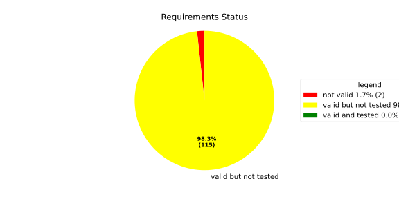
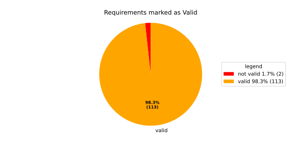
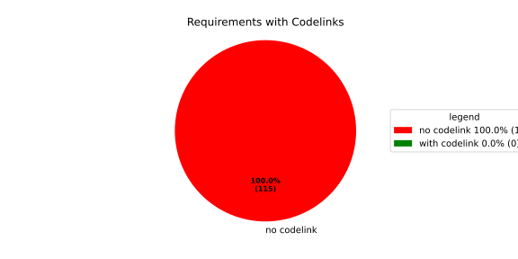

Verification Statistics#
Overview#

In Detail#


No needs passed the filters
Failed Tests
Hint: This table should be empty. Before a PR can be merged all tests have to be successful.
No needs passed the filters
Skipped / Disabled Tests
No needs passed the filters
All passed Tests#
No needs passed the filters
Details About Testcases#
No needs passed the filters
No needs passed the filters
Test Log Files#
tests-report/tests/integration/process_simple_rep_failure/process_simple_rep_failure/test.log
exec ${PAGER:-/usr/bin/less} "$0" || exit 1
Executing tests from //tests/integration/process_simple_rep_failure:process_simple_rep_failure
-----------------------------------------------------------------------------
============================= test session starts ==============================
platform linux -- Python 3.12.12, pytest-9.0.3, pluggy-1.5.0
rootdir: /home/runner/.bazel/sandbox/processwrapper-sandbox/949/execroot/_main/bazel-out/k8-fastbuild/bin/tests/integration/process_simple_rep_failure/process_simple_rep_failure.runfiles/score_itf+
configfile: pytest.ini
collected 1 item
../score_itf+::test_recovery_action_simple_rep_failure
-------------------------------- live log setup --------------------------------
[2026-06-18 08:49:52.231] [INFO] [score.itf.plugins.docker] Executing custom image bootstrap command: tests/utils/environments/x86_64-linux/x86_64-linux.sh
[2026-06-18 08:49:52.652] [DEBUG] [docker.utils.config] Trying paths: ['/home/runner/.docker/config.json', '/home/runner/.dockercfg']
[2026-06-18 08:49:52.652] [DEBUG] [docker.utils.config] Found file at path: /home/runner/.docker/config.json
[2026-06-18 08:49:52.652] [DEBUG] [docker.auth] Found 'auths' section
[2026-06-18 08:49:52.653] [DEBUG] [docker.auth] Found entry (registry='https://index.docker.io/v1/', username='githubactions')
[2026-06-18 08:49:52.681] [DEBUG] [urllib3.connectionpool] http://localhost:None "GET /version HTTP/1.1" 200 823
[2026-06-18 08:49:52.702] [DEBUG] [urllib3.connectionpool] http://localhost:None "POST /v1.48/containers/create HTTP/1.1" 201 88
[2026-06-18 08:49:52.703] [DEBUG] [urllib3.connectionpool] http://localhost:None "GET /v1.48/containers/73743ae28c68cb7a1700dbdd3870d6b19b5a985eef1bdc73c67a82637ee29da2/json HTTP/1.1" 200 None
[2026-06-18 08:49:52.890] [DEBUG] [urllib3.connectionpool] http://localhost:None "POST /v1.48/containers/73743ae28c68cb7a1700dbdd3870d6b19b5a985eef1bdc73c67a82637ee29da2/start HTTP/1.1" 204 0
[2026-06-18 08:49:52.891] [DEBUG] [docker.utils.config] Trying paths: ['/home/runner/.docker/config.json', '/home/runner/.dockercfg']
[2026-06-18 08:49:52.891] [DEBUG] [docker.utils.config] Found file at path: /home/runner/.docker/config.json
[2026-06-18 08:49:52.891] [DEBUG] [docker.auth] Found 'auths' section
[2026-06-18 08:49:52.891] [DEBUG] [docker.auth] Found entry (registry='https://index.docker.io/v1/', username='githubactions')
[2026-06-18 08:49:52.900] [DEBUG] [urllib3.connectionpool] http://localhost:None "GET /version HTTP/1.1" 200 823
[2026-06-18 08:49:53.177] [INFO] [tests.utils.testing_utils.setup_test] Test case setup finished
-------------------------------- live log call ---------------------------------
[2026-06-18 08:49:53.372] [INFO] [launch_manager] 2026/06/18 08:49:53.2593330 1559199 000 ECU1 LM LM log debug verbose 1 Launch Manager Started !!!!
[2026-06-18 08:49:53.373] [INFO] [launch_manager] 2026/06/18 08:49:53.2593330 1559202 000 ECU1 LM LM log debug verbose 1 Loading LCM Configurations...
[2026-06-18 08:49:53.373] [INFO] [launch_manager] 2026/06/18 08:49:53.2593330 1559202 000 ECU1 LM LM log debug verbose 1 ECUCFG_ENV_VAR_ROOTFOLDER set successfully
[2026-06-18 08:49:53.373] [INFO] [launch_manager] 2026/06/18 08:49:53.2593331 1559203 000 ECU1 LM LM log debug verbose 5 FlatBufferParser::getModeGroupPgName: MainPG ( IdentifierHash: 18079021346025578134 )
[2026-06-18 08:49:53.373] [INFO] [launch_manager] 2026/06/18 08:49:53.2593331 1559203 000 ECU1 LM LM log debug verbose 5 FlatBufferParser::getModeGroupPgStateName: MainPG/Startup ( IdentifierHash: 10504605499600661529 )
[2026-06-18 08:49:53.374] [INFO] [launch_manager] 2026/06/18 08:49:53.2593331 1559204 000 ECU1 LM LM log debug verbose 5 FlatBufferParser::getModeGroupPgStateName: MainPG/run_target_app_does_report_krunning_in_time ( IdentifierHash: 11934981641920773349 )
[2026-06-18 08:49:53.374] [INFO] [launch_manager] 2026/06/18 08:49:53.2593331 1559204 000 ECU1 LM LM log debug verbose 5 FlatBufferParser::getModeGroupPgStateName: MainPG/run_target_app_does_not_report_krunning_in_time ( IdentifierHash: 7672161913816744053 )
[2026-06-18 08:49:53.374] [INFO] [launch_manager] 2026/06/18 08:49:53.2593331 1559204 000 ECU1 LM LM log debug verbose 5 FlatBufferParser::getModeGroupPgStateName: MainPG/Off ( IdentifierHash: 15281793077830264047 )
[2026-06-18 08:49:53.374] [INFO] [launch_manager] 2026/06/18 08:49:53.2593331 1559204 000 ECU1 LM LM log debug verbose 5 FlatBufferParser::getModeGroupPgStateName: MainPG/fallback_run_target ( IdentifierHash: 4059409696722237352 )
[2026-06-18 08:49:53.374] [INFO] [launch_manager] 2026/06/18 08:49:53.2593331 1559205 000 ECU1 LM LM log debug verbose 4 parseProcessConfigurations: Process index: 0 executable_path_: /tmp/tests/process_simple_rep_failure/control_client_mock
[2026-06-18 08:49:53.377] [INFO] [launch_manager] 2026/06/18 08:49:53.2593331 1559205 000 ECU1 LM LM log debug verbose 3 Process control_client_mock is Reporting execution state
[2026-06-18 08:49:53.377] [INFO] [launch_manager] 2026/06/18 08:49:53.2593331 1559205 000 ECU1 LM LM log debug verbose 1 Process is STATE_MANAGEMENT function Cluster Affiliation
[2026-06-18 08:49:53.377] [INFO] [launch_manager] 2026/06/18 08:49:53.2593331 1559206 000 ECU1 LM LM log debug verbose 3 Process control_client_mock is Self terminating
[2026-06-18 08:49:53.378] [INFO] [launch_manager] 2026/06/18 08:49:53.2593331 1559206 000 ECU1 LM LM log debug verbose 4 ParseProcessProcessGroup: id:::pg_name_: MainPG , pg_state_name_: MainPG/Startup
[2026-06-18 08:49:53.378] [INFO] [launch_manager] 2026/06/18 08:49:53.2593331 1559206 000 ECU1 LM LM log debug verbose 4 ParseProcessProcessGroup: id:::pg_name_: MainPG , pg_state_name_: MainPG/run_target_app_does_report_krunning_in_time
[2026-06-18 08:49:53.378] [INFO] [launch_manager] 2026/06/18 08:49:53.2593331 1559206 000 ECU1 LM LM log debug verbose 4 ParseProcessProcessGroup: id:::pg_name_: MainPG , pg_state_name_: MainPG/run_target_app_does_not_report_krunning_in_time
[2026-06-18 08:49:53.378] [INFO] [launch_manager] 2026/06/18 08:49:53.2593331 1559207 000 ECU1 LM LM log debug verbose 4 ParseProcessProcessGroup: id:::pg_name_: MainPG , pg_state_name_: MainPG/fallback_run_target
[2026-06-18 08:49:53.378] [INFO] [launch_manager] 2026/06/18 08:49:53.2593331 1559207 000 ECU1 LM LM log debug verbose 4 parseProcessConfigurations: Process index: 1 executable_path_: /tmp/tests/process_simple_rep_failure/process_simple_reporting
[2026-06-18 08:49:53.378] [INFO] [launch_manager] 2026/06/18 08:49:53.2593331 1559207 000 ECU1 LM LM log debug verbose 3 Process component_does_report_krunning_in_time is Reporting execution state
[2026-06-18 08:49:53.378] [INFO] [launch_manager] 2026/06/18 08:49:53.2593331 1559207 000 ECU1 LM LM log debug verbose 1 Process is NOT associated with any function Cluster Affiliation
[2026-06-18 08:49:53.378] [INFO] [launch_manager] 2026/06/18 08:49:53.2593331 1559208 000 ECU1 LM LM log debug verbose 3 Process component_does_report_krunning_in_time is Self terminating
[2026-06-18 08:49:53.378] [INFO] [launch_manager] 2026/06/18 08:49:53.2593331 1559208 000 ECU1 LM LM log debug verbose 4 ParseProcessProcessGroup: id:::pg_name_: MainPG , pg_state_name_: MainPG/run_target_app_does_report_krunning_in_time
[2026-06-18 08:49:53.378] [INFO] [launch_manager] 2026/06/18 08:49:53.2593331 1559208 000 ECU1 LM LM log debug verbose 4 parseProcessConfigurations: Process index: 2 executable_path_: /tmp/tests/process_simple_rep_failure/process_simple_reporting
[2026-06-18 08:49:53.378] [INFO] [launch_manager] 2026/06/18 08:49:53.2593331 1559208 000 ECU1 LM LM log debug verbose 3 Process component_does_not_report_krunning_in_time is Reporting execution state
[2026-06-18 08:49:53.378] [INFO] [launch_manager] 2026/06/18 08:49:53.2593331 1559209 000 ECU1 LM LM log debug verbose 1 Process is NOT associated with any function Cluster Affiliation
[2026-06-18 08:49:53.379] [INFO] [launch_manager] 2026/06/18 08:49:53.2593331 1559209 000 ECU1 LM LM log debug verbose 3 Process component_does_not_report_krunning_in_time is Self terminating
[2026-06-18 08:49:53.379] [INFO] [launch_manager] 2026/06/18 08:49:53.2593331 1559209 000 ECU1 LM LM log debug verbose 4 ParseProcessProcessGroup: id:::pg_name_: MainPG , pg_state_name_: MainPG/run_target_app_does_not_report_krunning_in_time
[2026-06-18 08:49:53.379] [INFO] [launch_manager] 2026/06/18 08:49:53.2593331 1559210 000 ECU1 LM LM log debug verbose 4 parseProcessConfigurations: Process index: 3 executable_path_: /tmp/tests/process_simple_rep_failure/verification_process
[2026-06-18 08:49:53.379] [INFO] [launch_manager] 2026/06/18 08:49:53.2593331 1559210 000 ECU1 LM LM log debug verbose 3 Process verification_component is NOT Reporting execution state
[2026-06-18 08:49:53.379] [INFO] [launch_manager] 2026/06/18 08:49:53.2593331 1559210 000 ECU1 LM LM log debug verbose 1 Process is NOT associated with any function Cluster Affiliation
[2026-06-18 08:49:53.379] [INFO] [launch_manager] 2026/06/18 08:49:53.2593331 1559210 000 ECU1 LM LM log debug verbose 3 Process verification_component is Self terminating
[2026-06-18 08:49:53.379] [INFO] [launch_manager] 2026/06/18 08:49:53.2593331 1559211 000 ECU1 LM LM log debug verbose 4 ParseProcessProcessGroup: id:::pg_name_: MainPG , pg_state_name_: MainPG/fallback_run_target
[2026-06-18 08:49:53.379] [INFO] [launch_manager] 2026/06/18 08:49:53.2593331 1559211 000 ECU1 LM LM log debug verbose 3 Loading SWCL Nr. 0 Succeeded
[2026-06-18 08:49:53.379] [INFO] [launch_manager] 2026/06/18 08:49:53.2593331 1559211 000 ECU1 LM LM log debug verbose 2 1 process group(s)
[2026-06-18 08:49:53.379] [INFO] [launch_manager] 2026/06/18 08:49:53.2593331 1559211 000 ECU1 LM LM log debug verbose 3 Creating graph with 4 nodes
[2026-06-18 08:49:53.380] [INFO] [launch_manager] 2026/06/18 08:49:53.2593331 1559212 000 ECU1 LM LM log debug verbose 1 Process groups initialized successfully
[2026-06-18 08:49:53.380] [INFO] [launch_manager] 2026/06/18 08:49:53.2593331 1559212 000 ECU1 LM LM log debug verbose 1 Process Group initialization done
[2026-06-18 08:49:53.380] [INFO] [launch_manager] 2026/06/18 08:49:53.2593331 1559212 000 ECU1 LM LM log debug verbose 3 Creating Safe Process Map with 4 entries
[2026-06-18 08:49:53.380] [INFO] [launch_manager] 2026/06/18 08:49:53.2593331 1559212 000 ECU1 LM LM log debug verbose 2 Creating job queue with capacity 1024
[2026-06-18 08:49:53.380] [INFO] [launch_manager] 2026/06/18 08:49:53.2593331 1559212 000 ECU1 LM LM log debug verbose 1 Creating worker threads...
[2026-06-18 08:49:53.380] [INFO] [launch_manager] 2026/06/18 08:49:53.2593333 1559226 000 ECU1 LM LM log debug verbose 7 Process group index 0 (with name MainPG ) has 4 processes
[2026-06-18 08:49:53.380] [INFO] [launch_manager] 2026/06/18 08:49:53.2593333 1559226 000 ECU1 LM LM log debug verbose 2 Creating process node with id: 0
[2026-06-18 08:49:53.380] [INFO] [launch_manager] 2026/06/18 08:49:53.2593333 1559226 000 ECU1 LM LM log debug verbose 5 Process 0 has 0 start dependencies
[2026-06-18 08:49:53.380] [INFO] [launch_manager] 2026/06/18 08:49:53.2593333 1559227 000 ECU1 LM LM log debug verbose 2 Creating process node with id: 1
[2026-06-18 08:49:53.380] [INFO] [launch_manager] 2026/06/18 08:49:53.2593333 1559227 000 ECU1 LM LM log debug verbose 5 Process 1 has 0 start dependencies
[2026-06-18 08:49:53.384] [INFO] [launch_manager] 2026/06/18 08:49:53.2593333 1559227 000 ECU1 LM LM log debug verbose 2 Creating process node with id: 2
[2026-06-18 08:49:53.384] [INFO] [launch_manager] 2026/06/18 08:49:53.2593333 1559227 000 ECU1 LM LM log debug verbose 5 Process 2 has 0 start dependencies
[2026-06-18 08:49:53.384] [INFO] [launch_manager] 2026/06/18 08:49:53.2593333 1559227 000 ECU1 LM LM log debug verbose 2 Creating process node with id: 3
[2026-06-18 08:49:53.384] [INFO] [launch_manager] 2026/06/18 08:49:53.2593333 1559228 000 ECU1 LM LM log debug verbose 5 Process 3 has 0 start dependencies
[2026-06-18 08:49:53.384] [INFO] [launch_manager] 2026/06/18 08:49:53.2593333 1559228 000 ECU1 LM LM log debug verbose 3 Created 4 process nodes
[2026-06-18 08:49:53.384] [INFO] [launch_manager] 2026/06/18 08:49:53.2593333 1559228 000 ECU1 LM LM log debug verbose 2 Creating successor lists for process group MainPG
[2026-06-18 08:49:53.384] [INFO] [launch_manager] 2026/06/18 08:49:53.2593333 1559228 000 ECU1 LM LM log debug verbose 1 Graphs initialized
[2026-06-18 08:49:53.384] [INFO] [launch_manager] 2026/06/18 08:49:53.2593333 1559230 000 ECU1 LM Fcty log info verbose 2 Factory for FlatCfg MachineConfig: Loading of HM Machine Configuration succeeded.
[2026-06-18 08:49:53.384] [INFO] [launch_manager] 2026/06/18 08:49:53.2593333 1559231 000 ECU1 LM Fcty log debug verbose 3 Factory for FlatCfg MachineConfig: Alive Supervision buffer size: 100
[2026-06-18 08:49:53.384] [INFO] [launch_manager] 2026/06/18 08:49:53.2593333 1559231 000 ECU1 LM Fcty log debug verbose 3 Factory for FlatCfg MachineConfig: Monitor buffer size: 512
[2026-06-18 08:49:53.384] [INFO] [launch_manager] 2026/06/18 08:49:53.2593333 1559231 000 ECU1 LM Fcty log debug verbose 4 Factory for FlatCfg MachineConfig: Periodicity: 50000000 ns
[2026-06-18 08:49:53.384] [INFO] [launch_manager] 2026/06/18 08:49:53.2593333 1559231 000 ECU1 LM Fcty log debug verbose 3 Factory for FlatCfg MachineConfig: Configured watchdogs: 0
[2026-06-18 08:49:53.384] [INFO] [launch_manager] 2026/06/18 08:49:53.2593333 1559231 000 ECU1 LM Fcty log warn verbose 2 Factory for FlatCfg MachineConfig: No watchdog configured
[2026-06-18 08:49:53.385] [INFO] [launch_manager] 2026/06/18 08:49:53.2593333 1559232 000 ECU1 LM Fcty log debug verbose 2 Software Cluster Handler starts constructing workers: MainCluster
[2026-06-18 08:49:53.385] [INFO] [launch_manager] 2026/06/18 08:49:53.2593333 1559232 000 ECU1 LM Fcty log debug verbose 3 Factory for FlatCfg AR24-11: Successfully created Process States: control_client_mock
[2026-06-18 08:49:53.385] [INFO] [launch_manager] 2026/06/18 08:49:53.2593334 1559232 000 ECU1 LM Fcty log debug verbose 3 Factory for FlatCfg AR24-11: Number of constructed Process States: 1
[2026-06-18 08:49:53.385] [INFO] [launch_manager] 2026/06/18 08:49:53.2593334 1559233 000 ECU1 LM Fcty log debug verbose 3 Factory for FlatCfg AR24-11: Successfully created Monitor interface IPC with path: lifecycle_health_control_client_mock
[2026-06-18 08:49:53.385] [INFO] [launch_manager] 2026/06/18 08:49:53.2593334 1559234 000 ECU1 LM Fcty log debug verbose 3 Factory for FlatCfg AR24-11: Number of constructed Monitor interface IPCs: 1
[2026-06-18 08:49:53.385] [INFO] [launch_manager] 2026/06/18 08:49:53.2593334 1559234 000 ECU1 LM Fcty log debug verbose 3 Factory for FlatCfg AR24-11: Successfully created MonitorInterface: /lifecycle_health_control_client_mock
[2026-06-18 08:49:53.385] [INFO] [launch_manager] 2026/06/18 08:49:53.2593334 1559234 000 ECU1 LM Fcty log debug verbose 3 Factory for FlatCfg AR24-11: Number of constructed Monitor interfaces: 1
[2026-06-18 08:49:53.385] [INFO] [launch_manager] 2026/06/18 08:49:53.2593334 1559234 000 ECU1 LM Fcty log debug verbose 3 Factory for FlatCfg AR24-11: Successfully created supervision checkpoint: control_client_mock_checkpoint
[2026-06-18 08:49:53.385] [INFO] [launch_manager] 2026/06/18 08:49:53.2593334 1559234 000 ECU1 LM Fcty log debug verbose 3 Factory for FlatCfg AR24-11: Number of constructed supervision checkpoints: 1
[2026-06-18 08:49:53.385] [INFO] [launch_manager] 2026/06/18 08:49:53.2593334 1559235 000 ECU1 LM Fcty log debug verbose 3 Factory for FlatCfg AR24-11: Successfully created alive supervision worker object: control_client_mock_alive_supervision
[2026-06-18 08:49:53.385] [INFO] [launch_manager] 2026/06/18 08:49:53.2593334 1559235 000 ECU1 LM Fcty log debug verbose 3 Factory for FlatCfg AR24-11: Number of constructed alive supervisions: 1
[2026-06-18 08:49:53.385] [INFO] [launch_manager] 2026/06/18 08:49:53.2593334 1559235 000 ECU1 LM Fcty log info verbose 2 Phm Daemon: The (configured) periodicity in [ns] is set to: 50000000
[2026-06-18 08:49:53.385] [INFO] [launch_manager] 2026/06/18 08:49:53.2593334 1559235 000 ECU1 LM Fcty log debug verbose 2 Phm Daemon: The accuracy of the monotonic system clock in [ns] is: 1
[2026-06-18 08:49:53.385] [INFO] [launch_manager] 2026/06/18 08:49:53.2593334 1559235 000 ECU1 LM Fcty log debug verbose 3 HealthMonitor: Initialization took 0 ms
[2026-06-18 08:49:53.385] [INFO] [launch_manager] 2026/06/18 08:49:53.2593334 1559236 000 ECU1 LM LM log info verbose 1 LCM started successfully
[2026-06-18 08:49:53.385] [INFO] [launch_manager] 2026/06/18 08:49:53.2593334 1559236 000 ECU1 LM LM log debug verbose 3 clock() at run(): 33.493000 ms
[2026-06-18 08:49:53.385] [INFO] [launch_manager] 2026/06/18 08:49:53.2593334 1559237 000 ECU1 LM LM log debug verbose 1 =============STARTING MAINPG STARTUP STATE============
[2026-06-18 08:49:53.386] [INFO] [launch_manager] 2026/06/18 08:49:53.2593334 1559237 000 ECU1 LM LM log debug verbose 9 Graph::setState changes from kSuccess to kInTransition for PG 0 ( MainPG )
[2026-06-18 08:49:53.386] [INFO] [launch_manager] 2026/06/18 08:49:53.2593334 1559237 000 ECU1 LM LM log debug verbose 2 Stop Dependencies: 0
[2026-06-18 08:49:53.386] [INFO] [launch_manager] 2026/06/18 08:49:53.2593334 1559237 000 ECU1 LM LM log debug verbose 2 Stop Dependencies: 0
[2026-06-18 08:49:53.386] [INFO] [launch_manager] 2026/06/18 08:49:53.2593334 1559238 000 ECU1 LM LM log debug verbose 2 Stop Dependencies: 0
[2026-06-18 08:49:53.386] [INFO] [launch_manager] 2026/06/18 08:49:53.2593334 1559238 000 ECU1 LM LM log debug verbose 2 Stop Dependencies: 0
[2026-06-18 08:49:53.386] [INFO] [launch_manager] 2026/06/18 08:49:53.2593334 1559238 000 ECU1 LM LM log debug verbose 2 Start Dependencies: 0
[2026-06-18 08:49:53.386] [INFO] [launch_manager] 2026/06/18 08:49:53.2593334 1559238 000 ECU1 LM LM log debug verbose 2 Start Dependencies: 0
[2026-06-18 08:49:53.386] [INFO] [launch_manager] 2026/06/18 08:49:53.2593334 1559238 000 ECU1 LM LM log debug verbose 2 Start Dependencies: 0
[2026-06-18 08:49:53.386] [INFO] [launch_manager] 2026/06/18 08:49:53.2593334 1559238 000 ECU1 LM LM log debug verbose 2 Start Dependencies: 0
[2026-06-18 08:49:53.386] [INFO] [launch_manager] 2026/06/18 08:49:53.2593334 1559239 000 ECU1 LM LM log debug verbose 6 Starting process 0 ( control_client_mock ) from executable /tmp/tests/process_simple_rep_failure/control_client_mock
[2026-06-18 08:49:53.386] [INFO] [launch_manager] 2026/06/18 08:49:53.2593334 1559240 000 ECU1 LM LM log debug verbose 3 Initialize the control client for control_client_mock process
[2026-06-18 08:49:53.386] [INFO] [launch_manager] 2026/06/18 08:49:53.2593334 1559241 000 ECU1 LM LM log debug verbose 1 ControlClientChannel initialized
[2026-06-18 08:49:53.386] [INFO] [launch_manager] 2026/06/18 08:49:53.2593335 1559247 000 ECU1 LM LM log debug verbose 4 startProcess pid 68 received for process: control_client_mock
[2026-06-18 08:49:53.387] [INFO] [launch_manager] 2026/06/18 08:49:53.2593335 1559247 000 ECU1 LM LM log debug verbose 1 ControlClientChannel obtained from sync.
[2026-06-18 08:49:53.387] [INFO] [launch_manager] [==========] Running 1 test from 1 test suite.
[2026-06-18 08:49:53.387] [INFO] [launch_manager] [----------] Global test environment set-up.
[2026-06-18 08:49:53.387] [INFO] [launch_manager] [----------] 1 test from RecoveryActionSimpleRepFailure
[2026-06-18 08:49:53.387] [INFO] [launch_manager] [ RUN ] RecoveryActionSimpleRepFailure.ControlClientMock
[2026-06-18 08:49:53.387] [INFO] [launch_manager] [ STEP ] Report running from ControlClientMock
[2026-06-18 08:49:53.387] [INFO] [launch_manager] [ END STEP ] Report running from ControlClientMock
[2026-06-18 08:49:53.387] [INFO] [launch_manager] [ STEP ] Activate RunTarget run_target_app_does_report_krunning_in_time
[2026-06-18 08:49:53.387] [INFO] [launch_manager] 2026/06/18 08:49:53.2593356 1559458 000 ECU1 LM LM log debug verbose 1 Request sent. Waiting for acknowledgment...
[2026-06-18 08:49:53.387] [INFO] [launch_manager] 2026/06/18 08:49:53.2593358 1559473 000 ECU1 LM LM log debug verbose 8 Got kRunning for pid 68 ( control_client_mock ) process 0 of group MainPG
[2026-06-18 08:49:53.387] [INFO] [launch_manager] 2026/06/18 08:49:53.2593358 1559473 000 ECU1 LM LM log debug verbose 7 startProcess for MainPG process 0 ( control_client_mock ) done
[2026-06-18 08:49:53.387] [INFO] [launch_manager] 2026/06/18 08:49:53.2593358 1559473 000 ECU1 LM LM log debug verbose 1 Control Client handler nudged
[2026-06-18 08:49:53.387] [INFO] [launch_manager] 2026/06/18 08:49:53.2593358 1559474 000 ECU1 LM LM log debug verbose 3 clock() at successful initial state transition: 34.702000 ms
[2026-06-18 08:49:53.387] [INFO] [launch_manager] 2026/06/18 08:49:53.2593358 1559474 000 ECU1 LM LM log debug verbose 9 Graph::setState changes from kInTransition to kSuccess for PG 0 ( MainPG )
[2026-06-18 08:49:53.387] [INFO] [launch_manager] 2026/06/18 08:49:53.2593358 1559474 000 ECU1 LM LM log info verbose 7 Completed the request for PG MainPG to State MainPG/Startup in 23 ms
[2026-06-18 08:49:53.388] [INFO] [launch_manager] 2026/06/18 08:49:53.2593358 1559474 000 ECU1 LM LM log debug verbose 1 Control Client handler nudged
[2026-06-18 08:49:53.388] [INFO] [launch_manager] 2026/06/18 08:49:53.2593358 1559475 000 ECU1 LM LM log debug verbose 8 ProcessGroupManager::ControlClientHandler: got request kSetStateRequest ( 16 ) re state MainPG/run_target_app_does_report_krunning_in_time of PG MainPG
[2026-06-18 08:49:53.388] [INFO] [launch_manager] 2026/06/18 08:49:53.2593358 1559475 000 ECU1 LM LM log debug verbose 6 Pending state for process group MainPG changed from to MainPG/run_target_app_does_report_krunning_in_time
[2026-06-18 08:49:53.388] [INFO] [launch_manager] 2026/06/18 08:49:53.2593358 1559476 000 ECU1 LM LM log debug verbose 1 Request acknowledged.
[2026-06-18 08:49:53.388] [INFO] [launch_manager] 2026/06/18 08:49:53.2593358 1559476 000 ECU1 LM LM log debug verbose 6 Pending state for process group MainPG changed from MainPG/run_target_app_does_report_krunning_in_time to
[2026-06-18 08:49:53.388] [INFO] [launch_manager] 2026/06/18 08:49:53.2593358 1559477 000 ECU1 LM LM log debug verbose 4 Start transition to MainPG/run_target_app_does_report_krunning_in_time for PG MainPG
[2026-06-18 08:49:53.388] [INFO] [launch_manager] 2026/06/18 08:49:53.2593358 1559481 000 ECU1 LM LM log debug verbose 9 Graph::setState changes from kSuccess to kInTransition for PG 0 ( MainPG )
[2026-06-18 08:49:53.388] [INFO] [launch_manager] 2026/06/18 08:49:53.2593358 1559481 000 ECU1 LM LM log debug verbose 2 2026/06/18 08:49:53.2593358 1559481 000 ECU1 LM LM log debug verbose 1 Stop Dependencies: 0
[2026-06-18 08:49:53.388] [INFO] [launch_manager] Request acknowledged.
[2026-06-18 08:49:53.388] [INFO] [launch_manager] 2026/06/18 08:49:53.2593358 1559482 000 ECU1 LM LM log debug verbose 2 Stop Dependencies: 0
[2026-06-18 08:49:53.388] [INFO] [launch_manager] 2026/06/18 08:49:53.2593359 1559486 000 ECU1 LM LM log debug verbose 2 Stop Dependencies: 0
[2026-06-18 08:49:53.388] [INFO] [launch_manager] 2026/06/18 08:49:53.2593359 1559486 000 ECU1 LM LM log debug verbose 2 Stop Dependencies: 0
[2026-06-18 08:49:53.388] [INFO] [launch_manager] 2026/06/18 08:49:53.2593359 1559487 000 ECU1 LM LM log debug verbose 2 Start Dependencies: 0
[2026-06-18 08:49:53.388] [INFO] [launch_manager] 2026/06/18 08:49:53.2593360 1559501 000 ECU1 LM LM log debug verbose 2 Start Dependencies: 0
[2026-06-18 08:49:53.388] [INFO] [launch_manager] 2026/06/18 08:49:53.2593360 1559502 000 ECU1 LM LM log debug verbose 2 Start Dependencies: 0
[2026-06-18 08:49:53.388] [INFO] [launch_manager] 2026/06/18 08:49:53.2593361 1559511 000 ECU1 LM LM log debug verbose 2 Start Dependencies: 0
[2026-06-18 08:49:53.388] [INFO] [launch_manager] 2026/06/18 08:49:53.2593361 1559512 000 ECU1 LM LM log debug verbose 6 Starting process 1 ( component_does_report_krunning_in_time ) from executable /tmp/tests/process_simple_rep_failure/process_simple_reporting
[2026-06-18 08:49:53.389] [INFO] [launch_manager] 2026/06/18 08:49:53.2593362 1559518 000 ECU1 LM LM log debug verbose 4 startProcess pid 70 received for process: component_does_report_krunning_in_time
[2026-06-18 08:49:53.389] [INFO] [launch_manager] [==========] Running 1 test from 1 test suite.
[2026-06-18 08:49:53.389] [INFO] [launch_manager] [----------] Global test environment set-up.
[2026-06-18 08:49:53.389] [INFO] [launch_manager] [----------] 1 test from ProcessSimpleRepFailure
[2026-06-18 08:49:53.389] [INFO] [launch_manager] [ RUN ] ProcessSimpleRepFailure.ProcessSimpleReporting
[2026-06-18 08:49:53.389] [INFO] [launch_manager] [ STEP ] Check args
[2026-06-18 08:49:53.389] [INFO] [launch_manager] [ END STEP ] Check args
[2026-06-18 08:49:53.389] [INFO] [launch_manager] [ STEP ] Report running from ProcessSimpleReporting
[2026-06-18 08:49:53.389] [INFO] [launch_manager] 2026/06/18 08:49:53.2593386 1559761 000 ECU1 LM Sprv log debug verbose 6 Process with Id control_client_mock changed state PG MainPG/Startup PS 1
[2026-06-18 08:49:53.389] [INFO] [launch_manager] 2026/06/18 08:49:53.2593386 1559761 000 ECU1 LM Sprv log debug verbose 6 Process with Id control_client_mock changed state PG MainPG/Startup PS 2
[2026-06-18 08:49:53.389] [INFO] [launch_manager] 2026/06/18 08:49:53.2593386 1559762 000 ECU1 LM Sprv log debug verbose 6 Process with Id component_does_report_krunning_in_time changed state PG MainPG/run_target_app_does_report_krunning_in_time PS 1
[2026-06-18 08:49:53.390] [INFO] [launch_manager] 2026/06/18 08:49:53.2593386 1559762 000 ECU1 LM Sprv log info verbose 3 Alive Supervision ( control_client_mock_alive_supervision ) switched to OK.
[2026-06-18 08:49:53.464] [DEBUG] [tests.utils.testing_utils.run_until_file_deployed] Waiting for /tmp/tests/test_end
[2026-06-18 08:49:53.868] [INFO] [launch_manager] [ END STEP ] Report running from ProcessSimpleReporting
[2026-06-18 08:49:53.868] [INFO] [launch_manager] [ OK ] ProcessSimpleRepFailure.ProcessSimpleReporting (502 ms)
[2026-06-18 08:49:53.868] [INFO] [launch_manager] 2026/06/18 08:49:53.2593868 1564576 000 ECU1 LM LM log debug verbose 8 Got kRunning for pid 70 ( component_does_report_krunning_in_time ) process 1 of group MainPG
[2026-06-18 08:49:53.868] [INFO] [launch_manager] 2026/06/18 08:49:53.2593868 1564577 000 ECU1 LM LM log debug verbose 7 startProcess for MainPG process 1 ( component_does_report_krunning_in_time ) done
[2026-06-18 08:49:53.868] [INFO] [launch_manager] 2026/06/18 08:49:53.2593868 1564577 000 ECU1 LM LM log debug verbose 9 Graph::setState changes from kInTransition to kSuccess for PG 0 ( MainPG )
[2026-06-18 08:49:53.869] [INFO] [launch_manager] 2026/06/18 08:49:53.2593868 1564577 000 ECU1 LM LM log info verbose 7 Completed the request for PG MainPG to State MainPG/run_target_app_does_report_krunning_in_time in 510 ms
[2026-06-18 08:49:53.869] [INFO] [launch_manager] 2026/06/18 08:49:53.2593868 1564577 000 ECU1 LM LM log debug verbose 1 Control Client handler nudged
[2026-06-18 08:49:53.869] [INFO] [launch_manager] [----------] 1 test from ProcessSimpleRepFailure (502 ms total)
[2026-06-18 08:49:53.869] [INFO] [launch_manager] [----------] Global test environment tear-down
[2026-06-18 08:49:53.869] [INFO] [launch_manager] [==========] 1 test from 1 test suite ran. (502 ms total)
[2026-06-18 08:49:53.869] [INFO] [launch_manager] [ PASSED ] 1 test.
[2026-06-18 08:49:53.869] [INFO] [launch_manager] 2026/06/18 08:49:53.2593869 1564586 000 ECU1 LM LM log debug verbose 8 ProcessGroupManager::ControlClientHandler: Sending kSetStateSuccess ( 20 ) re state MainPG/run_target_app_does_report_krunning_in_time of PG MainPG
[2026-06-18 08:49:53.869] [INFO] [launch_manager] 2026/06/18 08:49:53.2593869 1564586 000 ECU1 LM LM log debug verbose 1 Response sent.
[2026-06-18 08:49:53.869] [INFO] [launch_manager] 2026/06/18 08:49:53.2593869 1564587 000 ECU1 LM LM log debug verbose 12 Child process 1 of MainPG pid 70 ( component_does_report_krunning_in_time ) for node True terminated with status 0
[2026-06-18 08:49:53.885] [INFO] [launch_manager] 2026/06/18 08:49:53.2593884 1564737 000 ECU1 LM Sprv log debug verbose 6 Process with Id component_does_report_krunning_in_time changed state PG MainPG/run_target_app_does_report_krunning_in_time PS 2
[2026-06-18 08:49:53.886] [INFO] [launch_manager] 2026/06/18 08:49:53.2593884 1564738 000 ECU1 LM Sprv log debug verbose 6 Process with Id component_does_report_krunning_in_time changed state PG MainPG/run_target_app_does_report_krunning_in_time PS 4
[2026-06-18 08:49:53.961] [INFO] [launch_manager] 2026/06/18 08:49:53.2593960 1565494 000 ECU1 LM LM log debug verbose 1 Response retrieved.
[2026-06-18 08:49:53.962] [INFO] [launch_manager] [ END STEP ] Activate RunTarget run_target_app_does_report_krunning_in_time
[2026-06-18 08:49:54.038] [DEBUG] [tests.utils.testing_utils.run_until_file_deployed] Waiting for /tmp/tests/test_end
[2026-06-18 08:49:54.614] [DEBUG] [tests.utils.testing_utils.run_until_file_deployed] Waiting for /tmp/tests/test_end
[2026-06-18 08:49:54.960] [INFO] [launch_manager] [ STEP ] Verify fallback run target has not been activated
[2026-06-18 08:49:54.960] [INFO] [launch_manager] [ END STEP ] Verify fallback run target has not been activated
[2026-06-18 08:49:54.961] [INFO] [launch_manager] [ STEP ] Activate RunTarget run_target_app_does_not_report_krunning_in_time
[2026-06-18 08:49:54.961] [INFO] [launch_manager] 2026/06/18 08:49:54.2594960 1575497 000 ECU1 LM LM log debug verbose 1 Request sent. Waiting for acknowledgment...
[2026-06-18 08:49:54.962] [INFO] [launch_manager] 2026/06/18 08:49:54.2594961 1575512 000 ECU1 LM LM log debug verbose 8 ProcessGroupManager::ControlClientHandler: got request kSetStateRequest ( 16 ) re state MainPG/run_target_app_does_not_report_krunning_in_time of PG MainPG
[2026-06-18 08:49:54.962] [INFO] [launch_manager] 2026/06/18 08:49:54.2594961 1575512 000 ECU1 LM LM log debug verbose 6 Pending state for process group MainPG changed from to MainPG/run_target_app_does_not_report_krunning_in_time
[2026-06-18 08:49:54.963] [INFO] [launch_manager] 2026/06/18 08:49:54.2594961 1575512 000 ECU1 LM LM log debug verbose 1 Request acknowledged.
[2026-06-18 08:49:54.963] [INFO] [launch_manager] 2026/06/18 08:49:54.2594962 1575512 000 ECU1 LM LM log debug verbose 6 Pending state for process group MainPG changed from MainPG/run_target_app_does_not_report_krunning_in_time to
[2026-06-18 08:49:54.963] [INFO] [launch_manager] 2026/06/18 08:49:54.2594962 1575513 000 ECU1 LM LM log debug verbose 4 Start transition to MainPG/run_target_app_does_not_report_krunning_in_time for PG MainPG
[2026-06-18 08:49:54.963] [INFO] [launch_manager] 2026/06/18 08:49:54.2594962 1575513 000 ECU1 LM LM log debug verbose 9 Graph::setState changes from kSuccess to kInTransition for PG 0 ( MainPG )
[2026-06-18 08:49:54.963] [INFO] [launch_manager] 2026/06/18 08:49:54.2594962 1575513 000 ECU1 LM LM log debug verbose 2 Stop Dependencies: 0
[2026-06-18 08:49:54.970] [INFO] [launch_manager] 2026/06/18 08:49:54.2594962 1575513 000 ECU1 LM LM log debug verbose 2 Stop Dependencies: 0
[2026-06-18 08:49:54.970] [INFO] [launch_manager] 2026/06/18 08:49:54.2594962 1575514 000 ECU1 LM LM log debug verbose 2 Stop Dependencies: 0
[2026-06-18 08:49:54.970] [INFO] [launch_manager] 2026/06/18 08:49:54.2594962 1575514 000 ECU1 LM LM log debug verbose 2 Stop Dependencies: 0
[2026-06-18 08:49:54.970] [INFO] [launch_manager] 2026/06/18 08:49:54.2594962 1575514 000 ECU1 LM LM log debug verbose 2 Start Dependencies: 0
[2026-06-18 08:49:54.970] [INFO] [launch_manager] 2026/06/18 08:49:54.2594962 1575514 000 ECU1 LM LM log debug verbose 2 Start Dependencies: 0
[2026-06-18 08:49:54.970] [INFO] [launch_manager] 2026/06/18 08:49:54.2594962 1575514 000 ECU1 LM LM log debug verbose 2 Start Dependencies: 0
[2026-06-18 08:49:54.970] [INFO] [launch_manager] 2026/06/18 08:49:54.2594962 1575514 000 ECU1 LM LM log debug verbose 2 Start Dependencies: 0
[2026-06-18 08:49:54.970] [INFO] [launch_manager] 2026/06/18 08:49:54.2594962 1575516 000 ECU1 LM LM log debug verbose 6 Starting process 2 ( component_does_not_report_krunning_in_time ) from executable /tmp/tests/process_simple_rep_failure/process_simple_reporting
[2026-06-18 08:49:54.970] [INFO] [launch_manager] 2026/06/18 08:49:54.2594962 1575520 000 ECU1 LM LM log debug verbose 1 Request acknowledged.
[2026-06-18 08:49:54.970] [INFO] [launch_manager] 2026/06/18 08:49:54.2594962 1575522 000 ECU1 LM LM log debug verbose 4 startProcess pid 92 received for process: component_does_not_report_krunning_in_time
[2026-06-18 08:49:54.970] [INFO] [launch_manager] [==========] Running 1 test from 1 test suite.
[2026-06-18 08:49:54.970] [INFO] [launch_manager] [----------] Global test environment set-up.
[2026-06-18 08:49:54.970] [INFO] [launch_manager] [----------] 1 test from ProcessSimpleRepFailure
[2026-06-18 08:49:54.971] [INFO] [launch_manager] [ RUN ] ProcessSimpleRepFailure.ProcessSimpleReporting
[2026-06-18 08:49:54.971] [INFO] [launch_manager] [ STEP ] Check args
[2026-06-18 08:49:54.971] [INFO] [launch_manager] [ END STEP ] Check args
[2026-06-18 08:49:54.971] [INFO] [launch_manager] [ STEP ] Report running from ProcessSimpleReporting
[2026-06-18 08:49:54.984] [INFO] [launch_manager] 2026/06/18 08:49:54.2594984 1575737 000 ECU1 LM Sprv log debug verbose 6 Process with Id component_does_not_report_krunning_in_time changed state PG MainPG/run_target_app_does_not_report_krunning_in_time PS 1
[2026-06-18 08:49:55.187] [DEBUG] [tests.utils.testing_utils.run_until_file_deployed] Waiting for /tmp/tests/test_end
[2026-06-18 08:49:55.752] [DEBUG] [tests.utils.testing_utils.run_until_file_deployed] Waiting for /tmp/tests/test_end
[2026-06-18 08:49:56.031] [INFO] [launch_manager] 2026/06/18 08:49:56.2596030 1586200 000 ECU1 LM LM log error verbose 1 Semaphore timedWait or post failed: Unable to wait or post on semaphores within the specified timeout.
[2026-06-18 08:49:56.031] [INFO] [launch_manager] 2026/06/18 08:49:56.2596030 1586201 000 ECU1 LM LM log warn verbose 5 Got kRunning timeout for process 2 ( component_does_not_report_krunning_in_time )
[2026-06-18 08:49:56.031] [INFO] [launch_manager] 2026/06/18 08:49:56.2596030 1586201 000 ECU1 LM LM log debug verbose 5 terminating process 2 ( component_does_not_report_krunning_in_time )
[2026-06-18 08:49:56.031] [INFO] [launch_manager] 2026/06/18 08:49:56.2596030 1586201 000 ECU1 LM LM log debug verbose 9 Requesting termination of process 2 of MainPG pid 92 ( component_does_not_report_krunning_in_time )
[2026-06-18 08:49:56.031] [INFO] [launch_manager] 2026/06/18 08:49:56.2596030 1586202 000 ECU1 LM LM log debug verbose 2 Request termination received for 92
[2026-06-18 08:49:56.034] [INFO] [launch_manager] 2026/06/18 08:49:56.2596034 1586237 000 ECU1 LM Sprv log debug verbose 6 Process with Id component_does_not_report_krunning_in_time changed state PG MainPG/run_target_app_does_not_report_krunning_in_time PS 3
[2026-06-18 08:49:56.294] [DEBUG] [tests.utils.testing_utils.run_until_file_deployed] Waiting for /tmp/tests/test_end
[2026-06-18 08:49:56.836] [DEBUG] [tests.utils.testing_utils.run_until_file_deployed] Waiting for /tmp/tests/test_end
[2026-06-18 08:49:57.066] [INFO] [launch_manager] 2026/06/18 08:49:57.2597066 1596556 000 ECU1 LM LM log warn verbose 5 Process 2 ( component_does_not_report_krunning_in_time ) did not respond to SIGTERM, sending SIGKILL
[2026-06-18 08:49:57.066] [INFO] [launch_manager] 2026/06/18 08:49:57.2597066 1596557 000 ECU1 LM LM log debug verbose 2 Forced termination received for pid 92
[2026-06-18 08:49:57.067] [INFO] [launch_manager] 2026/06/18 08:49:57.2597066 1596561 000 ECU1 LM LM log debug verbose 12 Child process 2 of MainPG pid 92 ( component_does_not_report_krunning_in_time ) for node True terminated with status 9
[2026-06-18 08:49:57.067] [INFO] [launch_manager] 2026/06/18 08:49:57.2597066 1596561 000 ECU1 LM LM log warn verbose 7 unexpected termination of process 2 pid 92 ( component_does_not_report_krunning_in_time )
[2026-06-18 08:49:57.067] [INFO] [launch_manager] 2026/06/18 08:49:57.2597066 1596562 000 ECU1 LM LM log debug verbose 9 Graph::setState changes from kInTransition to kAborting for PG 0 ( MainPG )
[2026-06-18 08:49:57.068] [INFO] [launch_manager] 2026/06/18 08:49:57.2597068 1596578 000 ECU1 LM LM log debug verbose 7 terminateProcess for MainPG process 2 ( component_does_not_report_krunning_in_time ) done
[2026-06-18 08:49:57.068] [INFO] [launch_manager] 2026/06/18 08:49:57.2597068 1596579 000 ECU1 LM LM log debug verbose 7 startProcess for MainPG process 2 ( component_does_not_report_krunning_in_time ) done
[2026-06-18 08:49:57.068] [INFO] [launch_manager] 2026/06/18 08:49:57.2597068 1596579 000 ECU1 LM LM log debug verbose 9 Graph::setState changes from kAborting to kUndefinedState for PG 0 ( MainPG )
[2026-06-18 08:49:57.069] [INFO] [launch_manager] 2026/06/18 08:49:57.2597068 1596579 000 ECU1 LM LM log debug verbose 1 Control Client handler nudged
[2026-06-18 08:49:57.069] [INFO] [launch_manager] 2026/06/18 08:49:57.2597069 1596589 000 ECU1 LM LM log debug verbose 8 ProcessGroupManager::ControlClientHandler: Sending kFailedUnexpectedTerminationOnEnter ( 23 ) re state MainPG/run_target_app_does_not_report_krunning_in_time of PG MainPG
[2026-06-18 08:49:57.069] [INFO] [launch_manager] 2026/06/18 08:49:57.2597069 1596589 000 ECU1 LM LM log debug verbose 1 Response sent.
[2026-06-18 08:49:57.070] [INFO] [launch_manager] 2026/06/18 08:49:57.2597069 1596590 000 ECU1 LM LM log warn verbose 3 Problem discovered in PG MainPG Activating Recovery state.
[2026-06-18 08:49:57.070] [INFO] [launch_manager] 2026/06/18 08:49:57.2597069 1596590 000 ECU1 LM LM log debug verbose 9 Graph::setState changes from kUndefinedState to kInTransition for PG 0 ( MainPG )
[2026-06-18 08:49:57.070] [INFO] [launch_manager] 2026/06/18 08:49:57.2597069 1596591 000 ECU1 LM LM log debug verbose 2 Stop Dependencies: 0
[2026-06-18 08:49:57.070] [INFO] [launch_manager] 2026/06/18 08:49:57.2597069 1596591 000 ECU1 LM LM log debug verbose 2 Stop Dependencies: 0
[2026-06-18 08:49:57.070] [INFO] [launch_manager] 2026/06/18 08:49:57.2597069 1596591 000 ECU1 LM LM log debug verbose 2 Stop Dependencies: 0
[2026-06-18 08:49:57.070] [INFO] [launch_manager] 2026/06/18 08:49:57.2597069 1596591 000 ECU1 LM LM log debug verbose 2 Stop Dependencies: 0
[2026-06-18 08:49:57.070] [INFO] [launch_manager] 2026/06/18 08:49:57.2597069 1596592 000 ECU1 LM LM log debug verbose 2 Start Dependencies: 0
[2026-06-18 08:49:57.070] [INFO] [launch_manager] 2026/06/18 08:49:57.2597069 1596592 000 ECU1 LM LM log debug verbose 2 Start Dependencies: 0
[2026-06-18 08:49:57.070] [INFO] [launch_manager] 2026/06/18 08:49:57.2597069 1596592 000 ECU1 LM LM log debug verbose 2 Start Dependencies: 0
[2026-06-18 08:49:57.071] [INFO] [launch_manager] 2026/06/18 08:49:57.2597069 1596592 000 ECU1 LM LM log debug verbose 2 Start Dependencies: 0
[2026-06-18 08:49:57.071] [INFO] [launch_manager] 2026/06/18 08:49:57.2597070 1596594 000 ECU1 LM LM log debug verbose 6 Starting process 3 ( verification_component ) from executable /tmp/tests/process_simple_rep_failure/verification_process
[2026-06-18 08:49:57.071] [INFO] [launch_manager] 2026/06/18 08:49:57.2597070 1596600 000 ECU1 LM LM log debug verbose 4 startProcess pid 117 received for process: verification_component
[2026-06-18 08:49:57.071] [INFO] [launch_manager] 2026/06/18 08:49:57.2597070 1596601 000 ECU1 LM LM log debug verbose 8 Considered kRunning for Non Reporting Process pid 117 ( verification_component ) process 3 of group MainPG
[2026-06-18 08:49:57.071] [INFO] [launch_manager] 2026/06/18 08:49:57.2597070 1596601 000 ECU1 LM LM log debug verbose 7 startProcess for MainPG process 3 ( verification_component ) done
[2026-06-18 08:49:57.071] [INFO] [launch_manager] 2026/06/18 08:49:57.2597070 1596602 000 ECU1 LM LM log debug verbose 9
[2026-06-18 08:49:57.071] [INFO] [launch_manager] Graph::setState changes from kInTransition to kSuccess for PG 0 ( MainPG )
[2026-06-18 08:49:57.071] [INFO] [launch_manager] 2026/06/18 08:49:57.2597071 1596603 000 ECU1 LM LM log info verbose 7 Completed the request for PG MainPG to State MainPG/fallback_run_target in 1 ms
[2026-06-18 08:49:57.071] [INFO] [launch_manager] 2026/06/18 08:49:57.2597071 1596603 000 ECU1 LM LM log debug verbose 1 Control Client handler nudged
[2026-06-18 08:49:57.072] [INFO] [launch_manager] 2026/06/18 08:49:57.2597072 1596614 000 ECU1 LM LM log debug verbose 8 ProcessGroupManager::ControlClientHandler: Sending kSetStateSuccess ( 20 ) re state MainPG/fallback_run_target of PG MainPG
[2026-06-18 08:49:57.072] [INFO] [launch_manager] 2026/06/18 08:49:57.2597072 1596614 000 ECU1 LM LM log debug verbose 1 Failed to send response: response is not empty.
[2026-06-18 08:49:57.072] [INFO] [launch_manager] 2026/06/18 08:49:57.2597072 1596614 000 ECU1 LM LM log debug verbose 1 Control Client handler nudged
[2026-06-18 08:49:57.072] [INFO] [launch_manager] 2026/06/18 08:49:57.2597072 1596615 000 ECU1 LM LM log debug verbose 8 ProcessGroupManager::ControlClientHandler: Sending kSetStateSuccess ( 20 ) re state MainPG/fallback_run_target of PG MainPG
[2026-06-18 08:49:57.072] [INFO] [launch_manager] 2026/06/18 08:49:57.2597072 1596615 000 ECU1 LM LM log debug verbose 1 Failed to send response: response is not empty.
[2026-06-18 08:49:57.072] [INFO] [launch_manager] 2026/06/18 08:49:57.2597072 1596616 000 ECU1 LM LM log debug verbose 12
[2026-06-18 08:49:57.073] [INFO] [launch_manager] Child process 3 of MainPG pid 117 ( verification_component ) for node True terminated with status 0
[2026-06-18 08:49:57.073] [INFO] [launch_manager] 2026/06/18 08:49:57.2597072 1596617 000 ECU1 LM LM log debug verbose 1 Control Client handler nudged
[2026-06-18 08:49:57.073] [INFO] [launch_manager] 2026/06/18 08:49:57.2597072 1596617 000 ECU1 LM LM log debug verbose 8 ProcessGroupManager::ControlClientHandler: Sending kSetStateSuccess ( 20 ) re state MainPG/fallback_run_target of PG MainPG
[2026-06-18 08:49:57.073] [INFO] [launch_manager] 2026/06/18 08:49:57.2597072 1596618 000 ECU1 LM LM log debug verbose 1 Failed to send response: response is not empty.
[2026-06-18 08:49:57.073] [INFO] [launch_manager] 2026/06/18 08:49:57.2597072 1596618 000 ECU1 LM LM log debug verbose 1 Control Client handler nudged
[2026-06-18 08:49:57.073] [INFO] [launch_manager] 2026/06/18 08:49:57.2597072 1596618 000 ECU1 LM LM log debug verbose 8 ProcessGroupManager::ControlClientHandler: Sending kSetStateSuccess ( 20 ) re state MainPG/fallback_run_target of PG MainPG
[2026-06-18 08:49:57.073] [INFO] [launch_manager] 2026/06/18 08:49:57.2597072 1596619 000 ECU1 LM LM log debug verbose 1 Failed to send response: response is not empty.
[2026-06-18 08:49:57.073] [INFO] [launch_manager] 2026/06/18 08:49:57.2597072 1596619 000 ECU1 LM LM log debug verbose 1 Control Client handler nudged
[2026-06-18 08:49:57.074] [INFO] [launch_manager] 2026/06/18 08:49:57.2597072 1596619 000 ECU1 LM LM log debug verbose 8 ProcessGroupManager::ControlClientHandler: Sending kSetStateSuccess ( 20 ) re state MainPG/fallback_run_target of PG MainPG
[2026-06-18 08:49:57.074] [INFO] [launch_manager] 2026/06/18 08:49:57.2597072 1596619 000 ECU1 LM LM log debug verbose 1 Failed to send response: response is not empty.
[2026-06-18 08:49:57.074] [INFO] [launch_manager] 2026/06/18 08:49:57.2597072 1596620 000 ECU1 LM LM log debug verbose 1 Control Client handler nudged
[2026-06-18 08:49:57.074] [INFO] [launch_manager] 2026/06/18 08:49:57.2597072 1596620 000 ECU1 LM LM log debug verbose 8 ProcessGroupManager::ControlClientHandler: Sending kSetStateSuccess ( 20 ) re state MainPG/fallback_run_target of PG MainPG
[2026-06-18 08:49:57.074] [INFO] [launch_manager] 2026/06/18 08:49:57.2597072 1596621 000 ECU1 LM LM log debug verbose 1 Failed to send response: response is not empty.
[2026-06-18 08:49:57.074] [INFO] [launch_manager] 2026/06/18 08:49:57.2597072 1596621 000 ECU1 LM LM log debug verbose 1 Control Client handler nudged
[2026-06-18 08:49:57.074] [INFO] [launch_manager] 2026/06/18 08:49:57.2597072 1596621 000 ECU1 LM LM log debug verbose 8 ProcessGroupManager::ControlClientHandler: Sending kSetStateSuccess ( 20 ) re state MainPG/fallback_run_target of PG MainPG
[2026-06-18 08:49:57.074] [INFO] [launch_manager] 2026/06/18 08:49:57.2597072 1596622 000 ECU1 LM LM log debug verbose 1 Failed to send response: response is not empty.
[2026-06-18 08:49:57.074] [INFO] [launch_manager] 2026/06/18 08:49:57.2597072 1596622 000 ECU1 LM LM log debug verbose 1 Control Client handler nudged
[2026-06-18 08:49:57.074] [INFO] [launch_manager] 2026/06/18 08:49:57.2597072 1596622 000 ECU1 LM LM log debug verbose 8
[2026-06-18 08:49:57.075] [INFO] [launch_manager] ProcessGroupManager::ControlClientHandler: Sending kSetStateSuccess ( 20 ) re state MainPG/fallback_run_target of PG MainPG
[2026-06-18 08:49:57.075] [INFO] [launch_manager] 2026/06/18 08:49:57.2597073 1596623 000 ECU1 LM LM log debug verbose 1
[2026-06-18 08:49:57.075] [INFO] [launch_manager] Failed to send response: response is not empty.
[2026-06-18 08:49:57.075] [INFO] [launch_manager] 2026/06/18 08:49:57.2597073 1596623 000 ECU1 LM LM log debug verbose 1 Control Client handler nudged
[2026-06-18 08:49:57.075] [INFO] [launch_manager] 2026/06/18 08:49:57.2597073 1596624 000 ECU1 LM LM log debug verbose 8 ProcessGroupManager::ControlClientHandler: Sending kSetStateSuccess ( 20 ) re state MainPG/fallback_run_target of PG MainPG
[2026-06-18 08:49:57.075] [INFO] [launch_manager] 2026/06/18 08:49:57.2597073 1596624 000 ECU1 LM LM log debug verbose 1 Failed to send response: response is not empty.
[2026-06-18 08:49:57.075] [INFO] [launch_manager] 2026/06/18 08:49:57.2597073 1596624 000 ECU1 LM LM log debug verbose 1 Control Client handler nudged
[2026-06-18 08:49:57.075] [INFO] [launch_manager] 2026/06/18 08:49:57.2597073 1596624 000 ECU1 LM LM log debug verbose 8
[2026-06-18 08:49:57.075] [INFO] [launch_manager] ProcessGroupManager::ControlClientHandler: Sending kSetStateSuccess ( 20 ) re state MainPG/fallback_run_target of PG MainPG
[2026-06-18 08:49:57.076] [INFO] [launch_manager] 2026/06/18 08:49:57.2597073 1596625 000 ECU1 LM LM log debug verbose 1 Failed to send response: response is not empty.
[2026-06-18 08:49:57.076] [INFO] [launch_manager] 2026/06/18 08:49:57.2597073 1596625 000 ECU1 LM LM log debug verbose 1 Control Client handler nudged
[2026-06-18 08:49:57.076] [INFO] [launch_manager] 2026/06/18 08:49:57.2597073 1596626 000 ECU1 LM LM log debug verbose 8 ProcessGroupManager::ControlClientHandler: Sending kSetStateSuccess ( 20 ) re state MainPG/fallback_run_target of PG MainPG
[2026-06-18 08:49:57.076] [INFO] [launch_manager] 2026/06/18 08:49:57.2597073 1596626 000 ECU1 LM LM log debug verbose 1 Failed to send response: response is not empty.
[2026-06-18 08:49:57.076] [INFO] [launch_manager] 2026/06/18 08:49:57.2597073 1596626 000 ECU1 LM LM log debug verbose 1 Control Client handler nudged
[2026-06-18 08:49:57.076] [INFO] [launch_manager] 2026/06/18 08:49:57.2597073 1596627 000 ECU1 LM LM log debug verbose 8 ProcessGroupManager::ControlClientHandler: Sending kSetStateSuccess ( 20 ) re state MainPG/fallback_run_target of PG MainPG
[2026-06-18 08:49:57.076] [INFO] [launch_manager] 2026/06/18 08:49:57.2597073 1596627 000 ECU1 LM LM log debug verbose 1 Failed to send response: response is not empty.
[2026-06-18 08:49:57.076] [INFO] [launch_manager] 2026/06/18 08:49:57.2597073 1596627 000 ECU1 LM LM log debug verbose 1 Control Client handler nudged
[2026-06-18 08:49:57.076] [INFO] [launch_manager] 2026/06/18 08:49:57.2597073 1596628 000 ECU1 LM LM log debug verbose 8 ProcessGroupManager::ControlClientHandler: Sending kSetStateSuccess ( 20 ) re state MainPG/fallback_run_target of PG MainPG
[2026-06-18 08:49:57.077] [INFO] [launch_manager] 2026/06/18 08:49:57.2597073 1596628 000 ECU1 LM LM log debug verbose 1 Failed to send response: response is not empty.
[2026-06-18 08:49:57.077] [INFO] [launch_manager] 2026/06/18 08:49:57.2597073 1596628 000 ECU1 LM LM log debug verbose 1 Control Client handler nudged
[2026-06-18 08:49:57.077] [INFO] [launch_manager] 2026/06/18 08:49:57.2597073 1596628 000 ECU1 LM LM log debug verbose 8 ProcessGroupManager::ControlClientHandler: Sending kSetStateSuccess ( 20 ) re state MainPG/fallback_run_target of PG MainPG
[2026-06-18 08:49:57.077] [INFO] [launch_manager] 2026/06/18 08:49:57.2597073 1596629 000 ECU1 LM LM log debug verbose 1 Failed to send response: response is not empty.
[2026-06-18 08:49:57.077] [INFO] [launch_manager] 2026/06/18 08:49:57.2597073 1596629 000 ECU1 LM LM log debug verbose 1 Control Client handler nudged
[2026-06-18 08:49:57.077] [INFO] [launch_manager] 2026/06/18 08:49:57.2597073 1596629 000 ECU1 LM LM log debug verbose 8 ProcessGroupManager::ControlClientHandler: Sending kSetStateSuccess ( 20 ) re state MainPG/fallback_run_target of PG MainPG
[2026-06-18 08:49:57.077] [INFO] [launch_manager] 2026/06/18 08:49:57.2597073 1596630 000 ECU1 LM LM log debug verbose 1 Failed to send response: response is not empty.
[2026-06-18 08:49:57.077] [INFO] [launch_manager] 2026/06/18 08:49:57.2597073 1596631 000 ECU1 LM LM log debug verbose 1 Control Client handler nudged
[2026-06-18 08:49:57.077] [INFO] [launch_manager] 2026/06/18 08:49:57.2597073 1596631 000 ECU1 LM LM log debug verbose 8 ProcessGroupManager::ControlClientHandler: Sending kSetStateSuccess ( 20 ) re state MainPG/fallback_run_target of PG MainPG
[2026-06-18 08:49:57.077] [INFO] [launch_manager] 2026/06/18 08:49:57.2597073 1596631 000 ECU1 LM LM log debug verbose 1 Failed to send response: response is not empty.
[2026-06-18 08:49:57.077] [INFO] [launch_manager] 2026/06/18 08:49:57.2597073 1596632 000 ECU1 LM LM log debug verbose 1 Control Client handler nudged
[2026-06-18 08:49:57.077] [INFO] [launch_manager] 2026/06/18 08:49:57.2597073 1596632 000 ECU1 LM LM log debug verbose 8 ProcessGroupManager::ControlClientHandler: Sending kSetStateSuccess ( 20 ) re state MainPG/fallback_run_target of PG MainPG
[2026-06-18 08:49:57.078] [INFO] [launch_manager] 2026/06/18 08:49:57.2597073 1596632 000 ECU1 LM LM log debug verbose 1 Failed to send response: response is not empty.
[2026-06-18 08:49:57.078] [INFO] [launch_manager] 2026/06/18 08:49:57.2597074 1596633 000 ECU1 LM LM log debug verbose 1
[2026-06-18 08:49:57.078] [INFO] [launch_manager] Control Client handler nudged
[2026-06-18 08:49:57.078] [INFO] [launch_manager] 2026/06/18 08:49:57.2597074 1596633 000 ECU1 LM LM log debug verbose 8 ProcessGroupManager::ControlClientHandler: Sending kSetStateSuccess ( 20 ) re state MainPG/fallback_run_target of PG MainPG
[2026-06-18 08:49:57.078] [INFO] [launch_manager] 2026/06/18 08:49:57.2597074 1596634 000 ECU1 LM LM log debug verbose 1 Failed to send response: response is not empty.
[2026-06-18 08:49:57.078] [INFO] [launch_manager] 2026/06/18 08:49:57.2597074 1596634 000 ECU1 LM LM log debug verbose 1 Control Client handler nudged
[2026-06-18 08:49:57.078] [INFO] [launch_manager] 2026/06/18 08:49:57.2597074 1596634 000 ECU1 LM LM log debug verbose 8 ProcessGroupManager::ControlClientHandler: Sending kSetStateSuccess ( 20 ) re state MainPG/fallback_run_target of PG MainPG
[2026-06-18 08:49:57.078] [INFO] [launch_manager] 2026/06/18 08:49:57.2597074 1596634 000 ECU1 LM LM log debug verbose 1 Failed to send response: response is not empty.
[2026-06-18 08:49:57.078] [INFO] [launch_manager] 2026/06/18 08:49:57.2597074 1596635 000 ECU1 LM LM log debug verbose 1 Control Client handler nudged
[2026-06-18 08:49:57.079] [INFO] [launch_manager] 2026/06/18 08:49:57.2597074 1596635 000 ECU1 LM LM log debug verbose 8 ProcessGroupManager::ControlClientHandler: Sending kSetStateSuccess ( 20 ) re state MainPG/fallback_run_target of PG MainPG
[2026-06-18 08:49:57.079] [INFO] [launch_manager] 2026/06/18 08:49:57.2597074 1596635 000 ECU1 LM LM log debug verbose 1 Failed to send response: response is not empty.
[2026-06-18 08:49:57.079] [INFO] [launch_manager] 2026/06/18 08:49:57.2597074 1596635 000 ECU1 LM LM log debug verbose 1 Control Client handler nudged
[2026-06-18 08:49:57.079] [INFO] [launch_manager] 2026/06/18 08:49:57.2597074 1596636 000 ECU1 LM LM log debug verbose 8 ProcessGroupManager::ControlClientHandler: Sending kSetStateSuccess ( 20 ) re state MainPG/fallback_run_target of PG MainPG
[2026-06-18 08:49:57.079] [INFO] [launch_manager] 2026/06/18 08:49:57.2597074 1596636 000 ECU1 LM LM log debug verbose 1 Failed to send response: response is not empty.
[2026-06-18 08:49:57.079] [INFO] [launch_manager] 2026/06/18 08:49:57.2597074 1596636 000 ECU1 LM LM log debug verbose 1 Control Client handler nudged
[2026-06-18 08:49:57.079] [INFO] [launch_manager] 2026/06/18 08:49:57.2597074 1596637 000 ECU1 LM LM log debug verbose 8 ProcessGroupManager::ControlClientHandler: Sending kSetStateSuccess ( 20 ) re state MainPG/fallback_run_target of PG MainPG
[2026-06-18 08:49:57.079] [INFO] [launch_manager] 2026/06/18 08:49:57.2597074 1596637 000 ECU1 LM LM log debug verbose 1 Failed to send response: response is not empty.
[2026-06-18 08:49:57.079] [INFO] [launch_manager] 2026/06/18 08:49:57.2597074 1596637 000 ECU1 LM LM log debug verbose 1 Control Client handler nudged
[2026-06-18 08:49:57.079] [INFO] [launch_manager] 2026/06/18 08:49:57.2597074 1596637 000 ECU1 LM LM log debug verbose 8 ProcessGroupManager::ControlClientHandler: Sending kSetStateSuccess ( 20 ) re state MainPG/fallback_run_target of PG MainPG
[2026-06-18 08:49:57.080] [INFO] [launch_manager] 2026/06/18 08:49:57.2597074 1596638 000 ECU1 LM LM log debug verbose 1 Failed to send response: response is not empty.
[2026-06-18 08:49:57.080] [INFO] [launch_manager] 2026/06/18 08:49:57.2597074 1596638 000 ECU1 LM LM log debug verbose 1 Control Client handler nudged
[2026-06-18 08:49:57.080] [INFO] [launch_manager] 2026/06/18 08:49:57.2597074 1596638 000 ECU1 LM LM log debug verbose 8 ProcessGroupManager::ControlClientHandler: Sending kSetStateSuccess ( 20 ) re state MainPG/fallback_run_target of PG MainPG
[2026-06-18 08:49:57.080] [INFO] [launch_manager] 2026/06/18 08:49:57.2597074 1596639 000 ECU1 LM LM log debug verbose 1 Failed to send response: response is not empty.
[2026-06-18 08:49:57.080] [INFO] [launch_manager] 2026/06/18 08:49:57.2597074 1596639 000 ECU1 LM LM log debug verbose 1 Control Client handler nudged
[2026-06-18 08:49:57.080] [INFO] [launch_manager] 2026/06/18 08:49:57.2597074 1596639 000 ECU1 LM LM log debug verbose 8 ProcessGroupManager::ControlClientHandler: Sending kSetStateSuccess ( 20 ) re state MainPG/fallback_run_target of PG MainPG
[2026-06-18 08:49:57.080] [INFO] [launch_manager] 2026/06/18 08:49:57.2597074 1596639 000 ECU1 LM LM log debug verbose 1 Failed to send response: response is not empty.
[2026-06-18 08:49:57.080] [INFO] [launch_manager] 2026/06/18 08:49:57.2597074 1596640 000 ECU1 LM LM log debug verbose 1 Control Client handler nudged
[2026-06-18 08:49:57.080] [INFO] [launch_manager] 2026/06/18 08:49:57.2597074 1596640 000 ECU1 LM LM log debug verbose 8 ProcessGroupManager::ControlClientHandler: Sending kSetStateSuccess ( 20 ) re state MainPG/fallback_run_target of PG MainPG
[2026-06-18 08:49:57.081] [INFO] [launch_manager] 2026/06/18 08:49:57.2597074 1596641 000 ECU1 LM LM log debug verbose 1 Failed to send response: response is not empty.
[2026-06-18 08:49:57.081] [INFO] [launch_manager] 2026/06/18 08:49:57.2597074 1596641 000 ECU1 LM LM log debug verbose 1
[2026-06-18 08:49:57.081] [INFO] [launch_manager] Control Client handler nudged
[2026-06-18 08:49:57.081] [INFO] [launch_manager] 2026/06/18 08:49:57.2597074 1596642 000 ECU1 LM LM log debug verbose 8 ProcessGroupManager::ControlClientHandler: Sending kSetStateSuccess ( 20 ) re state MainPG/fallback_run_target of PG MainPG
[2026-06-18 08:49:57.081] [INFO] [launch_manager] 2026/06/18 08:49:57.2597075 1596643 000 ECU1 LM LM log debug verbose 1 Failed to send response: response is not empty.
[2026-06-18 08:49:57.081] [INFO] [launch_manager] 2026/06/18 08:49:57.2597075 1596643 000 ECU1 LM LM log debug verbose 1 Control Client handler nudged
[2026-06-18 08:49:57.081] [INFO] [launch_manager] 2026/06/18 08:49:57.2597075 1596644 000 ECU1 LM LM log debug verbose 8 ProcessGroupManager::ControlClientHandler: Sending kSetStateSuccess ( 20 ) re state MainPG/fallback_run_target of PG MainPG
[2026-06-18 08:49:57.081] [INFO] [launch_manager] 2026/06/18 08:49:57.2597075 1596644 000 ECU1 LM LM log debug verbose 1 Failed to send response: response is not empty.
[2026-06-18 08:49:57.081] [INFO] [launch_manager] 2026/06/18 08:49:57.2597075 1596644 000 ECU1 LM LM log debug verbose 1
[2026-06-18 08:49:57.081] [INFO] [launch_manager] Control Client handler nudged
[2026-06-18 08:49:57.081] [INFO] [launch_manager] 2026/06/18 08:49:57.2597075 1596645 000 ECU1 LM LM log debug verbose 8 ProcessGroupManager::ControlClientHandler: Sending kSetStateSuccess ( 20 ) re state MainPG/fallback_run_target of PG MainPG
[2026-06-18 08:49:57.081] [INFO] [launch_manager] 2026/06/18 08:49:57.2597075 1596646 000 ECU1 LM LM log debug verbose 1 Failed to send response: response is not empty.
[2026-06-18 08:49:57.081] [INFO] [launch_manager] 2026/06/18 08:49:57.2597075 1596646 000 ECU1 LM LM log debug verbose 1 Control Client handler nudged
[2026-06-18 08:49:57.081] [INFO] [launch_manager] 2026/06/18 08:49:57.2597075 1596647 000 ECU1 LM LM log debug verbose 8 ProcessGroupManager::ControlClientHandler: Sending kSetStateSuccess ( 20 ) re state MainPG/fallback_run_target of PG MainPG
[2026-06-18 08:49:57.081] [INFO] [launch_manager] 2026/06/18 08:49:57.2597075 1596647 000 ECU1 LM LM log debug verbose 1 Failed to send response: response is not empty.
[2026-06-18 08:49:57.082] [INFO] [launch_manager] 2026/06/18 08:49:57.2597075 1596647 000 ECU1 LM LM log debug verbose 1 Control Client handler nudged
[2026-06-18 08:49:57.082] [INFO] [launch_manager] 2026/06/18 08:49:57.2597075 1596648 000 ECU1 LM LM log debug verbose 8 ProcessGroupManager::ControlClientHandler: Sending kSetStateSuccess ( 20 ) re state MainPG/fallback_run_target of PG MainPG
[2026-06-18 08:49:57.082] [INFO] [launch_manager] 2026/06/18 08:49:57.2597075 1596648 000 ECU1 LM LM log debug verbose 1 Failed to send response: response is not empty.
[2026-06-18 08:49:57.082] [INFO] [launch_manager] 2026/06/18 08:49:57.2597075 1596648 000 ECU1 LM LM log debug verbose 1 Control Client handler nudged
[2026-06-18 08:49:57.082] [INFO] [launch_manager] 2026/06/18 08:49:57.2597075 1596649 000 ECU1 LM LM log debug verbose 8 ProcessGroupManager::ControlClientHandler: Sending kSetStateSuccess ( 20 ) re state MainPG/fallback_run_target of PG MainPG
[2026-06-18 08:49:57.082] [INFO] [launch_manager] 2026/06/18 08:49:57.2597075 1596649 000 ECU1 LM LM log debug verbose 1 Failed to send response: response is not empty.
[2026-06-18 08:49:57.082] [INFO] [launch_manager] 2026/06/18 08:49:57.2597075 1596649 000 ECU1 LM LM log debug verbose 1 Control Client handler nudged
[2026-06-18 08:49:57.082] [INFO] [launch_manager] 2026/06/18 08:49:57.2597075 1596650 000 ECU1 LM LM log debug verbose 8 ProcessGroupManager::ControlClientHandler: Sending kSetStateSuccess ( 20 ) re state MainPG/fallback_run_target of PG MainPG
[2026-06-18 08:49:57.082] [INFO] [launch_manager] 2026/06/18 08:49:57.2597075 1596650 000 ECU1 LM LM log debug verbose 1 Failed to send response: response is not empty.
[2026-06-18 08:49:57.082] [INFO] [launch_manager] 2026/06/18 08:49:57.2597075 1596650 000 ECU1 LM LM log debug verbose 1 Control Client handler nudged
[2026-06-18 08:49:57.082] [INFO] [launch_manager] 2026/06/18 08:49:57.2597075 1596651 000 ECU1 LM LM log debug verbose 8 ProcessGroupManager::ControlClientHandler: Sending kSetStateSuccess ( 20 ) re state MainPG/fallback_run_target of PG MainPG
[2026-06-18 08:49:57.082] [INFO] [launch_manager] 2026/06/18 08:49:57.2597075 1596651 000 ECU1 LM LM log debug verbose 1 Failed to send response: response is not empty.
[2026-06-18 08:49:57.082] [INFO] [launch_manager] 2026/06/18 08:49:57.2597075 1596651 000 ECU1 LM LM log debug verbose 1 Control Client handler nudged
[2026-06-18 08:49:57.082] [INFO] [launch_manager] 2026/06/18 08:49:57.2597075 1596652 000 ECU1 LM LM log debug verbose 8 ProcessGroupManager::ControlClientHandler: Sending kSetStateSuccess ( 20 ) re state MainPG/fallback_run_target of PG MainPG
[2026-06-18 08:49:57.082] [INFO] [launch_manager] 2026/06/18 08:49:57.2597075 1596652 000 ECU1 LM LM log debug verbose 1 Failed to send response: response is not empty.
[2026-06-18 08:49:57.082] [INFO] [launch_manager] 2026/06/18 08:49:57.2597075 1596652 000 ECU1 LM LM log debug verbose 1 Control Client handler nudged
[2026-06-18 08:49:57.082] [INFO] [launch_manager] 2026/06/18 08:49:57.2597076 1596652 000 ECU1 LM LM log debug verbose 8 ProcessGroupManager::ControlClientHandler: Sending kSetStateSuccess ( 20 ) re state MainPG/fallback_run_target of PG MainPG
[2026-06-18 08:49:57.083] [INFO] [launch_manager] 2026/06/18 08:49:57.2597076 1596653 000 ECU1 LM LM log debug verbose 1 Failed to send response: response is not empty.
[2026-06-18 08:49:57.083] [INFO] [launch_manager] 2026/06/18 08:49:57.2597076 1596653 000 ECU1 LM LM log debug verbose 1 Control Client handler nudged
[2026-06-18 08:49:57.083] [INFO] [launch_manager] 2026/06/18 08:49:57.2597076 1596653 000 ECU1 LM LM log debug verbose 8 ProcessGroupManager::ControlClientHandler: Sending kSetStateSuccess ( 20 ) re state MainPG/fallback_run_target of PG MainPG
[2026-06-18 08:49:57.083] [INFO] [launch_manager] 2026/06/18 08:49:57.2597076 1596654 000 ECU1 LM LM log debug verbose 1 Failed to send response: response is not empty.
[2026-06-18 08:49:57.083] [INFO] [launch_manager] 2026/06/18 08:49:57.2597076 1596654 000 ECU1 LM LM log debug verbose 1 Control Client handler nudged
[2026-06-18 08:49:57.083] [INFO] [launch_manager] 2026/06/18 08:49:57.2597076 1596654 000 ECU1 LM LM log debug verbose 8 ProcessGroupManager::ControlClientHandler: Sending kSetStateSuccess ( 20 ) re state MainPG/fallback_run_target of PG MainPG
[2026-06-18 08:49:57.083] [INFO] [launch_manager] 2026/06/18 08:49:57.2597076 1596654 000 ECU1 LM LM log debug verbose 1 Failed to send response: response is not empty.
[2026-06-18 08:49:57.083] [INFO] [launch_manager] 2026/06/18 08:49:57.2597076 1596655 000 ECU1 LM LM log debug verbose 1 Control Client handler nudged
[2026-06-18 08:49:57.083] [INFO] [launch_manager] 2026/06/18 08:49:57.2597076 1596655 000 ECU1 LM LM log debug verbose 8 ProcessGroupManager::ControlClientHandler: Sending kSetStateSuccess ( 20 ) re state MainPG/fallback_run_target of PG MainPG
[2026-06-18 08:49:57.083] [INFO] [launch_manager] 2026/06/18 08:49:57.2597076 1596655 000 ECU1 LM LM log debug verbose 1 Failed to send response: response is not empty.
[2026-06-18 08:49:57.083] [INFO] [launch_manager] 2026/06/18 08:49:57.2597076 1596655 000 ECU1 LM LM log debug verbose 1 Control Client handler nudged
[2026-06-18 08:49:57.083] [INFO] [launch_manager] 2026/06/18 08:49:57.2597076 1596656 000 ECU1 LM LM log debug verbose 8 ProcessGroupManager::ControlClientHandler: Sending kSetStateSuccess ( 20 ) re state MainPG/fallback_run_target of PG MainPG
[2026-06-18 08:49:57.083] [INFO] [launch_manager] 2026/06/18 08:49:57.2597076 1596656 000 ECU1 LM LM log debug verbose 1 Failed to send response: response is not empty.
[2026-06-18 08:49:57.083] [INFO] [launch_manager] 2026/06/18 08:49:57.2597076 1596656 000 ECU1 LM LM log debug verbose 1 Control Client handler nudged
[2026-06-18 08:49:57.083] [INFO] [launch_manager] 2026/06/18 08:49:57.2597076 1596657 000 ECU1 LM LM log debug verbose 8 ProcessGroupManager::ControlClientHandler: Sending kSetStateSuccess ( 20 ) re state MainPG/fallback_run_target of PG MainPG
[2026-06-18 08:49:57.083] [INFO] [launch_manager] 2026/06/18 08:49:57.2597076 1596657 000 ECU1 LM LM log debug verbose 1 Failed to send response: response is not empty.
[2026-06-18 08:49:57.083] [INFO] [launch_manager] 2026/06/18 08:49:57.2597076 1596657 000 ECU1 LM LM log debug verbose 1 Control Client handler nudged
[2026-06-18 08:49:57.083] [INFO] [launch_manager] 2026/06/18 08:49:57.2597076 1596657 000 ECU1 LM LM log debug verbose 8 ProcessGroupManager::ControlClientHandler: Sending kSetStateSuccess ( 20 ) re state MainPG/fallback_run_target of PG MainPG
[2026-06-18 08:49:57.084] [INFO] [launch_manager] 2026/06/18 08:49:57.2597076 1596658 000 ECU1 LM LM log debug verbose 1 Failed to send response: response is not empty.
[2026-06-18 08:49:57.084] [INFO] [launch_manager] 2026/06/18 08:49:57.2597076 1596658 000 ECU1 LM LM log debug verbose 1 Control Client handler nudged
[2026-06-18 08:49:57.084] [INFO] [launch_manager] 2026/06/18 08:49:57.2597076 1596658 000 ECU1 LM LM log debug verbose 8 ProcessGroupManager::ControlClientHandler: Sending kSetStateSuccess ( 20 ) re state MainPG/fallback_run_target of PG MainPG
[2026-06-18 08:49:57.084] [INFO] [launch_manager] 2026/06/18 08:49:57.2597076 1596658 000 ECU1 LM LM log debug verbose 1 Failed to send response: response is not empty.
[2026-06-18 08:49:57.084] [INFO] [launch_manager] 2026/06/18 08:49:57.2597076 1596659 000 ECU1 LM LM log debug verbose 1 Control Client handler nudged
[2026-06-18 08:49:57.084] [INFO] [launch_manager] 2026/06/18 08:49:57.2597076 1596659 000 ECU1 LM LM log debug verbose 8 ProcessGroupManager::ControlClientHandler: Sending kSetStateSuccess ( 20 ) re state MainPG/fallback_run_target of PG MainPG
[2026-06-18 08:49:57.084] [INFO] [launch_manager] 2026/06/18 08:49:57.2597076 1596659 000 ECU1 LM LM log debug verbose 1 Failed to send response: response is not empty.
[2026-06-18 08:49:57.084] [INFO] [launch_manager] 2026/06/18 08:49:57.2597076 1596659 000 ECU1 LM LM log debug verbose 1 Control Client handler nudged
[2026-06-18 08:49:57.084] [INFO] [launch_manager] 2026/06/18 08:49:57.2597076 1596660 000 ECU1 LM LM log debug verbose 8 ProcessGroupManager::ControlClientHandler: Sending kSetStateSuccess ( 20 ) re state MainPG/fallback_run_target of PG MainPG
[2026-06-18 08:49:57.084] [INFO] [launch_manager] 2026/06/18 08:49:57.2597076 1596660 000 ECU1 LM LM log debug verbose 1 Failed to send response: response is not empty.
[2026-06-18 08:49:57.084] [INFO] [launch_manager] 2026/06/18 08:49:57.2597076 1596661 000 ECU1 LM LM log debug verbose 1 Control Client handler nudged
[2026-06-18 08:49:57.084] [INFO] [launch_manager] 2026/06/18 08:49:57.2597076 1596661 000 ECU1 LM LM log debug verbose 8 ProcessGroupManager::ControlClientHandler: Sending kSetStateSuccess ( 20 ) re state MainPG/fallback_run_target of PG MainPG
[2026-06-18 08:49:57.084] [INFO] [launch_manager] 2026/06/18 08:49:57.2597076 1596661 000 ECU1 LM LM log debug verbose 1 Failed to send response: response is not empty.
[2026-06-18 08:49:57.085] [INFO] [launch_manager] 2026/06/18 08:49:57.2597076 1596661 000 ECU1 LM LM log debug verbose 1 Control Client handler nudged
[2026-06-18 08:49:57.085] [INFO] [launch_manager] 2026/06/18 08:49:57.2597076 1596662 000 ECU1 LM LM log debug verbose 8 ProcessGroupManager::ControlClientHandler: Sending kSetStateSuccess ( 20 ) re state MainPG/fallback_run_target of PG MainPG
[2026-06-18 08:49:57.085] [INFO] [launch_manager] 2026/06/18 08:49:57.2597076 1596662 000 ECU1 LM LM log debug verbose 1 Failed to send response: response is not empty.
[2026-06-18 08:49:57.085] [INFO] [launch_manager] 2026/06/18 08:49:57.2597076 1596662 000 ECU1 LM LM log debug verbose 1 Control Client handler nudged
[2026-06-18 08:49:57.085] [INFO] [launch_manager] 2026/06/18 08:49:57.2597077 1596663 000 ECU1 LM LM log debug verbose 8 ProcessGroupManager::ControlClientHandler: Sending kSetStateSuccess ( 20 ) re state MainPG/fallback_run_target of PG MainPG
[2026-06-18 08:49:57.085] [INFO] [launch_manager] 2026/06/18 08:49:57.2597077 1596663 000 ECU1 LM LM log debug verbose 1 Failed to send response: response is not empty.
[2026-06-18 08:49:57.085] [INFO] [launch_manager] 2026/06/18 08:49:57.2597077 1596663 000 ECU1 LM LM log debug verbose 1 Control Client handler nudged
[2026-06-18 08:49:57.085] [INFO] [launch_manager] 2026/06/18 08:49:57.2597077 1596664 000 ECU1 LM LM log debug verbose 8 ProcessGroupManager::ControlClientHandler: Sending kSetStateSuccess ( 20 ) re state MainPG/fallback_run_target of PG MainPG
[2026-06-18 08:49:57.085] [INFO] [launch_manager] 2026/06/18 08:49:57.2597077 1596664 000 ECU1 LM LM log debug verbose 1 Failed to send response: response is not empty.
[2026-06-18 08:49:57.085] [INFO] [launch_manager] 2026/06/18 08:49:57.2597077 1596664 000 ECU1 LM LM log debug verbose 1 Control Client handler nudged
[2026-06-18 08:49:57.086] [INFO] [launch_manager] 2026/06/18 08:49:57.2597077 1596665 000 ECU1 LM LM log debug verbose 8 ProcessGroupManager::ControlClientHandler: Sending kSetStateSuccess ( 20 ) re state MainPG/fallback_run_target of PG MainPG
[2026-06-18 08:49:57.086] [INFO] [launch_manager] 2026/06/18 08:49:57.2597077 1596665 000 ECU1 LM LM log debug verbose 1 Failed to send response: response is not empty.
[2026-06-18 08:49:57.086] [INFO] [launch_manager] 2026/06/18 08:49:57.2597077 1596665 000 ECU1 LM LM log debug verbose 1 Control Client handler nudged
[2026-06-18 08:49:57.086] [INFO] [launch_manager] 2026/06/18 08:49:57.2597077 1596665 000 ECU1 LM LM log debug verbose 8 ProcessGroupManager::ControlClientHandler: Sending kSetStateSuccess ( 20 ) re state MainPG/fallback_run_target of PG MainPG
[2026-06-18 08:49:57.086] [INFO] [launch_manager] 2026/06/18 08:49:57.2597077 1596666 000 ECU1 LM LM log debug verbose 1 Failed to send response: response is not empty.
[2026-06-18 08:49:57.086] [INFO] [launch_manager] 2026/06/18 08:49:57.2597077 1596666 000 ECU1 LM LM log debug verbose 1 Control Client handler nudged
[2026-06-18 08:49:57.086] [INFO] [launch_manager] 2026/06/18 08:49:57.2597077 1596666 000 ECU1 LM LM log debug verbose 8 ProcessGroupManager::ControlClientHandler: Sending kSetStateSuccess ( 20 ) re state MainPG/fallback_run_target of PG MainPG
[2026-06-18 08:49:57.086] [INFO] [launch_manager] 2026/06/18 08:49:57.2597077 1596666 000 ECU1 LM LM log debug verbose 1 Failed to send response: response is not empty.
[2026-06-18 08:49:57.086] [INFO] [launch_manager] 2026/06/18 08:49:57.2597077 1596666 000 ECU1 LM LM log debug verbose 1 Control Client handler nudged
[2026-06-18 08:49:57.086] [INFO] [launch_manager] 2026/06/18 08:49:57.2597077 1596667 000 ECU1 LM LM log debug verbose 8 ProcessGroupManager::ControlClientHandler: Sending kSetStateSuccess ( 20 ) re state MainPG/fallback_run_target of PG MainPG
[2026-06-18 08:49:57.086] [INFO] [launch_manager] 2026/06/18 08:49:57.2597077 1596667 000 ECU1 LM LM log debug verbose 1 Failed to send response: response is not empty.
[2026-06-18 08:49:57.087] [INFO] [launch_manager] 2026/06/18 08:49:57.2597077 1596667 000 ECU1 LM LM log debug verbose 1 Control Client handler nudged
[2026-06-18 08:49:57.087] [INFO] [launch_manager] 2026/06/18 08:49:57.2597077 1596667 000 ECU1 LM LM log debug verbose 8 ProcessGroupManager::ControlClientHandler: Sending kSetStateSuccess ( 20 ) re state MainPG/fallback_run_target of PG MainPG
[2026-06-18 08:49:57.087] [INFO] [launch_manager] 2026/06/18 08:49:57.2597077 1596667 000 ECU1 LM LM log debug verbose 1 Failed to send response: response is not empty.
[2026-06-18 08:49:57.087] [INFO] [launch_manager] 2026/06/18 08:49:57.2597077 1596667 000 ECU1 LM LM log debug verbose 1 Control Client handler nudged
[2026-06-18 08:49:57.087] [INFO] [launch_manager] 2026/06/18 08:49:57.2597077 1596668 000 ECU1 LM LM log debug verbose 8 ProcessGroupManager::ControlClientHandler: Sending kSetStateSuccess ( 20 ) re state MainPG/fallback_run_target of PG MainPG
[2026-06-18 08:49:57.087] [INFO] [launch_manager] 2026/06/18 08:49:57.2597077 1596668 000 ECU1 LM LM log debug verbose 1 Failed to send response: response is not empty.
[2026-06-18 08:49:57.087] [INFO] [launch_manager] 2026/06/18 08:49:57.2597077 1596668 000 ECU1 LM LM log debug verbose 1 Control Client handler nudged
[2026-06-18 08:49:57.087] [INFO] [launch_manager] 2026/06/18 08:49:57.2597077 1596668 000 ECU1 LM LM log debug verbose 8 ProcessGroupManager::ControlClientHandler: Sending kSetStateSuccess ( 20 ) re state MainPG/fallback_run_target of PG MainPG
[2026-06-18 08:49:57.087] [INFO] [launch_manager] 2026/06/18 08:49:57.2597077 1596668 000 ECU1 LM LM log debug verbose 1 Failed to send response: response is not empty.
[2026-06-18 08:49:57.087] [INFO] [launch_manager] 2026/06/18 08:49:57.2597077 1596668 000 ECU1 LM LM log debug verbose 1 Control Client handler nudged
[2026-06-18 08:49:57.087] [INFO] [launch_manager] 2026/06/18 08:49:57.2597077 1596668 000 ECU1 LM LM log debug verbose 8 ProcessGroupManager::ControlClientHandler: Sending kSetStateSuccess ( 20 ) re state MainPG/fallback_run_target of PG MainPG
[2026-06-18 08:49:57.088] [INFO] [launch_manager] 2026/06/18 08:49:57.2597077 1596669 000 ECU1 LM LM log debug verbose 1 Failed to send response: response is not empty.
[2026-06-18 08:49:57.088] [INFO] [launch_manager] 2026/06/18 08:49:57.2597077 1596669 000 ECU1 LM LM log debug verbose 1 Control Client handler nudged
[2026-06-18 08:49:57.088] [INFO] [launch_manager] 2026/06/18 08:49:57.2597077 1596669 000 ECU1 LM LM log debug verbose 8 ProcessGroupManager::ControlClientHandler: Sending kSetStateSuccess ( 20 ) re state MainPG/fallback_run_target of PG MainPG
[2026-06-18 08:49:57.088] [INFO] [launch_manager] 2026/06/18 08:49:57.2597077 1596669 000 ECU1 LM LM log debug verbose 1 Failed to send response: response is not empty.
[2026-06-18 08:49:57.088] [INFO] [launch_manager] 2026/06/18 08:49:57.2597077 1596669 000 ECU1 LM LM log debug verbose 1 Control Client handler nudged
[2026-06-18 08:49:57.088] [INFO] [launch_manager] 2026/06/18 08:49:57.2597077 1596669 000 ECU1 LM LM log debug verbose 8 ProcessGroupManager::ControlClientHandler: Sending kSetStateSuccess ( 20 ) re state MainPG/fallback_run_target of PG MainPG
[2026-06-18 08:49:57.088] [INFO] [launch_manager] 2026/06/18 08:49:57.2597077 1596669 000 ECU1 LM LM log debug verbose 1 Failed to send response: response is not empty.
[2026-06-18 08:49:57.088] [INFO] [launch_manager] 2026/06/18 08:49:57.2597077 1596670 000 ECU1 LM LM log debug verbose 1 Control Client handler nudged
[2026-06-18 08:49:57.088] [INFO] [launch_manager] 2026/06/18 08:49:57.2597077 1596670 000 ECU1 LM LM log debug verbose 8 ProcessGroupManager::ControlClientHandler: Sending kSetStateSuccess ( 20 ) re state MainPG/fallback_run_target of PG MainPG
[2026-06-18 08:49:57.088] [INFO] [launch_manager] 2026/06/18 08:49:57.2597077 1596671 000 ECU1 LM LM log debug verbose 1 Failed to send response: response is not empty.
[2026-06-18 08:49:57.088] [INFO] [launch_manager] 2026/06/18 08:49:57.2597077 1596671 000 ECU1 LM LM log debug verbose 1 Control Client handler nudged
[2026-06-18 08:49:57.089] [INFO] [launch_manager] 2026/06/18 08:49:57.2597077 1596671 000 ECU1 LM LM log debug verbose 8 ProcessGroupManager::ControlClientHandler: Sending kSetStateSuccess ( 20 ) re state MainPG/fallback_run_target of PG MainPG
[2026-06-18 08:49:57.089] [INFO] [launch_manager] 2026/06/18 08:49:57.2597077 1596672 000 ECU1 LM LM log debug verbose 1 Failed to send response: response is not empty.
[2026-06-18 08:49:57.089] [INFO] [launch_manager] 2026/06/18 08:49:57.2597077 1596672 000 ECU1 LM LM log debug verbose 1 Control Client handler nudged
[2026-06-18 08:49:57.089] [INFO] [launch_manager] 2026/06/18 08:49:57.2597077 1596672 000 ECU1 LM LM log debug verbose 8 ProcessGroupManager::ControlClientHandler: Sending kSetStateSuccess ( 20 ) re state MainPG/fallback_run_target of PG MainPG
[2026-06-18 08:49:57.089] [INFO] [launch_manager] 2026/06/18 08:49:57.2597077 1596672 000 ECU1 LM LM log debug verbose 1 Failed to send response: response is not empty.
[2026-06-18 08:49:57.089] [INFO] [launch_manager] 2026/06/18 08:49:57.2597078 1596673 000 ECU1 LM LM log debug verbose 1 Control Client handler nudged
[2026-06-18 08:49:57.089] [INFO] [launch_manager] 2026/06/18 08:49:57.2597078 1596673 000 ECU1 LM LM log debug verbose 8 ProcessGroupManager::ControlClientHandler: Sending kSetStateSuccess ( 20 ) re state MainPG/fallback_run_target of PG MainPG
[2026-06-18 08:49:57.089] [INFO] [launch_manager] 2026/06/18 08:49:57.2597078 1596673 000 ECU1 LM LM log debug verbose 1 Failed to send response: response is not empty.
[2026-06-18 08:49:57.089] [INFO] [launch_manager] 2026/06/18 08:49:57.2597078 1596673 000 ECU1 LM LM log debug verbose 1 Control Client handler nudged
[2026-06-18 08:49:57.090] [INFO] [launch_manager] 2026/06/18 08:49:57.2597078 1596674 000 ECU1 LM LM log debug verbose 8 ProcessGroupManager::ControlClientHandler: Sending kSetStateSuccess ( 20 ) re state MainPG/fallback_run_target of PG MainPG
[2026-06-18 08:49:57.090] [INFO] [launch_manager] 2026/06/18 08:49:57.2597078 1596674 000 ECU1 LM LM log debug verbose 1 Failed to send response: response is not empty.
[2026-06-18 08:49:57.090] [INFO] [launch_manager] 2026/06/18 08:49:57.2597078 1596674 000 ECU1 LM LM log debug verbose 1 Control Client handler nudged
[2026-06-18 08:49:57.090] [INFO] [launch_manager] 2026/06/18 08:49:57.2597078 1596675 000 ECU1 LM LM log debug verbose 8 ProcessGroupManager::ControlClientHandler: Sending kSetStateSuccess ( 20 ) re state MainPG/fallback_run_target of PG MainPG
[2026-06-18 08:49:57.090] [INFO] [launch_manager] 2026/06/18 08:49:57.2597078 1596675 000 ECU1 LM LM log debug verbose 1 Failed to send response: response is not empty.
[2026-06-18 08:49:57.090] [INFO] [launch_manager] 2026/06/18 08:49:57.2597078 1596675 000 ECU1 LM LM log debug verbose 1 Control Client handler nudged
[2026-06-18 08:49:57.090] [INFO] [launch_manager] 2026/06/18 08:49:57.2597078 1596675 000 ECU1 LM LM log debug verbose 8 ProcessGroupManager::ControlClientHandler: Sending kSetStateSuccess ( 20 ) re state MainPG/fallback_run_target of PG MainPG
[2026-06-18 08:49:57.090] [INFO] [launch_manager] 2026/06/18 08:49:57.2597078 1596676 000 ECU1 LM LM log debug verbose 1 Failed to send response: response is not empty.
[2026-06-18 08:49:57.090] [INFO] [launch_manager] 2026/06/18 08:49:57.2597078 1596676 000 ECU1 LM LM log debug verbose 1 Control Client handler nudged
[2026-06-18 08:49:57.090] [INFO] [launch_manager] 2026/06/18 08:49:57.2597078 1596676 000 ECU1 LM LM log debug verbose 8 ProcessGroupManager::ControlClientHandler: Sending kSetStateSuccess ( 20 ) re state MainPG/fallback_run_target of PG MainPG
[2026-06-18 08:49:57.091] [INFO] [launch_manager] 2026/06/18 08:49:57.2597078 1596677 000 ECU1 LM LM log debug verbose 1 Failed to send response: response is not empty.
[2026-06-18 08:49:57.091] [INFO] [launch_manager] 2026/06/18 08:49:57.2597078 1596677 000 ECU1 LM LM log debug verbose 1 Control Client handler nudged
[2026-06-18 08:49:57.091] [INFO] [launch_manager] 2026/06/18 08:49:57.2597078 1596677 000 ECU1 LM LM log debug verbose 8 ProcessGroupManager::ControlClientHandler: Sending kSetStateSuccess ( 20 ) re state MainPG/fallback_run_target of PG MainPG
[2026-06-18 08:49:57.091] [INFO] [launch_manager] 2026/06/18 08:49:57.2597078 1596677 000 ECU1 LM LM log debug verbose 1 Failed to send response: response is not empty.
[2026-06-18 08:49:57.091] [INFO] [launch_manager] 2026/06/18 08:49:57.2597078 1596678 000 ECU1 LM LM log debug verbose 1 Control Client handler nudged
[2026-06-18 08:49:57.091] [INFO] [launch_manager] 2026/06/18 08:49:57.2597078 1596678 000 ECU1 LM LM log debug verbose 8 ProcessGroupManager::ControlClientHandler: Sending kSetStateSuccess ( 20 ) re state MainPG/fallback_run_target of PG MainPG
[2026-06-18 08:49:57.091] [INFO] [launch_manager] 2026/06/18 08:49:57.2597078 1596678 000 ECU1 LM LM log debug verbose 1 Failed to send response: response is not empty.
[2026-06-18 08:49:57.091] [INFO] [launch_manager] 2026/06/18 08:49:57.2597078 1596679 000 ECU1 LM LM log debug verbose 1 Control Client handler nudged
[2026-06-18 08:49:57.091] [INFO] [launch_manager] 2026/06/18 08:49:57.2597078 1596679 000 ECU1 LM LM log debug verbose 8 ProcessGroupManager::ControlClientHandler: Sending kSetStateSuccess ( 20 ) re state MainPG/fallback_run_target of PG MainPG
[2026-06-18 08:49:57.091] [INFO] [launch_manager] 2026/06/18 08:49:57.2597078 1596679 000 ECU1 LM LM log debug verbose 1 Failed to send response: response is not empty.
[2026-06-18 08:49:57.092] [INFO] [launch_manager] 2026/06/18 08:49:57.2597078 1596679 000 ECU1 LM LM log debug verbose 1 Control Client handler nudged
[2026-06-18 08:49:57.092] [INFO] [launch_manager] 2026/06/18 08:49:57.2597078 1596680 000 ECU1 LM LM log debug verbose 8 ProcessGroupManager::ControlClientHandler: Sending kSetStateSuccess ( 20 ) re state MainPG/fallback_run_target of PG MainPG
[2026-06-18 08:49:57.092] [INFO] [launch_manager] 2026/06/18 08:49:57.2597078 1596680 000 ECU1 LM LM log debug verbose 1 Failed to send response: response is not empty.
[2026-06-18 08:49:57.092] [INFO] [launch_manager] 2026/06/18 08:49:57.2597078 1596681 000 ECU1 LM LM log debug verbose 1 Control Client handler nudged
[2026-06-18 08:49:57.092] [INFO] [launch_manager] 2026/06/18 08:49:57.2597078 1596681 000 ECU1 LM LM log debug verbose 8 ProcessGroupManager::ControlClientHandler: Sending kSetStateSuccess ( 20 ) re state MainPG/fallback_run_target of PG MainPG
[2026-06-18 08:49:57.092] [INFO] [launch_manager] 2026/06/18 08:49:57.2597078 1596681 000 ECU1 LM LM log debug verbose 1 Failed to send response: response is not empty.
[2026-06-18 08:49:57.092] [INFO] [launch_manager] 2026/06/18 08:49:57.2597078 1596682 000 ECU1 LM LM log debug verbose 1 Control Client handler nudged
[2026-06-18 08:49:57.092] [INFO] [launch_manager] 2026/06/18 08:49:57.2597078 1596682 000 ECU1 LM LM log debug verbose 8 ProcessGroupManager::ControlClientHandler: Sending kSetStateSuccess ( 20 ) re state MainPG/fallback_run_target of PG MainPG
[2026-06-18 08:49:57.092] [INFO] [launch_manager] 2026/06/18 08:49:57.2597078 1596682 000 ECU1 LM LM log debug verbose 1 Failed to send response: response is not empty.
[2026-06-18 08:49:57.093] [INFO] [launch_manager] 2026/06/18 08:49:57.2597079 1596683 000 ECU1 LM LM log debug verbose 1 Control Client handler nudged
[2026-06-18 08:49:57.093] [INFO] [launch_manager] 2026/06/18 08:49:57.2597079 1596683 000 ECU1 LM LM log debug verbose 8 ProcessGroupManager::ControlClientHandler: Sending kSetStateSuccess ( 20 ) re state MainPG/fallback_run_target of PG MainPG
[2026-06-18 08:49:57.093] [INFO] [launch_manager] 2026/06/18 08:49:57.2597079 1596683 000 ECU1 LM LM log debug verbose 1 Failed to send response: response is not empty.
[2026-06-18 08:49:57.093] [INFO] [launch_manager] 2026/06/18 08:49:57.2597079 1596683 000 ECU1 LM LM log debug verbose 1 Control Client handler nudged
[2026-06-18 08:49:57.093] [INFO] [launch_manager] 2026/06/18 08:49:57.2597079 1596684 000 ECU1 LM LM log debug verbose 8 ProcessGroupManager::ControlClientHandler: Sending kSetStateSuccess ( 20 ) re state MainPG/fallback_run_target of PG MainPG
[2026-06-18 08:49:57.093] [INFO] [launch_manager] 2026/06/18 08:49:57.2597079 1596684 000 ECU1 LM LM log debug verbose 1 Failed to send response: response is not empty.
[2026-06-18 08:49:57.093] [INFO] [launch_manager] 2026/06/18 08:49:57.2597079 1596684 000 ECU1 LM LM log debug verbose 1 Control Client handler nudged
[2026-06-18 08:49:57.093] [INFO] [launch_manager] 2026/06/18 08:49:57.2597079 1596685 000 ECU1 LM LM log debug verbose 8 ProcessGroupManager::ControlClientHandler: Sending kSetStateSuccess ( 20 ) re state MainPG/fallback_run_target of PG MainPG
[2026-06-18 08:49:57.093] [INFO] [launch_manager] 2026/06/18 08:49:57.2597079 1596685 000 ECU1 LM LM log debug verbose 1 Failed to send response: response is not empty.
[2026-06-18 08:49:57.094] [INFO] [launch_manager] 2026/06/18 08:49:57.2597079 1596685 000 ECU1 LM LM log debug verbose 1 Control Client handler nudged
[2026-06-18 08:49:57.094] [INFO] [launch_manager] 2026/06/18 08:49:57.2597079 1596686 000 ECU1 LM LM log debug verbose 8 ProcessGroupManager::ControlClientHandler: Sending kSetStateSuccess ( 20 ) re state MainPG/fallback_run_target of PG MainPG
[2026-06-18 08:49:57.094] [INFO] [launch_manager] 2026/06/18 08:49:57.2597079 1596686 000 ECU1 LM LM log debug verbose 1 Failed to send response: response is not empty.
[2026-06-18 08:49:57.094] [INFO] [launch_manager] 2026/06/18 08:49:57.2597079 1596686 000 ECU1 LM LM log debug verbose 1 Control Client handler nudged
[2026-06-18 08:49:57.094] [INFO] [launch_manager] 2026/06/18 08:49:57.2597079 1596686 000 ECU1 LM LM log debug verbose 8 ProcessGroupManager::ControlClientHandler: Sending kSetStateSuccess ( 20 ) re state MainPG/fallback_run_target of PG MainPG
[2026-06-18 08:49:57.094] [INFO] [launch_manager] 2026/06/18 08:49:57.2597079 1596687 000 ECU1 LM LM log debug verbose 1 Failed to send response: response is not empty.
[2026-06-18 08:49:57.094] [INFO] [launch_manager] 2026/06/18 08:49:57.2597079 1596687 000 ECU1 LM LM log debug verbose 1 Control Client handler nudged
[2026-06-18 08:49:57.094] [INFO] [launch_manager] 2026/06/18 08:49:57.2597079 1596687 000 ECU1 LM LM log debug verbose 8 ProcessGroupManager::ControlClientHandler: Sending kSetStateSuccess ( 20 ) re state MainPG/fallback_run_target of PG MainPG
[2026-06-18 08:49:57.094] [INFO] [launch_manager] 2026/06/18 08:49:57.2597079 1596688 000 ECU1 LM LM log debug verbose 1 Failed to send response: response is not empty.
[2026-06-18 08:49:57.094] [INFO] [launch_manager] 2026/06/18 08:49:57.2597079 1596688 000 ECU1 LM LM log debug verbose 1 Control Client handler nudged
[2026-06-18 08:49:57.095] [INFO] [launch_manager] 2026/06/18 08:49:57.2597079 1596688 000 ECU1 LM LM log debug verbose 8 ProcessGroupManager::ControlClientHandler: Sending kSetStateSuccess ( 20 ) re state MainPG/fallback_run_target of PG MainPG
[2026-06-18 08:49:57.095] [INFO] [launch_manager] 2026/06/18 08:49:57.2597079 1596688 000 ECU1 LM LM log debug verbose 1 Failed to send response: response is not empty.
[2026-06-18 08:49:57.095] [INFO] [launch_manager] 2026/06/18 08:49:57.2597079 1596689 000 ECU1 LM LM log debug verbose 1 Control Client handler nudged
[2026-06-18 08:49:57.095] [INFO] [launch_manager] 2026/06/18 08:49:57.2597079 1596689 000 ECU1 LM LM log debug verbose 8 ProcessGroupManager::ControlClientHandler: Sending kSetStateSuccess ( 20 ) re state MainPG/fallback_run_target of PG MainPG
[2026-06-18 08:49:57.095] [INFO] [launch_manager] 2026/06/18 08:49:57.2597079 1596689 000 ECU1 LM LM log debug verbose 1 Failed to send response: response is not empty.
[2026-06-18 08:49:57.095] [INFO] [launch_manager] 2026/06/18 08:49:57.2597079 1596690 000 ECU1 LM LM log debug verbose 1 Control Client handler nudged
[2026-06-18 08:49:57.095] [INFO] [launch_manager] 2026/06/18 08:49:57.2597079 1596690 000 ECU1 LM LM log debug verbose 8 ProcessGroupManager::ControlClientHandler: Sending kSetStateSuccess ( 20 ) re state MainPG/fallback_run_target of PG MainPG
[2026-06-18 08:49:57.095] [INFO] [launch_manager] 2026/06/18 08:49:57.2597079 1596690 000 ECU1 LM LM log debug verbose 1 Failed to send response: response is not empty.
[2026-06-18 08:49:57.095] [INFO] [launch_manager] 2026/06/18 08:49:57.2597079 1596691 000 ECU1 LM LM log debug verbose 1 Control Client handler nudged
[2026-06-18 08:49:57.095] [INFO] [launch_manager] 2026/06/18 08:49:57.2597079 1596691 000 ECU1 LM LM log debug verbose 8 ProcessGroupManager::ControlClientHandler: Sending kSetStateSuccess ( 20 ) re state MainPG/fallback_run_target of PG MainPG
[2026-06-18 08:49:57.095] [INFO] [launch_manager] 2026/06/18 08:49:57.2597079 1596691 000 ECU1 LM LM log debug verbose 1 Failed to send response: response is not empty.
[2026-06-18 08:49:57.096] [INFO] [launch_manager] 2026/06/18 08:49:57.2597079 1596692 000 ECU1 LM LM log debug verbose 1 Control Client handler nudged
[2026-06-18 08:49:57.096] [INFO] [launch_manager] 2026/06/18 08:49:57.2597079 1596692 000 ECU1 LM LM log debug verbose 8 ProcessGroupManager::ControlClientHandler: Sending kSetStateSuccess ( 20 ) re state MainPG/fallback_run_target of PG MainPG
[2026-06-18 08:49:57.096] [INFO] [launch_manager] 2026/06/18 08:49:57.2597079 1596692 000 ECU1 LM LM log debug verbose 1 Failed to send response: response is not empty.
[2026-06-18 08:49:57.096] [INFO] [launch_manager] 2026/06/18 08:49:57.2597080 1596692 000 ECU1 LM LM log debug verbose 1 Control Client handler nudged
[2026-06-18 08:49:57.096] [INFO] [launch_manager] 2026/06/18 08:49:57.2597080 1596693 000 ECU1 LM LM log debug verbose 8 ProcessGroupManager::ControlClientHandler: Sending kSetStateSuccess ( 20 ) re state MainPG/fallback_run_target of PG MainPG
[2026-06-18 08:49:57.096] [INFO] [launch_manager] 2026/06/18 08:49:57.2597080 1596693 000 ECU1 LM LM log debug verbose 1 Failed to send response: response is not empty.
[2026-06-18 08:49:57.096] [INFO] [launch_manager] 2026/06/18 08:49:57.2597080 1596693 000 ECU1 LM LM log debug verbose 1 Control Client handler nudged
[2026-06-18 08:49:57.096] [INFO] [launch_manager] 2026/06/18 08:49:57.2597080 1596694 000 ECU1 LM LM log debug verbose 8 ProcessGroupManager::ControlClientHandler: Sending kSetStateSuccess ( 20 ) re state MainPG/fallback_run_target of PG MainPG
[2026-06-18 08:49:57.096] [INFO] [launch_manager] 2026/06/18 08:49:57.2597080 1596694 000 ECU1 LM LM log debug verbose 1 Failed to send response: response is not empty.
[2026-06-18 08:49:57.096] [INFO] [launch_manager] 2026/06/18 08:49:57.2597080 1596694 000 ECU1 LM LM log debug verbose 1 Control Client handler nudged
[2026-06-18 08:49:57.097] [INFO] [launch_manager] 2026/06/18 08:49:57.2597080 1596694 000 ECU1 LM LM log debug verbose 8 ProcessGroupManager::ControlClientHandler: Sending kSetStateSuccess ( 20 ) re state MainPG/fallback_run_target of PG MainPG
[2026-06-18 08:49:57.097] [INFO] [launch_manager] 2026/06/18 08:49:57.2597080 1596695 000 ECU1 LM LM log debug verbose 1 Failed to send response: response is not empty.
[2026-06-18 08:49:57.097] [INFO] [launch_manager] 2026/06/18 08:49:57.2597080 1596695 000 ECU1 LM LM log debug verbose 1 Control Client handler nudged
[2026-06-18 08:49:57.097] [INFO] [launch_manager] 2026/06/18 08:49:57.2597080 1596695 000 ECU1 LM LM log debug verbose 8 ProcessGroupManager::ControlClientHandler: Sending kSetStateSuccess ( 20 ) re state MainPG/fallback_run_target of PG MainPG
[2026-06-18 08:49:57.097] [INFO] [launch_manager] 2026/06/18 08:49:57.2597080 1596695 000 ECU1 LM LM log debug verbose 1 Failed to send response: response is not empty.
[2026-06-18 08:49:57.097] [INFO] [launch_manager] 2026/06/18 08:49:57.2597080 1596696 000 ECU1 LM LM log debug verbose 1 Control Client handler nudged
[2026-06-18 08:49:57.097] [INFO] [launch_manager] 2026/06/18 08:49:57.2597080 1596696 000 ECU1 LM LM log debug verbose 8 ProcessGroupManager::ControlClientHandler: Sending kSetStateSuccess ( 20 ) re state MainPG/fallback_run_target of PG MainPG
[2026-06-18 08:49:57.097] [INFO] [launch_manager] 2026/06/18 08:49:57.2597080 1596696 000 ECU1 LM LM log debug verbose 1 Failed to send response: response is not empty.
[2026-06-18 08:49:57.097] [INFO] [launch_manager] 2026/06/18 08:49:57.2597080 1596696 000 ECU1 LM LM log debug verbose 1 Control Client handler nudged
[2026-06-18 08:49:57.098] [INFO] [launch_manager] 2026/06/18 08:49:57.2597080 1596697 000 ECU1 LM LM log debug verbose 8 ProcessGroupManager::ControlClientHandler: Sending kSetStateSuccess ( 20 ) re state MainPG/fallback_run_target of PG MainPG
[2026-06-18 08:49:57.098] [INFO] [launch_manager] 2026/06/18 08:49:57.2597080 1596697 000 ECU1 LM LM log debug verbose 1 Failed to send response: response is not empty.
[2026-06-18 08:49:57.098] [INFO] [launch_manager] 2026/06/18 08:49:57.2597080 1596697 000 ECU1 LM LM log debug verbose 1 Control Client handler nudged
[2026-06-18 08:49:57.098] [INFO] [launch_manager] 2026/06/18 08:49:57.2597080 1596698 000 ECU1 LM LM log debug verbose 8 ProcessGroupManager::ControlClientHandler: Sending kSetStateSuccess ( 20 ) re state MainPG/fallback_run_target of PG MainPG
[2026-06-18 08:49:57.098] [INFO] [launch_manager] 2026/06/18 08:49:57.2597080 1596698 000 ECU1 LM LM log debug verbose 1 Failed to send response: response is not empty.
[2026-06-18 08:49:57.098] [INFO] [launch_manager] 2026/06/18 08:49:57.2597080 1596698 000 ECU1 LM LM log debug verbose 1 Control Client handler nudged
[2026-06-18 08:49:57.098] [INFO] [launch_manager] 2026/06/18 08:49:57.2597080 1596698 000 ECU1 LM LM log debug verbose 8 ProcessGroupManager::ControlClientHandler: Sending kSetStateSuccess ( 20 ) re state MainPG/fallback_run_target of PG MainPG
[2026-06-18 08:49:57.098] [INFO] [launch_manager] 2026/06/18 08:49:57.2597080 1596699 000 ECU1 LM LM log debug verbose 1 Failed to send response: response is not empty.
[2026-06-18 08:49:57.098] [INFO] [launch_manager] 2026/06/18 08:49:57.2597080 1596699 000 ECU1 LM LM log debug verbose 1 Control Client handler nudged
[2026-06-18 08:49:57.098] [INFO] [launch_manager] 2026/06/18 08:49:57.2597080 1596699 000 ECU1 LM LM log debug verbose 8 ProcessGroupManager::ControlClientHandler: Sending kSetStateSuccess ( 20 ) re state MainPG/fallback_run_target of PG MainPG
[2026-06-18 08:49:57.098] [INFO] [launch_manager] 2026/06/18 08:49:57.2597080 1596699 000 ECU1 LM LM log debug verbose 1 Failed to send response: response is not empty.
[2026-06-18 08:49:57.099] [INFO] [launch_manager] 2026/06/18 08:49:57.2597080 1596700 000 ECU1 LM LM log debug verbose 1 Control Client handler nudged
[2026-06-18 08:49:57.099] [INFO] [launch_manager] 2026/06/18 08:49:57.2597080 1596701 000 ECU1 LM LM log debug verbose 8 ProcessGroupManager::ControlClientHandler: Sending kSetStateSuccess ( 20 ) re state MainPG/fallback_run_target of PG MainPG
[2026-06-18 08:49:57.099] [INFO] [launch_manager] 2026/06/18 08:49:57.2597080 1596702 000 ECU1 LM LM log debug verbose 1 Failed to send response: response is not empty.
[2026-06-18 08:49:57.099] [INFO] [launch_manager] 2026/06/18 08:49:57.2597080 1596702 000 ECU1 LM LM log debug verbose 1 Control Client handler nudged
[2026-06-18 08:49:57.099] [INFO] [launch_manager] 2026/06/18 08:49:57.2597081 1596702 000 ECU1 LM LM log debug verbose 8 ProcessGroupManager::ControlClientHandler: Sending kSetStateSuccess ( 20 ) re state MainPG/fallback_run_target of PG MainPG
[2026-06-18 08:49:57.099] [INFO] [launch_manager] 2026/06/18 08:49:57.2597081 1596703 000 ECU1 LM LM log debug verbose 1 Failed to send response: response is not empty.
[2026-06-18 08:49:57.099] [INFO] [launch_manager] 2026/06/18 08:49:57.2597081 1596703 000 ECU1 LM LM log debug verbose 1 Control Client handler nudged
[2026-06-18 08:49:57.099] [INFO] [launch_manager] 2026/06/18 08:49:57.2597081 1596703 000 ECU1 LM LM log debug verbose 8 ProcessGroupManager::ControlClientHandler: Sending kSetStateSuccess ( 20 ) re state MainPG/fallback_run_target of PG MainPG
[2026-06-18 08:49:57.099] [INFO] [launch_manager] 2026/06/18 08:49:57.2597081 1596703 000 ECU1 LM LM log debug verbose 1 Failed to send response: response is not empty.
[2026-06-18 08:49:57.099] [INFO] [launch_manager] 2026/06/18 08:49:57.2597081 1596703 000 ECU1 LM LM log debug verbose 1 Control Client handler nudged
[2026-06-18 08:49:57.100] [INFO] [launch_manager] 2026/06/18 08:49:57.2597081 1596703 000 ECU1 LM LM log debug verbose 8 ProcessGroupManager::ControlClientHandler: Sending kSetStateSuccess ( 20 ) re state MainPG/fallback_run_target of PG MainPG
[2026-06-18 08:49:57.100] [INFO] [launch_manager] 2026/06/18 08:49:57.2597081 1596704 000 ECU1 LM LM log debug verbose 1 Failed to send response: response is not empty.
[2026-06-18 08:49:57.100] [INFO] [launch_manager] 2026/06/18 08:49:57.2597081 1596704 000 ECU1 LM LM log debug verbose 1 Control Client handler nudged
[2026-06-18 08:49:57.100] [INFO] [launch_manager] 2026/06/18 08:49:57.2597081 1596704 000 ECU1 LM LM log debug verbose 8 ProcessGroupManager::ControlClientHandler: Sending kSetStateSuccess ( 20 ) re state MainPG/fallback_run_target of PG MainPG
[2026-06-18 08:49:57.100] [INFO] [launch_manager] 2026/06/18 08:49:57.2597081 1596704 000 ECU1 LM LM log debug verbose 1 Failed to send response: response is not empty.
[2026-06-18 08:49:57.100] [INFO] [launch_manager] 2026/06/18 08:49:57.2597081 1596704 000 ECU1 LM LM log debug verbose 1 Control Client handler nudged
[2026-06-18 08:49:57.100] [INFO] [launch_manager] 2026/06/18 08:49:57.2597081 1596704 000 ECU1 LM LM log debug verbose 8 ProcessGroupManager::ControlClientHandler: Sending kSetStateSuccess ( 20 ) re state MainPG/fallback_run_target of PG MainPG
[2026-06-18 08:49:57.100] [INFO] [launch_manager] 2026/06/18 08:49:57.2597081 1596704 000 ECU1 LM LM log debug verbose 1 Failed to send response: response is not empty.
[2026-06-18 08:49:57.100] [INFO] [launch_manager] 2026/06/18 08:49:57.2597081 1596705 000 ECU1 LM LM log debug verbose 1 Control Client handler nudged
[2026-06-18 08:49:57.100] [INFO] [launch_manager] 2026/06/18 08:49:57.2597081 1596705 000 ECU1 LM LM log debug verbose 8 ProcessGroupManager::ControlClientHandler: Sending kSetStateSuccess ( 20 ) re state MainPG/fallback_run_target of PG MainPG
[2026-06-18 08:49:57.100] [INFO] [launch_manager] 2026/06/18 08:49:57.2597081 1596705 000 ECU1 LM LM log debug verbose 1 Failed to send response: response is not empty.
[2026-06-18 08:49:57.100] [INFO] [launch_manager] 2026/06/18 08:49:57.2597081 1596705 000 ECU1 LM LM log debug verbose 1 Control Client handler nudged
[2026-06-18 08:49:57.100] [INFO] [launch_manager] 2026/06/18 08:49:57.2597081 1596705 000 ECU1 LM LM log debug verbose 8 ProcessGroupManager::ControlClientHandler: Sending kSetStateSuccess ( 20 ) re state MainPG/fallback_run_target of PG MainPG
[2026-06-18 08:49:57.101] [INFO] [launch_manager] 2026/06/18 08:49:57.2597081 1596705 000 ECU1 LM LM log debug verbose 1 Failed to send response: response is not empty.
[2026-06-18 08:49:57.101] [INFO] [launch_manager] 2026/06/18 08:49:57.2597081 1596705 000 ECU1 LM LM log debug verbose 1 Control Client handler nudged
[2026-06-18 08:49:57.101] [INFO] [launch_manager] 2026/06/18 08:49:57.2597081 1596706 000 ECU1 LM LM log debug verbose 8 ProcessGroupManager::ControlClientHandler: Sending kSetStateSuccess ( 20 ) re state MainPG/fallback_run_target of PG MainPG
[2026-06-18 08:49:57.101] [INFO] [launch_manager] 2026/06/18 08:49:57.2597081 1596706 000 ECU1 LM LM log debug verbose 1 Failed to send response: response is not empty.
[2026-06-18 08:49:57.101] [INFO] [launch_manager] 2026/06/18 08:49:57.2597081 1596706 000 ECU1 LM LM log debug verbose 1 Control Client handler nudged
[2026-06-18 08:49:57.101] [INFO] [launch_manager] 2026/06/18 08:49:57.2597081 1596706 000 ECU1 LM LM log debug verbose 8 ProcessGroupManager::ControlClientHandler: Sending kSetStateSuccess ( 20 ) re state MainPG/fallback_run_target of PG MainPG
[2026-06-18 08:49:57.101] [INFO] [launch_manager] 2026/06/18 08:49:57.2597081 1596706 000 ECU1 LM LM log debug verbose 1 Failed to send response: response is not empty.
[2026-06-18 08:49:57.101] [INFO] [launch_manager] 2026/06/18 08:49:57.2597081 1596706 000 ECU1 LM LM log debug verbose 1 Control Client handler nudged
[2026-06-18 08:49:57.101] [INFO] [launch_manager] 2026/06/18 08:49:57.2597081 1596706 000 ECU1 LM LM log debug verbose 8 ProcessGroupManager::ControlClientHandler: Sending kSetStateSuccess ( 20 ) re state MainPG/fallback_run_target of PG MainPG
[2026-06-18 08:49:57.101] [INFO] [launch_manager] 2026/06/18 08:49:57.2597081 1596707 000 ECU1 LM LM log debug verbose 1 Failed to send response: response is not empty.
[2026-06-18 08:49:57.101] [INFO] [launch_manager] 2026/06/18 08:49:57.2597081 1596707 000 ECU1 LM LM log debug verbose 1 Control Client handler nudged
[2026-06-18 08:49:57.101] [INFO] [launch_manager] 2026/06/18 08:49:57.2597081 1596707 000 ECU1 LM LM log debug verbose 8 ProcessGroupManager::ControlClientHandler: Sending kSetStateSuccess ( 20 ) re state MainPG/fallback_run_target of PG MainPG
[2026-06-18 08:49:57.102] [INFO] [launch_manager] 2026/06/18 08:49:57.2597081 1596707 000 ECU1 LM LM log debug verbose 1 Failed to send response: response is not empty.
[2026-06-18 08:49:57.102] [INFO] [launch_manager] 2026/06/18 08:49:57.2597081 1596707 000 ECU1 LM LM log debug verbose 1 Control Client handler nudged
[2026-06-18 08:49:57.102] [INFO] [launch_manager] 2026/06/18 08:49:57.2597081 1596707 000 ECU1 LM LM log debug verbose 8 ProcessGroupManager::ControlClientHandler: Sending kSetStateSuccess ( 20 ) re state MainPG/fallback_run_target of PG MainPG
[2026-06-18 08:49:57.102] [INFO] [launch_manager] 2026/06/18 08:49:57.2597081 1596707 000 ECU1 LM LM log debug verbose 1 Failed to send response: response is not empty.
[2026-06-18 08:49:57.102] [INFO] [launch_manager] 2026/06/18 08:49:57.2597081 1596708 000 ECU1 LM LM log debug verbose 1 Control Client handler nudged
[2026-06-18 08:49:57.102] [INFO] [launch_manager] 2026/06/18 08:49:57.2597081 1596708 000 ECU1 LM LM log debug verbose 8 ProcessGroupManager::ControlClientHandler: Sending kSetStateSuccess ( 20 ) re state MainPG/fallback_run_target of PG MainPG
[2026-06-18 08:49:57.102] [INFO] [launch_manager] 2026/06/18 08:49:57.2597081 1596708 000 ECU1 LM LM log debug verbose 1 Failed to send response: response is not empty.
[2026-06-18 08:49:57.102] [INFO] [launch_manager] 2026/06/18 08:49:57.2597081 1596708 000 ECU1 LM LM log debug verbose 1 Control Client handler nudged
[2026-06-18 08:49:57.102] [INFO] [launch_manager] 2026/06/18 08:49:57.2597081 1596708 000 ECU1 LM LM log debug verbose 8 ProcessGroupManager::ControlClientHandler: Sending kSetStateSuccess ( 20 ) re state MainPG/fallback_run_target of PG MainPG
[2026-06-18 08:49:57.102] [INFO] [launch_manager] 2026/06/18 08:49:57.2597081 1596708 000 ECU1 LM LM log debug verbose 1 Failed to send response: response is not empty.
[2026-06-18 08:49:57.102] [INFO] [launch_manager] 2026/06/18 08:49:57.2597081 1596708 000 ECU1 LM LM log debug verbose 1 Control Client handler nudged
[2026-06-18 08:49:57.102] [INFO] [launch_manager] 2026/06/18 08:49:57.2597081 1596709 000 ECU1 LM LM log debug verbose 8 ProcessGroupManager::ControlClientHandler: Sending kSetStateSuccess ( 20 ) re state MainPG/fallback_run_target of PG MainPG
[2026-06-18 08:49:57.103] [INFO] [launch_manager] 2026/06/18 08:49:57.2597081 1596709 000 ECU1 LM LM log debug verbose 1 Failed to send response: response is not empty.
[2026-06-18 08:49:57.103] [INFO] [launch_manager] 2026/06/18 08:49:57.2597081 1596709 000 ECU1 LM LM log debug verbose 1 Control Client handler nudged
[2026-06-18 08:49:57.103] [INFO] [launch_manager] 2026/06/18 08:49:57.2597081 1596709 000 ECU1 LM LM log debug verbose 8 ProcessGroupManager::ControlClientHandler: Sending kSetStateSuccess ( 20 ) re state MainPG/fallback_run_target of PG MainPG
[2026-06-18 08:49:57.103] [INFO] [launch_manager] 2026/06/18 08:49:57.2597081 1596709 000 ECU1 LM LM log debug verbose 1 Failed to send response: response is not empty.
[2026-06-18 08:49:57.103] [INFO] [launch_manager] 2026/06/18 08:49:57.2597081 1596709 000 ECU1 LM LM log debug verbose 1 Control Client handler nudged
[2026-06-18 08:49:57.103] [INFO] [launch_manager] 2026/06/18 08:49:57.2597081 1596709 000 ECU1 LM LM log debug verbose 8 ProcessGroupManager::ControlClientHandler: Sending kSetStateSuccess ( 20 ) re state MainPG/fallback_run_target of PG MainPG
[2026-06-18 08:49:57.103] [INFO] [launch_manager] 2026/06/18 08:49:57.2597081 1596710 000 ECU1 LM LM log debug verbose 1 Failed to send response: response is not empty.
[2026-06-18 08:49:57.103] [INFO] [launch_manager] 2026/06/18 08:49:57.2597081 1596710 000 ECU1 LM LM log debug verbose 1 Control Client handler nudged
[2026-06-18 08:49:57.103] [INFO] [launch_manager] 2026/06/18 08:49:57.2597081 1596710 000 ECU1 LM LM log debug verbose 8
[2026-06-18 08:49:57.103] [INFO] [launch_manager] ProcessGroupManager::ControlClientHandler: Sending kSetStateSuccess ( 20 ) re state MainPG/fallback_run_target of PG MainPG
[2026-06-18 08:49:57.103] [INFO] [launch_manager] 2026/06/18 08:49:57.2597081 1596711 000 ECU1 LM LM log debug verbose 1 Failed to send response: response is not empty.
[2026-06-18 08:49:57.104] [INFO] [launch_manager] 2026/06/18 08:49:57.2597081 1596712 000 ECU1 LM LM log debug verbose 1 Control Client handler nudged
[2026-06-18 08:49:57.104] [INFO] [launch_manager] 2026/06/18 08:49:57.2597081 1596712 000 ECU1 LM LM log debug verbose 8 ProcessGroupManager::ControlClientHandler: Sending kSetStateSuccess ( 20 ) re state MainPG/fallback_run_target of PG MainPG
[2026-06-18 08:49:57.104] [INFO] [launch_manager] 2026/06/18 08:49:57.2597081 1596712 000 ECU1 LM LM log debug verbose 1 Failed to send response: response is not empty.
[2026-06-18 08:49:57.104] [INFO] [launch_manager] 2026/06/18 08:49:57.2597082 1596713 000 ECU1 LM LM log debug verbose 1 Control Client handler nudged
[2026-06-18 08:49:57.104] [INFO] [launch_manager] 2026/06/18 08:49:57.2597082 1596713 000 ECU1 LM LM log debug verbose 8 ProcessGroupManager::ControlClientHandler: Sending kSetStateSuccess ( 20 ) re state MainPG/fallback_run_target of PG MainPG
[2026-06-18 08:49:57.104] [INFO] [launch_manager] 2026/06/18 08:49:57.2597082 1596713 000 ECU1 LM LM log debug verbose 1 Failed to send response: response is not empty.
[2026-06-18 08:49:57.104] [INFO] [launch_manager] 2026/06/18 08:49:57.2597082 1596714 000 ECU1 LM LM log debug verbose 1 Control Client handler nudged
[2026-06-18 08:49:57.104] [INFO] [launch_manager] 2026/06/18 08:49:57.2597082 1596714 000 ECU1 LM LM log debug verbose 8 ProcessGroupManager::ControlClientHandler: Sending kSetStateSuccess ( 20 ) re state MainPG/fallback_run_target of PG MainPG
[2026-06-18 08:49:57.104] [INFO] [launch_manager] 2026/06/18 08:49:57.2597082 1596714 000 ECU1 LM LM log debug verbose 1 Failed to send response: response is not empty.
[2026-06-18 08:49:57.105] [INFO] [launch_manager] 2026/06/18 08:49:57.2597082 1596714 000 ECU1 LM LM log debug verbose 1 Control Client handler nudged
[2026-06-18 08:49:57.105] [INFO] [launch_manager] 2026/06/18 08:49:57.2597082 1596714 000 ECU1 LM LM log debug verbose 8 ProcessGroupManager::ControlClientHandler: Sending kSetStateSuccess ( 20 ) re state MainPG/fallback_run_target of PG MainPG
[2026-06-18 08:49:57.105] [INFO] [launch_manager] 2026/06/18 08:49:57.2597082 1596715 000 ECU1 LM LM log debug verbose 1 Failed to send response: response is not empty.
[2026-06-18 08:49:57.105] [INFO] [launch_manager] 2026/06/18 08:49:57.2597082 1596715 000 ECU1 LM LM log debug verbose 1 Control Client handler nudged
[2026-06-18 08:49:57.105] [INFO] [launch_manager] 2026/06/18 08:49:57.2597082 1596715 000 ECU1 LM LM log debug verbose 8 ProcessGroupManager::ControlClientHandler: Sending kSetStateSuccess ( 20 ) re state MainPG/fallback_run_target of PG MainPG
[2026-06-18 08:49:57.105] [INFO] [launch_manager] 2026/06/18 08:49:57.2597082 1596715 000 ECU1 LM LM log debug verbose 1 Failed to send response: response is not empty.
[2026-06-18 08:49:57.105] [INFO] [launch_manager] 2026/06/18 08:49:57.2597082 1596715 000 ECU1 LM LM log debug verbose 1 Control Client handler nudged
[2026-06-18 08:49:57.105] [INFO] [launch_manager] 2026/06/18 08:49:57.2597082 1596716 000 ECU1 LM LM log debug verbose 8 ProcessGroupManager::ControlClientHandler: Sending kSetStateSuccess ( 20 ) re state MainPG/fallback_run_target of PG MainPG
[2026-06-18 08:49:57.105] [INFO] [launch_manager] 2026/06/18 08:49:57.2597082 1596716 000 ECU1 LM LM log debug verbose 1 Failed to send response: response is not empty.
[2026-06-18 08:49:57.105] [INFO] [launch_manager] 2026/06/18 08:49:57.2597082 1596716 000 ECU1 LM LM log debug verbose 1 Control Client handler nudged
[2026-06-18 08:49:57.105] [INFO] [launch_manager] 2026/06/18 08:49:57.2597082 1596716 000 ECU1 LM LM log debug verbose 8 ProcessGroupManager::ControlClientHandler: Sending kSetStateSuccess ( 20 ) re state MainPG/fallback_run_target of PG MainPG
[2026-06-18 08:49:57.105] [INFO] [launch_manager] 2026/06/18 08:49:57.2597082 1596716 000 ECU1 LM LM log debug verbose 1 Failed to send response: response is not empty.
[2026-06-18 08:49:57.106] [INFO] [launch_manager] 2026/06/18 08:49:57.2597082 1596716 000 ECU1 LM LM log debug verbose 1 Control Client handler nudged
[2026-06-18 08:49:57.106] [INFO] [launch_manager] 2026/06/18 08:49:57.2597082 1596716 000 ECU1 LM LM log debug verbose 8 ProcessGroupManager::ControlClientHandler: Sending kSetStateSuccess ( 20 ) re state MainPG/fallback_run_target of PG MainPG
[2026-06-18 08:49:57.106] [INFO] [launch_manager] 2026/06/18 08:49:57.2597082 1596716 000 ECU1 LM LM log debug verbose 1 Failed to send response: response is not empty.
[2026-06-18 08:49:57.106] [INFO] [launch_manager] 2026/06/18 08:49:57.2597082 1596717 000 ECU1 LM LM log debug verbose 1 Control Client handler nudged
[2026-06-18 08:49:57.106] [INFO] [launch_manager] 2026/06/18 08:49:57.2597082 1596717 000 ECU1 LM LM log debug verbose 8 ProcessGroupManager::ControlClientHandler: Sending kSetStateSuccess ( 20 ) re state MainPG/fallback_run_target of PG MainPG
[2026-06-18 08:49:57.106] [INFO] [launch_manager] 2026/06/18 08:49:57.2597082 1596717 000 ECU1 LM LM log debug verbose 1 Failed to send response: response is not empty.
[2026-06-18 08:49:57.106] [INFO] [launch_manager] 2026/06/18 08:49:57.2597082 1596717 000 ECU1 LM LM log debug verbose 1 Control Client handler nudged
[2026-06-18 08:49:57.106] [INFO] [launch_manager] 2026/06/18 08:49:57.2597082 1596717 000 ECU1 LM LM log debug verbose 8 ProcessGroupManager::ControlClientHandler: Sending kSetStateSuccess ( 20 ) re state MainPG/fallback_run_target of PG MainPG
[2026-06-18 08:49:57.106] [INFO] [launch_manager] 2026/06/18 08:49:57.2597082 1596717 000 ECU1 LM LM log debug verbose 1 Failed to send response: response is not empty.
[2026-06-18 08:49:57.106] [INFO] [launch_manager] 2026/06/18 08:49:57.2597082 1596717 000 ECU1 LM LM log debug verbose 1 Control Client handler nudged
[2026-06-18 08:49:57.106] [INFO] [launch_manager] 2026/06/18 08:49:57.2597082 1596718 000 ECU1 LM LM log debug verbose 8 ProcessGroupManager::ControlClientHandler: Sending kSetStateSuccess ( 20 ) re state MainPG/fallback_run_target of PG MainPG
[2026-06-18 08:49:57.106] [INFO] [launch_manager] 2026/06/18 08:49:57.2597082 1596718 000 ECU1 LM LM log debug verbose 1 Failed to send response: response is not empty.
[2026-06-18 08:49:57.106] [INFO] [launch_manager] 2026/06/18 08:49:57.2597082 1596718 000 ECU1 LM LM log debug verbose 1 Control Client handler nudged
[2026-06-18 08:49:57.107] [INFO] [launch_manager] 2026/06/18 08:49:57.2597082 1596718 000 ECU1 LM LM log debug verbose 8 ProcessGroupManager::ControlClientHandler: Sending kSetStateSuccess ( 20 ) re state MainPG/fallback_run_target of PG MainPG
[2026-06-18 08:49:57.107] [INFO] [launch_manager] 2026/06/18 08:49:57.2597082 1596718 000 ECU1 LM LM log debug verbose 1 Failed to send response: response is not empty.
[2026-06-18 08:49:57.107] [INFO] [launch_manager] 2026/06/18 08:49:57.2597082 1596718 000 ECU1 LM LM log debug verbose 1 Control Client handler nudged
[2026-06-18 08:49:57.107] [INFO] [launch_manager] 2026/06/18 08:49:57.2597082 1596718 000 ECU1 LM LM log debug verbose 8 ProcessGroupManager::ControlClientHandler: Sending kSetStateSuccess ( 20 ) re state MainPG/fallback_run_target of PG MainPG
[2026-06-18 08:49:57.107] [INFO] [launch_manager] 2026/06/18 08:49:57.2597082 1596719 000 ECU1 LM LM log debug verbose 1 Failed to send response: response is not empty.
[2026-06-18 08:49:57.107] [INFO] [launch_manager] 2026/06/18 08:49:57.2597082 1596719 000 ECU1 LM LM log debug verbose 1 Control Client handler nudged
[2026-06-18 08:49:57.107] [INFO] [launch_manager] 2026/06/18 08:49:57.2597082 1596719 000 ECU1 LM LM log debug verbose 8 ProcessGroupManager::ControlClientHandler: Sending kSetStateSuccess ( 20 ) re state MainPG/fallback_run_target of PG MainPG
[2026-06-18 08:49:57.107] [INFO] [launch_manager] 2026/06/18 08:49:57.2597082 1596719 000 ECU1 LM LM log debug verbose 1 Failed to send response: response is not empty.
[2026-06-18 08:49:57.107] [INFO] [launch_manager] 2026/06/18 08:49:57.2597082 1596719 000 ECU1 LM LM log debug verbose 1 Control Client handler nudged
[2026-06-18 08:49:57.107] [INFO] [launch_manager] 2026/06/18 08:49:57.2597082 1596719 000 ECU1 LM LM log debug verbose 8 ProcessGroupManager::ControlClientHandler: Sending kSetStateSuccess ( 20 ) re state MainPG/fallback_run_target of PG MainPG
[2026-06-18 08:49:57.107] [INFO] [launch_manager] 2026/06/18 08:49:57.2597082 1596719 000 ECU1 LM LM log debug verbose 1 Failed to send response: response is not empty.
[2026-06-18 08:49:57.107] [INFO] [launch_manager] 2026/06/18 08:49:57.2597082 1596720 000 ECU1 LM LM log debug verbose 1 Control Client handler nudged
[2026-06-18 08:49:57.108] [INFO] [launch_manager] 2026/06/18 08:49:57.2597082 1596720 000 ECU1 LM LM log debug verbose 8 ProcessGroupManager::ControlClientHandler: Sending kSetStateSuccess ( 20 ) re state MainPG/fallback_run_target of PG MainPG
[2026-06-18 08:49:57.108] [INFO] [launch_manager] 2026/06/18 08:49:57.2597082 1596720 000 ECU1 LM LM log debug verbose 1 Failed to send response: response is not empty.
[2026-06-18 08:49:57.108] [INFO] [launch_manager] 2026/06/18 08:49:57.2597082 1596720 000 ECU1 LM LM log debug verbose 1 Control Client handler nudged
[2026-06-18 08:49:57.108] [INFO] [launch_manager] 2026/06/18 08:49:57.2597082 1596721 000 ECU1 LM LM log debug verbose 8 ProcessGroupManager::ControlClientHandler: Sending kSetStateSuccess ( 20 ) re state MainPG/fallback_run_target of PG MainPG
[2026-06-18 08:49:57.108] [INFO] [launch_manager] 2026/06/18 08:49:57.2597082 1596721 000 ECU1 LM LM log debug verbose 1 Failed to send response: response is not empty.
[2026-06-18 08:49:57.108] [INFO] [launch_manager] 2026/06/18 08:49:57.2597082 1596721 000 ECU1 LM LM log debug verbose 1 Control Client handler nudged
[2026-06-18 08:49:57.108] [INFO] [launch_manager] 2026/06/18 08:49:57.2597082 1596721 000 ECU1 LM LM log debug verbose 8 ProcessGroupManager::ControlClientHandler: Sending kSetStateSuccess ( 20 ) re state MainPG/fallback_run_target of PG MainPG
[2026-06-18 08:49:57.108] [INFO] [launch_manager] 2026/06/18 08:49:57.2597082 1596721 000 ECU1 LM LM log debug verbose 1 Failed to send response: response is not empty.
[2026-06-18 08:49:57.108] [INFO] [launch_manager] 2026/06/18 08:49:57.2597082 1596721 000 ECU1 LM LM log debug verbose 1 Control Client handler nudged
[2026-06-18 08:49:57.108] [INFO] [launch_manager] 2026/06/18 08:49:57.2597082 1596722 000 ECU1 LM LM log debug verbose 8 ProcessGroupManager::ControlClientHandler: Sending kSetStateSuccess ( 20 ) re state MainPG/fallback_run_target of PG MainPG
[2026-06-18 08:49:57.108] [INFO] [launch_manager] 2026/06/18 08:49:57.2597082 1596722 000 ECU1 LM LM log debug verbose 1 Failed to send response: response is not empty.
[2026-06-18 08:49:57.108] [INFO] [launch_manager] 2026/06/18 08:49:57.2597082 1596722 000 ECU1 LM LM log debug verbose 1 Control Client handler nudged
[2026-06-18 08:49:57.109] [INFO] [launch_manager] 2026/06/18 08:49:57.2597082 1596722 000 ECU1 LM LM log debug verbose 8 ProcessGroupManager::ControlClientHandler: Sending kSetStateSuccess ( 20 ) re state MainPG/fallback_run_target of PG MainPG
[2026-06-18 08:49:57.109] [INFO] [launch_manager] 2026/06/18 08:49:57.2597082 1596722 000 ECU1 LM LM log debug verbose 1 Failed to send response: response is not empty.
[2026-06-18 08:49:57.109] [INFO] [launch_manager] 2026/06/18 08:49:57.2597082 1596722 000 ECU1 LM LM log debug verbose 1 Control Client handler nudged
[2026-06-18 08:49:57.109] [INFO] [launch_manager] 2026/06/18 08:49:57.2597082 1596722 000 ECU1 LM LM log debug verbose 8 ProcessGroupManager::ControlClientHandler: Sending kSetStateSuccess ( 20 ) re state MainPG/fallback_run_target of PG MainPG
[2026-06-18 08:49:57.109] [INFO] [launch_manager] 2026/06/18 08:49:57.2597083 1596723 000 ECU1 LM LM log debug verbose 1 Failed to send response: response is not empty.
[2026-06-18 08:49:57.109] [INFO] [launch_manager] 2026/06/18 08:49:57.2597083 1596723 000 ECU1 LM LM log debug verbose 1 Control Client handler nudged
[2026-06-18 08:49:57.109] [INFO] [launch_manager] 2026/06/18 08:49:57.2597083 1596723 000 ECU1 LM LM log debug verbose 8 ProcessGroupManager::ControlClientHandler: Sending kSetStateSuccess ( 20 ) re state MainPG/fallback_run_target of PG MainPG
[2026-06-18 08:49:57.109] [INFO] [launch_manager] 2026/06/18 08:49:57.2597083 1596723 000 ECU1 LM LM log debug verbose 1 Failed to send response: response is not empty.
[2026-06-18 08:49:57.109] [INFO] [launch_manager] 2026/06/18 08:49:57.2597083 1596723 000 ECU1 LM LM log debug verbose 1 Control Client handler nudged
[2026-06-18 08:49:57.109] [INFO] [launch_manager] 2026/06/18 08:49:57.2597083 1596724 000 ECU1 LM LM log debug verbose 8 ProcessGroupManager::ControlClientHandler: Sending kSetStateSuccess ( 20 ) re state MainPG/fallback_run_target of PG MainPG
[2026-06-18 08:49:57.110] [INFO] [launch_manager] 2026/06/18 08:49:57.2597083 1596724 000 ECU1 LM LM log debug verbose 1 Failed to send response: response is not empty.
[2026-06-18 08:49:57.110] [INFO] [launch_manager] 2026/06/18 08:49:57.2597083 1596724 000 ECU1 LM LM log debug verbose 1 Control Client handler nudged
[2026-06-18 08:49:57.110] [INFO] [launch_manager] 2026/06/18 08:49:57.2597083 1596724 000 ECU1 LM LM log debug verbose 8 ProcessGroupManager::ControlClientHandler: Sending kSetStateSuccess ( 20 ) re state MainPG/fallback_run_target of PG MainPG
[2026-06-18 08:49:57.110] [INFO] [launch_manager] 2026/06/18 08:49:57.2597083 1596724 000 ECU1 LM LM log debug verbose 1 Failed to send response: response is not empty.
[2026-06-18 08:49:57.110] [INFO] [launch_manager] 2026/06/18 08:49:57.2597083 1596724 000 ECU1 LM LM log debug verbose 1 Control Client handler nudged
[2026-06-18 08:49:57.110] [INFO] [launch_manager] 2026/06/18 08:49:57.2597083 1596724 000 ECU1 LM LM log debug verbose 8 ProcessGroupManager::ControlClientHandler: Sending kSetStateSuccess ( 20 ) re state MainPG/fallback_run_target of PG MainPG
[2026-06-18 08:49:57.110] [INFO] [launch_manager] 2026/06/18 08:49:57.2597083 1596725 000 ECU1 LM LM log debug verbose 1 Failed to send response: response is not empty.
[2026-06-18 08:49:57.110] [INFO] [launch_manager] 2026/06/18 08:49:57.2597083 1596725 000 ECU1 LM LM log debug verbose 1 Control Client handler nudged
[2026-06-18 08:49:57.110] [INFO] [launch_manager] 2026/06/18 08:49:57.2597083 1596725 000 ECU1 LM LM log debug verbose 8 ProcessGroupManager::ControlClientHandler: Sending kSetStateSuccess ( 20 ) re state MainPG/fallback_run_target of PG MainPG
[2026-06-18 08:49:57.110] [INFO] [launch_manager] 2026/06/18 08:49:57.2597083 1596725 000 ECU1 LM LM log debug verbose 1 Failed to send response: response is not empty.
[2026-06-18 08:49:57.110] [INFO] [launch_manager] 2026/06/18 08:49:57.2597083 1596725 000 ECU1 LM LM log debug verbose 1 Control Client handler nudged
[2026-06-18 08:49:57.111] [INFO] [launch_manager] 2026/06/18 08:49:57.2597083 1596725 000 ECU1 LM LM log debug verbose 8 ProcessGroupManager::ControlClientHandler: Sending kSetStateSuccess ( 20 ) re state MainPG/fallback_run_target of PG MainPG
[2026-06-18 08:49:57.111] [INFO] [launch_manager] 2026/06/18 08:49:57.2597083 1596725 000 ECU1 LM LM log debug verbose 1 Failed to send response: response is not empty.
[2026-06-18 08:49:57.111] [INFO] [launch_manager] 2026/06/18 08:49:57.2597083 1596726 000 ECU1 LM LM log debug verbose 1 Control Client handler nudged
[2026-06-18 08:49:57.111] [INFO] [launch_manager] 2026/06/18 08:49:57.2597083 1596726 000 ECU1 LM LM log debug verbose 8 ProcessGroupManager::ControlClientHandler: Sending kSetStateSuccess ( 20 ) re state MainPG/fallback_run_target of PG MainPG
[2026-06-18 08:49:57.111] [INFO] [launch_manager] 2026/06/18 08:49:57.2597083 1596726 000 ECU1 LM LM log debug verbose 1 Failed to send response: response is not empty.
[2026-06-18 08:49:57.111] [INFO] [launch_manager] 2026/06/18 08:49:57.2597083 1596726 000 ECU1 LM LM log debug verbose 1 Control Client handler nudged
[2026-06-18 08:49:57.111] [INFO] [launch_manager] 2026/06/18 08:49:57.2597083 1596726 000 ECU1 LM LM log debug verbose 8 ProcessGroupManager::ControlClientHandler: Sending kSetStateSuccess ( 20 ) re state MainPG/fallback_run_target of PG MainPG
[2026-06-18 08:49:57.111] [INFO] [launch_manager] 2026/06/18 08:49:57.2597083 1596726 000 ECU1 LM LM log debug verbose 1 Failed to send response: response is not empty.
[2026-06-18 08:49:57.111] [INFO] [launch_manager] 2026/06/18 08:49:57.2597083 1596726 000 ECU1 LM LM log debug verbose 1 Control Client handler nudged
[2026-06-18 08:49:57.111] [INFO] [launch_manager] 2026/06/18 08:49:57.2597083 1596727 000 ECU1 LM LM log debug verbose 8 ProcessGroupManager::ControlClientHandler: Sending kSetStateSuccess ( 20 ) re state MainPG/fallback_run_target of PG MainPG
[2026-06-18 08:49:57.111] [INFO] [launch_manager] 2026/06/18 08:49:57.2597083 1596727 000 ECU1 LM LM log debug verbose 1 Failed to send response: response is not empty.
[2026-06-18 08:49:57.111] [INFO] [launch_manager] 2026/06/18 08:49:57.2597083 1596727 000 ECU1 LM LM log debug verbose 1 Control Client handler nudged
[2026-06-18 08:49:57.112] [INFO] [launch_manager] 2026/06/18 08:49:57.2597083 1596727 000 ECU1 LM LM log debug verbose 8 ProcessGroupManager::ControlClientHandler: Sending kSetStateSuccess ( 20 ) re state MainPG/fallback_run_target of PG MainPG
[2026-06-18 08:49:57.112] [INFO] [launch_manager] 2026/06/18 08:49:57.2597083 1596727 000 ECU1 LM LM log debug verbose 1 Failed to send response: response is not empty.
[2026-06-18 08:49:57.112] [INFO] [launch_manager] 2026/06/18 08:49:57.2597083 1596727 000 ECU1 LM LM log debug verbose 1 Control Client handler nudged
[2026-06-18 08:49:57.112] [INFO] [launch_manager] 2026/06/18 08:49:57.2597083 1596727 000 ECU1 LM LM log debug verbose 8 ProcessGroupManager::ControlClientHandler: Sending kSetStateSuccess ( 20 ) re state MainPG/fallback_run_target of PG MainPG
[2026-06-18 08:49:57.112] [INFO] [launch_manager] 2026/06/18 08:49:57.2597083 1596728 000 ECU1 LM LM log debug verbose 1 Failed to send response: response is not empty.
[2026-06-18 08:49:57.112] [INFO] [launch_manager] 2026/06/18 08:49:57.2597083 1596728 000 ECU1 LM LM log debug verbose 1 Control Client handler nudged
[2026-06-18 08:49:57.112] [INFO] [launch_manager] 2026/06/18 08:49:57.2597083 1596728 000 ECU1 LM LM log debug verbose 8 ProcessGroupManager::ControlClientHandler: Sending kSetStateSuccess ( 20 ) re state MainPG/fallback_run_target of PG MainPG
[2026-06-18 08:49:57.112] [INFO] [launch_manager] 2026/06/18 08:49:57.2597083 1596728 000 ECU1 LM LM log debug verbose 1 Failed to send response: response is not empty.
[2026-06-18 08:49:57.112] [INFO] [launch_manager] 2026/06/18 08:49:57.2597083 1596728 000 ECU1 LM LM log debug verbose 1 Control Client handler nudged
[2026-06-18 08:49:57.112] [INFO] [launch_manager] 2026/06/18 08:49:57.2597083 1596728 000 ECU1 LM LM log debug verbose 8 ProcessGroupManager::ControlClientHandler: Sending kSetStateSuccess ( 20 ) re state MainPG/fallback_run_target of PG MainPG
[2026-06-18 08:49:57.112] [INFO] [launch_manager] 2026/06/18 08:49:57.2597083 1596728 000 ECU1 LM LM log debug verbose 1 Failed to send response: response is not empty.
[2026-06-18 08:49:57.112] [INFO] [launch_manager] 2026/06/18 08:49:57.2597083 1596729 000 ECU1 LM LM log debug verbose 1 Control Client handler nudged
[2026-06-18 08:49:57.112] [INFO] [launch_manager] 2026/06/18 08:49:57.2597083 1596729 000 ECU1 LM LM log debug verbose 8 ProcessGroupManager::ControlClientHandler: Sending kSetStateSuccess ( 20 ) re state MainPG/fallback_run_target of PG MainPG
[2026-06-18 08:49:57.112] [INFO] [launch_manager] 2026/06/18 08:49:57.2597083 1596729 000 ECU1 LM LM log debug verbose 1 Failed to send response: response is not empty.
[2026-06-18 08:49:57.113] [INFO] [launch_manager] 2026/06/18 08:49:57.2597083 1596729 000 ECU1 LM LM log debug verbose 1 Control Client handler nudged
[2026-06-18 08:49:57.113] [INFO] [launch_manager] 2026/06/18 08:49:57.2597083 1596729 000 ECU1 LM LM log debug verbose 8 ProcessGroupManager::ControlClientHandler: Sending kSetStateSuccess ( 20 ) re state MainPG/fallback_run_target of PG MainPG
[2026-06-18 08:49:57.113] [INFO] [launch_manager] 2026/06/18 08:49:57.2597083 1596729 000 ECU1 LM LM log debug verbose 1 Failed to send response: response is not empty.
[2026-06-18 08:49:57.113] [INFO] [launch_manager] 2026/06/18 08:49:57.2597083 1596729 000 ECU1 LM LM log debug verbose 1 Control Client handler nudged
[2026-06-18 08:49:57.113] [INFO] [launch_manager] 2026/06/18 08:49:57.2597083 1596730 000 ECU1 LM LM log debug verbose 8 ProcessGroupManager::ControlClientHandler: Sending kSetStateSuccess ( 20 ) re state MainPG/fallback_run_target of PG MainPG
[2026-06-18 08:49:57.113] [INFO] [launch_manager] 2026/06/18 08:49:57.2597083 1596730 000 ECU1 LM LM log debug verbose 1 Failed to send response: response is not empty.
[2026-06-18 08:49:57.113] [INFO] [launch_manager] 2026/06/18 08:49:57.2597083 1596730 000 ECU1 LM LM log debug verbose 1 Control Client handler nudged
[2026-06-18 08:49:57.113] [INFO] [launch_manager] 2026/06/18 08:49:57.2597083 1596730 000 ECU1 LM LM log debug verbose 8 ProcessGroupManager::ControlClientHandler: Sending kSetStateSuccess ( 20 ) re state MainPG/fallback_run_target of PG MainPG
[2026-06-18 08:49:57.113] [INFO] [launch_manager] 2026/06/18 08:49:57.2597083 1596730 000 ECU1 LM LM log debug verbose 1 Failed to send response: response is not empty.
[2026-06-18 08:49:57.113] [INFO] [launch_manager] 2026/06/18 08:49:57.2597083 1596731 000 ECU1 LM LM log debug verbose 1 Control Client handler nudged
[2026-06-18 08:49:57.113] [INFO] [launch_manager] 2026/06/18 08:49:57.2597083 1596731 000 ECU1 LM LM log debug verbose 8 ProcessGroupManager::ControlClientHandler: Sending kSetStateSuccess ( 20 ) re state MainPG/fallback_run_target of PG MainPG
[2026-06-18 08:49:57.113] [INFO] [launch_manager] 2026/06/18 08:49:57.2597083 1596731 000 ECU1 LM LM log debug verbose 1 Failed to send response: response is not empty.
[2026-06-18 08:49:57.114] [INFO] [launch_manager] 2026/06/18 08:49:57.2597083 1596731 000 ECU1 LM LM log debug verbose 1 Control Client handler nudged
[2026-06-18 08:49:57.114] [INFO] [launch_manager] 2026/06/18 08:49:57.2597083 1596731 000 ECU1 LM LM log debug verbose 8 ProcessGroupManager::ControlClientHandler: Sending kSetStateSuccess ( 20 ) re state MainPG/fallback_run_target of PG MainPG
[2026-06-18 08:49:57.114] [INFO] [launch_manager] 2026/06/18 08:49:57.2597083 1596731 000 ECU1 LM LM log debug verbose 1 Failed to send response: response is not empty.
[2026-06-18 08:49:57.114] [INFO] [launch_manager] 2026/06/18 08:49:57.2597083 1596731 000 ECU1 LM LM log debug verbose 1 Control Client handler nudged
[2026-06-18 08:49:57.114] [INFO] [launch_manager] 2026/06/18 08:49:57.2597083 1596732 000 ECU1 LM LM log debug verbose 8 ProcessGroupManager::ControlClientHandler: Sending kSetStateSuccess ( 20 ) re state MainPG/fallback_run_target of PG MainPG
[2026-06-18 08:49:57.114] [INFO] [launch_manager] 2026/06/18 08:49:57.2597083 1596732 000 ECU1 LM LM log debug verbose 1 Failed to send response: response is not empty.
[2026-06-18 08:49:57.114] [INFO] [launch_manager] 2026/06/18 08:49:57.2597083 1596732 000 ECU1 LM LM log debug verbose 1 Control Client handler nudged
[2026-06-18 08:49:57.114] [INFO] [launch_manager] 2026/06/18 08:49:57.2597083 1596732 000 ECU1 LM LM log debug verbose 8 ProcessGroupManager::ControlClientHandler: Sending kSetStateSuccess ( 20 ) re state MainPG/fallback_run_target of PG MainPG
[2026-06-18 08:49:57.114] [INFO] [launch_manager] 2026/06/18 08:49:57.2597083 1596732 000 ECU1 LM LM log debug verbose 1 Failed to send response: response is not empty.
[2026-06-18 08:49:57.114] [INFO] [launch_manager] 2026/06/18 08:49:57.2597083 1596732 000 ECU1 LM LM log debug verbose 1 Control Client handler nudged
[2026-06-18 08:49:57.114] [INFO] [launch_manager] 2026/06/18 08:49:57.2597084 1596732 000 ECU1 LM LM log debug verbose 8 ProcessGroupManager::ControlClientHandler: Sending kSetStateSuccess ( 20 ) re state MainPG/fallback_run_target of PG MainPG
[2026-06-18 08:49:57.114] [INFO] [launch_manager] 2026/06/18 08:49:57.2597084 1596733 000 ECU1 LM LM log debug verbose 1 Failed to send response: response is not empty.
[2026-06-18 08:49:57.114] [INFO] [launch_manager] 2026/06/18 08:49:57.2597084 1596733 000 ECU1 LM LM log debug verbose 1 Control Client handler nudged
[2026-06-18 08:49:57.115] [INFO] [launch_manager] 2026/06/18 08:49:57.2597084 1596733 000 ECU1 LM LM log debug verbose 8 ProcessGroupManager::ControlClientHandler: Sending kSetStateSuccess ( 20 ) re state MainPG/fallback_run_target of PG MainPG
[2026-06-18 08:49:57.115] [INFO] [launch_manager] 2026/06/18 08:49:57.2597084 1596733 000 ECU1 LM LM log debug verbose 1 Failed to send response: response is not empty.
[2026-06-18 08:49:57.115] [INFO] [launch_manager] 2026/06/18 08:49:57.2597084 1596733 000 ECU1 LM LM log debug verbose 1 Control Client handler nudged
[2026-06-18 08:49:57.115] [INFO] [launch_manager] 2026/06/18 08:49:57.2597084 1596733 000 ECU1 LM LM log debug verbose 8 ProcessGroupManager::ControlClientHandler: Sending kSetStateSuccess ( 20 ) re state MainPG/fallback_run_target of PG MainPG
[2026-06-18 08:49:57.115] [INFO] [launch_manager] 2026/06/18 08:49:57.2597084 1596733 000 ECU1 LM LM log debug verbose 1 Failed to send response: response is not empty.
[2026-06-18 08:49:57.115] [INFO] [launch_manager] 2026/06/18 08:49:57.2597084 1596734 000 ECU1 LM LM log debug verbose 1 Control Client handler nudged
[2026-06-18 08:49:57.115] [INFO] [launch_manager] 2026/06/18 08:49:57.2597084 1596734 000 ECU1 LM LM log debug verbose 8 ProcessGroupManager::ControlClientHandler: Sending kSetStateSuccess ( 20 ) re state MainPG/fallback_run_target of PG MainPG
[2026-06-18 08:49:57.115] [INFO] [launch_manager] 2026/06/18 08:49:57.2597084 1596734 000 ECU1 LM LM log debug verbose 1 Failed to send response: response is not empty.
[2026-06-18 08:49:57.115] [INFO] [launch_manager] 2026/06/18 08:49:57.2597084 1596734 000 ECU1 LM LM log debug verbose 1 Control Client handler nudged
[2026-06-18 08:49:57.115] [INFO] [launch_manager] 2026/06/18 08:49:57.2597084 1596734 000 ECU1 LM LM log debug verbose 8 ProcessGroupManager::ControlClientHandler: Sending kSetStateSuccess ( 20 ) re state MainPG/fallback_run_target of PG MainPG
[2026-06-18 08:49:57.115] [INFO] [launch_manager] 2026/06/18 08:49:57.2597084 1596734 000 ECU1 LM LM log debug verbose 1 Failed to send response: response is not empty.
[2026-06-18 08:49:57.115] [INFO] [launch_manager] 2026/06/18 08:49:57.2597084 1596734 000 ECU1 LM LM log debug verbose 1 Control Client handler nudged
[2026-06-18 08:49:57.116] [INFO] [launch_manager] 2026/06/18 08:49:57.2597084 1596735 000 ECU1 LM LM log debug verbose 8 ProcessGroupManager::ControlClientHandler: Sending kSetStateSuccess ( 20 ) re state MainPG/fallback_run_target of PG MainPG
[2026-06-18 08:49:57.116] [INFO] [launch_manager] 2026/06/18 08:49:57.2597084 1596735 000 ECU1 LM LM log debug verbose 1 Failed to send response: response is not empty.
[2026-06-18 08:49:57.116] [INFO] [launch_manager] 2026/06/18 08:49:57.2597084 1596735 000 ECU1 LM LM log debug verbose 1 Control Client handler nudged
[2026-06-18 08:49:57.116] [INFO] [launch_manager] 2026/06/18 08:49:57.2597084 1596735 000 ECU1 LM LM log debug verbose 8 ProcessGroupManager::ControlClientHandler: Sending kSetStateSuccess ( 20 ) re state MainPG/fallback_run_target of PG MainPG
[2026-06-18 08:49:57.116] [INFO] [launch_manager] 2026/06/18 08:49:57.2597084 1596735 000 ECU1 LM LM log debug verbose 1 Failed to send response: response is not empty.
[2026-06-18 08:49:57.116] [INFO] [launch_manager] 2026/06/18 08:49:57.2597084 1596735 000 ECU1 LM LM log debug verbose 1 Control Client handler nudged
[2026-06-18 08:49:57.116] [INFO] [launch_manager] 2026/06/18 08:49:57.2597084 1596735 000 ECU1 LM LM log debug verbose 8 ProcessGroupManager::ControlClientHandler: Sending kSetStateSuccess ( 20 ) re state MainPG/fallback_run_target of PG MainPG
[2026-06-18 08:49:57.116] [INFO] [launch_manager] 2026/06/18 08:49:57.2597084 1596736 000 ECU1 LM LM log debug verbose 1 Failed to send response: response is not empty.
[2026-06-18 08:49:57.116] [INFO] [launch_manager] 2026/06/18 08:49:57.2597084 1596736 000 ECU1 LM LM log debug verbose 1 Control Client handler nudged
[2026-06-18 08:49:57.116] [INFO] [launch_manager] 2026/06/18 08:49:57.2597084 1596736 000 ECU1 LM LM log debug verbose 8 ProcessGroupManager::ControlClientHandler: Sending kSetStateSuccess ( 20 ) re state MainPG/fallback_run_target of PG MainPG
[2026-06-18 08:49:57.116] [INFO] [launch_manager] 2026/06/18 08:49:57.2597084 1596736 000 ECU1 LM LM log debug verbose 1 Failed to send response: response is not empty.
[2026-06-18 08:49:57.116] [INFO] [launch_manager] 2026/06/18 08:49:57.2597084 1596736 000 ECU1 LM LM log debug verbose 1 Control Client handler nudged
[2026-06-18 08:49:57.116] [INFO] [launch_manager] 2026/06/18 08:49:57.2597084 1596736 000 ECU1 LM LM log debug verbose 8 ProcessGroupManager::ControlClientHandler: Sending kSetStateSuccess ( 20 ) re state MainPG/fallback_run_target of PG MainPG
[2026-06-18 08:49:57.117] [INFO] [launch_manager] 2026/06/18 08:49:57.2597084 1596737 000 ECU1 LM LM log debug verbose 1 Failed to send response: response is not empty.
[2026-06-18 08:49:57.117] [INFO] [launch_manager] 2026/06/18 08:49:57.2597084 1596737 000 ECU1 LM LM log debug verbose 1 Control Client handler nudged
[2026-06-18 08:49:57.117] [INFO] [launch_manager] 2026/06/18 08:49:57.2597084 1596737 000 ECU1 LM LM log debug verbose 8 ProcessGroupManager::ControlClientHandler: Sending kSetStateSuccess ( 20 ) re state MainPG/fallback_run_target of PG MainPG
[2026-06-18 08:49:57.117] [INFO] [launch_manager] 2026/06/18 08:49:57.2597084 1596738 000 ECU1 LM LM log debug verbose 1 Failed to send response: response is not empty.
[2026-06-18 08:49:57.117] [INFO] [launch_manager] 2026/06/18 08:49:57.2597084 1596738 000 ECU1 LM LM log debug verbose 1 Control Client handler nudged
[2026-06-18 08:49:57.117] [INFO] [launch_manager] 2026/06/18 08:49:57.2597084 1596739 000 ECU1 LM Sprv log debug verbose 6 Process with Id component_does_not_report_krunning_in_time changed state PG MainPG/run_target_app_does_not_report_krunning_in_time PS 4
[2026-06-18 08:49:57.117] [INFO] [launch_manager] 2026/06/18 08:49:57.2597084 1596739 000 ECU1 LM LM log debug verbose 8 ProcessGroupManager::ControlClientHandler: Sending kSetStateSuccess ( 20 ) re state MainPG/fallback_run_target of PG MainPG
[2026-06-18 08:49:57.117] [INFO] [launch_manager] 2026/06/18 08:49:57.2597084 1596739 000 ECU1 LM LM log debug verbose 1 Failed to send response: response is not empty.
[2026-06-18 08:49:57.117] [INFO] [launch_manager] 2026/06/18 08:49:57.2597084 1596739 000 ECU1 LM LM log debug verbose 1 Control Client handler nudged
[2026-06-18 08:49:57.117] [INFO] [launch_manager] 2026/06/18 08:49:57.2597084 1596740 000 ECU1 LM LM log debug verbose 8 ProcessGroupManager::ControlClientHandler: Sending kSetStateSuccess ( 20 ) re state MainPG/fallback_run_target of PG MainPG
[2026-06-18 08:49:57.117] [INFO] [launch_manager] 2026/06/18 08:49:57.2597084 1596740 000 ECU1 LM LM log debug verbose 1 Failed to send response: response is not empty.
[2026-06-18 08:49:57.118] [INFO] [launch_manager] 2026/06/18 08:49:57.2597084 1596741 000 ECU1 LM LM log debug verbose 1 Control Client handler nudged
[2026-06-18 08:49:57.118] [INFO] [launch_manager] 2026/06/18 08:49:57.2597084 1596741 000 ECU1 LM LM log debug verbose 8 ProcessGroupManager::ControlClientHandler: Sending kSetStateSuccess ( 20 ) re state MainPG/fallback_run_target of PG MainPG
[2026-06-18 08:49:57.118] [INFO] [launch_manager] 2026/06/18 08:49:57.2597084 1596741 000 ECU1 LM LM log debug verbose 1 Failed to send response: response is not empty.
[2026-06-18 08:49:57.118] [INFO] [launch_manager] 2026/06/18 08:49:57.2597084 1596741 000 ECU1 LM LM log debug verbose 1 Control Client handler nudged
[2026-06-18 08:49:57.118] [INFO] [launch_manager] 2026/06/18 08:49:57.2597084 1596742 000 ECU1 LM LM log debug verbose 8 ProcessGroupManager::ControlClientHandler: Sending kSetStateSuccess ( 20 ) re state MainPG/fallback_run_target of PG MainPG
[2026-06-18 08:49:57.118] [INFO] [launch_manager] 2026/06/18 08:49:57.2597084 1596742 000 ECU1 LM LM log debug verbose 1 Failed to send response: response is not empty.
[2026-06-18 08:49:57.118] [INFO] [launch_manager] 2026/06/18 08:49:57.2597084 1596742 000 ECU1 LM LM log debug verbose 1 Control Client handler nudged
[2026-06-18 08:49:57.118] [INFO] [launch_manager] 2026/06/18 08:49:57.2597085 1596743 000 ECU1 LM LM log debug verbose 8 ProcessGroupManager::ControlClientHandler: Sending kSetStateSuccess ( 20 ) re state MainPG/fallback_run_target of PG MainPG
[2026-06-18 08:49:57.118] [INFO] [launch_manager] 2026/06/18 08:49:57.2597085 1596743 000 ECU1 LM LM log debug verbose 1 Failed to send response: response is not empty.
[2026-06-18 08:49:57.119] [INFO] [launch_manager] 2026/06/18 08:49:57.2597085 1596744 000 ECU1 LM LM log debug verbose 1 Control Client handler nudged
[2026-06-18 08:49:57.119] [INFO] [launch_manager] 2026/06/18 08:49:57.2597085 1596744 000 ECU1 LM LM log debug verbose 8 ProcessGroupManager::ControlClientHandler: Sending kSetStateSuccess ( 20 ) re state MainPG/fallback_run_target of PG MainPG
[2026-06-18 08:49:57.119] [INFO] [launch_manager] 2026/06/18 08:49:57.2597085 1596744 000 ECU1 LM LM log debug verbose 1 Failed to send response: response is not empty.
[2026-06-18 08:49:57.119] [INFO] [launch_manager] 2026/06/18 08:49:57.2597085 1596744 000 ECU1 LM LM log debug verbose 1 Control Client handler nudged
[2026-06-18 08:49:57.119] [INFO] [launch_manager] 2026/06/18 08:49:57.2597085 1596745 000 ECU1 LM LM log debug verbose 8 ProcessGroupManager::ControlClientHandler: Sending kSetStateSuccess ( 20 ) re state MainPG/fallback_run_target of PG MainPG
[2026-06-18 08:49:57.119] [INFO] [launch_manager] 2026/06/18 08:49:57.2597085 1596745 000 ECU1 LM LM log debug verbose 1 Failed to send response: response is not empty.
[2026-06-18 08:49:57.119] [INFO] [launch_manager] 2026/06/18 08:49:57.2597085 1596745 000 ECU1 LM LM log debug verbose 1
[2026-06-18 08:49:57.119] [INFO] [launch_manager] Control Client handler nudged
[2026-06-18 08:49:57.119] [INFO] [launch_manager] 2026/06/18 08:49:57.2597085 1596746 000 ECU1 LM LM log debug verbose 8
[2026-06-18 08:49:57.119] [INFO] [launch_manager] ProcessGroupManager::ControlClientHandler: Sending kSetStateSuccess ( 20 ) re state MainPG/fallback_run_target of PG MainPG
[2026-06-18 08:49:57.120] [INFO] [launch_manager] 2026/06/18 08:49:57.2597085 1596747 000 ECU1 LM LM log debug verbose 1 Failed to send response: response is not empty.
[2026-06-18 08:49:57.120] [INFO] [launch_manager] 2026/06/18 08:49:57.2597085 1596747 000 ECU1 LM LM log debug verbose 1 Control Client handler nudged
[2026-06-18 08:49:57.120] [INFO] [launch_manager] 2026/06/18 08:49:57.2597085 1596747 000 ECU1 LM LM log debug verbose 8 ProcessGroupManager::ControlClientHandler: Sending kSetStateSuccess ( 20 ) re state MainPG/fallback_run_target of PG MainPG
[2026-06-18 08:49:57.120] [INFO] [launch_manager] 2026/06/18 08:49:57.2597085 1596748 000 ECU1 LM LM log debug verbose 1 Failed to send response: response is not empty.
[2026-06-18 08:49:57.120] [INFO] [launch_manager] 2026/06/18 08:49:57.2597085 1596748 000 ECU1 LM LM log debug verbose 1 Control Client handler nudged
[2026-06-18 08:49:57.120] [INFO] [launch_manager] 2026/06/18 08:49:57.2597085 1596749 000 ECU1 LM LM log debug verbose 8 ProcessGroupManager::ControlClientHandler: Sending kSetStateSuccess ( 20 ) re state MainPG/fallback_run_target of PG MainPG
[2026-06-18 08:49:57.120] [INFO] [launch_manager] 2026/06/18 08:49:57.2597085 1596749 000 ECU1 LM LM log debug verbose 1 Failed to send response: response is not empty.
[2026-06-18 08:49:57.120] [INFO] [launch_manager] 2026/06/18 08:49:57.2597085 1596749 000 ECU1 LM LM log debug verbose 1 Control Client handler nudged
[2026-06-18 08:49:57.120] [INFO] [launch_manager] 2026/06/18 08:49:57.2597085 1596750 000 ECU1 LM LM log debug verbose 8 ProcessGroupManager::ControlClientHandler: Sending kSetStateSuccess ( 20 ) re state MainPG/fallback_run_target of PG MainPG
[2026-06-18 08:49:57.121] [INFO] [launch_manager] 2026/06/18 08:49:57.2597085 1596750 000 ECU1 LM LM log debug verbose 1 Failed to send response: response is not empty.
[2026-06-18 08:49:57.121] [INFO] [launch_manager] 2026/06/18 08:49:57.2597085 1596750 000 ECU1 LM LM log debug verbose 1 Control Client handler nudged
[2026-06-18 08:49:57.121] [INFO] [launch_manager] 2026/06/18 08:49:57.2597085 1596751 000 ECU1 LM LM log debug verbose 8 ProcessGroupManager::ControlClientHandler: Sending kSetStateSuccess ( 20 ) re state MainPG/fallback_run_target of PG MainPG
[2026-06-18 08:49:57.121] [INFO] [launch_manager] 2026/06/18 08:49:57.2597085 1596751 000 ECU1 LM LM log debug verbose 1 Failed to send response: response is not empty.
[2026-06-18 08:49:57.121] [INFO] [launch_manager] 2026/06/18 08:49:57.2597085 1596751 000 ECU1 LM LM log debug verbose 1 Control Client handler nudged
[2026-06-18 08:49:57.121] [INFO] [launch_manager] 2026/06/18 08:49:57.2597085 1596752 000 ECU1 LM LM log debug verbose 8 ProcessGroupManager::ControlClientHandler: Sending kSetStateSuccess ( 20 ) re state MainPG/fallback_run_target of PG MainPG
[2026-06-18 08:49:57.121] [INFO] [launch_manager] 2026/06/18 08:49:57.2597085 1596752 000 ECU1 LM LM log debug verbose 1 Failed to send response: response is not empty.
[2026-06-18 08:49:57.121] [INFO] [launch_manager] 2026/06/18 08:49:57.2597085 1596752 000 ECU1 LM LM log debug verbose 1
[2026-06-18 08:49:57.121] [INFO] [launch_manager] Control Client handler nudged
[2026-06-18 08:49:57.122] [INFO] [launch_manager] 2026/06/18 08:49:57.2597086 1596753 000 ECU1 LM LM log debug verbose 8
[2026-06-18 08:49:57.122] [INFO] [launch_manager] ProcessGroupManager::ControlClientHandler: Sending kSetStateSuccess ( 20 ) re state MainPG/fallback_run_target of PG MainPG
[2026-06-18 08:49:57.122] [INFO] [launch_manager] 2026/06/18 08:49:57.2597086 1596753 000 ECU1 LM LM log debug verbose 1 Failed to send response: response is not empty.
[2026-06-18 08:49:57.122] [INFO] [launch_manager] 2026/06/18 08:49:57.2597086 1596754 000 ECU1 LM LM log debug verbose 1 Control Client handler nudged
[2026-06-18 08:49:57.122] [INFO] [launch_manager] 2026/06/18 08:49:57.2597086 1596754 000 ECU1 LM LM log debug verbose 8 ProcessGroupManager::ControlClientHandler: Sending kSetStateSuccess ( 20 ) re state MainPG/fallback_run_target of PG MainPG
[2026-06-18 08:49:57.122] [INFO] [launch_manager] 2026/06/18 08:49:57.2597086 1596754 000 ECU1 LM LM log debug verbose 1
[2026-06-18 08:49:57.122] [INFO] [launch_manager] Failed to send response: response is not empty.
[2026-06-18 08:49:57.122] [INFO] [launch_manager] 2026/06/18 08:49:57.2597086 1596755 000 ECU1 LM LM log debug verbose 1 Control Client handler nudged
[2026-06-18 08:49:57.122] [INFO] [launch_manager] 2026/06/18 08:49:57.2597086 1596755 000 ECU1 LM LM log debug verbose 8 ProcessGroupManager::ControlClientHandler: Sending kSetStateSuccess ( 20 ) re state MainPG/fallback_run_target of PG MainPG
[2026-06-18 08:49:57.122] [INFO] [launch_manager] 2026/06/18 08:49:57.2597086 1596756 000 ECU1 LM LM log debug verbose 1 Failed to send response: response is not empty.
[2026-06-18 08:49:57.123] [INFO] [launch_manager] 2026/06/18 08:49:57.2597086 1596756 000 ECU1 LM LM log debug verbose 1 Control Client handler nudged
[2026-06-18 08:49:57.123] [INFO] [launch_manager] 2026/06/18 08:49:57.2597086 1596756 000 ECU1 LM LM log debug verbose 8 ProcessGroupManager::ControlClientHandler: Sending kSetStateSuccess ( 20 ) re state MainPG/fallback_run_target of PG MainPG
[2026-06-18 08:49:57.123] [INFO] [launch_manager] 2026/06/18 08:49:57.2597086 1596756 000 ECU1 LM LM log debug verbose 1 Failed to send response: response is not empty.
[2026-06-18 08:49:57.123] [INFO] [launch_manager] 2026/06/18 08:49:57.2597086 1596757 000 ECU1 LM LM log debug verbose 1 Control Client handler nudged
[2026-06-18 08:49:57.123] [INFO] [launch_manager] 2026/06/18 08:49:57.2597086 1596757 000 ECU1 LM LM log debug verbose 8 ProcessGroupManager::ControlClientHandler: Sending kSetStateSuccess ( 20 ) re state MainPG/fallback_run_target of PG MainPG
[2026-06-18 08:49:57.123] [INFO] [launch_manager] 2026/06/18 08:49:57.2597086 1596757 000 ECU1 LM LM log debug verbose 1 Failed to send response: response is not empty.
[2026-06-18 08:49:57.123] [INFO] [launch_manager] 2026/06/18 08:49:57.2597086 1596758 000 ECU1 LM LM log debug verbose 1 Control Client handler nudged
[2026-06-18 08:49:57.123] [INFO] [launch_manager] 2026/06/18 08:49:57.2597086 1596758 000 ECU1 LM LM log debug verbose 8 ProcessGroupManager::ControlClientHandler: Sending kSetStateSuccess ( 20 ) re state MainPG/fallback_run_target of PG MainPG
[2026-06-18 08:49:57.123] [INFO] [launch_manager] 2026/06/18 08:49:57.2597086 1596759 000 ECU1 LM LM log debug verbose 1 Failed to send response: response is not empty.
[2026-06-18 08:49:57.124] [INFO] [launch_manager] 2026/06/18 08:49:57.2597086 1596759 000 ECU1 LM LM log debug verbose 1 Control Client handler nudged
[2026-06-18 08:49:57.124] [INFO] [launch_manager] 2026/06/18 08:49:57.2597086 1596759 000 ECU1 LM LM log debug verbose 8 ProcessGroupManager::ControlClientHandler: Sending kSetStateSuccess ( 20 ) re state MainPG/fallback_run_target of PG MainPG
[2026-06-18 08:49:57.124] [INFO] [launch_manager] 2026/06/18 08:49:57.2597086 1596760 000 ECU1 LM LM log debug verbose 1 Failed to send response: response is not empty.
[2026-06-18 08:49:57.124] [INFO] [launch_manager] 2026/06/18 08:49:57.2597086 1596760 000 ECU1 LM LM log debug verbose 1
[2026-06-18 08:49:57.124] [INFO] [launch_manager] Control Client handler nudged
[2026-06-18 08:49:57.124] [INFO] [launch_manager] 2026/06/18 08:49:57.2597086 1596761 000 ECU1 LM LM log debug verbose 8 ProcessGroupManager::ControlClientHandler: Sending kSetStateSuccess ( 20 ) re state MainPG/fallback_run_target of PG MainPG
[2026-06-18 08:49:57.124] [INFO] [launch_manager] 2026/06/18 08:49:57.2597086 1596761 000 ECU1 LM LM log debug verbose 1
[2026-06-18 08:49:57.124] [INFO] [launch_manager] Failed to send response: response is not empty.
[2026-06-18 08:49:57.124] [INFO] [launch_manager] 2026/06/18 08:49:57.2597086 1596762 000 ECU1 LM LM log debug verbose 1 Control Client handler nudged
[2026-06-18 08:49:57.124] [INFO] [launch_manager] 2026/06/18 08:49:57.2597086 1596762 000 ECU1 LM LM log debug verbose 8 ProcessGroupManager::ControlClientHandler: Sending kSetStateSuccess ( 20 ) re state MainPG/fallback_run_target of PG MainPG
[2026-06-18 08:49:57.125] [INFO] [launch_manager] 2026/06/18 08:49:57.2597086 1596762 000 ECU1 LM LM log debug verbose 1 Failed to send response: response is not empty.
[2026-06-18 08:49:57.125] [INFO] [launch_manager] 2026/06/18 08:49:57.2597087 1596763 000 ECU1 LM LM log debug verbose 1 Control Client handler nudged
[2026-06-18 08:49:57.125] [INFO] [launch_manager] 2026/06/18 08:49:57.2597087 1596763 000 ECU1 LM LM log debug verbose 8 ProcessGroupManager::ControlClientHandler: Sending kSetStateSuccess ( 20 ) re state MainPG/fallback_run_target of PG MainPG
[2026-06-18 08:49:57.125] [INFO] [launch_manager] 2026/06/18 08:49:57.2597087 1596763 000 ECU1 LM LM log debug verbose 1 Failed to send response: response is not empty.
[2026-06-18 08:49:57.125] [INFO] [launch_manager] 2026/06/18 08:49:57.2597087 1596763 000 ECU1 LM LM log debug verbose 1 Control Client handler nudged
[2026-06-18 08:49:57.125] [INFO] [launch_manager] 2026/06/18 08:49:57.2597087 1596764 000 ECU1 LM LM log debug verbose 8 ProcessGroupManager::ControlClientHandler: Sending kSetStateSuccess ( 20 ) re state MainPG/fallback_run_target of PG MainPG
[2026-06-18 08:49:57.125] [INFO] [launch_manager] 2026/06/18 08:49:57.2597087 1596764 000 ECU1 LM LM log debug verbose 1 Failed to send response: response is not empty.
[2026-06-18 08:49:57.125] [INFO] [launch_manager] 2026/06/18 08:49:57.2597087 1596764 000 ECU1 LM LM log debug verbose 1 Control Client handler nudged
[2026-06-18 08:49:57.125] [INFO] [launch_manager] 2026/06/18 08:49:57.2597087 1596764 000 ECU1 LM LM log debug verbose 8 ProcessGroupManager::ControlClientHandler: Sending kSetStateSuccess ( 20 ) re state MainPG/fallback_run_target of PG MainPG
[2026-06-18 08:49:57.125] [INFO] [launch_manager] 2026/06/18 08:49:57.2597087 1596765 000 ECU1 LM LM log debug verbose 1 Failed to send response: response is not empty.
[2026-06-18 08:49:57.126] [INFO] [launch_manager] 2026/06/18 08:49:57.2597087 1596765 000 ECU1 LM LM log debug verbose 1 Control Client handler nudged
[2026-06-18 08:49:57.126] [INFO] [launch_manager] 2026/06/18 08:49:57.2597087 1596765 000 ECU1 LM LM log debug verbose 8 ProcessGroupManager::ControlClientHandler: Sending kSetStateSuccess ( 20 ) re state MainPG/fallback_run_target of PG MainPG
[2026-06-18 08:49:57.126] [INFO] [launch_manager] 2026/06/18 08:49:57.2597087 1596765 000 ECU1 LM LM log debug verbose 1 Failed to send response: response is not empty.
[2026-06-18 08:49:57.126] [INFO] [launch_manager] 2026/06/18 08:49:57.2597087 1596766 000 ECU1 LM LM log debug verbose 1 Control Client handler nudged
[2026-06-18 08:49:57.126] [INFO] [launch_manager] 2026/06/18 08:49:57.2597087 1596766 000 ECU1 LM LM log debug verbose 8 ProcessGroupManager::ControlClientHandler: Sending kSetStateSuccess ( 20 ) re state MainPG/fallback_run_target of PG MainPG
[2026-06-18 08:49:57.126] [INFO] [launch_manager] 2026/06/18 08:49:57.2597087 1596766 000 ECU1 LM LM log debug verbose 1 Failed to send response: response is not empty.
[2026-06-18 08:49:57.126] [INFO] [launch_manager] 2026/06/18 08:49:57.2597087 1596767 000 ECU1 LM LM log debug verbose 1 Control Client handler nudged
[2026-06-18 08:49:57.126] [INFO] [launch_manager] 2026/06/18 08:49:57.2597087 1596767 000 ECU1 LM LM log debug verbose 8
[2026-06-18 08:49:57.126] [INFO] [launch_manager] ProcessGroupManager::ControlClientHandler: Sending kSetStateSuccess ( 20 ) re state MainPG/fallback_run_target of PG MainPG
[2026-06-18 08:49:57.126] [INFO] [launch_manager] 2026/06/18 08:49:57.2597087 1596768 000 ECU1 LM LM log debug verbose 1 Failed to send response: response is not empty.
[2026-06-18 08:49:57.127] [INFO] [launch_manager] 2026/06/18 08:49:57.2597087 1596768 000 ECU1 LM LM log debug verbose 1
[2026-06-18 08:49:57.127] [INFO] [launch_manager] Control Client handler nudged
[2026-06-18 08:49:57.127] [INFO] [launch_manager] 2026/06/18 08:49:57.2597087 1596769 000 ECU1 LM LM log debug verbose 8 ProcessGroupManager::ControlClientHandler: Sending kSetStateSuccess ( 20 ) re state MainPG/fallback_run_target of PG MainPG
[2026-06-18 08:49:57.127] [INFO] [launch_manager] 2026/06/18 08:49:57.2597087 1596769 000 ECU1 LM LM log debug verbose 1 Failed to send response: response is not empty.
[2026-06-18 08:49:57.127] [INFO] [launch_manager] 2026/06/18 08:49:57.2597087 1596769 000 ECU1 LM LM log debug verbose 1 Control Client handler nudged
[2026-06-18 08:49:57.127] [INFO] [launch_manager] 2026/06/18 08:49:57.2597087 1596770 000 ECU1 LM LM log debug verbose 8 ProcessGroupManager::ControlClientHandler: Sending kSetStateSuccess ( 20 ) re state MainPG/fallback_run_target of PG MainPG
[2026-06-18 08:49:57.127] [INFO] [launch_manager] 2026/06/18 08:49:57.2597087 1596770 000 ECU1 LM LM log debug verbose 1 Failed to send response: response is not empty.
[2026-06-18 08:49:57.127] [INFO] [launch_manager] 2026/06/18 08:49:57.2597087 1596770 000 ECU1 LM LM log debug verbose 1 Control Client handler nudged
[2026-06-18 08:49:57.127] [INFO] [launch_manager] 2026/06/18 08:49:57.2597087 1596771 000 ECU1 LM LM log debug verbose 8 ProcessGroupManager::ControlClientHandler: Sending kSetStateSuccess ( 20 ) re state MainPG/fallback_run_target of PG MainPG
[2026-06-18 08:49:57.128] [INFO] [launch_manager] 2026/06/18 08:49:57.2597087 1596771 000 ECU1 LM LM log debug verbose 1 Failed to send response: response is not empty.
[2026-06-18 08:49:57.128] [INFO] [launch_manager] 2026/06/18 08:49:57.2597087 1596771 000 ECU1 LM LM log debug verbose 1 Control Client handler nudged
[2026-06-18 08:49:57.128] [INFO] [launch_manager] 2026/06/18 08:49:57.2597087 1596772 000 ECU1 LM LM log debug verbose 8 ProcessGroupManager::ControlClientHandler: Sending kSetStateSuccess ( 20 ) re state MainPG/fallback_run_target of PG MainPG
[2026-06-18 08:49:57.128] [INFO] [launch_manager] 2026/06/18 08:49:57.2597087 1596772 000 ECU1 LM LM log debug verbose 1 Failed to send response: response is not empty.
[2026-06-18 08:49:57.128] [INFO] [launch_manager] 2026/06/18 08:49:57.2597087 1596772 000 ECU1 LM LM log debug verbose 1 Control Client handler nudged
[2026-06-18 08:49:57.128] [INFO] [launch_manager] 2026/06/18 08:49:57.2597088 1596772 000 ECU1 LM LM log debug verbose 8 ProcessGroupManager::ControlClientHandler: Sending kSetStateSuccess ( 20 ) re state MainPG/fallback_run_target of PG MainPG
[2026-06-18 08:49:57.128] [INFO] [launch_manager] 2026/06/18 08:49:57.2597088 1596773 000 ECU1 LM LM log debug verbose 1 Failed to send response: response is not empty.
[2026-06-18 08:49:57.128] [INFO] [launch_manager] 2026/06/18 08:49:57.2597088 1596773 000 ECU1 LM LM log debug verbose 1 Control Client handler nudged
[2026-06-18 08:49:57.128] [INFO] [launch_manager] 2026/06/18 08:49:57.2597088 1596773 000 ECU1 LM LM log debug verbose 8
[2026-06-18 08:49:57.128] [INFO] [launch_manager] ProcessGroupManager::ControlClientHandler: Sending kSetStateSuccess ( 20 ) re state MainPG/fallback_run_target of PG MainPG
[2026-06-18 08:49:57.129] [INFO] [launch_manager] 2026/06/18 08:49:57.2597088 1596774 000 ECU1 LM LM log debug verbose 1 Failed to send response: response is not empty.
[2026-06-18 08:49:57.129] [INFO] [launch_manager] 2026/06/18 08:49:57.2597088 1596774 000 ECU1 LM LM log debug verbose 1 Control Client handler nudged
[2026-06-18 08:49:57.129] [INFO] [launch_manager] 2026/06/18 08:49:57.2597088 1596774 000 ECU1 LM LM log debug verbose 8
[2026-06-18 08:49:57.129] [INFO] [launch_manager] ProcessGroupManager::ControlClientHandler: Sending kSetStateSuccess ( 20 ) re state MainPG/fallback_run_target of PG MainPG
[2026-06-18 08:49:57.129] [INFO] [launch_manager] 2026/06/18 08:49:57.2597088 1596775 000 ECU1 LM LM log debug verbose 1 Failed to send response: response is not empty.
[2026-06-18 08:49:57.129] [INFO] [launch_manager] 2026/06/18 08:49:57.2597088 1596775 000 ECU1 LM LM log debug verbose 1 Control Client handler nudged
[2026-06-18 08:49:57.129] [INFO] [launch_manager] 2026/06/18 08:49:57.2597088 1596775 000 ECU1 LM LM log debug verbose 8 ProcessGroupManager::ControlClientHandler: Sending kSetStateSuccess ( 20 ) re state MainPG/fallback_run_target of PG MainPG
[2026-06-18 08:49:57.129] [INFO] [launch_manager] 2026/06/18 08:49:57.2597088 1596775 000 ECU1 LM LM log debug verbose 1 Failed to send response: response is not empty.
[2026-06-18 08:49:57.129] [INFO] [launch_manager] 2026/06/18 08:49:57.2597088 1596776 000 ECU1 LM LM log debug verbose 1
[2026-06-18 08:49:57.129] [INFO] [launch_manager] Control Client handler nudged
[2026-06-18 08:49:57.130] [INFO] [launch_manager] 2026/06/18 08:49:57.2597088 1596776 000 ECU1 LM LM log debug verbose 8 ProcessGroupManager::ControlClientHandler: Sending kSetStateSuccess ( 20 ) re state MainPG/fallback_run_target of PG MainPG
[2026-06-18 08:49:57.130] [INFO] [launch_manager] 2026/06/18 08:49:57.2597088 1596777 000 ECU1 LM LM log debug verbose 1 Failed to send response: response is not empty.
[2026-06-18 08:49:57.130] [INFO] [launch_manager] 2026/06/18 08:49:57.2597088 1596777 000 ECU1 LM LM log debug verbose 1 Control Client handler nudged
[2026-06-18 08:49:57.130] [INFO] [launch_manager] 2026/06/18 08:49:57.2597088 1596777 000 ECU1 LM LM log debug verbose 8 ProcessGroupManager::ControlClientHandler: Sending kSetStateSuccess ( 20 ) re state MainPG/fallback_run_target of PG MainPG
[2026-06-18 08:49:57.130] [INFO] [launch_manager] 2026/06/18 08:49:57.2597088 1596778 000 ECU1 LM LM log debug verbose 1
[2026-06-18 08:49:57.130] [INFO] [launch_manager] Failed to send response: response is not empty.
[2026-06-18 08:49:57.130] [INFO] [launch_manager] 2026/06/18 08:49:57.2597088 1596778 000 ECU1 LM LM log debug verbose 1 Control Client handler nudged
[2026-06-18 08:49:57.130] [INFO] [launch_manager] 2026/06/18 08:49:57.2597088 1596779 000 ECU1 LM LM log debug verbose 8
[2026-06-18 08:49:57.130] [INFO] [launch_manager] ProcessGroupManager::ControlClientHandler: Sending kSetStateSuccess ( 20 ) re state MainPG/fallback_run_target of PG MainPG
[2026-06-18 08:49:57.130] [INFO] [launch_manager] 2026/06/18 08:49:57.2597088 1596779 000 ECU1 LM LM log debug verbose 1 Failed to send response: response is not empty.
[2026-06-18 08:49:57.131] [INFO] [launch_manager] 2026/06/18 08:49:57.2597088 1596779 000 ECU1 LM LM log debug verbose 1 Control Client handler nudged
[2026-06-18 08:49:57.131] [INFO] [launch_manager] 2026/06/18 08:49:57.2597088 1596780 000 ECU1 LM LM log debug verbose 8 ProcessGroupManager::ControlClientHandler: Sending kSetStateSuccess ( 20 ) re state MainPG/fallback_run_target of PG MainPG
[2026-06-18 08:49:57.131] [INFO] [launch_manager] 2026/06/18 08:49:57.2597088 1596780 000 ECU1 LM LM log debug verbose 1 Failed to send response: response is not empty.
[2026-06-18 08:49:57.131] [INFO] [launch_manager] 2026/06/18 08:49:57.2597088 1596781 000 ECU1 LM LM log debug verbose 1
[2026-06-18 08:49:57.131] [INFO] [launch_manager] Control Client handler nudged
[2026-06-18 08:49:57.131] [INFO] [launch_manager] 2026/06/18 08:49:57.2597088 1596781 000 ECU1 LM LM log debug verbose 8 ProcessGroupManager::ControlClientHandler: Sending kSetStateSuccess ( 20 ) re state MainPG/fallback_run_target of PG MainPG
[2026-06-18 08:49:57.131] [INFO] [launch_manager] 2026/06/18 08:49:57.2597088 1596781 000 ECU1 LM LM log debug verbose 1 Failed to send response: response is not empty.
[2026-06-18 08:49:57.131] [INFO] [launch_manager] 2026/06/18 08:49:57.2597088 1596782 000 ECU1 LM LM log debug verbose 1 Control Client handler nudged
[2026-06-18 08:49:57.131] [INFO] [launch_manager] 2026/06/18 08:49:57.2597088 1596782 000 ECU1 LM LM log debug verbose 8 ProcessGroupManager::ControlClientHandler: Sending kSetStateSuccess ( 20 ) re state MainPG/fallback_run_target of PG MainPG
[2026-06-18 08:49:57.131] [INFO] [launch_manager] 2026/06/18 08:49:57.2597088 1596782 000 ECU1 LM LM log debug verbose 1 Failed to send response: response is not empty.
[2026-06-18 08:49:57.132] [INFO] [launch_manager] 2026/06/18 08:49:57.2597089 1596782 000 ECU1 LM LM log debug verbose 1 Control Client handler nudged
[2026-06-18 08:49:57.132] [INFO] [launch_manager] 2026/06/18 08:49:57.2597089 1596783 000 ECU1 LM LM log debug verbose 8 ProcessGroupManager::ControlClientHandler: Sending kSetStateSuccess ( 20 ) re state MainPG/fallback_run_target of PG MainPG
[2026-06-18 08:49:57.132] [INFO] [launch_manager] 2026/06/18 08:49:57.2597089 1596783 000 ECU1 LM LM log debug verbose 1 Failed to send response: response is not empty.
[2026-06-18 08:49:57.132] [INFO] [launch_manager] 2026/06/18 08:49:57.2597089 1596783 000 ECU1 LM LM log debug verbose 1 Control Client handler nudged
[2026-06-18 08:49:57.132] [INFO] [launch_manager] 2026/06/18 08:49:57.2597089 1596784 000 ECU1 LM LM log debug verbose 8
[2026-06-18 08:49:57.132] [INFO] [launch_manager] ProcessGroupManager::ControlClientHandler: Sending kSetStateSuccess ( 20 ) re state MainPG/fallback_run_target of PG MainPG
[2026-06-18 08:49:57.132] [INFO] [launch_manager] 2026/06/18 08:49:57.2597089 1596784 000 ECU1 LM LM log debug verbose 1 Failed to send response: response is not empty.
[2026-06-18 08:49:57.132] [INFO] [launch_manager] 2026/06/18 08:49:57.2597089 1596785 000 ECU1 LM LM log debug verbose 1 Control Client handler nudged
[2026-06-18 08:49:57.132] [INFO] [launch_manager] 2026/06/18 08:49:57.2597089 1596785 000 ECU1 LM LM log debug verbose 8 ProcessGroupManager::ControlClientHandler: Sending kSetStateSuccess ( 20 ) re state MainPG/fallback_run_target of PG MainPG
[2026-06-18 08:49:57.132] [INFO] [launch_manager] 2026/06/18 08:49:57.2597089 1596785 000 ECU1 LM LM log debug verbose 1 Failed to send response: response is not empty.
[2026-06-18 08:49:57.133] [INFO] [launch_manager] 2026/06/18 08:49:57.2597089 1596786 000 ECU1 LM LM log debug verbose 1 Control Client handler nudged
[2026-06-18 08:49:57.133] [INFO] [launch_manager] 2026/06/18 08:49:57.2597089 1596786 000 ECU1 LM LM log debug verbose 8 ProcessGroupManager::ControlClientHandler: Sending kSetStateSuccess ( 20 ) re state MainPG/fallback_run_target of PG MainPG
[2026-06-18 08:49:57.133] [INFO] [launch_manager] 2026/06/18 08:49:57.2597089 1596786 000 ECU1 LM LM log debug verbose 1 Failed to send response: response is not empty.
[2026-06-18 08:49:57.133] [INFO] [launch_manager] 2026/06/18 08:49:57.2597089 1596787 000 ECU1 LM LM log debug verbose 1 Control Client handler nudged
[2026-06-18 08:49:57.133] [INFO] [launch_manager] 2026/06/18 08:49:57.2597089 1596787 000 ECU1 LM LM log debug verbose 8 ProcessGroupManager::ControlClientHandler: Sending kSetStateSuccess ( 20 ) re state MainPG/fallback_run_target of PG MainPG
[2026-06-18 08:49:57.133] [INFO] [launch_manager] 2026/06/18 08:49:57.2597089 1596787 000 ECU1 LM LM log debug verbose 1 Failed to send response: response is not empty.
[2026-06-18 08:49:57.133] [INFO] [launch_manager] 2026/06/18 08:49:57.2597089 1596788 000 ECU1 LM LM log debug verbose 1
[2026-06-18 08:49:57.133] [INFO] [launch_manager] Control Client handler nudged
[2026-06-18 08:49:57.133] [INFO] [launch_manager] 2026/06/18 08:49:57.2597089 1596788 000 ECU1 LM LM log debug verbose 8 ProcessGroupManager::ControlClientHandler: Sending kSetStateSuccess ( 20 ) re state MainPG/fallback_run_target of PG MainPG
[2026-06-18 08:49:57.133] [INFO] [launch_manager] 2026/06/18 08:49:57.2597089 1596789 000 ECU1 LM LM log debug verbose 1 Failed to send response: response is not empty.
[2026-06-18 08:49:57.134] [INFO] [launch_manager] 2026/06/18 08:49:57.2597089 1596789 000 ECU1 LM LM log debug verbose 1 Control Client handler nudged
[2026-06-18 08:49:57.134] [INFO] [launch_manager] 2026/06/18 08:49:57.2597089 1596789 000 ECU1 LM LM log debug verbose 8 ProcessGroupManager::ControlClientHandler: Sending kSetStateSuccess ( 20 ) re state MainPG/fallback_run_target of PG MainPG
[2026-06-18 08:49:57.134] [INFO] [launch_manager] 2026/06/18 08:49:57.2597089 1596789 000 ECU1 LM LM log debug verbose 1 Failed to send response: response is not empty.
[2026-06-18 08:49:57.134] [INFO] [launch_manager] 2026/06/18 08:49:57.2597089 1596789 000 ECU1 LM LM log debug verbose 1 Control Client handler nudged
[2026-06-18 08:49:57.134] [INFO] [launch_manager] 2026/06/18 08:49:57.2597089 1596790 000 ECU1 LM LM log debug verbose 8 ProcessGroupManager::ControlClientHandler: Sending kSetStateSuccess ( 20 ) re state MainPG/fallback_run_target of PG MainPG
[2026-06-18 08:49:57.134] [INFO] [launch_manager] 2026/06/18 08:49:57.2597089 1596791 000 ECU1 LM LM log debug verbose 1 Failed to send response: response is not empty.
[2026-06-18 08:49:57.134] [INFO] [launch_manager] 2026/06/18 08:49:57.2597089 1596791 000 ECU1 LM LM log debug verbose 1 Control Client handler nudged
[2026-06-18 08:49:57.134] [INFO] [launch_manager] 2026/06/18 08:49:57.2597089 1596791 000 ECU1 LM LM log debug verbose 8 ProcessGroupManager::ControlClientHandler: Sending kSetStateSuccess ( 20 ) re state MainPG/fallback_run_target of PG MainPG
[2026-06-18 08:49:57.134] [INFO] [launch_manager] 2026/06/18 08:49:57.2597089 1596792 000 ECU1 LM LM log debug verbose 1 Failed to send response: response is not empty.
[2026-06-18 08:49:57.135] [INFO] [launch_manager] 2026/06/18 08:49:57.2597089 1596792 000 ECU1 LM LM log debug verbose 1 Control Client handler nudged
[2026-06-18 08:49:57.135] [INFO] [launch_manager] 2026/06/18 08:49:57.2597089 1596792 000 ECU1 LM LM log debug verbose 8 ProcessGroupManager::ControlClientHandler: Sending kSetStateSuccess ( 20 ) re state MainPG/fallback_run_target of PG MainPG
[2026-06-18 08:49:57.135] [INFO] [launch_manager] 2026/06/18 08:49:57.2597089 1596792 000 ECU1 LM LM log debug verbose 1 Failed to send response: response is not empty.
[2026-06-18 08:49:57.135] [INFO] [launch_manager] 2026/06/18 08:49:57.2597090 1596793 000 ECU1 LM LM log debug verbose 1 Control Client handler nudged
[2026-06-18 08:49:57.135] [INFO] [launch_manager] 2026/06/18 08:49:57.2597090 1596793 000 ECU1 LM LM log debug verbose 8
[2026-06-18 08:49:57.135] [INFO] [launch_manager] ProcessGroupManager::ControlClientHandler: Sending kSetStateSuccess ( 20 ) re state MainPG/fallback_run_target of PG MainPG
[2026-06-18 08:49:57.135] [INFO] [launch_manager] 2026/06/18 08:49:57.2597090 1596794 000 ECU1 LM LM log debug verbose 1 Failed to send response: response is not empty.
[2026-06-18 08:49:57.135] [INFO] [launch_manager] 2026/06/18 08:49:57.2597090 1596794 000 ECU1 LM LM log debug verbose 1 Control Client handler nudged
[2026-06-18 08:49:57.135] [INFO] [launch_manager] 2026/06/18 08:49:57.2597090 1596794 000 ECU1 LM LM log debug verbose 8 ProcessGroupManager::ControlClientHandler: Sending kSetStateSuccess ( 20 ) re state MainPG/fallback_run_target of PG MainPG
[2026-06-18 08:49:57.135] [INFO] [launch_manager] 2026/06/18 08:49:57.2597090 1596795 000 ECU1 LM LM log debug verbose 1 Failed to send response: response is not empty.
[2026-06-18 08:49:57.136] [INFO] [launch_manager] 2026/06/18 08:49:57.2597090 1596795 000 ECU1 LM LM log debug verbose 1
[2026-06-18 08:49:57.136] [INFO] [launch_manager] Control Client handler nudged
[2026-06-18 08:49:57.136] [INFO] [launch_manager] 2026/06/18 08:49:57.2597090 1596796 000 ECU1 LM LM log debug verbose 8 ProcessGroupManager::ControlClientHandler: Sending kSetStateSuccess ( 20 ) re state MainPG/fallback_run_target of PG MainPG
[2026-06-18 08:49:57.136] [INFO] [launch_manager] 2026/06/18 08:49:57.2597090 1596796 000 ECU1 LM LM log debug verbose 1 Failed to send response: response is not empty.
[2026-06-18 08:49:57.136] [INFO] [launch_manager] 2026/06/18 08:49:57.2597090 1596796 000 ECU1 LM LM log debug verbose 1 Control Client handler nudged
[2026-06-18 08:49:57.136] [INFO] [launch_manager] 2026/06/18 08:49:57.2597090 1596796 000 ECU1 LM LM log debug verbose 8 ProcessGroupManager::ControlClientHandler: Sending kSetStateSuccess ( 20 ) re state MainPG/fallback_run_target of PG MainPG
[2026-06-18 08:49:57.136] [INFO] [launch_manager] 2026/06/18 08:49:57.2597090 1596797 000 ECU1 LM LM log debug verbose 1 Failed to send response: response is not empty.
[2026-06-18 08:49:57.136] [INFO] [launch_manager] 2026/06/18 08:49:57.2597090 1596797 000 ECU1 LM LM log debug verbose 1 Control Client handler nudged
[2026-06-18 08:49:57.136] [INFO] [launch_manager] 2026/06/18 08:49:57.2597090 1596797 000 ECU1 LM LM log debug verbose 8
[2026-06-18 08:49:57.137] [INFO] [launch_manager] ProcessGroupManager::ControlClientHandler: Sending kSetStateSuccess ( 20 ) re state MainPG/fallback_run_target of PG MainPG
[2026-06-18 08:49:57.137] [INFO] [launch_manager] 2026/06/18 08:49:57.2597090 1596798 000 ECU1 LM LM log debug verbose 1
[2026-06-18 08:49:57.137] [INFO] [launch_manager] Failed to send response: response is not empty.
[2026-06-18 08:49:57.137] [INFO] [launch_manager] 2026/06/18 08:49:57.2597090 1596799 000 ECU1 LM LM log debug verbose 1 Control Client handler nudged
[2026-06-18 08:49:57.137] [INFO] [launch_manager] 2026/06/18 08:49:57.2597090 1596799 000 ECU1 LM LM log debug verbose 8 ProcessGroupManager::ControlClientHandler: Sending kSetStateSuccess ( 20 ) re state MainPG/fallback_run_target of PG MainPG
[2026-06-18 08:49:57.137] [INFO] [launch_manager] 2026/06/18 08:49:57.2597090 1596799 000 ECU1 LM LM log debug verbose 1 Failed to send response: response is not empty.
[2026-06-18 08:49:57.137] [INFO] [launch_manager] 2026/06/18 08:49:57.2597090 1596800 000 ECU1 LM LM log debug verbose 1 Control Client handler nudged
[2026-06-18 08:49:57.137] [INFO] [launch_manager] 2026/06/18 08:49:57.2597090 1596800 000 ECU1 LM LM log debug verbose 8 ProcessGroupManager::ControlClientHandler: Sending kSetStateSuccess ( 20 ) re state MainPG/fallback_run_target of PG MainPG
[2026-06-18 08:49:57.137] [INFO] [launch_manager] 2026/06/18 08:49:57.2597090 1596801 000 ECU1 LM LM log debug verbose 1 Failed to send response: response is not empty.
[2026-06-18 08:49:57.137] [INFO] [launch_manager] 2026/06/18 08:49:57.2597090 1596801 000 ECU1 LM LM log debug verbose 1 Control Client handler nudged
[2026-06-18 08:49:57.138] [INFO] [launch_manager] 2026/06/18 08:49:57.2597090 1596801 000 ECU1 LM LM log debug verbose 8
[2026-06-18 08:49:57.138] [INFO] [launch_manager] ProcessGroupManager::ControlClientHandler: Sending kSetStateSuccess ( 20 ) re state MainPG/fallback_run_target of PG MainPG
[2026-06-18 08:49:57.138] [INFO] [launch_manager] 2026/06/18 08:49:57.2597090 1596802 000 ECU1 LM LM log debug verbose 1 Failed to send response: response is not empty.
[2026-06-18 08:49:57.138] [INFO] [launch_manager] 2026/06/18 08:49:57.2597090 1596802 000 ECU1 LM LM log debug verbose 1 Control Client handler nudged
[2026-06-18 08:49:57.138] [INFO] [launch_manager] 2026/06/18 08:49:57.2597090 1596802 000 ECU1 LM LM log debug verbose 8
[2026-06-18 08:49:57.138] [INFO] [launch_manager] ProcessGroupManager::ControlClientHandler: Sending kSetStateSuccess ( 20 ) re state MainPG/fallback_run_target of PG MainPG
[2026-06-18 08:49:57.138] [INFO] [launch_manager] 2026/06/18 08:49:57.2597091 1596803 000 ECU1 LM LM log debug verbose 1 Failed to send response: response is not empty.
[2026-06-18 08:49:57.138] [INFO] [launch_manager] 2026/06/18 08:49:57.2597091 1596803 000 ECU1 LM LM log debug verbose 1 Control Client handler nudged
[2026-06-18 08:49:57.138] [INFO] [launch_manager] 2026/06/18 08:49:57.2597091 1596804 000 ECU1 LM LM log debug verbose 8
[2026-06-18 08:49:57.139] [INFO] [launch_manager] ProcessGroupManager::ControlClientHandler: Sending kSetStateSuccess ( 20 ) re state MainPG/fallback_run_target of PG MainPG
[2026-06-18 08:49:57.139] [INFO] [launch_manager] 2026/06/18 08:49:57.2597091 1596804 000 ECU1 LM LM log debug verbose 1
[2026-06-18 08:49:57.139] [INFO] [launch_manager] Failed to send response: response is not empty.
[2026-06-18 08:49:57.139] [INFO] [launch_manager] 2026/06/18 08:49:57.2597091 1596805 000 ECU1 LM LM log debug verbose 1
[2026-06-18 08:49:57.139] [INFO] [launch_manager] Control Client handler nudged
[2026-06-18 08:49:57.139] [INFO] [launch_manager] 2026/06/18 08:49:57.2597091 1596806 000 ECU1 LM LM log debug verbose 8
[2026-06-18 08:49:57.139] [INFO] [launch_manager] ProcessGroupManager::ControlClientHandler: Sending kSetStateSuccess ( 20 ) re state MainPG/fallback_run_target of PG MainPG
[2026-06-18 08:49:57.139] [INFO] [launch_manager] 2026/06/18 08:49:57.2597091 1596806 000 ECU1 LM LM log debug verbose 1 Failed to send response: response is not empty.
[2026-06-18 08:49:57.140] [INFO] [launch_manager] 2026/06/18 08:49:57.2597091 1596806 000 ECU1 LM LM log debug verbose 1 Control Client handler nudged
[2026-06-18 08:49:57.140] [INFO] [launch_manager] 2026/06/18 08:49:57.2597091 1596807 000 ECU1 LM LM log debug verbose 8 ProcessGroupManager::ControlClientHandler: Sending kSetStateSuccess ( 20 ) re state MainPG/fallback_run_target of PG MainPG
[2026-06-18 08:49:57.140] [INFO] [launch_manager] 2026/06/18 08:49:57.2597091 1596807 000 ECU1 LM LM log debug verbose 1 Failed to send response: response is not empty.
[2026-06-18 08:49:57.140] [INFO] [launch_manager] 2026/06/18 08:49:57.2597091 1596808 000 ECU1 LM LM log debug verbose 1 Control Client handler nudged
[2026-06-18 08:49:57.140] [INFO] [launch_manager] 2026/06/18 08:49:57.2597091 1596808 000 ECU1 LM LM log debug verbose 8 ProcessGroupManager::ControlClientHandler: Sending kSetStateSuccess ( 20 ) re state MainPG/fallback_run_target of PG MainPG
[2026-06-18 08:49:57.140] [INFO] [launch_manager] 2026/06/18 08:49:57.2597091 1596808 000 ECU1 LM LM log debug verbose 1 Failed to send response: response is not empty.
[2026-06-18 08:49:57.140] [INFO] [launch_manager] 2026/06/18 08:49:57.2597091 1596808 000 ECU1 LM LM log debug verbose 1 Control Client handler nudged
[2026-06-18 08:49:57.140] [INFO] [launch_manager] 2026/06/18 08:49:57.2597091 1596809 000 ECU1 LM LM log debug verbose 8 ProcessGroupManager::ControlClientHandler: Sending kSetStateSuccess ( 20 ) re state MainPG/fallback_run_target of PG MainPG
[2026-06-18 08:49:57.140] [INFO] [launch_manager] 2026/06/18 08:49:57.2597091 1596809 000 ECU1 LM LM log debug verbose 1 Failed to send response: response is not empty.
[2026-06-18 08:49:57.140] [INFO] [launch_manager] 2026/06/18 08:49:57.2597091 1596810 000 ECU1 LM LM log debug verbose 1 Control Client handler nudged
[2026-06-18 08:49:57.140] [INFO] [launch_manager] 2026/06/18 08:49:57.2597091 1596810 000 ECU1 LM LM log debug verbose 8 ProcessGroupManager::ControlClientHandler: Sending kSetStateSuccess ( 20 ) re state MainPG/fallback_run_target of PG MainPG
[2026-06-18 08:49:57.140] [INFO] [launch_manager] 2026/06/18 08:49:57.2597091 1596811 000 ECU1 LM LM log debug verbose 1 Failed to send response: response is not empty.
[2026-06-18 08:49:57.141] [INFO] [launch_manager] 2026/06/18 08:49:57.2597091 1596811 000 ECU1 LM LM log debug verbose 1 Control Client handler nudged
[2026-06-18 08:49:57.141] [INFO] [launch_manager] 2026/06/18 08:49:57.2597091 1596811 000 ECU1 LM LM log debug verbose 8 ProcessGroupManager::ControlClientHandler: Sending kSetStateSuccess ( 20 ) re state MainPG/fallback_run_target of PG MainPG
[2026-06-18 08:49:57.141] [INFO] [launch_manager] 2026/06/18 08:49:57.2597091 1596811 000 ECU1 LM LM log debug verbose 1 Failed to send response: response is not empty.
[2026-06-18 08:49:57.141] [INFO] [launch_manager] 2026/06/18 08:49:57.2597091 1596812 000 ECU1 LM LM log debug verbose 1 Control Client handler nudged
[2026-06-18 08:49:57.141] [INFO] [launch_manager] 2026/06/18 08:49:57.2597091 1596812 000 ECU1 LM LM log debug verbose 8 ProcessGroupManager::ControlClientHandler: Sending kSetStateSuccess ( 20 ) re state MainPG/fallback_run_target of PG MainPG
[2026-06-18 08:49:57.141] [INFO] [launch_manager] 2026/06/18 08:49:57.2597091 1596812 000 ECU1 LM LM log debug verbose 1 Failed to send response: response is not empty.
[2026-06-18 08:49:57.141] [INFO] [launch_manager] 2026/06/18 08:49:57.2597092 1596812 000 ECU1 LM LM log debug verbose 1 Control Client handler nudged
[2026-06-18 08:49:57.141] [INFO] [launch_manager] 2026/06/18 08:49:57.2597092 1596813 000 ECU1 LM LM log debug verbose 8 ProcessGroupManager::ControlClientHandler: Sending kSetStateSuccess ( 20 ) re state MainPG/fallback_run_target of PG MainPG
[2026-06-18 08:49:57.141] [INFO] [launch_manager] 2026/06/18 08:49:57.2597092 1596813 000 ECU1 LM LM log debug verbose 1 Failed to send response: response is not empty.
[2026-06-18 08:49:57.141] [INFO] [launch_manager] 2026/06/18 08:49:57.2597092 1596814 000 ECU1 LM LM log debug verbose 1 Control Client handler nudged
[2026-06-18 08:49:57.141] [INFO] [launch_manager] 2026/06/18 08:49:57.2597092 1596814 000 ECU1 LM LM log debug verbose 8 ProcessGroupManager::ControlClientHandler: Sending kSetStateSuccess ( 20 ) re state MainPG/fallback_run_target of PG MainPG
[2026-06-18 08:49:57.141] [INFO] [launch_manager] 2026/06/18 08:49:57.2597092 1596814 000 ECU1 LM LM log debug verbose 1 Failed to send response: response is not empty.
[2026-06-18 08:49:57.142] [INFO] [launch_manager] 2026/06/18 08:49:57.2597092 1596814 000 ECU1 LM LM log debug verbose 1 Control Client handler nudged
[2026-06-18 08:49:57.142] [INFO] [launch_manager] 2026/06/18 08:49:57.2597092 1596815 000 ECU1 LM LM log debug verbose 8 ProcessGroupManager::ControlClientHandler: Sending kSetStateSuccess ( 20 ) re state MainPG/fallback_run_target of PG MainPG
[2026-06-18 08:49:57.142] [INFO] [launch_manager] 2026/06/18 08:49:57.2597092 1596815 000 ECU1 LM LM log debug verbose 1 Failed to send response: response is not empty.
[2026-06-18 08:49:57.142] [INFO] [launch_manager] 2026/06/18 08:49:57.2597092 1596815 000 ECU1 LM LM log debug verbose 1 Control Client handler nudged
[2026-06-18 08:49:57.142] [INFO] [launch_manager] 2026/06/18 08:49:57.2597092 1596816 000 ECU1 LM LM log debug verbose 8 ProcessGroupManager::ControlClientHandler: Sending kSetStateSuccess ( 20 ) re state MainPG/fallback_run_target of PG MainPG
[2026-06-18 08:49:57.142] [INFO] [launch_manager] 2026/06/18 08:49:57.2597092 1596816 000 ECU1 LM LM log debug verbose 1 Failed to send response: response is not empty.
[2026-06-18 08:49:57.142] [INFO] [launch_manager] 2026/06/18 08:49:57.2597092 1596816 000 ECU1 LM LM log debug verbose 1 Control Client handler nudged
[2026-06-18 08:49:57.142] [INFO] [launch_manager] 2026/06/18 08:49:57.2597092 1596817 000 ECU1 LM LM log debug verbose 8 ProcessGroupManager::ControlClientHandler: Sending kSetStateSuccess ( 20 ) re state MainPG/fallback_run_target of PG MainPG
[2026-06-18 08:49:57.142] [INFO] [launch_manager] 2026/06/18 08:49:57.2597092 1596817 000 ECU1 LM LM log debug verbose 1 Failed to send response: response is not empty.
[2026-06-18 08:49:57.142] [INFO] [launch_manager] 2026/06/18 08:49:57.2597092 1596817 000 ECU1 LM LM log debug verbose 1 Control Client handler nudged
[2026-06-18 08:49:57.142] [INFO] [launch_manager] 2026/06/18 08:49:57.2597092 1596817 000 ECU1 LM LM log debug verbose 8 ProcessGroupManager::ControlClientHandler: Sending kSetStateSuccess ( 20 ) re state MainPG/fallback_run_target of PG MainPG
[2026-06-18 08:49:57.142] [INFO] [launch_manager] 2026/06/18 08:49:57.2597092 1596818 000 ECU1 LM LM log debug verbose 1 Failed to send response: response is not empty.
[2026-06-18 08:49:57.143] [INFO] [launch_manager] 2026/06/18 08:49:57.2597092 1596818 000 ECU1 LM LM log debug verbose 1 Control Client handler nudged
[2026-06-18 08:49:57.143] [INFO] [launch_manager] 2026/06/18 08:49:57.2597092 1596818 000 ECU1 LM LM log debug verbose 8 ProcessGroupManager::ControlClientHandler: Sending kSetStateSuccess ( 20 ) re state MainPG/fallback_run_target of PG MainPG
[2026-06-18 08:49:57.143] [INFO] [launch_manager] 2026/06/18 08:49:57.2597092 1596818 000 ECU1 LM LM log debug verbose 1 Failed to send response: response is not empty.
[2026-06-18 08:49:57.143] [INFO] [launch_manager] 2026/06/18 08:49:57.2597092 1596819 000 ECU1 LM LM log debug verbose 1 Control Client handler nudged
[2026-06-18 08:49:57.143] [INFO] [launch_manager] 2026/06/18 08:49:57.2597092 1596819 000 ECU1 LM LM log debug verbose 8 ProcessGroupManager::ControlClientHandler: Sending kSetStateSuccess ( 20 ) re state MainPG/fallback_run_target of PG MainPG
[2026-06-18 08:49:57.143] [INFO] [launch_manager] 2026/06/18 08:49:57.2597092 1596819 000 ECU1 LM LM log debug verbose 1 Failed to send response: response is not empty.
[2026-06-18 08:49:57.143] [INFO] [launch_manager] 2026/06/18 08:49:57.2597092 1596819 000 ECU1 LM LM log debug verbose 1 Control Client handler nudged
[2026-06-18 08:49:57.143] [INFO] [launch_manager] 2026/06/18 08:49:57.2597092 1596820 000 ECU1 LM LM log debug verbose 8 ProcessGroupManager::ControlClientHandler: Sending kSetStateSuccess ( 20 ) re state MainPG/fallback_run_target of PG MainPG
[2026-06-18 08:49:57.143] [INFO] [launch_manager] 2026/06/18 08:49:57.2597092 1596820 000 ECU1 LM LM log debug verbose 1 Failed to send response: response is not empty.
[2026-06-18 08:49:57.143] [INFO] [launch_manager] 2026/06/18 08:49:57.2597092 1596820 000 ECU1 LM LM log debug verbose 1 Control Client handler nudged
[2026-06-18 08:49:57.143] [INFO] [launch_manager] 2026/06/18 08:49:57.2597092 1596821 000 ECU1 LM LM log debug verbose 8 ProcessGroupManager::ControlClientHandler: Sending kSetStateSuccess ( 20 ) re state MainPG/fallback_run_target of PG MainPG
[2026-06-18 08:49:57.143] [INFO] [launch_manager] 2026/06/18 08:49:57.2597092 1596821 000 ECU1 LM LM log debug verbose 1 Failed to send response: response is not empty.
[2026-06-18 08:49:57.144] [INFO] [launch_manager] 2026/06/18 08:49:57.2597092 1596821 000 ECU1 LM LM log debug verbose 1 Control Client handler nudged
[2026-06-18 08:49:57.144] [INFO] [launch_manager] 2026/06/18 08:49:57.2597092 1596821 000 ECU1 LM LM log debug verbose 8 ProcessGroupManager::ControlClientHandler: Sending kSetStateSuccess ( 20 ) re state MainPG/fallback_run_target of PG MainPG
[2026-06-18 08:49:57.144] [INFO] [launch_manager] 2026/06/18 08:49:57.2597092 1596822 000 ECU1 LM LM log debug verbose 1 Failed to send response: response is not empty.
[2026-06-18 08:49:57.144] [INFO] [launch_manager] 2026/06/18 08:49:57.2597092 1596822 000 ECU1 LM LM log debug verbose 1 Control Client handler nudged
[2026-06-18 08:49:57.144] [INFO] [launch_manager] 2026/06/18 08:49:57.2597092 1596822 000 ECU1 LM LM log debug verbose 8 ProcessGroupManager::ControlClientHandler: Sending kSetStateSuccess ( 20 ) re state MainPG/fallback_run_target of PG MainPG
[2026-06-18 08:49:57.144] [INFO] [launch_manager] 2026/06/18 08:49:57.2597092 1596822 000 ECU1 LM LM log debug verbose 1 Failed to send response: response is not empty.
[2026-06-18 08:49:57.144] [INFO] [launch_manager] 2026/06/18 08:49:57.2597092 1596822 000 ECU1 LM LM log debug verbose 1 Control Client handler nudged
[2026-06-18 08:49:57.144] [INFO] [launch_manager] 2026/06/18 08:49:57.2597093 1596823 000 ECU1 LM LM log debug verbose 8 ProcessGroupManager::ControlClientHandler: Sending kSetStateSuccess ( 20 ) re state MainPG/fallback_run_target of PG MainPG
[2026-06-18 08:49:57.144] [INFO] [launch_manager] 2026/06/18 08:49:57.2597093 1596823 000 ECU1 LM LM log debug verbose 1 Failed to send response: response is not empty.
[2026-06-18 08:49:57.144] [INFO] [launch_manager] 2026/06/18 08:49:57.2597093 1596823 000 ECU1 LM LM log debug verbose 1 Control Client handler nudged
[2026-06-18 08:49:57.144] [INFO] [launch_manager] 2026/06/18 08:49:57.2597093 1596823 000 ECU1 LM LM log debug verbose 8 ProcessGroupManager::ControlClientHandler: Sending kSetStateSuccess ( 20 ) re state MainPG/fallback_run_target of PG MainPG
[2026-06-18 08:49:57.144] [INFO] [launch_manager] 2026/06/18 08:49:57.2597093 1596824 000 ECU1 LM LM log debug verbose 1 Failed to send response: response is not empty.
[2026-06-18 08:49:57.144] [INFO] [launch_manager] 2026/06/18 08:49:57.2597093 1596824 000 ECU1 LM LM log debug verbose 1 Control Client handler nudged
[2026-06-18 08:49:57.145] [INFO] [launch_manager] 2026/06/18 08:49:57.2597093 1596825 000 ECU1 LM LM log debug verbose 8 ProcessGroupManager::ControlClientHandler: Sending kSetStateSuccess ( 20 ) re state MainPG/fallback_run_target of PG MainPG
[2026-06-18 08:49:57.145] [INFO] [launch_manager] 2026/06/18 08:49:57.2597093 1596825 000 ECU1 LM LM log debug verbose 1 Failed to send response: response is not empty.
[2026-06-18 08:49:57.145] [INFO] [launch_manager] 2026/06/18 08:49:57.2597093 1596825 000 ECU1 LM LM log debug verbose 1 Control Client handler nudged
[2026-06-18 08:49:57.145] [INFO] [launch_manager] 2026/06/18 08:49:57.2597093 1596825 000 ECU1 LM LM log debug verbose 8 ProcessGroupManager::ControlClientHandler: Sending kSetStateSuccess ( 20 ) re state MainPG/fallback_run_target of PG MainPG
[2026-06-18 08:49:57.145] [INFO] [launch_manager] 2026/06/18 08:49:57.2597093 1596826 000 ECU1 LM LM log debug verbose 1 Failed to send response: response is not empty.
[2026-06-18 08:49:57.145] [INFO] [launch_manager] 2026/06/18 08:49:57.2597093 1596826 000 ECU1 LM LM log debug verbose 1 Control Client handler nudged
[2026-06-18 08:49:57.145] [INFO] [launch_manager] 2026/06/18 08:49:57.2597093 1596826 000 ECU1 LM LM log debug verbose 8 ProcessGroupManager::ControlClientHandler: Sending kSetStateSuccess ( 20 ) re state MainPG/fallback_run_target of PG MainPG
[2026-06-18 08:49:57.145] [INFO] [launch_manager] 2026/06/18 08:49:57.2597093 1596827 000 ECU1 LM LM log debug verbose 1 Failed to send response: response is not empty.
[2026-06-18 08:49:57.145] [INFO] [launch_manager] 2026/06/18 08:49:57.2597093 1596827 000 ECU1 LM LM log debug verbose 1 Control Client handler nudged
[2026-06-18 08:49:57.145] [INFO] [launch_manager] 2026/06/18 08:49:57.2597093 1596827 000 ECU1 LM LM log debug verbose 8 ProcessGroupManager::ControlClientHandler: Sending kSetStateSuccess ( 20 ) re state MainPG/fallback_run_target of PG MainPG
[2026-06-18 08:49:57.145] [INFO] [launch_manager] 2026/06/18 08:49:57.2597093 1596828 000 ECU1 LM LM log debug verbose 1 Failed to send response: response is not empty.
[2026-06-18 08:49:57.146] [INFO] [launch_manager] 2026/06/18 08:49:57.2597093 1596828 000 ECU1 LM LM log debug verbose 1 Control Client handler nudged
[2026-06-18 08:49:57.146] [INFO] [launch_manager] 2026/06/18 08:49:57.2597093 1596828 000 ECU1 LM LM log debug verbose 8 ProcessGroupManager::ControlClientHandler: Sending kSetStateSuccess ( 20 ) re state MainPG/fallback_run_target of PG MainPG
[2026-06-18 08:49:57.146] [INFO] [launch_manager] 2026/06/18 08:49:57.2597093 1596829 000 ECU1 LM LM log debug verbose 1 Failed to send response: response is not empty.
[2026-06-18 08:49:57.146] [INFO] [launch_manager] 2026/06/18 08:49:57.2597093 1596829 000 ECU1 LM LM log debug verbose 1 Control Client handler nudged
[2026-06-18 08:49:57.146] [INFO] [launch_manager] 2026/06/18 08:49:57.2597093 1596830 000 ECU1 LM LM log debug verbose 8 ProcessGroupManager::ControlClientHandler: Sending kSetStateSuccess ( 20 ) re state MainPG/fallback_run_target of PG MainPG
[2026-06-18 08:49:57.146] [INFO] [launch_manager] 2026/06/18 08:49:57.2597093 1596830 000 ECU1 LM LM log debug verbose 1 Failed to send response: response is not empty.
[2026-06-18 08:49:57.146] [INFO] [launch_manager] 2026/06/18 08:49:57.2597093 1596831 000 ECU1 LM LM log debug verbose 1 Control Client handler nudged
[2026-06-18 08:49:57.146] [INFO] [launch_manager] 2026/06/18 08:49:57.2597093 1596831 000 ECU1 LM LM log debug verbose 8 ProcessGroupManager::ControlClientHandler: Sending kSetStateSuccess ( 20 ) re state MainPG/fallback_run_target of PG MainPG
[2026-06-18 08:49:57.146] [INFO] [launch_manager] 2026/06/18 08:49:57.2597093 1596831 000 ECU1 LM LM log debug verbose 1 Failed to send response: response is not empty.
[2026-06-18 08:49:57.146] [INFO] [launch_manager] 2026/06/18 08:49:57.2597093 1596831 000 ECU1 LM LM log debug verbose 1 Control Client handler nudged
[2026-06-18 08:49:57.146] [INFO] [launch_manager] 2026/06/18 08:49:57.2597093 1596832 000 ECU1 LM LM log debug verbose 8 ProcessGroupManager::ControlClientHandler: Sending kSetStateSuccess ( 20 ) re state MainPG/fallback_run_target of PG MainPG
[2026-06-18 08:49:57.147] [INFO] [launch_manager] 2026/06/18 08:49:57.2597093 1596832 000 ECU1 LM LM log debug verbose 1 Failed to send response: response is not empty.
[2026-06-18 08:49:57.147] [INFO] [launch_manager] 2026/06/18 08:49:57.2597093 1596832 000 ECU1 LM LM log debug verbose 1 Control Client handler nudged
[2026-06-18 08:49:57.147] [INFO] [launch_manager] 2026/06/18 08:49:57.2597094 1596833 000 ECU1 LM LM log debug verbose 8 ProcessGroupManager::ControlClientHandler: Sending kSetStateSuccess ( 20 ) re state MainPG/fallback_run_target of PG MainPG
[2026-06-18 08:49:57.147] [INFO] [launch_manager] 2026/06/18 08:49:57.2597094 1596833 000 ECU1 LM LM log debug verbose 1 Failed to send response: response is not empty.
[2026-06-18 08:49:57.147] [INFO] [launch_manager] 2026/06/18 08:49:57.2597094 1596833 000 ECU1 LM LM log debug verbose 1 Control Client handler nudged
[2026-06-18 08:49:57.147] [INFO] [launch_manager] 2026/06/18 08:49:57.2597094 1596833 000 ECU1 LM LM log debug verbose 8 ProcessGroupManager::ControlClientHandler: Sending kSetStateSuccess ( 20 ) re state MainPG/fallback_run_target of PG MainPG
[2026-06-18 08:49:57.147] [INFO] [launch_manager] 2026/06/18 08:49:57.2597094 1596834 000 ECU1 LM LM log debug verbose 1 Failed to send response: response is not empty.
[2026-06-18 08:49:57.147] [INFO] [launch_manager] 2026/06/18 08:49:57.2597094 1596834 000 ECU1 LM LM log debug verbose 1 Control Client handler nudged
[2026-06-18 08:49:57.147] [INFO] [launch_manager] 2026/06/18 08:49:57.2597094 1596834 000 ECU1 LM LM log debug verbose 8 ProcessGroupManager::ControlClientHandler: Sending kSetStateSuccess ( 20 ) re state MainPG/fallback_run_target of PG MainPG
[2026-06-18 08:49:57.147] [INFO] [launch_manager] 2026/06/18 08:49:57.2597094 1596835 000 ECU1 LM LM log debug verbose 1 Failed to send response: response is not empty.
[2026-06-18 08:49:57.147] [INFO] [launch_manager] 2026/06/18 08:49:57.2597094 1596835 000 ECU1 LM LM log debug verbose 1 Control Client handler nudged
[2026-06-18 08:49:57.147] [INFO] [launch_manager] 2026/06/18 08:49:57.2597094 1596835 000 ECU1 LM LM log debug verbose 8 ProcessGroupManager::ControlClientHandler: Sending kSetStateSuccess ( 20 ) re state MainPG/fallback_run_target of PG MainPG
[2026-06-18 08:49:57.148] [INFO] [launch_manager] 2026/06/18 08:49:57.2597094 1596835 000 ECU1 LM LM log debug verbose 1 Failed to send response: response is not empty.
[2026-06-18 08:49:57.148] [INFO] [launch_manager] 2026/06/18 08:49:57.2597094 1596836 000 ECU1 LM LM log debug verbose 1 Control Client handler nudged
[2026-06-18 08:49:57.148] [INFO] [launch_manager] 2026/06/18 08:49:57.2597094 1596836 000 ECU1 LM LM log debug verbose 8 ProcessGroupManager::ControlClientHandler: Sending kSetStateSuccess ( 20 ) re state MainPG/fallback_run_target of PG MainPG
[2026-06-18 08:49:57.148] [INFO] [launch_manager] 2026/06/18 08:49:57.2597094 1596836 000 ECU1 LM LM log debug verbose 1 Failed to send response: response is not empty.
[2026-06-18 08:49:57.148] [INFO] [launch_manager] 2026/06/18 08:49:57.2597094 1596837 000 ECU1 LM LM log debug verbose 1 Control Client handler nudged
[2026-06-18 08:49:57.148] [INFO] [launch_manager] 2026/06/18 08:49:57.2597094 1596837 000 ECU1 LM LM log debug verbose 8 ProcessGroupManager::ControlClientHandler: Sending kSetStateSuccess ( 20 ) re state MainPG/fallback_run_target of PG MainPG
[2026-06-18 08:49:57.148] [INFO] [launch_manager] 2026/06/18 08:49:57.2597094 1596837 000 ECU1 LM LM log debug verbose 1 Failed to send response: response is not empty.
[2026-06-18 08:49:57.148] [INFO] [launch_manager] 2026/06/18 08:49:57.2597094 1596837 000 ECU1 LM LM log debug verbose 1 Control Client handler nudged
[2026-06-18 08:49:57.148] [INFO] [launch_manager] 2026/06/18 08:49:57.2597094 1596838 000 ECU1 LM LM log debug verbose 8 ProcessGroupManager::ControlClientHandler: Sending kSetStateSuccess ( 20 ) re state MainPG/fallback_run_target of PG MainPG
[2026-06-18 08:49:57.148] [INFO] [launch_manager] 2026/06/18 08:49:57.2597094 1596838 000 ECU1 LM LM log debug verbose 1 Failed to send response: response is not empty.
[2026-06-18 08:49:57.148] [INFO] [launch_manager] 2026/06/18 08:49:57.2597094 1596838 000 ECU1 LM LM log debug verbose 1 Control Client handler nudged
[2026-06-18 08:49:57.148] [INFO] [launch_manager] 2026/06/18 08:49:57.2597094 1596838 000 ECU1 LM LM log debug verbose 8 ProcessGroupManager::ControlClientHandler: Sending kSetStateSuccess ( 20 ) re state MainPG/fallback_run_target of PG MainPG
[2026-06-18 08:49:57.148] [INFO] [launch_manager] 2026/06/18 08:49:57.2597094 1596839 000 ECU1 LM LM log debug verbose 1 Failed to send response: response is not empty.
[2026-06-18 08:49:57.149] [INFO] [launch_manager] 2026/06/18 08:49:57.2597094 1596839 000 ECU1 LM LM log debug verbose 1 Control Client handler nudged
[2026-06-18 08:49:57.149] [INFO] [launch_manager] 2026/06/18 08:49:57.2597094 1596839 000 ECU1 LM LM log debug verbose 8 ProcessGroupManager::ControlClientHandler: Sending kSetStateSuccess ( 20 ) re state MainPG/fallback_run_target of PG MainPG
[2026-06-18 08:49:57.149] [INFO] [launch_manager] 2026/06/18 08:49:57.2597094 1596839 000 ECU1 LM LM log debug verbose 1 Failed to send response: response is not empty.
[2026-06-18 08:49:57.149] [INFO] [launch_manager] 2026/06/18 08:49:57.2597094 1596840 000 ECU1 LM LM log debug verbose 1 Control Client handler nudged
[2026-06-18 08:49:57.149] [INFO] [launch_manager] 2026/06/18 08:49:57.2597094 1596840 000 ECU1 LM LM log debug verbose 8 ProcessGroupManager::ControlClientHandler: Sending kSetStateSuccess ( 20 ) re state MainPG/fallback_run_target of PG MainPG
[2026-06-18 08:49:57.149] [INFO] [launch_manager] 2026/06/18 08:49:57.2597094 1596840 000 ECU1 LM LM log debug verbose 1 Failed to send response: response is not empty.
[2026-06-18 08:49:57.149] [INFO] [launch_manager] 2026/06/18 08:49:57.2597094 1596841 000 ECU1 LM LM log debug verbose 1 Control Client handler nudged
[2026-06-18 08:49:57.149] [INFO] [launch_manager] 2026/06/18 08:49:57.2597094 1596841 000 ECU1 LM LM log debug verbose 8 ProcessGroupManager::ControlClientHandler: Sending kSetStateSuccess ( 20 ) re state MainPG/fallback_run_target of PG MainPG
[2026-06-18 08:49:57.149] [INFO] [launch_manager] 2026/06/18 08:49:57.2597094 1596842 000 ECU1 LM LM log debug verbose 1 Failed to send response: response is not empty.
[2026-06-18 08:49:57.149] [INFO] [launch_manager] 2026/06/18 08:49:57.2597094 1596842 000 ECU1 LM LM log debug verbose 1 Control Client handler nudged
[2026-06-18 08:49:57.149] [INFO] [launch_manager] 2026/06/18 08:49:57.2597094 1596842 000 ECU1 LM LM log debug verbose 8 ProcessGroupManager::ControlClientHandler: Sending kSetStateSuccess ( 20 ) re state MainPG/fallback_run_target of PG MainPG
[2026-06-18 08:49:57.149] [INFO] [launch_manager] 2026/06/18 08:49:57.2597095 1596842 000 ECU1 LM LM log debug verbose 1 Failed to send response: response is not empty.
[2026-06-18 08:49:57.150] [INFO] [launch_manager] 2026/06/18 08:49:57.2597095 1596843 000 ECU1 LM LM log debug verbose 1 Control Client handler nudged
[2026-06-18 08:49:57.150] [INFO] [launch_manager] 2026/06/18 08:49:57.2597095 1596843 000 ECU1 LM LM log debug verbose 8 ProcessGroupManager::ControlClientHandler: Sending kSetStateSuccess ( 20 ) re state MainPG/fallback_run_target of PG MainPG
[2026-06-18 08:49:57.150] [INFO] [launch_manager] 2026/06/18 08:49:57.2597095 1596843 000 ECU1 LM LM log debug verbose 1 Failed to send response: response is not empty.
[2026-06-18 08:49:57.150] [INFO] [launch_manager] 2026/06/18 08:49:57.2597095 1596844 000 ECU1 LM LM log debug verbose 1 Control Client handler nudged
[2026-06-18 08:49:57.150] [INFO] [launch_manager] 2026/06/18 08:49:57.2597095 1596844 000 ECU1 LM LM log debug verbose 8 ProcessGroupManager::ControlClientHandler: Sending kSetStateSuccess ( 20 ) re state MainPG/fallback_run_target of PG MainPG
[2026-06-18 08:49:57.150] [INFO] [launch_manager] 2026/06/18 08:49:57.2597095 1596844 000 ECU1 LM LM log debug verbose 1 Failed to send response: response is not empty.
[2026-06-18 08:49:57.150] [INFO] [launch_manager] 2026/06/18 08:49:57.2597095 1596844 000 ECU1 LM LM log debug verbose 1 Control Client handler nudged
[2026-06-18 08:49:57.150] [INFO] [launch_manager] 2026/06/18 08:49:57.2597095 1596845 000 ECU1 LM LM log debug verbose 8 ProcessGroupManager::ControlClientHandler: Sending kSetStateSuccess ( 20 ) re state MainPG/fallback_run_target of PG MainPG
[2026-06-18 08:49:57.150] [INFO] [launch_manager] 2026/06/18 08:49:57.2597095 1596845 000 ECU1 LM LM log debug verbose 1 Failed to send response: response is not empty.
[2026-06-18 08:49:57.150] [INFO] [launch_manager] 2026/06/18 08:49:57.2597095 1596846 000 ECU1 LM LM log debug verbose 1 Control Client handler nudged
[2026-06-18 08:49:57.150] [INFO] [launch_manager] 2026/06/18 08:49:57.2597095 1596846 000 ECU1 LM LM log debug verbose 8 ProcessGroupManager::ControlClientHandler: Sending kSetStateSuccess ( 20 ) re state MainPG/fallback_run_target of PG MainPG
[2026-06-18 08:49:57.150] [INFO] [launch_manager] 2026/06/18 08:49:57.2597095 1596846 000 ECU1 LM LM log debug verbose 1 Failed to send response: response is not empty.
[2026-06-18 08:49:57.151] [INFO] [launch_manager] 2026/06/18 08:49:57.2597095 1596846 000 ECU1 LM LM log debug verbose 1 Control Client handler nudged
[2026-06-18 08:49:57.151] [INFO] [launch_manager] 2026/06/18 08:49:57.2597095 1596847 000 ECU1 LM LM log debug verbose 8 ProcessGroupManager::ControlClientHandler: Sending kSetStateSuccess ( 20 ) re state MainPG/fallback_run_target of PG MainPG
[2026-06-18 08:49:57.151] [INFO] [launch_manager] 2026/06/18 08:49:57.2597095 1596847 000 ECU1 LM LM log debug verbose 1 Failed to send response: response is not empty.
[2026-06-18 08:49:57.151] [INFO] [launch_manager] 2026/06/18 08:49:57.2597095 1596847 000 ECU1 LM LM log debug verbose 1 Control Client handler nudged
[2026-06-18 08:49:57.151] [INFO] [launch_manager] 2026/06/18 08:49:57.2597095 1596848 000 ECU1 LM LM log debug verbose 8 ProcessGroupManager::ControlClientHandler: Sending kSetStateSuccess ( 20 ) re state MainPG/fallback_run_target of PG MainPG
[2026-06-18 08:49:57.151] [INFO] [launch_manager] 2026/06/18 08:49:57.2597095 1596848 000 ECU1 LM LM log debug verbose 1 Failed to send response: response is not empty.
[2026-06-18 08:49:57.151] [INFO] [launch_manager] 2026/06/18 08:49:57.2597095 1596848 000 ECU1 LM LM log debug verbose 1 Control Client handler nudged
[2026-06-18 08:49:57.151] [INFO] [launch_manager] 2026/06/18 08:49:57.2597095 1596849 000 ECU1 LM LM log debug verbose 8 ProcessGroupManager::ControlClientHandler: Sending kSetStateSuccess ( 20 ) re state MainPG/fallback_run_target of PG MainPG
[2026-06-18 08:49:57.151] [INFO] [launch_manager] 2026/06/18 08:49:57.2597095 1596849 000 ECU1 LM LM log debug verbose 1 Failed to send response: response is not empty.
[2026-06-18 08:49:57.151] [INFO] [launch_manager] 2026/06/18 08:49:57.2597095 1596849 000 ECU1 LM LM log debug verbose 1 Control Client handler nudged
[2026-06-18 08:49:57.151] [INFO] [launch_manager] 2026/06/18 08:49:57.2597095 1596850 000 ECU1 LM LM log debug verbose 8 ProcessGroupManager::ControlClientHandler: Sending kSetStateSuccess ( 20 ) re state MainPG/fallback_run_target of PG MainPG
[2026-06-18 08:49:57.151] [INFO] [launch_manager] 2026/06/18 08:49:57.2597095 1596850 000 ECU1 LM LM log debug verbose 1 Failed to send response: response is not empty.
[2026-06-18 08:49:57.152] [INFO] [launch_manager] 2026/06/18 08:49:57.2597095 1596851 000 ECU1 LM LM log debug verbose 1 Control Client handler nudged
[2026-06-18 08:49:57.152] [INFO] [launch_manager] 2026/06/18 08:49:57.2597095 1596851 000 ECU1 LM LM log debug verbose 8 ProcessGroupManager::ControlClientHandler: Sending kSetStateSuccess ( 20 ) re state MainPG/fallback_run_target of PG MainPG
[2026-06-18 08:49:57.152] [INFO] [launch_manager] 2026/06/18 08:49:57.2597095 1596851 000 ECU1 LM LM log debug verbose 1 Failed to send response: response is not empty.
[2026-06-18 08:49:57.152] [INFO] [launch_manager] 2026/06/18 08:49:57.2597095 1596851 000 ECU1 LM LM log debug verbose 1 Control Client handler nudged
[2026-06-18 08:49:57.152] [INFO] [launch_manager] 2026/06/18 08:49:57.2597095 1596852 000 ECU1 LM LM log debug verbose 8 ProcessGroupManager::ControlClientHandler: Sending kSetStateSuccess ( 20 ) re state MainPG/fallback_run_target of PG MainPG
[2026-06-18 08:49:57.152] [INFO] [launch_manager] 2026/06/18 08:49:57.2597095 1596852 000 ECU1 LM LM log debug verbose 1 Failed to send response: response is not empty.
[2026-06-18 08:49:57.152] [INFO] [launch_manager] 2026/06/18 08:49:57.2597095 1596852 000 ECU1 LM LM log debug verbose 1 Control Client handler nudged
[2026-06-18 08:49:57.152] [INFO] [launch_manager] 2026/06/18 08:49:57.2597096 1596853 000 ECU1 LM LM log debug verbose 8 ProcessGroupManager::ControlClientHandler: Sending kSetStateSuccess ( 20 ) re state MainPG/fallback_run_target of PG MainPG
[2026-06-18 08:49:57.152] [INFO] [launch_manager] 2026/06/18 08:49:57.2597096 1596853 000 ECU1 LM LM log debug verbose 1 Failed to send response: response is not empty.
[2026-06-18 08:49:57.152] [INFO] [launch_manager] 2026/06/18 08:49:57.2597096 1596853 000 ECU1 LM LM log debug verbose 1 Control Client handler nudged
[2026-06-18 08:49:57.152] [INFO] [launch_manager] 2026/06/18 08:49:57.2597096 1596853 000 ECU1 LM LM log debug verbose 8 ProcessGroupManager::ControlClientHandler: Sending kSetStateSuccess ( 20 ) re state MainPG/fallback_run_target of PG MainPG
[2026-06-18 08:49:57.152] [INFO] [launch_manager] 2026/06/18 08:49:57.2597096 1596853 000 ECU1 LM LM log debug verbose 1 Failed to send response: response is not empty.
[2026-06-18 08:49:57.153] [INFO] [launch_manager] 2026/06/18 08:49:57.2597096 1596854 000 ECU1 LM LM log debug verbose 1 Control Client handler nudged
[2026-06-18 08:49:57.153] [INFO] [launch_manager] 2026/06/18 08:49:57.2597096 1596854 000 ECU1 LM LM log debug verbose 8 ProcessGroupManager::ControlClientHandler: Sending kSetStateSuccess ( 20 ) re state MainPG/fallback_run_target of PG MainPG
[2026-06-18 08:49:57.153] [INFO] [launch_manager] 2026/06/18 08:49:57.2597096 1596854 000 ECU1 LM LM log debug verbose 1 Failed to send response: response is not empty.
[2026-06-18 08:49:57.153] [INFO] [launch_manager] 2026/06/18 08:49:57.2597096 1596854 000 ECU1 LM LM log debug verbose 1 Control Client handler nudged
[2026-06-18 08:49:57.153] [INFO] [launch_manager] 2026/06/18 08:49:57.2597096 1596855 000 ECU1 LM LM log debug verbose 8 ProcessGroupManager::ControlClientHandler: Sending kSetStateSuccess ( 20 ) re state MainPG/fallback_run_target of PG MainPG
[2026-06-18 08:49:57.153] [INFO] [launch_manager] 2026/06/18 08:49:57.2597096 1596855 000 ECU1 LM LM log debug verbose 1 Failed to send response: response is not empty.
[2026-06-18 08:49:57.153] [INFO] [launch_manager] 2026/06/18 08:49:57.2597096 1596855 000 ECU1 LM LM log debug verbose 1 Control Client handler nudged
[2026-06-18 08:49:57.153] [INFO] [launch_manager] 2026/06/18 08:49:57.2597096 1596856 000 ECU1 LM LM log debug verbose 8 ProcessGroupManager::ControlClientHandler: Sending kSetStateSuccess ( 20 ) re state MainPG/fallback_run_target of PG MainPG
[2026-06-18 08:49:57.153] [INFO] [launch_manager] 2026/06/18 08:49:57.2597096 1596856 000 ECU1 LM LM log debug verbose 1 Failed to send response: response is not empty.
[2026-06-18 08:49:57.153] [INFO] [launch_manager] 2026/06/18 08:49:57.2597096 1596856 000 ECU1 LM LM log debug verbose 1 Control Client handler nudged
[2026-06-18 08:49:57.153] [INFO] [launch_manager] 2026/06/18 08:49:57.2597096 1596857 000 ECU1 LM LM log debug verbose 8 ProcessGroupManager::ControlClientHandler: Sending kSetStateSuccess ( 20 ) re state MainPG/fallback_run_target of PG MainPG
[2026-06-18 08:49:57.153] [INFO] [launch_manager] 2026/06/18 08:49:57.2597096 1596857 000 ECU1 LM LM log debug verbose 1 Failed to send response: response is not empty.
[2026-06-18 08:49:57.154] [INFO] [launch_manager] 2026/06/18 08:49:57.2597096 1596857 000 ECU1 LM LM log debug verbose 1 Control Client handler nudged
[2026-06-18 08:49:57.154] [INFO] [launch_manager] 2026/06/18 08:49:57.2597096 1596857 000 ECU1 LM LM log debug verbose 8 ProcessGroupManager::ControlClientHandler: Sending kSetStateSuccess ( 20 ) re state MainPG/fallback_run_target of PG MainPG
[2026-06-18 08:49:57.154] [INFO] [launch_manager] 2026/06/18 08:49:57.2597096 1596858 000 ECU1 LM LM log debug verbose 1 Failed to send response: response is not empty.
[2026-06-18 08:49:57.154] [INFO] [launch_manager] 2026/06/18 08:49:57.2597096 1596858 000 ECU1 LM LM log debug verbose 1 Control Client handler nudged
[2026-06-18 08:49:57.154] [INFO] [launch_manager] 2026/06/18 08:49:57.2597096 1596859 000 ECU1 LM LM log debug verbose 8 ProcessGroupManager::ControlClientHandler: Sending kSetStateSuccess ( 20 ) re state MainPG/fallback_run_target of PG MainPG
[2026-06-18 08:49:57.154] [INFO] [launch_manager] 2026/06/18 08:49:57.2597096 1596859 000 ECU1 LM LM log debug verbose 1 Failed to send response: response is not empty.
[2026-06-18 08:49:57.154] [INFO] [launch_manager] 2026/06/18 08:49:57.2597096 1596859 000 ECU1 LM LM log debug verbose 1 Control Client handler nudged
[2026-06-18 08:49:57.154] [INFO] [launch_manager] 2026/06/18 08:49:57.2597096 1596859 000 ECU1 LM LM log debug verbose 8 ProcessGroupManager::ControlClientHandler: Sending kSetStateSuccess ( 20 ) re state MainPG/fallback_run_target of PG MainPG
[2026-06-18 08:49:57.154] [INFO] [launch_manager] 2026/06/18 08:49:57.2597096 1596860 000 ECU1 LM LM log debug verbose 1 Failed to send response: response is not empty.
[2026-06-18 08:49:57.154] [INFO] [launch_manager] 2026/06/18 08:49:57.2597096 1596860 000 ECU1 LM LM log debug verbose 1 Control Client handler nudged
[2026-06-18 08:49:57.154] [INFO] [launch_manager] 2026/06/18 08:49:57.2597096 1596861 000 ECU1 LM LM log debug verbose 8 ProcessGroupManager::ControlClientHandler: Sending kSetStateSuccess ( 20 ) re state MainPG/fallback_run_target of PG MainPG
[2026-06-18 08:49:57.154] [INFO] [launch_manager] 2026/06/18 08:49:57.2597096 1596861 000 ECU1 LM LM log debug verbose 1 Failed to send response: response is not empty.
[2026-06-18 08:49:57.155] [INFO] [launch_manager] 2026/06/18 08:49:57.2597096 1596862 000 ECU1 LM LM log debug verbose 1 Control Client handler nudged
[2026-06-18 08:49:57.155] [INFO] [launch_manager] 2026/06/18 08:49:57.2597096 1596862 000 ECU1 LM LM log debug verbose 8 ProcessGroupManager::ControlClientHandler: Sending kSetStateSuccess ( 20 ) re state MainPG/fallback_run_target of PG MainPG
[2026-06-18 08:49:57.155] [INFO] [launch_manager] 2026/06/18 08:49:57.2597096 1596862 000 ECU1 LM LM log debug verbose 1 Failed to send response: response is not empty.
[2026-06-18 08:49:57.155] [INFO] [launch_manager] 2026/06/18 08:49:57.2597096 1596862 000 ECU1 LM LM log debug verbose 1 Control Client handler nudged
[2026-06-18 08:49:57.155] [INFO] [launch_manager] 2026/06/18 08:49:57.2597097 1596863 000 ECU1 LM LM log debug verbose 8 ProcessGroupManager::ControlClientHandler: Sending kSetStateSuccess ( 20 ) re state MainPG/fallback_run_target of PG MainPG
[2026-06-18 08:49:57.155] [INFO] [launch_manager] 2026/06/18 08:49:57.2597097 1596863 000 ECU1 LM LM log debug verbose 1 Failed to send response: response is not empty.
[2026-06-18 08:49:57.155] [INFO] [launch_manager] 2026/06/18 08:49:57.2597097 1596863 000 ECU1 LM LM log debug verbose 1 Control Client handler nudged
[2026-06-18 08:49:57.155] [INFO] [launch_manager] 2026/06/18 08:49:57.2597097 1596863 000 ECU1 LM LM log debug verbose 8 ProcessGroupManager::ControlClientHandler: Sending kSetStateSuccess ( 20 ) re state MainPG/fallback_run_target of PG MainPG
[2026-06-18 08:49:57.155] [INFO] [launch_manager] 2026/06/18 08:49:57.2597097 1596864 000 ECU1 LM LM log debug verbose 1 Failed to send response: response is not empty.
[2026-06-18 08:49:57.155] [INFO] [launch_manager] 2026/06/18 08:49:57.2597097 1596865 000 ECU1 LM LM log debug verbose 1 Control Client handler nudged
[2026-06-18 08:49:57.155] [INFO] [launch_manager] 2026/06/18 08:49:57.2597097 1596866 000 ECU1 LM LM log debug verbose 8 ProcessGroupManager::ControlClientHandler: Sending kSetStateSuccess ( 20 ) re state MainPG/fallback_run_target of PG MainPG
[2026-06-18 08:49:57.155] [INFO] [launch_manager] 2026/06/18 08:49:57.2597097 1596866 000 ECU1 LM LM log debug verbose 1 Failed to send response: response is not empty.
[2026-06-18 08:49:57.155] [INFO] [launch_manager] 2026/06/18 08:49:57.2597097 1596866 000 ECU1 LM LM log debug verbose 1 Control Client handler nudged
[2026-06-18 08:49:57.155] [INFO] [launch_manager] 2026/06/18 08:49:57.2597097 1596867 000 ECU1 LM LM log debug verbose 8 ProcessGroupManager::ControlClientHandler: Sending kSetStateSuccess ( 20 ) re state MainPG/fallback_run_target of PG MainPG
[2026-06-18 08:49:57.156] [INFO] [launch_manager] 2026/06/18 08:49:57.2597097 1596867 000 ECU1 LM LM log debug verbose 1 Failed to send response: response is not empty.
[2026-06-18 08:49:57.156] [INFO] [launch_manager] 2026/06/18 08:49:57.2597097 1596867 000 ECU1 LM LM log debug verbose 1 Control Client handler nudged
[2026-06-18 08:49:57.156] [INFO] [launch_manager] 2026/06/18 08:49:57.2597097 1596868 000 ECU1 LM LM log debug verbose 8 ProcessGroupManager::ControlClientHandler: Sending kSetStateSuccess ( 20 ) re state MainPG/fallback_run_target of PG MainPG
[2026-06-18 08:49:57.156] [INFO] [launch_manager] 2026/06/18 08:49:57.2597097 1596868 000 ECU1 LM LM log debug verbose 1 Failed to send response: response is not empty.
[2026-06-18 08:49:57.156] [INFO] [launch_manager] 2026/06/18 08:49:57.2597097 1596868 000 ECU1 LM LM log debug verbose 1 Control Client handler nudged
[2026-06-18 08:49:57.156] [INFO] [launch_manager] 2026/06/18 08:49:57.2597097 1596869 000 ECU1 LM LM log debug verbose 8 ProcessGroupManager::ControlClientHandler: Sending kSetStateSuccess ( 20 ) re state MainPG/fallback_run_target of PG MainPG
[2026-06-18 08:49:57.156] [INFO] [launch_manager] 2026/06/18 08:49:57.2597097 1596869 000 ECU1 LM LM log debug verbose 1 Failed to send response: response is not empty.
[2026-06-18 08:49:57.156] [INFO] [launch_manager] 2026/06/18 08:49:57.2597097 1596869 000 ECU1 LM LM log debug verbose 1 Control Client handler nudged
[2026-06-18 08:49:57.156] [INFO] [launch_manager] 2026/06/18 08:49:57.2597097 1596869 000 ECU1 LM LM log debug verbose 8 ProcessGroupManager::ControlClientHandler: Sending kSetStateSuccess ( 20 ) re state MainPG/fallback_run_target of PG MainPG
[2026-06-18 08:49:57.156] [INFO] [launch_manager] 2026/06/18 08:49:57.2597097 1596870 000 ECU1 LM LM log debug verbose 1 Failed to send response: response is not empty.
[2026-06-18 08:49:57.156] [INFO] [launch_manager] 2026/06/18 08:49:57.2597097 1596870 000 ECU1 LM LM log debug verbose 1 Control Client handler nudged
[2026-06-18 08:49:57.156] [INFO] [launch_manager] 2026/06/18 08:49:57.2597097 1596870 000 ECU1 LM LM log debug verbose 8 ProcessGroupManager::ControlClientHandler: Sending kSetStateSuccess ( 20 ) re state MainPG/fallback_run_target of PG MainPG
[2026-06-18 08:49:57.157] [INFO] [launch_manager] 2026/06/18 08:49:57.2597097 1596871 000 ECU1 LM LM log debug verbose 1 Failed to send response: response is not empty.
[2026-06-18 08:49:57.157] [INFO] [launch_manager] 2026/06/18 08:49:57.2597097 1596871 000 ECU1 LM LM log debug verbose 1 Control Client handler nudged
[2026-06-18 08:49:57.157] [INFO] [launch_manager] 2026/06/18 08:49:57.2597097 1596871 000 ECU1 LM LM log debug verbose 8 ProcessGroupManager::ControlClientHandler: Sending kSetStateSuccess ( 20 ) re state MainPG/fallback_run_target of PG MainPG
[2026-06-18 08:49:57.157] [INFO] [launch_manager] 2026/06/18 08:49:57.2597097 1596871 000 ECU1 LM LM log debug verbose 1 Failed to send response: response is not empty.
[2026-06-18 08:49:57.157] [INFO] [launch_manager] 2026/06/18 08:49:57.2597097 1596872 000 ECU1 LM LM log debug verbose 1 Control Client handler nudged
[2026-06-18 08:49:57.157] [INFO] [launch_manager] 2026/06/18 08:49:57.2597097 1596872 000 ECU1 LM LM log debug verbose 8 ProcessGroupManager::ControlClientHandler: Sending kSetStateSuccess ( 20 ) re state MainPG/fallback_run_target of PG MainPG
[2026-06-18 08:49:57.157] [INFO] [launch_manager] 2026/06/18 08:49:57.2597097 1596872 000 ECU1 LM LM log debug verbose 1 Failed to send response: response is not empty.
[2026-06-18 08:49:57.157] [INFO] [launch_manager] 2026/06/18 08:49:57.2597098 1596873 000 ECU1 LM LM log debug verbose 1 Control Client handler nudged
[2026-06-18 08:49:57.157] [INFO] [launch_manager] 2026/06/18 08:49:57.2597098 1596873 000 ECU1 LM LM log debug verbose 8 ProcessGroupManager::ControlClientHandler: Sending kSetStateSuccess ( 20 ) re state MainPG/fallback_run_target of PG MainPG
[2026-06-18 08:49:57.157] [INFO] [launch_manager] 2026/06/18 08:49:57.2597098 1596873 000 ECU1 LM LM log debug verbose 1 Failed to send response: response is not empty.
[2026-06-18 08:49:57.157] [INFO] [launch_manager] 2026/06/18 08:49:57.2597098 1596873 000 ECU1 LM LM log debug verbose 1 Control Client handler nudged
[2026-06-18 08:49:57.157] [INFO] [launch_manager] 2026/06/18 08:49:57.2597098 1596874 000 ECU1 LM LM log debug verbose 8 ProcessGroupManager::ControlClientHandler: Sending kSetStateSuccess ( 20 ) re state MainPG/fallback_run_target of PG MainPG
[2026-06-18 08:49:57.158] [INFO] [launch_manager] 2026/06/18 08:49:57.2597098 1596874 000 ECU1 LM LM log debug verbose 1 Failed to send response: response is not empty.
[2026-06-18 08:49:57.158] [INFO] [launch_manager] 2026/06/18 08:49:57.2597098 1596874 000 ECU1 LM LM log debug verbose 1 Control Client handler nudged
[2026-06-18 08:49:57.158] [INFO] [launch_manager] 2026/06/18 08:49:57.2597098 1596875 000 ECU1 LM LM log debug verbose 8 ProcessGroupManager::ControlClientHandler: Sending kSetStateSuccess ( 20 ) re state MainPG/fallback_run_target of PG MainPG
[2026-06-18 08:49:57.158] [INFO] [launch_manager] 2026/06/18 08:49:57.2597098 1596875 000 ECU1 LM LM log debug verbose 1 Failed to send response: response is not empty.
[2026-06-18 08:49:57.158] [INFO] [launch_manager] 2026/06/18 08:49:57.2597098 1596875 000 ECU1 LM LM log debug verbose 1 Control Client handler nudged
[2026-06-18 08:49:57.158] [INFO] [launch_manager] 2026/06/18 08:49:57.2597098 1596875 000 ECU1 LM LM log debug verbose 8 ProcessGroupManager::ControlClientHandler: Sending kSetStateSuccess ( 20 ) re state MainPG/fallback_run_target of PG MainPG
[2026-06-18 08:49:57.158] [INFO] [launch_manager] 2026/06/18 08:49:57.2597098 1596876 000 ECU1 LM LM log debug verbose 1 Failed to send response: response is not empty.
[2026-06-18 08:49:57.158] [INFO] [launch_manager] 2026/06/18 08:49:57.2597098 1596876 000 ECU1 LM LM log debug verbose 1 Control Client handler nudged
[2026-06-18 08:49:57.158] [INFO] [launch_manager] 2026/06/18 08:49:57.2597098 1596876 000 ECU1 LM LM log debug verbose 8 ProcessGroupManager::ControlClientHandler: Sending kSetStateSuccess ( 20 ) re state MainPG/fallback_run_target of PG MainPG
[2026-06-18 08:49:57.158] [INFO] [launch_manager] 2026/06/18 08:49:57.2597098 1596876 000 ECU1 LM LM log debug verbose 1 Failed to send response: response is not empty.
[2026-06-18 08:49:57.158] [INFO] [launch_manager] 2026/06/18 08:49:57.2597098 1596877 000 ECU1 LM LM log debug verbose 1 Control Client handler nudged
[2026-06-18 08:49:57.158] [INFO] [launch_manager] 2026/06/18 08:49:57.2597098 1596877 000 ECU1 LM LM log debug verbose 8 ProcessGroupManager::ControlClientHandler: Sending kSetStateSuccess ( 20 ) re state MainPG/fallback_run_target of PG MainPG
[2026-06-18 08:49:57.158] [INFO] [launch_manager] 2026/06/18 08:49:57.2597098 1596877 000 ECU1 LM LM log debug verbose 1 Failed to send response: response is not empty.
[2026-06-18 08:49:57.159] [INFO] [launch_manager] 2026/06/18 08:49:57.2597098 1596878 000 ECU1 LM LM log debug verbose 1 Control Client handler nudged
[2026-06-18 08:49:57.159] [INFO] [launch_manager] 2026/06/18 08:49:57.2597098 1596878 000 ECU1 LM LM log debug verbose 8 ProcessGroupManager::ControlClientHandler: Sending kSetStateSuccess ( 20 ) re state MainPG/fallback_run_target of PG MainPG
[2026-06-18 08:49:57.159] [INFO] [launch_manager] 2026/06/18 08:49:57.2597098 1596878 000
[2026-06-18 08:49:57.159] [INFO] [launch_manager] ECU1 LM LM log debug verbose 1 Failed to send response: response is not empty.
[2026-06-18 08:49:57.159] [INFO] [launch_manager] 2026/06/18 08:49:57.2597098 1596878 000 ECU1 LM LM log debug verbose 1 Control Client handler nudged
[2026-06-18 08:49:57.159] [INFO] [launch_manager] 2026/06/18 08:49:57.2597098 1596879 000 ECU1 LM LM log debug verbose 8 ProcessGroupManager::ControlClientHandler: Sending kSetStateSuccess ( 20 ) re state MainPG/fallback_run_target of PG MainPG
[2026-06-18 08:49:57.159] [INFO] [launch_manager] 2026/06/18 08:49:57.2597098 1596879 000 ECU1 LM LM log debug verbose 1 Failed to send response: response is not empty.
[2026-06-18 08:49:57.159] [INFO] [launch_manager] 2026/06/18 08:49:57.2597098 1596879 000 ECU1 LM LM log debug verbose 1 Control Client handler nudged
[2026-06-18 08:49:57.160] [INFO] [launch_manager] 2026/06/18 08:49:57.2597098 1596880 000 ECU1 LM LM log debug verbose 8 ProcessGroupManager::ControlClientHandler: Sending kSetStateSuccess ( 20 ) re state MainPG/fallback_run_target of PG MainPG
[2026-06-18 08:49:57.160] [INFO] [launch_manager] 2026/06/18 08:49:57.2597098 1596880 000 ECU1 LM LM log debug verbose 1 Failed to send response: response is not empty.
[2026-06-18 08:49:57.160] [INFO] [launch_manager] 2026/06/18 08:49:57.2597098 1596880 000 ECU1 LM LM log debug verbose 1 Control Client handler nudged
[2026-06-18 08:49:57.160] [INFO] [launch_manager] 2026/06/18 08:49:57.2597098 1596881 000 ECU1 LM LM log debug verbose 8 ProcessGroupManager::ControlClientHandler: Sending kSetStateSuccess ( 20 ) re state MainPG/fallback_run_target of PG MainPG
[2026-06-18 08:49:57.160] [INFO] [launch_manager] 2026/06/18 08:49:57.2597098 1596881 000 ECU1 LM LM log debug verbose 1 Failed to send response: response is not empty.
[2026-06-18 08:49:57.160] [INFO] [launch_manager] 2026/06/18 08:49:57.2597098 1596881 000 ECU1 LM LM log debug verbose 1 Control Client handler nudged
[2026-06-18 08:49:57.160] [INFO] [launch_manager] 2026/06/18 08:49:57.2597098 1596882 000 ECU1 LM LM log debug verbose 8 ProcessGroupManager::ControlClientHandler: Sending kSetStateSuccess ( 20 ) re state MainPG/fallback_run_target of PG MainPG
[2026-06-18 08:49:57.160] [INFO] [launch_manager] 2026/06/18 08:49:57.2597098 1596882 000 ECU1 LM LM log debug verbose 1 Failed to send response: response is not empty.
[2026-06-18 08:49:57.160] [INFO] [launch_manager] 2026/06/18 08:49:57.2597098 1596882 000 ECU1 LM LM log debug verbose 1 Control Client handler nudged
[2026-06-18 08:49:57.160] [INFO] [launch_manager] 2026/06/18 08:49:57.2597098 1596882 000 ECU1 LM LM log debug verbose 8 ProcessGroupManager::ControlClientHandler: Sending kSetStateSuccess ( 20 ) re state MainPG/fallback_run_target of PG MainPG
[2026-06-18 08:49:57.160] [INFO] [launch_manager] 2026/06/18 08:49:57.2597099 1596882 000 ECU1 LM LM log debug verbose 1 Failed to send response: response is not empty.
[2026-06-18 08:49:57.160] [INFO] [launch_manager] 2026/06/18 08:49:57.2597099 1596883 000 ECU1 LM LM log debug verbose 1 Control Client handler nudged
[2026-06-18 08:49:57.161] [INFO] [launch_manager] 2026/06/18 08:49:57.2597099 1596883 000 ECU1 LM LM log debug verbose 8 ProcessGroupManager::ControlClientHandler: Sending kSetStateSuccess ( 20 ) re state MainPG/fallback_run_target of PG MainPG
[2026-06-18 08:49:57.161] [INFO] [launch_manager] 2026/06/18 08:49:57.2597099 1596883 000 ECU1 LM LM log debug verbose 1 Failed to send response: response is not empty.
[2026-06-18 08:49:57.161] [INFO] [launch_manager] 2026/06/18 08:49:57.2597099 1596884 000 ECU1 LM LM log debug verbose 1 Control Client handler nudged
[2026-06-18 08:49:57.161] [INFO] [launch_manager] 2026/06/18 08:49:57.2597099 1596884 000 ECU1 LM LM log debug verbose 8 ProcessGroupManager::ControlClientHandler: Sending kSetStateSuccess ( 20 ) re state MainPG/fallback_run_target of PG MainPG
[2026-06-18 08:49:57.161] [INFO] [launch_manager] 2026/06/18 08:49:57.2597099 1596884 000 ECU1 LM LM log debug verbose 1 Failed to send response: response is not empty.
[2026-06-18 08:49:57.161] [INFO] [launch_manager] 2026/06/18 08:49:57.2597099 1596884 000 ECU1 LM LM log debug verbose 1 Control Client handler nudged
[2026-06-18 08:49:57.161] [INFO] [launch_manager] 2026/06/18 08:49:57.2597099 1596885 000 ECU1 LM LM log debug verbose 8 ProcessGroupManager::ControlClientHandler: Sending kSetStateSuccess ( 20 ) re state MainPG/fallback_run_target of PG MainPG
[2026-06-18 08:49:57.161] [INFO] [launch_manager] 2026/06/18 08:49:57.2597099 1596885 000 ECU1 LM LM log debug verbose 1 Failed to send response: response is not empty.
[2026-06-18 08:49:57.161] [INFO] [launch_manager] 2026/06/18 08:49:57.2597099 1596885 000 ECU1 LM LM log debug verbose 1 Control Client handler nudged
[2026-06-18 08:49:57.161] [INFO] [launch_manager] 2026/06/18 08:49:57.2597099 1596886 000 ECU1 LM LM log debug verbose 8 ProcessGroupManager::ControlClientHandler: Sending kSetStateSuccess ( 20 ) re state MainPG/fallback_run_target of PG MainPG
[2026-06-18 08:49:57.161] [INFO] [launch_manager] 2026/06/18 08:49:57.2597099 1596886 000 ECU1 LM LM log debug verbose 1 Failed to send response: response is not empty.
[2026-06-18 08:49:57.161] [INFO] [launch_manager] 2026/06/18 08:49:57.2597099 1596886 000 ECU1 LM LM log debug verbose 1 Control Client handler nudged
[2026-06-18 08:49:57.162] [INFO] [launch_manager] 2026/06/18 08:49:57.2597099 1596886 000 ECU1 LM LM log debug verbose 8 ProcessGroupManager::ControlClientHandler: Sending kSetStateSuccess ( 20 ) re state MainPG/fallback_run_target of PG MainPG
[2026-06-18 08:49:57.162] [INFO] [launch_manager] 2026/06/18 08:49:57.2597099 1596887 000 ECU1 LM LM log debug verbose 1 Failed to send response: response is not empty.
[2026-06-18 08:49:57.162] [INFO] [launch_manager] 2026/06/18 08:49:57.2597099 1596887 000 ECU1 LM LM log debug verbose 1 Control Client handler nudged
[2026-06-18 08:49:57.162] [INFO] [launch_manager] 2026/06/18 08:49:57.2597099 1596887 000 ECU1 LM LM log debug verbose 8 ProcessGroupManager::ControlClientHandler: Sending kSetStateSuccess ( 20 ) re state MainPG/fallback_run_target of PG MainPG
[2026-06-18 08:49:57.162] [INFO] [launch_manager] 2026/06/18 08:49:57.2597099 1596887 000 ECU1 LM LM log debug verbose 1 Failed to send response: response is not empty.
[2026-06-18 08:49:57.162] [INFO] [launch_manager] 2026/06/18 08:49:57.2597099 1596888 000 ECU1 LM LM log debug verbose 1 Control Client handler nudged
[2026-06-18 08:49:57.162] [INFO] [launch_manager] 2026/06/18 08:49:57.2597099 1596888 000 ECU1 LM LM log debug verbose 8 ProcessGroupManager::ControlClientHandler: Sending kSetStateSuccess ( 20 ) re state MainPG/fallback_run_target of PG MainPG
[2026-06-18 08:49:57.162] [INFO] [launch_manager] 2026/06/18 08:49:57.2597099 1596888 000 ECU1 LM LM log debug verbose 1 Failed to send response: response is not empty.
[2026-06-18 08:49:57.162] [INFO] [launch_manager] 2026/06/18 08:49:57.2597099 1596888 000 ECU1 LM LM log debug verbose 1 Control Client handler nudged
[2026-06-18 08:49:57.162] [INFO] [launch_manager] 2026/06/18 08:49:57.2597099 1596889 000 ECU1 LM LM log debug verbose 8 ProcessGroupManager::ControlClientHandler: Sending kSetStateSuccess ( 20 ) re state MainPG/fallback_run_target of PG MainPG
[2026-06-18 08:49:57.162] [INFO] [launch_manager] 2026/06/18 08:49:57.2597099 1596889 000 ECU1 LM LM log debug verbose 1 Failed to send response: response is not empty.
[2026-06-18 08:49:57.162] [INFO] [launch_manager] 2026/06/18 08:49:57.2597099 1596889 000 ECU1 LM LM log debug verbose 1 Control Client handler nudged
[2026-06-18 08:49:57.163] [INFO] [launch_manager] 2026/06/18 08:49:57.2597099 1596890 000 ECU1 LM LM log debug verbose 8 ProcessGroupManager::ControlClientHandler: Sending kSetStateSuccess ( 20 ) re state MainPG/fallback_run_target of PG MainPG
[2026-06-18 08:49:57.163] [INFO] [launch_manager] 2026/06/18 08:49:57.2597099 1596890 000 ECU1 LM LM log debug verbose 1 Failed to send response: response is not empty.
[2026-06-18 08:49:57.163] [INFO] [launch_manager] 2026/06/18 08:49:57.2597099 1596890 000 ECU1 LM LM log debug verbose 1 Control Client handler nudged
[2026-06-18 08:49:57.163] [INFO] [launch_manager] 2026/06/18 08:49:57.2597099 1596891 000 ECU1 LM LM log debug verbose 8 ProcessGroupManager::ControlClientHandler: Sending kSetStateSuccess ( 20 ) re state MainPG/fallback_run_target of PG MainPG
[2026-06-18 08:49:57.163] [INFO] [launch_manager] 2026/06/18 08:49:57.2597099 1596891 000 ECU1 LM LM log debug verbose 1 Failed to send response: response is not empty.
[2026-06-18 08:49:57.163] [INFO] [launch_manager] 2026/06/18 08:49:57.2597099 1596891 000 ECU1 LM LM log debug verbose 1 Control Client handler nudged
[2026-06-18 08:49:57.163] [INFO] [launch_manager] 2026/06/18 08:49:57.2597099 1596892 000 ECU1 LM LM log debug verbose 8 ProcessGroupManager::ControlClientHandler: Sending kSetStateSuccess ( 20 ) re state MainPG/fallback_run_target of PG MainPG
[2026-06-18 08:49:57.163] [INFO] [launch_manager] 2026/06/18 08:49:57.2597099 1596892 000 ECU1 LM LM log debug verbose 1 Failed to send response: response is not empty.
[2026-06-18 08:49:57.163] [INFO] [launch_manager] 2026/06/18 08:49:57.2597099 1596892 000 ECU1 LM LM log debug verbose 1 Control Client handler nudged
[2026-06-18 08:49:57.163] [INFO] [launch_manager] 2026/06/18 08:49:57.2597099 1596892 000 ECU1 LM LM log debug verbose 8 ProcessGroupManager::ControlClientHandler: Sending kSetStateSuccess ( 20 ) re state MainPG/fallback_run_target of PG MainPG
[2026-06-18 08:49:57.163] [INFO] [launch_manager] 2026/06/18 08:49:57.2597100 1596893 000 ECU1 LM LM log debug verbose 1 Failed to send response: response is not empty.
[2026-06-18 08:49:57.164] [INFO] [launch_manager] 2026/06/18 08:49:57.2597100 1596893 000 ECU1 LM LM log debug verbose 1 Control Client handler nudged
[2026-06-18 08:49:57.164] [INFO] [launch_manager] 2026/06/18 08:49:57.2597100 1596893 000 ECU1 LM LM log debug verbose 8 ProcessGroupManager::ControlClientHandler: Sending kSetStateSuccess ( 20 ) re state MainPG/fallback_run_target of PG MainPG
[2026-06-18 08:49:57.164] [INFO] [launch_manager] 2026/06/18 08:49:57.2597100 1596893 000 ECU1 LM LM log debug verbose 1 Failed to send response: response is not empty.
[2026-06-18 08:49:57.164] [INFO] [launch_manager] 2026/06/18 08:49:57.2597100 1596893 000 ECU1 LM LM log debug verbose 1 Control Client handler nudged
[2026-06-18 08:49:57.164] [INFO] [launch_manager] 2026/06/18 08:49:57.2597100 1596894 000 ECU1 LM LM log debug verbose 8 ProcessGroupManager::ControlClientHandler: Sending kSetStateSuccess ( 20 ) re state MainPG/fallback_run_target of PG MainPG
[2026-06-18 08:49:57.164] [INFO] [launch_manager] 2026/06/18 08:49:57.2597100 1596894 000 ECU1 LM LM log debug verbose 1 Failed to send response: response is not empty.
[2026-06-18 08:49:57.164] [INFO] [launch_manager] 2026/06/18 08:49:57.2597100 1596894 000 ECU1 LM LM log debug verbose 1 Control Client handler nudged
[2026-06-18 08:49:57.164] [INFO] [launch_manager] 2026/06/18 08:49:57.2597100 1596895 000 ECU1 LM LM log debug verbose 8 ProcessGroupManager::ControlClientHandler: Sending kSetStateSuccess ( 20 ) re state MainPG/fallback_run_target of PG MainPG
[2026-06-18 08:49:57.164] [INFO] [launch_manager] 2026/06/18 08:49:57.2597100 1596895 000 ECU1 LM LM log debug verbose 1 Failed to send response: response is not empty.
[2026-06-18 08:49:57.164] [INFO] [launch_manager] 2026/06/18 08:49:57.2597100 1596895 000 ECU1 LM LM log debug verbose 1 Control Client handler nudged
[2026-06-18 08:49:57.164] [INFO] [launch_manager] 2026/06/18 08:49:57.2597100 1596895 000 ECU1 LM LM log debug verbose 8 ProcessGroupManager::ControlClientHandler: Sending kSetStateSuccess ( 20 ) re state MainPG/fallback_run_target of PG MainPG
[2026-06-18 08:49:57.164] [INFO] [launch_manager] 2026/06/18 08:49:57.2597100 1596896 000 ECU1 LM LM log debug verbose 1 Failed to send response: response is not empty.
[2026-06-18 08:49:57.164] [INFO] [launch_manager] 2026/06/18 08:49:57.2597100 1596896 000 ECU1 LM LM log debug verbose 1 Control Client handler nudged
[2026-06-18 08:49:57.165] [INFO] [launch_manager] 2026/06/18 08:49:57.2597100 1596896 000 ECU1 LM LM log debug verbose 8 ProcessGroupManager::ControlClientHandler: Sending kSetStateSuccess ( 20 ) re state MainPG/fallback_run_target of PG MainPG
[2026-06-18 08:49:57.165] [INFO] [launch_manager] 2026/06/18 08:49:57.2597100 1596897 000 ECU1 LM LM log debug verbose 1 Failed to send response: response is not empty.
[2026-06-18 08:49:57.165] [INFO] [launch_manager] 2026/06/18 08:49:57.2597100 1596897 000 ECU1 LM LM log debug verbose 1 Control Client handler nudged
[2026-06-18 08:49:57.165] [INFO] [launch_manager] 2026/06/18 08:49:57.2597100 1596897 000 ECU1 LM LM log debug verbose 8 ProcessGroupManager::ControlClientHandler: Sending kSetStateSuccess ( 20 ) re state MainPG/fallback_run_target of PG MainPG
[2026-06-18 08:49:57.165] [INFO] [launch_manager] 2026/06/18 08:49:57.2597100 1596897 000 ECU1 LM LM log debug verbose 1 Failed to send response: response is not empty.
[2026-06-18 08:49:57.165] [INFO] [launch_manager] 2026/06/18 08:49:57.2597100 1596898 000 ECU1 LM LM log debug verbose 1 Control Client handler nudged
[2026-06-18 08:49:57.165] [INFO] [launch_manager] 2026/06/18 08:49:57.2597100 1596898 000 ECU1 LM LM log debug verbose 8 ProcessGroupManager::ControlClientHandler: Sending kSetStateSuccess ( 20 ) re state MainPG/fallback_run_target of PG MainPG
[2026-06-18 08:49:57.165] [INFO] [launch_manager] 2026/06/18 08:49:57.2597100 1596898 000 ECU1 LM LM log debug verbose 1 Failed to send response: response is not empty.
[2026-06-18 08:49:57.165] [INFO] [launch_manager] 2026/06/18 08:49:57.2597100 1596898 000 ECU1 LM LM log debug verbose 1 Control Client handler nudged
[2026-06-18 08:49:57.165] [INFO] [launch_manager] 2026/06/18 08:49:57.2597100 1596899 000 ECU1 LM LM log debug verbose 8 ProcessGroupManager::ControlClientHandler: Sending kSetStateSuccess ( 20 ) re state MainPG/fallback_run_target of PG MainPG
[2026-06-18 08:49:57.165] [INFO] [launch_manager] 2026/06/18 08:49:57.2597100 1596899 000 ECU1 LM LM log debug verbose 1 Failed to send response: response is not empty.
[2026-06-18 08:49:57.165] [INFO] [launch_manager] 2026/06/18 08:49:57.2597100 1596899 000 ECU1 LM LM log debug verbose 1 Control Client handler nudged
[2026-06-18 08:49:57.166] [INFO] [launch_manager] 2026/06/18 08:49:57.2597100 1596899 000 ECU1 LM LM log debug verbose 8 ProcessGroupManager::ControlClientHandler: Sending kSetStateSuccess ( 20 ) re state MainPG/fallback_run_target of PG MainPG
[2026-06-18 08:49:57.166] [INFO] [launch_manager] 2026/06/18 08:49:57.2597100 1596900 000 ECU1 LM LM log debug verbose 1 Failed to send response: response is not empty.
[2026-06-18 08:49:57.166] [INFO] [launch_manager] 2026/06/18 08:49:57.2597100 1596900 000 ECU1 LM LM log debug verbose 1 Control Client handler nudged
[2026-06-18 08:49:57.166] [INFO] [launch_manager] 2026/06/18 08:49:57.2597100 1596901 000 ECU1 LM LM log debug verbose 8 ProcessGroupManager::ControlClientHandler: Sending kSetStateSuccess ( 20 ) re state MainPG/fallback_run_target of PG MainPG
[2026-06-18 08:49:57.166] [INFO] [launch_manager] 2026/06/18 08:49:57.2597100 1596901 000 ECU1 LM LM log debug verbose 1 Failed to send response: response is not empty.
[2026-06-18 08:49:57.166] [INFO] [launch_manager] 2026/06/18 08:49:57.2597100 1596901 000 ECU1 LM LM log debug verbose 1 Control Client handler nudged
[2026-06-18 08:49:57.166] [INFO] [launch_manager] 2026/06/18 08:49:57.2597100 1596901 000 ECU1 LM LM log debug verbose 8 ProcessGroupManager::ControlClientHandler: Sending kSetStateSuccess ( 20 ) re state MainPG/fallback_run_target of PG MainPG
[2026-06-18 08:49:57.166] [INFO] [launch_manager] 2026/06/18 08:49:57.2597100 1596902 000 ECU1 LM LM log debug verbose 1 Failed to send response: response is not empty.
[2026-06-18 08:49:57.166] [INFO] [launch_manager] 2026/06/18 08:49:57.2597100 1596902 000 ECU1 LM LM log debug verbose 1 Control Client handler nudged
[2026-06-18 08:49:57.166] [INFO] [launch_manager] 2026/06/18 08:49:57.2597100 1596902 000 ECU1 LM LM log debug verbose 8 ProcessGroupManager::ControlClientHandler: Sending kSetStateSuccess ( 20 ) re state MainPG/fallback_run_target of PG MainPG
[2026-06-18 08:49:57.166] [INFO] [launch_manager] 2026/06/18 08:49:57.2597100 1596902 000 ECU1 LM LM log debug verbose 1 Failed to send response: response is not empty.
[2026-06-18 08:49:57.166] [INFO] [launch_manager] 2026/06/18 08:49:57.2597101 1596902 000 ECU1 LM LM log debug verbose 1 Control Client handler nudged
[2026-06-18 08:49:57.167] [INFO] [launch_manager] 2026/06/18 08:49:57.2597101 1596903 000 ECU1 LM LM log debug verbose 8 ProcessGroupManager::ControlClientHandler: Sending kSetStateSuccess ( 20 ) re state MainPG/fallback_run_target of PG MainPG
[2026-06-18 08:49:57.167] [INFO] [launch_manager] 2026/06/18 08:49:57.2597101 1596903 000 ECU1 LM LM log debug verbose 1 Failed to send response: response is not empty.
[2026-06-18 08:49:57.167] [INFO] [launch_manager] 2026/06/18 08:49:57.2597101 1596903 000 ECU1 LM LM log debug verbose 1 Control Client handler nudged
[2026-06-18 08:49:57.167] [INFO] [launch_manager] 2026/06/18 08:49:57.2597101 1596904 000 ECU1 LM LM log debug verbose 8 ProcessGroupManager::ControlClientHandler: Sending kSetStateSuccess ( 20 ) re state MainPG/fallback_run_target of PG MainPG
[2026-06-18 08:49:57.167] [INFO] [launch_manager] 2026/06/18 08:49:57.2597101 1596904 000 ECU1 LM LM log debug verbose 1 Failed to send response: response is not empty.
[2026-06-18 08:49:57.167] [INFO] [launch_manager] 2026/06/18 08:49:57.2597101 1596904 000 ECU1 LM LM log debug verbose 1 Control Client handler nudged
[2026-06-18 08:49:57.167] [INFO] [launch_manager] 2026/06/18 08:49:57.2597101 1596904 000 ECU1 LM LM log debug verbose 8 ProcessGroupManager::ControlClientHandler: Sending kSetStateSuccess ( 20 ) re state MainPG/fallback_run_target of PG MainPG
[2026-06-18 08:49:57.167] [INFO] [launch_manager] 2026/06/18 08:49:57.2597101 1596905 000 ECU1 LM LM log debug verbose 1 Failed to send response: response is not empty.
[2026-06-18 08:49:57.167] [INFO] [launch_manager] 2026/06/18 08:49:57.2597101 1596905 000 ECU1 LM LM log debug verbose 1 Control Client handler nudged
[2026-06-18 08:49:57.167] [INFO] [launch_manager] 2026/06/18 08:49:57.2597101 1596905 000 ECU1 LM LM log debug verbose 8 ProcessGroupManager::ControlClientHandler: Sending kSetStateSuccess ( 20 ) re state MainPG/fallback_run_target of PG MainPG
[2026-06-18 08:49:57.167] [INFO] [launch_manager] 2026/06/18 08:49:57.2597101 1596905 000 ECU1 LM LM log debug verbose 1 Failed to send response: response is not empty.
[2026-06-18 08:49:57.167] [INFO] [launch_manager] 2026/06/18 08:49:57.2597101 1596906 000 ECU1 LM LM log debug verbose 1 Control Client handler nudged
[2026-06-18 08:49:57.168] [INFO] [launch_manager] 2026/06/18 08:49:57.2597101 1596906 000 ECU1 LM LM log debug verbose 8 ProcessGroupManager::ControlClientHandler: Sending kSetStateSuccess ( 20 ) re state MainPG/fallback_run_target of PG MainPG
[2026-06-18 08:49:57.168] [INFO] [launch_manager] 2026/06/18 08:49:57.2597101 1596906 000 ECU1 LM LM log debug verbose 1 Failed to send response: response is not empty.
[2026-06-18 08:49:57.168] [INFO] [launch_manager] 2026/06/18 08:49:57.2597101 1596906 000 ECU1 LM LM log debug verbose 1 Control Client handler nudged
[2026-06-18 08:49:57.168] [INFO] [launch_manager] 2026/06/18 08:49:57.2597101 1596907 000 ECU1 LM LM log debug verbose 8 ProcessGroupManager::ControlClientHandler: Sending kSetStateSuccess ( 20 ) re state MainPG/fallback_run_target of PG MainPG
[2026-06-18 08:49:57.168] [INFO] [launch_manager] 2026/06/18 08:49:57.2597101 1596907 000 ECU1 LM LM log debug verbose 1 Failed to send response: response is not empty.
[2026-06-18 08:49:57.168] [INFO] [launch_manager] 2026/06/18 08:49:57.2597101 1596907 000 ECU1 LM LM log debug verbose 1 Control Client handler nudged
[2026-06-18 08:49:57.168] [INFO] [launch_manager] 2026/06/18 08:49:57.2597101 1596908 000 ECU1 LM LM log debug verbose 8 ProcessGroupManager::ControlClientHandler: Sending kSetStateSuccess ( 20 ) re state MainPG/fallback_run_target of PG MainPG
[2026-06-18 08:49:57.168] [INFO] [launch_manager] 2026/06/18 08:49:57.2597101 1596908 000 ECU1 LM LM log debug verbose 1 Failed to send response: response is not empty.
[2026-06-18 08:49:57.168] [INFO] [launch_manager] 2026/06/18 08:49:57.2597101 1596908 000 ECU1 LM LM log debug verbose 1 Control Client handler nudged
[2026-06-18 08:49:57.168] [INFO] [launch_manager] 2026/06/18 08:49:57.2597101 1596908 000 ECU1 LM LM log debug verbose 8 ProcessGroupManager::ControlClientHandler: Sending kSetStateSuccess ( 20 ) re state MainPG/fallback_run_target of PG MainPG
[2026-06-18 08:49:57.168] [INFO] [launch_manager] 2026/06/18 08:49:57.2597101 1596909 000 ECU1 LM LM log debug verbose 1 Failed to send response: response is not empty.
[2026-06-18 08:49:57.168] [INFO] [launch_manager] 2026/06/18 08:49:57.2597101 1596909 000 ECU1 LM LM log debug verbose 1 Control Client handler nudged
[2026-06-18 08:49:57.169] [INFO] [launch_manager] 2026/06/18 08:49:57.2597101 1596909 000 ECU1 LM LM log debug verbose 8 ProcessGroupManager::ControlClientHandler: Sending kSetStateSuccess ( 20 ) re state MainPG/fallback_run_target of PG MainPG
[2026-06-18 08:49:57.169] [INFO] [launch_manager] 2026/06/18 08:49:57.2597101 1596909 000 ECU1 LM LM log debug verbose 1 Failed to send response: response is not empty.
[2026-06-18 08:49:57.169] [INFO] [launch_manager] 2026/06/18 08:49:57.2597101 1596910 000 ECU1 LM LM log debug verbose 1 Control Client handler nudged
[2026-06-18 08:49:57.169] [INFO] [launch_manager] 2026/06/18 08:49:57.2597101 1596910 000 ECU1 LM LM log debug verbose 8 ProcessGroupManager::ControlClientHandler: Sending kSetStateSuccess ( 20 ) re state MainPG/fallback_run_target of PG MainPG
[2026-06-18 08:49:57.169] [INFO] [launch_manager] 2026/06/18 08:49:57.2597101 1596910 000 ECU1 LM LM log debug verbose 1 Failed to send response: response is not empty.
[2026-06-18 08:49:57.169] [INFO] [launch_manager] 2026/06/18 08:49:57.2597101 1596911 000 ECU1 LM LM log debug verbose 1 Control Client handler nudged
[2026-06-18 08:49:57.169] [INFO] [launch_manager] 2026/06/18 08:49:57.2597101 1596911 000 ECU1 LM LM log debug verbose 8 ProcessGroupManager::ControlClientHandler: Sending kSetStateSuccess ( 20 ) re state MainPG/fallback_run_target of PG MainPG
[2026-06-18 08:49:57.169] [INFO] [launch_manager] 2026/06/18 08:49:57.2597101 1596911 000 ECU1 LM LM log debug verbose 1 Failed to send response: response is not empty.
[2026-06-18 08:49:57.169] [INFO] [launch_manager] 2026/06/18 08:49:57.2597101 1596912 000 ECU1 LM LM log debug verbose 1 Control Client handler nudged
[2026-06-18 08:49:57.169] [INFO] [launch_manager] 2026/06/18 08:49:57.2597101 1596912 000 ECU1 LM LM log debug verbose 8 ProcessGroupManager::ControlClientHandler: Sending kSetStateSuccess ( 20 ) re state MainPG/fallback_run_target of PG MainPG
[2026-06-18 08:49:57.169] [INFO] [launch_manager] 2026/06/18 08:49:57.2597101 1596912 000 ECU1 LM LM log debug verbose 1 Failed to send response: response is not empty.
[2026-06-18 08:49:57.169] [INFO] [launch_manager] 2026/06/18 08:49:57.2597102 1596913 000 ECU1 LM LM log debug verbose 1 Control Client handler nudged
[2026-06-18 08:49:57.169] [INFO] [launch_manager] 2026/06/18 08:49:57.2597102 1596913 000 ECU1 LM LM log debug verbose 8 ProcessGroupManager::ControlClientHandler: Sending kSetStateSuccess ( 20 ) re state MainPG/fallback_run_target of PG MainPG
[2026-06-18 08:49:57.169] [INFO] [launch_manager] 2026/06/18 08:49:57.2597102 1596913 000 ECU1 LM LM log debug verbose 1 Failed to send response: response is not empty.
[2026-06-18 08:49:57.170] [INFO] [launch_manager] 2026/06/18 08:49:57.2597102 1596913 000 ECU1 LM LM log debug verbose 1 Control Client handler nudged
[2026-06-18 08:49:57.170] [INFO] [launch_manager] 2026/06/18 08:49:57.2597102 1596914 000 ECU1 LM LM log debug verbose 8 ProcessGroupManager::ControlClientHandler: Sending kSetStateSuccess ( 20 ) re state MainPG/fallback_run_target of PG MainPG
[2026-06-18 08:49:57.170] [INFO] [launch_manager] 2026/06/18 08:49:57.2597102 1596914 000 ECU1 LM LM log debug verbose 1 Failed to send response: response is not empty.
[2026-06-18 08:49:57.170] [INFO] [launch_manager] 2026/06/18 08:49:57.2597102 1596914 000 ECU1 LM LM log debug verbose 1 Control Client handler nudged
[2026-06-18 08:49:57.170] [INFO] [launch_manager] 2026/06/18 08:49:57.2597102 1596915 000 ECU1 LM LM log debug verbose 8 ProcessGroupManager::ControlClientHandler: Sending kSetStateSuccess ( 20 ) re state MainPG/fallback_run_target of PG MainPG
[2026-06-18 08:49:57.170] [INFO] [launch_manager] 2026/06/18 08:49:57.2597102 1596915 000 ECU1 LM LM log debug verbose 1 Failed to send response: response is not empty.
[2026-06-18 08:49:57.170] [INFO] [launch_manager] 2026/06/18 08:49:57.2597102 1596915 000 ECU1 LM LM log debug verbose 1 Control Client handler nudged
[2026-06-18 08:49:57.170] [INFO] [launch_manager] 2026/06/18 08:49:57.2597102 1596915 000 ECU1 LM LM log debug verbose 8 ProcessGroupManager::ControlClientHandler: Sending kSetStateSuccess ( 20 ) re state MainPG/fallback_run_target of PG MainPG
[2026-06-18 08:49:57.170] [INFO] [launch_manager] 2026/06/18 08:49:57.2597102 1596916 000 ECU1 LM LM log debug verbose 1 Failed to send response: response is not empty.
[2026-06-18 08:49:57.170] [INFO] [launch_manager] 2026/06/18 08:49:57.2597102 1596916 000 ECU1 LM LM log debug verbose 1 Control Client handler nudged
[2026-06-18 08:49:57.170] [INFO] [launch_manager] 2026/06/18 08:49:57.2597102 1596916 000 ECU1 LM LM log debug verbose 8 ProcessGroupManager::ControlClientHandler: Sending kSetStateSuccess ( 20 ) re state MainPG/fallback_run_target of PG MainPG
[2026-06-18 08:49:57.170] [INFO] [launch_manager] 2026/06/18 08:49:57.2597102 1596916 000 ECU1 LM LM log debug verbose 1 Failed to send response: response is not empty.
[2026-06-18 08:49:57.170] [INFO] [launch_manager] 2026/06/18 08:49:57.2597102 1596917 000 ECU1 LM LM log debug verbose 1 Control Client handler nudged
[2026-06-18 08:49:57.170] [INFO] [launch_manager] 2026/06/18 08:49:57.2597102 1596917 000 ECU1 LM LM log debug verbose 8 ProcessGroupManager::ControlClientHandler: Sending kSetStateSuccess ( 20 ) re state MainPG/fallback_run_target of PG MainPG
[2026-06-18 08:49:57.171] [INFO] [launch_manager] 2026/06/18 08:49:57.2597102 1596917 000 ECU1 LM LM log debug verbose 1 Failed to send response: response is not empty.
[2026-06-18 08:49:57.171] [INFO] [launch_manager] 2026/06/18 08:49:57.2597102 1596917 000 ECU1 LM LM log debug verbose 1 Control Client handler nudged
[2026-06-18 08:49:57.171] [INFO] [launch_manager] 2026/06/18 08:49:57.2597102 1596918 000 ECU1 LM LM log debug verbose 8 ProcessGroupManager::ControlClientHandler: Sending kSetStateSuccess ( 20 ) re state MainPG/fallback_run_target of PG MainPG
[2026-06-18 08:49:57.171] [INFO] [launch_manager] 2026/06/18 08:49:57.2597102 1596918 000 ECU1 LM LM log debug verbose 1 Failed to send response: response is not empty.
[2026-06-18 08:49:57.171] [INFO] [launch_manager] 2026/06/18 08:49:57.2597102 1596918 000 ECU1 LM LM log debug verbose 1 Control Client handler nudged
[2026-06-18 08:49:57.171] [INFO] [launch_manager] 2026/06/18 08:49:57.2597102 1596919 000 ECU1 LM LM log debug verbose 8 ProcessGroupManager::ControlClientHandler: Sending kSetStateSuccess ( 20 ) re state MainPG/fallback_run_target of PG MainPG
[2026-06-18 08:49:57.171] [INFO] [launch_manager] 2026/06/18 08:49:57.2597102 1596919 000 ECU1 LM LM log debug verbose 1 Failed to send response: response is not empty.
[2026-06-18 08:49:57.171] [INFO] [launch_manager] 2026/06/18 08:49:57.2597102 1596919 000 ECU1 LM LM log debug verbose 1 Control Client handler nudged
[2026-06-18 08:49:57.171] [INFO] [launch_manager] 2026/06/18 08:49:57.2597102 1596919 000 ECU1 LM LM log debug verbose 8 ProcessGroupManager::ControlClientHandler: Sending kSetStateSuccess ( 20 ) re state MainPG/fallback_run_target of PG MainPG
[2026-06-18 08:49:57.171] [INFO] [launch_manager] 2026/06/18 08:49:57.2597102 1596920 000 ECU1 LM LM log debug verbose 1 Failed to send response: response is not empty.
[2026-06-18 08:49:57.171] [INFO] [launch_manager] 2026/06/18 08:49:57.2597102 1596920 000 ECU1 LM LM log debug verbose 1 Control Client handler nudged
[2026-06-18 08:49:57.171] [INFO] [launch_manager] 2026/06/18 08:49:57.2597102 1596920 000 ECU1 LM LM log debug verbose 8 ProcessGroupManager::ControlClientHandler: Sending kSetStateSuccess ( 20 ) re state MainPG/fallback_run_target of PG MainPG
[2026-06-18 08:49:57.171] [INFO] [launch_manager] 2026/06/18 08:49:57.2597102 1596921 000 ECU1 LM LM log debug verbose 1 Failed to send response: response is not empty.
[2026-06-18 08:49:57.171] [INFO] [launch_manager] 2026/06/18 08:49:57.2597102 1596921 000 ECU1 LM LM log debug verbose 1 Control Client handler nudged
[2026-06-18 08:49:57.172] [INFO] [launch_manager] 2026/06/18 08:49:57.2597102 1596921 000 ECU1 LM LM log debug verbose 8 ProcessGroupManager::ControlClientHandler: Sending kSetStateSuccess ( 20 ) re state MainPG/fallback_run_target of PG MainPG
[2026-06-18 08:49:57.172] [INFO] [launch_manager] 2026/06/18 08:49:57.2597102 1596921 000 ECU1 LM LM log debug verbose 1 Failed to send response: response is not empty.
[2026-06-18 08:49:57.172] [INFO] [launch_manager] 2026/06/18 08:49:57.2597102 1596922 000 ECU1 LM LM log debug verbose 1 Control Client handler nudged
[2026-06-18 08:49:57.172] [INFO] [launch_manager] 2026/06/18 08:49:57.2597102 1596922 000 ECU1 LM LM log debug verbose 8 ProcessGroupManager::ControlClientHandler: Sending kSetStateSuccess ( 20 ) re state MainPG/fallback_run_target of PG MainPG
[2026-06-18 08:49:57.172] [INFO] [launch_manager] 2026/06/18 08:49:57.2597102 1596922 000 ECU1 LM LM log debug verbose 1 Failed to send response: response is not empty.
[2026-06-18 08:49:57.172] [INFO] [launch_manager] 2026/06/18 08:49:57.2597103 1596923 000 ECU1 LM LM log debug verbose 1 Control Client handler nudged
[2026-06-18 08:49:57.172] [INFO] [launch_manager] 2026/06/18 08:49:57.2597103 1596923 000 ECU1 LM LM log debug verbose 8 ProcessGroupManager::ControlClientHandler: Sending kSetStateSuccess ( 20 ) re state MainPG/fallback_run_target of PG MainPG
[2026-06-18 08:49:57.172] [INFO] [launch_manager] 2026/06/18 08:49:57.2597103 1596923 000 ECU1 LM LM log debug verbose 1 Failed to send response: response is not empty.
[2026-06-18 08:49:57.172] [INFO] [launch_manager] 2026/06/18 08:49:57.2597103 1596923 000 ECU1 LM LM log debug verbose 1 Control Client handler nudged
[2026-06-18 08:49:57.172] [INFO] [launch_manager] 2026/06/18 08:49:57.2597103 1596924 000 ECU1 LM LM log debug verbose 8 ProcessGroupManager::ControlClientHandler: Sending kSetStateSuccess ( 20 ) re state MainPG/fallback_run_target of PG MainPG
[2026-06-18 08:49:57.172] [INFO] [launch_manager] 2026/06/18 08:49:57.2597103 1596924 000 ECU1 LM LM log debug verbose 1 Failed to send response: response is not empty.
[2026-06-18 08:49:57.172] [INFO] [launch_manager] 2026/06/18 08:49:57.2597103 1596924 000 ECU1 LM LM log debug verbose 1 Control Client handler nudged
[2026-06-18 08:49:57.172] [INFO] [launch_manager] 2026/06/18 08:49:57.2597103 1596925 000 ECU1 LM LM log debug verbose 8 ProcessGroupManager::ControlClientHandler: Sending kSetStateSuccess ( 20 ) re state MainPG/fallback_run_target of PG MainPG
[2026-06-18 08:49:57.172] [INFO] [launch_manager] 2026/06/18 08:49:57.2597103 1596925 000 ECU1 LM LM log debug verbose 1 Failed to send response: response is not empty.
[2026-06-18 08:49:57.172] [INFO] [launch_manager] 2026/06/18 08:49:57.2597103 1596925 000 ECU1 LM LM log debug verbose 1 Control Client handler nudged
[2026-06-18 08:49:57.173] [INFO] [launch_manager] 2026/06/18 08:49:57.2597103 1596925 000 ECU1 LM LM log debug verbose 8 ProcessGroupManager::ControlClientHandler: Sending kSetStateSuccess ( 20 ) re state MainPG/fallback_run_target of PG MainPG
[2026-06-18 08:49:57.173] [INFO] [launch_manager] 2026/06/18 08:49:57.2597103 1596926 000 ECU1 LM LM log debug verbose 1 Failed to send response: response is not empty.
[2026-06-18 08:49:57.173] [INFO] [launch_manager] 2026/06/18 08:49:57.2597103 1596926 000 ECU1 LM LM log debug verbose 1 Control Client handler nudged
[2026-06-18 08:49:57.173] [INFO] [launch_manager] 2026/06/18 08:49:57.2597103 1596926 000 ECU1 LM LM log debug verbose 8 ProcessGroupManager::ControlClientHandler: Sending kSetStateSuccess ( 20 ) re state MainPG/fallback_run_target of PG MainPG
[2026-06-18 08:49:57.173] [INFO] [launch_manager] 2026/06/18 08:49:57.2597103 1596926 000 ECU1 LM LM log debug verbose 1 Failed to send response: response is not empty.
[2026-06-18 08:49:57.173] [INFO] [launch_manager] 2026/06/18 08:49:57.2597103 1596927 000 ECU1 LM LM log debug verbose 1 Control Client handler nudged
[2026-06-18 08:49:57.173] [INFO] [launch_manager] 2026/06/18 08:49:57.2597103 1596927 000 ECU1 LM LM log debug verbose 8 ProcessGroupManager::ControlClientHandler: Sending kSetStateSuccess ( 20 ) re state MainPG/fallback_run_target of PG MainPG
[2026-06-18 08:49:57.173] [INFO] [launch_manager] 2026/06/18 08:49:57.2597103 1596927 000 ECU1 LM LM log debug verbose 1 Failed to send response: response is not empty.
[2026-06-18 08:49:57.173] [INFO] [launch_manager] 2026/06/18 08:49:57.2597103 1596928 000 ECU1 LM LM log debug verbose 1 Control Client handler nudged
[2026-06-18 08:49:57.173] [INFO] [launch_manager] 2026/06/18 08:49:57.2597103 1596928 000 ECU1 LM LM log debug verbose 8 ProcessGroupManager::ControlClientHandler: Sending kSetStateSuccess ( 20 ) re state MainPG/fallback_run_target of PG MainPG
[2026-06-18 08:49:57.173] [INFO] [launch_manager] 2026/06/18 08:49:57.2597103 1596928 000 ECU1 LM LM log debug verbose 1 Failed to send response: response is not empty.
[2026-06-18 08:49:57.174] [INFO] [launch_manager] 2026/06/18 08:49:57.2597103 1596928 000 ECU1 LM LM log debug verbose 1 Control Client handler nudged
[2026-06-18 08:49:57.174] [INFO] [launch_manager] 2026/06/18 08:49:57.2597103 1596929 000 ECU1 LM LM log debug verbose 8 ProcessGroupManager::ControlClientHandler: Sending kSetStateSuccess ( 20 ) re state MainPG/fallback_run_target of PG MainPG
[2026-06-18 08:49:57.174] [INFO] [launch_manager] 2026/06/18 08:49:57.2597103 1596929 000 ECU1 LM LM log debug verbose 1 Failed to send response: response is not empty.
[2026-06-18 08:49:57.174] [INFO] [launch_manager] 2026/06/18 08:49:57.2597103 1596929 000 ECU1 LM LM log debug verbose 1 Control Client handler nudged
[2026-06-18 08:49:57.174] [INFO] [launch_manager] 2026/06/18 08:49:57.2597103 1596929 000 ECU1 LM LM log debug verbose 8 ProcessGroupManager::ControlClientHandler: Sending kSetStateSuccess ( 20 ) re state MainPG/fallback_run_target of PG MainPG
[2026-06-18 08:49:57.174] [INFO] [launch_manager] 2026/06/18 08:49:57.2597103 1596930 000 ECU1 LM LM log debug verbose 1 Failed to send response: response is not empty.
[2026-06-18 08:49:57.174] [INFO] [launch_manager] 2026/06/18 08:49:57.2597103 1596930 000 ECU1 LM LM log debug verbose 1 Control Client handler nudged
[2026-06-18 08:49:57.174] [INFO] [launch_manager] 2026/06/18 08:49:57.2597103 1596931 000 ECU1 LM LM log debug verbose 8 ProcessGroupManager::ControlClientHandler: Sending kSetStateSuccess ( 20 ) re state MainPG/fallback_run_target of PG MainPG
[2026-06-18 08:49:57.174] [INFO] [launch_manager] 2026/06/18 08:49:57.2597103 1596931 000 ECU1 LM LM log debug verbose 1 Failed to send response: response is not empty.
[2026-06-18 08:49:57.174] [INFO] [launch_manager] 2026/06/18 08:49:57.2597103 1596931 000 ECU1 LM LM log debug verbose 1 Control Client handler nudged
[2026-06-18 08:49:57.174] [INFO] [launch_manager] 2026/06/18 08:49:57.2597103 1596931 000 ECU1 LM LM log debug verbose 8 ProcessGroupManager::ControlClientHandler: Sending kSetStateSuccess ( 20 ) re state MainPG/fallback_run_target of PG MainPG
[2026-06-18 08:49:57.174] [INFO] [launch_manager] 2026/06/18 08:49:57.2597103 1596932 000 ECU1 LM LM log debug verbose 1 Failed to send response: response is not empty.
[2026-06-18 08:49:57.174] [INFO] [launch_manager] 2026/06/18 08:49:57.2597103 1596932 000 ECU1 LM LM log debug verbose 1 Control Client handler nudged
[2026-06-18 08:49:57.174] [INFO] [launch_manager] 2026/06/18 08:49:57.2597103 1596932 000 ECU1 LM LM log debug verbose 8 ProcessGroupManager::ControlClientHandler: Sending kSetStateSuccess ( 20 ) re state MainPG/fallback_run_target of PG MainPG
[2026-06-18 08:49:57.175] [INFO] [launch_manager] 2026/06/18 08:49:57.2597104 1596933 000 ECU1 LM LM log debug verbose 1 Failed to send response: response is not empty.
[2026-06-18 08:49:57.175] [INFO] [launch_manager] 2026/06/18 08:49:57.2597104 1596933 000 ECU1 LM LM log debug verbose 1 Control Client handler nudged
[2026-06-18 08:49:57.175] [INFO] [launch_manager] 2026/06/18 08:49:57.2597104 1596933 000 ECU1 LM LM log debug verbose 8 ProcessGroupManager::ControlClientHandler: Sending kSetStateSuccess ( 20 ) re state MainPG/fallback_run_target of PG MainPG
[2026-06-18 08:49:57.175] [INFO] [launch_manager] 2026/06/18 08:49:57.2597104 1596933 000 ECU1 LM LM log debug verbose 1 Failed to send response: response is not empty.
[2026-06-18 08:49:57.175] [INFO] [launch_manager] 2026/06/18 08:49:57.2597104 1596934 000 ECU1 LM LM log debug verbose 1 Control Client handler nudged
[2026-06-18 08:49:57.175] [INFO] [launch_manager] 2026/06/18 08:49:57.2597104 1596934 000 ECU1 LM LM log debug verbose 8 ProcessGroupManager::ControlClientHandler: Sending kSetStateSuccess ( 20 ) re state MainPG/fallback_run_target of PG MainPG
[2026-06-18 08:49:57.175] [INFO] [launch_manager] 2026/06/18 08:49:57.2597104 1596934 000 ECU1 LM LM log debug verbose 1 Failed to send response: response is not empty.
[2026-06-18 08:49:57.175] [INFO] [launch_manager] 2026/06/18 08:49:57.2597104 1596934 000 ECU1 LM LM log debug verbose 1 Control Client handler nudged
[2026-06-18 08:49:57.175] [INFO] [launch_manager] 2026/06/18 08:49:57.2597104 1596935 000 ECU1 LM LM log debug verbose 8 ProcessGroupManager::ControlClientHandler: Sending kSetStateSuccess ( 20 ) re state MainPG/fallback_run_target of PG MainPG
[2026-06-18 08:49:57.175] [INFO] [launch_manager] 2026/06/18 08:49:57.2597104 1596935 000 ECU1 LM LM log debug verbose 1 Failed to send response: response is not empty.
[2026-06-18 08:49:57.175] [INFO] [launch_manager] 2026/06/18 08:49:57.2597104 1596935 000 ECU1 LM LM log debug verbose 1 Control Client handler nudged
[2026-06-18 08:49:57.175] [INFO] [launch_manager] 2026/06/18 08:49:57.2597104 1596936 000 ECU1 LM LM log debug verbose 8 ProcessGroupManager::ControlClientHandler: Sending kSetStateSuccess ( 20 ) re state MainPG/fallback_run_target of PG MainPG
[2026-06-18 08:49:57.175] [INFO] [launch_manager] 2026/06/18 08:49:57.2597104 1596936 000 ECU1 LM LM log debug verbose 1 Failed to send response: response is not empty.
[2026-06-18 08:49:57.176] [INFO] [launch_manager] 2026/06/18 08:49:57.2597104 1596936 000 ECU1 LM LM log debug verbose 1 Control Client handler nudged
[2026-06-18 08:49:57.176] [INFO] [launch_manager] 2026/06/18 08:49:57.2597104 1596936 000 ECU1 LM LM log debug verbose 8 ProcessGroupManager::ControlClientHandler: Sending kSetStateSuccess ( 20 ) re state MainPG/fallback_run_target of PG MainPG
[2026-06-18 08:49:57.176] [INFO] [launch_manager] 2026/06/18 08:49:57.2597104 1596937 000 ECU1 LM LM log debug verbose 1 Failed to send response: response is not empty.
[2026-06-18 08:49:57.176] [INFO] [launch_manager] 2026/06/18 08:49:57.2597104 1596937 000 ECU1 LM LM log debug verbose 1 Control Client handler nudged
[2026-06-18 08:49:57.176] [INFO] [launch_manager] 2026/06/18 08:49:57.2597104 1596937 000 ECU1 LM LM log debug verbose 8 ProcessGroupManager::ControlClientHandler: Sending kSetStateSuccess ( 20 ) re state MainPG/fallback_run_target of PG MainPG
[2026-06-18 08:49:57.176] [INFO] [launch_manager] 2026/06/18 08:49:57.2597104 1596937 000 ECU1 LM LM log debug verbose 1 Failed to send response: response is not empty.
[2026-06-18 08:49:57.176] [INFO] [launch_manager] 2026/06/18 08:49:57.2597104 1596938 000 ECU1 LM LM log debug verbose 1 Control Client handler nudged
[2026-06-18 08:49:57.176] [INFO] [launch_manager] 2026/06/18 08:49:57.2597104 1596938 000 ECU1 LM LM log debug verbose 8 ProcessGroupManager::ControlClientHandler: Sending kSetStateSuccess ( 20 ) re state MainPG/fallback_run_target of PG MainPG
[2026-06-18 08:49:57.176] [INFO] [launch_manager] 2026/06/18 08:49:57.2597104 1596938 000 ECU1 LM LM log debug verbose 1 Failed to send response: response is not empty.
[2026-06-18 08:49:57.176] [INFO] [launch_manager] 2026/06/18 08:49:57.2597104 1596939 000 ECU1 LM LM log debug verbose 1 Control Client handler nudged
[2026-06-18 08:49:57.176] [INFO] [launch_manager] 2026/06/18 08:49:57.2597104 1596939 000 ECU1 LM LM log debug verbose 8 ProcessGroupManager::ControlClientHandler: Sending kSetStateSuccess ( 20 ) re state MainPG/fallback_run_target of PG MainPG
[2026-06-18 08:49:57.176] [INFO] [launch_manager] 2026/06/18 08:49:57.2597104 1596939 000 ECU1 LM LM log debug verbose 1 Failed to send response: response is not empty.
[2026-06-18 08:49:57.176] [INFO] [launch_manager] 2026/06/18 08:49:57.2597104 1596939 000 ECU1 LM LM log debug verbose 1 Control Client handler nudged
[2026-06-18 08:49:57.176] [INFO] [launch_manager] 2026/06/18 08:49:57.2597104 1596940 000 ECU1 LM LM log debug verbose 8 ProcessGroupManager::ControlClientHandler: Sending kSetStateSuccess ( 20 ) re state MainPG/fallback_run_target of PG MainPG
[2026-06-18 08:49:57.177] [INFO] [launch_manager] 2026/06/18 08:49:57.2597104 1596940 000 ECU1 LM LM log debug verbose 1 Failed to send response: response is not empty.
[2026-06-18 08:49:57.177] [INFO] [launch_manager] 2026/06/18 08:49:57.2597104 1596940 000 ECU1 LM LM log debug verbose 1 Control Client handler nudged
[2026-06-18 08:49:57.177] [INFO] [launch_manager] 2026/06/18 08:49:57.2597104 1596941 000 ECU1 LM LM log debug verbose 8 ProcessGroupManager::ControlClientHandler: Sending kSetStateSuccess ( 20 ) re state MainPG/fallback_run_target of PG MainPG
[2026-06-18 08:49:57.177] [INFO] [launch_manager] 2026/06/18 08:49:57.2597104 1596941 000 ECU1 LM LM log debug verbose 1 Failed to send response: response is not empty.
[2026-06-18 08:49:57.177] [INFO] [launch_manager] 2026/06/18 08:49:57.2597104 1596941 000 ECU1 LM LM log debug verbose 1 Control Client handler nudged
[2026-06-18 08:49:57.177] [INFO] [launch_manager] 2026/06/18 08:49:57.2597104 1596942 000 ECU1 LM LM log debug verbose 8 ProcessGroupManager::ControlClientHandler: Sending kSetStateSuccess ( 20 ) re state MainPG/fallback_run_target of PG MainPG
[2026-06-18 08:49:57.177] [INFO] [launch_manager] 2026/06/18 08:49:57.2597104 1596942 000 ECU1 LM LM log debug verbose 1 Failed to send response: response is not empty.
[2026-06-18 08:49:57.177] [INFO] [launch_manager] 2026/06/18 08:49:57.2597104 1596942 000 ECU1 LM LM log debug verbose 1 Control Client handler nudged
[2026-06-18 08:49:57.177] [INFO] [launch_manager] 2026/06/18 08:49:57.2597105 1596943 000 ECU1 LM LM log debug verbose 8 ProcessGroupManager::ControlClientHandler: Sending kSetStateSuccess ( 20 ) re state MainPG/fallback_run_target of PG MainPG
[2026-06-18 08:49:57.177] [INFO] [launch_manager] 2026/06/18 08:49:57.2597105 1596943 000 ECU1 LM LM log debug verbose 1 Failed to send response: response is not empty.
[2026-06-18 08:49:57.177] [INFO] [launch_manager] 2026/06/18 08:49:57.2597105 1596943 000 ECU1 LM LM log debug verbose 1 Control Client handler nudged
[2026-06-18 08:49:57.177] [INFO] [launch_manager] 2026/06/18 08:49:57.2597105 1596943 000 ECU1 LM LM log debug verbose 8 ProcessGroupManager::ControlClientHandler: Sending kSetStateSuccess ( 20 ) re state MainPG/fallback_run_target of PG MainPG
[2026-06-18 08:49:57.177] [INFO] [launch_manager] 2026/06/18 08:49:57.2597105 1596944 000 ECU1 LM LM log debug verbose 1 Failed to send response: response is not empty.
[2026-06-18 08:49:57.177] [INFO] [launch_manager] 2026/06/18 08:49:57.2597105 1596944 000 ECU1 LM LM log debug verbose 1 Control Clie
[2026-06-18 08:49:57.178] [INFO] [launch_manager] nt handler nudged
[2026-06-18 08:49:57.178] [INFO] [launch_manager] 2026/06/18 08:49:57.2597105 1596944 000 ECU1 LM LM log debug verbose 8 ProcessGroupManager::ControlClientHandler: Sending kSetStateSuccess ( 20 ) re state MainPG/fallback_run_target of PG MainPG
[2026-06-18 08:49:57.178] [INFO] [launch_manager] 2026/06/18 08:49:57.2597105 1596944 000 ECU1 LM LM log debug verbose 1 Failed to send response: response is not empty.
[2026-06-18 08:49:57.178] [INFO] [launch_manager] 2026/06/18 08:49:57.2597105 1596945 000 ECU1 LM LM log debug verbose 1 Control Client handler nudged
[2026-06-18 08:49:57.178] [INFO] [launch_manager] 2026/06/18 08:49:57.2597105 1596945 000 ECU1 LM LM log debug verbose 8 ProcessGroupManager::ControlClientHandler: Sending kSetStateSuccess ( 20 ) re state MainPG/fallback_run_target of PG MainPG
[2026-06-18 08:49:57.178] [INFO] [launch_manager] 2026/06/18 08:49:57.2597105 1596945 000 ECU1 LM LM log debug verbose 1 Failed to send response: response is not empty.
[2026-06-18 08:49:57.178] [INFO] [launch_manager] 2026/06/18 08:49:57.2597105 1596946 000 ECU1 LM LM log debug verbose 1 Control Client handler nudged
[2026-06-18 08:49:57.178] [INFO] [launch_manager] 2026/06/18 08:49:57.2597105 1596946 000 ECU1 LM LM log debug verbose 8 ProcessGroupManager::ControlClientHandler: Sending kSetStateSuccess ( 20 ) re state MainPG/fallback_run_target of PG MainPG
[2026-06-18 08:49:57.178] [INFO] [launch_manager] 2026/06/18 08:49:57.2597105 1596946 000 ECU1 LM LM log debug verbose 1 Failed to send response: response is not empty.
[2026-06-18 08:49:57.178] [INFO] [launch_manager] 2026/06/18 08:49:57.2597105 1596946 000 ECU1 LM LM log debug verbose 1 Control Client handler nudged
[2026-06-18 08:49:57.178] [INFO] [launch_manager] 2026/06/18 08:49:57.2597105 1596947 000 ECU1 LM LM log debug verbose 8 ProcessGroupManager::ControlClientHandler: Sending kSetStateSuccess ( 20 ) re state MainPG/fallback_run_target of PG MainPG
[2026-06-18 08:49:57.179] [INFO] [launch_manager] 2026/06/18 08:49:57.2597105 1596947 000 ECU1 LM LM log debug verbose 1 Failed to send response: response is not empty.
[2026-06-18 08:49:57.179] [INFO] [launch_manager] 2026/06/18 08:49:57.2597105 1596947 000 ECU1 LM LM log debug verbose 1 Control Client handler nudged
[2026-06-18 08:49:57.179] [INFO] [launch_manager] 2026/06/18 08:49:57.2597105 1596947 000 ECU1 LM LM log debug verbose 8 ProcessGroupManager::ControlClientHandler: Sending kSetStateSuccess ( 20 ) re state MainPG/fallback_run_target of PG MainPG
[2026-06-18 08:49:57.179] [INFO] [launch_manager] 2026/06/18 08:49:57.2597105 1596948 000 ECU1 LM LM log debug verbose 1 Failed to send response: response is not empty.
[2026-06-18 08:49:57.179] [INFO] [launch_manager] 2026/06/18 08:49:57.2597105 1596948 000 ECU1 LM LM log debug verbose 1 Control Client handler nudged
[2026-06-18 08:49:57.179] [INFO] [launch_manager] 2026/06/18 08:49:57.2597105 1596948 000 ECU1 LM LM log debug verbose 8 ProcessGroupManager::ControlClientHandler: Sending kSetStateSuccess ( 20 ) re state MainPG/fallback_run_target of PG MainPG
[2026-06-18 08:49:57.179] [INFO] [launch_manager] 2026/06/18 08:49:57.2597105 1596948 000 ECU1 LM LM log debug verbose 1 Failed to send response: response is not empty.
[2026-06-18 08:49:57.179] [INFO] [launch_manager] 2026/06/18 08:49:57.2597105 1596949 000 ECU1 LM LM log debug verbose 1 Control Client handler nudged
[2026-06-18 08:49:57.179] [INFO] [launch_manager] 2026/06/18 08:49:57.2597105 1596949 000 ECU1 LM LM log debug verbose 8 ProcessGroupManager::ControlClientHandler: Sending kSetStateSuccess ( 20 ) re state MainPG/fallback_run_target of PG MainPG
[2026-06-18 08:49:57.179] [INFO] [launch_manager] 2026/06/18 08:49:57.2597105 1596949 000 ECU1 LM LM log debug verbose 1 Failed to send response: response is not empty.
[2026-06-18 08:49:57.179] [INFO] [launch_manager] 2026/06/18 08:49:57.2597105 1596949 000 ECU1 LM LM log debug verbose 1 Control Client handler nudged
[2026-06-18 08:49:57.179] [INFO] [launch_manager] 2026/06/18 08:49:57.2597105 1596950 000 ECU1 LM LM log debug verbose 8 ProcessGroupManager::ControlClientHandler: Sending kSetStateSuccess ( 20 ) re state MainPG/fallback_run_target of PG MainPG
[2026-06-18 08:49:57.179] [INFO] [launch_manager] 2026/06/18 08:49:57.2597105 1596950 000 ECU1 LM LM log debug verbose 1 Failed to send response: response is not empty.
[2026-06-18 08:49:57.179] [INFO] [launch_manager] 2026/06/18 08:49:57.2597105 1596950 000 ECU1 LM LM log debug verbose 1 Control Client handler nudged
[2026-06-18 08:49:57.179] [INFO] [launch_manager] 2026/06/18 08:49:57.2597105 1596951 000 ECU1 LM LM log debug verbose 8 ProcessGroupManager::ControlClientHandler: Sending kSetStateSuccess ( 20 ) re state MainPG/fallback_run_target of PG MainPG
[2026-06-18 08:49:57.180] [INFO] [launch_manager] 2026/06/18 08:49:57.2597105 1596951 000 ECU1 LM LM log debug verbose 1 Failed to send response: response is not empty.
[2026-06-18 08:49:57.180] [INFO] [launch_manager] 2026/06/18 08:49:57.2597105 1596951 000 ECU1 LM LM log debug verbose 1 Control Client handler nudged
[2026-06-18 08:49:57.180] [INFO] [launch_manager] 2026/06/18 08:49:57.2597105 1596952 000 ECU1 LM LM log debug verbose 8 ProcessGroupManager::ControlClientHandler: Sending kSetStateSuccess ( 20 ) re state MainPG/fallback_run_target of PG MainPG
[2026-06-18 08:49:57.180] [INFO] [launch_manager] 2026/06/18 08:49:57.2597105 1596952 000 ECU1 LM LM log debug verbose 1 Failed to send response: response is not empty.
[2026-06-18 08:49:57.180] [INFO] [launch_manager] 2026/06/18 08:49:57.2597105 1596952 000 ECU1 LM LM log debug verbose 1 Control Client handler nudged
[2026-06-18 08:49:57.180] [INFO] [launch_manager] 2026/06/18 08:49:57.2597106 1596953 000 ECU1 LM LM log debug verbose 8 ProcessGroupManager::ControlClientHandler: Sending kSetStateSuccess ( 20 ) re state MainPG/fallback_run_target of PG MainPG
[2026-06-18 08:49:57.180] [INFO] [launch_manager] 2026/06/18 08:49:57.2597106 1596953 000 ECU1 LM LM log debug verbose 1 Failed to send response: response is not empty.
[2026-06-18 08:49:57.180] [INFO] [launch_manager] 2026/06/18 08:49:57.2597106 1596953 000 ECU1 LM LM log debug verbose 1 Control Client handler nudged
[2026-06-18 08:49:57.180] [INFO] [launch_manager] 2026/06/18 08:49:57.2597106 1596953 000 ECU1 LM LM log debug verbose 8 ProcessGroupManager::ControlClientHandler: Sending kSetStateSuccess ( 20 ) re state MainPG/fallback_run_target of PG MainPG
[2026-06-18 08:49:57.180] [INFO] [launch_manager] 2026/06/18 08:49:57.2597106 1596954 000 ECU1 LM LM log debug verbose 1 Failed to send response: response is not empty.
[2026-06-18 08:49:57.180] [INFO] [launch_manager] 2026/06/18 08:49:57.2597106 1596954 000 ECU1 LM LM log debug verbose 1 Control Client handler nudged
[2026-06-18 08:49:57.180] [INFO] [launch_manager] 2026/06/18 08:49:57.2597106 1596954 000 ECU1 LM LM log debug verbose 8 ProcessGroupManager::ControlClientHandler: Sending kSetStateSuccess ( 20 ) re state MainPG/fallback_run_target of PG MainPG
[2026-06-18 08:49:57.180] [INFO] [launch_manager] 2026/06/18 08:49:57.2597106 1596955 000 ECU1 LM LM log debug verbose 1 Failed to send response: response is not empty.
[2026-06-18 08:49:57.180] [INFO] [launch_manager] 2026/06/18 08:49:57.2597106 1596955 000 ECU1 LM LM log debug verbose 1 Control Client handler nudged
[2026-06-18 08:49:57.181] [INFO] [launch_manager] 2026/06/18 08:49:57.2597106 1596955 000 ECU1 LM LM log debug verbose 8 ProcessGroupManager::ControlClientHandler: Sending kSetStateSuccess ( 20 ) re state MainPG/fallback_run_target of PG MainPG
[2026-06-18 08:49:57.181] [INFO] [launch_manager] 2026/06/18 08:49:57.2597106 1596955 000 ECU1 LM LM log debug verbose 1 Failed to send response: response is not empty.
[2026-06-18 08:49:57.181] [INFO] [launch_manager] 2026/06/18 08:49:57.2597106 1596956 000 ECU1 LM LM log debug verbose 1 Control Client handler nudged
[2026-06-18 08:49:57.181] [INFO] [launch_manager] 2026/06/18 08:49:57.2597106 1596956 000 ECU1 LM LM log debug verbose 8 ProcessGroupManager::ControlClientHandler: Sending kSetStateSuccess ( 20 ) re state MainPG/fallback_run_target of PG MainPG
[2026-06-18 08:49:57.181] [INFO] [launch_manager] 2026/06/18 08:49:57.2597106 1596956 000 ECU1 LM LM log debug verbose 1 Failed to send response: response is not empty.
[2026-06-18 08:49:57.181] [INFO] [launch_manager] 2026/06/18 08:49:57.2597106 1596956 000 ECU1 LM LM log debug verbose 1 Control Client handler nudged
[2026-06-18 08:49:57.181] [INFO] [launch_manager] 2026/06/18 08:49:57.2597106 1596957 000 ECU1 LM LM log debug verbose 8 ProcessGroupManager::ControlClientHandler: Sending kSetStateSuccess ( 20 ) re state MainPG/fallback_run_target of PG MainPG
[2026-06-18 08:49:57.181] [INFO] [launch_manager] 2026/06/18 08:49:57.2597106 1596957 000 ECU1 LM LM log debug verbose 1 Failed to send response: response is not empty.
[2026-06-18 08:49:57.181] [INFO] [launch_manager] 2026/06/18 08:49:57.2597106 1596957 000 ECU1 LM LM log debug verbose 1 Control Client handler nudged
[2026-06-18 08:49:57.181] [INFO] [launch_manager] 2026/06/18 08:49:57.2597106 1596958 000 ECU1 LM LM log debug verbose 8 ProcessGroupManager::ControlClientHandler: Sending kSetStateSuccess ( 20 ) re state MainPG/fallback_run_target of PG MainPG
[2026-06-18 08:49:57.181] [INFO] [launch_manager] 2026/06/18 08:49:57.2597106 1596958 000 ECU1 LM LM log debug verbose 1 Failed to send response: response is not empty.
[2026-06-18 08:49:57.181] [INFO] [launch_manager] 2026/06/18 08:49:57.2597106 1596958 000 ECU1 LM LM log debug verbose 1 Control Client handler nudged
[2026-06-18 08:49:57.181] [INFO] [launch_manager] 2026/06/18 08:49:57.2597106 1596958 000 ECU1 LM LM log debug verbose 8 ProcessGroupManager::ControlClientHandler: Sending kSetStateSuccess ( 20 ) re state MainPG/fallback_run_target of PG MainPG
[2026-06-18 08:49:57.181] [INFO] [launch_manager] 2026/06/18 08:49:57.2597106 1596959 000 ECU1 LM LM log debug verbose 1 Failed to send response: response is not empty.
[2026-06-18 08:49:57.182] [INFO] [launch_manager] 2026/06/18 08:49:57.2597106 1596959 000 ECU1 LM LM log debug verbose 1 Control Client handler nudged
[2026-06-18 08:49:57.182] [INFO] [launch_manager] 2026/06/18 08:49:57.2597106 1596959 000 ECU1 LM LM log debug verbose 8 ProcessGroupManager::ControlClientHandler: Sending kSetStateSuccess ( 20 ) re state MainPG/fallback_run_target of PG MainPG
[2026-06-18 08:49:57.182] [INFO] [launch_manager] 2026/06/18 08:49:57.2597106 1596959 000 ECU1 LM LM log debug verbose 1 Failed to send response: response is not empty.
[2026-06-18 08:49:57.182] [INFO] [launch_manager] 2026/06/18 08:49:57.2597106 1596960 000 ECU1 LM LM log debug verbose 1 Control Client handler nudged
[2026-06-18 08:49:57.182] [INFO] [launch_manager] 2026/06/18 08:49:57.2597106 1596960 000 ECU1 LM LM log debug verbose 8 ProcessGroupManager::ControlClientHandler: Sending kSetStateSuccess ( 20 ) re state MainPG/fallback_run_target of PG MainPG
[2026-06-18 08:49:57.182] [INFO] [launch_manager] 2026/06/18 08:49:57.2597106 1596961 000 ECU1 LM LM log debug verbose 1 Failed to send response: response is not empty.
[2026-06-18 08:49:57.182] [INFO] [launch_manager] 2026/06/18 08:49:57.2597106 1596961 000 ECU1 LM LM log debug verbose 1 Control Client handler nudged
[2026-06-18 08:49:57.182] [INFO] [launch_manager] 2026/06/18 08:49:57.2597106 1596961 000 ECU1 LM LM log debug verbose 8 ProcessGroupManager::ControlClientHandler: Sending kSetStateSuccess ( 20 ) re state MainPG/fallback_run_target of PG MainPG
[2026-06-18 08:49:57.182] [INFO] [launch_manager] 2026/06/18 08:49:57.2597106 1596961 000 ECU1 LM LM log debug verbose 1 Failed to send response: response is not empty.
[2026-06-18 08:49:57.182] [INFO] [launch_manager] 2026/06/18 08:49:57.2597106 1596962 000 ECU1 LM LM log debug verbose 1 Control Client handler nudged
[2026-06-18 08:49:57.182] [INFO] [launch_manager] 2026/06/18 08:49:57.2597106 1596962 000 ECU1 LM LM log debug verbose 8 ProcessGroupManager::ControlClientHandler: Sending kSetStateSuccess ( 20 ) re state MainPG/fallback_run_target of PG MainPG
[2026-06-18 08:49:57.182] [INFO] [launch_manager] 2026/06/18 08:49:57.2597106 1596962 000 ECU1 LM LM log debug verbose 1 Failed to send response: response is not empty.
[2026-06-18 08:49:57.182] [INFO] [launch_manager] 2026/06/18 08:49:57.2597106 1596962 000 ECU1 LM LM log debug verbose 1 Control Client handler nudged
[2026-06-18 08:49:57.182] [INFO] [launch_manager] 2026/06/18 08:49:57.2597107 1596963 000 ECU1 LM LM log debug verbose 8 ProcessGroupManager::ControlClientHandler: Sending kSetStateSuccess ( 20 ) re state MainPG/fallback_run_target of PG MainPG
[2026-06-18 08:49:57.182] [INFO] [launch_manager] 2026/06/18 08:49:57.2597107 1596963 000 ECU1 LM LM log debug verbose 1 Failed to send response: response is not empty.
[2026-06-18 08:49:57.183] [INFO] [launch_manager] 2026/06/18 08:49:57.2597107 1596963 000 ECU1 LM LM log debug verbose 1 Control Client handler nudged
[2026-06-18 08:49:57.183] [INFO] [launch_manager] 2026/06/18 08:49:57.2597107 1596963 000 ECU1 LM LM log debug verbose 8 ProcessGroupManager::ControlClientHandler: Sending kSetStateSuccess ( 20 ) re state MainPG/fallback_run_target of PG MainPG
[2026-06-18 08:49:57.183] [INFO] [launch_manager] 2026/06/18 08:49:57.2597107 1596964 000 ECU1 LM LM log debug verbose 1 Failed to send response: response is not empty.
[2026-06-18 08:49:57.183] [INFO] [launch_manager] 2026/06/18 08:49:57.2597107 1596964 000 ECU1 LM LM log debug verbose 1 Control Client handler nudged
[2026-06-18 08:49:57.183] [INFO] [launch_manager] 2026/06/18 08:49:57.2597107 1596964 000 ECU1 LM LM log debug verbose 8 ProcessGroupManager::ControlClientHandler: Sending kSetStateSuccess ( 20 ) re state MainPG/fallback_run_target of PG MainPG
[2026-06-18 08:49:57.183] [INFO] [launch_manager] 2026/06/18 08:49:57.2597107 1596964 000 ECU1 LM LM log debug verbose 1 Failed to send response: response is not empty.
[2026-06-18 08:49:57.183] [INFO] [launch_manager] 2026/06/18 08:49:57.2597107 1596965 000 ECU1 LM LM log debug verbose 1 Control Client handler nudged
[2026-06-18 08:49:57.183] [INFO] [launch_manager] 2026/06/18 08:49:57.2597107 1596965 000 ECU1 LM LM log debug verbose 8 ProcessGroupManager::ControlClientHandler: Sending kSetStateSuccess ( 20 ) re state MainPG/fallback_run_target of PG MainPG
[2026-06-18 08:49:57.183] [INFO] [launch_manager] 2026/06/18 08:49:57.2597107 1596965 000 ECU1 LM LM log debug verbose 1 Failed to send response: response is not empty.
[2026-06-18 08:49:57.183] [INFO] [launch_manager] 2026/06/18 08:49:57.2597107 1596965 000 ECU1 LM LM log debug verbose 1 Control Client handler nudged
[2026-06-18 08:49:57.183] [INFO] [launch_manager] 2026/06/18 08:49:57.2597107 1596966 000 ECU1 LM LM log debug verbose 8 ProcessGroupManager::ControlClientHandler: Sending kSetStateSuccess ( 20 ) re state MainPG/fallback_run_target of PG MainPG
[2026-06-18 08:49:57.183] [INFO] [launch_manager] 2026/06/18 08:49:57.2597107 1596966 000 ECU1 LM LM log debug verbose 1 Failed to send response: response is not empty.
[2026-06-18 08:49:57.183] [INFO] [launch_manager] 2026/06/18 08:49:57.2597107 1596966 000 ECU1 LM LM log debug verbose 1 Control Client handler nudged
[2026-06-18 08:49:57.183] [INFO] [launch_manager] 2026/06/18 08:49:57.2597107 1596967 000 ECU1 LM LM log debug verbose 8 ProcessGroupManager::ControlClientHandler: Sending kSetStateSuccess ( 20 ) re state MainPG/fallback_run_target of PG MainPG
[2026-06-18 08:49:57.184] [INFO] [launch_manager] 2026/06/18 08:49:57.2597107 1596967 000 ECU1 LM LM log debug verbose 1 Failed to send response: response is not empty.
[2026-06-18 08:49:57.184] [INFO] [launch_manager] 2026/06/18 08:49:57.2597107 1596967 000 ECU1 LM LM log debug verbose 1 Control Client handler nudged
[2026-06-18 08:49:57.184] [INFO] [launch_manager] 2026/06/18 08:49:57.2597107 1596968 000 ECU1 LM LM log debug verbose 8 ProcessGroupManager::ControlClientHandler: Sending kSetStateSuccess ( 20 ) re state MainPG/fallback_run_target of PG MainPG
[2026-06-18 08:49:57.184] [INFO] [launch_manager] 2026/06/18 08:49:57.2597107 1596968 000 ECU1 LM LM log debug verbose 1 Failed to send response: response is not empty.
[2026-06-18 08:49:57.184] [INFO] [launch_manager] 2026/06/18 08:49:57.2597107 1596968 000 ECU1 LM LM log debug verbose 1 Control Client handler nudged
[2026-06-18 08:49:57.184] [INFO] [launch_manager] 2026/06/18 08:49:57.2597107 1596968 000 ECU1 LM LM log debug verbose 8 ProcessGroupManager::ControlClientHandler: Sending kSetStateSuccess ( 20 ) re state MainPG/fallback_run_target of PG MainPG
[2026-06-18 08:49:57.184] [INFO] [launch_manager] 2026/06/18 08:49:57.2597107 1596969 000 ECU1 LM LM log debug verbose 1 Failed to send response: response is not empty.
[2026-06-18 08:49:57.184] [INFO] [launch_manager] 2026/06/18 08:49:57.2597107 1596969 000 ECU1 LM LM log debug verbose 1 Control Client handler nudged
[2026-06-18 08:49:57.184] [INFO] [launch_manager] 2026/06/18 08:49:57.2597107 1596969 000 ECU1 LM LM log debug verbose 8 ProcessGroupManager::ControlClientHandler: Sending kSetStateSuccess ( 20 ) re state MainPG/fallback_run_target of PG MainPG
[2026-06-18 08:49:57.184] [INFO] [launch_manager] 2026/06/18 08:49:57.2597107 1596969 000 ECU1 LM LM log debug verbose 1 Failed to send response: response is not empty.
[2026-06-18 08:49:57.184] [INFO] [launch_manager] 2026/06/18 08:49:57.2597107 1596970 000 ECU1 LM LM log debug verbose 1 Control Client handler nudged
[2026-06-18 08:49:57.184] [INFO] [launch_manager] 2026/06/18 08:49:57.2597107 1596970 000 ECU1 LM LM log debug verbose 8 ProcessGroupManager::ControlClientHandler: Sending kSetStateSuccess ( 20 ) re state MainPG/fallback_run_target of PG MainPG
[2026-06-18 08:49:57.184] [INFO] [launch_manager] 2026/06/18 08:49:57.2597107 1596971 000 ECU1 LM LM log debug verbose 1 Failed to send response: response is not empty.
[2026-06-18 08:49:57.184] [INFO] [launch_manager] 2026/06/18 08:49:57.2597107 1596971 000 ECU1 LM LM log debug verbose 1 Control Client handler nudged
[2026-06-18 08:49:57.185] [INFO] [launch_manager] 2026/06/18 08:49:57.2597107 1596971 000 ECU1 LM LM log debug verbose 8 ProcessGroupManager::ControlClientHandler: Sending kSetStateSuccess ( 20 ) re state MainPG/fallback_run_target of PG MainPG
[2026-06-18 08:49:57.185] [INFO] [launch_manager] 2026/06/18 08:49:57.2597107 1596971 000 ECU1 LM LM log debug verbose 1 Failed to send response: response is not empty.
[2026-06-18 08:49:57.185] [INFO] [launch_manager] 2026/06/18 08:49:57.2597107 1596972 000 ECU1 LM LM log debug verbose 1 Control Client handler nudged
[2026-06-18 08:49:57.185] [INFO] [launch_manager] 2026/06/18 08:49:57.2597107 1596972 000 ECU1 LM LM log debug verbose 8 ProcessGroupManager::ControlClientHandler: Sending kSetStateSuccess ( 20 ) re state MainPG/fallback_run_target of PG MainPG
[2026-06-18 08:49:57.185] [INFO] [launch_manager] 2026/06/18 08:49:57.2597107 1596972 000 ECU1 LM LM log debug verbose 1 Failed to send response: response is not empty.
[2026-06-18 08:49:57.185] [INFO] [launch_manager] 2026/06/18 08:49:57.2597107 1596972 000 ECU1 LM LM log debug verbose 1 Control Client handler nudged
[2026-06-18 08:49:57.185] [INFO] [launch_manager] 2026/06/18 08:49:57.2597108 1596973 000 ECU1 LM LM log debug verbose 8 ProcessGroupManager::ControlClientHandler: Sending kSetStateSuccess ( 20 ) re state MainPG/fallback_run_target of PG MainPG
[2026-06-18 08:49:57.185] [INFO] [launch_manager] 2026/06/18 08:49:57.2597108 1596973 000 ECU1 LM LM log debug verbose 1 Failed to send response: response is not empty.
[2026-06-18 08:49:57.185] [INFO] [launch_manager] 2026/06/18 08:49:57.2597108 1596973 000 ECU1 LM LM log debug verbose 1 Control Client handler nudged
[2026-06-18 08:49:57.185] [INFO] [launch_manager] 2026/06/18 08:49:57.2597108 1596974 000 ECU1 LM LM log debug verbose 8 ProcessGroupManager::ControlClientHandler: Sending kSetStateSuccess ( 20 ) re state MainPG/fallback_run_target of PG MainPG
[2026-06-18 08:49:57.185] [INFO] [launch_manager] 2026/06/18 08:49:57.2597108 1596974 000 ECU1 LM LM log debug verbose 1 Failed to send response: response is not empty.
[2026-06-18 08:49:57.185] [INFO] [launch_manager] 2026/06/18 08:49:57.2597108 1596974 000 ECU1 LM LM log debug verbose 1 Control Client handler nudged
[2026-06-18 08:49:57.185] [INFO] [launch_manager] 2026/06/18 08:49:57.2597108 1596975 000 ECU1 LM LM log debug verbose 8 ProcessGroupManager::ControlClientHandler: Sending kSetStateSuccess ( 20 ) re state MainPG/fallback_run_target of PG MainPG
[2026-06-18 08:49:57.185] [INFO] [launch_manager] 2026/06/18 08:49:57.2597108 1596975 000 ECU1 LM LM log debug verbose 1 Failed to send response: response is not empty.
[2026-06-18 08:49:57.185] [INFO] [launch_manager] 2026/06/18 08:49:57.2597108 1596975 000 ECU1 LM LM log debug verbose 1 Control Client handler nudged
[2026-06-18 08:49:57.186] [INFO] [launch_manager] 2026/06/18 08:49:57.2597108 1596975 000 ECU1 LM LM log debug verbose 8 ProcessGroupManager::ControlClientHandler: Sending kSetStateSuccess ( 20 ) re state MainPG/fallback_run_target of PG MainPG
[2026-06-18 08:49:57.186] [INFO] [launch_manager] 2026/06/18 08:49:57.2597108 1596976 000 ECU1 LM LM log debug verbose 1 Failed to send response: response is not empty.
[2026-06-18 08:49:57.186] [INFO] [launch_manager] 2026/06/18 08:49:57.2597108 1596976 000 ECU1 LM LM log debug verbose 1 Control Client handler nudged
[2026-06-18 08:49:57.186] [INFO] [launch_manager] 2026/06/18 08:49:57.2597108 1596976 000 ECU1 LM LM log debug verbose 8 ProcessGroupManager::ControlClientHandler: Sending kSetStateSuccess ( 20 ) re state MainPG/fallback_run_target of PG MainPG
[2026-06-18 08:49:57.186] [INFO] [launch_manager] 2026/06/18 08:49:57.2597108 1596976 000 ECU1 LM LM log debug verbose 1 Failed to send response: response is not empty.
[2026-06-18 08:49:57.186] [INFO] [launch_manager] 2026/06/18 08:49:57.2597108 1596977 000 ECU1 LM LM log debug verbose 1 Control Client handler nudged
[2026-06-18 08:49:57.186] [INFO] [launch_manager] 2026/06/18 08:49:57.2597108 1596977 000 ECU1 LM LM log debug verbose 8 ProcessGroupManager::ControlClientHandler: Sending kSetStateSuccess ( 20 ) re state MainPG/fallback_run_target of PG MainPG
[2026-06-18 08:49:57.186] [INFO] [launch_manager] 2026/06/18 08:49:57.2597108 1596977 000 ECU1 LM LM log debug verbose 1 Failed to send response: response is not empty.
[2026-06-18 08:49:57.186] [INFO] [launch_manager] 2026/06/18 08:49:57.2597108 1596977 000 ECU1 LM LM log debug verbose 1 Control Client handler nudged
[2026-06-18 08:49:57.186] [INFO] [launch_manager] 2026/06/18 08:49:57.2597108 1596978 000 ECU1 LM LM log debug verbose 8 ProcessGroupManager::ControlClientHandler: Sending kSetStateSuccess ( 20 ) re state MainPG/fallback_run_target of PG MainPG
[2026-06-18 08:49:57.186] [INFO] [launch_manager] 2026/06/18 08:49:57.2597108 1596978 000 ECU1 LM LM log debug verbose 1 Failed to send response: response is not empty.
[2026-06-18 08:49:57.186] [INFO] [launch_manager] 2026/06/18 08:49:57.2597108 1596978 000 ECU1 LM LM log debug verbose 1 Control Client handler nudged
[2026-06-18 08:49:57.186] [INFO] [launch_manager] 2026/06/18 08:49:57.2597108 1596978 000 ECU1 LM LM log debug verbose 8 ProcessGroupManager::ControlClientHandler: Sending kSetStateSuccess ( 20 ) re state MainPG/fallback_run_target of PG MainPG
[2026-06-18 08:49:57.186] [INFO] [launch_manager] 2026/06/18 08:49:57.2597108 1596979 000 ECU1 LM LM log debug verbose 1 Failed to send response: response is not empty.
[2026-06-18 08:49:57.187] [INFO] [launch_manager] 2026/06/18 08:49:57.2597108 1596979 000 ECU1 LM LM log debug verbose 1 Control Client handler nudged
[2026-06-18 08:49:57.187] [INFO] [launch_manager] 2026/06/18 08:49:57.2597108 1596979 000 ECU1 LM LM log debug verbose 8 ProcessGroupManager::ControlClientHandler: Sending kSetStateSuccess ( 20 ) re state MainPG/fallback_run_target of PG MainPG
[2026-06-18 08:49:57.187] [INFO] [launch_manager] 2026/06/18 08:49:57.2597108 1596979 000 ECU1 LM LM log debug verbose 1 Failed to send response: response is not empty.
[2026-06-18 08:49:57.187] [INFO] [launch_manager] 2026/06/18 08:49:57.2597108 1596979 000 ECU1 LM LM log debug verbose 1 Control Client handler nudged
[2026-06-18 08:49:57.187] [INFO] [launch_manager] 2026/06/18 08:49:57.2597108 1596980 000 ECU1 LM LM log debug verbose 8 ProcessGroupManager::ControlClientHandler: Sending kSetStateSuccess ( 20 ) re state MainPG/fallback_run_target of PG MainPG
[2026-06-18 08:49:57.187] [INFO] [launch_manager] 2026/06/18 08:49:57.2597108 1596980 000 ECU1 LM LM log debug verbose 1 Failed to send response: response is not empty.
[2026-06-18 08:49:57.187] [INFO] [launch_manager] 2026/06/18 08:49:57.2597108 1596980 000 ECU1 LM LM log debug verbose 1 Control Client handler nudged
[2026-06-18 08:49:57.187] [INFO] [launch_manager] 2026/06/18 08:49:57.2597108 1596981 000 ECU1 LM LM log debug verbose 8 ProcessGroupManager::ControlClientHandler: Sending kSetStateSuccess ( 20 ) re state MainPG/fallback_run_target of PG MainPG
[2026-06-18 08:49:57.187] [INFO] [launch_manager] 2026/06/18 08:49:57.2597108 1596981 000 ECU1 LM LM log debug verbose 1 Failed to send response: response is not empty.
[2026-06-18 08:49:57.187] [INFO] [launch_manager] 2026/06/18 08:49:57.2597108 1596981 000 ECU1 LM LM log debug verbose 1 Control Client handler nudged
[2026-06-18 08:49:57.187] [INFO] [launch_manager] 2026/06/18 08:49:57.2597108 1596981 000 ECU1 LM LM log debug verbose 8 ProcessGroupManager::ControlClientHandler: Sending kSetStateSuccess ( 20 ) re state MainPG/fallback_run_target of PG MainPG
[2026-06-18 08:49:57.187] [INFO] [launch_manager] 2026/06/18 08:49:57.2597108 1596982 000 ECU1 LM LM log debug verbose 1 Failed to send response: response is not empty.
[2026-06-18 08:49:57.187] [INFO] [launch_manager] 2026/06/18 08:49:57.2597108 1596982 000 ECU1 LM LM log debug verbose 1 Control Client handler nudged
[2026-06-18 08:49:57.187] [INFO] [launch_manager] 2026/06/18 08:49:57.2597108 1596982 000 ECU1 LM LM log debug verbose 8 ProcessGroupManager::ControlClientHandler: Sending kSetStateSuccess ( 20 ) re state MainPG/fallback_run_target of PG MainPG
[2026-06-18 08:49:57.188] [INFO] [launch_manager] 2026/06/18 08:49:57.2597109 1596982 000 ECU1 LM LM log debug verbose 1 Failed to send response: response is not empty.
[2026-06-18 08:49:57.188] [INFO] [launch_manager] 2026/06/18 08:49:57.2597109 1596983 000 ECU1 LM LM log debug verbose 1 Control Client handler nudged
[2026-06-18 08:49:57.188] [INFO] [launch_manager] 2026/06/18 08:49:57.2597109 1596983 000 ECU1 LM LM log debug verbose 8 ProcessGroupManager::ControlClientHandler: Sending kSetStateSuccess ( 20 ) re state MainPG/fallback_run_target of PG MainPG
[2026-06-18 08:49:57.188] [INFO] [launch_manager] 2026/06/18 08:49:57.2597109 1596983 000 ECU1 LM LM log debug verbose 1 Failed to send response: response is not empty.
[2026-06-18 08:49:57.188] [INFO] [launch_manager] 2026/06/18 08:49:57.2597109 1596984 000 ECU1 LM LM log debug verbose 1 Control Client handler nudged
[2026-06-18 08:49:57.188] [INFO] [launch_manager] 2026/06/18 08:49:57.2597109 1596984 000 ECU1 LM LM log debug verbose 8 ProcessGroupManager::ControlClientHandler: Sending kSetStateSuccess ( 20 ) re state MainPG/fallback_run_target of PG MainPG
[2026-06-18 08:49:57.188] [INFO] [launch_manager] 2026/06/18 08:49:57.2597109 1596984 000 ECU1 LM LM log debug verbose 1 Failed to send response: response is not empty.
[2026-06-18 08:49:57.188] [INFO] [launch_manager] 2026/06/18 08:49:57.2597109 1596984 000 ECU1 LM LM log debug verbose 1 Control Client handler nudged
[2026-06-18 08:49:57.188] [INFO] [launch_manager] 2026/06/18 08:49:57.2597109 1596985 000 ECU1 LM LM log debug verbose 8 ProcessGroupManager::ControlClientHandler: Sending kSetStateSuccess ( 20 ) re state MainPG/fallback_run_target of PG MainPG
[2026-06-18 08:49:57.188] [INFO] [launch_manager] 2026/06/18 08:49:57.2597109 1596985 000 ECU1 LM LM log debug verbose 1 Failed to send response: response is not empty.
[2026-06-18 08:49:57.188] [INFO] [launch_manager] 2026/06/18 08:49:57.2597109 1596985 000 ECU1 LM LM log debug verbose 1 Control Client handler nudged
[2026-06-18 08:49:57.188] [INFO] [launch_manager] 2026/06/18 08:49:57.2597109 1596986 000 ECU1 LM LM log debug verbose 8 ProcessGroupManager::ControlClientHandler: Sending kSetStateSuccess ( 20 ) re state MainPG/fallback_run_target of PG MainPG
[2026-06-18 08:49:57.188] [INFO] [launch_manager] 2026/06/18 08:49:57.2597109 1596986 000 ECU1 LM LM log debug verbose 1 Failed to send response: response is not empty.
[2026-06-18 08:49:57.189] [INFO] [launch_manager] 2026/06/18 08:49:57.2597109 1596986 000 ECU1 LM LM log debug verbose 1 Control Client handler nudged
[2026-06-18 08:49:57.189] [INFO] [launch_manager] 2026/06/18 08:49:57.2597109 1596986 000 ECU1 LM LM log debug verbose 8 ProcessGroupManager::ControlClientHandler: Sending kSetStateSuccess ( 20 ) re state MainPG/fallback_run_target of PG MainPG
[2026-06-18 08:49:57.189] [INFO] [launch_manager] 2026/06/18 08:49:57.2597109 1596987 000 ECU1 LM LM log debug verbose 1 Failed to send response: response is not empty.
[2026-06-18 08:49:57.189] [INFO] [launch_manager] 2026/06/18 08:49:57.2597109 1596987 000 ECU1 LM LM log debug verbose 1 Control Client handler nudged
[2026-06-18 08:49:57.189] [INFO] [launch_manager] 2026/06/18 08:49:57.2597109 1596987 000 ECU1 LM LM log debug verbose 8 ProcessGroupManager::ControlClientHandler: Sending kSetStateSuccess ( 20 ) re state MainPG/fallback_run_target of PG MainPG
[2026-06-18 08:49:57.189] [INFO] [launch_manager] 2026/06/18 08:49:57.2597109 1596988 000 ECU1 LM LM log debug verbose 1 Failed to send response: response is not empty.
[2026-06-18 08:49:57.189] [INFO] [launch_manager] 2026/06/18 08:49:57.2597109 1596988 000 ECU1 LM LM log debug verbose 1 Control Client handler nudged
[2026-06-18 08:49:57.189] [INFO] [launch_manager] 2026/06/18 08:49:57.2597109 1596988 000 ECU1 LM LM log debug verbose 8 ProcessGroupManager::ControlClientHandler: Sending kSetStateSuccess ( 20 ) re state MainPG/fallback_run_target of PG MainPG
[2026-06-18 08:49:57.189] [INFO] [launch_manager] 2026/06/18 08:49:57.2597109 1596988 000 ECU1 LM LM log debug verbose 1 Failed to send response: response is not empty.
[2026-06-18 08:49:57.189] [INFO] [launch_manager] 2026/06/18 08:49:57.2597109 1596988 000 ECU1 LM LM log debug verbose 1 Control Client handler nudged
[2026-06-18 08:49:57.189] [INFO] [launch_manager] 2026/06/18 08:49:57.2597109 1596989 000 ECU1 LM LM log debug verbose 8 ProcessGroupManager::ControlClientHandler: Sending kSetStateSuccess ( 20 ) re state MainPG/fallback_run_target of PG MainPG
[2026-06-18 08:49:57.189] [INFO] [launch_manager] 2026/06/18 08:49:57.2597109 1596989 000 ECU1 LM LM log debug verbose 1 Failed to send response: response is not empty.
[2026-06-18 08:49:57.189] [INFO] [launch_manager] 2026/06/18 08:49:57.2597109 1596989 000 ECU1 LM LM log debug verbose 1 Control Client handler nudged
[2026-06-18 08:49:57.189] [INFO] [launch_manager] 2026/06/18 08:49:57.2597109 1596990 000 ECU1 LM LM log debug verbose 8 ProcessGroupManager::ControlClientHandler: Sending kSetStateSuccess ( 20 ) re state MainPG/fallback_run_target of PG MainPG
[2026-06-18 08:49:57.190] [INFO] [launch_manager] 2026/06/18 08:49:57.2597109 1596990 000 ECU1 LM LM log debug verbose 1 Failed to send response: response is not empty.
[2026-06-18 08:49:57.190] [INFO] [launch_manager] 2026/06/18 08:49:57.2597109 1596990 000 ECU1 LM LM log debug verbose 1 Control Client handler nudged
[2026-06-18 08:49:57.190] [INFO] [launch_manager] 2026/06/18 08:49:57.2597109 1596991 000 ECU1 LM LM log debug verbose 8 ProcessGroupManager::ControlClientHandler: Sending kSetStateSuccess ( 20 ) re state MainPG/fallback_run_target of PG MainPG
[2026-06-18 08:49:57.190] [INFO] [launch_manager] 2026/06/18 08:49:57.2597109 1596991 000 ECU1 LM LM log debug verbose 1 Failed to send response: response is not empty.
[2026-06-18 08:49:57.190] [INFO] [launch_manager] 2026/06/18 08:49:57.2597109 1596991 000 ECU1 LM LM log debug verbose 1 Control Client handler nudged
[2026-06-18 08:49:57.190] [INFO] [launch_manager] 2026/06/18 08:49:57.2597109 1596992 000 ECU1 LM LM log debug verbose 8 ProcessGroupManager::ControlClientHandler: Sending kSetStateSuccess ( 20 ) re state MainPG/fallback_run_target of PG MainPG
[2026-06-18 08:49:57.190] [INFO] [launch_manager] 2026/06/18 08:49:57.2597109 1596992 000 ECU1 LM LM log debug verbose 1 Failed to send response: response is not empty.
[2026-06-18 08:49:57.190] [INFO] [launch_manager] 2026/06/18 08:49:57.2597109 1596992 000 ECU1 LM LM log debug verbose 1 Control Client handler nudged
[2026-06-18 08:49:57.190] [INFO] [launch_manager] 2026/06/18 08:49:57.2597110 1596992 000 ECU1 LM LM log debug verbose 8 ProcessGroupManager::ControlClientHandler: Sending kSetStateSuccess ( 20 ) re state MainPG/fallback_run_target of PG MainPG
[2026-06-18 08:49:57.190] [INFO] [launch_manager] 2026/06/18 08:49:57.2597110 1596993 000 ECU1 LM LM log debug verbose 1 Failed to send response: response is not empty.
[2026-06-18 08:49:57.190] [INFO] [launch_manager] 2026/06/18 08:49:57.2597110 1596993 000 ECU1 LM LM log debug verbose 1 Control Client handler nudged
[2026-06-18 08:49:57.190] [INFO] [launch_manager] 2026/06/18 08:49:57.2597110 1596993 000 ECU1 LM LM log debug verbose 8 ProcessGroupManager::ControlClientHandler: Sending kSetStateSuccess ( 20 ) re state MainPG/fallback_run_target of PG MainPG
[2026-06-18 08:49:57.190] [INFO] [launch_manager] 2026/06/18 08:49:57.2597110 1596994 000 ECU1 LM LM log debug verbose 1 Failed to send response: response is not empty.
[2026-06-18 08:49:57.190] [INFO] [launch_manager] 2026/06/18 08:49:57.2597110 1596994 000 ECU1 LM LM log debug verbose 1 Control Client handler nudged
[2026-06-18 08:49:57.190] [INFO] [launch_manager] 2026/06/18 08:49:57.2597110 1596994 000 ECU1 LM LM log debug verbose 8 ProcessGroupManager::ControlClientHandler: Sending kSetStateSuccess ( 20 ) re state MainPG/fallback_run_target of PG MainPG
[2026-06-18 08:49:57.191] [INFO] [launch_manager] 2026/06/18 08:49:57.2597110 1596994 000 ECU1 LM LM log debug verbose 1 Failed to send response: response is not empty.
[2026-06-18 08:49:57.191] [INFO] [launch_manager] 2026/06/18 08:49:57.2597110 1596995 000 ECU1 LM LM log debug verbose 1 Control Client handler nudged
[2026-06-18 08:49:57.191] [INFO] [launch_manager] 2026/06/18 08:49:57.2597110 1596995 000 ECU1 LM LM log debug verbose 8 ProcessGroupManager::ControlClientHandler: Sending kSetStateSuccess ( 20 ) re state MainPG/fallback_run_target of PG MainPG
[2026-06-18 08:49:57.191] [INFO] [launch_manager] 2026/06/18 08:49:57.2597110 1596995 000 ECU1 LM LM log debug verbose 1 Failed to send response: response is not empty.
[2026-06-18 08:49:57.191] [INFO] [launch_manager] 2026/06/18 08:49:57.2597110 1596996 000 ECU1 LM LM log debug verbose 1 Control Client handler nudged
[2026-06-18 08:49:57.191] [INFO] [launch_manager] 2026/06/18 08:49:57.2597110 1596996 000 ECU1 LM LM log debug verbose 8 ProcessGroupManager::ControlClientHandler: Sending kSetStateSuccess ( 20 ) re state MainPG/fallback_run_target of PG MainPG
[2026-06-18 08:49:57.191] [INFO] [launch_manager] 2026/06/18 08:49:57.2597110 1596996 000 ECU1 LM LM log debug verbose 1 Failed to send response: response is not empty.
[2026-06-18 08:49:57.191] [INFO] [launch_manager] 2026/06/18 08:49:57.2597110 1596996 000 ECU1 LM LM log debug verbose 1 Control Client handler nudged
[2026-06-18 08:49:57.191] [INFO] [launch_manager] 2026/06/18 08:49:57.2597110 1596997 000 ECU1 LM LM log debug verbose 8 ProcessGroupManager::ControlClientHandler: Sending kSetStateSuccess ( 20 ) re state MainPG/fallback_run_target of PG MainPG
[2026-06-18 08:49:57.191] [INFO] [launch_manager] 2026/06/18 08:49:57.2597110 1596997 000 ECU1 LM LM log debug verbose 1 Failed to send response: response is not empty.
[2026-06-18 08:49:57.191] [INFO] [launch_manager] 2026/06/18 08:49:57.2597110 1596997 000 ECU1 LM LM log debug verbose 1 Control Client handler nudged
[2026-06-18 08:49:57.191] [INFO] [launch_manager] 2026/06/18 08:49:57.2597110 1596998 000 ECU1 LM LM log debug verbose 8 ProcessGroupManager::ControlClientHandler: Sending kSetStateSuccess ( 20 ) re state MainPG/fallback_run_target of PG MainPG
[2026-06-18 08:49:57.191] [INFO] [launch_manager] 2026/06/18 08:49:57.2597110 1596998 000 ECU1 LM LM log debug verbose 1 Failed to send response: response is not empty.
[2026-06-18 08:49:57.191] [INFO] [launch_manager] 2026/06/18 08:49:57.2597110 1596998 000 ECU1 LM LM log debug verbose 1 Control Client handler nudged
[2026-06-18 08:49:57.192] [INFO] [launch_manager] 2026/06/18 08:49:57.2597110 1596998 000 ECU1 LM LM log debug verbose 8 ProcessGroupManager::ControlClientHandler: Sending kSetStateSuccess ( 20 ) re state MainPG/fallback_run_target of PG MainPG
[2026-06-18 08:49:57.192] [INFO] [launch_manager] 2026/06/18 08:49:57.2597110 1596999 000 ECU1 LM LM log debug verbose 1 Failed to send response: response is not empty.
[2026-06-18 08:49:57.192] [INFO] [launch_manager] 2026/06/18 08:49:57.2597110 1596999 000 ECU1 LM LM log debug verbose 1 Control Client handler nudged
[2026-06-18 08:49:57.192] [INFO] [launch_manager] 2026/06/18 08:49:57.2597110 1596999 000 ECU1 LM LM log debug verbose 8 ProcessGroupManager::ControlClientHandler: Sending kSetStateSuccess ( 20 ) re state MainPG/fallback_run_target of PG MainPG
[2026-06-18 08:49:57.192] [INFO] [launch_manager] 2026/06/18 08:49:57.2597110 1597000 000 ECU1 LM LM log debug verbose 1 Failed to send response: response is not empty.
[2026-06-18 08:49:57.192] [INFO] [launch_manager] 2026/06/18 08:49:57.2597110 1597000 000 ECU1 LM LM log debug verbose 1 Control Client handler nudged
[2026-06-18 08:49:57.192] [INFO] [launch_manager] 2026/06/18 08:49:57.2597110 1597000 000 ECU1 LM LM log debug verbose 8 ProcessGroupManager::ControlClientHandler: Sending kSetStateSuccess ( 20 ) re state MainPG/fallback_run_target of PG MainPG
[2026-06-18 08:49:57.192] [INFO] [launch_manager] 2026/06/18 08:49:57.2597110 1597001 000 ECU1 LM LM log debug verbose 1 Failed to send response: response is not empty.
[2026-06-18 08:49:57.192] [INFO] [launch_manager] 2026/06/18 08:49:57.2597110 1597001 000 ECU1 LM LM log debug verbose 1 Control Client handler nudged
[2026-06-18 08:49:57.192] [INFO] [launch_manager] 2026/06/18 08:49:57.2597110 1597001 000 ECU1 LM LM log debug verbose 8 ProcessGroupManager::ControlClientHandler: Sending kSetStateSuccess ( 20 ) re state MainPG/fallback_run_target of PG MainPG
[2026-06-18 08:49:57.192] [INFO] [launch_manager] 2026/06/18 08:49:57.2597110 1597002 000 ECU1 LM LM log debug verbose 1 Failed to send response: response is not empty.
[2026-06-18 08:49:57.192] [INFO] [launch_manager] 2026/06/18 08:49:57.2597110 1597002 000 ECU1 LM LM log debug verbose 1 Control Client handler nudged
[2026-06-18 08:49:57.192] [INFO] [launch_manager] 2026/06/18 08:49:57.2597110 1597002 000 ECU1 LM LM log debug verbose 8 ProcessGroupManager::ControlClientHandler: Sending kSetStateSuccess ( 20 ) re state MainPG/fallback_run_target of PG MainPG
[2026-06-18 08:49:57.193] [INFO] [launch_manager] 2026/06/18 08:49:57.2597110 1597002 000 ECU1 LM LM log debug verbose 1 Failed to send response: response is not empty.
[2026-06-18 08:49:57.193] [INFO] [launch_manager] 2026/06/18 08:49:57.2597111 1597003 000 ECU1 LM LM log debug verbose 1 Control Client handler nudged
[2026-06-18 08:49:57.193] [INFO] [launch_manager] 2026/06/18 08:49:57.2597111 1597003 000 ECU1 LM LM log debug verbose 8 ProcessGroupManager::ControlClientHandler: Sending kSetStateSuccess ( 20 ) re state MainPG/fallback_run_target of PG MainPG
[2026-06-18 08:49:57.193] [INFO] [launch_manager] 2026/06/18 08:49:57.2597111 1597003 000 ECU1 LM LM log debug verbose 1 Failed to send response: response is not empty.
[2026-06-18 08:49:57.193] [INFO] [launch_manager] 2026/06/18 08:49:57.2597111 1597003 000 ECU1 LM LM log debug verbose 1 Control Client handler nudged
[2026-06-18 08:49:57.193] [INFO] [launch_manager] 2026/06/18 08:49:57.2597111 1597004 000 ECU1 LM LM log debug verbose 8 ProcessGroupManager::ControlClientHandler: Sending kSetStateSuccess ( 20 ) re state MainPG/fallback_run_target of PG MainPG
[2026-06-18 08:49:57.193] [INFO] [launch_manager] 2026/06/18 08:49:57.2597111 1597004 000 ECU1 LM LM log debug verbose 1 Failed to send response: response is not empty.
[2026-06-18 08:49:57.193] [INFO] [launch_manager] 2026/06/18 08:49:57.2597111 1597004 000 ECU1 LM LM log debug verbose 1 Control Client handler nudged
[2026-06-18 08:49:57.193] [INFO] [launch_manager] 2026/06/18 08:49:57.2597111 1597005 000 ECU1 LM LM log debug verbose 8 ProcessGroupManager::ControlClientHandler: Sending kSetStateSuccess ( 20 ) re state MainPG/fallback_run_target of PG MainPG
[2026-06-18 08:49:57.193] [INFO] [launch_manager] 2026/06/18 08:49:57.2597111 1597005 000 ECU1 LM LM log debug verbose 1 Failed to send response: response is not empty.
[2026-06-18 08:49:57.193] [INFO] [launch_manager] 2026/06/18 08:49:57.2597111 1597005 000 ECU1 LM LM log debug verbose 1 Control Client handler nudged
[2026-06-18 08:49:57.193] [INFO] [launch_manager] 2026/06/18 08:49:57.2597111 1597005 000 ECU1 LM LM log debug verbose 8 ProcessGroupManager::ControlClientHandler: Sending kSetStateSuccess ( 20 ) re state MainPG/fallback_run_target of PG MainPG
[2026-06-18 08:49:57.193] [INFO] [launch_manager] 2026/06/18 08:49:57.2597111 1597006 000 ECU1 LM LM log debug verbose 1 Failed to send response: response is not empty.
[2026-06-18 08:49:57.194] [INFO] [launch_manager] 2026/06/18 08:49:57.2597111 1597006 000 ECU1 LM LM log debug verbose 1 Control Client handler nudged
[2026-06-18 08:49:57.194] [INFO] [launch_manager] 2026/06/18 08:49:57.2597111 1597006 000 ECU1 LM LM log debug verbose 8 ProcessGroupManager::ControlClientHandler: Sending kSetStateSuccess ( 20 ) re state MainPG/fallback_run_target of PG MainPG
[2026-06-18 08:49:57.194] [INFO] [launch_manager] 2026/06/18 08:49:57.2597111 1597007 000 ECU1 LM LM log debug verbose 1 Failed to send response: response is not empty.
[2026-06-18 08:49:57.194] [INFO] [launch_manager] 2026/06/18 08:49:57.2597111 1597007 000 ECU1 LM LM log debug verbose 1 Control Client handler nudged
[2026-06-18 08:49:57.194] [INFO] [launch_manager] 2026/06/18 08:49:57.2597111 1597007 000 ECU1 LM LM log debug verbose 8 ProcessGroupManager::ControlClientHandler: Sending kSetStateSuccess ( 20 ) re state MainPG/fallback_run_target of PG MainPG
[2026-06-18 08:49:57.194] [INFO] [launch_manager] 2026/06/18 08:49:57.2597111 1597007 000 ECU1 LM LM log debug verbose 1 Failed to send response: response is not empty.
[2026-06-18 08:49:57.194] [INFO] [launch_manager] 2026/06/18 08:49:57.2597111 1597008 000 ECU1 LM LM log debug verbose 1 Control Client handler nudged
[2026-06-18 08:49:57.194] [INFO] [launch_manager] 2026/06/18 08:49:57.2597111 1597008 000 ECU1 LM LM log debug verbose 8 ProcessGroupManager::ControlClientHandler: Sending kSetStateSuccess ( 20 ) re state MainPG/fallback_run_target of PG MainPG
[2026-06-18 08:49:57.194] [INFO] [launch_manager] 2026/06/18 08:49:57.2597111 1597008 000 ECU1 LM LM log debug verbose 1 Failed to send response: response is not empty.
[2026-06-18 08:49:57.194] [INFO] [launch_manager] 2026/06/18 08:49:57.2597111 1597009 000 ECU1 LM LM log debug verbose 1 Control Client handler nudged
[2026-06-18 08:49:57.194] [INFO] [launch_manager] 2026/06/18 08:49:57.2597111 1597009 000 ECU1 LM LM log debug verbose 8 ProcessGroupManager::ControlClientHandler: Sending kSetStateSuccess ( 20 ) re state MainPG/fallback_run_target of PG MainPG
[2026-06-18 08:49:57.194] [INFO] [launch_manager] 2026/06/18 08:49:57.2597111 1597009 000 ECU1 LM LM log debug verbose 1 Failed to send response: response is not empty.
[2026-06-18 08:49:57.194] [INFO] [launch_manager] 2026/06/18 08:49:57.2597111 1597009 000 ECU1 LM LM log debug verbose 1 Control Client handler nudged
[2026-06-18 08:49:57.194] [INFO] [launch_manager] 2026/06/18 08:49:57.2597111 1597010 000 ECU1 LM LM log debug verbose 8 ProcessGroupManager::ControlClientHandler: Sending kSetStateSuccess ( 20 )
[2026-06-18 08:49:57.195] [INFO] [launch_manager] re state MainPG/fallback_run_target of PG MainPG
[2026-06-18 08:49:57.195] [INFO] [launch_manager] 2026/06/18 08:49:57.2597111 1597010 000 ECU1 LM LM log debug verbose 1 Failed to send response: response is not empty.
[2026-06-18 08:49:57.195] [INFO] [launch_manager] 2026/06/18 08:49:57.2597111 1597010 000 ECU1 LM LM log debug verbose 1 Control Client handler nudged
[2026-06-18 08:49:57.195] [INFO] [launch_manager] 2026/06/18 08:49:57.2597111 1597011 000 ECU1 LM LM log debug verbose 8 ProcessGroupManager::ControlClientHandler: Sending kSetStateSuccess ( 20 ) re state MainPG/fallback_run_target of PG MainPG
[2026-06-18 08:49:57.195] [INFO] [launch_manager] 2026/06/18 08:49:57.2597111 1597011 000 ECU1 LM LM log debug verbose 1 Failed to send response: response is not empty.
[2026-06-18 08:49:57.195] [INFO] [launch_manager] 2026/06/18 08:49:57.2597111 1597011 000 ECU1 LM LM log debug verbose 1 Control Client handler nudged
[2026-06-18 08:49:57.195] [INFO] [launch_manager] 2026/06/18 08:49:57.2597111 1597011 000 ECU1 LM LM log debug verbose 8 ProcessGroupManager::ControlClientHandler: Sending kSetStateSuccess ( 20 ) re state MainPG/fallback_run_target of PG MainPG
[2026-06-18 08:49:57.195] [INFO] [launch_manager] 2026/06/18 08:49:57.2597111 1597012 000 ECU1 LM LM log debug verbose 1 Failed to send response: response is not empty.
[2026-06-18 08:49:57.195] [INFO] [launch_manager] 2026/06/18 08:49:57.2597111 1597012 000 ECU1 LM LM log debug verbose 1 Control Client handler nudged
[2026-06-18 08:49:57.195] [INFO] [launch_manager] 2026/06/18 08:49:57.2597111 1597012 000 ECU1 LM LM log debug verbose 8 ProcessGroupManager::ControlClientHandler: Sending kSetStateSuccess ( 20 ) re state MainPG/fallback_run_target of PG MainPG
[2026-06-18 08:49:57.195] [INFO] [launch_manager] 2026/06/18 08:49:57.2597111 1597012 000 ECU1 LM LM log debug verbose 1 Failed to send response: response is not empty.
[2026-06-18 08:49:57.195] [INFO] [launch_manager] 2026/06/18 08:49:57.2597112 1597012 000 ECU1 LM LM log debug verbose 1 Control Client handler nudged
[2026-06-18 08:49:57.195] [INFO] [launch_manager] 2026/06/18 08:49:57.2597112 1597013 000 ECU1 LM LM log debug verbose 8 ProcessGroupManager::ControlClientHandler: Sending kSetStateSuccess ( 20 ) re state MainPG/fallback_run_target of PG MainPG
[2026-06-18 08:49:57.196] [INFO] [launch_manager] 2026/06/18 08:49:57.2597112 1597013 000 ECU1 LM LM log debug verbose 1 Failed to send response: response is not empty.
[2026-06-18 08:49:57.196] [INFO] [launch_manager] 2026/06/18 08:49:57.2597112 1597013 000 ECU1 LM LM log debug verbose 1 Control Client handler nudged
[2026-06-18 08:49:57.196] [INFO] [launch_manager] 2026/06/18 08:49:57.2597112 1597013 000 ECU1 LM LM log debug verbose 8 ProcessGroupManager::ControlClientHandler: Sending kSetStateSuccess ( 20 ) re state MainPG/fallback_run_target of PG MainPG
[2026-06-18 08:49:57.196] [INFO] [launch_manager] 2026/06/18 08:49:57.2597112 1597014 000 ECU1 LM LM log debug verbose 1 Failed to send response: response is not empty.
[2026-06-18 08:49:57.196] [INFO] [launch_manager] 2026/06/18 08:49:57.2597112 1597014 000 ECU1 LM LM log debug verbose 1 Control Client handler nudged
[2026-06-18 08:49:57.196] [INFO] [launch_manager] 2026/06/18 08:49:57.2597112 1597014 000 ECU1 LM LM log debug verbose 8 ProcessGroupManager::ControlClientHandler: Sending kSetStateSuccess ( 20 ) re state MainPG/fallback_run_target of PG MainPG
[2026-06-18 08:49:57.196] [INFO] [launch_manager] 2026/06/18 08:49:57.2597112 1597014 000 ECU1 LM LM log debug verbose 1 Failed to send response: response is not empty.
[2026-06-18 08:49:57.196] [INFO] [launch_manager] 2026/06/18 08:49:57.2597112 1597014 000 ECU1 LM LM log debug verbose 1 Control Client handler nudged
[2026-06-18 08:49:57.196] [INFO] [launch_manager] 2026/06/18 08:49:57.2597112 1597015 000 ECU1 LM LM log debug verbose 8 ProcessGroupManager::ControlClientHandler: Sending kSetStateSuccess ( 20 ) re state MainPG/fallback_run_target of PG MainPG
[2026-06-18 08:49:57.196] [INFO] [launch_manager] 2026/06/18 08:49:57.2597112 1597015 000 ECU1 LM LM log debug verbose 1 Failed to send response: response is not empty.
[2026-06-18 08:49:57.196] [INFO] [launch_manager] 2026/06/18 08:49:57.2597112 1597015 000 ECU1 LM LM log debug verbose 1 Control Client handler nudged
[2026-06-18 08:49:57.196] [INFO] [launch_manager] 2026/06/18 08:49:57.2597112 1597015 000 ECU1 LM LM log debug verbose 8 ProcessGroupManager::ControlClientHandler: Sending kSetStateSuccess ( 20 ) re state MainPG/fallback_run_target of PG MainPG
[2026-06-18 08:49:57.196] [INFO] [launch_manager] 2026/06/18 08:49:57.2597112 1597016 000 ECU1 LM LM log debug verbose 1 Failed to send response: response is not empty.
[2026-06-18 08:49:57.196] [INFO] [launch_manager] 2026/06/18 08:49:57.2597112 1597016 000 ECU1 LM LM log debug verbose 1 Control Client handler nudged
[2026-06-18 08:49:57.197] [INFO] [launch_manager] 2026/06/18 08:49:57.2597112 1597016 000 ECU1 LM LM log debug verbose 8 ProcessGroupManager::ControlClientHandler: Sending kSetStateSuccess ( 20 ) re state MainPG/fallback_run_target of PG MainPG
[2026-06-18 08:49:57.197] [INFO] [launch_manager] 2026/06/18 08:49:57.2597112 1597016 000 ECU1 LM LM log debug verbose 1 Failed to send response: response is not empty.
[2026-06-18 08:49:57.197] [INFO] [launch_manager] 2026/06/18 08:49:57.2597112 1597016 000 ECU1 LM LM log debug verbose 1 Control Client handler nudged
[2026-06-18 08:49:57.197] [INFO] [launch_manager] 2026/06/18 08:49:57.2597112 1597016 000 ECU1 LM LM log debug verbose 8 ProcessGroupManager::ControlClientHandler: Sending kSetStateSuccess ( 20 ) re state MainPG/fallback_run_target of PG MainPG
[2026-06-18 08:49:57.197] [INFO] [launch_manager] 2026/06/18 08:49:57.2597112 1597016 000 ECU1 LM LM log debug verbose 1 Failed to send response: response is not empty.
[2026-06-18 08:49:57.197] [INFO] [launch_manager] 2026/06/18 08:49:57.2597112 1597017 000 ECU1 LM LM log debug verbose 1 Control Client handler nudged
[2026-06-18 08:49:57.197] [INFO] [launch_manager] 2026/06/18 08:49:57.2597112 1597017 000 ECU1 LM LM log debug verbose 8 ProcessGroupManager::ControlClientHandler: Sending kSetStateSuccess ( 20 ) re state MainPG/fallback_run_target of PG MainPG
[2026-06-18 08:49:57.197] [INFO] [launch_manager] 2026/06/18 08:49:57.2597112 1597017 000 ECU1 LM LM log debug verbose 1 Failed to send response: response is not empty.
[2026-06-18 08:49:57.197] [INFO] [launch_manager] 2026/06/18 08:49:57.2597112 1597017 000 ECU1 LM LM log debug verbose 1 Control Client handler nudged
[2026-06-18 08:49:57.197] [INFO] [launch_manager] 2026/06/18 08:49:57.2597112 1597017 000 ECU1 LM LM log debug verbose 8 ProcessGroupManager::ControlClientHandler: Sending kSetStateSuccess ( 20 ) re state MainPG/fallback_run_target of PG MainPG
[2026-06-18 08:49:57.197] [INFO] [launch_manager] 2026/06/18 08:49:57.2597112 1597018 000 ECU1 LM LM log debug verbose 1 Failed to send response: response is not empty.
[2026-06-18 08:49:57.197] [INFO] [launch_manager] 2026/06/18 08:49:57.2597112 1597018 000 ECU1 LM LM log debug verbose 1 Control Client handler nudged
[2026-06-18 08:49:57.197] [INFO] [launch_manager] 2026/06/18 08:49:57.2597112 1597018 000 ECU1 LM LM log debug verbose 8 ProcessGroupManager::ControlClientHandler: Sending kSetStateSuccess ( 20 ) re state MainPG/fallback_run_target of PG MainPG
[2026-06-18 08:49:57.197] [INFO] [launch_manager] 2026/06/18 08:49:57.2597112 1597018 000 ECU1 LM LM log debug verbose 1 Failed to send response: response is not empty.
[2026-06-18 08:49:57.198] [INFO] [launch_manager] 2026/06/18 08:49:57.2597112 1597018 000 ECU1 LM LM log debug verbose 1 Control Client handler nudged
[2026-06-18 08:49:57.198] [INFO] [launch_manager] 2026/06/18 08:49:57.2597112 1597018 000 ECU1 LM LM log debug verbose 8 ProcessGroupManager::ControlClientHandler: Sending kSetStateSuccess ( 20 ) re state MainPG/fallback_run_target of PG MainPG
[2026-06-18 08:49:57.198] [INFO] [launch_manager] 2026/06/18 08:49:57.2597112 1597019 000 ECU1 LM LM log debug verbose 1 Failed to send response: response is not empty.
[2026-06-18 08:49:57.198] [INFO] [launch_manager] 2026/06/18 08:49:57.2597112 1597019 000 ECU1 LM LM log debug verbose 1 Control Client handler nudged
[2026-06-18 08:49:57.198] [INFO] [launch_manager] 2026/06/18 08:49:57.2597112 1597019 000 ECU1 LM LM log debug verbose 8 ProcessGroupManager::ControlClientHandler: Sending kSetStateSuccess ( 20 ) re state MainPG/fallback_run_target of PG MainPG
[2026-06-18 08:49:57.198] [INFO] [launch_manager] 2026/06/18 08:49:57.2597112 1597019 000 ECU1 LM LM log debug verbose 1 Failed to send response: response is not empty.
[2026-06-18 08:49:57.198] [INFO] [launch_manager] 2026/06/18 08:49:57.2597112 1597019 000 ECU1 LM LM log debug verbose 1 Control Client handler nudged
[2026-06-18 08:49:57.198] [INFO] [launch_manager] 2026/06/18 08:49:57.2597112 1597020 000 ECU1 LM LM log debug verbose 8 ProcessGroupManager::ControlClientHandler: Sending kSetStateSuccess ( 20 ) re state MainPG/fallback_run_target of PG MainPG
[2026-06-18 08:49:57.198] [INFO] [launch_manager] 2026/06/18 08:49:57.2597112 1597020 000 ECU1 LM LM log debug verbose 1 Failed to send response: response is not empty.
[2026-06-18 08:49:57.198] [INFO] [launch_manager] 2026/06/18 08:49:57.2597112 1597020 000 ECU1 LM LM log debug verbose 1 Control Client handler nudged
[2026-06-18 08:49:57.198] [INFO] [launch_manager] 2026/06/18 08:49:57.2597112 1597021 000 ECU1 LM LM log debug verbose 8 ProcessGroupManager::ControlClientHandler: Sending kSetStateSuccess ( 20 ) re state MainPG/fallback_run_target of PG MainPG
[2026-06-18 08:49:57.198] [INFO] [launch_manager] 2026/06/18 08:49:57.2597112 1597021 000 ECU1 LM LM log debug verbose 1 Failed to send response: response is not empty.
[2026-06-18 08:49:57.198] [INFO] [launch_manager] 2026/06/18 08:49:57.2597112 1597021 000 ECU1 LM LM log debug verbose 1 Control Client handler nudged
[2026-06-18 08:49:57.198] [INFO] [launch_manager] 2026/06/18 08:49:57.2597112 1597022 000 ECU1 LM LM log debug verbose 8 ProcessGroupManager::ControlClientHandler: Sending kSetStateSuccess ( 20 ) re state MainPG/fallback_run_target of PG MainPG
[2026-06-18 08:49:57.199] [INFO] [launch_manager] 2026/06/18 08:49:57.2597112 1597022 000 ECU1 LM LM log debug verbose 1 Failed to send response: response is not empty.
[2026-06-18 08:49:57.199] [INFO] [launch_manager] 2026/06/18 08:49:57.2597112 1597022 000 ECU1 LM LM log debug verbose 1 Control Client handler nudged
[2026-06-18 08:49:57.199] [INFO] [launch_manager] 2026/06/18 08:49:57.2597113 1597023 000 ECU1 LM LM log debug verbose 8 ProcessGroupManager::ControlClientHandler: Sending kSetStateSuccess ( 20 ) re state MainPG/fallback_run_target of PG MainPG
[2026-06-18 08:49:57.199] [INFO] [launch_manager] 2026/06/18 08:49:57.2597113 1597023 000 ECU1 LM LM log debug verbose 1 Failed to send response: response is not empty.
[2026-06-18 08:49:57.199] [INFO] [launch_manager] 2026/06/18 08:49:57.2597113 1597023 000 ECU1 LM LM log debug verbose 1 Control Client handler nudged
[2026-06-18 08:49:57.199] [INFO] [launch_manager] 2026/06/18 08:49:57.2597113 1597023 000 ECU1 LM LM log debug verbose 8 ProcessGroupManager::ControlClientHandler: Sending kSetStateSuccess ( 20 ) re state MainPG/fallback_run_target of PG MainPG
[2026-06-18 08:49:57.199] [INFO] [launch_manager] 2026/06/18 08:49:57.2597113 1597024 000 ECU1 LM LM log debug verbose 1 Failed to send response: response is not empty.
[2026-06-18 08:49:57.199] [INFO] [launch_manager] 2026/06/18 08:49:57.2597113 1597024 000 ECU1 LM LM log debug verbose 1 Control Client handler nudged
[2026-06-18 08:49:57.199] [INFO] [launch_manager] 2026/06/18 08:49:57.2597113 1597024 000 ECU1 LM LM log debug verbose 8 ProcessGroupManager::ControlClientHandler: Sending kSetStateSuccess ( 20 ) re state MainPG/fallback_run_target of PG MainPG
[2026-06-18 08:49:57.199] [INFO] [launch_manager] 2026/06/18 08:49:57.2597113 1597024 000 ECU1 LM LM log debug verbose 1 Failed to send response: response is not empty.
[2026-06-18 08:49:57.199] [INFO] [launch_manager] 2026/06/18 08:49:57.2597113 1597025 000 ECU1 LM LM log debug verbose 1 Control Client handler nudged
[2026-06-18 08:49:57.199] [INFO] [launch_manager] 2026/06/18 08:49:57.2597113 1597025 000 ECU1 LM LM log debug verbose 8 ProcessGroupManager::ControlClientHandler: Sending kSetStateSuccess ( 20 ) re state MainPG/fallback_run_target of PG MainPG
[2026-06-18 08:49:57.199] [INFO] [launch_manager] 2026/06/18 08:49:57.2597113 1597025 000 ECU1 LM LM log debug verbose 1 Failed to send response: response is not empty.
[2026-06-18 08:49:57.199] [INFO] [launch_manager] 2026/06/18 08:49:57.2597113 1597026 000 ECU1 LM LM log debug verbose 1 Control Client handler nudged
[2026-06-18 08:49:57.199] [INFO] [launch_manager] 2026/06/18 08:49:57.2597113 1597026 000 ECU1 LM LM log debug verbose 8 ProcessGroupManager::ControlClientHandler: Sending kSetStateSuccess ( 20 ) re state MainPG/fallback_run_target of PG MainPG
[2026-06-18 08:49:57.200] [INFO] [launch_manager] 2026/06/18 08:49:57.2597113 1597026 000 ECU1 LM LM log debug verbose 1 Failed to send response: response is not empty.
[2026-06-18 08:49:57.200] [INFO] [launch_manager] 2026/06/18 08:49:57.2597113 1597026 000 ECU1 LM LM log debug verbose 1 Control Client handler nudged
[2026-06-18 08:49:57.200] [INFO] [launch_manager] 2026/06/18 08:49:57.2597113 1597027 000 ECU1 LM LM log debug verbose 8 ProcessGroupManager::ControlClientHandler: Sending kSetStateSuccess ( 20 ) re state MainPG/fallback_run_target of PG MainPG
[2026-06-18 08:49:57.200] [INFO] [launch_manager] 2026/06/18 08:49:57.2597113 1597027 000 ECU1 LM LM log debug verbose 1 Failed to send response: response is not empty.
[2026-06-18 08:49:57.200] [INFO] [launch_manager] 2026/06/18 08:49:57.2597113 1597027 000 ECU1 LM LM log debug verbose 1 Control Client handler nudged
[2026-06-18 08:49:57.200] [INFO] [launch_manager] 2026/06/18 08:49:57.2597113 1597028 000 ECU1 LM LM log debug verbose 8 ProcessGroupManager::ControlClientHandler: Sending kSetStateSuccess ( 20 ) re state MainPG/fallback_run_target of PG MainPG
[2026-06-18 08:49:57.200] [INFO] [launch_manager] 2026/06/18 08:49:57.2597113 1597028 000 ECU1 LM LM log debug verbose 1 Failed to send response: response is not empty.
[2026-06-18 08:49:57.200] [INFO] [launch_manager] 2026/06/18 08:49:57.2597113 1597028 000 ECU1 LM LM log debug verbose 1 Control Client handler nudged
[2026-06-18 08:49:57.200] [INFO] [launch_manager] 2026/06/18 08:49:57.2597113 1597028 000 ECU1 LM LM log debug verbose 8 ProcessGroupManager::ControlClientHandler: Sending kSetStateSuccess ( 20 ) re state MainPG/fallback_run_target of PG MainPG
[2026-06-18 08:49:57.200] [INFO] [launch_manager] 2026/06/18 08:49:57.2597113 1597028 000 ECU1 LM LM log debug verbose 1 Failed to send response: response is not empty.
[2026-06-18 08:49:57.200] [INFO] [launch_manager] 2026/06/18 08:49:57.2597113 1597029 000 ECU1 LM LM log debug verbose 1 Control Client handler nudged
[2026-06-18 08:49:57.200] [INFO] [launch_manager] 2026/06/18 08:49:57.2597113 1597029 000 ECU1 LM LM log debug verbose 8 ProcessGroupManager::ControlClientHandler: Sending kSetStateSuccess ( 20 ) re state MainPG/fallback_run_target of PG MainPG
[2026-06-18 08:49:57.200] [INFO] [launch_manager] 2026/06/18 08:49:57.2597113 1597029 000 ECU1 LM LM log debug verbose 1 Failed to send response: response is not empty.
[2026-06-18 08:49:57.200] [INFO] [launch_manager] 2026/06/18 08:49:57.2597113 1597030 000 ECU1 LM LM log debug verbose 1 Control Client handler nudged
[2026-06-18 08:49:57.200] [INFO] [launch_manager] 2026/06/18 08:49:57.2597113 1597030 000 ECU1 LM LM log debug verbose 8 ProcessGroupManager::ControlClientHandler: Sending kSetStateSuccess ( 20 ) re state MainPG/fallback_run_target of PG MainPG
[2026-06-18 08:49:57.201] [INFO] [launch_manager] 2026/06/18 08:49:57.2597113 1597030 000 ECU1 LM LM log debug verbose 1 Failed to send response: response is not empty.
[2026-06-18 08:49:57.201] [INFO] [launch_manager] 2026/06/18 08:49:57.2597113 1597031 000 ECU1 LM LM log debug verbose 1 Control Client handler nudged
[2026-06-18 08:49:57.201] [INFO] [launch_manager] 2026/06/18 08:49:57.2597113 1597031 000 ECU1 LM LM log debug verbose 8 ProcessGroupManager::ControlClientHandler: Sending kSetStateSuccess ( 20 ) re state MainPG/fallback_run_target of PG MainPG
[2026-06-18 08:49:57.201] [INFO] [launch_manager] 2026/06/18 08:49:57.2597113 1597031 000 ECU1 LM LM log debug verbose 1 Failed to send response: response is not empty.
[2026-06-18 08:49:57.201] [INFO] [launch_manager] 2026/06/18 08:49:57.2597113 1597032 000 ECU1 LM LM log debug verbose 1 Control Client handler nudged
[2026-06-18 08:49:57.201] [INFO] [launch_manager] 2026/06/18 08:49:57.2597113 1597032 000 ECU1 LM LM log debug verbose 8 ProcessGroupManager::ControlClientHandler: Sending kSetStateSuccess ( 20 ) re state MainPG/fallback_run_target of PG MainPG
[2026-06-18 08:49:57.201] [INFO] [launch_manager] 2026/06/18 08:49:57.2597113 1597032 000 ECU1 LM LM log debug verbose 1 Failed to send response: response is not empty.
[2026-06-18 08:49:57.201] [INFO] [launch_manager] 2026/06/18 08:49:57.2597113 1597032 000 ECU1 LM LM log debug verbose 1 Control Client handler nudged
[2026-06-18 08:49:57.201] [INFO] [launch_manager] 2026/06/18 08:49:57.2597114 1597033 000 ECU1 LM LM log debug verbose 8 ProcessGroupManager::ControlClientHandler: Sending kSetStateSuccess ( 20 ) re state MainPG/fallback_run_target of PG MainPG
[2026-06-18 08:49:57.201] [INFO] [launch_manager] 2026/06/18 08:49:57.2597114 1597033 000 ECU1 LM LM log debug verbose 1 Failed to send response: response is not empty.
[2026-06-18 08:49:57.201] [INFO] [launch_manager] 2026/06/18 08:49:57.2597114 1597033 000 ECU1 LM LM log debug verbose 1 Control Client handler nudged
[2026-06-18 08:49:57.201] [INFO] [launch_manager] 2026/06/18 08:49:57.2597114 1597033 000 ECU1 LM LM log debug verbose 8 ProcessGroupManager::ControlClientHandler: Sending kSetStateSuccess ( 20 ) re state MainPG/fallback_run_target of PG MainPG
[2026-06-18 08:49:57.201] [INFO] [launch_manager] 2026/06/18 08:49:57.2597114 1597034 000 ECU1 LM LM log debug verbose 1 Failed to send response: response is not empty.
[2026-06-18 08:49:57.201] [INFO] [launch_manager] 2026/06/18 08:49:57.2597114 1597034 000 ECU1 LM LM log debug verbose 1 Control Client handler nudged
[2026-06-18 08:49:57.201] [INFO] [launch_manager] 2026/06/18 08:49:57.2597114 1597034 000 ECU1 LM LM log debug verbose 8 ProcessGroupManager::ControlClientHandler: Sending kSetStateSuccess ( 20 ) re state MainPG/fallback_run_target of PG MainPG
[2026-06-18 08:49:57.202] [INFO] [launch_manager] 2026/06/18 08:49:57.2597114 1597034 000 ECU1 LM LM log debug verbose 1 Failed to send response: response is not empty.
[2026-06-18 08:49:57.202] [INFO] [launch_manager] 2026/06/18 08:49:57.2597114 1597035 000 ECU1 LM LM log debug verbose 1 Control Client handler nudged
[2026-06-18 08:49:57.202] [INFO] [launch_manager] 2026/06/18 08:49:57.2597114 1597035 000 ECU1 LM LM log debug verbose 8 ProcessGroupManager::ControlClientHandler: Sending kSetStateSuccess ( 20 ) re state MainPG/fallback_run_target of PG MainPG
[2026-06-18 08:49:57.202] [INFO] [launch_manager] 2026/06/18 08:49:57.2597114 1597035 000 ECU1 LM LM log debug verbose 1 Failed to send response: response is not empty.
[2026-06-18 08:49:57.202] [INFO] [launch_manager] 2026/06/18 08:49:57.2597114 1597036 000 ECU1 LM LM log debug verbose 1 Control Client handler nudged
[2026-06-18 08:49:57.202] [INFO] [launch_manager] 2026/06/18 08:49:57.2597114 1597036 000 ECU1 LM LM log debug verbose 8 ProcessGroupManager::ControlClientHandler: Sending kSetStateSuccess ( 20 ) re state MainPG/fallback_run_target of PG MainPG
[2026-06-18 08:49:57.202] [INFO] [launch_manager] 2026/06/18 08:49:57.2597114 1597036 000 ECU1 LM LM log debug verbose 1 Failed to send response: response is not empty.
[2026-06-18 08:49:57.202] [INFO] [launch_manager] 2026/06/18 08:49:57.2597114 1597036 000 ECU1 LM LM log debug verbose 1 Control Client handler nudged
[2026-06-18 08:49:57.202] [INFO] [launch_manager] 2026/06/18 08:49:57.2597114 1597037 000 ECU1 LM LM log debug verbose 8 ProcessGroupManager::ControlClientHandler: Sending kSetStateSuccess ( 20 ) re state MainPG/fallback_run_target of PG MainPG
[2026-06-18 08:49:57.202] [INFO] [launch_manager] 2026/06/18 08:49:57.2597114 1597037 000 ECU1 LM LM log debug verbose 1 Failed to send response: response is not empty.
[2026-06-18 08:49:57.202] [INFO] [launch_manager] 2026/06/18 08:49:57.2597114 1597037 000 ECU1 LM LM log debug verbose 1 Control Client handler nudged
[2026-06-18 08:49:57.202] [INFO] [launch_manager] 2026/06/18 08:49:57.2597114 1597038 000 ECU1 LM LM log debug verbose 8 ProcessGroupManager::ControlClientHandler: Sending kSetStateSuccess ( 20 ) re state MainPG/fallback_run_target of PG MainPG
[2026-06-18 08:49:57.202] [INFO] [launch_manager] 2026/06/18 08:49:57.2597114 1597038 000 ECU1 LM LM log debug verbose 1 Failed to send response: response is not empty.
[2026-06-18 08:49:57.202] [INFO] [launch_manager] 2026/06/18 08:49:57.2597114 1597038 000 ECU1 LM LM log debug verbose 1 Control Client handler nudged
[2026-06-18 08:49:57.202] [INFO] [launch_manager] 2026/06/18 08:49:57.2597114 1597038 000 ECU1 LM LM log debug verbose 8 ProcessGroupManager::ControlClientHandler: Sending kSetStateSuccess ( 20 ) re state MainPG/fallback_run_target of PG MainPG
[2026-06-18 08:49:57.203] [INFO] [launch_manager] 2026/06/18 08:49:57.2597114 1597039 000 ECU1 LM LM log debug verbose 1 Failed to send response: response is not empty.
[2026-06-18 08:49:57.203] [INFO] [launch_manager] 2026/06/18 08:49:57.2597114 1597039 000 ECU1 LM LM log debug verbose 1 Control Client handler nudged
[2026-06-18 08:49:57.203] [INFO] [launch_manager] 2026/06/18 08:49:57.2597114 1597039 000 ECU1 LM LM log debug verbose 8 ProcessGroupManager::ControlClientHandler: Sending kSetStateSuccess ( 20 ) re state MainPG/fallback_run_target of PG MainPG
[2026-06-18 08:49:57.203] [INFO] [launch_manager] 2026/06/18 08:49:57.2597114 1597040 000 ECU1 LM LM log debug verbose 1 Failed to send response: response is not empty.
[2026-06-18 08:49:57.203] [INFO] [launch_manager] 2026/06/18 08:49:57.2597114 1597040 000 ECU1 LM LM log debug verbose 1 Control Client handler nudged
[2026-06-18 08:49:57.203] [INFO] [launch_manager] 2026/06/18 08:49:57.2597114 1597040 000 ECU1 LM LM log debug verbose 8 ProcessGroupManager::ControlClientHandler: Sending kSetStateSuccess ( 20 ) re state MainPG/fallback_run_target of PG MainPG
[2026-06-18 08:49:57.203] [INFO] [launch_manager] 2026/06/18 08:49:57.2597114 1597041 000 ECU1 LM LM log debug verbose 1 Failed to send response: response is not empty.
[2026-06-18 08:49:57.203] [INFO] [launch_manager] 2026/06/18 08:49:57.2597114 1597041 000 ECU1 LM LM log debug verbose 1 Control Client handler nudged
[2026-06-18 08:49:57.203] [INFO] [launch_manager] 2026/06/18 08:49:57.2597114 1597041 000 ECU1 LM LM log debug verbose 8 ProcessGroupManager::ControlClientHandler: Sending kSetStateSuccess ( 20 ) re state MainPG/fallback_run_target of PG MainPG
[2026-06-18 08:49:57.203] [INFO] [launch_manager] 2026/06/18 08:49:57.2597114 1597041 000 ECU1 LM LM log debug verbose 1 Failed to send response: response is not empty.
[2026-06-18 08:49:57.203] [INFO] [launch_manager] 2026/06/18 08:49:57.2597114 1597042 000 ECU1 LM LM log debug verbose 1 Control Client handler nudged
[2026-06-18 08:49:57.203] [INFO] [launch_manager] 2026/06/18 08:49:57.2597114 1597042 000 ECU1 LM LM log debug verbose 8 ProcessGroupManager::ControlClientHandler: Sending kSetStateSuccess ( 20 ) re state MainPG/fallback_run_target of PG MainPG
[2026-06-18 08:49:57.203] [INFO] [launch_manager] 2026/06/18 08:49:57.2597114 1597042 000 ECU1 LM LM log debug verbose 1 Failed to send response: response is not empty.
[2026-06-18 08:49:57.203] [INFO] [launch_manager] 2026/06/18 08:49:57.2597115 1597043 000 ECU1 LM LM log debug verbose 1 Control Client handler nudged
[2026-06-18 08:49:57.203] [INFO] [launch_manager] 2026/06/18 08:49:57.2597115 1597043 000 ECU1 LM LM log debug verbose 8 ProcessGroupManager::ControlClientHandler: Sending kSetStateSuccess ( 20 ) re state MainPG/fallback_run_target of PG MainPG
[2026-06-18 08:49:57.204] [INFO] [launch_manager] 2026/06/18 08:49:57.2597115 1597043 000 ECU1 LM LM log debug verbose 1 Failed to send response: response is not empty.
[2026-06-18 08:49:57.204] [INFO] [launch_manager] 2026/06/18 08:49:57.2597115 1597043 000 ECU1 LM LM log debug verbose 1 Control Client handler nudged
[2026-06-18 08:49:57.204] [INFO] [launch_manager] 2026/06/18 08:49:57.2597115 1597044 000 ECU1 LM LM log debug verbose 8 ProcessGroupManager::ControlClientHandler: Sending kSetStateSuccess ( 20 ) re state MainPG/fallback_run_target of PG MainPG
[2026-06-18 08:49:57.204] [INFO] [launch_manager] 2026/06/18 08:49:57.2597115 1597044 000 ECU1 LM LM log debug verbose 1 Failed to send response: response is not empty.
[2026-06-18 08:49:57.204] [INFO] [launch_manager] 2026/06/18 08:49:57.2597115 1597044 000 ECU1 LM LM log debug verbose 1 Control Client handler nudged
[2026-06-18 08:49:57.204] [INFO] [launch_manager] 2026/06/18 08:49:57.2597115 1597045 000 ECU1 LM LM log debug verbose 8 ProcessGroupManager::ControlClientHandler: Sending kSetStateSuccess ( 20 ) re state MainPG/fallback_run_target of PG MainPG
[2026-06-18 08:49:57.204] [INFO] [launch_manager] 2026/06/18 08:49:57.2597115 1597045 000 ECU1 LM LM log debug verbose 1 Failed to send response: response is not empty.
[2026-06-18 08:49:57.204] [INFO] [launch_manager] 2026/06/18 08:49:57.2597115 1597045 000 ECU1 LM LM log debug verbose 1 Control Client handler nudged
[2026-06-18 08:49:57.204] [INFO] [launch_manager] 2026/06/18 08:49:57.2597115 1597045 000 ECU1 LM LM log debug verbose 8 ProcessGroupManager::ControlClientHandler: Sending kSetStateSuccess ( 20 ) re state MainPG/fallback_run_target of PG MainPG
[2026-06-18 08:49:57.204] [INFO] [launch_manager] 2026/06/18 08:49:57.2597115 1597045 000 ECU1 LM LM log debug verbose 1 Failed to send response: response is not empty.
[2026-06-18 08:49:57.204] [INFO] [launch_manager] 2026/06/18 08:49:57.2597115 1597045 000 ECU1 LM LM log debug verbose 1 Control Client handler nudged
[2026-06-18 08:49:57.204] [INFO] [launch_manager] 2026/06/18 08:49:57.2597115 1597046 000 ECU1 LM LM log debug verbose 8 ProcessGroupManager::ControlClientHandler: Sending kSetStateSuccess ( 20 ) re state MainPG/fallback_run_target of PG MainPG
[2026-06-18 08:49:57.204] [INFO] [launch_manager] 2026/06/18 08:49:57.2597115 1597046 000 ECU1 LM LM log debug verbose 1 Failed to send response: response is not empty.
[2026-06-18 08:49:57.204] [INFO] [launch_manager] 2026/06/18 08:49:57.2597115 1597046 000 ECU1 LM LM log debug verbose 1 Control Client handler nudged
[2026-06-18 08:49:57.204] [INFO] [launch_manager] 2026/06/18 08:49:57.2597115 1597046 000 ECU1 LM LM log debug verbose 8 ProcessGroupManager::ControlClientHandler: Sending kSetStateSuccess ( 20 ) re state MainPG/fallback_run_target of PG MainPG
[2026-06-18 08:49:57.205] [INFO] [launch_manager] 2026/06/18 08:49:57.2597115 1597046 000 ECU1 LM LM log debug verbose 1 Failed to send response: response is not empty.
[2026-06-18 08:49:57.205] [INFO] [launch_manager] 2026/06/18 08:49:57.2597115 1597046 000 ECU1 LM LM log debug verbose 1 Control Client handler nudged
[2026-06-18 08:49:57.205] [INFO] [launch_manager] 2026/06/18 08:49:57.2597115 1597047 000 ECU1 LM LM log debug verbose 8 ProcessGroupManager::ControlClientHandler: Sending kSetStateSuccess ( 20 ) re state MainPG/fallback_run_target of PG MainPG
[2026-06-18 08:49:57.205] [INFO] [launch_manager] 2026/06/18 08:49:57.2597115 1597047 000 ECU1 LM LM log debug verbose 1 Failed to send response: response is not empty.
[2026-06-18 08:49:57.205] [INFO] [launch_manager] 2026/06/18 08:49:57.2597115 1597047 000 ECU1 LM LM log debug verbose 1 Control Client handler nudged
[2026-06-18 08:49:57.205] [INFO] [launch_manager] 2026/06/18 08:49:57.2597115 1597047 000 ECU1 LM LM log debug verbose 8 ProcessGroupManager::ControlClientHandler: Sending kSetStateSuccess ( 20 ) re state MainPG/fallback_run_target of PG MainPG
[2026-06-18 08:49:57.205] [INFO] [launch_manager] 2026/06/18 08:49:57.2597115 1597047 000 ECU1 LM LM log debug verbose 1 Failed to send response: response is not empty.
[2026-06-18 08:49:57.205] [INFO] [launch_manager] 2026/06/18 08:49:57.2597115 1597047 000 ECU1 LM LM log debug verbose 1 Control Client handler nudged
[2026-06-18 08:49:57.205] [INFO] [launch_manager] 2026/06/18 08:49:57.2597115 1597048 000 ECU1 LM LM log debug verbose 8 ProcessGroupManager::ControlClientHandler: Sending kSetStateSuccess ( 20 ) re state MainPG/fallback_run_target of PG MainPG
[2026-06-18 08:49:57.205] [INFO] [launch_manager] 2026/06/18 08:49:57.2597115 1597048 000 ECU1 LM LM log debug verbose 1 Failed to send response: response is not empty.
[2026-06-18 08:49:57.205] [INFO] [launch_manager] 2026/06/18 08:49:57.2597115 1597048 000 ECU1 LM LM log debug verbose 1 Control Client handler nudged
[2026-06-18 08:49:57.205] [INFO] [launch_manager] 2026/06/18 08:49:57.2597115 1597048 000 ECU1 LM LM log debug verbose 8 ProcessGroupManager::ControlClientHandler: Sending kSetStateSuccess ( 20 ) re state MainPG/fallback_run_target of PG MainPG
[2026-06-18 08:49:57.205] [INFO] [launch_manager] 2026/06/18 08:49:57.2597115 1597049 000 ECU1 LM LM log debug verbose 1 Failed to send response: response is not empty.
[2026-06-18 08:49:57.205] [INFO] [launch_manager] 2026/06/18 08:49:57.2597115 1597049 000 ECU1 LM LM log debug verbose 1 Control Client handler nudged
[2026-06-18 08:49:57.205] [INFO] [launch_manager] 2026/06/18 08:49:57.2597115 1597049 000 ECU1 LM LM log debug verbose 8 ProcessGroupManager::ControlClientHandler: Sending kSetStateSuccess ( 20 ) re state MainPG/fallback_run_target of PG MainPG
[2026-06-18 08:49:57.206] [INFO] [launch_manager] 2026/06/18 08:49:57.2597115 1597050 000 ECU1 LM LM log debug verbose 1 Failed to send response: response is not empty.
[2026-06-18 08:49:57.206] [INFO] [launch_manager] 2026/06/18 08:49:57.2597115 1597050 000 ECU1 LM LM log debug verbose 1 Control Client handler nudged
[2026-06-18 08:49:57.206] [INFO] [launch_manager] 2026/06/18 08:49:57.2597115 1597050 000 ECU1 LM LM log debug verbose 8 ProcessGroupManager::ControlClientHandler: Sending kSetStateSuccess ( 20 ) re state MainPG/fallback_run_target of PG MainPG
[2026-06-18 08:49:57.206] [INFO] [launch_manager] 2026/06/18 08:49:57.2597115 1597051 000 ECU1 LM LM log debug verbose 1 Failed to send response: response is not empty.
[2026-06-18 08:49:57.206] [INFO] [launch_manager] 2026/06/18 08:49:57.2597115 1597051 000 ECU1 LM LM log debug verbose 1 Control Client handler nudged
[2026-06-18 08:49:57.206] [INFO] [launch_manager] 2026/06/18 08:49:57.2597115 1597051 000 ECU1 LM LM log debug verbose 8 ProcessGroupManager::ControlClientHandler: Sending kSetStateSuccess ( 20 ) re state MainPG/fallback_run_target of PG MainPG
[2026-06-18 08:49:57.206] [INFO] [launch_manager] 2026/06/18 08:49:57.2597115 1597052 000 ECU1 LM LM log debug verbose 1 Failed to send response: response is not empty.
[2026-06-18 08:49:57.206] [INFO] [launch_manager] 2026/06/18 08:49:57.2597115 1597052 000 ECU1 LM LM log debug verbose 1 Control Client handler nudged
[2026-06-18 08:49:57.206] [INFO] [launch_manager] 2026/06/18 08:49:57.2597115 1597052 000 ECU1 LM LM log debug verbose 8 ProcessGroupManager::ControlClientHandler: Sending kSetStateSuccess ( 20 ) re state MainPG/fallback_run_target of PG MainPG
[2026-06-18 08:49:57.206] [INFO] [launch_manager] 2026/06/18 08:49:57.2597115 1597052 000 ECU1 LM LM log debug verbose 1 Failed to send response: response is not empty.
[2026-06-18 08:49:57.206] [INFO] [launch_manager] 2026/06/18 08:49:57.2597116 1597053 000 ECU1 LM LM log debug verbose 1 Control Client handler nudged
[2026-06-18 08:49:57.206] [INFO] [launch_manager] 2026/06/18 08:49:57.2597116 1597053 000 ECU1 LM LM log debug verbose 8 ProcessGroupManager::ControlClientHandler: Sending kSetStateSuccess ( 20 ) re state MainPG/fallback_run_target of PG MainPG
[2026-06-18 08:49:57.206] [INFO] [launch_manager] 2026/06/18 08:49:57.2597116 1597053 000 ECU1 LM LM log debug verbose 1 Failed to send response: response is not empty.
[2026-06-18 08:49:57.206] [INFO] [launch_manager] 2026/06/18 08:49:57.2597116 1597053 000 ECU1 LM LM log debug verbose 1 Control Client handler nudged
[2026-06-18 08:49:57.206] [INFO] [launch_manager] 2026/06/18 08:49:57.2597116 1597054 000 ECU1 LM LM log debug verbose 8 ProcessGroupManager::ControlClientHandler: Sending kSetStateSuccess ( 20 ) re state MainPG/fallback_run_target of PG MainPG
[2026-06-18 08:49:57.207] [INFO] [launch_manager] 2026/06/18 08:49:57.2597116 1597054 000 ECU1 LM LM log debug verbose 1 Failed to send response: response is not empty.
[2026-06-18 08:49:57.207] [INFO] [launch_manager] 2026/06/18 08:49:57.2597116 1597054 000 ECU1 LM LM log debug verbose 1 Control Client handler nudged
[2026-06-18 08:49:57.207] [INFO] [launch_manager] 2026/06/18 08:49:57.2597116 1597055 000 ECU1 LM LM log debug verbose 8 ProcessGroupManager::ControlClientHandler: Sending kSetStateSuccess ( 20 ) re state MainPG/fallback_run_target of PG MainPG
[2026-06-18 08:49:57.207] [INFO] [launch_manager] 2026/06/18 08:49:57.2597116 1597055 000 ECU1 LM LM log debug verbose 1 Failed to send response: response is not empty.
[2026-06-18 08:49:57.207] [INFO] [launch_manager] 2026/06/18 08:49:57.2597116 1597055 000 ECU1 LM LM log debug verbose 1 Control Client handler nudged
[2026-06-18 08:49:57.207] [INFO] [launch_manager] 2026/06/18 08:49:57.2597116 1597055 000 ECU1 LM LM log debug verbose 8 ProcessGroupManager::ControlClientHandler: Sending kSetStateSuccess ( 20 ) re state MainPG/fallback_run_target of PG MainPG
[2026-06-18 08:49:57.207] [INFO] [launch_manager] 2026/06/18 08:49:57.2597116 1597056 000 ECU1 LM LM log debug verbose 1 Failed to send response: response is not empty.
[2026-06-18 08:49:57.207] [INFO] [launch_manager] 2026/06/18 08:49:57.2597116 1597056 000 ECU1 LM LM log debug verbose 1 Control Client handler nudged
[2026-06-18 08:49:57.207] [INFO] [launch_manager] 2026/06/18 08:49:57.2597116 1597056 000 ECU1 LM LM log debug verbose 8 ProcessGroupManager::ControlClientHandler: Sending kSetStateSuccess ( 20 ) re state MainPG/fallback_run_target of PG MainPG
[2026-06-18 08:49:57.207] [INFO] [launch_manager] 2026/06/18 08:49:57.2597116 1597056 000 ECU1 LM LM log debug verbose 1 Failed to send response: response is not empty.
[2026-06-18 08:49:57.207] [INFO] [launch_manager] 2026/06/18 08:49:57.2597116 1597057 000 ECU1 LM LM log debug verbose 1 Control Client handler nudged
[2026-06-18 08:49:57.207] [INFO] [launch_manager] 2026/06/18 08:49:57.2597116 1597057 000 ECU1 LM LM log debug verbose 8 ProcessGroupManager::ControlClientHandler: Sending kSetStateSuccess ( 20 ) re state MainPG/fallback_run_target of PG MainPG
[2026-06-18 08:49:57.207] [INFO] [launch_manager] 2026/06/18 08:49:57.2597116 1597057 000 ECU1 LM LM log debug verbose 1 Failed to send response: response is not empty.
[2026-06-18 08:49:57.207] [INFO] [launch_manager] 2026/06/18 08:49:57.2597116 1597057 000 ECU1 LM LM log debug verbose 1 Control Client handler nudged
[2026-06-18 08:49:57.207] [INFO] [launch_manager] 2026/06/18 08:49:57.2597116 1597058 000 ECU1 LM LM log debug verbose 8 ProcessGroupManager::ControlClientHandler: Sending kSetStateSuccess ( 20 ) re state MainPG/fallback_run_target of PG MainPG
[2026-06-18 08:49:57.207] [INFO] [launch_manager] 2026/06/18 08:49:57.2597116 1597058 000 ECU1 LM LM log debug verbose 1 Failed to send response: response is not empty.
[2026-06-18 08:49:57.208] [INFO] [launch_manager] 2026/06/18 08:49:57.2597116 1597058 000 ECU1 LM LM log debug verbose 1 Control Client handler nudged
[2026-06-18 08:49:57.208] [INFO] [launch_manager] 2026/06/18 08:49:57.2597116 1597058 000 ECU1 LM LM log debug verbose 8 ProcessGroupManager::ControlClientHandler: Sending kSetStateSuccess ( 20 ) re state MainPG/fallback_run_target of PG MainPG
[2026-06-18 08:49:57.208] [INFO] [launch_manager] 2026/06/18 08:49:57.2597116 1597059 000 ECU1 LM LM log debug verbose 1 Failed to send response: response is not empty.
[2026-06-18 08:49:57.208] [INFO] [launch_manager] 2026/06/18 08:49:57.2597116 1597059 000 ECU1 LM LM log debug verbose 1 Control Client handler nudged
[2026-06-18 08:49:57.208] [INFO] [launch_manager] 2026/06/18 08:49:57.2597116 1597059 000 ECU1 LM LM log debug verbose 8 ProcessGroupManager::ControlClientHandler: Sending kSetStateSuccess ( 20 ) re state MainPG/fallback_run_target of PG MainPG
[2026-06-18 08:49:57.208] [INFO] [launch_manager] 2026/06/18 08:49:57.2597116 1597059 000 ECU1 LM LM log debug verbose 1 Failed to send response: response is not empty.
[2026-06-18 08:49:57.208] [INFO] [launch_manager] 2026/06/18 08:49:57.2597116 1597060 000 ECU1 LM LM log debug verbose 1 Control Client handler nudged
[2026-06-18 08:49:57.208] [INFO] [launch_manager] 2026/06/18 08:49:57.2597116 1597060 000 ECU1 LM LM log debug verbose 8 ProcessGroupManager::ControlClientHandler: Sending kSetStateSuccess ( 20 ) re state MainPG/fallback_run_target of PG MainPG
[2026-06-18 08:49:57.208] [INFO] [launch_manager] 2026/06/18 08:49:57.2597116 1597060 000 ECU1 LM LM log debug verbose 1 Failed to send response: response is not empty.
[2026-06-18 08:49:57.208] [INFO] [launch_manager] 2026/06/18 08:49:57.2597116 1597061 000 ECU1 LM LM log debug verbose 1 Control Client handler nudged
[2026-06-18 08:49:57.208] [INFO] [launch_manager] 2026/06/18 08:49:57.2597116 1597061 000 ECU1 LM LM log debug verbose 8 ProcessGroupManager::ControlClientHandler: Sending kSetStateSuccess ( 20 ) re state MainPG/fallback_run_target of PG MainPG
[2026-06-18 08:49:57.208] [INFO] [launch_manager] 2026/06/18 08:49:57.2597116 1597061 000 ECU1 LM LM log debug verbose 1 Failed to send response: response is not empty.
[2026-06-18 08:49:57.208] [INFO] [launch_manager] 2026/06/18 08:49:57.2597116 1597061 000 ECU1 LM LM log debug verbose 1 Control Client handler nudged
[2026-06-18 08:49:57.208] [INFO] [launch_manager] 2026/06/18 08:49:57.2597116 1597062 000 ECU1 LM LM log debug verbose 8 ProcessGroupManager::ControlClientHandler: Sending kSetStateSuccess ( 20 ) re state MainPG/fallback_run_target of PG MainPG
[2026-06-18 08:49:57.208] [INFO] [launch_manager] 2026/06/18 08:49:57.2597116 1597062 000 ECU1 LM LM log debug verbose 1 Failed to send response: response is not empty.
[2026-06-18 08:49:57.209] [INFO] [launch_manager] 2026/06/18 08:49:57.2597116 1597062 000 ECU1 LM LM log debug verbose 1 Control Client handler nudged
[2026-06-18 08:49:57.209] [INFO] [launch_manager] 2026/06/18 08:49:57.2597116 1597062 000 ECU1 LM LM log debug verbose 8 ProcessGroupManager::ControlClientHandler: Sending kSetStateSuccess ( 20 ) re state MainPG/fallback_run_target of PG MainPG
[2026-06-18 08:49:57.209] [INFO] [launch_manager] 2026/06/18 08:49:57.2597117 1597063 000 ECU1 LM LM log debug verbose 1 Failed to send response: response is not empty.
[2026-06-18 08:49:57.209] [INFO] [launch_manager] 2026/06/18 08:49:57.2597117 1597063 000 ECU1 LM LM log debug verbose 1 Control Client handler nudged
[2026-06-18 08:49:57.209] [INFO] [launch_manager] 2026/06/18 08:49:57.2597117 1597063 000 ECU1 LM LM log debug verbose 8 ProcessGroupManager::ControlClientHandler: Sending kSetStateSuccess ( 20 ) re state MainPG/fallback_run_target of PG MainPG
[2026-06-18 08:49:57.209] [INFO] [launch_manager] 2026/06/18 08:49:57.2597117 1597063 000 ECU1 LM LM log debug verbose 1 Failed to send response: response is not empty.
[2026-06-18 08:49:57.209] [INFO] [launch_manager] 2026/06/18 08:49:57.2597117 1597064 000 ECU1 LM LM log debug verbose 1 Control Client handler nudged
[2026-06-18 08:49:57.209] [INFO] [launch_manager] 2026/06/18 08:49:57.2597117 1597064 000 ECU1 LM LM log debug verbose 8 ProcessGroupManager::ControlClientHandler: Sending kSetStateSuccess ( 20 ) re state MainPG/fallback_run_target of PG MainPG
[2026-06-18 08:49:57.209] [INFO] [launch_manager] 2026/06/18 08:49:57.2597117 1597064 000 ECU1 LM LM log debug verbose 1 Failed to send response: response is not empty.
[2026-06-18 08:49:57.209] [INFO] [launch_manager] 2026/06/18 08:49:57.2597117 1597064 000 ECU1 LM LM log debug verbose 1 Control Client handler nudged
[2026-06-18 08:49:57.209] [INFO] [launch_manager] 2026/06/18 08:49:57.2597117 1597064 000 ECU1 LM LM log debug verbose 8 ProcessGroupManager::ControlClientHandler: Sending kSetStateSuccess ( 20 ) re state MainPG/fallback_run_target of PG MainPG
[2026-06-18 08:49:57.209] [INFO] [launch_manager] 2026/06/18 08:49:57.2597117 1597065 000 ECU1 LM LM log debug verbose 1 Failed to send response: response is not empty.
[2026-06-18 08:49:57.209] [INFO] [launch_manager] 2026/06/18 08:49:57.2597117 1597065 000 ECU1 LM LM log debug verbose 1 Control Client handler nudged
[2026-06-18 08:49:57.209] [INFO] [launch_manager] 2026/06/18 08:49:57.2597117 1597065 000 ECU1 LM LM log debug verbose 8 ProcessGroupManager::ControlClientHandler: Sending kSetStateSuccess ( 20 ) re state MainPG/fallback_run_target of PG MainPG
[2026-06-18 08:49:57.209] [INFO] [launch_manager] 2026/06/18 08:49:57.2597117 1597065 000 ECU1 LM LM log debug verbose 1 Failed to send response: response is not empty.
[2026-06-18 08:49:57.210] [INFO] [launch_manager] 2026/06/18 08:49:57.2597117 1597065 000 ECU1 LM LM log debug verbose 1 Control Client handler nudged
[2026-06-18 08:49:57.210] [INFO] [launch_manager] 2026/06/18 08:49:57.2597117 1597066 000 ECU1 LM LM log debug verbose 8 ProcessGroupManager::ControlClientHandler: Sending kSetStateSuccess ( 20 ) re state MainPG/fallback_run_target of PG MainPG
[2026-06-18 08:49:57.210] [INFO] [launch_manager] 2026/06/18 08:49:57.2597117 1597066 000 ECU1 LM LM log debug verbose 1 Failed to send response: response is not empty.
[2026-06-18 08:49:57.210] [INFO] [launch_manager] 2026/06/18 08:49:57.2597117 1597066 000 ECU1 LM LM log debug verbose 1 Control Client handler nudged
[2026-06-18 08:49:57.210] [INFO] [launch_manager] 2026/06/18 08:49:57.2597117 1597066 000 ECU1 LM LM log debug verbose 8 ProcessGroupManager::ControlClientHandler: Sending kSetStateSuccess ( 20 ) re state MainPG/fallback_run_target of PG MainPG
[2026-06-18 08:49:57.210] [INFO] [launch_manager] 2026/06/18 08:49:57.2597117 1597067 000 ECU1 LM LM log debug verbose 1 Failed to send response: response is not empty.
[2026-06-18 08:49:57.210] [INFO] [launch_manager] 2026/06/18 08:49:57.2597117 1597067 000 ECU1 LM LM log debug verbose 1 Control Client handler nudged
[2026-06-18 08:49:57.210] [INFO] [launch_manager] 2026/06/18 08:49:57.2597117 1597067 000 ECU1 LM LM log debug verbose 8 ProcessGroupManager::ControlClientHandler: Sending kSetStateSuccess ( 20 ) re state MainPG/fallback_run_target of PG MainPG
[2026-06-18 08:49:57.210] [INFO] [launch_manager] 2026/06/18 08:49:57.2597117 1597067 000 ECU1 LM LM log debug verbose 1 Failed to send response: response is not empty.
[2026-06-18 08:49:57.210] [INFO] [launch_manager] 2026/06/18 08:49:57.2597117 1597067 000 ECU1 LM LM log debug verbose 1 Control Client handler nudged
[2026-06-18 08:49:57.210] [INFO] [launch_manager] 2026/06/18 08:49:57.2597117 1597068 000 ECU1 LM LM log debug verbose 8 ProcessGroupManager::ControlClientHandler: Sending kSetStateSuccess ( 20 ) re state MainPG/fallback_run_target of PG MainPG
[2026-06-18 08:49:57.210] [INFO] [launch_manager] 2026/06/18 08:49:57.2597117 1597068 000 ECU1 LM LM log debug verbose 1 Failed to send response: response is not empty.
[2026-06-18 08:49:57.210] [INFO] [launch_manager] 2026/06/18 08:49:57.2597117 1597068 000 ECU1 LM LM log debug verbose 1 Control Client handler nudged
[2026-06-18 08:49:57.210] [INFO] [launch_manager] 2026/06/18 08:49:57.2597117 1597069 000 ECU1 LM LM log debug verbose 8 ProcessGroupManager::ControlClientHandler: Sending kSetStateSuccess ( 20 ) re state MainPG/fallback_run_target of PG MainPG
[2026-06-18 08:49:57.210] [INFO] [launch_manager] 2026/06/18 08:49:57.2597117 1597069 000 ECU1 LM LM log debug verbose 1 Failed to send response: response is not e
[2026-06-18 08:49:57.211] [INFO] [launch_manager] mpty.
[2026-06-18 08:49:57.211] [INFO] [launch_manager] 2026/06/18 08:49:57.2597117 1597069 000 ECU1 LM LM log debug verbose 1 Control Client handler nudged
[2026-06-18 08:49:57.211] [INFO] [launch_manager] 2026/06/18 08:49:57.2597117 1597069 000 ECU1 LM LM log debug verbose 8 ProcessGroupManager::ControlClientHandler: Sending kSetStateSuccess ( 20 ) re state MainPG/fallback_run_target of PG MainPG
[2026-06-18 08:49:57.211] [INFO] [launch_manager] 2026/06/18 08:49:57.2597117 1597070 000 ECU1 LM LM log debug verbose 1 Failed to send response: response is not empty.
[2026-06-18 08:49:57.211] [INFO] [launch_manager] 2026/06/18 08:49:57.2597117 1597070 000 ECU1 LM LM log debug verbose 1 Control Client handler nudged
[2026-06-18 08:49:57.211] [INFO] [launch_manager] 2026/06/18 08:49:57.2597117 1597071 000 ECU1 LM LM log debug verbose 8 ProcessGroupManager::ControlClientHandler: Sending kSetStateSuccess ( 20 ) re state MainPG/fallback_run_target of PG MainPG
[2026-06-18 08:49:57.211] [INFO] [launch_manager] 2026/06/18 08:49:57.2597117 1597071 000 ECU1 LM LM log debug verbose 1 Failed to send response: response is not empty.
[2026-06-18 08:49:57.211] [INFO] [launch_manager] 2026/06/18 08:49:57.2597117 1597071 000 ECU1 LM LM log debug verbose 1 Control Client handler nudged
[2026-06-18 08:49:57.211] [INFO] [launch_manager] 2026/06/18 08:49:57.2597117 1597071 000 ECU1 LM LM log debug verbose 8 ProcessGroupManager::ControlClientHandler: Sending kSetStateSuccess ( 20 ) re state MainPG/fallback_run_target of PG MainPG
[2026-06-18 08:49:57.211] [INFO] [launch_manager] 2026/06/18 08:49:57.2597117 1597071 000 ECU1 LM LM log debug verbose 1 Failed to send response: response is not empty.
[2026-06-18 08:49:57.211] [INFO] [launch_manager] 2026/06/18 08:49:57.2597117 1597072 000 ECU1 LM LM log debug verbose 1 Control Client handler nudged
[2026-06-18 08:49:57.211] [INFO] [launch_manager] 2026/06/18 08:49:57.2597117 1597072 000 ECU1 LM LM log debug verbose 8 ProcessGroupManager::ControlClientHandler: Sending kSetStateSuccess ( 20 ) re state MainPG/fallback_run_target of PG MainPG
[2026-06-18 08:49:57.212] [INFO] [launch_manager] 2026/06/18 08:49:57.2597117 1597072 000 ECU1 LM LM log debug verbose 1 Failed to send response: response is not empty.
[2026-06-18 08:49:57.212] [INFO] [launch_manager] 2026/06/18 08:49:57.2597117 1597072 000 ECU1 LM LM log debug verbose 1 Control Client handler nudged
[2026-06-18 08:49:57.212] [INFO] [launch_manager] 2026/06/18 08:49:57.2597118 1597072 000 ECU1 LM LM log debug verbose 8 ProcessGroupManager::ControlClientHandler: Sending kSetStateSuccess ( 20 ) re state MainPG/fallback_run_target of PG MainPG
[2026-06-18 08:49:57.212] [INFO] [launch_manager] 2026/06/18 08:49:57.2597118 1597073 000 ECU1 LM LM log debug verbose 1 Failed to send response: response is not empty.
[2026-06-18 08:49:57.212] [INFO] [launch_manager] 2026/06/18 08:49:57.2597118 1597073 000 ECU1 LM LM log debug verbose 1 Control Client handler nudged
[2026-06-18 08:49:57.212] [INFO] [launch_manager] 2026/06/18 08:49:57.2597118 1597073 000 ECU1 LM LM log debug verbose 8 ProcessGroupManager::ControlClientHandler: Sending kSetStateSuccess ( 20 ) re state MainPG/fallback_run_target of PG MainPG
[2026-06-18 08:49:57.212] [INFO] [launch_manager] 2026/06/18 08:49:57.2597118 1597073 000 ECU1 LM LM log debug verbose 1 Failed to send response: response is not empty.
[2026-06-18 08:49:57.212] [INFO] [launch_manager] 2026/06/18 08:49:57.2597118 1597074 000 ECU1 LM LM log debug verbose 1 Control Client handler nudged
[2026-06-18 08:49:57.212] [INFO] [launch_manager] 2026/06/18 08:49:57.2597118 1597074 000 ECU1 LM LM log debug verbose 8 ProcessGroupManager::ControlClientHandler: Sending kSetStateSuccess ( 20 ) re state MainPG/fallback_run_target of PG MainPG
[2026-06-18 08:49:57.212] [INFO] [launch_manager] 2026/06/18 08:49:57.2597118 1597074 000 ECU1 LM LM log debug verbose 1 Failed to send response: response is not empty.
[2026-06-18 08:49:57.212] [INFO] [launch_manager] 2026/06/18 08:49:57.2597118 1597074 000 ECU1 LM LM log debug verbose 1 Control Client handler nudged
[2026-06-18 08:49:57.212] [INFO] [launch_manager] 2026/06/18 08:49:57.2597118 1597075 000 ECU1 LM LM log debug verbose 8 ProcessGroupManager::ControlClientHandler: Sending kSetStateSuccess ( 20 ) re state MainPG/fallback_run_target of PG MainPG
[2026-06-18 08:49:57.212] [INFO] [launch_manager] 2026/06/18 08:49:57.2597118 1597075 000 ECU1 LM LM log debug verbose 1 Failed to send response: response is not empty.
[2026-06-18 08:49:57.213] [INFO] [launch_manager] 2026/06/18 08:49:57.2597118 1597075 000 ECU1 LM LM log debug verbose 1 Control Client handler nudged
[2026-06-18 08:49:57.213] [INFO] [launch_manager] 2026/06/18 08:49:57.2597118 1597075 000 ECU1 LM LM log debug verbose 8 ProcessGroupManager::ControlClientHandler: Sending kSetStateSuccess ( 20 ) re state MainPG/fallback_run_target of PG MainPG
[2026-06-18 08:49:57.213] [INFO] [launch_manager] 2026/06/18 08:49:57.2597118 1597076 000 ECU1 LM LM log debug verbose 1 Failed to send response: response is not empty.
[2026-06-18 08:49:57.213] [INFO] [launch_manager] 2026/06/18 08:49:57.2597118 1597076 000 ECU1 LM LM log debug verbose 1 Control Client handler nudged
[2026-06-18 08:49:57.213] [INFO] [launch_manager] 2026/06/18 08:49:57.2597118 1597076 000 ECU1 LM LM log debug verbose 8 ProcessGroupManager::ControlClientHandler: Sending kSetStateSuccess ( 20 ) re state MainPG/fallback_run_target of PG MainPG
[2026-06-18 08:49:57.213] [INFO] [launch_manager] 2026/06/18 08:49:57.2597118 1597076 000 ECU1 LM LM log debug verbose 1 Failed to send response: response is not empty.
[2026-06-18 08:49:57.213] [INFO] [launch_manager] 2026/06/18 08:49:57.2597118 1597077 000 ECU1 LM LM log debug verbose 1 Control Client handler nudged
[2026-06-18 08:49:57.213] [INFO] [launch_manager] 2026/06/18 08:49:57.2597118 1597077 000 ECU1 LM LM log debug verbose 8 ProcessGroupManager::ControlClientHandler: Sending kSetStateSuccess ( 20 ) re state MainPG/fallback_run_target of PG MainPG
[2026-06-18 08:49:57.213] [INFO] [launch_manager] 2026/06/18 08:49:57.2597118 1597077 000 ECU1 LM LM log debug verbose 1 Failed to send response: response is not empty.
[2026-06-18 08:49:57.213] [INFO] [launch_manager] 2026/06/18 08:49:57.2597118 1597077 000 ECU1 LM LM log debug verbose 1 Control Client handler nudged
[2026-06-18 08:49:57.213] [INFO] [launch_manager] 2026/06/18 08:49:57.2597118 1597078 000 ECU1 LM LM log debug verbose 8 ProcessGroupManager::ControlClientHandler: Sending kSetStateSuccess ( 20 ) re state MainPG/fallback_run_target of PG MainPG
[2026-06-18 08:49:57.213] [INFO] [launch_manager] 2026/06/18 08:49:57.2597118 1597078 000 ECU1 LM LM log debug verbose 1 Failed to send response: response is not empty.
[2026-06-18 08:49:57.213] [INFO] [launch_manager] 2026/06/18 08:49:57.2597118 1597078 000 ECU1 LM LM log debug verbose 1 Control Client handler nudged
[2026-06-18 08:49:57.213] [INFO] [launch_manager] 2026/06/18 08:49:57.2597118 1597078 000 ECU1 LM LM log debug verbose 8 ProcessGroupManager::ControlClientHandler: Sending kSetStateSuccess ( 20 ) re state MainPG/fallback_run_target of PG MainPG
[2026-06-18 08:49:57.213] [INFO] [launch_manager] 2026/06/18 08:49:57.2597118 1597079 000 ECU1 LM LM log debug verbose 1 Failed to send response: response is not empty.
[2026-06-18 08:49:57.213] [INFO] [launch_manager] 2026/06/18 08:49:57.2597118 1597079 000 ECU1 LM LM log debug verbose 1 Control Client handler nudged
[2026-06-18 08:49:57.214] [INFO] [launch_manager] 2026/06/18 08:49:57.2597118 1597079 000 ECU1 LM LM log debug verbose 8 ProcessGroupManager::ControlClientHandler: Sending kSetStateSuccess ( 20 ) re state MainPG/fallback_run_target of PG MainPG
[2026-06-18 08:49:57.214] [INFO] [launch_manager] 2026/06/18 08:49:57.2597118 1597079 000 ECU1 LM LM log debug verbose 1 Failed to send response: response is not empty.
[2026-06-18 08:49:57.214] [INFO] [launch_manager] 2026/06/18 08:49:57.2597118 1597079 000 ECU1 LM LM log debug verbose 1 Control Client handler nudged
[2026-06-18 08:49:57.214] [INFO] [launch_manager] 2026/06/18 08:49:57.2597118 1597080 000 ECU1 LM LM log debug verbose 8 ProcessGroupManager::ControlClientHandler: Sending kSetStateSuccess ( 20 ) re state MainPG/fallback_run_target of PG MainPG
[2026-06-18 08:49:57.214] [INFO] [launch_manager] 2026/06/18 08:49:57.2597118 1597080 000 ECU1 LM LM log debug verbose 1 Failed to send response: response is not empty.
[2026-06-18 08:49:57.214] [INFO] [launch_manager] 2026/06/18 08:49:57.2597118 1597081 000 ECU1 LM LM log debug verbose 1 Control Client handler nudged
[2026-06-18 08:49:57.214] [INFO] [launch_manager] 2026/06/18 08:49:57.2597118 1597081 000 ECU1 LM LM log debug verbose 8 ProcessGroupManager::ControlClientHandler: Sending kSetStateSuccess ( 20 ) re state MainPG/fallback_run_target of PG MainPG
[2026-06-18 08:49:57.214] [INFO] [launch_manager] 2026/06/18 08:49:57.2597118 1597081 000 ECU1 LM LM log debug verbose 1 Failed to send response: response is not empty.
[2026-06-18 08:49:57.214] [INFO] [launch_manager] 2026/06/18 08:49:57.2597118 1597081 000 ECU1 LM LM log debug verbose 1 Control Client handler nudged
[2026-06-18 08:49:57.214] [INFO] [launch_manager] 2026/06/18 08:49:57.2597118 1597082 000 ECU1 LM LM log debug verbose 8 ProcessGroupManager::ControlClientHandler: Sending kSetStateSuccess ( 20 ) re state MainPG/fallback_run_target of PG MainPG
[2026-06-18 08:49:57.214] [INFO] [launch_manager] 2026/06/18 08:49:57.2597118 1597082 000 ECU1 LM LM log debug verbose 1 Failed to send response: response is not empty.
[2026-06-18 08:49:57.214] [INFO] [launch_manager] 2026/06/18 08:49:57.2597118 1597082 000 ECU1 LM LM log debug verbose 1 Control Client handler nudged
[2026-06-18 08:49:57.214] [INFO] [launch_manager] 2026/06/18 08:49:57.2597118 1597082 000 ECU1 LM LM log debug verbose 8 ProcessGroupManager::ControlClientHandler: Sending kSetStateSuccess ( 20 ) re state MainPG/fallback_run_target of PG MainPG
[2026-06-18 08:49:57.214] [INFO] [launch_manager] 2026/06/18 08:49:57.2597119 1597082 000 ECU1 LM LM log debug verbose 1 Failed to send response: response is not empty.
[2026-06-18 08:49:57.214] [INFO] [launch_manager] 2026/06/18 08:49:57.2597119 1597083 000 ECU1 LM LM log debug verbose 1 Control Client handler nudged
[2026-06-18 08:49:57.215] [INFO] [launch_manager] 2026/06/18 08:49:57.2597119 1597083 000 ECU1 LM LM log debug verbose 8 ProcessGroupManager::ControlClientHandler: Sending kSetStateSuccess ( 20 ) re state MainPG/fallback_run_target of PG MainPG
[2026-06-18 08:49:57.215] [INFO] [launch_manager] 2026/06/18 08:49:57.2597119 1597083 000 ECU1 LM LM log debug verbose 1 Failed to send response: response is not empty.
[2026-06-18 08:49:57.215] [INFO] [launch_manager] 2026/06/18 08:49:57.2597119 1597083 000 ECU1 LM LM log debug verbose 1 Control Client handler nudged
[2026-06-18 08:49:57.215] [INFO] [launch_manager] 2026/06/18 08:49:57.2597119 1597084 000 ECU1 LM LM log debug verbose 8 ProcessGroupManager::ControlClientHandler: Sending kSetStateSuccess ( 20 ) re state MainPG/fallback_run_target of PG MainPG
[2026-06-18 08:49:57.215] [INFO] [launch_manager] 2026/06/18 08:49:57.2597119 1597084 000 ECU1 LM LM log debug verbose 1 Failed to send response: response is not empty.
[2026-06-18 08:49:57.215] [INFO] [launch_manager] 2026/06/18 08:49:57.2597119 1597084 000 ECU1 LM LM log debug verbose 1 Control Client handler nudged
[2026-06-18 08:49:57.215] [INFO] [launch_manager] 2026/06/18 08:49:57.2597119 1597085 000 ECU1 LM LM log debug verbose 8 ProcessGroupManager::ControlClientHandler: Sending kSetStateSuccess ( 20 ) re state MainPG/fallback_run_target of PG MainPG
[2026-06-18 08:49:57.215] [INFO] [launch_manager] 2026/06/18 08:49:57.2597119 1597085 000 ECU1 LM LM log debug verbose 1 Failed to send response: response is not empty.
[2026-06-18 08:49:57.215] [INFO] [launch_manager] 2026/06/18 08:49:57.2597119 1597085 000 ECU1 LM LM log debug verbose 1 Control Client handler nudged
[2026-06-18 08:49:57.215] [INFO] [launch_manager] 2026/06/18 08:49:57.2597119 1597085 000 ECU1 LM LM log debug verbose 8 ProcessGroupManager::ControlClientHandler: Sending kSetStateSuccess ( 20 ) re state MainPG/fallback_run_target of PG MainPG
[2026-06-18 08:49:57.215] [INFO] [launch_manager] 2026/06/18 08:49:57.2597119 1597086 000 ECU1 LM LM log debug verbose 1 Failed to send response: response is not empty.
[2026-06-18 08:49:57.215] [INFO] [launch_manager] 2026/06/18 08:49:57.2597119 1597086 000 ECU1 LM LM log debug verbose 1 Control Client handler nudged
[2026-06-18 08:49:57.215] [INFO] [launch_manager] 2026/06/18 08:49:57.2597119 1597086 000 ECU1 LM LM log debug verbose 8 ProcessGroupManager::ControlClientHandler: Sending kSetStateSuccess ( 20 ) re state MainPG/fallback_run_target of PG MainPG
[2026-06-18 08:49:57.215] [INFO] [launch_manager] 2026/06/18 08:49:57.2597119 1597086 000 ECU1 LM LM log debug verbose 1 Failed to send response: response is not empty.
[2026-06-18 08:49:57.215] [INFO] [launch_manager] 2026/06/18 08:49:57.2597119 1597087 000 ECU1 LM LM log debug verbose 1 Control Client handler nudged
[2026-06-18 08:49:57.216] [INFO] [launch_manager] 2026/06/18 08:49:57.2597119 1597087 000 ECU1 LM LM log debug verbose 8 ProcessGroupManager::ControlClientHandler: Sending kSetStateSuccess ( 20 ) re state MainPG/fallback_run_target of PG MainPG
[2026-06-18 08:49:57.216] [INFO] [launch_manager] 2026/06/18 08:49:57.2597119 1597087 000 ECU1 LM LM log debug verbose 1 Failed to send response: response is not empty.
[2026-06-18 08:49:57.216] [INFO] [launch_manager] 2026/06/18 08:49:57.2597119 1597087 000 ECU1 LM LM log debug verbose 1 Control Client handler nudged
[2026-06-18 08:49:57.216] [INFO] [launch_manager] 2026/06/18 08:49:57.2597119 1597088 000 ECU1 LM LM log debug verbose 8 ProcessGroupManager::ControlClientHandler: Sending kSetStateSuccess ( 20 ) re state MainPG/fallback_run_target of PG MainPG
[2026-06-18 08:49:57.216] [INFO] [launch_manager] 2026/06/18 08:49:57.2597119 1597088 000 ECU1 LM LM log debug verbose 1 Failed to send response: response is not empty.
[2026-06-18 08:49:57.216] [INFO] [launch_manager] 2026/06/18 08:49:57.2597119 1597088 000 ECU1 LM LM log debug verbose 1 Control Client handler nudged
[2026-06-18 08:49:57.216] [INFO] [launch_manager] 2026/06/18 08:49:57.2597119 1597088 000 ECU1 LM LM log debug verbose 8 ProcessGroupManager::ControlClientHandler: Sending kSetStateSuccess ( 20 ) re state MainPG/fallback_run_target of PG MainPG
[2026-06-18 08:49:57.216] [INFO] [launch_manager] 2026/06/18 08:49:57.2597119 1597089 000 ECU1 LM LM log debug verbose 1 Failed to send response: response is not empty.
[2026-06-18 08:49:57.216] [INFO] [launch_manager] 2026/06/18 08:49:57.2597119 1597089 000 ECU1 LM LM log debug verbose 1 Control Client handler nudged
[2026-06-18 08:49:57.216] [INFO] [launch_manager] 2026/06/18 08:49:57.2597119 1597089 000 ECU1 LM LM log debug verbose 8 ProcessGroupManager::ControlClientHandler: Sending kSetStateSuccess ( 20 ) re state MainPG/fallback_run_target of PG MainPG
[2026-06-18 08:49:57.216] [INFO] [launch_manager] 2026/06/18 08:49:57.2597119 1597089 000 ECU1 LM LM log debug verbose 1 Failed to send response: response is not empty.
[2026-06-18 08:49:57.216] [INFO] [launch_manager] 2026/06/18 08:49:57.2597119 1597090 000 ECU1 LM LM log debug verbose 1 Control Client handler nudged
[2026-06-18 08:49:57.216] [INFO] [launch_manager] 2026/06/18 08:49:57.2597119 1597090 000 ECU1 LM LM log debug verbose 8 ProcessGroupManager::ControlClientHandler: Sending kSetStateSuccess ( 20 ) re state MainPG/fallback_run_target of PG MainPG
[2026-06-18 08:49:57.216] [INFO] [launch_manager] 2026/06/18 08:49:57.2597119 1597090 000 ECU1 LM LM log debug verbose 1 Failed to send response: response is not empty.
[2026-06-18 08:49:57.216] [INFO] [launch_manager] 2026/06/18 08:49:57.2597119 1597091 000 ECU1 LM LM log debug verbose 1 Control Client handler nudged
[2026-06-18 08:49:57.217] [INFO] [launch_manager] 2026/06/18 08:49:57.2597119 1597091 000 ECU1 LM LM log debug verbose 8 ProcessGroupManager::ControlClientHandler: Sending kSetStateSuccess ( 20 ) re state MainPG/fallback_run_target of PG MainPG
[2026-06-18 08:49:57.217] [INFO] [launch_manager] 2026/06/18 08:49:57.2597119 1597091 000 ECU1 LM LM log debug verbose 1 Failed to send response: response is not empty.
[2026-06-18 08:49:57.217] [INFO] [launch_manager] 2026/06/18 08:49:57.2597119 1597091 000 ECU1 LM LM log debug verbose 1 Control Client handler nudged
[2026-06-18 08:49:57.217] [INFO] [launch_manager] 2026/06/18 08:49:57.2597119 1597092 000 ECU1 LM LM log debug verbose 8 ProcessGroupManager::ControlClientHandler: Sending kSetStateSuccess ( 20 ) re state MainPG/fallback_run_target of PG MainPG
[2026-06-18 08:49:57.217] [INFO] [launch_manager] 2026/06/18 08:49:57.2597119 1597092 000 ECU1 LM LM log debug verbose 1 Failed to send response: response is not empty.
[2026-06-18 08:49:57.217] [INFO] [launch_manager] 2026/06/18 08:49:57.2597119 1597092 000 ECU1 LM LM log debug verbose 1 Control Client handler nudged
[2026-06-18 08:49:57.217] [INFO] [launch_manager] 2026/06/18 08:49:57.2597120 1597093 000 ECU1 LM LM log debug verbose 8 ProcessGroupManager::ControlClientHandler: Sending kSetStateSuccess ( 20 ) re state MainPG/fallback_run_target of PG MainPG
[2026-06-18 08:49:57.217] [INFO] [launch_manager] 2026/06/18 08:49:57.2597120 1597093 000 ECU1 LM LM log debug verbose 1 Failed to send response: response is not empty.
[2026-06-18 08:49:57.217] [INFO] [launch_manager] 2026/06/18 08:49:57.2597120 1597093 000 ECU1 LM LM log debug verbose 1 Control Client handler nudged
[2026-06-18 08:49:57.217] [INFO] [launch_manager] 2026/06/18 08:49:57.2597120 1597093 000 ECU1 LM LM log debug verbose 8 ProcessGroupManager::ControlClientHandler: Sending kSetStateSuccess ( 20 ) re state MainPG/fallback_run_target of PG MainPG
[2026-06-18 08:49:57.217] [INFO] [launch_manager] 2026/06/18 08:49:57.2597120 1597094 000 ECU1 LM LM log debug verbose 1 Failed to send response: response is not empty.
[2026-06-18 08:49:57.217] [INFO] [launch_manager] 2026/06/18 08:49:57.2597120 1597094 000 ECU1 LM LM log debug verbose 1 Control Client handler nudged
[2026-06-18 08:49:57.217] [INFO] [launch_manager] 2026/06/18 08:49:57.2597120 1597094 000 ECU1 LM LM log debug verbose 8 ProcessGroupManager::ControlClientHandler: Sending kSetStateSuccess ( 20 ) re state MainPG/fallback_run_target of PG MainPG
[2026-06-18 08:49:57.217] [INFO] [launch_manager] 2026/06/18 08:49:57.2597120 1597094 000 ECU1 LM LM log debug verbose 1 Failed to send response: response is not empty.
[2026-06-18 08:49:57.217] [INFO] [launch_manager] 2026/06/18 08:49:57.2597120 1597094 000 ECU1 LM LM log debug verbose 1 Control Client handler nudged
[2026-06-18 08:49:57.218] [INFO] [launch_manager] 2026/06/18 08:49:57.2597120 1597095 000 ECU1 LM LM log debug verbose 8 ProcessGroupManager::ControlClientHandler: Sending kSetStateSuccess ( 20 ) re state MainPG/fallback_run_target of PG MainPG
[2026-06-18 08:49:57.218] [INFO] [launch_manager] 2026/06/18 08:49:57.2597120 1597095 000 ECU1 LM LM log debug verbose 1 Failed to send response: response is not empty.
[2026-06-18 08:49:57.218] [INFO] [launch_manager] 2026/06/18 08:49:57.2597120 1597095 000 ECU1 LM LM log debug verbose 1 Control Client handler nudged
[2026-06-18 08:49:57.218] [INFO] [launch_manager] 2026/06/18 08:49:57.2597120 1597096 000 ECU1 LM LM log debug verbose 8 ProcessGroupManager::ControlClientHandler: Sending kSetStateSuccess ( 20 ) re state MainPG/fallback_run_target of PG MainPG
[2026-06-18 08:49:57.218] [INFO] [launch_manager] 2026/06/18 08:49:57.2597120 1597096 000 ECU1 LM LM log debug verbose 1 Failed to send response: response is not empty.
[2026-06-18 08:49:57.218] [INFO] [launch_manager] 2026/06/18 08:49:57.2597120 1597096 000 ECU1 LM LM log debug verbose 1 Control Client handler nudged
[2026-06-18 08:49:57.218] [INFO] [launch_manager] 2026/06/18 08:49:57.2597120 1597096 000 ECU1 LM LM log debug verbose 8 ProcessGroupManager::ControlClientHandler: Sending kSetStateSuccess ( 20 ) re state MainPG/fallback_run_target of PG MainPG
[2026-06-18 08:49:57.218] [INFO] [launch_manager] 2026/06/18 08:49:57.2597120 1597097 000 ECU1 LM LM log debug verbose 1 Failed to send response: response is not empty.
[2026-06-18 08:49:57.218] [INFO] [launch_manager] 2026/06/18 08:49:57.2597120 1597097 000 ECU1 LM LM log debug verbose 1 Control Client handler nudged
[2026-06-18 08:49:57.218] [INFO] [launch_manager] 2026/06/18 08:49:57.2597120 1597097 000 ECU1 LM LM log debug verbose 8 ProcessGroupManager::ControlClientHandler: Sending kSetStateSuccess ( 20 ) re state MainPG/fallback_run_target of PG MainPG
[2026-06-18 08:49:57.218] [INFO] [launch_manager] 2026/06/18 08:49:57.2597120 1597097 000 ECU1 LM LM log debug verbose 1 Failed to send response: response is not empty.
[2026-06-18 08:49:57.218] [INFO] [launch_manager] 2026/06/18 08:49:57.2597120 1597098 000 ECU1 LM LM log debug verbose 1 Control Client handler nudged
[2026-06-18 08:49:57.218] [INFO] [launch_manager] 2026/06/18 08:49:57.2597120 1597098 000 ECU1 LM LM log debug verbose 8 ProcessGroupManager::ControlClientHandler: Sending kSetStateSuccess ( 20 ) re state MainPG/fallback_run_target of PG MainPG
[2026-06-18 08:49:57.218] [INFO] [launch_manager] 2026/06/18 08:49:57.2597120 1597098 000 ECU1 LM LM log debug verbose 1 Failed to send response: response is not empty.
[2026-06-18 08:49:57.218] [INFO] [launch_manager] 2026/06/18 08:49:57.2597120 1597098 000 ECU1 LM LM log debug verbose 1 Control Client handler nudged
[2026-06-18 08:49:57.218] [INFO] [launch_manager] 2026/06/18 08:49:57.2597120 1597099 000 ECU1 LM LM log debug verbose 8 ProcessGroupManager::ControlClientHandler: Sending kSetStateSuccess ( 20 ) re state MainPG/fallback_run_target of PG MainPG
[2026-06-18 08:49:57.219] [INFO] [launch_manager] 2026/06/18 08:49:57.2597120 1597099 000 ECU1 LM LM log debug verbose 1 Failed to send response: response is not empty.
[2026-06-18 08:49:57.219] [INFO] [launch_manager] 2026/06/18 08:49:57.2597120 1597099 000 ECU1 LM LM log debug verbose 1 Control Client handler nudged
[2026-06-18 08:49:57.219] [INFO] [launch_manager] 2026/06/18 08:49:57.2597120 1597100 000 ECU1 LM LM log debug verbose 8 ProcessGroupManager::ControlClientHandler: Sending kSetStateSuccess ( 20 ) re state MainPG/fallback_run_target of PG MainPG
[2026-06-18 08:49:57.219] [INFO] [launch_manager] 2026/06/18 08:49:57.2597120 1597100 000 ECU1 LM LM log debug verbose 1 Failed to send response: response is not empty.
[2026-06-18 08:49:57.219] [INFO] [launch_manager] 2026/06/18 08:49:57.2597120 1597100 000 ECU1 LM LM log debug verbose 1 Control Client handler nudged
[2026-06-18 08:49:57.219] [INFO] [launch_manager] 2026/06/18 08:49:57.2597120 1597101 000 ECU1 LM LM log debug verbose 8 ProcessGroupManager::ControlClientHandler: Sending kSetStateSuccess ( 20 ) re state MainPG/fallback_run_target of PG MainPG
[2026-06-18 08:49:57.219] [INFO] [launch_manager] 2026/06/18 08:49:57.2597120 1597101 000 ECU1 LM LM log debug verbose 1 Failed to send response: response is not empty.
[2026-06-18 08:49:57.219] [INFO] [launch_manager] 2026/06/18 08:49:57.2597120 1597101 000 ECU1 LM LM log debug verbose 1 Control Client handler nudged
[2026-06-18 08:49:57.219] [INFO] [launch_manager] 2026/06/18 08:49:57.2597120 1597102 000 ECU1 LM LM log debug verbose 8 ProcessGroupManager::ControlClientHandler: Sending kSetStateSuccess ( 20 ) re state MainPG/fallback_run_target of PG MainPG
[2026-06-18 08:49:57.219] [INFO] [launch_manager] 2026/06/18 08:49:57.2597120 1597102 000 ECU1 LM LM log debug verbose 1 Failed to send response: response is not empty.
[2026-06-18 08:49:57.219] [INFO] [launch_manager] 2026/06/18 08:49:57.2597120 1597102 000 ECU1 LM LM log debug verbose 1 Control Client handler nudged
[2026-06-18 08:49:57.219] [INFO] [launch_manager] 2026/06/18 08:49:57.2597120 1597102 000 ECU1 LM LM log debug verbose 8 ProcessGroupManager::ControlClientHandler: Sending kSetStateSuccess ( 20 ) re state MainPG/fallback_run_target of PG MainPG
[2026-06-18 08:49:57.219] [INFO] [launch_manager] 2026/06/18 08:49:57.2597121 1597103 000 ECU1 LM LM log debug verbose 1 Failed to send response: response is not empty.
[2026-06-18 08:49:57.219] [INFO] [launch_manager] 2026/06/18 08:49:57.2597121 1597103 000 ECU1 LM LM log debug verbose 1 Control Client handler nudged
[2026-06-18 08:49:57.220] [INFO] [launch_manager] 2026/06/18 08:49:57.2597121 1597103 000 ECU1 LM LM log debug verbose 8 ProcessGroupManager::ControlClientHandler: Sending kSetStateSuccess ( 20 ) re state MainPG/fallback_run_target of PG MainPG
[2026-06-18 08:49:57.220] [INFO] [launch_manager] 2026/06/18 08:49:57.2597121 1597103 000 ECU1 LM LM log debug verbose 1 Failed to send response: response is not empty.
[2026-06-18 08:49:57.220] [INFO] [launch_manager] 2026/06/18 08:49:57.2597121 1597104 000 ECU1 LM LM log debug verbose 1 Control Client handler nudged
[2026-06-18 08:49:57.220] [INFO] [launch_manager] 2026/06/18 08:49:57.2597121 1597104 000 ECU1 LM LM log debug verbose 8 ProcessGroupManager::ControlClientHandler: Sending kSetStateSuccess ( 20 ) re state MainPG/fallback_run_target of PG MainPG
[2026-06-18 08:49:57.220] [INFO] [launch_manager] 2026/06/18 08:49:57.2597121 1597104 000 ECU1 LM LM log debug verbose 1 Failed to send response: response is not empty.
[2026-06-18 08:49:57.220] [INFO] [launch_manager] 2026/06/18 08:49:57.2597121 1597104 000 ECU1 LM LM log debug verbose 1 Control Client handler nudged
[2026-06-18 08:49:57.220] [INFO] [launch_manager] 2026/06/18 08:49:57.2597121 1597105 000 ECU1 LM LM log debug verbose 8 ProcessGroupManager::ControlClientHandler: Sending kSetStateSuccess ( 20 ) re state MainPG/fallback_run_target of PG MainPG
[2026-06-18 08:49:57.220] [INFO] [launch_manager] 2026/06/18 08:49:57.2597121 1597105 000 ECU1 LM LM log debug verbose 1 Failed to send response: response is not empty.
[2026-06-18 08:49:57.220] [INFO] [launch_manager] 2026/06/18 08:49:57.2597121 1597105 000 ECU1 LM LM log debug verbose 1 Control Client handler nudged
[2026-06-18 08:49:57.220] [INFO] [launch_manager] 2026/06/18 08:49:57.2597121 1597106 000 ECU1 LM LM log debug verbose 8 ProcessGroupManager::ControlClientHandler: Sending kSetStateSuccess ( 20 ) re state MainPG/fallback_run_target of PG MainPG
[2026-06-18 08:49:57.220] [INFO] [launch_manager] 2026/06/18 08:49:57.2597121 1597106 000 ECU1 LM LM log debug verbose 1 Failed to send response: response is not empty.
[2026-06-18 08:49:57.220] [INFO] [launch_manager] 2026/06/18 08:49:57.2597121 1597106 000 ECU1 LM LM log debug verbose 1 Control Client handler nudged
[2026-06-18 08:49:57.220] [INFO] [launch_manager] 2026/06/18 08:49:57.2597121 1597106 000 ECU1 LM LM log debug verbose 8 ProcessGroupManager::ControlClientHandler: Sending kSetStateSuccess ( 20 ) re state MainPG/fallback_run_target of PG MainPG
[2026-06-18 08:49:57.220] [INFO] [launch_manager] 2026/06/18 08:49:57.2597121 1597106 000 ECU1 LM LM log debug verbose 1 Failed to send response: response is not empty.
[2026-06-18 08:49:57.220] [INFO] [launch_manager] 2026/06/18 08:49:57.2597121 1597107 000 ECU1 LM LM log debug verbose 1 Control Client handler nudged
[2026-06-18 08:49:57.220] [INFO] [launch_manager] 2026/06/18 08:49:57.2597121 1597107 000 ECU1 LM LM log debug verbose 8 ProcessGroupManager::ControlClientHandler: Sending kSetStateSuccess ( 20 ) re state MainPG/fallback_run_target of PG MainPG
[2026-06-18 08:49:57.220] [INFO] [launch_manager] 2026/06/18 08:49:57.2597121 1597107 000 ECU1 LM LM log debug verbose 1 Failed to send response: response is not empty.
[2026-06-18 08:49:57.221] [INFO] [launch_manager] 2026/06/18 08:49:57.2597121 1597108 000 ECU1 LM LM log debug verbose 1 Control Client handler nudged
[2026-06-18 08:49:57.221] [INFO] [launch_manager] 2026/06/18 08:49:57.2597121 1597108 000 ECU1 LM LM log debug verbose 8 ProcessGroupManager::ControlClientHandler: Sending kSetStateSuccess ( 20 ) re state MainPG/fallback_run_target of PG MainPG
[2026-06-18 08:49:57.221] [INFO] [launch_manager] 2026/06/18 08:49:57.2597121 1597108 000 ECU1 LM LM log debug verbose 1 Failed to send response: response is not empty.
[2026-06-18 08:49:57.221] [INFO] [launch_manager] 2026/06/18 08:49:57.2597121 1597108 000 ECU1 LM LM log debug verbose 1 Control Client handler nudged
[2026-06-18 08:49:57.221] [INFO] [launch_manager] 2026/06/18 08:49:57.2597121 1597109 000 ECU1 LM LM log debug verbose 8 ProcessGroupManager::ControlClientHandler: Sending kSetStateSuccess ( 20 ) re state MainPG/fallback_run_target of PG MainPG
[2026-06-18 08:49:57.221] [INFO] [launch_manager] 2026/06/18 08:49:57.2597121 1597109 000 ECU1 LM LM log debug verbose 1 Failed to send response: response is not empty.
[2026-06-18 08:49:57.221] [INFO] [launch_manager] 2026/06/18 08:49:57.2597121 1597109 000 ECU1 LM LM log debug verbose 1 Control Client handler nudged
[2026-06-18 08:49:57.221] [INFO] [launch_manager] 2026/06/18 08:49:57.2597121 1597109 000 ECU1 LM LM log debug verbose 8 ProcessGroupManager::ControlClientHandler: Sending kSetStateSuccess ( 20 ) re state MainPG/fallback_run_target of PG MainPG
[2026-06-18 08:49:57.221] [INFO] [launch_manager] 2026/06/18 08:49:57.2597121 1597110 000 ECU1 LM LM log debug verbose 1 Failed to send response: response is not empty.
[2026-06-18 08:49:57.221] [INFO] [launch_manager] 2026/06/18 08:49:57.2597121 1597110 000 ECU1 LM LM log debug verbose 1 Control Client handler nudged
[2026-06-18 08:49:57.221] [INFO] [launch_manager] 2026/06/18 08:49:57.2597121 1597111 000 ECU1 LM LM log debug verbose 8 ProcessGroupManager::ControlClientHandler: Sending kSetStateSuccess ( 20 ) re state MainPG/fallback_run_target of PG MainPG
[2026-06-18 08:49:57.221] [INFO] [launch_manager] 2026/06/18 08:49:57.2597121 1597111 000 ECU1 LM LM log debug verbose 1 Failed to send response: response is not empty.
[2026-06-18 08:49:57.221] [INFO] [launch_manager] 2026/06/18 08:49:57.2597121 1597111 000 ECU1 LM LM log debug verbose 1 Control Client handler nudged
[2026-06-18 08:49:57.221] [INFO] [launch_manager] 2026/06/18 08:49:57.2597121 1597111 000 ECU1 LM LM log debug verbose 8 ProcessGroupManager::ControlClientHandler: Sending kSetStateSuccess ( 20 ) re state MainPG/fallback_run_target of PG MainPG
[2026-06-18 08:49:57.221] [INFO] [launch_manager] 2026/06/18 08:49:57.2597121 1597112 000 ECU1 LM LM log debug verbose 1 Failed to send response: response is not empty.
[2026-06-18 08:49:57.221] [INFO] [launch_manager] 2026/06/18 08:49:57.2597121 1597112 000 ECU1 LM LM log debug verbose 1 Control Client handler nudged
[2026-06-18 08:49:57.221] [INFO] [launch_manager] 2026/06/18 08:49:57.2597121 1597112 000 ECU1 LM LM log debug verbose 8 ProcessGroupManager::ControlClientHandler: Sending kSetStateSuccess ( 20 ) re state MainPG/fallback_run_target of PG MainPG
[2026-06-18 08:49:57.221] [INFO] [launch_manager] 2026/06/18 08:49:57.2597121 1597112 000 ECU1 LM LM log debug verbose 1 Failed to send response: response is not empty.
[2026-06-18 08:49:57.221] [INFO] [launch_manager] 2026/06/18 08:49:57.2597122 1597113 000 ECU1 LM LM log debug verbose 1 Control Client handler nudged
[2026-06-18 08:49:57.221] [INFO] [launch_manager] 2026/06/18 08:49:57.2597122 1597113 000 ECU1 LM LM log debug verbose 8 ProcessGroupManager::ControlClientHandler: Sending kSetStateSuccess ( 20 ) re state MainPG/fallback_run_target of PG MainPG
[2026-06-18 08:49:57.221] [INFO] [launch_manager] 2026/06/18 08:49:57.2597122 1597113 000 ECU1 LM LM log debug verbose 1 Failed to send response: response is not empty.
[2026-06-18 08:49:57.221] [INFO] [launch_manager] 2026/06/18 08:49:57.2597122 1597113 000 ECU1 LM LM log debug verbose 1 Control Client handler nudged
[2026-06-18 08:49:57.221] [INFO] [launch_manager] 2026/06/18 08:49:57.2597122 1597114 000 ECU1 LM LM log debug verbose 8 ProcessGroupManager::ControlClientHandler: Sending kSetStateSuccess ( 20 ) re state MainPG/fallback_run_target of PG MainPG
[2026-06-18 08:49:57.221] [INFO] [launch_manager] 2026/06/18 08:49:57.2597122 1597114 000 ECU1 LM LM log debug verbose 1 Failed to send response: response is not empty.
[2026-06-18 08:49:57.222] [INFO] [launch_manager] 2026/06/18 08:49:57.2597122 1597114 000 ECU1 LM LM log debug verbose 1 Control Client handler nudged
[2026-06-18 08:49:57.222] [INFO] [launch_manager] 2026/06/18 08:49:57.2597122 1597114 000 ECU1 LM LM log debug verbose 8 ProcessGroupManager::ControlClientHandler: Sending kSetStateSuccess ( 20 ) re state MainPG/fallback_run_target of PG MainPG
[2026-06-18 08:49:57.222] [INFO] [launch_manager] 2026/06/18 08:49:57.2597122 1597115 000 ECU1 LM LM log debug verbose 1 Failed to send response: response is not empty.
[2026-06-18 08:49:57.222] [INFO] [launch_manager] 2026/06/18 08:49:57.2597122 1597115 000 ECU1 LM LM log debug verbose 1 Control Client handler nudged
[2026-06-18 08:49:57.222] [INFO] [launch_manager] 2026/06/18 08:49:57.2597122 1597115 000 ECU1 LM LM log debug verbose 8 ProcessGroupManager::ControlClientHandler: Sending kSetStateSuccess ( 20 ) re state MainPG/fallback_run_target of PG MainPG
[2026-06-18 08:49:57.222] [INFO] [launch_manager] 2026/06/18 08:49:57.2597122 1597116 000 ECU1 LM LM log debug verbose 1 Failed to send response: response is not empty.
[2026-06-18 08:49:57.222] [INFO] [launch_manager] 2026/06/18 08:49:57.2597122 1597116 000 ECU1 LM LM log debug verbose 1 Control Client handler nudged
[2026-06-18 08:49:57.222] [INFO] [launch_manager] 2026/06/18 08:49:57.2597122 1597116 000 ECU1 LM LM log debug verbose 8 ProcessGroupManager::ControlClientHandler: Sending kSetStateSuccess ( 20 ) re state MainPG/fallback_run_target of PG MainPG
[2026-06-18 08:49:57.222] [INFO] [launch_manager] 2026/06/18 08:49:57.2597122 1597116 000 ECU1 LM LM log debug verbose 1 Failed to send response: response is not empty.
[2026-06-18 08:49:57.222] [INFO] [launch_manager] 2026/06/18 08:49:57.2597122 1597117 000 ECU1 LM LM log debug verbose 1 Control Client handler nudged
[2026-06-18 08:49:57.222] [INFO] [launch_manager] 2026/06/18 08:49:57.2597122 1597117 000 ECU1 LM LM log debug verbose 8 ProcessGroupManager::ControlClientHandler: Sending kSetStateSuccess ( 20 ) re state MainPG/fallback_run_target of PG MainPG
[2026-06-18 08:49:57.222] [INFO] [launch_manager] 2026/06/18 08:49:57.2597122 1597117 000 ECU1 LM LM log debug verbose 1 Failed to send response: response is not empty.
[2026-06-18 08:49:57.222] [INFO] [launch_manager] 2026/06/18 08:49:57.2597122 1597117 000 ECU1 LM LM log debug verbose 1 Control Client handler nudged
[2026-06-18 08:49:57.222] [INFO] [launch_manager] 2026/06/18 08:49:57.2597122 1597118 000 ECU1 LM LM log debug verbose 8 ProcessGroupManager::ControlClientHandler: Sending kSetStateSuccess ( 20 ) re state MainPG/fallback_run_target of PG MainPG
[2026-06-18 08:49:57.222] [INFO] [launch_manager] 2026/06/18 08:49:57.2597122 1597118 000 ECU1 LM LM log debug verbose 1 Failed to send response: response is not empty.
[2026-06-18 08:49:57.222] [INFO] [launch_manager] 2026/06/18 08:49:57.2597122 1597118 000 ECU1 LM LM log debug verbose 1 Control Client handler nudged
[2026-06-18 08:49:57.222] [INFO] [launch_manager] 2026/06/18 08:49:57.2597122 1597119 000 ECU1 LM LM log debug verbose 8 ProcessGroupManager::ControlClientHandler: Sending kSetStateSuccess ( 20 ) re state MainPG/fallback_run_target of PG MainPG
[2026-06-18 08:49:57.222] [INFO] [launch_manager] 2026/06/18 08:49:57.2597122 1597119 000 ECU1 LM LM log debug verbose 1 Failed to send response: response is not empty.
[2026-06-18 08:49:57.222] [INFO] [launch_manager] 2026/06/18 08:49:57.2597122 1597119 000 ECU1 LM LM log debug verbose 1 Control Client handler nudged
[2026-06-18 08:49:57.222] [INFO] [launch_manager] 2026/06/18 08:49:57.2597122 1597119 000 ECU1 LM LM log debug verbose 8 ProcessGroupManager::ControlClientHandler: Sending kSetStateSuccess ( 20 ) re state MainPG/fallback_run_target of PG MainPG
[2026-06-18 08:49:57.222] [INFO] [launch_manager] 2026/06/18 08:49:57.2597122 1597120 000 ECU1 LM LM log debug verbose 1 Failed to send response: response is not empty.
[2026-06-18 08:49:57.222] [INFO] [launch_manager] 2026/06/18 08:49:57.2597122 1597120 000 ECU1 LM LM log debug verbose 1 Control Client handler nudged
[2026-06-18 08:49:57.222] [INFO] [launch_manager] 2026/06/18 08:49:57.2597122 1597121 000 ECU1 LM LM log debug verbose 8 ProcessGroupManager::ControlClientHandler: Sending kSetStateSuccess ( 20 ) re state MainPG/fallback_run_target of PG MainPG
[2026-06-18 08:49:57.222] [INFO] [launch_manager] 2026/06/18 08:49:57.2597122 1597121 000 ECU1 LM LM log debug verbose 1 Failed to send response: response is not empty.
[2026-06-18 08:49:57.223] [INFO] [launch_manager] 2026/06/18 08:49:57.2597122 1597121 000 ECU1 LM LM log debug verbose 1 Control Client handler nudged
[2026-06-18 08:49:57.223] [INFO] [launch_manager] 2026/06/18 08:49:57.2597122 1597121 000 ECU1 LM LM log debug verbose 8 ProcessGroupManager::ControlClientHandler: Sending kSetStateSuccess ( 20 ) re state MainPG/fallback_run_target of PG MainPG
[2026-06-18 08:49:57.223] [INFO] [launch_manager] 2026/06/18 08:49:57.2597122 1597122 000 ECU1 LM LM log debug verbose 1 Failed to send response: response is not empty.
[2026-06-18 08:49:57.223] [INFO] [launch_manager] 2026/06/18 08:49:57.2597122 1597122 000 ECU1 LM LM log debug verbose 1 Control Client handler nudged
[2026-06-18 08:49:57.223] [INFO] [launch_manager] 2026/06/18 08:49:57.2597122 1597122 000 ECU1 LM LM log debug verbose 8 ProcessGroupManager::ControlClientHandler: Sending kSetStateSuccess ( 20 ) re state MainPG/fallback_run_target of PG MainPG
[2026-06-18 08:49:57.223] [INFO] [launch_manager] 2026/06/18 08:49:57.2597123 1597122 000 ECU1 LM LM log debug verbose 1 Failed to send response: response is not empty.
[2026-06-18 08:49:57.223] [INFO] [launch_manager] 2026/06/18 08:49:57.2597123 1597123 000 ECU1 LM LM log debug verbose 1 Control Client handler nudged
[2026-06-18 08:49:57.223] [INFO] [launch_manager] 2026/06/18 08:49:57.2597123 1597123 000 ECU1 LM LM log debug verbose 8 ProcessGroupManager::ControlClientHandler: Sending kSetStateSuccess ( 20 ) re state MainPG/fallback_run_target of PG MainPG
[2026-06-18 08:49:57.223] [INFO] [launch_manager] 2026/06/18 08:49:57.2597123 1597123 000 ECU1 LM LM log debug verbose 1 Failed to send response: response is not empty.
[2026-06-18 08:49:57.223] [INFO] [launch_manager] 2026/06/18 08:49:57.2597123 1597123 000 ECU1 LM LM log debug verbose 1 Control Client handler nudged
[2026-06-18 08:49:57.223] [INFO] [launch_manager] 2026/06/18 08:49:57.2597123 1597124 000 ECU1 LM LM log debug verbose 8 ProcessGroupManager::ControlClientHandler: Sending kSetStateSuccess ( 20 ) re state MainPG/fallback_run_target of PG MainPG
[2026-06-18 08:49:57.223] [INFO] [launch_manager] 2026/06/18 08:49:57.2597123 1597124 000 ECU1 LM LM log debug verbose 1 Failed to send response: response is not empty.
[2026-06-18 08:49:57.223] [INFO] [launch_manager] 2026/06/18 08:49:57.2597123 1597124 000 ECU1 LM LM log debug verbose 1 Control Client handler nudged
[2026-06-18 08:49:57.223] [INFO] [launch_manager] 2026/06/18 08:49:57.2597123 1597125 000 ECU1 LM LM log debug verbose 8 ProcessGroupManager::ControlClientHandler: Sending kSetStateSuccess ( 20 ) re state MainPG/fallback_run_target of PG MainPG
[2026-06-18 08:49:57.223] [INFO] [launch_manager] 2026/06/18 08:49:57.2597123 1597125 000 ECU1 LM LM log debug verbose 1 Failed to send response: response is not empty.
[2026-06-18 08:49:57.223] [INFO] [launch_manager] 2026/06/18 08:49:57.2597123 1597125 000 ECU1 LM LM log debug verbose 1 Control Client handler nudged
[2026-06-18 08:49:57.223] [INFO] [launch_manager] 2026/06/18 08:49:57.2597123 1597125 000 ECU1 LM LM log debug verbose 8 ProcessGroupManager::ControlClientHandler: Sending kSetStateSuccess ( 20 ) re state MainPG/fallback_run_target of PG MainPG
[2026-06-18 08:49:57.223] [INFO] [launch_manager] 2026/06/18 08:49:57.2597123 1597126 000 ECU1 LM LM log debug verbose 1 Failed to send response: response is not empty.
[2026-06-18 08:49:57.223] [INFO] [launch_manager] 2026/06/18 08:49:57.2597123 1597126 000 ECU1 LM LM log debug verbose 1 Control Client handler nudged
[2026-06-18 08:49:57.223] [INFO] [launch_manager] 2026/06/18 08:49:57.2597123 1597126 000 ECU1 LM LM log debug verbose 8 ProcessGroupManager::ControlClientHandler: Sending kSetStateSuccess ( 20 ) re state MainPG/fallback_run_target of PG MainPG
[2026-06-18 08:49:57.223] [INFO] [launch_manager] 2026/06/18 08:49:57.2597123 1597126 000 ECU1 LM LM log debug verbose 1 Failed to send response: response is not empty.
[2026-06-18 08:49:57.223] [INFO] [launch_manager] 2026/06/18 08:49:57.2597123 1597127 000 ECU1 LM LM log debug verbose 1 Control Client handler nudged
[2026-06-18 08:49:57.223] [INFO] [launch_manager] 2026/06/18 08:49:57.2597123 1597127 000 ECU1 LM LM log debug verbose 8 ProcessGroupManager::ControlClientHandler: Sending kSetStateSuccess ( 20 ) re state MainPG/fallback_run_target of PG MainPG
[2026-06-18 08:49:57.223] [INFO] [launch_manager] 2026/06/18 08:49:57.2597123 1597127 000 ECU1 LM LM log debug verbose 1 Failed to send response: response is not empty.
[2026-06-18 08:49:57.224] [INFO] [launch_manager] 2026/06/18 08:49:57.2597123 1597127 000 ECU1 LM LM log debug verbose 1 Control Client handler nudged
[2026-06-18 08:49:57.224] [INFO] [launch_manager] 2026/06/18 08:49:57.2597123 1597128 000 ECU1 LM LM log debug verbose 8 ProcessGroupManager::ControlClientHandler: Sending kSetStateSuccess ( 20 ) re state MainPG/fallback_run_target of PG MainPG
[2026-06-18 08:49:57.224] [INFO] [launch_manager] 2026/06/18 08:49:57.2597123 1597128 000 ECU1 LM LM log debug verbose 1 Failed to send response: response is not empty.
[2026-06-18 08:49:57.224] [INFO] [launch_manager] 2026/06/18 08:49:57.2597123 1597128 000 ECU1 LM LM log debug verbose 1 Control Client handler nudged
[2026-06-18 08:49:57.224] [INFO] [launch_manager] 2026/06/18 08:49:57.2597123 1597129 000 ECU1 LM LM log debug verbose 8 ProcessGroupManager::ControlClientHandler: Sending kSetStateSuccess ( 20 ) re state MainPG/fallback_run_target of PG MainPG
[2026-06-18 08:49:57.224] [INFO] [launch_manager] 2026/06/18 08:49:57.2597123 1597129 000 ECU1 LM LM log debug verbose 1 Failed to send response: response is not empty.
[2026-06-18 08:49:57.224] [INFO] [launch_manager] 2026/06/18 08:49:57.2597123 1597129 000 ECU1 LM LM log debug verbose 1 Control Client handler nudged
[2026-06-18 08:49:57.224] [INFO] [launch_manager] 2026/06/18 08:49:57.2597123 1597129 000 ECU1 LM LM log debug verbose 8 ProcessGroupManager::ControlClientHandler: Sending kSetStateSuccess ( 20 ) re state MainPG/fallback_run_target of PG MainPG
[2026-06-18 08:49:57.224] [INFO] [launch_manager] 2026/06/18 08:49:57.2597123 1597130 000 ECU1 LM LM log debug verbose 1 Failed to send response: response is not empty.
[2026-06-18 08:49:57.224] [INFO] [launch_manager] 2026/06/18 08:49:57.2597123 1597130 000 ECU1 LM LM log debug verbose 1 Control Client handler nudged
[2026-06-18 08:49:57.224] [INFO] [launch_manager] 2026/06/18 08:49:57.2597123 1597130 000 ECU1 LM LM log debug verbose 8 ProcessGroupManager::ControlClientHandler: Sending kSetStateSuccess ( 20 ) re state MainPG/fallback_run_target of PG MainPG
[2026-06-18 08:49:57.224] [INFO] [launch_manager] 2026/06/18 08:49:57.2597123 1597131 000 ECU1 LM LM log debug verbose 1 Failed to send response: response is not empty.
[2026-06-18 08:49:57.224] [INFO] [launch_manager] 2026/06/18 08:49:57.2597123 1597131 000 ECU1 LM LM log debug verbose 1 Control Client handler nudged
[2026-06-18 08:49:57.224] [INFO] [launch_manager] 2026/06/18 08:49:57.2597123 1597131 000 ECU1 LM LM log debug verbose 8 ProcessGroupManager::ControlClientHandler: Sending kSetStateSuccess ( 20 ) re state MainPG/fallback_run_target of PG MainPG
[2026-06-18 08:49:57.224] [INFO] [launch_manager] 2026/06/18 08:49:57.2597123 1597131 000 ECU1 LM LM log debug verbose 1 Failed to send response: response is not empty.
[2026-06-18 08:49:57.224] [INFO] [launch_manager] 2026/06/18 08:49:57.2597123 1597132 000 ECU1 LM LM log debug verbose 1 Control Client handler nudged
[2026-06-18 08:49:57.224] [INFO] [launch_manager] 2026/06/18 08:49:57.2597123 1597132 000 ECU1 LM LM log
[2026-06-18 08:49:57.224] [INFO] [launch_manager] debug verbose 8 ProcessGroupManager::ControlClientHandler: Sending kSetStateSuccess ( 20 ) re state MainPG/fallback_run_target of PG MainPG
[2026-06-18 08:49:57.224] [INFO] [launch_manager] 2026/06/18 08:49:57.2597123 1597132 000 ECU1 LM LM log debug verbose 1 Failed to send response: response is not empty.
[2026-06-18 08:49:57.224] [INFO] [launch_manager] 2026/06/18 08:49:57.2597124 1597132 000 ECU1 LM LM log debug verbose 1 Control Client handler nudged
[2026-06-18 08:49:57.225] [INFO] [launch_manager] 2026/06/18 08:49:57.2597124 1597133 000 ECU1 LM LM log debug verbose 8 ProcessGroupManager::ControlClientHandler: Sending kSetStateSuccess ( 20 ) re state MainPG/fallback_run_target of PG MainPG
[2026-06-18 08:49:57.225] [INFO] [launch_manager] 2026/06/18 08:49:57.2597124 1597133 000 ECU1 LM LM log debug verbose 1 Failed to send response: response is not empty.
[2026-06-18 08:49:57.225] [INFO] [launch_manager] 2026/06/18 08:49:57.2597124 1597133 000 ECU1 LM LM log debug verbose 1 Control Client handler nudged
[2026-06-18 08:49:57.225] [INFO] [launch_manager] 2026/06/18 08:49:57.2597124 1597134 000 ECU1 LM LM log debug verbose 8 ProcessGroupManager::ControlClientHandler: Sending kSetStateSuccess ( 20 ) re state MainPG/fallback_run_target of PG MainPG
[2026-06-18 08:49:57.225] [INFO] [launch_manager] 2026/06/18 08:49:57.2597124 1597134 000 ECU1 LM LM log debug verbose 1 Failed to send response: response is not empty.
[2026-06-18 08:49:57.225] [INFO] [launch_manager] 2026/06/18 08:49:57.2597124 1597134 000 ECU1 LM LM log debug verbose 1 Control Client handler nudged
[2026-06-18 08:49:57.225] [INFO] [launch_manager] 2026/06/18 08:49:57.2597124 1597134 000 ECU1 LM LM log debug verbose 8 ProcessGroupManager::ControlClientHandler: Sending kSetStateSuccess ( 20 ) re state MainPG/fallback_run_target of PG MainPG
[2026-06-18 08:49:57.225] [INFO] [launch_manager] 2026/06/18 08:49:57.2597124 1597135 000 ECU1 LM LM log debug verbose 1 Failed to send response: response is not empty.
[2026-06-18 08:49:57.225] [INFO] [launch_manager] 2026/06/18 08:49:57.2597124 1597135 000 ECU1 LM LM log debug verbose 1 Control Client handler nudged
[2026-06-18 08:49:57.225] [INFO] [launch_manager] 2026/06/18 08:49:57.2597124 1597135 000 ECU1 LM LM log debug verbose 8 ProcessGroupManager::ControlClientHandler: Sending kSetStateSuccess ( 20 ) re state MainPG/fallback_run_target of PG MainPG
[2026-06-18 08:49:57.225] [INFO] [launch_manager] 2026/06/18 08:49:57.2597124 1597135 000 ECU1 LM LM log debug verbose 1 Failed to send response: response is not empty.
[2026-06-18 08:49:57.225] [INFO] [launch_manager] 2026/06/18 08:49:57.2597124 1597136 000 ECU1 LM LM log debug verbose 1 Control Client handler nudged
[2026-06-18 08:49:57.225] [INFO] [launch_manager] 2026/06/18 08:49:57.2597124 1597136 000 ECU1 LM LM log debug verbose 8 ProcessGroupManager::ControlClientHandler: Sending kSetStateSuccess ( 20 ) re state MainPG/fallback_run_target of PG MainPG
[2026-06-18 08:49:57.225] [INFO] [launch_manager] 2026/06/18 08:49:57.2597124 1597136 000 ECU1 LM LM log debug verbose 1 Failed to send response: response is not empty.
[2026-06-18 08:49:57.225] [INFO] [launch_manager] 2026/06/18 08:49:57.2597124 1597136 000 ECU1 LM LM log debug verbose 1 Control Client handler nudged
[2026-06-18 08:49:57.225] [INFO] [launch_manager] 2026/06/18 08:49:57.2597124 1597137 000 ECU1 LM LM log debug verbose 8 ProcessGroupManager::ControlClientHandler: Sending kSetStateSuccess ( 20 ) re state MainPG/fallback_run_target of PG MainPG
[2026-06-18 08:49:57.225] [INFO] [launch_manager] 2026/06/18 08:49:57.2597124 1597137 000 ECU1 LM LM log debug verbose 1 Failed to send response: response is not empty.
[2026-06-18 08:49:57.225] [INFO] [launch_manager] 2026/06/18 08:49:57.2597124 1597137 000 ECU1 LM LM log debug verbose 1 Control Client handler nudged
[2026-06-18 08:49:57.225] [INFO] [launch_manager] 2026/06/18 08:49:57.2597124 1597138 000 ECU1 LM LM log debug verbose 8 ProcessGroupManager::ControlClientHandler: Sending kSetStateSuccess ( 20 ) re state MainPG/fallback_run_target of PG MainPG
[2026-06-18 08:49:57.225] [INFO] [launch_manager] 2026/06/18 08:49:57.2597124 1597138 000 ECU1 LM LM log debug verbose 1 Failed to send response: response is not empty.
[2026-06-18 08:49:57.225] [INFO] [launch_manager] 2026/06/18 08:49:57.2597124 1597138 000 ECU1 LM LM log debug verbose 1 Control Client handler nudged
[2026-06-18 08:49:57.225] [INFO] [launch_manager] 2026/06/18 08:49:57.2597124 1597138 000 ECU1 LM LM log debug verbose 8 ProcessGroupManager::ControlClientHandler: Sending kSetStateSuccess ( 20 ) re state MainPG/fallback_run_target of PG MainPG
[2026-06-18 08:49:57.225] [INFO] [launch_manager] 2026/06/18 08:49:57.2597124 1597139 000 ECU1 LM LM log debug verbose 1 Failed to send response: response is not empty.
[2026-06-18 08:49:57.225] [INFO] [launch_manager] 2026/06/18 08:49:57.2597124 1597139 000 ECU1 LM LM log debug verbose 1 Control Client handler nudged
[2026-06-18 08:49:57.225] [INFO] [launch_manager] 2026/06/18 08:49:57.2597124 1597139 000 ECU1 LM LM log debug verbose 8 ProcessGroupManager::ControlClientHandler: Sending kSetStateSuccess ( 20 ) re state MainPG/fallback_run_target of PG MainPG
[2026-06-18 08:49:57.225] [INFO] [launch_manager] 2026/06/18 08:49:57.2597124 1597139 000 ECU1 LM LM log debug verbose 1 Failed to send response: response is not empty.
[2026-06-18 08:49:57.226] [INFO] [launch_manager] 2026/06/18 08:49:57.2597124 1597139 000 ECU1 LM LM log debug verbose 1 Control Client handler nudged
[2026-06-18 08:49:57.226] [INFO] [launch_manager] 2026/06/18 08:49:57.2597124 1597140 000 ECU1 LM LM log debug verbose 8 ProcessGroupManager::ControlClientHandler: Sending kSetStateSuccess ( 20 ) re state MainPG/fallback_run_target of PG MainPG
[2026-06-18 08:49:57.226] [INFO] [launch_manager] 2026/06/18 08:49:57.2597124 1597140 000 ECU1 LM LM log debug verbose 1 Failed to send response: response is not empty.
[2026-06-18 08:49:57.226] [INFO] [launch_manager] 2026/06/18 08:49:57.2597124 1597141 000 ECU1 LM LM log debug verbose 1 Control Client handler nudged
[2026-06-18 08:49:57.226] [INFO] [launch_manager] 2026/06/18 08:49:57.2597124 1597141 000 ECU1 LM LM log debug verbose 8 ProcessGroupManager::ControlClientHandler: Sending kSetStateSuccess ( 20 ) re state MainPG/fallback_run_target of PG MainPG
[2026-06-18 08:49:57.226] [INFO] [launch_manager] 2026/06/18 08:49:57.2597124 1597141 000 ECU1 LM LM log debug verbose 1 Failed to send response: response is not empty.
[2026-06-18 08:49:57.226] [INFO] [launch_manager] 2026/06/18 08:49:57.2597124 1597141 000 ECU1 LM LM log debug verbose 1 Control Client handler nudged
[2026-06-18 08:49:57.226] [INFO] [launch_manager] 2026/06/18 08:49:57.2597124 1597142 000 ECU1 LM LM log debug verbose 8 ProcessGroupManager::ControlClientHandler: Sending kSetStateSuccess ( 20 ) re state MainPG/fallback_run_target of PG MainPG
[2026-06-18 08:49:57.226] [INFO] [launch_manager] 2026/06/18 08:49:57.2597124 1597142 000 ECU1 LM LM log debug verbose 1 Failed to send response: response is not empty.
[2026-06-18 08:49:57.226] [INFO] [launch_manager] 2026/06/18 08:49:57.2597124 1597142 000 ECU1 LM LM log debug verbose 1 Control Client handler nudged
[2026-06-18 08:49:57.226] [INFO] [launch_manager] 2026/06/18 08:49:57.2597125 1597142 000 ECU1 LM LM log debug verbose 8 ProcessGroupManager::ControlClientHandler: Sending kSetStateSuccess ( 20 ) re state MainPG/fallback_run_target of PG MainPG
[2026-06-18 08:49:57.226] [INFO] [launch_manager] 2026/06/18 08:49:57.2597125 1597143 000 ECU1 LM LM log debug verbose 1 Failed to send response: response is not empty.
[2026-06-18 08:49:57.226] [INFO] [launch_manager] 2026/06/18 08:49:57.2597125 1597143 000 ECU1 LM LM log debug verbose 1 Control Client handler nudged
[2026-06-18 08:49:57.226] [INFO] [launch_manager] 2026/06/18 08:49:57.2597125 1597143 000 ECU1 LM LM log debug verbose 8 ProcessGroupManager::ControlClientHandler: Sending kSetStateSuccess ( 20 ) re state MainPG/fallback_run_target of PG MainPG
[2026-06-18 08:49:57.226] [INFO] [launch_manager] 2026/06/18 08:49:57.2597125 1597144 000 ECU1 LM LM log debug verbose 1 Failed to send response: response is not empty.
[2026-06-18 08:49:57.226] [INFO] [launch_manager] 2026/06/18 08:49:57.2597125 1597144 000 ECU1 LM LM log debug verbose 1 Control Client handler nudged
[2026-06-18 08:49:57.226] [INFO] [launch_manager] 2026/06/18 08:49:57.2597125 1597144 000 ECU1 LM LM log debug verbose 8 ProcessGroupManager::ControlClientHandler: Sending kSetStateSuccess ( 20 ) re state MainPG/fallback_run_target of PG MainPG
[2026-06-18 08:49:57.226] [INFO] [launch_manager] 2026/06/18 08:49:57.2597125 1597144 000 ECU1 LM LM log debug verbose 1 Failed to send response: response is not empty.
[2026-06-18 08:49:57.226] [INFO] [launch_manager] 2026/06/18 08:49:57.2597125 1597144 000 ECU1 LM LM log debug verbose 1 Control Client handler nudged
[2026-06-18 08:49:57.226] [INFO] [launch_manager] 2026/06/18 08:49:57.2597125 1597145 000 ECU1 LM LM log debug verbose 8 ProcessGroupManager::ControlClientHandler: Sending kSetStateSuccess ( 20 ) re state MainPG/fallback_run_target of PG MainPG
[2026-06-18 08:49:57.226] [INFO] [launch_manager] 2026/06/18 08:49:57.2597125 1597145 000 ECU1 LM LM log debug verbose 1 Failed to send response: response is not empty.
[2026-06-18 08:49:57.226] [INFO] [launch_manager] 2026/06/18 08:49:57.2597125 1597145 000 ECU1 LM LM log debug verbose 1 Control Client handler nudged
[2026-06-18 08:49:57.226] [INFO] [launch_manager] 2026/06/18 08:49:57.2597125 1597146 000 ECU1 LM LM log debug verbose 8 ProcessGroupManager::ControlClientHandler: Sending kSetStateSuccess ( 20 ) re state MainPG/fallback_run_target of PG MainPG
[2026-06-18 08:49:57.227] [INFO] [launch_manager] 2026/06/18 08:49:57.2597125 1597146 000 ECU1 LM LM log debug verbose 1 Failed to send response: response is not empty.
[2026-06-18 08:49:57.227] [INFO] [launch_manager] 2026/06/18 08:49:57.2597125 1597146 000 ECU1 LM LM log debug verbose 1 Control Client handler nudged
[2026-06-18 08:49:57.227] [INFO] [launch_manager] 2026/06/18 08:49:57.2597125 1597146 000 ECU1 LM LM log debug verbose 8 ProcessGroupManager::ControlClientHandler: Sending kSetStateSuccess ( 20 ) re state MainPG/fallback_run_target of PG MainPG
[2026-06-18 08:49:57.227] [INFO] [launch_manager] 2026/06/18 08:49:57.2597125 1597147 000 ECU1 LM LM log debug verbose 1 Failed to send response: response is not empty.
[2026-06-18 08:49:57.227] [INFO] [launch_manager] 2026/06/18 08:49:57.2597125 1597147 000 ECU1 LM LM log debug verbose 1 Control Client handler nudged
[2026-06-18 08:49:57.227] [INFO] [launch_manager] 2026/06/18 08:49:57.2597125 1597147 000 ECU1 LM LM log debug verbose 8 ProcessGroupManager::ControlClientHandler: Sending kSetStateSuccess ( 20 ) re state MainPG/fallback_run_target of PG MainPG
[2026-06-18 08:49:57.227] [INFO] [launch_manager] 2026/06/18 08:49:57.2597125 1597147 000 ECU1 LM LM log debug verbose 1 Failed to send response: response is not empty.
[2026-06-18 08:49:57.227] [INFO] [launch_manager] 2026/06/18 08:49:57.2597125 1597147 000 ECU1 LM LM log debug verbose 1 Control Client handler nudged
[2026-06-18 08:49:57.227] [INFO] [launch_manager] 2026/06/18 08:49:57.2597125 1597148 000 ECU1 LM LM log debug verbose 8 ProcessGroupManager::ControlClientHandler: Sending kSetStateSuccess ( 20 ) re state MainPG/fallback_run_target of PG MainPG
[2026-06-18 08:49:57.227] [INFO] [launch_manager] 2026/06/18 08:49:57.2597125 1597148 000 ECU1 LM LM log debug verbose 1 Failed to send response: response is not empty.
[2026-06-18 08:49:57.227] [INFO] [launch_manager] 2026/06/18 08:49:57.2597125 1597148 000 ECU1 LM LM log debug verbose 1 Control Client handler nudged
[2026-06-18 08:49:57.227] [INFO] [launch_manager] 2026/06/18 08:49:57.2597125 1597148 000 ECU1 LM LM log debug verbose 8 ProcessGroupManager::ControlClientHandler: Sending kSetStateSuccess ( 20 ) re state MainPG/fallback_run_target of PG MainPG
[2026-06-18 08:49:57.227] [INFO] [launch_manager] 2026/06/18 08:49:57.2597125 1597149 000 ECU1 LM LM log debug verbose 1 Failed to send response: response is not empty.
[2026-06-18 08:49:57.227] [INFO] [launch_manager] 2026/06/18 08:49:57.2597125 1597149 000 ECU1 LM LM log debug verbose 1 Control Client handler nudged
[2026-06-18 08:49:57.227] [INFO] [launch_manager] 2026/06/18 08:49:57.2597125 1597149 000 ECU1 LM LM log debug verbose 8 ProcessGroupManager::ControlClientHandler: Sending kSetStateSuccess ( 20 ) re state MainPG/fallback_run_target of PG MainPG
[2026-06-18 08:49:57.227] [INFO] [launch_manager] 2026/06/18 08:49:57.2597125 1597149 000 ECU1 LM LM log debug verbose 1 Failed to send response: response is not empty.
[2026-06-18 08:49:57.227] [INFO] [launch_manager] 2026/06/18 08:49:57.2597125 1597150 000 ECU1 LM LM log debug verbose 1 Control Client handler nudged
[2026-06-18 08:49:57.227] [INFO] [launch_manager] 2026/06/18 08:49:57.2597125 1597150 000 ECU1 LM LM log debug verbose 8 ProcessGroupManager::ControlClientHandler: Sending kSetStateSuccess ( 20 ) re state MainPG/fallback_run_target of PG MainPG
[2026-06-18 08:49:57.227] [INFO] [launch_manager] 2026/06/18 08:49:57.2597125 1597151 000 ECU1 LM LM log debug verbose 1 Failed to send response: response is not empty.
[2026-06-18 08:49:57.227] [INFO] [launch_manager] 2026/06/18 08:49:57.2597125 1597151 000 ECU1 LM LM log debug verbose 1 Control Client handler nudged
[2026-06-18 08:49:57.227] [INFO] [launch_manager] 2026/06/18 08:49:57.2597125 1597151 000 ECU1 LM LM log debug verbose 8 ProcessGroupManager::ControlClientHandler: Sending kSetStateSuccess ( 20 ) re state MainPG/fallback_run_target of PG MainPG
[2026-06-18 08:49:57.227] [INFO] [launch_manager] 2026/06/18 08:49:57.2597125 1597151 000 ECU1 LM LM log debug verbose 1 Failed to send response: response is not empty.
[2026-06-18 08:49:57.227] [INFO] [launch_manager] 2026/06/18 08:49:57.2597125 1597152 000 ECU1 LM LM log debug verbose 1 Control Client handler nudged
[2026-06-18 08:49:57.227] [INFO] [launch_manager] 2026/06/18 08:49:57.2597125 1597152 000 ECU1 LM LM log debug verbose 8 ProcessGroupManager::ControlClientHandler: Sending kSetStateSuccess ( 20 ) re state MainPG/fallback_run_target of PG MainPG
[2026-06-18 08:49:57.227] [INFO] [launch_manager] 2026/06/18 08:49:57.2597125 1597152 000 ECU1 LM LM log debug verbose 1 Failed to send response: response is not empty.
[2026-06-18 08:49:57.228] [INFO] [launch_manager] 2026/06/18 08:49:57.2597126 1597152 000 ECU1 LM LM log debug verbose 1 Control Client handler nudged
[2026-06-18 08:49:57.228] [INFO] [launch_manager] 2026/06/18 08:49:57.2597126 1597153 000 ECU1 LM LM log debug verbose 8 ProcessGroupManager::ControlClientHandler: Sending kSetStateSuccess ( 20 ) re state MainPG/fallback_run_target of PG MainPG
[2026-06-18 08:49:57.228] [INFO] [launch_manager] 2026/06/18 08:49:57.2597126 1597153 000 ECU1 LM LM log debug verbose 1 Failed to send response: response is not empty.
[2026-06-18 08:49:57.228] [INFO] [launch_manager] 2026/06/18 08:49:57.2597126 1597153 000 ECU1 LM LM log debug verbose 1 Control Client handler nudged
[2026-06-18 08:49:57.228] [INFO] [launch_manager] 2026/06/18 08:49:57.2597126 1597154 000 ECU1 LM LM log debug verbose 8 ProcessGroupManager::ControlClientHandler: Sending kSetStateSuccess ( 20 ) re state MainPG/fallback_run_target of PG MainPG
[2026-06-18 08:49:57.228] [INFO] [launch_manager] 2026/06/18 08:49:57.2597126 1597154 000 ECU1 LM LM log debug verbose 1 Failed to send response: response is not empty.
[2026-06-18 08:49:57.228] [INFO] [launch_manager] 2026/06/18 08:49:57.2597126 1597154 000 ECU1 LM LM log debug verbose 1 Control Client handler nudged
[2026-06-18 08:49:57.228] [INFO] [launch_manager] 2026/06/18 08:49:57.2597126 1597154 000 ECU1 LM LM log debug verbose 8 ProcessGroupManager::ControlClientHandler: Sending kSetStateSuccess ( 20 ) re state MainPG/fallback_run_target of PG MainPG
[2026-06-18 08:49:57.228] [INFO] [launch_manager] 2026/06/18 08:49:57.2597126 1597155 000 ECU1 LM LM log debug verbose 1 Failed to send response: response is not empty.
[2026-06-18 08:49:57.228] [INFO] [launch_manager] 2026/06/18 08:49:57.2597126 1597155 000 ECU1 LM LM log debug verbose 1 Control Client handler nudged
[2026-06-18 08:49:57.228] [INFO] [launch_manager] 2026/06/18 08:49:57.2597126 1597155 000 ECU1 LM LM log debug verbose 8 ProcessGroupManager::ControlClientHandler: Sending kSetStateSuccess ( 20 ) re state MainPG/fallback_run_target of PG MainPG
[2026-06-18 08:49:57.228] [INFO] [launch_manager] 2026/06/18 08:49:57.2597126 1597155 000 ECU1 LM LM log debug verbose 1 Failed to send response: response is not empty.
[2026-06-18 08:49:57.228] [INFO] [launch_manager] 2026/06/18 08:49:57.2597126 1597156 000 ECU1 LM LM log debug verbose 1 Control Client handler nudged
[2026-06-18 08:49:57.228] [INFO] [launch_manager] 2026/06/18 08:49:57.2597126 1597156 000 ECU1 LM LM log debug verbose 8 ProcessGroupManager::ControlClientHandler: Sending kSetStateSuccess ( 20 ) re state MainPG/fallback_run_target of PG MainPG
[2026-06-18 08:49:57.228] [INFO] [launch_manager] 2026/06/18 08:49:57.2597126 1597156 000 ECU1 LM LM log debug verbose 1 Failed to send response: response is not empty.
[2026-06-18 08:49:57.228] [INFO] [launch_manager] 2026/06/18 08:49:57.2597126 1597156 000 ECU1 LM LM log debug verbose 1 Control Client handler nudged
[2026-06-18 08:49:57.228] [INFO] [launch_manager] 2026/06/18 08:49:57.2597126 1597157 000 ECU1 LM LM log debug verbose 8 ProcessGroupManager::ControlClientHandler: Sending kSetStateSuccess ( 20 ) re state MainPG/fallback_run_target of PG MainPG
[2026-06-18 08:49:57.228] [INFO] [launch_manager] 2026/06/18 08:49:57.2597126 1597157 000 ECU1 LM LM log debug verbose 1 Failed to send response: response is not empty.
[2026-06-18 08:49:57.228] [INFO] [launch_manager] 2026/06/18 08:49:57.2597126 1597157 000 ECU1 LM LM log debug verbose 1 Control Client handler nudged
[2026-06-18 08:49:57.228] [INFO] [launch_manager] 2026/06/18 08:49:57.2597126 1597157 000 ECU1 LM LM log debug verbose 8 ProcessGroupManager::ControlClientHandler: Sending kSetStateSuccess ( 20 ) re state MainPG/fallback_run_target of PG MainPG
[2026-06-18 08:49:57.228] [INFO] [launch_manager] 2026/06/18 08:49:57.2597126 1597158 000 ECU1 LM LM log debug verbose 1 Failed to send response: response is not empty.
[2026-06-18 08:49:57.228] [INFO] [launch_manager] 2026/06/18 08:49:57.2597126 1597158 000 ECU1 LM LM log debug verbose 1 Control Client handler nudged
[2026-06-18 08:49:57.228] [INFO] [launch_manager] 2026/06/18 08:49:57.2597126 1597158 000 ECU1 LM LM log debug verbose 8 ProcessGroupManager::ControlClientHandler: Sending kSetStateSuccess ( 20 ) re state MainPG/fallback_run_target of PG MainPG
[2026-06-18 08:49:57.228] [INFO] [launch_manager] 2026/06/18 08:49:57.2597126 1597158 000 ECU1 LM LM log debug verbose 1 Failed to send response: response is not empty.
[2026-06-18 08:49:57.229] [INFO] [launch_manager] 2026/06/18 08:49:57.2597126 1597158 000 ECU1 LM LM log debug verbose 1 Control Client handler nudged
[2026-06-18 08:49:57.229] [INFO] [launch_manager] 2026/06/18 08:49:57.2597126 1597159 000 ECU1 LM LM log debug verbose 8 ProcessGroupManager::ControlClientHandler: Sending kSetStateSuccess ( 20 ) re state MainPG/fallback_run_target of PG MainPG
[2026-06-18 08:49:57.229] [INFO] [launch_manager] 2026/06/18 08:49:57.2597126 1597159 000 ECU1 LM LM log debug verbose 1 Failed to send response: response is not empty.
[2026-06-18 08:49:57.229] [INFO] [launch_manager] 2026/06/18 08:49:57.2597126 1597159 000 ECU1 LM LM log debug verbose 1 Control Client handler nudged
[2026-06-18 08:49:57.229] [INFO] [launch_manager] 2026/06/18 08:49:57.2597126 1597159 000 ECU1 LM LM log debug verbose 8 ProcessGroupManager::ControlClientHandler: Sending kSetStateSuccess ( 20 ) re state MainPG/fallback_run_target of PG MainPG
[2026-06-18 08:49:57.229] [INFO] [launch_manager] 2026/06/18 08:49:57.2597126 1597160 000 ECU1 LM LM log debug verbose 1 Failed to send response: response is not empty.
[2026-06-18 08:49:57.229] [INFO] [launch_manager] 2026/06/18 08:49:57.2597126 1597160 000 ECU1 LM LM log debug verbose 1 Control Client handler nudged
[2026-06-18 08:49:57.229] [INFO] [launch_manager] 2026/06/18 08:49:57.2597126 1597160 000 ECU1 LM LM log debug verbose 8 ProcessGroupManager::ControlClientHandler: Sending kSetStateSuccess ( 20 ) re state MainPG/fallback_run_target of PG MainPG
[2026-06-18 08:49:57.229] [INFO] [launch_manager] 2026/06/18 08:49:57.2597126 1597161 000 ECU1 LM LM log debug verbose 1 Failed to send response: response is not empty.
[2026-06-18 08:49:57.229] [INFO] [launch_manager] 2026/06/18 08:49:57.2597126 1597161 000 ECU1 LM LM log debug verbose 1 Control Client handler nudged
[2026-06-18 08:49:57.229] [INFO] [launch_manager] 2026/06/18 08:49:57.2597126 1597161 000 ECU1 LM LM log debug verbose 8 ProcessGroupManager::ControlClientHandler: Sending kSetStateSuccess ( 20 ) re state MainPG/fallback_run_target of PG MainPG
[2026-06-18 08:49:57.229] [INFO] [launch_manager] 2026/06/18 08:49:57.2597126 1597161 000 ECU1 LM LM log debug verbose 1 Failed to send response: response is not empty.
[2026-06-18 08:49:57.229] [INFO] [launch_manager] 2026/06/18 08:49:57.2597126 1597162 000 ECU1 LM LM log debug verbose 1 Control Client handler nudged
[2026-06-18 08:49:57.229] [INFO] [launch_manager] 2026/06/18 08:49:57.2597126 1597162 000 ECU1 LM LM log debug verbose 8 ProcessGroupManager::ControlClientHandler: Sending kSetStateSuccess ( 20 ) re state MainPG/fallback_run_target of PG MainPG
[2026-06-18 08:49:57.229] [INFO] [launch_manager] 2026/06/18 08:49:57.2597126 1597162 000 ECU1 LM LM log debug verbose 1 Failed to send response: response is not empty.
[2026-06-18 08:49:57.229] [INFO] [launch_manager] 2026/06/18 08:49:57.2597126 1597162 000 ECU1 LM LM log debug verbose 1 Control Client handler nudged
[2026-06-18 08:49:57.229] [INFO] [launch_manager] 2026/06/18 08:49:57.2597127 1597163 000 ECU1 LM LM log debug verbose 8 ProcessGroupManager::ControlClientHandler: Sending kSetStateSuccess ( 20 ) re state MainPG/fallback_run_target of PG MainPG
[2026-06-18 08:49:57.229] [INFO] [launch_manager] 2026/06/18 08:49:57.2597127 1597163 000 ECU1 LM LM log debug verbose 1 Failed to send response: response is not empty.
[2026-06-18 08:49:57.229] [INFO] [launch_manager] 2026/06/18 08:49:57.2597127 1597163 000 ECU1 LM LM log debug verbose 1 Control Client handler nudged
[2026-06-18 08:49:57.229] [INFO] [launch_manager] 2026/06/18 08:49:57.2597127 1597163 000 ECU1 LM LM log debug verbose 8 ProcessGroupManager::ControlClientHandler: Sending kSetStateSuccess ( 20 ) re state MainPG/fallback_run_target of PG MainPG
[2026-06-18 08:49:57.229] [INFO] [launch_manager] 2026/06/18 08:49:57.2597127 1597164 000 ECU1 LM LM log debug verbose 1 Failed to send response: response is not empty.
[2026-06-18 08:49:57.229] [INFO] [launch_manager] 2026/06/18 08:49:57.2597127 1597164 000 ECU1 LM LM log debug verbose 1 Control Client handler nudged
[2026-06-18 08:49:57.229] [INFO] [launch_manager] 2026/06/18 08:49:57.2597127 1597164 000 ECU1 LM LM log debug verbose 8 ProcessGroupManager::ControlClientHandler: Sending kSetStateSuccess ( 20 ) re state MainPG/fallback_run_target of PG MainPG
[2026-06-18 08:49:57.229] [INFO] [launch_manager] 2026/06/18 08:49:57.2597127 1597164 000 ECU1 LM LM log debug verbose 1 Failed to send response: response is not empty.
[2026-06-18 08:49:57.230] [INFO] [launch_manager] 2026/06/18 08:49:57.2597127 1597165 000 ECU1 LM LM log debug verbose 1 Control Client handler nudged
[2026-06-18 08:49:57.230] [INFO] [launch_manager] 2026/06/18 08:49:57.2597127 1597165 000 ECU1 LM LM log debug verbose 8 ProcessGroupManager::ControlClientHandler: Sending kSetStateSuccess ( 20 ) re state MainPG/fallback_run_target of PG MainPG
[2026-06-18 08:49:57.230] [INFO] [launch_manager] 2026/06/18 08:49:57.2597127 1597165 000 ECU1 LM LM log debug verbose 1 Failed to send response: response is not empty.
[2026-06-18 08:49:57.230] [INFO] [launch_manager] 2026/06/18 08:49:57.2597127 1597165 000 ECU1 LM LM log debug verbose 1 Control Client handler nudged
[2026-06-18 08:49:57.230] [INFO] [launch_manager] 2026/06/18 08:49:57.2597127 1597166 000 ECU1 LM LM log debug verbose 8 ProcessGroupManager::ControlClientHandler: Sending kSetStateSuccess ( 20 ) re state MainPG/fallback_run_target of PG MainPG
[2026-06-18 08:49:57.230] [INFO] [launch_manager] 2026/06/18 08:49:57.2597127 1597166 000 ECU1 LM LM log debug verbose 1 Failed to send response: response is not empty.
[2026-06-18 08:49:57.230] [INFO] [launch_manager] 2026/06/18 08:49:57.2597127 1597166 000 ECU1 LM LM log debug verbose 1 Control Client handler nudged
[2026-06-18 08:49:57.230] [INFO] [launch_manager] 2026/06/18 08:49:57.2597127 1597166 000 ECU1 LM LM log debug verbose 8 ProcessGroupManager::ControlClientHandler: Sending kSetStateSuccess ( 20 ) re state MainPG/fallback_run_target of PG MainPG
[2026-06-18 08:49:57.230] [INFO] [launch_manager] 2026/06/18 08:49:57.2597127 1597166 000 ECU1 LM LM log debug verbose 1 Failed to send response: response is not empty.
[2026-06-18 08:49:57.230] [INFO] [launch_manager] 2026/06/18 08:49:57.2597127 1597167 000 ECU1 LM LM log debug verbose 1 Control Client handler nudged
[2026-06-18 08:49:57.230] [INFO] [launch_manager] 2026/06/18 08:49:57.2597127 1597167 000 ECU1 LM LM log debug verbose 8 ProcessGroupManager::ControlClientHandler: Sending kSetStateSuccess ( 20 ) re state MainPG/fallback_run_target of PG MainPG
[2026-06-18 08:49:57.230] [INFO] [launch_manager] 2026/06/18 08:49:57.2597127 1597167 000 ECU1 LM LM log debug verbose 1 Failed to send response: response is not empty.
[2026-06-18 08:49:57.230] [INFO] [launch_manager] 2026/06/18 08:49:57.2597127 1597167 000 ECU1 LM LM log debug verbose 1 Control Client handler nudged
[2026-06-18 08:49:57.230] [INFO] [launch_manager] 2026/06/18 08:49:57.2597127 1597168 000 ECU1 LM LM log debug verbose 8 ProcessGroupManager::ControlClientHandler: Sending kSetStateSuccess ( 20 ) re state MainPG/fallback_run_target of PG MainPG
[2026-06-18 08:49:57.230] [INFO] [launch_manager] 2026/06/18 08:49:57.2597127 1597168 000 ECU1 LM LM log debug verbose 1 Failed to send response: response is not empty.
[2026-06-18 08:49:57.230] [INFO] [launch_manager] 2026/06/18 08:49:57.2597127 1597168 000 ECU1 LM LM log debug verbose 1 Control Client handler nudged
[2026-06-18 08:49:57.230] [INFO] [launch_manager] 2026/06/18 08:49:57.2597127 1597169 000 ECU1 LM LM log debug verbose 8 ProcessGroupManager::ControlClientHandler: Sending kSetStateSuccess ( 20 ) re state MainPG/fallback_run_target of PG MainPG
[2026-06-18 08:49:57.230] [INFO] [launch_manager] 2026/06/18 08:49:57.2597127 1597169 000 ECU1 LM LM log debug verbose 1 Failed to send response: response is not empty.
[2026-06-18 08:49:57.230] [INFO] [launch_manager] 2026/06/18 08:49:57.2597127 1597169 000 ECU1 LM LM log debug verbose 1 Control Client handler nudged
[2026-06-18 08:49:57.230] [INFO] [launch_manager] 2026/06/18 08:49:57.2597127 1597169 000 ECU1 LM LM log debug verbose 8 ProcessGroupManager::ControlClientHandler: Sending kSetStateSuccess ( 20 ) re state MainPG/fallback_run_target of PG MainPG
[2026-06-18 08:49:57.230] [INFO] [launch_manager] 2026/06/18 08:49:57.2597127 1597170 000 ECU1 LM LM log debug verbose 1 Failed to send response: response is not empty.
[2026-06-18 08:49:57.230] [INFO] [launch_manager] 2026/06/18 08:49:57.2597127 1597170 000 ECU1 LM LM log debug verbose 1 Control Client handler nudged
[2026-06-18 08:49:57.230] [INFO] [launch_manager] 2026/06/18 08:49:57.2597127 1597170 000 ECU1 LM LM log debug verbose 8 ProcessGroupManager::ControlClientHandler: Sending kSetStateSuccess ( 20 ) re state MainPG/fallback_run_target of PG MainPG
[2026-06-18 08:49:57.230] [INFO] [launch_manager] 2026/06/18 08:49:57.2597127 1597171 000 ECU1 LM LM log debug verbose 1 Failed to send response: response is not empty.
[2026-06-18 08:49:57.230] [INFO] [launch_manager] 2026/06/18 08:49:57.2597127 1597171 000 ECU1 LM LM log debug verbose 1 Control Client handler nudged
[2026-06-18 08:49:57.231] [INFO] [launch_manager] 2026/06/18 08:49:57.2597127 1597171 000 ECU1 LM LM log debug verbose 8 ProcessGroupManager::ControlClientHandler: Sending kSetStateSuccess ( 20 ) re state MainPG/fallback_run_target of PG MainPG
[2026-06-18 08:49:57.231] [INFO] [launch_manager] 2026/06/18 08:49:57.2597127 1597171 000 ECU1 LM LM log debug verbose 1 Failed to send response: response is not empty.
[2026-06-18 08:49:57.231] [INFO] [launch_manager] 2026/06/18 08:49:57.2597127 1597172 000 ECU1 LM LM log debug verbose 1 Control Client handler nudged
[2026-06-18 08:49:57.231] [INFO] [launch_manager] 2026/06/18 08:49:57.2597127 1597172 000 ECU1 LM LM log debug verbose 8 ProcessGroupManager::ControlClientHandler: Sending kSetStateSuccess ( 20 ) re state MainPG/fallback_run_target of PG MainPG
[2026-06-18 08:49:57.231] [INFO] [launch_manager] 2026/06/18 08:49:57.2597127 1597172 000 ECU1 LM LM log debug verbose 1 Failed to send response: response is not empty.
[2026-06-18 08:49:57.231] [INFO] [launch_manager] 2026/06/18 08:49:57.2597127 1597172 000 ECU1 LM LM log debug verbose 1 Control Client handler nudged
[2026-06-18 08:49:57.231] [INFO] [launch_manager] 2026/06/18 08:49:57.2597128 1597173 000 ECU1 LM LM log debug verbose 8 ProcessGroupManager::ControlClientHandler: Sending kSetStateSuccess ( 20 ) re state MainPG/fallback_run_target of PG MainPG
[2026-06-18 08:49:57.231] [INFO] [launch_manager] 2026/06/18 08:49:57.2597128 1597173 000 ECU1 LM LM log debug verbose 1 Failed to send response: response is not empty.
[2026-06-18 08:49:57.231] [INFO] [launch_manager] 2026/06/18 08:49:57.2597128 1597173 000 ECU1 LM LM log debug verbose 1 Control Client handler nudged
[2026-06-18 08:49:57.231] [INFO] [launch_manager] 2026/06/18 08:49:57.2597128 1597173 000 ECU1 LM LM log debug verbose 8 ProcessGroupManager::ControlClientHandler: Sending kSetStateSuccess ( 20 ) re state MainPG/fallback_run_target of PG MainPG
[2026-06-18 08:49:57.231] [INFO] [launch_manager] 2026/06/18 08:49:57.2597128 1597174 000 ECU1 LM LM log debug verbose 1 Failed to send response: response is not empty.
[2026-06-18 08:49:57.231] [INFO] [launch_manager] 2026/06/18 08:49:57.2597128 1597174 000 ECU1 LM LM log debug verbose 1 Control Client handler nudged
[2026-06-18 08:49:57.231] [INFO] [launch_manager] 2026/06/18 08:49:57.2597128 1597174 000 ECU1 LM LM log debug verbose 8 ProcessGroupManager::ControlClientHandler: Sending kSetStateSuccess ( 20 ) re state MainPG/fallback_run_target of PG MainPG
[2026-06-18 08:49:57.231] [INFO] [launch_manager] 2026/06/18 08:49:57.2597128 1597174 000 ECU1 LM LM log debug verbose 1 Failed to send response: response is not empty.
[2026-06-18 08:49:57.231] [INFO] [launch_manager] 2026/06/18 08:49:57.2597128 1597175 000 ECU1 LM LM log debug verbose 1 Control Client handler nudged
[2026-06-18 08:49:57.231] [INFO] [launch_manager] 2026/06/18 08:49:57.2597128 1597175 000 ECU1 LM LM log debug verbose 8 ProcessGroupManager::ControlClientHandler: Sending kSetStateSuccess ( 20 ) re state MainPG/fallback_run_target of PG MainPG
[2026-06-18 08:49:57.231] [INFO] [launch_manager] 2026/06/18 08:49:57.2597128 1597175 000 ECU1 LM LM log debug verbose 1 Failed to send response: response is not empty.
[2026-06-18 08:49:57.231] [INFO] [launch_manager] 2026/06/18 08:49:57.2597128 1597175 000 ECU1 LM LM log debug verbose 1 Control Client handler nudged
[2026-06-18 08:49:57.231] [INFO] [launch_manager] 2026/06/18 08:49:57.2597128 1597176 000 ECU1 LM LM log debug verbose 8 ProcessGroupManager::ControlClientHandler: Sending kSetStateSuccess ( 20 ) re state MainPG/fallback_run_target of PG MainPG
[2026-06-18 08:49:57.231] [INFO] [launch_manager] 2026/06/18 08:49:57.2597128 1597176 000 ECU1 LM LM log debug verbose 1 Failed to send response: response is not empty.
[2026-06-18 08:49:57.231] [INFO] [launch_manager] 2026/06/18 08:49:57.2597128 1597176 000 ECU1 LM LM log debug verbose 1 Control Client handler nudged
[2026-06-18 08:49:57.231] [INFO] [launch_manager] 2026/06/18 08:49:57.2597128 1597177 000 ECU1 LM LM log debug verbose 8 ProcessGroupManager::ControlClientHandler: Sending kSetStateSuccess ( 20 ) re state MainPG/fallback_run_target of PG MainPG
[2026-06-18 08:49:57.231] [INFO] [launch_manager] 2026/06/18 08:49:57.2597128 1597177 000 ECU1 LM LM log debug verbose 1 Failed to send response: response is not empty.
[2026-06-18 08:49:57.231] [INFO] [launch_manager] 2026/06/18 08:49:57.2597128 1597177 000 ECU1 LM LM log debug verbose 1 Control Client handler nudged
[2026-06-18 08:49:57.231] [INFO] [launch_manager] 2026/06/18 08:49:57.2597128 1597177 000 ECU1 LM LM log debug verbose 8 ProcessGroupManager::ControlClientHandler: Sending kSetStateSuccess ( 20 ) re state MainPG/fallback_run_target of PG MainPG
[2026-06-18 08:49:57.232] [INFO] [launch_manager] 2026/06/18 08:49:57.2597128 1597177 000 ECU1 LM LM log debug verbose 1 Failed to send response: response is not empty.
[2026-06-18 08:49:57.232] [INFO] [launch_manager] 2026/06/18 08:49:57.2597128 1597178 000 ECU1 LM LM log debug verbose 1 Control Client handler nudged
[2026-06-18 08:49:57.232] [INFO] [launch_manager] 2026/06/18 08:49:57.2597128 1597178 000 ECU1 LM LM log debug verbose 8 ProcessGroupManager::ControlClientHandler: Sending kSetStateSuccess ( 20 ) re state MainPG/fallback_run_target of PG MainPG
[2026-06-18 08:49:57.232] [INFO] [launch_manager] 2026/06/18 08:49:57.2597128 1597178 000 ECU1 LM LM log debug verbose 1 Failed to send response: response is not empty.
[2026-06-18 08:49:57.232] [INFO] [launch_manager] 2026/06/18 08:49:57.2597128 1597178 000 ECU1 LM LM log debug verbose 1 Control Client handler nudged
[2026-06-18 08:49:57.232] [INFO] [launch_manager] 2026/06/18 08:49:57.2597128 1597179 000 ECU1 LM LM log debug verbose 8 ProcessGroupManager::ControlClientHandler: Sending kSetStateSuccess ( 20 ) re state MainPG/fallback_run_target of PG MainPG
[2026-06-18 08:49:57.232] [INFO] [launch_manager] 2026/06/18 08:49:57.2597128 1597179 000 ECU1 LM LM log debug verbose 1 Failed to send response: response is not empty.
[2026-06-18 08:49:57.232] [INFO] [launch_manager] 2026/06/18 08:49:57.2597128 1597179 000 ECU1 LM LM log debug verbose 1 Control Client handler nudged
[2026-06-18 08:49:57.232] [INFO] [launch_manager] 2026/06/18 08:49:57.2597128 1597179 000 ECU1 LM LM log debug verbose 8 ProcessGroupManager::ControlClientHandler: Sending kSetStateSuccess ( 20 ) re state MainPG/fallback_run_target of PG MainPG
[2026-06-18 08:49:57.232] [INFO] [launch_manager] 2026/06/18 08:49:57.2597128 1597180 000 ECU1 LM LM log debug verbose 1 Failed to send response: response is not empty.
[2026-06-18 08:49:57.232] [INFO] [launch_manager] 2026/06/18 08:49:57.2597128 1597180 000 ECU1 LM LM log debug verbose 1 Control Client handler nudged
[2026-06-18 08:49:57.232] [INFO] [launch_manager] 2026/06/18 08:49:57.2597128 1597180 000 ECU1 LM LM log debug verbose 8 ProcessGroupManager::ControlClientHandler: Sending kSetStateSuccess ( 20 ) re state MainPG/fallback_run_target of PG MainPG
[2026-06-18 08:49:57.232] [INFO] [launch_manager] 2026/06/18 08:49:57.2597128 1597181 000 ECU1 LM LM log debug verbose 1 Failed to send response: response is not empty.
[2026-06-18 08:49:57.232] [INFO] [launch_manager] 2026/06/18 08:49:57.2597128 1597181 000 ECU1 LM LM log debug verbose 1 Control Client handler nudged
[2026-06-18 08:49:57.232] [INFO] [launch_manager] 2026/06/18 08:49:57.2597128 1597181 000 ECU1 LM LM log debug verbose 8 ProcessGroupManager::ControlClientHandler: Sending kSetStateSuccess ( 20 ) re state MainPG/fallback_run_target of PG MainPG
[2026-06-18 08:49:57.232] [INFO] [launch_manager] 2026/06/18 08:49:57.2597128 1597181 000 ECU1 LM LM log debug verbose 1 Failed to send response: response is not empty.
[2026-06-18 08:49:57.232] [INFO] [launch_manager] 2026/06/18 08:49:57.2597128 1597182 000 ECU1 LM LM log debug verbose 1 Control Client handler nudged
[2026-06-18 08:49:57.232] [INFO] [launch_manager] 2026/06/18 08:49:57.2597128 1597182 000 ECU1 LM LM log debug verbose 8 ProcessGroupManager::ControlClientHandler: Sending kSetStateSuccess ( 20 ) re state MainPG/fallback_run_target of PG MainPG
[2026-06-18 08:49:57.232] [INFO] [launch_manager] 2026/06/18 08:49:57.2597128 1597182 000 ECU1 LM LM log debug verbose 1 Failed to send response: response is not empty.
[2026-06-18 08:49:57.232] [INFO] [launch_manager] 2026/06/18 08:49:57.2597129 1597182 000 ECU1 LM LM log debug verbose 1 Control Client handler nudged
[2026-06-18 08:49:57.232] [INFO] [launch_manager] 2026/06/18 08:49:57.2597129 1597183 000 ECU1 LM LM log debug verbose 8 ProcessGroupManager::ControlClientHandler: Sending kSetStateSuccess ( 20 ) re state MainPG/fallback_run_target of PG MainPG
[2026-06-18 08:49:57.232] [INFO] [launch_manager] 2026/06/18 08:49:57.2597129 1597183 000 ECU1 LM LM log debug verbose 1 Failed to send response: response is not empty.
[2026-06-18 08:49:57.232] [INFO] [launch_manager] 2026/06/18 08:49:57.2597129 1597183 000 ECU1 LM LM log debug verbose 1 Control Client handler nudged
[2026-06-18 08:49:57.232] [INFO] [launch_manager] 2026/06/18 08:49:57.2597129 1597184 000 ECU1 LM LM log debug verbose 8 ProcessGroupManager::ControlClientHandler: Sending kSetStateSuccess ( 20 ) re state MainPG/fallback_run_target of PG MainPG
[2026-06-18 08:49:57.233] [INFO] [launch_manager] 2026/06/18 08:49:57.2597129 1597184 000 ECU1 LM LM log debug verbose 1 Failed to send response: response is not empty.
[2026-06-18 08:49:57.233] [INFO] [launch_manager] 2026/06/18 08:49:57.2597129 1597184 000 ECU1 LM LM log debug verbose 1 Control Client handler nudged
[2026-06-18 08:49:57.233] [INFO] [launch_manager] 2026/06/18 08:49:57.2597129 1597184 000 ECU1 LM LM log debug verbose 8 ProcessGroupManager::ControlClientHandler: Sending kSetStateSuccess ( 20 ) re state MainPG/fallback_run_target of PG MainPG
[2026-06-18 08:49:57.233] [INFO] [launch_manager] 2026/06/18 08:49:57.2597129 1597184 000 ECU1 LM LM log debug verbose 1 Failed to send response: response is not empty.
[2026-06-18 08:49:57.233] [INFO] [launch_manager] 2026/06/18 08:49:57.2597129 1597185 000 ECU1 LM LM log debug verbose 1 Control Client handler nudged
[2026-06-18 08:49:57.233] [INFO] [launch_manager] 2026/06/18 08:49:57.2597129 1597185 000 ECU1 LM LM log debug verbose 8 ProcessGroupManager::ControlClientHandler: Sending kSetStateSuccess ( 20 ) re state MainPG/fallback_run_target of PG MainPG
[2026-06-18 08:49:57.233] [INFO] [launch_manager] 2026/06/18 08:49:57.2597129 1597185 000 ECU1 LM LM log debug verbose 1 Failed to send response: response is not empty.
[2026-06-18 08:49:57.233] [INFO] [launch_manager] 2026/06/18 08:49:57.2597129 1597185 000 ECU1 LM LM log debug verbose 1 Control Client handler nudged
[2026-06-18 08:49:57.233] [INFO] [launch_manager] 2026/06/18 08:49:57.2597129 1597186 000 ECU1 LM LM log debug verbose 8 ProcessGroupManager::ControlClientHandler: Sending kSetStateSuccess ( 20 ) re state MainPG/fallback_run_target of PG MainPG
[2026-06-18 08:49:57.233] [INFO] [launch_manager] 2026/06/18 08:49:57.2597129 1597186 000 ECU1 LM LM log debug verbose 1 Failed to send response: response is not empty.
[2026-06-18 08:49:57.233] [INFO] [launch_manager] 2026/06/18 08:49:57.2597129 1597186 000 ECU1 LM LM log debug verbose 1 Control Client handler nudged
[2026-06-18 08:49:57.233] [INFO] [launch_manager] 2026/06/18 08:49:57.2597129 1597186 000 ECU1 LM LM log debug verbose 8 ProcessGroupManager::ControlClientHandler: Sending kSetStateSuccess ( 20 ) re state MainPG/fallback_run_target of PG MainPG
[2026-06-18 08:49:57.233] [INFO] [launch_manager] 2026/06/18 08:49:57.2597129 1597187 000 ECU1 LM LM log debug verbose 1 Failed to send response: response is not empty.
[2026-06-18 08:49:57.233] [INFO] [launch_manager] 2026/06/18 08:49:57.2597129 1597187 000 ECU1 LM LM log debug verbose 1 Control Client handler nudged
[2026-06-18 08:49:57.233] [INFO] [launch_manager] 2026/06/18 08:49:57.2597129 1597187 000 ECU1 LM LM log debug verbose 8 ProcessGroupManager::ControlClientHandler: Sending kSetStateSuccess ( 20 ) re state MainPG/fallback_run_target of PG MainPG
[2026-06-18 08:49:57.233] [INFO] [launch_manager] 2026/06/18 08:49:57.2597129 1597187 000 ECU1 LM LM log debug verbose 1 Failed to send response: response is not empty.
[2026-06-18 08:49:57.233] [INFO] [launch_manager] 2026/06/18 08:49:57.2597129 1597188 000 ECU1 LM LM log debug verbose 1 Control Client handler nudged
[2026-06-18 08:49:57.233] [INFO] [launch_manager] 2026/06/18 08:49:57.2597129 1597188 000 ECU1 LM LM log debug verbose 8 ProcessGroupManager::ControlClientHandler: Sending kSetStateSuccess ( 20 ) re state MainPG/fallback_run_target of PG MainPG
[2026-06-18 08:49:57.233] [INFO] [launch_manager] 2026/06/18 08:49:57.2597129 1597188 000 ECU1 LM LM log debug verbose 1 Failed to send response: response is not empty.
[2026-06-18 08:49:57.233] [INFO] [launch_manager] 2026/06/18 08:49:57.2597129 1597188 000 ECU1 LM LM log debug verbose 1 Control Client handler nudged
[2026-06-18 08:49:57.233] [INFO] [launch_manager] 2026/06/18 08:49:57.2597129 1597189 000 ECU1 LM LM log debug verbose 8 ProcessGroupManager::ControlClientHandler: Sending kSetStateSuccess ( 20 ) re state MainPG/fallback_run_target of PG MainPG
[2026-06-18 08:49:57.233] [INFO] [launch_manager] 2026/06/18 08:49:57.2597129 1597189 000 ECU1 LM LM log debug verbose 1 Failed to send response: response is not empty.
[2026-06-18 08:49:57.233] [INFO] [launch_manager] 2026/06/18 08:49:57.2597129 1597189 000 ECU1 LM LM log debug verbose 1 Control Client handler nudged
[2026-06-18 08:49:57.233] [INFO] [launch_manager] 2026/06/18 08:49:57.2597129 1597189 000 ECU1 LM LM log debug verbose 8 ProcessGroupManager::ControlClientHandler: Sending kSetStateSuccess ( 20 ) re state MainPG/fallback_run_target of PG MainPG
[2026-06-18 08:49:57.233] [INFO] [launch_manager] 2026/06/18 08:49:57.2597129 1597190 000 ECU1 LM LM log debug verbose 1 Failed to send response: response is not empty.
[2026-06-18 08:49:57.234] [INFO] [launch_manager] 2026/06/18 08:49:57.2597129 1597190 000 ECU1 LM LM log debug verbose 1 Control Client handler nudged
[2026-06-18 08:49:57.234] [INFO] [launch_manager] 2026/06/18 08:49:57.2597129 1597190 000 ECU1 LM LM log debug verbose 8 ProcessGroupManager::ControlClientHandler: Sending kSetStateSuccess ( 20 ) re state MainPG/fallback_run_target of PG MainPG
[2026-06-18 08:49:57.234] [INFO] [launch_manager] 2026/06/18 08:49:57.2597129 1597191 000 ECU1 LM LM log debug verbose 1 Failed to send response: response is not empty.
[2026-06-18 08:49:57.234] [INFO] [launch_manager] 2026/06/18 08:49:57.2597129 1597191 000 ECU1 LM LM log debug verbose 1 Control Client handler nudged
[2026-06-18 08:49:57.234] [INFO] [launch_manager] 2026/06/18 08:49:57.2597129 1597191 000 ECU1 LM LM log debug verbose 8 ProcessGroupManager::ControlClientHandler: Sending kSetStateSuccess ( 20 ) re state MainPG/fallback_run_target of PG MainPG
[2026-06-18 08:49:57.234] [INFO] [launch_manager] 2026/06/18 08:49:57.2597129 1597191 000 ECU1 LM LM log debug verbose 1 Failed to send response: response is not empty.
[2026-06-18 08:49:57.234] [INFO] [launch_manager] 2026/06/18 08:49:57.2597129 1597192 000 ECU1 LM LM log debug verbose 1 Control Client handler nudged
[2026-06-18 08:49:57.234] [INFO] [launch_manager] 2026/06/18 08:49:57.2597129 1597192 000 ECU1 LM LM log debug verbose 8 ProcessGroupManager::ControlClientHandler: Sending kSetStateSuccess ( 20 ) re state MainPG/fallback_run_target of PG MainPG
[2026-06-18 08:49:57.234] [INFO] [launch_manager] 2026/06/18 08:49:57.2597129 1597192 000 ECU1 LM LM log debug verbose 1 Failed to send response: response is not empty.
[2026-06-18 08:49:57.234] [INFO] [launch_manager] 2026/06/18 08:49:57.2597129 1597192 000 ECU1 LM LM log debug verbose 1 Control Client handler nudged
[2026-06-18 08:49:57.234] [INFO] [launch_manager] 2026/06/18 08:49:57.2597130 1597193 000 ECU1 LM LM log debug verbose 8 ProcessGroupManager::ControlClientHandler: Sending kSetStateSuccess ( 20 ) re state MainPG/fallback_run_target of PG MainPG
[2026-06-18 08:49:57.234] [INFO] [launch_manager] 2026/06/18 08:49:57.259
[2026-06-18 08:49:57.234] [INFO] [launch_manager] 7130 1597193 000 ECU1 LM LM log debug verbose 1 Failed to send response: response is not empty.
[2026-06-18 08:49:57.234] [INFO] [launch_manager] 2026/06/18 08:49:57.2597130 1597193 000 ECU1 LM LM log debug verbose 1 Control Client handler nudged
[2026-06-18 08:49:57.234] [INFO] [launch_manager] 2026/06/18 08:49:57.2597130 1597194 000 ECU1 LM LM log debug verbose 8 ProcessGroupManager::ControlClientHandler: Sending kSetStateSuccess ( 20 ) re state MainPG/fallback_run_target of PG MainPG
[2026-06-18 08:49:57.234] [INFO] [launch_manager] 2026/06/18 08:49:57.2597130 1597194 000 ECU1 LM LM log debug verbose 1 Failed to send response: response is not empty.
[2026-06-18 08:49:57.234] [INFO] [launch_manager] 2026/06/18 08:49:57.2597130 1597194 000 ECU1 LM LM log debug verbose 1 Control Client handler nudged
[2026-06-18 08:49:57.234] [INFO] [launch_manager] 2026/06/18 08:49:57.2597130 1597194 000 ECU1 LM LM log debug verbose 8 ProcessGroupManager::ControlClientHandler: Sending kSetStateSuccess ( 20 ) re state MainPG/fallback_run_target of PG MainPG
[2026-06-18 08:49:57.234] [INFO] [launch_manager] 2026/06/18 08:49:57.2597130 1597195 000 ECU1 LM LM log debug verbose 1 Failed to send response: response is not empty.
[2026-06-18 08:49:57.234] [INFO] [launch_manager] 2026/06/18 08:49:57.2597130 1597195 000 ECU1 LM LM log debug verbose 1 Control Client handler nudged
[2026-06-18 08:49:57.234] [INFO] [launch_manager] 2026/06/18 08:49:57.2597130 1597195 000 ECU1 LM LM log debug verbose 8 ProcessGroupManager::ControlClientHandler: Sending kSetStateSuccess ( 20 ) re state MainPG/fallback_run_target of PG MainPG
[2026-06-18 08:49:57.235] [INFO] [launch_manager] 2026/06/18 08:49:57.2597130 1597195 000 ECU1 LM LM log debug verbose 1 Failed to send response: response is not empty.
[2026-06-18 08:49:57.235] [INFO] [launch_manager] 2026/06/18 08:49:57.2597130 1597195 000 ECU1 LM LM log debug verbose 1 Control Client handler nudged
[2026-06-18 08:49:57.235] [INFO] [launch_manager] 2026/06/18 08:49:57.2597130 1597196 000 ECU1 LM LM log debug verbose 8 ProcessGroupManager::ControlClientHandler: Sending kSetStateSuccess ( 20 ) re state MainPG/fallback_run_target of PG MainPG
[2026-06-18 08:49:57.235] [INFO] [launch_manager] 2026/06/18 08:49:57.2597130 1597196 000 ECU1 LM LM log debug verbose 1 Failed to send response: response is not empty.
[2026-06-18 08:49:57.235] [INFO] [launch_manager] 2026/06/18 08:49:57.2597130 1597196 000 ECU1 LM LM log debug verbose 1 Control Client handler nudged
[2026-06-18 08:49:57.235] [INFO] [launch_manager] 2026/06/18 08:49:57.2597130 1597197 000 ECU1 LM LM log debug verbose 8 ProcessGroupManager::ControlClientHandler: Sending kSetStateSuccess ( 20 ) re state MainPG/fallback_run_target of PG MainPG
[2026-06-18 08:49:57.235] [INFO] [launch_manager] 2026/06/18 08:49:57.2597130 1597197 000 ECU1 LM LM log debug verbose 1 Failed to send response: response is not empty.
[2026-06-18 08:49:57.235] [INFO] [launch_manager] 2026/06/18 08:49:57.2597130 1597197 000 ECU1 LM LM log debug verbose 1 Control Client handler nudged
[2026-06-18 08:49:57.235] [INFO] [launch_manager] 2026/06/18 08:49:57.2597130 1597197 000 ECU1 LM LM log debug verbose 8 ProcessGroupManager::ControlClientHandler: Sending kSetStateSuccess ( 20 ) re state MainPG/fallback_run_target of PG MainPG
[2026-06-18 08:49:57.235] [INFO] [launch_manager] 2026/06/18 08:49:57.2597130 1597198 000 ECU1 LM LM log debug verbose 1 Failed to send response: response is not empty.
[2026-06-18 08:49:57.235] [INFO] [launch_manager] 2026/06/18 08:49:57.2597130 1597198 000 ECU1 LM LM log debug verbose 1 Control Client handler nudged
[2026-06-18 08:49:57.235] [INFO] [launch_manager] 2026/06/18 08:49:57.2597130 1597198 000 ECU1 LM LM log debug verbose 8 ProcessGroupManager::ControlClientHandler: Sending kSetStateSuccess ( 20 ) re state MainPG/fallback_run_target of PG MainPG
[2026-06-18 08:49:57.235] [INFO] [launch_manager] 2026/06/18 08:49:57.2597130 1597198 000 ECU1 LM LM log debug verbose 1 Failed to send response: response is not empty.
[2026-06-18 08:49:57.235] [INFO] [launch_manager] 2026/06/18 08:49:57.2597130 1597199 000 ECU1 LM LM log debug verbose 1 Control Client handler nudged
[2026-06-18 08:49:57.235] [INFO] [launch_manager] 2026/06/18 08:49:57.2597130 1597199 000 ECU1 LM LM log debug verbose 8 ProcessGroupManager::ControlClientHandler: Sending kSetStateSuccess ( 20 ) re state MainPG/fallback_run_target of PG MainPG
[2026-06-18 08:49:57.235] [INFO] [launch_manager] 2026/06/18 08:49:57.2597130 1597199 000 ECU1 LM LM log debug verbose 1 Failed to send response: response is not empty.
[2026-06-18 08:49:57.235] [INFO] [launch_manager] 2026/06/18 08:49:57.2597130 1597199 000 ECU1 LM LM log debug verbose 1 Control Client handler nudged
[2026-06-18 08:49:57.235] [INFO] [launch_manager] 2026/06/18 08:49:57.2597130 1597200 000 ECU1 LM LM log debug verbose 8 ProcessGroupManager::ControlClientHandler: Sending kSetStateSuccess ( 20 ) re state MainPG/fallback_run_target of PG MainPG
[2026-06-18 08:49:57.235] [INFO] [launch_manager] 2026/06/18 08:49:57.2597130 1597200 000 ECU1 LM LM log debug verbose 1 Failed to send response: response is not empty.
[2026-06-18 08:49:57.235] [INFO] [launch_manager] 2026/06/18 08:49:57.2597130 1597201 000 ECU1 LM LM log debug verbose 1 Control Client handler nudged
[2026-06-18 08:49:57.235] [INFO] [launch_manager] 2026/06/18 08:49:57.2597130 1597201 000 ECU1 LM LM log debug verbose 8 ProcessGroupManager::ControlClientHandler: Sending kSetStateSuccess ( 20 ) re state MainPG/fallback_run_target of PG MainPG
[2026-06-18 08:49:57.235] [INFO] [launch_manager] 2026/06/18 08:49:57.2597130 1597201 000 ECU1 LM LM log debug verbose 1 Failed to send response: response is not empty.
[2026-06-18 08:49:57.235] [INFO] [launch_manager] 2026/06/18 08:49:57.2597130 1597201 000 ECU1 LM LM log debug verbose 1 Control Client handler nudged
[2026-06-18 08:49:57.236] [INFO] [launch_manager] 2026/06/18 08:49:57.2597130 1597202 000 ECU1 LM LM log debug verbose 8 ProcessGroupManager::ControlClientHandler: Sending kSetStateSuccess ( 20 ) re state MainPG/fallback_run_target of PG MainPG
[2026-06-18 08:49:57.236] [INFO] [launch_manager] 2026/06/18 08:49:57.2597130 1597202 000 ECU1 LM LM log debug verbose 1 Failed to send response: response is not empty.
[2026-06-18 08:49:57.236] [INFO] [launch_manager] 2026/06/18 08:49:57.2597130 1597202 000 ECU1 LM LM log debug verbose 1 Control Client handler nudged
[2026-06-18 08:49:57.236] [INFO] [launch_manager] 2026/06/18 08:49:57.2597130 1597202 000 ECU1 LM LM log debug verbose 8 ProcessGroupManager::ControlClientHandler: Sending kSetStateSuccess ( 20 ) re state MainPG/fallback_run_target of PG MainPG
[2026-06-18 08:49:57.236] [INFO] [launch_manager] 2026/06/18 08:49:57.2597131 1597203 000 ECU1 LM LM log debug verbose 1 Failed to send response: response is not empty.
[2026-06-18 08:49:57.236] [INFO] [launch_manager] 2026/06/18 08:49:57.2597131 1597203 000 ECU1 LM LM log debug verbose 1 Control Client handler nudged
[2026-06-18 08:49:57.236] [INFO] [launch_manager] 2026/06/18 08:49:57.2597131 1597203 000 ECU1 LM LM log debug verbose 8 ProcessGroupManager::ControlClientHandler: Sending kSetStateSuccess ( 20 ) re state MainPG/fallback_run_target of PG MainPG
[2026-06-18 08:49:57.236] [INFO] [launch_manager] 2026/06/18 08:49:57.2597131 1597203 000 ECU1 LM LM log debug verbose 1 Failed to send response: response is not empty.
[2026-06-18 08:49:57.236] [INFO] [launch_manager] 2026/06/18 08:49:57.2597131 1597204 000 ECU1 LM LM log debug verbose 1 Control Client handler nudged
[2026-06-18 08:49:57.236] [INFO] [launch_manager] 2026/06/18 08:49:57.2597131 1597204 000 ECU1 LM LM log debug verbose 8 ProcessGroupManager::ControlClientHandler: Sending kSetStateSuccess ( 20 ) re state MainPG/fallback_run_target of PG MainPG
[2026-06-18 08:49:57.236] [INFO] [launch_manager] 2026/06/18 08:49:57.2597131 1597204 000 ECU1 LM LM log debug verbose 1 Failed to send response: response is not empty.
[2026-06-18 08:49:57.236] [INFO] [launch_manager] 2026/06/18 08:49:57.2597131 1597204 000 ECU1 LM LM log debug verbose 1 Control Client handler nudged
[2026-06-18 08:49:57.236] [INFO] [launch_manager] 2026/06/18 08:49:57.2597131 1597205 000 ECU1 LM LM log debug verbose 8 ProcessGroupManager::ControlClientHandler: Sending kSetStateSuccess ( 20 ) re state MainPG/fallback_run_target of PG MainPG
[2026-06-18 08:49:57.236] [INFO] [launch_manager] 2026/06/18 08:49:57.2597131 1597205 000 ECU1 LM LM log debug verbose 1 Failed to send response: response is not empty.
[2026-06-18 08:49:57.236] [INFO] [launch_manager] 2026/06/18 08:49:57.2597131 1597205 000 ECU1 LM LM log debug verbose 1 Control Client handler nudged
[2026-06-18 08:49:57.236] [INFO] [launch_manager] 2026/06/18 08:49:57.2597131 1597205 000 ECU1 LM LM log debug verbose 8 ProcessGroupManager::ControlClientHandler: Sending kSetStateSuccess ( 20 ) re state MainPG/fallback_run_target of PG MainPG
[2026-06-18 08:49:57.236] [INFO] [launch_manager] 2026/06/18 08:49:57.2597131 1597206 000 ECU1 LM LM log debug verbose 1 Failed to send response: response is not empty.
[2026-06-18 08:49:57.236] [INFO] [launch_manager] 2026/06/18 08:49:57.2597131 1597206 000 ECU1 LM LM log debug verbose 1 Control Client handler nudged
[2026-06-18 08:49:57.236] [INFO] [launch_manager] 2026/06/18 08:49:57.2597131 1597206 000 ECU1 LM LM log debug verbose 8 ProcessGroupManager::ControlClientHandler: Sending kSetStateSuccess ( 20 ) re state MainPG/fallback_run_target of PG MainPG
[2026-06-18 08:49:57.236] [INFO] [launch_manager] 2026/06/18 08:49:57.2597131 1597207 000 ECU1 LM LM log debug verbose 1 Failed to send response: response is not empty.
[2026-06-18 08:49:57.236] [INFO] [launch_manager] 2026/06/18 08:49:57.2597131 1597207 000 ECU1 LM LM log debug verbose 1 Control Client handler nudged
[2026-06-18 08:49:57.236] [INFO] [launch_manager] 2026/06/18 08:49:57.2597131 1597207 000 ECU1 LM LM log debug verbose 8 ProcessGroupManager::ControlClientHandler: Sending kSetStateSuccess ( 20 ) re state MainPG/fallback_run_target of PG MainPG
[2026-06-18 08:49:57.236] [INFO] [launch_manager] 2026/06/18 08:49:57.2597131 1597207 000 ECU1 LM LM log debug verbose 1 Failed to send response: response is not empty.
[2026-06-18 08:49:57.236] [INFO] [launch_manager] 2026/06/18 08:49:57.2597131 1597207 000 ECU1 LM LM log debug verbose 1 Control Client handler nudged
[2026-06-18 08:49:57.236] [INFO] [launch_manager] 2026/06/18 08:49:57.2597131 1597208 000 ECU1 LM LM log debug verbose 8 ProcessGroupManager::ControlClientHandler: Sending kSetStateSuccess ( 20 ) re state MainPG/fallback_run_target of PG MainPG
[2026-06-18 08:49:57.236] [INFO] [launch_manager] 2026/06/18 08:49:57.2597131 1597208 000 ECU1 LM LM log debug verbose 1 Failed to send response: response is not empty.
[2026-06-18 08:49:57.237] [INFO] [launch_manager] 2026/06/18 08:49:57.2597131 1597208 000 ECU1 LM LM log debug verbose 1 Control Client handler nudged
[2026-06-18 08:49:57.237] [INFO] [launch_manager] 2026/06/18 08:49:57.2597131 1597209 000 ECU1 LM LM log debug verbose 8 ProcessGroupManager::ControlClientHandler: Sending kSetStateSuccess ( 20 ) re state MainPG/fallback_run_target of PG MainPG
[2026-06-18 08:49:57.237] [INFO] [launch_manager] 2026/06/18 08:49:57.2597131 1597209 000 ECU1 LM LM log debug verbose 1 Failed to send response: response is not empty.
[2026-06-18 08:49:57.237] [INFO] [launch_manager] 2026/06/18 08:49:57.2597131 1597209 000 ECU1 LM LM log debug verbose 1 Control Client handler nudged
[2026-06-18 08:49:57.237] [INFO] [launch_manager] 2026/06/18 08:49:57.2597131 1597209 000 ECU1 LM LM log debug verbose 8 ProcessGroupManager::ControlClientHandler: Sending kSetStateSuccess ( 20 ) re state MainPG/fallback_run_target of PG MainPG
[2026-06-18 08:49:57.237] [INFO] [launch_manager] 2026/06/18 08:49:57.2597131 1597210 000 ECU1 LM LM log debug verbose 1 Failed to send response: response is not empty.
[2026-06-18 08:49:57.237] [INFO] [launch_manager] 2026/06/18 08:49:57.2597131 1597210 000 ECU1 LM LM log debug verbose 1 Control Client handler nudged
[2026-06-18 08:49:57.237] [INFO] [launch_manager] 2026/06/18 08:49:57.2597131 1597211 000 ECU1 LM LM log debug verbose 8 ProcessGroupManager::ControlClientHandler: Sending kSetStateSuccess ( 20 ) re state MainPG/fallback_run_target of PG MainPG
[2026-06-18 08:49:57.237] [INFO] [launch_manager] 2026/06/18 08:49:57.2597131 1597211 000 ECU1 LM LM log debug verbose 1 Failed to send response: response is not empty.
[2026-06-18 08:49:57.237] [INFO] [launch_manager] 2026/06/18 08:49:57.2597131 1597211 000 ECU1 LM LM log debug verbose 1 Control Client handler nudged
[2026-06-18 08:49:57.237] [INFO] [launch_manager] 2026/06/18 08:49:57.2597131 1597211 000 ECU1 LM LM log debug verbose 8 ProcessGroupManager::ControlClientHandler: Sending kSetStateSuccess ( 20 ) re state MainPG/fallback_run_target of PG MainPG
[2026-06-18 08:49:57.237] [INFO] [launch_manager] 2026/06/18 08:49:57.2597131 1597211 000 ECU1 LM LM log debug verbose 1 Failed to send response: response is not empty.
[2026-06-18 08:49:57.237] [INFO] [launch_manager] 2026/06/18 08:49:57.2597131 1597212 000 ECU1 LM LM log debug verbose 1 Control Client handler nudged
[2026-06-18 08:49:57.237] [INFO] [launch_manager] 2026/06/18 08:49:57.2597131 1597212 000 ECU1 LM LM log debug verbose 8 ProcessGroupManager::ControlClientHandler: Sending kSetStateSuccess ( 20 ) re state MainPG/fallback_run_target of PG MainPG
[2026-06-18 08:49:57.237] [INFO] [launch_manager] 2026/06/18 08:49:57.2597131 1597212 000 ECU1 LM LM log debug verbose 1 Failed to send response: response is not empty.
[2026-06-18 08:49:57.237] [INFO] [launch_manager] 2026/06/18 08:49:57.2597132 1597213 000 ECU1 LM LM log debug verbose 1 Control Client handler nudged
[2026-06-18 08:49:57.237] [INFO] [launch_manager] 2026/06/18 08:49:57.2597132 1597213 000 ECU1 LM LM log debug verbose 8 ProcessGroupManager::ControlClientHandler: Sending kSetStateSuccess ( 20 ) re state MainPG/fallback_run_target of PG MainPG
[2026-06-18 08:49:57.237] [INFO] [launch_manager] 2026/06/18 08:49:57.2597132 1597213 000 ECU1 LM LM log debug verbose 1 Failed to send response: response is not empty.
[2026-06-18 08:49:57.237] [INFO] [launch_manager] 2026/06/18 08:49:57.2597132 1597213 000 ECU1 LM LM log debug verbose 1 Control Client handler nudged
[2026-06-18 08:49:57.237] [INFO] [launch_manager] 2026/06/18 08:49:57.2597132 1597214 000 ECU1 LM LM log debug verbose 8 ProcessGroupManager::ControlClientHandler: Sending kSetStateSuccess ( 20 ) re state MainPG/fallback_run_target of PG MainPG
[2026-06-18 08:49:57.237] [INFO] [launch_manager] 2026/06/18 08:49:57.2597132 1597214 000 ECU1 LM LM log debug verbose 1 Failed to send response: response is not empty.
[2026-06-18 08:49:57.237] [INFO] [launch_manager] 2026/06/18 08:49:57.2597132 1597214 000 ECU1 LM LM log debug verbose 1 Control Client handler nudged
[2026-06-18 08:49:57.237] [INFO] [launch_manager] 2026/06/18 08:49:57.2597132 1597214 000 ECU1 LM LM log debug verbose 8 ProcessGroupManager::ControlClientHandler: Sending kSetStateSuccess ( 20 ) re state MainPG/fallback_run_target of PG MainPG
[2026-06-18 08:49:57.237] [INFO] [launch_manager] 2026/06/18 08:49:57.2597132 1597215 000 ECU1 LM LM log debug verbose 1 Failed to send response: response is not empty.
[2026-06-18 08:49:57.238] [INFO] [launch_manager] 2026/06/18 08:49:57.2597132 1597215 000 ECU1 LM LM log debug verbose 1 Control Client handler nudged
[2026-06-18 08:49:57.238] [INFO] [launch_manager] 2026/06/18 08:49:57.2597132 1597215 000 ECU1 LM LM log debug verbose 8 ProcessGroupManager::ControlClientHandler: Sending kSetStateSuccess ( 20 ) re state MainPG/fallback_run_target of PG MainPG
[2026-06-18 08:49:57.238] [INFO] [launch_manager] 2026/06/18 08:49:57.2597132 1597215 000 ECU1 LM LM log debug verbose 1 Failed to send response: response is not empty.
[2026-06-18 08:49:57.238] [INFO] [launch_manager] 2026/06/18 08:49:57.2597132 1597216 000 ECU1 LM LM log debug verbose 1 Control Client handler nudged
[2026-06-18 08:49:57.238] [INFO] [launch_manager] 2026/06/18 08:49:57.2597132 1597216 000 ECU1 LM LM log debug verbose 8 ProcessGroupManager::ControlClientHandler: Sending kSetStateSuccess ( 20 ) re state MainPG/fallback_run_target of PG MainPG
[2026-06-18 08:49:57.238] [INFO] [launch_manager] 2026/06/18 08:49:57.2597132 1597216 000 ECU1 LM LM log debug verbose 1 Failed to send response: response is not empty.
[2026-06-18 08:49:57.238] [INFO] [launch_manager] 2026/06/18 08:49:57.2597132 1597216 000 ECU1 LM LM log debug verbose 1 Control Client handler nudged
[2026-06-18 08:49:57.238] [INFO] [launch_manager] 2026/06/18 08:49:57.2597132 1597217 000 ECU1 LM LM log debug verbose 8 ProcessGroupManager::ControlClientHandler: Sending kSetStateSuccess ( 20 ) re state MainPG/fallback_run_target of PG MainPG
[2026-06-18 08:49:57.238] [INFO] [launch_manager] 2026/06/18 08:49:57.2597132 1597217 000 ECU1 LM LM log debug verbose 1 Failed to send response: response is not empty.
[2026-06-18 08:49:57.238] [INFO] [launch_manager] 2026/06/18 08:49:57.2597132 1597217 000 ECU1 LM LM log debug verbose 1 Control Client handler nudged
[2026-06-18 08:49:57.238] [INFO] [launch_manager] 2026/06/18 08:49:57.2597132 1597217 000 ECU1 LM LM log debug verbose 8 ProcessGroupManager::ControlClientHandler: Sending kSetStateSuccess ( 20 ) re state MainPG/fallback_run_target of PG MainPG
[2026-06-18 08:49:57.238] [INFO] [launch_manager] 2026/06/18 08:49:57.2597132 1597218 000 ECU1 LM LM log debug verbose 1 Failed to send response: response is not empty.
[2026-06-18 08:49:57.238] [INFO] [launch_manager] 2026/06/18 08:49:57.2597132 1597218 000 ECU1 LM LM log debug verbose 1 Control Client handler nudged
[2026-06-18 08:49:57.238] [INFO] [launch_manager] 2026/06/18 08:49:57.2597132 1597218 000 ECU1 LM LM log debug verbose 8 ProcessGroupManager::ControlClientHandler: Sending kSetStateSuccess ( 20 ) re state MainPG/fallback_run_target of PG MainPG
[2026-06-18 08:49:57.238] [INFO] [launch_manager] 2026/06/18 08:49:57.2597132 1597218 000 ECU1 LM LM log debug verbose 1 Failed to send response: response is not empty.
[2026-06-18 08:49:57.238] [INFO] [launch_manager] 2026/06/18 08:49:57.2597132 1597219 000 ECU1 LM LM log debug verbose 1 Control Client handler nudged
[2026-06-18 08:49:57.238] [INFO] [launch_manager] 2026/06/18 08:49:57.2597132 1597219 000 ECU1 LM LM log debug verbose 8 ProcessGroupManager::ControlClientHandler: Sending kSetStateSuccess ( 20 ) re state MainPG/fallback_run_target of PG MainPG
[2026-06-18 08:49:57.238] [INFO] [launch_manager] 2026/06/18 08:49:57.2597132 1597219 000 ECU1 LM LM log debug verbose 1 Failed to send response: response is not empty.
[2026-06-18 08:49:57.238] [INFO] [launch_manager] 2026/06/18 08:49:57.2597132 1597219 000 ECU1 LM LM log debug verbose 1 Control Client handler nudged
[2026-06-18 08:49:57.238] [INFO] [launch_manager] 2026/06/18 08:49:57.2597132 1597220 000 ECU1 LM LM log debug verbose 8 ProcessGroupManager::ControlClientHandler: Sending kSetStateSuccess ( 20 ) re state MainPG/fallback_run_target of PG MainPG
[2026-06-18 08:49:57.238] [INFO] [launch_manager] 2026/06/18 08:49:57.2597132 1597220 000 ECU1 LM LM log debug verbose 1 Failed to send response: response is not empty.
[2026-06-18 08:49:57.238] [INFO] [launch_manager] 2026/06/18 08:49:57.2597132 1597220 000 ECU1 LM LM log debug verbose 1 Control Client handler nudged
[2026-06-18 08:49:57.238] [INFO] [launch_manager] 2026/06/18 08:49:57.2597132 1597221 000 ECU1 LM LM log debug verbose 8 ProcessGroupManager::ControlClientHandler: Sending kSetStateSuccess ( 20 ) re state MainPG/fallback_run_target of PG MainPG
[2026-06-18 08:49:57.238] [INFO] [launch_manager] 2026/06/18 08:49:57.2597132 1597221 000 ECU1 LM LM log debug verbose 1 Failed to send response: response is not empty.
[2026-06-18 08:49:57.238] [INFO] [launch_manager] 2026/06/18 08:49:57.2597132 1597221 000 ECU1 LM LM log debug verbose 1 Control Client handler nudged
[2026-06-18 08:49:57.239] [INFO] [launch_manager] 2026/06/18 08:49:57.2597132 1597222 000 ECU1 LM LM log debug verbose 8 ProcessGroupManager::ControlClientHandler: Sending kSetStateSuccess ( 20 ) re state MainPG/fallback_run_target of PG MainPG
[2026-06-18 08:49:57.239] [INFO] [launch_manager] 2026/06/18 08:49:57.2597132 1597222 000 ECU1 LM LM log debug verbose 1 Failed to send response: response is not empty.
[2026-06-18 08:49:57.239] [INFO] [launch_manager] 2026/06/18 08:49:57.2597132 1597222 000 ECU1 LM LM log debug verbose 1 Control Client handler nudged
[2026-06-18 08:49:57.239] [INFO] [launch_manager] 2026/06/18 08:49:57.2597132 1597222 000 ECU1 LM LM log debug verbose 8 ProcessGroupManager::ControlClientHandler: Sending kSetStateSuccess ( 20 ) re state MainPG/fallback_run_target of PG MainPG
[2026-06-18 08:49:57.239] [INFO] [launch_manager] 2026/06/18 08:49:57.2597133 1597223 000 ECU1 LM LM log debug verbose 1 Failed to send response: response is not empty.
[2026-06-18 08:49:57.239] [INFO] [launch_manager] 2026/06/18 08:49:57.2597133 1597223 000 ECU1 LM LM log debug verbose 1 Control Client handler nudged
[2026-06-18 08:49:57.239] [INFO] [launch_manager] 2026/06/18 08:49:57.2597133 1597223 000 ECU1 LM LM log debug verbose 8 ProcessGroupManager::ControlClientHandler: Sending kSetStateSuccess ( 20 ) re state MainPG/fallback_run_target of PG MainPG
[2026-06-18 08:49:57.239] [INFO] [launch_manager] 2026/06/18 08:49:57.2597133 1597223 000 ECU1 LM LM log debug verbose 1 Failed to send response: response is not empty.
[2026-06-18 08:49:57.239] [INFO] [launch_manager] 2026/06/18 08:49:57.2597133 1597223 000 ECU1 LM LM log debug verbose 1 Control Client handler nudged
[2026-06-18 08:49:57.239] [INFO] [launch_manager] 2026/06/18 08:49:57.2597133 1597224 000 ECU1 LM LM log debug verbose 8 ProcessGroupManager::ControlClientHandler: Sending kSetStateSuccess ( 20 ) re state MainPG/fallback_run_target of PG MainPG
[2026-06-18 08:49:57.239] [INFO] [launch_manager] 2026/06/18 08:49:57.2597133 1597224 000 ECU1 LM LM log debug verbose 1 Failed to send response: response is not empty.
[2026-06-18 08:49:57.239] [INFO] [launch_manager] 2026/06/18 08:49:57.2597133 1597224 000 ECU1 LM LM log debug verbose 1 Control Client handler nudged
[2026-06-18 08:49:57.239] [INFO] [launch_manager] 2026/06/18 08:49:57.2597133 1597225 000 ECU1 LM LM log debug verbose 8 ProcessGroupManager::ControlClientHandler: Sending kSetStateSuccess ( 20 ) re state MainPG/fallback_run_target of PG MainPG
[2026-06-18 08:49:57.239] [INFO] [launch_manager] 2026/06/18 08:49:57.2597133 1597225 000 ECU1 LM LM log debug verbose 1 Failed to send response: response is not empty.
[2026-06-18 08:49:57.239] [INFO] [launch_manager] 2026/06/18 08:49:57.2597133 1597225 000 ECU1 LM LM log debug verbose 1 Control Client handler nudged
[2026-06-18 08:49:57.239] [INFO] [launch_manager] 2026/06/18 08:49:57.2597133 1597225 000 ECU1 LM LM log debug verbose 8 ProcessGroupManager::ControlClientHandler: Sending kSetStateSuccess ( 20 ) re state MainPG/fallback_run_target of PG MainPG
[2026-06-18 08:49:57.239] [INFO] [launch_manager] 2026/06/18 08:49:57.2597133 1597226 000 ECU1 LM LM log debug verbose 1 Failed to send response: response is not empty.
[2026-06-18 08:49:57.239] [INFO] [launch_manager] 2026/06/18 08:49:57.2597133 1597226 000 ECU1 LM LM log debug verbose 1 Control Client handler nudged
[2026-06-18 08:49:57.239] [INFO] [launch_manager] 2026/06/18 08:49:57.2597133 1597226 000 ECU1 LM LM log debug verbose 8 ProcessGroupManager::ControlClientHandler: Sending kSetStateSuccess ( 20 ) re state MainPG/fallback_run_target of PG MainPG
[2026-06-18 08:49:57.239] [INFO] [launch_manager] 2026/06/18 08:49:57.2597133 1597226 000 ECU1 LM LM log debug verbose 1 Failed to send response: response is not empty.
[2026-06-18 08:49:57.239] [INFO] [launch_manager] 2026/06/18 08:49:57.2597133 1597227 000 ECU1 LM LM log debug verbose 1 Control Client handler nudged
[2026-06-18 08:49:57.239] [INFO] [launch_manager] 2026/06/18 08:49:57.2597133 1597227 000 ECU1 LM LM log debug verbose 8 ProcessGroupManager::ControlClientHandler: Sending kSetStateSuccess ( 20 ) re state MainPG/fallback_run_target of PG MainPG
[2026-06-18 08:49:57.239] [INFO] [launch_manager] 2026/06/18 08:49:57.2597133 1597227 000 ECU1 LM LM log debug verbose 1 Failed to send response: response is not empty.
[2026-06-18 08:49:57.239] [INFO] [launch_manager] 2026/06/18 08:49:57.2597133 1597228 000 ECU1 LM LM log debug verbose 1 Control Client handler nudged
[2026-06-18 08:49:57.239] [INFO] [launch_manager] 2026/06/18 08:49:57.2597133 1597228 000 ECU1 LM LM log debug verbose 8 ProcessGroupManager::ControlClientHandler: Sending kSetStateSuccess ( 20 ) re state MainPG/fallback_run_target of PG MainPG
[2026-06-18 08:49:57.240] [INFO] [launch_manager] 2026/06/18 08:49:57.2597133 1597228 000 ECU1 LM LM log debug verbose 1 Failed to send response: response is not empty.
[2026-06-18 08:49:57.240] [INFO] [launch_manager] 2026/06/18 08:49:57.2597133 1597228 000 ECU1 LM LM log debug verbose 1 Control Client handler nudged
[2026-06-18 08:49:57.240] [INFO] [launch_manager] 2026/06/18 08:49:57.2597133 1597229 000 ECU1 LM LM log debug verbose 8 ProcessGroupManager::ControlClientHandler: Sending kSetStateSuccess ( 20 ) re state MainPG/fallback_run_target of PG MainPG
[2026-06-18 08:49:57.240] [INFO] [launch_manager] 2026/06/18 08:49:57.2597133 1597229 000 ECU1 LM LM log debug verbose 1 Failed to send response: response is not empty.
[2026-06-18 08:49:57.240] [INFO] [launch_manager] 2026/06/18 08:49:57.2597133 1597229 000 ECU1 LM LM log debug verbose 1 Control Client handler nudged
[2026-06-18 08:49:57.240] [INFO] [launch_manager] 2026/06/18 08:49:57.2597133 1597229 000 ECU1 LM LM log debug verbose 8 ProcessGroupManager::ControlClientHandler: Sending kSetStateSuccess ( 20 ) re state MainPG/fallback_run_target of PG MainPG
[2026-06-18 08:49:57.240] [INFO] [launch_manager] 2026/06/18 08:49:57.2597133 1597230 000 ECU1 LM LM log debug verbose 1 Failed to send response: response is not empty.
[2026-06-18 08:49:57.240] [INFO] [launch_manager] 2026/06/18 08:49:57.2597133 1597230 000 ECU1 LM LM log debug verbose 1 Control Client handler nudged
[2026-06-18 08:49:57.240] [INFO] [launch_manager] 2026/06/18 08:49:57.2597133 1597230 000 ECU1 LM LM log debug verbose 8 ProcessGroupManager::ControlClientHandler: Sending kSetStateSuccess ( 20 ) re state MainPG/fallback_run_target of PG MainPG
[2026-06-18 08:49:57.240] [INFO] [launch_manager] 2026/06/18 08:49:57.2597133 1597231 000 ECU1 LM LM log debug verbose 1 Failed to send response: response is not empty.
[2026-06-18 08:49:57.240] [INFO] [launch_manager] 2026/06/18 08:49:57.2597133 1597231 000 ECU1 LM LM log debug verbose 1 Control Client handler nudged
[2026-06-18 08:49:57.240] [INFO] [launch_manager] 2026/06/18 08:49:57.2597133 1597231 000 ECU1 LM LM log debug verbose 8 ProcessGroupManager::ControlClientHandler: Sending kSetStateSuccess ( 20 ) re state MainPG/fallback_run_target of PG MainPG
[2026-06-18 08:49:57.240] [INFO] [launch_manager] 2026/06/18 08:49:57.2597133 1597231 000 ECU1 LM LM log debug verbose 1 Failed to send response: response is not empty.
[2026-06-18 08:49:57.240] [INFO] [launch_manager] 2026/06/18 08:49:57.2597133 1597232 000 ECU1 LM LM log debug verbose 1 Control Client handler nudged
[2026-06-18 08:49:57.240] [INFO] [launch_manager] 2026/06/18 08:49:57.2597133 1597232 000 ECU1 LM LM log debug verbose 8 ProcessGroupManager::ControlClientHandler: Sending kSetStateSuccess ( 20 ) re state MainPG/fallback_run_target of PG MainPG
[2026-06-18 08:49:57.240] [INFO] [launch_manager] 2026/06/18 08:49:57.2597133 1597232 000 ECU1 LM LM log debug verbose 1 Failed to send response: response is not empty.
[2026-06-18 08:49:57.240] [INFO] [launch_manager] 2026/06/18 08:49:57.2597133 1597232 000 ECU1 LM LM log debug verbose 1 Control Client handler nudged
[2026-06-18 08:49:57.240] [INFO] [launch_manager] 2026/06/18 08:49:57.2597134 1597233 000 ECU1 LM LM log debug verbose 8 ProcessGroupManager::ControlClientHandler: Sending kSetStateSuccess ( 20 ) re state MainPG/fallback_run_target of PG MainPG
[2026-06-18 08:49:57.240] [INFO] [launch_manager] 2026/06/18 08:49:57.2597134 1597233 000 ECU1 LM LM log debug verbose 1 Failed to send response: response is not empty.
[2026-06-18 08:49:57.240] [INFO] [launch_manager] 2026/06/18 08:49:57.2597134 1597233 000 ECU1 LM LM log debug verbose 1 Control Client handler nudged
[2026-06-18 08:49:57.240] [INFO] [launch_manager] 2026/06/18 08:49:57.2597134 1597234 000 ECU1 LM LM log debug verbose 8 ProcessGroupManager::ControlClientHandler: Sending kSetStateSuccess ( 20 ) re state MainPG/fallback_run_target of PG MainPG
[2026-06-18 08:49:57.240] [INFO] [launch_manager] 2026/06/18 08:49:57.2597134 1597234 000 ECU1 LM LM log debug verbose 1 Failed to send response: response is not empty.
[2026-06-18 08:49:57.240] [INFO] [launch_manager] 2026/06/18 08:49:57.2597134 1597234 000 ECU1 LM LM log debug verbose 1 Control Client handler nudged
[2026-06-18 08:49:57.240] [INFO] [launch_manager] 2026/06/18 08:49:57.2597134 1597234 000 ECU1 LM LM log debug verbose 8 ProcessGroupManager::ControlClientHandler: Sending kSetStateSuccess ( 20 ) re state MainPG/fallback_run_target of PG MainPG
[2026-06-18 08:49:57.240] [INFO] [launch_manager] 2026/06/18 08:49:57.2597134 1597235 000 ECU1 LM LM log debug verbose 1 Failed to send response: response is not empty.
[2026-06-18 08:49:57.241] [INFO] [launch_manager] 2026/06/18 08:49:57.2597134 1597235 000 ECU1 LM LM log debug verbose 1 Control Client handler nudged
[2026-06-18 08:49:57.241] [INFO] [launch_manager] 2026/06/18 08:49:57.2597134 1597235 000 ECU1 LM LM log debug verbose 8 ProcessGroupManager::ControlClientHandler: Sending kSetStateSuccess ( 20 ) re state MainPG/fallback_run_target of PG MainPG
[2026-06-18 08:49:57.241] [INFO] [launch_manager] 2026/06/18 08:49:57.2597134 1597236 000 ECU1 LM LM log debug verbose 1 Failed to send response: response is not empty.
[2026-06-18 08:49:57.241] [INFO] [launch_manager] 2026/06/18 08:49:57.2597134 1597236 000 ECU1 LM LM log debug verbose 1 Control Client handler nudged
[2026-06-18 08:49:57.241] [INFO] [launch_manager] 2026/06/18 08:49:57.2597134 1597236 000 ECU1 LM LM log debug verbose 8 ProcessGroupManager::ControlClientHandler: Sending kSetStateSuccess ( 20 ) re state MainPG/fallback_run_target of PG MainPG
[2026-06-18 08:49:57.241] [INFO] [launch_manager] 2026/06/18 08:49:57.2597134 1597236 000 ECU1 LM LM log debug verbose 1 Failed to send response: response is not empty.
[2026-06-18 08:49:57.241] [INFO] [launch_manager] 2026/06/18 08:49:57.2597134 1597237 000 ECU1 LM LM log debug verbose 1 Control Client handler nudged
[2026-06-18 08:49:57.241] [INFO] [launch_manager] 2026/06/18 08:49:57.2597134 1597237 000 ECU1 LM LM log debug verbose 8 ProcessGroupManager::ControlClientHandler: Sending kSetStateSuccess ( 20 ) re state MainPG/fallback_run_target of PG MainPG
[2026-06-18 08:49:57.241] [INFO] [launch_manager] 2026/06/18 08:49:57.2597134 1597237 000 ECU1 LM LM log debug verbose 1 Failed to send response: response is not empty.
[2026-06-18 08:49:57.241] [INFO] [launch_manager] 2026/06/18 08:49:57.2597134 1597237 000 ECU1 LM LM log debug verbose 1 Control Client handler nudged
[2026-06-18 08:49:57.241] [INFO] [launch_manager] 2026/06/18 08:49:57.2597134 1597238 000 ECU1 LM LM log debug verbose 8 ProcessGroupManager::ControlClientHandler: Sending kSetStateSuccess ( 20 ) re state MainPG/fallback_run_target of PG MainPG
[2026-06-18 08:49:57.241] [INFO] [launch_manager] 2026/06/18 08:49:57.2597134 1597238 000 ECU1 LM LM log debug verbose 1 Failed to send response: response is not empty.
[2026-06-18 08:49:57.241] [INFO] [launch_manager] 2026/06/18 08:49:57.2597134 1597238 000 ECU1 LM LM log debug verbose 1 Control Client handler nudged
[2026-06-18 08:49:57.241] [INFO] [launch_manager] 2026/06/18 08:49:57.2597134 1597238 000 ECU1 LM LM log debug verbose 8 ProcessGroupManager::ControlClientHandler: Sending kSetStateSuccess ( 20 ) re state MainPG/fallback_run_target of PG MainPG
[2026-06-18 08:49:57.241] [INFO] [launch_manager] 2026/06/18 08:49:57.2597134 1597239 000 ECU1 LM LM log debug verbose 1 Failed to send response: response is not empty.
[2026-06-18 08:49:57.241] [INFO] [launch_manager] 2026/06/18 08:49:57.2597134 1597239 000 ECU1 LM LM log debug verbose 1 Control Client handler nudged
[2026-06-18 08:49:57.241] [INFO] [launch_manager] 2026/06/18 08:49:57.2597134 1597239 000 ECU1 LM LM log debug verbose 8 ProcessGroupManager::ControlClientHandler: Sending kSetStateSuccess ( 20 ) re state MainPG/fallback_run_target of PG MainPG
[2026-06-18 08:49:57.241] [INFO] [launch_manager] 2026/06/18 08:49:57.2597134 1597240 000 ECU1 LM LM log debug verbose 1 Failed to send response: response is not empty.
[2026-06-18 08:49:57.241] [INFO] [launch_manager] 2026/06/18 08:49:57.2597134 1597240 000 ECU1 LM LM log debug verbose 1 Control Client handler nudged
[2026-06-18 08:49:57.241] [INFO] [launch_manager] 2026/06/18 08:49:57.2597134 1597240 000 ECU1 LM LM log debug verbose 8 ProcessGroupManager::ControlClientHandler: Sending kSetStateSuccess ( 20 ) re state MainPG/fallback_run_target of PG MainPG
[2026-06-18 08:49:57.241] [INFO] [launch_manager] 2026/06/18 08:49:57.2597134 1597241 000 ECU1 LM LM log debug verbose 1 Failed to send response: response is not empty.
[2026-06-18 08:49:57.241] [INFO] [launch_manager] 2026/06/18 08:49:57.2597134 1597241 000 ECU1 LM LM log debug verbose 1 Control Client handler nudged
[2026-06-18 08:49:57.241] [INFO] [launch_manager] 2026/06/18 08:49:57.2597134 1597241 000 ECU1 LM LM log debug verbose 8 ProcessGroupManager::ControlClientHandler: Sending kSetStateSuccess ( 20 ) re state MainPG/fallback_run_target of PG MainPG
[2026-06-18 08:49:57.241] [INFO] [launch_manager] 2026/06/18 08:49:57.2597134 1597241 000 ECU1 LM LM log debug verbose 1 Failed to send response: response is not empty.
[2026-06-18 08:49:57.242] [INFO] [launch_manager] 2026/06/18 08:49:57.2597134 1597242 000 ECU1 LM LM log debug verbose 1 Control Client handler nudged
[2026-06-18 08:49:57.242] [INFO] [launch_manager] 2026/06/18 08:49:57.2597134 1597242 000 ECU1 LM LM log debug verbose 8 ProcessGroupManager::ControlClientHandler: Sending kSetStateSuccess ( 20 ) re state MainPG/fallback_run_target of PG MainPG
[2026-06-18 08:49:57.242] [INFO] [launch_manager] 2026/06/18 08:49:57.2597134 1597242 000 ECU1 LM LM log debug verbose 1 Failed to send response: response is not empty.
[2026-06-18 08:49:57.242] [INFO] [launch_manager] 2026/06/18 08:49:57.2597135 1597243 000 ECU1 LM LM log debug verbose 1 Control Client handler nudged
[2026-06-18 08:49:57.242] [INFO] [launch_manager] 2026/06/18 08:49:57.2597135 1597243 000 ECU1 LM LM log debug verbose 8 ProcessGroupManager::ControlClientHandler: Sending kSetStateSuccess ( 20 ) re state MainPG/fallback_run_target of PG MainPG
[2026-06-18 08:49:57.242] [INFO] [launch_manager] 2026/06/18 08:49:57.2597135 1597243 000 ECU1 LM LM log debug verbose 1 Failed to send response: response is not empty.
[2026-06-18 08:49:57.242] [INFO] [launch_manager] 2026/06/18 08:49:57.2597135 1597243 000 ECU1 LM LM log debug verbose 1 Control Client handler nudged
[2026-06-18 08:49:57.242] [INFO] [launch_manager] 2026/06/18 08:49:57.2597135 1597244 000 ECU1 LM LM log debug verbose 8 ProcessGroupManager::ControlClientHandler: Sending kSetStateSuccess ( 20 ) re state MainPG/fallback_run_target of PG MainPG
[2026-06-18 08:49:57.242] [INFO] [launch_manager] 2026/06/18 08:49:57.2597135 1597244 000 ECU1 LM LM log debug verbose 1 Failed to send response: response is not empty.
[2026-06-18 08:49:57.242] [INFO] [launch_manager] 2026/06/18 08:49:57.2597135 1597244 000 ECU1 LM LM log debug verbose 1 Control Client handler nudged
[2026-06-18 08:49:57.242] [INFO] [launch_manager] 2026/06/18 08:49:57.2597135 1597245 000 ECU1 LM LM log debug verbose 8 ProcessGroupManager::ControlClientHandler: Sending kSetStateSuccess ( 20 ) re state MainPG/fallback_run_target of PG MainPG
[2026-06-18 08:49:57.242] [INFO] [launch_manager] 2026/06/18 08:49:57.2597135 1597245 000 ECU1 LM LM log debug verbose 1 Failed to send response: response is not empty.
[2026-06-18 08:49:57.242] [INFO] [launch_manager] 2026/06/18 08:49:57.2597135 1597245 000 ECU1 LM LM log debug verbose 1 Control Client handler nudged
[2026-06-18 08:49:57.242] [INFO] [launch_manager] 2026/06/18 08:49:57.2597135 1597245 000 ECU1 LM LM log debug verbose 8 ProcessGroupManager::ControlClientHandler: Sending kSetStateSuccess ( 20 ) re state MainPG/fallback_run_target of PG MainPG
[2026-06-18 08:49:57.242] [INFO] [launch_manager] 2026/06/18 08:49:57.2597135 1597246 000 ECU1 LM LM log debug verbose 1 Failed to send response: response is not empty.
[2026-06-18 08:49:57.242] [INFO] [launch_manager] 2026/06/18 08:49:57.2597135 1597246 000 ECU1 LM LM log debug verbose 1 Control Client handler nudged
[2026-06-18 08:49:57.242] [INFO] [launch_manager] 2026/06/18 08:49:57.2597135 1597246 000 ECU1 LM LM log debug verbose 8 ProcessGroupManager::ControlClientHandler: Sending kSetStateSuccess ( 20 ) re state MainPG/fallback_run_target of PG MainPG
[2026-06-18 08:49:57.242] [INFO] [launch_manager] 2026/06/18 08:49:57.2597135 1597246 000 ECU1 LM LM log debug verbose 1 Failed to send response: response is not empty.
[2026-06-18 08:49:57.242] [INFO] [launch_manager] 2026/06/18 08:49:57.2597135 1597247 000 ECU1 LM LM log debug verbose 1 Control Client handler nudged
[2026-06-18 08:49:57.242] [INFO] [launch_manager] 2026/06/18 08:49:57.2597135 1597247 000 ECU1 LM LM log debug verbose 8 ProcessGroupManager::ControlClientHandler: Sending kSetStateSuccess ( 20 ) re state MainPG/fallback_run_target of PG MainPG
[2026-06-18 08:49:57.242] [INFO] [launch_manager] 2026/06/18 08:49:57.2597135 1597247 000 ECU1 LM LM log debug verbose 1 Failed to send response: response is not empty.
[2026-06-18 08:49:57.242] [INFO] [launch_manager] 2026/06/18 08:49:57.2597135 1597247 000 ECU1 LM LM log debug verbose 1 Control Client handler nudged
[2026-06-18 08:49:57.242] [INFO] [launch_manager] 2026/06/18 08:49:57.2597135 1597248 000 ECU1 LM LM log debug verbose 8 ProcessGroupManager::ControlClientHandler: Sending kSetStateSuccess ( 20 ) re state MainPG/fallback_run_target of PG MainPG
[2026-06-18 08:49:57.242] [INFO] [launch_manager] 2026/06/18 08:49:57.2597135 1597248 000 ECU1 LM LM log debug verbose 1 Failed to send response: response is not empty.
[2026-06-18 08:49:57.242] [INFO] [launch_manager] 2026/06/18 08:49:57.2597135 1597248 000 ECU1 LM LM log debug verbose 1 Control Client handler nudged
[2026-06-18 08:49:57.242] [INFO] [launch_manager] 2026/06/18 08:49:57.2597135 1597249 000 ECU1 LM LM log debug verbose 8 ProcessGroupManager::ControlClientHandler: Sending kSetStateSuccess ( 20 ) re state MainPG/fallback_run_target of PG MainPG
[2026-06-18 08:49:57.243] [INFO] [launch_manager] 2026/06/18 08:49:57.2597135 1597249 000 ECU1 LM LM log debug verbose 1 Failed to send response: response is not empty.
[2026-06-18 08:49:57.243] [INFO] [launch_manager] 2026/06/18 08:49:57.2597135 1597249 000 ECU1 LM LM log debug verbose 1 Control Client handler nudged
[2026-06-18 08:49:57.243] [INFO] [launch_manager] 2026/06/18 08:49:57.2597135 1597250 000 ECU1 LM LM log debug verbose 8 ProcessGroupManager::ControlClientHandler: Sending kSetStateSuccess ( 20 ) re state MainPG/fallback_run_target of PG MainPG
[2026-06-18 08:49:57.243] [INFO] [launch_manager] 2026/06/18 08:49:57.2597135 1597250 000 ECU1 LM LM log debug verbose 1 Failed to send response: response is not empty.
[2026-06-18 08:49:57.243] [INFO] [launch_manager] 2026/06/18 08:49:57.2597135 1597250 000 ECU1 LM LM log debug verbose 1 Control Client handler nudged
[2026-06-18 08:49:57.243] [INFO] [launch_manager] 2026/06/18 08:49:57.2597135 1597251 000 ECU1 LM LM log debug verbose 8 ProcessGroupManager::ControlClientHandler: Sending kSetStateSuccess ( 20 ) re state MainPG/fallback_run_target of PG MainPG
[2026-06-18 08:49:57.243] [INFO] [launch_manager] 2026/06/18 08:49:57.2597135 1597251 000 ECU1 LM LM log debug verbose 1 Failed to send response: response is not empty.
[2026-06-18 08:49:57.243] [INFO] [launch_manager] 2026/06/18 08:49:57.2597135 1597251 000 ECU1 LM LM log debug verbose 1 Control Client handler nudged
[2026-06-18 08:49:57.243] [INFO] [launch_manager] 2026/06/18 08:49:57.2597135 1597251 000 ECU1 LM LM log debug verbose 8 ProcessGroupManager::ControlClientHandler: Sending kSetStateSuccess ( 20 ) re state MainPG/fallback_run_target of PG MainPG
[2026-06-18 08:49:57.243] [INFO] [launch_manager] 2026/06/18 08:49:57.2597135 1597252 000 ECU1 LM LM log debug verbose 1 Failed to send response: response is not empty.
[2026-06-18 08:49:57.243] [INFO] [launch_manager] 2026/06/18 08:49:57.2597135 1597252 000 ECU1 LM LM log debug verbose 1 Control Client handler nudged
[2026-06-18 08:49:57.243] [INFO] [launch_manager] 2026/06/18 08:49:57.2597135 1597252 000 ECU1 LM LM log debug verbose 8 ProcessGroupManager::ControlClientHandler: Sending kSetStateSuccess ( 20 ) re state MainPG/fallback_run_target of PG MainPG
[2026-06-18 08:49:57.243] [INFO] [launch_manager] 2026/06/18 08:49:57.2597135 1597252 000 ECU1 LM LM log debug verbose 1 Failed to send response: response is not empty.
[2026-06-18 08:49:57.243] [INFO] [launch_manager] 2026/06/18 08:49:57.2597136 1597253 000 ECU1 LM LM log debug verbose 1 Control Client handler nudged
[2026-06-18 08:49:57.243] [INFO] [launch_manager] 2026/06/18 08:49:57.2597136 1597253 000 ECU1 LM LM log debug verbose 8 ProcessGroupManager::ControlClientHandler: Sending kSetStateSuccess ( 20 ) re state MainPG/fallback_run_target of PG MainPG
[2026-06-18 08:49:57.243] [INFO] [launch_manager] 2026/06/18 08:49:57.2597136 1597253 000 ECU1 LM LM log debug verbose 1 Failed to send response: response is not empty.
[2026-06-18 08:49:57.243] [INFO] [launch_manager] 2026/06/18 08:49:57.2597136 1597253 000 ECU1 LM LM log debug verbose 1 Control Client handler nudged
[2026-06-18 08:49:57.243] [INFO] [launch_manager] 2026/06/18 08:49:57.2597136 1597254 000 ECU1 LM LM log debug verbose 8 ProcessGroupManager::ControlClientHandler: Sending kSetStateSuccess ( 20 ) re state MainPG/fallback_run_target of PG MainPG
[2026-06-18 08:49:57.243] [INFO] [launch_manager] 2026/06/18 08:49:57.2597136 1597254 000 ECU1 LM LM log debug verbose 1 Failed to send response: response is not empty.
[2026-06-18 08:49:57.243] [INFO] [launch_manager] 2026/06/18 08:49:57.2597136 1597254 000 ECU1 LM LM log debug verbose 1 Control Client handler nudged
[2026-06-18 08:49:57.243] [INFO] [launch_manager] 2026/06/18 08:49:57.2597136 1597255 000 ECU1 LM LM log debug verbose 8 ProcessGroupManager::ControlClientHandler: Sending kSetStateSuccess ( 20 ) re state MainPG/fallback_run_target of PG MainPG
[2026-06-18 08:49:57.243] [INFO] [launch_manager] 2026/06/18 08:49:57.2597136 1597255 000 ECU1 LM LM log debug verbose 1 Failed to send response: response is not empty.
[2026-06-18 08:49:57.243] [INFO] [launch_manager] 2026/06/18 08:49:57.2597136 1597255 000 ECU1 LM LM log debug verbose 1 Control Client handler nudged
[2026-06-18 08:49:57.243] [INFO] [launch_manager] 2026/06/18 08:49:57.2597136 1597255 000 ECU1 LM LM log debug verbose 8 ProcessGroupManager::ControlClientHandler: Sending kSetStateSuccess ( 20 ) re state MainPG/fallback_run_target of PG MainPG
[2026-06-18 08:49:57.244] [INFO] [launch_manager] 2026/06/18 08:49:57.2597136 1597256 000 ECU1 LM LM log debug verbose 1 Failed to send response: response is not empty.
[2026-06-18 08:49:57.244] [INFO] [launch_manager] 2026/06/18 08:49:57.2597136 1597256 000 ECU1 LM LM log debug verbose 1 Control Client handler nudged
[2026-06-18 08:49:57.244] [INFO] [launch_manager] 2026/06/18 08:49:57.2597136 1597256 000 ECU1 LM LM log debug verbose 8 ProcessGroupManager::ControlClientHandler: Sending kSetStateSuccess ( 20 ) re state MainPG/fallback_run_target of PG MainPG
[2026-06-18 08:49:57.244] [INFO] [launch_manager] 2026/06/18 08:49:57.2597136 1597256 000 ECU1 LM LM log debug verbose 1 Failed to send response: response is not empty.
[2026-06-18 08:49:57.244] [INFO] [launch_manager] 2026/06/18 08:49:57.2597136 1597257 000 ECU1 LM LM log debug verbos
[2026-06-18 08:49:57.244] [INFO] [launch_manager] e 1 Control Client handler nudged
[2026-06-18 08:49:57.244] [INFO] [launch_manager] 2026/06/18 08:49:57.2597136 1597257 000 ECU1 LM LM log debug verbose 8 ProcessGroupManager::ControlClientHandler: Sending kSetStateSuccess ( 20 ) re state MainPG/fallback_run_target of PG MainPG
[2026-06-18 08:49:57.244] [INFO] [launch_manager] 2026/06/18 08:49:57.2597136 1597257 000 ECU1 LM LM log debug verbose 1 Failed to send response: response is not empty.
[2026-06-18 08:49:57.244] [INFO] [launch_manager] 2026/06/18 08:49:57.2597136 1597257 000 ECU1 LM LM log debug verbose 1 Control Client handler nudged
[2026-06-18 08:49:57.244] [INFO] [launch_manager] 2026/06/18 08:49:57.2597136 1597258 000 ECU1 LM LM log debug verbose 8 ProcessGroupManager::ControlClientHandler: Sending kSetStateSuccess ( 20 ) re state MainPG/fallback_run_target of PG MainPG
[2026-06-18 08:49:57.244] [INFO] [launch_manager] 2026/06/18 08:49:57.2597136 1597258 000 ECU1 LM LM log debug verbose 1 Failed to send response: response is not empty.
[2026-06-18 08:49:57.244] [INFO] [launch_manager] 2026/06/18 08:49:57.2597136 1597258 000 ECU1 LM LM log debug verbose 1 Control Client handler nudged
[2026-06-18 08:49:57.244] [INFO] [launch_manager] 2026/06/18 08:49:57.2597136 1597258 000 ECU1 LM LM log debug verbose 8 ProcessGroupManager::ControlClientHandler: Sending kSetStateSuccess ( 20 ) re state MainPG/fallback_run_target of PG MainPG
[2026-06-18 08:49:57.244] [INFO] [launch_manager] 2026/06/18 08:49:57.2597136 1597259 000 ECU1 LM LM log debug verbose 1 Failed to send response: response is not empty.
[2026-06-18 08:49:57.244] [INFO] [launch_manager] 2026/06/18 08:49:57.2597136 1597259 000 ECU1 LM LM log debug verbose 1 Control Client handler nudged
[2026-06-18 08:49:57.244] [INFO] [launch_manager] 2026/06/18 08:49:57.2597136 1597259 000 ECU1 LM LM log debug verbose 8 ProcessGroupManager::ControlClientHandler: Sending kSetStateSuccess ( 20 ) re state MainPG/fallback_run_target of PG MainPG
[2026-06-18 08:49:57.244] [INFO] [launch_manager] 2026/06/18 08:49:57.2597136 1597260 000 ECU1 LM LM log debug verbose 1 Failed to send response: response is not empty.
[2026-06-18 08:49:57.244] [INFO] [launch_manager] 2026/06/18 08:49:57.2597136 1597260 000 ECU1 LM LM log debug verbose 1 Control Client handler nudged
[2026-06-18 08:49:57.244] [INFO] [launch_manager] 2026/06/18 08:49:57.2597136 1597260 000 ECU1 LM LM log debug verbose 8 ProcessGroupManager::ControlClientHandler: Sending kSetStateSuccess ( 20 ) re state MainPG/fallback_run_target of PG MainPG
[2026-06-18 08:49:57.244] [INFO] [launch_manager] 2026/06/18 08:49:57.2597136 1597261 000 ECU1 LM LM log debug verbose 1 Failed to send response: response is not empty.
[2026-06-18 08:49:57.244] [INFO] [launch_manager] 2026/06/18 08:49:57.2597136 1597261 000 ECU1 LM LM log debug verbose 1 Control Client handler nudged
[2026-06-18 08:49:57.244] [INFO] [launch_manager] 2026/06/18 08:49:57.2597136 1597261 000 ECU1 LM LM log debug verbose 8 ProcessGroupManager::ControlClientHandler: Sending kSetStateSuccess ( 20 ) re state MainPG/fallback_run_target of PG MainPG
[2026-06-18 08:49:57.245] [INFO] [launch_manager] 2026/06/18 08:49:57.2597136 1597262 000 ECU1 LM LM log debug verbose 1 Failed to send response: response is not empty.
[2026-06-18 08:49:57.245] [INFO] [launch_manager] 2026/06/18 08:49:57.2597136 1597262 000 ECU1 LM LM log debug verbose 1 Control Client handler nudged
[2026-06-18 08:49:57.245] [INFO] [launch_manager] 2026/06/18 08:49:57.2597136 1597262 000 ECU1 LM LM log debug verbose 8 ProcessGroupManager::ControlClientHandler: Sending kSetStateSuccess ( 20 ) re state MainPG/fallback_run_target of PG MainPG
[2026-06-18 08:49:57.245] [INFO] [launch_manager] 2026/06/18 08:49:57.2597136 1597262 000 ECU1 LM LM log debug verbose 1 Failed to send response: response is not empty.
[2026-06-18 08:49:57.245] [INFO] [launch_manager] 2026/06/18 08:49:57.2597137 1597262 000 ECU1 LM LM log debug verbose 1 Control Client handler nudged
[2026-06-18 08:49:57.245] [INFO] [launch_manager] 2026/06/18 08:49:57.2597137 1597263 000 ECU1 LM LM log debug verbose 8 ProcessGroupManager::ControlClientHandler: Sending kSetStateSuccess ( 20 ) re state MainPG/fallback_run_target of PG MainPG
[2026-06-18 08:49:57.245] [INFO] [launch_manager] 2026/06/18 08:49:57.2597137 1597263 000 ECU1 LM LM log debug verbose 1 Failed to send response: response is not empty.
[2026-06-18 08:49:57.245] [INFO] [launch_manager] 2026/06/18 08:49:57.2597137 1597264 000 ECU1 LM LM log debug verbose 1 Control Client handler nudged
[2026-06-18 08:49:57.245] [INFO] [launch_manager] 2026/06/18 08:49:57.2597137 1597264 000 ECU1 LM LM log debug verbose 8 ProcessGroupManager::ControlClientHandler: Sending kSetStateSuccess ( 20 ) re state MainPG/fallback_run_target of PG MainPG
[2026-06-18 08:49:57.245] [INFO] [launch_manager] 2026/06/18 08:49:57.2597137 1597264 000 ECU1 LM LM log debug verbose 1 Failed to send response: response is not empty.
[2026-06-18 08:49:57.245] [INFO] [launch_manager] 2026/06/18 08:49:57.2597137 1597264 000 ECU1 LM LM log debug verbose 1 Control Client handler nudged
[2026-06-18 08:49:57.245] [INFO] [launch_manager] 2026/06/18 08:49:57.2597137 1597265 000 ECU1 LM LM log debug verbose 8 ProcessGroupManager::ControlClientHandler: Sending kSetStateSuccess ( 20 ) re state MainPG/fallback_run_target of PG MainPG
[2026-06-18 08:49:57.245] [INFO] [launch_manager] 2026/06/18 08:49:57.2597137 1597265 000 ECU1 LM LM log debug verbose 1 Failed to send response: response is not empty.
[2026-06-18 08:49:57.245] [INFO] [launch_manager] 2026/06/18 08:49:57.2597137 1597265 000 ECU1 LM LM log debug verbose 1 Control Client handler nudged
[2026-06-18 08:49:57.245] [INFO] [launch_manager] 2026/06/18 08:49:57.2597137 1597266 000 ECU1 LM LM log debug verbose 8 ProcessGroupManager::ControlClientHandler: Sending kSetStateSuccess ( 20 ) re state MainPG/fallback_run_target of PG MainPG
[2026-06-18 08:49:57.245] [INFO] [launch_manager] 2026/06/18 08:49:57.2597137 1597266 000 ECU1 LM LM log debug verbose 1 Failed to send response: response is not empty.
[2026-06-18 08:49:57.245] [INFO] [launch_manager] 2026/06/18 08:49:57.2597137 1597266 000 ECU1 LM LM log debug verbose 1 Control Client handler nudged
[2026-06-18 08:49:57.245] [INFO] [launch_manager] 2026/06/18 08:49:57.2597137 1597266 000 ECU1 LM LM log debug verbose 8 ProcessGroupManager::ControlClientHandler: Sending kSetStateSuccess ( 20 ) re state MainPG/fallback_run_target of PG MainPG
[2026-06-18 08:49:57.245] [INFO] [launch_manager] 2026/06/18 08:49:57.2597137 1597267 000 ECU1 LM LM log debug verbose 1 Failed to send response: response is not empty.
[2026-06-18 08:49:57.245] [INFO] [launch_manager] 2026/06/18 08:49:57.2597137 1597267 000 ECU1 LM LM log debug verbose 1 Control Client handler nudged
[2026-06-18 08:49:57.245] [INFO] [launch_manager] 2026/06/18 08:49:57.2597137 1597267 000 ECU1 LM LM log debug verbose 8 ProcessGroupManager::ControlClientHandler: Sending kSetStateSuccess ( 20 ) re state MainPG/fallback_run_target of PG MainPG
[2026-06-18 08:49:57.245] [INFO] [launch_manager] 2026/06/18 08:49:57.2597137 1597267 000 ECU1 LM LM log debug verbose 1 Failed to send response: response is not empty.
[2026-06-18 08:49:57.245] [INFO] [launch_manager] 2026/06/18 08:49:57.2597137 1597267 000 ECU1 LM LM log debug verbose 1 Control Client handler nudged
[2026-06-18 08:49:57.245] [INFO] [launch_manager] 2026/06/18 08:49:57.2597137 1597268 000 ECU1 LM LM log debug verbose 8 ProcessGroupManager::ControlClientHandler: Sending kSetStateSuccess ( 20 ) re state MainPG/fallback_run_target of PG MainPG
[2026-06-18 08:49:57.245] [INFO] [launch_manager] 2026/06/18 08:49:57.2597137 1597268 000 ECU1 LM LM log debug verbose 1 Failed to send response: response is not empty.
[2026-06-18 08:49:57.246] [INFO] [launch_manager] 2026/06/18 08:49:57.2597137 1597268 000 ECU1 LM LM log debug verbose 1 Control Client handler nudged
[2026-06-18 08:49:57.246] [INFO] [launch_manager] 2026/06/18 08:49:57.2597137 1597269 000 ECU1 LM LM log debug verbose 8 ProcessGroupManager::ControlClientHandler: Sending kSetStateSuccess ( 20 ) re state MainPG/fallback_run_target of PG MainPG
[2026-06-18 08:49:57.246] [INFO] [launch_manager] 2026/06/18 08:49:57.2597137 1597269 000 ECU1 LM LM log debug verbose 1 Failed to send response: response is not empty.
[2026-06-18 08:49:57.246] [INFO] [launch_manager] 2026/06/18 08:49:57.2597137 1597269 000 ECU1 LM LM log debug verbose 1 Control Client handler nudged
[2026-06-18 08:49:57.246] [INFO] [launch_manager] 2026/06/18 08:49:57.2597137 1597269 000 ECU1 LM LM log debug verbose 8 ProcessGroupManager::ControlClientHandler: Sending kSetStateSuccess ( 20 ) re state MainPG/fallback_run_target of PG MainPG
[2026-06-18 08:49:57.246] [INFO] [launch_manager] 2026/06/18 08:49:57.2597137 1597270 000 ECU1 LM LM log debug verbose 1 Failed to send response: response is not empty.
[2026-06-18 08:49:57.246] [INFO] [launch_manager] 2026/06/18 08:49:57.2597137 1597270 000 ECU1 LM LM log debug verbose 1 Control Client handler nudged
[2026-06-18 08:49:57.246] [INFO] [launch_manager] 2026/06/18 08:49:57.2597137 1597271 000 ECU1 LM LM log debug verbose 8 ProcessGroupManager::ControlClientHandler: Sending kSetStateSuccess ( 20 ) re state MainPG/fallback_run_target of PG MainPG
[2026-06-18 08:49:57.246] [INFO] [launch_manager] 2026/06/18 08:49:57.2597137 1597271 000 ECU1 LM LM log debug verbose 1 Failed to send response: response is not empty.
[2026-06-18 08:49:57.246] [INFO] [launch_manager] 2026/06/18 08:49:57.2597137 1597271 000 ECU1 LM LM log debug verbose 1 Control Client handler nudged
[2026-06-18 08:49:57.246] [INFO] [launch_manager] 2026/06/18 08:49:57.2597137 1597271 000 ECU1 LM LM log debug verbose 8 ProcessGroupManager::ControlClientHandler: Sending kSetStateSuccess ( 20 ) re state MainPG/fallback_run_target of PG MainPG
[2026-06-18 08:49:57.246] [INFO] [launch_manager] 2026/06/18 08:49:57.2597137 1597272 000 ECU1 LM LM log debug verbose 1 Failed to send response: response is not empty.
[2026-06-18 08:49:57.246] [INFO] [launch_manager] 2026/06/18 08:49:57.2597137 1597272 000 ECU1 LM LM log debug verbose 1 Control Client handler nudged
[2026-06-18 08:49:57.246] [INFO] [launch_manager] 2026/06/18 08:49:57.2597137 1597272 000 ECU1 LM LM log debug verbose 8 ProcessGroupManager::ControlClientHandler: Sending kSetStateSuccess ( 20 ) re state MainPG/fallback_run_target of PG MainPG
[2026-06-18 08:49:57.246] [INFO] [launch_manager] 2026/06/18 08:49:57.2597137 1597272 000 ECU1 LM LM log debug verbose 1 Failed to send response: response is not empty.
[2026-06-18 08:49:57.246] [INFO] [launch_manager] 2026/06/18 08:49:57.2597138 1597273 000 ECU1 LM LM log debug verbose 1 Control Client handler nudged
[2026-06-18 08:49:57.246] [INFO] [launch_manager] 2026/06/18 08:49:57.2597138 1597273 000 ECU1 LM LM log debug verbose 8 ProcessGroupManager::ControlClientHandler: Sending kSetStateSuccess ( 20 ) re state MainPG/fallback_run_target of PG MainPG
[2026-06-18 08:49:57.246] [INFO] [launch_manager] 2026/06/18 08:49:57.2597138 1597273 000 ECU1 LM LM log debug verbose 1 Failed to send response: response is not empty.
[2026-06-18 08:49:57.246] [INFO] [launch_manager] 2026/06/18 08:49:57.2597138 1597273 000 ECU1 LM LM log debug verbose 1 Control Client handler nudged
[2026-06-18 08:49:57.246] [INFO] [launch_manager] 2026/06/18 08:49:57.2597138 1597274 000 ECU1 LM LM log debug verbose 8 ProcessGroupManager::ControlClientHandler: Sending kSetStateSuccess ( 20 ) re state MainPG/fallback_run_target of PG MainPG
[2026-06-18 08:49:57.246] [INFO] [launch_manager] 2026/06/18 08:49:57.2597138 1597274 000 ECU1 LM LM log debug verbose 1 Failed to send response: response is not empty.
[2026-06-18 08:49:57.246] [INFO] [launch_manager] 2026/06/18 08:49:57.2597138 1597274 000 ECU1 LM LM log debug verbose 1 Control Client handler nudged
[2026-06-18 08:49:57.246] [INFO] [launch_manager] 2026/06/18 08:49:57.2597138 1597275 000 ECU1 LM LM log debug verbose 8 ProcessGroupManager::ControlClientHandler: Sending kSetStateSuccess ( 20 ) re state MainPG/fallback_run_target of PG MainPG
[2026-06-18 08:49:57.246] [INFO] [launch_manager] 2026/06/18 08:49:57.2597138 1597275 000 ECU1 LM LM log debug verbose 1 Failed to send response: response is not empty.
[2026-06-18 08:49:57.246] [INFO] [launch_manager] 2026/06/18 08:49:57.2597138 1597275 000 ECU1 LM LM log debug verbose 1 Control Client handler nudged
[2026-06-18 08:49:57.247] [INFO] [launch_manager] 2026/06/18 08:49:57.2597138 1597275 000 ECU1 LM LM log debug verbose 8 ProcessGroupManager::ControlClientHandler: Sending kSetStateSuccess ( 20 ) re state MainPG/fallback_run_target of PG MainPG
[2026-06-18 08:49:57.247] [INFO] [launch_manager] 2026/06/18 08:49:57.2597138 1597276 000 ECU1 LM LM log debug verbose 1 Failed to send response: response is not empty.
[2026-06-18 08:49:57.247] [INFO] [launch_manager] 2026/06/18 08:49:57.2597138 1597276 000 ECU1 LM LM log debug verbose 1 Control Client handler nudged
[2026-06-18 08:49:57.247] [INFO] [launch_manager] 2026/06/18 08:49:57.2597138 1597276 000 ECU1 LM LM log debug verbose 8 ProcessGroupManager::ControlClientHandler: Sending kSetStateSuccess ( 20 ) re state MainPG/fallback_run_target of PG MainPG
[2026-06-18 08:49:57.247] [INFO] [launch_manager] 2026/06/18 08:49:57.2597138 1597277 000 ECU1 LM LM log debug verbose 1 Failed to send response: response is not empty.
[2026-06-18 08:49:57.247] [INFO] [launch_manager] 2026/06/18 08:49:57.2597138 1597277 000 ECU1 LM LM log debug verbose 1 Control Client handler nudged
[2026-06-18 08:49:57.247] [INFO] [launch_manager] 2026/06/18 08:49:57.2597138 1597277 000 ECU1 LM LM log debug verbose 8 ProcessGroupManager::ControlClientHandler: Sending kSetStateSuccess ( 20 ) re state MainPG/fallback_run_target of PG MainPG
[2026-06-18 08:49:57.247] [INFO] [launch_manager] 2026/06/18 08:49:57.2597138 1597278 000 ECU1 LM LM log debug verbose 1 Failed to send response: response is not empty.
[2026-06-18 08:49:57.247] [INFO] [launch_manager] 2026/06/18 08:49:57.2597138 1597278 000 ECU1 LM LM log debug verbose 1 Control Client handler nudged
[2026-06-18 08:49:57.247] [INFO] [launch_manager] 2026/06/18 08:49:57.2597138 1597278 000 ECU1 LM LM log debug verbose 8 ProcessGroupManager::ControlClientHandler: Sending kSetStateSuccess ( 20 ) re state MainPG/fallback_run_target of PG MainPG
[2026-06-18 08:49:57.247] [INFO] [launch_manager] 2026/06/18 08:49:57.2597138 1597278 000 ECU1 LM LM log debug verbose 1 Failed to send response: response is not empty.
[2026-06-18 08:49:57.247] [INFO] [launch_manager] 2026/06/18 08:49:57.2597138 1597279 000 ECU1 LM LM log debug verbose 1 Control Client handler nudged
[2026-06-18 08:49:57.247] [INFO] [launch_manager] 2026/06/18 08:49:57.2597138 1597279 000 ECU1 LM LM log debug verbose 8 ProcessGroupManager::ControlClientHandler: Sending kSetStateSuccess ( 20 ) re state MainPG/fallback_run_target of PG MainPG
[2026-06-18 08:49:57.247] [INFO] [launch_manager] 2026/06/18 08:49:57.2597138 1597279 000 ECU1 LM LM log debug verbose 1 Failed to send response: response is not empty.
[2026-06-18 08:49:57.247] [INFO] [launch_manager] 2026/06/18 08:49:57.2597138 1597279 000 ECU1 LM LM log debug verbose 1 Control Client handler nudged
[2026-06-18 08:49:57.247] [INFO] [launch_manager] 2026/06/18 08:49:57.2597138 1597280 000 ECU1 LM LM log debug verbose 8 ProcessGroupManager::ControlClientHandler: Sending kSetStateSuccess ( 20 ) re state MainPG/fallback_run_target of PG MainPG
[2026-06-18 08:49:57.247] [INFO] [launch_manager] 2026/06/18 08:49:57.2597138 1597280 000 ECU1 LM LM log debug verbose 1 Failed to send response: response is not empty.
[2026-06-18 08:49:57.247] [INFO] [launch_manager] 2026/06/18 08:49:57.2597138 1597280 000 ECU1 LM LM log debug verbose 1 Control Client handler nudged
[2026-06-18 08:49:57.247] [INFO] [launch_manager] 2026/06/18 08:49:57.2597138 1597281 000 ECU1 LM LM log debug verbose 8 ProcessGroupManager::ControlClientHandler: Sending kSetStateSuccess ( 20 ) re state MainPG/fallback_run_target of PG MainPG
[2026-06-18 08:49:57.247] [INFO] [launch_manager] 2026/06/18 08:49:57.2597138 1597281 000 ECU1 LM LM log debug verbose 1 Failed to send response: response is not empty.
[2026-06-18 08:49:57.247] [INFO] [launch_manager] 2026/06/18 08:49:57.2597138 1597281 000 ECU1 LM LM log debug verbose 1 Control Client handler nudged
[2026-06-18 08:49:57.247] [INFO] [launch_manager] 2026/06/18 08:49:57.2597138 1597281 000 ECU1 LM LM log debug verbose 8 ProcessGroupManager::ControlClientHandler: Sending kSetStateSuccess ( 20 ) re state MainPG/fallback_run_target of PG MainPG
[2026-06-18 08:49:57.247] [INFO] [launch_manager] 2026/06/18 08:49:57.2597138 1597282 000 ECU1 LM LM log debug verbose 1 Failed to send response: response is not empty.
[2026-06-18 08:49:57.247] [INFO] [launch_manager] 2026/06/18 08:49:57.2597138 1597282 000 ECU1 LM LM log debug verbose 1 Control Client handler nudged
[2026-06-18 08:49:57.248] [INFO] [launch_manager] 2026/06/18 08:49:57.2597138 1597282 000 ECU1 LM LM log debug verbose 8 ProcessGroupManager::ControlClientHandler: Sending kSetStateSuccess ( 20 ) re state MainPG/fallback_run_target of PG MainPG
[2026-06-18 08:49:57.248] [INFO] [launch_manager] 2026/06/18 08:49:57.2597139 1597282 000 ECU1 LM LM log debug verbose 1 Failed to send response: response is not empty.
[2026-06-18 08:49:57.248] [INFO] [launch_manager] 2026/06/18 08:49:57.2597139 1597283 000 ECU1 LM LM log debug verbose 1 Control Client handler nudged
[2026-06-18 08:49:57.248] [INFO] [launch_manager] 2026/06/18 08:49:57.2597139 1597283 000 ECU1 LM LM log debug verbose 8 ProcessGroupManager::ControlClientHandler: Sending kSetStateSuccess ( 20 ) re state MainPG/fallback_run_target of PG MainPG
[2026-06-18 08:49:57.248] [INFO] [launch_manager] 2026/06/18 08:49:57.2597139 1597283 000 ECU1 LM LM log debug verbose 1 Failed to send response: response is not empty.
[2026-06-18 08:49:57.248] [INFO] [launch_manager] 2026/06/18 08:49:57.2597139 1597284 000 ECU1 LM LM log debug verbose 1 Control Client handler nudged
[2026-06-18 08:49:57.248] [INFO] [launch_manager] 2026/06/18 08:49:57.2597139 1597284 000 ECU1 LM LM log debug verbose 8 ProcessGroupManager::ControlClientHandler: Sending kSetStateSuccess ( 20 ) re state MainPG/fallback_run_target of PG MainPG
[2026-06-18 08:49:57.248] [INFO] [launch_manager] 2026/06/18 08:49:57.2597139 1597284 000 ECU1 LM LM log debug verbose 1 Failed to send response: response is not empty.
[2026-06-18 08:49:57.248] [INFO] [launch_manager] 2026/06/18 08:49:57.2597139 1597284 000 ECU1 LM LM log debug verbose 1 Control Client handler nudged
[2026-06-18 08:49:57.248] [INFO] [launch_manager] 2026/06/18 08:49:57.2597139 1597285 000 ECU1 LM LM log debug verbose 8 ProcessGroupManager::ControlClientHandler: Sending kSetStateSuccess ( 20 ) re state MainPG/fallback_run_target of PG MainPG
[2026-06-18 08:49:57.248] [INFO] [launch_manager] 2026/06/18 08:49:57.2597139 1597285 000 ECU1 LM LM log debug verbose 1 Failed to send response: response is not empty.
[2026-06-18 08:49:57.248] [INFO] [launch_manager] 2026/06/18 08:49:57.2597139 1597285 000 ECU1 LM LM log debug verbose 1 Control Client handler nudged
[2026-06-18 08:49:57.248] [INFO] [launch_manager] 2026/06/18 08:49:57.2597139 1597285 000 ECU1 LM LM log debug verbose 8 ProcessGroupManager::ControlClientHandler: Sending kSetStateSuccess ( 20 ) re state MainPG/fallback_run_target of PG MainPG
[2026-06-18 08:49:57.248] [INFO] [launch_manager] 2026/06/18 08:49:57.2597139 1597286 000 ECU1 LM LM log debug verbose 1 Failed to send response: response is not empty.
[2026-06-18 08:49:57.248] [INFO] [launch_manager] 2026/06/18 08:49:57.2597139 1597286 000 ECU1 LM LM log debug verbose 1 Control Client handler nudged
[2026-06-18 08:49:57.248] [INFO] [launch_manager] 2026/06/18 08:49:57.2597139 1597286 000 ECU1 LM LM log debug verbose 8 ProcessGroupManager::ControlClientHandler: Sending kSetStateSuccess ( 20 ) re state MainPG/fallback_run_target of PG MainPG
[2026-06-18 08:49:57.248] [INFO] [launch_manager] 2026/06/18 08:49:57.2597139 1597287 000 ECU1 LM LM log debug verbose 1 Failed to send response: response is not empty.
[2026-06-18 08:49:57.248] [INFO] [launch_manager] 2026/06/18 08:49:57.2597139 1597287 000 ECU1 LM LM log debug verbose 1 Control Client handler nudged
[2026-06-18 08:49:57.248] [INFO] [launch_manager] 2026/06/18 08:49:57.2597139 1597287 000 ECU1 LM LM log debug verbose 8 ProcessGroupManager::ControlClientHandler: Sending kSetStateSuccess ( 20 ) re state MainPG/fallback_run_target of PG MainPG
[2026-06-18 08:49:57.248] [INFO] [launch_manager] 2026/06/18 08:49:57.2597139 1597287 000 ECU1 LM LM log debug verbose 1 Failed to send response: response is not empty.
[2026-06-18 08:49:57.248] [INFO] [launch_manager] 2026/06/18 08:49:57.2597139 1597288 000 ECU1 LM LM log debug verbose 1 Control Client handler nudged
[2026-06-18 08:49:57.248] [INFO] [launch_manager] 2026/06/18 08:49:57.2597139 1597288 000 ECU1 LM LM log debug verbose 8 ProcessGroupManager::ControlClientHandler: Sending kSetStateSuccess ( 20 ) re state MainPG/fallback_run_target of PG MainPG
[2026-06-18 08:49:57.248] [INFO] [launch_manager] 2026/06/18 08:49:57.2597139 1597288 000 ECU1 LM LM log debug verbose 1 Failed to send response: response is not empty.
[2026-06-18 08:49:57.249] [INFO] [launch_manager] 2026/06/18 08:49:57.2597139 1597288 000 ECU1 LM LM log debug verbose 1 Control Client handler nudged
[2026-06-18 08:49:57.249] [INFO] [launch_manager] 2026/06/18 08:49:57.2597139 1597289 000 ECU1 LM LM log debug verbose 8 ProcessGroupManager::ControlClientHandler: Sending kSetStateSuccess ( 20 ) re state MainPG/fallback_run_target of PG MainPG
[2026-06-18 08:49:57.249] [INFO] [launch_manager] 2026/06/18 08:49:57.2597139 1597289 000 ECU1 LM LM log debug verbose 1 Failed to send response: response is not empty.
[2026-06-18 08:49:57.249] [INFO] [launch_manager] 2026/06/18 08:49:57.2597139 1597289 000 ECU1 LM LM log debug verbose 1 Control Client handler nudged
[2026-06-18 08:49:57.249] [INFO] [launch_manager] 2026/06/18 08:49:57.2597139 1597290 000 ECU1 LM LM log debug verbose 8 ProcessGroupManager::ControlClientHandler: Sending kSetStateSuccess ( 20 ) re state MainPG/fallback_run_target of PG MainPG
[2026-06-18 08:49:57.249] [INFO] [launch_manager] 2026/06/18 08:49:57.2597139 1597291 000 ECU1 LM LM log debug verbose 1 Failed to send response: response is not empty.
[2026-06-18 08:49:57.249] [INFO] [launch_manager] 2026/06/18 08:49:57.2597139 1597291 000 ECU1 LM LM log debug verbose 1 Control Client handler nudged
[2026-06-18 08:49:57.249] [INFO] [launch_manager] 2026/06/18 08:49:57.2597139 1597292 000 ECU1 LM LM log debug verbose 8 ProcessGroupManager::ControlClientHandler: Sending kSetStateSuccess ( 20 ) re state MainPG/fallback_run_target of PG MainPG
[2026-06-18 08:49:57.249] [INFO] [launch_manager] 2026/06/18 08:49:57.2597139 1597292 000 ECU1 LM LM log debug verbose 1 Failed to send response: response is not empty.
[2026-06-18 08:49:57.249] [INFO] [launch_manager] 2026/06/18 08:49:57.2597139 1597292 000 ECU1 LM LM log debug verbose 1 Control Client handler nudged
[2026-06-18 08:49:57.249] [INFO] [launch_manager] 2026/06/18 08:49:57.2597140 1597292 000 ECU1 LM LM log debug verbose 8 ProcessGroupManager::ControlClientHandler: Sending kSetStateSuccess ( 20 ) re state MainPG/fallback_run_target of PG MainPG
[2026-06-18 08:49:57.249] [INFO] [launch_manager] 2026/06/18 08:49:57.2597140 1597293 000 ECU1 LM LM log debug verbose 1 Failed to send response: response is not empty.
[2026-06-18 08:49:57.249] [INFO] [launch_manager] 2026/06/18 08:49:57.2597140 1597293 000 ECU1 LM LM log debug verbose 1 Control Client handler nudged
[2026-06-18 08:49:57.249] [INFO] [launch_manager] 2026/06/18 08:49:57.2597140 1597293 000 ECU1 LM LM log debug verbose 8 ProcessGroupManager::ControlClientHandler: Sending kSetStateSuccess ( 20 ) re state MainPG/fallback_run_target of PG MainPG
[2026-06-18 08:49:57.249] [INFO] [launch_manager] 2026/06/18 08:49:57.2597140 1597293 000 ECU1 LM LM log debug verbose 1 Failed to send response: response is not empty.
[2026-06-18 08:49:57.249] [INFO] [launch_manager] 2026/06/18 08:49:57.2597140 1597294 000 ECU1 LM LM log debug verbose 1 Control Client handler nudged
[2026-06-18 08:49:57.249] [INFO] [launch_manager] 2026/06/18 08:49:57.2597140 1597294 000 ECU1 LM LM log debug verbose 8 ProcessGroupManager::ControlClientHandler: Sending kSetStateSuccess ( 20 ) re state MainPG/fallback_run_target of PG MainPG
[2026-06-18 08:49:57.249] [INFO] [launch_manager] 2026/06/18 08:49:57.2597140 1597294 000 ECU1 LM LM log debug verbose 1 Failed to send response: response is not empty.
[2026-06-18 08:49:57.249] [INFO] [launch_manager] 2026/06/18 08:49:57.2597140 1597294 000 ECU1 LM LM log debug verbose 1 Control Client handler nudged
[2026-06-18 08:49:57.249] [INFO] [launch_manager] 2026/06/18 08:49:57.2597140 1597295 000 ECU1 LM LM log debug verbose 8 ProcessGroupManager::ControlClientHandler: Sending kSetStateSuccess ( 20 ) re state MainPG/fallback_run_target of PG MainPG
[2026-06-18 08:49:57.249] [INFO] [launch_manager] 2026/06/18 08:49:57.2597140 1597295 000 ECU1 LM LM log debug verbose 1 Failed to send response: response is not empty.
[2026-06-18 08:49:57.249] [INFO] [launch_manager] 2026/06/18 08:49:57.2597140 1597295 000 ECU1 LM LM log debug verbose 1 Control Client handler nudged
[2026-06-18 08:49:57.249] [INFO] [launch_manager] 2026/06/18 08:49:57.2597140 1597296 000 ECU1 LM LM log debug verbose 8 ProcessGroupManager::ControlClientHandler: Sending kSetStateSuccess ( 20 ) re state MainPG/fallback_run_target of PG MainPG
[2026-06-18 08:49:57.250] [INFO] [launch_manager] 2026/06/18 08:49:57.2597140 1597296 000 ECU1 LM LM log debug verbose 1 Failed to send response: response is not empty.
[2026-06-18 08:49:57.250] [INFO] [launch_manager] 2026/06/18 08:49:57.2597140 1597296 000 ECU1 LM LM log debug verbose 1 Control Client handler nudged
[2026-06-18 08:49:57.250] [INFO] [launch_manager] 2026/06/18 08:49:57.2597140 1597296 000 ECU1 LM LM log debug verbose 8 ProcessGroupManager::ControlClientHandler: Sending kSetStateSuccess ( 20 ) re state MainPG/fallback_run_target of PG MainPG
[2026-06-18 08:49:57.250] [INFO] [launch_manager] 2026/06/18 08:49:57.2597140 1597297 000 ECU1 LM LM log debug verbose 1 Failed to send response: response is not empty.
[2026-06-18 08:49:57.250] [INFO] [launch_manager] 2026/06/18 08:49:57.2597140 1597297 000 ECU1 LM LM log debug verbose 1 Control Client handler nudged
[2026-06-18 08:49:57.250] [INFO] [launch_manager] 2026/06/18 08:49:57.2597140 1597297 000 ECU1 LM LM log debug verbose 8 ProcessGroupManager::ControlClientHandler: Sending kSetStateSuccess ( 20 ) re state MainPG/fallback_run_target of PG MainPG
[2026-06-18 08:49:57.250] [INFO] [launch_manager] 2026/06/18 08:49:57.2597140 1597297 000 ECU1 LM LM log debug verbose 1 Failed to send response: response is not empty.
[2026-06-18 08:49:57.250] [INFO] [launch_manager] 2026/06/18 08:49:57.2597140 1597298 000 ECU1 LM LM log debug verbose 1 Control Client handler nudged
[2026-06-18 08:49:57.250] [INFO] [launch_manager] 2026/06/18 08:49:57.2597140 1597298 000 ECU1 LM LM log debug verbose 8 ProcessGroupManager::ControlClientHandler: Sending kSetStateSuccess ( 20 ) re state MainPG/fallback_run_target of PG MainPG
[2026-06-18 08:49:57.250] [INFO] [launch_manager] 2026/06/18 08:49:57.2597140 1597298 000 ECU1 LM LM log debug verbose 1 Failed to send response: response is not empty.
[2026-06-18 08:49:57.250] [INFO] [launch_manager] 2026/06/18 08:49:57.2597140 1597298 000 ECU1 LM LM log debug verbose 1 Control Client handler nudged
[2026-06-18 08:49:57.250] [INFO] [launch_manager] 2026/06/18 08:49:57.2597140 1597299 000 ECU1 LM LM log debug verbose 8 ProcessGroupManager::ControlClientHandler: Sending kSetStateSuccess ( 20 ) re state MainPG/fallback_run_target of PG MainPG
[2026-06-18 08:49:57.250] [INFO] [launch_manager] 2026/06/18 08:49:57.2597140 1597299 000 ECU1 LM LM log debug verbose 1 Failed to send response: response is not empty.
[2026-06-18 08:49:57.250] [INFO] [launch_manager] 2026/06/18 08:49:57.2597140 1597299 000 ECU1 LM LM log debug verbose 1 Control Client handler nudged
[2026-06-18 08:49:57.250] [INFO] [launch_manager] 2026/06/18 08:49:57.2597140 1597299 000 ECU1 LM LM log debug verbose 8 ProcessGroupManager::ControlClientHandler: Sending kSetStateSuccess ( 20 ) re state MainPG/fallback_run_target of PG MainPG
[2026-06-18 08:49:57.250] [INFO] [launch_manager] 2026/06/18 08:49:57.2597140 1597300 000 ECU1 LM LM log debug verbose 1 Failed to send response: response is not empty.
[2026-06-18 08:49:57.250] [INFO] [launch_manager] 2026/06/18 08:49:57.2597140 1597300 000 ECU1 LM LM log debug verbose 1 Control Client handler nudged
[2026-06-18 08:49:57.250] [INFO] [launch_manager] 2026/06/18 08:49:57.2597140 1597300 000 ECU1 LM LM log debug verbose 8 ProcessGroupManager::ControlClientHandler: Sending kSetStateSuccess ( 20 ) re state MainPG/fallback_run_target of PG MainPG
[2026-06-18 08:49:57.250] [INFO] [launch_manager] 2026/06/18 08:49:57.2597140 1597301 000 ECU1 LM LM log debug verbose 1 Failed to send response: response is not empty.
[2026-06-18 08:49:57.250] [INFO] [launch_manager] 2026/06/18 08:49:57.2597140 1597301 000 ECU1 LM LM log debug verbose 1 Control Client handler nudged
[2026-06-18 08:49:57.250] [INFO] [launch_manager] 2026/06/18 08:49:57.2597140 1597301 000 ECU1 LM LM log debug verbose 8 ProcessGroupManager::ControlClientHandler: Sending kSetStateSuccess ( 20 ) re state MainPG/fallback_run_target of PG MainPG
[2026-06-18 08:49:57.250] [INFO] [launch_manager] 2026/06/18 08:49:57.2597140 1597301 000 ECU1 LM LM log debug verbose 1 Failed to send response: response is not empty.
[2026-06-18 08:49:57.250] [INFO] [launch_manager] 2026/06/18 08:49:57.2597140 1597302 000 ECU1 LM LM log debug verbose 1 Control Client handler nudged
[2026-06-18 08:49:57.250] [INFO] [launch_manager] 2026/06/18 08:49:57.2597140 1597302 000 ECU1 LM LM log debug verbose 8 ProcessGroupManager::ControlClientHandler: Sending kSetStateSuccess ( 20 ) re state MainPG/fallback_run_target of PG MainPG
[2026-06-18 08:49:57.250] [INFO] [launch_manager] 2026/06/18 08:49:57.2597140 1597302 000 ECU1 LM LM log debug verbose 1 Failed to send response: response is not empty.
[2026-06-18 08:49:57.250] [INFO] [launch_manager] 2026/06/18 08:49:57.2597141 1597303 000 ECU1 LM LM log debug verbose 1 Control Client handler nudged
[2026-06-18 08:49:57.251] [INFO] [launch_manager] 2026/06/18 08:49:57.2597141 1597303 000 ECU1 LM LM log debug verbose 8 ProcessGroupManager::ControlClientHandler: Sending kSetStateSuccess ( 20 ) re state MainPG/fallback_run_target of PG MainPG
[2026-06-18 08:49:57.251] [INFO] [launch_manager] 2026/06/18 08:49:57.2597141 1597303 000 ECU1 LM LM log debug verbose 1 Failed to send response: response is not empty.
[2026-06-18 08:49:57.251] [INFO] [launch_manager] 2026/06/18 08:49:57.2597141 1597303 000 ECU1 LM LM log debug verbose 1 Control Client handler nudged
[2026-06-18 08:49:57.251] [INFO] [launch_manager] 2026/06/18 08:49:57.2597141 1597304 000 ECU1 LM LM log debug verbose 8 ProcessGroupManager::ControlClientHandler: Sending kSetStateSuccess ( 20 ) re state MainPG/fallback_run_target of PG MainPG
[2026-06-18 08:49:57.251] [INFO] [launch_manager] 2026/06/18 08:49:57.2597141 1597304 000 ECU1 LM LM log debug verbose 1 Failed to send response: response is not empty.
[2026-06-18 08:49:57.251] [INFO] [launch_manager] 2026/06/18 08:49:57.2597141 1597304 000 ECU1 LM LM log debug verbose 1 Control Client handler nudged
[2026-06-18 08:49:57.251] [INFO] [launch_manager] 2026/06/18 08:49:57.2597141 1597304 000 ECU1 LM LM log debug verbose 8 ProcessGroupManager::ControlClientHandler: Sending kSetStateSuccess ( 20 ) re state MainPG/fallback_run_target of PG MainPG
[2026-06-18 08:49:57.251] [INFO] [launch_manager] 2026/06/18 08:49:57.2597141 1597305 000 ECU1 LM LM log debug verbose 1 Failed to send response: response is not empty.
[2026-06-18 08:49:57.251] [INFO] [launch_manager] 2026/06/18 08:49:57.2597141 1597305 000 ECU1 LM LM log debug verbose 1 Control Client handler nudged
[2026-06-18 08:49:57.251] [INFO] [launch_manager] 2026/06/18 08:49:57.2597141 1597305 000 ECU1 LM LM log debug verbose 8 ProcessGroupManager::ControlClientHandler: Sending kSetStateSuccess ( 20 ) re state MainPG/fallback_run_target of PG MainPG
[2026-06-18 08:49:57.251] [INFO] [launch_manager] 2026/06/18 08:49:57.2597141 1597305 000 ECU1 LM LM log debug verbose 1 Failed to send response: response is not empty.
[2026-06-18 08:49:57.251] [INFO] [launch_manager] 2026/06/18 08:49:57.2597141 1597306 000 ECU1 LM LM log debug verbose 1 Control Client handler nudged
[2026-06-18 08:49:57.251] [INFO] [launch_manager] 2026/06/18 08:49:57.2597141 1597306 000 ECU1 LM LM log debug verbose 8 ProcessGroupManager::ControlClientHandler: Sending kSetStateSuccess ( 20 ) re state MainPG/fallback_run_target of PG MainPG
[2026-06-18 08:49:57.251] [INFO] [launch_manager] 2026/06/18 08:49:57.2597141 1597306 000 ECU1 LM LM log debug verbose 1 Failed to send response: response is not empty.
[2026-06-18 08:49:57.251] [INFO] [launch_manager] 2026/06/18 08:49:57.2597141 1597306 000 ECU1 LM LM log debug verbose 1 Control Client handler nudged
[2026-06-18 08:49:57.251] [INFO] [launch_manager] 2026/06/18 08:49:57.2597141 1597307 000 ECU1 LM LM log debug verbose 8 ProcessGroupManager::ControlClientHandler: Sending kSetStateSuccess ( 20 ) re state MainPG/fallback_run_target of PG MainPG
[2026-06-18 08:49:57.251] [INFO] [launch_manager] 2026/06/18 08:49:57.2597141 1597307 000 ECU1 LM LM log debug verbose 1 Failed to send response: response is not empty.
[2026-06-18 08:49:57.251] [INFO] [launch_manager] 2026/06/18 08:49:57.2597141 1597307 000 ECU1 LM LM log debug verbose 1 Control Client handler nudged
[2026-06-18 08:49:57.251] [INFO] [launch_manager] 2026/06/18 08:49:57.2597141 1597308 000 ECU1 LM LM log debug verbose 8 ProcessGroupManager::ControlClientHandler: Sending kSetStateSuccess ( 20 ) re state MainPG/fallback_run_target of PG MainPG
[2026-06-18 08:49:57.251] [INFO] [launch_manager] 2026/06/18 08:49:57.2597141 1597308 000 ECU1 LM LM log debug verbose 1 Failed to send response: response is not empty.
[2026-06-18 08:49:57.251] [INFO] [launch_manager] 2026/06/18 08:49:57.2597141 1597308 000 ECU1 LM LM log debug verbose 1 Control Client handler nudged
[2026-06-18 08:49:57.251] [INFO] [launch_manager] 2026/06/18 08:49:57.2597141 1597308 000 ECU1 LM LM log debug verbose 8 ProcessGroupManager::ControlClientHandler: Sending kSetStateSuccess ( 20 ) re state MainPG/fallback_run_target of PG MainPG
[2026-06-18 08:49:57.251] [INFO] [launch_manager] 2026/06/18 08:49:57.2597141 1597309 000 ECU1 LM LM log debug verbose 1 Failed to send response: response is not empty.
[2026-06-18 08:49:57.251] [INFO] [launch_manager] 2026/06/18 08:49:57.2597141 1597309 000 ECU1 LM LM log debug verbose 1 Control Client handler nudged
[2026-06-18 08:49:57.251] [INFO] [launch_manager] 2026/06/18 08:49:57.2597141 1597309 000 ECU1 LM LM log debug verbose 8 ProcessGroupManager::ControlClientHandler: Sending kSetStateSuccess ( 20 ) re state MainPG/fallback_run_target of PG MainPG
[2026-06-18 08:49:57.252] [INFO] [launch_manager] 2026/06/18 08:49:57.2597141 1597309 000 ECU1 LM LM log debug verbose 1 Failed to send response: response is not empty.
[2026-06-18 08:49:57.252] [INFO] [launch_manager] 2026/06/18 08:49:57.2597141 1597310 000 ECU1 LM LM log debug verbose 1 Control Client handler nudged
[2026-06-18 08:49:57.252] [INFO] [launch_manager] 2026/06/18 08:49:57.2597141 1597310 000 ECU1 LM LM log debug verbose 8 ProcessGroupManager::ControlClientHandler: Sending kSetStateSuccess ( 20 ) re state MainPG/fallback_run_target of PG MainPG
[2026-06-18 08:49:57.252] [INFO] [launch_manager] 2026/06/18 08:49:57.2597141 1597310 000 ECU1 LM LM log debug verbose 1 Failed to send response: response is not empty.
[2026-06-18 08:49:57.252] [INFO] [launch_manager] 2026/06/18 08:49:57.2597141 1597311 000 ECU1 LM LM log debug verbose 1 Control Client handler nudged
[2026-06-18 08:49:57.252] [INFO] [launch_manager] 2026/06/18 08:49:57.2597141 1597311 000 ECU1 LM LM log debug verbose 8 ProcessGroupManager::ControlClientHandler: Sending kSetStateSuccess ( 20 ) re state MainPG/fallback_run_target of PG MainPG
[2026-06-18 08:49:57.252] [INFO] [launch_manager] 2026/06/18 08:49:57.2597141 1597311 000 ECU1 LM LM log debug verbose 1 Failed to send response: response is not empty.
[2026-06-18 08:49:57.252] [INFO] [launch_manager] 2026/06/18 08:49:57.2597141 1597311 000 ECU1 LM LM log debug verbose 1 Control Client handler nudged
[2026-06-18 08:49:57.252] [INFO] [launch_manager] 2026/06/18 08:49:57.2597141 1597312 000 ECU1 LM LM log debug verbose 8 ProcessGroupManager::ControlClientHandler: Sending kSetStateSuccess ( 20 ) re state MainPG/fallback_run_target of PG MainPG
[2026-06-18 08:49:57.252] [INFO] [launch_manager] 2026/06/18 08:49:57.2597141 1597312 000 ECU1 LM LM log debug verbose 1 Failed to send response: response is not empty.
[2026-06-18 08:49:57.252] [INFO] [launch_manager] 2026/06/18 08:49:57.2597141 1597312 000 ECU1 LM LM log debug verbose 1 Control Client handler nudged
[2026-06-18 08:49:57.252] [INFO] [launch_manager] 2026/06/18 08:49:57.2597142 1597313 000 ECU1 LM LM log debug verbose 8 ProcessGroupManager::ControlClientHandler: Sending kSetStateSuccess ( 20 ) re state MainPG/fallback_run_target of PG MainPG
[2026-06-18 08:49:57.252] [INFO] [launch_manager] 2026/06/18 08:49:57.2597142 1597313 000 ECU1 LM LM log debug verbose 1 Failed to send response: response is not empty.
[2026-06-18 08:49:57.252] [INFO] [launch_manager] 2026/06/18 08:49:57.2597142 1597313 000 ECU1 LM LM log debug verbose 1 Control Client handler nudged
[2026-06-18 08:49:57.252] [INFO] [launch_manager] 2026/06/18 08:49:57.2597142 1597313 000 ECU1 LM LM log debug verbose 8 ProcessGroupManager::ControlClientHandler: Sending kSetStateSuccess ( 20 ) re state MainPG/fallback_run_target of PG MainPG
[2026-06-18 08:49:57.252] [INFO] [launch_manager] 2026/06/18 08:49:57.2597142 1597314 000 ECU1 LM LM log debug verbose 1 Failed to send response: response is not empty.
[2026-06-18 08:49:57.252] [INFO] [launch_manager] 2026/06/18 08:49:57.2597142 1597314 000 ECU1 LM LM log debug verbose 1 Control Client handler nudged
[2026-06-18 08:49:57.252] [INFO] [launch_manager] 2026/06/18 08:49:57.2597142 1597314 000 ECU1 LM LM log debug verbose 8 ProcessGroupManager::ControlClientHandler: Sending kSetStateSuccess ( 20 ) re state MainPG/fallback_run_target of PG MainPG
[2026-06-18 08:49:57.252] [INFO] [launch_manager] 2026/06/18 08:49:57.2597142 1597315 000 ECU1 LM LM log debug verbose 1 Failed to send response: response is not empty.
[2026-06-18 08:49:57.252] [INFO] [launch_manager] 2026/06/18 08:49:57.2597142 1597315 000 ECU1 LM LM log debug verbose 1 Control Client handler nudged
[2026-06-18 08:49:57.252] [INFO] [launch_manager] 2026/06/18 08:49:57.2597142 1597315 000 ECU1 LM LM log debug verbose 8 ProcessGroupManager::ControlClientHandler: Sending kSetStateSuccess ( 20 ) re state MainPG/fallback_run_target of PG MainPG
[2026-06-18 08:49:57.252] [INFO] [launch_manager] 2026/06/18 08:49:57.2597142 1597315 000 ECU1 LM LM log debug verbose 1 Failed to send response: response is not empty.
[2026-06-18 08:49:57.252] [INFO] [launch_manager] 2026/06/18 08:49:57.2597142 1597316 000 ECU1 LM LM log debug verbose 1 Control Client handler nudged
[2026-06-18 08:49:57.252] [INFO] [launch_manager] 2026/06/18 08:49:57.2597142 1597316 000 ECU1 LM LM log debug verbose 8 ProcessGroupManager::ControlClientHandler: Sending kSetStateSuccess ( 20 ) re state MainPG/fallback_run_target of PG MainPG
[2026-06-18 08:49:57.252] [INFO] [launch_manager] 2026/06/18 08:49:57.2597142 1597316 000 ECU1 LM LM log debug verbose 1 Failed to send response: response is not empty.
[2026-06-18 08:49:57.253] [INFO] [launch_manager] 2026/06/18 08:49:57.2597142 1597316 000 ECU1 LM LM log debug verbose 1 Control Client handler nudged
[2026-06-18 08:49:57.253] [INFO] [launch_manager] 2026/06/18 08:49:57.2597142 1597317 000 ECU1 LM LM log debug verbose 8 ProcessGroupManager::ControlClientHandler: Sending kSetStateSuccess ( 20 ) re state MainPG/fallback_run_target of PG MainPG
[2026-06-18 08:49:57.253] [INFO] [launch_manager] 2026/06/18 08:49:57.2597142 1597317 000 ECU1 LM LM log debug verbose 1 Failed to send response: response is not empty.
[2026-06-18 08:49:57.253] [INFO] [launch_manager] 2026/06/18 08:49:57.2597142 1597317 000 ECU1 LM LM log debug verbose 1 Control Client handler nudged
[2026-06-18 08:49:57.253] [INFO] [launch_manager] 2026/06/18 08:49:57.2597142 1597318 000 ECU1 LM LM log debug verbose 8 ProcessGroupManager::ControlClientHandler: Sending kSetStateSuccess ( 20 ) re state MainPG/fallback_run_target of PG MainPG
[2026-06-18 08:49:57.253] [INFO] [launch_manager] 2026/06/18 08:49:57.2597142 1597318 000 ECU1 LM LM log debug verbose 1 Failed to send response: response is not empty.
[2026-06-18 08:49:57.253] [INFO] [launch_manager] 2026/06/18 08:49:57.2597142 1597318 000 ECU1 LM LM log debug verbose 1 Control Client handler nudged
[2026-06-18 08:49:57.253] [INFO] [launch_manager] 2026/06/18 08:49:57.2597142 1597318 000 ECU1 LM LM log debug verbose 8 ProcessGroupManager::ControlClientHandler: Sending kSetStateSuccess ( 20 ) re state MainPG/fallback_run_target of PG MainPG
[2026-06-18 08:49:57.253] [INFO] [launch_manager] 2026/06/18 08:49:57.2597142 1597319 000 ECU1 LM LM log debug verbose 1 Failed to send response: response is not empty.
[2026-06-18 08:49:57.253] [INFO] [launch_manager] 2026/06/18 08:49:57.2597142 1597319 000 ECU1 LM LM log debug verbose 1 Control Client handler nudged
[2026-06-18 08:49:57.253] [INFO] [launch_manager] 2026/06/18 08:49:57.2597142 1597319 000 ECU1 LM LM log debug verbose 8 ProcessGroupManager::ControlClientHandler: Sending kSetStateSuccess ( 20 ) re state MainPG/fallback_run_target of PG MainPG
[2026-06-18 08:49:57.253] [INFO] [launch_manager] 2026/06/18 08:49:57.2597142 1597319 000 ECU1 LM LM log debug verbose 1 Failed to send response: response is not empty.
[2026-06-18 08:49:57.253] [INFO] [launch_manager] 2026/06/18 08:49:57.2597142 1597320 000 ECU1 LM LM log debug verbose 1 Control Client handler nudged
[2026-06-18 08:49:57.253] [INFO] [launch_manager] 2026/06/18 08:49:57.2597142 1597320 000 ECU1 LM LM log debug verbose 8 ProcessGroupManager::ControlClientHandler: Sending kSetStateSuccess ( 20 ) re state MainPG/fallback_run_target of PG MainPG
[2026-06-18 08:49:57.253] [INFO] [launch_manager] 2026/06/18 08:49:57.2597142 1597320 000 ECU1 LM LM log debug verbose 1 Failed to send response: response is not empty.
[2026-06-18 08:49:57.253] [INFO] [launch_manager] 2026/06/18 08:49:57.2597142 1597321 000 ECU1 LM LM log debug verbose 1 Control Client handler nudged
[2026-06-18 08:49:57.253] [INFO] [launch_manager] 2026/06/18 08:49:57.2597142 1597321 000 ECU1 LM LM log debug verbose 8 ProcessGroupManager::ControlClientHandler: Sending kSetStateSuccess ( 20 ) re state MainPG/fallback_run_target of PG MainPG
[2026-06-18 08:49:57.253] [INFO] [launch_manager] 2026/06/18 08:49:57.2597142 1597321 000 ECU1 LM LM log debug verbose 1 Failed to send response: response is not empty.
[2026-06-18 08:49:57.253] [INFO] [launch_manager] 2026/06/18 08:49:57.2597142 1597322 000 ECU1 LM LM log debug verbose 1 Control Client handler nudged
[2026-06-18 08:49:57.253] [INFO] [launch_manager] 2026/06/18 08:49:57.2597142 1597322 000 ECU1 LM LM log debug verbose 8 ProcessGroupManager::ControlClientHandler: Sending kSetStateSuccess ( 20 ) re state MainPG/fallback_run_target of PG MainPG
[2026-06-18 08:49:57.253] [INFO] [launch_manager] 2026/06/18 08:49:57.2597142 1597322 000 ECU1 LM LM log debug verbose 1 Failed to send response: response is not empty.
[2026-06-18 08:49:57.253] [INFO] [launch_manager] 2026/06/18 08:49:57.2597142 1597322 000 ECU1 LM LM log debug verbose 1 Control Client handler nudged
[2026-06-18 08:49:57.253] [INFO] [launch_manager] 2026/06/18 08:49:57.2597143 1597323 000 ECU1 LM LM log debug verbose 8 ProcessGroupManager::ControlClientHandler: Sending kSetSta
[2026-06-18 08:49:57.254] [INFO] [launch_manager] teSuccess ( 20 ) re state MainPG/fallback_run_target of PG MainPG
[2026-06-18 08:49:57.254] [INFO] [launch_manager] 2026/06/18 08:49:57.2597143 1597323 000 ECU1 LM LM log debug verbose 1 Failed to send response: response is not empty.
[2026-06-18 08:49:57.254] [INFO] [launch_manager] 2026/06/18 08:49:57.2597143 1597323 000 ECU1 LM LM log debug verbose 1 Control Client handler nudged
[2026-06-18 08:49:57.254] [INFO] [launch_manager] 2026/06/18 08:49:57.2597143 1597324 000 ECU1 LM LM log debug verbose 8 ProcessGroupManager::ControlClientHandler: Sending kSetStateSuccess ( 20 ) re state MainPG/fallback_run_target of PG MainPG
[2026-06-18 08:49:57.254] [INFO] [launch_manager] 2026/06/18 08:49:57.2597143 1597324 000 ECU1 LM LM log debug verbose 1 Failed to send response: response is not empty.
[2026-06-18 08:49:57.254] [INFO] [launch_manager] 2026/06/18 08:49:57.2597143 1597324 000 ECU1 LM LM log debug verbose 1 Control Client handler nudged
[2026-06-18 08:49:57.254] [INFO] [launch_manager] 2026/06/18 08:49:57.2597143 1597324 000 ECU1 LM LM log debug verbose 8 ProcessGroupManager::ControlClientHandler: Sending kSetStateSuccess ( 20 ) re state MainPG/fallback_run_target of PG MainPG
[2026-06-18 08:49:57.254] [INFO] [launch_manager] 2026/06/18 08:49:57.2597143 1597324 000 ECU1 LM LM log debug verbose 1 Failed to send response: response is not empty.
[2026-06-18 08:49:57.254] [INFO] [launch_manager] 2026/06/18 08:49:57.2597143 1597325 000 ECU1 LM LM log debug verbose 1 Control Client handler nudged
[2026-06-18 08:49:57.254] [INFO] [launch_manager] 2026/06/18 08:49:57.2597143 1597325 000 ECU1 LM LM log debug verbose 8 ProcessGroupManager::ControlClientHandler: Sending kSetStateSuccess ( 20 ) re state MainPG/fallback_run_target of PG MainPG
[2026-06-18 08:49:57.254] [INFO] [launch_manager] 2026/06/18 08:49:57.2597143 1597325 000 ECU1 LM LM log debug verbose 1 Failed to send response: response is not empty.
[2026-06-18 08:49:57.254] [INFO] [launch_manager] 2026/06/18 08:49:57.2597143 1597326 000 ECU1 LM LM log debug verbose 1 Control Client handler nudged
[2026-06-18 08:49:57.254] [INFO] [launch_manager] 2026/06/18 08:49:57.2597143 1597326 000 ECU1 LM LM log debug verbose 8 ProcessGroupManager::ControlClientHandler: Sending kSetStateSuccess ( 20 ) re state MainPG/fallback_run_target of PG MainPG
[2026-06-18 08:49:57.254] [INFO] [launch_manager] 2026/06/18 08:49:57.2597143 1597326 000 ECU1 LM LM log debug verbose 1 Failed to send response: response is not empty.
[2026-06-18 08:49:57.254] [INFO] [launch_manager] 2026/06/18 08:49:57.2597143 1597326 000 ECU1 LM LM log debug verbose 1 Control Client handler nudged
[2026-06-18 08:49:57.254] [INFO] [launch_manager] 2026/06/18 08:49:57.2597143 1597327 000 ECU1 LM LM log debug verbose 8 ProcessGroupManager::ControlClientHandler: Sending kSetStateSuccess ( 20 ) re state MainPG/fallback_run_target of PG MainPG
[2026-06-18 08:49:57.254] [INFO] [launch_manager] 2026/06/18 08:49:57.2597143 1597327 000 ECU1 LM LM log debug verbose 1 Failed to send response: response is not empty.
[2026-06-18 08:49:57.254] [INFO] [launch_manager] 2026/06/18 08:49:57.2597143 1597327 000 ECU1 LM LM log debug verbose 1 Control Client handler nudged
[2026-06-18 08:49:57.254] [INFO] [launch_manager] 2026/06/18 08:49:57.2597143 1597327 000 ECU1 LM LM log debug verbose 8 ProcessGroupManager::ControlClientHandler: Sending kSetStateSuccess ( 20 ) re state MainPG/fallback_run_target of PG MainPG
[2026-06-18 08:49:57.254] [INFO] [launch_manager] 2026/06/18 08:49:57.2597143 1597328 000 ECU1 LM LM log debug verbose 1 Failed to send response: response is not empty.
[2026-06-18 08:49:57.254] [INFO] [launch_manager] 2026/06/18 08:49:57.2597143 1597328 000 ECU1 LM LM log debug verbose 1 Control Client handler nudged
[2026-06-18 08:49:57.254] [INFO] [launch_manager] 2026/06/18 08:49:57.2597143 1597328 000 ECU1 LM LM log debug verbose 8 ProcessGroupManager::ControlClientHandler: Sending kSetStateSuccess ( 20 ) re state MainPG/fallback_run_target of PG MainPG
[2026-06-18 08:49:57.254] [INFO] [launch_manager] 2026/06/18 08:49:57.2597143 1597328 000 ECU1 LM LM log debug verbose 1 Failed to send response: response is not empty.
[2026-06-18 08:49:57.255] [INFO] [launch_manager] 2026/06/18 08:49:57.2597143 1597329 000 ECU1 LM LM log debug verbose 1 Control Client handler nudged
[2026-06-18 08:49:57.255] [INFO] [launch_manager] 2026/06/18 08:49:57.2597143 1597329 000 ECU1 LM LM log debug verbose 8 ProcessGroupManager::ControlClientHandler: Sending kSetStateSuccess ( 20 ) re state MainPG/fallback_run_target of PG MainPG
[2026-06-18 08:49:57.255] [INFO] [launch_manager] 2026/06/18 08:49:57.2597143 1597329 000 ECU1 LM LM log debug verbose 1 Failed to send response: response is not empty.
[2026-06-18 08:49:57.255] [INFO] [launch_manager] 2026/06/18 08:49:57.2597143 1597329 000 ECU1 LM LM log debug verbose 1 Control Client handler nudged
[2026-06-18 08:49:57.255] [INFO] [launch_manager] 2026/06/18 08:49:57.2597143 1597330 000 ECU1 LM LM log debug verbose 8 ProcessGroupManager::ControlClientHandler: Sending kSetStateSuccess ( 20 ) re state MainPG/fallback_run_target of PG MainPG
[2026-06-18 08:49:57.255] [INFO] [launch_manager] 2026/06/18 08:49:57.2597143 1597330 000 ECU1 LM LM log debug verbose 1 Failed to send response: response is not empty.
[2026-06-18 08:49:57.255] [INFO] [launch_manager] 2026/06/18 08:49:57.2597143 1597330 000 ECU1 LM LM log debug verbose 1 Control Client handler nudged
[2026-06-18 08:49:57.255] [INFO] [launch_manager] 2026/06/18 08:49:57.2597143 1597331 000 ECU1 LM LM log debug verbose 8 ProcessGroupManager::ControlClientHandler: Sending kSetStateSuccess ( 20 ) re state MainPG/fallback_run_target of PG MainPG
[2026-06-18 08:49:57.255] [INFO] [launch_manager] 2026/06/18 08:49:57.2597143 1597331 000 ECU1 LM LM log debug verbose 1 Failed to send response: response is not empty.
[2026-06-18 08:49:57.255] [INFO] [launch_manager] 2026/06/18 08:49:57.2597143 1597331 000 ECU1 LM LM log debug verbose 1 Control Client handler nudged
[2026-06-18 08:49:57.255] [INFO] [launch_manager] 2026/06/18 08:49:57.2597143 1597332 000 ECU1 LM LM log debug verbose 8 ProcessGroupManager::ControlClientHandler: Sending kSetStateSuccess ( 20 ) re state MainPG/fallback_run_target of PG MainPG
[2026-06-18 08:49:57.255] [INFO] [launch_manager] 2026/06/18 08:49:57.2597143 1597332 000 ECU1 LM LM log debug verbose 1 Failed to send response: response is not empty.
[2026-06-18 08:49:57.255] [INFO] [launch_manager] 2026/06/18 08:49:57.2597143 1597332 000 ECU1 LM LM log debug verbose 1 Control Client handler nudged
[2026-06-18 08:49:57.255] [INFO] [launch_manager] 2026/06/18 08:49:57.2597143 1597332 000 ECU1 LM LM log debug verbose 8 ProcessGroupManager::ControlClientHandler: Sending kSetStateSuccess ( 20 ) re state MainPG/fallback_run_target of PG MainPG
[2026-06-18 08:49:57.255] [INFO] [launch_manager] 2026/06/18 08:49:57.2597144 1597333 000 ECU1 LM LM log debug verbose 1 Failed to send response: response is not empty.
[2026-06-18 08:49:57.255] [INFO] [launch_manager] 2026/06/18 08:49:57.2597144 1597333 000 ECU1 LM LM log debug verbose 1 Control Client handler nudged
[2026-06-18 08:49:57.255] [INFO] [launch_manager] 2026/06/18 08:49:57.2597144 1597333 000 ECU1 LM LM log debug verbose 8 ProcessGroupManager::ControlClientHandler: Sending kSetStateSuccess ( 20 ) re state MainPG/fallback_run_target of PG MainPG
[2026-06-18 08:49:57.255] [INFO] [launch_manager] 2026/06/18 08:49:57.2597144 1597334 000 ECU1 LM LM log debug verbose 1 Failed to send response: response is not empty.
[2026-06-18 08:49:57.255] [INFO] [launch_manager] 2026/06/18 08:49:57.2597144 1597334 000 ECU1 LM LM log debug verbose 1 Control Client handler nudged
[2026-06-18 08:49:57.255] [INFO] [launch_manager] 2026/06/18 08:49:57.2597144 1597334 000 ECU1 LM LM log debug verbose 8 ProcessGroupManager::ControlClientHandler: Sending kSetStateSuccess ( 20 ) re state MainPG/fallback_run_target of PG MainPG
[2026-06-18 08:49:57.255] [INFO] [launch_manager] 2026/06/18 08:49:57.2597144 1597334 000 ECU1 LM LM log debug verbose 1 Failed to send response: response is not empty.
[2026-06-18 08:49:57.255] [INFO] [launch_manager] 2026/06/18 08:49:57.2597144 1597335 000 ECU1 LM LM log debug verbose 1 Control Client handler nudged
[2026-06-18 08:49:57.255] [INFO] [launch_manager] 2026/06/18 08:49:57.2597144 1597335 000 ECU1 LM LM log debug verbose 8 ProcessGroupManager::ControlClientHandler: Sending kSetStateSuccess ( 20 ) re state MainPG/fallback_run_target of PG MainPG
[2026-06-18 08:49:57.255] [INFO] [launch_manager] 2026/06/18 08:49:57.2597144 1597335 000 ECU1 LM LM log debug verbose 1 Failed to send response: response is not empty.
[2026-06-18 08:49:57.256] [INFO] [launch_manager] 2026/06/18 08:49:57.2597144 1597335 000 ECU1 LM LM log debug verbose 1 Control Client handler nudged
[2026-06-18 08:49:57.256] [INFO] [launch_manager] 2026/06/18 08:49:57.2597144 1597336 000 ECU1 LM LM log debug verbose 8 ProcessGroupManager::ControlClientHandler: Sending kSetStateSuccess ( 20 ) re state MainPG/fallback_run_target of PG MainPG
[2026-06-18 08:49:57.256] [INFO] [launch_manager] 2026/06/18 08:49:57.2597144 1597336 000 ECU1 LM LM log debug verbose 1 Failed to send response: response is not empty.
[2026-06-18 08:49:57.256] [INFO] [launch_manager] 2026/06/18 08:49:57.2597144 1597336 000 ECU1 LM LM log debug verbose 1 Control Client handler nudged
[2026-06-18 08:49:57.256] [INFO] [launch_manager] 2026/06/18 08:49:57.2597144 1597337 000 ECU1 LM LM log debug verbose 8 ProcessGroupManager::ControlClientHandler: Sending kSetStateSuccess ( 20 ) re state MainPG/fallback_run_target of PG MainPG
[2026-06-18 08:49:57.256] [INFO] [launch_manager] 2026/06/18 08:49:57.2597144 1597337 000 ECU1 LM LM log debug verbose 1 Failed to send response: response is not empty.
[2026-06-18 08:49:57.256] [INFO] [launch_manager] 2026/06/18 08:49:57.2597144 1597337 000 ECU1 LM LM log debug verbose 1 Control Client handler nudged
[2026-06-18 08:49:57.256] [INFO] [launch_manager] 2026/06/18 08:49:57.2597144 1597337 000 ECU1 LM LM log debug verbose 8 ProcessGroupManager::ControlClientHandler: Sending kSetStateSuccess ( 20 ) re state MainPG/fallback_run_target of PG MainPG
[2026-06-18 08:49:57.256] [INFO] [launch_manager] 2026/06/18 08:49:57.2597144 1597338 000 ECU1 LM LM log debug verbose 1 Failed to send response: response is not empty.
[2026-06-18 08:49:57.256] [INFO] [launch_manager] 2026/06/18 08:49:57.2597144 1597338 000 ECU1 LM LM log debug verbose 1 Control Client handler nudged
[2026-06-18 08:49:57.256] [INFO] [launch_manager] 2026/06/18 08:49:57.2597144 1597338 000 ECU1 LM LM log debug verbose 8 ProcessGroupManager::ControlClientHandler: Sending kSetStateSuccess ( 20 ) re state MainPG/fallback_run_target of PG MainPG
[2026-06-18 08:49:57.256] [INFO] [launch_manager] 2026/06/18 08:49:57.2597144 1597338 000 ECU1 LM LM log debug verbose 1 Failed to send response: response is not empty.
[2026-06-18 08:49:57.256] [INFO] [launch_manager] 2026/06/18 08:49:57.2597144 1597339 000 ECU1 LM LM log debug verbose 1 Control Client handler nudged
[2026-06-18 08:49:57.256] [INFO] [launch_manager] 2026/06/18 08:49:57.2597144 1597339 000 ECU1 LM LM log debug verbose 8 ProcessGroupManager::ControlClientHandler: Sending kSetStateSuccess ( 20 ) re state MainPG/fallback_run_target of PG MainPG
[2026-06-18 08:49:57.256] [INFO] [launch_manager] 2026/06/18 08:49:57.2597144 1597339 000 ECU1 LM LM log debug verbose 1 Failed to send response: response is not empty.
[2026-06-18 08:49:57.256] [INFO] [launch_manager] 2026/06/18 08:49:57.2597144 1597339 000 ECU1 LM LM log debug verbose 1 Control Client handler nudged
[2026-06-18 08:49:57.256] [INFO] [launch_manager] 2026/06/18 08:49:57.2597144 1597340 000 ECU1 LM LM log debug verbose 8 ProcessGroupManager::ControlClientHandler: Sending kSetStateSuccess ( 20 ) re state MainPG/fallback_run_target of PG MainPG
[2026-06-18 08:49:57.256] [INFO] [launch_manager] 2026/06/18 08:49:57.2597144 1597340 000 ECU1 LM LM log debug verbose 1 Failed to send response: response is not empty.
[2026-06-18 08:49:57.256] [INFO] [launch_manager] 2026/06/18 08:49:57.2597144 1597340 000 ECU1 LM LM log debug verbose 1 Control Client handler nudged
[2026-06-18 08:49:57.256] [INFO] [launch_manager] 2026/06/18 08:49:57.2597144 1597341 000 ECU1 LM LM log debug verbose 8 ProcessGroupManager::ControlClientHandler: Sending kSetStateSuccess ( 20 ) re state MainPG/fallback_run_target of PG MainPG
[2026-06-18 08:49:57.256] [INFO] [launch_manager] 2026/06/18 08:49:57.2597144 1597341 000 ECU1 LM LM log debug verbose 1 Failed to send response: response is not empty.
[2026-06-18 08:49:57.256] [INFO] [launch_manager] 2026/06/18 08:49:57.2597144 1597341 000 ECU1 LM LM log debug verbose 1 Control Client handler nudged
[2026-06-18 08:49:57.256] [INFO] [launch_manager] 2026/06/18 08:49:57.2597144 1597342 000 ECU1 LM LM log debug verbose 8 ProcessGroupManager::ControlClientHandler: Sending kSetStateSuccess ( 20 ) re state MainPG/fallback_run_target of PG MainPG
[2026-06-18 08:49:57.256] [INFO] [launch_manager] 2026/06/18 08:49:57.2597144 1597342 000 ECU1 LM LM log debug verbose 1 Failed to send response: response is not empty.
[2026-06-18 08:49:57.256] [INFO] [launch_manager] 2026/06/18 08:49:57.2597144 1597342 000 ECU1 LM LM log debug verbose 1 Control Client handler nudged
[2026-06-18 08:49:57.256] [INFO] [launch_manager] 2026/06/18 08:49:57.2597145 1597342 000 ECU1 LM LM log debug verbose 8 ProcessGroupManager::ControlClientHandler: Sending kSetStateSuccess ( 20 ) re state MainPG/fallback_run_target of PG MainPG
[2026-06-18 08:49:57.257] [INFO] [launch_manager] 2026/06/18 08:49:57.2597145 1597343 000 ECU1 LM LM log debug verbose 1 Failed to send response: response is not empty.
[2026-06-18 08:49:57.257] [INFO] [launch_manager] 2026/06/18 08:49:57.2597145 1597343 000 ECU1 LM LM log debug verbose 1 Control Client handler nudged
[2026-06-18 08:49:57.257] [INFO] [launch_manager] 2026/06/18 08:49:57.2597145 1597343 000 ECU1 LM LM log debug verbose 8 ProcessGroupManager::ControlClientHandler: Sending kSetStateSuccess ( 20 ) re state MainPG/fallback_run_target of PG MainPG
[2026-06-18 08:49:57.257] [INFO] [launch_manager] 2026/06/18 08:49:57.2597145 1597343 000 ECU1 LM LM log debug verbose 1 Failed to send response: response is not empty.
[2026-06-18 08:49:57.257] [INFO] [launch_manager] 2026/06/18 08:49:57.2597145 1597344 000 ECU1 LM LM log debug verbose 1 Control Client handler nudged
[2026-06-18 08:49:57.257] [INFO] [launch_manager] 2026/06/18 08:49:57.2597145 1597344 000 ECU1 LM LM log debug verbose 8 ProcessGroupManager::ControlClientHandler: Sending kSetStateSuccess ( 20 ) re state MainPG/fallback_run_target of PG MainPG
[2026-06-18 08:49:57.257] [INFO] [launch_manager] 2026/06/18 08:49:57.2597145 1597344 000 ECU1 LM LM log debug verbose 1 Failed to send response: response is not empty.
[2026-06-18 08:49:57.257] [INFO] [launch_manager] 2026/06/18 08:49:57.2597145 1597344 000 ECU1 LM LM log debug verbose 1 Control Client handler nudged
[2026-06-18 08:49:57.257] [INFO] [launch_manager] 2026/06/18 08:49:57.2597145 1597345 000 ECU1 LM LM log debug verbose 8 ProcessGroupManager::ControlClientHandler: Sending kSetStateSuccess ( 20 ) re state MainPG/fallback_run_target of PG MainPG
[2026-06-18 08:49:57.257] [INFO] [launch_manager] 2026/06/18 08:49:57.2597145 1597345 000 ECU1 LM LM log debug verbose 1 Failed to send response: response is not empty.
[2026-06-18 08:49:57.257] [INFO] [launch_manager] 2026/06/18 08:49:57.2597145 1597345 000 ECU1 LM LM log debug verbose 1 Control Client handler nudged
[2026-06-18 08:49:57.257] [INFO] [launch_manager] 2026/06/18 08:49:57.2597145 1597346 000 ECU1 LM LM log debug verbose 8 ProcessGroupManager::ControlClientHandler: Sending kSetStateSuccess ( 20 ) re state MainPG/fallback_run_target of PG MainPG
[2026-06-18 08:49:57.257] [INFO] [launch_manager] 2026/06/18 08:49:57.2597145 1597346 000 ECU1 LM LM log debug verbose 1 Failed to send response: response is not empty.
[2026-06-18 08:49:57.257] [INFO] [launch_manager] 2026/06/18 08:49:57.2597145 1597346 000 ECU1 LM LM log debug verbose 1 Control Client handler nudged
[2026-06-18 08:49:57.257] [INFO] [launch_manager] 2026/06/18 08:49:57.2597145 1597347 000 ECU1 LM LM log debug verbose 8 ProcessGroupManager::ControlClientHandler: Sending kSetStateSuccess ( 20 ) re state MainPG/fallback_run_target of PG MainPG
[2026-06-18 08:49:57.257] [INFO] [launch_manager] 2026/06/18 08:49:57.2597145 1597347 000 ECU1 LM LM log debug verbose 1 Failed to send response: response is not empty.
[2026-06-18 08:49:57.257] [INFO] [launch_manager] 2026/06/18 08:49:57.2597145 1597347 000 ECU1 LM LM log debug verbose 1 Control Client handler nudged
[2026-06-18 08:49:57.257] [INFO] [launch_manager] 2026/06/18 08:49:57.2597145 1597347 000 ECU1 LM LM log debug verbose 8 ProcessGroupManager::ControlClientHandler: Sending kSetStateSuccess ( 20 ) re state MainPG/fallback_run_target of PG MainPG
[2026-06-18 08:49:57.257] [INFO] [launch_manager] 2026/06/18 08:49:57.2597145 1597347 000 ECU1 LM LM log debug verbose 1 Failed to send response: response is not empty.
[2026-06-18 08:49:57.257] [INFO] [launch_manager] 2026/06/18 08:49:57.2597145 1597348 000 ECU1 LM LM log debug verbose 1 Control Client handler nudged
[2026-06-18 08:49:57.257] [INFO] [launch_manager] 2026/06/18 08:49:57.2597145 1597348 000 ECU1 LM LM log debug verbose 8 ProcessGroupManager::ControlClientHandler: Sending kSetStateSuccess ( 20 ) re state MainPG/fallback_run_target of PG MainPG
[2026-06-18 08:49:57.257] [INFO] [launch_manager] 2026/06/18 08:49:57.2597145 1597348 000 ECU1 LM LM log debug verbose 1 Failed to send response: response is not empty.
[2026-06-18 08:49:57.257] [INFO] [launch_manager] 2026/06/18 08:49:57.2597145 1597348 000 ECU1 LM LM log debug verbose 1 Control Client handler nudged
[2026-06-18 08:49:57.258] [INFO] [launch_manager] 2026/06/18 08:49:57.2597145 1597349 000 ECU1 LM LM log debug verbose 8 ProcessGroupManager::ControlClientHandler: Sending kSetStateSuccess ( 20 ) re state MainPG/fallback_run_target of PG MainPG
[2026-06-18 08:49:57.258] [INFO] [launch_manager] 2026/06/18 08:49:57.2597145 1597349 000 ECU1 LM LM log debug verbose 1 Failed to send response: response is not empty.
[2026-06-18 08:49:57.258] [INFO] [launch_manager] 2026/06/18 08:49:57.2597145 1597349 000 ECU1 LM LM log debug verbose 1 Control Client handler nudged
[2026-06-18 08:49:57.258] [INFO] [launch_manager] 2026/06/18 08:49:57.2597145 1597350 000 ECU1 LM LM log debug verbose 8 ProcessGroupManager::ControlClientHandler: Sending kSetStateSuccess ( 20 ) re state MainPG/fallback_run_target of PG MainPG
[2026-06-18 08:49:57.258] [INFO] [launch_manager] 2026/06/18 08:49:57.2597145 1597350 000 ECU1 LM LM log debug verbose 1 Failed to send response: response is not empty.
[2026-06-18 08:49:57.258] [INFO] [launch_manager] 2026/06/18 08:49:57.2597145 1597350 000 ECU1 LM LM log debug verbose 1 Control Client handler nudged
[2026-06-18 08:49:57.258] [INFO] [launch_manager] 2026/06/18 08:49:57.2597145 1597351 000 ECU1 LM LM log debug verbose 8 ProcessGroupManager::ControlClientHandler: Sending kSetStateSuccess ( 20 ) re state MainPG/fallback_run_target of PG MainPG
[2026-06-18 08:49:57.258] [INFO] [launch_manager] 2026/06/18 08:49:57.2597145 1597351 000 ECU1 LM LM log debug verbose 1 Failed to send response: response is not empty.
[2026-06-18 08:49:57.258] [INFO] [launch_manager] 2026/06/18 08:49:57.2597145 1597351 000 ECU1 LM LM log debug verbose 1 Control Client handler nudged
[2026-06-18 08:49:57.258] [INFO] [launch_manager] 2026/06/18 08:49:57.2597145 1597351 000 ECU1 LM LM log debug verbose 8 ProcessGroupManager::ControlClientHandler: Sending kSetStateSuccess ( 20 ) re state MainPG/fallback_run_target of PG MainPG
[2026-06-18 08:49:57.258] [INFO] [launch_manager] 2026/06/18 08:49:57.2597145 1597351 000 ECU1 LM LM log debug verbose 1 Failed to send response: response is not empty.
[2026-06-18 08:49:57.258] [INFO] [launch_manager] 2026/06/18 08:49:57.2597145 1597352 000 ECU1 LM LM log debug verbose 1 Control Client handler nudged
[2026-06-18 08:49:57.258] [INFO] [launch_manager] 2026/06/18 08:49:57.2597145 1597352 000 ECU1 LM LM log debug verbose 8 ProcessGroupManager::ControlClientHandler: Sending kSetStateSuccess ( 20 ) re state MainPG/fallback_run_target of PG MainPG
[2026-06-18 08:49:57.258] [INFO] [launch_manager] 2026/06/18 08:49:57.2597145 1597352 000 ECU1 LM LM log debug verbose 1 Failed to send response: response is not empty.
[2026-06-18 08:49:57.258] [INFO] [launch_manager] 2026/06/18 08:49:57.2597145 1597352 000 ECU1 LM LM log debug verbose 1 Control Client handler nudged
[2026-06-18 08:49:57.258] [INFO] [launch_manager] 2026/06/18 08:49:57.2597146 1597353 000 ECU1 LM LM log debug verbose 8 ProcessGroupManager::ControlClientHandler: Sending kSetStateSuccess ( 20 ) re state MainPG/fallback_run_target of PG MainPG
[2026-06-18 08:49:57.258] [INFO] [launch_manager] 2026/06/18 08:49:57.2597146 1597353 000 ECU1 LM LM log debug verbose 1 Failed to send response: response is not empty.
[2026-06-18 08:49:57.258] [INFO] [launch_manager] 2026/06/18 08:49:57.2597146 1597353 000 ECU1 LM LM log debug verbose 1 Control Client handler nudged
[2026-06-18 08:49:57.258] [INFO] [launch_manager] 2026/06/18 08:49:57.2597146 1597353 000 ECU1 LM LM log debug verbose 8 ProcessGroupManager::ControlClientHandler: Sending kSetStateSuccess ( 20 ) re state MainPG/fallback_run_target of PG MainPG
[2026-06-18 08:49:57.258] [INFO] [launch_manager] 2026/06/18 08:49:57.2597146 1597354 000 ECU1 LM LM log debug verbose 1 Failed to send response: response is not empty.
[2026-06-18 08:49:57.258] [INFO] [launch_manager] 2026/06/18 08:49:57.2597146 1597354 000 ECU1 LM LM log debug verbose 1 Control Client handler nudged
[2026-06-18 08:49:57.258] [INFO] [launch_manager] 2026/06/18 08:49:57.2597146 1597354 000 ECU1 LM LM log debug verbose 8 ProcessGroupManager::ControlClientHandler: Sending kSetStateSuccess ( 20 ) re state MainPG/fallback_run_target of PG MainPG
[2026-06-18 08:49:57.258] [INFO] [launch_manager] 2026/06/18 08:49:57.2597146 1597354 000 ECU1 LM LM log debug verbose 1 Failed to send response: response is not empty.
[2026-06-18 08:49:57.258] [INFO] [launch_manager] 2026/06/18 08:49:57.2597146 1597355 000 ECU1 LM LM log debug verbose 1 Control Client handler nudged
[2026-06-18 08:49:57.258] [INFO] [launch_manager] 2026/06/18 08:49:57.2597146 1597355 000 ECU1 LM LM log debug verbose 8 ProcessGroupManager::ControlClientHandler: Sending kSetStateSuccess ( 20 ) re state MainPG/fallback_run_target of PG MainPG
[2026-06-18 08:49:57.259] [INFO] [launch_manager] 2026/06/18 08:49:57.2597146 1597355 000 ECU1 LM LM log debug verbose 1 Failed to send response: response is not empty.
[2026-06-18 08:49:57.259] [INFO] [launch_manager] 2026/06/18 08:49:57.2597146 1597355 000 ECU1 LM LM log debug verbose 1 Control Client handler nudged
[2026-06-18 08:49:57.259] [INFO] [launch_manager] 2026/06/18 08:49:57.2597146 1597356 000 ECU1 LM LM log debug verbose 8 ProcessGroupManager::ControlClientHandler: Sending kSetStateSuccess ( 20 ) re state MainPG/fallback_run_target of PG MainPG
[2026-06-18 08:49:57.259] [INFO] [launch_manager] 2026/06/18 08:49:57.2597146 1597356 000 ECU1 LM LM log debug verbose 1 Failed to send response: response is not empty.
[2026-06-18 08:49:57.259] [INFO] [launch_manager] 2026/06/18 08:49:57.2597146 1597356 000 ECU1 LM LM log debug verbose 1 Control Client handler nudged
[2026-06-18 08:49:57.259] [INFO] [launch_manager] 2026/06/18 08:49:57.2597146 1597356 000 ECU1 LM LM log debug verbose 8 ProcessGroupManager::ControlClientHandler: Sending kSetStateSuccess ( 20 ) re state MainPG/fallback_run_target of PG MainPG
[2026-06-18 08:49:57.259] [INFO] [launch_manager] 2026/06/18 08:49:57.2597146 1597357 000 ECU1 LM LM log debug verbose 1 Failed to send response: response is not empty.
[2026-06-18 08:49:57.259] [INFO] [launch_manager] 2026/06/18 08:49:57.2597146 1597357 000 ECU1 LM LM log debug verbose 1 Control Client handler nudged
[2026-06-18 08:49:57.259] [INFO] [launch_manager] 2026/06/18 08:49:57.2597146 1597357 000 ECU1 LM LM log debug verbose 8 ProcessGroupManager::ControlClientHandler: Sending kSetStateSuccess ( 20 ) re state MainPG/fallback_run_target of PG MainPG
[2026-06-18 08:49:57.259] [INFO] [launch_manager] 2026/06/18 08:49:57.2597146 1597357 000 ECU1 LM LM log debug verbose 1 Failed to send response: response is not empty.
[2026-06-18 08:49:57.259] [INFO] [launch_manager] 2026/06/18 08:49:57.2597146 1597358 000 ECU1 LM LM log debug verbose 1 Control Client handler nudged
[2026-06-18 08:49:57.259] [INFO] [launch_manager] 2026/06/18 08:49:57.2597146 1597358 000 ECU1 LM LM log debug verbose 8 ProcessGroupManager::ControlClientHandler: Sending kSetStateSuccess ( 20 ) re state MainPG/fallback_run_target of PG MainPG
[2026-06-18 08:49:57.259] [INFO] [launch_manager] 2026/06/18 08:49:57.2597146 1597358 000 ECU1 LM LM log debug verbose 1 Failed to send response: response is not empty.
[2026-06-18 08:49:57.259] [INFO] [launch_manager] 2026/06/18 08:49:57.2597146 1597358 000 ECU1 LM LM log debug verbose 1 Control Client handler nudged
[2026-06-18 08:49:57.259] [INFO] [launch_manager] 2026/06/18 08:49:57.2597146 1597359 000 ECU1 LM LM log debug verbose 8 ProcessGroupManager::ControlClientHandler: Sending kSetStateSuccess ( 20 ) re state MainPG/fallback_run_target of PG MainPG
[2026-06-18 08:49:57.259] [INFO] [launch_manager] 2026/06/18 08:49:57.2597146 1597359 000 ECU1 LM LM log debug verbose 1 Failed to send response: response is not empty.
[2026-06-18 08:49:57.259] [INFO] [launch_manager] 2026/06/18 08:49:57.2597146 1597359 000 ECU1 LM LM log debug verbose 1 Control Client handler nudged
[2026-06-18 08:49:57.259] [INFO] [launch_manager] 2026/06/18 08:49:57.2597146 1597359 000 ECU1 LM LM log debug verbose 8 ProcessGroupManager::ControlClientHandler: Sending kSetStateSuccess ( 20 ) re state MainPG/fallback_run_target of PG MainPG
[2026-06-18 08:49:57.259] [INFO] [launch_manager] 2026/06/18 08:49:57.2597146 1597360 000 ECU1 LM LM log debug verbose 1 Failed to send response: response is not empty.
[2026-06-18 08:49:57.259] [INFO] [launch_manager] 2026/06/18 08:49:57.2597146 1597360 000 ECU1 LM LM log debug verbose 1 Control Client handler nudged
[2026-06-18 08:49:57.259] [INFO] [launch_manager] 2026/06/18 08:49:57.2597146 1597360 000 ECU1 LM LM log debug verbose 8 ProcessGroupManager::ControlClientHandler: Sending kSetStateSuccess ( 20 ) re state MainPG/fallback_run_target of PG MainPG
[2026-06-18 08:49:57.259] [INFO] [launch_manager] 2026/06/18 08:49:57.2597146 1597361 000 ECU1 LM LM log debug verbose 1 Failed to send response: response is not empty.
[2026-06-18 08:49:57.259] [INFO] [launch_manager] 2026/06/18 08:49:57.2597146 1597361 000 ECU1 LM LM log debug verbose 1 Control Client handler nudged
[2026-06-18 08:49:57.259] [INFO] [launch_manager] 2026/06/18 08:49:57.2597146 1597361 000 ECU1 LM LM log debug verbose 8 ProcessGroupManager::ControlClientHandler: Sending kSetStateSuccess ( 20 ) re state MainPG/fallback_run_target of PG MainPG
[2026-06-18 08:49:57.260] [INFO] [launch_manager] 2026/06/18 08:49:57.2597146 1597361 000 ECU1 LM LM log debug verbose 1 Failed to send response: response is not empty.
[2026-06-18 08:49:57.260] [INFO] [launch_manager] 2026/06/18 08:49:57.2597146 1597362 000 ECU1 LM LM log debug verbose 1 Control Client handler nudged
[2026-06-18 08:49:57.260] [INFO] [launch_manager] 2026/06/18 08:49:57.2597146 1597362 000 ECU1 LM LM log debug verbose 8 ProcessGroupManager::ControlClientHandler: Sending kSetStateSuccess ( 20 ) re state MainPG/fallback_run_target of PG MainPG
[2026-06-18 08:49:57.260] [INFO] [launch_manager] 2026/06/18 08:49:57.2597146 1597362 000 ECU1 LM LM log debug verbose 1 Failed to send response: response is not empty.
[2026-06-18 08:49:57.260] [INFO] [launch_manager] 2026/06/18 08:49:57.2597146 1597362 000 ECU1 LM LM log debug verbose 1 Control Client handler nudged
[2026-06-18 08:49:57.260] [INFO] [launch_manager] 2026/06/18 08:49:57.2597147 1597363 000 ECU1 LM LM log debug verbose 8 ProcessGroupManager::ControlClientHandler: Sending kSetStateSuccess ( 20 ) re state MainPG/fallback_run_target of PG MainPG
[2026-06-18 08:49:57.260] [INFO] [launch_manager] 2026/06/18 08:49:57.2597147 1597363 000 ECU1 LM LM log debug verbose 1 Failed to send response: response is not empty.
[2026-06-18 08:49:57.260] [INFO] [launch_manager] 2026/06/18 08:49:57.2597147 1597363 000 ECU1 LM LM log debug verbose 1 Control Client handler nudged
[2026-06-18 08:49:57.260] [INFO] [launch_manager] 2026/06/18 08:49:57.2597147 1597363 000 ECU1 LM LM log debug verbose 8 ProcessGroupManager::ControlClientHandler: Sending kSetStateSuccess ( 20 ) re state MainPG/fallback_run_target of PG MainPG
[2026-06-18 08:49:57.260] [INFO] [launch_manager] 2026/06/18 08:49:57.2597147 1597364 000 ECU1 LM LM log debug verbose 1 Failed to send response: response is not empty.
[2026-06-18 08:49:57.260] [INFO] [launch_manager] 2026/06/18 08:49:57.2597147 1597364 000 ECU1 LM LM log debug verbose 1 Control Client handler nudged
[2026-06-18 08:49:57.260] [INFO] [launch_manager] 2026/06/18 08:49:57.2597147 1597364 000 ECU1 LM LM log debug verbose 8 ProcessGroupManager::ControlClientHandler: Sending kSetStateSuccess ( 20 ) re state MainPG/fallback_run_target of PG MainPG
[2026-06-18 08:49:57.260] [INFO] [launch_manager] 2026/06/18 08:49:57.2597147 1597364 000 ECU1 LM LM log debug verbose 1 Failed to send response: response is not empty.
[2026-06-18 08:49:57.260] [INFO] [launch_manager] 2026/06/18 08:49:57.2597147 1597365 000 ECU1 LM LM log debug verbose 1 Control Client handler nudged
[2026-06-18 08:49:57.260] [INFO] [launch_manager] 2026/06/18 08:49:57.2597147 1597365 000 ECU1 LM LM log debug verbose 8 ProcessGroupManager::ControlClientHandler: Sending kSetStateSuccess ( 20 ) re state MainPG/fallback_run_target of PG MainPG
[2026-06-18 08:49:57.260] [INFO] [launch_manager] 2026/06/18 08:49:57.2597147 1597365 000 ECU1 LM LM log debug verbose 1 Failed to send response: response is not empty.
[2026-06-18 08:49:57.260] [INFO] [launch_manager] 2026/06/18 08:49:57.2597147 1597365 000 ECU1 LM LM log debug verbose 1 Control Client handler nudged
[2026-06-18 08:49:57.260] [INFO] [launch_manager] 2026/06/18 08:49:57.2597147 1597366 000 ECU1 LM LM log debug verbose 8 ProcessGroupManager::ControlClientHandler: Sending kSetStateSuccess ( 20 ) re state MainPG/fallback_run_target of PG MainPG
[2026-06-18 08:49:57.260] [INFO] [launch_manager] 2026/06/18 08:49:57.2597147 1597366 000 ECU1 LM LM log debug verbose 1 Failed to send response: response is not empty.
[2026-06-18 08:49:57.260] [INFO] [launch_manager] 2026/06/18 08:49:57.2597147 1597366 000 ECU1 LM LM log debug verbose 1 Control Client handler nudged
[2026-06-18 08:49:57.260] [INFO] [launch_manager] 2026/06/18 08:49:57.2597147 1597366 000 ECU1 LM LM log debug verbose 8 ProcessGroupManager::ControlClientHandler: Sending kSetStateSuccess ( 20 ) re state MainPG/fallback_run_target of PG MainPG
[2026-06-18 08:49:57.260] [INFO] [launch_manager] 2026/06/18 08:49:57.2597147 1597367 000 ECU1 LM LM log debug verbose 1 Failed to send response: response is not empty.
[2026-06-18 08:49:57.260] [INFO] [launch_manager] 2026/06/18 08:49:57.2597147 1597367 000 ECU1 LM LM log debug verbose 1 Control Client handler nudged
[2026-06-18 08:49:57.260] [INFO] [launch_manager] 2026/06/18 08:49:57.2597147 1597367 000 ECU1 LM LM log debug verbose 8 ProcessGroupManager::ControlClientHandler: Sending kSetStateSuccess ( 20 ) re state MainPG/fallback_run_target of PG MainPG
[2026-06-18 08:49:57.260] [INFO] [launch_manager] 2026/06/18 08:49:57.2597147 1597367 000 ECU1 LM LM log debug verbose 1 Failed to send response: response is not empty.
[2026-06-18 08:49:57.260] [INFO] [launch_manager] 2026/06/18 08:49:57.2597147 1597368 000 ECU1 LM LM log debug verbose 1 Control Client handler nudged
[2026-06-18 08:49:57.261] [INFO] [launch_manager] 2026/06/18 08:49:57.2597147 1597368 000 ECU1 LM LM log debug verbose 8 ProcessGroupManager::ControlClientHandler: Sending kSetStateSuccess ( 20 ) re state MainPG/fallback_run_target of PG MainPG
[2026-06-18 08:49:57.261] [INFO] [launch_manager] 2026/06/18 08:49:57.2597147 1597368 000 ECU1 LM LM log debug verbose 1 Failed to send response: response is not empty.
[2026-06-18 08:49:57.261] [INFO] [launch_manager] 2026/06/18 08:49:57.2597147 1597368 000 ECU1 LM LM log debug verbose 1 Control Client handler nudged
[2026-06-18 08:49:57.261] [INFO] [launch_manager] 2026/06/18 08:49:57.2597147 1597369 000 ECU1 LM LM log debug verbose 8 ProcessGroupManager::ControlClientHandler: Sending kSetStateSuccess ( 20 ) re state MainPG/fallback_run_target of PG MainPG
[2026-06-18 08:49:57.261] [INFO] [launch_manager] 2026/06/18 08:49:57.2597147 1597369 000 ECU1 LM LM log debug verbose 1 Failed to send response: response is not empty.
[2026-06-18 08:49:57.261] [INFO] [launch_manager] 2026/06/18 08:49:57.2597147 1597369 000 ECU1 LM LM log debug verbose 1 Control Client handler nudged
[2026-06-18 08:49:57.261] [INFO] [launch_manager] 2026/06/18 08:49:57.2597147 1597369 000 ECU1 LM LM log debug verbose 8 ProcessGroupManager::ControlClientHandler: Sending kSetStateSuccess ( 20 ) re state MainPG/fallback_run_target of PG MainPG
[2026-06-18 08:49:57.261] [INFO] [launch_manager] 2026/06/18 08:49:57.2597147 1597370 000 ECU1 LM LM log debug verbose 1 Failed to send response: response is not empty.
[2026-06-18 08:49:57.261] [INFO] [launch_manager] 2026/06/18 08:49:57.2597147 1597370 000 ECU1 LM LM log debug verbose 1 Control Client handler nudged
[2026-06-18 08:49:57.261] [INFO] [launch_manager] 2026/06/18 08:49:57.2597147 1597370 000 ECU1 LM LM log debug verbose 8 ProcessGroupManager::ControlClientHandler: Sending kSetStateSuccess ( 20 ) re state MainPG/fallback_run_target of PG MainPG
[2026-06-18 08:49:57.261] [INFO] [launch_manager] 2026/06/18 08:49:57.2597147 1597371 000 ECU1 LM LM log debug verbose 1 Failed to send response: response is not empty.
[2026-06-18 08:49:57.261] [INFO] [launch_manager] 2026/06/18 08:49:57.2597147 1597371 000 ECU1 LM LM log debug verbose 1 Control Client handler nudged
[2026-06-18 08:49:57.261] [INFO] [launch_manager] 2026/06/18 08:49:57.2597147 1597371 000 ECU1 LM LM log debug verbose 8 ProcessGroupManager::ControlClientHandler: Sending kSetStateSuccess ( 20 ) re state MainPG/fallback_run_target of PG MainPG
[2026-06-18 08:49:57.261] [INFO] [launch_manager] 2026/06/18 08:49:57.2597147 1597371 000 ECU1 LM LM log debug verbose 1 Failed to send response: response is not empty.
[2026-06-18 08:49:57.261] [INFO] [launch_manager] 2026/06/18 08:49:57.2597147 1597372 000 ECU1 LM LM log debug verbose 1 Control Client handler nudged
[2026-06-18 08:49:57.261] [INFO] [launch_manager] 2026/06/18 08:49:57.2597147 1597372 000 ECU1 LM LM log debug verbose 8 ProcessGroupManager::ControlClientHandler: Sending kSetStateSuccess ( 20 ) re state MainPG/fallback_run_target of PG MainPG
[2026-06-18 08:49:57.261] [INFO] [launch_manager] 2026/06/18 08:49:57.2597147 1597372 000 ECU1 LM LM log debug verbose 1 Failed to send response: response is not empty.
[2026-06-18 08:49:57.261] [INFO] [launch_manager] 2026/06/18 08:49:57.2597147 1597372 000 ECU1 LM LM log debug verbose 1 Control Client handler nudged
[2026-06-18 08:49:57.261] [INFO] [launch_manager] 2026/06/18 08:49:57.2597148 1597373 000 ECU1 LM LM log debug verbose 8 ProcessGroupManager::ControlClientHandler: Sending kSetStateSuccess ( 20 ) re state MainPG/fallback_run_target of PG MainPG
[2026-06-18 08:49:57.261] [INFO] [launch_manager] 2026/06/18 08:49:57.2597148 1597373 000 ECU1 LM LM log debug verbose 1 Failed to send response: response is not empty.
[2026-06-18 08:49:57.261] [INFO] [launch_manager] 2026/06/18 08:49:57.2597148 1597373 000 ECU1 LM LM log debug verbose 1 Control Client handler nudged
[2026-06-18 08:49:57.261] [INFO] [launch_manager] 2026/06/18 08:49:57.2597148 1597373 000 ECU1 LM LM log debug verbose 8 ProcessGroupManager::ControlClientHandler: Sending kSetStateSuccess ( 20 ) re state MainPG/fallback_run_target of PG MainPG
[2026-06-18 08:49:57.261] [INFO] [launch_manager] 2026/06/18 08:49:57.2597148 1597374 000 ECU1 LM LM log debug verbose 1 Failed to send response: response is not empty.
[2026-06-18 08:49:57.261] [INFO] [launch_manager] 2026/06/18 08:49:57.2597148 1597374 000 ECU1 LM LM log debug verbose 1 Control Client handler nudged
[2026-06-18 08:49:57.261] [INFO] [launch_manager] 2026/06/18 08:49:57.2597148 1597374 000 ECU1 LM LM log debug verbose 8 ProcessGroupManager::ControlClientHandler: Sending kSetStateSuccess ( 20 ) re state MainPG/fallback_run_target of PG MainPG
[2026-06-18 08:49:57.262] [INFO] [launch_manager] 2026/06/18 08:49:57.2597148 1597374 000 ECU1 LM LM log debug verbose 1 Failed to send response: response is not empty.
[2026-06-18 08:49:57.262] [INFO] [launch_manager] 2026/06/18 08:49:57.2597148 1597374 000 ECU1 LM LM log debug verbose 1 Control Client handler nudged
[2026-06-18 08:49:57.262] [INFO] [launch_manager] 2026/06/18 08:49:57.2597148 1597375 000 ECU1 LM LM log debug verbose 8 ProcessGroupManager::ControlClientHandler: Sending kSetStateSuccess ( 20 ) re state MainPG/fallback_run_target of PG MainPG
[2026-06-18 08:49:57.262] [INFO] [launch_manager] 2026/06/18 08:49:57.2597148 1597375 000 ECU1 LM LM log debug verbose 1 Failed to send response: response is not empty.
[2026-06-18 08:49:57.262] [INFO] [launch_manager] 2026/06/18 08:49:57.2597148 1597375 000 ECU1 LM LM log debug verbose 1 Control Client handler nudged
[2026-06-18 08:49:57.262] [INFO] [launch_manager] 2026/06/18 08:49:57.2597148 1597375 000 ECU1 LM LM log debug verbose 8 ProcessGroupManager::ControlClientHandler: Sending kSetStateSuccess ( 20 ) re state MainPG/fallback_run_target of PG MainPG
[2026-06-18 08:49:57.262] [INFO] [launch_manager] 2026/06/18 08:49:57.2597148 1597376 000 ECU1 LM LM log debug verbose 1 Failed to send response: response is not empty.
[2026-06-18 08:49:57.262] [INFO] [launch_manager] 2026/06/18 08:49:57.2597148 1597376 000 ECU1 LM LM log debug verbose 1 Control Client handler nudged
[2026-06-18 08:49:57.262] [INFO] [launch_manager] 2026/06/18 08:49:57.2597148 1597376 000 ECU1 LM LM log debug verbose 8 ProcessGroupManager::ControlClientHandler: Sending kSetStateSuccess ( 20 ) re state MainPG/fallback_run_target of PG MainPG
[2026-06-18 08:49:57.262] [INFO] [launch_manager] 2026/06/18 08:49:57.2597148 1597376 000 ECU1 LM LM log debug verbose 1 Failed to send response: response is not empty.
[2026-06-18 08:49:57.262] [INFO] [launch_manager] 2026/06/18 08:49:57.2597148 1597377 000 ECU1 LM LM log debug verbose 1 Control Client handler nudged
[2026-06-18 08:49:57.262] [INFO] [launch_manager] 2026/06/18 08:49:57.2597148 1597377 000 ECU1 LM LM log debug verbose 8 ProcessGroupManager::ControlClientHandler: Sending kSetStateSuccess ( 20 ) re state MainPG/fallback_run_target of PG MainPG
[2026-06-18 08:49:57.262] [INFO] [launch_manager] 2026/06/18 08:49:57.2597148 1597377 000 ECU1 LM LM log debug verbose 1 Failed to send response: response is not empty.
[2026-06-18 08:49:57.262] [INFO] [launch_manager] 2026/06/18 08:49:57.2597148 1597377 000 ECU1 LM LM log debug verbose 1 Control Client handler nudged
[2026-06-18 08:49:57.262] [INFO] [launch_manager] 2026/06/18 08:49:57.2597148 1597378 000 ECU1 LM LM log debug verbose 8 ProcessGroupManager::ControlClientHandler: Sending kSetStateSuccess ( 20 ) re state MainPG/fallback_run_target of PG MainPG
[2026-06-18 08:49:57.262] [INFO] [launch_manager] 2026/06/18 08:49:57.2597148 1597378 000 ECU1 LM LM log debug verbose 1 Failed to send response: response is not empty.
[2026-06-18 08:49:57.262] [INFO] [launch_manager] 2026/06/18 08:49:57.2597148 1597378 000 ECU1 LM LM log debug verbose 1 Control Client handler nudged
[2026-06-18 08:49:57.262] [INFO] [launch_manager] 2026/06/18 08:49:57.2597148 1597378 000 ECU1 LM LM log debug verbose 8 ProcessGroupManager::ControlClientHandler: Sending kSetStateSuccess ( 20 ) re state MainPG/fallback_run_target of PG MainPG
[2026-06-18 08:49:57.262] [INFO] [launch_manager] 2026/06/18 08:49:57.2597148 1597379 000 ECU1 LM LM log debug verbose 1 Failed to send response: response is not empty.
[2026-06-18 08:49:57.262] [INFO] [launch_manager] 2026/06/18 08:49:57.2597148 1597379 000 ECU1 LM LM log debug verbose 1 Control Client handler nudged
[2026-06-18 08:49:57.262] [INFO] [launch_manager] 2026/06/18 08:49:57.2597148 1597379 000 ECU1 LM LM log debug verbose 8 ProcessGroupManager::ControlClientHandler: Sending kSetStateSuccess ( 20 ) re state MainPG/fallback_run_target of PG MainPG
[2026-06-18 08:49:57.262] [INFO] [launch_manager] 2026/06/18 08:49:57.2597148 1597379 000 ECU1 LM LM log debug verbose 1 Failed to send response: response is not empty.
[2026-06-18 08:49:57.262] [INFO] [launch_manager] 2026/06/18 08:49:57.2597148 1597380 000 ECU1 LM LM log debug verbose 1 Control Client handler nudged
[2026-06-18 08:49:57.262] [INFO] [launch_manager] 2026/06/18 08:49:57.2597148 1597380 000 ECU1 LM LM log debug verbose 8 ProcessGroupManager::ControlClientHandler: Sending kSetStateSuccess ( 20 ) re state MainPG/fallback_run_target of PG MainPG
[2026-06-18 08:49:57.263] [INFO] [launch_manager] 2026/06/18 08:49:57.2597148 1597380 000 ECU1 LM LM log debug verbose 1 Failed to send response: response is not empty.
[2026-06-18 08:49:57.263] [INFO] [launch_manager] 2026/06/18 08:49:57.2597148 1597380 000 ECU1 LM LM log debug verbose 1 Control Client handler nudged
[2026-06-18 08:49:57.263] [INFO] [launch_manager] 2026/06/18 08:49:57.2597148 1597381 000 ECU1 LM LM log debug verbose 8 ProcessGroupManager::ControlClientHandler: Sending kSetStateSuccess ( 20 ) re state MainPG/fallback_run_target of PG MainPG
[2026-06-18 08:49:57.263] [INFO] [launch_manager] 2026/06/18 08:49:57.2597148 1597381 000 ECU1 LM LM log debug verbose 1 Failed to send response: response is not empty.
[2026-06-18 08:49:57.263] [INFO] [launch_manager] 2026/06/18 08:49:57.2597148 1597381 000 ECU1 LM LM log debug verbose 1 Control Client handler nudged
[2026-06-18 08:49:57.263] [INFO] [launch_manager] 2026/06/18 08:49:57.2597148 1597382 000 ECU1 LM LM log debug verbose 8 ProcessGroupManager::ControlClientHandler: Sending kSetStateSuccess ( 20 ) re state MainPG/fallback_run_target of PG MainPG
[2026-06-18 08:49:57.263] [INFO] [launch_manager] 2026/06/18 08:49:57.2597148 1597382 000 ECU1 LM LM log debug verbose 1 Failed to send response: response is not empty.
[2026-06-18 08:49:57.263] [INFO] [launch_manager] 2026/06/18 08:49:57.2597148 1597382 000 ECU1 LM LM log debug verbose 1 Control Client handler nudged
[2026-06-18 08:49:57.263] [INFO] [launch_manager] 2026/06/18 08:49:57.2597148 1597382 000 ECU1 LM LM log debug verbose 8 ProcessGroupManager::ControlClientHandler: Sending kSetStateSuccess ( 20 ) re state MainPG/fallback_run_target of PG MainPG
[2026-06-18 08:49:57.263] [INFO] [launch_manager] 2026/06/18 08:49:57.2597149 1597383 000 ECU1 LM LM log debug verbose 1 Failed to send response: response is not empty.
[2026-06-18 08:49:57.263] [INFO] [launch_manager] 2026/06/18 08:49:57.2597149 1597383 000 ECU1 LM LM log debug verbose 1 Control Client handler nudged
[2026-06-18 08:49:57.263] [INFO] [launch_manager] 2026/06/18 08:49:57.2597149 1597383 000 ECU1 LM LM log debug verbose 8 ProcessGroupManager::ControlClientHandler: Sending kSetStateSuccess ( 20 ) re state MainPG/fallback_run_target of PG MainPG
[2026-06-18 08:49:57.263] [INFO] [launch_manager] 2026/06/18 08:49:57.2597149 1597384 000 ECU1 LM LM log debug verbose 1 Failed to send response: response is not empty.
[2026-06-18 08:49:57.263] [INFO] [launch_manager] 2026/06/18 08:49:57.2597149 1597384 000 ECU1 LM LM log debug verbose 1 Control Client handler nudged
[2026-06-18 08:49:57.263] [INFO] [launch_manager] 2026/06/18 08:49:57.2597149 1597384 000 ECU1 LM LM log debug verbose 8 ProcessGroupManager::ControlClientHandler: Sending kSetStateSuccess ( 20 ) re state MainPG/fallback_run_target of PG MainPG
[2026-06-18 08:49:57.263] [INFO] [launch_manager] 2026/06/18 08:49:57.2597149 1597384 000 ECU1 LM LM log debug verbose 1 Failed to send response: r
[2026-06-18 08:49:57.263] [INFO] [launch_manager] esponse is not empty.
[2026-06-18 08:49:57.263] [INFO] [launch_manager] 2026/06/18 08:49:57.2597149 1597385 000 ECU1 LM LM log debug verbose 1 Control Client handler nudged
[2026-06-18 08:49:57.263] [INFO] [launch_manager] 2026/06/18 08:49:57.2597149 1597385 000 ECU1 LM LM log debug verbose 8 ProcessGroupManager::ControlClientHandler: Sending kSetStateSuccess ( 20 ) re state MainPG/fallback_run_target of PG MainPG
[2026-06-18 08:49:57.263] [INFO] [launch_manager] 2026/06/18 08:49:57.2597149 1597385 000 ECU1 LM LM log debug verbose 1 Failed to send response: response is not empty.
[2026-06-18 08:49:57.263] [INFO] [launch_manager] 2026/06/18 08:49:57.2597149 1597385 000 ECU1 LM LM log debug verbose 1 Control Client handler nudged
[2026-06-18 08:49:57.264] [INFO] [launch_manager] 2026/06/18 08:49:57.2597149 1597386 000 ECU1 LM LM log debug verbose 8 ProcessGroupManager::ControlClientHandler: Sending kSetStateSuccess ( 20 ) re state MainPG/fallback_run_target of PG MainPG
[2026-06-18 08:49:57.264] [INFO] [launch_manager] 2026/06/18 08:49:57.2597149 1597386 000 ECU1 LM LM log debug verbose 1 Failed to send response: response is not empty.
[2026-06-18 08:49:57.264] [INFO] [launch_manager] 2026/06/18 08:49:57.2597149 1597386 000 ECU1 LM LM log debug verbose 1 Control Client handler nudged
[2026-06-18 08:49:57.264] [INFO] [launch_manager] 2026/06/18 08:49:57.2597149 1597386 000 ECU1 LM LM log debug verbose 8 ProcessGroupManager::ControlClientHandler: Sending kSetStateSuccess ( 20 ) re state MainPG/fallback_run_target of PG MainPG
[2026-06-18 08:49:57.264] [INFO] [launch_manager] 2026/06/18 08:49:57.2597149 1597387 000 ECU1 LM LM log debug verbose 1 Failed to send response: response is not empty.
[2026-06-18 08:49:57.264] [INFO] [launch_manager] 2026/06/18 08:49:57.2597149 1597387 000 ECU1 LM LM log debug verbose 1 Control Client handler nudged
[2026-06-18 08:49:57.264] [INFO] [launch_manager] 2026/06/18 08:49:57.2597149 1597387 000 ECU1 LM LM log debug verbose 8 ProcessGroupManager::ControlClientHandler: Sending kSetStateSuccess ( 20 ) re state MainPG/fallback_run_target of PG MainPG
[2026-06-18 08:49:57.264] [INFO] [launch_manager] 2026/06/18 08:49:57.2597149 1597388 000 ECU1 LM LM log debug verbose 1 Failed to send response: response is not empty.
[2026-06-18 08:49:57.264] [INFO] [launch_manager] 2026/06/18 08:49:57.2597149 1597388 000 ECU1 LM LM log debug verbose 1 Control Client handler nudged
[2026-06-18 08:49:57.264] [INFO] [launch_manager] 2026/06/18 08:49:57.2597149 1597388 000 ECU1 LM LM log debug verbose 8 ProcessGroupManager::ControlClientHandler: Sending kSetStateSuccess ( 20 ) re state MainPG/fallback_run_target of PG MainPG
[2026-06-18 08:49:57.264] [INFO] [launch_manager] 2026/06/18 08:49:57.2597149 1597388 000 ECU1 LM LM log debug verbose 1 Failed to send response: response is not empty.
[2026-06-18 08:49:57.264] [INFO] [launch_manager] 2026/06/18 08:49:57.2597149 1597389 000 ECU1 LM LM log debug verbose 1 Control Client handler nudged
[2026-06-18 08:49:57.264] [INFO] [launch_manager] 2026/06/18 08:49:57.2597149 1597389 000 ECU1 LM LM log debug verbose 8 ProcessGroupManager::ControlClientHandler: Sending kSetStateSuccess ( 20 ) re state MainPG/fallback_run_target of PG MainPG
[2026-06-18 08:49:57.264] [INFO] [launch_manager] 2026/06/18 08:49:57.2597149 1597389 000 ECU1 LM LM log debug verbose 1 Failed to send response: response is not empty.
[2026-06-18 08:49:57.264] [INFO] [launch_manager] 2026/06/18 08:49:57.2597149 1597389 000 ECU1 LM LM log debug verbose 1 Control Client handler nudged
[2026-06-18 08:49:57.264] [INFO] [launch_manager] 2026/06/18 08:49:57.2597149 1597390 000 ECU1 LM LM log debug verbose 8 ProcessGroupManager::ControlClientHandler: Sending kSetStateSuccess ( 20 ) re state MainPG/fallback_run_target of PG MainPG
[2026-06-18 08:49:57.264] [INFO] [launch_manager] 2026/06/18 08:49:57.2597149 1597390 000 ECU1 LM LM log debug verbose 1 Failed to send response: response is not empty.
[2026-06-18 08:49:57.264] [INFO] [launch_manager] 2026/06/18 08:49:57.2597149 1597390 000 ECU1 LM LM log debug verbose 1 Control Client handler nudged
[2026-06-18 08:49:57.264] [INFO] [launch_manager] 2026/06/18 08:49:57.2597149 1597391 000 ECU1 LM LM log debug verbose 8 ProcessGroupManager::ControlClientHandler: Sending kSetStateSuccess ( 20 ) re state MainPG/fallback_run_target of PG MainPG
[2026-06-18 08:49:57.264] [INFO] [launch_manager] 2026/06/18 08:49:57.2597149 1597391 000 ECU1 LM LM log debug verbose 1 Failed to send response: response is not empty.
[2026-06-18 08:49:57.264] [INFO] [launch_manager] 2026/06/18 08:49:57.2597149 1597391 000 ECU1 LM LM log debug verbose 1 Control Client handler nudged
[2026-06-18 08:49:57.264] [INFO] [launch_manager] 2026/06/18 08:49:57.2597149 1597392 000 ECU1 LM LM log debug verbose 8 ProcessGroupManager::ControlClientHandler: Sending kSetStateSuccess ( 20 ) re state MainPG/fallback_run_target of PG MainPG
[2026-06-18 08:49:57.265] [INFO] [launch_manager] 2026/06/18 08:49:57.2597149 1597392 000 ECU1 LM LM log debug verbose 1 Failed to send response: response is not empty.
[2026-06-18 08:49:57.265] [INFO] [launch_manager] 2026/06/18 08:49:57.2597149 1597392 000 ECU1 LM LM log debug verbose 1 Control Client handler nudged
[2026-06-18 08:49:57.265] [INFO] [launch_manager] 2026/06/18 08:49:57.2597150 1597393 000 ECU1 LM LM log debug verbose 8 ProcessGroupManager::ControlClientHandler: Sending kSetStateSuccess ( 20 ) re state MainPG/fallback_run_target of PG MainPG
[2026-06-18 08:49:57.265] [INFO] [launch_manager] 2026/06/18 08:49:57.2597150 1597393 000 ECU1 LM LM log debug verbose 1 Failed to send response: response is not empty.
[2026-06-18 08:49:57.265] [INFO] [launch_manager] 2026/06/18 08:49:57.2597150 1597393 000 ECU1 LM LM log debug verbose 1 Control Client handler nudged
[2026-06-18 08:49:57.265] [INFO] [launch_manager] 2026/06/18 08:49:57.2597150 1597393 000 ECU1 LM LM log debug verbose 8 ProcessGroupManager::ControlClientHandler: Sending kSetStateSuccess ( 20 ) re state MainPG/fallback_run_target of PG MainPG
[2026-06-18 08:49:57.265] [INFO] [launch_manager] 2026/06/18 08:49:57.2597150 1597394 000 ECU1 LM LM log debug verbose 1 Failed to send response: response is not empty.
[2026-06-18 08:49:57.265] [INFO] [launch_manager] 2026/06/18 08:49:57.2597150 1597394 000 ECU1 LM LM log debug verbose 1 Control Client handler nudged
[2026-06-18 08:49:57.265] [INFO] [launch_manager] 2026/06/18 08:49:57.2597150 1597394 000 ECU1 LM LM log debug verbose 8 ProcessGroupManager::ControlClientHandler: Sending kSetStateSuccess ( 20 ) re state MainPG/fallback_run_target of PG MainPG
[2026-06-18 08:49:57.265] [INFO] [launch_manager] 2026/06/18 08:49:57.2597150 1597394 000 ECU1 LM LM log debug verbose 1 Failed to send response: response is not empty.
[2026-06-18 08:49:57.265] [INFO] [launch_manager] 2026/06/18 08:49:57.2597150 1597395 000 ECU1 LM LM log debug verbose 1 Control Client handler nudged
[2026-06-18 08:49:57.265] [INFO] [launch_manager] 2026/06/18 08:49:57.2597150 1597395 000 ECU1 LM LM log debug verbose 8 ProcessGroupManager::ControlClientHandler: Sending kSetStateSuccess ( 20 ) re state MainPG/fallback_run_target of PG MainPG
[2026-06-18 08:49:57.265] [INFO] [launch_manager] 2026/06/18 08:49:57.2597150 1597395 000 ECU1 LM LM log debug verbose 1 Failed to send response: response is not empty.
[2026-06-18 08:49:57.265] [INFO] [launch_manager] 2026/06/18 08:49:57.2597150 1597396 000 ECU1 LM LM log debug verbose 1 Control Client handler nudged
[2026-06-18 08:49:57.265] [INFO] [launch_manager] 2026/06/18 08:49:57.2597150 1597396 000 ECU1 LM LM log debug verbose 8 ProcessGroupManager::ControlClientHandler: Sending kSetStateSuccess ( 20 ) re state MainPG/fallback_run_target of PG MainPG
[2026-06-18 08:49:57.265] [INFO] [launch_manager] 2026/06/18 08:49:57.2597150 1597396 000 ECU1 LM LM log debug verbose 1 Failed to send response: response is not empty.
[2026-06-18 08:49:57.265] [INFO] [launch_manager] 2026/06/18 08:49:57.2597150 1597396 000 ECU1 LM LM log debug verbose 1 Control Client handler nudged
[2026-06-18 08:49:57.265] [INFO] [launch_manager] 2026/06/18 08:49:57.2597150 1597397 000 ECU1 LM LM log debug verbose 8 ProcessGroupManager::ControlClientHandler: Sending kSetStateSuccess ( 20 ) re state MainPG/fallback_run_target of PG MainPG
[2026-06-18 08:49:57.265] [INFO] [launch_manager] 2026/06/18 08:49:57.2597150 1597397 000 ECU1 LM LM log debug verbose 1 Failed to send response: response is not empty.
[2026-06-18 08:49:57.265] [INFO] [launch_manager] 2026/06/18 08:49:57.2597150 1597397 000 ECU1 LM LM log debug verbose 1 Control Client handler nudged
[2026-06-18 08:49:57.265] [INFO] [launch_manager] 2026/06/18 08:49:57.2597150 1597397 000 ECU1 LM LM log debug verbose 8 ProcessGroupManager::ControlClientHandler: Sending kSetStateSuccess ( 20 ) re state MainPG/fallback_run_target of PG MainPG
[2026-06-18 08:49:57.265] [INFO] [launch_manager] 2026/06/18 08:49:57.2597150 1597398 000 ECU1 LM LM log debug verbose 1 Failed to send response: response is not empty.
[2026-06-18 08:49:57.265] [INFO] [launch_manager] 2026/06/18 08:49:57.2597150 1597398 000 ECU1 LM LM log debug verbose 1 Control Client handler nudged
[2026-06-18 08:49:57.265] [INFO] [launch_manager] 2026/06/18 08:49:57.2597150 1597398 000 ECU1 LM LM log debug verbose 8 ProcessGroupManager::ControlClientHandler: Sending kSetStateSuccess ( 20 ) re state MainPG/fallback_run_target of PG MainPG
[2026-06-18 08:49:57.265] [INFO] [launch_manager] 2026/06/18 08:49:57.2597150 1597399 000 ECU1 LM LM log debug verbose 1 Failed to send response: response is not empty.
[2026-06-18 08:49:57.265] [INFO] [launch_manager] 2026/06/18 08:49:57.2597150 1597399 000 ECU1 LM LM log debug verbose 1 Control Client handler nudged
[2026-06-18 08:49:57.266] [INFO] [launch_manager] 2026/06/18 08:49:57.2597150 1597399 000 ECU1 LM LM log debug verbose 8 ProcessGroupManager::ControlClientHandler: Sending kSetStateSuccess ( 20 ) re state MainPG/fallback_run_target of PG MainPG
[2026-06-18 08:49:57.266] [INFO] [launch_manager] 2026/06/18 08:49:57.2597150 1597399 000 ECU1 LM LM log debug verbose 1 Failed to send response: response is not empty.
[2026-06-18 08:49:57.266] [INFO] [launch_manager] 2026/06/18 08:49:57.2597150 1597400 000 ECU1 LM LM log debug verbose 1 Control Client handler nudged
[2026-06-18 08:49:57.266] [INFO] [launch_manager] 2026/06/18 08:49:57.2597150 1597400 000 ECU1 LM LM log debug verbose 8 ProcessGroupManager::ControlClientHandler: Sending kSetStateSuccess ( 20 ) re state MainPG/fallback_run_target of PG MainPG
[2026-06-18 08:49:57.266] [INFO] [launch_manager] 2026/06/18 08:49:57.2597150 1597401 000 ECU1 LM LM log debug verbose 1 Failed to send response: response is not empty.
[2026-06-18 08:49:57.266] [INFO] [launch_manager] 2026/06/18 08:49:57.2597150 1597401 000 ECU1 LM LM log debug verbose 1 Control Client handler nudged
[2026-06-18 08:49:57.266] [INFO] [launch_manager] 2026/06/18 08:49:57.2597150 1597401 000 ECU1 LM LM log debug verbose 8 ProcessGroupManager::ControlClientHandler: Sending kSetStateSuccess ( 20 ) re state MainPG/fallback_run_target of PG MainPG
[2026-06-18 08:49:57.266] [INFO] [launch_manager] 2026/06/18 08:49:57.2597150 1597401 000 ECU1 LM LM log debug verbose 1 Failed to send response: response is not empty.
[2026-06-18 08:49:57.266] [INFO] [launch_manager] 2026/06/18 08:49:57.2597150 1597402 000 ECU1 LM LM log debug verbose 1 Control Client handler nudged
[2026-06-18 08:49:57.266] [INFO] [launch_manager] 2026/06/18 08:49:57.2597150 1597402 000 ECU1 LM LM log debug verbose 8 ProcessGroupManager::ControlClientHandler: Sending kSetStateSuccess ( 20 ) re state MainPG/fallback_run_target of PG MainPG
[2026-06-18 08:49:57.266] [INFO] [launch_manager] 2026/06/18 08:49:57.2597150 1597402 000 ECU1 LM LM log debug verbose 1 Failed to send response: response is not empty.
[2026-06-18 08:49:57.266] [INFO] [launch_manager] 2026/06/18 08:49:57.2597150 1597402 000 ECU1 LM LM log debug verbose 1 Control Client handler nudged
[2026-06-18 08:49:57.266] [INFO] [launch_manager] 2026/06/18 08:49:57.2597151 1597403 000 ECU1 LM LM log debug verbose 8 ProcessGroupManager::ControlClientHandler: Sending kSetStateSuccess ( 20 ) re state MainPG/fallback_run_target of PG MainPG
[2026-06-18 08:49:57.266] [INFO] [launch_manager] 2026/06/18 08:49:57.2597151 1597403 000 ECU1 LM LM log debug verbose 1 Failed to send response: response is not empty.
[2026-06-18 08:49:57.266] [INFO] [launch_manager] 2026/06/18 08:49:57.2597151 1597403 000 ECU1 LM LM log debug verbose 1 Control Client handler nudged
[2026-06-18 08:49:57.266] [INFO] [launch_manager] 2026/06/18 08:49:57.2597151 1597403 000 ECU1 LM LM log debug verbose 8 ProcessGroupManager::ControlClientHandler: Sending kSetStateSuccess ( 20 ) re state MainPG/fallback_run_target of PG MainPG
[2026-06-18 08:49:57.266] [INFO] [launch_manager] 2026/06/18 08:49:57.2597151 1597404 000 ECU1 LM LM log debug verbose 1 Failed to send response: response is not empty.
[2026-06-18 08:49:57.266] [INFO] [launch_manager] 2026/06/18 08:49:57.2597151 1597404 000 ECU1 LM LM log debug verbose 1 Control Client handler nudged
[2026-06-18 08:49:57.266] [INFO] [launch_manager] 2026/06/18 08:49:57.2597151 1597404 000 ECU1 LM LM log debug verbose 8 ProcessGroupManager::ControlClientHandler: Sending kSetStateSuccess ( 20 ) re state MainPG/fallback_run_target of PG MainPG
[2026-06-18 08:49:57.266] [INFO] [launch_manager] 2026/06/18 08:49:57.2597151 1597404 000 ECU1 LM LM log debug verbose 1 Failed to send response: response is not empty.
[2026-06-18 08:49:57.266] [INFO] [launch_manager] 2026/06/18 08:49:57.2597151 1597405 000 ECU1 LM LM log debug verbose 1 Control Client handler nudged
[2026-06-18 08:49:57.266] [INFO] [launch_manager] 2026/06/18 08:49:57.2597151 1597405 000 ECU1 LM LM log debug verbose 8 ProcessGroupManager::ControlClientHandler: Sending kSetStateSuccess ( 20 ) re state MainPG/fallback_run_target of PG MainPG
[2026-06-18 08:49:57.266] [INFO] [launch_manager] 2026/06/18 08:49:57.2597151 1597405 000 ECU1 LM LM log debug verbose 1 Failed to send response: response is not empty.
[2026-06-18 08:49:57.266] [INFO] [launch_manager] 2026/06/18 08:49:57.2597151 1597406 000 ECU1 LM LM log debug verbose 1 Control Client handler nudged
[2026-06-18 08:49:57.267] [INFO] [launch_manager] 2026/06/18 08:49:57.2597151 1597406 000 ECU1 LM LM log debug verbose 8 ProcessGroupManager::ControlClientHandler: Sending kSetStateSuccess ( 20 ) re state MainPG/fallback_run_target of PG MainPG
[2026-06-18 08:49:57.267] [INFO] [launch_manager] 2026/06/18 08:49:57.2597151 1597406 000 ECU1 LM LM log debug verbose 1 Failed to send response: response is not empty.
[2026-06-18 08:49:57.267] [INFO] [launch_manager] 2026/06/18 08:49:57.2597151 1597406 000 ECU1 LM LM log debug verbose 1 Control Client handler nudged
[2026-06-18 08:49:57.267] [INFO] [launch_manager] 2026/06/18 08:49:57.2597151 1597407 000 ECU1 LM LM log debug verbose 8 ProcessGroupManager::ControlClientHandler: Sending kSetStateSuccess ( 20 ) re state MainPG/fallback_run_target of PG MainPG
[2026-06-18 08:49:57.267] [INFO] [launch_manager] 2026/06/18 08:49:57.2597151 1597407 000 ECU1 LM LM log debug verbose 1 Failed to send response: response is not empty.
[2026-06-18 08:49:57.267] [INFO] [launch_manager] 2026/06/18 08:49:57.2597151 1597407 000 ECU1 LM LM log debug verbose 1 Control Client handler nudged
[2026-06-18 08:49:57.267] [INFO] [launch_manager] 2026/06/18 08:49:57.2597151 1597408 000 ECU1 LM LM log debug verbose 8 ProcessGroupManager::ControlClientHandler: Sending kSetStateSuccess ( 20 ) re state MainPG/fallback_run_target of PG MainPG
[2026-06-18 08:49:57.267] [INFO] [launch_manager] 2026/06/18 08:49:57.2597151 1597408 000 ECU1 LM LM log debug verbose 1 Failed to send response: response is not empty.
[2026-06-18 08:49:57.267] [INFO] [launch_manager] 2026/06/18 08:49:57.2597151 1597408 000 ECU1 LM LM log debug verbose 1 Control Client handler nudged
[2026-06-18 08:49:57.267] [INFO] [launch_manager] 2026/06/18 08:49:57.2597151 1597408 000 ECU1 LM LM log debug verbose 8 ProcessGroupManager::ControlClientHandler: Sending kSetStateSuccess ( 20 ) re state MainPG/fallback_run_target of PG MainPG
[2026-06-18 08:49:57.267] [INFO] [launch_manager] 2026/06/18 08:49:57.2597151 1597409 000 ECU1 LM LM log debug verbose 1 Failed to send response: response is not empty.
[2026-06-18 08:49:57.267] [INFO] [launch_manager] 2026/06/18 08:49:57.2597151 1597409 000 ECU1 LM LM log debug verbose 1 Control Client handler nudged
[2026-06-18 08:49:57.267] [INFO] [launch_manager] 2026/06/18 08:49:57.2597151 1597409 000 ECU1 LM LM log debug verbose 8 ProcessGroupManager::ControlClientHandler: Sending kSetStateSuccess ( 20 ) re state MainPG/fallback_run_target of PG MainPG
[2026-06-18 08:49:57.267] [INFO] [launch_manager] 2026/06/18 08:49:57.2597151 1597409 000 ECU1 LM LM log debug verbose 1 Failed to send response: response is not empty.
[2026-06-18 08:49:57.267] [INFO] [launch_manager] 2026/06/18 08:49:57.2597151 1597410 000 ECU1 LM LM log debug verbose 1 Control Client handler nudged
[2026-06-18 08:49:57.267] [INFO] [launch_manager] 2026/06/18 08:49:57.2597151 1597410 000 ECU1 LM LM log debug verbose 8 ProcessGroupManager::ControlClientHandler: Sending kSetStateSuccess ( 20 ) re state MainPG/fallback_run_target of PG MainPG
[2026-06-18 08:49:57.267] [INFO] [launch_manager] 2026/06/18 08:49:57.2597151 1597410 000 ECU1 LM LM log debug verbose 1 Failed to send response: response is not empty.
[2026-06-18 08:49:57.267] [INFO] [launch_manager] 2026/06/18 08:49:57.2597151 1597411 000 ECU1 LM LM log debug verbose 1 Control Client handler nudged
[2026-06-18 08:49:57.267] [INFO] [launch_manager] 2026/06/18 08:49:57.2597151 1597411 000 ECU1 LM LM log debug verbose 8 ProcessGroupManager::ControlClientHandler: Sending kSetStateSuccess ( 20 ) re state MainPG/fallback_run_target of PG MainPG
[2026-06-18 08:49:57.267] [INFO] [launch_manager] 2026/06/18 08:49:57.2597151 1597411 000 ECU1 LM LM log debug verbose 1 Failed to send response: response is not empty.
[2026-06-18 08:49:57.267] [INFO] [launch_manager] 2026/06/18 08:49:57.2597151 1597411 000 ECU1 LM LM log debug verbose 1 Control Client handler nudged
[2026-06-18 08:49:57.267] [INFO] [launch_manager] 2026/06/18 08:49:57.2597151 1597412 000 ECU1 LM LM log debug verbose 8 ProcessGroupManager::ControlClientHandler: Sending kSetStateSuccess ( 20 ) re state MainPG/fallback_run_target of PG MainPG
[2026-06-18 08:49:57.267] [INFO] [launch_manager] 2026/06/18 08:49:57.2597151 1597412 000 ECU1 LM LM log debug verbose 1 Failed to send response: response is not empty.
[2026-06-18 08:49:57.267] [INFO] [launch_manager] 2026/06/18 08:49:57.2597151 1597412 000 ECU1 LM LM log debug verbose 1 Control Client handler nudged
[2026-06-18 08:49:57.267] [INFO] [launch_manager] 2026/06/18 08:49:57.2597152 1597413 000 ECU1 LM LM log debug verbose 8 ProcessGroupManager::ControlClientHandler: Sending kSetStateSuccess ( 20 ) re state MainPG/fallback_run_target of PG MainPG
[2026-06-18 08:49:57.268] [INFO] [launch_manager] 2026/06/18 08:49:57.2597152 1597413 000 ECU1 LM LM log debug verbose 1 Failed to send response: response is not empty.
[2026-06-18 08:49:57.268] [INFO] [launch_manager] 2026/06/18 08:49:57.2597152 1597413 000 ECU1 LM LM log debug verbose 1 Control Client handler nudged
[2026-06-18 08:49:57.268] [INFO] [launch_manager] 2026/06/18 08:49:57.2597152 1597413 000 ECU1 LM LM log debug verbose 8 ProcessGroupManager::ControlClientHandler: Sending kSetStateSuccess ( 20 ) re state MainPG/fallback_run_target of PG MainPG
[2026-06-18 08:49:57.268] [INFO] [launch_manager] 2026/06/18 08:49:57.2597152 1597414 000 ECU1 LM LM log debug verbose 1 Failed to send response: response is not empty.
[2026-06-18 08:49:57.268] [INFO] [launch_manager] 2026/06/18 08:49:57.2597152 1597414 000 ECU1 LM LM log debug verbose 1 Control Client handler nudged
[2026-06-18 08:49:57.268] [INFO] [launch_manager] 2026/06/18 08:49:57.2597152 1597414 000 ECU1 LM LM log debug verbose 8 ProcessGroupManager::ControlClientHandler: Sending kSetStateSuccess ( 20 ) re state MainPG/fallback_run_target of PG MainPG
[2026-06-18 08:49:57.268] [INFO] [launch_manager] 2026/06/18 08:49:57.2597152 1597414 000 ECU1 LM LM log debug verbose 1 Failed to send response: response is not empty.
[2026-06-18 08:49:57.268] [INFO] [launch_manager] 2026/06/18 08:49:57.2597152 1597415 000 ECU1 LM LM log debug verbose 1 Control Client handler nudged
[2026-06-18 08:49:57.268] [INFO] [launch_manager] 2026/06/18 08:49:57.2597152 1597415 000 ECU1 LM LM log debug verbose 8 ProcessGroupManager::ControlClientHandler: Sending kSetStateSuccess ( 20 ) re state MainPG/fallback_run_target of PG MainPG
[2026-06-18 08:49:57.268] [INFO] [launch_manager] 2026/06/18 08:49:57.2597152 1597415 000 ECU1 LM LM log debug verbose 1 Failed to send response: response is not empty.
[2026-06-18 08:49:57.268] [INFO] [launch_manager] 2026/06/18 08:49:57.2597152 1597415 000 ECU1 LM LM log debug verbose 1 Control Client handler nudged
[2026-06-18 08:49:57.268] [INFO] [launch_manager] 2026/06/18 08:49:57.2597152 1597416 000 ECU1 LM LM log debug verbose 8 ProcessGroupManager::ControlClientHandler: Sending kSetStateSuccess ( 20 ) re state MainPG/fallback_run_target of PG MainPG
[2026-06-18 08:49:57.268] [INFO] [launch_manager] 2026/06/18 08:49:57.2597152 1597416 000 ECU1 LM LM log debug verbose 1 Failed to send response: response is not empty.
[2026-06-18 08:49:57.268] [INFO] [launch_manager] 2026/06/18 08:49:57.2597152 1597416 000 ECU1 LM LM log debug verbose 1 Control Client handler nudged
[2026-06-18 08:49:57.268] [INFO] [launch_manager] 2026/06/18 08:49:57.2597152 1597417 000 ECU1 LM LM log debug verbose 8 ProcessGroupManager::ControlClientHandler: Sending kSetStateSuccess ( 20 ) re state MainPG/fallback_run_target of PG MainPG
[2026-06-18 08:49:57.268] [INFO] [launch_manager] 2026/06/18 08:49:57.2597152 1597417 000 ECU1 LM LM log debug verbose 1 Failed to send response: response is not empty.
[2026-06-18 08:49:57.268] [INFO] [launch_manager] 2026/06/18 08:49:57.2597152 1597417 000 ECU1 LM LM log debug verbose 1 Control Client handler nudged
[2026-06-18 08:49:57.268] [INFO] [launch_manager] 2026/06/18 08:49:57.2597152 1597417 000 ECU1 LM LM log debug verbose 8 ProcessGroupManager::ControlClientHandler: Sending kSetStateSuccess ( 20 ) re state MainPG/fallback_run_target of PG MainPG
[2026-06-18 08:49:57.268] [INFO] [launch_manager] 2026/06/18 08:49:57.2597152 1597418 000 ECU1 LM LM log debug verbose 1 Failed to send response: response is not empty.
[2026-06-18 08:49:57.268] [INFO] [launch_manager] 2026/06/18 08:49:57.2597152 1597418 000 ECU1 LM LM log debug verbose 1 Control Client handler nudged
[2026-06-18 08:49:57.268] [INFO] [launch_manager] 2026/06/18 08:49:57.2597152 1597418 000 ECU1 LM LM log debug verbose 8 ProcessGroupManager::ControlClientHandler: Sending kSetStateSuccess ( 20 ) re state MainPG/fallback_run_target of PG MainPG
[2026-06-18 08:49:57.268] [INFO] [launch_manager] 2026/06/18 08:49:57.2597152 1597419 000 ECU1 LM LM log debug verbose 1 Failed to send response: response is not empty.
[2026-06-18 08:49:57.268] [INFO] [launch_manager] 2026/06/18 08:49:57.2597152 1597419 000 ECU1 LM LM log debug verbose 1 Control Client handler nudged
[2026-06-18 08:49:57.269] [INFO] [launch_manager] 2026/06/18 08:49:57.2597152 1597419 000 ECU1 LM LM log debug verbose 8 ProcessGroupManager::ControlClientHandler: Sending kSetStateSuccess ( 20 ) re state MainPG/fallback_run_target of PG MainPG
[2026-06-18 08:49:57.269] [INFO] [launch_manager] 2026/06/18 08:49:57.2597152 1597419 000 ECU1 LM LM log debug verbose 1 Failed to send response: response is not empty.
[2026-06-18 08:49:57.269] [INFO] [launch_manager] 2026/06/18 08:49:57.2597152 1597419 000 ECU1 LM LM log debug verbose 1 Control Client handler nudged
[2026-06-18 08:49:57.269] [INFO] [launch_manager] 2026/06/18 08:49:57.2597152 1597420 000 ECU1 LM LM log debug verbose 8 ProcessGroupManager::ControlClientHandler: Sending kSetStateSuccess ( 20 ) re state MainPG/fallback_run_target of PG MainPG
[2026-06-18 08:49:57.269] [INFO] [launch_manager] 2026/06/18 08:49:57.2597152 1597420 000 ECU1 LM LM log debug verbose 1 Failed to send response: response is not empty.
[2026-06-18 08:49:57.269] [INFO] [launch_manager] 2026/06/18 08:49:57.2597152 1597421 000 ECU1 LM LM log debug verbose 1 Control Client handler nudged
[2026-06-18 08:49:57.269] [INFO] [launch_manager] 2026/06/18 08:49:57.2597152 1597421 000 ECU1 LM LM log debug verbose 8 ProcessGroupManager::ControlClientHandler: Sending kSetStateSuccess ( 20 ) re state MainPG/fallback_run_target of PG MainPG
[2026-06-18 08:49:57.269] [INFO] [launch_manager] 2026/06/18 08:49:57.2597152 1597421 000 ECU1 LM LM log debug verbose 1 Failed to send response: response is not empty.
[2026-06-18 08:49:57.269] [INFO] [launch_manager] 2026/06/18 08:49:57.2597152 1597421 000 ECU1 LM LM log debug verbose 1 Control Client handler nudged
[2026-06-18 08:49:57.269] [INFO] [launch_manager] 2026/06/18 08:49:57.2597152 1597422 000 ECU1 LM LM log debug verbose 8 ProcessGroupManager::ControlClientHandler: Sending kSetStateSuccess ( 20 ) re state MainPG/fallback_run_target of PG MainPG
[2026-06-18 08:49:57.269] [INFO] [launch_manager] 2026/06/18 08:49:57.2597152 1597422 000 ECU1 LM LM log debug verbose 1 Failed to send response: response is not empty.
[2026-06-18 08:49:57.269] [INFO] [launch_manager] 2026/06/18 08:49:57.2597152 1597422 000 ECU1 LM LM log debug verbose 1 Control Client handler nudged
[2026-06-18 08:49:57.269] [INFO] [launch_manager] 2026/06/18 08:49:57.2597152 1597422 000 ECU1 LM LM log debug verbose 8 ProcessGroupManager::ControlClientHandler: Sending kSetStateSuccess ( 20 ) re state MainPG/fallback_run_target of PG MainPG
[2026-06-18 08:49:57.269] [INFO] [launch_manager] 2026/06/18 08:49:57.2597153 1597423 000 ECU1 LM LM log debug verbose 1 Failed to send response: response is not empty.
[2026-06-18 08:49:57.269] [INFO] [launch_manager] 2026/06/18 08:49:57.2597153 1597423 000 ECU1 LM LM log debug verbose 1 Control Client handler nudged
[2026-06-18 08:49:57.269] [INFO] [launch_manager] 2026/06/18 08:49:57.2597153 1597423 000 ECU1 LM LM log debug verbose 8 ProcessGroupManager::ControlClientHandler: Sending kSetStateSuccess ( 20 ) re state MainPG/fallback_run_target of PG MainPG
[2026-06-18 08:49:57.269] [INFO] [launch_manager] 2026/06/18 08:49:57.2597153 1597423 000 ECU1 LM LM log debug verbose 1 Failed to send response: response is not empty.
[2026-06-18 08:49:57.269] [INFO] [launch_manager] 2026/06/18 08:49:57.2597153 1597424 000 ECU1 LM LM log debug verbose 1 Control Client handler nudged
[2026-06-18 08:49:57.269] [INFO] [launch_manager] 2026/06/18 08:49:57.2597153 1597424 000 ECU1 LM LM log debug verbose 8 ProcessGroupManager::ControlClientHandler: Sending kSetStateSuccess ( 20 ) re state MainPG/fallback_run_target of PG MainPG
[2026-06-18 08:49:57.269] [INFO] [launch_manager] 2026/06/18 08:49:57.2597153 1597424 000 ECU1 LM LM log debug verbose 1 Failed to send response: response is not empty.
[2026-06-18 08:49:57.269] [INFO] [launch_manager] 2026/06/18 08:49:57.2597153 1597424 000 ECU1 LM LM log debug verbose 1 Control Client handler nudged
[2026-06-18 08:49:57.269] [INFO] [launch_manager] 2026/06/18 08:49:57.2597153 1597425 000 ECU1 LM LM log debug verbose 8 ProcessGroupManager::ControlClientHandler: Sending kSetStateSuccess ( 20 ) re state MainPG/fallback_run_target of PG MainPG
[2026-06-18 08:49:57.270] [INFO] [launch_manager] 2026/06/18 08:49:57.2597153 1597425 000 ECU1 LM LM log debug verbose 1 Failed to send response: response is not empty.
[2026-06-18 08:49:57.270] [INFO] [launch_manager] 2026/06/18 08:49:57.2597153 1597425 000 ECU1 LM LM log debug verbose 1 Control Client handler nudged
[2026-06-18 08:49:57.270] [INFO] [launch_manager] 2026/06/18 08:49:57.2597153 1597426 000 ECU1 LM LM log debug verbose 8 ProcessGroupManager::ControlClientHandler: Sending kSetStateSuccess ( 20 ) re state MainPG/fallback_run_target of PG MainPG
[2026-06-18 08:49:57.270] [INFO] [launch_manager] 2026/06/18 08:49:57.2597153 1597426 000 ECU1 LM LM log debug verbose 1 Failed to send response: response is not empty.
[2026-06-18 08:49:57.270] [INFO] [launch_manager] 2026/06/18 08:49:57.2597153 1597426 000 ECU1 LM LM log debug verbose 1 Control Client handler nudged
[2026-06-18 08:49:57.270] [INFO] [launch_manager] 2026/06/18 08:49:57.2597153 1597426 000 ECU1 LM LM log debug verbose 8 ProcessGroupManager::ControlClientHandler: Sending kSetStateSuccess ( 20 ) re state MainPG/fallback_run_target of PG MainPG
[2026-06-18 08:49:57.270] [INFO] [launch_manager] 2026/06/18 08:49:57.2597153 1597427 000 ECU1 LM LM log debug verbose 1 Failed to send response: response is not empty.
[2026-06-18 08:49:57.270] [INFO] [launch_manager] 2026/06/18 08:49:57.2597153 1597427 000 ECU1 LM LM log debug verbose 1 Control Client handler nudged
[2026-06-18 08:49:57.270] [INFO] [launch_manager] 2026/06/18 08:49:57.2597153 1597427 000 ECU1 LM LM log debug verbose 8 ProcessGroupManager::ControlClientHandler: Sending kSetStateSuccess ( 20 ) re state MainPG/fallback_run_target of PG MainPG
[2026-06-18 08:49:57.270] [INFO] [launch_manager] 2026/06/18 08:49:57.2597153 1597427 000 ECU1 LM LM log debug verbose 1 Failed to send response: response is not empty.
[2026-06-18 08:49:57.270] [INFO] [launch_manager] 2026/06/18 08:49:57.2597153 1597428 000 ECU1 LM LM log debug verbose 1 Control Client handler nudged
[2026-06-18 08:49:57.270] [INFO] [launch_manager] 2026/06/18 08:49:57.2597153 1597428 000 ECU1 LM LM log debug verbose 8 ProcessGroupManager::ControlClientHandler: Sending kSetStateSuccess ( 20 ) re state MainPG/fallback_run_target of PG MainPG
[2026-06-18 08:49:57.270] [INFO] [launch_manager] 2026/06/18 08:49:57.2597153 1597428 000 ECU1 LM LM log debug verbose 1 Failed to send response: response is not empty.
[2026-06-18 08:49:57.270] [INFO] [launch_manager] 2026/06/18 08:49:57.2597153 1597429 000 ECU1 LM LM log debug verbose 1 Control Client handler nudged
[2026-06-18 08:49:57.270] [INFO] [launch_manager] 2026/06/18 08:49:57.2597153 1597429 000 ECU1 LM LM log debug verbose 8 ProcessGroupManager::ControlClientHandler: Sending kSetStateSuccess ( 20 ) re state MainPG/fallback_run_target of PG MainPG
[2026-06-18 08:49:57.270] [INFO] [launch_manager] 2026/06/18 08:49:57.2597153 1597429 000 ECU1 LM LM log debug verbose 1 Failed to send response: response is not empty.
[2026-06-18 08:49:57.270] [INFO] [launch_manager] 2026/06/18 08:49:57.2597153 1597429 000 ECU1 LM LM log debug verbose 1 Control Client handler nudged
[2026-06-18 08:49:57.270] [INFO] [launch_manager] 2026/06/18 08:49:57.2597153 1597430 000 ECU1 LM LM log debug verbose 8 ProcessGroupManager::ControlClientHandler: Sending kSetStateSuccess ( 20 ) re state MainPG/fallback_run_target of PG MainPG
[2026-06-18 08:49:57.270] [INFO] [launch_manager] 2026/06/18 08:49:57.2597153 1597430 000 ECU1 LM LM log debug verbose 1 Failed to send response: response is not empty.
[2026-06-18 08:49:57.270] [INFO] [launch_manager] 2026/06/18 08:49:57.2597153 1597430 000 ECU1 LM LM log debug verbose 1 Control Client handler nudged
[2026-06-18 08:49:57.270] [INFO] [launch_manager] 2026/06/18 08:49:57.2597153 1597431 000 ECU1 LM LM log debug verbose 8 ProcessGroupManager::ControlClientHandler: Sending kSetStateSuccess ( 20 ) re state MainPG/fallback_run_target of PG MainPG
[2026-06-18 08:49:57.270] [INFO] [launch_manager] 2026/06/18 08:49:57.2597153 1597431 000 ECU1 LM LM log debug verbose 1 Failed to send response: response is not empty.
[2026-06-18 08:49:57.270] [INFO] [launch_manager] 2026/06/18 08:49:57.2597153 1597431 000 ECU1 LM LM log debug verbose 1 Control Client handler nudged
[2026-06-18 08:49:57.270] [INFO] [launch_manager] 2026/06/18 08:49:57.2597153 1597432 000 ECU1 LM LM log debug verbose 8 ProcessGroupManager::ControlClientHandler: Sending kSetStateSuccess ( 20 ) re state MainPG/fallback_run_target of PG MainPG
[2026-06-18 08:49:57.271] [INFO] [launch_manager] 2026/06/18 08:49:57.2597153 1597432 000 ECU1 LM LM log debug verbose 1 Failed to send response: response is not empty.
[2026-06-18 08:49:57.271] [INFO] [launch_manager] 2026/06/18 08:49:57.2597153 1597432 000 ECU1 LM LM log debug verbose 1 Control Client handler nudged
[2026-06-18 08:49:57.271] [INFO] [launch_manager] 2026/06/18 08:49:57.2597153 1597432 000 ECU1 LM LM log debug verbose 8 ProcessGroupManager::ControlClientHandler: Sending kSetStateSuccess ( 20 ) re state MainPG/fallback_run_target of PG MainPG
[2026-06-18 08:49:57.271] [INFO] [launch_manager] 2026/06/18 08:49:57.2597154 1597432 000 ECU1 LM LM log debug verbose 1 Failed to send response: response is not empty.
[2026-06-18 08:49:57.271] [INFO] [launch_manager] 2026/06/18 08:49:57.2597154 1597433 000 ECU1 LM LM log debug verbose 1 Control Client handler nudged
[2026-06-18 08:49:57.271] [INFO] [launch_manager] 2026/06/18 08:49:57.2597154 1597433 000 ECU1 LM LM log debug verbose 8 ProcessGroupManager::ControlClientHandler: Sending kSetStateSuccess ( 20 ) re state MainPG/fallback_run_target of PG MainPG
[2026-06-18 08:49:57.271] [INFO] [launch_manager] 2026/06/18 08:49:57.2597154 1597433 000 ECU1 LM LM log debug verbose 1 Failed to send response: response is not empty.
[2026-06-18 08:49:57.271] [INFO] [launch_manager] 2026/06/18 08:49:57.2597154 1597434 000 ECU1 LM LM log debug verbose 1 Control Client handler nudged
[2026-06-18 08:49:57.271] [INFO] [launch_manager] 2026/06/18 08:49:57.2597154 1597434 000 ECU1 LM LM log debug verbose 8 ProcessGroupManager::ControlClientHandler: Sending kSetStateSuccess ( 20 ) re state MainPG/fallback_run_target of PG MainPG
[2026-06-18 08:49:57.271] [INFO] [launch_manager] 2026/06/18 08:49:57.2597154 1597434 000 ECU1 LM LM log debug verbose 1 Failed to send response: response is not empty.
[2026-06-18 08:49:57.271] [INFO] [launch_manager] 2026/06/18 08:49:57.2597154 1597434 000 ECU1 LM LM log debug verbose 1 Control Client handler nudged
[2026-06-18 08:49:57.271] [INFO] [launch_manager] 2026/06/18 08:49:57.2597154 1597435 000 ECU1 LM LM log debug verbose 8 ProcessGroupManager::ControlClientHandler: Sending kSetStateSuccess ( 20 ) re state MainPG/fallback_run_target of PG MainPG
[2026-06-18 08:49:57.271] [INFO] [launch_manager] 2026/06/18 08:49:57.2597154 1597435 000 ECU1 LM LM log debug verbose 1 Failed to send response: response is not empty.
[2026-06-18 08:49:57.271] [INFO] [launch_manager] 2026/06/18 08:49:57.2597154 1597435 000 ECU1 LM LM log debug verbose 1 Control Client handler nudged
[2026-06-18 08:49:57.271] [INFO] [launch_manager] 2026/06/18 08:49:57.2597154 1597435 000 ECU1 LM LM log debug verbose 8 ProcessGroupManager::ControlClientHandler: Sending kSetStateSuccess ( 20 ) re state MainPG/fallback_run_target of PG MainPG
[2026-06-18 08:49:57.271] [INFO] [launch_manager] 2026/06/18 08:49:57.2597154 1597436 000 ECU1 LM LM log debug verbose 1 Failed to send response: response is not empty.
[2026-06-18 08:49:57.271] [INFO] [launch_manager] 2026/06/18 08:49:57.2597154 1597436 000 ECU1 LM LM log debug verbose 1 Control Client handler nudged
[2026-06-18 08:49:57.271] [INFO] [launch_manager] 2026/06/18 08:49:57.2597154 1597436 000 ECU1 LM LM log debug verbose 8 ProcessGroupManager::ControlClientHandler: Sending kSetStateSuccess ( 20 ) re state MainPG/fallback_run_target of PG MainPG
[2026-06-18 08:49:57.271] [INFO] [launch_manager] 2026/06/18 08:49:57.2597154 1597437 000 ECU1 LM LM log debug verbose 1 Failed to send response: response is not empty.
[2026-06-18 08:49:57.271] [INFO] [launch_manager] 2026/06/18 08:49:57.2597154 1597437 000 ECU1 LM LM log debug verbose 1 Control Client handler nudged
[2026-06-18 08:49:57.271] [INFO] [launch_manager] 2026/06/18 08:49:57.2597154 1597437 000 ECU1 LM LM log debug verbose 8 ProcessGroupManager::ControlClientHandler: Sending kSetStateSuccess ( 20 ) re state MainPG/fallback_run_target of PG MainPG
[2026-06-18 08:49:57.271] [INFO] [launch_manager] 2026/06/18 08:49:57.2597154 1597437 000 ECU1 LM LM log debug verbose 1 Failed to send response: response is not empty.
[2026-06-18 08:49:57.271] [INFO] [launch_manager] 2026/06/18 08:49:57.2597154 1597438 000 ECU1 LM LM log debug verbose 1 Control Client handler nudged
[2026-06-18 08:49:57.271] [INFO] [launch_manager] 2026/06/18 08:49:57.2597154 1597438 000 ECU1 LM LM log debug verbose 8 ProcessGroupManager::ControlClientHandler: Sending kSetStateSuccess ( 20 ) re state MainPG/fallback_run_target of PG MainPG
[2026-06-18 08:49:57.271] [INFO] [launch_manager] 2026/06/18 08:49:57.2597154 1597438 000 ECU1 LM LM log debug verbose 1 Failed to send response: response is not empty.
[2026-06-18 08:49:57.272] [INFO] [launch_manager] 2026/06/18 08:49:57.2597154 1597438 000 ECU1 LM LM log debug verbose 1 Control Client handler nudged
[2026-06-18 08:49:57.272] [INFO] [launch_manager] 2026/06/18 08:49:57.2597154 1597439 000 ECU1 LM LM log debug verbose 8 ProcessGroupManager::ControlClientHandler: Sending kSetStateSuccess ( 20 ) re state MainPG/fallback_run_target of PG MainPG
[2026-06-18 08:49:57.272] [INFO] [launch_manager] 2026/06/18 08:49:57.2597154 1597439 000 ECU1 LM LM log debug verbose 1 Failed to send response: response is not empty.
[2026-06-18 08:49:57.272] [INFO] [launch_manager] 2026/06/18 08:49:57.2597154 1597439 000 ECU1 LM LM log debug verbose 1 Control Client handler nudged
[2026-06-18 08:49:57.272] [INFO] [launch_manager] 2026/06/18 08:49:57.2597154 1597440 000 ECU1 LM LM log debug verbose 8 ProcessGroupManager::ControlClientHandler: Sending kSetStateSuccess ( 20 ) re state MainPG/fallback_run_target of PG MainPG
[2026-06-18 08:49:57.272] [INFO] [launch_manager] 2026/06/18 08:49:57.2597154 1597440 000 ECU1 LM LM log debug verbose 1 Failed to send response: response is not empty.
[2026-06-18 08:49:57.272] [INFO] [launch_manager] 2026/06/18 08:49:57.2597154 1597440 000 ECU1 LM LM log debug verbose 1 Control Client handler nudged
[2026-06-18 08:49:57.272] [INFO] [launch_manager] 2026/06/18 08:49:57.2597154 1597441 000 ECU1 LM LM log debug verbose 8 ProcessGroupManager::ControlClientHandler: Sending kSetStateSuccess ( 20 ) re state MainPG/fallback_run_target of PG MainPG
[2026-06-18 08:49:57.272] [INFO] [launch_manager] 2026/06/18 08:49:57.2597154 1597441 000 ECU1 LM LM log debug verbose 1 Failed to send response: response is not empty.
[2026-06-18 08:49:57.272] [INFO] [launch_manager] 2026/06/18 08:49:57.2597154 1597441 000 ECU1 LM LM log debug verbose 1 Control Client handler nudged
[2026-06-18 08:49:57.272] [INFO] [launch_manager] 2026/06/18 08:49:57.2597154 1597441 000 ECU1 LM LM log debug verbose 8 ProcessGroupManager::ControlClientHandler: Sending kSetStateSuccess ( 20 ) re state MainPG/fallback_run_target of PG MainPG
[2026-06-18 08:49:57.272] [INFO] [launch_manager] 2026/06/18 08:49:57.2597154 1597442 000 ECU1 LM LM log debug verbose 1 Failed to send response: response is not empty.
[2026-06-18 08:49:57.272] [INFO] [launch_manager] 2026/06/18 08:49:57.2597154 1597442 000 ECU1 LM LM log debug verbose 1 Control Client handler nudged
[2026-06-18 08:49:57.272] [INFO] [launch_manager] 2026/06/18 08:49:57.2597154 1597442 000 ECU1 LM LM log debug verbose 8 ProcessGroupManager::ControlClientHandler: Sending kSetStateSuccess ( 20 ) re state MainPG/fallback_run_target of PG MainPG
[2026-06-18 08:49:57.272] [INFO] [launch_manager] 2026/06/18 08:49:57.2597155 1597443 000 ECU1 LM LM log debug verbose 1 Failed to send response: response is not empty.
[2026-06-18 08:49:57.272] [INFO] [launch_manager] 2026/06/18 08:49:57.2597155 1597443 000 ECU1 LM LM log debug verbose 1 Control Client handler nudged
[2026-06-18 08:49:57.272] [INFO] [launch_manager] 2026/06/18 08:49:57.2597155 1597443 000 ECU1 LM LM log debug verbose 8 ProcessGroupManager::ControlClientHandler: Sending kSetStateSuccess ( 20 ) re state MainPG/fallback_run_target of PG MainPG
[2026-06-18 08:49:57.272] [INFO] [launch_manager] 2026/06/18 08:49:57.2597155 1597443 000 ECU1 LM LM log debug verbose 1 Failed to send response: response is not empty.
[2026-06-18 08:49:57.272] [INFO] [launch_manager] 2026/06/18 08:49:57.2597155 1597443 000 ECU1 LM LM log debug verbose 1 Control Client handler nudged
[2026-06-18 08:49:57.272] [INFO] [launch_manager] 2026/06/18 08:49:57.2597155 1597444 000 ECU1 LM LM log debug verbose 8 ProcessGroupManager::ControlClientHandler: Sending kSetStateSuccess ( 20 ) re state MainPG/fallback_run_target of PG MainPG
[2026-06-18 08:49:57.272] [INFO] [launch_manager] 2026/06/18 08:49:57.2597155 1597444 000 ECU1 LM LM log debug verbose 1 Failed to send response: response is not empty.
[2026-06-18 08:49:57.272] [INFO] [launch_manager] 2026/06/18 08:49:57.2597155 1597444 000 ECU1 LM LM log debug verbose 1 Control Client handler nudged
[2026-06-18 08:49:57.272] [INFO] [launch_manager] 2026/06/18 08:49:57.2597155 1597444 000 ECU1 LM LM log debug verbose 8 ProcessGroupManager::ControlClientHandler: Sending kSetStateSuccess ( 20 ) re state MainPG/fallback_run_target of PG MainPG
[2026-06-18 08:49:57.272] [INFO] [launch_manager] 2026/06/18 08:49:57.2597155 1597445 000 ECU1 LM LM log debug verbose 1 Failed to send response: response is not empty.
[2026-06-18 08:49:57.273] [INFO] [launch_manager] 2026/06/18 08:49:57.2597155 1597445 000 ECU1 LM LM log debug verbose 1 Control Client handler nudged
[2026-06-18 08:49:57.273] [INFO] [launch_manager] 2026/06/18 08:49:57.2597155 1597445 000 ECU1 LM LM log debug verbose 8 ProcessGroupManager::ControlClientHandler: Sending kSetStateSuccess ( 20 ) re state MainPG/fallback_run_target of PG MainPG
[2026-06-18 08:49:57.273] [INFO] [launch_manager] 2026/06/18 08:49:57.2597155 1597445 000 ECU1 LM LM log debug verbose 1 Failed to send response: response is not empty.
[2026-06-18 08:49:57.273] [INFO] [launch_manager] 2026/06/18 08:49:57.2597155 1597446 000 ECU1 LM LM log debug verbose 1 Control Client handler nudged
[2026-06-18 08:49:57.273] [INFO] [launch_manager] 2026/06/18 08:49:57.2597155 1597446 000 ECU1 LM LM log debug verbose 8 ProcessGroupManager::ControlClientHandler: Sending kSetStateSuccess ( 20 ) re state MainPG/fallback_run_target of PG MainPG
[2026-06-18 08:49:57.273] [INFO] [launch_manager] 2026/06/18 08:49:57.2597155 1597446 000 ECU1 LM LM log debug verbose 1 Failed to send response: response is not empty.
[2026-06-18 08:49:57.273] [INFO] [launch_manager] 2026/06/18 08:49:57.2597155 1597446 000 ECU1 LM LM log debug verbose 1 Control Client handler nudged
[2026-06-18 08:49:57.273] [INFO] [launch_manager] 2026/06/18 08:49:57.2597155 1597447 000 ECU1 LM LM log debug verbose 8 ProcessGroupManager::ControlClientHandler: Sending kSetStateSuccess ( 20 ) re state MainPG/fallback_run_target of PG MainPG
[2026-06-18 08:49:57.273] [INFO] [launch_manager] 2026/06/18 08:49:57.2597155 1597447 000 ECU1 LM LM log debug verbose 1 Failed to send response: response is not empty.
[2026-06-18 08:49:57.273] [INFO] [launch_manager] 2026/06/18 08:49:57.2597155 1597447 000 ECU1 LM LM log debug verbose 1 Control Client handler nudged
[2026-06-18 08:49:57.273] [INFO] [launch_manager] 2026/06/18 08:49:57.2597155 1597447 000 ECU1 LM LM log debug verbose 8 ProcessGroupManager::ControlClientHandler: Sending kSetStateSuccess ( 20 ) re state MainPG/fallback_run_target of PG MainPG
[2026-06-18 08:49:57.273] [INFO] [launch_manager] 2026/06/18 08:49:57.2597155 1597448 000 ECU1 LM LM log debug verbose 1 Failed to send response: response is not empty.
[2026-06-18 08:49:57.273] [INFO] [launch_manager] 2026/06/18 08:49:57.2597155 1597448 000 ECU1 LM LM log debug verbose 1 Control Client handler nudged
[2026-06-18 08:49:57.273] [INFO] [launch_manager] 2026/06/18 08:49:57.2597155 1597448 000 ECU1 LM LM log debug verbose 8 ProcessGroupManager::ControlClientHandler: Sending kSetStateSuccess ( 20 ) re state MainPG/fallback_run_target of PG MainPG
[2026-06-18 08:49:57.273] [INFO] [launch_manager] 2026/06/18 08:49:57.2597155 1597448 000 ECU1 LM LM log debug verbose 1 Failed to send response: response is not empty.
[2026-06-18 08:49:57.273] [INFO] [launch_manager] 2026/06/18 08:49:57.2597155 1597448 000 ECU1 LM LM log debug verbose 1 Control Client handler nudged
[2026-06-18 08:49:57.273] [INFO] [launch_manager] 2026/06/18 08:49:57.2597155 1597449 000
[2026-06-18 08:49:57.273] [INFO] [launch_manager] ECU1 LM LM log debug verbose 8 ProcessGroupManager::ControlClientHandler: Sending kSetStateSuccess ( 20 ) re state MainPG/fallback_run_target of PG MainPG
[2026-06-18 08:49:57.273] [INFO] [launch_manager] 2026/06/18 08:49:57.2597155 1597449 000 ECU1 LM LM log debug verbose 1 Failed to send response: response is not empty.
[2026-06-18 08:49:57.273] [INFO] [launch_manager] 2026/06/18 08:49:57.2597155 1597449 000 ECU1 LM LM log debug verbose 1 Control Client handler nudged
[2026-06-18 08:49:57.273] [INFO] [launch_manager] 2026/06/18 08:49:57.2597155 1597449 000 ECU1 LM LM log debug verbose 8 ProcessGroupManager::ControlClientHandler: Sending kSetStateSuccess ( 20 ) re state MainPG/fallback_run_target of PG MainPG
[2026-06-18 08:49:57.273] [INFO] [launch_manager] 2026/06/18 08:49:57.2597155 1597450 000 ECU1 LM LM log debug verbose 1 Failed to send response: response is not empty.
[2026-06-18 08:49:57.274] [INFO] [launch_manager] 2026/06/18 08:49:57.2597155 1597450 000 ECU1 LM LM log debug verbose 1 Control Client handler nudged
[2026-06-18 08:49:57.274] [INFO] [launch_manager] 2026/06/18 08:49:57.2597155 1597451 000 ECU1 LM LM log debug verbose 8 ProcessGroupManager::ControlClientHandler: Sending kSetStateSuccess ( 20 ) re state MainPG/fallback_run_target of PG MainPG
[2026-06-18 08:49:57.274] [INFO] [launch_manager] 2026/06/18 08:49:57.2597155 1597451 000 ECU1 LM LM log debug verbose 1 Failed to send response: response is not empty.
[2026-06-18 08:49:57.274] [INFO] [launch_manager] 2026/06/18 08:49:57.2597155 1597451 000 ECU1 LM LM log debug verbose 1 Control Client handler nudged
[2026-06-18 08:49:57.274] [INFO] [launch_manager] 2026/06/18 08:49:57.2597155 1597451 000 ECU1 LM LM log debug verbose 8 ProcessGroupManager::ControlClientHandler: Sending kSetStateSuccess ( 20 ) re state MainPG/fallback_run_target of PG MainPG
[2026-06-18 08:49:57.274] [INFO] [launch_manager] 2026/06/18 08:49:57.2597155 1597451 000 ECU1 LM LM log debug verbose 1 Failed to send response: response is not empty.
[2026-06-18 08:49:57.274] [INFO] [launch_manager] 2026/06/18 08:49:57.2597155 1597452 000 ECU1 LM LM log debug verbose 1 Control Client handler nudged
[2026-06-18 08:49:57.274] [INFO] [launch_manager] 2026/06/18 08:49:57.2597155 1597452 000 ECU1 LM LM log debug verbose 8 ProcessGroupManager::ControlClientHandler: Sending kSetStateSuccess ( 20 ) re state MainPG/fallback_run_target of PG MainPG
[2026-06-18 08:49:57.274] [INFO] [launch_manager] 2026/06/18 08:49:57.2597155 1597452 000 ECU1 LM LM log debug verbose 1 Failed to send response: response is not empty.
[2026-06-18 08:49:57.274] [INFO] [launch_manager] 2026/06/18 08:49:57.2597155 1597452 000 ECU1 LM LM log debug verbose 1 Control Client handler nudged
[2026-06-18 08:49:57.274] [INFO] [launch_manager] 2026/06/18 08:49:57.2597156 1597453 000 ECU1 LM LM log debug verbose 8 ProcessGroupManager::ControlClientHandler: Sending kSetStateSuccess ( 20 ) re state MainPG/fallback_run_target of PG MainPG
[2026-06-18 08:49:57.274] [INFO] [launch_manager] 2026/06/18 08:49:57.2597156 1597453 000 ECU1 LM LM log debug verbose 1 Failed to send response: response is not empty.
[2026-06-18 08:49:57.274] [INFO] [launch_manager] 2026/06/18 08:49:57.2597156 1597453 000 ECU1 LM LM log debug verbose 1 Control Client handler nudged
[2026-06-18 08:49:57.274] [INFO] [launch_manager] 2026/06/18 08:49:57.2597156 1597454 000 ECU1 LM LM log debug verbose 8 ProcessGroupManager::ControlClientHandler: Sending kSetStateSuccess ( 20 ) re state MainPG/fallback_run_target of PG MainPG
[2026-06-18 08:49:57.274] [INFO] [launch_manager] 2026/06/18 08:49:57.2597156 1597454 000 ECU1 LM LM log debug verbose 1 Failed to send response: response is not empty.
[2026-06-18 08:49:57.274] [INFO] [launch_manager] 2026/06/18 08:49:57.2597156 1597454 000 ECU1 LM LM log debug verbose 1 Control Client handler nudged
[2026-06-18 08:49:57.274] [INFO] [launch_manager] 2026/06/18 08:49:57.2597156 1597454 000 ECU1 LM LM log debug verbose 8 ProcessGroupManager::ControlClientHandler: Sending kSetStateSuccess ( 20 ) re state MainPG/fallback_run_target of PG MainPG
[2026-06-18 08:49:57.274] [INFO] [launch_manager] 2026/06/18 08:49:57.2597156 1597455 000 ECU1 LM LM log debug verbose 1 Failed to send response: response is not empty.
[2026-06-18 08:49:57.274] [INFO] [launch_manager] 2026/06/18 08:49:57.2597156 1597455 000 ECU1 LM LM log debug verbose 1 Control Client handler nudged
[2026-06-18 08:49:57.274] [INFO] [launch_manager] 2026/06/18 08:49:57.2597156 1597455 000 ECU1 LM LM log debug verbose 8 ProcessGroupManager::ControlClientHandler: Sending kSetStateSuccess ( 20 ) re state MainPG/fallback_run_target of PG MainPG
[2026-06-18 08:49:57.274] [INFO] [launch_manager] 2026/06/18 08:49:57.2597156 1597455 000 ECU1 LM LM log debug verbose 1 Failed to send response: response is not empty.
[2026-06-18 08:49:57.274] [INFO] [launch_manager] 2026/06/18 08:49:57.2597156 1597456 000 ECU1 LM LM log debug verbose 1 Control Client handler nudged
[2026-06-18 08:49:57.274] [INFO] [launch_manager] 2026/06/18 08:49:57.2597156 1597456 000 ECU1 LM LM log debug verbose 8 ProcessGroupManager::ControlClientHandler: Sending kSetStateSuccess ( 20 ) re state MainPG/fallback_run_target of PG MainPG
[2026-06-18 08:49:57.274] [INFO] [launch_manager] 2026/06/18 08:49:57.2597156 1597456 000 ECU1 LM LM log debug verbose 1 Failed to send response: response is not empty.
[2026-06-18 08:49:57.275] [INFO] [launch_manager] 2026/06/18 08:49:57.2597156 1597456 000 ECU1 LM LM log debug verbose 1 Control Client handler nudged
[2026-06-18 08:49:57.275] [INFO] [launch_manager] 2026/06/18 08:49:57.2597156 1597457 000 ECU1 LM LM log debug verbose 8 ProcessGroupManager::ControlClientHandler: Sending kSetStateSuccess ( 20 ) re state MainPG/fallback_run_target of PG MainPG
[2026-06-18 08:49:57.275] [INFO] [launch_manager] 2026/06/18 08:49:57.2597156 1597457 000 ECU1 LM LM log debug verbose 1 Failed to send response: response is not empty.
[2026-06-18 08:49:57.275] [INFO] [launch_manager] 2026/06/18 08:49:57.2597156 1597457 000 ECU1 LM LM log debug verbose 1 Control Client handler nudged
[2026-06-18 08:49:57.275] [INFO] [launch_manager] 2026/06/18 08:49:57.2597156 1597457 000 ECU1 LM LM log debug verbose 8 ProcessGroupManager::ControlClientHandler: Sending kSetStateSuccess ( 20 ) re state MainPG/fallback_run_target of PG MainPG
[2026-06-18 08:49:57.275] [INFO] [launch_manager] 2026/06/18 08:49:57.2597156 1597458 000 ECU1 LM LM log debug verbose 1 Failed to send response: response is not empty.
[2026-06-18 08:49:57.275] [INFO] [launch_manager] 2026/06/18 08:49:57.2597156 1597458 000 ECU1 LM LM log debug verbose 1 Control Client handler nudged
[2026-06-18 08:49:57.275] [INFO] [launch_manager] 2026/06/18 08:49:57.2597156 1597458 000 ECU1 LM LM log debug verbose 8 ProcessGroupManager::ControlClientHandler: Sending kSetStateSuccess ( 20 ) re state MainPG/fallback_run_target of PG MainPG
[2026-06-18 08:49:57.275] [INFO] [launch_manager] 2026/06/18 08:49:57.2597156 1597458 000 ECU1 LM LM log debug verbose 1 Failed to send response: response is not empty.
[2026-06-18 08:49:57.275] [INFO] [launch_manager] 2026/06/18 08:49:57.2597156 1597459 000 ECU1 LM LM log debug verbose 1 Control Client handler nudged
[2026-06-18 08:49:57.275] [INFO] [launch_manager] 2026/06/18 08:49:57.2597156 1597459 000 ECU1 LM LM log debug verbose 8 ProcessGroupManager::ControlClientHandler: Sending kSetStateSuccess ( 20 ) re state MainPG/fallback_run_target of PG MainPG
[2026-06-18 08:49:57.275] [INFO] [launch_manager] 2026/06/18 08:49:57.2597156 1597459 000 ECU1 LM LM log debug verbose 1 Failed to send response: response is not empty.
[2026-06-18 08:49:57.275] [INFO] [launch_manager] 2026/06/18 08:49:57.2597156 1597459 000 ECU1 LM LM log debug verbose 1 Control Client handler nudged
[2026-06-18 08:49:57.275] [INFO] [launch_manager] 2026/06/18 08:49:57.2597156 1597460 000 ECU1 LM LM log debug verbose 8 ProcessGroupManager::ControlClientHandler: Sending kSetStateSuccess ( 20 ) re state MainPG/fallback_run_target of PG MainPG
[2026-06-18 08:49:57.275] [INFO] [launch_manager] 2026/06/18 08:49:57.2597156 1597460 000 ECU1 LM LM log debug verbose 1 Failed to send response: response is not empty.
[2026-06-18 08:49:57.275] [INFO] [launch_manager] 2026/06/18 08:49:57.2597156 1597460 000 ECU1 LM LM log debug verbose 1 Control Client handler nudged
[2026-06-18 08:49:57.275] [INFO] [launch_manager] 2026/06/18 08:49:57.2597156 1597461 000 ECU1 LM LM log debug verbose 8 ProcessGroupManager::ControlClientHandler: Sending kSetStateSuccess ( 20 ) re state MainPG/fallback_run_target of PG MainPG
[2026-06-18 08:49:57.275] [INFO] [launch_manager] 2026/06/18 08:49:57.2597156 1597461 000 ECU1 LM LM log debug verbose 1 Failed to send response: response is not empty.
[2026-06-18 08:49:57.275] [INFO] [launch_manager] 2026/06/18 08:49:57.2597156 1597461 000 ECU1 LM LM log debug verbose 1 Control Client handler nudged
[2026-06-18 08:49:57.275] [INFO] [launch_manager] 2026/06/18 08:49:57.2597156 1597461 000 ECU1 LM LM log debug verbose 8 ProcessGroupManager::ControlClientHandler: Sending kSetStateSuccess ( 20 ) re state MainPG/fallback_run_target of PG MainPG
[2026-06-18 08:49:57.275] [INFO] [launch_manager] 2026/06/18 08:49:57.2597156 1597462 000 ECU1 LM LM log debug verbose 1 Failed to send response: response is not empty.
[2026-06-18 08:49:57.275] [INFO] [launch_manager] 2026/06/18 08:49:57.2597156 1597462 000 ECU1 LM LM log debug verbose 1 Control Client handler nudged
[2026-06-18 08:49:57.275] [INFO] [launch_manager] 2026/06/18 08:49:57.2597156 1597462 000 ECU1 LM LM log debug verbose 8 ProcessGroupManager::ControlClientHandler: Sending kSetStateSuccess ( 20 ) re state MainPG/fallback_run_target of PG MainPG
[2026-06-18 08:49:57.275] [INFO] [launch_manager] 2026/06/18 08:49:57.2597157 1597463 000 ECU1 LM LM log debug verbose 1 Failed to send response: response is not empty.
[2026-06-18 08:49:57.275] [INFO] [launch_manager] 2026/06/18 08:49:57.2597157 1597463 000 ECU1 LM LM log debug verbose 1 Control Client handler nudged
[2026-06-18 08:49:57.276] [INFO] [launch_manager] 2026/06/18 08:49:57.2597157 1597463 000 ECU1 LM LM log debug verbose 8 ProcessGroupManager::ControlClientHandler: Sending kSetStateSuccess ( 20 ) re state MainPG/fallback_run_target of PG MainPG
[2026-06-18 08:49:57.276] [INFO] [launch_manager] 2026/06/18 08:49:57.2597157 1597463 000 ECU1 LM LM log debug verbose 1 Failed to send response: response is not empty.
[2026-06-18 08:49:57.276] [INFO] [launch_manager] 2026/06/18 08:49:57.2597157 1597463 000 ECU1 LM LM log debug verbose 1 Control Client handler nudged
[2026-06-18 08:49:57.276] [INFO] [launch_manager] 2026/06/18 08:49:57.2597157 1597464 000 ECU1 LM LM log debug verbose 8 ProcessGroupManager::ControlClientHandler: Sending kSetStateSuccess ( 20 ) re state MainPG/fallback_run_target of PG MainPG
[2026-06-18 08:49:57.276] [INFO] [launch_manager] 2026/06/18 08:49:57.2597157 1597464 000 ECU1 LM LM log debug verbose 1 Failed to send response: response is not empty.
[2026-06-18 08:49:57.276] [INFO] [launch_manager] 2026/06/18 08:49:57.2597157 1597464 000 ECU1 LM LM log debug verbose 1 Control Client handler nudged
[2026-06-18 08:49:57.276] [INFO] [launch_manager] 2026/06/18 08:49:57.2597157 1597465 000 ECU1 LM LM log debug verbose 8 ProcessGroupManager::ControlClientHandler: Sending kSetStateSuccess ( 20 ) re state MainPG/fallback_run_target of PG MainPG
[2026-06-18 08:49:57.276] [INFO] [launch_manager] 2026/06/18 08:49:57.2597157 1597465 000 ECU1 LM LM log debug verbose 1 Failed to send response: response is not empty.
[2026-06-18 08:49:57.276] [INFO] [launch_manager] 2026/06/18 08:49:57.2597157 1597465 000 ECU1 LM LM log debug verbose 1 Control Client handler nudged
[2026-06-18 08:49:57.276] [INFO] [launch_manager] 2026/06/18 08:49:57.2597157 1597465 000 ECU1 LM LM log debug verbose 8 ProcessGroupManager::ControlClientHandler: Sending kSetStateSuccess ( 20 ) re state MainPG/fallback_run_target of PG MainPG
[2026-06-18 08:49:57.276] [INFO] [launch_manager] 2026/06/18 08:49:57.2597157 1597466 000 ECU1 LM LM log debug verbose 1 Failed to send response: response is not empty.
[2026-06-18 08:49:57.276] [INFO] [launch_manager] 2026/06/18 08:49:57.2597157 1597466 000 ECU1 LM LM log debug verbose 1 Control Client handler nudged
[2026-06-18 08:49:57.276] [INFO] [launch_manager] 2026/06/18 08:49:57.2597157 1597466 000 ECU1 LM LM log debug verbose 8 ProcessGroupManager::ControlClientHandler: Sending kSetStateSuccess ( 20 ) re state MainPG/fallback_run_target of PG MainPG
[2026-06-18 08:49:57.276] [INFO] [launch_manager] 2026/06/18 08:49:57.2597157 1597466 000 ECU1 LM LM log debug verbose 1 Failed to send response: response is not empty.
[2026-06-18 08:49:57.276] [INFO] [launch_manager] 2026/06/18 08:49:57.2597157 1597467 000 ECU1 LM LM log debug verbose 1 Control Client handler nudged
[2026-06-18 08:49:57.276] [INFO] [launch_manager] 2026/06/18 08:49:57.2597157 1597467 000 ECU1 LM LM log debug verbose 8 ProcessGroupManager::ControlClientHandler: Sending kSetStateSuccess ( 20 ) re state MainPG/fallback_run_target of PG MainPG
[2026-06-18 08:49:57.276] [INFO] [launch_manager] 2026/06/18 08:49:57.2597157 1597467 000 ECU1 LM LM log debug verbose 1 Failed to send response: response is not empty.
[2026-06-18 08:49:57.276] [INFO] [launch_manager] 2026/06/18 08:49:57.2597157 1597467 000 ECU1 LM LM log debug verbose 1 Control Client handler nudged
[2026-06-18 08:49:57.276] [INFO] [launch_manager] 2026/06/18 08:49:57.2597157 1597468 000 ECU1 LM LM log debug verbose 8 ProcessGroupManager::ControlClientHandler: Sending kSetStateSuccess ( 20 ) re state MainPG/fallback_run_target of PG MainPG
[2026-06-18 08:49:57.276] [INFO] [launch_manager] 2026/06/18 08:49:57.2597157 1597468 000 ECU1 LM LM log debug verbose 1 Failed to send response: response is not empty.
[2026-06-18 08:49:57.276] [INFO] [launch_manager] 2026/06/18 08:49:57.2597157 1597468 000 ECU1 LM LM log debug verbose 1 Control Client handler nudged
[2026-06-18 08:49:57.276] [INFO] [launch_manager] 2026/06/18 08:49:57.2597157 1597468 000 ECU1 LM LM log debug verbose 8 ProcessGroupManager::ControlClientHandler: Sending kSetStateSuccess ( 20 ) re state MainPG/fallback_run_target of PG MainPG
[2026-06-18 08:49:57.276] [INFO] [launch_manager] 2026/06/18 08:49:57.2597157 1597469 000 ECU1 LM LM log debug verbose 1 Failed to send response: response is not empty.
[2026-06-18 08:49:57.276] [INFO] [launch_manager] 2026/06/18 08:49:57.2597157 1597469 000 ECU1 LM LM log debug verbose 1 Control Client handler nudged
[2026-06-18 08:49:57.276] [INFO] [launch_manager] 2026/06/18 08:49:57.2597157 1597469 000 ECU1 LM LM log debug verbose 8 ProcessGroupManager::ControlClientHandler: Sending kSetStateSuccess ( 20 ) re state MainPG/fallback_run_target of PG MainPG
[2026-06-18 08:49:57.276] [INFO] [launch_manager] 2026/06/18 08:49:57.2597157 1597469 000 ECU1 LM LM log debug verbose 1 Failed to send response: response is not empty.
[2026-06-18 08:49:57.277] [INFO] [launch_manager] 2026/06/18 08:49:57.2597157 1597470 000 ECU1 LM LM log debug verbose 1 Control Client handler nudged
[2026-06-18 08:49:57.277] [INFO] [launch_manager] 2026/06/18 08:49:57.2597157 1597470 000 ECU1 LM LM log debug verbose 8 ProcessGroupManager::ControlClientHandler: Sending kSetStateSuccess ( 20 ) re state MainPG/fallback_run_target of PG MainPG
[2026-06-18 08:49:57.277] [INFO] [launch_manager] 2026/06/18 08:49:57.2597157 1597470 000 ECU1 LM LM log debug verbose 1 Failed to send response: response is not empty.
[2026-06-18 08:49:57.277] [INFO] [launch_manager] 2026/06/18 08:49:57.2597157 1597471 000 ECU1 LM LM log debug verbose 1 Control Client handler nudged
[2026-06-18 08:49:57.277] [INFO] [launch_manager] 2026/06/18 08:49:57.2597157 1597471 000 ECU1 LM LM log debug verbose 8 ProcessGroupManager::ControlClientHandler: Sending kSetStateSuccess ( 20 ) re state MainPG/fallback_run_target of PG MainPG
[2026-06-18 08:49:57.277] [INFO] [launch_manager] 2026/06/18 08:49:57.2597157 1597471 000 ECU1 LM LM log debug verbose 1 Failed to send response: response is not empty.
[2026-06-18 08:49:57.277] [INFO] [launch_manager] 2026/06/18 08:49:57.2597157 1597471 000 ECU1 LM LM log debug verbose 1 Control Client handler nudged
[2026-06-18 08:49:57.277] [INFO] [launch_manager] 2026/06/18 08:49:57.2597157 1597472 000 ECU1 LM LM log debug verbose 8 ProcessGroupManager::ControlClientHandler: Sending kSetStateSuccess ( 20 ) re state MainPG/fallback_run_target of PG MainPG
[2026-06-18 08:49:57.277] [INFO] [launch_manager] 2026/06/18 08:49:57.2597157 1597472 000 ECU1 LM LM log debug verbose 1 Failed to send response: response is not empty.
[2026-06-18 08:49:57.277] [INFO] [launch_manager] 2026/06/18 08:49:57.2597157 1597472 000 ECU1 LM LM log debug verbose 1 Control Client handler nudged
[2026-06-18 08:49:57.277] [INFO] [launch_manager] 2026/06/18 08:49:57.2597158 1597473 000 ECU1 LM LM log debug verbose 8 ProcessGroupManager::ControlClientHandler: Sending kSetStateSuccess ( 20 ) re state MainPG/fallback_run_target of PG MainPG
[2026-06-18 08:49:57.277] [INFO] [launch_manager] 2026/06/18 08:49:57.2597158 1597473 000 ECU1 LM LM log debug verbose 1 Failed to send response: response is not empty.
[2026-06-18 08:49:57.277] [INFO] [launch_manager] 2026/06/18 08:49:57.2597158 1597473 000 ECU1 LM LM log debug verbose 1 Control Client handler nudged
[2026-06-18 08:49:57.277] [INFO] [launch_manager] 2026/06/18 08:49:57.2597158 1597473 000 ECU1 LM LM log debug verbose 8 ProcessGroupManager::ControlClientHandler: Sending kSetStateSuccess ( 20 ) re state MainPG/fallback_run_target of PG MainPG
[2026-06-18 08:49:57.277] [INFO] [launch_manager] 2026/06/18 08:49:57.2597158 1597474 000 ECU1 LM LM log debug verbose 1 Failed to send response: response is not empty.
[2026-06-18 08:49:57.277] [INFO] [launch_manager] 2026/06/18 08:49:57.2597158 1597474 000 ECU1 LM LM log debug verbose 1 Control Client handler nudged
[2026-06-18 08:49:57.277] [INFO] [launch_manager] 2026/06/18 08:49:57.2597158 1597474 000 ECU1 LM LM log debug verbose 8 ProcessGroupManager::ControlClientHandler: Sending kSetStateSuccess ( 20 ) re state MainPG/fallback_run_target of PG MainPG
[2026-06-18 08:49:57.277] [INFO] [launch_manager] 2026/06/18 08:49:57.2597158 1597475 000 ECU1 LM LM log debug verbose 1 Failed to send response: response is not empty.
[2026-06-18 08:49:57.277] [INFO] [launch_manager] 2026/06/18 08:49:57.2597158 1597475 000 ECU1 LM LM log debug verbose 1 Control Client handler nudged
[2026-06-18 08:49:57.277] [INFO] [launch_manager] 2026/06/18 08:49:57.2597158 1597475 000 ECU1 LM LM log debug verbose 8 ProcessGroupManager::ControlClientHandler: Sending kSetStateSuccess ( 20 ) re state MainPG/fallback_run_target of PG MainPG
[2026-06-18 08:49:57.277] [INFO] [launch_manager] 2026/06/18 08:49:57.2597158 1597475 000 ECU1 LM LM log debug verbose 1 Failed to send response: response is not empty.
[2026-06-18 08:49:57.277] [INFO] [launch_manager] 2026/06/18 08:49:57.2597158 1597476 000 ECU1 LM LM log debug verbose 1 Control Client handler nudged
[2026-06-18 08:49:57.277] [INFO] [launch_manager] 2026/06/18 08:49:57.2597158 1597476 000 ECU1 LM LM log debug verbose 8 ProcessGroupManager::ControlClientHandler: Sending kSetStateSuccess ( 20 ) re state MainPG/fallback_run_target of PG MainPG
[2026-06-18 08:49:57.277] [INFO] [launch_manager] 2026/06/18 08:49:57.2597158 1597476 000 ECU1 LM LM log debug verbose 1 Failed to send response: response is not empty.
[2026-06-18 08:49:57.277] [INFO] [launch_manager] 2026/06/18 08:49:57.2597158 1597476 000 ECU1 LM LM log debug verbose 1 Control Client handler nudged
[2026-06-18 08:49:57.277] [INFO] [launch_manager] 2026/06/18 08:49:57.2597158 1597477 000 ECU1 LM LM log debug verbose 8 ProcessGroupManager::ControlClientHandler: Sending kSetStateSuccess ( 20 ) re state MainPG/fallback_run_target of PG MainPG
[2026-06-18 08:49:57.278] [INFO] [launch_manager] 2026/06/18 08:49:57.2597158 1597477 000 ECU1 LM LM log debug verbose 1 Failed to send response: response is not empty.
[2026-06-18 08:49:57.278] [INFO] [launch_manager] 2026/06/18 08:49:57.2597158 1597477 000 ECU1 LM LM log debug verbose 1 Control Client handler nudged
[2026-06-18 08:49:57.278] [INFO] [launch_manager] 2026/06/18 08:49:57.2597158 1597477 000 ECU1 LM LM log debug verbose 8 ProcessGroupManager::ControlClientHandler: Sending kSetStateSuccess ( 20 ) re state MainPG/fallback_run_target of PG MainPG
[2026-06-18 08:49:57.278] [INFO] [launch_manager] 2026/06/18 08:49:57.2597158 1597478 000 ECU1 LM LM log debug verbose 1 Failed to send response: response is not empty.
[2026-06-18 08:49:57.278] [INFO] [launch_manager] 2026/06/18 08:49:57.2597158 1597478 000 ECU1 LM LM log debug verbose 1 Control Client handler nudged
[2026-06-18 08:49:57.278] [INFO] [launch_manager] 2026/06/18 08:49:57.2597158 1597478 000 ECU1 LM LM log debug verbose 8 ProcessGroupManager::ControlClientHandler: Sending kSetStateSuccess ( 20 ) re state MainPG/fallback_run_target of PG MainPG
[2026-06-18 08:49:57.278] [INFO] [launch_manager] 2026/06/18 08:49:57.2597158 1597479 000 ECU1 LM LM log debug verbose 1 Failed to send response: response is not empty.
[2026-06-18 08:49:57.278] [INFO] [launch_manager] 2026/06/18 08:49:57.2597158 1597479 000 ECU1 LM LM log debug verbose 1 Control Client handler nudged
[2026-06-18 08:49:57.278] [INFO] [launch_manager] 2026/06/18 08:49:57.2597158 1597479 000 ECU1 LM LM log debug verbose 8 ProcessGroupManager::ControlClientHandler: Sending kSetStateSuccess ( 20 ) re state MainPG/fallback_run_target of PG MainPG
[2026-06-18 08:49:57.278] [INFO] [launch_manager] 2026/06/18 08:49:57.2597158 1597479 000 ECU1 LM LM log debug verbose 1 Failed to send response: response is not empty.
[2026-06-18 08:49:57.278] [INFO] [launch_manager] 2026/06/18 08:49:57.2597158 1597479 000 ECU1 LM LM log debug verbose 1 Control Client handler nudged
[2026-06-18 08:49:57.278] [INFO] [launch_manager] 2026/06/18 08:49:57.2597158 1597480 000 ECU1 LM LM log debug verbose 8 ProcessGroupManager::ControlClientHandler: Sending kSetStateSuccess ( 20 ) re state MainPG/fallback_run_target of PG MainPG
[2026-06-18 08:49:57.278] [INFO] [launch_manager] 2026/06/18 08:49:57.2597158 1597480 000 ECU1 LM LM log debug verbose 1 Failed to send response: response is not empty.
[2026-06-18 08:49:57.278] [INFO] [launch_manager] 2026/06/18 08:49:57.2597158 1597481 000 ECU1 LM LM log debug verbose 1 Control Client handler nudged
[2026-06-18 08:49:57.278] [INFO] [launch_manager] 2026/06/18 08:49:57.2597158 1597481 000 ECU1 LM LM log debug verbose 8 ProcessGroupManager::ControlClientHandler: Sending kSetStateSuccess ( 20 ) re state MainPG/fallback_run_target of PG MainPG
[2026-06-18 08:49:57.278] [INFO] [launch_manager] 2026/06/18 08:49:57.2597158 1597481 000 ECU1 LM LM log debug verbose 1 Failed to send response: response is not empty.
[2026-06-18 08:49:57.278] [INFO] [launch_manager] 2026/06/18 08:49:57.2597158 1597481 000 ECU1 LM LM log debug verbose 1 Control Client handler nudged
[2026-06-18 08:49:57.278] [INFO] [launch_manager] 2026/06/18 08:49:57.2597158 1597482 000 ECU1 LM LM log debug verbose 8 ProcessGroupManager::ControlClientHandler: Sending kSetStateSuccess ( 20 ) re state MainPG/fallback_run_target of PG MainPG
[2026-06-18 08:49:57.278] [INFO] [launch_manager] 2026/06/18 08:49:57.2597158 1597482 000 ECU1 LM LM log debug verbose 1 Failed to send response: response is not empty.
[2026-06-18 08:49:57.278] [INFO] [launch_manager] 2026/06/18 08:49:57.2597158 1597482 000 ECU1 LM LM log debug verbose 1 Control Client handler nudged
[2026-06-18 08:49:57.278] [INFO] [launch_manager] 2026/06/18 08:49:57.2597159 1597483 000 ECU1 LM LM log debug verbose 8 ProcessGroupManager::ControlClientHandler: Sending kSetStateSuccess ( 20 ) re state MainPG/fallback_run_target of PG MainPG
[2026-06-18 08:49:57.278] [INFO] [launch_manager] 2026/06/18 08:49:57.2597159 1597483 000 ECU1 LM LM log debug verbose 1 Failed to send response: response is not empty.
[2026-06-18 08:49:57.278] [INFO] [launch_manager] 2026/06/18 08:49:57.2597159 1597483 000 ECU1 LM LM log debug verbose 1 Control Client handler nudged
[2026-06-18 08:49:57.278] [INFO] [launch_manager] 2026/06/18 08:49:57.2597159 1597483 000 ECU1 LM LM log debug verbose 8 ProcessGroupManager::ControlClientHandler: Sending kSetStateSuccess ( 20 ) re state MainPG/fallback_run_target of PG MainPG
[2026-06-18 08:49:57.279] [INFO] [launch_manager] 2026/06/18 08:49:57.2597159 1597484 000 ECU1 LM LM log debug verbose 1 Failed to send response: response is not empty.
[2026-06-18 08:49:57.279] [INFO] [launch_manager] 2026/06/18 08:49:57.2597159 1597484 000 ECU1 LM LM log debug verbose 1 Control Client handler nudged
[2026-06-18 08:49:57.279] [INFO] [launch_manager] 2026/06/18 08:49:57.2597159 1597484 000 ECU1 LM LM log debug verbose 8 ProcessGroupManager::ControlClientHandler: Sending kSetStateSuccess ( 20 ) re state MainPG/fallback_run_target of PG MainPG
[2026-06-18 08:49:57.279] [INFO] [launch_manager] 2026/06/18 08:49:57.2597159 1597484 000 ECU1 LM LM log debug verbose 1 Failed to send response: response is not empty.
[2026-06-18 08:49:57.279] [INFO] [launch_manager] 2026/06/18 08:49:57.2597159 1597485 000 ECU1 LM LM log debug verbose 1 Control Client handler nudged
[2026-06-18 08:49:57.279] [INFO] [launch_manager] 2026/06/18 08:49:57.2597159 1597485 000 ECU1 LM LM log debug verbose 8 ProcessGroupManager::ControlClientHandler: Sending kSetStateSuccess ( 20 ) re state MainPG/fallback_run_target of PG MainPG
[2026-06-18 08:49:57.279] [INFO] [launch_manager] 2026/06/18 08:49:57.2597159 1597485 000 ECU1 LM LM log debug verbose 1 Failed to send response: response is not empty.
[2026-06-18 08:49:57.279] [INFO] [launch_manager] 2026/06/18 08:49:57.2597159 1597485 000 ECU1 LM LM log debug verbose 1 Control Client handler nudged
[2026-06-18 08:49:57.279] [INFO] [launch_manager] 2026/06/18 08:49:57.2597159 1597486 000 ECU1 LM LM log debug verbose 8 ProcessGroupManager::ControlClientHandler: Sending kSetStateSuccess ( 20 ) re state MainPG/fallback_run_target of PG MainPG
[2026-06-18 08:49:57.279] [INFO] [launch_manager] 2026/06/18 08:49:57.2597159 1597486 000 ECU1 LM LM log debug verbose 1 Failed to send response: response is not empty.
[2026-06-18 08:49:57.279] [INFO] [launch_manager] 2026/06/18 08:49:57.2597159 1597486 000 ECU1 LM LM log debug verbose 1 Control Client handler nudged
[2026-06-18 08:49:57.279] [INFO] [launch_manager] 2026/06/18 08:49:57.2597159 1597487 000 ECU1 LM LM log debug verbose 8 ProcessGroupManager::ControlClientHandler: Sending kSetStateSuccess ( 20 ) re state MainPG/fallback_run_target of PG MainPG
[2026-06-18 08:49:57.279] [INFO] [launch_manager] 2026/06/18 08:49:57.2597159 1597487 000 ECU1 LM LM log debug verbose 1 Failed to send response: response is not empty.
[2026-06-18 08:49:57.279] [INFO] [launch_manager] 2026/06/18 08:49:57.2597159 1597487 000 ECU1 LM LM log debug verbose 1 Control Client handler nudged
[2026-06-18 08:49:57.279] [INFO] [launch_manager] 2026/06/18 08:49:57.2597159 1597487 000 ECU1 LM LM log debug verbose 8 ProcessGroupManager::ControlClientHandler: Sending kSetStateSuccess ( 20 ) re state MainPG/fallback_run_target of PG MainPG
[2026-06-18 08:49:57.279] [INFO] [launch_manager] 2026/06/18 08:49:57.2597159 1597488 000 ECU1 LM LM log debug verbose 1 Failed to send response: response is not empty.
[2026-06-18 08:49:57.279] [INFO] [launch_manager] 2026/06/18 08:49:57.2597159 1597488 000 ECU1 LM LM log debug verbose 1 Control Client handler nudged
[2026-06-18 08:49:57.279] [INFO] [launch_manager] 2026/06/18 08:49:57.2597159 1597488 000 ECU1 LM LM log debug verbose 8 ProcessGroupManager::ControlClientHandler: Sending kSetStateSuccess ( 20 ) re state MainPG/fallback_run_target of PG MainPG
[2026-06-18 08:49:57.279] [INFO] [launch_manager] 2026/06/18 08:49:57.2597159 1597488 000 ECU1 LM LM log debug verbose 1 Failed to send response: response is not empty.
[2026-06-18 08:49:57.279] [INFO] [launch_manager] 2026/06/18 08:49:57.2597159 1597489 000 ECU1 LM LM log debug verbose 1 Control Client handler nudged
[2026-06-18 08:49:57.279] [INFO] [launch_manager] 2026/06/18 08:49:57.2597159 1597489 000 ECU1 LM LM log debug verbose 8 ProcessGroupManager::ControlClientHandler: Sending kSetStateSuccess ( 20 ) re state MainPG/fallback_run_target of PG MainPG
[2026-06-18 08:49:57.279] [INFO] [launch_manager] 2026/06/18 08:49:57.2597159 1597489 000 ECU1 LM LM log debug verbose 1 Failed to send response: response is not empty.
[2026-06-18 08:49:57.279] [INFO] [launch_manager] 2026/06/18 08:49:57.2597159 1597489 000 ECU1 LM LM log debug verbose 1 Control Client handler nudged
[2026-06-18 08:49:57.279] [INFO] [launch_manager] 2026/06/18 08:49:57.2597159 1597490 000 ECU1 LM LM log debug verbose 8 ProcessGroupManager::ControlClientHandler: Sending kSetStateSuccess ( 20 ) re state MainPG/fallback_run_target of PG MainPG
[2026-06-18 08:49:57.279] [INFO] [launch_manager] 2026/06/18 08:49:57.2597159 1597490 000 ECU1 LM LM log debug verbose 1 Failed to send response: response is not empty.
[2026-06-18 08:49:57.279] [INFO] [launch_manager] 2026/06/18 08:49:57.2597159 1597491 000 ECU1 LM LM log debug verbose 1 Control Client handler nudged
[2026-06-18 08:49:57.279] [INFO] [launch_manager] 2026/06/18 08:49:57.2597159 1597491 000 ECU1 LM LM log debug verbose 8 ProcessGroupManager::ControlClientHandler: Sending kSetStateSuccess ( 20 ) re state MainPG/fallback_run_target of PG MainPG
[2026-06-18 08:49:57.280] [INFO] [launch_manager] 2026/06/18 08:49:57.2597159 1597491 000 ECU1 LM LM log debug verbose 1 Failed to send response: response is not empty.
[2026-06-18 08:49:57.280] [INFO] [launch_manager] 2026/06/18 08:49:57.2597159 1597491 000 ECU1 LM LM log debug verbose 1 Control Client handler nudged
[2026-06-18 08:49:57.280] [INFO] [launch_manager] 2026/06/18 08:49:57.2597159 1597492 000 ECU1 LM LM log debug verbose 8 ProcessGroupManager::ControlClientHandler: Sending kSetStateSuccess ( 20 ) re state MainPG/fallback_run_target of PG MainPG
[2026-06-18 08:49:57.280] [INFO] [launch_manager] 2026/06/18 08:49:57.2597159 1597492 000 ECU1 LM LM log debug verbose 1 Failed to send response: response is not empty.
[2026-06-18 08:49:57.280] [INFO] [launch_manager] 2026/06/18 08:49:57.2597159 1597492 000 ECU1 LM LM log debug verbose 1 Control Client handler nudged
[2026-06-18 08:49:57.280] [INFO] [launch_manager] 2026/06/18 08:49:57.2597160 1597493 000 ECU1 LM LM log debug verbose 8 ProcessGroupManager::ControlClientHandler: Sending kSetStateSuccess ( 20 ) re state MainPG/fallback_run_target of PG MainPG
[2026-06-18 08:49:57.280] [INFO] [launch_manager] 2026/06/18 08:49:57.2597160 1597493 000 ECU1 LM LM log debug verbose 1 Failed to send response: response is not empty.
[2026-06-18 08:49:57.280] [INFO] [launch_manager] 2026/06/18 08:49:57.2597160 1597493 000 ECU1 LM LM log debug verbose 1 Control Client handler nudged
[2026-06-18 08:49:57.280] [INFO] [launch_manager] 2026/06/18 08:49:57.2597160 1597493 000 ECU1 LM LM log debug verbose 8 ProcessGroupManager::ControlClientHandler: Sending kSetStateSuccess ( 20 ) re state MainPG/fallback_run_target of PG MainPG
[2026-06-18 08:49:57.280] [INFO] [launch_manager] 2026/06/18 08:49:57.2597160 1597494 000 ECU1 LM LM log debug verbose 1 Failed to send response: response is not empty.
[2026-06-18 08:49:57.280] [INFO] [launch_manager] 2026/06/18 08:49:57.2597160 1597494 000 ECU1 LM LM log debug verbose 1 Control Client handler nudged
[2026-06-18 08:49:57.280] [INFO] [launch_manager] 2026/06/18 08:49:57.2597160 1597494 000 ECU1 LM LM log debug verbose 8 ProcessGroupManager::ControlClientHandler: Sending kSetStateSuccess ( 20 ) re state MainPG/fallback_run_target of PG MainPG
[2026-06-18 08:49:57.280] [INFO] [launch_manager] 2026/06/18 08:49:57.2597160 1597495 000 ECU1 LM LM log debug verbose 1 Failed to send response: response is not empty.
[2026-06-18 08:49:57.280] [INFO] [launch_manager] 2026/06/18 08:49:57.2597160 1597495 000 ECU1 LM LM log debug verbose 1 Control Client handler nudged
[2026-06-18 08:49:57.280] [INFO] [launch_manager] 2026/06/18 08:49:57.2597160 1597495 000 ECU1 LM LM log debug verbose 8 ProcessGroupManager::ControlClientHandler: Sending kSetStateSuccess ( 20 ) re state MainPG/fallback_run_target of PG MainPG
[2026-06-18 08:49:57.280] [INFO] [launch_manager] 2026/06/18 08:49:57.2597160 1597496 000 ECU1 LM LM log debug verbose 1 Failed to send response: response is not empty.
[2026-06-18 08:49:57.280] [INFO] [launch_manager] 2026/06/18 08:49:57.2597160 1597496 000 ECU1 LM LM log debug verbose 1 Control Client handler nudged
[2026-06-18 08:49:57.280] [INFO] [launch_manager] 2026/06/18 08:49:57.2597160 1597496 000 ECU1 LM LM log debug verbose 8 ProcessGroupManager::ControlClientHandler: Sending kSetStateSuccess ( 20 ) re state MainPG/fallback_run_target of PG MainPG
[2026-06-18 08:49:57.280] [INFO] [launch_manager] 2026/06/18 08:49:57.2597160 1597496 000 ECU1 LM LM log debug verbose 1 Failed to send response: response is not empty.
[2026-06-18 08:49:57.280] [INFO] [launch_manager] 2026/06/18 08:49:57.2597160 1597497 000 ECU1 LM LM log debug verbose 1 Control Client handler nudged
[2026-06-18 08:49:57.280] [INFO] [launch_manager] 2026/06/18 08:49:57.2597160 1597497 000 ECU1 LM LM log debug verbose 8 ProcessGroupManager::ControlClientHandler: Sending kSetStateSuccess ( 20 ) re state MainPG/fallback_run_target of PG MainPG
[2026-06-18 08:49:57.280] [INFO] [launch_manager] 2026/06/18 08:49:57.2597160 1597497 000 ECU1 LM LM log debug verbose 1 Failed to send response: response is not empty.
[2026-06-18 08:49:57.280] [INFO] [launch_manager] 2026/06/18 08:49:57.2597160 1597497 000 ECU1 LM LM log debug verbose 1 Control Client handler nudged
[2026-06-18 08:49:57.280] [INFO] [launch_manager] 2026/06/18 08:49:57.2597160 1597498 000 ECU1 LM LM log debug verbose 8 ProcessGroupManager::ControlClientHandler: Sending kSetStateSuccess ( 20 ) re state MainPG/fallback_run_target of PG MainPG
[2026-06-18 08:49:57.280] [INFO] [launch_manager] 2026/06/18 08:49:57.2597160 1597498 000 ECU1 LM LM log debug verbose 1 Failed to send response: response is not empty.
[2026-06-18 08:49:57.281] [INFO] [launch_manager] 2026/06/18 08:49:57.2597160 1597498 000 ECU1 LM LM log debug verbose 1 Control Client handler nudged
[2026-06-18 08:49:57.281] [INFO] [launch_manager] 2026/06/18 08:49:57.2597160 1597498 000 ECU1 LM LM log debug verbose 8 ProcessGroupManager::ControlClientHandler: Sending kSetStateSuccess ( 20 ) re state MainPG/fallback_run_target of PG MainPG
[2026-06-18 08:49:57.281] [INFO] [launch_manager] 2026/06/18 08:49:57.2597160 1597499 000 ECU1 LM LM log debug verbose 1 Failed to send response: response is not empty.
[2026-06-18 08:49:57.281] [INFO] [launch_manager] 2026/06/18 08:49:57.2597160 1597499 000 ECU1 LM LM log debug verbose 1 Control Client handler nudged
[2026-06-18 08:49:57.281] [INFO] [launch_manager] 2026/06/18 08:49:57.2597160 1597499 000 ECU1 LM LM log debug verbose 8 ProcessGroupManager::ControlClientHandler: Sending kSetStateSuccess ( 20 ) re state MainPG/fallback_run_target of PG MainPG
[2026-06-18 08:49:57.281] [INFO] [launch_manager] 2026/06/18 08:49:57.2597160 1597500 000 ECU1 LM LM log debug verbose 1 Failed to send response: response is not empty.
[2026-06-18 08:49:57.281] [INFO] [launch_manager] 2026/06/18 08:49:57.2597160 1597500 000 ECU1 LM LM log debug verbose 1 Control Client handler nudged
[2026-06-18 08:49:57.281] [INFO] [launch_manager] 2026/06/18 08:49:57.2597160 1597500 000 ECU1 LM LM log debug verbose 8 ProcessGroupManager::ControlClientHandler: Sending kSetStateSuccess ( 20 ) re state MainPG/fallback_run_target of PG MainPG
[2026-06-18 08:49:57.281] [INFO] [launch_manager] 2026/06/18 08:49:57.2597160 1597501 000 ECU1 LM LM log debug verbose 1 Failed to send response: response is not empty.
[2026-06-18 08:49:57.281] [INFO] [launch_manager] 2026/06/18 08:49:57.2597160 1597501 000 ECU1 LM LM log debug verbose 1 Control Client handler nudged
[2026-06-18 08:49:57.281] [INFO] [launch_manager] 2026/06/18 08:49:57.2597160 1597501 000 ECU1 LM LM log debug verbose 8 ProcessGroupManager::ControlClientHandler: Sending kSetStateSuccess ( 20 ) re state MainPG/fallback_run_target of PG MainPG
[2026-06-18 08:49:57.281] [INFO] [launch_manager] 2026/06/18 08:49:57.2597160 1597501 000 ECU1 LM LM log debug verbose 1 Failed to send response: response is not empty.
[2026-06-18 08:49:57.281] [INFO] [launch_manager] 2026/06/18 08:49:57.2597160 1597502 000 ECU1 LM LM log debug verbose 1 Control Client handler nudged
[2026-06-18 08:49:57.281] [INFO] [launch_manager] 2026/06/18 08:49:57.2597160 1597502 000 ECU1 LM LM log debug verbose 8 ProcessGroupManager::ControlClientHandler: Sending kSetStateSuccess ( 20 ) re state MainPG/fallback_run_target of PG MainPG
[2026-06-18 08:49:57.281] [INFO] [launch_manager] 2026/06/18 08:49:57.2597160 1597502 000 ECU1 LM LM log debug verbose 1 Failed to send response: response is not empty.
[2026-06-18 08:49:57.281] [INFO] [launch_manager] 2026/06/18 08:49:57.2597160 1597502 000 ECU1 LM LM log debug verbose 1 Control Client handler nudged
[2026-06-18 08:49:57.281] [INFO] [launch_manager] 2026/06/18 08:49:57.2597161 1597503 000 ECU1 LM LM log debug verbose 8 ProcessGroupManager::ControlClientHandler: Sending kSetStateSuccess ( 20 ) re state MainPG/fallback_run_target of PG MainPG
[2026-06-18 08:49:57.281] [INFO] [launch_manager] 2026/06/18 08:49:57.2597161 1597503 000 ECU1 LM LM log debug verbose 1 Failed to send response: response is not empty.
[2026-06-18 08:49:57.281] [INFO] [launch_manager] 2026/06/18 08:49:57.2597161 1597503 000 ECU1 LM LM log debug verbose 1 Control Client handler nudged
[2026-06-18 08:49:57.281] [INFO] [launch_manager] 2026/06/18 08:49:57.2597161 1597504 000 ECU1 LM LM log debug verbose 8 ProcessGroupManager::ControlClientHandler: Sending kSetStateSuccess ( 20 ) re state MainPG/fallback_run_target of PG MainPG
[2026-06-18 08:49:57.281] [INFO] [launch_manager] 2026/06/18 08:49:57.2597161 1597504 000 ECU1 LM LM log debug verbose 1 Failed to send response: response is not empty.
[2026-06-18 08:49:57.281] [INFO] [launch_manager] 2026/06/18 08:49:57.2597161 1597504 000 ECU1 LM LM log debug verbose 1 Control Client handler nudged
[2026-06-18 08:49:57.281] [INFO] [launch_manager] 2026/06/18 08:49:57.2597161 1597504 000 ECU1 LM LM log debug verbose 8 ProcessGroupManager::ControlClientHandler: Sending kSetStateSuccess ( 20 ) re state MainPG/fallback_run_target of PG MainPG
[2026-06-18 08:49:57.281] [INFO] [launch_manager] 2026/06/18 08:49:57.2597161 1597505 000 ECU1 LM LM log debug verbose 1 Failed to send response: response is not empty.
[2026-06-18 08:49:57.281] [INFO] [launch_manager] 2026/06/18 08:49:57.2597161 1597505 000 ECU1 LM LM log debug verbose 1 Control Client handler nudged
[2026-06-18 08:49:57.282] [INFO] [launch_manager] 2026/06/18 08:49:57.2597161 1597505 000 ECU1 LM LM log debug verbose 8 ProcessGroupManager::ControlClientHandler: Sending kSetStateSuccess ( 20 ) re state MainPG/fallback_run_target of PG MainPG
[2026-06-18 08:49:57.282] [INFO] [launch_manager] 2026/06/18 08:49:57.2597161 1597505 000 ECU1 LM LM log debug verbose 1 Failed to send response: response is not empty.
[2026-06-18 08:49:57.282] [INFO] [launch_manager] 2026/06/18 08:49:57.2597161 1597506 000 ECU1 LM LM log debug verbose 1 Control Client handler nudged
[2026-06-18 08:49:57.282] [INFO] [launch_manager] 2026/06/18 08:49:57.2597161 1597506 000 ECU1 LM LM log debug verbose 8 ProcessGroupManager::ControlClientHandler: Sending kSetStateSuccess ( 20 ) re state MainPG/fallback_run_target of PG MainPG
[2026-06-18 08:49:57.282] [INFO] [launch_manager] 2026/06/18 08:49:57.2597161 1597506 000 ECU1 LM LM log debug verbose 1 Failed to send response: response is not empty.
[2026-06-18 08:49:57.282] [INFO] [launch_manager] 2026/06/18 08:49:57.2597161 1597506 000 ECU1 LM LM log debug verbose 1 Control Client handler nudged
[2026-06-18 08:49:57.282] [INFO] [launch_manager] 2026/06/18 08:49:57.2597161 1597507 000 ECU1 LM LM log debug verbose 8 ProcessGroupManager::ControlClientHandler: Sending kSetStateSuccess ( 20 ) re state MainPG/fallback_run_target of PG MainPG
[2026-06-18 08:49:57.282] [INFO] [launch_manager] 2026/06/18 08:49:57.2597161 1597507 000 ECU1 LM LM log debug verbose 1 Failed to send response: response is not empty.
[2026-06-18 08:49:57.282] [INFO] [launch_manager] 2026/06/18 08:49:57.2597161 1597507 000 ECU1 LM LM log debug verbose 1 Control Client handler nudged
[2026-06-18 08:49:57.282] [INFO] [launch_manager] 2026/06/18 08:49:57.2597161 1597508 000 ECU1 LM LM log debug verbose 8 ProcessGroupManager::ControlClientHandler: Sending kSetStateSuccess ( 20 ) re state MainPG/fallback_run_target of PG MainPG
[2026-06-18 08:49:57.282] [INFO] [launch_manager] 2026/06/18 08:49:57.2597161 1597508 000 ECU1 LM LM log debug verbose 1 Failed to send response: response is not empty.
[2026-06-18 08:49:57.282] [INFO] [launch_manager] 2026/06/18 08:49:57.2597161 1597508 000 ECU1 LM LM log debug verbose 1 Control Client handler nudged
[2026-06-18 08:49:57.282] [INFO] [launch_manager] 2026/06/18 08:49:57.2597161 1597508 000 ECU1 LM LM log debug verbose 8 ProcessGroupManager::ControlClientHandler: Sending kSetStateSuccess ( 20 ) re state MainPG/fallback_run_target of PG MainPG
[2026-06-18 08:49:57.282] [INFO] [launch_manager] 2026/06/18 08:49:57.2597161 1597509 000 ECU1 LM LM log debug verbose 1 Failed to send response: response is not empty.
[2026-06-18 08:49:57.282] [INFO] [launch_manager] 2026/06/18 08:49:57.2597161 1597509 000 ECU1 LM LM log debug verbose 1 Control Client handler nudged
[2026-06-18 08:49:57.282] [INFO] [launch_manager] 2026/06/18 08:49:57.2597161 1597509 000 ECU1 LM LM log debug verbose 8 ProcessGroupManager::ControlClientHandler: Sending kSetStateSuccess ( 20 ) re state MainPG/fallback_run_target of PG MainPG
[2026-06-18 08:49:57.282] [INFO] [launch_manager] 2026/06/18 08:49:57.2597161 1597509 000 ECU1 LM LM log debug verbose 1 Failed to send response: response is not empty.
[2026-06-18 08:49:57.282] [INFO] [launch_manager] 2026/06/18 08:49:57.2597161 1597509 000 ECU1 LM LM log debug verbose 1 Control Client handler nudged
[2026-06-18 08:49:57.282] [INFO] [launch_manager] 2026/06/18 08:49:57.2597161 1597510 000 ECU1 LM LM log debug verbose 8 ProcessGroupManager::ControlClientHandler: Sending kSetStateSuccess ( 20 ) re state MainPG/fallback_run_target of PG MainPG
[2026-06-18 08:49:57.282] [INFO] [launch_manager] 2026/06/18 08:49:57.2597161 1597510 000 ECU1 LM LM log debug verbose 1 Failed to send response: response is not empty.
[2026-06-18 08:49:57.282] [INFO] [launch_manager] 2026/06/18 08:49:57.2597161 1597511 000 ECU1 LM LM log debug verbose 1 Control Client handler nudged
[2026-06-18 08:49:57.282] [INFO] [launch_manager] 2026/06/18 08:49:57.2597161 1597511 000 ECU1 LM LM log debug verbose 8 ProcessGroupManager::ControlClientHandler: Sending kSetStateSuccess ( 20 ) re state MainPG/fallback_run_target of PG MainPG
[2026-06-18 08:49:57.282] [INFO] [launch_manager] 2026/06/18 08:49:57.2597161 1597511 000 ECU1 LM LM log debug verbose 1 Failed to send response: response is not empty.
[2026-06-18 08:49:57.282] [INFO] [launch_manager] 2026/06/18 08:49:57.2597161 1597511 000 ECU1 LM LM log debug verbose 1 Control Client handler nudged
[2026-06-18 08:49:57.282] [INFO] [launch_manager] 2026/06/18 08:49:57.2597161 1597512 000 ECU1 LM LM log debug verbose 8 ProcessGroupManager::ControlClientHandler: Sending kSetStateSuccess ( 20 ) re state MainPG/fallback_run_target of PG MainPG
[2026-06-18 08:49:57.283] [INFO] [launch_manager] 2026/06/18 08:49:57.2597161 1597512 000 ECU1 LM LM log debug verbose 1 Failed to send response: response is not empty.
[2026-06-18 08:49:57.283] [INFO] [launch_manager] 2026/06/18 08:49:57.2597161 1597512 000 ECU1 LM LM log debug verbose 1 Control Client handler nudged
[2026-06-18 08:49:57.283] [INFO] [launch_manager] 2026/06/18 08:49:57.2597162 1597513 000 ECU1 LM LM log debug verbose 8 ProcessGroupManager::ControlClientHandler: Sending kSetStateSuccess ( 20 ) re state MainPG/fallback_run_target of PG MainPG
[2026-06-18 08:49:57.283] [INFO] [launch_manager] 2026/06
[2026-06-18 08:49:57.283] [INFO] [launch_manager] /18 08:49:57.2597162 1597513 000 ECU1 LM LM log debug verbose 1 Failed to send response: response is not empty.
[2026-06-18 08:49:57.283] [INFO] [launch_manager] 2026/06/18 08:49:57.2597162 1597513 000 ECU1 LM LM log debug verbose 1 Control Client handler nudged
[2026-06-18 08:49:57.283] [INFO] [launch_manager] 2026/06/18 08:49:57.2597162 1597514 000 ECU1 LM LM log debug verbose 8 ProcessGroupManager::ControlClientHandler: Sending kSetStateSuccess ( 20 ) re state MainPG/fallback_run_target of PG MainPG
[2026-06-18 08:49:57.283] [INFO] [launch_manager] 2026/06/18 08:49:57.2597162 1597514 000 ECU1 LM LM log debug verbose 1 Failed to send response: response is not empty.
[2026-06-18 08:49:57.283] [INFO] [launch_manager] 2026/06/18 08:49:57.2597162 1597514 000 ECU1 LM LM log debug verbose 1 Control Client handler nudged
[2026-06-18 08:49:57.283] [INFO] [launch_manager] 2026/06/18 08:49:57.2597162 1597514 000 ECU1 LM LM log debug verbose 8 ProcessGroupManager::ControlClientHandler: Sending kSetStateSuccess ( 20 ) re state MainPG/fallback_run_target of PG MainPG
[2026-06-18 08:49:57.283] [INFO] [launch_manager] 2026/06/18 08:49:57.2597162 1597515 000 ECU1 LM LM log debug verbose 1 Failed to send response: response is not empty.
[2026-06-18 08:49:57.283] [INFO] [launch_manager] 2026/06/18 08:49:57.2597162 1597515 000 ECU1 LM LM log debug verbose 1 Control Client handler nudged
[2026-06-18 08:49:57.283] [INFO] [launch_manager] 2026/06/18 08:49:57.2597162 1597515 000 ECU1 LM LM log debug verbose 8 ProcessGroupManager::ControlClientHandler: Sending kSetStateSuccess ( 20 ) re state MainPG/fallback_run_target of PG MainPG
[2026-06-18 08:49:57.283] [INFO] [launch_manager] 2026/06/18 08:49:57.2597162 1597515 000 ECU1 LM LM log debug verbose 1 Failed to send response: response is not empty.
[2026-06-18 08:49:57.283] [INFO] [launch_manager] 2026/06/18 08:49:57.2597162 1597516 000 ECU1 LM LM log debug verbose 1 Control Client handler nudged
[2026-06-18 08:49:57.283] [INFO] [launch_manager] 2026/06/18 08:49:57.2597162 1597516 000 ECU1 LM LM log debug verbose 8 ProcessGroupManager::ControlClientHandler: Sending kSetStateSuccess ( 20 ) re state MainPG/fallback_run_target of PG MainPG
[2026-06-18 08:49:57.283] [INFO] [launch_manager] 2026/06/18 08:49:57.2597162 1597516 000 ECU1 LM LM log debug verbose 1 Failed to send response: response is not empty.
[2026-06-18 08:49:57.283] [INFO] [launch_manager] 2026/06/18 08:49:57.2597162 1597517 000 ECU1 LM LM log debug verbose 1 Control Client handler nudged
[2026-06-18 08:49:57.283] [INFO] [launch_manager] 2026/06/18 08:49:57.2597162 1597517 000 ECU1 LM LM log debug verbose 8 ProcessGroupManager::ControlClientHandler: Sending kSetStateSuccess ( 20 ) re state MainPG/fallback_run_target of PG MainPG
[2026-06-18 08:49:57.283] [INFO] [launch_manager] 2026/06/18 08:49:57.2597162 1597517 000 ECU1 LM LM log debug verbose 1 Failed to send response: response is not empty.
[2026-06-18 08:49:57.283] [INFO] [launch_manager] 2026/06/18 08:49:57.2597162 1597517 000 ECU1 LM LM log debug verbose 1 Control Client handler nudged
[2026-06-18 08:49:57.284] [INFO] [launch_manager] 2026/06/18 08:49:57.2597162 1597518 000 ECU1 LM LM log debug verbose 8 ProcessGroupManager::ControlClientHandler: Sending kSetStateSuccess ( 20 ) re state MainPG/fallback_run_target of PG MainPG
[2026-06-18 08:49:57.284] [INFO] [launch_manager] 2026/06/18 08:49:57.2597162 1597518 000 ECU1 LM LM log debug verbose 1 Failed to send response: response is not empty.
[2026-06-18 08:49:57.284] [INFO] [launch_manager] 2026/06/18 08:49:57.2597162 1597518 000 ECU1 LM LM log debug verbose 1 Control Client handler nudged
[2026-06-18 08:49:57.284] [INFO] [launch_manager] 2026/06/18 08:49:57.2597162 1597519 000 ECU1 LM LM log debug verbose 8 ProcessGroupManager::ControlClientHandler: Sending kSetStateSuccess ( 20 ) re state MainPG/fallback_run_target of PG MainPG
[2026-06-18 08:49:57.284] [INFO] [launch_manager] 2026/06/18 08:49:57.2597162 1597519 000 ECU1 LM LM log debug verbose 1 Failed to send response: response is not empty.
[2026-06-18 08:49:57.284] [INFO] [launch_manager] 2026/06/18 08:49:57.2597162 1597519 000 ECU1 LM LM log debug verbose 1 Control Client handler nudged
[2026-06-18 08:49:57.284] [INFO] [launch_manager] 2026/06/18 08:49:57.2597162 1597519 000 ECU1 LM LM log debug verbose 8 ProcessGroupManager::ControlClientHandler: Sending kSetStateSuccess ( 20 ) re state MainPG/fallback_run_target of PG MainPG
[2026-06-18 08:49:57.284] [INFO] [launch_manager] 2026/06/18 08:49:57.2597162 1597519 000 ECU1 LM LM log debug verbose 1 Failed to send response: response is not empty.
[2026-06-18 08:49:57.284] [INFO] [launch_manager] 2026/06/18 08:49:57.2597162 1597520 000 ECU1 LM LM log debug verbose 1 Control Client handler nudged
[2026-06-18 08:49:57.284] [INFO] [launch_manager] 2026/06/18 08:49:57.2597162 1597520 000 ECU1 LM LM log debug verbose 8 ProcessGroupManager::ControlClientHandler: Sending kSetStateSuccess ( 20 ) re state MainPG/fallback_run_target of PG MainPG
[2026-06-18 08:49:57.284] [INFO] [launch_manager] 2026/06/18 08:49:57.2597162 1597521 000 ECU1 LM LM log debug verbose 1 Failed to send response: response is not empty.
[2026-06-18 08:49:57.284] [INFO] [launch_manager] 2026/06/18 08:49:57.2597162 1597521 000 ECU1 LM LM log debug verbose 1 Control Client handler nudged
[2026-06-18 08:49:57.284] [INFO] [launch_manager] 2026/06/18 08:49:57.2597162 1597521 000 ECU1 LM LM log debug verbose 8 ProcessGroupManager::ControlClientHandler: Sending kSetStateSuccess ( 20 ) re state MainPG/fallback_run_target of PG MainPG
[2026-06-18 08:49:57.284] [INFO] [launch_manager] 2026/06/18 08:49:57.2597162 1597521 000 ECU1 LM LM log debug verbose 1 Failed to send response: response is not empty.
[2026-06-18 08:49:57.284] [INFO] [launch_manager] 2026/06/18 08:49:57.2597162 1597522 000 ECU1 LM LM log debug verbose 1 Control Client handler nudged
[2026-06-18 08:49:57.284] [INFO] [launch_manager] 2026/06/18 08:49:57.2597162 1597522 000 ECU1 LM LM log debug verbose 8 ProcessGroupManager::ControlClientHandler: Sending kSetStateSuccess ( 20 ) re state MainPG/fallback_run_target of PG MainPG
[2026-06-18 08:49:57.284] [INFO] [launch_manager] 2026/06/18 08:49:57.2597162 1597522 000 ECU1 LM LM log debug verbose 1 Failed to send response: response is not empty.
[2026-06-18 08:49:57.284] [INFO] [launch_manager] 2026/06/18 08:49:57.2597163 1597523 000 ECU1 LM LM log debug verbose 1 Control Client handler nudged
[2026-06-18 08:49:57.284] [INFO] [launch_manager] 2026/06/18 08:49:57.2597163 1597523 000 ECU1 LM LM log debug verbose 8 ProcessGroupManager::ControlClientHandler: Sending kSetStateSuccess ( 20 ) re state MainPG/fallback_run_target of PG MainPG
[2026-06-18 08:49:57.284] [INFO] [launch_manager] 2026/06/18 08:49:57.2597163 1597523 000 ECU1 LM LM log debug verbose 1 Failed to send response: response is not empty.
[2026-06-18 08:49:57.284] [INFO] [launch_manager] 2026/06/18 08:49:57.2597163 1597524 000 ECU1 LM LM log debug verbose 1 Control Client handler nudged
[2026-06-18 08:49:57.284] [INFO] [launch_manager] 2026/06/18 08:49:57.2597163 1597524 000 ECU1 LM LM log debug verbose 8 ProcessGroupManager::ControlClientHandler: Sending kSetStateSuccess ( 20 ) re state MainPG/fallback_run_target of PG MainPG
[2026-06-18 08:49:57.284] [INFO] [launch_manager] 2026/06/18 08:49:57.2597163 1597524 000 ECU1 LM LM log debug verbose 1 Failed to send response: response is not empty.
[2026-06-18 08:49:57.285] [INFO] [launch_manager] 2026/06/18 08:49:57.2597163 1597524 000 ECU1 LM LM log debug verbose 1 Control Client handler nudged
[2026-06-18 08:49:57.285] [INFO] [launch_manager] 2026/06/18 08:49:57.2597163 1597525 000 ECU1 LM LM log debug verbose 8 ProcessGroupManager::ControlClientHandler: Sending kSetStateSuccess ( 20 ) re state MainPG/fallback_run_target of PG MainPG
[2026-06-18 08:49:57.285] [INFO] [launch_manager] 2026/06/18 08:49:57.2597163 1597525 000 ECU1 LM LM log debug verbose 1 Failed to send response: response is not empty.
[2026-06-18 08:49:57.285] [INFO] [launch_manager] 2026/06/18 08:49:57.2597163 1597525 000 ECU1 LM LM log debug verbose 1 Control Client handler nudged
[2026-06-18 08:49:57.285] [INFO] [launch_manager] 2026/06/18 08:49:57.2597163 1597526 000 ECU1 LM LM log debug verbose 8 ProcessGroupManager::ControlClientHandler: Sending kSetStateSuccess ( 20 ) re state MainPG/fallback_run_target of PG MainPG
[2026-06-18 08:49:57.285] [INFO] [launch_manager] 2026/06/18 08:49:57.2597163 1597526 000 ECU1 LM LM log debug verbose 1 Failed to send response: response is not empty.
[2026-06-18 08:49:57.285] [INFO] [launch_manager] 2026/06/18 08:49:57.2597163 1597526 000 ECU1 LM LM log debug verbose 1 Control Client handler nudged
[2026-06-18 08:49:57.285] [INFO] [launch_manager] 2026/06/18 08:49:57.2597163 1597526 000 ECU1 LM LM log debug verbose 8 ProcessGroupManager::ControlClientHandler: Sending kSetStateSuccess ( 20 ) re state MainPG/fallback_run_target of PG MainPG
[2026-06-18 08:49:57.285] [INFO] [launch_manager] 2026/06/18 08:49:57.2597163 1597527 000 ECU1 LM LM log debug verbose 1 Failed to send response: response is not empty.
[2026-06-18 08:49:57.285] [INFO] [launch_manager] 2026/06/18 08:49:57.2597163 1597527 000 ECU1 LM LM log debug verbose 1 Control Client handler nudged
[2026-06-18 08:49:57.285] [INFO] [launch_manager] 2026/06/18 08:49:57.2597163 1597527 000 ECU1 LM LM log debug verbose 8 ProcessGroupManager::ControlClientHandler: Sending kSetStateSuccess ( 20 ) re state MainPG/fallback_run_target of PG MainPG
[2026-06-18 08:49:57.285] [INFO] [launch_manager] 2026/06/18 08:49:57.2597163 1597527 000 ECU1 LM LM log debug verbose 1 Failed to send response: response is not empty.
[2026-06-18 08:49:57.285] [INFO] [launch_manager] 2026/06/18 08:49:57.2597163 1597528 000 ECU1 LM LM log debug verbose 1 Control Client handler nudged
[2026-06-18 08:49:57.285] [INFO] [launch_manager] 2026/06/18 08:49:57.2597163 1597528 000 ECU1 LM LM log debug verbose 8 ProcessGroupManager::ControlClientHandler: Sending kSetStateSuccess ( 20 ) re state MainPG/fallback_run_target of PG MainPG
[2026-06-18 08:49:57.285] [INFO] [launch_manager] 2026/06/18 08:49:57.2597163 1597528 000 ECU1 LM LM log debug verbose 1 Failed to send response: response is not empty.
[2026-06-18 08:49:57.285] [INFO] [launch_manager] 2026/06/18 08:49:57.2597163 1597528 000 ECU1 LM LM log debug verbose 1 Control Client handler nudged
[2026-06-18 08:49:57.285] [INFO] [launch_manager] 2026/06/18 08:49:57.2597163 1597529 000 ECU1 LM LM log debug verbose 8 ProcessGroupManager::ControlClientHandler: Sending kSetStateSuccess ( 20 ) re state MainPG/fallback_run_target of PG MainPG
[2026-06-18 08:49:57.285] [INFO] [launch_manager] 2026/06/18 08:49:57.2597163 1597529 000 ECU1 LM LM log debug verbose 1 Failed to send response: response is not empty.
[2026-06-18 08:49:57.285] [INFO] [launch_manager] 2026/06/18 08:49:57.2597163 1597529 000 ECU1 LM LM log debug verbose 1 Control Client handler nudged
[2026-06-18 08:49:57.285] [INFO] [launch_manager] 2026/06/18 08:49:57.2597163 1597530 000 ECU1 LM LM log debug verbose 8 ProcessGroupManager::ControlClientHandler: Sending kSetStateSuccess ( 20 ) re state MainPG/fallback_run_target of PG MainPG
[2026-06-18 08:49:57.285] [INFO] [launch_manager] 2026/06/18 08:49:57.2597163 1597530 000 ECU1 LM LM log debug verbose 1 Failed to send response: response is not empty.
[2026-06-18 08:49:57.285] [INFO] [launch_manager] 2026/06/18 08:49:57.2597163 1597530 000 ECU1 LM LM log debug verbose 1 Control Client handler nudged
[2026-06-18 08:49:57.285] [INFO] [launch_manager] 2026/06/18 08:49:57.2597163 1597531 000 ECU1 LM LM log debug verbose 8 ProcessGroupManager::ControlClientHandler: Sending kSetStateSuccess ( 20 ) re state MainPG/fallback_run_target of PG MainPG
[2026-06-18 08:49:57.285] [INFO] [launch_manager] 2026/06/18 08:49:57.2597163 1597531 000 ECU1 LM LM log debug verbose 1 Failed to send response: response is not empty.
[2026-06-18 08:49:57.285] [INFO] [launch_manager] 2026/06/18 08:49:57.2597163 1597531 000 ECU1 LM LM log debug verbose 1 Control Client handler nudged
[2026-06-18 08:49:57.286] [INFO] [launch_manager] 2026/06/18 08:49:57.2597163 1597532 000 ECU1 LM LM log debug verbose 8 ProcessGroupManager::ControlClientHandler: Sending kSetStateSuccess ( 20 ) re state MainPG/fallback_run_target of PG MainPG
[2026-06-18 08:49:57.286] [INFO] [launch_manager] 2026/06/18 08:49:57.2597163 1597532 000 ECU1 LM LM log debug verbose 1 Failed to send response: response is not empty.
[2026-06-18 08:49:57.286] [INFO] [launch_manager] 2026/06/18 08:49:57.2597163 1597532 000 ECU1 LM LM log debug verbose 1 Control Client handler nudged
[2026-06-18 08:49:57.286] [INFO] [launch_manager] 2026/06/18 08:49:57.2597164 1597532 000 ECU1 LM LM log debug verbose 8 ProcessGroupManager::ControlClientHandler: Sending kSetStateSuccess ( 20 ) re state MainPG/fallback_run_target of PG MainPG
[2026-06-18 08:49:57.286] [INFO] [launch_manager] 2026/06/18 08:49:57.2597164 1597533 000 ECU1 LM LM log debug verbose 1 Failed to send response: response is not empty.
[2026-06-18 08:49:57.286] [INFO] [launch_manager] 2026/06/18 08:49:57.2597164 1597533 000 ECU1 LM LM log debug verbose 1 Control Client handler nudged
[2026-06-18 08:49:57.286] [INFO] [launch_manager] 2026/06/18 08:49:57.2597164 1597533 000 ECU1 LM LM log debug verbose 8 ProcessGroupManager::ControlClientHandler: Sending kSetStateSuccess ( 20 ) re state MainPG/fallback_run_target of PG MainPG
[2026-06-18 08:49:57.286] [INFO] [launch_manager] 2026/06/18 08:49:57.2597164 1597534 000 ECU1 LM LM log debug verbose 1 Failed to send response: response is not empty.
[2026-06-18 08:49:57.286] [INFO] [launch_manager] 2026/06/18 08:49:57.2597164 1597534 000 ECU1 LM LM log debug verbose 1 Control Client handler nudged
[2026-06-18 08:49:57.286] [INFO] [launch_manager] 2026/06/18 08:49:57.2597164 1597534 000 ECU1 LM LM log debug verbose 8 ProcessGroupManager::ControlClientHandler: Sending kSetStateSuccess ( 20 ) re state MainPG/fallback_run_target of PG MainPG
[2026-06-18 08:49:57.286] [INFO] [launch_manager] 2026/06/18 08:49:57.2597164 1597534 000 ECU1 LM LM log debug verbose 1 Failed to send response: response is not empty.
[2026-06-18 08:49:57.286] [INFO] [launch_manager] 2026/06/18 08:49:57.2597164 1597535 000 ECU1 LM LM log debug verbose 1 Control Client handler nudged
[2026-06-18 08:49:57.286] [INFO] [launch_manager] 2026/06/18 08:49:57.2597164 1597535 000 ECU1 LM LM log debug verbose 8 ProcessGroupManager::ControlClientHandler: Sending kSetStateSuccess ( 20 ) re state MainPG/fallback_run_target of PG MainPG
[2026-06-18 08:49:57.286] [INFO] [launch_manager] 2026/06/18 08:49:57.2597164 1597535 000 ECU1 LM LM log debug verbose 1 Failed to send response: response is not empty.
[2026-06-18 08:49:57.286] [INFO] [launch_manager] 2026/06/18 08:49:57.2597164 1597535 000 ECU1 LM LM log debug verbose 1 Control Client handler nudged
[2026-06-18 08:49:57.286] [INFO] [launch_manager] 2026/06/18 08:49:57.2597164 1597536 000 ECU1 LM LM log debug verbose 8 ProcessGroupManager::ControlClientHandler: Sending kSetStateSuccess ( 20 ) re state MainPG/fallback_run_target of PG MainPG
[2026-06-18 08:49:57.286] [INFO] [launch_manager] 2026/06/18 08:49:57.2597164 1597536 000 ECU1 LM LM log debug verbose 1 Failed to send response: response is not empty.
[2026-06-18 08:49:57.286] [INFO] [launch_manager] 2026/06/18 08:49:57.2597164 1597536 000 ECU1 LM LM log debug verbose 1 Control Client handler nudged
[2026-06-18 08:49:57.286] [INFO] [launch_manager] 2026/06/18 08:49:57.2597164 1597537 000 ECU1 LM LM log debug verbose 8 ProcessGroupManager::ControlClientHandler: Sending kSetStateSuccess ( 20 ) re state MainPG/fallback_run_target of PG MainPG
[2026-06-18 08:49:57.286] [INFO] [launch_manager] 2026/06/18 08:49:57.2597164 1597537 000 ECU1 LM LM log debug verbose 1 Failed to send response: response is not empty.
[2026-06-18 08:49:57.286] [INFO] [launch_manager] 2026/06/18 08:49:57.2597164 1597537 000 ECU1 LM LM log debug verbose 1 Control Client handler nudged
[2026-06-18 08:49:57.286] [INFO] [launch_manager] 2026/06/18 08:49:57.2597164 1597537 000 ECU1 LM LM log debug verbose 8 ProcessGroupManager::ControlClientHandler: Sending kSetStateSuccess ( 20 ) re state MainPG/fallback_run_target of PG MainPG
[2026-06-18 08:49:57.286] [INFO] [launch_manager] 2026/06/18 08:49:57.2597164 1597538 000 ECU1 LM LM log debug verbose 1 Failed to send response: response is not empty.
[2026-06-18 08:49:57.286] [INFO] [launch_manager] 2026/06/18 08:49:57.2597164 1597538 000 ECU1 LM LM log debug verbose 1 Control Client handler nudged
[2026-06-18 08:49:57.286] [INFO] [launch_manager] 2026/06/18 08:49:57.2597164 1597538 000 ECU1 LM LM log debug verbose 8 ProcessGroupManager::ControlClientHandler: Sending kSetStateSuccess ( 20 ) re state MainPG/fallback_run_target of PG MainPG
[2026-06-18 08:49:57.287] [INFO] [launch_manager] 2026/06/18 08:49:57.2597164 1597539 000 ECU1 LM LM log debug verbose 1 Failed to send response: response is not empty.
[2026-06-18 08:49:57.287] [INFO] [launch_manager] 2026/06/18 08:49:57.2597164 1597539 000 ECU1 LM LM log debug verbose 1 Control Client handler nudged
[2026-06-18 08:49:57.287] [INFO] [launch_manager] 2026/06/18 08:49:57.2597164 1597539 000 ECU1 LM LM log debug verbose 8 ProcessGroupManager::ControlClientHandler: Sending kSetStateSuccess ( 20 ) re state MainPG/fallback_run_target of PG MainPG
[2026-06-18 08:49:57.287] [INFO] [launch_manager] 2026/06/18 08:49:57.2597164 1597539 000 ECU1 LM LM log debug verbose 1 Failed to send response: response is not empty.
[2026-06-18 08:49:57.287] [INFO] [launch_manager] 2026/06/18 08:49:57.2597164 1597540 000 ECU1 LM LM log debug verbose 1 Control Client handler nudged
[2026-06-18 08:49:57.287] [INFO] [launch_manager] 2026/06/18 08:49:57.2597164 1597540 000 ECU1 LM LM log debug verbose 8 ProcessGroupManager::ControlClientHandler: Sending kSetStateSuccess ( 20 ) re state MainPG/fallback_run_target of PG MainPG
[2026-06-18 08:49:57.287] [INFO] [launch_manager] 2026/06/18 08:49:57.2597164 1597540 000 ECU1 LM LM log debug verbose 1 Failed to send response: response is not empty.
[2026-06-18 08:49:57.287] [INFO] [launch_manager] 2026/06/18 08:49:57.2597164 1597541 000 ECU1 LM LM log debug verbose 1 Control Client handler nudged
[2026-06-18 08:49:57.287] [INFO] [launch_manager] 2026/06/18 08:49:57.2597164 1597541 000 ECU1 LM LM log debug verbose 8 ProcessGroupManager::ControlClientHandler: Sending kSetStateSuccess ( 20 ) re state MainPG/fallback_run_target of PG MainPG
[2026-06-18 08:49:57.287] [INFO] [launch_manager] 2026/06/18 08:49:57.2597164 1597541 000 ECU1 LM LM log debug verbose 1 Failed to send response: response is not empty.
[2026-06-18 08:49:57.287] [INFO] [launch_manager] 2026/06/18 08:49:57.2597164 1597541 000 ECU1 LM LM log debug verbose 1 Control Client handler nudged
[2026-06-18 08:49:57.287] [INFO] [launch_manager] 2026/06/18 08:49:57.2597164 1597542 000 ECU1 LM LM log debug verbose 8 ProcessGroupManager::ControlClientHandler: Sending kSetStateSuccess ( 20 ) re state MainPG/fallback_run_target of PG MainPG
[2026-06-18 08:49:57.287] [INFO] [launch_manager] 2026/06/18 08:49:57.2597164 1597542 000 ECU1 LM LM log debug verbose 1 Failed to send response: response is not empty.
[2026-06-18 08:49:57.287] [INFO] [launch_manager] 2026/06/18 08:49:57.2597164 1597542 000 ECU1 LM LM log debug verbose 1 Control Client handler nudged
[2026-06-18 08:49:57.287] [INFO] [launch_manager] 2026/06/18 08:49:57.2597165 1597543 000 ECU1 LM LM log debug verbose 8 ProcessGroupManager::ControlClientHandler: Sending kSetStateSuccess ( 20 ) re state MainPG/fallback_run_target of PG MainPG
[2026-06-18 08:49:57.287] [INFO] [launch_manager] 2026/06/18 08:49:57.2597165 1597543 000 ECU1 LM LM log debug verbose 1 Failed to send response: response is not empty.
[2026-06-18 08:49:57.287] [INFO] [launch_manager] 2026/06/18 08:49:57.2597165 1597543 000 ECU1 LM LM log debug verbose 1 Control Client handler nudged
[2026-06-18 08:49:57.287] [INFO] [launch_manager] 2026/06/18 08:49:57.2597165 1597543 000 ECU1 LM LM log debug verbose 8 ProcessGroupManager::ControlClientHandler: Sending kSetStateSuccess ( 20 ) re state MainPG/fallback_run_target of PG MainPG
[2026-06-18 08:49:57.287] [INFO] [launch_manager] 2026/06/18 08:49:57.2597165 1597544 000 ECU1 LM LM log debug verbose 1 Failed to send response: response is not empty.
[2026-06-18 08:49:57.287] [INFO] [launch_manager] 2026/06/18 08:49:57.2597165 1597544 000 ECU1 LM LM log debug verbose 1 Control Client handler nudged
[2026-06-18 08:49:57.287] [INFO] [launch_manager] 2026/06/18 08:49:57.2597165 1597544 000 ECU1 LM LM log debug verbose 8 ProcessGroupManager::ControlClientHandler: Sending kSetStateSuccess ( 20 ) re state MainPG/fallback_run_target of PG MainPG
[2026-06-18 08:49:57.287] [INFO] [launch_manager] 2026/06/18 08:49:57.2597165 1597544 000 ECU1 LM LM log debug verbose 1 Failed to send response: response is not empty.
[2026-06-18 08:49:57.287] [INFO] [launch_manager] 2026/06/18 08:49:57.2597165 1597545 000 ECU1 LM LM log debug verbose 1 Control Client handler nudged
[2026-06-18 08:49:57.287] [INFO] [launch_manager] 2026/06/18 08:49:57.2597165 1597545 000 ECU1 LM LM log debug verbose 8 ProcessGroupManager::ControlClientHandler: Sending kSetStateSuccess ( 20 ) re state MainPG/fallback_run_target of PG MainPG
[2026-06-18 08:49:57.288] [INFO] [launch_manager] 2026/06/18 08:49:57.2597165 1597545 000 ECU1 LM LM log debug verbose 1 Failed to send response: response is not empty.
[2026-06-18 08:49:57.288] [INFO] [launch_manager] 2026/06/18 08:49:57.2597165 1597546 000 ECU1 LM LM log debug verbose 1 Control Client handler nudged
[2026-06-18 08:49:57.288] [INFO] [launch_manager] 2026/06/18 08:49:57.2597165 1597546 000 ECU1 LM LM log debug verbose 8 ProcessGroupManager::ControlClientHandler: Sending kSetStateSuccess ( 20 ) re state MainPG/fallback_run_target of PG MainPG
[2026-06-18 08:49:57.288] [INFO] [launch_manager] 2026/06/18 08:49:57.2597165 1597546 000 ECU1 LM LM log debug verbose 1 Failed to send response: response is not empty.
[2026-06-18 08:49:57.288] [INFO] [launch_manager] 2026/06/18 08:49:57.2597165 1597546 000 ECU1 LM LM log debug verbose 1 Control Client handler nudged
[2026-06-18 08:49:57.288] [INFO] [launch_manager] 2026/06/18 08:49:57.2597165 1597547 000 ECU1 LM LM log debug verbose 8 ProcessGroupManager::ControlClientHandler: Sending kSetStateSuccess ( 20 ) re state MainPG/fallback_run_target of PG MainPG
[2026-06-18 08:49:57.288] [INFO] [launch_manager] 2026/06/18 08:49:57.2597165 1597547 000 ECU1 LM LM log debug verbose 1 Failed to send response: response is not empty.
[2026-06-18 08:49:57.288] [INFO] [launch_manager] 2026/06/18 08:49:57.2597165 1597547 000 ECU1 LM LM log debug verbose 1 Control Client handler nudged
[2026-06-18 08:49:57.288] [INFO] [launch_manager] 2026/06/18 08:49:57.2597165 1597547 000 ECU1 LM LM log debug verbose 8 ProcessGroupManager::ControlClientHandler: Sending kSetStateSuccess ( 20 ) re state MainPG/fallback_run_target of PG MainPG
[2026-06-18 08:49:57.288] [INFO] [launch_manager] 2026/06/18 08:49:57.2597165 1597548 000 ECU1 LM LM log debug verbose 1 Failed to send response: response is not empty.
[2026-06-18 08:49:57.288] [INFO] [launch_manager] 2026/06/18 08:49:57.2597165 1597548 000 ECU1 LM LM log debug verbose 1 Control Client handler nudged
[2026-06-18 08:49:57.288] [INFO] [launch_manager] 2026/06/18 08:49:57.2597165 1597548 000 ECU1 LM LM log debug verbose 8 ProcessGroupManager::ControlClientHandler: Sending kSetStateSuccess ( 20 ) re state MainPG/fallback_run_target of PG MainPG
[2026-06-18 08:49:57.288] [INFO] [launch_manager] 2026/06/18 08:49:57.2597165 1597549 000 ECU1 LM LM log debug verbose 1 Failed to send response: response is not empty.
[2026-06-18 08:49:57.288] [INFO] [launch_manager] 2026/06/18 08:49:57.2597165 1597549 000 ECU1 LM LM log debug verbose 1 Control Client handler nudged
[2026-06-18 08:49:57.288] [INFO] [launch_manager] 2026/06/18 08:49:57.2597165 1597549 000 ECU1 LM LM log debug verbose 8 ProcessGroupManager::ControlClientHandler: Sending kSetStateSuccess ( 20 ) re state MainPG/fallback_run_target of PG MainPG
[2026-06-18 08:49:57.288] [INFO] [launch_manager] 2026/06/18 08:49:57.2597165 1597549 000 ECU1 LM LM log debug verbose 1 Failed to send response: response is not empty.
[2026-06-18 08:49:57.288] [INFO] [launch_manager] 2026/06/18 08:49:57.2597165 1597550 000 ECU1 LM LM log debug verbose 1 Control Client handler nudged
[2026-06-18 08:49:57.288] [INFO] [launch_manager] 2026/06/18 08:49:57.2597165 1597550 000 ECU1 LM LM log debug verbose 8 ProcessGroupManager::ControlClientHandler: Sending kSetStateSuccess ( 20 ) re state MainPG/fallback_run_target of PG MainPG
[2026-06-18 08:49:57.288] [INFO] [launch_manager] 2026/06/18 08:49:57.2597165 1597550 000 ECU1 LM LM log debug verbose 1 Failed to send response: response is not empty.
[2026-06-18 08:49:57.288] [INFO] [launch_manager] 2026/06/18 08:49:57.2597165 1597551 000 ECU1 LM LM log debug verbose 1 Control Client handler nudged
[2026-06-18 08:49:57.288] [INFO] [launch_manager] 2026/06/18 08:49:57.2597165 1597551 000 ECU1 LM LM log debug verbose 8 ProcessGroupManager::ControlClientHandler: Sending kSetStateSuccess ( 20 ) re state MainPG/fallback_run_target of PG MainPG
[2026-06-18 08:49:57.288] [INFO] [launch_manager] 2026/06/18 08:49:57.2597165 1597551 000 ECU1 LM LM log debug verbose 1 Failed to send response: response is not empty.
[2026-06-18 08:49:57.288] [INFO] [launch_manager] 2026/06/18 08:49:57.2597165 1597551 000 ECU1 LM LM log debug verbose 1 Control Client handler nudged
[2026-06-18 08:49:57.288] [INFO] [launch_manager] 2026/06/18 08:49:57.2597165 1597552 000 ECU1 LM LM log debug verbose 8 ProcessGroupManager::ControlClientHandler: Sending kSetStateSuccess ( 20 ) re state MainPG/fallback_run_target of PG MainPG
[2026-06-18 08:49:57.288] [INFO] [launch_manager] 2026/06/18 08:49:57.2597165 1597552 000 ECU1 LM LM log debug verbose 1 Failed to send response: response is not empty.
[2026-06-18 08:49:57.289] [INFO] [launch_manager] 2026/06/18 08:49:57.2597165 1597552 000 ECU1 LM LM log debug verbose 1 Control Client handler nudged
[2026-06-18 08:49:57.289] [INFO] [launch_manager] 2026/06/18 08:49:57.2597166 1597553 000 ECU1 LM LM log debug verbose 8 ProcessGroupManager::ControlClientHandler: Sending kSetStateSuccess ( 20 ) re state MainPG/fallback_run_target of PG MainPG
[2026-06-18 08:49:57.289] [INFO] [launch_manager] 2026/06/18 08:49:57.2597166 1597553 000 ECU1 LM LM log debug verbose 1 Failed to send response: response is not empty.
[2026-06-18 08:49:57.289] [INFO] [launch_manager] 2026/06/18 08:49:57.2597166 1597553 000 ECU1 LM LM log debug verbose 1 Control Client handler nudged
[2026-06-18 08:49:57.289] [INFO] [launch_manager] 2026/06/18 08:49:57.2597166 1597553 000 ECU1 LM LM log debug verbose 8 ProcessGroupManager::ControlClientHandler: Sending kSetStateSuccess ( 20 ) re state MainPG/fallback_run_target of PG MainPG
[2026-06-18 08:49:57.289] [INFO] [launch_manager] 2026/06/18 08:49:57.2597166 1597554 000 ECU1 LM LM log debug verbose 1 Failed to send response: response is not empty.
[2026-06-18 08:49:57.289] [INFO] [launch_manager] 2026/06/18 08:49:57.2597166 1597554 000 ECU1 LM LM log debug verbose 1 Control Client handler nudged
[2026-06-18 08:49:57.289] [INFO] [launch_manager] 2026/06/18 08:49:57.2597166 1597554 000 ECU1 LM LM log debug verbose 8 ProcessGroupManager::ControlClientHandler: Sending kSetStateSuccess ( 20 ) re state MainPG/fallback_run_target of PG MainPG
[2026-06-18 08:49:57.289] [INFO] [launch_manager] 2026/06/18 08:49:57.2597166 1597555 000 ECU1 LM LM log debug verbose 1 Failed to send response: response is not empty.
[2026-06-18 08:49:57.289] [INFO] [launch_manager] 2026/06/18 08:49:57.2597166 1597555 000 ECU1 LM LM log debug verbose 1 Control Client handler nudged
[2026-06-18 08:49:57.289] [INFO] [launch_manager] 2026/06/18 08:49:57.2597166 1597555 000 ECU1 LM LM log debug verbose 8 ProcessGroupManager::ControlClientHandler: Sending kSetStateSuccess ( 20 ) re state MainPG/fallback_run_target of PG MainPG
[2026-06-18 08:49:57.289] [INFO] [launch_manager] 2026/06/18 08:49:57.2597166 1597555 000 ECU1 LM LM log debug verbose 1 Failed to send response: response is not empty.
[2026-06-18 08:49:57.289] [INFO] [launch_manager] 2026/06/18 08:49:57.2597166 1597556 000 ECU1 LM LM log debug verbose 1 Control Client handler nudged
[2026-06-18 08:49:57.289] [INFO] [launch_manager] 2026/06/18 08:49:57.2597166 1597556 000 ECU1 LM LM log debug verbose 8 ProcessGroupManager::ControlClientHandler: Sending kSetStateSuccess ( 20 ) re state MainPG/fallback_run_target of PG MainPG
[2026-06-18 08:49:57.289] [INFO] [launch_manager] 2026/06/18 08:49:57.2597166 1597556 000 ECU1 LM LM log debug verbose 1 Failed to send response: response is not empty.
[2026-06-18 08:49:57.289] [INFO] [launch_manager] 2026/06/18 08:49:57.2597166 1597556 000 ECU1 LM LM log debug verbose 1 Control Client handler nudged
[2026-06-18 08:49:57.289] [INFO] [launch_manager] 2026/06/18 08:49:57.2597166 1597557 000 ECU1 LM LM log debug verbose 8 ProcessGroupManager::ControlClientHandler: Sending kSetStateSuccess ( 20 ) re state MainPG/fallback_run_target of PG MainPG
[2026-06-18 08:49:57.289] [INFO] [launch_manager] 2026/06/18 08:49:57.2597166 1597557 000 ECU1 LM LM log debug verbose 1 Failed to send response: response is not empty.
[2026-06-18 08:49:57.289] [INFO] [launch_manager] 2026/06/18 08:49:57.2597166 1597557 000 ECU1 LM LM log debug verbose 1 Control Client handler nudged
[2026-06-18 08:49:57.289] [INFO] [launch_manager] 2026/06/18 08:49:57.2597166 1597557 000 ECU1 LM LM log debug verbose 8 ProcessGroupManager::ControlClientHandler: Sending kSetStateSuccess ( 20 ) re state MainPG/fallback_run_target of PG MainPG
[2026-06-18 08:49:57.289] [INFO] [launch_manager] 2026/06/18 08:49:57.2597166 1597558 000 ECU1 LM LM log debug verbose 1 Failed to send response: response is not empty.
[2026-06-18 08:49:57.289] [INFO] [launch_manager] 2026/06/18 08:49:57.2597166 1597558 000 ECU1 LM LM log debug verbose 1 Control Client handler nudged
[2026-06-18 08:49:57.289] [INFO] [launch_manager] 2026/06/18 08:49:57.2597166 1597558 000 ECU1 LM LM log debug verbose 8 ProcessGroupManager::ControlClientHandler: Sending kSetStateSuccess ( 20 ) re state MainPG/fallback_run_target of PG MainPG
[2026-06-18 08:49:57.289] [INFO] [launch_manager] 2026/06/18 08:49:57.2597166 1597559 000 ECU1 LM LM log debug verbose 1 Failed to send response: response is not empty.
[2026-06-18 08:49:57.289] [INFO] [launch_manager] 2026/06/18 08:49:57.2597166 1597559 000 ECU1 LM LM log debug verbose 1 Control Client handler nudged
[2026-06-18 08:49:57.290] [INFO] [launch_manager] 2026/06/18 08:49:57.2597166 1597559 000 ECU1 LM LM log debug verbose 8 ProcessGroupManager::ControlClientHandler: Sending kSetStateSuccess ( 20 ) re state MainPG/fallback_run_target of PG MainPG
[2026-06-18 08:49:57.290] [INFO] [launch_manager] 2026/06/18 08:49:57.2597166 1597560 000 ECU1 LM LM log debug verbose 1 Failed to send response: response is not empty.
[2026-06-18 08:49:57.290] [INFO] [launch_manager] 2026/06/18 08:49:57.2597166 1597560 000 ECU1 LM LM log debug verbose 1 Control Client handler nudged
[2026-06-18 08:49:57.290] [INFO] [launch_manager] 2026/06/18 08:49:57.2597166 1597560 000 ECU1 LM LM log debug verbose 8 ProcessGroupManager::ControlClientHandler: Sending kSetStateSuccess ( 20 ) re state MainPG/fallback_run_target of PG MainPG
[2026-06-18 08:49:57.290] [INFO] [launch_manager] 2026/06/18 08:49:57.2597166 1597561 000 ECU1 LM LM log debug verbose 1 Failed to send response: response is not empty.
[2026-06-18 08:49:57.290] [INFO] [launch_manager] 2026/06/18 08:49:57.2597166 1597561 000 ECU1 LM LM log debug verbose 1 Control Client handler nudged
[2026-06-18 08:49:57.290] [INFO] [launch_manager] 2026/06/18 08:49:57.2597166 1597561 000 ECU1 LM LM log debug verbose 8 ProcessGroupManager::ControlClientHandler: Sending kSetStateSuccess ( 20 ) re state MainPG/fallback_run_target of PG MainPG
[2026-06-18 08:49:57.290] [INFO] [launch_manager] 2026/06/18 08:49:57.2597166 1597561 000 ECU1 LM LM log debug verbose 1 Failed to send response: response is not empty.
[2026-06-18 08:49:57.290] [INFO] [launch_manager] 2026/06/18 08:49:57.2597166 1597562 000 ECU1 LM LM log debug verbose 1 Control Client handler nudged
[2026-06-18 08:49:57.290] [INFO] [launch_manager] 2026/06/18 08:49:57.2597166 1597562 000 ECU1 LM LM log debug verbose 8 ProcessGroupManager::ControlClientHandler: Sending kSetStateSuccess ( 20 ) re state MainPG/fallback_run_target of PG MainPG
[2026-06-18 08:49:57.290] [INFO] [launch_manager] 2026/06/18 08:49:57.2597166 1597562 000 ECU1 LM LM log debug verbose 1 Failed to send response: response is not empty.
[2026-06-18 08:49:57.290] [INFO] [launch_manager] 2026/06/18 08:49:57.2597166 1597562 000 ECU1 LM LM log debug verbose 1 Control Client handler nudged
[2026-06-18 08:49:57.290] [INFO] [launch_manager] 2026/06/18 08:49:57.2597167 1597563 000 ECU1 LM LM log debug verbose 8 ProcessGroupManager::ControlClientHandler: Sending kSetStateSuccess ( 20 ) re state MainPG/fallback_run_target of PG MainPG
[2026-06-18 08:49:57.290] [INFO] [launch_manager] 2026/06/18 08:49:57.2597167 1597563 000 ECU1 LM LM log debug verbose 1 Failed to send response: response is not empty.
[2026-06-18 08:49:57.290] [INFO] [launch_manager] 2026/06/18 08:49:57.2597167 1597563 000 ECU1 LM LM log debug verbose 1 Control Client handler nudged
[2026-06-18 08:49:57.290] [INFO] [launch_manager] 2026/06/18 08:49:57.2597167 1597563 000 ECU1 LM LM log debug verbose 8 ProcessGroupManager::ControlClientHandler: Sending kSetStateSuccess ( 20 ) re state MainPG/fallback_run_target of PG MainPG
[2026-06-18 08:49:57.290] [INFO] [launch_manager] 2026/06/18 08:49:57.2597167 1597564 000 ECU1 LM LM log debug verbose 1 Failed to send response: response is not empty.
[2026-06-18 08:49:57.290] [INFO] [launch_manager] 2026/06/18 08:49:57.2597167 1597564 000 ECU1 LM LM log debug verbose 1 Control Client handler nudged
[2026-06-18 08:49:57.290] [INFO] [launch_manager] 2026/06/18 08:49:57.2597167 1597564 000 ECU1 LM LM log debug verbose 8 ProcessGroupManager::ControlClientHandler: Sending kSetStateSuccess ( 20 ) re state MainPG/fallback_run_target of PG MainPG
[2026-06-18 08:49:57.290] [INFO] [launch_manager] 2026/06/18 08:49:57.2597167 1597564 000 ECU1 LM LM log debug verbose 1 Failed to send response: response is not empty.
[2026-06-18 08:49:57.290] [INFO] [launch_manager] 2026/06/18 08:49:57.2597167 1597565 000 ECU1 LM LM log debug verbose 1 Control Client handler nudged
[2026-06-18 08:49:57.290] [INFO] [launch_manager] 2026/06/18 08:49:57.2597167 1597565 000 ECU1 LM LM log debug verbose 8 ProcessGroupManager::ControlClientHandler: Sending kSetStateSuccess ( 20 ) re state MainPG/fallback_run_target of PG MainPG
[2026-06-18 08:49:57.290] [INFO] [launch_manager] 2026/06/18 08:49:57.2597167 1597565 000 ECU1 LM LM log debug verbose 1 Failed to send response: response is not empty.
[2026-06-18 08:49:57.290] [INFO] [launch_manager] 2026/06/18 08:49:57.2597167 1597565 000 ECU1 LM LM log debug verbose 1 Control Client handler nudged
[2026-06-18 08:49:57.290] [INFO] [launch_manager] 2026/06/18 08:49:57.2597167 1597566 000 ECU1 LM LM log debug verbose 8 ProcessGroupManager::ControlClientHandler: Sending kSetStateSuccess ( 20 ) re state MainPG/fallback_run_target of PG MainPG
[2026-06-18 08:49:57.290] [INFO] [launch_manager] 2026/06/18 08:49:57.2597167 1597566 000 ECU1 LM LM log debug verbose 1 Failed to send response: response is not empty.
[2026-06-18 08:49:57.291] [INFO] [launch_manager] 2026/06/18 08:49:57.2597167 1597566 000 ECU1 LM LM log debug verbose 1 Control Client handler nudged
[2026-06-18 08:49:57.291] [INFO] [launch_manager] 2026/06/18 08:49:57.2597167 1597567 000 ECU1 LM LM log debug verbose 8 ProcessGroupManager::ControlClientHandler: Sending kSetStateSuccess ( 20 ) re state MainPG/fallback_run_target of PG MainPG
[2026-06-18 08:49:57.291] [INFO] [launch_manager] 2026/06/18 08:49:57.2597167 1597567 000 ECU1 LM LM log debug verbose 1 Failed to send response: response is not empty.
[2026-06-18 08:49:57.291] [INFO] [launch_manager] 2026/06/18 08:49:57.2597167 1597567 000 ECU1 LM LM log debug verbose 1 Control Client handler nudged
[2026-06-18 08:49:57.291] [INFO] [launch_manager] 2026/06/18 08:49:57.2597167 1597568 000 ECU1 LM LM log debug verbose 8 ProcessGroupManager::ControlClientHandler: Sending kSetStateSuccess ( 20 ) re state MainPG/fallback_run_target of PG MainPG
[2026-06-18 08:49:57.291] [INFO] [launch_manager] 2026/06/18 08:49:57.2597167 1597568 000 ECU1 LM LM log debug verbose 1 Failed to send response: response is not empty.
[2026-06-18 08:49:57.291] [INFO] [launch_manager] 2026/06/18 08:49:57.2597167 1597568 000 ECU1 LM LM log debug verbose 1 Control Client handler nudged
[2026-06-18 08:49:57.291] [INFO] [launch_manager] 2026/06/18 08:49:57.2597167 1597568 000 ECU1 LM LM log debug verbose 8 ProcessGroupManager::ControlClientHandler: Sending kSetStateSuccess ( 20 ) re state MainPG/fallback_run_target of PG MainPG
[2026-06-18 08:49:57.291] [INFO] [launch_manager] 2026/06/18 08:49:57.2597167 1597568 000 ECU1 LM LM log debug verbose 1 Failed to send response: response is not empty.
[2026-06-18 08:49:57.291] [INFO] [launch_manager] 2026/06/18 08:49:57.2597167 1597569 000 ECU1 LM LM log debug verbose 1 Control Client handler nudged
[2026-06-18 08:49:57.291] [INFO] [launch_manager] 2026/06/18 08:49:57.2597167 1597569 000 ECU1 LM LM log debug verbose 8 ProcessGroupManager::ControlClientHandler: Sending kSetStateSuccess ( 20 ) re state MainPG/fallback_run_target of PG MainPG
[2026-06-18 08:49:57.291] [INFO] [launch_manager] 2026/06/18 08:49:57.2597167 1597569 000 ECU1 LM LM log debug verbose 1 Failed to send response: response is not empty.
[2026-06-18 08:49:57.291] [INFO] [launch_manager] 2026/06/18 08:49:57.2597167 1597569 000 ECU1 LM LM log debug verbose 1 Control Client handler nudged
[2026-06-18 08:49:57.291] [INFO] [launch_manager] 2026/06/18 08:49:57.2597167 1597570 000 ECU1 LM LM log debug verbose 8 ProcessGroupManager::ControlClientHandler: Sending kSetStateSuccess ( 20 ) re state MainPG/fallback_run_target of PG MainPG
[2026-06-18 08:49:57.291] [INFO] [launch_manager] 2026/06/18 08:49:57.2597167 1597570 000 ECU1 LM LM log debug verbose 1 Failed to send response: response is not empty.
[2026-06-18 08:49:57.291] [INFO] [launch_manager] 2026/06/18 08:49:57.2597167 1597571 000 ECU1 LM LM log debug verbose 1 Control Client handler nudged
[2026-06-18 08:49:57.291] [INFO] [launch_manager] 2026/06/18 08:49:57.2597167 1597571 000 ECU1 LM LM log debug verbose 8 ProcessGroupManager::ControlClientHandler: Sending kSetStateSuccess ( 20 ) re state MainPG/fallback_run_target of PG MainPG
[2026-06-18 08:49:57.291] [INFO] [launch_manager] 2026/06/18 08:49:57.2597167 1597571 000 ECU1 LM LM log debug verbose 1 Failed to send response: response is not empty.
[2026-06-18 08:49:57.291] [INFO] [launch_manager] 2026/06/18 08:49:57.2597167 1597571 000 ECU1 LM LM log debug verbose 1 Control Client handler nudged
[2026-06-18 08:49:57.291] [INFO] [launch_manager] 2026/06/18 08:49:57.2597167 1597572 000 ECU1 LM LM log debug verbose 8 ProcessGroupManager::ControlClientHandler: Sending kSetStateSuccess ( 20 ) re state MainPG/fallback_run_target of PG MainPG
[2026-06-18 08:49:57.291] [INFO] [launch_manager] 2026/06/18 08:49:57.2597167 1597572 000 ECU1 LM LM log debug verbose 1 Failed to send response: response is not empty.
[2026-06-18 08:49:57.291] [INFO] [launch_manager] 2026/06/18 08:49:57.2597167 1597572 000 ECU1 LM LM log debug verbose 1 Control Client handler nudged
[2026-06-18 08:49:57.291] [INFO] [launch_manager] 2026/06/18 08:49:57.2597168 1597573 000 ECU1 LM LM log debug verbose 8 ProcessGroupManager::ControlClientHandler: Sending kSetStateSuccess ( 20 ) re state MainPG/fallback_run_target of PG MainPG
[2026-06-18 08:49:57.291] [INFO] [launch_manager] 2026/06/18 08:49:57.2597168 1597573 000 ECU1 LM LM log debug verbose 1 Failed to send response: response is not empty.
[2026-06-18 08:49:57.291] [INFO] [launch_manager] 2026/06/18 08:49:57.2597168 1597573 000 ECU1 LM LM log debug verbose 1 Control Client handler nudged
[2026-06-18 08:49:57.292] [INFO] [launch_manager] 2026/06/18 08:49:57.2597168 1597573 000 ECU1 LM LM log debug verbose 8 ProcessGroupManager::ControlClientHandler: Sending kSetStateSuccess ( 20 ) re state MainPG/fallback_run_target of PG MainPG
[2026-06-18 08:49:57.292] [INFO] [launch_manager] 2026/06/18 08:49:57.2597168 1597574 000 ECU1 LM LM log debug verbose 1 Failed to send response: response is not empty.
[2026-06-18 08:49:57.292] [INFO] [launch_manager] 2026/06/18 08:49:57.2597168 1597574 000 ECU1 LM LM log debug verbose 1 Control Client handler nudged
[2026-06-18 08:49:57.292] [INFO] [launch_manager] 2026/06/18 08:49:57.2597168 1597574 000 ECU1 LM LM log debug verbose 8 ProcessGroupManager::ControlClientHandler: Sending kSetStateSuccess ( 20 ) re state MainPG/fallback_run_target of PG MainPG
[2026-06-18 08:49:57.292] [INFO] [launch_manager] 2026/06/18 08:49:57.2597168 1597574 000 ECU1 LM LM log debug verbose 1 Failed to send response: response is not empty.
[2026-06-18 08:49:57.292] [INFO] [launch_manager] 2026/06/18 08:49:57.2597168 1597575 000 ECU1 LM LM log debug verbose 1 Control Client handler nudged
[2026-06-18 08:49:57.292] [INFO] [launch_manager] 2026/06/18 08:49:57.2597168 1597575 000 ECU1 LM LM log debug verbose 8 ProcessGroupManager::ControlClientHandler: Sending kSetStateSuccess ( 20 ) re state MainPG/fallback_run_target of PG MainPG
[2026-06-18 08:49:57.292] [INFO] [launch_manager] 2026/06/18 08:49:57.2597168 1597575 000 ECU1 LM LM log debug verbose 1 Failed to send response: response is not empty.
[2026-06-18 08:49:57.292] [INFO] [launch_manager] 2026/06/18 08:49:57.2597168 1597575 000 ECU1 LM LM log debug verbose 1 Control Client handler nudged
[2026-06-18 08:49:57.292] [INFO] [launch_manager] 2026/06/18 08:49:57.2597168 1597576 000 ECU1 LM LM log debug verbose 8 ProcessGroupManager::ControlClientHandler: Sending kSetStateSuccess ( 20 ) re state MainPG/fallback_run_target of PG MainPG
[2026-06-18 08:49:57.292] [INFO] [launch_manager] 2026/06/18 08:49:57.2597168 1597576 000 ECU1 LM LM log debug verbose 1 Failed to send response: response is not empty.
[2026-06-18 08:49:57.292] [INFO] [launch_manager] 2026/06/18 08:49:57.2597168 1597576 000 ECU1 LM LM log debug verbose 1 Control Client handler nudged
[2026-06-18 08:49:57.292] [INFO] [launch_manager] 2026/06/18 08:49:57.2597168 1597576 000 ECU1 LM LM log debug verbose 8 ProcessGroupManager::ControlClientHandler: Sending kSetStateSuccess ( 20 ) re state MainPG/fallback_run_target of PG MainPG
[2026-06-18 08:49:57.292] [INFO] [launch_manager] 2026/06/18 08:49:57.2597168 1597577 000 ECU1 LM LM log debug verbose 1 Failed to send response: response is not empty.
[2026-06-18 08:49:57.292] [INFO] [launch_manager] 2026/06/18 08:49:57.2597168 1597577 000 ECU1 LM LM log debug verbose 1 Control Client handler nudged
[2026-06-18 08:49:57.292] [INFO] [launch_manager] 2026/06/18 08:49:57.2597168 1597577 000 ECU1 LM LM log debug verbose 8 ProcessGroupManager::ControlClientHandler: Sending kSetStateSuccess ( 20 ) re state MainPG/fallback_run_target of PG MainPG
[2026-06-18 08:49:57.292] [INFO] [launch_manager] 2026/06/18 08:49:57.2597168 1597578 000 ECU1 LM LM log debug verbose 1 Failed to send response: response is not empty.
[2026-06-18 08:49:57.292] [INFO] [launch_manager] 2026/06/18 08:49:57.2597168 1597578 000 ECU1 LM LM log debug verbose 1 Control Client handler nudged
[2026-06-18 08:49:57.292] [INFO] [launch_manager] 2026/06/18 08:49:57.2597168 1597578 000 ECU1 LM LM log debug verbose 8 ProcessGroupManager::ControlClientHandler: Sending kSetStateSuccess ( 20 ) re state MainPG/fallback_run_target of PG MainPG
[2026-06-18 08:49:57.292] [INFO] [launch_manager] 2026/06/18 08:49:57.2597168 1597578 000 ECU1 LM LM log debug verbose 1 Failed to send response: response is not empty.
[2026-06-18 08:49:57.292] [INFO] [launch_manager] 2026/06/18 08:49:57.2597168 1597579 000 ECU1 LM LM
[2026-06-18 08:49:57.292] [INFO] [launch_manager] log debug verbose 1 Control Client handler nudged
[2026-06-18 08:49:57.292] [INFO] [launch_manager] 2026/06/18 08:49:57.2597168 1597579 000 ECU1 LM LM log debug verbose 8 ProcessGroupManager::ControlClientHandler: Sending kSetStateSuccess ( 20 ) re state MainPG/fallback_run_target of PG MainPG
[2026-06-18 08:49:57.292] [INFO] [launch_manager] 2026/06/18 08:49:57.2597168 1597579 000 ECU1 LM LM log debug verbose 1 Failed to send response: response is not empty.
[2026-06-18 08:49:57.293] [INFO] [launch_manager] 2026/06/18 08:49:57.2597168 1597579 000 ECU1 LM LM log debug verbose 1 Control Client handler nudged
[2026-06-18 08:49:57.293] [INFO] [launch_manager] 2026/06/18 08:49:57.2597168 1597580 000 ECU1 LM LM log debug verbose 8 ProcessGroupManager::ControlClientHandler: Sending kSetStateSuccess ( 20 ) re state MainPG/fallback_run_target of PG MainPG
[2026-06-18 08:49:57.293] [INFO] [launch_manager] 2026/06/18 08:49:57.2597168 1597580 000 ECU1 LM LM log debug verbose 1 Failed to send response: response is not empty.
[2026-06-18 08:49:57.293] [INFO] [launch_manager] 2026/06/18 08:49:57.2597168 1597581 000 ECU1 LM LM log debug verbose 1 Control Client handler nudged
[2026-06-18 08:49:57.293] [INFO] [launch_manager] 2026/06/18 08:49:57.2597168 1597581 000 ECU1 LM LM log debug verbose 8 ProcessGroupManager::ControlClientHandler: Sending kSetStateSuccess ( 20 ) re state MainPG/fallback_run_target of PG MainPG
[2026-06-18 08:49:57.293] [INFO] [launch_manager] 2026/06/18 08:49:57.2597168 1597581 000 ECU1 LM LM log debug verbose 1 Failed to send response: response is not empty.
[2026-06-18 08:49:57.293] [INFO] [launch_manager] 2026/06/18 08:49:57.2597168 1597581 000 ECU1 LM LM log debug verbose 1 Control Client handler nudged
[2026-06-18 08:49:57.293] [INFO] [launch_manager] 2026/06/18 08:49:57.2597168 1597582 000 ECU1 LM LM log debug verbose 8 ProcessGroupManager::ControlClientHandler: Sending kSetStateSuccess ( 20 ) re state MainPG/fallback_run_target of PG MainPG
[2026-06-18 08:49:57.293] [INFO] [launch_manager] 2026/06/18 08:49:57.2597168 1597582 000 ECU1 LM LM log debug verbose 1 Failed to send response: response is not empty.
[2026-06-18 08:49:57.293] [INFO] [launch_manager] 2026/06/18 08:49:57.2597168 1597582 000 ECU1 LM LM log debug verbose 1 Control Client handler nudged
[2026-06-18 08:49:57.293] [INFO] [launch_manager] 2026/06/18 08:49:57.2597169 1597583 000 ECU1 LM LM log debug verbose 8 ProcessGroupManager::ControlClientHandler: Sending kSetStateSuccess ( 20 ) re state MainPG/fallback_run_target of PG MainPG
[2026-06-18 08:49:57.293] [INFO] [launch_manager] 2026/06/18 08:49:57.2597169 1597583 000 ECU1 LM LM log debug verbose 1 2026/06/18 08:49:57.2597169 1597584 000 ECU1 LM LM log debug verbose 1 Response retrieved.
[2026-06-18 08:49:57.293] [INFO] [launch_manager] Failed to send response: response is not empty.
[2026-06-18 08:49:57.293] [INFO] [launch_manager] 2026/06/18 08:49:57.2597169 1597584 000 ECU1 LM LM log debug verbose 1 Control Client handler nudged
[2026-06-18 08:49:57.293] [INFO] [launch_manager] 2026/06/18 08:49:57.2597169 1597585 000 ECU1 LM LM log debug verbose 8 ProcessGroupManager::ControlClientHandler: Sending kSetStateSuccess ( 20 ) re state MainPG/fallback_run_target of PG MainPG
[2026-06-18 08:49:57.293] [INFO] [launch_manager] 2026/06/18 08:49:57.2597169 1597585 000 ECU1 LM LM log debug verbose 1 Response sent.
[2026-06-18 08:49:57.293] [INFO] [launch_manager] [ END STEP ] Activate RunTarget run_target_app_does_not_report_krunning_in_time
[2026-06-18 08:49:57.293] [INFO] [launch_manager] 2026/06/18 08:49:57.2597269 1598586 000 ECU1 LM LM log debug verbose 1 Response retrieved.
[2026-06-18 08:49:57.377] [DEBUG] [tests.utils.testing_utils.run_until_file_deployed] Waiting for /tmp/tests/test_end
[2026-06-18 08:49:57.918] [DEBUG] [tests.utils.testing_utils.run_until_file_deployed] Waiting for /tmp/tests/test_end
[2026-06-18 08:49:58.169] [INFO] [launch_manager] [ STEP ] Verify fallback run target was activated
[2026-06-18 08:49:58.169] [INFO] [launch_manager] [ END STEP ] Verify fallback run target was activated
[2026-06-18 08:49:58.169] [INFO] [launch_manager] [ STEP ] Activate RunTarget Off
[2026-06-18 08:49:58.170] [INFO] [launch_manager] 2026/06/18 08:49:58.2598169 1607587 000 ECU1 LM LM log debug verbose 1 Request sent. Waiting for acknowledgment...
[2026-06-18 08:49:58.171] [INFO] [launch_manager] 2026/06/18 08:49:58.2598170 1607602 000 ECU1 LM LM log debug verbose 8 ProcessGroupManager::ControlClientHandler: got request kSetStateRequest ( 16 ) re state MainPG/Off of PG MainPG
[2026-06-18 08:49:58.171] [INFO] [launch_manager] 2026/06/18 08:49:58.2598170 1607602 000 ECU1 LM LM log debug verbose 6 Pending state for process group MainPG changed from to MainPG/Off
[2026-06-18 08:49:58.171] [INFO] [launch_manager] 2026/06/18 08:49:58.2598171 1607602 000 ECU1 LM LM log debug verbose 1 Request acknowledged.
[2026-06-18 08:49:58.171] [INFO] [launch_manager] 2026/06/18 08:49:58.2598171 1607603 000 ECU1 LM LM log debug verbose 6 Pending state for process group MainPG changed from MainPG/Off to
[2026-06-18 08:49:58.171] [INFO] [launch_manager] 2026/06/18 08:49:58.2598171 1607603 000 ECU1 LM LM log debug verbose 4 Start transition to MainPG/Off for PG MainPG
[2026-06-18 08:49:58.171] [INFO] [launch_manager] 2026/06/18 08:49:58.2598171 1607604 000 ECU1 LM LM log debug verbose 9 Graph::setState changes from kSuccess to kInTransition for PG 0 ( MainPG )
[2026-06-18 08:49:58.171] [INFO] [launch_manager] 2026/06/18 08:49:58.2598171 1607604 000 ECU1 LM LM log debug verbose 2 Stop Dependencies: 0
[2026-06-18 08:49:58.171] [INFO] [launch_manager] 2026/06/18 08:49:58.2598171 1607604 000 ECU1 LM LM log debug verbose 2 Stop Dependencies: 0
[2026-06-18 08:49:58.171] [INFO] [launch_manager] 2026/06/18 08:49:58.2598171 1607604 000 ECU1 LM LM log debug verbose 2 Stop Dependencies: 0
[2026-06-18 08:49:58.171] [INFO] [launch_manager] 2026/06/18 08:49:58.2598171 1607604 000 ECU1 LM LM log debug verbose 2 Stop Dependencies: 0
[2026-06-18 08:49:58.171] [INFO] [launch_manager] 2026/06/18 08:49:58.2598171 1607605 000 ECU1 LM LM log debug verbose 5 terminating process 0 ( control_client_mock )
[2026-06-18 08:49:58.172] [INFO] [launch_manager] 2026/06/18 08:49:58.2598171 1607606 000 ECU1 LM LM log debug verbose 9 Requesting termination of process 0 of MainPG pid 68 ( control_client_mock )
[2026-06-18 08:49:58.172] [INFO] [launch_manager] 2026/06/18 08:49:58.2598171 1607606 000 ECU1 LM LM log debug verbose 2
[2026-06-18 08:49:58.172] [INFO] [launch_manager] Request termination received for 68
[2026-06-18 08:49:58.172] [INFO] [launch_manager] 2026/06/18 08:49:58.2598171 1607610 000 ECU1 LM LM log debug verbose 1 Request acknowledged.
[2026-06-18 08:49:58.172] [INFO] [launch_manager] [ END STEP ] Activate RunTarget Off
[2026-06-18 08:49:58.184] [INFO] [launch_manager] 2026/06/18 08:49:58.2598184 1607737 000 ECU1 LM Sprv log debug verbose 6 Process with Id control_client_mock changed state PG MainPG/Off PS 3
[2026-06-18 08:49:58.184] [INFO] [launch_manager] 2026/06/18 08:49:58.2598184 1607737 000 ECU1 LM Sprv log debug verbose 3 Alive Supervision ( control_client_mock_alive_supervision ) switched to DEACTIVATED.
[2026-06-18 08:49:58.270] [INFO] [launch_manager] [ OK ] RecoveryActionSimpleRepFailure.ControlClientMock (4923 ms)
[2026-06-18 08:49:58.270] [INFO] [launch_manager] [----------] 1 test from RecoveryActionSimpleRepFailure (4923 ms total)
[2026-06-18 08:49:58.271] [INFO] [launch_manager] [----------] Global test environment tear-down
[2026-06-18 08:49:58.271] [INFO] [launch_manager] [==========] 1 test from 1 test suite ran. (4924 ms total)
[2026-06-18 08:49:58.271] [INFO] [launch_manager] [ PASSED ] 1 test.
[2026-06-18 08:49:58.271] [INFO] [launch_manager] 2026/06/18 08:49:58.2598271 1608606 000 ECU1 LM LM log debug verbose 12 Child process 0 of MainPG pid 68 ( control_client_mock ) for node True terminated with status 0
[2026-06-18 08:49:58.272] [INFO] [launch_manager] 2026/06/18 08:49:58.2598272 1608620 000 ECU1 LM LM log debug verbose 5 Queuing jobs after regular termination of process wait 0 ( control_client_mock )
[2026-06-18 08:49:58.272] [INFO] [launch_manager] 2026/06/18 08:49:58.2598272 1608620 000 ECU1 LM LM log debug verbose 7 terminateProcess for MainPG process 0 ( control_client_mock ) done
[2026-06-18 08:49:58.273] [INFO] [launch_manager] 2026/06/18 08:49:58.2598272 1608620 000 ECU1 LM LM log debug verbose 2 Start Dependencies: 0
[2026-06-18 08:49:58.273] [INFO] [launch_manager] 2026/06/18 08:49:58.2598272 1608621 000 ECU1 LM LM log debug verbose 2 Start Dependencies: 0
[2026-06-18 08:49:58.273] [INFO] [launch_manager] 2026/06/18 08:49:58.2598272 1608621 000 ECU1 LM LM log debug verbose 2 Start Dependencies: 0
[2026-06-18 08:49:58.273] [INFO] [launch_manager] 2026/06/18 08:49:58.2598272 1608621 000 ECU1 LM LM log debug verbose 2 Start Dependencies: 0
[2026-06-18 08:49:58.273] [INFO] [launch_manager] 2026/06/18 08:49:58.2598272 1608621 000 ECU1 LM LM log debug verbose 9 Graph::setState changes from kInTransition to kSuccess for PG 0 ( MainPG )
[2026-06-18 08:49:58.273] [INFO] [launch_manager] 2026/06/18 08:49:58.2598272 1608622 000 ECU1 LM LM log info verbose 7 Completed the request for PG MainPG to State MainPG/Off in 101 ms
[2026-06-18 08:49:58.273] [INFO] [launch_manager] 2026/06/18 08:49:58.2598272 1608622 000 ECU1 LM LM log debug verbose 1 Control Client handler nudged
[2026-06-18 08:49:58.284] [INFO] [launch_manager] 2026/06/18 08:49:58.2598284 1608737 000 ECU1 LM Sprv log debug verbose 6 Process with Id control_client_mock changed state PG MainPG/Off PS 4
[2026-06-18 08:49:58.587] [INFO] [launch_manager] 2026/06/18 08:49:58.2598586 1611762 000 ECU1 LM LM log debug verbose 1 Cancel all process group transitions
[2026-06-18 08:49:58.587] [INFO] [launch_manager] 2026/06/18 08:49:58.2598586 1611762 000 ECU1 LM LM log debug verbose 9 Graph::setState changes from kSuccess to kUndefinedState for PG 0 ( MainPG )
[2026-06-18 08:49:58.587] [INFO] [launch_manager] 2026/06/18 08:49:58.2598587 1611763 000 ECU1 LM LM log debug verbose 1 Wait for process group cancellations
[2026-06-18 08:49:58.587] [INFO] [launch_manager] 2026/06/18 08:49:58.2598587 1611763 000 ECU1 LM LM log debug verbose 1 Start transitioning process groups to Off state
[2026-06-18 08:49:58.587] [INFO] [launch_manager] 2026/06/18 08:49:58.2598587 1611764 000 ECU1 LM LM log debug verbose 9 Graph::setState changes from kUndefinedState to kInTransition for PG 0 ( MainPG )
[2026-06-18 08:49:58.587] [INFO] [launch_manager] 2026/06/18 08:49:58.2598587 1611764 000 ECU1 LM LM log debug verbose 2 Stop Dependencies: 0
[2026-06-18 08:49:58.588] [INFO] [launch_manager] 2026/06/18 08:49:58.2598587 1611765 000 ECU1 LM LM log debug verbose 2 Stop Dependencies: 0
[2026-06-18 08:49:58.588] [INFO] [launch_manager] 2026/06/18 08:49:58.2598587 1611765 000 ECU1 LM LM log debug verbose 2 Stop Dependencies: 0
[2026-06-18 08:49:58.588] [INFO] [launch_manager] 2026/06/18 08:49:58.2598587 1611765 000 ECU1 LM LM log debug verbose 2 Stop Dependencies: 0
[2026-06-18 08:49:58.588] [INFO] [launch_manager] 2026/06/18 08:49:58.2598587 1611765 000 ECU1 LM LM log debug verbose 2 Start Dependencies: 0
[2026-06-18 08:49:58.588] [INFO] [launch_manager] 2026/06/18 08:49:58.2598587 1611766 000 ECU1 LM LM log debug verbose 2 Start Dependencies: 0
[2026-06-18 08:49:58.588] [INFO] [launch_manager] 2026/06/18 08:49:58.2598587 1611766 000 ECU1 LM LM log debug verbose 2 Start Dependencies: 0
[2026-06-18 08:49:58.588] [INFO] [launch_manager] 2026/06/18 08:49:58.2598587 1611766 000 ECU1 LM LM log debug verbose 2 Start Dependencies: 0
[2026-06-18 08:49:58.588] [INFO] [launch_manager] 2026/06/18 08:49:58.2598587 1611767 000 ECU1 LM LM log debug verbose 9 Graph::setState changes from kInTransition to kSuccess for PG 0 ( MainPG )
[2026-06-18 08:49:58.588] [INFO] [launch_manager] 2026/06/18 08:49:58.2598587 1611767 000 ECU1 LM LM log info verbose 7 Completed the request for PG MainPG to State MainPG/Off in 0 ms
[2026-06-18 08:49:58.588] [INFO] [launch_manager] 2026/06/18 08:49:58.2598587 1611767 000 ECU1 LM LM log debug verbose 1 Control Client handler nudged
[2026-06-18 08:49:58.588] [INFO] [launch_manager] 2026/06/18 08:49:58.2598587 1611768 000 ECU1 LM LM log debug verbose 1 Wait for all process groups to complete the transition
[2026-06-18 08:49:58.672] [INFO] [launch_manager] 2026/06/18 08:49:58.2598671 1612612 000 ECU1 LM LM log debug verbose 1 LCM run successfully
[2026-06-18 08:49:58.684] [INFO] [launch_manager] 2026/06/18 08:49:58.2598684 1612737 000 ECU1 LM Fcty log info verbose 1 Phm Daemon: Received termination request - shutting down
[2026-06-18 08:49:58.685] [INFO] [launch_manager] 2026/06/18 08:49:58.2598685 1612750 000 ECU1 LM LM log debug verbose 1 Graph destroyed
[2026-06-18 08:49:58.686] [INFO] [launch_manager] 2026/06/18 08:49:58.2598685 1612751 000 ECU1 LM LM log info verbose 2 Launch Manager completed with exit code value: 0
PASSED [100%]
- generated xml file: /home/runner/.bazel/sandbox/processwrapper-sandbox/949/execroot/_main/bazel-out/k8-fastbuild/testlogs/tests/integration/process_simple_rep_failure/process_simple_rep_failure/test.xml -
============================== 1 passed in 7.05s ===============================
tests-report/tests/integration/process_complex_rep_failure/process_complex_rep_failure/test.log
exec ${PAGER:-/usr/bin/less} "$0" || exit 1
Executing tests from //tests/integration/process_complex_rep_failure:process_complex_rep_failure
-----------------------------------------------------------------------------
============================= test session starts ==============================
platform linux -- Python 3.12.12, pytest-9.0.3, pluggy-1.5.0
rootdir: /home/runner/.bazel/sandbox/processwrapper-sandbox/948/execroot/_main/bazel-out/k8-fastbuild/bin/tests/integration/process_complex_rep_failure/process_complex_rep_failure.runfiles/score_itf+
configfile: pytest.ini
collected 1 item
../score_itf+::test_recovery_action_complex_rep_failure
-------------------------------- live log setup --------------------------------
[2026-06-18 08:49:52.036] [INFO] [score.itf.plugins.docker] Executing custom image bootstrap command: tests/utils/environments/x86_64-linux/x86_64-linux.sh
[2026-06-18 08:49:52.327] [DEBUG] [docker.utils.config] Trying paths: ['/home/runner/.docker/config.json', '/home/runner/.dockercfg']
[2026-06-18 08:49:52.327] [DEBUG] [docker.utils.config] Found file at path: /home/runner/.docker/config.json
[2026-06-18 08:49:52.327] [DEBUG] [docker.auth] Found 'auths' section
[2026-06-18 08:49:52.327] [DEBUG] [docker.auth] Found entry (registry='https://index.docker.io/v1/', username='githubactions')
[2026-06-18 08:49:52.356] [DEBUG] [urllib3.connectionpool] http://localhost:None "GET /version HTTP/1.1" 200 823
[2026-06-18 08:49:52.393] [DEBUG] [urllib3.connectionpool] http://localhost:None "POST /v1.48/containers/create HTTP/1.1" 201 88
[2026-06-18 08:49:52.397] [DEBUG] [urllib3.connectionpool] http://localhost:None "GET /v1.48/containers/d00448e8f9a88fbdd51b7e2db4907690546749f34d181102018bf7823efd7ffb/json HTTP/1.1" 200 None
[2026-06-18 08:49:52.649] [DEBUG] [urllib3.connectionpool] http://localhost:None "POST /v1.48/containers/d00448e8f9a88fbdd51b7e2db4907690546749f34d181102018bf7823efd7ffb/start HTTP/1.1" 204 0
[2026-06-18 08:49:52.649] [DEBUG] [docker.utils.config] Trying paths: ['/home/runner/.docker/config.json', '/home/runner/.dockercfg']
[2026-06-18 08:49:52.650] [DEBUG] [docker.utils.config] Found file at path: /home/runner/.docker/config.json
[2026-06-18 08:49:52.650] [DEBUG] [docker.auth] Found 'auths' section
[2026-06-18 08:49:52.650] [DEBUG] [docker.auth] Found entry (registry='https://index.docker.io/v1/', username='githubactions')
[2026-06-18 08:49:52.659] [DEBUG] [urllib3.connectionpool] http://localhost:None "GET /version HTTP/1.1" 200 823
[2026-06-18 08:49:53.032] [INFO] [tests.utils.testing_utils.setup_test] Test case setup finished
-------------------------------- live log call ---------------------------------
[2026-06-18 08:49:53.372] [INFO] [launch_manager] 2026/06/18 08:49:53.2593367 1559571 000 ECU1 LM LM log debug verbose 1 Launch Manager Started !!!!
[2026-06-18 08:49:53.372] [INFO] [launch_manager] 2026/06/18 08:49:53.2593368 1559574 000 ECU1 LM LM log debug verbose 1 Loading LCM Configurations...
[2026-06-18 08:49:53.372] [INFO] [launch_manager] 2026/06/18 08:49:53.2593368 1559574 000 ECU1 LM LM log debug verbose 1 ECUCFG_ENV_VAR_ROOTFOLDER set successfully
[2026-06-18 08:49:53.372] [INFO] [launch_manager] 2026/06/18 08:49:53.2593368 1559575 000 ECU1 LM LM log debug verbose 5 FlatBufferParser::getModeGroupPgName: MainPG ( IdentifierHash: 18079021346025578134 )
[2026-06-18 08:49:53.372] [INFO] [launch_manager] 2026/06/18 08:49:53.2593368 1559576 000 ECU1 LM LM log debug verbose 5 FlatBufferParser::getModeGroupPgStateName: MainPG/Startup ( IdentifierHash: 10504605499600661529 )
[2026-06-18 08:49:53.372] [INFO] [launch_manager] 2026/06/18 08:49:53.2593368 1559576 000 ECU1 LM LM log debug verbose 5 FlatBufferParser::getModeGroupPgStateName: MainPG/run_target_app_does_report_krunning_in_time ( IdentifierHash: 11934981641920773349 )
[2026-06-18 08:49:53.372] [INFO] [launch_manager] 2026/06/18 08:49:53.2593368 1559577 000 ECU1 LM LM log debug verbose 5 FlatBufferParser::getModeGroupPgStateName: MainPG/run_target_app_does_not_report_krunning_in_time ( IdentifierHash: 7672161913816744053 )
[2026-06-18 08:49:53.373] [INFO] [launch_manager] 2026/06/18 08:49:53.2593368 1559577 000 ECU1 LM LM log debug verbose 5 FlatBufferParser::getModeGroupPgStateName: MainPG/Off ( IdentifierHash: 15281793077830264047 )
[2026-06-18 08:49:53.373] [INFO] [launch_manager] 2026/06/18 08:49:53.2593368 1559578 000 ECU1 LM LM log debug verbose 5 FlatBufferParser::getModeGroupPgStateName: MainPG/fallback_run_target ( IdentifierHash: 4059409696722237352 )
[2026-06-18 08:49:53.373] [INFO] [launch_manager] 2026/06/18 08:49:53.2593368 1559578 000 ECU1 LM LM log debug verbose 4 parseProcessConfigurations: Process index: 0 executable_path_: /tmp/tests/process_complex_rep_failure/control_client_mock
[2026-06-18 08:49:53.373] [INFO] [launch_manager] 2026/06/18 08:49:53.2593368 1559579 000 ECU1 LM LM log debug verbose 3 Process control_client_mock is Reporting execution state
[2026-06-18 08:49:53.377] [INFO] [launch_manager] 2026/06/18 08:49:53.2593368 1559579 000 ECU1 LM LM log debug verbose 1 Process is STATE_MANAGEMENT function Cluster Affiliation
[2026-06-18 08:49:53.377] [INFO] [launch_manager] 2026/06/18 08:49:53.2593368 1559580 000 ECU1 LM LM log debug verbose 3 Process control_client_mock is Self terminating
[2026-06-18 08:49:53.377] [INFO] [launch_manager] 2026/06/18 08:49:53.2593368 1559580 000 ECU1 LM LM log debug verbose 4 ParseProcessProcessGroup: id:::pg_name_: MainPG , pg_state_name_: MainPG/Startup
[2026-06-18 08:49:53.377] [INFO] [launch_manager] 2026/06/18 08:49:53.2593368 1559581 000 ECU1 LM LM log debug verbose 4 ParseProcessProcessGroup: id:::pg_name_: MainPG , pg_state_name_: MainPG/run_target_app_does_report_krunning_in_time
[2026-06-18 08:49:53.378] [INFO] [launch_manager] 2026/06/18 08:49:53.2593368 1559581 000 ECU1 LM LM log debug verbose 4 ParseProcessProcessGroup: id:::pg_name_: MainPG , pg_state_name_: MainPG/run_target_app_does_not_report_krunning_in_time
[2026-06-18 08:49:53.378] [INFO] [launch_manager] 2026/06/18 08:49:53.2593368 1559582 000 ECU1 LM LM log debug verbose 4 ParseProcessProcessGroup: id:::pg_name_: MainPG , pg_state_name_: MainPG/fallback_run_target
[2026-06-18 08:49:53.378] [INFO] [launch_manager] 2026/06/18 08:49:53.2593368 1559582 000 ECU1 LM LM log debug verbose 4 parseProcessConfigurations: Process index: 1 executable_path_: /tmp/tests/process_complex_rep_failure/complex_reporting_process
[2026-06-18 08:49:53.378] [INFO] [launch_manager] 2026/06/18 08:49:53.2593369 1559583 000 ECU1 LM LM log debug verbose 3 Process component_does_report_krunning_in_time is Reporting execution state
[2026-06-18 08:49:53.378] [INFO] [launch_manager] 2026/06/18 08:49:53.2593369 1559591 000 ECU1 LM LM log debug verbose 1 Process is NOT associated with any function Cluster Affiliation
[2026-06-18 08:49:53.379] [INFO] [launch_manager] 2026/06/18 08:49:53.2593369 1559592 000 ECU1 LM LM log debug verbose 3 Process component_does_report_krunning_in_time is Self terminating
[2026-06-18 08:49:53.379] [INFO] [launch_manager] 2026/06/18 08:49:53.2593369 1559592 000 ECU1 LM LM log debug verbose 4 ParseProcessProcessGroup: id:::pg_name_: MainPG , pg_state_name_: MainPG/run_target_app_does_report_krunning_in_time
[2026-06-18 08:49:53.379] [INFO] [launch_manager] 2026/06/18 08:49:53.2593370 1559593 000 ECU1 LM LM log debug verbose 4 parseProcessConfigurations: Process index: 2 executable_path_: /tmp/tests/process_complex_rep_failure/complex_reporting_process
[2026-06-18 08:49:53.379] [INFO] [launch_manager] 2026/06/18 08:49:53.2593370 1559593 000 ECU1 LM LM log debug verbose 3 Process component_does_not_report_krunning_in_time is Reporting execution state
[2026-06-18 08:49:53.379] [INFO] [launch_manager] 2026/06/18 08:49:53.2593370 1559594 000 ECU1 LM LM log debug verbose 1 Process is NOT associated with any function Cluster Affiliation
[2026-06-18 08:49:53.379] [INFO] [launch_manager] 2026/06/18 08:49:53.2593370 1559594 000 ECU1 LM LM log debug verbose 3 Process component_does_not_report_krunning_in_time is Self terminating
[2026-06-18 08:49:53.379] [INFO] [launch_manager] 2026/06/18 08:49:53.2593370 1559594 000 ECU1 LM LM log debug verbose 4 ParseProcessProcessGroup: id:::pg_name_: MainPG , pg_state_name_: MainPG/run_target_app_does_not_report_krunning_in_time
[2026-06-18 08:49:53.380] [INFO] [launch_manager] 2026/06/18 08:49:53.2593370 1559595 000 ECU1 LM LM log debug verbose 4 parseProcessConfigurations: Process index: 3 executable_path_: /tmp/tests/process_complex_rep_failure/verification_process
[2026-06-18 08:49:53.380] [INFO] [launch_manager] 2026/06/18 08:49:53.2593370 1559596 000 ECU1 LM LM log debug verbose 3 Process verification_component is NOT Reporting execution state
[2026-06-18 08:49:53.380] [INFO] [launch_manager] 2026/06/18 08:49:53.2593370 1559596 000 ECU1 LM LM log debug verbose 1 Process is NOT associated with any function Cluster Affiliation
[2026-06-18 08:49:53.380] [INFO] [launch_manager] 2026/06/18 08:49:53.2593370 1559596 000 ECU1 LM LM log debug verbose 3 Process verification_component is Self terminating
[2026-06-18 08:49:53.380] [INFO] [launch_manager] 2026/06/18 08:49:53.2593370 1559597 000 ECU1 LM LM log debug verbose 4 ParseProcessProcessGroup: id:::pg_name_: MainPG , pg_state_name_: MainPG/fallback_run_target
[2026-06-18 08:49:53.380] [INFO] [launch_manager] 2026/06/18 08:49:53.2593370 1559597 000 ECU1 LM LM log debug verbose 3 Loading SWCL Nr. 0 Succeeded
[2026-06-18 08:49:53.381] [INFO] [launch_manager] 2026/06/18 08:49:53.2593370 1559598 000 ECU1 LM LM log debug verbose 2 1 process group(s)
[2026-06-18 08:49:53.381] [INFO] [launch_manager] 2026/06/18 08:49:53.2593370 1559598 000 ECU1 LM LM log debug verbose 3 Creating graph with 4 nodes
[2026-06-18 08:49:53.381] [INFO] [launch_manager] 2026/06/18 08:49:53.2593370 1559599 000 ECU1 LM LM log debug verbose 1 Process groups initialized successfully
[2026-06-18 08:49:53.381] [INFO] [launch_manager] 2026/06/18 08:49:53.2593370 1559599 000 ECU1 LM LM log debug verbose 1 Process Group initialization done
[2026-06-18 08:49:53.381] [INFO] [launch_manager] 2026/06/18 08:49:53.2593370 1559599 000 ECU1 LM LM log debug verbose 3 Creating Safe Process Map with 4 entries
[2026-06-18 08:49:53.381] [INFO] [launch_manager] 2026/06/18 08:49:53.2593370 1559601 000 ECU1 LM LM log debug verbose 2 Creating job queue with capacity 1024
[2026-06-18 08:49:53.382] [INFO] [launch_manager] 2026/06/18 08:49:53.2593370 1559601 000 ECU1 LM LM log debug verbose 1 Creating worker threads...
[2026-06-18 08:49:53.392] [INFO] [launch_manager] 2026/06/18 08:49:53.2593391 1559812 000 ECU1 LM LM log debug verbose 7 Process group index 0 (with name MainPG ) has 4 processes
[2026-06-18 08:49:53.393] [INFO] [launch_manager] 2026/06/18 08:49:53.2593391 1559812 000 ECU1 LM LM log debug verbose 2 Creating process node with id: 0
[2026-06-18 08:49:53.393] [INFO] [launch_manager] 2026/06/18 08:49:53.2593392 1559813 000 ECU1 LM LM log debug verbose 5 Process 0 has 0 start dependencies
[2026-06-18 08:49:53.393] [INFO] [launch_manager] 2026/06/18 08:49:53.2593392 1559813 000 ECU1 LM LM log debug verbose 2 Creating process node with id: 1
[2026-06-18 08:49:53.394] [INFO] [launch_manager] 2026/06/18 08:49:53.2593392 1559813 000 ECU1 LM LM log debug verbose 5 Process 1 has 0 start dependencies
[2026-06-18 08:49:53.394] [INFO] [launch_manager] 2026/06/18 08:49:53.2593392 1559813 000 ECU1 LM LM log debug verbose 2 Creating process node with id: 2
[2026-06-18 08:49:53.394] [INFO] [launch_manager] 2026/06/18 08:49:53.2593392 1559814 000 ECU1 LM LM log debug verbose 5 Process 2 has 0 start dependencies
[2026-06-18 08:49:53.394] [INFO] [launch_manager] 2026/06/18 08:49:53.2593392 1559814 000 ECU1 LM LM log debug verbose 2 Creating process node with id: 3
[2026-06-18 08:49:53.395] [INFO] [launch_manager] 2026/06/18 08:49:53.2593392 1559815 000 ECU1 LM LM log debug verbose 5 Process 3 has 0 start dependencies
[2026-06-18 08:49:53.395] [INFO] [launch_manager] 2026/06/18 08:49:53.2593392 1559816 000 ECU1 LM LM log debug verbose 3 Created 4 process nodes
[2026-06-18 08:49:53.395] [INFO] [launch_manager] 2026/06/18 08:49:53.2593392 1559816 000 ECU1 LM LM log debug verbose 2 Creating successor lists for process group MainPG
[2026-06-18 08:49:53.395] [INFO] [launch_manager] 2026/06/18 08:49:53.2593392 1559817 000 ECU1 LM LM log debug verbose 1 Graphs initialized
[2026-06-18 08:49:53.399] [INFO] [launch_manager] 2026/06/18 08:49:53.2593395 1559845 000 ECU1 LM Fcty log info verbose 2 Factory for FlatCfg MachineConfig: Loading of HM Machine Configuration succeeded.
[2026-06-18 08:49:53.404] [INFO] [launch_manager] 2026/06/18 08:49:53.2593395 1559846 000 ECU1 LM Fcty log debug verbose 3 Factory for FlatCfg MachineConfig: Alive Supervision buffer size: 100
[2026-06-18 08:49:53.406] [INFO] [launch_manager] 2026/06/18 08:49:53.2593395 1559846 000 ECU1 LM Fcty log debug verbose 3 Factory for FlatCfg MachineConfig: Monitor buffer size: 512
[2026-06-18 08:49:53.406] [INFO] [launch_manager] 2026/06/18 08:49:53.2593395 1559846 000 ECU1 LM Fcty log debug verbose 4 Factory for FlatCfg MachineConfig: Periodicity: 50000000 ns
[2026-06-18 08:49:53.406] [INFO] [launch_manager] 2026/06/18 08:49:53.2593395 1559847 000 ECU1 LM Fcty log debug verbose 3 Factory for FlatCfg MachineConfig: Configured watchdogs: 0
[2026-06-18 08:49:53.406] [INFO] [launch_manager] 2026/06/18 08:49:53.2593395 1559847 000 ECU1 LM Fcty log warn verbose 2 Factory for FlatCfg MachineConfig: No watchdog configured
[2026-06-18 08:49:53.406] [INFO] [launch_manager] 2026/06/18 08:49:53.2593395 1559848 000 ECU1 LM Fcty log debug verbose 2 Software Cluster Handler starts constructing workers: MainCluster
[2026-06-18 08:49:53.406] [INFO] [launch_manager] 2026/06/18 08:49:53.2593395 1559848 000 ECU1 LM Fcty log debug verbose 3 Factory for FlatCfg AR24-11: Successfully created Process States: control_client_mock
[2026-06-18 08:49:53.406] [INFO] [launch_manager] 2026/06/18 08:49:53.2593395 1559848 000 ECU1 LM Fcty log debug verbose 3 Factory for FlatCfg AR24-11: Number of constructed Process States: 1
[2026-06-18 08:49:53.406] [INFO] [launch_manager] 2026/06/18 08:49:53.2593395 1559849 000 ECU1 LM Fcty log debug verbose 3
[2026-06-18 08:49:53.406] [INFO] [launch_manager] Factory for FlatCfg AR24-11: Successfully created Monitor interface IPC with path: lifecycle_health_control_client_mock
[2026-06-18 08:49:53.406] [INFO] [launch_manager] 2026/06/18 08:49:53.2593395 1559850 000 ECU1 LM Fcty log debug verbose 3 Factory for FlatCfg AR24-11: Number of constructed Monitor interface IPCs: 1
[2026-06-18 08:49:53.407] [INFO] [launch_manager] 2026/06/18 08:49:53.2593395 1559850 000 ECU1 LM Fcty log debug verbose 3 Factory for FlatCfg AR24-11: Successfully created MonitorInterface: /lifecycle_health_control_client_mock
[2026-06-18 08:49:53.407] [INFO] [launch_manager] 2026/06/18 08:49:53.2593395 1559851 000 ECU1 LM Fcty log debug verbose 3 Factory for FlatCfg AR24-11: Number of constructed Monitor interfaces: 1
[2026-06-18 08:49:53.407] [INFO] [launch_manager] 2026/06/18 08:49:53.2593395 1559851 000 ECU1 LM Fcty log debug verbose 3 Factory for FlatCfg AR24-11: Successfully created supervision checkpoint: control_client_mock_checkpoint
[2026-06-18 08:49:53.407] [INFO] [launch_manager] 2026/06/18 08:49:53.2593395 1559851 000 ECU1 LM Fcty log debug verbose 3 Factory for FlatCfg AR24-11: Number of constructed supervision checkpoints: 1
[2026-06-18 08:49:53.407] [INFO] [launch_manager] 2026/06/18 08:49:53.2593395 1559852 000 ECU1 LM Fcty log debug verbose 3 Factory for FlatCfg AR24-11: Successfully created alive supervision worker object: control_client_mock_alive_supervision
[2026-06-18 08:49:53.407] [INFO] [launch_manager] 2026/06/18 08:49:53.2593395 1559852 000 ECU1 LM Fcty log debug verbose 3 Factory for FlatCfg AR24-11: Number of constructed alive supervisions: 1
[2026-06-18 08:49:53.407] [INFO] [launch_manager] 2026/06/18 08:49:53.2593395 1559852 000 ECU1 LM Fcty log info verbose 2 Phm Daemon: The (configured) periodicity in [ns] is set to: 50000000
[2026-06-18 08:49:53.408] [INFO] [launch_manager] 2026/06/18 08:49:53.2593395 1559852 000 ECU1 LM Fcty log debug verbose 2 Phm Daemon: The accuracy of the monotonic system clock in [ns] is: 1
[2026-06-18 08:49:53.408] [INFO] [launch_manager] 2026/06/18 08:49:53.2593396 1559853 000 ECU1 LM Fcty log debug verbose 3 HealthMonitor: Initialization took 0 ms
[2026-06-18 08:49:53.408] [INFO] [launch_manager] 2026/06/18 08:49:53.2593396 1559854 000 ECU1 LM LM log info verbose 1 LCM started successfully
[2026-06-18 08:49:53.408] [INFO] [launch_manager] 2026/06/18 08:49:53.2593396 1559854 000 ECU1 LM LM log debug verbose 3 clock() at run(): 35.518000 ms
[2026-06-18 08:49:53.408] [INFO] [launch_manager] 2026/06/18 08:49:53.2593396 1559855 000 ECU1 LM LM log debug verbose 1 =============STARTING MAINPG STARTUP STATE============
[2026-06-18 08:49:53.408] [INFO] [launch_manager] 2026/06/18 08:49:53.2593396 1559856 000 ECU1 LM LM log debug verbose 9 Graph::setState changes from kSuccess to kInTransition for PG 0 ( MainPG )
[2026-06-18 08:49:53.408] [INFO] [launch_manager] 2026/06/18 08:49:53.2593396 1559856 000 ECU1 LM LM log debug verbose 2 Stop Dependencies: 0
[2026-06-18 08:49:53.408] [INFO] [launch_manager] 2026/06/18 08:49:53.2593396 1559856 000 ECU1 LM LM log debug verbose 2 Stop Dependencies: 0
[2026-06-18 08:49:53.408] [INFO] [launch_manager] 2026/06/18 08:49:53.2593396 1559856 000 ECU1 LM LM log debug verbose 2 Stop Dependencies: 0
[2026-06-18 08:49:53.408] [INFO] [launch_manager] 2026/06/18 08:49:53.2593396 1559856 000 ECU1 LM LM log debug verbose 2 Stop Dependencies: 0
[2026-06-18 08:49:53.408] [INFO] [launch_manager] 2026/06/18 08:49:53.2593396 1559856 000 ECU1 LM LM log debug verbose 2 Start Dependencies: 0
[2026-06-18 08:49:53.421] [INFO] [launch_manager] 2026/06/18 08:49:53.2593396 1559857 000 ECU1 LM LM log debug verbose 2 Start Dependencies: 0
[2026-06-18 08:49:53.421] [INFO] [launch_manager] 2026/06/18 08:49:53.2593396 1559857 000 ECU1 LM LM log debug verbose 2 Start Dependencies: 0
[2026-06-18 08:49:53.421] [INFO] [launch_manager] 2026/06/18 08:49:53.2593396 1559857 000 ECU1 LM LM log debug verbose 2 Start Dependencies: 0
[2026-06-18 08:49:53.421] [INFO] [launch_manager] 2026/06/18 08:49:53.2593396 1559858 000 ECU1 LM LM log debug verbose 6
[2026-06-18 08:49:53.421] [INFO] [launch_manager] Starting process 0 ( control_client_mock ) from executable /tmp/tests/process_complex_rep_failure/control_client_mock
[2026-06-18 08:49:53.422] [INFO] [launch_manager] 2026/06/18 08:49:53.2593396 1559861 000 ECU1 LM LM log debug verbose 3
[2026-06-18 08:49:53.422] [INFO] [launch_manager] Initialize the control client for control_client_mock process
[2026-06-18 08:49:53.422] [INFO] [launch_manager] 2026/06/18 08:49:53.2593397 1559864 000 ECU1 LM LM log debug verbose 1
[2026-06-18 08:49:53.422] [INFO] [launch_manager] ControlClientChannel initialized
[2026-06-18 08:49:53.423] [INFO] [launch_manager] 2026/06/18 08:49:53.2593397 1559872 000 ECU1 LM LM log debug verbose 4
[2026-06-18 08:49:53.423] [INFO] [launch_manager] startProcess pid 66 received for process: control_client_mock
[2026-06-18 08:49:53.423] [INFO] [launch_manager] [==========] Running 1 test from 1 test suite.
[2026-06-18 08:49:53.423] [INFO] [launch_manager] [----------] Global test environment set-up.
[2026-06-18 08:49:53.423] [INFO] [launch_manager] [----------] 1 test from RecoveryActionComplexRepFailure
[2026-06-18 08:49:53.423] [INFO] [launch_manager] [ RUN ] RecoveryActionComplexRepFailure.ControlClientMock
[2026-06-18 08:49:53.424] [INFO] [launch_manager] 2026/06/18 08:49:53.2593400 1559899 000 ECU1 LM LM log debug verbose 1
[2026-06-18 08:49:53.424] [INFO] [launch_manager] ControlClientChannel obtained from sync.
[2026-06-18 08:49:53.425] [INFO] [launch_manager] [ STEP ] Report running from ControlClientMock
[2026-06-18 08:49:53.425] [INFO] [launch_manager] [ END STEP ] Report running from ControlClientMock
[2026-06-18 08:49:53.425] [INFO] [launch_manager] [ STEP ] Activate RunTarget run_target_app_does_report_krunning_in_time
[2026-06-18 08:49:53.425] [INFO] [launch_manager] 2026/06/18 08:49:53.2593405 1559952 000 ECU1 LM LM log debug verbose 1 Request sent. Waiting for acknowledgment...
[2026-06-18 08:49:53.425] [INFO] [launch_manager] 2026/06/18 08:49:53.2593406 1559953 000 ECU1 LM LM log debug verbose 8
[2026-06-18 08:49:53.425] [INFO] [launch_manager] Got kRunning for pid 66 ( control_client_mock ) process 0 of group MainPG
[2026-06-18 08:49:53.425] [INFO] [launch_manager] 2026/06/18 08:49:53.2593406 1559955 000 ECU1 LM LM log debug verbose 7
[2026-06-18 08:49:53.425] [INFO] [launch_manager] startProcess for MainPG process 0 ( control_client_mock ) done
[2026-06-18 08:49:53.427] [INFO] [launch_manager] 2026/06/18 08:49:53.2593406 1559956 000 ECU1 LM LM log debug verbose 1
[2026-06-18 08:49:53.427] [INFO] [launch_manager] Control Client handler nudged
[2026-06-18 08:49:53.427] [INFO] [launch_manager] 2026/06/18 08:49:53.2593406 1559957 000 ECU1 LM LM log debug verbose 3
[2026-06-18 08:49:53.428] [INFO] [launch_manager] clock() at successful initial state transition: 37.057000 ms
[2026-06-18 08:49:53.428] [INFO] [launch_manager] 2026/06/18 08:49:53.2593406 1559959 000 ECU1 LM LM log debug verbose 9
[2026-06-18 08:49:53.428] [INFO] [launch_manager] Graph::setState changes from kInTransition to kSuccess for PG 0 ( MainPG )
[2026-06-18 08:49:53.428] [INFO] [launch_manager] 2026/06/18 08:49:53.2593406 1559961 000 ECU1 LM LM log info verbose 7 Completed the request for PG MainPG to State MainPG/Startup in 10 ms
[2026-06-18 08:49:53.428] [INFO] [launch_manager] 2026/06/18 08:49:53.2593407 1559967 000 ECU1 LM LM log debug verbose 8 ProcessGroupManager::ControlClientHandler: got request kSetStateRequest ( 16 ) re state MainPG/run_target_app_does_report_krunning_in_time of PG MainPG
[2026-06-18 08:49:53.428] [INFO] [launch_manager] 2026/06/18 08:49:53.2593413 1560028 000 ECU1 LM LM log debug verbose 1 Control Client handler nudged
[2026-06-18 08:49:53.428] [INFO] [launch_manager] 2026/06/18 08:49:53.2593413 1560029 000 ECU1 LM LM log debug verbose 6 Pending state for process group MainPG changed from to MainPG/run_target_app_does_report_krunning_in_time
[2026-06-18 08:49:53.428] [INFO] [launch_manager] 2026/06/18 08:49:53.2593413 1560029 000 ECU1 LM LM log debug verbose 1 Request acknowledged.
[2026-06-18 08:49:53.429] [INFO] [launch_manager] 2026/06/18 08:49:53.2593413 1560030 000 ECU1 LM LM log debug verbose 6 Pending state for process group MainPG changed from MainPG/run_target_app_does_report_krunning_in_time to
[2026-06-18 08:49:53.429] [INFO] [launch_manager] 2026/06/18 08:49:53.2593414 1560036 000 ECU1 LM LM log debug verbose 4 Start transition to MainPG/run_target_app_does_report_krunning_in_time for PG MainPG
[2026-06-18 08:49:53.429] [INFO] [launch_manager] 2026/06/18 08:49:53.2593414 1560036 000 ECU1 LM LM log debug verbose 9 Graph::setState changes from kSuccess to kInTransition for PG 0 ( MainPG )
[2026-06-18 08:49:53.429] [INFO] [launch_manager] 2026/06/18 08:49:53.2593414 1560037 000 ECU1 LM LM log debug verbose 2 Stop Dependencies: 0
[2026-06-18 08:49:53.429] [INFO] [launch_manager] 2026/06/18 08:49:53.2593414 1560037 000 ECU1 LM LM log debug verbose 2 Stop Dependencies: 0
[2026-06-18 08:49:53.429] [INFO] [launch_manager] 2026/06/18 08:49:53.2593414 1560037 000 ECU1 LM LM log debug verbose 2 Stop Dependencies: 0
[2026-06-18 08:49:53.429] [INFO] [launch_manager] 2026/06/18 08:49:53.2593414 1560037 000 ECU1 LM LM log debug verbose 2 Stop Dependencies: 0
[2026-06-18 08:49:53.429] [INFO] [launch_manager] 2026/06/18 08:49:53.2593414 1560037 000 ECU1 LM LM log debug verbose 2 Start Dependencies: 0
[2026-06-18 08:49:53.429] [INFO] [launch_manager] 2026/06/18 08:49:53.2593414 1560038 000 ECU1 LM LM log debug verbose 2 Start Dependencies: 0
[2026-06-18 08:49:53.429] [INFO] [launch_manager] 2026/06/18 08:49:53.2593414 1560038 000 ECU1 LM LM log debug verbose 2 Start Dependencies: 0
[2026-06-18 08:49:53.429] [INFO] [launch_manager] 2026/06/18 08:49:53.2593414 1560038 000 ECU1 LM LM log debug verbose 2 Start Dependencies: 0
[2026-06-18 08:49:53.430] [INFO] [launch_manager] 2026/06/18 08:49:53.2593423 1560133 000 ECU1 LM LM log debug verbose 1 Request acknowledged.
[2026-06-18 08:49:53.430] [INFO] [launch_manager] 2026/06/18 08:49:53.2593424 1560134 000 ECU1 LM LM log debug verbose 6 Starting process 1 ( component_does_report_krunning_in_time ) from executable /tmp/tests/process_complex_rep_failure/complex_reporting_process
[2026-06-18 08:49:53.430] [INFO] [launch_manager] 2026/06/18 08:49:53.2593425 1560143 000 ECU1 LM LM log debug verbose 4 startProcess pid 73 received for process: component_does_report_krunning_in_time
[2026-06-18 08:49:53.430] [INFO] [launch_manager] [==========] Running 1 test from 1 test suite.
[2026-06-18 08:49:53.430] [INFO] [launch_manager] [----------] Global test environment set-up.
[2026-06-18 08:49:53.430] [INFO] [launch_manager] [----------] 1 test from ComplexReportingProcess
[2026-06-18 08:49:53.430] [INFO] [launch_manager] [ RUN ] ComplexReportingProcess.ReportsRunning
[2026-06-18 08:49:53.430] [INFO] [launch_manager] [ STEP ] Check args
[2026-06-18 08:49:53.430] [INFO] [launch_manager] [ END STEP ] Check args
[2026-06-18 08:49:53.430] [INFO] [launch_manager] [ STEP ] Report running from ProcessComplexReporting
[2026-06-18 08:49:53.448] [INFO] [launch_manager] 2026/06/18 08:49:53.2593446 1560354 000 ECU1 LM Sprv log debug verbose 6 Process with Id control_client_mock changed state PG MainPG/Startup PS 1
[2026-06-18 08:49:53.448] [INFO] [launch_manager] 2026/06/18 08:49:53.2593446 1560355 000 ECU1 LM Sprv log debug verbose 6 Process with Id control_client_mock changed state PG MainPG/Startup PS 2
[2026-06-18 08:49:53.448] [INFO] [launch_manager] 2026/06/18 08:49:53.2593446 1560355 000 ECU1 LM Sprv log debug verbose 6 Process with Id component_does_report_krunning_in_time changed state PG MainPG/run_target_app_does_report_krunning_in_time PS 1
[2026-06-18 08:49:53.448] [INFO] [launch_manager] 2026/06/18 08:49:53.2593446 1560355 000 ECU1 LM Sprv log info verbose 3 Alive Supervision ( control_client_mock_alive_supervision ) switched to OK.
[2026-06-18 08:49:53.479] [DEBUG] [tests.utils.testing_utils.run_until_file_deployed] Waiting for /tmp/tests/test_end
[2026-06-18 08:49:53.928] [INFO] [launch_manager] 2026/06/18 08:49:53.2593928 1565173 000 ECU1 LM DFLT log info verbose 1 Initializing LifeCycleManager
[2026-06-18 08:49:53.928] [INFO] [launch_manager] 2026/06/18 08:49:53.2593928 1565174 000 ECU1 LM DFLT log info verbose 1 LifeCycleManager started
[2026-06-18 08:49:53.928] [INFO] [launch_manager] 2026/06/18 08:49:53.2593928 1565175 000 ECU1 LM DFLT log info verbose 1 Running Application
[2026-06-18 08:49:53.928] [INFO] [launch_manager] 2026/06/18 08:49:53.2593928 1565175 000 ECU1 LM DFLT log info verbose 1 Reporting kRunning to Launch Manager
[2026-06-18 08:49:53.928] [INFO] [launch_manager] 2026/06/18 08:49:53.2593928 1565176 000 ECU1 LM DFLT log info verbose 1 Signal handler started
[2026-06-18 08:49:53.930] [INFO] [launch_manager] 2026/06/18 08:49:53.2593930 1565196 000 ECU1 LM DFLT log info verbose 1 Shutting down Application
[2026-06-18 08:49:53.930] [INFO] [launch_manager] 2026/06/18 08:49:53.2593930 1565197 000 ECU1 LM DFLT log info verbose 4 Application /tmp/tests/process_complex_rep_failure/complex_reporting_process run finished with 0
[2026-06-18 08:49:53.930] [INFO] [launch_manager] 2026/06/18 08:49:53.2593930 1565197 000 ECU1 LM DFLT log info verbose 1 Signal SIGTERM received, requesting to stop the app
[2026-06-18 08:49:53.930] [INFO] [launch_manager] [ END STEP ] Report running from ProcessComplexReporting
[2026-06-18 08:49:53.931] [INFO] [launch_manager] [ OK ] ComplexReportingProcess.ReportsRunning (503 ms)
[2026-06-18 08:49:53.931] [INFO] [launch_manager] [----------] 1 test from ComplexReportingProcess (503 ms total)
[2026-06-18 08:49:53.931] [INFO] [launch_manager] [----------] Global test environment tear-down
[2026-06-18 08:49:53.931] [INFO] [launch_manager] [==========] 1 test from 1 test suite ran. (503 ms total)
[2026-06-18 08:49:53.931] [INFO] [launch_manager] [ PASSED ] 1 test.
[2026-06-18 08:49:53.931] [INFO] [launch_manager] 2026/06/18 08:49:53.2593931 1565208 000 ECU1 LM LM log debug verbose 8 Got kRunning for pid 73 ( component_does_report_krunning_in_time ) process 1 of group MainPG
[2026-06-18 08:49:53.931] [INFO] [launch_manager] 2026/06/18 08:49:53.2593931 1565209 000 ECU1 LM LM log debug verbose 7 startProcess for MainPG process 1 ( component_does_report_krunning_in_time ) done
[2026-06-18 08:49:53.932] [INFO] [launch_manager] 2026/06/18 08:49:53.2593931 1565209 000 ECU1 LM LM log debug verbose 9 Graph::setState changes from kInTransition to kSuccess for PG 0 ( MainPG )
[2026-06-18 08:49:53.932] [INFO] [launch_manager] 2026/06/18 08:49:53.2593931 1565209 000 ECU1 LM LM log info verbose 7 Completed the request for PG MainPG to State MainPG/run_target_app_does_report_krunning_in_time in 517 ms
[2026-06-18 08:49:53.932] [INFO] [launch_manager] 2026/06/18 08:49:53.2593931 1565210 000 ECU1 LM LM log debug verbose 1 Control Client handler nudged
[2026-06-18 08:49:53.932] [INFO] [launch_manager] 2026/06/18 08:49:53.2593931 1565211 000 ECU1 LM LM log debug verbose 12 Child process 1 of MainPG pid 73 ( component_does_report_krunning_in_time ) for node True terminated with status 0
[2026-06-18 08:49:53.932] [INFO] [launch_manager] 2026/06/18 08:49:53.2593932 1565217 000 ECU1 LM LM log debug verbose 8 ProcessGroupManager::ControlClientHandler: Sending kSetStateSuccess ( 20 ) re state MainPG/run_target_app_does_report_krunning_in_time of PG MainPG
[2026-06-18 08:49:53.932] [INFO] [launch_manager] 2026/06/18 08:49:53.2593932 1565217 000 ECU1 LM LM log debug verbose 1 Response sent.
[2026-06-18 08:49:53.948] [INFO] [launch_manager] 2026/06/18 08:49:53.2593946 1565357 000 ECU1 LM Sprv log debug verbose 6 Process with Id component_does_report_krunning_in_time changed state PG MainPG/run_target_app_does_report_krunning_in_time PS 2
[2026-06-18 08:49:53.949] [INFO] [launch_manager] 2026/06/18 08:49:53.2593946 1565357 000 ECU1 LM Sprv log debug verbose 6 Process with Id component_does_report_krunning_in_time changed state PG MainPG/run_target_app_does_report_krunning_in_time PS 4
[2026-06-18 08:49:54.006] [INFO] [launch_manager] 2026/06/18 08:49:54.2594005 1565952 000 ECU1 LM LM log debug verbose 1 Response retrieved.
[2026-06-18 08:49:54.013] [INFO] [launch_manager] [ END STEP ] Activate RunTarget run_target_app_does_report_krunning_in_time
[2026-06-18 08:49:54.044] [DEBUG] [tests.utils.testing_utils.run_until_file_deployed] Waiting for /tmp/tests/test_end
[2026-06-18 08:49:54.629] [DEBUG] [tests.utils.testing_utils.run_until_file_deployed] Waiting for /tmp/tests/test_end
[2026-06-18 08:49:55.016] [INFO] [launch_manager] [ STEP ] Verify fallback run target has not been activated
[2026-06-18 08:49:55.016] [INFO] [launch_manager] [ END STEP ] Verify fallback run target has not been activated
[2026-06-18 08:49:55.016] [INFO] [launch_manager] [ STEP ] Activate RunTarget run_target_app_does_not_report_krunning_in_time
[2026-06-18 08:49:55.016] [INFO] [launch_manager] 2026/06/18 08:49:55.2595011 1576011 000 ECU1 LM LM log debug verbose 1 Request sent. Waiting for acknowledgment...
[2026-06-18 08:49:55.016] [INFO] [launch_manager] 2026/06/18 08:49:55.2595012 1576019 000 ECU1 LM LM log debug verbose 8 ProcessGroupManager::ControlClientHandler: got request kSetStateRequest ( 16 ) re state MainPG/run_target_app_does_not_report_krunning_in_time of PG MainPG
[2026-06-18 08:49:55.016] [INFO] [launch_manager] 2026/06/18 08:49:55.2595012 1576019 000 ECU1 LM LM log debug verbose 6 Pending state for process group MainPG changed from to MainPG/run_target_app_does_not_report_krunning_in_time
[2026-06-18 08:49:55.016] [INFO] [launch_manager] 2026/06/18 08:49:55.2595012 1576019 000 ECU1 LM LM log debug verbose 1 Request acknowledged.
[2026-06-18 08:49:55.016] [INFO] [launch_manager] 2026/06/18 08:49:55.2595012 1576020 000 ECU1 LM LM log debug verbose 6 Pending state for process group MainPG changed from MainPG/run_target_app_does_not_report_krunning_in_time to
[2026-06-18 08:49:55.017] [INFO] [launch_manager] 2026/06/18 08:49:55.2595012 1576020 000 ECU1 LM LM log debug verbose 4 Start transition to MainPG/run_target_app_does_not_report_krunning_in_time for PG MainPG
[2026-06-18 08:49:55.017] [INFO] [launch_manager] 2026/06/18 08:49:55.2595012 1576021 000 ECU1 LM LM log debug verbose 9 Graph::setState changes from kSuccess to kInTransition for PG 0 ( MainPG )
[2026-06-18 08:49:55.017] [INFO] [launch_manager] 2026/06/18 08:49:55.2595012 1576021 000 ECU1 LM LM log debug verbose 2 Stop Dependencies: 0
[2026-06-18 08:49:55.017] [INFO] [launch_manager] 2026/06/18 08:49:55.2595012 1576021 000 ECU1 LM LM log debug verbose 2 Stop Dependencies: 0
[2026-06-18 08:49:55.017] [INFO] [launch_manager] 2026/06/18 08:49:55.2595012 1576021 000 ECU1 LM LM log debug verbose 2 Stop Dependencies: 0
[2026-06-18 08:49:55.021] [INFO] [launch_manager] 2026/06/18 08:49:55.2595012 1576022 000 ECU1 LM LM log debug verbose 2 Stop Dependencies: 0
[2026-06-18 08:49:55.021] [INFO] [launch_manager] 2026/06/18 08:49:55.2595012 1576022 000 ECU1 LM LM log debug verbose 2 Start Dependencies: 0
[2026-06-18 08:49:55.021] [INFO] [launch_manager] 2026/06/18 08:49:55.2595012 1576022 000 ECU1 LM LM log debug verbose 2 Start Dependencies: 0
[2026-06-18 08:49:55.021] [INFO] [launch_manager] 2026/06/18 08:49:55.2595012 1576022 000 ECU1 LM LM log debug verbose 2 Start Dependencies: 0
[2026-06-18 08:49:55.022] [INFO] [launch_manager] 2026/06/18 08:49:55.2595012 1576022 000 ECU1 LM LM log debug verbose 2 Start Dependencies: 0
[2026-06-18 08:49:55.022] [INFO] [launch_manager] 2026/06/18 08:49:55.2595013 1576023 000 ECU1 LM LM log debug verbose 1 Request acknowledged.
[2026-06-18 08:49:55.022] [INFO] [launch_manager] 2026/06/18 08:49:55.2595013 1576024 000 ECU1 LM LM log debug verbose 6 Starting process 2 ( component_does_not_report_krunning_in_time ) from executable /tmp/tests/process_complex_rep_failure/complex_reporting_process
[2026-06-18 08:49:55.035] [INFO] [launch_manager] 2026/06/18 08:49:55.2595013 1576030 000 ECU1 LM LM log debug verbose 4 startProcess pid 88 received for process: component_does_not_report_krunning_in_time
[2026-06-18 08:49:55.035] [INFO] [launch_manager] [==========] Running 1 test from 1 test suite.
[2026-06-18 08:49:55.035] [INFO] [launch_manager] [----------] Global test environment set-up.
[2026-06-18 08:49:55.035] [INFO] [launch_manager] [----------] 1 test from ComplexReportingProcess
[2026-06-18 08:49:55.036] [INFO] [launch_manager] [ RUN ] ComplexReportingProcess.ReportsRunning
[2026-06-18 08:49:55.036] [INFO] [launch_manager] [ STEP ] Check args
[2026-06-18 08:49:55.036] [INFO] [launch_manager] [ END STEP ] Check args
[2026-06-18 08:49:55.036] [INFO] [launch_manager] [ STEP ] Report running from ProcessComplexReporting
[2026-06-18 08:49:55.046] [INFO] [launch_manager] 2026/06/18 08:49:55.2595046 1576355 000 ECU1 LM Sprv log debug verbose 6 Process with Id component_does_not_report_krunning_in_time changed state PG MainPG/run_target_app_does_not_report_krunning_in_time PS 1
[2026-06-18 08:49:55.215] [DEBUG] [tests.utils.testing_utils.run_until_file_deployed] Waiting for /tmp/tests/test_end
[2026-06-18 08:49:55.783] [DEBUG] [tests.utils.testing_utils.run_until_file_deployed] Waiting for /tmp/tests/test_end
[2026-06-18 08:49:56.077] [INFO] [launch_manager] 2026/06/18 08:49:56.2596077 1586669 000 ECU1 LM LM log error verbose 1 Semaphore timedWait or post failed: Unable to wait or post on semaphores within the specified timeout.
[2026-06-18 08:49:56.078] [INFO] [launch_manager] 2026/06/18 08:49:56.2596077 1586670 000 ECU1 LM LM log warn verbose 5 Got kRunning timeout for process 2 ( component_does_not_report_krunning_in_time )
[2026-06-18 08:49:56.078] [INFO] [launch_manager] 2026/06/18 08:49:56.2596077 1586670 000 ECU1 LM LM log debug verbose 5 terminating process 2 ( component_does_not_report_krunning_in_time )
[2026-06-18 08:49:56.078] [INFO] [launch_manager] 2026/06/18 08:49:56.2596077 1586671 000 ECU1 LM LM log debug verbose 9 Requesting termination of process 2 of MainPG pid 88 ( component_does_not_report_krunning_in_time )
[2026-06-18 08:49:56.078] [INFO] [launch_manager] 2026/06/18 08:49:56.2596077 1586671 000 ECU1 LM LM log debug verbose 2 Request termination received for 88
[2026-06-18 08:49:56.096] [INFO] [launch_manager] 2026/06/18 08:49:56.2596096 1586854 000 ECU1 LM Sprv log debug verbose 6 Process with Id component_does_not_report_krunning_in_time changed state PG MainPG/run_target_app_does_not_report_krunning_in_time PS 3
[2026-06-18 08:49:56.324] [DEBUG] [tests.utils.testing_utils.run_until_file_deployed] Waiting for /tmp/tests/test_end
[2026-06-18 08:49:56.517] [INFO] [launch_manager] 2026/06/18 08:49:56.2596516 1591061 000 ECU1 LM DFLT log info verbose 1 Initializing LifeCycleManager
[2026-06-18 08:49:56.517] [INFO] [launch_manager] 2026/06/18 08:49:56.2596516 1591062 000 ECU1 LM DFLT log info verbose 1 LifeCycleManager started
[2026-06-18 08:49:56.517] [INFO] [launch_manager] 2026/06/18 08:49:56.2596517 1591063 000 ECU1 LM DFLT log info verbose 1 Running Application
[2026-06-18 08:49:56.517] [INFO] [launch_manager] 2026/06/18 08:49:56.2596517 1591063 000 ECU1 LM DFLT log info verbose 1 Reporting kRunning to Launch Manager
[2026-06-18 08:49:56.517] [INFO] [launch_manager] 2026/06/18 08:49:56.2596517 1591064 000 ECU1 LM DFLT log info verbose 1 Signal handler started
[2026-06-18 08:49:56.866] [DEBUG] [tests.utils.testing_utils.run_until_file_deployed] Waiting for /tmp/tests/test_end
[2026-06-18 08:49:57.112] [INFO] [launch_manager] 2026/06/18 08:49:57.2597112 1597013 000 ECU1 LM LM log warn verbose 5 Process 2 ( component_does_not_report_krunning_in_time ) did not respond to SIGTERM, sending SIGKILL
[2026-06-18 08:49:57.112] [INFO] [launch_manager] 2026/06/18 08:49:57.2597112 1597013 000 ECU1 LM LM log debug verbose 2 Forced termination received for pid 88
[2026-06-18 08:49:57.113] [INFO] [launch_manager] 2026/06/18 08:49:57.2597113 1597023 000 ECU1 LM LM log debug verbose 12
[2026-06-18 08:49:57.113] [INFO] [launch_manager] Child process 2 of MainPG pid 88 ( component_does_not_report_krunning_in_time ) for node True terminated with status 9
[2026-06-18 08:49:57.113] [INFO] [launch_manager] 2026/06/18 08:49:57.2597113 1597026 000 ECU1 LM LM log warn verbose 7
[2026-06-18 08:49:57.114] [INFO] [launch_manager] unexpected termination of process 2 pid 88 ( component_does_not_report_krunning_in_time )
[2026-06-18 08:49:57.114] [INFO] [launch_manager] 2026/06/18 08:49:57.2597113 1597031 000 ECU1 LM LM log debug verbose 9 Graph::setState changes from kInTransition to kAborting for PG 0 ( MainPG )
[2026-06-18 08:49:57.115] [INFO] [launch_manager] 2026/06/18 08:49:57.2597114 1597041 000 ECU1 LM LM log debug verbose 7 terminateProcess for MainPG process 2 ( component_does_not_report_krunning_in_time ) done
[2026-06-18 08:49:57.115] [INFO] [launch_manager] 2026/06/18 08:49:57.2597114 1597042 000 ECU1 LM LM log debug verbose 7 startProcess for MainPG process 2 ( component_does_not_report_krunning_in_time ) done
[2026-06-18 08:49:57.115] [INFO] [launch_manager] 2026/06/18 08:49:57.2597115 1597043 000 ECU1 LM LM log debug verbose 9 Graph::setState changes from kAborting to kUndefinedState for PG 0 ( MainPG )
[2026-06-18 08:49:57.115] [INFO] [launch_manager] 2026/06/18 08:49:57.2597115 1597043 000 ECU1 LM LM log debug verbose 1 Control Client handler nudged
[2026-06-18 08:49:57.117] [INFO] [launch_manager] 2026/06/18 08:49:57.2597116 1597058 000 ECU1 LM LM log debug verbose 8 ProcessGroupManager::ControlClientHandler: Sending kFailedUnexpectedTerminationOnEnter ( 23 ) re state MainPG/run_target_app_does_not_report_krunning_in_time of PG MainPG
[2026-06-18 08:49:57.117] [INFO] [launch_manager] 2026/06/18 08:49:57.2597116 1597058 000 ECU1 LM LM log debug verbose 1 Response sent.
[2026-06-18 08:49:57.117] [INFO] [launch_manager] 2026/06/18 08:49:57.2597116 1597058 000 ECU1 LM LM log warn verbose 3 Problem discovered in PG MainPG Activating Recovery state.
[2026-06-18 08:49:57.117] [INFO] [launch_manager] 2026/06/18 08:49:57.2597116 1597059 000 ECU1 LM LM log debug verbose 9 Graph::setState changes from kUndefinedState to kInTransition for PG 0 ( MainPG )
[2026-06-18 08:49:57.117] [INFO] [launch_manager] 2026/06/18 08:49:57.2597116 1597059 000 ECU1 LM LM log debug verbose 2 Stop Dependencies: 0
[2026-06-18 08:49:57.117] [INFO] [launch_manager] 2026/06/18 08:49:57.2597116 1597059 000 ECU1 LM LM log debug verbose 2 Stop Dependencies: 0
[2026-06-18 08:49:57.117] [INFO] [launch_manager] 2026/06/18 08:49:57.2597116 1597059 000 ECU1 LM LM log debug verbose 2 Stop Dependencies: 0
[2026-06-18 08:49:57.117] [INFO] [launch_manager] 2026/06/18 08:49:57.2597116 1597059 000 ECU1 LM LM log debug verbose 2 Stop Dependencies: 0
[2026-06-18 08:49:57.117] [INFO] [launch_manager] 2026/06/18 08:49:57.2597116 1597060 000 ECU1 LM LM log debug verbose 2 Start Dependencies: 0
[2026-06-18 08:49:57.117] [INFO] [launch_manager] 2026/06/18 08:49:57.2597116 1597060 000 ECU1 LM LM log debug verbose 2 Start Dependencies: 0
[2026-06-18 08:49:57.117] [INFO] [launch_manager] 2026/06/18 08:49:57.2597116 1597060 000 ECU1 LM LM log debug verbose 2 Start Dependencies: 0
[2026-06-18 08:49:57.117] [INFO] [launch_manager] 2026/06/18 08:49:57.2597116 1597061 000 ECU1 LM LM log debug verbose 2 Start Dependencies: 0
[2026-06-18 08:49:57.124] [INFO] [launch_manager] 2026/06/18 08:49:57.2597116 1597062 000 ECU1 LM LM log debug verbose 6 Starting process 3 ( verification_component ) from executable /tmp/tests/process_complex_rep_failure/verification_process
[2026-06-18 08:49:57.142] [INFO] [launch_manager] 2026/06/18 08:49:57.2597117 1597070 000 ECU1 LM LM log debug verbose 4
[2026-06-18 08:49:57.146] [INFO] [launch_manager] startProcess pid 115 received for process: verification_component
[2026-06-18 08:49:57.147] [INFO] [launch_manager] 2026/06/18 08:49:57.2597118 1597074 000 ECU1 LM LM log debug verbose 8
[2026-06-18 08:49:57.147] [INFO] [launch_manager] Considered kRunning for Non Reporting Process pid 115 ( verification_component ) process 3 of group MainPG
[2026-06-18 08:49:57.147] [INFO] [launch_manager] 2026/06/18 08:49:57.2597118 1597077 000 ECU1 LM LM log debug verbose 7
[2026-06-18 08:49:57.148] [INFO] [launch_manager] startProcess for MainPG process 3 ( verification_component ) done
[2026-06-18 08:49:57.148] [INFO] [launch_manager] 2026/06/18 08:49:57.2597118 1597081 000 ECU1 LM LM log debug verbose 9
[2026-06-18 08:49:57.148] [INFO] [launch_manager] Graph::setState changes from kInTransition to kSuccess for PG 0 ( MainPG )
[2026-06-18 08:49:57.148] [INFO] [launch_manager] 2026/06/18 08:49:57.2597119 1597083 000 ECU1 LM LM log info verbose 7
[2026-06-18 08:49:57.148] [INFO] [launch_manager] Completed the request for PG MainPG to State MainPG/fallback_run_target in 2 ms
[2026-06-18 08:49:57.148] [INFO] [launch_manager] 2026/06/18 08:49:57.2597119 1597085 000 ECU1 LM LM log debug verbose 1
[2026-06-18 08:49:57.148] [INFO] [launch_manager] Control Client handler nudged
[2026-06-18 08:49:57.148] [INFO] [launch_manager] 2026/06/18 08:49:57.2597119 1597088 000 ECU1 LM LM log debug verbose 8
[2026-06-18 08:49:57.158] [INFO] [launch_manager] ProcessGroupManager::ControlClientHandler: Sending kSetStateSuccess ( 20 ) re state MainPG/fallback_run_target of PG MainPG
[2026-06-18 08:49:57.165] [INFO] [launch_manager] 2026/06/18 08:49:57.2597119 1597090 000 ECU1 LM LM log debug verbose 1
[2026-06-18 08:49:57.169] [INFO] [launch_manager] Failed to send response: response is not empty.
[2026-06-18 08:49:57.169] [INFO] [launch_manager] 2026/06/18 08:49:57.2597120 1597093 000 ECU1 LM LM log debug verbose 1 Control Client handler nudged
[2026-06-18 08:49:57.169] [INFO] [launch_manager] 2026/06/18 08:49:57.2597120 1597094 000 ECU1 LM LM log debug verbose 8 ProcessGroupManager::ControlClientHandler: Sending kSetStateSuccess ( 20 ) re state MainPG/fallback_run_target of PG MainPG
[2026-06-18 08:49:57.169] [INFO] [launch_manager] 2026/06/18 08:49:57.2597120 1597095 000 ECU1 LM LM log debug verbose 1
[2026-06-18 08:49:57.169] [INFO] [launch_manager] Failed to send response: response is not empty.
[2026-06-18 08:49:57.169] [INFO] [launch_manager] 2026/06/18 08:49:57.2597120 1597097 000 ECU1 LM LM log debug verbose 1
[2026-06-18 08:49:57.169] [INFO] [launch_manager] Control Client handler nudged
[2026-06-18 08:49:57.170] [INFO] [launch_manager] 2026/06/18 08:49:57.2597120 1597100 000 ECU1 LM LM log debug verbose 8
[2026-06-18 08:49:57.170] [INFO] [launch_manager] ProcessGroupManager::ControlClientHandler: Sending kSetStateSuccess ( 20 ) re state MainPG/fallback_run_target of PG MainPG
[2026-06-18 08:49:57.170] [INFO] [launch_manager] 2026/06/18 08:49:57.2597120 1597101 000 ECU1 LM LM log debug verbose 1
[2026-06-18 08:49:57.170] [INFO] [launch_manager] Failed to send response: response is not empty.
[2026-06-18 08:49:57.170] [INFO] [launch_manager] 2026/06/18 08:49:57.2597120 1597102 000 ECU1 LM LM log debug verbose 1
[2026-06-18 08:49:57.170] [INFO] [launch_manager] Control Client handler nudged
[2026-06-18 08:49:57.170] [INFO] [launch_manager] 2026/06/18 08:49:57.2597121 1597104 000 ECU1 LM LM log debug verbose 8 ProcessGroupManager::ControlClientHandler: Sending kSetStateSuccess ( 20 ) re state MainPG/fallback_run_target of PG MainPG
[2026-06-18 08:49:57.170] [INFO] [launch_manager] 2026/06/18 08:49:57.2597121 1597106 000 ECU1 LM LM log debug verbose 1
[2026-06-18 08:49:57.170] [INFO] [launch_manager] Failed to send response: response is not empty.
[2026-06-18 08:49:57.170] [INFO] [launch_manager] 2026/06/18 08:49:57.2597121 1597108 000 ECU1 LM LM log debug verbose 1
[2026-06-18 08:49:57.170] [INFO] [launch_manager] Control Client handler nudged
[2026-06-18 08:49:57.171] [INFO] [launch_manager] 2026/06/18 08:49:57.2597121 1597109 000 ECU1 LM LM log debug verbose 8 ProcessGroupManager::ControlClientHandler: Sending kSetStateSuccess ( 20 ) re state MainPG/fallback_run_target of PG MainPG
[2026-06-18 08:49:57.171] [INFO] [launch_manager] 2026/06/18 08:49:57.2597121 1597111 000 ECU1 LM LM log debug verbose 1
[2026-06-18 08:49:57.171] [INFO] [launch_manager] Failed to send response: response is not empty.
[2026-06-18 08:49:57.171] [INFO] [launch_manager] 2026/06/18 08:49:57.2597122 1597113 000 ECU1 LM LM log debug verbose 1 Control Client handler nudged
[2026-06-18 08:49:57.171] [INFO] [launch_manager] 2026/06/18 08:49:57.2597122 1597114 000 ECU1 LM LM log debug verbose 8
[2026-06-18 08:49:57.171] [INFO] [launch_manager] ProcessGroupManager::ControlClientHandler: Sending kSetStateSuccess ( 20 ) re state MainPG/fallback_run_target of PG MainPG
[2026-06-18 08:49:57.171] [INFO] [launch_manager] 2026/06/18 08:49:57.2597122 1597116 000 ECU1 LM LM log debug verbose 1 Failed to send response: response is not empty.
[2026-06-18 08:49:57.171] [INFO] [launch_manager] 2026/06/18 08:49:57.2597122 1597117 000 ECU1 LM LM log debug verbose 1
[2026-06-18 08:49:57.171] [INFO] [launch_manager] Control Client handler nudged
[2026-06-18 08:49:57.171] [INFO] [launch_manager] 2026/06/18 08:49:57.2597122 1597119 000 ECU1 LM LM log debug verbose 8
[2026-06-18 08:49:57.171] [INFO] [launch_manager] ProcessGroupManager::ControlClientHandler: Sending kSetStateSuccess ( 20 ) re state MainPG/fallback_run_target of PG MainPG
[2026-06-18 08:49:57.172] [INFO] [launch_manager] 2026/06/18 08:49:57.2597122 1597122 000 ECU1 LM LM log debug verbose 1 Failed to send response: response is not empty.
[2026-06-18 08:49:57.172] [INFO] [launch_manager] 2026/06/18 08:49:57.2597123 1597123 000 ECU1 LM LM log debug verbose 1
[2026-06-18 08:49:57.172] [INFO] [launch_manager] Control Client handler nudged
[2026-06-18 08:49:57.172] [INFO] [launch_manager] 2026/06/18 08:49:57.2597123 1597125 000 ECU1 LM LM log debug verbose 8
[2026-06-18 08:49:57.172] [INFO] [launch_manager] ProcessGroupManager::ControlClientHandler: Sending kSetStateSuccess ( 20 ) re state MainPG/fallback_run_target of PG MainPG
[2026-06-18 08:49:57.172] [INFO] [launch_manager] 2026/06/18 08:49:57.2597123 1597126 000 ECU1 LM LM log debug verbose 1 Failed to send response: response is not empty.
[2026-06-18 08:49:57.172] [INFO] [launch_manager] 2026/06/18 08:49:57.2597123 1597127 000 ECU1 LM LM log debug verbose 1
[2026-06-18 08:49:57.172] [INFO] [launch_manager] Control Client handler nudged
[2026-06-18 08:49:57.172] [INFO] [launch_manager] 2026/06/18 08:49:57.2597123 1597129 000 ECU1 LM LM log debug verbose 8
[2026-06-18 08:49:57.172] [INFO] [launch_manager] ProcessGroupManager::ControlClientHandler: Sending kSetStateSuccess ( 20 ) re state MainPG/fallback_run_target of PG MainPG
[2026-06-18 08:49:57.172] [INFO] [launch_manager] 2026/06/18 08:49:57.2597123 1597130 000 ECU1 LM LM log debug verbose 1
[2026-06-18 08:49:57.173] [INFO] [launch_manager] Failed to send response: response is not empty.
[2026-06-18 08:49:57.173] [INFO] [launch_manager] 2026/06/18 08:49:57.2597123 1597132 000 ECU1 LM LM log debug verbose 1 Control Client handler nudged
[2026-06-18 08:49:57.173] [INFO] [launch_manager] 2026/06/18 08:49:57.2597124 1597133 000 ECU1 LM LM log debug verbose 8
[2026-06-18 08:49:57.173] [INFO] [launch_manager] ProcessGroupManager::ControlClientHandler: Sending kSetStateSuccess ( 20 ) re state MainPG/fallback_run_target of PG MainPG
[2026-06-18 08:49:57.173] [INFO] [launch_manager] 2026/06/18 08:49:57.2597124 1597135 000 ECU1 LM LM log debug verbose 1
[2026-06-18 08:49:57.173] [INFO] [launch_manager] Failed to send response: response is not empty.
[2026-06-18 08:49:57.173] [INFO] [launch_manager] 2026/06/18 08:49:57.2597124 1597137 000 ECU1 LM LM log debug verbose 1
[2026-06-18 08:49:57.173] [INFO] [launch_manager] Control Client handler nudged
[2026-06-18 08:49:57.173] [INFO] [launch_manager] 2026/06/18 08:49:57.2597124 1597138 000 ECU1 LM LM log debug verbose 8
[2026-06-18 08:49:57.173] [INFO] [launch_manager] ProcessGroupManager::ControlClientHandler: Sending kSetStateSuccess ( 20 ) re state MainPG/fallback_run_target of PG MainPG
[2026-06-18 08:49:57.173] [INFO] [launch_manager] 2026/06/18 08:49:57.2597124 1597139 000 ECU1 LM LM log debug verbose 1
[2026-06-18 08:49:57.174] [INFO] [launch_manager] Failed to send response: response is not empty.
[2026-06-18 08:49:57.174] [INFO] [launch_manager] 2026/06/18 08:49:57.2597124 1597141 000 ECU1 LM LM log debug verbose 1
[2026-06-18 08:49:57.174] [INFO] [launch_manager] Control Client handler nudged
[2026-06-18 08:49:57.174] [INFO] [launch_manager] 2026/06/18 08:49:57.2597124 1597142 000 ECU1 LM LM log debug verbose 8
[2026-06-18 08:49:57.174] [INFO] [launch_manager] ProcessGroupManager::ControlClientHandler: Sending kSetStateSuccess ( 20 ) re state MainPG/fallback_run_target of PG MainPG
[2026-06-18 08:49:57.174] [INFO] [launch_manager] 2026/06/18 08:49:57.2597125 1597144 000 ECU1 LM LM log debug verbose 1
[2026-06-18 08:49:57.174] [INFO] [launch_manager] Failed to send response: response is not empty.
[2026-06-18 08:49:57.174] [INFO] [launch_manager] 2026/06/18 08:49:57.2597125 1597145 000 ECU1 LM LM log debug verbose 1
[2026-06-18 08:49:57.174] [INFO] [launch_manager] Control Client handler nudged
[2026-06-18 08:49:57.174] [INFO] [launch_manager] 2026/06/18 08:49:57.2597125 1597147 000 ECU1 LM LM log debug verbose 8
[2026-06-18 08:49:57.174] [INFO] [launch_manager] ProcessGroupManager::ControlClientHandler: Sending kSetStateSuccess ( 20 ) re state MainPG/fallback_run_target of PG MainPG
[2026-06-18 08:49:57.175] [INFO] [launch_manager] 2026/06/18 08:49:57.2597125 1597148 000 ECU1 LM LM log debug verbose 1 Failed to send response: response is not empty.
[2026-06-18 08:49:57.175] [INFO] [launch_manager] 2026/06/18 08:49:57.2597125 1597151 000 ECU1 LM LM log debug verbose 1 Control Client handler nudged
[2026-06-18 08:49:57.175] [INFO] [launch_manager] 2026/06/18 08:49:57.2597125 1597153 000 ECU1 LM LM log debug verbose 8
[2026-06-18 08:49:57.175] [INFO] [launch_manager] ProcessGroupManager::ControlClientHandler: Sending kSetStateSuccess ( 20 ) re state MainPG/fallback_run_target of PG MainPG
[2026-06-18 08:49:57.175] [INFO] [launch_manager] 2026/06/18 08:49:57.2597126 1597154 000 ECU1 LM LM log debug verbose 1 Failed to send response: response is not empty.
[2026-06-18 08:49:57.175] [INFO] [launch_manager] 2026/06/18 08:49:57.2597126 1597155 000 ECU1 LM LM log debug verbose 1
[2026-06-18 08:49:57.175] [INFO] [launch_manager] Control Client handler nudged
[2026-06-18 08:49:57.175] [INFO] [launch_manager] 2026/06/18 08:49:57.2597126 1597157 000 ECU1 LM LM log debug verbose 8
[2026-06-18 08:49:57.175] [INFO] [launch_manager] ProcessGroupManager::ControlClientHandler: Sending kSetStateSuccess ( 20 ) re state MainPG/fallback_run_target of PG MainPG
[2026-06-18 08:49:57.175] [INFO] [launch_manager] 2026/06/18 08:49:57.2597126 1597159 000 ECU1 LM LM log debug verbose 1 Failed to send response: response is not empty.
[2026-06-18 08:49:57.176] [INFO] [launch_manager] 2026/06/18 08:49:57.2597126 1597161 000 ECU1 LM LM log debug verbose 1
[2026-06-18 08:49:57.176] [INFO] [launch_manager] Control Client handler nudged
[2026-06-18 08:49:57.176] [INFO] [launch_manager] 2026/06/18 08:49:57.2597127 1597163 000 ECU1 LM LM log debug verbose 8 ProcessGroupManager::ControlClientHandler: Sending kSetStateSuccess ( 20 ) re state MainPG/fallback_run_target of PG MainPG
[2026-06-18 08:49:57.176] [INFO] [launch_manager] 2026/06/18 08:49:57.2597127 1597164 000 ECU1 LM LM log debug verbose 1
[2026-06-18 08:49:57.176] [INFO] [launch_manager] Failed to send response: response is not empty.
[2026-06-18 08:49:57.176] [INFO] [launch_manager] 2026/06/18 08:49:57.2597127 1597166 000 ECU1 LM LM log debug verbose 12
[2026-06-18 08:49:57.176] [INFO] [launch_manager] Child process 3 of MainPG pid 115 ( verification_component ) for node True terminated with status 0
[2026-06-18 08:49:57.176] [INFO] [launch_manager] 2026/06/18 08:49:57.2597127 1597167 000 ECU1 LM LM log debug verbose 1
[2026-06-18 08:49:57.176] [INFO] [launch_manager] Control Client handler nudged
[2026-06-18 08:49:57.176] [INFO] [launch_manager] 2026/06/18 08:49:57.2597127 1597168 000 ECU1 LM LM log debug verbose 8
[2026-06-18 08:49:57.176] [INFO] [launch_manager] ProcessGroupManager::ControlClientHandler: Sending kSetStateSuccess ( 20 ) re state MainPG/fallback_run_target of PG MainPG
[2026-06-18 08:49:57.177] [INFO] [launch_manager] 2026/06/18 08:49:57.2597127 1597169 000 ECU1 LM LM log debug verbose 1 Failed to send response: response is not empty.
[2026-06-18 08:49:57.177] [INFO] [launch_manager] 2026/06/18 08:49:57.2597127 1597170 000 ECU1 LM LM log debug verbose 1
[2026-06-18 08:49:57.177] [INFO] [launch_manager] Control Client handler nudged
[2026-06-18 08:49:57.177] [INFO] [launch_manager] 2026/06/18 08:49:57.2597127 1597171 000 ECU1 LM LM log debug verbose 8
[2026-06-18 08:49:57.177] [INFO] [launch_manager] ProcessGroupManager::ControlClientHandler: Sending kSetStateSuccess ( 20 ) re state MainPG/fallback_run_target of PG MainPG
[2026-06-18 08:49:57.177] [INFO] [launch_manager] 2026/06/18 08:49:57.2597128 1597173 000 ECU1 LM LM log debug verbose 1
[2026-06-18 08:49:57.177] [INFO] [launch_manager] Failed to send response: response is not empty.
[2026-06-18 08:49:57.177] [INFO] [launch_manager] 2026/06/18 08:49:57.2597128 1597174 000 ECU1 LM LM log debug verbose 1 Control Client handler nudged
[2026-06-18 08:49:57.177] [INFO] [launch_manager] 2026/06/18 08:49:57.2597128 1597175 000 ECU1 LM LM log debug verbose 8 ProcessGroupManager::ControlClientHandler: Sending kSetStateSuccess ( 20 ) re state MainPG/fallback_run_target of PG MainPG
[2026-06-18 08:49:57.177] [INFO] [launch_manager] 2026/06/18 08:49:57.2597128 1597176 000 ECU1 LM LM log debug verbose 1
[2026-06-18 08:49:57.177] [INFO] [launch_manager] Failed to send response: response is not empty.
[2026-06-18 08:49:57.178] [INFO] [launch_manager] 2026/06/18 08:49:57.2597128 1597177 000 ECU1 LM LM log debug verbose 1 Control Client handler nudged
[2026-06-18 08:49:57.178] [INFO] [launch_manager] 2026/06/18 08:49:57.2597128 1597178 000 ECU1 LM LM log debug verbose 8 ProcessGroupManager::ControlClientHandler: Sending kSetStateSuccess ( 20 ) re state MainPG/fallback_run_target of PG MainPG
[2026-06-18 08:49:57.178] [INFO] [launch_manager] 2026/06/18 08:49:57.2597128 1597179 000 ECU1 LM LM log debug verbose 1
[2026-06-18 08:49:57.178] [INFO] [launch_manager] Failed to send response: response is not empty.
[2026-06-18 08:49:57.178] [INFO] [launch_manager] 2026/06/18 08:49:57.2597128 1597180 000 ECU1 LM LM log debug verbose 1
[2026-06-18 08:49:57.178] [INFO] [launch_manager] Control Client handler nudged
[2026-06-18 08:49:57.178] [INFO] [launch_manager] 2026/06/18 08:49:57.2597128 1597181 000 ECU1 LM LM log debug verbose 8
[2026-06-18 08:49:57.178] [INFO] [launch_manager] ProcessGroupManager::ControlClientHandler: Sending kSetStateSuccess ( 20 ) re state MainPG/fallback_run_target of PG MainPG
[2026-06-18 08:49:57.178] [INFO] [launch_manager] 2026/06/18 08:49:57.2597128 1597182 000 ECU1 LM LM log debug verbose 1 Failed to send response: response is not empty.
[2026-06-18 08:49:57.178] [INFO] [launch_manager] 2026/06/18 08:49:57.2597129 1597183 000 ECU1 LM LM log debug verbose 1
[2026-06-18 08:49:57.178] [INFO] [launch_manager] Control Client handler nudged
[2026-06-18 08:49:57.179] [INFO] [launch_manager] 2026/06/18 08:49:57.2597129 1597184 000 ECU1 LM LM log debug verbose 8
[2026-06-18 08:49:57.179] [INFO] [launch_manager] ProcessGroupManager::ControlClientHandler: Sending kSetStateSuccess ( 20 ) re state MainPG/fallback_run_target of PG MainPG
[2026-06-18 08:49:57.179] [INFO] [launch_manager] 2026/06/18 08:49:57.2597129 1597185 000 ECU1 LM LM log debug verbose 1
[2026-06-18 08:49:57.179] [INFO] [launch_manager] Failed to send response: response is not empty.
[2026-06-18 08:49:57.179] [INFO] [launch_manager] 2026/06/18 08:49:57.2597129 1597186 000 ECU1 LM LM log debug verbose 1 Control Client handler nudged
[2026-06-18 08:49:57.179] [INFO] [launch_manager] 2026/06/18 08:49:57.2597129 1597187 000 ECU1 LM LM log debug verbose 8 ProcessGroupManager::ControlClientHandler: Sending kSetStateSuccess ( 20 ) re state MainPG/fallback_run_target of PG MainPG
[2026-06-18 08:49:57.179] [INFO] [launch_manager] 2026/06/18 08:49:57.2597129 1597188 000 ECU1 LM LM log debug verbose 1
[2026-06-18 08:49:57.179] [INFO] [launch_manager] Failed to send response: response is not empty.
[2026-06-18 08:49:57.179] [INFO] [launch_manager] 2026/06/18 08:49:57.2597129 1597189 000 ECU1 LM LM log debug verbose 1
[2026-06-18 08:49:57.179] [INFO] [launch_manager] Control Client handler nudged
[2026-06-18 08:49:57.179] [INFO] [launch_manager] 2026/06/18 08:49:57.2597129 1597190 000 ECU1 LM LM log debug verbose 8 ProcessGroupManager::ControlClientHandler: Sending kSetStateSuccess ( 20 ) re state MainPG/fallback_run_target of PG MainPG
[2026-06-18 08:49:57.180] [INFO] [launch_manager] 2026/06/18 08:49:57.2597129 1597191 000 ECU1 LM LM log debug verbose 1 Failed to send response: response is not empty.
[2026-06-18 08:49:57.180] [INFO] [launch_manager] 2026/06/18 08:49:57.2597129 1597192 000 ECU1 LM LM log debug verbose 1 Control Client handler nudged
[2026-06-18 08:49:57.180] [INFO] [launch_manager] 2026/06/18 08:49:57.2597130 1597193 000 ECU1 LM LM log debug verbose 8
[2026-06-18 08:49:57.180] [INFO] [launch_manager] ProcessGroupManager::ControlClientHandler: Sending kSetStateSuccess ( 20 ) re state MainPG/fallback_run_target of PG MainPG
[2026-06-18 08:49:57.180] [INFO] [launch_manager] 2026/06/18 08:49:57.2597130 1597195 000 ECU1 LM LM log debug verbose 1 Failed to send response: response is not empty.
[2026-06-18 08:49:57.180] [INFO] [launch_manager] 2026/06/18 08:49:57.2597130 1597196 000 ECU1 LM LM log debug verbose 1 Control Client handler nudged
[2026-06-18 08:49:57.180] [INFO] [launch_manager] 2026/06/18 08:49:57.2597130 1597197 000 ECU1 LM LM log debug verbose 8 ProcessGroupManager::ControlClientHandler: Sending kSetStateSuccess ( 20 ) re state MainPG/fallback_run_target of PG MainPG
[2026-06-18 08:49:57.180] [INFO] [launch_manager] 2026/06/18 08:49:57.2597130 1597197 000 ECU1 LM LM log debug verbose 1
[2026-06-18 08:49:57.180] [INFO] [launch_manager] Failed to send response: response is not empty.
[2026-06-18 08:49:57.180] [INFO] [launch_manager] 2026/06/18 08:49:57.2597130 1597198 000 ECU1 LM LM log debug verbose 1
[2026-06-18 08:49:57.180] [INFO] [launch_manager] Control Client handler nudged
[2026-06-18 08:49:57.181] [INFO] [launch_manager] 2026/06/18 08:49:57.2597130 1597200 000 ECU1 LM LM log debug verbose 8 ProcessGroupManager::ControlClientHandler: Sending kSetStateSuccess ( 20 ) re state MainPG/fallback_run_target of PG MainPG
[2026-06-18 08:49:57.181] [INFO] [launch_manager] 2026/06/18 08:49:57.2597130 1597201 000 ECU1 LM LM log debug verbose 1
[2026-06-18 08:49:57.181] [INFO] [launch_manager] Failed to send response: response is not empty.
[2026-06-18 08:49:57.181] [INFO] [launch_manager] 2026/06/18 08:49:57.2597130 1597202 000 ECU1 LM LM log debug verbose 1
[2026-06-18 08:49:57.181] [INFO] [launch_manager] Control Client handler nudged
[2026-06-18 08:49:57.181] [INFO] [launch_manager] 2026/06/18 08:49:57.2597131 1597203 000 ECU1 LM LM log debug verbose 8
[2026-06-18 08:49:57.181] [INFO] [launch_manager] ProcessGroupManager::ControlClientHandler: Sending kSetStateSuccess ( 20 ) re state MainPG/fallback_run_target of PG MainPG
[2026-06-18 08:49:57.181] [INFO] [launch_manager] 2026/06/18 08:49:57.2597131 1597204 000 ECU1 LM LM log debug verbose 1 Failed to send response: response is not empty.
[2026-06-18 08:49:57.181] [INFO] [launch_manager] 2026/06/18 08:49:57.2597131 1597205 000 ECU1 LM LM log debug verbose 1
[2026-06-18 08:49:57.181] [INFO] [launch_manager] Control Client handler nudged
[2026-06-18 08:49:57.181] [INFO] [launch_manager] 2026/06/18 08:49:57.2597131 1597206 000 ECU1 LM LM log debug verbose 8
[2026-06-18 08:49:57.181] [INFO] [launch_manager] ProcessGroupManager::ControlClientHandler: Sending kSetStateSuccess ( 20 ) re state MainPG/fallback_run_target of PG MainPG
[2026-06-18 08:49:57.182] [INFO] [launch_manager] 2026/06/18 08:49:57.2597131 1597207 000 ECU1 LM LM log debug verbose 1 Failed to send response: response is not empty.
[2026-06-18 08:49:57.182] [INFO] [launch_manager] 2026/06/18 08:49:57.2597131 1597207 000 ECU1 LM LM log debug verbose 1 Control Client handler nudged
[2026-06-18 08:49:57.182] [INFO] [launch_manager] 2026/06/18 08:49:57.2597131 1597209 000 ECU1 LM LM log debug verbose 8
[2026-06-18 08:49:57.182] [INFO] [launch_manager] ProcessGroupManager::ControlClientHandler: Sending kSetStateSuccess ( 20 ) re state MainPG/fallback_run_target of PG MainPG
[2026-06-18 08:49:57.182] [INFO] [launch_manager] 2026/06/18 08:49:57.2597131 1597210 000 ECU1 LM LM log debug verbose 1 Failed to send response: response is not empty.
[2026-06-18 08:49:57.182] [INFO] [launch_manager] 2026/06/18 08:49:57.2597131 1597211 000 ECU1 LM LM log debug verbose 1
[2026-06-18 08:49:57.182] [INFO] [launch_manager] Control Client handler nudged
[2026-06-18 08:49:57.182] [INFO] [launch_manager] 2026/06/18 08:49:57.2597131 1597212 000 ECU1 LM LM log debug verbose 8 ProcessGroupManager::ControlClientHandler: Sending kSetStateSuccess ( 20 ) re state MainPG/fallback_run_target of PG MainPG
[2026-06-18 08:49:57.182] [INFO] [launch_manager] 2026/06/18 08:49:57.2597132 1597213 000 ECU1 LM LM log debug verbose 1 Failed to send response: response is not empty.
[2026-06-18 08:49:57.182] [INFO] [launch_manager] 2026/06/18 08:49:57.2597132 1597214 000 ECU1 LM LM log debug verbose 1
[2026-06-18 08:49:57.182] [INFO] [launch_manager] Control Client handler nudged
[2026-06-18 08:49:57.183] [INFO] [launch_manager] 2026/06/18 08:49:57.2597132 1597215 000 ECU1 LM LM log debug verbose 8
[2026-06-18 08:49:57.183] [INFO] [launch_manager] ProcessGroupManager::ControlClientHandler: Sending kSetStateSuccess ( 20 ) re state MainPG/fallback_run_target of PG MainPG
[2026-06-18 08:49:57.183] [INFO] [launch_manager] 2026/06/18 08:49:57.2597132 1597216 000 ECU1 LM LM log debug verbose 1
[2026-06-18 08:49:57.183] [INFO] [launch_manager] Failed to send response: response is not empty.
[2026-06-18 08:49:57.183] [INFO] [launch_manager] 2026/06/18 08:49:57.2597132 1597217 000 ECU1 LM LM log debug verbose 1 Control Client handler nudged
[2026-06-18 08:49:57.183] [INFO] [launch_manager] 2026/06/18 08:49:57.2597132 1597219 000 ECU1 LM LM log debug verbose 8 ProcessGroupManager::ControlClientHandler: Sending kSetStateSuccess ( 20 ) re state MainPG/fallback_run_target of PG MainPG
[2026-06-18 08:49:57.183] [INFO] [launch_manager] 2026/06/18 08:49:57.2597132 1597219 000 ECU1 LM LM log debug verbose 1
[2026-06-18 08:49:57.183] [INFO] [launch_manager] Failed to send response: response is not empty.
[2026-06-18 08:49:57.183] [INFO] [launch_manager] 2026/06/18 08:49:57.2597132 1597220 000 ECU1 LM LM log debug verbose 1 Control Client handler nudged
[2026-06-18 08:49:57.183] [INFO] [launch_manager] 2026/06/18 08:49:57.2597132 1597221 000 ECU1 LM LM log debug verbose 8 ProcessGroupManager::ControlClientHandler: Sending kSetStateSuccess ( 20 ) re state MainPG/fallback_run_target of PG MainPG
[2026-06-18 08:49:57.183] [INFO] [launch_manager] 2026/06/18 08:49:57.2597132 1597222 000 ECU1 LM LM log debug verbose 1
[2026-06-18 08:49:57.184] [INFO] [launch_manager] Failed to send response: response is not empty.
[2026-06-18 08:49:57.184] [INFO] [launch_manager] 2026/06/18 08:49:57.2597133 1597224 000 ECU1 LM LM log debug verbose 1
[2026-06-18 08:49:57.184] [INFO] [launch_manager] Control Client handler nudged
[2026-06-18 08:49:57.184] [INFO] [launch_manager] 2026/06/18 08:49:57.2597133 1597225 000 ECU1 LM LM log debug verbose 8 ProcessGroupManager::ControlClientHandler: Sending kSetStateSuccess ( 20 ) re state MainPG/fallback_run_target of PG MainPG
[2026-06-18 08:49:57.184] [INFO] [launch_manager] 2026/06/18 08:49:57.2597133 1597226 000 ECU1 LM LM log debug verbose 1
[2026-06-18 08:49:57.184] [INFO] [launch_manager] Failed to send response: response is not empty.
[2026-06-18 08:49:57.184] [INFO] [launch_manager] 2026/06/18 08:49:57.2597133 1597227 000 ECU1 LM LM log debug verbose 1 Control Client handler nudged
[2026-06-18 08:49:57.184] [INFO] [launch_manager] 2026/06/18 08:49:57.2597133 1597228 000 ECU1 LM LM log debug verbose 8 ProcessGroupManager::ControlClientHandler: Sending kSetStateSuccess ( 20 ) re state MainPG/fallback_run_target of PG MainPG
[2026-06-18 08:49:57.184] [INFO] [launch_manager] 2026/06/18 08:49:57.2597133 1597229 000 ECU1 LM LM log debug verbose 1 Failed to send response: response is not empty.
[2026-06-18 08:49:57.184] [INFO] [launch_manager] 2026/06/18 08:49:57.2597133 1597231 000 ECU1 LM LM log debug verbose 1
[2026-06-18 08:49:57.184] [INFO] [launch_manager] Control Client handler nudged
[2026-06-18 08:49:57.185] [INFO] [launch_manager] 2026/06/18 08:49:57.2597133 1597232 000 ECU1 LM LM log debug verbose 8
[2026-06-18 08:49:57.185] [INFO] [launch_manager] ProcessGroupManager::ControlClientHandler: Sending kSetStateSuccess ( 20 ) re state MainPG/fallback_run_target of PG MainPG
[2026-06-18 08:49:57.185] [INFO] [launch_manager] 2026/06/18 08:49:57.2597134 1597234 000 ECU1 LM LM log debug verbose 1
[2026-06-18 08:49:57.185] [INFO] [launch_manager] Failed to send response: response is not empty.
[2026-06-18 08:49:57.185] [INFO] [launch_manager] 2026/06/18 08:49:57.2597134 1597235 000 ECU1 LM LM log debug verbose 1
[2026-06-18 08:49:57.185] [INFO] [launch_manager] Control Client handler nudged
[2026-06-18 08:49:57.185] [INFO] [launch_manager] 2026/06/18 08:49:57.2597134 1597237 000 ECU1 LM LM log debug verbose 8 ProcessGroupManager::ControlClientHandler: Sending kSetStateSuccess ( 20 ) re state MainPG/fallback_run_target of PG MainPG
[2026-06-18 08:49:57.185] [INFO] [launch_manager] 2026/06/18 08:49:57.2597134 1597238 000 ECU1 LM LM log debug verbose 1
[2026-06-18 08:49:57.185] [INFO] [launch_manager] Failed to send response: response is not empty.
[2026-06-18 08:49:57.185] [INFO] [launch_manager] 2026/06/18 08:49:57.2597134 1597240 000 ECU1 LM LM log debug verbose 1 Control Client handler nudged
[2026-06-18 08:49:57.185] [INFO] [launch_manager] 2026/06/18 08:49:57.2597134 1597241 000 ECU1 LM LM log debug verbose 8
[2026-06-18 08:49:57.186] [INFO] [launch_manager] ProcessGroupManager::ControlClientHandler: Sending kSetStateSuccess ( 20 ) re state MainPG/fallback_run_target of PG MainPG
[2026-06-18 08:49:57.186] [INFO] [launch_manager] 2026/06/18 08:49:57.2597135 1597245 000 ECU1 LM LM log debug verbose 1
[2026-06-18 08:49:57.186] [INFO] [launch_manager] Failed to send response: response is not empty.
[2026-06-18 08:49:57.186] [INFO] [launch_manager] 2026/06/18 08:49:57.2597135 1597245 000 ECU1 LM LM log debug verbose 1 Control Client handler nudged
[2026-06-18 08:49:57.186] [INFO] [launch_manager] 2026/06/18 08:49:57.2597135 1597247 000 ECU1 LM LM log debug verbose 8
[2026-06-18 08:49:57.186] [INFO] [launch_manager] ProcessGroupManager::ControlClientHandler: Sending kSetStateSuccess ( 20 ) re state MainPG/fallback_run_target of PG MainPG
[2026-06-18 08:49:57.186] [INFO] [launch_manager] 2026/06/18 08:49:57.2597135 1597249 000 ECU1 LM LM log debug verbose 1
[2026-06-18 08:49:57.186] [INFO] [launch_manager] Failed to send response: response is not empty.
[2026-06-18 08:49:57.186] [INFO] [launch_manager] 2026/06/18 08:49:57.2597135 1597251 000 ECU1 LM LM log debug verbose 1
[2026-06-18 08:49:57.186] [INFO] [launch_manager] Control Client handler nudged
[2026-06-18 08:49:57.186] [INFO] [launch_manager] 2026/06/18 08:49:57.2597135 1597252 000 ECU1 LM LM log debug verbose 8
[2026-06-18 08:49:57.187] [INFO] [launch_manager] ProcessGroupManager::ControlClientHandler: Sending kSetStateSuccess ( 20 ) re state MainPG/fallback_run_target of PG MainPG
[2026-06-18 08:49:57.187] [INFO] [launch_manager] 2026/06/18 08:49:57.2597136 1597253 000 ECU1 LM LM log debug verbose 1
[2026-06-18 08:49:57.187] [INFO] [launch_manager] Failed to send response: response is not empty.
[2026-06-18 08:49:57.187] [INFO] [launch_manager] 2026/06/18 08:49:57.2597136 1597255 000 ECU1 LM LM log debug verbose 1
[2026-06-18 08:49:57.187] [INFO] [launch_manager] Control Client handler nudged
[2026-06-18 08:49:57.187] [INFO] [launch_manager] 2026/06/18 08:49:57.2597136 1597256 000 ECU1 LM LM log debug verbose 8 ProcessGroupManager::ControlClientHandler: Sending kSetStateSuccess ( 20 ) re state MainPG/fallback_run_target of PG MainPG
[2026-06-18 08:49:57.187] [INFO] [launch_manager] 2026/06/18 08:49:57.2597136 1597257 000 ECU1 LM LM log debug verbose 1 Failed to send response: response is not empty.
[2026-06-18 08:49:57.187] [INFO] [launch_manager] 2026/06/18 08:49:57.2597136 1597258 000 ECU1 LM LM log debug verbose 1
[2026-06-18 08:49:57.187] [INFO] [launch_manager] Control Client handler nudged
[2026-06-18 08:49:57.187] [INFO] [launch_manager] 2026/06/18 08:49:57.2597136 1597260 000 ECU1 LM LM log debug verbose 8
[2026-06-18 08:49:57.188] [INFO] [launch_manager] ProcessGroupManager::ControlClientHandler: Sending kSetStateSuccess ( 20 ) re state MainPG/fallback_run_target of PG MainPG
[2026-06-18 08:49:57.188] [INFO] [launch_manager] 2026/06/18 08:49:57.2597137 1597263 000 ECU1 LM LM log debug verbose 1
[2026-06-18 08:49:57.188] [INFO] [launch_manager] Failed to send response: response is not empty.
[2026-06-18 08:49:57.188] [INFO] [launch_manager] 2026/06/18 08:49:57.2597137 1597264 000 ECU1 LM LM log debug verbose 1 Control Client handler nudged
[2026-06-18 08:49:57.188] [INFO] [launch_manager] 2026/06/18 08:49:57.2597137 1597265 000 ECU1 LM LM log debug verbose 8 ProcessGroupManager::ControlClientHandler: Sending kSetStateSuccess ( 20 ) re state MainPG/fallback_run_target of PG MainPG
[2026-06-18 08:49:57.188] [INFO] [launch_manager] 2026/06/18 08:49:57.2597137 1597266 000 ECU1 LM LM log debug verbose 1 Failed to send response: response is not empty.
[2026-06-18 08:49:57.188] [INFO] [launch_manager] 2026/06/18 08:49:57.2597137 1597267 000 ECU1 LM LM log debug verbose 1
[2026-06-18 08:49:57.189] [INFO] [launch_manager] Control Client handler nudged
[2026-06-18 08:49:57.189] [INFO] [launch_manager] 2026/06/18 08:49:57.2597137 1597268 000 ECU1 LM LM log debug verbose 8 ProcessGroupManager::ControlClientHandler: Sending kSetStateSuccess ( 20 ) re state MainPG/fallback_run_target of PG MainPG
[2026-06-18 08:49:57.189] [INFO] [launch_manager] 2026/06/18 08:49:57.2597137 1597269 000 ECU1 LM LM log debug verbose 1 Failed to send response: response is not empty.
[2026-06-18 08:49:57.189] [INFO] [launch_manager] 2026/06/18 08:49:57.2597137 1597271 000 ECU1 LM LM log debug verbose 1
[2026-06-18 08:49:57.189] [INFO] [launch_manager] Control Client handler nudged
[2026-06-18 08:49:57.189] [INFO] [launch_manager] 2026/06/18 08:49:57.2597137 1597272 000 ECU1 LM LM log debug verbose 8
[2026-06-18 08:49:57.189] [INFO] [launch_manager] ProcessGroupManager::ControlClientHandler: Sending kSetStateSuccess ( 20 ) re state MainPG/fallback_run_target of PG MainPG
[2026-06-18 08:49:57.189] [INFO] [launch_manager] 2026/06/18 08:49:57.2597138 1597274 000 ECU1 LM LM log debug verbose 1 Failed to send response: response is not empty.
[2026-06-18 08:49:57.189] [INFO] [launch_manager] 2026/06/18 08:49:57.2597138 1597275 000 ECU1 LM LM log debug verbose 1
[2026-06-18 08:49:57.189] [INFO] [launch_manager] Control Client handler nudged
[2026-06-18 08:49:57.189] [INFO] [launch_manager] 2026/06/18 08:49:57.2597138 1597276 000 ECU1 LM LM log debug verbose 8
[2026-06-18 08:49:57.189] [INFO] [launch_manager] ProcessGroupManager::ControlClientHandler: Sending kSetStateSuccess ( 20 ) re state MainPG/fallback_run_target of PG MainPG
[2026-06-18 08:49:57.190] [INFO] [launch_manager] 2026/06/18 08:49:57.2597138 1597278 000 ECU1 LM LM log debug verbose 1 Failed to send response: response is not empty.
[2026-06-18 08:49:57.190] [INFO] [launch_manager] 2026/06/18 08:49:57.2597138 1597279 000 ECU1 LM LM log debug verbose 1 Control Client handler nudged
[2026-06-18 08:49:57.190] [INFO] [launch_manager] 2026/06/18 08:49:57.2597138 1597280 000 ECU1 LM LM log debug verbose 8
[2026-06-18 08:49:57.190] [INFO] [launch_manager] ProcessGroupManager::ControlClientHandler: Sending kSetStateSuccess ( 20 ) re state MainPG/fallback_run_target of PG MainPG
[2026-06-18 08:49:57.190] [INFO] [launch_manager] 2026/06/18 08:49:57.2597138 1597281 000 ECU1 LM LM log debug verbose 1 Failed to send response: response is not empty.
[2026-06-18 08:49:57.190] [INFO] [launch_manager] 2026/06/18 08:49:57.2597138 1597282 000 ECU1 LM LM log debug verbose 1
[2026-06-18 08:49:57.190] [INFO] [launch_manager] Control Client handler nudged
[2026-06-18 08:49:57.190] [INFO] [launch_manager] 2026/06/18 08:49:57.2597139 1597284 000 ECU1 LM LM log debug verbose 8 ProcessGroupManager::ControlClientHandler: Sending kSetStateSuccess ( 20 ) re state MainPG/fallback_run_target of PG MainPG
[2026-06-18 08:49:57.190] [INFO] [launch_manager] 2026/06/18 08:49:57.2597139 1597285 000 ECU1 LM LM log debug verbose 1 Failed to send response: response is not empty.
[2026-06-18 08:49:57.190] [INFO] [launch_manager] 2026/06/18 08:49:57.2597139 1597286 000 ECU1 LM LM log debug verbose 1
[2026-06-18 08:49:57.190] [INFO] [launch_manager] Control Client handler nudged
[2026-06-18 08:49:57.191] [INFO] [launch_manager] 2026/06/18 08:49:57.2597139 1597287 000 ECU1 LM LM log debug verbose 8
[2026-06-18 08:49:57.191] [INFO] [launch_manager] ProcessGroupManager::ControlClientHandler: Sending kSetStateSuccess ( 20 ) re state MainPG/fallback_run_target of PG MainPG
[2026-06-18 08:49:57.191] [INFO] [launch_manager] 2026/06/18 08:49:57.2597139 1597288 000 ECU1 LM LM log debug verbose 1
[2026-06-18 08:49:57.191] [INFO] [launch_manager] Failed to send response: response is not empty.
[2026-06-18 08:49:57.191] [INFO] [launch_manager] 2026/06/18 08:49:57.2597139 1597290 000 ECU1 LM LM log debug verbose 1 Control Client handler nudged
[2026-06-18 08:49:57.191] [INFO] [launch_manager] 2026/06/18 08:49:57.2597139 1597291 000 ECU1 LM LM log debug verbose 8 ProcessGroupManager::ControlClientHandler: Sending kSetStateSuccess ( 20 ) re state MainPG/fallback_run_target of PG MainPG
[2026-06-18 08:49:57.191] [INFO] [launch_manager] 2026/06/18 08:49:57.2597139 1597292 000 ECU1 LM LM log debug verbose 1 Failed to send response: response is not empty.
[2026-06-18 08:49:57.191] [INFO] [launch_manager] 2026/06/18 08:49:57.2597139 1597292 000 ECU1 LM LM log debug verbose 1
[2026-06-18 08:49:57.191] [INFO] [launch_manager] Control Client handler nudged
[2026-06-18 08:49:57.191] [INFO] [launch_manager] 2026/06/18 08:49:57.2597140 1597294 000 ECU1 LM LM log debug verbose 8 ProcessGroupManager::ControlClientHandler: Sending kSetStateSuccess ( 20 ) re state MainPG/fallback_run_target of PG MainPG
[2026-06-18 08:49:57.192] [INFO] [launch_manager] 2026/06/18 08:49:57.2597140 1597295 000 ECU1 LM LM log debug verbose 1 Failed to send response: response is not empty.
[2026-06-18 08:49:57.192] [INFO] [launch_manager] 2026/06/18 08:49:57.2597140 1597296 000 ECU1 LM LM log debug verbose 1
[2026-06-18 08:49:57.192] [INFO] [launch_manager] Control Client handler nudged
[2026-06-18 08:49:57.192] [INFO] [launch_manager] 2026/06/18 08:49:57.2597140 1597297 000 ECU1 LM LM log debug verbose 8
[2026-06-18 08:49:57.192] [INFO] [launch_manager] ProcessGroupManager::ControlClientHandler: Sending kSetStateSuccess ( 20 ) re state MainPG/fallback_run_target of PG MainPG
[2026-06-18 08:49:57.192] [INFO] [launch_manager] 2026/06/18 08:49:57.2597140 1597298 000 ECU1 LM LM log debug verbose 1 Failed to send response: response is not empty.
[2026-06-18 08:49:57.192] [INFO] [launch_manager] 2026/06/18 08:49:57.2597140 1597300 000 ECU1 LM LM log debug verbose 1
[2026-06-18 08:49:57.192] [INFO] [launch_manager] Control Client handler nudged
[2026-06-18 08:49:57.193] [INFO] [launch_manager] 2026/06/18 08:49:57.2597140 1597301 000 ECU1 LM LM log debug verbose 8 ProcessGroupManager::ControlClientHandler: Sending kSetStateSuccess ( 20 ) re state MainPG/fallback_run_target of PG MainPG
[2026-06-18 08:49:57.193] [INFO] [launch_manager] 2026/06/18 08:49:57.2597140 1597302 000 ECU1 LM LM log debug verbose 1 Failed to send response: response is not empty.
[2026-06-18 08:49:57.193] [INFO] [launch_manager] 2026/06/18 08:49:57.2597141 1597303 000 ECU1 LM LM log debug verbose 1
[2026-06-18 08:49:57.193] [INFO] [launch_manager] Control Client handler nudged
[2026-06-18 08:49:57.193] [INFO] [launch_manager] 2026/06/18 08:49:57.2597141 1597304 000 ECU1 LM LM log debug verbose 8
[2026-06-18 08:49:57.193] [INFO] [launch_manager] ProcessGroupManager::ControlClientHandler: Sending kSetStateSuccess ( 20 ) re state MainPG/fallback_run_target of PG MainPG
[2026-06-18 08:49:57.193] [INFO] [launch_manager] 2026/06/18 08:49:57.2597141 1597305 000 ECU1 LM LM log debug verbose 1
[2026-06-18 08:49:57.193] [INFO] [launch_manager] Failed to send response: response is not empty.
[2026-06-18 08:49:57.193] [INFO] [launch_manager] 2026/06/18 08:49:57.2597141 1597307 000 ECU1 LM LM log debug verbose 1
[2026-06-18 08:49:57.193] [INFO] [launch_manager] Control Client handler nudged
[2026-06-18 08:49:57.194] [INFO] [launch_manager] 2026/06/18 08:49:57.2597141 1597308 000 ECU1 LM LM log debug verbose 8
[2026-06-18 08:49:57.194] [INFO] [launch_manager] ProcessGroupManager::ControlClientHandler: Sending kSetStateSuccess ( 20 ) re state MainPG/fallback_run_target of PG MainPG
[2026-06-18 08:49:57.194] [INFO] [launch_manager] 2026/06/18 08:49:57.2597141 1597309 000 ECU1 LM LM log debug verbose 1
[2026-06-18 08:49:57.194] [INFO] [launch_manager] Failed to send response: response is not empty.
[2026-06-18 08:49:57.194] [INFO] [launch_manager] 2026/06/18 08:49:57.2597141 1597311 000 ECU1 LM LM log debug verbose 1
[2026-06-18 08:49:57.194] [INFO] [launch_manager] Control Client handler nudged
[2026-06-18 08:49:57.194] [INFO] [launch_manager] 2026/06/18 08:49:57.2597141 1597312 000 ECU1 LM LM log debug verbose 8
[2026-06-18 08:49:57.194] [INFO] [launch_manager] ProcessGroupManager::ControlClientHandler: Sending kSetStateSuccess ( 20 ) re state MainPG/fallback_run_target of PG MainPG
[2026-06-18 08:49:57.194] [INFO] [launch_manager] 2026/06/18 08:49:57.2597142 1597314 000 ECU1 LM LM log debug verbose 1 Failed to send response: response is not empty.
[2026-06-18 08:49:57.194] [INFO] [launch_manager] 2026/06/18 08:49:57.2597142 1597315 000 ECU1 LM LM log debug verbose 1
[2026-06-18 08:49:57.194] [INFO] [launch_manager] Control Client handler nudged
[2026-06-18 08:49:57.195] [INFO] [launch_manager] 2026/06/18 08:49:57.2597142 1597317 000 ECU1 LM LM log debug verbose 8
[2026-06-18 08:49:57.195] [INFO] [launch_manager] ProcessGroupManager::ControlClientHandler: Sending kSetStateSuccess ( 20 ) re state MainPG/fallback_run_target of PG MainPG
[2026-06-18 08:49:57.195] [INFO] [launch_manager] 2026/06/18 08:49:57.2597142 1597318 000 ECU1 LM LM log debug verbose 1 Failed to send response: response is not empty.
[2026-06-18 08:49:57.195] [INFO] [launch_manager] 2026/06/18 08:49:57.2597142 1597320 000 ECU1 LM LM log debug verbose 1 Control Client handler nudged
[2026-06-18 08:49:57.195] [INFO] [launch_manager] 2026/06/18 08:49:57.2597142 1597321 000 ECU1 LM LM log debug verbose 8 ProcessGroupManager::ControlClientHandler: Sending kSetStateSuccess ( 20 ) re state MainPG/fallback_run_target of PG MainPG
[2026-06-18 08:49:57.195] [INFO] [launch_manager] 2026/06/18 08:49:57.2597143 1597323 000 ECU1 LM LM log debug verbose 1 Failed to send response: response is not empty.
[2026-06-18 08:49:57.195] [INFO] [launch_manager] 2026/06/18 08:49:57.2597143 1597324 000 ECU1 LM LM log debug verbose 1 Control Client handler nudged
[2026-06-18 08:49:57.195] [INFO] [launch_manager] 2026/06/18 08:49:57.2597143 1597326 000 ECU1 LM LM log debug verbose 8 ProcessGroupManager::ControlClientHandler: Sending kSetStateSuccess ( 20 ) re state MainPG/fallback_run_target of PG MainPG
[2026-06-18 08:49:57.195] [INFO] [launch_manager] 2026/06/18 08:49:57.2597143 1597327 000 ECU1 LM LM log debug verbose 1 Failed to send response: response is not empty.
[2026-06-18 08:49:57.195] [INFO] [launch_manager] 2026/06/18 08:49:57.2597143 1597328 000 ECU1 LM LM log debug verbose 1 Control Client handler nudged
[2026-06-18 08:49:57.195] [INFO] [launch_manager] 2026/06/18 08:49:57.2597143 1597329 000 ECU1 LM LM log debug verbose 8 ProcessGroupManager::ControlClientHandler: Sending kSetStateSuccess ( 20 ) re state MainPG/fallback_run_target of PG MainPG
[2026-06-18 08:49:57.196] [INFO] [launch_manager] 2026/06/18 08:49:57.2597143 1597330 000 ECU1 LM LM log debug verbose 1 Failed to send response: response is not empty.
[2026-06-18 08:49:57.196] [INFO] [launch_manager] 2026/06/18 08:49:57.2597143 1597331 000 ECU1 LM LM log debug verbose 1 Control Client handler nudged
[2026-06-18 08:49:57.196] [INFO] [launch_manager] 2026/06/18 08:49:57.2597144 1597333 000 ECU1 LM LM log debug verbose 8 ProcessGroupManager::ControlClientHandler: Sending kSetStateSuccess ( 20 ) re state MainPG/fallback_run_target of PG MainPG
[2026-06-18 08:49:57.196] [INFO] [launch_manager] 2026/06/18 08:49:57.2597144 1597334 000 ECU1 LM LM log debug verbose 1 Failed to send response: response is not empty.
[2026-06-18 08:49:57.196] [INFO] [launch_manager] 2026/06/18 08:49:57.2597144 1597335 000 ECU1 LM LM log debug verbose 1 Control Client handler nudged
[2026-06-18 08:49:57.196] [INFO] [launch_manager] 2026/06/18 08:49:57.2597144 1597336 000 ECU1 LM LM log debug verbose 8 ProcessGroupManager::ControlClientHandler: Sending kSetStateSuccess ( 20 ) re state MainPG/fallback_run_target of PG MainPG
[2026-06-18 08:49:57.196] [INFO] [launch_manager] 2026/06/18 08:49:57.2597144 1597337 000 ECU1 LM LM log debug verbose 1 Failed to send response: response is not empty.
[2026-06-18 08:49:57.196] [INFO] [launch_manager] 2026/06/18 08:49:57.2597144 1597338 000 ECU1 LM LM log debug verbose 1 Control Client handler nudged
[2026-06-18 08:49:57.196] [INFO] [launch_manager] 2026/06/18 08:49:57.2597144 1597340 000 ECU1 LM LM log debug verbose 8 ProcessGroupManager::ControlClientHandler: Sending kSetStateSuccess ( 20 ) re state MainPG/fallback_run_target of PG MainPG
[2026-06-18 08:49:57.196] [INFO] [launch_manager] 2026/06/18 08:49:57.2597144 1597341 000 ECU1 LM LM log debug verbose 1 Failed to send response: response is not empty.
[2026-06-18 08:49:57.196] [INFO] [launch_manager] 2026/06/18 08:49:57.2597144 1597342 000 ECU1 LM LM log debug verbose 1 Control Client handler nudged
[2026-06-18 08:49:57.196] [INFO] [launch_manager] 2026/06/18 08:49:57.2597145 1597344 000 ECU1 LM LM log debug verbose 8 ProcessGroupManager::ControlClientHandler: Sending kSetStateSuccess ( 20 ) re state MainPG/fallback_run_target of PG MainPG
[2026-06-18 08:49:57.196] [INFO] [launch_manager] 2026/06/18 08:49:57.2597145 1597345 000 ECU1 LM LM log debug verbose 1 Failed to send response: response is not empty.
[2026-06-18 08:49:57.196] [INFO] [launch_manager] 2026/06/18 08:49:57.2597145 1597346 000 ECU1 LM LM log debug verbose 1 Control Client handler nudged
[2026-06-18 08:49:57.196] [INFO] [launch_manager] 2026/06/18 08:49:57.2597145 1597348 000 ECU1 LM LM log debug verbose 8 ProcessGroupManager::ControlClientHandler: Sending kSetStateSuccess ( 20 ) re state MainPG/fallback_run_target of PG MainPG
[2026-06-18 08:49:57.197] [INFO] [launch_manager] 2026/06/18 08:49:57.2597145 1597349 000 ECU1 LM LM log debug verbose 1 Failed to send response: response is not empty.
[2026-06-18 08:49:57.197] [INFO] [launch_manager] 2026/06/18 08:49:57.2597145 1597350 000 ECU1 LM LM log debug verbose 1 Control Client handler nudged
[2026-06-18 08:49:57.197] [INFO] [launch_manager] 2026/06/18 08:49:57.2597145 1597352 000 ECU1 LM LM log debug verbose 8 ProcessGroupManager::ControlClientHandler: Sending kSetStateSuccess ( 20 ) re state MainPG/fallback_run_target of PG MainPG
[2026-06-18 08:49:57.197] [INFO] [launch_manager] 2026/06/18 08:49:57.2597146 1597353 000 ECU1 LM LM log debug verbose 1 Failed to send response: response is not empty.
[2026-06-18 08:49:57.197] [INFO] [launch_manager] 2026/06/18 08:49:57.2597146 1597354 000 ECU1 LM LM log debug verbose 1 Control Client handler nudged
[2026-06-18 08:49:57.197] [INFO] [launch_manager] 2026/06/18 08:49:57.2597146 1597356 000 ECU1 LM LM log debug verbose 8 ProcessGroupManager::ControlClientHandler: Sending kSetStateSuccess ( 20 ) re state MainPG/fallback_run_target of PG MainPG
[2026-06-18 08:49:57.197] [INFO] [launch_manager] 2026/06/18 08:49:57.2597146 1597357 000 ECU1 LM LM log debug verbose 1 Failed to send response: response is not empty.
[2026-06-18 08:49:57.197] [INFO] [launch_manager] 2026/06/18 08:49:57.2597146 1597358 000 ECU1 LM LM log debug verbose 1 Control Client handler nudged
[2026-06-18 08:49:57.197] [INFO] [launch_manager] 2026/06/18 08:49:57.2597146 1597359 000 ECU1 LM LM log debug verbose 8 ProcessGroupManager::ControlClientHandler: Sending kSetStateSuccess ( 20 ) re state MainPG/fallback_run_target of PG MainPG
[2026-06-18 08:49:57.197] [INFO] [launch_manager] 2026/06/18 08:49:57.2597146 1597360 000 ECU1 LM LM log debug verbose 1 Failed to send response: response is not empty.
[2026-06-18 08:49:57.197] [INFO] [launch_manager] 2026/06/18 08:49:57.2597146 1597362 000 ECU1 LM LM log debug verbose 1 Control Client handler nudged
[2026-06-18 08:49:57.197] [INFO] [launch_manager] 2026/06/18 08:49:57.2597147 1597363 000 ECU1 LM Sprv log debug verbose 6 Process with Id component_does_not_report_krunning_in_time changed state PG MainPG/run_target_app_does_not_report_krunning_in_time PS 4
[2026-06-18 08:49:57.197] [INFO] [launch_manager] 2026/06/18 08:49:57.2597147 1597365 000 ECU1 LM LM log debug verbose 8 ProcessGroupManager::ControlClientHandler: Sending kSetStateSuccess ( 20 ) re state MainPG/fallback_run_target of PG MainPG
[2026-06-18 08:49:57.197] [INFO] [launch_manager] 2026/06/18 08:49:57.2597147 1597366 000 ECU1 LM LM log debug verbose 1 Failed to send response: response is not empty.
[2026-06-18 08:49:57.198] [INFO] [launch_manager] 2026/06/18 08:49:57.2597147 1597367 000 ECU1 LM LM log debug verbose 1 Control Client handler nudged
[2026-06-18 08:49:57.198] [INFO] [launch_manager] 2026/06/18 08:49:57.2597147 1597368 000 ECU1 LM LM log debug verbose 8 ProcessGroupManager::ControlClientHandler: Sending kSetStateSuccess ( 20 ) re state MainPG/fallback_run_target of PG MainPG
[2026-06-18 08:49:57.198] [INFO] [launch_manager] 2026/06/18 08:49:57.2597147 1597370 000 ECU1 LM LM log debug verbose 1 Failed to send response: response is not empty.
[2026-06-18 08:49:57.198] [INFO] [launch_manager] 2026/06/18 08:49:57.2597147 1597372 000 ECU1 LM LM log debug verbose 1 Control Client handler nudged
[2026-06-18 08:49:57.198] [INFO] [launch_manager] 2026/06/18 08:49:57.2597148 1597373 000 ECU1 LM LM log debug verbose 8 ProcessGroupManager::ControlClientHandler: Sending kSetStateSuccess ( 20 ) re state MainPG/fallback_run_target of PG MainPG
[2026-06-18 08:49:57.198] [INFO] [launch_manager] 2026/06/18 08:49:57.2597148 1597375 000 ECU1 LM LM log debug verbose 1 Failed to send response: response is not empty.
[2026-06-18 08:49:57.198] [INFO] [launch_manager] 2026/06/18 08:49:57.2597148 1597376 000 ECU1 LM LM log debug verbose 1 Control Client handler nudged
[2026-06-18 08:49:57.198] [INFO] [launch_manager] 2026/06/18 08:49:57.2597148 1597378 000 ECU1 LM LM log debug verbose 8 ProcessGroupManager::ControlClientHandler: Sending kSetStateSuccess ( 20 ) re state MainPG/fallback_run_target of PG MainPG
[2026-06-18 08:49:57.198] [INFO] [launch_manager] 2026/06/18 08:49:57.2597148 1597379 000 ECU1 LM LM log debug verbose 1 Failed to send response: response is not empty.
[2026-06-18 08:49:57.198] [INFO] [launch_manager] 2026/06/18 08:49:57.2597148 1597381 000 ECU1 LM LM log debug verbose 1 Control Client handler nudged
[2026-06-18 08:49:57.198] [INFO] [launch_manager] 2026/06/18 08:49:57.2597149 1597383 000 ECU1 LM LM log debug verbose 8 ProcessGroupManager::ControlClientHandler: Sending kSetStateSuccess ( 20 ) re state MainPG/fallback_run_target of PG MainPG
[2026-06-18 08:49:57.198] [INFO] [launch_manager] 2026/06/18 08:49:57.2597149 1597384 000 ECU1 LM LM log debug verbose 1 Failed to send response: response is not empty.
[2026-06-18 08:49:57.198] [INFO] [launch_manager] 2026/06/18 08:49:57.2597149 1597385 000 ECU1 LM LM log debug verbose 1 Control Client handler nudged
[2026-06-18 08:49:57.198] [INFO] [launch_manager] 2026/06/18 08:49:57.2597149 1597387 000 ECU1 LM LM log debug verbose 8 ProcessGroupManager::ControlClientHandler: Sending kSetStateSuccess ( 20 ) re state MainPG/fallback_run_target of PG MainPG
[2026-06-18 08:49:57.198] [INFO] [launch_manager] 2026/06/18 08:49:57.2597149 1597388 000 ECU1 LM LM log debug verbose 1 Failed to send response: response is not empty.
[2026-06-18 08:49:57.199] [INFO] [launch_manager] 2026/06/18 08:49:57.2597149 1597389 000 ECU1 LM LM log debug verbose 1 Control Client handler nudged
[2026-06-18 08:49:57.199] [INFO] [launch_manager] 2026/06/18 08:49:57.2597149 1597391 000 ECU1 LM LM log debug verbose 8 ProcessGroupManager::ControlClientHandler: Sending kSetStateSuccess ( 20 ) re state MainPG/fallback_run_target of PG MainPG
[2026-06-18 08:49:57.199] [INFO] [launch_manager] 2026/06/18 08:49:57.2597149 1597392 000 ECU1 LM LM log debug verbose 1 Failed to send response: response is not empty.
[2026-06-18 08:49:57.199] [INFO] [launch_manager] 2026/06/18 08:49:57.2597150 1597393 000 ECU1 LM LM log debug verbose 1 Control Client handler nudged
[2026-06-18 08:49:57.199] [INFO] [launch_manager] 2026/06/18 08:49:57.2597150 1597395 000 ECU1 LM LM log debug verbose 8 ProcessGroupManager::ControlClientHandler: Sending kSetStateSuccess ( 20 ) re state MainPG/fallback_run_target of PG MainPG
[2026-06-18 08:49:57.199] [INFO] [launch_manager] 2026/06/18 08:49:57.2597150 1597396 000 ECU1 LM LM log debug verbose 1 Failed to send response: response is not empty.
[2026-06-18 08:49:57.199] [INFO] [launch_manager] 2026/06/18 08:49:57.2597150 1597397 000 ECU1 LM LM log debug verbose 1 Control Client handler nudged
[2026-06-18 08:49:57.199] [INFO] [launch_manager] 2026/06/18 08:49:57.2597150 1597400 000 ECU1 LM LM log debug verbose 8 ProcessGroupManager::ControlClientHandler: Sending kSetStateSuccess ( 20 ) re state MainPG/fallback_run_target of PG MainPG
[2026-06-18 08:49:57.199] [INFO] [launch_manager] 2026/06/18 08:49:57.2597150 1597401 000 ECU1 LM LM log debug verbose 1 Failed to send response: response is not empty.
[2026-06-18 08:49:57.199] [INFO] [launch_manager] 2026/06/18 08:49:57.2597151 1597403 000 ECU1 LM LM log debug verbose 1 Control Client handler nudged
[2026-06-18 08:49:57.199] [INFO] [launch_manager] 2026/06/18 08:49:57.2597151 1597404 000 ECU1 LM LM log debug verbose 8 ProcessGroupManager::ControlClientHandler: Sending kSetStateSuccess ( 20 ) re state MainPG/fallback_run_target of PG MainPG
[2026-06-18 08:49:57.199] [INFO] [launch_manager] 2026/06/18 08:49:57.2597151 1597407 000 ECU1 LM LM log debug verbose 1 Failed to send response: response is not empty.
[2026-06-18 08:49:57.199] [INFO] [launch_manager] 2026/06/18 08:49:57.2597151 1597408 000 ECU1 LM LM log debug verbose 1 Control Client handler nudged
[2026-06-18 08:49:57.199] [INFO] [launch_manager] 2026/06/18 08:49:57.2597151 1597409 000 ECU1 LM LM log debug verbose 8 ProcessGroupManager::ControlClientHandler: Sending kSetStateSuccess ( 20 ) re state MainPG/fallback_run_target of PG MainPG
[2026-06-18 08:49:57.199] [INFO] [launch_manager] 2026/06/18 08:49:57.2597151 1597410 000 ECU1 LM LM log debug verbose 1 Failed to send response: response is not empty.
[2026-06-18 08:49:57.200] [INFO] [launch_manager] 2026/06/18 08:49:57.2597151 1597411 000 ECU1 LM LM log debug verbose 1 Control Client handler nudged
[2026-06-18 08:49:57.200] [INFO] [launch_manager] 2026/06/18 08:49:57.2597152 1597413 000 ECU1 LM LM log debug verbose 8 ProcessGroupManager::ControlClientHandler: Sending kSetStateSuccess ( 20 ) re state MainPG/fallback_run_target of PG MainPG
[2026-06-18 08:49:57.200] [INFO] [launch_manager] 2026/06/18 08:49:57.2597152 1597414 000 ECU1 LM LM log debug verbose 1 Failed to send response: response is not empty.
[2026-06-18 08:49:57.200] [INFO] [launch_manager] 2026/06/18 08:49:57.2597152 1597415 000 ECU1 LM LM log debug verbose 1 Control Client handler nudged
[2026-06-18 08:49:57.200] [INFO] [launch_manager] 2026/06/18 08:49:57.2597152 1597417 000 ECU1 LM LM log debug verbose 8 ProcessGroupManager::ControlClientHandler: Sending kSetStateSuccess ( 20 ) re state MainPG/fallback_run_target of PG MainPG
[2026-06-18 08:49:57.200] [INFO] [launch_manager] 2026/06/18 08:49:57.2597152 1597419 000 ECU1 LM LM log debug verbose 1 Failed to send response: response is not empty.
[2026-06-18 08:49:57.200] [INFO] [launch_manager] 2026/06/18 08:49:57.2597152 1597420 000 ECU1 LM LM log debug verbose 1 Control Client handler nudged
[2026-06-18 08:49:57.200] [INFO] [launch_manager] 2026/06/18 08:49:57.2597152 1597421 000 ECU1 LM LM log debug verbose 8 ProcessGroupManager::ControlClientHandler: Sending kSetStateSuccess ( 20 ) re state MainPG/fallback_run_target of PG MainPG
[2026-06-18 08:49:57.200] [INFO] [launch_manager] 2026/06/18 08:49:57.2597152 1597422 000 ECU1 LM LM log debug verbose 1 Failed to send response: response is not empty.
[2026-06-18 08:49:57.200] [INFO] [launch_manager] 2026/06/18 08:49:57.2597153 1597423 000 ECU1 LM LM log debug verbose 1 Control Client handler nudged
[2026-06-18 08:49:57.200] [INFO] [launch_manager] 2026/06/18 08:49:57.2597153 1597424 000 ECU1 LM LM log debug verbose 8 ProcessGroupManager::ControlClientHandler: Sending kSetStateSuccess ( 20 ) re state MainPG/fallback_run_target of PG MainPG
[2026-06-18 08:49:57.200] [INFO] [launch_manager] 2026/06/18 08:49:57.2597153 1597426 000 ECU1 LM LM log debug verbose 1 Failed to send response: response is not empty.
[2026-06-18 08:49:57.200] [INFO] [launch_manager] 2026/06/18 08:49:57.2597153 1597427 000 ECU1 LM LM log debug verbose 1 Control Client handler nudged
[2026-06-18 08:49:57.200] [INFO] [launch_manager] 2026/06/18 08:49:57.2597153 1597429 000 ECU1 LM LM log debug verbose 8 ProcessGroupManager::ControlClientHandler: Sending kSetStateSuccess ( 20 ) re state MainPG/fallback_run_target of PG MainPG
[2026-06-18 08:49:57.200] [INFO] [launch_manager] 2026/06/18 08:49:57.2597153 1597430 000 ECU1 LM LM log debug verbose 1 Failed to send response: response is not empty.
[2026-06-18 08:49:57.201] [INFO] [launch_manager] 2026/06/18 08:49:57.2597153 1597430 000 ECU1 LM LM log debug verbose 1 Control Client handler nudged
[2026-06-18 08:49:57.201] [INFO] [launch_manager] 2026/06/18 08:49:57.2597153 1597432 000 ECU1 LM LM log debug verbose 8 ProcessGroupManager::ControlClientHandler: Sending kSetStateSuccess ( 20 ) re state MainPG/fallback_run_target of PG MainPG
[2026-06-18 08:49:57.201] [INFO] [launch_manager] 2026/06/18 08:49:57.2597154 1597433 000 ECU1 LM LM log debug verbose 1 Failed to send response: response is not empty.
[2026-06-18 08:49:57.201] [INFO] [launch_manager] 2026/06/18 08:49:57.2597154 1597434 000 ECU1 LM LM log debug verbose 1 Control Client handler nudged
[2026-06-18 08:49:57.201] [INFO] [launch_manager] 2026/06/18 08:49:57.2597154 1597435 000 ECU1 LM LM log debug verbose 8 ProcessGroupManager::ControlClientHandler: Sending kSetStateSuccess ( 20 ) re state MainPG/fallback_run_target of PG MainPG
[2026-06-18 08:49:57.201] [INFO] [launch_manager] 2026/06/18 08:49:57.2597154 1597437 000 ECU1 LM LM log debug verbose 1 Failed to send response: response is not empty.
[2026-06-18 08:49:57.201] [INFO] [launch_manager] 2026/06/18 08:49:57.2597154 1597438 000 ECU1 LM LM log debug verbose 1 Control Client handler nudged
[2026-06-18 08:49:57.201] [INFO] [launch_manager] 2026/06/18 08:49:57.2597154 1597439 000 ECU1 LM LM log debug verbose 8 ProcessGroupManager::ControlClientHandler: Sending kSetStateSuccess ( 20 ) re state MainPG/fallback_run_target of PG MainPG
[2026-06-18 08:49:57.201] [INFO] [launch_manager] 2026/06/18 08:49:57.2597154 1597440 000 ECU1 LM LM log debug verbose 1 Failed to send response: response is not empty.
[2026-06-18 08:49:57.201] [INFO] [launch_manager] 2026/06/18 08:49:57.2597154 1597441 000 ECU1 LM LM log debug verbose 1 Control Client handler nudged
[2026-06-18 08:49:57.201] [INFO] [launch_manager] 2026/06/18 08:49:57.2597155 1597443 000 ECU1 LM LM log debug verbose 8 ProcessGroupManager::ControlClientHandler: Sending kSetStateSuccess ( 20 ) re state MainPG/fallback_run_target of PG MainPG
[2026-06-18 08:49:57.201] [INFO] [launch_manager] 2026/06/18 08:49:57.2597155 1597445 000 ECU1 LM LM log debug verbose 1 Failed to send response: response is not empty.
[2026-06-18 08:49:57.201] [INFO] [launch_manager] 2026/06/18 08:49:57.2597155 1597446 000 ECU1 LM LM log debug verbose 1 Control Client handler nudged
[2026-06-18 08:49:57.201] [INFO] [launch_manager] 2026/06/18 08:49:57.2597155 1597448 000 ECU1 LM LM log debug verbose 8 ProcessGroupManager::ControlClientHandler: Sending kSetStateSuccess ( 20 ) re state MainPG/fallback_run_target of PG MainPG
[2026-06-18 08:49:57.201] [INFO] [launch_manager] 2026/06/18 08:49:57.2597155 1597449 000 ECU1 LM LM log debug verbose 1 Failed to send response: response is not empty.
[2026-06-18 08:49:57.202] [INFO] [launch_manager] 2026/06/18 08:49:57.2597155 1597450 000 ECU1 LM LM log debug verbose 1 Control Client handler nudged
[2026-06-18 08:49:57.202] [INFO] [launch_manager] 2026/06/18 08:49:57.2597155 1597453 000 ECU1 LM LM log debug verbose 8 ProcessGroupManager::ControlClientHandler: Sending kSetStateSuccess ( 20 ) re state MainPG/fallback_run_target of PG MainPG
[2026-06-18 08:49:57.202] [INFO] [launch_manager] 2026/06/18 08:49:57.2597156 1597454 000 ECU1 LM LM log debug verbose 1 Failed to send response: response is not empty.
[2026-06-18 08:49:57.202] [INFO] [launch_manager] 2026/06/18 08:49:57.2597156 1597456 000 ECU1 LM LM log debug verbose 1 Control Client handler nudged
[2026-06-18 08:49:57.202] [INFO] [launch_manager] 2026/06/18 08:49:57.2597156 1597457 000 ECU1 LM LM log debug verbose 8 ProcessGroupManager::ControlClientHandler: Sending kSetStateSuccess ( 20 ) re state MainPG/fallback_run_target of PG MainPG
[2026-06-18 08:49:57.202] [INFO] [launch_manager] 2026/06/18 08:49:57.2597156 1597458 000 ECU1 LM LM log debug verbose 1 Failed to send response: response is not empty.
[2026-06-18 08:49:57.202] [INFO] [launch_manager] 2026/06/18 08:49:57.2597156 1597459 000 ECU1 LM LM log debug verbose 1 Control Client handler nudged
[2026-06-18 08:49:57.202] [INFO] [launch_manager] 2026/06/18 08:49:57.2597156 1597460 000 ECU1 LM LM log debug verbose 8 ProcessGroupManager::ControlClientHandler: Sending kSetStateSuccess ( 20 ) re state MainPG/fallback_run_target of PG MainPG
[2026-06-18 08:49:57.202] [INFO] [launch_manager] 2026/06/18 08:49:57.2597156 1597461 000 ECU1 LM LM log debug verbose 1 Failed to send response: response is not empty.
[2026-06-18 08:49:57.202] [INFO] [launch_manager] 2026/06/18 08:49:57.2597157 1597463 000 ECU1 LM LM log debug verbose 1 Control Client handler nudged
[2026-06-18 08:49:57.202] [INFO] [launch_manager] 2026/06/18 08:49:57.2597157 1597464 000 ECU1 LM LM log debug verbose 8 ProcessGroupManager::ControlClientHandler: Sending kSetStateSuccess ( 20 ) re state MainPG/fallback_run_target of PG MainPG
[2026-06-18 08:49:57.202] [INFO] [launch_manager] 2026/06/18 08:49:57.2597157 1597465 000 ECU1 LM LM log debug verbose 1 Failed to send response: response is not empty.
[2026-06-18 08:49:57.202] [INFO] [launch_manager] 2026/06/18 08:49:57.2597157 1597466 000 ECU1 LM LM log debug verbose 1 Control Client handler nudged
[2026-06-18 08:49:57.202] [INFO] [launch_manager] 2026/06/18 08:49:57.2597157 1597467 000 ECU1 LM LM log debug verbose 8 ProcessGroupManager::ControlClientHandler: Sending kSetStateSuccess ( 20 ) re state MainPG/fallback_run_target of PG MainPG
[2026-06-18 08:49:57.202] [INFO] [launch_manager] 2026/06/18 08:49:57.2597157 1597468 000 ECU1 LM LM log debug verbose 1 Failed to send response: response is not empty.
[2026-06-18 08:49:57.203] [INFO] [launch_manager] 2026/06/18 08:49:57.2597157 1597469 000 ECU1 LM LM log debug verbose 1 Control Client handler nudged
[2026-06-18 08:49:57.203] [INFO] [launch_manager] 2026/06/18 08:49:57.2597157 1597470 000 ECU1 LM LM log debug verbose 8 ProcessGroupManager::ControlClientHandler: Sending kSetStateSuccess ( 20 ) re state MainPG/fallback_run_target of PG MainPG
[2026-06-18 08:49:57.203] [INFO] [launch_manager] 2026/06/18 08:49:57.2597157 1597472 000 ECU1 LM LM log debug verbose 1 Failed to send response: response is not empty.
[2026-06-18 08:49:57.203] [INFO] [launch_manager] 2026/06/18 08:49:57.2597158 1597473 000 ECU1 LM LM log debug verbose 1 Control Client handler nudged
[2026-06-18 08:49:57.203] [INFO] [launch_manager] 2026/06/18 08:49:57.2597158 1597475 000 ECU1 LM LM log debug verbose 8 ProcessGroupManager::ControlClientHandler: Sending kSetStateSuccess ( 20 ) re state MainPG/fallback_run_target of PG MainPG
[2026-06-18 08:49:57.203] [INFO] [launch_manager] 2026/06/18 08:49:57.2597158 1597476 000 ECU1 LM LM log debug verbose 1 Failed to send response: response is not empty.
[2026-06-18 08:49:57.203] [INFO] [launch_manager] 2026/06/18 08:49:57.2597158 1597476 000 ECU1 LM LM log debug verbose 1 Control Client handler nudged
[2026-06-18 08:49:57.203] [INFO] [launch_manager] 2026/06/18 08:49:57.2597158 1597478 000 ECU1 LM LM log debug verbose 8 ProcessGroupManager::ControlClientHandler: Sending kSetStateSuccess ( 20 ) re state MainPG/fallback_run_target of PG MainPG
[2026-06-18 08:49:57.203] [INFO] [launch_manager] 2026/06/18 08:49:57.2597158 1597479 000 ECU1 LM LM log debug verbose 1 Failed to send response: response is not empty.
[2026-06-18 08:49:57.203] [INFO] [launch_manager] 2026/06/18 08:49:57.2597158 1597481 000 ECU1 LM LM log debug verbose 1 Control Client handler nudged
[2026-06-18 08:49:57.203] [INFO] [launch_manager] 2026/06/18 08:49:57.2597158 1597481 000 ECU1 LM LM log debug verbose 8 ProcessGroupManager::ControlClientHandler: Sending kSetStateSuccess ( 20 ) re state MainPG/fallback_run_target of PG MainPG
[2026-06-18 08:49:57.203] [INFO] [launch_manager] 2026/06/18 08:49:57.2597158 1597482 000 ECU1 LM LM log debug verbose 1 Failed to send response: response is not empty.
[2026-06-18 08:49:57.203] [INFO] [launch_manager] 2026/06/18 08:49:57.2597159 1597483 000 ECU1 LM LM log debug verbose 1 Control Client handler nudged
[2026-06-18 08:49:57.203] [INFO] [launch_manager] 2026/06/18 08:49:57.2597159 1597484 000 ECU1 LM LM log debug verbose 8 ProcessGroupManager::ControlClientHandler: Sending kSetStateSuccess ( 20 ) re state MainPG/fallback_run_target of PG MainPG
[2026-06-18 08:49:57.203] [INFO] [launch_manager] 2026/06/18 08:49:57.2597159 1597485 000 ECU1 LM LM log debug verbose 1 Failed to send response: response is not empty.
[2026-06-18 08:49:57.204] [INFO] [launch_manager] 2026/06/18 08:49:57.2597159 1597487 000 ECU1 LM LM log debug verbose 1 Control Client handler nudged
[2026-06-18 08:49:57.204] [INFO] [launch_manager] 2026/06/18 08:49:57.2597159 1597491 000 ECU1 LM LM log debug verbose 8 ProcessGroupManager::ControlClientHandler: Sending kSetStateSuccess ( 20 ) re state MainPG/fallback_run_target of PG MainPG
[2026-06-18 08:49:57.204] [INFO] [launch_manager] 2026/06/18 08:49:57.2597159 1597492 000 ECU1 LM LM log debug verbose 1 Failed to send response: response is not empty.
[2026-06-18 08:49:57.204] [INFO] [launch_manager] 2026/06/18 08:49:57.2597160 1597494 000 ECU1 LM LM log debug verbose 1 Control Client handler nudged
[2026-06-18 08:49:57.204] [INFO] [launch_manager] 2026/06/18 08:49:57.2597160 1597496 000 ECU1 LM LM log debug verbose 8 ProcessGroupManager::ControlClientHandler: Sending kSetStateSuccess ( 20 ) re state MainPG/fallback_run_target of PG MainPG
[2026-06-18 08:49:57.204] [INFO] [launch_manager] 2026/06/18 08:49:57.2597160 1597497 000 ECU1 LM LM log debug verbose 1 Failed to send response: response is not empty.
[2026-06-18 08:49:57.204] [INFO] [launch_manager] 2026/06/18 08:49:57.2597160 1597498 000 ECU1 LM LM log debug verbose 1 Control Client handler nudged
[2026-06-18 08:49:57.204] [INFO] [launch_manager] 2026/06/18 08:49:57.2597160 1597500 000 ECU1 LM LM log debug verbose 8 ProcessGroupManager::ControlClientHandler: Sending kSetStateSuccess ( 20 ) re state MainPG/fallback_run_target of PG MainPG
[2026-06-18 08:49:57.204] [INFO] [launch_manager] 2026/06/18 08:49:57.2597160 1597501 000 ECU1 LM LM log debug verbose 1 Failed to send response: response is not empty.
[2026-06-18 08:49:57.204] [INFO] [launch_manager] 2026/06/18 08:49:57.2597160 1597502 000 ECU1 LM LM log debug verbose 1 Control Client handler nudged
[2026-06-18 08:49:57.204] [INFO] [launch_manager] 2026/06/18 08:49:57.2597161 1597504 000 ECU1 LM LM log debug verbose 8 ProcessGroupManager::ControlClientHandler: Sending kSetStateSuccess ( 20 ) re state MainPG/fallback_run_target of PG MainPG
[2026-06-18 08:49:57.204] [INFO] [launch_manager] 2026/06/18 08:49:57.2597161 1597505 000 ECU1 LM LM log debug verbose 1 Failed to send response: response is not empty.
[2026-06-18 08:49:57.204] [INFO] [launch_manager] 2026/06/18 08:49:57.2597161 1597506 000 ECU1 LM LM log debug verbose 1 Control Client handler nudged
[2026-06-18 08:49:57.204] [INFO] [launch_manager] 2026/06/18 08:49:57.2597161 1597507 000 ECU1 LM LM log debug verbose 8 ProcessGroupManager::ControlClientHandler: Sending kSetStateSuccess ( 20 ) re state MainPG/fallback_run_target of PG MainPG
[2026-06-18 08:49:57.204] [INFO] [launch_manager] 2026/06/18 08:49:57.2597161 1597508 000 ECU1 LM LM log debug verbose 1 Failed to send response: response is not empty.
[2026-06-18 08:49:57.205] [INFO] [launch_manager] 2026/06/18 08:49:57.2597161 1597509 000 ECU1 LM LM log debug verbose 1 Control Client handler nudged
[2026-06-18 08:49:57.205] [INFO] [launch_manager] 2026/06/18 08:49:57.2597161 1597511 000 ECU1 LM LM log debug verbose 8 ProcessGroupManager::ControlClientHandler: Sending kSetStateSuccess ( 20 ) re state MainPG/fallback_run_target of PG MainPG
[2026-06-18 08:49:57.205] [INFO] [launch_manager] 2026/06/18 08:49:57.2597162 1597514 000 ECU1 LM LM log debug verbose 1 Failed to send response: response is not empty.
[2026-06-18 08:49:57.205] [INFO] [launch_manager] 2026/06/18 08:49:57.2597162 1597515 000 ECU1 LM LM log debug verbose 1 Control Client handler nudged
[2026-06-18 08:49:57.205] [INFO] [launch_manager] 2026/06/18 08:49:57.2597162 1597516 000 ECU1 LM LM log debug verbose 8 ProcessGroupManager::ControlClientHandler: Sending kSetStateSuccess ( 20 ) re state MainPG/fallback_run_target of PG MainPG
[2026-06-18 08:49:57.205] [INFO] [launch_manager] 2026/06/18 08:49:57.2597162 1597518 000 ECU1 LM LM log debug verbose 1 Failed to send response: response is not empty.
[2026-06-18 08:49:57.205] [INFO] [launch_manager] 2026/06/18 08:49:57.2597162 1597519 000 ECU1 LM LM log debug verbose 1 Control Client handler nudged
[2026-06-18 08:49:57.205] [INFO] [launch_manager] 2026/06/18 08:49:57.2597162 1597521 000 ECU1 LM LM log debug verbose 8 ProcessGroupManager::ControlClientHandler: Sending kSetStateSuccess ( 20 ) re state MainPG/fallback_run_target of PG MainPG
[2026-06-18 08:49:57.205] [INFO] [launch_manager] 2026/06/18 08:49:57.2597163 1597523 000 ECU1 LM LM log debug verbose 1 Failed to send response: response is not empty.
[2026-06-18 08:49:57.205] [INFO] [launch_manager] 2026/06/18 08:49:57.2597163 1597524 000 ECU1 LM LM log debug verbose 1 Control Client handler nudged
[2026-06-18 08:49:57.205] [INFO] [launch_manager] 2026/06/18 08:49:57.2597163 1597525 000 ECU1 LM LM log debug verbose 8 ProcessGroupManager::ControlClientHandler: Sending kSetStateSuccess ( 20 ) re state MainPG/fallback_run_target of PG MainPG
[2026-06-18 08:49:57.205] [INFO] [launch_manager] 2026/06/18 08:49:57.2597163 1597527 000 ECU1 LM LM log debug verbose 1 Failed to send response: response is not empty.
[2026-06-18 08:49:57.205] [INFO] [launch_manager] 2026/06/18 08:49:57.2597163 1597528 000 ECU1 LM LM log debug verbose 1 Control Client handler nudged
[2026-06-18 08:49:57.205] [INFO] [launch_manager] 2026/06/18 08:49:57.2597163 1597531 000 ECU1 LM LM log debug verbose 8 ProcessGroupManager::ControlClientHandler: Sending kSetStateSuccess ( 20 ) re state MainPG/fallback_run_target of PG MainPG
[2026-06-18 08:49:57.205] [INFO] [launch_manager] 2026/06/18 08:49:57.2597163 1597532 000 ECU1 LM LM log debug verbose 1 Failed to send response: response is not empty.
[2026-06-18 08:49:57.206] [INFO] [launch_manager] 2026/06/18 08:49:57.2597164 1597533 000 ECU1 LM LM log debug verbose 1 Control Client handler nudged
[2026-06-18 08:49:57.206] [INFO] [launch_manager] 2026/06/18 08:49:57.2597164 1597535 000 ECU1 LM LM log debug verbose 8 ProcessGroupManager::ControlClientHandler: Sending kSetStateSuccess ( 20 ) re state MainPG/fallback_run_target of PG MainPG
[2026-06-18 08:49:57.206] [INFO] [launch_manager] 2026/06/18 08:49:57.2597164 1597535 000 ECU1 LM LM log debug verbose 1 Failed to send response: response is not empty.
[2026-06-18 08:49:57.206] [INFO] [launch_manager] 2026/06/18 08:49:57.2597164 1597537 000 ECU1 LM LM log debug verbose 1 Control Client handler nudged
[2026-06-18 08:49:57.206] [INFO] [launch_manager] 2026/06/18 08:49:57.2597164 1597538 000 ECU1 LM LM log debug verbose 8 ProcessGroupManager::ControlClientHandler: Sending kSetStateSuccess ( 20 ) re state MainPG/fallback_run_target of PG MainPG
[2026-06-18 08:49:57.206] [INFO] [launch_manager] 2026/06/18 08:49:57.2597164 1597539 000 ECU1 LM LM log debug verbose 1 Failed to send response: response is not empty.
[2026-06-18 08:49:57.206] [INFO] [launch_manager] 2026/06/18 08:49:57.2597164 1597541 000 ECU1 LM LM log debug verbose 1 Control Client handler nudged
[2026-06-18 08:49:57.206] [INFO] [launch_manager] 2026/06/18 08:49:57.2597164 1597542 000 ECU1 LM LM log debug verbose 8 ProcessGroupManager::ControlClientHandler: Sending kSetStateSuccess ( 20 ) re state MainPG/fallback_run_target of PG MainPG
[2026-06-18 08:49:57.206] [INFO] [launch_manager] 2026/06/18 08:49:57.2597165 1597543 000 ECU1 LM LM log debug verbose 1 Failed to send response: response is not empty.
[2026-06-18 08:49:57.206] [INFO] [launch_manager] 2026/06/18 08:49:57.2597165 1597543 000 ECU1 LM LM log debug verbose 1 Control Client handler nudged
[2026-06-18 08:49:57.206] [INFO] [launch_manager] 2026/06/18 08:49:57.2597165 1597544 000 ECU1 LM LM log debug verbose 8 ProcessGroupManager::ControlClientHandler: Sending kSetStateSuccess ( 20 ) re state MainPG/fallback_run_target of PG MainPG
[2026-06-18 08:49:57.206] [INFO] [launch_manager] 2026/06/18 08:49:57.2597165 1597545 000 ECU1 LM LM log debug verbose 1 Failed to send response: response is not empty.
[2026-06-18 08:49:57.206] [INFO] [launch_manager] 2026/06/18 08:49:57.2597165 1597546 000 ECU1 LM LM log debug verbose 1 Control Client handler nudged
[2026-06-18 08:49:57.206] [INFO] [launch_manager] 2026/06/18 08:49:57.2597165 1597549 000 ECU1 LM LM log debug verbose 8 ProcessGroupManager::ControlClientHandler: Sending kSetStateSuccess ( 20 ) re state MainPG/fallback_run_target of PG MainPG
[2026-06-18 08:49:57.206] [INFO] [launch_manager] 2026/06/18 08:49:57.2597165 1597550 000 ECU1 LM LM log debug verbose 1 Failed to send response: response is not empty.
[2026-06-18 08:49:57.207] [INFO] [launch_manager] 2026/06/18 08:49:57.2597165 1597551 000 ECU1 LM LM log debug verbose 1 Control Client handler nudged
[2026-06-18 08:49:57.207] [INFO] [launch_manager] 2026/06/18 08:49:57.2597165 1597552 000 ECU1 LM LM log debug verbose 8 ProcessGroupManager::ControlClientHandler: Sending kSetStateSuccess ( 20 ) re state MainPG/fallback_run_target of PG MainPG
[2026-06-18 08:49:57.207] [INFO] [launch_manager] 2026/06/18 08:49:57.2597166 1597553 000 ECU1 LM LM log debug verbose 1 Failed to send response: response is not empty.
[2026-06-18 08:49:57.207] [INFO] [launch_manager] 2026/06/18 08:49:57.2597166 1597555 000 ECU1 LM LM log debug verbose 1 Control Client handler nudged
[2026-06-18 08:49:57.207] [INFO] [launch_manager] 2026/06/18 08:49:57.2597166 1597556 000 ECU1 LM LM log debug verbose 8 ProcessGroupManager::ControlClientHandler: Sending kSetStateSuccess ( 20 ) re state MainPG/fallback_run_target of PG MainPG
[2026-06-18 08:49:57.207] [INFO] [launch_manager] 2026/06/18 08:49:57.2597166 1597557 000 ECU1 LM LM log debug verbose 1 Failed to send response: response is not empty.
[2026-06-18 08:49:57.207] [INFO] [launch_manager] 2026/06/18 08:49:57.2597166 1597557 000 ECU1 LM LM log debug verbose 1 Control Client handler nudged
[2026-06-18 08:49:57.207] [INFO] [launch_manager] 2026/06/18 08:49:57.2597166 1597559 000 ECU1 LM LM log debug verbose 8 ProcessGroupManager::ControlClientHandler: Sending kSetStateSuccess ( 20 ) re state MainPG/fallback_run_target of PG MainPG
[2026-06-18 08:49:57.207] [INFO] [launch_manager] 2026/06/18 08:49:57.2597166 1597561 000 ECU1 LM LM log debug verbose 1 Failed to send response: response is not empty.
[2026-06-18 08:49:57.207] [INFO] [launch_manager] 2026/06/18 08:49:57.2597166 1597562 000 ECU1 LM LM log debug verbose 1 Control Client handler nudged
[2026-06-18 08:49:57.207] [INFO] [launch_manager] 2026/06/18 08:49:57.2597167 1597563 000 ECU1 LM LM log debug verbose 8 ProcessGroupManager::ControlClientHandler: Sending kSetStateSuccess ( 20 ) re state MainPG/fallback_run_target of PG MainPG
[2026-06-18 08:49:57.207] [INFO] [launch_manager] 2026/06/18 08:49:57.2597167 1597564 000 ECU1 LM LM log debug verbose 1 Failed to send response: response is not empty.
[2026-06-18 08:49:57.207] [INFO] [launch_manager] 2026/06/18 08:49:57.2597167 1597565 000 ECU1 LM LM log debug verbose 1 Control Client handler nudged
[2026-06-18 08:49:57.207] [INFO] [launch_manager] 2026/06/18 08:49:57.2597167 1597567 000 ECU1 LM LM log debug verbose 8 ProcessGroupManager::ControlClientHandler: Sending kSetStateSuccess ( 20 ) re state MainPG/fallback_run_target of PG MainPG
[2026-06-18 08:49:57.207] [INFO] [launch_manager] 2026/06/18 08:49:57.2597167 1597568 000 ECU1 LM LM log debug verbose 1 Failed to send response: response is not empty.
[2026-06-18 08:49:57.207] [INFO] [launch_manager] 2026/06/18 08:49:57.2597167 1597569 000 ECU1 LM LM log debug verbose 1 Control Client handler nudged
[2026-06-18 08:49:57.208] [INFO] [launch_manager] 2026/06/18 08:49:57.2597167 1597571 000 ECU1 LM LM log debug verbose 8 ProcessGroupManager::ControlClientHandler: Sending kSetStateSuccess ( 20 ) re state MainPG/fallback_run_target of PG MainPG
[2026-06-18 08:49:57.208] [INFO] [launch_manager] 2026/06/18 08:49:57.2597167 1597572 000 ECU1 LM LM log debug verbose 1 Failed to send response: response is not empty.
[2026-06-18 08:49:57.208] [INFO] [launch_manager] 2026/06/18 08:49:57.2597168 1597573 000 ECU1 LM LM log debug verbose 1 Control Client handler nudged
[2026-06-18 08:49:57.208] [INFO] [launch_manager] 2026/06/18 08:49:57.2597168 1597574 000 ECU1 LM LM log debug verbose 8 ProcessGroupManager::ControlClientHandler: Sending kSetStateSuccess ( 20 ) re state MainPG/fallback_run_target of PG MainPG
[2026-06-18 08:49:57.208] [INFO] [launch_manager] 2026/06/18 08:49:57.2597168 1597575 000 ECU1 LM LM log debug verbose 1 Failed to send response: response is not empty.
[2026-06-18 08:49:57.208] [INFO] [launch_manager] 2026/06/18 08:49:57.2597168 1597576 000 ECU1 LM LM log debug verbose 1 Control Client handler nudged
[2026-06-18 08:49:57.208] [INFO] [launch_manager] 2026/06/18 08:49:57.2597168 1597577 000 ECU1 LM LM log debug verbose 8 ProcessGroupManager::ControlClientHandler: Sending kSetStateSuccess ( 20 ) re state MainPG/fallback_run_target of PG MainPG
[2026-06-18 08:49:57.208] [INFO] [launch_manager] 2026/06/18 08:49:57.2597168 1597578 000 ECU1 LM LM log debug verbose 1 Failed to send response: response is not empty.
[2026-06-18 08:49:57.208] [INFO] [launch_manager] 2026/06/18 08:49:57.2597168 1597579 000 ECU1 LM LM log debug verbose 1 Control Client handler nudged
[2026-06-18 08:49:57.208] [INFO] [launch_manager] 2026/06/18 08:49:57.2597168 1597581 000 ECU1 LM LM log debug verbose 8 ProcessGroupManager::ControlClientHandler: Sending kSetStateSuccess ( 20 ) re state MainPG/fallback_run_target of PG MainPG
[2026-06-18 08:49:57.208] [INFO] [launch_manager] 2026/06/18 08:49:57.2597168 1597582 000 ECU1 LM LM log debug verbose 1 Failed to send response: response is not empty.
[2026-06-18 08:49:57.208] [INFO] [launch_manager] 2026/06/18 08:49:57.2597169 1597584 000 ECU1 LM LM log debug verbose 1 Control Client handler nudged
[2026-06-18 08:49:57.208] [INFO] [launch_manager] 2026/06/18 08:49:57.2597169 1597585 000 ECU1 LM LM log debug verbose 8 ProcessGroupManager::ControlClientHandler: Sending kSetStateSuccess ( 20 ) re state MainPG/fallback_run_target of PG MainPG
[2026-06-18 08:49:57.208] [INFO] [launch_manager] 2026/06/18 08:49:57.2597169 1597586 000 ECU1 LM LM log debug verbose 1 Failed to send response: response is not empty.
[2026-06-18 08:49:57.208] [INFO] [launch_manager] 2026/06/18 08:49:57.2597169 1597587 000 ECU1 LM LM log debug verbose 1 Control Client handler nudged
[2026-06-18 08:49:57.209] [INFO] [launch_manager] 2026/06/18 08:49:57.2597169 1597587 000 ECU1 LM LM log debug verbose 8 ProcessGroupManager::ControlClientHandler: Sending kSetStateSuccess ( 20 ) re state MainPG/fallback_run_target of PG MainPG
[2026-06-18 08:49:57.209] [INFO] [launch_manager] 2026/06/18 08:49:57.2597169 1597587 000 ECU1 LM LM log debug verbose 1 Failed to send response: response is not empty.
[2026-06-18 08:49:57.209] [INFO] [launch_manager] 2026/06/18 08:49:57.2597169 1597588 000 ECU1 LM LM log debug verbose 1 Control Client handler nudged
[2026-06-18 08:49:57.209] [INFO] [launch_manager] 2026/06/18 08:49:57.2597169 1597588 000 ECU1 LM LM log debug verbose 8 ProcessGroupManager::ControlClientHandler: Sending kSetStateSuccess ( 20 ) re state MainPG/fallback_run_target of PG MainPG
[2026-06-18 08:49:57.209] [INFO] [launch_manager] 2026/06/18 08:49:57.2597169 1597589 000 ECU1 LM LM log debug verbose 1 Failed to send response: response is not empty.
[2026-06-18 08:49:57.209] [INFO] [launch_manager] 2026/06/18 08:49:57.2597169 1597589 000 ECU1 LM LM log debug verbose 1 Control Client handler nudged
[2026-06-18 08:49:57.209] [INFO] [launch_manager] 2026/06/18 08:49:57.2597169 1597590 000 ECU1 LM LM log debug verbose 8 ProcessGroupManager::ControlClientHandler: Sending kSetStateSuccess ( 20 ) re state MainPG/fallback_run_target of PG MainPG
[2026-06-18 08:49:57.209] [INFO] [launch_manager] 2026/06/18 08:49:57.2597169 1597591 000 ECU1 LM LM log debug verbose 1 Failed to send response: response is not empty.
[2026-06-18 08:49:57.209] [INFO] [launch_manager] 2026/06/18 08:49:57.2597169 1597592 000 ECU1 LM LM log debug verbose 1 Control Client handler nudged
[2026-06-18 08:49:57.209] [INFO] [launch_manager] 2026/06/18 08:49:57.2597170 1597593 000 ECU1 LM LM log debug verbose 8 ProcessGroupManager::ControlClientHandler: Sending kSetStateSuccess ( 20 ) re state MainPG/fallback_run_target of PG MainPG
[2026-06-18 08:49:57.209] [INFO] [launch_manager] 2026/06/18 08:49:57.2597170 1597593 000 ECU1 LM LM log debug verbose 1 Failed to send response: response is not empty.
[2026-06-18 08:49:57.209] [INFO] [launch_manager] 2026/06/18 08:49:57.2597170 1597593 000 ECU1 LM LM log debug verbose 1 Control Client handler nudged
[2026-06-18 08:49:57.209] [INFO] [launch_manager] 2026/06/18 08:49:57.2597170 1597593 000 ECU1 LM LM log debug verbose 8 ProcessGroupManager::ControlClientHandler: Sending kSetStateSuccess ( 20 ) re state MainPG/fallback_run_target of PG MainPG
[2026-06-18 08:49:57.210] [INFO] [launch_manager] 2026/06/18 08:49:57.2597170 1597594 000 ECU1 LM LM log debug verbose 1 Failed to send response: response is not empty.
[2026-06-18 08:49:57.210] [INFO] [launch_manager] 2026/06/18 08:49:57.2597170 1597594 000 ECU1 LM LM log debug verbose 1 Control Client handler nudged
[2026-06-18 08:49:57.210] [INFO] [launch_manager] 2026/06/18 08:49:57.2597170 1597594 000 ECU1 LM LM log debug verbose 8 ProcessGroupManager::ControlClientHandler: Sending kSetStateSuccess ( 20 ) re state MainPG/fallback_run_target of PG MainPG
[2026-06-18 08:49:57.210] [INFO] [launch_manager] 2026/06/18 08:49:57.2597170 1597594 000 ECU1 LM LM log debug verbose 1 Failed to send response: response is not empty.
[2026-06-18 08:49:57.210] [INFO] [launch_manager] 2026/06/18 08:49:57.2597170 1597595 000 ECU1 LM LM log debug verbose 1 Control Client handler nudged
[2026-06-18 08:49:57.210] [INFO] [launch_manager] 2026/06/18 08:49:57.2597170 1597595 000 ECU1 LM LM log debug verbose 8 ProcessGroupManager::ControlClientHandler: Sending kSetStateSuccess ( 20 ) re state MainPG/fallback_run_target of PG MainPG
[2026-06-18 08:49:57.210] [INFO] [launch_manager] 2026/06/18 08:49:57.2597170 1597596 000 ECU1 LM LM log debug verbose 1 Failed to send response: response is not empty.
[2026-06-18 08:49:57.210] [INFO] [launch_manager] 2026/06/18 08:49:57.2597170 1597596 000 ECU1 LM LM log debug verbose 1 Control Client handler nudged
[2026-06-18 08:49:57.210] [INFO] [launch_manager] 2026/06/18 08:49:57.2597170 1597596 000 ECU1 LM LM log debug verbose 8 ProcessGroupManager::ControlClientHandler: Sending kSetStateSuccess ( 20 ) re state MainPG/fallback_run_target of PG MainPG
[2026-06-18 08:49:57.210] [INFO] [launch_manager] 2026/06/18 08:49:57.2597170 1597597 000 ECU1 LM LM log debug verbose 1 Failed to send response: response is not empty.
[2026-06-18 08:49:57.210] [INFO] [launch_manager] 2026/06/18 08:49:57.2597170 1597597 000 ECU1 LM LM log debug verbose 1 Control Client handler nudged
[2026-06-18 08:49:57.210] [INFO] [launch_manager] 2026/06/18 08:49:57.2597170 1597598 000 ECU1 LM LM log debug verbose 8 ProcessGroupManager::ControlClientHandler: Sending kSetStateSuccess ( 20 ) re state MainPG/fallback_run_target of PG MainPG
[2026-06-18 08:49:57.210] [INFO] [launch_manager] 2026/06/18 08:49:57.2597170 1597598 000 ECU1 LM LM log debug verbose 1 Failed to send response: response is not empty.
[2026-06-18 08:49:57.210] [INFO] [launch_manager] 2026/06/18 08:49:57.2597170 1597599 000 ECU1 LM LM log debug verbose 1 Control Client handler nudged
[2026-06-18 08:49:57.210] [INFO] [launch_manager] 2026/06/18 08:49:57.2597170 1597599 000 ECU1 LM LM log debug verbose 8 ProcessGroupManager::ControlClientHandler: Sending kSetStateSuccess ( 20 ) re state MainPG/fallback_run_target of PG MainPG
[2026-06-18 08:49:57.211] [INFO] [launch_manager] 2026/06/18 08:49:57.2597170 1597600 000 ECU1 LM LM log debug verbose 1 Failed to send response: response is not empty.
[2026-06-18 08:49:57.211] [INFO] [launch_manager] 2026/06/18 08:49:57.2597170 1597601 000 ECU1 LM LM log debug verbose 1 Control Client handler nudged
[2026-06-18 08:49:57.211] [INFO] [launch_manager] 2026/06/18 08:49:57.2597170 1597602 000 ECU1 LM LM log debug verbose 8 ProcessGroupManager::ControlClientHandler: Sending kSetStateSuccess ( 20 ) re s
[2026-06-18 08:49:57.211] [INFO] [launch_manager] tate MainPG/fallback_run_target of PG MainPG
[2026-06-18 08:49:57.211] [INFO] [launch_manager] 2026/06/18 08:49:57.2597170 1597602 000 ECU1 LM LM log debug verbose 1 Failed to send response: response is not empty.
[2026-06-18 08:49:57.211] [INFO] [launch_manager] 2026/06/18 08:49:57.2597171 1597603 000 ECU1 LM LM log debug verbose 1 Control Client handler nudged
[2026-06-18 08:49:57.211] [INFO] [launch_manager] 2026/06/18 08:49:57.2597171 1597603 000 ECU1 LM LM log debug verbose 8 ProcessGroupManager::ControlClientHandler: Sending kSetStateSuccess ( 20 ) re state MainPG/fallback_run_target of PG MainPG
[2026-06-18 08:49:57.211] [INFO] [launch_manager] 2026/06/18 08:49:57.2597171 1597604 000 ECU1 LM LM log debug verbose 1 Failed to send response: response is not empty.
[2026-06-18 08:49:57.211] [INFO] [launch_manager] 2026/06/18 08:49:57.2597171 1597604 000 ECU1 LM LM log debug verbose 1 Control Client handler nudged
[2026-06-18 08:49:57.211] [INFO] [launch_manager] 2026/06/18 08:49:57.2597171 1597605 000 ECU1 LM LM log debug verbose 8 ProcessGroupManager::ControlClientHandler: Sending kSetStateSuccess ( 20 ) re state MainPG/fallback_run_target of PG MainPG
[2026-06-18 08:49:57.211] [INFO] [launch_manager] 2026/06/18 08:49:57.2597171 1597606 000 ECU1 LM LM log debug verbose 1 Failed to send response: response is not empty.
[2026-06-18 08:49:57.211] [INFO] [launch_manager] 2026/06/18 08:49:57.2597171 1597606 000 ECU1 LM LM log debug verbose 1 Control Client handler nudged
[2026-06-18 08:49:57.212] [INFO] [launch_manager] 2026/06/18 08:49:57.2597171 1597606 000 ECU1 LM LM log debug verbose 8 ProcessGroupManager::ControlClientHandler: Sending kSetStateSuccess ( 20 ) re state MainPG/fallback_run_target of PG MainPG
[2026-06-18 08:49:57.212] [INFO] [launch_manager] 2026/06/18 08:49:57.2597171 1597606 000 ECU1 LM LM log debug verbose 1 Failed to send response: response is not empty.
[2026-06-18 08:49:57.212] [INFO] [launch_manager] 2026/06/18 08:49:57.2597171 1597607 000 ECU1 LM LM log debug verbose 1 Control Client handler nudged
[2026-06-18 08:49:57.212] [INFO] [launch_manager] 2026/06/18 08:49:57.2597171 1597607 000 ECU1 LM LM log debug verbose 8 ProcessGroupManager::ControlClientHandler: Sending kSetStateSuccess ( 20 ) re state MainPG/fallback_run_target of PG MainPG
[2026-06-18 08:49:57.212] [INFO] [launch_manager] 2026/06/18 08:49:57.2597171 1597607 000 ECU1 LM LM log debug verbose 1 Failed to send response: response is not empty.
[2026-06-18 08:49:57.212] [INFO] [launch_manager] 2026/06/18 08:49:57.2597171 1597608 000 ECU1 LM LM log debug verbose 1 Control Client handler nudged
[2026-06-18 08:49:57.212] [INFO] [launch_manager] 2026/06/18 08:49:57.2597171 1597608 000 ECU1 LM LM log debug verbose 8 ProcessGroupManager::ControlClientHandler: Sending kSetStateSuccess ( 20 ) re state MainPG/fallback_run_target of PG MainPG
[2026-06-18 08:49:57.212] [INFO] [launch_manager] 2026/06/18 08:49:57.2597171 1597608 000 ECU1 LM LM log debug verbose 1 Failed to send response: response is not empty.
[2026-06-18 08:49:57.212] [INFO] [launch_manager] 2026/06/18 08:49:57.2597171 1597609 000 ECU1 LM LM log debug verbose 1 Control Client handler nudged
[2026-06-18 08:49:57.212] [INFO] [launch_manager] 2026/06/18 08:49:57.2597171 1597609 000 ECU1 LM LM log debug verbose 8 ProcessGroupManager::ControlClientHandler: Sending kSetStateSuccess ( 20 ) re state MainPG/fallback_run_target of PG MainPG
[2026-06-18 08:49:57.212] [INFO] [launch_manager] 2026/06/18 08:49:57.2597171 1597609 000 ECU1 LM LM log debug verbose 1 Failed to send response: response is not empty.
[2026-06-18 08:49:57.212] [INFO] [launch_manager] 2026/06/18 08:49:57.2597171 1597610 000 ECU1 LM LM log debug verbose 1 Control Client handler nudged
[2026-06-18 08:49:57.212] [INFO] [launch_manager] 2026/06/18 08:49:57.2597171 1597611 000 ECU1 LM LM log debug verbose 8 ProcessGroupManager::ControlClientHandler: Sending kSetStateSuccess ( 20 ) re state MainPG/fallback_run_target of PG MainPG
[2026-06-18 08:49:57.212] [INFO] [launch_manager] 2026/06/18 08:49:57.2597171 1597611 000 ECU1 LM LM log debug verbose 1 Failed to send response: response is not empty.
[2026-06-18 08:49:57.213] [INFO] [launch_manager] 2026/06/18 08:49:57.2597171 1597611 000 ECU1 LM LM log debug verbose 1 Control Client handler nudged
[2026-06-18 08:49:57.213] [INFO] [launch_manager] 2026/06/18 08:49:57.2597171 1597611 000 ECU1 LM LM log debug verbose 8 ProcessGroupManager::ControlClientHandler: Sending kSetStateSuccess ( 20 ) re state MainPG/fallback_run_target of PG MainPG
[2026-06-18 08:49:57.213] [INFO] [launch_manager] 2026/06/18 08:49:57.2597171 1597612 000 ECU1 LM LM log debug verbose 1 Failed to send response: response is not empty.
[2026-06-18 08:49:57.213] [INFO] [launch_manager] 2026/06/18 08:49:57.2597171 1597612 000 ECU1 LM LM log debug verbose 1 Control Client handler nudged
[2026-06-18 08:49:57.213] [INFO] [launch_manager] 2026/06/18 08:49:57.2597171 1597612 000 ECU1 LM LM log debug verbose 8 ProcessGroupManager::ControlClientHandler: Sending kSetStateSuccess ( 20 ) re state MainPG/fallback_run_target of PG MainPG
[2026-06-18 08:49:57.213] [INFO] [launch_manager] 2026/06/18 08:49:57.2597172 1597613 000 ECU1 LM LM log debug verbose 1 Failed to send response: response is not empty.
[2026-06-18 08:49:57.213] [INFO] [launch_manager] 2026/06/18 08:49:57.2597172 1597613 000 ECU1 LM LM log debug verbose 1 Control Client handler nudged
[2026-06-18 08:49:57.213] [INFO] [launch_manager] 2026/06/18 08:49:57.2597172 1597613 000 ECU1 LM LM log debug verbose 8 ProcessGroupManager::ControlClientHandler: Sending kSetStateSuccess ( 20 ) re state MainPG/fallback_run_target of PG MainPG
[2026-06-18 08:49:57.213] [INFO] [launch_manager] 2026/06/18 08:49:57.2597172 1597613 000 ECU1 LM LM log debug verbose 1 Failed to send response: response is not empty.
[2026-06-18 08:49:57.213] [INFO] [launch_manager] 2026/06/18 08:49:57.2597172 1597614 000 ECU1 LM LM log debug verbose 1 Control Client handler nudged
[2026-06-18 08:49:57.213] [INFO] [launch_manager] 2026/06/18 08:49:57.2597172 1597614 000 ECU1 LM LM log debug verbose 8 ProcessGroupManager::ControlClientHandler: Sending kSetStateSuccess ( 20 ) re state MainPG/fallback_run_target of PG MainPG
[2026-06-18 08:49:57.213] [INFO] [launch_manager] 2026/06/18 08:49:57.2597172 1597614 000 ECU1 LM LM log debug verbose 1 Failed to send response: response is not empty.
[2026-06-18 08:49:57.213] [INFO] [launch_manager] 2026/06/18 08:49:57.2597172 1597615 000 ECU1 LM LM log debug verbose 1 Control Client handler nudged
[2026-06-18 08:49:57.213] [INFO] [launch_manager] 2026/06/18 08:49:57.2597172 1597616 000 ECU1 LM LM log debug verbose 8 ProcessGroupManager::ControlClientHandler: Sending kSetStateSuccess ( 20 ) re state MainPG/fallback_run_target of PG MainPG
[2026-06-18 08:49:57.213] [INFO] [launch_manager] 2026/06/18 08:49:57.2597172 1597616 000 ECU1 LM LM log debug verbose 1 Failed to send response: response is not empty.
[2026-06-18 08:49:57.213] [INFO] [launch_manager] 2026/06/18 08:49:57.2597172 1597616 000 ECU1 LM LM log debug verbose 1 Control Client handler nudged
[2026-06-18 08:49:57.214] [INFO] [launch_manager] 2026/06/18 08:49:57.2597172 1597616 000 ECU1 LM LM log debug verbose 8 ProcessGroupManager::ControlClientHandler: Sending kSetStateSuccess ( 20 ) re state MainPG/fallback_run_target of PG MainPG
[2026-06-18 08:49:57.214] [INFO] [launch_manager] 2026/06/18 08:49:57.2597172 1597617 000 ECU1 LM LM log debug verbose 1 Failed to send response: response is not empty.
[2026-06-18 08:49:57.214] [INFO] [launch_manager] 2026/06/18 08:49:57.2597172 1597617 000 ECU1 LM LM log debug verbose 1 Control Client handler nudged
[2026-06-18 08:49:57.214] [INFO] [launch_manager] 2026/06/18 08:49:57.2597172 1597617 000 ECU1 LM LM log debug verbose 8 ProcessGroupManager::ControlClientHandler: Sending kSetStateSuccess ( 20 ) re state MainPG/fallback_run_target of PG MainPG
[2026-06-18 08:49:57.214] [INFO] [launch_manager] 2026/06/18 08:49:57.2597172 1597617 000 ECU1 LM LM log debug verbose 1 Failed to send response: response is not empty.
[2026-06-18 08:49:57.214] [INFO] [launch_manager] 2026/06/18 08:49:57.2597172 1597618 000 ECU1 LM LM log debug verbose 1 Control Client handler nudged
[2026-06-18 08:49:57.214] [INFO] [launch_manager] 2026/06/18 08:49:57.2597172 1597618 000 ECU1 LM LM log debug verbose 8 ProcessGroupManager::ControlClientHandler: Sending kSetStateSuccess ( 20 ) re state MainPG/fallback_run_target of PG MainPG
[2026-06-18 08:49:57.214] [INFO] [launch_manager] 2026/06/18 08:49:57.2597172 1597618 000 ECU1 LM LM log debug verbose 1 Failed to send response: response is not empty.
[2026-06-18 08:49:57.214] [INFO] [launch_manager] 2026/06/18 08:49:57.2597172 1597619 000 ECU1 LM LM log debug verbose 1 Control Client handler nudged
[2026-06-18 08:49:57.214] [INFO] [launch_manager] 2026/06/18 08:49:57.2597172 1597619 000 ECU1 LM LM log debug verbose 8 ProcessGroupManager::ControlClientHandler: Sending kSetStateSuccess ( 20 ) re state MainPG/fallback_run_target of PG MainPG
[2026-06-18 08:49:57.214] [INFO] [launch_manager] 2026/06/18 08:49:57.2597172 1597620 000 ECU1 LM LM log debug verbose 1 Failed to send response: response is not empty.
[2026-06-18 08:49:57.214] [INFO] [launch_manager] 2026/06/18 08:49:57.2597172 1597620 000 ECU1 LM LM log debug verbose 1 Control Client handler nudged
[2026-06-18 08:49:57.214] [INFO] [launch_manager] 2026/06/18 08:49:57.2597172 1597621 000 ECU1 LM LM log debug verbose 8 ProcessGroupManager::ControlClientHandler: Sending kSetStateSuccess ( 20 ) re state MainPG/fallback_run_target of PG MainPG
[2026-06-18 08:49:57.214] [INFO] [launch_manager] 2026/06/18 08:49:57.2597172 1597621 000 ECU1 LM LM log debug verbose 1 Failed to send response: response is not empty.
[2026-06-18 08:49:57.214] [INFO] [launch_manager] 2026/06/18 08:49:57.2597172 1597622 000 ECU1 LM LM log debug verbose 1 Control Client handler nudged
[2026-06-18 08:49:57.215] [INFO] [launch_manager] 2026/06/18 08:49:57.2597172 1597622 000 ECU1 LM LM log debug verbose 8 ProcessGroupManager::ControlClientHandler: Sending kSetStateSuccess ( 20 ) re state MainPG/fallback_run_target of PG MainPG
[2026-06-18 08:49:57.215] [INFO] [launch_manager] 2026/06/18 08:49:57.2597172 1597622 000 ECU1 LM LM log debug verbose 1 Failed to send response: response is not empty.
[2026-06-18 08:49:57.215] [INFO] [launch_manager] 2026/06/18 08:49:57.2597172 1597622 000 ECU1 LM LM log debug verbose 1 Control Client handler nudged
[2026-06-18 08:49:57.215] [INFO] [launch_manager] 2026/06/18 08:49:57.2597173 1597623 000 ECU1 LM LM log debug verbose 8 ProcessGroupManager::ControlClientHandler: Sending kSetStateSuccess ( 20 ) re state MainPG/fallback_run_target of PG MainPG
[2026-06-18 08:49:57.215] [INFO] [launch_manager] 2026/06/18 08:49:57.2597173 1597623 000 ECU1 LM LM log debug verbose 1 Failed to send response: response is not empty.
[2026-06-18 08:49:57.215] [INFO] [launch_manager] 2026/06/18 08:49:57.2597173 1597623 000 ECU1 LM LM log debug verbose 1 Control Client handler nudged
[2026-06-18 08:49:57.215] [INFO] [launch_manager] 2026/06/18 08:49:57.2597173 1597624 000 ECU1 LM LM log debug verbose 8 ProcessGroupManager::ControlClientHandler: Sending kSetStateSuccess ( 20 ) re state MainPG/fallback_run_target of PG MainPG
[2026-06-18 08:49:57.215] [INFO] [launch_manager] 2026/06/18 08:49:57.2597173 1597624 000 ECU1 LM LM log debug verbose 1 Failed to send response: response is not empty.
[2026-06-18 08:49:57.215] [INFO] [launch_manager] 2026/06/18 08:49:57.2597173 1597625 000 ECU1 LM LM log debug verbose 1 Control Client handler nudged
[2026-06-18 08:49:57.215] [INFO] [launch_manager] 2026/06/18 08:49:57.2597173 1597625 000 ECU1 LM LM log debug verbose 8 ProcessGroupManager::ControlClientHandler: Sending kSetStateSuccess ( 20 ) re state MainPG/fallback_run_target of PG MainPG
[2026-06-18 08:49:57.215] [INFO] [launch_manager] 2026/06/18 08:49:57.2597173 1597625 000 ECU1 LM LM log debug verbose 1 Failed to send response: response is not empty.
[2026-06-18 08:49:57.215] [INFO] [launch_manager] 2026/06/18 08:49:57.2597173 1597626 000 ECU1 LM LM log debug verbose 1 Control Client handler nudged
[2026-06-18 08:49:57.215] [INFO] [launch_manager] 2026/06/18 08:49:57.2597173 1597627 000 ECU1 LM LM log debug verbose 8 ProcessGroupManager::ControlClientHandler: Sending kSetStateSuccess ( 20 ) re state MainPG/fallback_run_target of PG MainPG
[2026-06-18 08:49:57.215] [INFO] [launch_manager] 2026/06/18 08:49:57.2597173 1597627 000 ECU1 LM LM log debug verbose 1 Failed to send response: response is not empty.
[2026-06-18 08:49:57.215] [INFO] [launch_manager] 2026/06/18 08:49:57.2597173 1597627 000 ECU1 LM LM log debug verbose 1 Control Client handler nudged
[2026-06-18 08:49:57.216] [INFO] [launch_manager] 2026/06/18 08:49:57.2597173 1597628 000 ECU1 LM LM log debug verbose 8 ProcessGroupManager::ControlClientHandler: Sending kSetStateSuccess ( 20 ) re state MainPG/fallback_run_target of PG MainPG
[2026-06-18 08:49:57.216] [INFO] [launch_manager] 2026/06/18 08:49:57.2597173 1597628 000 ECU1 LM LM log debug verbose 1 Failed to send response: response is not empty.
[2026-06-18 08:49:57.216] [INFO] [launch_manager] 2026/06/18 08:49:57.2597173 1597628 000 ECU1 LM LM log debug verbose 1 Control Client handler nudged
[2026-06-18 08:49:57.216] [INFO] [launch_manager] 2026/06/18 08:49:57.2597173 1597629 000 ECU1 LM LM log debug verbose 8 ProcessGroupManager::ControlClientHandler: Sending kSetStateSuccess ( 20 ) re state MainPG/fallback_run_target of PG MainPG
[2026-06-18 08:49:57.216] [INFO] [launch_manager] 2026/06/18 08:49:57.2597173 1597629 000 ECU1 LM LM log debug verbose 1 Failed to send response: response is not empty.
[2026-06-18 08:49:57.216] [INFO] [launch_manager] 2026/06/18 08:49:57.2597173 1597629 000 ECU1 LM LM log debug verbose 1 Control Client handler nudged
[2026-06-18 08:49:57.216] [INFO] [launch_manager] 2026/06/18 08:49:57.2597173 1597630 000 ECU1 LM LM log debug verbose 8 ProcessGroupManager::ControlClientHandler: Sending kSetStateSuccess ( 20 ) re state MainPG/fallback_run_target of PG MainPG
[2026-06-18 08:49:57.216] [INFO] [launch_manager] 2026/06/18 08:49:57.2597173 1597631 000 ECU1 LM LM log debug verbose 1 Failed to send response: response is not empty.
[2026-06-18 08:49:57.216] [INFO] [launch_manager] 2026/06/18 08:49:57.2597173 1597631 000 ECU1 LM LM log debug verbose 1 Control Client handler nudged
[2026-06-18 08:49:57.216] [INFO] [launch_manager] 2026/06/18 08:49:57.2597173 1597632 000 ECU1 LM LM log debug verbose 8 ProcessGroupManager::ControlClientHandler: Sending kSetStateSuccess ( 20 ) re state MainPG/fallback_run_target of PG MainPG
[2026-06-18 08:49:57.216] [INFO] [launch_manager] 2026/06/18 08:49:57.2597173 1597632 000 ECU1 LM LM log debug verbose 1 Failed to send response: response is not empty.
[2026-06-18 08:49:57.216] [INFO] [launch_manager] 2026/06/18 08:49:57.2597173 1597632 000 ECU1 LM LM log debug verbose 1 Control Client handler nudged
[2026-06-18 08:49:57.216] [INFO] [launch_manager] 2026/06/18 08:49:57.2597174 1597633 000 ECU1 LM LM log debug verbose 8 ProcessGroupManager::ControlClientHandler: Sending kSetStateSuccess ( 20 ) re state MainPG/fallback_run_target of PG MainPG
[2026-06-18 08:49:57.216] [INFO] [launch_manager] 2026/06/18 08:49:57.2597174 1597634 000 ECU1 LM LM log debug verbose 1 Failed to send response: response is not empty.
[2026-06-18 08:49:57.217] [INFO] [launch_manager] 2026/06/18 08:49:57.2597174 1597634 000 ECU1 LM LM log debug verbose 1 Control Client handler nudged
[2026-06-18 08:49:57.217] [INFO] [launch_manager] 2026/06/18 08:49:57.2597174 1597634 000 ECU1 LM LM log debug verbose 8 ProcessGroupManager::ControlClientHandler: Sending kSetStateSuccess ( 20 ) re state MainPG/fallback_run_target of PG MainPG
[2026-06-18 08:49:57.217] [INFO] [launch_manager] 2026/06/18 08:49:57.2597174 1597635 000 ECU1 LM LM log debug verbose 1 Failed to send response: response is not empty.
[2026-06-18 08:49:57.217] [INFO] [launch_manager] 2026/06/18 08:49:57.2597174 1597635 000 ECU1 LM LM log debug verbose 1 Control Client handler nudged
[2026-06-18 08:49:57.217] [INFO] [launch_manager] 2026/06/18 08:49:57.2597174 1597635 000 ECU1 LM LM log debug verbose 8 ProcessGroupManager::ControlClientHandler: Sending kSetStateSuccess ( 20 ) re state MainPG/fallback_run_target of PG MainPG
[2026-06-18 08:49:57.217] [INFO] [launch_manager] 2026/06/18 08:49:57.2597174 1597635 000 ECU1 LM LM log debug verbose 1 Failed to send response: response is not empty.
[2026-06-18 08:49:57.217] [INFO] [launch_manager] 2026/06/18 08:49:57.2597174 1597636 000 ECU1 LM LM log debug verbose 1 Control Client handler nudged
[2026-06-18 08:49:57.217] [INFO] [launch_manager] 2026/06/18 08:49:57.2597174 1597636 000 ECU1 LM LM log debug verbose 8 ProcessGroupManager::ControlClientHandler: Sending kSetStateSuccess ( 20 ) re state MainPG/fallback_run_target of PG MainPG
[2026-06-18 08:49:57.217] [INFO] [launch_manager] 2026/06/18 08:49:57.2597174 1597636 000 ECU1 LM LM log debug verbose 1 Failed to send response: response is not empty.
[2026-06-18 08:49:57.217] [INFO] [launch_manager] 2026/06/18 08:49:57.2597174 1597636 000 ECU1 LM LM log debug verbose 1 Control Client handler nudged
[2026-06-18 08:49:57.217] [INFO] [launch_manager] 2026/06/18 08:49:57.2597174 1597637 000 ECU1 LM LM log debug verbose 8 ProcessGroupManager::ControlClientHandler: Sending kSetStateSuccess ( 20 ) re state MainPG/fallback_run_target of PG MainPG
[2026-06-18 08:49:57.217] [INFO] [launch_manager] 2026/06/18 08:49:57.2597174 1597637 000 ECU1 LM LM log debug verbose 1 Failed to send response: response is not empty.
[2026-06-18 08:49:57.217] [INFO] [launch_manager] 2026/06/18 08:49:57.2597174 1597637 000 ECU1 LM LM log debug verbose 1 Control Client handler nudged
[2026-06-18 08:49:57.217] [INFO] [launch_manager] 2026/06/18 08:49:57.2597174 1597638 000 ECU1 LM LM log debug verbose 8 ProcessGroupManager::ControlClientHandler: Sending kSetStateSuccess ( 20 ) re state MainPG/fallback_run_target of PG MainPG
[2026-06-18 08:49:57.217] [INFO] [launch_manager] 2026/06/18 08:49:57.2597174 1597638 000 ECU1 LM LM log debug verbose 1 Failed to send response: response is not empty.
[2026-06-18 08:49:57.218] [INFO] [launch_manager] 2026/06/18 08:49:57.2597174 1597638 000 ECU1 LM LM log debug verbose 1 Control Client handler nudged
[2026-06-18 08:49:57.218] [INFO] [launch_manager] 2026/06/18 08:49:57.2597174 1597638 000 ECU1 LM LM log debug verbose 8 ProcessGroupManager::ControlClientHandler: Sending kSetStateSuccess ( 20 ) re state MainPG/fallback_run_target of PG MainPG
[2026-06-18 08:49:57.218] [INFO] [launch_manager] 2026/06/18 08:49:57.2597174 1597639 000 ECU1 LM LM log debug verbose 1 Failed to send response: response is not empty.
[2026-06-18 08:49:57.218] [INFO] [launch_manager] 2026/06/18 08:49:57.2597174 1597639 000 ECU1 LM LM log debug verbose 1 Control Client handler nudged
[2026-06-18 08:49:57.218] [INFO] [launch_manager] 2026/06/18 08:49:57.2597174 1597639 000 ECU1 LM LM log debug verbose 8 ProcessGroupManager::ControlClientHandler: Sending kSetStateSuccess ( 20 ) re state MainPG/fallback_run_target of PG MainPG
[2026-06-18 08:49:57.218] [INFO] [launch_manager] 2026/06/18 08:49:57.2597174 1597640 000 ECU1 LM LM log debug verbose 1 Failed to send response: response is not empty.
[2026-06-18 08:49:57.218] [INFO] [launch_manager] 2026/06/18 08:49:57.2597174 1597640 000 ECU1 LM LM log debug verbose 1 Control Client handler nudged
[2026-06-18 08:49:57.218] [INFO] [launch_manager] 2026/06/18 08:49:57.2597174 1597641 000 ECU1 LM LM log debug verbose 8 ProcessGroupManager::ControlClientHandler: Sending kSetStateSuccess ( 20 ) re state MainPG/fallback_run_target of PG MainPG
[2026-06-18 08:49:57.218] [INFO] [launch_manager] 2026/06/18 08:49:57.2597174 1597642 000 ECU1 LM LM log debug verbose 1 Failed to send response: response is not empty.
[2026-06-18 08:49:57.218] [INFO] [launch_manager] 2026/06/18 08:49:57.2597174 1597642 000 ECU1 LM LM log debug verbose 1 Control Client handler nudged
[2026-06-18 08:49:57.218] [INFO] [launch_manager] 2026/06/18 08:49:57.2597174 1597642 000 ECU1 LM LM log debug verbose 8 ProcessGroupManager::ControlClientHandler: Sending kSetStateSuccess ( 20 ) re state MainPG/fallback_run_target of PG MainPG
[2026-06-18 08:49:57.218] [INFO] [launch_manager] 2026/06/18 08:49:57.2597174 1597642 000 ECU1 LM LM log debug verbose 1 Failed to send response: response is not empty.
[2026-06-18 08:49:57.218] [INFO] [launch_manager] 2026/06/18 08:49:57.2597175 1597643 000 ECU1 LM LM log debug verbose 1 Control Client handler nudged
[2026-06-18 08:49:57.218] [INFO] [launch_manager] 2026/06/18 08:49:57.2597175 1597643 000 ECU1 LM LM log debug verbose 8 ProcessGroupManager::ControlClientHandler: Sending kSetStateSuccess ( 20 ) re state MainPG/fallback_run_target of PG MainPG
[2026-06-18 08:49:57.218] [INFO] [launch_manager] 2026/06/18 08:49:57.2597175 1597643 000 ECU1 LM LM log debug verbose 1 Failed to send response: response is not empty.
[2026-06-18 08:49:57.218] [INFO] [launch_manager] 2026/06/18 08:49:57.2597175 1597644 000 ECU1 LM LM log debug verbose 1 Control Client handler nudged
[2026-06-18 08:49:57.219] [INFO] [launch_manager] 2026/06/18 08:49:57.2597175 1597644 000 ECU1 LM LM log debug verbose 8 ProcessGroupManager::ControlClientHandler: Sending kSetStateSuccess ( 20 ) re state MainPG/fallback_run_target of PG MainPG
[2026-06-18 08:49:57.219] [INFO] [launch_manager] 2026/06/18 08:49:57.2597175 1597645 000 ECU1 LM LM log debug verbose 1 Failed to send response: response is not empty.
[2026-06-18 08:49:57.219] [INFO] [launch_manager] 2026/06/18 08:49:57.2597175 1597645 000 ECU1 LM LM log debug verbose 1 Control Client handler nudged
[2026-06-18 08:49:57.219] [INFO] [launch_manager] 2026/06/18 08:49:57.2597175 1597645 000 ECU1 LM LM log debug verbose 8 ProcessGroupManager::ControlClientHandler: Sending kSetStateSuccess ( 20 ) re state MainPG/fallback_run_target of PG MainPG
[2026-06-18 08:49:57.219] [INFO] [launch_manager] 2026/06/18 08:49:57.2597175 1597645 000 ECU1 LM LM log debug verbose 1 Failed to send response: response is not empty.
[2026-06-18 08:49:57.219] [INFO] [launch_manager] 2026/06/18 08:49:57.2597175 1597646 000 ECU1 LM LM log debug verbose 1 Control Client handler nudged
[2026-06-18 08:49:57.219] [INFO] [launch_manager] 2026/06/18 08:49:57.2597175 1597646 000 ECU1 LM LM log debug verbose 8 ProcessGroupManager::ControlClientHandler: Sending kSetStateSuccess ( 20 ) re state MainPG/fallback_run_target of PG MainPG
[2026-06-18 08:49:57.219] [INFO] [launch_manager] 2026/06/18 08:49:57.2597175 1597647 000 ECU1 LM LM log debug verbose 1 Failed to send response: response is not empty.
[2026-06-18 08:49:57.219] [INFO] [launch_manager] 2026/06/18 08:49:57.2597175 1597647 000 ECU1 LM LM log debug verbose 1 Control Client handler nudged
[2026-06-18 08:49:57.219] [INFO] [launch_manager] 2026/06/18 08:49:57.2597175 1597647 000 ECU1 LM LM log debug verbose 8 ProcessGroupManager::ControlClientHandler: Sending kSetStateSuccess ( 20 ) re state MainPG/fallback_run_target of PG MainPG
[2026-06-18 08:49:57.219] [INFO] [launch_manager] 2026/06/18 08:49:57.2597175 1597648 000 ECU1 LM LM log debug verbose 1 Failed to send response: response is not empty.
[2026-06-18 08:49:57.219] [INFO] [launch_manager] 2026/06/18 08:49:57.2597175 1597648 000 ECU1 LM LM log debug verbose 1 Control Client handler nudged
[2026-06-18 08:49:57.219] [INFO] [launch_manager] 2026/06/18 08:49:57.2597175 1597649 000 ECU1 LM LM log debug verbose 8 ProcessGroupManager::ControlClientHandler: Sending kSetStateSuccess ( 20 ) re state MainPG/fallback_run_target of PG MainPG
[2026-06-18 08:49:57.219] [INFO] [launch_manager] 2026/06/18 08:49:57.2597175 1597650 000 ECU1 LM LM log debug verbose 1 Failed to send response: response is not empty.
[2026-06-18 08:49:57.219] [INFO] [launch_manager] 2026/06/18 08:49:57.2597175 1597650 000 ECU1 LM LM log debug verbose 1 Control Client handler nudged
[2026-06-18 08:49:57.219] [INFO] [launch_manager] 2026/06/18 08:49:57.2597175 1597651 000 ECU1 LM LM log debug verbose 8 ProcessGroupManager::ControlClientHandler: Sending kSetStateSuccess ( 20 ) re state MainPG/fallback_run_target of PG MainPG
[2026-06-18 08:49:57.220] [INFO] [launch_manager] 2026/06/18 08:49:57.2597175 1597651 000 ECU1 LM LM log debug verbose 1 Failed to send response: response is not empty.
[2026-06-18 08:49:57.220] [INFO] [launch_manager] 2026/06/18 08:49:57.2597175 1597651 000 ECU1 LM LM log debug verbose 1 Control Client handler nudged
[2026-06-18 08:49:57.220] [INFO] [launch_manager] 2026/06/18 08:49:57.2597175 1597651 000 ECU1 LM LM log debug verbose 8 ProcessGroupManager::ControlClientHandler: Sending kSetStateSuccess ( 20 ) re state MainPG/fallback_run_target of PG MainPG
[2026-06-18 08:49:57.220] [INFO] [launch_manager] 2026/06/18 08:49:57.2597175 1597652 000 ECU1 LM LM log debug verbose 1 Failed to send response: response is not empty.
[2026-06-18 08:49:57.220] [INFO] [launch_manager] 2026/06/18 08:49:57.2597176 1597652 000 ECU1 LM LM log debug verbose 1 Control Client handler nudged
[2026-06-18 08:49:57.220] [INFO] [launch_manager] 2026/06/18 08:49:57.2597176 1597653 000 ECU1 LM LM log debug verbose 8 ProcessGroupManager::ControlClientHandler: Sending kSetStateSuccess ( 20 ) re state MainPG/fallback_run_target of PG MainPG
[2026-06-18 08:49:57.220] [INFO] [launch_manager] 2026/06/18 08:49:57.2597176 1597653 000 ECU1 LM LM log debug verbose 1 Failed to send response: response is not empty.
[2026-06-18 08:49:57.220] [INFO] [launch_manager] 2026/06/18 08:49:57.2597176 1597653 000 ECU1 LM LM log debug verbose 1 Control Client handler nudged
[2026-06-18 08:49:57.220] [INFO] [launch_manager] 2026/06/18 08:49:57.2597176 1597654 000 ECU1 LM LM log debug verbose 8 ProcessGroupManager::ControlClientHandler: Sending kSetStateSuccess ( 20 ) re state MainPG/fallback_run_target of PG MainPG
[2026-06-18 08:49:57.220] [INFO] [launch_manager] 2026/06/18 08:49:57.2597176 1597654 000 ECU1 LM LM log debug verbose 1 Failed to send response: response is not empty.
[2026-06-18 08:49:57.220] [INFO] [launch_manager] 2026/06/18 08:49:57.2597176 1597654 000 ECU1 LM LM log debug verbose 1 Control Client handler nudged
[2026-06-18 08:49:57.220] [INFO] [launch_manager] 2026/06/18 08:49:57.2597176 1597655 000 ECU1 LM LM log debug verbose 8 ProcessGroupManager::ControlClientHandler: Sending kSetStateSuccess ( 20 ) re state MainPG/fallback_run_target of PG MainPG
[2026-06-18 08:49:57.220] [INFO] [launch_manager] 2026/06/18 08:49:57.2597176 1597655 000 ECU1 LM LM log debug verbose 1 Failed to send response: response is not empty.
[2026-06-18 08:49:57.220] [INFO] [launch_manager] 2026/06/18 08:49:57.2597176 1597656 000 ECU1 LM LM log debug verbose 1 Control Client handler nudged
[2026-06-18 08:49:57.220] [INFO] [launch_manager] 2026/06/18 08:49:57.2597176 1597657 000 ECU1 LM LM log debug verbose 8 ProcessGroupManager::ControlClientHandler: Sending kSetStateSuccess ( 20 ) re state MainPG/fallback_run_target of PG MainPG
[2026-06-18 08:49:57.220] [INFO] [launch_manager] 2026/06/18 08:49:57.2597176 1597657 000 ECU1 LM LM log debug verbose 1 Failed to send response: response is not empty.
[2026-06-18 08:49:57.220] [INFO] [launch_manager] 2026/06/18 08:49:57.2597176 1597658 000 ECU1 LM LM log debug verbose 1 Control Client handler nudged
[2026-06-18 08:49:57.220] [INFO] [launch_manager] 2026/06/18 08:49:57.2597176 1597659 000 ECU1 LM LM log debug verbose 8 ProcessGroupManager::ControlClientHandler: Sending kSetStateSuccess ( 20 ) re state MainPG/fallback_run_target of PG MainPG
[2026-06-18 08:49:57.220] [INFO] [launch_manager] 2026/06/18 08:49:57.2597176 1597659 000 ECU1 LM LM log debug verbose 1 Failed to send response: response is not empty.
[2026-06-18 08:49:57.220] [INFO] [launch_manager] 2026/06/18 08:49:57.2597176 1597659 000 ECU1 LM LM log debug verbose 1 Control Client handler nudged
[2026-06-18 08:49:57.220] [INFO] [launch_manager] 2026/06/18 08:49:57.2597176 1597660 000 ECU1 LM LM log debug verbose 8 ProcessGroupManager::ControlClientHandler: Sending kSetStateSuccess ( 20 ) re state MainPG/fallback_run_target of PG MainPG
[2026-06-18 08:49:57.220] [INFO] [launch_manager] 2026/06/18 08:49:57.2597176 1597660 000 ECU1 LM LM log debug verbose 1 Failed to send response: response is not empty.
[2026-06-18 08:49:57.220] [INFO] [launch_manager] 2026/06/18 08:49:57.2597176 1597661 000 ECU1 LM LM log debug verbose 1 Control Client handler nudged
[2026-06-18 08:49:57.220] [INFO] [launch_manager] 2026/06/18 08:49:57.2597176 1597661 000 ECU1 LM LM log debug verbose 8 ProcessGroupManager::ControlClientHandler: Sending kSetStateSuccess ( 20 ) re state MainPG/fallback_run_target of PG MainPG
[2026-06-18 08:49:57.220] [INFO] [launch_manager] 2026/06/18 08:49:57.2597176 1597662 000 ECU1 LM LM log debug verbose 1 Failed to send response: response is not empty.
[2026-06-18 08:49:57.220] [INFO] [launch_manager] 2026/06/18 08:49:57.2597177 1597663 000 ECU1 LM LM log debug verbose 1 Control Client handler nudged
[2026-06-18 08:49:57.221] [INFO] [launch_manager] 2026/06/18 08:49:57.2597177 1597663 000 ECU1 LM LM log debug verbose 8 ProcessGroupManager::ControlClientHandler: Sending kSetStateSuccess ( 20 ) re state MainPG/fallback_run_target of PG MainPG
[2026-06-18 08:49:57.221] [INFO] [launch_manager] 2026/06/18 08:49:57.2597177 1597663 000 ECU1 LM LM log debug verbose 1 Failed to send response: response is not empty.
[2026-06-18 08:49:57.221] [INFO] [launch_manager] 2026/06/18 08:49:57.2597177 1597663 000 ECU1 LM LM log debug verbose 1 Control Client handler nudged
[2026-06-18 08:49:57.221] [INFO] [launch_manager] 2026/06/18 08:49:57.2597177 1597664 000 ECU1 LM LM log debug verbose 8 ProcessGroupManager::ControlClientHandler: Sending kSetStateSuccess ( 20 ) re state MainPG/fallback_run_target of PG MainPG
[2026-06-18 08:49:57.221] [INFO] [launch_manager] 2026/06/18 08:49:57.2597177 1597664 000 ECU1 LM LM log debug verbose 1 Failed to send response: response is not empty.
[2026-06-18 08:49:57.221] [INFO] [launch_manager] 2026/06/18 08:49:57.2597177 1597665 000 ECU1 LM LM log debug verbose 1 Control Client handler nudged
[2026-06-18 08:49:57.221] [INFO] [launch_manager] 2026/06/18 08:49:57.2597177 1597665 000 ECU1 LM LM log debug verbose 8 ProcessGroupManager::ControlClientHandler: Sending kSetStateSuccess ( 20 ) re state MainPG/fallback_run_target of PG MainPG
[2026-06-18 08:49:57.221] [INFO] [launch_manager] 2026/06/18 08:49:57.2597177 1597666 000 ECU1 LM LM log debug verbose 1 Failed to send response: response is not empty.
[2026-06-18 08:49:57.221] [INFO] [launch_manager] 2026/06/18 08:49:57.2597177 1597666 000 ECU1 LM LM log debug verbose 1 Control Client handler nudged
[2026-06-18 08:49:57.221] [INFO] [launch_manager] 2026/06/18 08:49:57.2597177 1597666 000 ECU1 LM LM log debug verbose 8 ProcessGroupManager::ControlClientHandler: Sending kSetStateSuccess ( 20 ) re state MainPG/fallback_run_target of PG MainPG
[2026-06-18 08:49:57.221] [INFO] [launch_manager] 2026/06/18 08:49:57.2597177 1597666 000 ECU1 LM LM log debug verbose 1 Failed to send response: response is not empty.
[2026-06-18 08:49:57.221] [INFO] [launch_manager] 2026/06/18 08:49:57.2597177 1597667 000 ECU1 LM LM log debug verbose 1 Control Client handler nudged
[2026-06-18 08:49:57.221] [INFO] [launch_manager] 2026/06/18 08:49:57.2597177 1597667 000 ECU1 LM LM log debug verbose 8 ProcessGroupManager::ControlClientHandler: Sending kSetStateSuccess ( 20 ) re state MainPG/fallback_run_target of PG MainPG
[2026-06-18 08:49:57.221] [INFO] [launch_manager] 2026/06/18 08:49:57.2597177 1597668 000 ECU1 LM LM log debug verbose 1 Failed to send response: response is not empty.
[2026-06-18 08:49:57.221] [INFO] [launch_manager] 2026/06/18 08:49:57.2597177 1597669 000 ECU1 LM LM log debug verbose 1 Control Client handler nudged
[2026-06-18 08:49:57.221] [INFO] [launch_manager] 2026/06/18 08:49:57.2597177 1597669 000 ECU1 LM LM log debug verbose 8 ProcessGroupManager::ControlClientHandler: Sending kSetStateSuccess ( 20 ) re state MainPG/fallback_run_target of PG MainPG
[2026-06-18 08:49:57.221] [INFO] [launch_manager] 2026/06/18 08:49:57.2597177 1597669 000 ECU1 LM LM log debug verbose 1 Failed to send response: response is not empty.
[2026-06-18 08:49:57.221] [INFO] [launch_manager] 2026/06/18 08:49:57.2597177 1597670 000 ECU1 LM LM log debug verbose 1 Control Client handler nudged
[2026-06-18 08:49:57.221] [INFO] [launch_manager] 2026/06/18 08:49:57.2597177 1597670 000 ECU1 LM LM log debug verbose 8 ProcessGroupManager::ControlClientHandler: Sending kSetStateSuccess ( 20 ) re state MainPG/fallback_run_target of PG MainPG
[2026-06-18 08:49:57.221] [INFO] [launch_manager] 2026/06/18 08:49:57.2597177 1597670 000 ECU1 LM LM log debug verbose 1 Failed to send response: response is not empty.
[2026-06-18 08:49:57.221] [INFO] [launch_manager] 2026/06/18 08:49:57.2597177 1597670 000 ECU1 LM LM log debug verbose 1 Control Client handler nudged
[2026-06-18 08:49:57.221] [INFO] [launch_manager] 2026/06/18 08:49:57.2597177 1597670 000 ECU1 LM LM log debug verbose 8 ProcessGroupManager::ControlClientHandler: Sending kSetStateSuccess ( 20 ) re state MainPG/fallback_run_target of PG MainPG
[2026-06-18 08:49:57.221] [INFO] [launch_manager] 2026/06/18 08:49:57.2597177 1597671 000 ECU1 LM LM log debug verbose 1 Failed to send response: response is not empty.
[2026-06-18 08:49:57.221] [INFO] [launch_manager] 2026/06/18 08:49:57.2597177 1597671 000 ECU1 LM LM log debug verbose 1 Control Client handler nudged
[2026-06-18 08:49:57.221] [INFO] [launch_manager] 2026/06/18 08:49:57.2597177 1597671 000 ECU1 LM LM log debug verbose 8 ProcessGroupManager::ControlClientHandler: Sending kSetStateSuccess ( 20 ) re state MainPG/fallback_run_target of PG MainPG
[2026-06-18 08:49:57.222] [INFO] [launch_manager] 2026/06/18 08:49:57.2597177 1597671 000 ECU1 LM LM log debug verbose 1 Failed to send response: response is not empty.
[2026-06-18 08:49:57.222] [INFO] [launch_manager] 2026/06/18 08:49:57.2597177 1597671 000 ECU1 LM LM log debug verbose 1 Control Client handler nudged
[2026-06-18 08:49:57.222] [INFO] [launch_manager] 2026/06/18 08:49:57.2597177 1597671 000 ECU1 LM LM log debug verbose 8 ProcessGroupManager::ControlClientHandler: Sending kSetStateSuccess ( 20 ) re state MainPG/fallback_run_target of PG MainPG
[2026-06-18 08:49:57.222] [INFO] [launch_manager] 2026/06/18 08:49:57.2597177 1597672 000 ECU1 LM LM log debug verbose 1 Failed to send response: response is not empty.
[2026-06-18 08:49:57.222] [INFO] [launch_manager] 2026/06/18 08:49:57.2597177 1597672 000 ECU1 LM LM log debug verbose 1 Control Client handler nudged
[2026-06-18 08:49:57.222] [INFO] [launch_manager] 2026/06/18 08:49:57.2597177 1597672 000 ECU1 LM LM log debug verbose 8 ProcessGroupManager::ControlClientHandler: Sending kSetStateSuccess ( 20 ) re state MainPG/fallback_run_target of PG MainPG
[2026-06-18 08:49:57.222] [INFO] [launch_manager] 2026/06/18 08:49:57.2597177 1597672 000 ECU1 LM LM log debug verbose 1 Failed to send response: response is not empty.
[2026-06-18 08:49:57.222] [INFO] [launch_manager] 2026/06/18 08:49:57.2597177 1597672 000 ECU1 LM LM log debug verbose 1 Control Client handler nudged
[2026-06-18 08:49:57.222] [INFO] [launch_manager] 2026/06/18 08:49:57.2597177 1597672 000 ECU1 LM LM log debug verbose 8 ProcessGroupManager::ControlClientHandler: Sending kSetStateSuccess ( 20 ) re state MainPG/fallback_run_target of PG MainPG
[2026-06-18 08:49:57.222] [INFO] [launch_manager] 2026/06/18 08:49:57.2597178 1597672 000 ECU1 LM LM log debug verbose 1 Failed to send response: response is not empty.
[2026-06-18 08:49:57.222] [INFO] [launch_manager] 2026/06/18 08:49:57.2597178 1597673 000 ECU1 LM LM log debug verbose 1 Control Client handler nudged
[2026-06-18 08:49:57.222] [INFO] [launch_manager] 2026/06/18 08:49:57.2597178 1597673 000 ECU1 LM LM log debug verbose 8 ProcessGroupManager::ControlClientHandler: Sending kSetStateSuccess ( 20 ) re state MainPG/fallback_run_target of PG MainPG
[2026-06-18 08:49:57.222] [INFO] [launch_manager] 2026/06/18 08:49:57.2597178 1597673 000 ECU1 LM LM log debug verbose 1 Failed to send response: response is not empty.
[2026-06-18 08:49:57.222] [INFO] [launch_manager] 2026/06/18 08:49:57.2597178 1597673 000 ECU1 LM LM log debug verbose 1 Control Client handler nudged
[2026-06-18 08:49:57.222] [INFO] [launch_manager] 2026/06/18 08:49:57.2597178 1597673 000 ECU1 LM LM log debug verbose 8 ProcessGroupManager::ControlClientHandler: Sending kSetStateSuccess ( 20 ) re state MainPG/fallback_run_target of PG MainPG
[2026-06-18 08:49:57.222] [INFO] [launch_manager] 2026/06/18 08:49:57.2597178 1597673 000 ECU1 LM LM log debug verbose 1 Failed to send response: response is not empty.
[2026-06-18 08:49:57.222] [INFO] [launch_manager] 2026/06/18 08:49:57.2597178 1597673 000 ECU1 LM LM log debug verbose 1 Control Client handler nudged
[2026-06-18 08:49:57.222] [INFO] [launch_manager] 2026/06/18 08:49:57.2597178 1597674 000 ECU1 LM LM log debug verbose 8 ProcessGroupManager::ControlClientHandler: Sending kSetStateSuccess ( 20 ) re state MainPG/fallback_run_target of PG MainPG
[2026-06-18 08:49:57.222] [INFO] [launch_manager] 2026/06/18 08:49:57.2597178 1597674 000 ECU1 LM LM log debug verbose 1 Failed to send response: response is not empty.
[2026-06-18 08:49:57.222] [INFO] [launch_manager] 2026/06/18 08:49:57.2597178 1597674 000 ECU1 LM LM log debug verbose 1 Control Client handler nudged
[2026-06-18 08:49:57.222] [INFO] [launch_manager] 2026/06/18 08:49:57.2597178 1597674 000 ECU1 LM LM log debug verbose 8 ProcessGroupManager::ControlClientHandler: Sending kSetStateSuccess ( 20 ) re state MainPG/fallback_run_target of PG MainPG
[2026-06-18 08:49:57.222] [INFO] [launch_manager] 2026/06/18 08:49:57.2597178 1597674 000 ECU1 LM LM log debug verbose 1 Failed to send response: response is not empty.
[2026-06-18 08:49:57.222] [INFO] [launch_manager] 2026/06/18 08:49:57.2597178 1597674 000 ECU1 LM LM log debug verbose 1 Control Client handler nudged
[2026-06-18 08:49:57.222] [INFO] [launch_manager] 2026/06/18 08:49:57.2597178 1597674 000 ECU1 LM LM log debug verbose 8 ProcessGroupManager::ControlClientHandler: Sending kSetStateSuccess ( 20 ) re state MainPG/fallback_run_target of PG MainPG
[2026-06-18 08:49:57.223] [INFO] [launch_manager] 2026/06/18 08:49:57.2597178 1597675 000 ECU1 LM LM log debug verbose 1 Failed to send response: response is not empty.
[2026-06-18 08:49:57.223] [INFO] [launch_manager] 2026/06/18 08:49:57.2597178 1597675 000 ECU1 LM LM log debug verbose 1 Control Client handler nudged
[2026-06-18 08:49:57.223] [INFO] [launch_manager] 2026/06/18 08:49:57.2597178 1597675 000 ECU1 LM LM log debug verbose 8 ProcessGroupManager::ControlClientHandler: Sending kSetStateSuccess ( 20 ) re state MainPG/fallback_run_target of PG MainPG
[2026-06-18 08:49:57.223] [INFO] [launch_manager] 2026/06/18 08:49:57.2597178 1597675 000 ECU1 LM LM log debug verbose 1 Failed to send response: response is not empty.
[2026-06-18 08:49:57.223] [INFO] [launch_manager] 2026/06/18 08:49:57.2597178 1597675 000 ECU1 LM LM log debug verbose 1 Control Client handler nudged
[2026-06-18 08:49:57.223] [INFO] [launch_manager] 2026/06/18 08:49:57.2597178 1597675 000 ECU1 LM LM log debug verbose 8 ProcessGroupManager::ControlClientHandler: Sending kSetStateSuccess ( 20 ) re state MainPG/fallback_run_target of PG MainPG
[2026-06-18 08:49:57.223] [INFO] [launch_manager] 2026/06/18 08:49:57.2597178 1597675 000 ECU1 LM LM log debug verbose 1 Failed to send response: response is not empty.
[2026-06-18 08:49:57.223] [INFO] [launch_manager] 2026/06/18 08:49:57.2597178 1597676 000 ECU1 LM LM log debug verbose 1 Control Client handler nudged
[2026-06-18 08:49:57.223] [INFO] [launch_manager] 2026/06/18 08:49:57.2597178 1597676 000 ECU1 LM LM log debug verbose 8 ProcessGroupManager::ControlClientHandler: Sending kSetStateSuccess ( 20 ) re state MainPG/fallback_run_target of PG MainPG
[2026-06-18 08:49:57.223] [INFO] [launch_manager] 2026/06/18 08:49:57.2597178 1597676 000 ECU1 LM LM log debug verbose 1 Failed to send response: response is not empty.
[2026-06-18 08:49:57.223] [INFO] [launch_manager] 2026/06/18 08:49:57.2597178 1597676 000 ECU1 LM LM log debug verbose 1 Control Client handler nudged
[2026-06-18 08:49:57.223] [INFO] [launch_manager] 2026/06/18 08:49:57.2597178 1597676 000 ECU1 LM LM log debug verbose 8 ProcessGroupManager::ControlClientHandler: Sending kSetStateSuccess ( 20 ) re state MainPG/fallback_run_target of PG MainPG
[2026-06-18 08:49:57.223] [INFO] [launch_manager] 2026/06/18 08:49:57.2597178 1597676 000 ECU1 LM LM log debug verbose 1 Failed to send response: response is not empty.
[2026-06-18 08:49:57.223] [INFO] [launch_manager] 2026/06/18 08:49:57.2597178 1597676 000 ECU1 LM LM log debug verbose 1 Control Client handler nudged
[2026-06-18 08:49:57.223] [INFO] [launch_manager] 2026/06/18 08:49:57.2597178 1597677 000 ECU1 LM LM log debug verbose 8 ProcessGroupManager::ControlClientHandler: Sending kSetStateSuccess ( 20 ) re state MainPG/fallback_run_target of PG MainPG
[2026-06-18 08:49:57.223] [INFO] [launch_manager] 2026/06/18 08:49:57.2597178 1597677 000 ECU1 LM LM log debug verbose 1 Failed to send response: response is not empty.
[2026-06-18 08:49:57.223] [INFO] [launch_manager] 2026/06/18 08:49:57.2597178 1597677 000 ECU1 LM LM log debug verbose 1 Control Client handler nudged
[2026-06-18 08:49:57.223] [INFO] [launch_manager] 2026/06/18 08:49:57.2597178 1597677 000 ECU1 LM LM log debug verbose 8 ProcessGroupManager::ControlClientHandler: Sending kSetStateSuccess ( 20 ) re state MainPG/fallback_run_target of PG MainPG
[2026-06-18 08:49:57.223] [INFO] [launch_manager] 2026/06/18 08:49:57.2597178 1597677 000 ECU1 LM LM log debug verbose 1 Failed to send response: response is not empty.
[2026-06-18 08:49:57.223] [INFO] [launch_manager] 2026/06/18 08:49:57.2597178 1597677 000 ECU1 LM LM log debug verbose 1 Control Client handler nudged
[2026-06-18 08:49:57.223] [INFO] [launch_manager] 2026/06/18 08:49:57.2597178 1597677 000 ECU1 LM LM log debug verbose 8 ProcessGroupManager::ControlClientHandler: Sending kSetStateSuccess ( 20 ) re state MainPG/fallback_run_target of PG MainPG
[2026-06-18 08:49:57.223] [INFO] [launch_manager] 2026/06/18 08:49:57.2597178 1597678 000 ECU1 LM LM log debug verbose 1 Failed to send response: response is not empty.
[2026-06-18 08:49:57.223] [INFO] [launch_manager] 2026/06/18 08:49:57.2597178 1597678 000 ECU1 LM LM log debug verbose 1 Control Client handler nudged
[2026-06-18 08:49:57.223] [INFO] [launch_manager] 2026/06/18 08:49:57.2597178 1597678 000 ECU1 LM LM log debug verbose 8 ProcessGroupManager::ControlClientHandler: Sending kSetStateSuccess ( 20 ) re state MainPG/fallback_run_target of PG MainPG
[2026-06-18 08:49:57.223] [INFO] [launch_manager] 2026/06/18 08:49:57.2597178 1597678 000 ECU1 LM LM log debug verbose 1 Failed to send response: response is not empty.
[2026-06-18 08:49:57.224] [INFO] [launch_manager] 2026/06/18 08:49:57.2597178 1597678 000 ECU1 LM LM log debug verbose 1 Control Client handler nudged
[2026-06-18 08:49:57.224] [INFO] [launch_manager] 2026/06/18 08:49:57.2597178 1597678 000 ECU1 LM LM log debug verbose 8 ProcessGroupManager::ControlClientHandler: Sending kSetStateSuccess ( 20 ) re state MainPG/fallback_run_target of PG MainPG
[2026-06-18 08:49:57.224] [INFO] [launch_manager] 2026/06/18 08:49:57.2597178 1597678 000 ECU1 LM LM log debug verbose 1 Failed to send response: response is not empty.
[2026-06-18 08:49:57.224] [INFO] [launch_manager] 2026/06/18 08:49:57.2597178 1597679 000 ECU1 LM LM log debug verbose 1 Control Client handler nudged
[2026-06-18 08:49:57.224] [INFO] [launch_manager] 2026/06/18 08:49:57.2597178 1597679 000 ECU1 LM LM log debug verbose 8 ProcessGroupManager::ControlClientHandler: Sending kSetStateSuccess ( 20 ) re state MainPG/fallback_run_target of PG MainPG
[2026-06-18 08:49:57.224] [INFO] [launch_manager] 2026/06/18 08:49:57.2597178 1597679 000 ECU1 LM LM log debug verbose 1 Failed to send response: response is not empty.
[2026-06-18 08:49:57.224] [INFO] [launch_manager] 2026/06/18 08:49:57.2597178 1597679 000 ECU1 LM LM log debug verbose 1 Control Client handler nudged
[2026-06-18 08:49:57.224] [INFO] [launch_manager] 2026/06/18 08:49:57.2597178 1597679 000 ECU1 LM LM log debug verbose 8 ProcessGroupManager::ControlClientHandler: Sending kSetStateSuccess ( 20 ) re state MainPG/fallback_run_target of PG MainPG
[2026-06-18 08:49:57.224] [INFO] [launch_manager] 2026/06/18 08:49:57.2597178 1597679 000 ECU1 LM LM log debug verbose 1 Failed to send response: response is not empty.
[2026-06-18 08:49:57.224] [INFO] [launch_manager] 2026/06/18 08:49:57.2597178 1597679 000 ECU1 LM LM log debug verbose 1 Control Client handler nudged
[2026-06-18 08:49:57.224] [INFO] [launch_manager] 2026/06/18 08:49:57.2597178 1597681 000 ECU1 LM LM log debug verbose 8 ProcessGroupManager::ControlClientHandler: Sending kSetStateSuccess ( 20 ) re state MainPG/fallback_run_target of PG MainPG
[2026-06-18 08:49:57.224] [INFO] [launch_manager] 2026/06/18 08:49:57.2597178 1597681 000 ECU1 LM LM log debug verbose 1 Failed to send response: response is not empty.
[2026-06-18 08:49:57.224] [INFO] [launch_manager] 2026/06/18 08:49:57.2597178 1597681 000 ECU1 LM LM log debug verbose 1 Control Client handler nudged
[2026-06-18 08:49:57.224] [INFO] [launch_manager] 2026/06/18 08:49:57.2597178 1597682 000 ECU1 LM LM log debug verbose 8 ProcessGroupManager::ControlClientHandler: Sending kSetStateSuccess ( 20 ) re state MainPG/fallback_run_target of PG MainPG
[2026-06-18 08:49:57.224] [INFO] [launch_manager] 2026/06/18 08:49:57.2597178 1597682 000 ECU1 LM LM log debug verbose 1 Failed to send response: response is not empty.
[2026-06-18 08:49:57.224] [INFO] [launch_manager] 2026/06/18 08:49:57.2597178 1597682 000 ECU1 LM LM log debug verbose 1 Control Client handler nudged
[2026-06-18 08:49:57.224] [INFO] [launch_manager] 2026/06/18 08:49:57.2597179 1597683 000 ECU1 LM LM log debug verbose 8 ProcessGroupManager::ControlClientHandler: Sending kSetStateSuccess ( 20 ) re state MainPG/fallback_run_target of PG MainPG
[2026-06-18 08:49:57.224] [INFO] [launch_manager] 2026/06/18 08:49:57.2597179 1597683 000 ECU1 LM LM log debug verbose 1 Failed to send response: response is not empty.
[2026-06-18 08:49:57.224] [INFO] [launch_manager] 2026/06/18 08:49:57.2597179 1597684 000 ECU1 LM LM log debug verbose 1 Control Client handler nudged
[2026-06-18 08:49:57.224] [INFO] [launch_manager] 2026/06/18 08:49:57.2597179 1597684 000 ECU1 LM LM log debug verbose 8 ProcessGroupManager::ControlClientHandler: Sending kSetStateSuccess ( 20 ) re state MainPG/fallback_run_target of PG MainPG
[2026-06-18 08:49:57.224] [INFO] [launch_manager] 2026/06/18 08:49:57.2597179 1597684 000 ECU1 LM LM log debug verbose 1 Failed to send response: response is not empty.
[2026-06-18 08:49:57.225] [INFO] [launch_manager] 2026/06/18 08:49:57.2597179 1597685 000 ECU1 LM LM log debug verbose 1 Control Client handler nudged
[2026-06-18 08:49:57.225] [INFO] [launch_manager] 2026/06/18 08:49:57.2597179 1597685 000 ECU1 LM LM log debug verbose 8 ProcessGroupManager::ControlClientHandler: Sending kSetStateSuccess ( 20 ) re state MainPG/fallback_run_target of PG MainPG
[2026-06-18 08:49:57.225] [INFO] [launch_manager] 2026/06/18 08:49:57.2597179 1597685 000 ECU1 LM LM log debug verbose 1 Failed to send response: response is not empty.
[2026-06-18 08:49:57.225] [INFO] [launch_manager] 2026/06/18 08:49:57.2597179 1597686 000 ECU1 LM LM log debug verbose 1 Control Client handler nudged
[2026-06-18 08:49:57.225] [INFO] [launch_manager] 2026/06/18 08:49:57.2597179 1597687 000 ECU1 LM LM log debug verbose 8 ProcessGroupManager::ControlClientHandler: Sending kSetStateSuccess ( 20 ) re state MainPG/fallback_run_target of PG MainPG
[2026-06-18 08:49:57.225] [INFO] [launch_manager] 2026/06/18 08:49:57.2597179 1597687 000 ECU1 LM LM log debug verbose 1 Failed to send response: response is not empty.
[2026-06-18 08:49:57.225] [INFO] [launch_manager] 2026/06/18 08:49:57.2597179 1597687 000 ECU1 LM LM log debug verbose 1 Control Client handler nudged
[2026-06-18 08:49:57.225] [INFO] [launch_manager] 2026/06/18 08:49:57.2597179 1597687 000 ECU1 LM LM log debug verbose 8 ProcessGroupManager::ControlClientHandler: Sending kSetStateSuccess ( 20 ) re state MainPG/fallback_run_target of PG MainPG
[2026-06-18 08:49:57.225] [INFO] [launch_manager] 2026/06/18 08:49:57.2597179 1597688 000 ECU1 LM LM log debug verbose 1 Failed to send response: response is not empty.
[2026-06-18 08:49:57.225] [INFO] [launch_manager] 2026/06/18 08:49:57.2597179 1597688 000 ECU1 LM LM log debug verbose 1 Control Client handler nudged
[2026-06-18 08:49:57.225] [INFO] [launch_manager] 2026/06/18 08:49:57.2597179 1597688 000 ECU1 LM LM log debug verbose 8 ProcessGroupManager::ControlClientHandler: Sending kSetStateSuccess ( 20 ) re state MainPG/fallback_run_target of PG MainPG
[2026-06-18 08:49:57.225] [INFO] [launch_manager] 2026/06/18 08:49:57.2597179 1597688 000 ECU1 LM LM log debug verbose 1 Failed to send response: response is not empty.
[2026-06-18 08:49:57.225] [INFO] [launch_manager] 2026/06/18 08:49:57.2597179 1597688 000 ECU1 LM LM log debug verbose 1 Control Client handler nudged
[2026-06-18 08:49:57.225] [INFO] [launch_manager] 2026/06/18 08:49:57.2597179 1597689 000 ECU1 LM LM log debug verbose 8 ProcessGroupManager::ControlClientHandler: Sending kSetStateSuccess ( 20 ) re state MainPG/fallback_run_target of PG MainPG
[2026-06-18 08:49:57.225] [INFO] [launch_manager] 2026/06/18 08:49:57.2597179 1597689 000 ECU1 LM LM log debug verbose 1 Failed to send response: response is not empty.
[2026-06-18 08:49:57.225] [INFO] [launch_manager] 2026/06/18 08:49:57.2597179 1597689 000 ECU1 LM LM log debug verbose 1 Control Client handler nudged
[2026-06-18 08:49:57.225] [INFO] [launch_manager] 2026/06/18 08:49:57.2597179 1597690 000 ECU1 LM LM log debug verbose 8 ProcessGroupManager::ControlClientHandler: Sending kSetStateSuccess ( 20 ) re state MainPG/fallback_run_target of PG MainPG
[2026-06-18 08:49:57.225] [INFO] [launch_manager] 2026/06/18 08:49:57.2597179 1597690 000 ECU1 LM LM log debug verbose 1 Failed to send response: response is not empty.
[2026-06-18 08:49:57.225] [INFO] [launch_manager] 2026/06/18 08:49:57.2597179 1597691 000 ECU1 LM LM log debug verbose 1 Control Client handler nudged
[2026-06-18 08:49:57.225] [INFO] [launch_manager] 2026/06/18 08:49:57.2597179 1597691 000 ECU1 LM LM log debug verbose 8 ProcessGroupManager::ControlClientHandler: Sending kSetStateSuccess ( 20 ) re state MainPG/fallback_run_target of PG MainPG
[2026-06-18 08:49:57.225] [INFO] [launch_manager] 2026/06/18 08:49:57.2597179 1597691 000 ECU1 LM LM log debug verbose 1 Failed to send response: response is not empty.
[2026-06-18 08:49:57.225] [INFO] [launch_manager] 2026/06/18 08:49:57.2597179 1597691 000 ECU1 LM LM log debug verbose 1 Control Client handler nudged
[2026-06-18 08:49:57.225] [INFO] [launch_manager] 2026/06/18 08:49:57.2597179 1597692 000 ECU1 LM LM log debug verbose 8 ProcessGroupManager::ControlClientHandler: Sending kSetStateSuccess ( 20 ) re state MainPG/fallback_run_target of PG MainPG
[2026-06-18 08:49:57.225] [INFO] [launch_manager] 2026/06/18 08:49:57.2597179 1597692 000 ECU1 LM LM log debug verbose 1 Failed to send response: response is not empty.
[2026-06-18 08:49:57.225] [INFO] [launch_manager] 2026/06/18 08:49:57.2597179 1597692 000 ECU1 LM LM log debug verbose 1 Control Client handler nudged
[2026-06-18 08:49:57.226] [INFO] [launch_manager] 2026/06/18 08:49:57.2597179 1597692 000 ECU1 LM LM log debug verbose 8 ProcessGroupManager::ControlClientHandler: Sending kSetStateSuccess ( 20 ) re state MainPG/fallback_run_target of PG MainPG
[2026-06-18 08:49:57.226] [INFO] [launch_manager] 2026/06/18 08:49:57.2597180 1597693 000 ECU1 LM LM log debug verbose 1 Failed to send response: response is not empty.
[2026-06-18 08:49:57.226] [INFO] [launch_manager] 2026/06/18 08:49:57.2597180 1597693 000 ECU1 LM LM log debug verbose 1 Control Client handler nudged
[2026-06-18 08:49:57.226] [INFO] [launch_manager] 2026/06/18 08:49:57.2597180 1597693 000 ECU1 LM LM log debug verbose 8 ProcessGroupManager::ControlClientHandler: Sending kSetStateSuccess ( 20 ) re state MainPG/fallback_run_target of PG MainPG
[2026-06-18 08:49:57.226] [INFO] [launch_manager] 2026/06/18 08:49:57.2597180 1597693 000 ECU1 LM LM log debug verbose 1 Failed to send response: response is not empty.
[2026-06-18 08:49:57.226] [INFO] [launch_manager] 2026/06/18 08:49:57.2597180 1597693 000 ECU1 LM LM log debug verbose 1 Control Client handler nudged
[2026-06-18 08:49:57.226] [INFO] [launch_manager] 2026/06/18 08:49:57.2597180 1597694 000 ECU1 LM LM log debug verbose 8 ProcessGroupManager::ControlClientHandler: Sending kSetStateSuccess ( 20 ) re state MainPG/fallback_run_target of PG MainPG
[2026-06-18 08:49:57.226] [INFO] [launch_manager] 2026/06/18 08:49:57.2597180 1597694 000 ECU1 LM LM log debug verbose 1 Failed to send response: response is not empty.
[2026-06-18 08:49:57.226] [INFO] [launch_manager] 2026/06/18 08:49:57.2597180 1597694 000 ECU1 LM LM log debug verbose 1 Control Client handler nudged
[2026-06-18 08:49:57.226] [INFO] [launch_manager] 2026/06/18 08:49:57.2597180 1597694 000 ECU1 LM LM log debug verbose 8 ProcessGroupManager::ControlClientHandler: Sending kSetStateSuccess ( 20 ) re state MainPG/fallback_run_target of PG MainPG
[2026-06-18 08:49:57.226] [INFO] [launch_manager] 2026/06/18 08:49:57.2597180 1597695 000 ECU1 LM LM log debug verbose 1 Failed to send response: response is not empty.
[2026-06-18 08:49:57.226] [INFO] [launch_manager] 2026/06/18 08:49:57.2597180 1597695 000 ECU1 LM LM log debug verbose 1 Control Client handler nudged
[2026-06-18 08:49:57.226] [INFO] [launch_manager] 2026/06/18 08:49:57.2597180 1597695 000 ECU1 LM LM log debug verbose 8 ProcessGroupManager::ControlClientHandler: Sending kSetStateSuccess ( 20 ) re state MainPG/fallback_run_target of PG MainPG
[2026-06-18 08:49:57.226] [INFO] [launch_manager] 2026/06/18 08:49:57.2597180 1597695 000 ECU1 LM LM log debug verbose 1 Failed to send response: response is not empty.
[2026-06-18 08:49:57.226] [INFO] [launch_manager] 2026/06/18 08:49:57.2597180 1597696 000 ECU1 LM LM log debug verbose 1 Control Client handler nudged
[2026-06-18 08:49:57.226] [INFO] [launch_manager] 2026/06/18 08:49:57.2597180 1597696 000 ECU1 LM LM log debug verbose 8 ProcessGroupManager::ControlClientHandler: Sending kSetStateSuccess ( 20 ) re state MainPG/fallback_run_target of PG MainPG
[2026-06-18 08:49:57.226] [INFO] [launch_manager] 2026/06/18 08:49:57.2597180 1597696 000 ECU1 LM LM log debug verbose 1 Failed to send response: response is not empty.
[2026-06-18 08:49:57.226] [INFO] [launch_manager] 2026/06/18 08:49:57.2597180 1597696 000 ECU1 LM LM log debug verbose 1 Control Client handler nudged
[2026-06-18 08:49:57.226] [INFO] [launch_manager] 2026/06/18 08:49:57.2597180 1597697 000 ECU1 LM LM log debug verbose 8 ProcessGroupManager::ControlClientHandler: Sending kSetStateSuccess ( 20 ) re state MainPG/fallback_run_target of PG MainPG
[2026-06-18 08:49:57.226] [INFO] [launch_manager] 2026/06/18 08:49:57.2597180 1597697 000 ECU1 LM LM log debug verbose 1 Failed to send response: response is not empty.
[2026-06-18 08:49:57.226] [INFO] [launch_manager] 2026/06/18 08:49:57.2597180 1597697 000 ECU1 LM LM log debug verbose 1 Control Client handler nudged
[2026-06-18 08:49:57.226] [INFO] [launch_manager] 2026/06/18 08:49:57.2597180 1597697 000 ECU1 LM LM log debug verbose 8 ProcessGroupManager::ControlClientHandler: Sending kSetStateSuccess ( 20 ) re state MainPG/fallback_run_target of PG MainPG
[2026-06-18 08:49:57.226] [INFO] [launch_manager] 2026/06/18 08:49:57.2597180 1597698 000 ECU1 LM LM log debug verbose 1 Failed to send response: response is not empty.
[2026-06-18 08:49:57.226] [INFO] [launch_manager] 2026/06/18 08:49:57.2597180 1597698 000 ECU1 LM LM log debug verbose 1 Control Client handler nudged
[2026-06-18 08:49:57.227] [INFO] [launch_manager] 2026/06/18 08:49:57.2597180 1597698 000 ECU1 LM LM log debug verbose 8 ProcessGroupManager::ControlClientHandler: Sending kSetStateSuccess ( 20 ) re state MainPG/fallback_run_target of PG MainPG
[2026-06-18 08:49:57.227] [INFO] [launch_manager] 2026/06/18 08:49:57.2597180 1597698 000 ECU1 LM LM log debug verbose 1 Failed to send response: response is not empty.
[2026-06-18 08:49:57.227] [INFO] [launch_manager] 2026/06/18 08:49:57.2597180 1597698 000 ECU1 LM LM log debug verbose 1 Control Client handler nudged
[2026-06-18 08:49:57.227] [INFO] [launch_manager] 2026/06/18 08:49:57.2597180 1597699 000 ECU1 LM LM log debug verbose 8 ProcessGroupManager::ControlClientHandler: Sending kSetStateSuccess ( 20 ) re state MainPG/fallback_run_target of PG MainPG
[2026-06-18 08:49:57.227] [INFO] [launch_manager] 2026/06/18 08:49:57.2597180 1597699 000 ECU1 LM LM log debug verbose 1 Failed to send response: response is not empty.
[2026-06-18 08:49:57.227] [INFO] [launch_manager] 2026/06/18 08:49:57.2597180 1597699 000 ECU1 LM LM log debug verbose 1 Control Client handler nudged
[2026-06-18 08:49:57.227] [INFO] [launch_manager] 2026/06/18 08:49:57.2597180 1597700 000 ECU1 LM LM log debug verbose 8 ProcessGroupManager::ControlClientHandler: Sending kSetStateSuccess ( 20 ) re state MainPG/fallback_run_target of PG MainPG
[2026-06-18 08:49:57.227] [INFO] [launch_manager] 2026/06/18 08:49:57.2597180 1597700 000 ECU1 LM LM log debug verbose 1 Failed to send response: response is not empty.
[2026-06-18 08:49:57.227] [INFO] [launch_manager] 2026/06/18 08:49:57.2597180 1597700 000 ECU1 LM LM log debug verbose 1 Control Client handler nudged
[2026-06-18 08:49:57.227] [INFO] [launch_manager] 2026/06/18 08:49:57.2597180 1597701 000 ECU1 LM LM log debug verbose 8 ProcessGroupManager::ControlClientHandler: Sending kSetStateSuccess ( 20 ) re state MainPG/fallback_run_target of PG MainPG
[2026-06-18 08:49:57.227] [INFO] [launch_manager] 2026/06/18 08:49:57.2597180 1597701 000 ECU1 LM LM log debug verbose 1 Failed to send response: response is not empty.
[2026-06-18 08:49:57.227] [INFO] [launch_manager] 2026/06/18 08:49:57.2597180 1597701 000 ECU1 LM LM log debug verbose 1 Control Client handler nudged
[2026-06-18 08:49:57.227] [INFO] [launch_manager] 2026/06/18 08:49:57.2597180 1597701 000 ECU1 LM LM log debug verbose 8 ProcessGroupManager::ControlClientHandler: Sending kSetStateSuccess ( 20 ) re state MainPG/fallback_run_target of PG MainPG
[2026-06-18 08:49:57.227] [INFO] [launch_manager] 2026/06/18 08:49:57.2597180 1597701 000 ECU1 LM LM log debug verbose 1 Failed to send response: response is not empty.
[2026-06-18 08:49:57.227] [INFO] [launch_manager] 2026/06/18 08:49:57.2597180 1597701 000 ECU1 LM LM log debug verbose 1 Control Client handler nudged
[2026-06-18 08:49:57.227] [INFO] [launch_manager] 2026/06/18 08:49:57.2597180 1597701 000 ECU1 LM LM log debug verbose 8 ProcessGroupManager::ControlClientHandler: Sending kSetStateSuccess ( 20 ) re state MainPG/fallback_run_target of PG MainPG
[2026-06-18 08:49:57.227] [INFO] [launch_manager] 2026/06/18 08:49:57.2597180 1597702 000 ECU1 LM LM log debug verbose 1 Failed to send response: response is not empty.
[2026-06-18 08:49:57.227] [INFO] [launch_manager] 2026/06/18 08:49:57.2597180 1597702 000 ECU1 LM LM log debug verbose 1 Control Client handler nudged
[2026-06-18 08:49:57.227] [INFO] [launch_manager] 2026/06/18 08:49:57.2597180 1597702 000 ECU1 LM LM log debug verbose 8 ProcessGroupManager::ControlClientHandler: Sending kSetStateSuccess ( 20 ) re state MainPG/fallback_run_target of PG MainPG
[2026-06-18 08:49:57.227] [INFO] [launch_manager] 2026/06/18 08:49:57.2597180 1597702 000 ECU1 LM LM log debug verbose 1 Failed to send response: response is not empty.
[2026-06-18 08:49:57.227] [INFO] [launch_manager] 2026/06/18 08:49:57.2597180 1597702 000 ECU1 LM LM log debug verbose 1 Control Client handler nudged
[2026-06-18 08:49:57.227] [INFO] [launch_manager] 2026/06/18 08:49:57.2597180 1597702 000 ECU1 LM LM log debug verbose 8 ProcessGroupManager::ControlClientHandler: Sending kSetStateSuccess ( 20 ) re state MainPG/fallback_run_target of PG MainPG
[2026-06-18 08:49:57.227] [INFO] [launch_manager] 2026/06/18 08:49:57.2597180 1597702 000 ECU1 LM LM log debug verbose 1 Failed to send response: response is not empty.
[2026-06-18 08:49:57.227] [INFO] [launch_manager] 2026/06/18 08:49:57.2597181 1597702 000 ECU1 LM LM log debug verbose 1 Control Client handler nudged
[2026-06-18 08:49:57.227] [INFO] [launch_manager] 2026/06/18 08:49:57.2597181 1597703 000 ECU1 LM LM log debug verbose 8 ProcessGroupManager::ControlClientHandler: Sending kSetStateSuccess ( 20 ) re state MainPG/fallback_run_target of PG MainPG
[2026-06-18 08:49:57.227] [INFO] [launch_manager] 2026/06/18 08:49:57.2597181 1597703 000 ECU1 LM LM log debug verbose 1 Failed to send response: response is not empty.
[2026-06-18 08:49:57.228] [INFO] [launch_manager] 2026/06/18 08:49:57.2597181 1597703 000 ECU1 LM LM log debug verbose 1 Control Client handler nudged
[2026-06-18 08:49:57.228] [INFO] [launch_manager] 2026/06/18 08:49:57.2597181 1597703 000 ECU1 LM LM log debug verbose 8 ProcessGroupManager::ControlClientHandler: Sending kSetStateSuccess ( 20 ) re state MainPG/fallback_run_target of PG MainPG
[2026-06-18 08:49:57.228] [INFO] [launch_manager] 2026/06/18 08:49:57.2597181 1597703 000 ECU1 LM LM log debug verbose 1 Failed to send response: response is not empty.
[2026-06-18 08:49:57.228] [INFO] [launch_manager] 2026/06/18 08:49:57.2597181 1597703 000 ECU1 LM LM log debug verbose 1 Control Client handler nudged
[2026-06-18 08:49:57.228] [INFO] [launch_manager] 2026/06/18 08:49:57.2597181 1597704 000 ECU1 LM LM log debug verbose 8 ProcessGroupManager::ControlClientHandler: Sending kSetStateSuccess ( 20 ) re state MainPG/fallback_run_target of PG MainPG
[2026-06-18 08:49:57.228] [INFO] [launch_manager] 2026/06/18 08:49:57.2597181 1597704 000 ECU1 LM LM log debug verbose 1 Failed to send response: response is not empty.
[2026-06-18 08:49:57.228] [INFO] [launch_manager] 2026/06/18 08:49:57.2597181 1597704 000 ECU1 LM LM log debug verbose 1 Control Client handler nudged
[2026-06-18 08:49:57.228] [INFO] [launch_manager] 2026/06/18 08:49:57.2597181 1597704 000 ECU1 LM LM log debug verbose 8 ProcessGroupManager::ControlClientHandler: Sending kSetStateSuccess ( 20 ) re state MainPG/fallback_run_target of PG MainPG
[2026-06-18 08:49:57.228] [INFO] [launch_manager] 2026/06/18 08:49:57.2597181 1597704 000 ECU1 LM LM log debug verbose 1 Failed to send response: response is not empty.
[2026-06-18 08:49:57.228] [INFO] [launch_manager] 2026/06/18 08:49:57.2597181 1597704 000 ECU1 LM LM log debug verbose 1 Control Client handler nudged
[2026-06-18 08:49:57.228] [INFO] [launch_manager] 2026/06/18 08:49:57.2597181 1597704 000 ECU1 LM LM log debug verbose 8 ProcessGroupManager::ControlClientHandler: Sending kSetStateSuccess ( 20 ) re state MainPG/fallback_run_target of PG MainPG
[2026-06-18 08:49:57.228] [INFO] [launch_manager] 2026/06/18 08:49:57.2597181 1597704 000 ECU1 LM LM log debug verbose 1 Failed to send response: response is not empty.
[2026-06-18 08:49:57.228] [INFO] [launch_manager] 2026/06/18 08:49:57.2597181 1597705 000 ECU1 LM LM log debug verbose 1 Control Client handler nudged
[2026-06-18 08:49:57.228] [INFO] [launch_manager] 2026/06/18 08:49:57.2597181 1597705 000 ECU1 LM LM log debug verbose 8 ProcessGroupManager::ControlClientHandler: Sending kSetStateSuccess ( 20 ) re state MainPG/fallback_run_target of PG MainPG
[2026-06-18 08:49:57.228] [INFO] [launch_manager] 2026/06/18 08:49:57.2597181 1597705 000 ECU1 LM LM log debug verbose 1 Failed to send response: response is not empty.
[2026-06-18 08:49:57.228] [INFO] [launch_manager] 2026/06/18 08:49:57.2597181 1597705 000 ECU1 LM LM log debug verbose 1 Control Client handler nudged
[2026-06-18 08:49:57.228] [INFO] [launch_manager] 2026/06/18 08:49:57.2597181 1597705 000 ECU1 LM LM log debug verbose 8 ProcessGroupManager::ControlClientHandler: Sending kSetStateSuccess ( 20 ) re state MainPG/fallback_run_target of PG MainPG
[2026-06-18 08:49:57.228] [INFO] [launch_manager] 2026/06/18 08:49:57.2597181 1597705 000 ECU1 LM LM log debug verbose 1 Failed to send response: response is not empty.
[2026-06-18 08:49:57.228] [INFO] [launch_manager] 2026/06/18 08:49:57.2597181 1597705 000 ECU1 LM LM log debug verbose 1 Control Client handler nudged
[2026-06-18 08:49:57.228] [INFO] [launch_manager] 2026/06/18 08:49:57.2597181 1597706 000 ECU1 LM LM log debug verbose 8 ProcessGroupManager::ControlClientHandler: Sending kSetStateSuccess ( 20 ) re state MainPG/fallback_run_target of PG MainPG
[2026-06-18 08:49:57.228] [INFO] [launch_manager] 2026/06/18 08:49:57.2597181 1597706 000 ECU1 LM LM log debug verbose 1 Failed to send response: response is not empty.
[2026-06-18 08:49:57.228] [INFO] [launch_manager] 2026/06/18 08:49:57.2597181 1597706 000 ECU1 LM LM log debug verbose 1 Control Client handler nudged
[2026-06-18 08:49:57.228] [INFO] [launch_manager] 2026/06/18 08:49:57.2597181 1597706 000 ECU1 LM LM log debug verbose 8 ProcessGroupManager::ControlClientHandler: Sending kSetStateSuccess ( 20 ) re state MainPG/fallback_run_target of PG MainPG
[2026-06-18 08:49:57.228] [INFO] [launch_manager] 2026/06/18 08:49:57.2597181 1597706 000 ECU1 LM LM log debug verbose 1 Failed to send response: response is not empty.
[2026-06-18 08:49:57.228] [INFO] [launch_manager] 2026/06/18 08:49:57.2597181 1597706 000 ECU1 LM LM log debug verbose 1 Control Client handler nudged
[2026-06-18 08:49:57.229] [INFO] [launch_manager] 2026/06/18 08:49:57.2597181 1597706 000 ECU1 LM LM log debug verbose 8 ProcessGroupManager::ControlClientHandler: Sending kSetStateSuccess ( 20 ) re state MainPG/fallback_run_target of PG MainPG
[2026-06-18 08:49:57.229] [INFO] [launch_manager] 2026/06/18 08:49:57.2597181 1597707 000 ECU1 LM LM log debug verbose 1 Failed to send response: response is not empty.
[2026-06-18 08:49:57.229] [INFO] [launch_manager] 2026/06/18 08:49:57.2597181 1597707 000 ECU1 LM LM log debug verbose 1 Control Client handler nudged
[2026-06-18 08:49:57.229] [INFO] [launch_manager] 2026/06/18 08:49:57.2597181 1597707 000 ECU1 LM LM log debug verbose 8 ProcessGroupManager::ControlClientHandler: Sending kSetStateSuccess ( 20 ) re state MainPG/fallback_run_target of PG MainPG
[2026-06-18 08:49:57.229] [INFO] [launch_manager] 2026/06/18 08:49:57.2597181 1597707 000 ECU1 LM LM log debug verbose 1 Failed to send response: response is not empty.
[2026-06-18 08:49:57.229] [INFO] [launch_manager] 2026/06/18 08:49:57.2597181 1597707 000 ECU1 LM LM log debug verbose 1 Control Client handler nudged
[2026-06-18 08:49:57.229] [INFO] [launch_manager] 2026/06/18 08:49:57.2597181 1597707 000 ECU1 LM LM log debug verbose 8 ProcessGroupManager::ControlClientHandler: Sending kSetStateSuccess ( 20 ) re state MainPG/fallback_run_target of PG MainPG
[2026-06-18 08:49:57.229] [INFO] [launch_manager] 2026/06/18 08:49:57.2597181 1597707 000 ECU1 LM LM log debug verbose 1 Failed to send response: response is not empty.
[2026-06-18 08:49:57.229] [INFO] [launch_manager] 2026/06/18 08:49:57.2597181 1597708 000 ECU1 LM LM log debug verbose 1 Control Client handler nudged
[2026-06-18 08:49:57.229] [INFO] [launch_manager] 2026/06/18 08:49:57.2597181 1597708 000 ECU1 LM LM log debug verbose 8 ProcessGroupManager::ControlClientHandler: Sending kSetStateSuccess ( 20 ) re state MainPG/fallback_run_target of PG MainPG
[2026-06-18 08:49:57.229] [INFO] [launch_manager] 2026/06/18 08:49:57.2597181 1597708 000 ECU1 LM LM log debug verbose 1 Failed to send response: response is not empty.
[2026-06-18 08:49:57.229] [INFO] [launch_manager] 2026/06/18 08:49:57.2597181 1597708 000 ECU1 LM LM log debug verbose 1 Control Client handler nudged
[2026-06-18 08:49:57.229] [INFO] [launch_manager] 2026/06/18 08:49:57.2597181 1597708 000 ECU1 LM LM log debug verbose 8 ProcessGroupManager::ControlClientHandler: Sending kSetStateSuccess ( 20 ) re state MainPG/fallback_run_target of PG MainPG
[2026-06-18 08:49:57.229] [INFO] [launch_manager] 2026/06/18 08:49:57.2597181 1597708 000 ECU1 LM LM log debug verbose 1 Failed to send response: response is not empty.
[2026-06-18 08:49:57.229] [INFO] [launch_manager] 2026/06/18 08:49:57.2597181 1597708 000 ECU1 LM LM log debug verbose 1 Control Client handler nudged
[2026-06-18 08:49:57.229] [INFO] [launch_manager] 2026/06/18 08:49:57.2597181 1597709 000 ECU1 LM LM log debug verbose 8 ProcessGroupManager::ControlClientHandler: Sending kSetStateSuccess ( 20 ) re state MainPG/fallback_run_target of PG MainPG
[2026-06-18 08:49:57.229] [INFO] [launch_manager] 2026/06/18 08:49:57.2597181 1597709 000 ECU1 LM LM log debug verbose 1 Failed to send response: response is not empty.
[2026-06-18 08:49:57.229] [INFO] [launch_manager] 2026/06/18 08:49:57.2597181 1597709 000 ECU1 LM LM log debug verbose 1 Control Client handler nudged
[2026-06-18 08:49:57.229] [INFO] [launch_manager] 2026/06/18 08:49:57.2597181 1597709 000 ECU1 LM LM log debug verbose 8 ProcessGroupManager::ControlClientHandler: Sending kSetStateSuccess ( 20 ) re state MainPG/fallback_run_target of PG MainPG
[2026-06-18 08:49:57.229] [INFO] [launch_manager] 2026/06/18 08:49:57.2597181 1597709 000 ECU1 LM LM log debug verbose 1 Failed to send response: response is not empty.
[2026-06-18 08:49:57.229] [INFO] [launch_manager] 2026/06/18 08:49:57.2597181 1597709 000 ECU1 LM LM log debug verbose 1 Control Client handler nudged
[2026-06-18 08:49:57.229] [INFO] [launch_manager] 2026/06/18 08:49:57.2597181 1597709 000 ECU1 LM LM log debug verbose 8 ProcessGroupManager::ControlClientHandler: Sending kSetStateSuccess ( 20 ) re state MainPG/fallback_run_target of PG MainPG
[2026-06-18 08:49:57.229] [INFO] [launch_manager] 2026/06/18 08:49:57.2597181 1597710 000 ECU1 LM LM log debug verbose 1 Failed to send response: response is not empty.
[2026-06-18 08:49:57.229] [INFO] [launch_manager] 2026/06/18 08:49:57.2597181 1597710 000 ECU1 LM LM log debug verbose 1 Control Client handler nudged
[2026-06-18 08:49:57.229] [INFO] [launch_manager] 2026/06/18 08:49:57.2597181 1597710 000 ECU1 LM LM log debug verbose 8 ProcessGroupManager::ControlClientHandler: Sending kSetStateSuccess ( 20 ) re state MainPG/fallback_run_target of PG MainPG
[2026-06-18 08:49:57.230] [INFO] [launch_manager] 2026/06/18 08:49:57.2597181 1597710 000 ECU1 LM LM log debug verbose 1 Failed to send response: response is not empty.
[2026-06-18 08:49:57.230] [INFO] [launch_manager] 2026/06/18 08:49:57.2597181 1597710 000 ECU1 LM LM log debug verbose 1 Control Client handler nudged
[2026-06-18 08:49:57.230] [INFO] [launch_manager] 2026/06/18 08:49:57.2597181 1597710 000 ECU1 LM LM log debug verbose 8 ProcessGroupManager::ControlClientHandler: Sending kSetStateSuccess ( 20 ) re state MainPG/fallback_run_target of PG MainPG
[2026-06-18 08:49:57.230] [INFO] [launch_manager] 2026/06/18 08:49:57.2597181 1597711 000 ECU1 LM LM log debug verbose 1 Failed to send response: response is not empty.
[2026-06-18 08:49:57.230] [INFO] [launch_manager] 2026/06/18 08:49:57.2597181 1597711 000 ECU1 LM LM log debug verbose 1 Control Client handler nudged
[2026-06-18 08:49:57.230] [INFO] [launch_manager] 2026/06/18 08:49:57.2597181 1597711 000 ECU1 LM LM log debug verbose 8 ProcessGroupManager::ControlClientHandler: Sending kSetStateSuccess ( 20 ) re state MainPG/fallback_run_target of PG MainPG
[2026-06-18 08:49:57.230] [INFO] [launch_manager] 2026/06/18 08:49:57.2597181 1597711 000 ECU1 LM LM log debug verbose 1 Failed to send response: response is not empty.
[2026-06-18 08:49:57.230] [INFO] [launch_manager] 2026/06/18 08:49:57.2597181 1597711 000 ECU1 LM LM log debug verbose 1 Control Client handler nudged
[2026-06-18 08:49:57.230] [INFO] [launch_manager] 2026/06/18 08:49:57.2597181 1597711 000 ECU1 LM LM log debug verbose 8 ProcessGroupManager::ControlClientHandler: Sending kSetStateSuccess ( 20 ) re state MainPG/fallback_run_target of PG MainPG
[2026-06-18 08:49:57.230] [INFO] [launch_manager] 2026/06/18 08:49:57.2597181 1597711 000 ECU1 LM LM log debug verbose 1 Failed to send response: response is not empty.
[2026-06-18 08:49:57.230] [INFO] [launch_manager] 2026/06/18 08:49:57.2597181 1597712 000 ECU1 LM LM log debug verbose 1 Control Client handler nudged
[2026-06-18 08:49:57.230] [INFO] [launch_manager] 2026/06/18 08:49:57.2597181 1597712 000 ECU1 LM LM log debug verbose 8 ProcessGroupManager::ControlClientHandler: Sending kSetStateSuccess ( 20 ) re state MainPG/fallback_run_target of PG MainPG
[2026-06-18 08:49:57.230] [INFO] [launch_manager] 2026/06/18 08:49:57.2597181 1597712 000 ECU1 LM LM log debug verbose 1 Failed to send response: response is not empty.
[2026-06-18 08:49:57.230] [INFO] [launch_manager] 2026/06/18 08:49:57.2597181 1597712 000 ECU1 LM LM log debug verbose 1 Control Client handler nudged
[2026-06-18 08:49:57.230] [INFO] [launch_manager] 2026/06/18 08:49:57.2597181 1597712 000 ECU1 LM LM log debug verbose 8 ProcessGroupManager::ControlClientHandler: Sending kSetStateSuccess ( 20 ) re state MainPG/fallback_run_target of PG MainPG
[2026-06-18 08:49:57.230] [INFO] [launch_manager] 2026/06/18 08:49:57.2597181 1597712 000 ECU1 LM LM log debug verbose 1 Failed to send response: response is not empty.
[2026-06-18 08:49:57.230] [INFO] [launch_manager] 2026/06/18 08:49:57.2597181 1597712 000 ECU1 LM LM log debug verbose 1 Control Client handler nudged
[2026-06-18 08:49:57.230] [INFO] [launch_manager] 2026/06/18 08:49:57.2597182 1597713 000 ECU1 LM LM log debug verbose 8 ProcessGroupManager::ControlClientHandler: Sending kSetStateSuccess ( 20 ) re state MainPG/fallback_run_target of PG MainPG
[2026-06-18 08:49:57.230] [INFO] [launch_manager] 2026/06/18 08:49:57.2597182 1597713 000 ECU1 LM LM log debug verbose 1 Failed to send response: response is not empty.
[2026-06-18 08:49:57.230] [INFO] [launch_manager] 2026/06/18 08:49:57.2597182 1597713 000 ECU1 LM LM log debug verbose 1 Control Client handler nudged
[2026-06-18 08:49:57.230] [INFO] [launch_manager] 2026/06/18 08:49:57.2597182 1597713 000 ECU1 LM LM log debug verbose 8 ProcessGroupManager::ControlClientHandler: Sending kSetStateSuccess ( 20 ) re state MainPG/fallback_run_target of PG MainPG
[2026-06-18 08:49:57.230] [INFO] [launch_manager] 2026/06/18 08:49:57.2597182 1597713 000 ECU1 LM LM log debug verbose 1 Failed to send response: response is not empty.
[2026-06-18 08:49:57.230] [INFO] [launch_manager] 2026/06/18 08:49:57.2597182 1597713 000 ECU1 LM LM log debug verbose 1 Control Client handler nudged
[2026-06-18 08:49:57.230] [INFO] [launch_manager] 2026/06/18 08:49:57.2597182 1597713 000 ECU1 LM LM log debug verbose 8 ProcessGroupManager::ControlClientHandler: Sending kSetStateSuccess ( 20 ) re state MainPG/fallback_run_target of PG MainPG
[2026-06-18 08:49:57.230] [INFO] [launch_manager] 2026/06/18 08:49:57.2597182 1597714 000 ECU1 LM LM log debug verbose 1 Failed to send response: response is not empty.
[2026-06-18 08:49:57.231] [INFO] [launch_manager] 2026/06/18 08:49:57.2597182 1597714 000 ECU1 LM LM log debug verbose 1 Control Client handler nudged
[2026-06-18 08:49:57.231] [INFO] [launch_manager] 2026/06/18 08:49:57.2597182 1597714 000 ECU1 LM LM log debug verbose 8 ProcessGroupManager::ControlClientHandler: Sending kSetStateSuccess ( 20 ) re state MainPG/fallback_run_target of PG MainPG
[2026-06-18 08:49:57.231] [INFO] [launch_manager] 2026/06/18 08:49:57.2597182 1597714 000 ECU1 LM LM log debug verbose 1 Failed to send response: response is not empty.
[2026-06-18 08:49:57.231] [INFO] [launch_manager] 2026/06/18 08:49:57.2597182 1597714 000 ECU1 LM LM log debug verbose 1 Control Client handler nudged
[2026-06-18 08:49:57.231] [INFO] [launch_manager] 2026/06/18 08:49:57.2597182 1597714 000 ECU1 LM LM log debug verbose 8 ProcessGroupManager::ControlClientHandler: Sending kSetStateSuccess ( 20 ) re state MainPG/fallback_run_target of PG MainPG
[2026-06-18 08:49:57.231] [INFO] [launch_manager] 2026/06/18 08:49:57.2597182 1597714 000 ECU1 LM LM log debug verbose 1 Failed to send response: response is not empty.
[2026-06-18 08:49:57.231] [INFO] [launch_manager] 2026/06/18 08:49:57.2597182 1597715 000 ECU1 LM LM log debug verbose 1 Control Client handler nudged
[2026-06-18 08:49:57.231] [INFO] [launch_manager] 2026/06/18 08:49:57.2597182 1597715 000 ECU1 LM LM log debug verbose 8 ProcessGroupManager::ControlClientHandler: Sending kSetStateSuccess ( 20 ) re state MainPG/fallback_run_target of PG MainPG
[2026-06-18 08:49:57.231] [INFO] [launch_manager] 2026/06/18 08:49:57.2597182 1597715 000 ECU1 LM LM log debug verbose 1 Failed to send response: response is not empty.
[2026-06-18 08:49:57.231] [INFO] [launch_manager] 2026/06/18 08:49:57.2597182 1597715 000 ECU1 LM LM log debug verbose 1 Control Client handler nudged
[2026-06-18 08:49:57.231] [INFO] [launch_manager] 2026/06/18 08:49:57.2597182 1597715 000 ECU1 LM LM log debug verbose 8 ProcessGroupManager::ControlClientHandler: Sending kSetStateSuccess ( 20 ) re state MainPG/fallback_run_target of PG MainPG
[2026-06-18 08:49:57.231] [INFO] [launch_manager] 2026/06/18 08:49:57.2597182 1597715 000 ECU1 LM LM log debug verbose 1 Failed to send response: response is not empty.
[2026-06-18 08:49:57.231] [INFO] [launch_manager] 2026/06/18 08:49:57.2597182 1597715 000 ECU1 LM LM log debug verbose 1 Control Client handler nudged
[2026-06-18 08:49:57.231] [INFO] [launch_manager] 2026/06/18 08:49:57.2597182 1597716 000 ECU1 LM LM log debug verbose 8 ProcessGroupManager::ControlClientHandler: Sending kSetStateSuccess ( 20 ) re state MainPG/fallback_run_target of PG MainPG
[2026-06-18 08:49:57.231] [INFO] [launch_manager] 2026/06/18 08:49:57.2597182 1597716 000 ECU1 LM LM log debug verbose 1 Failed to send response: response is not empty.
[2026-06-18 08:49:57.231] [INFO] [launch_manager] 2026/06/18 08:49:57.2597182 1597716 000 ECU1 LM LM log debug verbose 1 Control Client handler nudged
[2026-06-18 08:49:57.231] [INFO] [launch_manager] 2026/06/18 08:49:57.2597182 1597716 000 ECU1 LM LM log debug verbose 8 ProcessGroupManager::ControlClientHandler: Sending kSetStateSuccess ( 20 ) re state MainPG/fallback_run_target of PG MainPG
[2026-06-18 08:49:57.231] [INFO] [launch_manager] 2026/06/18 08:49:57.2597182 1597716 000 ECU1 LM LM log debug verbose 1 Failed to send response: response is not empty.
[2026-06-18 08:49:57.231] [INFO] [launch_manager] 2026/06/18 08:49:57.2597182 1597716 000 ECU1 LM LM log debug verbose 1 Control Client handler nudged
[2026-06-18 08:49:57.231] [INFO] [launch_manager] 2026/06/18 08:49:57.2597182 1597716 000 ECU1 LM LM log debug verbose 8 ProcessGroupManager::ControlClientHandler: Sending kSetStateSuccess ( 20 ) re state MainPG/fallback_run_target of PG MainPG
[2026-06-18 08:49:57.231] [INFO] [launch_manager] 2026/06/18 08:49:57.2597182 1597717 000 ECU1 LM LM log debug verbose 1 Failed to send response: response is not empty.
[2026-06-18 08:49:57.231] [INFO] [launch_manager] 2026/06/18 08:49:57.2597182 1597717 000 ECU1 LM LM log debug verbose 1 Control Client handler nudged
[2026-06-18 08:49:57.231] [INFO] [launch_manager] 2026/06/18 08:49:57.2597182 1597717 000 ECU1 LM LM log debug verbose 8 ProcessGroupManager::ControlClientHandler: Sending kSetStateSuccess ( 20 ) re state MainPG/fallback_run_target of PG MainPG
[2026-06-18 08:49:57.231] [INFO] [launch_manager] 2026/06/18 08:49:57.2597182 1597717 000 ECU1 LM LM log debug verbose 1 Failed to send response: response is not empty.
[2026-06-18 08:49:57.232] [INFO] [launch_manager] 2026/06/18 08:49:57.2597182 1597717 000 ECU1 LM LM log debug verbose 1 Control Client handler nudged
[2026-06-18 08:49:57.232] [INFO] [launch_manager] 2026/06/18 08:49:57.2597182 1597717 000 ECU1 LM LM log debug verbose 8 ProcessGroupManager::ControlClientHandler: Sending kSetStateSuccess ( 20 ) re state MainPG/fallback_run_target of PG MainPG
[2026-06-18 08:49:57.232] [INFO] [launch_manager] 2026/06/18 08:49:57.2597182 1597717 000 ECU1 LM LM log debug verbose 1 Failed to send response: response is not empty.
[2026-06-18 08:49:57.232] [INFO] [launch_manager] 2026/06/18 08:49:57.2597182 1597717 000 ECU1 LM LM log debug verbose 1 Control Client handler nudged
[2026-06-18 08:49:57.232] [INFO] [launch_manager] 2026/06/18 08:49:57.2597182 1597718 000 ECU1 LM LM log debug verbose 8 ProcessGroupManager::ControlClientHandler: Sending kSetStateSuccess ( 20 ) re state MainPG/fallback_run_target of PG MainPG
[2026-06-18 08:49:57.232] [INFO] [launch_manager] 2026/06/18 08:49:57.2597182 1597718 000 ECU1 LM LM log debug verbose 1 Failed to send response: response is not empty.
[2026-06-18 08:49:57.232] [INFO] [launch_manager] 2026/06/18 08:49:57.2597182 1597718 000 ECU1 LM LM log debug verbose 1 Control Client handler nudged
[2026-06-18 08:49:57.232] [INFO] [launch_manager] 2026/06/18 08:49:57.2597182 1597718 000 ECU1 LM LM log debug verbose 8 ProcessGroupManager::ControlClientHandler: Sending kSetStateSuccess ( 20 ) re state MainPG/fallback_run_target of PG MainPG
[2026-06-18 08:49:57.232] [INFO] [launch_manager] 2026/06/18 08:49:57.2597182 1597718 000 ECU1 LM LM log debug verbose 1 Failed to send response: response is not empty.
[2026-06-18 08:49:57.232] [INFO] [launch_manager] 2026/06/18 08:49:57.2597182 1597718 000 ECU1 LM LM log debug verbose 1 Control Client handler nudged
[2026-06-18 08:49:57.232] [INFO] [launch_manager] 2026/06/18 08:49:57.2597182 1597719 000 ECU1 LM LM log debug verbose 8 ProcessGroupManager::ControlClientHandler: Sending kSetStateSuccess ( 20 ) re state MainPG/fallback_run_target of PG MainPG
[2026-06-18 08:49:57.232] [INFO] [launch_manager] 2026/06/18 08:49:57.2597182 1597719 000 ECU1 LM LM log debug verbose 1 Failed to send response: response is not empty.
[2026-06-18 08:49:57.232] [INFO] [launch_manager] 2026/06/18 08:49:57.2597182 1597719 000 ECU1 LM LM log debug verbose 1 Control Client handler nudged
[2026-06-18 08:49:57.232] [INFO] [launch_manager] 2026/06/18 08:49:57.2597182 1597719 000 ECU1 LM LM log debug verbose 8 ProcessGroupManager::ControlClientHandler: Sending kSetStateSuccess ( 20 ) re state MainPG/fallback_run_target of PG MainPG
[2026-06-18 08:49:57.232] [INFO] [launch_manager] 2026/06/18 08:49:57.2597182 1597719 000 ECU1 LM LM log debug verbose 1 Failed to send response: response is not empty.
[2026-06-18 08:49:57.232] [INFO] [launch_manager] 2026/06/18 08:49:57.2597182 1597719 000 ECU1 LM LM log debug verbose 1 Control Client handler nudged
[2026-06-18 08:49:57.232] [INFO] [launch_manager] 2026/06/18 08:49:57.2597182 1597719 000 ECU1 LM LM log debug verbose 8 ProcessGroupManager::ControlClientHandler: Sending kSetStateSuccess ( 20 ) re state MainPG/fallback_run_target of PG MainPG
[2026-06-18 08:49:57.232] [INFO] [launch_manager] 2026/06/18 08:49:57.2597182 1597719 000 ECU1 LM LM log debug verbose 1 Failed to send response: response is not empty.
[2026-06-18 08:49:57.232] [INFO] [launch_manager] 2026/06/18 08:49:57.2597182 1597721 000 ECU1 LM LM log debug verbose 1 Control Client handler nudged
[2026-06-18 08:49:57.232] [INFO] [launch_manager] 2026/06/18 08:49:57.2597182 1597722 000 ECU1 LM LM log debug verbose 8 ProcessGroupManager::ControlClientHandler: Sending kSetStateSuccess ( 20 ) re state MainPG/fallback_run_target of PG MainPG
[2026-06-18 08:49:57.232] [INFO] [launch_manager] 2026/06/18 08:49:57.2597182 1597722 000 ECU1 LM LM log debug verbose 1 Failed to send response: response is not empty.
[2026-06-18 08:49:57.232] [INFO] [launch_manager] 2026/06/18 08:49:57.2597182 1597722 000 ECU1 LM LM log debug verbose 1 Control Client handler nudged
[2026-06-18 08:49:57.232] [INFO] [launch_manager] 2026/06/18 08:49:57.2597183 1597723 000 ECU1 LM LM log debug verbose 8 ProcessGroupManager::ControlClientHandler: Sending kSetStateSuccess ( 20 ) re state MainPG/fallback_run_target of PG MainPG
[2026-06-18 08:49:57.232] [INFO] [launch_manager] 2026/06/18 08:49:57.2597183 1597723 000 ECU1 LM LM log debug verbose 1 Failed to send response: response is not empty.
[2026-06-18 08:49:57.232] [INFO] [launch_manager] 2026/06/18 08:49:57.2597183 1597724 000 ECU1 LM LM log debug verbose 1 Control Client handler nudged
[2026-06-18 08:49:57.233] [INFO] [launch_manager] 2026/06/18 08:49:57.2597183 1597724 000 ECU1 LM LM log debug verbose 8 ProcessGroupManager::ControlClientHandler: Sending kSetStateSuccess ( 20 ) re state MainPG/fallback_run_target of PG MainPG
[2026-06-18 08:49:57.233] [INFO] [launch_manager] 2026/06/18 08:49:57.2597183 1597724 000 ECU1 LM LM log debug verbose 1 Failed to send response: response is not empty.
[2026-06-18 08:49:57.233] [INFO] [launch_manager] 2026/06/18 08:49:57.2597183 1597724 000 ECU1 LM LM log debug verbose 1 Control Client handler nudged
[2026-06-18 08:49:57.233] [INFO] [launch_manager] 2026/06/18 08:49:57.2597183 1597725 000 ECU1 LM LM log debug verbose 8 ProcessGroupManager::ControlClientHandler: Sending kSetStateSuccess ( 20 ) re state MainPG/fallback_run_target of PG MainPG
[2026-06-18 08:49:57.233] [INFO] [launch_manager] 2026/06/18 08:49:57.2597183 1597726 000 ECU1 LM LM log debug verbose 1 Failed to send response: response is not empty.
[2026-06-18 08:49:57.233] [INFO] [launch_manager] 2026/06/18 08:49:57.2597183 1597726 000 ECU1 LM LM log debug verbose 1 Control Client handler nudged
[2026-06-18 08:49:57.233] [INFO] [launch_manager] 2026/06/18 08:49:57.2597183 1597726 000 ECU1 LM LM log debug verbose 8 ProcessGroupManager::ControlClientHandler: Sending kSetStateSuccess ( 20 ) re state MainPG/fallback_run_target of PG MainPG
[2026-06-18 08:49:57.233] [INFO] [launch_manager] 2026/06/18 08:49:57.2597183 1597727 000 ECU1 LM LM log debug verbose 1 Failed to send response: response is not empty.
[2026-06-18 08:49:57.233] [INFO] [launch_manager] 2026/06/18 08:49:57.2597183 1597727 000 ECU1 LM LM log debug verbose 1 Control Client handler nudged
[2026-06-18 08:49:57.233] [INFO] [launch_manager] 2026/06/18 08:49:57.2597183 1597728 000 ECU1 LM LM log debug verbose 8 ProcessGroupManager::ControlClientHandler: Sending kSetStateSuccess ( 20 ) re state MainPG/fallback_run_target of PG MainPG
[2026-06-18 08:49:57.233] [INFO] [launch_manager] 2026/06/18 08:49:57.2597183 1597728 000 ECU1 LM LM log debug verbose 1 Failed to send response: response is not empty.
[2026-06-18 08:49:57.233] [INFO] [launch_manager] 2026/06/18 08:49:57.2597183 1597728 000 ECU1 LM LM log debug verbose 1 Control Client handler nudged
[2026-06-18 08:49:57.233] [INFO] [launch_manager] 2026/06/18 08:49:57.2597183 1597729 000 ECU1 LM LM log debug verbose 8 ProcessGroupManager::ControlClientHandler: Sending kSetStateSuccess ( 20 ) re state MainPG/fallback_run_target of PG MainPG
[2026-06-18 08:49:57.233] [INFO] [launch_manager] 2026/06/18 08:49:57.2597183 1597729 000 ECU1 LM LM log debug verbose 1 Failed to send response: response is not empty.
[2026-06-18 08:49:57.233] [INFO] [launch_manager] 2026/06/18 08:49:57.2597183 1597729 000 ECU1 LM LM log debug verbose 1 Control Client handler nudged
[2026-06-18 08:49:57.233] [INFO] [launch_manager] 2026/06/18 08:49:57.2597183 1597730 000 ECU1 LM LM log debug verbose 8 ProcessGroupManager::ControlClientHandler: Sending kSetStateSuccess ( 20 ) re state MainPG/fallback_run_target of PG MainPG
[2026-06-18 08:49:57.233] [INFO] [launch_manager] 2026/06/18 08:49:57.2597183 1597730 000 ECU1 LM LM log debug verbose 1 Failed to send response: response is not empty.
[2026-06-18 08:49:57.233] [INFO] [launch_manager] 2026/06/18 08:49:57.2597183 1597730 000 ECU1 LM LM log debug verbose 1 Control Client handler nudged
[2026-06-18 08:49:57.233] [INFO] [launch_manager] 2026/06/18 08:49:57.2597183 1597731 000 ECU1 LM LM log debug verbose 8 ProcessGroupManager::ControlClientHandler: Sending kSetStateSuccess ( 20 ) re state MainPG/fallback_run_target of PG MainPG
[2026-06-18 08:49:57.233] [INFO] [launch_manager] 2026/06/18 08:49:57.2597183 1597731 000 ECU1 LM LM log debug verbose 1 Failed to send response: response is not empty.
[2026-06-18 08:49:57.233] [INFO] [launch_manager] 2026/06/18 08:49:57.2597183 1597732 000 ECU1 LM LM log debug verbose 1 Control Client handler nudged
[2026-06-18 08:49:57.233] [INFO] [launch_manager] 2026/06/18 08:49:57.2597183 1597732 000 ECU1 LM LM log debug
[2026-06-18 08:49:57.233] [INFO] [launch_manager] verbose 8 ProcessGroupManager::ControlClientHandler: Sending kSetStateSuccess ( 20 ) re state MainPG/fallback_run_target of PG MainPG
[2026-06-18 08:49:57.233] [INFO] [launch_manager] 2026/06/18 08:49:57.2597184 1597733 000 ECU1 LM LM log debug verbose 1 Failed to send response: response is not empty.
[2026-06-18 08:49:57.234] [INFO] [launch_manager] 2026/06/18 08:49:57.2597184 1597733 000 ECU1 LM LM log debug verbose 1 Control Client handler nudged
[2026-06-18 08:49:57.234] [INFO] [launch_manager] 2026/06/18 08:49:57.2597184 1597733 000 ECU1 LM LM log debug verbose 8 ProcessGroupManager::ControlClientHandler: Sending kSetStateSuccess ( 20 ) re state MainPG/fallback_run_target of PG MainPG
[2026-06-18 08:49:57.234] [INFO] [launch_manager] 2026/06/18 08:49:57.2597184 1597734 000 ECU1 LM LM log debug verbose 1 Failed to send response: response is not empty.
[2026-06-18 08:49:57.234] [INFO] [launch_manager] 2026/06/18 08:49:57.2597184 1597734 000 ECU1 LM LM log debug verbose 1 Control Client handler nudged
[2026-06-18 08:49:57.234] [INFO] [launch_manager] 2026/06/18 08:49:57.2597184 1597735 000 ECU1 LM LM log debug verbose 8 ProcessGroupManager::ControlClientHandler: Sending kSetStateSuccess ( 20 ) re state MainPG/fallback_run_target of PG MainPG
[2026-06-18 08:49:57.234] [INFO] [launch_manager] 2026/06/18 08:49:57.2597184 1597735 000 ECU1 LM LM log debug verbose 1 Failed to send response: response is not empty.
[2026-06-18 08:49:57.234] [INFO] [launch_manager] 2026/06/18 08:49:57.2597184 1597735 000 ECU1 LM LM log debug verbose 1 Control Client handler nudged
[2026-06-18 08:49:57.234] [INFO] [launch_manager] 2026/06/18 08:49:57.2597184 1597736 000 ECU1 LM LM log debug verbose 8 ProcessGroupManager::ControlClientHandler: Sending kSetStateSuccess ( 20 ) re state MainPG/fallback_run_target of PG MainPG
[2026-06-18 08:49:57.234] [INFO] [launch_manager] 2026/06/18 08:49:57.2597184 1597736 000 ECU1 LM LM log debug verbose 1 Failed to send response: response is not empty.
[2026-06-18 08:49:57.234] [INFO] [launch_manager] 2026/06/18 08:49:57.2597184 1597737 000 ECU1 LM LM log debug verbose 1 Control Client handler nudged
[2026-06-18 08:49:57.234] [INFO] [launch_manager] 2026/06/18 08:49:57.2597184 1597737 000 ECU1 LM LM log debug verbose 8 ProcessGroupManager::ControlClientHandler: Sending kSetStateSuccess ( 20 ) re state MainPG/fallback_run_target of PG MainPG
[2026-06-18 08:49:57.234] [INFO] [launch_manager] 2026/06/18 08:49:57.2597184 1597737 000 ECU1 LM LM log debug verbose 1 Failed to send response: response is not empty.
[2026-06-18 08:49:57.234] [INFO] [launch_manager] 2026/06/18 08:49:57.2597184 1597738 000 ECU1 LM LM log debug verbose 1 Control Client handler nudged
[2026-06-18 08:49:57.234] [INFO] [launch_manager] 2026/06/18 08:49:57.2597184 1597738 000 ECU1 LM LM log debug verbose 8 ProcessGroupManager::ControlClientHandler: Sending kSetStateSuccess ( 20 ) re state MainPG/fallback_run_target of PG MainPG
[2026-06-18 08:49:57.234] [INFO] [launch_manager] 2026/06/18 08:49:57.2597184 1597739 000 ECU1 LM LM log debug verbose 1 Failed to send response: response is not empty.
[2026-06-18 08:49:57.234] [INFO] [launch_manager] 2026/06/18 08:49:57.2597184 1597739 000 ECU1 LM LM log debug verbose 1 Control Client handler nudged
[2026-06-18 08:49:57.234] [INFO] [launch_manager] 2026/06/18 08:49:57.2597184 1597739 000 ECU1 LM LM log debug verbose 8 ProcessGroupManager::ControlClientHandler: Sending kSetStateSuccess ( 20 ) re state MainPG/fallback_run_target of PG MainPG
[2026-06-18 08:49:57.234] [INFO] [launch_manager] 2026/06/18 08:49:57.2597184 1597740 000 ECU1 LM LM log debug verbose 1 Failed to send response: response is not empty.
[2026-06-18 08:49:57.234] [INFO] [launch_manager] 2026/06/18 08:49:57.2597184 1597740 000 ECU1 LM LM log debug verbose 1 Control Client handler nudged
[2026-06-18 08:49:57.234] [INFO] [launch_manager] 2026/06/18 08:49:57.2597184 1597741 000 ECU1 LM LM log debug verbose 8 ProcessGroupManager::ControlClientHandler: Sending kSetStateSuccess ( 20 ) re state MainPG/fallback_run_target of PG MainPG
[2026-06-18 08:49:57.234] [INFO] [launch_manager] 2026/06/18 08:49:57.2597184 1597741 000 ECU1 LM LM log debug verbose 1 Failed to send response: response is not empty.
[2026-06-18 08:49:57.234] [INFO] [launch_manager] 2026/06/18 08:49:57.2597184 1597741 000 ECU1 LM LM log debug verbose 1 Control Client handler nudged
[2026-06-18 08:49:57.234] [INFO] [launch_manager] 2026/06/18 08:49:57.2597184 1597742 000 ECU1 LM LM log debug verbose 8 ProcessGroupManager::ControlClientHandler: Sending kSetStateSuccess ( 20 ) re state MainPG/fallback_run_target of PG MainPG
[2026-06-18 08:49:57.234] [INFO] [launch_manager] 2026/06/18 08:49:57.2597184 1597742 000 ECU1 LM LM log debug verbose 1 Failed to send response: response is not empty.
[2026-06-18 08:49:57.234] [INFO] [launch_manager] 2026/06/18 08:49:57.2597184 1597742 000 ECU1 LM LM log debug verbose 1 Control Client handler nudged
[2026-06-18 08:49:57.235] [INFO] [launch_manager] 2026/06/18 08:49:57.2597185 1597743 000 ECU1 LM LM log debug verbose 8 ProcessGroupManager::ControlClientHandler: Sending kSetStateSuccess ( 20 ) re state MainPG/fallback_run_target of PG MainPG
[2026-06-18 08:49:57.235] [INFO] [launch_manager] 2026/06/18 08:49:57.2597185 1597744 000 ECU1 LM LM log debug verbose 1 Failed to send response: response is not empty.
[2026-06-18 08:49:57.235] [INFO] [launch_manager] 2026/06/18 08:49:57.2597185 1597744 000 ECU1 LM LM log debug verbose 1 Control Client handler nudged
[2026-06-18 08:49:57.235] [INFO] [launch_manager] 2026/06/18 08:49:57.2597185 1597745 000 ECU1 LM LM log debug verbose 8 ProcessGroupManager::ControlClientHandler: Sending kSetStateSuccess ( 20 ) re state MainPG/fallback_run_target of PG MainPG
[2026-06-18 08:49:57.235] [INFO] [launch_manager] 2026/06/18 08:49:57.2597185 1597745 000 ECU1 LM LM log debug verbose 1 Failed to send response: response is not empty.
[2026-06-18 08:49:57.235] [INFO] [launch_manager] 2026/06/18 08:49:57.2597185 1597746 000 ECU1 LM LM log debug verbose 1 Control Client handler nudged
[2026-06-18 08:49:57.235] [INFO] [launch_manager] 2026/06/18 08:49:57.2597185 1597747 000 ECU1 LM LM log debug verbose 8 ProcessGroupManager::ControlClientHandler: Sending kSetStateSuccess ( 20 ) re state MainPG/fallback_run_target of PG MainPG
[2026-06-18 08:49:57.235] [INFO] [launch_manager] 2026/06/18 08:49:57.2597185 1597747 000 ECU1 LM LM log debug verbose 1 Failed to send response: response is not empty.
[2026-06-18 08:49:57.235] [INFO] [launch_manager] 2026/06/18 08:49:57.2597185 1597747 000 ECU1 LM LM log debug verbose 1 Control Client handler nudged
[2026-06-18 08:49:57.235] [INFO] [launch_manager] 2026/06/18 08:49:57.2597185 1597748 000 ECU1 LM LM log debug verbose 8 ProcessGroupManager::ControlClientHandler: Sending kSetStateSuccess ( 20 ) re state MainPG/fallback_run_target of PG MainPG
[2026-06-18 08:49:57.235] [INFO] [launch_manager] 2026/06/18 08:49:57.2597185 1597748 000 ECU1 LM LM log debug verbose 1 Failed to send response: response is not empty.
[2026-06-18 08:49:57.235] [INFO] [launch_manager] 2026/06/18 08:49:57.2597185 1597748 000 ECU1 LM LM log debug verbose 1 Control Client handler nudged
[2026-06-18 08:49:57.235] [INFO] [launch_manager] 2026/06/18 08:49:57.2597185 1597749 000 ECU1 LM LM log debug verbose 8 ProcessGroupManager::ControlClientHandler: Sending kSetStateSuccess ( 20 ) re state MainPG/fallback_run_target of PG MainPG
[2026-06-18 08:49:57.235] [INFO] [launch_manager] 2026/06/18 08:49:57.2597185 1597749 000 ECU1 LM LM log debug verbose 1 Failed to send response: response is not empty.
[2026-06-18 08:49:57.235] [INFO] [launch_manager] 2026/06/18 08:49:57.2597185 1597750 000 ECU1 LM LM log debug verbose 1 Control Client handler nudged
[2026-06-18 08:49:57.235] [INFO] [launch_manager] 2026/06/18 08:49:57.2597185 1597751 000 ECU1 LM LM log debug verbose 8 ProcessGroupManager::ControlClientHandler: Sending kSetStateSuccess ( 20 ) re state MainPG/fallback_run_target of PG MainPG
[2026-06-18 08:49:57.235] [INFO] [launch_manager] 2026/06/18 08:49:57.2597185 1597751 000 ECU1 LM LM log debug verbose 1 Failed to send response: response is not empty.
[2026-06-18 08:49:57.235] [INFO] [launch_manager] 2026/06/18 08:49:57.2597185 1597751 000 ECU1 LM LM log debug verbose 1 Control Client handler nudged
[2026-06-18 08:49:57.235] [INFO] [launch_manager] 2026/06/18 08:49:57.2597185 1597752 000 ECU1 LM LM log debug verbose 8 ProcessGroupManager::ControlClientHandler: Sending kSetStateSuccess ( 20 ) re state MainPG/fallback_run_target of PG MainPG
[2026-06-18 08:49:57.235] [INFO] [launch_manager] 2026/06/18 08:49:57.2597185 1597752 000 ECU1 LM LM log debug verbose 1 Failed to send response: response is not empty.
[2026-06-18 08:49:57.235] [INFO] [launch_manager] 2026/06/18 08:49:57.2597185 1597752 000 ECU1 LM LM log debug verbose 1 Control Client handler nudged
[2026-06-18 08:49:57.235] [INFO] [launch_manager] 2026/06/18 08:49:57.2597185 1597752 000 ECU1 LM LM log debug verbose 8 ProcessGroupManager::ControlClientHandler: Sending kSetStateSuccess ( 20 ) re state MainPG/fallback_run_target of PG MainPG
[2026-06-18 08:49:57.235] [INFO] [launch_manager] 2026/06/18 08:49:57.2597186 1597753 000 ECU1 LM LM log debug verbose 1 Failed to send response: response is not empty.
[2026-06-18 08:49:57.235] [INFO] [launch_manager] 2026/06/18 08:49:57.2597186 1597753 000 ECU1 LM LM log debug verbose 1 Control Client handler nudged
[2026-06-18 08:49:57.235] [INFO] [launch_manager] 2026/06/18 08:49:57.2597186 1597753 000 ECU1 LM LM log debug verbose 8 ProcessGroupManager::ControlClientHandler: Sending kSetStateSuccess ( 20 ) re state MainPG/fallback_run_target of PG MainPG
[2026-06-18 08:49:57.236] [INFO] [launch_manager] 2026/06/18 08:49:57.2597186 1597754 000 ECU1 LM LM log debug verbose 1 Failed to send response: response is not empty.
[2026-06-18 08:49:57.236] [INFO] [launch_manager] 2026/06/18 08:49:57.2597186 1597755 000 ECU1 LM LM log debug verbose 1 Control Client handler nudged
[2026-06-18 08:49:57.236] [INFO] [launch_manager] 2026/06/18 08:49:57.2597186 1597755 000 ECU1 LM LM log debug verbose 8 ProcessGroupManager::ControlClientHandler: Sending kSetStateSuccess ( 20 ) re state MainPG/fallback_run_target of PG MainPG
[2026-06-18 08:49:57.236] [INFO] [launch_manager] 2026/06/18 08:49:57.2597186 1597756 000 ECU1 LM LM log debug verbose 1 Failed to send response: response is not empty.
[2026-06-18 08:49:57.236] [INFO] [launch_manager] 2026/06/18 08:49:57.2597186 1597756 000 ECU1 LM LM log debug verbose 1 Control Client handler nudged
[2026-06-18 08:49:57.236] [INFO] [launch_manager] 2026/06/18 08:49:57.2597186 1597756 000 ECU1 LM LM log debug verbose 8 ProcessGroupManager::ControlClientHandler: Sending kSetStateSuccess ( 20 ) re state MainPG/fallback_run_target of PG MainPG
[2026-06-18 08:49:57.236] [INFO] [launch_manager] 2026/06/18 08:49:57.2597186 1597757 000 ECU1 LM LM log debug verbose 1 Failed to send response: response is not empty.
[2026-06-18 08:49:57.236] [INFO] [launch_manager] 2026/06/18 08:49:57.2597186 1597757 000 ECU1 LM LM log debug verbose 1 Control Client handler nudged
[2026-06-18 08:49:57.236] [INFO] [launch_manager] 2026/06/18 08:49:57.2597186 1597758 000 ECU1 LM LM log debug verbose 8 ProcessGroupManager::ControlClientHandler: Sending kSetStateSuccess ( 20 ) re state MainPG/fallback_run_target of PG MainPG
[2026-06-18 08:49:57.236] [INFO] [launch_manager] 2026/06/18 08:49:57.2597186 1597758 000 ECU1 LM LM log debug verbose 1 Failed to send response: response is not empty.
[2026-06-18 08:49:57.236] [INFO] [launch_manager] 2026/06/18 08:49:57.2597186 1597759 000 ECU1 LM LM log debug verbose 1 Control Client handler nudged
[2026-06-18 08:49:57.236] [INFO] [launch_manager] 2026/06/18 08:49:57.2597186 1597759 000 ECU1 LM LM log debug verbose 8 ProcessGroupManager::ControlClientHandler: Sending kSetStateSuccess ( 20 ) re state MainPG/fallback_run_target of PG MainPG
[2026-06-18 08:49:57.236] [INFO] [launch_manager] 2026/06/18 08:49:57.2597186 1597760 000 ECU1 LM LM log debug verbose 1 Failed to send response: response is not empty.
[2026-06-18 08:49:57.236] [INFO] [launch_manager] 2026/06/18 08:49:57.2597186 1597760 000 ECU1 LM LM log debug verbose 1 Control Client handler nudged
[2026-06-18 08:49:57.236] [INFO] [launch_manager] 2026/06/18 08:49:57.2597186 1597761 000 ECU1 LM LM log debug verbose 8 ProcessGroupManager::ControlClientHandler: Sending kSetStateSuccess ( 20 ) re state MainPG/fallback_run_target of PG MainPG
[2026-06-18 08:49:57.236] [INFO] [launch_manager] 2026/06/18 08:49:57.2597186 1597761 000 ECU1 LM LM log debug verbose 1 Failed to send response: response is not empty.
[2026-06-18 08:49:57.236] [INFO] [launch_manager] 2026/06/18 08:49:57.2597186 1597761 000 ECU1 LM LM log debug verbose 1 Control Client handler nudged
[2026-06-18 08:49:57.236] [INFO] [launch_manager] 2026/06/18 08:49:57.2597186 1597762 000 ECU1 LM LM log debug verbose 8 ProcessGroupManager::ControlClientHandler: Sending kSetStateSuccess ( 20 ) re state MainPG/fallback_run_target of PG MainPG
[2026-06-18 08:49:57.236] [INFO] [launch_manager] 2026/06/18 08:49:57.2597186 1597762 000 ECU1 LM LM log debug verbose 1 Failed to send response: response is not empty.
[2026-06-18 08:49:57.236] [INFO] [launch_manager] 2026/06/18 08:49:57.2597187 1597763 000 ECU1 LM LM log debug verbose 1 Control Client handler nudged
[2026-06-18 08:49:57.236] [INFO] [launch_manager] 2026/06/18 08:49:57.2597187 1597763 000 ECU1 LM LM log debug verbose 8 ProcessGroupManager::ControlClientHandler: Sending kSetStateSuccess ( 20 ) re state MainPG/fallback_run_target of PG MainPG
[2026-06-18 08:49:57.236] [INFO] [launch_manager] 2026/06/18 08:49:57.2597187 1597763 000 ECU1 LM LM log debug verbose 1 Failed to send response: response is not empty.
[2026-06-18 08:49:57.236] [INFO] [launch_manager] 2026/06/18 08:49:57.2597187 1597763 000 ECU1 LM LM log debug verbose 1 Control Client handler nudged
[2026-06-18 08:49:57.236] [INFO] [launch_manager] 2026/06/18 08:49:57.2597187 1597764 000 ECU1 LM LM log debug verbose 8 ProcessGroupManager::ControlClientHandler: Sending kSetStateSuccess ( 20 ) re state MainPG/fallback_run_target of PG MainPG
[2026-06-18 08:49:57.236] [INFO] [launch_manager] 2026/06/18 08:49:57.2597187 1597764 000 ECU1 LM LM log debug verbose 1 Failed to send response: response is not empty.
[2026-06-18 08:49:57.236] [INFO] [launch_manager] 2026/06/18 08:49:57.2597187 1597764 000 ECU1 LM LM log debug verbose 1 Control Client handler nudged
[2026-06-18 08:49:57.237] [INFO] [launch_manager] 2026/06/18 08:49:57.2597187 1597765 000 ECU1 LM LM log debug verbose 8 ProcessGroupManager::ControlClientHandler: Sending kSetStateSuccess ( 20 ) re state MainPG/fallback_run_target of PG MainPG
[2026-06-18 08:49:57.237] [INFO] [launch_manager] 2026/06/18 08:49:57.2597187 1597765 000 ECU1 LM LM log debug verbose 1 Failed to send response: response is not empty.
[2026-06-18 08:49:57.237] [INFO] [launch_manager] 2026/06/18 08:49:57.2597187 1597765 000 ECU1 LM LM log debug verbose 1 Control Client handler nudged
[2026-06-18 08:49:57.237] [INFO] [launch_manager] 2026/06/18 08:49:57.2597187 1597765 000 ECU1 LM LM log debug verbose 8 ProcessGroupManager::ControlClientHandler: Sending kSetStateSuccess ( 20 ) re state MainPG/fallback_run_target of PG MainPG
[2026-06-18 08:49:57.237] [INFO] [launch_manager] 2026/06/18 08:49:57.2597187 1597765 000 ECU1 LM LM log debug verbose 1 Failed to send response: response is not empty.
[2026-06-18 08:49:57.237] [INFO] [launch_manager] 2026/06/18 08:49:57.2597187 1597766 000 ECU1 LM LM log debug verbose 1 Control Client handler nudged
[2026-06-18 08:49:57.237] [INFO] [launch_manager] 2026/06/18 08:49:57.2597187 1597766 000 ECU1 LM LM log debug verbose 8 ProcessGroupManager::ControlClientHandler: Sending kSetStateSuccess ( 20 ) re state MainPG/fallback_run_target of PG MainPG
[2026-06-18 08:49:57.237] [INFO] [launch_manager] 2026/06/18 08:49:57.2597187 1597766 000 ECU1 LM LM log debug verbose 1 Failed to send response: response is not empty.
[2026-06-18 08:49:57.237] [INFO] [launch_manager] 2026/06/18 08:49:57.2597187 1597766 000 ECU1 LM LM log debug verbose 1 Control Client handler nudged
[2026-06-18 08:49:57.237] [INFO] [launch_manager] 2026/06/18 08:49:57.2597187 1597767 000 ECU1 LM LM log debug verbose 8 ProcessGroupManager::ControlClientHandler: Sending kSetStateSuccess ( 20 ) re state MainPG/fallback_run_target of PG MainPG
[2026-06-18 08:49:57.237] [INFO] [launch_manager] 2026/06/18 08:49:57.2597187 1597767 000 ECU1 LM LM log debug verbose 1 Failed to send response: response is not empty.
[2026-06-18 08:49:57.237] [INFO] [launch_manager] 2026/06/18 08:49:57.2597187 1597767 000 ECU1 LM LM log debug verbose 1 Control Client handler nudged
[2026-06-18 08:49:57.237] [INFO] [launch_manager] 2026/06/18 08:49:57.2597187 1597768 000 ECU1 LM LM log debug verbose 8 ProcessGroupManager::ControlClientHandler: Sending kSetStateSuccess ( 20 ) re state MainPG/fallback_run_target of PG MainPG
[2026-06-18 08:49:57.237] [INFO] [launch_manager] 2026/06/18 08:49:57.2597187 1597768 000 ECU1 LM LM log debug verbose 1 Failed to send response: response is not empty.
[2026-06-18 08:49:57.237] [INFO] [launch_manager] 2026/06/18 08:49:57.2597187 1597768 000 ECU1 LM LM log debug verbose 1 Control Client handler nudged
[2026-06-18 08:49:57.237] [INFO] [launch_manager] 2026/06/18 08:49:57.2597187 1597768 000 ECU1 LM LM log debug verbose 8 ProcessGroupManager::ControlClientHandler: Sending kSetStateSuccess ( 20 ) re state MainPG/fallback_run_target of PG MainPG
[2026-06-18 08:49:57.237] [INFO] [launch_manager] 2026/06/18 08:49:57.2597187 1597769 000 ECU1 LM LM log debug verbose 1 Failed to send response: response is not empty.
[2026-06-18 08:49:57.237] [INFO] [launch_manager] 2026/06/18 08:49:57.2597187 1597769 000 ECU1 LM LM log debug verbose 1 Control Client handler nudged
[2026-06-18 08:49:57.237] [INFO] [launch_manager] 2026/06/18 08:49:57.2597187 1597769 000 ECU1 LM LM log debug verbose 8 ProcessGroupManager::ControlClientHandler: Sending kSetStateSuccess ( 20 ) re state MainPG/fallback_run_target of PG MainPG
[2026-06-18 08:49:57.237] [INFO] [launch_manager] 2026/06/18 08:49:57.2597187 1597769 000 ECU1 LM LM log debug verbose 1 Failed to send response: response is not empty.
[2026-06-18 08:49:57.237] [INFO] [launch_manager] 2026/06/18 08:49:57.2597187 1597769 000 ECU1 LM LM log debug verbose 1 Control Client handler nudged
[2026-06-18 08:49:57.237] [INFO] [launch_manager] 2026/06/18 08:49:57.2597187 1597770 000 ECU1 LM LM log debug verbose 8 ProcessGroupManager::ControlClientHandler: Sending kSetStateSuccess ( 20 ) re state MainPG/fallback_run_target of PG MainPG
[2026-06-18 08:49:57.237] [INFO] [launch_manager] 2026/06/18 08:49:57.2597187 1597771 000 ECU1 LM LM log debug verbose 1 Failed to send response: response is not empty.
[2026-06-18 08:49:57.238] [INFO] [launch_manager] 2026/06/18 08:49:57.2597187 1597771 000 ECU1 LM LM log debug verbose 1
[2026-06-18 08:49:57.238] [INFO] [launch_manager] Control Client handler nudged
[2026-06-18 08:49:57.238] [INFO] [launch_manager] 2026/06/18 08:49:57.2597187 1597772 000 ECU1 LM LM log debug verbose 8 ProcessGroupManager::ControlClientHandler: Sending kSetStateSuccess ( 20 ) re state MainPG/fallback_run_target of PG MainPG
[2026-06-18 08:49:57.238] [INFO] [launch_manager] 2026/06/18 08:49:57.2597188 1597773 000 ECU1 LM LM log debug verbose 1 Failed to send response: response is not empty.
[2026-06-18 08:49:57.238] [INFO] [launch_manager] 2026/06/18 08:49:57.2597188 1597773 000 ECU1 LM LM log debug verbose 1 Control Client handler nudged
[2026-06-18 08:49:57.238] [INFO] [launch_manager] 2026/06/18 08:49:57.2597188 1597773 000 ECU1 LM LM log debug verbose 8 ProcessGroupManager::ControlClientHandler: Sending kSetStateSuccess ( 20 ) re state MainPG/fallback_run_target of PG MainPG
[2026-06-18 08:49:57.238] [INFO] [launch_manager] 2026/06/18 08:49:57.2597188 1597773 000 ECU1 LM LM log debug verbose 1 Failed to send response: response is not empty.
[2026-06-18 08:49:57.238] [INFO] [launch_manager] 2026/06/18 08:49:57.2597188 1597774 000 ECU1 LM LM log debug verbose 1 Control Client handler nudged
[2026-06-18 08:49:57.238] [INFO] [launch_manager] 2026/06/18 08:49:57.2597188 1597774 000 ECU1 LM LM log debug verbose 8 ProcessGroupManager::ControlClientHandler: Sending kSetStateSuccess ( 20 ) re state MainPG/fallback_run_target of PG MainPG
[2026-06-18 08:49:57.238] [INFO] [launch_manager] 2026/06/18 08:49:57.2597188 1597774 000 ECU1 LM LM log debug verbose 1 Failed to send response: response is not empty.
[2026-06-18 08:49:57.238] [INFO] [launch_manager] 2026/06/18 08:49:57.2597188 1597774 000 ECU1 LM LM log debug verbose 1 Control Client handler nudged
[2026-06-18 08:49:57.238] [INFO] [launch_manager] 2026/06/18 08:49:57.2597188 1597775 000 ECU1 LM LM log debug verbose 8 ProcessGroupManager::ControlClientHandler: Sending kSetStateSuccess ( 20 ) re state MainPG/fallback_run_target of PG MainPG
[2026-06-18 08:49:57.238] [INFO] [launch_manager] 2026/06/18 08:49:57.2597188 1597775 000 ECU1 LM LM log debug verbose 1 Failed to send response: response is not empty.
[2026-06-18 08:49:57.238] [INFO] [launch_manager] 2026/06/18 08:49:57.2597188 1597775 000 ECU1 LM LM log debug verbose 1
[2026-06-18 08:49:57.238] [INFO] [launch_manager] Control Client handler nudged
[2026-06-18 08:49:57.238] [INFO] [launch_manager] 2026/06/18 08:49:57.2597188 1597776 000 ECU1 LM LM log debug verbose 8 ProcessGroupManager::ControlClientHandler: Sending kSetStateSuccess ( 20 ) re state MainPG/fallback_run_target of PG MainPG
[2026-06-18 08:49:57.238] [INFO] [launch_manager] 2026/06/18 08:49:57.2597188 1597776 000 ECU1 LM LM log debug verbose 1 Failed to send response: response is not empty.
[2026-06-18 08:49:57.238] [INFO] [launch_manager] 2026/06/18 08:49:57.2597188 1597776 000 ECU1 LM LM log debug verbose 1 Control Client handler nudged
[2026-06-18 08:49:57.238] [INFO] [launch_manager] 2026/06/18 08:49:57.2597188 1597777 000 ECU1 LM LM log debug verbose 8 ProcessGroupManager::ControlClientHandler: Sending kSetStateSuccess ( 20 ) re state MainPG/fallback_run_target of PG MainPG
[2026-06-18 08:49:57.239] [INFO] [launch_manager] 2026/06/18 08:49:57.2597188 1597778 000 ECU1 LM LM log debug verbose 1 Failed to send response: response is not empty.
[2026-06-18 08:49:57.239] [INFO] [launch_manager] 2026/06/18 08:49:57.2597188 1597778 000 ECU1 LM LM log debug verbose 1 Control Client handler nudged
[2026-06-18 08:49:57.239] [INFO] [launch_manager] 2026/06/18 08:49:57.2597188 1597778 000 ECU1 LM LM log debug verbose 8 ProcessGroupManager::ControlClientHandler: Sending kSetStateSuccess ( 20 ) re state MainPG/fallback_run_target of PG MainPG
[2026-06-18 08:49:57.239] [INFO] [launch_manager] 2026/06/18 08:49:57.2597188 1597779 000 ECU1 LM LM log debug verbose 1
[2026-06-18 08:49:57.239] [INFO] [launch_manager] Failed to send response: response is not empty.
[2026-06-18 08:49:57.239] [INFO] [launch_manager] 2026/06/18 08:49:57.2597188 1597780 000 ECU1 LM LM log debug verbose 1
[2026-06-18 08:49:57.239] [INFO] [launch_manager] Control Client handler nudged
[2026-06-18 08:49:57.239] [INFO] [launch_manager] 2026/06/18 08:49:57.2597188 1597781 000 ECU1 LM LM log debug verbose 8 ProcessGroupManager::ControlClientHandler: Sending kSetStateSuccess ( 20 ) re state MainPG/fallback_run_target of PG MainPG
[2026-06-18 08:49:57.239] [INFO] [launch_manager] 2026/06/18 08:49:57.2597188 1597781 000 ECU1 LM LM log debug verbose 1 Failed to send response: response is not empty.
[2026-06-18 08:49:57.239] [INFO] [launch_manager] 2026/06/18 08:49:57.2597188 1597781 000 ECU1 LM LM log debug verbose 1 Control Client handler nudged
[2026-06-18 08:49:57.239] [INFO] [launch_manager] 2026/06/18 08:49:57.2597188 1597781 000 ECU1 LM LM log debug verbose 8 ProcessGroupManager::ControlClientHandler: Sending kSetStateSuccess ( 20 ) re state MainPG/fallback_run_target of PG MainPG
[2026-06-18 08:49:57.239] [INFO] [launch_manager] 2026/06/18 08:49:57.2597188 1597781 000 ECU1 LM LM log debug verbose 1 Failed to send response: response is not empty.
[2026-06-18 08:49:57.239] [INFO] [launch_manager] 2026/06/18 08:49:57.2597188 1597782 000 ECU1 LM LM log debug verbose 1 Control Client handler nudged
[2026-06-18 08:49:57.239] [INFO] [launch_manager] 2026/06/18 08:49:57.2597188 1597782 000 ECU1 LM LM log debug verbose 8 ProcessGroupManager::ControlClientHandler: Sending kSetStateSuccess ( 20 ) re state MainPG/fallback_run_target of PG MainPG
[2026-06-18 08:49:57.239] [INFO] [launch_manager] 2026/06/18 08:49:57.2597188 1597782 000 ECU1 LM LM log debug verbose 1 Failed to send response: response is not empty.
[2026-06-18 08:49:57.239] [INFO] [launch_manager] 2026/06/18 08:49:57.2597188 1597782 000 ECU1 LM LM log debug verbose 1 Control Client handler nudged
[2026-06-18 08:49:57.239] [INFO] [launch_manager] 2026/06/18 08:49:57.2597188 1597782 000 ECU1 LM LM log debug verbose 8 ProcessGroupManager::ControlClientHandler: Sending kSetStateSuccess ( 20 ) re state MainPG/fallback_run_target of PG MainPG
[2026-06-18 08:49:57.239] [INFO] [launch_manager] 2026/06/18 08:49:57.2597189 1597782 000 ECU1 LM LM log debug verbose 1 Failed to send response: response is not empty.
[2026-06-18 08:49:57.239] [INFO] [launch_manager] 2026/06/18 08:49:57.2597189 1597783 000 ECU1 LM LM log debug verbose 1 Control Client handler nudged
[2026-06-18 08:49:57.239] [INFO] [launch_manager] 2026/06/18 08:49:57.2597189 1597783 000 ECU1 LM LM log debug verbose 8 ProcessGroupManager::ControlClientHandler: Sending kSetStateSuccess ( 20 ) re state MainPG/fallback_run_target of PG MainPG
[2026-06-18 08:49:57.240] [INFO] [launch_manager] 2026/06/18 08:49:57.2597189 1597783 000 ECU1 LM LM log debug verbose 1 Failed to send response: response is not empty.
[2026-06-18 08:49:57.240] [INFO] [launch_manager] 2026/06/18 08:49:57.2597189 1597783 000 ECU1 LM LM log debug verbose 1 Control Client handler nudged
[2026-06-18 08:49:57.240] [INFO] [launch_manager] 2026/06/18 08:49:57.2597189 1597783 000 ECU1 LM LM log debug verbose 8 ProcessGroupManager::ControlClientHandler: Sending kSetStateSuccess ( 20 ) re state MainPG/fallback_run_target of PG MainPG
[2026-06-18 08:49:57.240] [INFO] [launch_manager] 2026/06/18 08:49:57.2597189 1597784 000 ECU1 LM LM log debug verbose 1 Failed to send response: response is not empty.
[2026-06-18 08:49:57.240] [INFO] [launch_manager] 2026/06/18 08:49:57.2597189 1597784 000 ECU1 LM LM log debug verbose 1 Control Client handler nudged
[2026-06-18 08:49:57.240] [INFO] [launch_manager] 2026/06/18 08:49:57.2597189 1597784 000 ECU1 LM LM log debug verbose 8 ProcessGroupManager::ControlClientHandler: Sending kSetStateSuccess ( 20 ) re state MainPG/fallback_run_target of PG MainPG
[2026-06-18 08:49:57.240] [INFO] [launch_manager] 2026/06/18 08:49:57.2597189 1597784 000 ECU1 LM LM log debug verbose 1 Failed to send response: response is not empty.
[2026-06-18 08:49:57.240] [INFO] [launch_manager] 2026/06/18 08:49:57.2597189 1597784 000 ECU1 LM LM log debug verbose 1 Control Client handler nudged
[2026-06-18 08:49:57.240] [INFO] [launch_manager] 2026/06/18 08:49:57.2597189 1597784 000 ECU1 LM LM log debug verbose 8 ProcessGroupManager::ControlClientHandler: Sending kSetStateSuccess ( 20 ) re state MainPG/fallback_run_target of PG MainPG
[2026-06-18 08:49:57.240] [INFO] [launch_manager] 2026/06/18 08:49:57.2597189 1597784 000 ECU1 LM LM log debug verbose 1 Failed to send response: response is not empty.
[2026-06-18 08:49:57.240] [INFO] [launch_manager] 2026/06/18 08:49:57.2597189 1597785 000 ECU1 LM LM log debug verbose 1 Control Client handler nudged
[2026-06-18 08:49:57.240] [INFO] [launch_manager] 2026/06/18 08:49:57.2597189 1597785 000 ECU1 LM LM log debug verbose 8 ProcessGroupManager::ControlClientHandler: Sending kSetStateSuccess ( 20 ) re state MainPG/fallback_run_target of PG MainPG
[2026-06-18 08:49:57.240] [INFO] [launch_manager] 2026/06/18 08:49:57.2597189 1597785 000 ECU1 LM LM log debug verbose 1 Failed to send response: response is not empty.
[2026-06-18 08:49:57.240] [INFO] [launch_manager] 2026/06/18 08:49:57.2597189 1597785 000 ECU1 LM LM log debug verbose 1 Control Client handler nudged
[2026-06-18 08:49:57.240] [INFO] [launch_manager] 2026/06/18 08:49:57.2597189 1597785 000 ECU1 LM LM log debug verbose 8 ProcessGroupManager::ControlClientHandler: Sending kSetStateSuccess ( 20 ) re state MainPG/fallback_run_target of PG MainPG
[2026-06-18 08:49:57.240] [INFO] [launch_manager] 2026/06/18 08:49:57.2597189 1597785 000 ECU1 LM LM log debug verbose 1 Failed to send response: response is not empty.
[2026-06-18 08:49:57.240] [INFO] [launch_manager] 2026/06/18 08:49:57.2597189 1597785 000 ECU1 LM LM log debug verbose 1 Control Client handler nudged
[2026-06-18 08:49:57.240] [INFO] [launch_manager] 2026/06/18 08:49:57.2597189 1597786 000 ECU1 LM LM log debug verbose 8 ProcessGroupManager::ControlClientHandler: Sending kSetStateSuccess ( 20 ) re state MainPG/fallback_run_target of PG MainPG
[2026-06-18 08:49:57.240] [INFO] [launch_manager] 2026/06/18 08:49:57.2597189 1597786 000 ECU1 LM LM log debug verbose 1 Failed to send response: response is not empty.
[2026-06-18 08:49:57.240] [INFO] [launch_manager] 2026/06/18 08:49:57.2597189 1597786 000 ECU1 LM LM log debug verbose 1 Control Client handler nudged
[2026-06-18 08:49:57.240] [INFO] [launch_manager] 2026/06/18 08:49:57.2597189 1597786 000 ECU1 LM LM log debug verbose 8 ProcessGroupManager::ControlClientHandler: Sending kSetStateSuccess ( 20 ) re state MainPG/fallback_run_target of PG MainPG
[2026-06-18 08:49:57.240] [INFO] [launch_manager] 2026/06/18 08:49:57.2597189 1597786 000 ECU1 LM LM log debug verbose 1 Failed to send response: response is not empty.
[2026-06-18 08:49:57.240] [INFO] [launch_manager] 2026/06/18 08:49:57.2597189 1597786 000 ECU1 LM LM log debug verbose 1 Control Client handler nudged
[2026-06-18 08:49:57.240] [INFO] [launch_manager] 2026/06/18 08:49:57.2597189 1597786 000 ECU1 LM LM log debug verbose 8 ProcessGroupManager::ControlClientHandler: Sending kSetStateSuccess ( 20 ) re state MainPG/fallback_run_target of PG MainPG
[2026-06-18 08:49:57.240] [INFO] [launch_manager] 2026/06/18 08:49:57.2597189 1597787 000 ECU1 LM LM log debug verbose 1 Failed to send response: response is not empty.
[2026-06-18 08:49:57.240] [INFO] [launch_manager] 2026/06/18 08:49:57.2597189 1597787 000 ECU1 LM LM log debug verbose 1 Control Client handler nudged
[2026-06-18 08:49:57.241] [INFO] [launch_manager] 2026/06/18 08:49:57.2597189 1597787 000 ECU1 LM LM log debug verbose 8 ProcessGroupManager::ControlClientHandler: Sending kSetStateSuccess ( 20 ) re state MainPG/fallback_run_target of PG MainPG
[2026-06-18 08:49:57.241] [INFO] [launch_manager] 2026/06/18 08:49:57.2597189 1597787 000 ECU1 LM LM log debug verbose 1 Failed to send response: response is not empty.
[2026-06-18 08:49:57.241] [INFO] [launch_manager] 2026/06/18 08:49:57.2597189 1597787 000 ECU1 LM LM log debug verbose 1 Control Client handler nudged
[2026-06-18 08:49:57.241] [INFO] [launch_manager] 2026/06/18 08:49:57.2597189 1597787 000 ECU1 LM LM log debug verbose 8 ProcessGroupManager::ControlClientHandler: Sending kSetStateSuccess ( 20 ) re state MainPG/fallback_run_target of PG MainPG
[2026-06-18 08:49:57.241] [INFO] [launch_manager] 2026/06/18 08:49:57.2597189 1597787 000 ECU1 LM LM log debug verbose 1 Failed to send response: response is not empty.
[2026-06-18 08:49:57.241] [INFO] [launch_manager] 2026/06/18 08:49:57.2597189 1597788 000 ECU1 LM LM log debug verbose 1 Control Client handler nudged
[2026-06-18 08:49:57.241] [INFO] [launch_manager] 2026/06/18 08:49:57.2597189 1597788 000 ECU1 LM LM log debug verbose 8 ProcessGroupManager::ControlClientHandler: Sending kSetStateSuccess ( 20 ) re state MainPG/fallback_run_target of PG MainPG
[2026-06-18 08:49:57.241] [INFO] [launch_manager] 2026/06/18 08:49:57.2597189 1597788 000 ECU1 LM LM log debug verbose 1 Failed to send response: response is not empty.
[2026-06-18 08:49:57.241] [INFO] [launch_manager] 2026/06/18 08:49:57.2597189 1597788 000 ECU1 LM LM log debug verbose 1 Control Client handler nudged
[2026-06-18 08:49:57.241] [INFO] [launch_manager] 2026/06/18 08:49:57.2597189 1597788 000 ECU1 LM LM log debug verbose 8 ProcessGroupManager::ControlClientHandler: Sending kSetStateSuccess ( 20 ) re state MainPG/fallback_run_target of PG MainPG
[2026-06-18 08:49:57.241] [INFO] [launch_manager] 2026/06/18 08:49:57.2597189 1597788 000 ECU1 LM LM log debug verbose 1 Failed to send response: response is not empty.
[2026-06-18 08:49:57.241] [INFO] [launch_manager] 2026/06/18 08:49:57.2597189 1597788 000 ECU1 LM LM log debug verbose 1 Control Client handler nudged
[2026-06-18 08:49:57.241] [INFO] [launch_manager] 2026/06/18 08:49:57.2597189 1597789 000 ECU1 LM LM log debug verbose 8 ProcessGroupManager::ControlClientHandler: Sending kSetStateSuccess ( 20 ) re state MainPG/fallback_run_target of PG MainPG
[2026-06-18 08:49:57.241] [INFO] [launch_manager] 2026/06/18 08:49:57.2597189 1597789 000 ECU1 LM LM log debug verbose 1 Failed to send response: response is not empty.
[2026-06-18 08:49:57.241] [INFO] [launch_manager] 2026/06/18 08:49:57.2597189 1597789 000 ECU1 LM LM log debug verbose 1 Control Client handler nudged
[2026-06-18 08:49:57.241] [INFO] [launch_manager] 2026/06/18 08:49:57.2597189 1597789 000 ECU1 LM LM log debug verbose 8 ProcessGroupManager::ControlClientHandler: Sending kSetStateSuccess ( 20 ) re state MainPG/fallback_run_target of PG MainPG
[2026-06-18 08:49:57.241] [INFO] [launch_manager] 2026/06/18 08:49:57.2597189 1597789 000 ECU1 LM LM log debug verbose 1 Failed to send response: response is not empty.
[2026-06-18 08:49:57.241] [INFO] [launch_manager] 2026/06/18 08:49:57.2597189 1597789 000 ECU1 LM LM log debug verbose 1 Control Client handler nudged
[2026-06-18 08:49:57.241] [INFO] [launch_manager] 2026/06/18 08:49:57.2597189 1597789 000 ECU1 LM LM log debug verbose 8 ProcessGroupManager::ControlClientHandler: Sending kSetStateSuccess ( 20 ) re state MainPG/fallback_run_target of PG MainPG
[2026-06-18 08:49:57.241] [INFO] [launch_manager] 2026/06/18 08:49:57.2597189 1597790 000 ECU1 LM LM log debug verbose 1 Failed to send response: response is not empty.
[2026-06-18 08:49:57.241] [INFO] [launch_manager] 2026/06/18 08:49:57.2597189 1597790 000 ECU1 LM LM log debug verbose 1 Control Client handler nudged
[2026-06-18 08:49:57.241] [INFO] [launch_manager] 2026/06/18 08:49:57.2597189 1597790 000 ECU1 LM LM log debug verbose 8 ProcessGroupManager::ControlClientHandler: Sending kSetStateSuccess ( 20 ) re state MainPG/fallback_run_target of PG MainPG
[2026-06-18 08:49:57.241] [INFO] [launch_manager] 2026/06/18 08:49:57.2597189 1597790 000 ECU1 LM LM log debug verbose 1 Failed to send response: response is not empty.
[2026-06-18 08:49:57.241] [INFO] [launch_manager] 2026/06/18 08:49:57.2597189 1597790 000 ECU1 LM LM log debug verbose 1 Control Client handler nudged
[2026-06-18 08:49:57.242] [INFO] [launch_manager] 2026/06/18 08:49:57.2597189 1597791 000 ECU1 LM LM log debug verbose 8 ProcessGroupManager::ControlClientHandler: Sending kSetStateSuccess ( 20 ) re state MainPG/fallback_run_target of PG MainPG
[2026-06-18 08:49:57.242] [INFO] [launch_manager] 2026/06/18 08:49:57.2597189 1597791 000 ECU1 LM LM log debug verbose 1 Failed to send response: response is not empty.
[2026-06-18 08:49:57.242] [INFO] [launch_manager] 2026/06/18 08:49:57.2597189 1597791 000 ECU1 LM LM log debug verbose 1 Control Client handler nudged
[2026-06-18 08:49:57.242] [INFO] [launch_manager] 2026/06/18 08:49:57.2597189 1597791 000 ECU1 LM LM log debug verbose 8 ProcessGroupManager::ControlClientHandler: Sending kSetStateSuccess ( 20 ) re state MainPG/fallback_run_target of PG MainPG
[2026-06-18 08:49:57.242] [INFO] [launch_manager] 2026/06/18 08:49:57.2597189 1597791 000 ECU1 LM LM log debug verbose 1 Failed to send response: response is not empty.
[2026-06-18 08:49:57.242] [INFO] [launch_manager] 2026/06/18 08:49:57.2597189 1597791 000 ECU1 LM LM log debug verbose 1 Control Client handler nudged
[2026-06-18 08:49:57.242] [INFO] [launch_manager] 2026/06/18 08:49:57.2597189 1597791 000 ECU1 LM LM log debug verbose 8 ProcessGroupManager::ControlClientHandler: Sending kSetStateSuccess ( 20 ) re state MainPG/fallback_run_target of PG MainPG
[2026-06-18 08:49:57.242] [INFO] [launch_manager] 2026/06/18 08:49:57.2597189 1597792 000 ECU1 LM LM log debug verbose 1 Failed to send response: response is not empty.
[2026-06-18 08:49:57.242] [INFO] [launch_manager] 2026/06/18 08:49:57.2597189 1597792 000 ECU1 LM LM log debug verbose 1 Control Client handler nudged
[2026-06-18 08:49:57.242] [INFO] [launch_manager] 2026/06/18 08:49:57.2597189 1597792 000 ECU1 LM LM log debug verbose 8 ProcessGroupManager::ControlClientHandler: Sending kSetStateSuccess ( 20 ) re state MainPG/fallback_run_target of PG MainPG
[2026-06-18 08:49:57.242] [INFO] [launch_manager] 2026/06/18 08:49:57.2597189 1597792 000 ECU1 LM LM log debug verbose 1 Failed to send response: response is not empty.
[2026-06-18 08:49:57.242] [INFO] [launch_manager] 2026/06/18 08:49:57.2597189 1597792 000 ECU1 LM LM log debug verbose 1 Control Client handler nudged
[2026-06-18 08:49:57.242] [INFO] [launch_manager] 2026/06/18 08:49:57.2597189 1597792 000 ECU1 LM LM log debug verbose 8 ProcessGroupManager::ControlClientHandler: Sending kSetStateSuccess ( 20 ) re state MainPG/fallback_run_target of PG MainPG
[2026-06-18 08:49:57.242] [INFO] [launch_manager] 2026/06/18 08:49:57.2597189 1597792 000 ECU1 LM LM log debug verbose 1 Failed to send response: response is not empty.
[2026-06-18 08:49:57.242] [INFO] [launch_manager] 2026/06/18 08:49:57.2597190 1597792 000 ECU1 LM LM log debug verbose 1 Control Client handler nudged
[2026-06-18 08:49:57.242] [INFO] [launch_manager] 2026/06/18 08:49:57.2597190 1597793 000 ECU1 LM LM log debug verbose 8 ProcessGroupManager::ControlClientHandler: Sending kSetStateSuccess ( 20 ) re state MainPG/fallback_run_target of PG MainPG
[2026-06-18 08:49:57.242] [INFO] [launch_manager] 2026/06/18 08:49:57.2597190 1597793 000 ECU1 LM LM log debug verbose 1 Failed to send response: response is not empty.
[2026-06-18 08:49:57.242] [INFO] [launch_manager] 2026/06/18 08:49:57.2597190 1597793 000 ECU1 LM LM log debug verbose 1 Control Client handler nudged
[2026-06-18 08:49:57.242] [INFO] [launch_manager] 2026/06/18 08:49:57.2597190 1597793 000 ECU1 LM LM log debug verbose 8 ProcessGroupManager::ControlClientHandler: Sending kSetStateSuccess ( 20 ) re state MainPG/fallback_run_target of PG MainPG
[2026-06-18 08:49:57.242] [INFO] [launch_manager] 2026/06/18 08:49:57.2597190 1597793 000 ECU1 LM LM log debug verbose 1 Failed to send response: response is not empty.
[2026-06-18 08:49:57.242] [INFO] [launch_manager] 2026/06/18 08:49:57.2597190 1597793 000 ECU1 LM LM log debug verbose 1 Control Client handler nudged
[2026-06-18 08:49:57.242] [INFO] [launch_manager] 2026/06/18 08:49:57.2597190 1597794 000 ECU1 LM LM log debug verbose 8 ProcessGroupManager::ControlClientHandler: Sending kSetStateSuccess ( 20 ) re state MainPG/fallback_run_target of PG MainPG
[2026-06-18 08:49:57.242] [INFO] [launch_manager] 2026/06/18 08:49:57.2597190 1597794 000 ECU1 LM LM log debug verbose 1 Failed to send response: response is not empty.
[2026-06-18 08:49:57.242] [INFO] [launch_manager] 2026/06/18 08:49:57.2597190 1597794 000 ECU1 LM LM log debug verbose 1 Control Client handler nudged
[2026-06-18 08:49:57.243] [INFO] [launch_manager] 2026/06/18 08:49:57.2597190 1597794 000 ECU1 LM LM log debug verbose 8 ProcessGroupManager::ControlClientHandler: Sending kSetStateSuccess ( 20 ) re state MainPG/fallback_run_target of PG MainPG
[2026-06-18 08:49:57.243] [INFO] [launch_manager] 2026/06/18 08:49:57.2597190 1597794 000 ECU1 LM LM log debug verbose 1 Failed to send response: response is not empty.
[2026-06-18 08:49:57.243] [INFO] [launch_manager] 2026/06/18 08:49:57.2597190 1597794 000 ECU1 LM LM log debug verbose 1 Control Client handler nudged
[2026-06-18 08:49:57.243] [INFO] [launch_manager] 2026/06/18 08:49:57.2597190 1597794 000 ECU1 LM LM log debug verbose 8 ProcessGroupManager::ControlClientHandler: Sending kSetStateSuccess ( 20 ) re state MainPG/fallback_run_target of PG MainPG
[2026-06-18 08:49:57.243] [INFO] [launch_manager] 2026/06/18 08:49:57.2597190 1597795 000 ECU1 LM LM log debug verbose 1 Failed to send response: response is not empty.
[2026-06-18 08:49:57.243] [INFO] [launch_manager] 2026/06/18 08:49:57.2597190 1597795 000 ECU1 LM LM log debug verbose 1 Control Client handler nudged
[2026-06-18 08:49:57.243] [INFO] [launch_manager] 2026/06/18 08:49:57.2597190 1597795 000 ECU1 LM LM log debug verbose 8 ProcessGroupManager::ControlClientHandler: Sending kSetStateSuccess ( 20 ) re state MainPG/fallback_run_target of PG MainPG
[2026-06-18 08:49:57.243] [INFO] [launch_manager] 2026/06/18 08:49:57.2597190 1597795 000 ECU1 LM LM log debug verbose 1 Failed to send response: response is not empty.
[2026-06-18 08:49:57.243] [INFO] [launch_manager] 2026/06/18 08:49:57.2597190 1597795 000 ECU1 LM LM log debug verbose 1 Control Client handler nudged
[2026-06-18 08:49:57.243] [INFO] [launch_manager] 2026/06/18 08:49:57.2597190 1597795 000 ECU1 LM LM log debug verbose 8 ProcessGroupManager::ControlClientHandler: Sending kSetStateSuccess ( 20 ) re state MainPG/fallback_run_target of PG MainPG
[2026-06-18 08:49:57.243] [INFO] [launch_manager] 2026/06/18 08:49:57.2597190 1597795 000 ECU1 LM LM log debug verbose 1 Failed to send response: response is not empty.
[2026-06-18 08:49:57.243] [INFO] [launch_manager] 2026/06/18 08:49:57.2597190 1597795 000 ECU1 LM LM log debug verbose 1 Control Client handler nudged
[2026-06-18 08:49:57.243] [INFO] [launch_manager] 2026/06/18 08:49:57.2597190 1597796 000 ECU1 LM LM log debug verbose 8 ProcessGroupManager::ControlClientHandler: Sending kSetStateSuccess ( 20 ) re state MainPG/fallback_run_target of PG MainPG
[2026-06-18 08:49:57.243] [INFO] [launch_manager] 2026/06/18 08:49:57.2597190 1597796 000 ECU1 LM LM log debug verbose 1 Failed to send response: response is not empty.
[2026-06-18 08:49:57.243] [INFO] [launch_manager] 2026/06/18 08:49:57.2597190 1597796 000 ECU1 LM LM log debug verbose 1 Control Client handler nudged
[2026-06-18 08:49:57.243] [INFO] [launch_manager] 2026/06/18 08:49:57.2597190 1597796 000 ECU1 LM LM log debug verbose 8 ProcessGroupManager::ControlClientHandler: Sending kSetStateSuccess ( 20 ) re state MainPG/fallback_run_target of PG MainPG
[2026-06-18 08:49:57.243] [INFO] [launch_manager] 2026/06/18 08:49:57.2597190 1597796 000 ECU1 LM LM log debug verbose 1 Failed to send response: response is not empty.
[2026-06-18 08:49:57.243] [INFO] [launch_manager] 2026/06/18 08:49:57.2597190 1597796 000 ECU1 LM LM log debug verbose 1 Control Client handler nudged
[2026-06-18 08:49:57.243] [INFO] [launch_manager] 2026/06/18 08:49:57.2597190 1597796 000 ECU1 LM LM log debug verbose 8 ProcessGroupManager::ControlClientHandler: Sending kSetStateSuccess ( 20 ) re state MainPG/fallback_run_target of PG MainPG
[2026-06-18 08:49:57.243] [INFO] [launch_manager] 2026/06/18 08:49:57.2597190 1597797 000 ECU1 LM LM log debug verbose 1 Failed to send response: response is not empty.
[2026-06-18 08:49:57.243] [INFO] [launch_manager] 2026/06/18 08:49:57.2597190 1597797 000 ECU1 LM LM log debug verbose 1 Control Client handler nudged
[2026-06-18 08:49:57.243] [INFO] [launch_manager] 2026/06/18 08:49:57.2597190 1597797 000 ECU1 LM LM log debug verbose 8 ProcessGroupManager::ControlClientHandler: Sending kSetStateSuccess ( 20 ) re state MainPG/fallback_run_target of PG MainPG
[2026-06-18 08:49:57.243] [INFO] [launch_manager] 2026/06/18 08:49:57.2597190 1597797 000 ECU1 LM LM log debug verbose 1 Failed to send response: response is not empty.
[2026-06-18 08:49:57.243] [INFO] [launch_manager] 2026/06/18 08:49:57.2597190 1597797 000 ECU1 LM LM log debug verbose 1 Control Client handler nudged
[2026-06-18 08:49:57.244] [INFO] [launch_manager] 2026/06/18 08:49:57.2597190 1597797 000 ECU1 LM LM log debug verbose 8 ProcessGroupManager::ControlClientHandler: Sending kSetStateSuccess ( 20 ) re state MainPG/fallback_run_target of PG MainPG
[2026-06-18 08:49:57.244] [INFO] [launch_manager] 2026/06/18 08:49:57.2597190 1597797 000 ECU1 LM LM log debug verbose 1 Failed to send response: response is not empty.
[2026-06-18 08:49:57.244] [INFO] [launch_manager] 2026/06/18 08:49:57.2597190 1597798 000 ECU1 LM LM log debug verbose 1 Control Client handler nudged
[2026-06-18 08:49:57.244] [INFO] [launch_manager] 2026/06/18 08:49:57.2597190 1597798 000 ECU1 LM LM log debug verbose 8 ProcessGroupManager::ControlClientHandler: Sending kSetStateSuccess ( 20 ) re state MainPG/fallback_run_target of PG MainPG
[2026-06-18 08:49:57.244] [INFO] [launch_manager] 2026/06/18 08:49:57.2597190 1597798 000 ECU1 LM LM log debug verbose 1 Failed to send response: response is not empty.
[2026-06-18 08:49:57.244] [INFO] [launch_manager] 2026/06/18 08:49:57.2597190 1597798 000 ECU1 LM LM log debug verbose 1 Control Client handler nudged
[2026-06-18 08:49:57.244] [INFO] [launch_manager] 2026/06/18 08:49:57.2597190 1597798 000 ECU1 LM LM log debug verbose 8 ProcessGroupManager::ControlClientHandler: Sending kSetStateSuccess ( 20 ) re state MainPG/fallback_run_target of PG MainPG
[2026-06-18 08:49:57.244] [INFO] [launch_manager] 2026/06/18 08:49:57.2597190 1597798 000 ECU1 LM LM log debug verbose 1 Failed to send response: response is not empty.
[2026-06-18 08:49:57.244] [INFO] [launch_manager] 2026/06/18 08:49:57.2597190 1597798 000 ECU1 LM LM log debug verbose 1 Control Client handler nudged
[2026-06-18 08:49:57.244] [INFO] [launch_manager] 2026/06/18 08:49:57.2597190 1597799 000 ECU1 LM LM log debug verbose 8 ProcessGroupManager::ControlClientHandler: Sending kSetStateSuccess ( 20 ) re state MainPG/fallback_run_target of PG MainPG
[2026-06-18 08:49:57.244] [INFO] [launch_manager] 2026/06/18 08:49:57.2597190 1597799 000 ECU1 LM LM log debug verbose 1 Failed to send response: response is not empty.
[2026-06-18 08:49:57.244] [INFO] [launch_manager] 2026/06/18 08:49:57.2597190 1597799 000 ECU1 LM LM log debug verbose 1 Control Client handler nudged
[2026-06-18 08:49:57.244] [INFO] [launch_manager] 2026/06/18 08:49:57.2597190 1597799 000 ECU1 LM LM log debug verbose 8 ProcessGroupManager::ControlClientHandler: Sending kSetStateSuccess ( 20 ) re state MainPG/fallback_run_target of PG MainPG
[2026-06-18 08:49:57.244] [INFO] [launch_manager] 2026/06/18 08:49:57.2597190 1597799 000 ECU1 LM LM log debug verbose 1 Failed to send response: response is not empty.
[2026-06-18 08:49:57.244] [INFO] [launch_manager] 2026/06/18 08:49:57.2597190 1597799 000 ECU1 LM LM log debug verbose 1 Control Client handler nudged
[2026-06-18 08:49:57.244] [INFO] [launch_manager] 2026/06/18 08:49:57.2597190 1597799 000 ECU1 LM LM log debug verbose 8 ProcessGroupManager::ControlClientHandler: Sending kSetStateSuccess ( 20 ) re state MainPG/fallback_run_target of PG MainPG
[2026-06-18 08:49:57.244] [INFO] [launch_manager] 2026/06/18 08:49:57.2597190 1597800 000 ECU1 LM LM log debug verbose 1 Failed to send response: response is not empty.
[2026-06-18 08:49:57.244] [INFO] [launch_manager] 2026/06/18 08:49:57.2597190 1597801 000 ECU1 LM LM log debug verbose 1 Control Client handler nudged
[2026-06-18 08:49:57.244] [INFO] [launch_manager] 2026/06/18 08:49:57.2597190 1597801 000 ECU1 LM LM log debug verbose 8 ProcessGroupManager::ControlClientHandler: Sending kSetStateSuccess ( 20 ) re state MainPG/fallback_run_target of PG MainPG
[2026-06-18 08:49:57.244] [INFO] [launch_manager] 2026/06/18 08:49:57.2597190 1597801 000 ECU1 LM LM log debug verbose 1 Failed to send response: response is not empty.
[2026-06-18 08:49:57.244] [INFO] [launch_manager] 2026/06/18 08:49:57.2597190 1597802 000 ECU1 LM LM log debug verbose 1 Control Client handler nudged
[2026-06-18 08:49:57.244] [INFO] [launch_manager] 2026/06/18 08:49:57.2597190 1597802 000 ECU1 LM LM log debug verbose 8 ProcessGroupManager::ControlClientHandler: Sending kSetStateSuccess ( 20 ) re state MainPG/fallback_run_target of PG MainPG
[2026-06-18 08:49:57.244] [INFO] [launch_manager] 2026/06/18 08:49:57.2597191 1597803 000 ECU1 LM LM log debug verbose 1 Failed to send response: response is not empty.
[2026-06-18 08:49:57.245] [INFO] [launch_manager] 2026/06/18 08:49:57.2597191 1597803 000 ECU1 LM LM log debug verbose 1 Control Client handler nudged
[2026-06-18 08:49:57.245] [INFO] [launch_manager] 2026/06/18 08:49:57.2597191 1597804 000 ECU1 LM LM log debug verbose 8 ProcessGroupManager::ControlClientHandler: Sending kSetStateSuccess ( 20 ) re state MainPG/fallback_run_target of PG MainPG
[2026-06-18 08:49:57.245] [INFO] [launch_manager] 2026/06/18 08:49:57.2597191 1597804 000 ECU1 LM LM log debug verbose 1 Failed to send response: response is not empty.
[2026-06-18 08:49:57.245] [INFO] [launch_manager] 2026/06/18 08:49:57.2597191 1597804 000 ECU1 LM LM log debug verbose 1 Control Client handler nudged
[2026-06-18 08:49:57.245] [INFO] [launch_manager] 2026/06/18 08:49:57.2597191 1597805 000 ECU1 LM LM log debug verbose 8
[2026-06-18 08:49:57.245] [INFO] [launch_manager] ProcessGroupManager::ControlClientHandler: Sending kSetStateSuccess ( 20 ) re state MainPG/fallback_run_target of PG MainPG
[2026-06-18 08:49:57.245] [INFO] [launch_manager] 2026/06/18 08:49:57.2597191 1597805 000 ECU1 LM LM log debug verbose 1
[2026-06-18 08:49:57.245] [INFO] [launch_manager] Failed to send response: response is not empty.
[2026-06-18 08:49:57.245] [INFO] [launch_manager] 2026/06/18 08:49:57.2597191 1597806 000 ECU1 LM LM log debug verbose 1 Control Client handler nudged
[2026-06-18 08:49:57.245] [INFO] [launch_manager] 2026/06/18 08:49:57.2597191 1597806 000 ECU1 LM LM log debug verbose 8 ProcessGroupManager::ControlClientHandler: Sending kSetStateSuccess ( 20 ) re state MainPG/fallback_run_target of PG MainPG
[2026-06-18 08:49:57.245] [INFO] [launch_manager] 2026/06/18 08:49:57.2597191 1597807 000 ECU1 LM LM log debug verbose 1 Failed to send response: response is not empty.
[2026-06-18 08:49:57.245] [INFO] [launch_manager] 2026/06/18 08:49:57.2597191 1597808 000 ECU1 LM LM log debug verbose 1 Control Client handler nudged
[2026-06-18 08:49:57.245] [INFO] [launch_manager] 2026/06/18 08:49:57.2597191 1597808 000 ECU1 LM LM log debug verbose 8 ProcessGroupManager::ControlClientHandler: Sending kSetStateSuccess ( 20 ) re state MainPG/fallback_run_target of PG MainPG
[2026-06-18 08:49:57.245] [INFO] [launch_manager] 2026/06/18 08:49:57.2597191 1597808 000 ECU1 LM LM log debug verbose 1 Failed to send response: response is not empty.
[2026-06-18 08:49:57.245] [INFO] [launch_manager] 2026/06/18 08:49:57.2597191 1597809 000 ECU1 LM LM log debug verbose 1 Control Client handler nudged
[2026-06-18 08:49:57.245] [INFO] [launch_manager] 2026/06/18 08:49:57.2597191 1597809 000 ECU1 LM LM log debug verbose 8 ProcessGroupManager::ControlClientHandler: Sending kSetStateSuccess ( 20 ) re state MainPG/fallback_run_target of PG MainPG
[2026-06-18 08:49:57.245] [INFO] [launch_manager] 2026/06/18 08:49:57.2597191 1597809 000 ECU1 LM LM log debug verbose 1 Failed to send response: response is not empty.
[2026-06-18 08:49:57.245] [INFO] [launch_manager] 2026/06/18 08:49:57.2597191 1597809 000 ECU1 LM LM log debug verbose 1 Control Client handler nudged
[2026-06-18 08:49:57.245] [INFO] [launch_manager] 2026/06/18 08:49:57.2597191 1597810 000 ECU1 LM LM log debug verbose 8 ProcessGroupManager::ControlClientHandler: Sending kSetStateSuccess ( 20 ) re state MainPG/fallback_run_target of PG MainPG
[2026-06-18 08:49:57.246] [INFO] [launch_manager] 2026/06/18 08:49:57.2597191 1597810 000 ECU1 LM LM log debug verbose 1 Failed to send response: response is not empty.
[2026-06-18 08:49:57.246] [INFO] [launch_manager] 2026/06/18 08:49:57.2597191 1597811 000 ECU1 LM LM log debug verbose 1 Control Client handler nudged
[2026-06-18 08:49:57.246] [INFO] [launch_manager] 2026/06/18 08:49:57.2597191 1597811 000 ECU1 LM LM log debug verbose 8 ProcessGroupManager::ControlClientHandler: Sending kSetStateSuccess ( 20 ) re state MainPG/fallback_run_target of PG MainPG
[2026-06-18 08:49:57.246] [INFO] [launch_manager] 2026/06/18 08:49:57.2597191 1597812 000 ECU1 LM LM log debug verbose 1
[2026-06-18 08:49:57.246] [INFO] [launch_manager] Failed to send response: response is not empty.
[2026-06-18 08:49:57.246] [INFO] [launch_manager] 2026/06/18 08:49:57.2597192 1597813 000 ECU1 LM LM log debug verbose 1 Control Client handler nudged
[2026-06-18 08:49:57.246] [INFO] [launch_manager] 2026/06/18 08:49:57.2597192 1597813 000 ECU1 LM LM log debug verbose 8 ProcessGroupManager::ControlClientHandler: Sending kSetStateSuccess ( 20 ) re state MainPG/fallback_run_target of PG MainPG
[2026-06-18 08:49:57.246] [INFO] [launch_manager] 2026/06/18 08:49:57.2597192 1597813 000 ECU1 LM LM log debug verbose 1 Failed to send response: response is not empty.
[2026-06-18 08:49:57.246] [INFO] [launch_manager] 2026/06/18 08:49:57.2597192 1597813 000 ECU1 LM LM log debug verbose 1 Control Client handler nudged
[2026-06-18 08:49:57.246] [INFO] [launch_manager] 2026/06/18 08:49:57.2597192 1597814 000 ECU1 LM LM log debug verbose 8 ProcessGroupManager::ControlClientHandler: Sending kSetStateSuccess ( 20 ) re state MainPG/fallback_run_target of PG MainPG
[2026-06-18 08:49:57.246] [INFO] [launch_manager] 2026/06/18 08:49:57.2597192 1597814 000 ECU1 LM LM log debug verbose 1 Failed to send response: response is not empty.
[2026-06-18 08:49:57.246] [INFO] [launch_manager] 2026/06/18 08:49:57.2597192 1597814 000 ECU1 LM LM log debug verbose 1 Control Client handler nudged
[2026-06-18 08:49:57.246] [INFO] [launch_manager] 2026/06/18 08:49:57.2597192 1597814 000 ECU1 LM LM log debug verbose 8 ProcessGroupManager::ControlClientHandler: Sending kSetStateSuccess ( 20 ) re state MainPG/fallback_run_target of PG MainPG
[2026-06-18 08:49:57.246] [INFO] [launch_manager] 2026/06/18 08:49:57.2597192 1597814 000 ECU1 LM LM log debug verbose 1 Failed to send response: response is not empty.
[2026-06-18 08:49:57.246] [INFO] [launch_manager] 2026/06/18 08:49:57.2597192 1597814 000 ECU1 LM LM log debug verbose 1 Control Client handler nudged
[2026-06-18 08:49:57.246] [INFO] [launch_manager] 2026/06/18 08:49:57.2597192 1597815 000 ECU1 LM LM log debug verbose 8 ProcessGroupManager::ControlClientHandler: Sending kSetStateSuccess ( 20 ) re state MainPG/fallback_run_target of PG MainPG
[2026-06-18 08:49:57.246] [INFO] [launch_manager] 2026/06/18 08:49:57.2597192 1597815 000 ECU1 LM LM log debug verbose 1 Failed to send response: response is not empty.
[2026-06-18 08:49:57.246] [INFO] [launch_manager] 2026/06/18 08:49:57.2597192 1597815 000 ECU1 LM LM log debug verbose 1 Control Client handler nudged
[2026-06-18 08:49:57.246] [INFO] [launch_manager] 2026/06/18 08:49:57.2597192 1597815 000 ECU1 LM LM log debug verbose 8 ProcessGroupManager::ControlClientHandler: Sending kSetStateSuccess ( 20 ) re state MainPG/fallback_run_target of PG MainPG
[2026-06-18 08:49:57.246] [INFO] [launch_manager] 2026/06/18 08:49:57.2597192 1597815 000 ECU1 LM LM log debug verbose 1 Failed to send response: response is not empty.
[2026-06-18 08:49:57.246] [INFO] [launch_manager] 2026/06/18 08:49:57.2597192 1597816 000 ECU1 LM LM log debug verbose 1
[2026-06-18 08:49:57.247] [INFO] [launch_manager] Control Client handler nudged
[2026-06-18 08:49:57.247] [INFO] [launch_manager] 2026/06/18 08:49:57.2597192 1597816 000 ECU1 LM LM log debug verbose 8 ProcessGroupManager::ControlClientHandler: Sending kSetStateSuccess ( 20 ) re state MainPG/fallback_run_target of PG MainPG
[2026-06-18 08:49:57.247] [INFO] [launch_manager] 2026/06/18 08:49:57.2597192 1597817 000 ECU1 LM LM log debug verbose 1 Failed to send response: response is not empty.
[2026-06-18 08:49:57.247] [INFO] [launch_manager] 2026/06/18 08:49:57.2597192 1597818 000 ECU1 LM LM log debug verbose 1 Control Client handler nudged
[2026-06-18 08:49:57.247] [INFO] [launch_manager] 2026/06/18 08:49:57.2597192 1597818 000 ECU1 LM LM log debug verbose 8 ProcessGroupManager::ControlClientHandler: Sending kSetStateSuccess ( 20 ) re state MainPG/fallback_run_target of PG MainPG
[2026-06-18 08:49:57.247] [INFO] [launch_manager] 2026/06/18 08:49:57.2597192 1597819 000 ECU1 LM LM log debug verbose 1 Failed to send response: response is not empty.
[2026-06-18 08:49:57.247] [INFO] [launch_manager] 2026/06/18 08:49:57.2597192 1597819 000 ECU1 LM LM log debug verbose 1 Control Client handler nudged
[2026-06-18 08:49:57.247] [INFO] [launch_manager] 2026/06/18 08:49:57.2597192 1597819 000 ECU1 LM LM log debug verbose 8 ProcessGroupManager::ControlClientHandler: Sending kSetStateSuccess ( 20 ) re state MainPG/fallback_run_target of PG MainPG
[2026-06-18 08:49:57.247] [INFO] [launch_manager] 2026/06/18 08:49:57.2597192 1597819 000 ECU1 LM LM log debug verbose 1 Failed to send response: response is not empty.
[2026-06-18 08:49:57.247] [INFO] [launch_manager] 2026/06/18 08:49:57.2597192 1597820 000 ECU1 LM LM log debug verbose 1 Control Client handler nudged
[2026-06-18 08:49:57.247] [INFO] [launch_manager] 2026/06/18 08:49:57.2597192 1597820 000 ECU1 LM LM log debug verbose 8 ProcessGroupManager::ControlClientHandler: Sending kSetStateSuccess ( 20 ) re state MainPG/fallback_run_target of PG MainPG
[2026-06-18 08:49:57.247] [INFO] [launch_manager] 2026/06/18 08:49:57.2597192 1597821 000 ECU1 LM LM log debug verbose 1 Failed to send response: response is not empty.
[2026-06-18 08:49:57.247] [INFO] [launch_manager] 2026/06/18 08:49:57.2597192 1597821 000 ECU1 LM LM log debug verbose 1 Control Client handler nudged
[2026-06-18 08:49:57.247] [INFO] [launch_manager] 2026/06/18 08:49:57.2597192 1597821 000 ECU1 LM LM log debug verbose 8 ProcessGroupManager::ControlClientHandler: Sending kSetStateSuccess ( 20 ) re state MainPG/fallback_run_target of PG MainPG
[2026-06-18 08:49:57.247] [INFO] [launch_manager] 2026/06/18 08:49:57.2597192 1597822 000 ECU1 LM LM log debug verbose 1 Failed to send response: response is not empty.
[2026-06-18 08:49:57.247] [INFO] [launch_manager] 2026/06/18 08:49:57.2597192 1597822 000 ECU1 LM LM log debug verbose 1 Control Client handler nudged
[2026-06-18 08:49:57.247] [INFO] [launch_manager] 2026/06/18 08:49:57.2597192 1597822 000 ECU1 LM LM log debug verbose 8 ProcessGroupManager::ControlClientHandler: Sending kSetStateSuccess ( 20 ) re state MainPG/fallback_run_target of PG MainPG
[2026-06-18 08:49:57.247] [INFO] [launch_manager] 2026/06/18 08:49:57.2597192 1597822 000 ECU1 LM LM log debug verbose 1 Failed to send response: response is not empty.
[2026-06-18 08:49:57.248] [INFO] [launch_manager] 2026/06/18 08:49:57.2597193 1597823 000 ECU1 LM LM log debug verbose 1 Control Client handler nudged
[2026-06-18 08:49:57.248] [INFO] [launch_manager] 2026/06/18 08:49:57.2597193 1597823 000 ECU1 LM LM log debug verbose 8 ProcessGroupManager::ControlClientHandler: Sending kSetStateSuccess ( 20 ) re state MainPG/fallback_run_target of PG MainPG
[2026-06-18 08:49:57.248] [INFO] [launch_manager] 2026/06/18 08:49:57.2597193 1597823 000 ECU1 LM LM log debug verbose 1 Failed to send response: response is not empty.
[2026-06-18 08:49:57.248] [INFO] [launch_manager] 2026/06/18 08:49:57.2597193 1597824 000 ECU1 LM LM log debug verbose 1 Control Client handler nudged
[2026-06-18 08:49:57.248] [INFO] [launch_manager] 2026/06/18 08:49:57.2597193 1597824 000 ECU1 LM LM log debug verbose 8 ProcessGroupManager::ControlClientHandler: Sending kSetStateSuccess ( 20 ) re state MainPG/fallback_run_target of PG MainPG
[2026-06-18 08:49:57.248] [INFO] [launch_manager] 2026/06/18 08:49:57.2597193 1597824 000 ECU1 LM LM log debug verbose 1 Failed to send response: response is not empty.
[2026-06-18 08:49:57.248] [INFO] [launch_manager] 2026/06/18 08:49:57.2597193 1597824 000 ECU1 LM LM log debug verbose 1 Control Client handler nudged
[2026-06-18 08:49:57.248] [INFO] [launch_manager] 2026/06/18 08:49:57.2597193 1597826 000 ECU1 LM LM log debug verbose 8 ProcessGroupManager::ControlClientHandler: Sending kSetStateSuccess ( 20 ) re state MainPG/fallback_run_target of PG MainPG
[2026-06-18 08:49:57.248] [INFO] [launch_manager] 2026/06/18 08:49:57.2597193 1597826 000 ECU1 LM LM log debug verbose 1
[2026-06-18 08:49:57.248] [INFO] [launch_manager] Failed to send response: response is not empty.
[2026-06-18 08:49:57.248] [INFO] [launch_manager] 2026/06/18 08:49:57.2597193 1597827 000 ECU1 LM LM log debug verbose 1 Control Client handler nudged
[2026-06-18 08:49:57.248] [INFO] [launch_manager] 2026/06/18 08:49:57.2597193 1597828 000 ECU1 LM LM log debug verbose 8 ProcessGroupManager::ControlClientHandler: Sending kSetStateSuccess ( 20 ) re state MainPG/fallback_run_target of PG MainPG
[2026-06-18 08:49:57.248] [INFO] [launch_manager] 2026/06/18 08:49:57.2597193 1597829 000 ECU1 LM LM log debug verbose 1 Failed to send response: response is not empty.
[2026-06-18 08:49:57.248] [INFO] [launch_manager] 2026/06/18 08:49:57.2597193 1597829 000 ECU1 LM LM log debug verbose 1 Control Client handler nudged
[2026-06-18 08:49:57.248] [INFO] [launch_manager] 2026/06/18 08:49:57.2597193 1597829 000 ECU1 LM LM log debug verbose 8 ProcessGroupManager::ControlClientHandler: Sending kSetStateSuccess ( 20 ) re state MainPG/fallback_run_target of PG MainPG
[2026-06-18 08:49:57.248] [INFO] [launch_manager] 2026/06/18 08:49:57.2597193 1597829 000 ECU1 LM LM log debug verbose 1
[2026-06-18 08:49:57.248] [INFO] [launch_manager] Failed to send response: response is not empty.
[2026-06-18 08:49:57.248] [INFO] [launch_manager] 2026/06/18 08:49:57.2597193 1597830 000 ECU1 LM LM log debug verbose 1 Control Client handler nudged
[2026-06-18 08:49:57.249] [INFO] [launch_manager] 2026/06/18 08:49:57.2597193 1597831 000 ECU1 LM LM log debug verbose 8 ProcessGroupManager::ControlClientHandler: Sending kSetStateSuccess ( 20 ) re state MainPG/fallback_run_target of PG MainPG
[2026-06-18 08:49:57.249] [INFO] [launch_manager] 2026/06/18 08:49:57.2597193 1597831 000 ECU1 LM LM log debug verbose 1 Failed to send response: response is not empty.
[2026-06-18 08:49:57.249] [INFO] [launch_manager] 2026/06/18 08:49:57.2597193 1597832 000 ECU1 LM LM log debug verbose 1 Control Client handler nudged
[2026-06-18 08:49:57.249] [INFO] [launch_manager] 2026/06/18 08:49:57.2597193 1597832 000 ECU1 LM LM log debug verbose 8 ProcessGroupManager::ControlClientHandler: Sending kSetStateSuccess ( 20 ) re state MainPG/fallback_run_target of PG MainPG
[2026-06-18 08:49:57.249] [INFO] [launch_manager] 2026/06/18 08:49:57.2597193 1597832 000 ECU1 LM LM log debug verbose 1 Failed to send response: response is not empty.
[2026-06-18 08:49:57.249] [INFO] [launch_manager] 2026/06/18 08:49:57.2597193 1597832 000 ECU1 LM LM log debug verbose 1 Control Client handler nudged
[2026-06-18 08:49:57.249] [INFO] [launch_manager] 2026/06/18 08:49:57.2597194 1597833 000 ECU1 LM LM log debug verbose 8 ProcessGroupManager::ControlClientHandler: Sending kSetStateSuccess ( 20 ) re state MainPG/fallback_run_target of PG MainPG
[2026-06-18 08:49:57.249] [INFO] [launch_manager] 2026/06/18 08:49:57.2597194 1597833 000 ECU1 LM LM log debug verbose 1 Failed to send response: response is not empty.
[2026-06-18 08:49:57.249] [INFO] [launch_manager] 2026/06/18 08:49:57.2597194 1597834 000 ECU1 LM LM log debug verbose 1
[2026-06-18 08:49:57.249] [INFO] [launch_manager] Control Client handler nudged
[2026-06-18 08:49:57.249] [INFO] [launch_manager] 2026/06/18 08:49:57.2597194 1597834 000 ECU1 LM LM log debug verbose 8 ProcessGroupManager::ControlClientHandler: Sending kSetStateSuccess ( 20 ) re state MainPG/fallback_run_target of PG MainPG
[2026-06-18 08:49:57.249] [INFO] [launch_manager] 2026/06/18 08:49:57.2597194 1597835 000 ECU1 LM LM log debug verbose 1 Failed to send response: response is not empty.
[2026-06-18 08:49:57.249] [INFO] [launch_manager] 2026/06/18 08:49:57.2597194 1597835 000 ECU1 LM LM log debug verbose 1 Control Client handler nudged
[2026-06-18 08:49:57.249] [INFO] [launch_manager] 2026/06/18 08:49:57.2597194 1597835 000 ECU1 LM LM log debug verbose 8 ProcessGroupManager::ControlClientHandler: Sending kSetStateSuccess ( 20 ) re state MainPG/fallback_run_target of PG MainPG
[2026-06-18 08:49:57.249] [INFO] [launch_manager] 2026/06/18 08:49:57.2597194 1597836 000 ECU1 LM LM log debug verbose 1 Failed to send response: response is not empty.
[2026-06-18 08:49:57.249] [INFO] [launch_manager] 2026/06/18 08:49:57.2597194 1597836 000 ECU1 LM LM log debug verbose 1 Control Client handler nudged
[2026-06-18 08:49:57.249] [INFO] [launch_manager] 2026/06/18 08:49:57.2597194 1597836 000 ECU1 LM LM log debug verbose 8
[2026-06-18 08:49:57.249] [INFO] [launch_manager] ProcessGroupManager::ControlClientHandler: Sending kSetStateSuccess ( 20 ) re state MainPG/fallback_run_target of PG MainPG
[2026-06-18 08:49:57.249] [INFO] [launch_manager] 2026/06/18 08:49:57.2597194 1597837 000 ECU1 LM LM log debug verbose 1 Failed to send response: response is not empty.
[2026-06-18 08:49:57.250] [INFO] [launch_manager] 2026/06/18 08:49:57.2597194 1597837 000 ECU1 LM LM log debug verbose 1
[2026-06-18 08:49:57.250] [INFO] [launch_manager] Control Client handler nudged
[2026-06-18 08:49:57.250] [INFO] [launch_manager] 2026/06/18 08:49:57.2597194 1597838 000 ECU1 LM LM log debug verbose 8
[2026-06-18 08:49:57.250] [INFO] [launch_manager] ProcessGroupManager::ControlClientHandler: Sending kSetStateSuccess ( 20 ) re state MainPG/fallback_run_target of PG MainPG
[2026-06-18 08:49:57.250] [INFO] [launch_manager] 2026/06/18 08:49:57.2597194 1597839 000 ECU1 LM LM log debug verbose 1 Failed to send response: response is not empty.
[2026-06-18 08:49:57.250] [INFO] [launch_manager] 2026/06/18 08:49:57.2597194 1597839 000 ECU1 LM LM log debug verbose 1 Control Client handler nudged
[2026-06-18 08:49:57.250] [INFO] [launch_manager] 2026/06/18 08:49:57.2597194 1597839 000 ECU1 LM LM log debug verbose 8 ProcessGroupManager::ControlClientHandler: Sending kSetStateSuccess ( 20 ) re state MainPG/fallback_run_target of PG MainPG
[2026-06-18 08:49:57.250] [INFO] [launch_manager] 2026/06/18 08:49:57.2597194 1597839 000 ECU1 LM LM log debug verbose 1 Failed to send response: response is not empty.
[2026-06-18 08:49:57.250] [INFO] [launch_manager] 2026/06/18 08:49:57.2597194 1597840 000 ECU1 LM LM log debug verbose 1 Control Client handler nudged
[2026-06-18 08:49:57.250] [INFO] [launch_manager] 2026/06/18 08:49:57.2597194 1597840 000 ECU1 LM LM log debug verbose 8 ProcessGroupManager::ControlClientHandler: Sending kSetStateSuccess ( 20 ) re state MainPG/fallback_run_target of PG MainPG
[2026-06-18 08:49:57.250] [INFO] [launch_manager] 2026/06/18 08:49:57.2597194 1597840 000 ECU1 LM LM log debug verbose 1 Failed to send response: response is not empty.
[2026-06-18 08:49:57.250] [INFO] [launch_manager] 2026/06/18 08:49:57.2597194 1597840 000 ECU1 LM LM log debug verbose 1 Control Client handler nudged
[2026-06-18 08:49:57.250] [INFO] [launch_manager] 2026/06/18 08:49:57.2597194 1597841 000 ECU1 LM LM log debug verbose 8 ProcessGroupManager::ControlClientHandler: Sending kSetStateSuccess ( 20 ) re state MainPG/fallback_run_target of PG MainPG
[2026-06-18 08:49:57.250] [INFO] [launch_manager] 2026/06/18 08:49:57.2597194 1597841 000 ECU1 LM LM log debug verbose 1 Failed to send response: response is not empty.
[2026-06-18 08:49:57.250] [INFO] [launch_manager] 2026/06/18 08:49:57.2597194 1597841 000 ECU1 LM LM log debug verbose 1 Control Client handler nudged
[2026-06-18 08:49:57.250] [INFO] [launch_manager] 2026/06/18 08:49:57.2597194 1597841 000 ECU1 LM LM log debug verbose 8 ProcessGroupManager::ControlClientHandler: Sending kSetStateSuccess ( 20 ) re state MainPG/fallback_run_target of PG MainPG
[2026-06-18 08:49:57.250] [INFO] [launch_manager] 2026/06/18 08:49:57.2597194 1597841 000 ECU1 LM LM log debug verbose 1 Failed to send response: response is not empty.
[2026-06-18 08:49:57.250] [INFO] [launch_manager] 2026/06/18 08:49:57.2597194 1597841 000 ECU1 LM LM log debug verbose 1 Control Client handler nudged
[2026-06-18 08:49:57.250] [INFO] [launch_manager] 2026/06/18 08:49:57.2597194 1597841 000 ECU1 LM LM log debug verbose 8 ProcessGroupManager::ControlClientHandler: Sending kSetStateSuccess ( 20 ) re state MainPG/fallback_run_target of PG MainPG
[2026-06-18 08:49:57.250] [INFO] [launch_manager] 2026/06/18 08:49:57.2597194 1597841 000 ECU1 LM LM log debug verbose 1 Failed to send response: response is not empty.
[2026-06-18 08:49:57.250] [INFO] [launch_manager] 2026/06/18 08:49:57.2597194 1597842 000 ECU1 LM LM log debug verbose 1 Control Client handler nudged
[2026-06-18 08:49:57.250] [INFO] [launch_manager] 2026/06/18 08:49:57.2597194 1597842 000 ECU1 LM LM log debug verbose 8 ProcessGroupManager::ControlClientHandler: Sending kSetStateSuccess ( 20 ) re state MainPG/fallback_run_target of PG MainPG
[2026-06-18 08:49:57.250] [INFO] [launch_manager] 2026/06/18 08:49:57.2597194 1597842 000 ECU1 LM LM log debug verbose 1 Failed to send response: response is not empty.
[2026-06-18 08:49:57.250] [INFO] [launch_manager] 2026/06/18 08:49:57.2597194 1597842 000 ECU1 LM LM log debug verbose 1 Control Client handler nudged
[2026-06-18 08:49:57.251] [INFO] [launch_manager] 2026/06/18 08:49:57.2597194 1597842 000 ECU1 LM LM log debug verbose 8 ProcessGroupManager::ControlClientHandler: Sending kSetStateSuccess ( 20 ) re state MainPG/fallback_run_target of PG MainPG
[2026-06-18 08:49:57.251] [INFO] [launch_manager] 2026/06/18 08:49:57.2597194 1597842 000 ECU1 LM LM log debug verbose 1 Failed to send response: response is not empty.
[2026-06-18 08:49:57.251] [INFO] [launch_manager] 2026/06/18 08:49:57.2597195 1597842 000 ECU1 LM LM log debug verbose 1 Control Client handler nudged
[2026-06-18 08:49:57.251] [INFO] [launch_manager] 2026/06/18 08:49:57.2597195 1597843 000 ECU1 LM LM log debug verbose 8 ProcessGroupManager::ControlClientHandler: Sending kSetStateSuccess ( 20 ) re state MainPG/fallback_run_target of PG MainPG
[2026-06-18 08:49:57.251] [INFO] [launch_manager] 2026/06/18 08:49:57.2597195 1597843 000 ECU1 LM LM log debug verbose 1 Failed to send response: response is not empty.
[2026-06-18 08:49:57.251] [INFO] [launch_manager] 2026/06/18 08:49:57.2597195 1597843 000 ECU1 LM LM log debug verbose 1 Control Client handler nudged
[2026-06-18 08:49:57.251] [INFO] [launch_manager] 2026/06/18 08:49:57.2597195 1597843 000 ECU1 LM LM log debug verbose 8 ProcessGroupManager::ControlClientHandler: Sending kSetStateSuccess ( 20 ) re state MainPG/fallback_run_target of PG MainPG
[2026-06-18 08:49:57.251] [INFO] [launch_manager] 2026/06/18 08:49:57.2597195 1597844 000 ECU1 LM LM log debug verbose 1 Failed to send response: response is not empty.
[2026-06-18 08:49:57.251] [INFO] [launch_manager] 2026/06/18 08:49:57.2597195 1597844 000 ECU1 LM LM log debug verbose 1 Control Client handler nudged
[2026-06-18 08:49:57.251] [INFO] [launch_manager] 2026/06/18 08:49:57.2597195 1597844 000 ECU1 LM LM log debug verbose 8 ProcessGroupManager::ControlClientHandler: Sending kSetStateSuccess ( 20 ) re state MainPG/fallback_run_target of PG MainPG
[2026-06-18 08:49:57.251] [INFO] [launch_manager] 2026/06/18 08:49:57.2597195 1597844 000 ECU1 LM LM log debug verbose 1 Failed to send response: response is not empty.
[2026-06-18 08:49:57.251] [INFO] [launch_manager] 2026/06/18 08:49:57.2597195 1597844 000 ECU1 LM LM log debug verbose 1 Control Client handler nudged
[2026-06-18 08:49:57.251] [INFO] [launch_manager] 2026/06/18 08:49:57.2597195 1597845 000 ECU1 LM LM log debug verbose 8 ProcessGroupManager::ControlClientHandler: Sending kSetStateSuccess ( 20 ) re state MainPG/fallback_run_target of PG MainPG
[2026-06-18 08:49:57.251] [INFO] [launch_manager] 2026/06/18 08:49:57.2597195 1597845 000 ECU1 LM LM log debug verbose 1 Failed to send response: response is not empty.
[2026-06-18 08:49:57.251] [INFO] [launch_manager] 2026/06/18 08:49:57.2597195 1597845 000 ECU1 LM LM log debug verbose 1 Control Client handler nudged
[2026-06-18 08:49:57.251] [INFO] [launch_manager] 2026/06/18 08:49:57.2597195 1597845 000 ECU1 LM LM log debug verbose 8 ProcessGroupManager::ControlClientHandler: Sending kSetStateSuccess ( 20 ) re state MainPG/fallback_run_target of PG MainPG
[2026-06-18 08:49:57.251] [INFO] [launch_manager] 2026/06/18 08:49:57.2597195 1597845 000 ECU1 LM LM log debug verbose 1 Failed to send response: response is not empty.
[2026-06-18 08:49:57.251] [INFO] [launch_manager] 2026/06/18 08:49:57.2597195 1597846 000 ECU1 LM LM log debug verbose 1 Control Client handler nudged
[2026-06-18 08:49:57.251] [INFO] [launch_manager] 2026/06/18 08:49:57.2597195 1597846 000 ECU1 LM LM log debug verbose 8 ProcessGroupManager::ControlClientHandler: Sending kSetStateSuccess ( 20 ) re state MainPG/fallback_run_target of PG MainPG
[2026-06-18 08:49:57.251] [INFO] [launch_manager] 2026/06/18 08:49:57.2597195 1597846 000 ECU1 LM LM log debug verbose 1 Failed to send response: response is not empty.
[2026-06-18 08:49:57.251] [INFO] [launch_manager] 2026/06/18 08:49:57.2597195 1597846 000 ECU1 LM LM log debug verbose 1
[2026-06-18 08:49:57.251] [INFO] [launch_manager] Control Client handler nudged
[2026-06-18 08:49:57.251] [INFO] [launch_manager] 2026/06/18 08:49:57.2597195 1597847 000 ECU1 LM LM log debug verbose 8 ProcessGroupManager::ControlClientHandler: Sending kSetStateSuccess ( 20 ) re state MainPG/fallback_run_target of PG MainPG
[2026-06-18 08:49:57.252] [INFO] [launch_manager] 2026/06/18 08:49:57.2597195 1597848 000 ECU1 LM LM log debug verbose 1 Failed to send response: response is not empty.
[2026-06-18 08:49:57.252] [INFO] [launch_manager] 2026/06/18 08:49:57.2597195 1597849 000 ECU1 LM LM log debug verbose 1 Control Client handler nudged
[2026-06-18 08:49:57.252] [INFO] [launch_manager] 2026/06/18 08:49:57.2597195 1597850 000 ECU1 LM LM log debug verbose 8 ProcessGroupManager::ControlClientHandler: Sending kSetStateSuccess ( 20 ) re state MainPG/fallback_run_target of PG MainPG
[2026-06-18 08:49:57.252] [INFO] [launch_manager] 2026/06/18 08:49:57.2597195 1597850 000 ECU1 LM LM log debug verbose 1 Failed to send response: response is not empty.
[2026-06-18 08:49:57.252] [INFO] [launch_manager] 2026/06/18 08:49:57.2597195 1597850 000 ECU1 LM LM log debug verbose 1 Control Client handler nudged
[2026-06-18 08:49:57.252] [INFO] [launch_manager] 2026/06/18 08:49:57.2597195 1597851 000 ECU1 LM LM log debug verbose 8 ProcessGroupManager::ControlClientHandler: Sending kSetStateSuccess ( 20 ) re state MainPG/fallback_run_target of PG MainPG
[2026-06-18 08:49:57.252] [INFO] [launch_manager] 2026/06/18 08:49:57.2597195 1597852 000 ECU1 LM LM log debug verbose 1 Failed to send response: response is not empty.
[2026-06-18 08:49:57.252] [INFO] [launch_manager] 2026/06/18 08:49:57.2597195 1597852 000 ECU1 LM LM log debug verbose 1 Control Client handler nudged
[2026-06-18 08:49:57.252] [INFO] [launch_manager] 2026/06/18 08:49:57.2597196 1597853 000 ECU1 LM LM log debug verbose 8 ProcessGroupManager::ControlClientHandler: Sending kSetStateSuccess ( 20 ) re state MainPG/fallback_run_target of PG MainPG
[2026-06-18 08:49:57.252] [INFO] [launch_manager] 2026/06/18 08:49:57.2597196 1597853 000 ECU1 LM LM log debug verbose 1 Failed to send response: response is not empty.
[2026-06-18 08:49:57.252] [INFO] [launch_manager] 2026/06/18 08:49:57.2597196 1597854 000 ECU1 LM LM log debug verbose 1 Control Client handler nudged
[2026-06-18 08:49:57.252] [INFO] [launch_manager] 2026/06/18 08:49:57.2597196 1597854 000 ECU1 LM LM log debug verbose 8 ProcessGroupManager::ControlClientHandler: Sending kSetStateSuccess ( 20 ) re state MainPG/fallback_run_target of PG MainPG
[2026-06-18 08:49:57.252] [INFO] [launch_manager] 2026/06/18 08:49:57.2597196 1597854 000 ECU1 LM LM log debug verbose 1 Failed to send response: response is not empty.
[2026-06-18 08:49:57.252] [INFO] [launch_manager] 2026/06/18 08:49:57.2597196 1597855 000 ECU1 LM LM log debug verbose 1
[2026-06-18 08:49:57.252] [INFO] [launch_manager] Control Client handler nudged
[2026-06-18 08:49:57.252] [INFO] [launch_manager] 2026/06/18 08:49:57.2597196 1597856 000 ECU1 LM LM log debug verbose 8 ProcessGroupManager::ControlClientHandler: Sending kSetStateSuccess ( 20 ) re state MainPG/fallback_run_target of PG MainPG
[2026-06-18 08:49:57.252] [INFO] [launch_manager] 2026/06/18 08:49:57.2597196 1597856 000 ECU1 LM LM log debug verbose 1 Failed to send response: response is not empty.
[2026-06-18 08:49:57.252] [INFO] [launch_manager] 2026/06/18 08:49:57.2597196 1597856 000 ECU1 LM LM log debug verbose 1 Control Client handler nudged
[2026-06-18 08:49:57.252] [INFO] [launch_manager] 2026/06/18 08:49:57.2597196 1597857 000 ECU1 LM LM log debug verbose 8 ProcessGroupManager::ControlClientHandler: Sending kSetStateSuccess ( 20 ) re state MainPG/fallback_run_target of PG MainPG
[2026-06-18 08:49:57.253] [INFO] [launch_manager] 2026/06/18 08:49:57.2597196 1597857 000 ECU1 LM LM log debug verbose 1 Failed to send response: response is not empty.
[2026-06-18 08:49:57.253] [INFO] [launch_manager] 2026/06/18 08:49:57.2597196 1597857 000 ECU1 LM LM log debug verbose 1 Control Client handler nudged
[2026-06-18 08:49:57.253] [INFO] [launch_manager] 2026/06/18 08:49:57.2597196 1597857 000 ECU1 LM LM log debug verbose 8 ProcessGroupManager::ControlClientHandler: Sending kSetStateSuccess ( 20 ) re state MainPG/fallback_run_target of PG MainPG
[2026-06-18 08:49:57.253] [INFO] [launch_manager] 2026/06/18 08:49:57.2597196 1597858 000 ECU1 LM LM log debug verbose 1 Failed to send response: response is not empty.
[2026-06-18 08:49:57.253] [INFO] [launch_manager] 2026/06/18 08:49:57.2597196 1597858 000 ECU1 LM LM log debug verbose 1 Control Client handler nudged
[2026-06-18 08:49:57.253] [INFO] [launch_manager] 2026/06/18 08:49:57.2597196 1597858 000 ECU1 LM LM log debug verbose 8 ProcessGroupManager::ControlClientHandler: Sending kSetStateSuccess ( 20 ) re state MainPG/fallback_run_target of PG MainPG
[2026-06-18 08:49:57.253] [INFO] [launch_manager] 2026/06/18 08:49:57.2597196 1597859 000 ECU1 LM LM log debug verbose 1 Failed to send response: response is not empty.
[2026-06-18 08:49:57.253] [INFO] [launch_manager] 2026/06/18 08:49:57.2597196 1597859 000 ECU1 LM LM log debug verbose 1 Control Client handler nudged
[2026-06-18 08:49:57.253] [INFO] [launch_manager] 2026/06/18 08:49:57.2597196 1597859 000 ECU1 LM LM log debug verbose 8 ProcessGroupManager::ControlClientHandler: Sending kSetStateSuccess ( 20 ) re state MainPG/fallback_run_target of PG MainPG
[2026-06-18 08:49:57.253] [INFO] [launch_manager] 2026/06/18 08:49:57.2597196 1597859 000 ECU1 LM LM log debug verbose 1 Failed to send response: response is not empty.
[2026-06-18 08:49:57.253] [INFO] [launch_manager] 2026/06/18 08:49:57.2597196 1597860 000 ECU1 LM LM log debug verbose 1 Control Client handler nudged
[2026-06-18 08:49:57.253] [INFO] [launch_manager] 2026/06/18 08:49:57.2597196 1597860 000 ECU1 LM LM log debug verbose 8 ProcessGroupManager::ControlClientHandler: Sending kSetStateSuccess ( 20 ) re state MainPG/fallback_run_target of PG MainPG
[2026-06-18 08:49:57.253] [INFO] [launch_manager] 2026/06/18 08:49:57.2597196 1597860 000 ECU1 LM LM log debug verbose 1 Failed to send response: response is not empty.
[2026-06-18 08:49:57.253] [INFO] [launch_manager] 2026/06/18 08:49:57.2597196 1597861 000 ECU1 LM LM log debug verbose 1 Control Client handler nudged
[2026-06-18 08:49:57.253] [INFO] [launch_manager] 2026/06/18 08:49:57.2597196 1597861 000 ECU1 LM LM log debug verbose 8 ProcessGroupManager::ControlClientHandler: Sending kSetStateSuccess ( 20 ) re state MainPG/fallback_run_target of PG MainPG
[2026-06-18 08:49:57.253] [INFO] [launch_manager] 2026/06/18 08:49:57.2597196 1597861 000 ECU1 LM LM log debug verbose 1 Failed to send response: response is not empty.
[2026-06-18 08:49:57.253] [INFO] [launch_manager] 2026/06/18 08:49:57.2597196 1597861 000 ECU1 LM LM log debug verbose 1 Control Client handler nudged
[2026-06-18 08:49:57.253] [INFO] [launch_manager] 2026/06/18 08:49:57.2597196 1597862 000 ECU1 LM LM log debug verbose 8 ProcessGroupManager::ControlClientHandler: Sending kSetStateSuccess ( 20 ) re state MainPG/fallback_run_target of PG MainPG
[2026-06-18 08:49:57.253] [INFO] [launch_manager] 2026/06/18 08:49:57.2597196 1597862 000 ECU1 LM LM log debug verbose 1 Failed to send response: response is not empty.
[2026-06-18 08:49:57.254] [INFO] [launch_manager] 2026/06/18 08:49:57.2597196 1597862 000 ECU1 LM LM log debug verbose 1 Control Client handler nudged
[2026-06-18 08:49:57.254] [INFO] [launch_manager] 2026/06/18 08:49:57.2597197 1597863 000 ECU1 LM LM log debug verbose 8 ProcessGroupManager::ControlClientHandler: Sending kSetStateSuccess ( 20 ) re state MainPG/fallback_run_target of PG MainPG
[2026-06-18 08:49:57.254] [INFO] [launch_manager] 2026/06/18 08:49:57.2597197 1597863 000 ECU1 LM LM log debug verbose 1 Failed to send response: response is not empty.
[2026-06-18 08:49:57.254] [INFO] [launch_manager] 2026/06/18 08:49:57.2597197 1597863 000 ECU1 LM LM log debug verbose 1 Control Client handler nudged
[2026-06-18 08:49:57.254] [INFO] [launch_manager] 2026/06/18 08:49:57.2597197 1597863 000 ECU1 LM LM log debug verbose 8 ProcessGroupManager::ControlClientHandler: Sending kSetStateSuccess ( 20 ) re state MainPG/fallback_run_target of PG MainPG
[2026-06-18 08:49:57.254] [INFO] [launch_manager] 2026/06/18 08:49:57.2597197 1597864 000 ECU1 LM LM log debug verbose 1 Failed to send response: response is not empty.
[2026-06-18 08:49:57.254] [INFO] [launch_manager] 2026/06/18 08:49:57.2597197 1597864 000 ECU1 LM LM log debug verbose 1 Control Client handler nudged
[2026-06-18 08:49:57.254] [INFO] [launch_manager] 2026/06/18 08:49:57.2597197 1597864 000 ECU1 LM LM log debug verbose 8 ProcessGroupManager::ControlClientHandler: Sending kSetStateSuccess ( 20 ) re state MainPG/fallback_run_target of PG MainPG
[2026-06-18 08:49:57.254] [INFO] [launch_manager] 2026/06/18 08:49:57.2597197 1597865 000 ECU1 LM LM log debug verbose 1 Failed to send response: response is not empty.
[2026-06-18 08:49:57.254] [INFO] [launch_manager] 2026/06/18 08:49:57.2597197 1597865 000 ECU1 LM LM log debug verbose 1 Control Client handler nudged
[2026-06-18 08:49:57.254] [INFO] [launch_manager] 2026/06/18 08:49:57.2597197 1597865 000 ECU1 LM LM log debug verbose 8 ProcessGroupManager::ControlClientHandler: Sending kSetStateSuccess ( 20 ) re state MainPG/fallback_run_target of PG MainPG
[2026-06-18 08:49:57.254] [INFO] [launch_manager] 2026/06/18 08:49:57.2597197 1597865 000 ECU1 LM LM log debug verbose 1 Failed to send response: response is not empty.
[2026-06-18 08:49:57.254] [INFO] [launch_manager] 2026/06/18 08:49:57.2597197 1597866 000 ECU1 LM LM log debug verbose 1 Control Client handler nudged
[2026-06-18 08:49:57.254] [INFO] [launch_manager] 2026/06/18 08:49:57.2597197 1597866 000 ECU1 LM LM log debug verbose 8 ProcessGroupManager::ControlClientHandler: Sending kSetStateSuccess ( 20 ) re state MainPG/fallback_run_target of PG MainPG
[2026-06-18 08:49:57.254] [INFO] [launch_manager] 2026/06/18 08:49:57.2597197 1597867 000 ECU1 LM LM log debug verbose 1 Failed to send response: response is not empty.
[2026-06-18 08:49:57.254] [INFO] [launch_manager] 2026/06/18 08:49:57.2597197 1597868 000 ECU1 LM LM log debug verbose 1 Control Client handler nudged
[2026-06-18 08:49:57.254] [INFO] [launch_manager] 2026/06/18 08:49:57.2597197 1597868 000 ECU1 LM LM log debug verbose 8 ProcessGroupManager::ControlClientHandler: Sending kSetStateSuccess ( 20 ) re state MainPG/fallback_run_target of PG MainPG
[2026-06-18 08:49:57.254] [INFO] [launch_manager] 2026/06/18 08:49:57.2597197 1597869 000 ECU1 LM LM log debug verbose 1 Failed to send response: response is not empty.
[2026-06-18 08:49:57.254] [INFO] [launch_manager] 2026/06/18 08:49:57.2597197 1597869 000 ECU1 LM LM log debug verbose 1 Control Client handler nudged
[2026-06-18 08:49:57.254] [INFO] [launch_manager] 2026/06/18 08:49:57.2597197 1597870 000 ECU1 LM LM log debug verbose 8 ProcessGroupManager::ControlClientHandler: Sending kSetStateSuccess ( 20 ) re state MainPG/fallback_run_target of PG MainPG
[2026-06-18 08:49:57.255] [INFO] [launch_manager] 2026/06/18 08:49:57.2597197 1597870 000 ECU1 LM LM log debug verbose 1 Failed to send response: response is not empty.
[2026-06-18 08:49:57.255] [INFO] [launch_manager] 2026/06/18 08:49:57.2597197 1597871 000 ECU1 LM LM log debug verbose 1 Control Client handler nudged
[2026-06-18 08:49:57.255] [INFO] [launch_manager] 2026/06/18 08:49:57.2597197 1597872 000 ECU1 LM LM log debug verbose 8 ProcessGroupManager::ControlClientHandler: Sending kSetStateSuccess ( 20 ) re state MainPG/fallback_run_target of PG MainPG
[2026-06-18 08:49:57.255] [INFO] [launch_manager] 2026/06/18 08:49:57.2597197 1597872 000 ECU1 LM LM log debug verbose 1 Failed to send response: response is not empty.
[2026-06-18 08:49:57.255] [INFO] [launch_manager] 2026/06/18 08:49:57.2597197 1597872 000 ECU1 LM LM log debug verbose 1 Control Client handler nudged
[2026-06-18 08:49:57.255] [INFO] [launch_manager] 2026/06/18 08:49:57.2597198 1597873 000 ECU1 LM LM log debug verbose 8 ProcessGroupManager::ControlClientHandler: Sending kSetStateSuccess ( 20 ) re state MainPG/fallback_run_target of PG MainPG
[2026-06-18 08:49:57.255] [INFO] [launch_manager] 2026/06/18 08:49:57.2597198 1597874 000 ECU1 LM LM log debug verbose 1 Failed to send response: response is not empty.
[2026-06-18 08:49:57.255] [INFO] [launch_manager] 2026/06/18 08:49:57.2597198 1597874 000 ECU1 LM LM log debug verbose 1 Control Client handler nudged
[2026-06-18 08:49:57.255] [INFO] [launch_manager] 2026/06/18 08:49:57.2597198 1597875 000 ECU1 LM LM log debug verbose 8 ProcessGroupManager::ControlClientHandler: Sending kSetStateSuccess ( 20 ) re state MainPG/fallback_run_target of PG MainPG
[2026-06-18 08:49:57.255] [INFO] [launch_manager] 2026/06/18 08:49:57.2597198 1597875 000 ECU1 LM LM log debug verbose 1 Failed to send response: response is not empty.
[2026-06-18 08:49:57.255] [INFO] [launch_manager] 2026/06/18 08:49:57.2597198 1597876 000 ECU1 LM LM log debug verbose 1 Control Client handler nudged
[2026-06-18 08:49:57.255] [INFO] [launch_manager] 2026/06/18 08:49:57.2597198 1597877 000 ECU1 LM LM log debug verbose 8 ProcessGroupManager::ControlClientHandler: Sending kSetStateSuccess ( 20 ) re state MainPG/fallback_run_target of PG MainPG
[2026-06-18 08:49:57.255] [INFO] [launch_manager] 2026/06/18 08:49:57.2597198 1597877 000 ECU1 LM LM log debug verbose 1 Failed to send response: response is not empty.
[2026-06-18 08:49:57.255] [INFO] [launch_manager] 2026/06/18 08:49:57.2597198 1597877 000 ECU1 LM LM log debug verbose 1 Control Client handler nudged
[2026-06-18 08:49:57.255] [INFO] [launch_manager] 2026/06/18 08:49:57.2597198 1597878 000 ECU1 LM LM log debug verbose 8 ProcessGroupManager::ControlClientHandler: Sending kSetStateSuccess ( 20 ) re state MainPG/fallback_run_target of PG MainPG
[2026-06-18 08:49:57.255] [INFO] [launch_manager] 2026/06/18 08:49:57.2597198 1597879 000 ECU1 LM LM log debug verbose 1 Failed to send response: response is not empty.
[2026-06-18 08:49:57.255] [INFO] [launch_manager] 2026/06/18 08:49:57.2597198 1597879 000 ECU1 LM LM log debug verbose 1 Control Client handler nudged
[2026-06-18 08:49:57.255] [INFO] [launch_manager] 2026/06/18 08:49:57.2597198 1597881 000 ECU1 LM LM log debug verbose 8 ProcessGroupManager::ControlClientHandler: Sending kSetStateSuccess ( 20 ) re state MainPG/fallback_run_target of PG MainPG
[2026-06-18 08:49:57.255] [INFO] [launch_manager] 2026/06/18 08:49:57.2597198 1597881 000 ECU1 LM LM log debug verbose 1 Failed to send response: response is not empty.
[2026-06-18 08:49:57.255] [INFO] [launch_manager] 2026/06/18 08:49:57.2597198 1597882 000 ECU1 LM LM log debug verbose 1 Control Client handler nudged
[2026-06-18 08:49:57.255] [INFO] [launch_manager] 2026/06/18 08:49:57.2597198 1597882 000 ECU1 LM LM log debug verbose 8 ProcessGroupManager::ControlClientHandler: Sending kSetStateSuccess ( 20 ) re state MainPG/fallback_run_target of PG MainPG
[2026-06-18 08:49:57.255] [INFO] [launch_manager] 2026/06/18 08:49:57.2597199 1597883 000 ECU1 LM LM log debug verbose 1 Failed to send response: response is not empty.
[2026-06-18 08:49:57.255] [INFO] [launch_manager] 2026/06/18 08:49:57.2597199 1597883 000 ECU1 LM LM log debug verbose 1 Control Client handler nudged
[2026-06-18 08:49:57.255] [INFO] [launch_manager] 2026/06/18 08:49:57.2597199 1597884 000 ECU1 LM LM log debug verbose 8 ProcessGroupManager::ControlClientHandler: Sending kSetStateSuccess ( 20 ) re state MainPG/fallback_run_target of PG MainPG
[2026-06-18 08:49:57.256] [INFO] [launch_manager] 2026/06/18 08:49:57.2597199 1597884 000 ECU1 LM LM log debug verbose 1 Failed to send response: response is not empty.
[2026-06-18 08:49:57.256] [INFO] [launch_manager] 2026/06/18 08:49:57.2597199 1597885 000 ECU1 LM LM log debug verbose 1 Control Client handler nudged
[2026-06-18 08:49:57.256] [INFO] [launch_manager] 2026/06/18 08:49:57.2597199 1597885 000 ECU1 LM LM log debug verbose 8 ProcessGroupManager::ControlClientHandler: Sending kSetStateSuccess ( 20 ) re state MainPG/fallback_run_target of PG MainPG
[2026-06-18 08:49:57.256] [INFO] [launch_manager] 2026/06/18 08:49:57.2597199 1597885 000 ECU1 LM LM log debug verbose 1 Failed to send response: response is not empty.
[2026-06-18 08:49:57.256] [INFO] [launch_manager] 2026/06/18 08:49:57.2597199 1597886 000 ECU1 LM LM log debug verbose 1 Control Client handler nudged
[2026-06-18 08:49:57.256] [INFO] [launch_manager] 2026/06/18 08:49:57.2597199 1597886 000 ECU1 LM LM log debug verbose 8 ProcessGroupManager::ControlClientHandler: Sending kSetStateSuccess ( 20 ) re state MainPG/fallback_run_target of PG MainPG
[2026-06-18 08:49:57.256] [INFO] [launch_manager] 2026/06/18 08:49:57.2597199 1597886 000 ECU1 LM LM log debug verbose 1 Failed to send response: response is not empty.
[2026-06-18 08:49:57.256] [INFO] [launch_manager] 2026/06/18 08:49:57.2597199 1597886 000 ECU1 LM LM log debug verbose 1 Control Client handler nudged
[2026-06-18 08:49:57.256] [INFO] [launch_manager] 2026/06/18 08:49:57.2597199 1597887 000 ECU1 LM LM log debug verbose 8 ProcessGroupManager::ControlClientHandler: Sending kSetStateSuccess ( 20 ) re state MainPG/fallback_run_target of PG MainPG
[2026-06-18 08:49:57.256] [INFO] [launch_manager] 2026/06/18 08:49:57.2597199 1597887 000 ECU1 LM LM log debug verbose 1 Failed to send response: response is not empty.
[2026-06-18 08:49:57.256] [INFO] [launch_manager] 2026/06/18 08:49:57.2597199 1597887 000 ECU1 LM LM log debug verbose 1 Control Client handler nudged
[2026-06-18 08:49:57.256] [INFO] [launch_manager] 2026/06/18 08:49:57.2597199 1597888 000 ECU1 LM LM log debug verbose 8 ProcessGroupManager::ControlClientHandler: Sending kSetStateSuccess ( 20 ) re state MainPG/fallback_run_target of PG MainPG
[2026-06-18 08:49:57.256] [INFO] [launch_manager] 2026/06/18 08:49:57.2597199 1597889 000 ECU1 LM LM log debug verbose 1 Failed to send response: response is not empty.
[2026-06-18 08:49:57.256] [INFO] [launch_manager] 2026/06/18 08:49:57.2597199 1597889 000 ECU1 LM LM log debug verbose 1 Control Client handler nudged
[2026-06-18 08:49:57.256] [INFO] [launch_manager] 2026/06/18 08:49:57.2597199 1597889 000 ECU1 LM LM log debug verbose 8 ProcessGroupManager::ControlClientHandler: Sending kSetStateSuccess ( 20 ) re state MainPG/fallback_run_target of PG MainPG
[2026-06-18 08:49:57.256] [INFO] [launch_manager] 2026/06/18 08:49:57.2597199 1597889 000 ECU1 LM LM log debug verbose 1 Failed to send response: response is not empty.
[2026-06-18 08:49:57.256] [INFO] [launch_manager] 2026/06/18 08:49:57.2597199 1597890 000 ECU1 LM LM log debug verbose 1 Control Client handler nudged
[2026-06-18 08:49:57.256] [INFO] [launch_manager] 2026/06/18 08:49:57.2597199 1597890 000 ECU1 LM LM log debug verbose 8 ProcessGroupManager::ControlClientHandler: Sending kSetStateSuccess ( 20 ) re state MainPG/fallback_run_target of PG MainPG
[2026-06-18 08:49:57.256] [INFO] [launch_manager] 2026/06/18 08:49:57.2597199 1597890 000 ECU1 LM LM log debug verbose 1 Failed to send response: response is not empty.
[2026-06-18 08:49:57.256] [INFO] [launch_manager] 2026/06/18 08:49:57.2597199 1597891 000 ECU1 LM LM log debug verbose 1 Control Client handler nudged
[2026-06-18 08:49:57.256] [INFO] [launch_manager] 2026/06/18 08:49:57.2597199 1597891 000 ECU1 LM LM log debug verbose 8 ProcessGroupManager::ControlClientHandler: Sending kSetStateSuccess ( 20 ) re state MainPG/fallback_run_target of PG MainPG
[2026-06-18 08:49:57.256] [INFO] [launch_manager] 2026/06/18 08:49:57.2597199 1597892 000 ECU1 LM LM log debug verbose 1 Failed to send response: response is not empty.
[2026-06-18 08:49:57.256] [INFO] [launch_manager] 2026/06/18 08:49:57.2597200 1597893 000 ECU1 LM LM log debug verbose 1 Control Client handler nudged
[2026-06-18 08:49:57.256] [INFO] [launch_manager] 2026/06/18 08:49:57.2597200 1597893 000 ECU1 LM LM log debug verbose 8 ProcessGroupManager::ControlClientHandler: Sending kSetStateSuccess ( 20 ) re state MainPG/fallback_run_target of PG MainPG
[2026-06-18 08:49:57.256] [INFO] [launch_manager] 2026/06/18 08:49:57.2597200 1597893 000 ECU1 LM LM log debug verbose 1 Failed to send response: response is not empty.
[2026-06-18 08:49:57.256] [INFO] [launch_manager] 2026/06/18 08:49:57.2597200 1597894 000 ECU1 LM LM log debug verbose 1 Control Client handler nudged
[2026-06-18 08:49:57.257] [INFO] [launch_manager] 2026/06/18 08:49:57.2597200 1597894 000 ECU1 LM LM log debug verbose 8 ProcessGroupManager::ControlClientHandler: Sending kSetStateSuccess ( 20 ) re state MainPG/fallback_run_target of PG MainPG
[2026-06-18 08:49:57.257] [INFO] [launch_manager] 2026/06/18 08:49:57.2597200 1597894 000 ECU1 LM LM log debug verbose 1 Failed to send response: response is not empty.
[2026-06-18 08:49:57.257] [INFO] [launch_manager] 2026/06/18 08:49:57.2597200 1597894 000 ECU1 LM LM log debug verbose 1 Control Client handler nudged
[2026-06-18 08:49:57.257] [INFO] [launch_manager] 2026/06/18 08:49:57.2597200 1597895 000 ECU1 LM LM log debug verbose 8 ProcessGroupManager::ControlClientHandler: Sending kSetStateSuccess ( 20 ) re state MainPG/fallback_run_target of PG MainPG
[2026-06-18 08:49:57.257] [INFO] [launch_manager] 2026/06/18 08:49:57.2597200 1597895 000 ECU1 LM LM log debug verbose 1 Failed to send response: response is not empty.
[2026-06-18 08:49:57.257] [INFO] [launch_manager] 2026/06/18 08:49:57.2597200 1597896 000 ECU1 LM LM log debug verbose 1 Control Client handler nudged
[2026-06-18 08:49:57.257] [INFO] [launch_manager] 2026/06/18 08:49:57.2597200 1597896 000 ECU1 LM LM log debug verbose 8 ProcessGroupManager::ControlClientHandler: Sending kSetStateSuccess ( 20 ) re state MainPG/fallback_run_target of PG MainPG
[2026-06-18 08:49:57.257] [INFO] [launch_manager] 2026/06/18 08:49:57.2597200 1597896 000 ECU1 LM LM log debug verbose 1 Failed to send response: response is not empty.
[2026-06-18 08:49:57.257] [INFO] [launch_manager] 2026/06/18 08:49:57.2597200 1597896 000 ECU1 LM LM log debug verbose 1 Control Client handler nudged
[2026-06-18 08:49:57.257] [INFO] [launch_manager] 2026/06/18 08:49:57.2597200 1597897 000 ECU1 LM LM log debug verbose 8 ProcessGroupManager::ControlClientHandler: Sending kSetStateSuccess ( 20 ) re state MainPG/fallback_run_target of PG MainPG
[2026-06-18 08:49:57.257] [INFO] [launch_manager] 2026/06/18 08:49:57.2597200 1597897 000 ECU1 LM LM log debug verbose 1 Failed to send response: response is not empty.
[2026-06-18 08:49:57.257] [INFO] [launch_manager] 2026/06/18 08:49:57.2597200 1597897 000 ECU1 LM LM log debug verbose 1 Control Client handler nudged
[2026-06-18 08:49:57.257] [INFO] [launch_manager] 2026/06/18 08:49:57.2597200 1597898 000 ECU1 LM LM log debug verbose 8 ProcessGroupManager::ControlClientHandler: Sending kSetStateSuccess ( 20 ) re state MainPG/fallback_run_target of PG MainPG
[2026-06-18 08:49:57.257] [INFO] [launch_manager] 2026/06/18 08:49:57.2597200 1597898 000 ECU1 LM LM log debug verbose 1 Failed to send response: response is not empty.
[2026-06-18 08:49:57.257] [INFO] [launch_manager] 2026/06/18 08:49:57.2597200 1597898 000 ECU1 LM LM log debug verbose 1 Control Client handler nudged
[2026-06-18 08:49:57.257] [INFO] [launch_manager] 2026/06/18 08:49:57.2597200 1597898 000 ECU1 LM LM log debug verbose 8 ProcessGroupManager::ControlClientHandler: Sending kSetStateSuccess ( 20 ) re state MainPG/fallback_run_target of PG MainPG
[2026-06-18 08:49:57.257] [INFO] [launch_manager] 2026/06/18 08:49:57.2597200 1597899 000 ECU1 LM LM log debug verbose 1 Failed to send response: response is not empty.
[2026-06-18 08:49:57.257] [INFO] [launch_manager] 2026/06/18 08:49:57.2597200 1597899 000 ECU1 LM LM log debug verbose 1 Control Client handler nudged
[2026-06-18 08:49:57.257] [INFO] [launch_manager] 2026/06/18 08:49:57.2597200 1597900 000 ECU1 LM LM log debug verbose 8 ProcessGroupManager::ControlClientHandler: Sending kSetStateSuccess ( 20 ) re state MainPG/fallback_run_target of PG MainPG
[2026-06-18 08:49:57.257] [INFO] [launch_manager] 2026/06/18 08:49:57.2597200 1597900 000 ECU1 LM LM log debug verbose 1 Failed to send response: response is not empty.
[2026-06-18 08:49:57.257] [INFO] [launch_manager] 2026/06/18 08:49:57.2597200 1597900 000 ECU1 LM LM log debug verbose 1 Control Client handler nudged
[2026-06-18 08:49:57.257] [INFO] [launch_manager] 2026/06/18 08:49:57.2597200 1597901 000 ECU1 LM LM log debug verbose 8 ProcessGroupManager::ControlClientHandler: Sending kSetStateSuccess ( 20 ) re state MainPG/fallback_run_target of PG MainPG
[2026-06-18 08:49:57.257] [INFO] [launch_manager] 2026/06/18 08:49:57.2597200 1597901 000 ECU1 LM LM log debug verbose 1 Failed to send response: response is not empty.
[2026-06-18 08:49:57.258] [INFO] [launch_manager] 2026/06/18 08:49:57.2597200 1597901 000 ECU1 LM LM log debug verbose 1 Control Client handler nudged
[2026-06-18 08:49:57.258] [INFO] [launch_manager] 2026/06/18 08:49:57.2597200 1597902 000 ECU1 LM LM log debug verbose 8 ProcessGroupManager::ControlClientHandler: Sending kSetStateSuccess ( 20 ) re state MainPG/fallback_run_target of PG MainPG
[2026-06-18 08:49:57.258] [INFO] [launch_manager] 2026/06/18 08:49:57.2597200 1597902 000 ECU1 LM LM log debug verbose 1 Failed to send response: response is not empty.
[2026-06-18 08:49:57.258] [INFO] [launch_manager] 2026/06/18 08:49:57.2597200 1597902 000 ECU1 LM LM log debug verbose 1 Control Client handler nudged
[2026-06-18 08:49:57.258] [INFO] [launch_manager] 2026/06/18 08:49:57.2597201 1597903 000 ECU1 LM LM log debug verbose 8 ProcessGroupManager::ControlClientHandler: Sending kSetStateSuccess ( 20 ) re state MainPG/fallback_run_target of PG MainPG
[2026-06-18 08:49:57.258] [INFO] [launch_manager] 2026/06/18 08:49:57.2597201 1597903 000 ECU1 LM LM log debug verbose 1 Failed to send response: response is not empty.
[2026-06-18 08:49:57.258] [INFO] [launch_manager] 2026/06/18 08:49:57.2597201 1597903 000 ECU1 LM LM log debug verbose 1 Control Client handler nudged
[2026-06-18 08:49:57.258] [INFO] [launch_manager] 2026/06/18 08:49:57.2597201 1597904 000 ECU1 LM LM log debug verbose 8 ProcessGroupManager::ControlClientHandler: Sending kSetStateSuccess ( 20 ) re state MainPG/fallback_run_target of PG MainPG
[2026-06-18 08:49:57.258] [INFO] [launch_manager] 2026/06/18 08:49:57.2597201 1597904 000 ECU1 LM LM log debug verbose 1 Failed to send response: response is not empty.
[2026-06-18 08:49:57.258] [INFO] [launch_manager] 2026/06/18 08:49:57.2597201 1597904 000 ECU1 LM LM log debug verbose 1 Control Client handler nudged
[2026-06-18 08:49:57.258] [INFO] [launch_manager] 2026/06/18 08:49:57.2597201 1597905 000 ECU1 LM LM log debug verbose 8 ProcessGroupManager::ControlClientHandler: Sending kSetStateSuccess ( 20 ) re state MainPG/fallback_run_target of PG MainPG
[2026-06-18 08:49:57.258] [INFO] [launch_manager] 2026/06/18 08:49:57.2597201 1597905 000 ECU1 LM LM log debug verbose 1 Failed to send response: response is not empty.
[2026-06-18 08:49:57.258] [INFO] [launch_manager] 2026/06/18 08:49:57.2597201 1597905 000 ECU1 LM LM log debug verbose 1 Control Client handler nudged
[2026-06-18 08:49:57.258] [INFO] [launch_manager] 2026/06/18 08:49:57.2597201 1597906 000 ECU1 LM LM log debug verbose 8 ProcessGroupManager::ControlClientHandler: Sending kSetStateSuccess ( 20 ) re state MainPG/fallback_run_target of PG MainPG
[2026-06-18 08:49:57.258] [INFO] [launch_manager] 2026/06/18 08:49:57.2597201 1597906 000 ECU1 LM LM log debug verbose 1 Failed to send response: response is not empty.
[2026-06-18 08:49:57.258] [INFO] [launch_manager] 2026/06/18 08:49:57.2597201 1597906 000 ECU1 LM LM log debug verbose 1 Control Client handler nudged
[2026-06-18 08:49:57.258] [INFO] [launch_manager] 2026/06/18 08:49:57.2597201 1597907 000 ECU1 LM LM log debug verbose 8 ProcessGroupManager::ControlClientHandler: Sending kSetStateSuccess ( 20 ) re state MainPG/fallback_run_target of PG MainPG
[2026-06-18 08:49:57.258] [INFO] [launch_manager] 2026/06/18 08:49:57.2597201 1597907 000 ECU1 LM LM log debug verbose 1 Failed to send response: response is not empty.
[2026-06-18 08:49:57.258] [INFO] [launch_manager] 2026/06/18 08:49:57.2597201 1597907 000 ECU1 LM LM log debug verbose 1 Control Client handler nudged
[2026-06-18 08:49:57.258] [INFO] [launch_manager] 2026/06/18 08:49:57.2597201 1597907 000 ECU1 LM LM log debug verbose 8 ProcessGroupManager::ControlClientHandler: Sending kSetStateSuccess ( 20 ) re state MainPG/fallback_run_target of PG MainPG
[2026-06-18 08:49:57.258] [INFO] [launch_manager] 2026/06/18 08:49:57.2597201 1597907 000 ECU1 LM LM log debug verbose 1 Failed to send response: response is not empty.
[2026-06-18 08:49:57.258] [INFO] [launch_manager] 2026/06/18 08:49:57.2597201 1597908 000 ECU1 LM LM log debug verbose 1 Control Client handler nudged
[2026-06-18 08:49:57.258] [INFO] [launch_manager] 2026/06/18 08:49:57.2597201 1597909 000 ECU1 LM LM log debug verbose 8 ProcessGroupManager::ControlClientHandler: Sending kSetStateSuccess ( 20 ) re state MainPG/fallback_run_target of PG MainPG
[2026-06-18 08:49:57.258] [INFO] [launch_manager] 2026/06/18 08:49:57.2597201 1597909 000 ECU1 LM LM log debug verbose 1 Failed to send response: response is not empty.
[2026-06-18 08:49:57.258] [INFO] [launch_manager] 2026/06/18 08:49:57.2597201 1597909 000 ECU1 LM LM log debug verbose 1 Control Client handler nudged
[2026-06-18 08:49:57.259] [INFO] [launch_manager] 2026/06/18 08:49:57.2597201 1597910 000 ECU1 LM LM log debug verbose 8 ProcessGroupManager::ControlClientHandler: Sending kSetStateSuccess ( 20 ) re state MainPG/fallback_run_target of PG MainPG
[2026-06-18 08:49:57.259] [INFO] [launch_manager] 2026/06/18 08:49:57.2597201 1597911 000 ECU1 LM LM log debug verbose 1 Failed to send response: response is not empty.
[2026-06-18 08:49:57.259] [INFO] [launch_manager] 2026/06/18 08:49:57.2597201 1597911 000 ECU1 LM LM log debug verbose 1 Control Client handler nudged
[2026-06-18 08:49:57.259] [INFO] [launch_manager] 2026/06/18 08:49:57.2597201 1597911 000 ECU1 LM LM log debug verbose 8 ProcessGroupManager::ControlClientHandler: Sending kSetStateSuccess ( 20 ) re state MainPG/fallback_run_target of PG MainPG
[2026-06-18 08:49:57.259] [INFO] [launch_manager] 2026/06/18 08:49:57.2597201 1597912 000 ECU1 LM LM log debug verbose 1 Failed to send response: response is not empty.
[2026-06-18 08:49:57.259] [INFO] [launch_manager] 2026/06/18 08:49:57.2597201 1597912 000 ECU1 LM LM log debug verbose 1 Control Client handler nudged
[2026-06-18 08:49:57.259] [INFO] [launch_manager] 2026/06/18 08:49:57.2597201 1597912 000 ECU1 LM LM log debug verbose 8 ProcessGroupManager::ControlClientHandler: Sending kSetStateSuccess ( 20 ) re state MainPG/fallback_run_target of PG MainPG
[2026-06-18 08:49:57.259] [INFO] [launch_manager] 2026/06/18 08:49:57.2597201 1597912 000 ECU1 LM LM log debug verbose 1 Failed to send response: response is not empty.
[2026-06-18 08:49:57.259] [INFO] [launch_manager] 2026/06/18 08:49:57.2597202 1597912 000 ECU1 LM LM log debug verbose 1 Control Client handler nudged
[2026-06-18 08:49:57.259] [INFO] [launch_manager] 2026/06/18 08:49:57.2597202 1597913 000 ECU1 LM LM log debug verbose 8 ProcessGroupManager::ControlClientHandler: Sending kSetStateSuccess ( 20 ) re state MainPG/fallback_run_target of PG MainPG
[2026-06-18 08:49:57.259] [INFO] [launch_manager] 2026/06/18 08:49:57.2597202 1597913 000 ECU1 LM LM log debug verbose 1 Failed to send response: response is not empty.
[2026-06-18 08:49:57.259] [INFO] [launch_manager] 2026/06/18 08:49:57.2597202 1597913 000 ECU1 LM LM log debug verbose 1 Control Client handler nudged
[2026-06-18 08:49:57.259] [INFO] [launch_manager] 2026/06/18 08:49:57.2597202 1597914 000 ECU1 LM LM log debug verbose 8 ProcessGroupManager::ControlClientHandler: Sending kSetStateSuccess ( 20 ) re state MainPG/fallback_run_target of PG MainPG
[2026-06-18 08:49:57.259] [INFO] [launch_manager] 2026/06/18 08:49:57.2597202 1597914 000 ECU1 LM LM log debug verbose 1 Failed to send response: response is not empty.
[2026-06-18 08:49:57.259] [INFO] [launch_manager] 2026/06/18 08:49:57.2597202 1597915 000 ECU1 LM LM log debug verbose 1 Control Client handler nudged
[2026-06-18 08:49:57.259] [INFO] [launch_manager] 2026/06/18 08:49:57.2597202 1597915 000 ECU1 LM LM log debug verbose 8 ProcessGroupManager::ControlClientHandler: Sending kSetStateSuccess ( 20 ) re state MainPG/fallback_run_target of PG MainPG
[2026-06-18 08:49:57.259] [INFO] [launch_manager] 2026/06/18 08:49:57.2597202 1597915 000 ECU1 LM LM log debug verbose 1 Failed to send response: response is not empty.
[2026-06-18 08:49:57.259] [INFO] [launch_manager] 2026/06/18 08:49:57.2597202 1597916 000 ECU1 LM LM log debug verbose 1 Control Client handler nudged
[2026-06-18 08:49:57.259] [INFO] [launch_manager] 2026/06/18 08:49:57.2597202 1597916 000 ECU1 LM LM log debug verbose 8 ProcessGroupManager::ControlClientHandler: Sending kSetStateSuccess ( 20 ) re state MainPG/fallback_run_target of PG MainPG
[2026-06-18 08:49:57.259] [INFO] [launch_manager] 2026/06/18 08:49:57.2597202 1597916 000 ECU1 LM LM log debug verbose 1 Failed to send response: response is not empty.
[2026-06-18 08:49:57.259] [INFO] [launch_manager] 2026/06/18 08:49:57.2597202 1597917 000 ECU1 LM LM log debug verbose 1 Control Client handler nudged
[2026-06-18 08:49:57.259] [INFO] [launch_manager] 2026/06/18 08:49:57.2597202 1597918 000 ECU1 LM LM log debug verbose 8 ProcessGroupManager::ControlClientHandler: Sending kSetStateSuccess ( 20 ) re state MainPG/fallback_run_target of PG MainPG
[2026-06-18 08:49:57.259] [INFO] [launch_manager] 2026/06/18 08:49:57.2597202 1597918 000 ECU1 LM LM log debug verbose 1 Failed to send response: response is not empty.
[2026-06-18 08:49:57.260] [INFO] [launch_manager] 2026/06/18 08:49:57.2597202 1597918 000 ECU1 LM LM log debug verbose 1 Control Client handler nudged
[2026-06-18 08:49:57.260] [INFO] [launch_manager] 2026/06/18 08:49:57.2597202 1597919 000 ECU1 LM LM log debug verbose 8 ProcessGroupManager::ControlClientHandler: Sending kSetStateSuccess ( 20 ) re state MainPG/fallback_run_target of PG MainPG
[2026-06-18 08:49:57.260] [INFO] [launch_manager] 2026/06/18 08:49:57.2597202 1597919 000 ECU1 LM LM log debug verbose 1 Failed to send response: response is not empty.
[2026-06-18 08:49:57.260] [INFO] [launch_manager] 2026/06/18 08:49:57.2597202 1597920 000 ECU1 LM LM log debug verbose 1 Control Client handler nudged
[2026-06-18 08:49:57.260] [INFO] [launch_manager] 2026/06/18 08:49:57.2597202 1597920 000 ECU1 LM LM log debug verbose 8 ProcessGroupManager::ControlClientHandler: Sending kSetStateSuccess ( 20 ) re state MainPG/fallback_run_target of PG MainPG
[2026-06-18 08:49:57.260] [INFO] [launch_manager] 2026/06/18 08:49:57.2597202 1597921 000 ECU1 LM LM log debug verbose 1 Failed to send response: response is not empty.
[2026-06-18 08:49:57.260] [INFO] [launch_manager] 2026/06/18 08:49:57.2597202 1597921 000 ECU1 LM LM log debug verbose 1 Control Client handler nudged
[2026-06-18 08:49:57.260] [INFO] [launch_manager] 2026/06/18 08:49:57.2597202 1597921 000 ECU1 LM LM log debug verbose 8 ProcessGroupManager::ControlClientHandler: Sending kSetStateSuccess ( 20 ) re state MainPG/fallback_run_target of PG MainPG
[2026-06-18 08:49:57.260] [INFO] [launch_manager] 2026/06/18 08:49:57.2597202 1597922 000 ECU1 LM LM log debug verbose 1 Failed to send response: response is not empty.
[2026-06-18 08:49:57.260] [INFO] [launch_manager] 2026/06/18 08:49:57.2597202 1597922 000 ECU1 LM LM log debug verbose 1 Control Client handler nudged
[2026-06-18 08:49:57.260] [INFO] [launch_manager] 2026/06/18 08:49:57.2597202 1597922 000 ECU1 LM LM log debug verbose 8 ProcessGroupManager::ControlClientHandler: Sending kSetStateSuccess ( 20 ) re state MainPG/fallback_run_target of PG MainPG
[2026-06-18 08:49:57.260] [INFO] [launch_manager] 2026/06/18 08:49:57.2597203 1597923 000 ECU1 LM LM log debug verbose 1 Failed to send response: response is not empty.
[2026-06-18 08:49:57.260] [INFO] [launch_manager] 2026/06/18 08:49:57.2597203 1597923 000 ECU1 LM LM log debug verbose 1 Control Client handler nudged
[2026-06-18 08:49:57.260] [INFO] [launch_manager] 2026/06/18 08:49:57.2597203 1597923 000 ECU1 LM LM log debug verbose 8 ProcessGroupManager::ControlClientHandler: Sending kSetStateSuccess ( 20 ) re state MainPG/fallback_run_target of PG MainPG
[2026-06-18 08:49:57.260] [INFO] [launch_manager] 2026/06/18 08:49:57.2597203 1597923 000 ECU1 LM LM log debug verbose 1 Failed to send response: response is not empty.
[2026-06-18 08:49:57.260] [INFO] [launch_manager] 2026/06/18 08:49:57.2597203 1597924 000 ECU1 LM LM log debug verbose 1 Control Client handler nudged
[2026-06-18 08:49:57.260] [INFO] [launch_manager] 2026/06/18 08:49:57.2597203 1597924 000 ECU1 LM LM log debug verbose 8 ProcessGroupManager::ControlClientHandler: Sending kSetStateSuccess ( 20 ) re state MainPG/fallback_run_target of PG MainPG
[2026-06-18 08:49:57.260] [INFO] [launch_manager] 2026/06/18 08:49:57.2597203 1597924 000 ECU1 LM LM log debug verbose 1 Failed to send response: response is not empty.
[2026-06-18 08:49:57.260] [INFO] [launch_manager] 2026/06/18 08:49:57.2597203 1597924 000 ECU1 LM LM log debug verbose 1 Control Client handler nudged
[2026-06-18 08:49:57.260] [INFO] [launch_manager] 2026/06/18 08:49:57.2597203 1597925 000 ECU1 LM LM log debug verbose 8 ProcessGroupManager::ControlClientHandler: Sending kSetStateSuccess ( 20 ) re state MainPG/fallback_run_target of PG MainPG
[2026-06-18 08:49:57.260] [INFO] [launch_manager] 2026/06/18 08:49:57.2597203 1597925 000 ECU1 LM LM log debug verbose 1 Failed to send response: response is not empty.
[2026-06-18 08:49:57.260] [INFO] [launch_manager] 2026/06/18 08:49:57.2597203 1597925 000 ECU1 LM LM log debug verbose 1 Control Client handler nudged
[2026-06-18 08:49:57.260] [INFO] [launch_manager] 2026/06/18 08:49:57.2597203 1597925 000 ECU1 LM LM log debug verbose 8 ProcessGroupManager::ControlClientHandler: Sending kSetStateSuccess ( 20 ) re state MainPG/fallback_run_target of PG MainPG
[2026-06-18 08:49:57.260] [INFO] [launch_manager] 2026/06/18 08:49:57.2597203 1597926 000 ECU1 LM LM log debug verbose 1 Failed to send response: response is not empty.
[2026-06-18 08:49:57.260] [INFO] [launch_manager] 2026/06/18 08:49:57.2597203 1597926 000 ECU1 LM LM log debug verbose 1 Control Client handler nudged
[2026-06-18 08:49:57.261] [INFO] [launch_manager] 2026/06/18 08:49:57.2597203 1597926 000 ECU1 LM LM log debug verbose 8 ProcessGroupManager::ControlClientHandler: Sending kSetStateSuccess ( 20 ) re state MainPG/fallback_run_target of PG MainPG
[2026-06-18 08:49:57.261] [INFO] [launch_manager] 2026/06/18 08:49:57.2597203 1597926 000 ECU1 LM LM log debug verbose 1 Failed to send response: response is not empty.
[2026-06-18 08:49:57.261] [INFO] [launch_manager] 2026/06/18 08:49:57.2597203 1597927 000 ECU1 LM LM log debug verbose 1 Control Client handler nudged
[2026-06-18 08:49:57.261] [INFO] [launch_manager] 2026/06/18 08:49:57.2597203 1597928 000 ECU1 LM LM log debug verbose 8 ProcessGroupManager::ControlClientHandler: Sending kSetStateSuccess ( 20 ) re state MainPG/fallback_run_target of PG MainPG
[2026-06-18 08:49:57.261] [INFO] [launch_manager] 2026/06/18 08:49:57.2597203 1597928 000 ECU1 LM LM log debug verbose 1 Failed to send response: response is not empty.
[2026-06-18 08:49:57.261] [INFO] [launch_manager] 2026/06/18 08:49:57.2597203 1597928 000 ECU1 LM LM log debug verbose 1 Control Client handler nudged
[2026-06-18 08:49:57.261] [INFO] [launch_manager] 2026/06/18 08:49:57.2597203 1597929 000 ECU1 LM LM log debug verbose 8 ProcessGroupManager::ControlClientHandler: Sending kSetStateSuccess ( 20 ) re state MainPG/fallback_run_target of PG MainPG
[2026-06-18 08:49:57.261] [INFO] [launch_manager] 2026/06/18 08:49:57.2597203 1597930 000 ECU1 LM LM log debug verbose 1 Failed to send response: response is not empty.
[2026-06-18 08:49:57.261] [INFO] [launch_manager] 2026/06/18 08:49:57.2597203 1597930 000 ECU1 LM LM log debug verbose 1 Control Client handler nudged
[2026-06-18 08:49:57.261] [INFO] [launch_manager] 2026/06/18 08:49:57.2597203 1597930 000 ECU1 LM LM log debug verbose 8 ProcessGroupManager::ControlClientHandler: Sending kSetStateSuccess ( 20 ) re state MainPG/fallback_run_target of PG MainPG
[2026-06-18 08:49:57.261] [INFO] [launch_manager] 2026/06/18 08:49:57.2597203 1597930 000 ECU1 LM LM log debug verbose 1 Failed to send response: response is not empty.
[2026-06-18 08:49:57.261] [INFO] [launch_manager] 2026/06/18 08:49:57.2597203 1597931 000 ECU1 LM LM log debug verbose 1 Control Client handler nudged
[2026-06-18 08:49:57.261] [INFO] [launch_manager] 2026/06/18 08:49:57.2597203 1597931 000 ECU1 LM LM log debug verbose 8 ProcessGroupManager::ControlClientHandler: Sending kSetStateSuccess ( 20 ) re state MainPG/fallback_run_target of PG MainPG
[2026-06-18 08:49:57.261] [INFO] [launch_manager] 2026/06/18 08:49:57.2597203 1597931 000 ECU1 LM LM log debug verbose 1 Failed to send response: response is not empty.
[2026-06-18 08:49:57.261] [INFO] [launch_manager] 2026/06/18 08:49:57.2597203 1597931 000 ECU1 LM LM log debug verbose 1 Control Client handler nudged
[2026-06-18 08:49:57.261] [INFO] [launch_manager] 2026/06/18 08:49:57.2597203 1597932 000 ECU1 LM LM log debug verbose 8 ProcessGroupManager::ControlClientHandler: Sending kSetStateSuccess ( 20 ) re state MainPG/fallback_run_target of PG MainPG
[2026-06-18 08:49:57.261] [INFO] [launch_manager] 2026/06/18 08:49:57.2597203 1597932 000 ECU1 LM LM log debug verbose 1 Failed to send response: response is not empty.
[2026-06-18 08:49:57.261] [INFO] [launch_manager] 2026/06/18 08:49:57.2597203 1597932 000 ECU1 LM LM log debug verbose 1 Control Client handler nudged
[2026-06-18 08:49:57.261] [INFO] [launch_manager] 2026/06/18 08:49:57.2597204 1597932 000 ECU1 LM LM log debug verbose 8 ProcessGroupManager::ControlClientHandler: Sending kSetStateSuccess ( 20 ) re state MainPG/fallback_run_target of PG MainPG
[2026-06-18 08:49:57.261] [INFO] [launch_manager] 2026/06/18 08:49:57.2597204 1597933 000 ECU1 LM LM log debug verbose 1 Failed to send response: response is not empty.
[2026-06-18 08:49:57.261] [INFO] [launch_manager] 2026/06/18 08:49:57.2597204 1597934 000 ECU1 LM LM log debug verbose 1 Control Client handler nudged
[2026-06-18 08:49:57.261] [INFO] [launch_manager] 2026/06/18 08:49:57.2597204 1597934 000 ECU1 LM LM log debug verbose 8 ProcessGroupManager::ControlClientHandler: Sending kSetStateSuccess ( 20 ) re state MainPG/fallback_run_target of PG MainPG
[2026-06-18 08:49:57.261] [INFO] [launch_manager] 2026/06/18 08:49:57.2597204 1597935 000 ECU1 LM LM log debug verbose 1 Failed to send response: response is not empty.
[2026-06-18 08:49:57.261] [INFO] [launch_manager] 2026/06/18 08:49:57.2597204 1597936 000 ECU1 LM LM log debug verbose 1 Control Client handler nudged
[2026-06-18 08:49:57.261] [INFO] [launch_manager] 2026/06/18 08:49:57.2597204 1597936 000 ECU1 LM LM log debug verbose 8 ProcessGroupManager::ControlClientHandler: Sending kSetStateSuccess ( 20 ) re state MainPG/fallback_run_target of PG MainPG
[2026-06-18 08:49:57.262] [INFO] [launch_manager] 2026/06/18 08:49:57.2597204 1597936 000 ECU1 LM LM log debug verbose 1 Failed to send response: response is not empty.
[2026-06-18 08:49:57.262] [INFO] [launch_manager] 2026/06/18 08:49:57.2597204 1597936 000 ECU1 LM LM log debug verbose 1 Control Client handler nudged
[2026-06-18 08:49:57.262] [INFO] [launch_manager] 2026/06/18 08:49:57.2597204 1597937 000 ECU1 LM LM log debug verbose 8 ProcessGroupManager::ControlClientHandler: Sending kSetStateSuccess ( 20 ) re state MainPG/fallback_run_target of PG MainPG
[2026-06-18 08:49:57.262] [INFO] [launch_manager] 2026/06/18 08:49:57.2597204 1597937 000 ECU1 LM LM log debug verbose 1 Failed to send response: response is not empty.
[2026-06-18 08:49:57.262] [INFO] [launch_manager] 2026/06/18 08:49:57.2597204 1597938 000 ECU1 LM LM log debug verbose 1 Control Client handler nudged
[2026-06-18 08:49:57.262] [INFO] [launch_manager] 2026/06/18 08:49:57.2597204 1597939 000 ECU1 LM LM log debug verbose 8 ProcessGroupManager::ControlClientHandler: Sending kSetStateSuccess ( 20 ) re state MainPG/fallback_run_target of PG MainPG
[2026-06-18 08:49:57.262] [INFO] [launch_manager] 2026/06/18 08:49:57.2597204 1597939 000 ECU1 LM LM log debug verbose 1 Failed to send response: response is not empty.
[2026-06-18 08:49:57.262] [INFO] [launch_manager] 2026/06/18 08:49:57.2597204 1597939 000 ECU1 LM LM log debug verbose 1 Control Client handler nudged
[2026-06-18 08:49:57.262] [INFO] [launch_manager] 2026/06/18 08:49:57.2597204 1597940 000 ECU1 LM LM log debug verbose 8 ProcessGroupManager::ControlClientHandler: Sending kSetStateSuccess ( 20 ) re state MainPG/fallback_run_target of PG MainPG
[2026-06-18 08:49:57.262] [INFO] [launch_manager] 2026/06/18 08:49:57.2597204 1597940 000 ECU1 LM LM log debug verbose 1 Failed to send response: response is not empty.
[2026-06-18 08:49:57.262] [INFO] [launch_manager] 2026/06/18 08:49:57.2597204 1597940 000 ECU1 LM LM log debug verbose 1 Control Client handler nudged
[2026-06-18 08:49:57.262] [INFO] [launch_manager] 2026/06/18 08:49:57.2597204 1597941 000 ECU1 LM LM log debug verbose 8 ProcessGroupManager::ControlClientHandler: Sending kSetStateSuccess ( 20 ) re state MainPG/fallback_run_target of PG MainPG
[2026-06-18 08:49:57.262] [INFO] [launch_manager] 2026/06/18 08:49:57.2597204 1597941 000 ECU1 LM LM log debug verbose 1 Failed to send response: response is not empty.
[2026-06-18 08:49:57.262] [INFO] [launch_manager] 2026/06/18 08:49:57.2597204 1597941 000 ECU1 LM LM log debug verbose 1 Control Client handler nudged
[2026-06-18 08:49:57.262] [INFO] [launch_manager] 2026/06/18 08:49:57.2597204 1597942 000 ECU1 LM LM log debug verbose 8 ProcessGroupManager::ControlClientHandler: Sending kSetStateSuccess ( 20 ) re state MainPG/fallback_run_target of PG MainPG
[2026-06-18 08:49:57.262] [INFO] [launch_manager] 2026/06/18 08:49:57.2597204 1597942 000 ECU1 LM LM log debug verbose 1 Failed to send response: response is not empty.
[2026-06-18 08:49:57.262] [INFO] [launch_manager] 2026/06/18 08:49:57.2597204 1597942 000 ECU1 LM LM log debug verbose 1 Control Client handler nudged
[2026-06-18 08:49:57.262] [INFO] [launch_manager] 2026/06/18 08:49:57.2597204 1597942 000 ECU1 LM LM log debug verbose 8 ProcessGroupManager::ControlClientHandler: Sending kSetStateSuccess ( 20 ) re state MainPG/fallback_run_target of PG MainPG
[2026-06-18 08:49:57.262] [INFO] [launch_manager] 2026/06/18 08:49:57.2597205 1597943 000 ECU1 LM LM log debug verbose 1 Failed to send response: response is not empty.
[2026-06-18 08:49:57.262] [INFO] [launch_manager] 2026/06/18 08:49:57.2597205 1597943 000 ECU1 LM LM log debug verbose 1 Control Client handler nudged
[2026-06-18 08:49:57.262] [INFO] [launch_manager] 2026/06/18 08:49:57.2597205 1597943 000 ECU1 LM LM log debug verbose 8 ProcessGroupManager::ControlClientHandler: Sending kSetStateSuccess ( 20 ) re state MainPG/fallback_run_target of PG MainPG
[2026-06-18 08:49:57.262] [INFO] [launch_manager] 2026/06/18 08:49:57.2597205 1597943 000 ECU1 LM LM log debug verbose 1 Failed to send response: response is not empty.
[2026-06-18 08:49:57.262] [INFO] [launch_manager] 2026/06/18 08:49:57.2597205 1597944 000 ECU1 LM LM log debug verbose 1 Control Client handler nudged
[2026-06-18 08:49:57.263] [INFO] [launch_manager] 2026/06/18 08:49:57.2597205 1597944 000 ECU1 LM LM log debug verbose 8 ProcessGroupManager::ControlClientHandler: Sending kSetStateSuccess ( 20 ) re state MainPG/fallback_run_target of PG MainPG
[2026-06-18 08:49:57.263] [INFO] [launch_manager] 2026/06/18 08:49:57.2597205 1597944 000 ECU1 LM LM log debug verbose 1 Failed to send response: response is not empty.
[2026-06-18 08:49:57.263] [INFO] [launch_manager] 2026/06/18 08:49:57.2597205 1597944 000 ECU1 LM LM log debug verbose 1 Control Client handler nudged
[2026-06-18 08:49:57.263] [INFO] [launch_manager] 2026/06/18 08:49:57.2597205 1597945 000 ECU1 LM LM log debug verbose 8 ProcessGroupManager::ControlClientHandler: Sending kSetStateSuccess ( 20 ) re state MainPG/fallback_run_target of PG MainPG
[2026-06-18 08:49:57.263] [INFO] [launch_manager] 2026/06/18 08:49:57.2597205 1597945 000 ECU1 LM LM log debug verbose 1 Failed to send response: response is not empty.
[2026-06-18 08:49:57.263] [INFO] [launch_manager] 2026/06/18 08:49:57.2597205 1597946 000 ECU1 LM LM log debug verbose 1 Control Client handler nudged
[2026-06-18 08:49:57.263] [INFO] [launch_manager] 2026/06/18 08:49:57.2597205 1597946 000 ECU1 LM LM log debug verbose 8 ProcessGroupManager::ControlClientHandler: Sending kSetStateSuccess ( 20 ) re state MainPG/fallback_run_target of PG MainPG
[2026-06-18 08:49:57.263] [INFO] [launch_manager] 2026/06/18 08:49:57.2597205 1597947 000 ECU1 LM LM log debug verbose 1 Failed to send response: response is not empty.
[2026-06-18 08:49:57.263] [INFO] [launch_manager] 2026/06/18 08:49:57.2597205 1597947 000 ECU1 LM LM log debug verbose 1 Control Client handler nudged
[2026-06-18 08:49:57.263] [INFO] [launch_manager] 2026/06/18 08:49:57.2597205 1597948 000 ECU1 LM LM log debug verbose 8 ProcessGroupManager::ControlClientHandler: Sending kSetStateSuccess ( 20 ) re state MainPG/fallback_run_target of PG MainPG
[2026-06-18 08:49:57.263] [INFO] [launch_manager] 2026/06/18 08:49:57.2597205 1597948 000 ECU1 LM LM log debug verbose 1 Failed to send response: response is not empty.
[2026-06-18 08:49:57.263] [INFO] [launch_manager] 2026/06/18 08:49:57.2597205 1597948 000 ECU1 LM LM log debug verbose 1 Control Client handler nudged
[2026-06-18 08:49:57.263] [INFO] [launch_manager] 2026/06/18 08:49:57.2597205 1597948 000 ECU1 LM LM log debug verbose 8 ProcessGroupManager::ControlClientHandler: Sending kSetStateSuccess ( 20 ) re state MainPG/fallback_run_target of PG MainPG
[2026-06-18 08:49:57.263] [INFO] [launch_manager] 2026/06/18 08:49:57.2597205 1597949 000 ECU1 LM LM log debug verbose 1 Failed to send response: response is not empty.
[2026-06-18 08:49:57.263] [INFO] [launch_manager] 2026/06/18 08:49:57.2597205 1597949 000 ECU1 LM LM log debug verbose 1 Control Client handler nudged
[2026-06-18 08:49:57.263] [INFO] [launch_manager] 2026/06/18 08:49:57.2597205 1597949 000 ECU1 LM LM log debug verbose 8 ProcessGroupManager::ControlClientHandler: Sending kSetStateSuccess ( 20 ) re state MainPG/fallback_run_target of PG MainPG
[2026-06-18 08:49:57.263] [INFO] [launch_manager] 2026/06/18 08:49:57.2597205 1597950 000 ECU1 LM LM log debug verbose 1 Failed to send response: response is not empty.
[2026-06-18 08:49:57.263] [INFO] [launch_manager] 2026/06/18 08:49:57.2597205 1597951 000 ECU1 LM LM log debug verbose 1 Control Client handler nudged
[2026-06-18 08:49:57.263] [INFO] [launch_manager] 2026/06/18 08:49:57.2597205 1597951 000 ECU1 LM LM log debug verbose 8 ProcessGroupManager::ControlClientHandler: Sending kSetStateSuccess ( 20 ) re state MainPG/fallback_run_target of PG MainPG
[2026-06-18 08:49:57.263] [INFO] [launch_manager] 2026/06/18 08:49:57.2597205 1597952 000 ECU1 LM LM log debug verbose 1 Failed to send response: response is not empty.
[2026-06-18 08:49:57.263] [INFO] [launch_manager] 2026/06/18 08:49:57.2597205 1597952 000 ECU1 LM LM log debug verbose 1 Control Client handler nudged
[2026-06-18 08:49:57.263] [INFO] [launch_manager] 2026/06/18 08:49:57.2597205 1597952 000 ECU1 LM LM log debug verbose 8 ProcessGroupManager::ControlClientHandler: Sending kSetStateSuccess ( 20 ) re state MainPG/fallback_run_target of PG MainPG
[2026-06-18 08:49:57.264] [INFO] [launch_manager] 2026/06/18 08:49:57.2597206 1597952 000 ECU1 LM LM log debug verbose 1 Failed to send response: response is not empty.
[2026-06-18 08:49:57.264] [INFO] [launch_manager] 2026/06/18 08:49:57.2597206 1597953 000 ECU1 LM LM log debug verbose 1 Control Client handler nudged
[2026-06-18 08:49:57.264] [INFO] [launch_manager] 2026/06/18 08:49:57.2597206 1597953 000 ECU1 LM LM log debug verbose 8 ProcessGroupManager::ControlClientHandler: Sending kSetStateSuccess ( 20 ) re state MainPG/fallback_run_target of PG MainPG
[2026-06-18 08:49:57.264] [INFO] [launch_manager] 2026/06/18 08:49:57.2597206 1597953 000 ECU1 LM LM log debug verbose 1 Failed to send response: response is not empty.
[2026-06-18 08:49:57.264] [INFO] [launch_manager] 2026/06/18 08:49:57.2597206 1597953 000 ECU1 LM LM log debug verbose 1 Control Client handler nudged
[2026-06-18 08:49:57.264] [INFO] [launch_manager] 2026/06/18 08:49:57.2597206 1597954 000 ECU1 LM LM log debug verbose 8 ProcessGroupManager::ControlClientHandler: Sending kSetStateSuccess ( 20 ) re state MainPG/fa
[2026-06-18 08:49:57.264] [INFO] [launch_manager] llback_run_target of PG MainPG
[2026-06-18 08:49:57.264] [INFO] [launch_manager] 2026/06/18 08:49:57.2597206 1597954 000 ECU1 LM LM log debug verbose 1 Failed to send response: response is not empty.
[2026-06-18 08:49:57.264] [INFO] [launch_manager] 2026/06/18 08:49:57.2597206 1597954 000 ECU1 LM LM log debug verbose 1 Control Client handler nudged
[2026-06-18 08:49:57.264] [INFO] [launch_manager] 2026/06/18 08:49:57.2597206 1597955 000 ECU1 LM LM log debug verbose 8 ProcessGroupManager::ControlClientHandler: Sending kSetStateSuccess ( 20 ) re state MainPG/fallback_run_target of PG MainPG
[2026-06-18 08:49:57.264] [INFO] [launch_manager] 2026/06/18 08:49:57.2597206 1597955 000 ECU1 LM LM log debug verbose 1 Failed to send response: response is not empty.
[2026-06-18 08:49:57.264] [INFO] [launch_manager] 2026/06/18 08:49:57.2597206 1597955 000 ECU1 LM LM log debug verbose 1 Control Client handler nudged
[2026-06-18 08:49:57.264] [INFO] [launch_manager] 2026/06/18 08:49:57.2597206 1597956 000 ECU1 LM LM log debug verbose 8 ProcessGroupManager::ControlClientHandler: Sending kSetStateSuccess ( 20 ) re state MainPG/fallback_run_target of PG MainPG
[2026-06-18 08:49:57.264] [INFO] [launch_manager] 2026/06/18 08:49:57.2597206 1597956 000 ECU1 LM LM log debug verbose 1 Failed to send response: response is not empty.
[2026-06-18 08:49:57.264] [INFO] [launch_manager] 2026/06/18 08:49:57.2597206 1597956 000 ECU1 LM LM log debug verbose 1 Control Client handler nudged
[2026-06-18 08:49:57.264] [INFO] [launch_manager] 2026/06/18 08:49:57.2597206 1597956 000 ECU1 LM LM log debug verbose 8 ProcessGroupManager::ControlClientHandler: Sending kSetStateSuccess ( 20 ) re state MainPG/fallback_run_target of PG MainPG
[2026-06-18 08:49:57.264] [INFO] [launch_manager] 2026/06/18 08:49:57.2597206 1597957 000 ECU1 LM LM log debug verbose 1 Failed to send response: response is not empty.
[2026-06-18 08:49:57.264] [INFO] [launch_manager] 2026/06/18 08:49:57.2597206 1597957 000 ECU1 LM LM log debug verbose 1 Control Client handler nudged
[2026-06-18 08:49:57.264] [INFO] [launch_manager] 2026/06/18 08:49:57.2597206 1597957 000 ECU1 LM LM log debug verbose 8 ProcessGroupManager::ControlClientHandler: Sending kSetStateSuccess ( 20 ) re state MainPG/fallback_run_target of PG MainPG
[2026-06-18 08:49:57.264] [INFO] [launch_manager] 2026/06/18 08:49:57.2597206 1597958 000 ECU1 LM LM log debug verbose 1 Failed to send response: response is not empty.
[2026-06-18 08:49:57.264] [INFO] [launch_manager] 2026/06/18 08:49:57.2597206 1597958 000 ECU1 LM LM log debug verbose 1 Control Client handler nudged
[2026-06-18 08:49:57.264] [INFO] [launch_manager] 2026/06/18 08:49:57.2597206 1597958 000 ECU1 LM LM log debug verbose 8 ProcessGroupManager::ControlClientHandler: Sending kSetStateSuccess ( 20 ) re state MainPG/fallback_run_target of PG MainPG
[2026-06-18 08:49:57.264] [INFO] [launch_manager] 2026/06/18 08:49:57.2597206 1597959 000 ECU1 LM LM log debug verbose 1 Failed to send response: response is not empty.
[2026-06-18 08:49:57.265] [INFO] [launch_manager] 2026/06/18 08:49:57.2597206 1597959 000 ECU1 LM LM log debug verbose 1 Control Client handler nudged
[2026-06-18 08:49:57.265] [INFO] [launch_manager] 2026/06/18 08:49:57.2597206 1597959 000 ECU1 LM LM log debug verbose 8 ProcessGroupManager::ControlClientHandler: Sending kSetStateSuccess ( 20 ) re state MainPG/fallback_run_target of PG MainPG
[2026-06-18 08:49:57.265] [INFO] [launch_manager] 2026/06/18 08:49:57.2597206 1597959 000 ECU1 LM LM log debug verbose 1 Failed to send response: response is not empty.
[2026-06-18 08:49:57.265] [INFO] [launch_manager] 2026/06/18 08:49:57.2597206 1597960 000 ECU1 LM LM log debug verbose 1 Control Client handler nudged
[2026-06-18 08:49:57.265] [INFO] [launch_manager] 2026/06/18 08:49:57.2597206 1597960 000 ECU1 LM LM log debug verbose 8 ProcessGroupManager::ControlClientHandler: Sending kSetStateSuccess ( 20 ) re state MainPG/fallback_run_target of PG MainPG
[2026-06-18 08:49:57.265] [INFO] [launch_manager] 2026/06/18 08:49:57.2597206 1597960 000 ECU1 LM LM log debug verbose 1 Failed to send response: response is not empty.
[2026-06-18 08:49:57.265] [INFO] [launch_manager] 2026/06/18 08:49:57.2597206 1597961 000 ECU1 LM LM log debug verbose 1 Control Client handler nudged
[2026-06-18 08:49:57.265] [INFO] [launch_manager] 2026/06/18 08:49:57.2597206 1597962 000 ECU1 LM LM log debug verbose 8 ProcessGroupManager::ControlClientHandler: Sending kSetStateSuccess ( 20 ) re state MainPG/fallback_run_target of PG MainPG
[2026-06-18 08:49:57.265] [INFO] [launch_manager] 2026/06/18 08:49:57.2597206 1597962 000 ECU1 LM LM log debug verbose 1 Failed to send response: response is not empty.
[2026-06-18 08:49:57.265] [INFO] [launch_manager] 2026/06/18 08:49:57.2597206 1597962 000 ECU1 LM LM log debug verbose 1 Control Client handler nudged
[2026-06-18 08:49:57.265] [INFO] [launch_manager] 2026/06/18 08:49:57.2597207 1597963 000 ECU1 LM LM log debug verbose 8 ProcessGroupManager::ControlClientHandler: Sending kSetStateSuccess ( 20 ) re state MainPG/fallback_run_target of PG MainPG
[2026-06-18 08:49:57.265] [INFO] [launch_manager] 2026/06/18 08:49:57.2597207 1597964 000 ECU1 LM LM log debug verbose 1 Failed to send response: response is not empty.
[2026-06-18 08:49:57.265] [INFO] [launch_manager] 2026/06/18 08:49:57.2597207 1597964 000 ECU1 LM LM log debug verbose 1 Control Client handler nudged
[2026-06-18 08:49:57.265] [INFO] [launch_manager] 2026/06/18 08:49:57.2597207 1597965 000 ECU1 LM LM log debug verbose 8 ProcessGroupManager::ControlClientHandler: Sending kSetStateSuccess ( 20 ) re state MainPG/fallback_run_target of PG MainPG
[2026-06-18 08:49:57.265] [INFO] [launch_manager] 2026/06/18 08:49:57.2597207 1597965 000 ECU1 LM LM log debug verbose 1 Failed to send response: response is not empty.
[2026-06-18 08:49:57.265] [INFO] [launch_manager] 2026/06/18 08:49:57.2597207 1597965 000 ECU1 LM LM log debug verbose 1 Control Client handler nudged
[2026-06-18 08:49:57.265] [INFO] [launch_manager] 2026/06/18 08:49:57.2597207 1597965 000 ECU1 LM LM log debug verbose 8 ProcessGroupManager::ControlClientHandler: Sending kSetStateSuccess ( 20 ) re state MainPG/fallback_run_target of PG MainPG
[2026-06-18 08:49:57.265] [INFO] [launch_manager] 2026/06/18 08:49:57.2597207 1597966 000 ECU1 LM LM log debug verbose 1 Failed to send response: response is not empty.
[2026-06-18 08:49:57.265] [INFO] [launch_manager] 2026/06/18 08:49:57.2597207 1597966 000 ECU1 LM LM log debug verbose 1 Control Client handler nudged
[2026-06-18 08:49:57.265] [INFO] [launch_manager] 2026/06/18 08:49:57.2597207 1597967 000 ECU1 LM LM log debug verbose 8 ProcessGroupManager::ControlClientHandler: Sending kSetStateSuccess ( 20 ) re state MainPG/fallback_run_target of PG MainPG
[2026-06-18 08:49:57.265] [INFO] [launch_manager] 2026/06/18 08:49:57.2597207 1597967 000 ECU1 LM LM log debug verbose 1 Failed to send response: response is not empty.
[2026-06-18 08:49:57.265] [INFO] [launch_manager] 2026/06/18 08:49:57.2597207 1597967 000 ECU1 LM LM log debug verbose 1 Control Client handler nudged
[2026-06-18 08:49:57.265] [INFO] [launch_manager] 2026/06/18 08:49:57.2597207 1597967 000 ECU1 LM LM log debug verbose 8 ProcessGroupManager::ControlClientHandler: Sending kSetStateSuccess ( 20 ) re state MainPG/fallback_run_target of PG MainPG
[2026-06-18 08:49:57.265] [INFO] [launch_manager] 2026/06/18 08:49:57.2597207 1597968 000 ECU1 LM LM log debug verbose 1 Failed to send response: response is not empty.
[2026-06-18 08:49:57.265] [INFO] [launch_manager] 2026/06/18 08:49:57.2597207 1597968 000 ECU1 LM LM log debug verbose 1 Control Client handler nudged
[2026-06-18 08:49:57.266] [INFO] [launch_manager] 2026/06/18 08:49:57.2597207 1597968 000 ECU1 LM LM log debug verbose 8 ProcessGroupManager::ControlClientHandler: Sending kSetStateSuccess ( 20 ) re state MainPG/fallback_run_target of PG MainPG
[2026-06-18 08:49:57.266] [INFO] [launch_manager] 2026/06/18 08:49:57.2597207 1597968 000 ECU1 LM LM log debug verbose 1 Failed to send response: response is not empty.
[2026-06-18 08:49:57.266] [INFO] [launch_manager] 2026/06/18 08:49:57.2597207 1597969 000 ECU1 LM LM log debug verbose 1 Control Client handler nudged
[2026-06-18 08:49:57.266] [INFO] [launch_manager] 2026/06/18 08:49:57.2597207 1597969 000 ECU1 LM LM log debug verbose 8 ProcessGroupManager::ControlClientHandler: Sending kSetStateSuccess ( 20 ) re state MainPG/fallback_run_target of PG MainPG
[2026-06-18 08:49:57.266] [INFO] [launch_manager] 2026/06/18 08:49:57.2597207 1597969 000 ECU1 LM LM log debug verbose 1 Failed to send response: response is not empty.
[2026-06-18 08:49:57.266] [INFO] [launch_manager] 2026/06/18 08:49:57.2597207 1597969 000 ECU1 LM LM log debug verbose 1 Control Client handler nudged
[2026-06-18 08:49:57.266] [INFO] [launch_manager] 2026/06/18 08:49:57.2597207 1597970 000 ECU1 LM LM log debug verbose 8 ProcessGroupManager::ControlClientHandler: Sending kSetStateSuccess ( 20 ) re state MainPG/fallback_run_target of PG MainPG
[2026-06-18 08:49:57.266] [INFO] [launch_manager] 2026/06/18 08:49:57.2597207 1597970 000 ECU1 LM LM log debug verbose 1 Failed to send response: response is not empty.
[2026-06-18 08:49:57.266] [INFO] [launch_manager] 2026/06/18 08:49:57.2597207 1597970 000 ECU1 LM LM log debug verbose 1 Control Client handler nudged
[2026-06-18 08:49:57.266] [INFO] [launch_manager] 2026/06/18 08:49:57.2597207 1597971 000 ECU1 LM LM log debug verbose 8 ProcessGroupManager::ControlClientHandler: Sending kSetStateSuccess ( 20 ) re state MainPG/fallback_run_target of PG MainPG
[2026-06-18 08:49:57.266] [INFO] [launch_manager] 2026/06/18 08:49:57.2597207 1597971 000 ECU1 LM LM log debug verbose 1 Failed to send response: response is not empty.
[2026-06-18 08:49:57.266] [INFO] [launch_manager] 2026/06/18 08:49:57.2597207 1597971 000 ECU1 LM LM log debug verbose 1 Control Client handler nudged
[2026-06-18 08:49:57.266] [INFO] [launch_manager] 2026/06/18 08:49:57.2597207 1597972 000 ECU1 LM LM log debug verbose 8 ProcessGroupManager::ControlClientHandler: Sending kSetStateSuccess ( 20 ) re state MainPG/fallback_run_target of PG MainPG
[2026-06-18 08:49:57.266] [INFO] [launch_manager] 2026/06/18 08:49:57.2597207 1597972 000 ECU1 LM LM log debug verbose 1 Failed to send response: response is not empty.
[2026-06-18 08:49:57.266] [INFO] [launch_manager] 2026/06/18 08:49:57.2597207 1597972 000 ECU1 LM LM log debug verbose 1 Control Client handler nudged
[2026-06-18 08:49:57.266] [INFO] [launch_manager] 2026/06/18 08:49:57.2597207 1597972 000 ECU1 LM LM log debug verbose 8 ProcessGroupManager::ControlClientHandler: Sending kSetStateSuccess ( 20 ) re state MainPG/fallback_run_target of PG MainPG
[2026-06-18 08:49:57.266] [INFO] [launch_manager] 2026/06/18 08:49:57.2597207 1597972 000 ECU1 LM LM log debug verbose 1 Failed to send response: response is not empty.
[2026-06-18 08:49:57.266] [INFO] [launch_manager] 2026/06/18 08:49:57.2597207 1597972 000 ECU1 LM LM log debug verbose 1 Control Client handler nudged
[2026-06-18 08:49:57.266] [INFO] [launch_manager] 2026/06/18 08:49:57.2597208 1597973 000 ECU1 LM LM log debug verbose 8 ProcessGroupManager::ControlClientHandler: Sending kSetStateSuccess ( 20 ) re state MainPG/fallback_run_target of PG MainPG
[2026-06-18 08:49:57.266] [INFO] [launch_manager] 2026/06/18 08:49:57.2597208 1597973 000 ECU1 LM LM log debug verbose 1 Failed to send response: response is not empty.
[2026-06-18 08:49:57.266] [INFO] [launch_manager] 2026/06/18 08:49:57.2597208 1597973 000 ECU1 LM LM log debug verbose 1 Control Client handler nudged
[2026-06-18 08:49:57.266] [INFO] [launch_manager] 2026/06/18 08:49:57.2597208 1597973 000 ECU1 LM LM log debug verbose 8 ProcessGroupManager::ControlClientHandler: Sending kSetStateSuccess ( 20 ) re state MainPG/fallback_run_target of PG MainPG
[2026-06-18 08:49:57.266] [INFO] [launch_manager] 2026/06/18 08:49:57.2597208 1597973 000 ECU1 LM LM log debug verbose 1 Failed to send response: response is not empty.
[2026-06-18 08:49:57.266] [INFO] [launch_manager] 2026/06/18 08:49:57.2597208 1597973 000 ECU1 LM LM log debug verbose 1 Control Client handler nudged
[2026-06-18 08:49:57.267] [INFO] [launch_manager] 2026/06/18 08:49:57.2597208 1597973 000 ECU1 LM LM log debug verbose 8 ProcessGroupManager::ControlClientHandler: Sending kSetStateSuccess ( 20 ) re state MainPG/fallback_run_target of PG MainPG
[2026-06-18 08:49:57.267] [INFO] [launch_manager] 2026/06/18 08:49:57.2597208 1597973 000 ECU1 LM LM log debug verbose 1 Failed to send response: response is not empty.
[2026-06-18 08:49:57.267] [INFO] [launch_manager] 2026/06/18 08:49:57.2597208 1597974 000 ECU1 LM LM log debug verbose 1 Control Client handler nudged
[2026-06-18 08:49:57.267] [INFO] [launch_manager] 2026/06/18 08:49:57.2597208 1597974 000 ECU1 LM LM log debug verbose 8 ProcessGroupManager::ControlClientHandler: Sending kSetStateSuccess ( 20 ) re state MainPG/fallback_run_target of PG MainPG
[2026-06-18 08:49:57.267] [INFO] [launch_manager] 2026/06/18 08:49:57.2597208 1597974 000 ECU1 LM LM log debug verbose 1 Failed to send response: response is not empty.
[2026-06-18 08:49:57.267] [INFO] [launch_manager] 2026/06/18 08:49:57.2597208 1597974 000 ECU1 LM LM log debug verbose 1 Control Client handler nudged
[2026-06-18 08:49:57.267] [INFO] [launch_manager] 2026/06/18 08:49:57.2597208 1597974 000 ECU1 LM LM log debug verbose 8 ProcessGroupManager::ControlClientHandler: Sending kSetStateSuccess ( 20 ) re state MainPG/fallback_run_target of PG MainPG
[2026-06-18 08:49:57.267] [INFO] [launch_manager] 2026/06/18 08:49:57.2597208 1597974 000 ECU1 LM LM log debug verbose 1 Failed to send response: response is not empty.
[2026-06-18 08:49:57.267] [INFO] [launch_manager] 2026/06/18 08:49:57.2597208 1597974 000 ECU1 LM LM log debug verbose 1 Control Client handler nudged
[2026-06-18 08:49:57.267] [INFO] [launch_manager] 2026/06/18 08:49:57.2597208 1597975 000 ECU1 LM LM log debug verbose 8 ProcessGroupManager::ControlClientHandler: Sending kSetStateSuccess ( 20 ) re state MainPG/fallback_run_target of PG MainPG
[2026-06-18 08:49:57.267] [INFO] [launch_manager] 2026/06/18 08:49:57.2597208 1597975 000 ECU1 LM LM log debug verbose 1 Failed to send response: response is not empty.
[2026-06-18 08:49:57.267] [INFO] [launch_manager] 2026/06/18 08:49:57.2597208 1597975 000 ECU1 LM LM log debug verbose 1 Control Client handler nudged
[2026-06-18 08:49:57.267] [INFO] [launch_manager] 2026/06/18 08:49:57.2597208 1597975 000 ECU1 LM LM log debug verbose 8 ProcessGroupManager::ControlClientHandler: Sending kSetStateSuccess ( 20 ) re state MainPG/fallback_run_target of PG MainPG
[2026-06-18 08:49:57.267] [INFO] [launch_manager] 2026/06/18 08:49:57.2597208 1597975 000 ECU1 LM LM log debug verbose 1 Failed to send response: response is not empty.
[2026-06-18 08:49:57.267] [INFO] [launch_manager] 2026/06/18 08:49:57.2597208 1597975 000 ECU1 LM LM log debug verbose 1 Control Client handler nudged
[2026-06-18 08:49:57.267] [INFO] [launch_manager] 2026/06/18 08:49:57.2597208 1597975 000 ECU1 LM LM log debug verbose 8 ProcessGroupManager::ControlClientHandler: Sending kSetStateSuccess ( 20 ) re state MainPG/fallback_run_target of PG MainPG
[2026-06-18 08:49:57.267] [INFO] [launch_manager] 2026/06/18 08:49:57.2597208 1597976 000 ECU1 LM LM log debug verbose 1 Failed to send response: response is not empty.
[2026-06-18 08:49:57.267] [INFO] [launch_manager] 2026/06/18 08:49:57.2597208 1597976 000 ECU1 LM LM log debug verbose 1 Control Client handler nudged
[2026-06-18 08:49:57.267] [INFO] [launch_manager] 2026/06/18 08:49:57.2597208 1597976 000 ECU1 LM LM log debug verbose 8 ProcessGroupManager::ControlClientHandler: Sending kSetStateSuccess ( 20 ) re state MainPG/fallback_run_target of PG MainPG
[2026-06-18 08:49:57.267] [INFO] [launch_manager] 2026/06/18 08:49:57.2597208 1597976 000 ECU1 LM LM log debug verbose 1 Failed to send response: response is not empty.
[2026-06-18 08:49:57.267] [INFO] [launch_manager] 2026/06/18 08:49:57.2597208 1597976 000 ECU1 LM LM log debug verbose 1 Control Client handler nudged
[2026-06-18 08:49:57.267] [INFO] [launch_manager] 2026/06/18 08:49:57.2597208 1597976 000 ECU1 LM LM log debug verbose 8 ProcessGroupManager::ControlClientHandler: Sending kSetStateSuccess ( 20 ) re state MainPG/fallback_run_target of PG MainPG
[2026-06-18 08:49:57.267] [INFO] [launch_manager] 2026/06/18 08:49:57.2597208 1597976 000 ECU1 LM LM log debug verbose 1 Failed to send response: response is not empty.
[2026-06-18 08:49:57.267] [INFO] [launch_manager] 2026/06/18 08:49:57.2597208 1597977 000 ECU1 LM LM log debug verbose 1 Control Client handler nudged
[2026-06-18 08:49:57.267] [INFO] [launch_manager] 2026/06/18 08:49:57.2597208 1597977 000 ECU1 LM LM log debug verbose 8 ProcessGroupManager::ControlClientHandler: Sending kSetStateSuccess ( 20 ) re state MainPG/fallback_run_target of PG MainPG
[2026-06-18 08:49:57.267] [INFO] [launch_manager] 2026/06/18 08:49:57.2597208 1597977 000 ECU1 LM LM log debug verbose 1 Failed to send response: response is not empty.
[2026-06-18 08:49:57.268] [INFO] [launch_manager] 2026/06/18 08:49:57.2597208 1597977 000 ECU1 LM LM log debug verbose 1 Control Client handler nudged
[2026-06-18 08:49:57.268] [INFO] [launch_manager] 2026/06/18 08:49:57.2597208 1597977 000 ECU1 LM LM log debug verbose 8 ProcessGroupManager::ControlClientHandler: Sending kSetStateSuccess ( 20 ) re state MainPG/fallback_run_target of PG MainPG
[2026-06-18 08:49:57.268] [INFO] [launch_manager] 2026/06/18 08:49:57.2597208 1597977 000 ECU1 LM LM log debug verbose 1 Failed to send response: response is not empty.
[2026-06-18 08:49:57.268] [INFO] [launch_manager] 2026/06/18 08:49:57.2597208 1597977 000 ECU1 LM LM log debug verbose 1 Control Client handler nudged
[2026-06-18 08:49:57.268] [INFO] [launch_manager] 2026/06/18 08:49:57.2597208 1597978 000 ECU1 LM LM log debug verbose 8 ProcessGroupManager::ControlClientHandler: Sending kSetStateSuccess ( 20 ) re state MainPG/fallback_run_target of PG MainPG
[2026-06-18 08:49:57.268] [INFO] [launch_manager] 2026/06/18 08:49:57.2597208 1597978 000 ECU1 LM LM log debug verbose 1 Failed to send response: response is not empty.
[2026-06-18 08:49:57.268] [INFO] [launch_manager] 2026/06/18 08:49:57.2597208 1597978 000 ECU1 LM LM log debug verbose 1 Control Client handler nudged
[2026-06-18 08:49:57.268] [INFO] [launch_manager] 2026/06/18 08:49:57.2597208 1597978 000 ECU1 LM LM log debug verbose 8 ProcessGroupManager::ControlClientHandler: Sending kSetStateSuccess ( 20 ) re state MainPG/fallback_run_target of PG MainPG
[2026-06-18 08:49:57.268] [INFO] [launch_manager] 2026/06/18 08:49:57.2597208 1597978 000 ECU1 LM LM log debug verbose 1 Failed to send response: response is not empty.
[2026-06-18 08:49:57.268] [INFO] [launch_manager] 2026/06/18 08:49:57.2597208 1597978 000 ECU1 LM LM log debug verbose 1 Control Client handler nudged
[2026-06-18 08:49:57.268] [INFO] [launch_manager] 2026/06/18 08:49:57.2597208 1597979 000 ECU1 LM LM log debug verbose 8 ProcessGroupManager::ControlClientHandler: Sending kSetStateSuccess ( 20 ) re state MainPG/fallback_run_target of PG MainPG
[2026-06-18 08:49:57.268] [INFO] [launch_manager] 2026/06/18 08:49:57.2597208 1597979 000 ECU1 LM LM log debug verbose 1 Failed to send response: response is not empty.
[2026-06-18 08:49:57.268] [INFO] [launch_manager] 2026/06/18 08:49:57.2597208 1597979 000 ECU1 LM LM log debug verbose 1 Control Client handler nudged
[2026-06-18 08:49:57.268] [INFO] [launch_manager] 2026/06/18 08:49:57.2597208 1597979 000 ECU1 LM LM log debug verbose 8 ProcessGroupManager::ControlClientHandler: Sending kSetStateSuccess ( 20 ) re state MainPG/fallback_run_target of PG MainPG
[2026-06-18 08:49:57.268] [INFO] [launch_manager] 2026/06/18 08:49:57.2597208 1597979 000 ECU1 LM LM log debug verbose 1 Failed to send response: response is not empty.
[2026-06-18 08:49:57.268] [INFO] [launch_manager] 2026/06/18 08:49:57.2597208 1597979 000 ECU1 LM LM log debug verbose 1 Control Client handler nudged
[2026-06-18 08:49:57.268] [INFO] [launch_manager] 2026/06/18 08:49:57.2597208 1597979 000 ECU1 LM LM log debug verbose 8 ProcessGroupManager::ControlClientHandler: Sending kSetStateSuccess ( 20 ) re state MainPG/fallback_run_target of PG MainPG
[2026-06-18 08:49:57.268] [INFO] [launch_manager] 2026/06/18 08:49:57.2597208 1597980 000 ECU1 LM LM log debug verbose 1 Failed to send response: response is not empty.
[2026-06-18 08:49:57.268] [INFO] [launch_manager] 2026/06/18 08:49:57.2597208 1597981 000 ECU1 LM LM log debug verbose 1 Control Client handler nudged
[2026-06-18 08:49:57.268] [INFO] [launch_manager] 2026/06/18 08:49:57.2597208 1597982 000 ECU1 LM LM log debug verbose 8 ProcessGroupManager::ControlClientHandler: Sending kSetStateSuccess ( 20 ) re state MainPG/fallback_run_target of PG MainPG
[2026-06-18 08:49:57.268] [INFO] [launch_manager] 2026/06/18 08:49:57.2597208 1597982 000 ECU1 LM LM log debug verbose 1 Failed to send response: response is not empty.
[2026-06-18 08:49:57.268] [INFO] [launch_manager] 2026/06/18 08:49:57.2597209 1597983 000 ECU1 LM LM log debug verbose 1 Control Client handler nudged
[2026-06-18 08:49:57.268] [INFO] [launch_manager] 2026/06/18 08:49:57.2597209 1597983 000 ECU1 LM LM log debug verbose 8 ProcessGroupManager::ControlClientHandler: Sending kSetStateSuccess ( 20 ) re state MainPG/fallback_run_target of PG MainPG
[2026-06-18 08:49:57.268] [INFO] [launch_manager] 2026/06/18 08:49:57.2597209 1597983 000 ECU1 LM LM log debug verbose 1 Failed to send response: response is not empty.
[2026-06-18 08:49:57.269] [INFO] [launch_manager] 2026/06/18 08:49:57.2597209 1597984 000 ECU1 LM LM log debug verbose 1 Control Client handler nudged
[2026-06-18 08:49:57.269] [INFO] [launch_manager] 2026/06/18 08:49:57.2597209 1597984 000 ECU1 LM LM log debug verbose 8 ProcessGroupManager::ControlClientHandler: Sending kSetStateSuccess ( 20 ) re state MainPG/fallback_run_target of PG MainPG
[2026-06-18 08:49:57.269] [INFO] [launch_manager] 2026/06/18 08:49:57.2597209 1597984 000 ECU1 LM LM log debug verbose 1 Failed to send response: response is not empty.
[2026-06-18 08:49:57.269] [INFO] [launch_manager] 2026/06/18 08:49:57.2597209 1597984 000 ECU1 LM LM log debug verbose 1 Control Client handler nudged
[2026-06-18 08:49:57.269] [INFO] [launch_manager] 2026/06/18 08:49:57.2597209 1597985 000 ECU1 LM LM log debug verbose 8 ProcessGroupManager::ControlClientHandler: Sending kSetStateSuccess ( 20 ) re state MainPG/fallback_run_target of PG MainPG
[2026-06-18 08:49:57.269] [INFO] [launch_manager] 2026/06/18 08:49:57.2597209 1597985 000 ECU1 LM LM log debug verbose 1 Failed to send response: response is not empty.
[2026-06-18 08:49:57.269] [INFO] [launch_manager] 2026/06/18 08:49:57.2597209 1597985 000 ECU1 LM LM log debug verbose 1 Control Client handler nudged
[2026-06-18 08:49:57.269] [INFO] [launch_manager] 2026/06/18 08:49:57.2597209 1597985 000 ECU1 LM LM log debug verbose 8 ProcessGroupManager::ControlClientHandler: Sending kSetStateSuccess ( 20 ) re state MainPG/fallback_run_target of PG MainPG
[2026-06-18 08:49:57.269] [INFO] [launch_manager] 2026/06/18 08:49:57.2597209 1597986 000 ECU1 LM LM log debug verbose 1 Failed to send response: response is not empty.
[2026-06-18 08:49:57.269] [INFO] [launch_manager] 2026/06/18 08:49:57.2597209 1597986 000 ECU1 LM LM log debug verbose 1 Control Client handler nudged
[2026-06-18 08:49:57.269] [INFO] [launch_manager] 2026/06/18 08:49:57.2597209 1597986 000 ECU1 LM LM log debug verbose 8 ProcessGroupManager::ControlClientHandler: Sending kSetStateSuccess ( 20 ) re state MainPG/fallback_run_target of PG MainPG
[2026-06-18 08:49:57.269] [INFO] [launch_manager] 2026/06/18 08:49:57.2597209 1597986 000 ECU1 LM LM log debug verbose 1 Failed to send response: response is not empty.
[2026-06-18 08:49:57.269] [INFO] [launch_manager] 2026/06/18 08:49:57.2597209 1597987 000 ECU1 LM LM log debug verbose 1 Control Client handler nudged
[2026-06-18 08:49:57.269] [INFO] [launch_manager] 2026/06/18 08:49:57.2597209 1597987 000 ECU1 LM LM log debug verbose 8 ProcessGroupManager::ControlClientHandler: Sending kSetStateSuccess ( 20 ) re state MainPG/fallback_run_target of PG MainPG
[2026-06-18 08:49:57.269] [INFO] [launch_manager] 2026/06/18 08:49:57.2597209 1597988 000 ECU1 LM LM log debug verbose 1 Failed to send response: response is not empty.
[2026-06-18 08:49:57.269] [INFO] [launch_manager] 2026/06/18 08:49:57.2597209 1597988 000 ECU1 LM LM log debug verbose 1 Control Client handler nudged
[2026-06-18 08:49:57.269] [INFO] [launch_manager] 2026/06/18 08:49:57.2597209 1597988 000 ECU1 LM LM log debug verbose 8 ProcessGroupManager::ControlClientHandler: Sending kSetStateSuccess ( 20 ) re state MainPG/fallback_run_target of PG MainPG
[2026-06-18 08:49:57.269] [INFO] [launch_manager] 2026/06/18 08:49:57.2597209 1597989 000 ECU1 LM LM log debug verbose 1 Failed to send response: response is not empty.
[2026-06-18 08:49:57.269] [INFO] [launch_manager] 2026/06/18 08:49:57.2597209 1597989 000 ECU1 LM LM log debug verbose 1 Control Client handler nudged
[2026-06-18 08:49:57.269] [INFO] [launch_manager] 2026/06/18 08:49:57.2597209 1597990 000 ECU1 LM LM log debug verbose 8 ProcessGroupManager::ControlClientHandler: Sending kSetStateSuccess ( 20 ) re state MainPG/fallback_run_target of PG MainPG
[2026-06-18 08:49:57.269] [INFO] [launch_manager] 2026/06/18 08:49:57.2597209 1597990 000 ECU1 LM LM log debug verbose 1 Failed to send response: response is not empty.
[2026-06-18 08:49:57.270] [INFO] [launch_manager] 2026/06/18 08:49:57.2597209 1597990 000 ECU1 LM LM log debug verbose 1 Control Client handler nudged
[2026-06-18 08:49:57.270] [INFO] [launch_manager] 2026/06/18 08:49:57.2597209 1597991 000 ECU1 LM LM log debug verbose 8 ProcessGroupManager::ControlClientHandler: Sending kSetStateSuccess ( 20 ) re state MainPG/fallback_run_target of PG MainPG
[2026-06-18 08:49:57.270] [INFO] [launch_manager] 2026/06/18 08:49:57.2597209 1597992 000 ECU1 LM LM log debug verbose 1 2026/06/18 08:49:57.2597209 1597992 000 ECU1 LM LM log debug verbose 1 Response retrieved.
[2026-06-18 08:49:57.270] [INFO] [launch_manager] Response sent.
[2026-06-18 08:49:57.270] [INFO] [launch_manager] [ END STEP ] Activate RunTarget run_target_app_does_not_report_krunning_in_time
[2026-06-18 08:49:57.310] [INFO] [launch_manager] 2026/06/18 08:49:57.2597310 1598993 000 ECU1 LM LM log debug verbose 1 Response retrieved.
[2026-06-18 08:49:57.408] [DEBUG] [tests.utils.testing_utils.run_until_file_deployed] Waiting for /tmp/tests/test_end
[2026-06-18 08:49:57.950] [DEBUG] [tests.utils.testing_utils.run_until_file_deployed] Waiting for /tmp/tests/test_end
[2026-06-18 08:49:58.210] [INFO] [launch_manager] [ STEP ] Verify fallback run target was activated
[2026-06-18 08:49:58.210] [INFO] [launch_manager] [ END STEP ] Verify fallback run target was activated
[2026-06-18 08:49:58.210] [INFO] [launch_manager] [ STEP ] Activate RunTarget Off
[2026-06-18 08:49:58.210] [INFO] [launch_manager] 2026/06/18 08:49:58.2598210 1607995 000 ECU1 LM LM log debug verbose 1 Request sent. Waiting for acknowledgment...
[2026-06-18 08:49:58.211] [INFO] [launch_manager] 2026/06/18 08:49:58.2598211 1608007 000 ECU1 LM LM log debug verbose 8 ProcessGroupManager::ControlClientHandler: got request kSetStateRequest ( 16 ) re state MainPG/Off of PG MainPG
[2026-06-18 08:49:58.211] [INFO] [launch_manager] 2026/06/18 08:49:58.2598211 1608007 000 ECU1 LM LM log debug verbose 6 Pending state for process group MainPG changed from to MainPG/Off
[2026-06-18 08:49:58.211] [INFO] [launch_manager] 2026/06/18 08:49:58.2598211 1608007 000 ECU1 LM LM log debug verbose 1 Request acknowledged.
[2026-06-18 08:49:58.212] [INFO] [launch_manager] 2026/06/18 08:49:58.2598211 1608007 000 ECU1 LM LM log debug verbose 6 Pending state for process group MainPG changed from MainPG/Off to
[2026-06-18 08:49:58.212] [INFO] [launch_manager] 2026/06/18 08:49:58.2598211 1608008 000 ECU1 LM LM log debug verbose 4 Start transition to MainPG/Off for PG MainPG
[2026-06-18 08:49:58.212] [INFO] [launch_manager] 2026/06/18 08:49:58.2598211 1608008 000 ECU1 LM LM log debug verbose 9 Graph::setState changes from kSuccess to kInTransition for PG 0 ( MainPG )
[2026-06-18 08:49:58.212] [INFO] [launch_manager] 2026/06/18 08:49:58.2598211 1608008 000 ECU1 LM LM log debug verbose 2 Stop Dependencies: 0
[2026-06-18 08:49:58.212] [INFO] [launch_manager] 2026/06/18 08:49:58.2598211 1608009 000 ECU1 LM LM log debug verbose 2 Stop Dependencies: 0
[2026-06-18 08:49:58.212] [INFO] [launch_manager] 2026/06/18 08:49:58.2598211 1608009 000 ECU1 LM LM log debug verbose 2 Stop Dependencies: 0
[2026-06-18 08:49:58.212] [INFO] [launch_manager] 2026/06/18 08:49:58.2598211 1608009 000 ECU1 LM LM log debug verbose 2 Stop Dependencies: 0
[2026-06-18 08:49:58.212] [INFO] [launch_manager] 2026/06/18 08:49:58.2598211 1608011 000 ECU1 LM LM log debug verbose 5 terminating process 0 ( control_client_mock )
[2026-06-18 08:49:58.212] [INFO] [launch_manager] 2026/06/18 08:49:58.2598211 1608011 000 ECU1 LM LM log debug verbose 9 Requesting termination of process 0 of MainPG pid 66 ( control_client_mock )
[2026-06-18 08:49:58.212] [INFO] [launch_manager] 2026/06/18 08:49:58.2598211 1608012 000 ECU1 LM LM log debug verbose 2 Request termination received for 66
[2026-06-18 08:49:58.212] [INFO] [launch_manager] 2026/06/18 08:49:58.2598212 1608018 000 ECU1 LM LM log debug verbose 1 Request acknowledged.
[2026-06-18 08:49:58.212] [INFO] [launch_manager] [ END STEP ] Activate RunTarget Off
[2026-06-18 08:49:58.246] [INFO] [launch_manager] 2026/06/18 08:49:58.2598246 1608354 000 ECU1 LM Sprv log debug verbose 6 Process with Id control_client_mock changed state PG MainPG/Off PS 3
[2026-06-18 08:49:58.246] [INFO] [launch_manager] 2026/06/18 08:49:58.2598246 1608354 000 ECU1 LM Sprv log debug verbose 3 Alive Supervision ( control_client_mock_alive_supervision ) switched to DEACTIVATED.
[2026-06-18 08:49:58.311] [INFO] [launch_manager] [ OK ] RecoveryActionComplexRepFailure.ControlClientMock (4910 ms)
[2026-06-18 08:49:58.311] [INFO] [launch_manager] [----------] 1 test from RecoveryActionComplexRepFailure (4910 ms total)
[2026-06-18 08:49:58.311] [INFO] [launch_manager] [----------] Global test environment tear-down
[2026-06-18 08:49:58.312] [INFO] [launch_manager] [==========] 1 test from 1 test suite ran. (4910 ms total)
[2026-06-18 08:49:58.312] [INFO] [launch_manager] [ PASSED ] 1 test.
[2026-06-18 08:49:58.312] [INFO] [launch_manager] 2026/06/18 08:49:58.2598312 1609014 000 ECU1 LM LM log debug verbose 12 Child process 0 of MainPG pid 66 ( control_client_mock ) for node True terminated with status 0
[2026-06-18 08:49:58.313] [INFO] [launch_manager] 2026/06/18 08:49:58.2598313 1609024 000 ECU1 LM LM log debug verbose 5 Queuing jobs after regular termination of process wait 0 ( control_client_mock )
[2026-06-18 08:49:58.313] [INFO] [launch_manager] 2026/06/18 08:49:58.2598313 1609025 000 ECU1 LM LM log debug verbose 7 terminateProcess for MainPG process 0 ( control_client_mock ) done
[2026-06-18 08:49:58.313] [INFO] [launch_manager] 2026/06/18 08:49:58.2598313 1609025 000 ECU1 LM LM log debug verbose 2 Start Dependencies: 0
[2026-06-18 08:49:58.313] [INFO] [launch_manager] 2026/06/18 08:49:58.2598313 1609025 000 ECU1 LM LM log debug verbose 2 Start Dependencies: 0
[2026-06-18 08:49:58.313] [INFO] [launch_manager] 2026/06/18 08:49:58.2598313 1609026 000 ECU1 LM LM log debug verbose 2 Start Dependencies: 0
[2026-06-18 08:49:58.313] [INFO] [launch_manager] 2026/06/18 08:49:58.2598313 1609026 000 ECU1 LM LM log debug verbose 2 Start Dependencies: 0
[2026-06-18 08:49:58.313] [INFO] [launch_manager] 2026/06/18 08:49:58.2598313 1609026 000 ECU1 LM LM log debug verbose 9
[2026-06-18 08:49:58.313] [INFO] [launch_manager] Graph::setState changes from kInTransition to kSuccess for PG 0 ( MainPG )
[2026-06-18 08:49:58.314] [INFO] [launch_manager] 2026/06/18 08:49:58.2598313 1609027 000 ECU1 LM LM log info verbose 7 Completed the request for PG MainPG to State MainPG/Off in 101 ms
[2026-06-18 08:49:58.314] [INFO] [launch_manager] 2026/06/18 08:49:58.2598313 1609027 000 ECU1 LM LM log debug verbose 1
[2026-06-18 08:49:58.314] [INFO] [launch_manager] Control Client handler nudged
[2026-06-18 08:49:58.346] [INFO] [launch_manager] 2026/06/18 08:49:58.2598346 1609354 000 ECU1 LM Sprv log debug verbose 6 Process with Id control_client_mock changed state PG MainPG/Off PS 4
[2026-06-18 08:49:58.627] [INFO] [launch_manager] 2026/06/18 08:49:58.2598626 1612159 000 ECU1 LM LM log debug verbose 1 Cancel all process group transitions
[2026-06-18 08:49:58.627] [INFO] [launch_manager] 2026/06/18 08:49:58.2598626 1612159 000 ECU1 LM LM log debug verbose 9 Graph::setState changes from kSuccess to kUndefinedState for PG 0 ( MainPG )
[2026-06-18 08:49:58.627] [INFO] [launch_manager] 2026/06/18 08:49:58.2598626 1612160 000 ECU1 LM LM log debug verbose 1
[2026-06-18 08:49:58.627] [INFO] [launch_manager] Wait for process group cancellations
[2026-06-18 08:49:58.627] [INFO] [launch_manager] 2026/06/18 08:49:58.2598626 1612162 000 ECU1 LM LM log debug verbose 1 Start transitioning process groups to Off state
[2026-06-18 08:49:58.627] [INFO] [launch_manager] 2026/06/18 08:49:58.2598626 1612162 000 ECU1 LM LM log debug verbose 9 Graph::setState changes from kUndefinedState to kInTransition for PG 0 ( MainPG )
[2026-06-18 08:49:58.627] [INFO] [launch_manager] 2026/06/18 08:49:58.2598626 1612162 000 ECU1 LM LM log debug verbose 2 Stop Dependencies: 0
[2026-06-18 08:49:58.627] [INFO] [launch_manager] 2026/06/18 08:49:58.2598627 1612163 000 ECU1 LM LM log debug verbose 2 Stop Dependencies: 0
[2026-06-18 08:49:58.627] [INFO] [launch_manager] 2026/06/18 08:49:58.2598627 1612163 000 ECU1 LM LM log debug verbose 2 Stop Dependencies: 0
[2026-06-18 08:49:58.627] [INFO] [launch_manager] 2026/06/18 08:49:58.2598627 1612163 000 ECU1 LM LM log debug verbose 2 Stop Dependencies: 0
[2026-06-18 08:49:58.627] [INFO] [launch_manager] 2026/06/18 08:49:58.2598627 1612163 000 ECU1 LM LM log debug verbose 2 Start Dependencies: 0
[2026-06-18 08:49:58.627] [INFO] [launch_manager] 2026/06/18 08:49:58.2598627 1612163 000 ECU1 LM LM log debug verbose 2 Start Dependencies: 0
[2026-06-18 08:49:58.628] [INFO] [launch_manager] 2026/06/18 08:49:58.2598627 1612164 000 ECU1 LM LM log debug verbose 2 Start Dependencies: 0
[2026-06-18 08:49:58.628] [INFO] [launch_manager] 2026/06/18 08:49:58.2598627 1612164 000 ECU1 LM LM log debug verbose 2 Start Dependencies: 0
[2026-06-18 08:49:58.628] [INFO] [launch_manager] 2026/06/18 08:49:58.2598627 1612164 000 ECU1 LM LM log debug verbose 9 Graph::setState changes from kInTransition to kSuccess for PG 0 ( MainPG )
[2026-06-18 08:49:58.628] [INFO] [launch_manager] 2026/06/18 08:49:58.2598627 1612165 000 ECU1 LM LM log info verbose 7 Completed the request for PG MainPG to State MainPG/Off in 0 ms
[2026-06-18 08:49:58.628] [INFO] [launch_manager] 2026/06/18 08:49:58.2598627 1612165 000 ECU1 LM LM log debug verbose 1 Control Client handler nudged
[2026-06-18 08:49:58.628] [INFO] [launch_manager] 2026/06/18 08:49:58.2598627 1612165 000 ECU1 LM LM log debug verbose 1 Wait for all process groups to complete the transition
[2026-06-18 08:49:58.712] [INFO] [launch_manager] 2026/06/18 08:49:58.2598712 1613019 000 ECU1 LM LM log debug verbose 1 LCM run successfully
[2026-06-18 08:49:58.746] [INFO] [launch_manager] 2026/06/18 08:49:58.2598746 1613354 000 ECU1 LM Fcty log info verbose 1 Phm Daemon: Received termination request - shutting down
[2026-06-18 08:49:58.747] [INFO] [launch_manager] 2026/06/18 08:49:58.2598747 1613367 000 ECU1 LM LM log debug verbose 1 Graph destroyed
[2026-06-18 08:49:58.747] [INFO] [launch_manager] 2026/06/18 08:49:58.2598747 1613367 000 ECU1 LM LM log info verbose 2 Launch Manager completed with exit code value: 0
PASSED [100%]
- generated xml file: /home/runner/.bazel/sandbox/processwrapper-sandbox/948/execroot/_main/bazel-out/k8-fastbuild/testlogs/tests/integration/process_complex_rep_failure/process_complex_rep_failure/test.xml -
============================== 1 passed in 7.30s ===============================
tests-report/tests/integration/switch_run_target/switch_run_target/test.log
exec ${PAGER:-/usr/bin/less} "$0" || exit 1
Executing tests from //tests/integration/switch_run_target:switch_run_target
-----------------------------------------------------------------------------
============================= test session starts ==============================
platform linux -- Python 3.12.12, pytest-9.0.3, pluggy-1.5.0
rootdir: /home/runner/.bazel/sandbox/processwrapper-sandbox/947/execroot/_main/bazel-out/k8-fastbuild/bin/tests/integration/switch_run_target/switch_run_target.runfiles/score_itf+
configfile: pytest.ini
collected 1 item
../score_itf+::test_switch_run_target
-------------------------------- live log setup --------------------------------
[2026-06-18 08:49:51.988] [INFO] [score.itf.plugins.docker] Executing custom image bootstrap command: tests/utils/environments/x86_64-linux/x86_64-linux.sh
[2026-06-18 08:49:52.257] [DEBUG] [docker.utils.config] Trying paths: ['/home/runner/.docker/config.json', '/home/runner/.dockercfg']
[2026-06-18 08:49:52.257] [DEBUG] [docker.utils.config] Found file at path: /home/runner/.docker/config.json
[2026-06-18 08:49:52.257] [DEBUG] [docker.auth] Found 'auths' section
[2026-06-18 08:49:52.258] [DEBUG] [docker.auth] Found entry (registry='https://index.docker.io/v1/', username='githubactions')
[2026-06-18 08:49:52.274] [DEBUG] [urllib3.connectionpool] http://localhost:None "GET /version HTTP/1.1" 200 823
[2026-06-18 08:49:52.350] [DEBUG] [urllib3.connectionpool] http://localhost:None "POST /v1.48/containers/create HTTP/1.1" 201 88
[2026-06-18 08:49:52.359] [DEBUG] [urllib3.connectionpool] http://localhost:None "GET /v1.48/containers/4897d82fb2a66f08aaefb0a879da5664588669b983840f0f420ebce2a1b6b418/json HTTP/1.1" 200 None
[2026-06-18 08:49:52.549] [DEBUG] [urllib3.connectionpool] http://localhost:None "POST /v1.48/containers/4897d82fb2a66f08aaefb0a879da5664588669b983840f0f420ebce2a1b6b418/start HTTP/1.1" 204 0
[2026-06-18 08:49:52.549] [DEBUG] [docker.utils.config] Trying paths: ['/home/runner/.docker/config.json', '/home/runner/.dockercfg']
[2026-06-18 08:49:52.550] [DEBUG] [docker.utils.config] Found file at path: /home/runner/.docker/config.json
[2026-06-18 08:49:52.550] [DEBUG] [docker.auth] Found 'auths' section
[2026-06-18 08:49:52.550] [DEBUG] [docker.auth] Found entry (registry='https://index.docker.io/v1/', username='githubactions')
[2026-06-18 08:49:52.563] [DEBUG] [urllib3.connectionpool] http://localhost:None "GET /version HTTP/1.1" 200 823
[2026-06-18 08:49:53.040] [INFO] [tests.utils.testing_utils.setup_test] Test case setup finished
-------------------------------- live log call ---------------------------------
[2026-06-18 08:49:53.232] [INFO] [launch_manager] 2026/06/18 08:49:53.2593191 1557808 000 ECU1 LM LM log debug verbose 1 Launch Manager Started !!!!
[2026-06-18 08:49:53.232] [INFO] [launch_manager] 2026/06/18 08:49:53.2593192 1557817 000 ECU1 LM LM log debug verbose 1 Loading LCM Configurations...
[2026-06-18 08:49:53.232] [INFO] [launch_manager] 2026/06/18 08:49:53.2593192 1557818 000 ECU1 LM LM log debug verbose 1 ECUCFG_ENV_VAR_ROOTFOLDER set successfully
[2026-06-18 08:49:53.233] [INFO] [launch_manager] 2026/06/18 08:49:53.2593192 1557818 000 ECU1 LM LM log debug verbose 5 FlatBufferParser::getModeGroupPgName: MainPG ( IdentifierHash: 18079021346025578134 )
[2026-06-18 08:49:53.233] [INFO] [launch_manager] 2026/06/18 08:49:53.2593192 1557819 000 ECU1 LM LM log debug verbose 5 FlatBufferParser::getModeGroupPgStateName: MainPG/Startup ( IdentifierHash: 10504605499600661529 )
[2026-06-18 08:49:53.233] [INFO] [launch_manager] 2026/06/18 08:49:53.2593192 1557819 000 ECU1 LM LM log debug verbose 5 FlatBufferParser::getModeGroupPgStateName: MainPG/run_target_a ( IdentifierHash: 4535707649935996147 )
[2026-06-18 08:49:53.233] [INFO] [launch_manager] 2026/06/18 08:49:53.2593192 1557819 000 ECU1 LM LM log debug verbose 5 FlatBufferParser::getModeGroupPgStateName: MainPG/run_target_c ( IdentifierHash: 6199163020077258462 )
[2026-06-18 08:49:53.233] [INFO] [launch_manager] 2026/06/18 08:49:53.2593192 1557819 000 ECU1 LM LM log debug verbose 5 FlatBufferParser::getModeGroupPgStateName: MainPG/Off ( IdentifierHash: 15281793077830264047 )
[2026-06-18 08:49:53.233] [INFO] [launch_manager] 2026/06/18 08:49:53.2593192 1557820 000 ECU1 LM LM log debug verbose 5 FlatBufferParser::getModeGroupPgStateName: MainPG/fallback_run_target ( IdentifierHash: 4059409696722237352 )
[2026-06-18 08:49:53.233] [INFO] [launch_manager] 2026/06/18 08:49:53.2593192 1557821 000 ECU1 LM LM log debug verbose 4 parseProcessConfigurations: Process index: 0 executable_path_: /tmp/tests/switch_run_target/control_client_mock
[2026-06-18 08:49:53.233] [INFO] [launch_manager] 2026/06/18 08:49:53.2593192 1557821 000 ECU1 LM LM log debug verbose 3 Process component_initial is Reporting execution state
[2026-06-18 08:49:53.233] [INFO] [launch_manager] 2026/06/18 08:49:53.2593192 1557821 000 ECU1 LM LM log debug verbose 1 Process is STATE_MANAGEMENT function Cluster Affiliation
[2026-06-18 08:49:53.233] [INFO] [launch_manager] 2026/06/18 08:49:53.2593192 1557821 000 ECU1 LM LM log debug verbose 3 Process component_initial is NOT Self terminating
[2026-06-18 08:49:53.233] [INFO] [launch_manager] 2026/06/18 08:49:53.2593192 1557822 000 ECU1 LM LM log debug verbose 4 ParseProcessProcessGroup: id:::pg_name_: MainPG , pg_state_name_: MainPG/Startup
[2026-06-18 08:49:53.233] [INFO] [launch_manager] 2026/06/18 08:49:53.2593192 1557822 000 ECU1 LM LM log debug verbose 4 ParseProcessProcessGroup: id:::pg_name_: MainPG , pg_state_name_: MainPG/run_target_a
[2026-06-18 08:49:53.235] [INFO] [launch_manager] 2026/06/18 08:49:53.2593193 1557823 000 ECU1 LM LM log debug verbose 4 parseProcessConfigurations: Process index: 1 executable_path_: /tmp/tests/switch_run_target/component_a
[2026-06-18 08:49:53.235] [INFO] [launch_manager] 2026/06/18 08:49:53.2593193 1557823 000 ECU1 LM LM log debug verbose 3 Process component_a is Reporting execution state
[2026-06-18 08:49:53.236] [INFO] [launch_manager] 2026/06/18 08:49:53.2593193 1557823 000 ECU1 LM LM log debug verbose 1 Process is NOT associated with any function Cluster Affiliation
[2026-06-18 08:49:53.236] [INFO] [launch_manager] 2026/06/18 08:49:53.2593193 1557823 000 ECU1 LM LM log debug verbose 3 Process component_a is NOT Self terminating
[2026-06-18 08:49:53.236] [INFO] [launch_manager] 2026/06/18 08:49:53.2593193 1557824 000 ECU1 LM LM log debug verbose 4 ParseProcessExecutionDependency: target process path: component_b ID: component_b
[2026-06-18 08:49:53.236] [INFO] [launch_manager] 2026/06/18 08:49:53.2593193 1557824 000 ECU1 LM LM log debug verbose 4 ParseProcessProcessGroup: id:::pg_name_: MainPG , pg_state_name_: MainPG/run_target_a
[2026-06-18 08:49:53.236] [INFO] [launch_manager] 2026/06/18 08:49:53.2593193 1557824 000 ECU1 LM LM log debug verbose 4 parseProcessConfigurations: Process index: 2 executable_path_: /tmp/tests/switch_run_target/component_b
[2026-06-18 08:49:53.236] [INFO] [launch_manager] 2026/06/18 08:49:53.2593193 1557825 000 ECU1 LM LM log debug verbose 3 Process component_b is Reporting execution state
[2026-06-18 08:49:53.236] [INFO] [launch_manager] 2026/06/18 08:49:53.2593193 1557825 000 ECU1 LM LM log debug verbose 1 Process is NOT associated with any function Cluster Affiliation
[2026-06-18 08:49:53.236] [INFO] [launch_manager] 2026/06/18 08:49:53.2593193 1557825 000 ECU1 LM LM log debug verbose 3 Process component_b is NOT Self terminating
[2026-06-18 08:49:53.237] [INFO] [launch_manager] 2026/06/18 08:49:53.2593193 1557825 000 ECU1 LM LM log debug verbose 4 ParseProcessProcessGroup: id:::pg_name_: MainPG , pg_state_name_: MainPG/run_target_a
[2026-06-18 08:49:53.237] [INFO] [launch_manager] 2026/06/18 08:49:53.2593193 1557826 000 ECU1 LM LM log debug verbose 4 parseProcessConfigurations: Process index: 3 executable_path_: /tmp/tests/switch_run_target/reporting_process
[2026-06-18 08:49:53.237] [INFO] [launch_manager] 2026/06/18 08:49:53.2593193 1557826 000 ECU1 LM LM log debug verbose 3 Process component_e is Reporting execution state
[2026-06-18 08:49:53.237] [INFO] [launch_manager] 2026/06/18 08:49:53.2593193 1557826 000 ECU1 LM LM log debug verbose 1 Process is NOT associated with any function Cluster Affiliation
[2026-06-18 08:49:53.237] [INFO] [launch_manager] 2026/06/18 08:49:53.2593193 1557827 000 ECU1 LM LM log debug verbose 3 Process component_e is NOT Self terminating
[2026-06-18 08:49:53.237] [INFO] [launch_manager] 2026/06/18 08:49:53.2593193 1557827 000 ECU1 LM LM log debug verbose 4 parseProcessConfigurations: Process index: 4 executable_path_: /tmp/tests/switch_run_target/component_d
[2026-06-18 08:49:53.237] [INFO] [launch_manager] 2026/06/18 08:49:53.2593193 1557827 000 ECU1 LM LM log debug verbose 3 Process component_d is Reporting execution state
[2026-06-18 08:49:53.238] [INFO] [launch_manager] 2026/06/18 08:49:53.2593193 1557828 000 ECU1 LM LM log debug verbose 1 Process is NOT associated with any function Cluster Affiliation
[2026-06-18 08:49:53.238] [INFO] [launch_manager] 2026/06/18 08:49:53.2593193 1557828 000 ECU1 LM LM log debug verbose 3 Process component_d is NOT Self terminating
[2026-06-18 08:49:53.238] [INFO] [launch_manager] 2026/06/18 08:49:53.2593193 1557828 000 ECU1 LM LM log debug verbose 4 ParseProcessProcessGroup: id:::pg_name_: MainPG , pg_state_name_: MainPG/run_target_a
[2026-06-18 08:49:53.238] [INFO] [launch_manager] 2026/06/18 08:49:53.2593193 1557828 000 ECU1 LM LM log debug verbose 4 ParseProcessProcessGroup: id:::pg_name_: MainPG , pg_state_name_: MainPG/run_target_c
[2026-06-18 08:49:53.238] [INFO] [launch_manager] 2026/06/18 08:49:53.2593193 1557829 000 ECU1 LM LM log debug verbose 3 Loading SWCL Nr. 0 Succeeded
[2026-06-18 08:49:53.238] [INFO] [launch_manager] 2026/06/18 08:49:53.2593193 1557829 000 ECU1 LM LM log debug verbose 2 1 process group(s)
[2026-06-18 08:49:53.238] [INFO] [launch_manager] 2026/06/18 08:49:53.2593193 1557832 000 ECU1 LM LM log debug verbose 3 Creating graph with 4 nodes
[2026-06-18 08:49:53.238] [INFO] [launch_manager] 2026/06/18 08:49:53.2593194 1557833 000 ECU1 LM LM log debug verbose 1 Process groups initialized successfully
[2026-06-18 08:49:53.238] [INFO] [launch_manager] 2026/06/18 08:49:53.2593194 1557833 000 ECU1 LM LM log debug verbose 1 Process Group initialization done
[2026-06-18 08:49:53.238] [INFO] [launch_manager] 2026/06/18 08:49:53.2593194 1557833 000 ECU1 LM LM log debug verbose 3 Creating Safe Process Map with 4 entries
[2026-06-18 08:49:53.238] [INFO] [launch_manager] 2026/06/18 08:49:53.2593194 1557833 000 ECU1 LM LM log debug verbose 2 Creating job queue with capacity 1024
[2026-06-18 08:49:53.238] [INFO] [launch_manager] 2026/06/18 08:49:53.2593194 1557834 000 ECU1 LM LM log debug verbose 1 Creating worker threads...
[2026-06-18 08:49:53.238] [INFO] [launch_manager] 2026/06/18 08:49:53.2593195 1557849 000 ECU1 LM LM log debug verbose 7 Process group index 0 (with name MainPG ) has 4 processes
[2026-06-18 08:49:53.243] [INFO] [launch_manager] 2026/06/18 08:49:53.2593195 1557850 000 ECU1 LM LM log debug verbose 2 Creating process node with id: 0
[2026-06-18 08:49:53.243] [INFO] [launch_manager] 2026/06/18 08:49:53.2593195 1557851 000 ECU1 LM LM log debug verbose 5 Process 0 has 0 start dependencies
[2026-06-18 08:49:53.243] [INFO] [launch_manager] 2026/06/18 08:49:53.2593195 1557851 000 ECU1 LM LM log debug verbose 2 Creating process node with id: 1
[2026-06-18 08:49:53.244] [INFO] [launch_manager] 2026/06/18 08:49:53.2593195 1557851 000 ECU1 LM LM log debug verbose 5 Process 1 has 1 start dependencies
[2026-06-18 08:49:53.244] [INFO] [launch_manager] 2026/06/18 08:49:53.2593195 1557851 000 ECU1 LM LM log debug verbose 2 Creating process node with id: 2
[2026-06-18 08:49:53.244] [INFO] [launch_manager] 2026/06/18 08:49:53.2593195 1557852 000 ECU1 LM LM log debug verbose 5 Process 2 has 0 start dependencies
[2026-06-18 08:49:53.244] [INFO] [launch_manager] 2026/06/18 08:49:53.2593195 1557852 000 ECU1 LM LM log debug verbose 2 Creating process node with id: 3
[2026-06-18 08:49:53.244] [INFO] [launch_manager] 2026/06/18 08:49:53.2593195 1557852 000 ECU1 LM LM log debug verbose 5 Process 3 has 0 start dependencies
[2026-06-18 08:49:53.244] [INFO] [launch_manager] 2026/06/18 08:49:53.2593195 1557852 000 ECU1 LM LM log debug verbose 3 Created 4 process nodes
[2026-06-18 08:49:53.244] [INFO] [launch_manager] 2026/06/18 08:49:53.2593196 1557852 000 ECU1 LM LM log debug verbose 2 Creating successor lists for process group MainPG
[2026-06-18 08:49:53.245] [INFO] [launch_manager] 2026/06/18 08:49:53.2593196 1557853 000 ECU1 LM LM log debug verbose 4 Adding kRunning successor for process 2 : 1
[2026-06-18 08:49:53.245] [INFO] [launch_manager] 2026/06/18 08:49:53.2593196 1557853 000 ECU1 LM LM log debug verbose 4 Added successor node dependency: 2 -> 1
[2026-06-18 08:49:53.245] [INFO] [launch_manager] 2026/06/18 08:49:53.2593196 1557853 000 ECU1 LM LM log debug verbose 1 Graphs initialized
[2026-06-18 08:49:53.245] [INFO] [launch_manager] 2026/06/18 08:49:53.2593196 1557857 000 ECU1 LM Fcty log info verbose 2 Factory for FlatCfg MachineConfig: Loading of HM Machine Configuration succeeded.
[2026-06-18 08:49:53.245] [INFO] [launch_manager] 2026/06/18 08:49:53.2593196 1557858 000 ECU1 LM Fcty log debug verbose 3 Factory for FlatCfg MachineConfig: Alive Supervision buffer size: 100
[2026-06-18 08:49:53.245] [INFO] [launch_manager] 2026/06/18 08:49:53.2593196 1557858 000 ECU1 LM Fcty log debug verbose 3 Factory for FlatCfg MachineConfig: Monitor buffer size: 512
[2026-06-18 08:49:53.246] [INFO] [launch_manager] 2026/06/18 08:49:53.2593196 1557858 000 ECU1 LM Fcty log debug verbose 4 Factory for FlatCfg MachineConfig: Periodicity: 50000000 ns
[2026-06-18 08:49:53.246] [INFO] [launch_manager] 2026/06/18 08:49:53.2593196 1557858 000 ECU1 LM Fcty log debug verbose 3 Factory for FlatCfg MachineConfig: Configured watchdogs: 0
[2026-06-18 08:49:53.246] [INFO] [launch_manager] 2026/06/18 08:49:53.2593196 1557858 000 ECU1 LM Fcty log warn verbose 2 Factory for FlatCfg MachineConfig: No watchdog configured
[2026-06-18 08:49:53.246] [INFO] [launch_manager] 2026/06/18 08:49:53.2593196 1557859 000 ECU1 LM Fcty log debug verbose 2 Software Cluster Handler starts constructing workers: MainCluster
[2026-06-18 08:49:53.246] [INFO] [launch_manager] 2026/06/18 08:49:53.2593196 1557859 000 ECU1 LM Fcty log debug verbose 3 Factory for FlatCfg AR24-11: Successfully created Process States: component_initial
[2026-06-18 08:49:53.246] [INFO] [launch_manager] 2026/06/18 08:49:53.2593196 1557860 000 ECU1 LM Fcty log debug verbose 3 Factory for FlatCfg AR24-11: Number of constructed Process States: 1
[2026-06-18 08:49:53.246] [INFO] [launch_manager] 2026/06/18 08:49:53.2593196 1557861 000 ECU1 LM Fcty log debug verbose 3 Factory for FlatCfg AR24-11: Successfully created Monitor interface IPC with path: lifecycle_health_component_initial
[2026-06-18 08:49:53.246] [INFO] [launch_manager] 2026/06/18 08:49:53.2593196 1557861 000 ECU1 LM Fcty log debug verbose 3 Factory for FlatCfg AR24-11: Number of constructed Monitor interface IPCs: 1
[2026-06-18 08:49:53.246] [INFO] [launch_manager] 2026/06/18 08:49:53.2593196 1557861 000 ECU1 LM Fcty log debug verbose 3 Factory for FlatCfg AR24-11: Successfully created MonitorInterface: /lifecycle_health_component_initial
[2026-06-18 08:49:53.247] [INFO] [launch_manager] 2026/06/18 08:49:53.2593196 1557861 000 ECU1 LM Fcty log debug verbose 3 Factory for FlatCfg AR24-11: Number of constructed Monitor interfaces: 1
[2026-06-18 08:49:53.247] [INFO] [launch_manager] 2026/06/18 08:49:53.2593196 1557862 000 ECU1 LM Fcty log debug verbose 3 Factory for FlatCfg AR24-11: Successfully created supervision checkpoint: component_initial_checkpoint
[2026-06-18 08:49:53.247] [INFO] [launch_manager] 2026/06/18 08:49:53.2593196 1557862 000 ECU1 LM Fcty log debug verbose 3 Factory for FlatCfg AR24-11: Number of constructed supervision checkpoints: 1
[2026-06-18 08:49:53.247] [INFO] [launch_manager] 2026/06/18 08:49:53.2593196 1557862 000 ECU1 LM Fcty log debug verbose 3 Factory for FlatCfg AR24-11: Successfully created alive supervision worker object: component_initial_alive_supervision
[2026-06-18 08:49:53.247] [INFO] [launch_manager] 2026/06/18 08:49:53.2593196 1557862 000 ECU1 LM Fcty log debug verbose 3 Factory for FlatCfg AR24-11: Number of constructed alive supervisions: 1
[2026-06-18 08:49:53.247] [INFO] [launch_manager] 2026/06/18 08:49:53.2593197 1557863 000 ECU1 LM Fcty log info verbose 2 Phm Daemon: The (configured) periodicity in [ns] is set to: 50000000
[2026-06-18 08:49:53.247] [INFO] [launch_manager] 2026/06/18 08:49:53.2593197 1557863 000 ECU1 LM Fcty log debug verbose 2 Phm Daemon: The accuracy of the monotonic system clock in [ns] is: 1
[2026-06-18 08:49:53.248] [INFO] [launch_manager] 2026/06/18 08:49:53.2593197 1557863 000 ECU1 LM Fcty log debug verbose 3 HealthMonitor: Initialization took 0 ms
[2026-06-18 08:49:53.248] [INFO] [launch_manager] 2026/06/18 08:49:53.2593197 1557863 000 ECU1 LM LM log info verbose 1 LCM started successfully
[2026-06-18 08:49:53.248] [INFO] [launch_manager] 2026/06/18 08:49:53.2593197 1557864 000 ECU1 LM LM log debug verbose 3 clock() at run(): 36.366000 ms
[2026-06-18 08:49:53.248] [INFO] [launch_manager] 2026/06/18 08:49:53.2593197 1557864 000 ECU1 LM LM log debug verbose 1 =============STARTING MAINPG STARTUP STATE============
[2026-06-18 08:49:53.248] [INFO] [launch_manager] 2026/06/18 08:49:53.2593197 1557865 000 ECU1 LM LM log debug verbose 9 Graph::setState changes from kSuccess to kInTransition for PG 0 ( MainPG )
[2026-06-18 08:49:53.248] [INFO] [launch_manager] 2026/06/18 08:49:53.2593197 1557865 000 ECU1 LM LM log debug verbose 2 Stop Dependencies: 0
[2026-06-18 08:49:53.248] [INFO] [launch_manager] 2026/06/18 08:49:53.2593197 1557865 000 ECU1 LM LM log debug verbose 2 Stop Dependencies: 0
[2026-06-18 08:49:53.248] [INFO] [launch_manager] 2026/06/18 08:49:53.2593197 1557865 000 ECU1 LM LM log debug verbose 2 Stop Dependencies: 0
[2026-06-18 08:49:53.248] [INFO] [launch_manager] 2026/06/18 08:49:53.2593197 1557865 000 ECU1 LM LM log debug verbose 2 Stop Dependencies: 0
[2026-06-18 08:49:53.248] [INFO] [launch_manager] 2026/06/18 08:49:53.2593197 1557865 000 ECU1 LM LM log debug verbose 2 Start Dependencies: 0
[2026-06-18 08:49:53.248] [INFO] [launch_manager] 2026/06/18 08:49:53.2593197 1557866 000 ECU1 LM LM log debug verbose 2 Start Dependencies: 1
[2026-06-18 08:49:53.249] [INFO] [launch_manager] 2026/06/18 08:49:53.2593197 1557866 000 ECU1 LM LM log debug verbose 2 Start Dependencies: 0
[2026-06-18 08:49:53.249] [INFO] [launch_manager] 2026/06/18 08:49:53.2593197 1557866 000 ECU1 LM LM log debug verbose 2 Start Dependencies: 0
[2026-06-18 08:49:53.249] [INFO] [launch_manager] 2026/06/18 08:49:53.2593197 1557867 000 ECU1 LM LM log debug verbose 6 Starting process 0 ( component_initial ) from executable /tmp/tests/switch_run_target/control_client_mock
[2026-06-18 08:49:53.249] [INFO] [launch_manager] 2026/06/18 08:49:53.2593197 1557867 000 ECU1 LM LM log debug verbose 3 Initialize the control client for component_initial process
[2026-06-18 08:49:53.249] [INFO] [launch_manager] 2026/06/18 08:49:53.2593197 1557868 000 ECU1 LM LM log debug verbose 1 ControlClientChannel initialized
[2026-06-18 08:49:53.249] [INFO] [launch_manager] 2026/06/18 08:49:53.2593198 1557877 000 ECU1 LM LM log debug verbose 4 startProcess pid 67 received for process: component_initial
[2026-06-18 08:49:53.249] [INFO] [launch_manager] 2026/06/18 08:49:53.2593198 1557878 000 ECU1 LM LM log debug verbose 1 ControlClientChannel obtained from sync.
[2026-06-18 08:49:53.249] [INFO] [launch_manager] [==========] Running 1 test from 1 test suite.
[2026-06-18 08:49:53.249] [INFO] [launch_manager] [----------] Global test environment set-up.
[2026-06-18 08:49:53.249] [INFO] [launch_manager] [----------] 1 test from SwitchRunTarget
[2026-06-18 08:49:53.249] [INFO] [launch_manager] [ RUN ] SwitchRunTarget.ControlClientMock
[2026-06-18 08:49:53.249] [INFO] [launch_manager] [ STEP ] Report running
[2026-06-18 08:49:53.250] [INFO] [launch_manager] [ END STEP ] Report running
[2026-06-18 08:49:53.250] [INFO] [launch_manager] [ STEP ] Activate run target A
[2026-06-18 08:49:53.250] [INFO] [launch_manager] 2026/06/18 08:49:53.2593203 1557929 000 ECU1 LM LM log debug verbose 1 Request sent. Waiting for acknowledgment...
[2026-06-18 08:49:53.250] [INFO] [launch_manager] 2026/06/18 08:49:53.2593203 1557932 000 ECU1 LM LM log debug verbose 8 Got kRunning for pid 67 ( component_initial ) process 0 of group MainPG
[2026-06-18 08:49:53.250] [INFO] [launch_manager] 2026/06/18 08:49:53.2593204 1557933 000 ECU1 LM LM log debug verbose 7 startProcess for MainPG process 0 ( component_initial ) done
[2026-06-18 08:49:53.250] [INFO] [launch_manager] 2026/06/18 08:49:53.2593204 1557933 000 ECU1 LM LM log debug verbose 1 Control Client handler nudged
[2026-06-18 08:49:53.250] [INFO] [launch_manager] 2026/06/18 08:49:53.2593204 1557933 000 ECU1 LM LM log debug verbose 3 clock() at successful initial state transition: 37.651000 ms
[2026-06-18 08:49:53.250] [INFO] [launch_manager] 2026/06/18 08:49:53.2593204 1557934 000 ECU1 LM LM log debug verbose 9 Graph::setState changes from kInTransition to kSuccess for PG 0 ( MainPG )
[2026-06-18 08:49:53.250] [INFO] [launch_manager] 2026/06/18 08:49:53.2593204 1557934 000 ECU1 LM LM log info verbose 7 Completed the request for PG MainPG to State MainPG/Startup in 6 ms
[2026-06-18 08:49:53.251] [INFO] [launch_manager] 2026/06/18 08:49:53.2593204 1557934 000 ECU1 LM LM log debug verbose 1 Control Client handler nudged
[2026-06-18 08:49:53.251] [INFO] [launch_manager] 2026/06/18 08:49:53.2593204 1557935 000 ECU1 LM LM log debug verbose 8 ProcessGroupManager::ControlClientHandler: got request kSetStateRequest ( 16 ) re state MainPG/run_target_a of PG MainPG
[2026-06-18 08:49:53.251] [INFO] [launch_manager] 2026/06/18 08:49:53.2593204 1557936 000 ECU1 LM LM log debug verbose 6 Pending state for process group MainPG changed from to MainPG/run_target_a
[2026-06-18 08:49:53.251] [INFO] [launch_manager] 2026/06/18 08:49:53.2593204 1557937 000 ECU1 LM LM log debug verbose 1 Request acknowledged.
[2026-06-18 08:49:53.251] [INFO] [launch_manager] 2026/06/18 08:49:53.2593204 1557938 000 ECU1 LM LM log debug verbose 6 Pending state for process group MainPG changed from MainPG/run_target_a to
[2026-06-18 08:49:53.251] [INFO] [launch_manager] 2026/06/18 08:49:53.2593204 1557938 000 ECU1 LM LM log debug verbose 4 Start transition to MainPG/run_target_a for PG MainPG
[2026-06-18 08:49:53.251] [INFO] [launch_manager] 2026/06/18 08:49:53.2593204 1557938 000 ECU1 LM LM log debug verbose 9 Graph::setState changes from kSuccess to kInTransition for PG 0 ( MainPG )
[2026-06-18 08:49:53.251] [INFO] [launch_manager] 2026/06/18 08:49:53.2593204 1557939 000 ECU1 LM LM log debug verbose 2 Stop Dependencies: 0
[2026-06-18 08:49:53.251] [INFO] [launch_manager] 2026/06/18 08:49:53.2593204 1557939 000 ECU1 LM LM log debug verbose 2 Stop Dependencies: 0
[2026-06-18 08:49:53.251] [INFO] [launch_manager] 2026/06/18 08:49:53.2593204 1557939 000 ECU1 LM LM log debug verbose 2 Stop Dependencies: 0
[2026-06-18 08:49:53.252] [INFO] [launch_manager] 2026/06/18 08:49:53.2593204 1557939 000 ECU1 LM LM log debug verbose 2 Stop Dependencies: 0
[2026-06-18 08:49:53.252] [INFO] [launch_manager] 2026/06/18 08:49:53.2593204 1557939 000 ECU1 LM LM log debug verbose 2 Start Dependencies: 0
[2026-06-18 08:49:53.252] [INFO] [launch_manager] 2026/06/18 08:49:53.2593204 1557940 000 ECU1 LM LM log debug verbose 2 Start Dependencies: 1
[2026-06-18 08:49:53.252] [INFO] [launch_manager] 2026/06/18 08:49:53.2593204 1557940 000 ECU1 LM LM log debug verbose 2 Start Dependencies: 0
[2026-06-18 08:49:53.252] [INFO] [launch_manager] 2026/06/18 08:49:53.2593204 1557941 000 ECU1 LM LM log debug verbose 2 Start Dependencies: 0
[2026-06-18 08:49:53.252] [INFO] [launch_manager] 2026/06/18 08:49:53.2593206 1557960 000 ECU1 LM LM log debug verbose 1 Request acknowledged.
[2026-06-18 08:49:53.252] [INFO] [launch_manager] 2026/06/18 08:49:53.2593206 1557961 000 ECU1 LM LM log debug verbose 6 Starting process 2 ( component_b ) from executable /tmp/tests/switch_run_target/component_b
[2026-06-18 08:49:53.252] [INFO] [launch_manager] 2026/06/18 08:49:53.2593207 1557967 000 ECU1 LM LM log debug verbose 4 startProcess pid 69 received for process: component_b
[2026-06-18 08:49:53.252] [INFO] [launch_manager] 2026/06/18 08:49:53.2593207 1557969 000 ECU1 LM LM log debug verbose 6 Starting process 3 ( component_d ) from executable /tmp/tests/switch_run_target/component_d
[2026-06-18 08:49:53.252] [INFO] [launch_manager] 2026/06/18 08:49:53.2593208 1557976 000 ECU1 LM LM log debug verbose 4 startProcess pid 70 received for process: component_d
[2026-06-18 08:49:53.252] [INFO] [launch_manager] [==========] Running 1 test from 1 test suite.
[2026-06-18 08:49:53.252] [INFO] [launch_manager] [----------] Global test environment set-up.
[2026-06-18 08:49:53.252] [INFO] [launch_manager] [----------] 1 test from ComponentD
[2026-06-18 08:49:53.252] [INFO] [launch_manager] [ RUN ] ComponentD.RunAndVerify
[2026-06-18 08:49:53.252] [INFO] [launch_manager] [ STEP ] Report running
[2026-06-18 08:49:53.253] [INFO] [launch_manager] [ END STEP ] Report running
[2026-06-18 08:49:53.253] [INFO] [launch_manager] 2026/06/18 08:49:53.2593212 1558018 000 ECU1 LM LM log debug verbose 8 Got kRunning for pid 70 ( component_d ) process 3 of group MainPG
[2026-06-18 08:49:53.253] [INFO] [launch_manager] 2026/06/18 08:49:53.2593212 1558020 000 ECU1 LM LM log debug verbose 7 startProcess for MainPG process 3 ( component_d ) done
[2026-06-18 08:49:53.253] [INFO] [launch_manager] [==========] Running 1 test from 1 test suite.
[2026-06-18 08:49:53.253] [INFO] [launch_manager] [----------] Global test environment set-up.
[2026-06-18 08:49:53.254] [INFO] [launch_manager] [----------] 1 test from ComponentB
[2026-06-18 08:49:53.254] [INFO] [launch_manager] [ RUN ] ComponentB.RunAndVerify
[2026-06-18 08:49:53.254] [INFO] [launch_manager] [ STEP ] Verify startup order
[2026-06-18 08:49:53.254] [INFO] [launch_manager] [ END STEP ] Verify startup order
[2026-06-18 08:49:53.254] [INFO] [launch_manager] [ STEP ] Report running
[2026-06-18 08:49:53.255] [INFO] [launch_manager] [ END STEP ] Report running
[2026-06-18 08:49:53.255] [INFO] [launch_manager] 2026/06/18 08:49:53.2593222 1558123 000 ECU1 LM LM log debug verbose 8 Got kRunning for pid 69 ( component_b ) process 2 of group MainPG
[2026-06-18 08:49:53.256] [INFO] [launch_manager] 2026/06/18 08:49:53.2593223 1558123 000 ECU1 LM LM log debug verbose 6 Starting process 1 ( component_a ) from executable /tmp/tests/switch_run_target/component_a
[2026-06-18 08:49:53.256] [INFO] [launch_manager] 2026/06/18 08:49:53.2593223 1558130 000 ECU1 LM LM log debug verbose 4 startProcess pid 71 received for process: component_a
[2026-06-18 08:49:53.257] [INFO] [launch_manager] 2026/06/18 08:49:53.2593223 1558131 000 ECU1 LM LM log debug verbose 7 startProcess for MainPG process 2 ( component_b ) done
[2026-06-18 08:49:53.257] [INFO] [launch_manager] [==========] Running 1 test from 1 test suite.
[2026-06-18 08:49:53.257] [INFO] [launch_manager] [----------] Global test environment set-up.
[2026-06-18 08:49:53.257] [INFO] [launch_manager] [----------] 1 test from ComponentA
[2026-06-18 08:49:53.257] [INFO] [launch_manager] [ RUN ] ComponentA.RunAndVerify
[2026-06-18 08:49:53.257] [INFO] [launch_manager] [ STEP ] Report running
[2026-06-18 08:49:53.259] [INFO] [launch_manager] [ END STEP ] Report running
[2026-06-18 08:49:53.259] [INFO] [launch_manager] [ STEP ] Verify startup order
[2026-06-18 08:49:53.260] [INFO] [launch_manager] [ END STEP ] Verify startup order
[2026-06-18 08:49:53.260] [INFO] [launch_manager] 2026/06/18 08:49:53.2593236 1558256 000 ECU1 LM LM log debug verbose 8 Got kRunning for pid 71 ( component_a ) process 1 of group MainPG
[2026-06-18 08:49:53.260] [INFO] [launch_manager] 2026/06/18 08:49:53.2593236 1558257 000 ECU1 LM LM log debug verbose 7 startProcess for MainPG process 1 ( component_a ) done
[2026-06-18 08:49:53.260] [INFO] [launch_manager] 2026/06/18 08:49:53.2593236 1558257 000 ECU1 LM LM log debug verbose 9 Graph::setState changes from kInTransition to kSuccess for PG 0 ( MainPG )
[2026-06-18 08:49:53.260] [INFO] [launch_manager] 2026/06/18 08:49:53.2593236 1558257 000 ECU1 LM LM log info verbose 7 Completed the request for PG MainPG to State MainPG/run_target_a in 32 ms
[2026-06-18 08:49:53.260] [INFO] [launch_manager] 2026/06/18 08:49:53.2593236 1558257 000 ECU1 LM LM log debug verbose 1 Control Client handler nudged
[2026-06-18 08:49:53.260] [INFO] [launch_manager] 2026/06/18 08:49:53.2593236 1558258 000 ECU1 LM LM log debug verbose 8 ProcessGroupManager::ControlClientHandler: Sending kSetStateSuccess ( 20 ) re state MainPG/run_target_a of PG MainPG
[2026-06-18 08:49:53.260] [INFO] [launch_manager] 2026/06/18 08:49:53.2593236 1558258 000 ECU1 LM LM log debug verbose 1 Response sent.
[2026-06-18 08:49:53.260] [INFO] [launch_manager] 2026/06/18 08:49:53.2593247 1558368 000 ECU1 LM Sprv log debug verbose 6 Process with Id component_initial changed state PG MainPG/Startup PS 1
[2026-06-18 08:49:53.260] [INFO] [launch_manager] 2026/06/18 08:49:53.2593247 1558368 000 ECU1 LM Sprv log debug verbose 6 Process with Id component_initial changed state PG MainPG/Startup PS 2
[2026-06-18 08:49:53.261] [INFO] [launch_manager] 2026/06/18 08:49:53.2593247 1558369 000 ECU1 LM Sprv log debug verbose 6 Process with Id component_b changed state PG MainPG/run_target_a PS 1
[2026-06-18 08:49:53.261] [INFO] [launch_manager] 2026/06/18 08:49:53.2593247 1558369 000 ECU1 LM Sprv log debug verbose 6 Process with Id component_d changed state PG MainPG/run_target_a PS 1
[2026-06-18 08:49:53.261] [INFO] [launch_manager] 2026/06/18 08:49:53.2593247 1558369 000 ECU1 LM Sprv log debug verbose 6 Process with Id component_d changed state PG MainPG/run_target_a PS 2
[2026-06-18 08:49:53.261] [INFO] [launch_manager] 2026/06/18 08:49:53.2593247 1558369 000 ECU1 LM Sprv log debug verbose 6 Process with Id component_b changed state PG MainPG/run_target_a PS 2
[2026-06-18 08:49:53.261] [INFO] [launch_manager] 2026/06/18 08:49:53.2593247 1558369 000 ECU1 LM Sprv log debug verbose 6 Process with Id component_a changed state PG MainPG/run_target_a PS 1
[2026-06-18 08:49:53.261] [INFO] [launch_manager] 2026/06/18 08:49:53.2593247 1558370 000 ECU1 LM Sprv log debug verbose 6 Process with Id component_a changed state PG MainPG/run_target_a PS 2
[2026-06-18 08:49:53.262] [INFO] [launch_manager] 2026/06/18 08:49:53.2593247 1558370 000 ECU1 LM Sprv log info verbose 3 Alive Supervision ( component_initial_alive_supervision ) switched to OK.
[2026-06-18 08:49:53.337] [INFO] [launch_manager] 2026/06/18 08:49:53.2593337 1559263 000 ECU1 LM LM log debug verbose 1 Response retrieved.
[2026-06-18 08:49:53.337] [INFO] [launch_manager] [ END STEP ] Activate run target A
[2026-06-18 08:49:53.338] [INFO] [launch_manager] [ STEP ] Verify running processes
[2026-06-18 08:49:53.338] [INFO] [launch_manager] [ END STEP ] Verify running processes
[2026-06-18 08:49:53.338] [INFO] [launch_manager] [ STEP ] Activate RunTarget Startup
[2026-06-18 08:49:53.338] [INFO] [launch_manager] 2026/06/18 08:49:53.2593337 1559264 000 ECU1 LM LM log debug verbose 1 Request sent. Waiting for acknowledgment...
[2026-06-18 08:49:53.339] [INFO] [launch_manager] 2026/06/18 08:49:53.2593339 1559283 000 ECU1 LM LM log debug verbose 8 ProcessGroupManager::ControlClientHandler: got request kSetStateRequest ( 16 ) re state MainPG/Startup of PG MainPG
[2026-06-18 08:49:53.339] [INFO] [launch_manager] 2026/06/18 08:49:53.2593339 1559283 000 ECU1 LM LM log debug verbose 6 Pending state for process group MainPG changed from to MainPG/Startup
[2026-06-18 08:49:53.339] [INFO] [launch_manager] 2026/06/18 08:49:53.2593339 1559283 000 ECU1 LM LM log debug verbose 1 Request acknowledged.
[2026-06-18 08:49:53.341] [INFO] [launch_manager] 2026/06/18 08:49:53.2593339 1559284 000 ECU1 LM LM log debug verbose 6 Pending state for process group MainPG changed from MainPG/Startup to
[2026-06-18 08:49:53.342] [INFO] [launch_manager] 2026/06/18 08:49:53.2593339 1559284 000 ECU1 LM LM log debug verbose 4 Start transition to MainPG/Startup for PG MainPG
[2026-06-18 08:49:53.342] [INFO] [launch_manager] 2026/06/18 08:49:53.2593339 1559284 000 ECU1 LM LM log debug verbose 9 Graph::setState changes from kSuccess to kInTransition for PG 0 ( MainPG )
[2026-06-18 08:49:53.342] [INFO] [launch_manager] 2026/06/18 08:49:53.2593339 1559286 000 ECU1 LM LM log debug verbose 2 Stop Dependencies: 0
[2026-06-18 08:49:53.342] [INFO] [launch_manager] 2026/06/18 08:49:53.2593339 1559286 000 ECU1 LM LM log debug verbose 2 Stop Dependencies: 0
[2026-06-18 08:49:53.342] [INFO] [launch_manager] 2026/06/18 08:49:53.2593339 1559286 000 ECU1 LM LM log debug verbose 2 Stop Dependencies: 1
[2026-06-18 08:49:53.342] [INFO] [launch_manager] 2026/06/18 08:49:53.2593339 1559289 000 ECU1 LM LM log debug verbose 1 Request acknowledged.
[2026-06-18 08:49:53.342] [INFO] [launch_manager] 2026/06/18 08:49:53.2593339 1559290 000 ECU1 LM LM log debug verbose 2 Stop Dependencies: 0
[2026-06-18 08:49:53.342] [INFO] [launch_manager] 2026/06/18 08:49:53.2593339 1559292 000 ECU1 LM LM log debug verbose 5 terminating process 1 ( component_a )
[2026-06-18 08:49:53.343] [INFO] [launch_manager] 2026/06/18 08:49:53.2593339 1559292 000 ECU1 LM LM log debug verbose 9 Requesting termination of process 1 of MainPG pid 71 ( component_a )
[2026-06-18 08:49:53.343] [INFO] [launch_manager] 2026/06/18 08:49:53.2593339 1559292 000 ECU1 LM LM log debug verbose 2 Request termination received for 71
[2026-06-18 08:49:53.343] [INFO] [launch_manager] 2026/06/18 08:49:53.2593340 1559293 000 ECU1 LM LM log debug verbose 5 terminating process 3 ( component_d )
[2026-06-18 08:49:53.343] [INFO] [launch_manager] 2026/06/18 08:49:53.2593340 1559293 000 ECU1 LM LM log debug verbose 9 Requesting termination of process 3 of MainPG pid 70 ( component_d )
[2026-06-18 08:49:53.343] [INFO] [launch_manager] 2026/06/18 08:49:53.2593340 1559293 000 ECU1 LM LM log debug verbose 2 Request termination received for 70
[2026-06-18 08:49:53.344] [INFO] [launch_manager] [ OK ] ComponentD.RunAndVerify (130 ms)
[2026-06-18 08:49:53.344] [INFO] [launch_manager] [----------] 1 test from ComponentD (130 ms total)
[2026-06-18 08:49:53.344] [INFO] [launch_manager] [----------] Global test environment tear-down
[2026-06-18 08:49:53.344] [INFO] [launch_manager] [==========] 1 test from 1 test suite ran. (130 ms total)
[2026-06-18 08:49:53.344] [INFO] [launch_manager] [ PASSED ] 1 test.
[2026-06-18 08:49:53.344] [INFO] [launch_manager] [ STEP ] Verify termination order
[2026-06-18 08:49:53.344] [INFO] [launch_manager] [ END STEP ] Verify termination order
[2026-06-18 08:49:53.344] [INFO] [launch_manager] [ OK ] ComponentA.RunAndVerify (112 ms)
[2026-06-18 08:49:53.344] [INFO] [launch_manager] [----------] 1 test from ComponentA (112 ms total)
[2026-06-18 08:49:53.344] [INFO] [launch_manager] [----------] Global test environment tear-down
[2026-06-18 08:49:53.344] [INFO] [launch_manager] [==========] 1 test from 1 test suite ran. (112 ms total)
[2026-06-18 08:49:53.344] [INFO] [launch_manager] [ PASSED ] 1 test.
[2026-06-18 08:49:53.344] [INFO] [launch_manager] 2026/06/18 08:49:53.2593341 1559310 000 ECU1 LM LM log debug verbose 12 Child process 3 of MainPG pid 70 ( component_d ) for node True terminated with status 0
[2026-06-18 08:49:53.345] [INFO] [launch_manager] 2026/06/18 08:49:53.2593341 1559311 000 ECU1 LM LM log debug verbose 12 Child process 1 of MainPG pid 71 ( component_a ) for node True terminated with status 0
[2026-06-18 08:49:53.345] [INFO] [launch_manager] 2026/06/18 08:49:53.2593342 1559320 000 ECU1 LM LM log debug verbose 5 Queuing jobs after regular termination of process wait 1 ( component_a )
[2026-06-18 08:49:53.345] [INFO] [launch_manager] 2026/06/18 08:49:53.2593342 1559321 000 ECU1 LM LM log debug verbose 7 terminateProcess for MainPG process 1 ( component_a ) done
[2026-06-18 08:49:53.345] [INFO] [launch_manager] 2026/06/18 08:49:53.2593342 1559321 000 ECU1 LM LM log debug verbose 5 terminating process 2 ( component_b )
[2026-06-18 08:49:53.345] [INFO] [launch_manager] 2026/06/18 08:49:53.2593342 1559321 000 ECU1 LM LM log debug verbose 9 Requesting termination of process 2 of MainPG pid 69 ( component_b )
[2026-06-18 08:49:53.345] [INFO] [launch_manager] 2026/06/18 08:49:53.2593342 1559322 000 ECU1 LM LM log debug verbose 2 Request termination received for 69
[2026-06-18 08:49:53.346] [INFO] [launch_manager] [ STEP ] Verify termination order
[2026-06-18 08:49:53.346] [INFO] [launch_manager] [ END STEP ] Verify termination order
[2026-06-18 08:49:53.346] [INFO] [launch_manager] [ OK ] ComponentB.RunAndVerify (123 ms)
[2026-06-18 08:49:53.346] [INFO] [launch_manager] [----------] 1 test from ComponentB (123 ms total)
[2026-06-18 08:49:53.346] [INFO] [launch_manager] [----------] Global test environment tear-down
[2026-06-18 08:49:53.346] [INFO] [launch_manager] 2026/06/18 08:49:53.2593343 1559323 000 ECU1 LM LM log debug verbose 5 Queuing jobs after regular termination of process wait 3 ( component_d )
[2026-06-18 08:49:53.346] [INFO] [launch_manager] 2026/06/18 08:49:53.2593343 1559324 000 ECU1 LM LM log debug verbose 7 terminateProcess for MainPG process 3 ( component_d ) done
[2026-06-18 08:49:53.346] [INFO] [launch_manager] [==========] 1 test from 1 test suite ran. (123 ms total)
[2026-06-18 08:49:53.346] [INFO] [launch_manager] [ PASSED ] 1 test.
[2026-06-18 08:49:53.346] [INFO] [launch_manager] 2026/06/18 08:49:53.2593343 1559328 000 ECU1 LM LM log debug verbose 12 Child process 2 of MainPG pid 69 ( component_b ) for node True terminated with status 0
[2026-06-18 08:49:53.346] [INFO] [launch_manager] 2026/06/18 08:49:53.2593345 1559343 000 ECU1 LM LM log debug verbose 5 Queuing jobs after regular termination of process wait 2 ( component_b )
[2026-06-18 08:49:53.346] [INFO] [launch_manager] 2026/06/18 08:49:53.2593345 1559343 000 ECU1 LM LM log debug verbose 7 terminateProcess for MainPG process 2 ( component_b ) done
[2026-06-18 08:49:53.346] [INFO] [launch_manager] 2026/06/18 08:49:53.2593345 1559343 000 ECU1 LM LM log debug verbose 2 Start Dependencies: 0
[2026-06-18 08:49:53.347] [INFO] [launch_manager] 2026/06/18 08:49:53.2593345 1559344 000 ECU1 LM LM log debug verbose 2 Start Dependencies: 1
[2026-06-18 08:49:53.347] [INFO] [launch_manager] 2026/06/18 08:49:53.2593345 1559344 000 ECU1 LM LM log debug verbose 2 Start Dependencies: 0
[2026-06-18 08:49:53.347] [INFO] [launch_manager] 2026/06/18 08:49:53.2593345 1559344 000 ECU1 LM LM log debug verbose 2 Start Dependencies: 0
[2026-06-18 08:49:53.347] [INFO] [launch_manager] 2026/06/18 08:49:53.2593345 1559344 000 ECU1 LM LM log debug verbose 9 Graph::setState changes from kInTransition to kSuccess for PG 0 ( MainPG )
[2026-06-18 08:49:53.347] [INFO] [launch_manager] 2026/06/18 08:49:53.2593345 1559345 000 ECU1 LM LM log info verbose 7 Completed the request for PG MainPG to State MainPG/Startup in 6 ms
[2026-06-18 08:49:53.347] [INFO] [launch_manager] 2026/06/18 08:49:53.2593345 1559345 000 ECU1 LM LM log debug verbose 1 Control Client handler nudged
[2026-06-18 08:49:53.347] [INFO] [launch_manager] 2026/06/18 08:49:53.2593345 1559347 000 ECU1 LM LM log debug verbose 8 ProcessGroupManager::ControlClientHandler: Sending kSetStateSuccess ( 20 ) re state MainPG/Startup of PG MainPG
[2026-06-18 08:49:53.347] [INFO] [launch_manager] 2026/06/18 08:49:53.2593345 1559347 000 ECU1 LM LM log debug verbose 1 Response sent.
[2026-06-18 08:49:53.348] [INFO] [launch_manager] 2026/06/18 08:49:53.2593347 1559369 000 ECU1 LM Sprv log debug verbose 6 Process with Id component_a changed state PG MainPG/Startup PS 3
[2026-06-18 08:49:53.348] [INFO] [launch_manager] 2026/06/18 08:49:53.2593347 1559370 000 ECU1 LM Sprv log debug verbose 6 Process with Id component_d changed state PG MainPG/Startup PS 3
[2026-06-18 08:49:53.348] [INFO] [launch_manager] 2026/06/18 08:49:53.2593347 1559370 000 ECU1 LM Sprv log debug verbose 6 Process with Id component_d changed state PG MainPG/Startup PS 4
[2026-06-18 08:49:53.348] [INFO] [launch_manager] 2026/06/18 08:49:53.2593347 1559371 000 ECU1 LM Sprv log debug verbose 6 Process with Id component_a changed state PG MainPG/Startup PS 4
[2026-06-18 08:49:53.348] [INFO] [launch_manager] 2026/06/18 08:49:53.2593347 1559371 000 ECU1 LM Sprv log debug verbose 6 Process with Id component_b changed state PG MainPG/Startup PS 3
[2026-06-18 08:49:53.348] [INFO] [launch_manager] 2026/06/18 08:49:53.2593347 1559371 000 ECU1 LM Sprv log debug verbose 6 Process with Id component_b changed state PG MainPG/Startup PS 4
[2026-06-18 08:49:53.379] [DEBUG] [tests.utils.testing_utils.run_until_file_deployed] Waiting for /tmp/tests/test_end
[2026-06-18 08:49:53.437] [INFO] [launch_manager] 2026/06/18 08:49:53.2593437 1560265 000 ECU1 LM LM log debug verbose 1 Response retrieved.
[2026-06-18 08:49:53.438] [INFO] [launch_manager] [ END STEP ] Activate RunTarget Startup
[2026-06-18 08:49:53.438] [INFO] [launch_manager] [ STEP ] Activate RunTarget Off
[2026-06-18 08:49:53.438] [INFO] [launch_manager] 2026/06/18 08:49:53.2593437 1560271 000 ECU1 LM LM log debug verbose 1 Request sent. Waiting for acknowledgment...
[2026-06-18 08:49:53.438] [INFO] [launch_manager] 2026/06/18 08:49:53.2593438 1560273 000 ECU1 LM LM log debug verbose 8
[2026-06-18 08:49:53.438] [INFO] [launch_manager] ProcessGroupManager::ControlClientHandler: got request kSetStateRequest ( 16 ) re state MainPG/Off of PG MainPG
[2026-06-18 08:49:53.438] [INFO] [launch_manager] 2026/06/18 08:49:53.2593438 1560274 000 ECU1 LM LM log debug verbose 6 Pending state for process group MainPG changed from to MainPG/Off
[2026-06-18 08:49:53.439] [INFO] [launch_manager] 2026/06/18 08:49:53.2593438 1560274 000 ECU1 LM LM log debug verbose 1 Request acknowledged.
[2026-06-18 08:49:53.439] [INFO] [launch_manager] 2026/06/18 08:49:53.2593438 1560274 000 ECU1 LM LM log debug verbose 6 Pending state for process group MainPG changed from MainPG/Off to
[2026-06-18 08:49:53.439] [INFO] [launch_manager] 2026/06/18 08:49:53.2593438 1560275 000 ECU1 LM LM log debug verbose 4 Start transition to MainPG/Off for PG MainPG
[2026-06-18 08:49:53.439] [INFO] [launch_manager] 2026/06/18 08:49:53.2593438 1560275 000 ECU1 LM LM log debug verbose 9 Graph::setState changes from kSuccess to kInTransition for PG 0 ( MainPG )
[2026-06-18 08:49:53.439] [INFO] [launch_manager] 2026/06/18 08:49:53.2593438 1560275 000 ECU1 LM LM log debug verbose 2 Stop Dependencies: 0
[2026-06-18 08:49:53.439] [INFO] [launch_manager] 2026/06/18 08:49:53.2593438 1560275 000 ECU1 LM LM log debug verbose 2 Stop Dependencies: 0
[2026-06-18 08:49:53.439] [INFO] [launch_manager] 2026/06/18 08:49:53.2593438 1560276 000 ECU1 LM LM log debug verbose 2 Stop Dependencies: 0
[2026-06-18 08:49:53.439] [INFO] [launch_manager] 2026/06/18 08:49:53.2593438 1560276 000 ECU1 LM LM log debug verbose 2 Stop Dependencies: 0
[2026-06-18 08:49:53.439] [INFO] [launch_manager] 2026/06/18 08:49:53.2593438 1560278 000 ECU1 LM LM log debug verbose 5 terminating process 0 ( component_initial )
[2026-06-18 08:49:53.439] [INFO] [launch_manager] 2026/06/18 08:49:53.2593438 1560278 000 ECU1 LM LM log debug verbose 9 Requesting termination of process 0 of MainPG pid 67 ( component_initial )
[2026-06-18 08:49:53.439] [INFO] [launch_manager] 2026/06/18 08:49:53.2593438 1560278 000 ECU1 LM LM log debug verbose 2 Request termination received for 67
[2026-06-18 08:49:53.442] [INFO] [launch_manager] 2026/06/18 08:49:53.2593439 1560291 000 ECU1 LM LM log debug verbose 1 Request acknowledged.
[2026-06-18 08:49:53.442] [INFO] [launch_manager] [ END STEP ] Activate RunTarget Off
[2026-06-18 08:49:53.450] [INFO] [launch_manager] 2026/06/18 08:49:53.2593448 1560373 000 ECU1 LM Sprv log debug verbose 6 Process with Id component_initial changed state PG MainPG/Off PS 3
[2026-06-18 08:49:53.451] [INFO] [launch_manager] 2026/06/18 08:49:53.2593448 1560374 000 ECU1 LM Sprv log debug verbose 3 Alive Supervision ( component_initial_alive_supervision ) switched to DEACTIVATED.
[2026-06-18 08:49:53.538] [INFO] [launch_manager] [ OK ] SwitchRunTarget.ControlClientMock (337 ms)
[2026-06-18 08:49:53.538] [INFO] [launch_manager] [----------] 1 test from SwitchRunTarget (337 ms total)
[2026-06-18 08:49:53.538] [INFO] [launch_manager] [----------] Global test environment tear-down
[2026-06-18 08:49:53.539] [INFO] [launch_manager] [==========] 1 test from 1 test suite ran. (338 ms total)
[2026-06-18 08:49:53.539] [INFO] [launch_manager] [ PASSED ] 1 test.
[2026-06-18 08:49:53.540] [INFO] [launch_manager] 2026/06/18 08:49:53.2593540 1561297 000 ECU1 LM LM log debug verbose 12 Child process 0 of MainPG pid 67 ( component_initial ) for node True terminated with status 0
[2026-06-18 08:49:53.541] [INFO] [launch_manager] 2026/06/18 08:49:53.2593541 1561307 000 ECU1 LM LM log debug verbose 5 Queuing jobs after regular termination of process wait 0 ( component_initial )
[2026-06-18 08:49:53.541] [INFO] [launch_manager] 2026/06/18 08:49:53.2593541 1561307 000 ECU1 LM LM log debug verbose 7 terminateProcess for MainPG process 0 ( component_initial ) done
[2026-06-18 08:49:53.542] [INFO] [launch_manager] 2026/06/18 08:49:53.2593541 1561307 000 ECU1 LM LM log debug verbose 2 Start Dependencies: 0
[2026-06-18 08:49:53.542] [INFO] [launch_manager] 2026/06/18 08:49:53.2593541 1561307 000 ECU1 LM LM log debug verbose 2 Start Dependencies: 1
[2026-06-18 08:49:53.542] [INFO] [launch_manager] 2026/06/18 08:49:53.2593541 1561308 000 ECU1 LM LM log debug verbose 2 Start Dependencies: 0
[2026-06-18 08:49:53.542] [INFO] [launch_manager] 2026/06/18 08:49:53.2593541 1561308 000 ECU1 LM LM log debug verbose 2 Start Dependencies: 0
[2026-06-18 08:49:53.542] [INFO] [launch_manager] 2026/06/18 08:49:53.2593541 1561308 000 ECU1 LM LM log debug verbose 9 Graph::setState changes from kInTransition to kSuccess for PG 0 ( MainPG )
[2026-06-18 08:49:53.542] [INFO] [launch_manager] 2026/06/18 08:49:53.2593541 1561308 000 ECU1 LM LM log info verbose 7 Completed the request for PG MainPG to State MainPG/Off in 103 ms
[2026-06-18 08:49:53.542] [INFO] [launch_manager] 2026/06/18 08:49:53.2593541 1561309 000 ECU1 LM LM log debug verbose 1 Control Client handler nudged
[2026-06-18 08:49:53.547] [INFO] [launch_manager] 2026/06/18 08:49:53.2593547 1561368 000 ECU1 LM Sprv log debug verbose 6 Process with Id component_initial changed state PG MainPG/Off PS 4
[2026-06-18 08:49:54.079] [INFO] [launch_manager] 2026/06/18 08:49:54.2594078 1566682 000 ECU1 LM LM log debug verbose 1 Cancel all process group transitions
[2026-06-18 08:49:54.079] [INFO] [launch_manager] 2026/06/18 08:49:54.2594079 1566683 000 ECU1 LM LM log debug verbose 9 Graph::setState changes from kSuccess to kUndefinedState for PG 0 ( MainPG )
[2026-06-18 08:49:54.079] [INFO] [launch_manager] 2026/06/18 08:49:54.2594079 1566683 000 ECU1 LM LM log debug verbose 1 Wait for process group cancellations
[2026-06-18 08:49:54.079] [INFO] [launch_manager] 2026/06/18 08:49:54.2594079 1566683 000 ECU1 LM LM log debug verbose 1 Start transitioning process groups to Off state
[2026-06-18 08:49:54.081] [INFO] [launch_manager] 2026/06/18 08:49:54.2594079 1566684 000 ECU1 LM LM log debug verbose 9 Graph::setState changes from kUndefinedState to kInTransition for PG 0 ( MainPG )
[2026-06-18 08:49:54.082] [INFO] [launch_manager] 2026/06/18 08:49:54.2594079 1566684 000 ECU1 LM LM log debug verbose 2 Stop Dependencies: 0
[2026-06-18 08:49:54.082] [INFO] [launch_manager] 2026/06/18 08:49:54.2594079 1566684 000 ECU1 LM LM log debug verbose 2 Stop Dependencies: 0
[2026-06-18 08:49:54.082] [INFO] [launch_manager] 2026/06/18 08:49:54.2594079 1566684 000 ECU1 LM LM log debug verbose 2 Stop Dependencies: 0
[2026-06-18 08:49:54.082] [INFO] [launch_manager] 2026/06/18 08:49:54.2594079 1566684 000 ECU1 LM LM log debug verbose 2 Stop Dependencies: 0
[2026-06-18 08:49:54.082] [INFO] [launch_manager] 2026/06/18 08:49:54.2594079 1566685 000 ECU1 LM LM log debug verbose 2 Start Dependencies: 0
[2026-06-18 08:49:54.082] [INFO] [launch_manager] 2026/06/18 08:49:54.2594079 1566685 000 ECU1 LM LM log debug verbose 2 Start Dependencies: 1
[2026-06-18 08:49:54.082] [INFO] [launch_manager] 2026/06/18 08:49:54.2594079 1566685 000 ECU1 LM LM log debug verbose 2 Start Dependencies: 0
[2026-06-18 08:49:54.082] [INFO] [launch_manager] 2026/06/18 08:49:54.2594079 1566685 000 ECU1 LM LM log debug verbose 2 Start Dependencies: 0
[2026-06-18 08:49:54.082] [INFO] [launch_manager] 2026/06/18 08:49:54.2594079 1566685 000 ECU1 LM LM log debug verbose 9 Graph::setState changes from kInTransition to kSuccess for PG 0 ( MainPG )
[2026-06-18 08:49:54.082] [INFO] [launch_manager] 2026/06/18 08:49:54.2594079 1566686 000 ECU1 LM LM log info verbose 7 Completed the request for PG MainPG to State MainPG/Off in 0 ms
[2026-06-18 08:49:54.082] [INFO] [launch_manager] 2026/06/18 08:49:54.2594079 1566686 000 ECU1 LM LM log debug verbose 1 Control Client handler nudged
[2026-06-18 08:49:54.082] [INFO] [launch_manager] 2026/06/18 08:49:54.2594079 1566686 000 ECU1 LM LM log debug verbose 1 Wait for all process groups to complete the transition
[2026-06-18 08:49:54.141] [INFO] [launch_manager] 2026/06/18 08:49:54.2594141 1567305 000 ECU1 LM LM log debug verbose 1 LCM run successfully
[2026-06-18 08:49:54.150] [INFO] [launch_manager] 2026/06/18 08:49:54.2594148 1567382 000 ECU1 LM Fcty log info verbose 1 Phm Daemon: Received termination request - shutting down
[2026-06-18 08:49:54.158] [INFO] [launch_manager] 2026/06/18 08:49:54.2594158 1567478 000 ECU1 LM LM log debug verbose 1 Graph destroyed
[2026-06-18 08:49:54.159] [INFO] [launch_manager] 2026/06/18 08:49:54.2594158 1567479 000 ECU1 LM LM log info verbose 2 Launch Manager completed with exit code value: 0
PASSED [100%]
- generated xml file: /home/runner/.bazel/sandbox/processwrapper-sandbox/947/execroot/_main/bazel-out/k8-fastbuild/testlogs/tests/integration/switch_run_target/switch_run_target/test.xml -
============================== 1 passed in 3.18s ===============================
tests-report/tests/integration/complex_monitoring/complex_monitoring/test.log
exec ${PAGER:-/usr/bin/less} "$0" || exit 1
Executing tests from //tests/integration/complex_monitoring:complex_monitoring
-----------------------------------------------------------------------------
============================= test session starts ==============================
platform linux -- Python 3.12.12, pytest-9.0.3, pluggy-1.5.0
rootdir: /home/runner/.bazel/sandbox/processwrapper-sandbox/940/execroot/_main/bazel-out/k8-fastbuild/bin/tests/integration/complex_monitoring/complex_monitoring.runfiles/score_itf+
configfile: pytest.ini
collected 1 item
../score_itf+::test_complex_monitoring
-------------------------------- live log setup --------------------------------
[2026-06-18 08:49:41.604] [INFO] [score.itf.plugins.docker] Executing custom image bootstrap command: tests/utils/environments/x86_64-linux/x86_64-linux.sh
[2026-06-18 08:49:45.923] [DEBUG] [docker.utils.config] Trying paths: ['/home/runner/.docker/config.json', '/home/runner/.dockercfg']
[2026-06-18 08:49:45.924] [DEBUG] [docker.utils.config] Found file at path: /home/runner/.docker/config.json
[2026-06-18 08:49:45.924] [DEBUG] [docker.auth] Found 'auths' section
[2026-06-18 08:49:45.924] [DEBUG] [docker.auth] Found entry (registry='https://index.docker.io/v1/', username='githubactions')
[2026-06-18 08:49:45.934] [DEBUG] [urllib3.connectionpool] http://localhost:None "GET /version HTTP/1.1" 200 823
[2026-06-18 08:49:45.951] [DEBUG] [urllib3.connectionpool] http://localhost:None "POST /v1.48/containers/create HTTP/1.1" 201 88
[2026-06-18 08:49:45.953] [DEBUG] [urllib3.connectionpool] http://localhost:None "GET /v1.48/containers/ae80770cac5f3bb10221dc8ff14de81002cbccdf218c91ea04c542e04a524c15/json HTTP/1.1" 200 None
[2026-06-18 08:49:46.181] [DEBUG] [urllib3.connectionpool] http://localhost:None "POST /v1.48/containers/ae80770cac5f3bb10221dc8ff14de81002cbccdf218c91ea04c542e04a524c15/start HTTP/1.1" 204 0
[2026-06-18 08:49:46.182] [DEBUG] [docker.utils.config] Trying paths: ['/home/runner/.docker/config.json', '/home/runner/.dockercfg']
[2026-06-18 08:49:46.182] [DEBUG] [docker.utils.config] Found file at path: /home/runner/.docker/config.json
[2026-06-18 08:49:46.182] [DEBUG] [docker.auth] Found 'auths' section
[2026-06-18 08:49:46.182] [DEBUG] [docker.auth] Found entry (registry='https://index.docker.io/v1/', username='githubactions')
[2026-06-18 08:49:46.194] [DEBUG] [urllib3.connectionpool] http://localhost:None "GET /version HTTP/1.1" 200 823
[2026-06-18 08:49:46.432] [INFO] [tests.utils.testing_utils.setup_test] Test case setup finished
-------------------------------- live log call ---------------------------------
[2026-06-18 08:49:46.582] [INFO] [launch_manager] 2026/06/18 08:49:46.2586577 1491667 000 ECU1 LM LM log debug verbose 1 Launch Manager Started !!!!
[2026-06-18 08:49:46.582] [INFO] [launch_manager] 2026/06/18 08:49:46.2586577 1491670 000 ECU1 LM LM log debug verbose 1 Loading LCM Configurations...
[2026-06-18 08:49:46.582] [INFO] [launch_manager] 2026/06/18 08:49:46.2586577 1491671 000 ECU1 LM LM log debug verbose 1 ECUCFG_ENV_VAR_ROOTFOLDER set successfully
[2026-06-18 08:49:46.582] [INFO] [launch_manager] 2026/06/18 08:49:46.2586577 1491672 000 ECU1 LM LM log debug verbose 5 FlatBufferParser::getModeGroupPgName: MainPG ( IdentifierHash: 18079021346025578134 )
[2026-06-18 08:49:46.582] [INFO] [launch_manager] 2026/06/18 08:49:46.2586577 1491672 000 ECU1 LM LM log debug verbose 5 FlatBufferParser::getModeGroupPgStateName: MainPG/Startup ( IdentifierHash: 10504605499600661529 )
[2026-06-18 08:49:46.583] [INFO] [launch_manager] 2026/06/18 08:49:46.2586577 1491672 000 ECU1 LM LM log debug verbose 5 FlatBufferParser::getModeGroupPgStateName: MainPG/run_target_complex_monitoring ( IdentifierHash: 581828208140588256 )
[2026-06-18 08:49:46.583] [INFO] [launch_manager] 2026/06/18 08:49:46.2586578 1491672 000 ECU1 LM LM log debug verbose 5 FlatBufferParser::getModeGroupPgStateName: MainPG/Off ( IdentifierHash: 15281793077830264047 )
[2026-06-18 08:49:46.583] [INFO] [launch_manager] 2026/06/18 08:49:46.2586578 1491673 000 ECU1 LM LM log debug verbose 5 FlatBufferParser::getModeGroupPgStateName: MainPG/fallback_run_target ( IdentifierHash: 4059409696722237352 )
[2026-06-18 08:49:46.583] [INFO] [launch_manager] 2026/06/18 08:49:46.2586578 1491673 000 ECU1 LM LM log debug verbose 4 parseProcessConfigurations: Process index: 0 executable_path_: /tmp/tests/complex_monitoring/control_client_mock
[2026-06-18 08:49:46.583] [INFO] [launch_manager] 2026/06/18 08:49:46.2586578 1491674 000 ECU1 LM LM log debug verbose 3 Process control_client_mock is Reporting execution state
[2026-06-18 08:49:46.583] [INFO] [launch_manager] 2026/06/18 08:49:46.2586578 1491674 000 ECU1 LM LM log debug verbose 1 Process is STATE_MANAGEMENT function Cluster Affiliation
[2026-06-18 08:49:46.583] [INFO] [launch_manager] 2026/06/18 08:49:46.2586578 1491674 000 ECU1 LM LM log debug verbose 3 Process control_client_mock is NOT Self terminating
[2026-06-18 08:49:46.583] [INFO] [launch_manager] 2026/06/18 08:49:46.2586578 1491674 000 ECU1 LM LM log debug verbose 4 ParseProcessProcessGroup: id:::pg_name_: MainPG , pg_state_name_: MainPG/Startup
[2026-06-18 08:49:46.583] [INFO] [launch_manager] 2026/06/18 08:49:46.2586578 1491675 000 ECU1 LM LM log debug verbose 4 ParseProcessProcessGroup: id:::pg_name_: MainPG , pg_state_name_: MainPG/run_target_complex_monitoring
[2026-06-18 08:49:46.583] [INFO] [launch_manager] 2026/06/18 08:49:46.2586578 1491675 000 ECU1 LM LM log debug verbose 4 ParseProcessProcessGroup: id:::pg_name_: MainPG , pg_state_name_: MainPG/fallback_run_target
[2026-06-18 08:49:46.584] [INFO] [launch_manager] 2026/06/18 08:49:46.2586578 1491675 000 ECU1 LM LM log debug verbose 4 parseProcessConfigurations: Process index: 1 executable_path_: /tmp/tests/complex_monitoring/component_complex_monitoring
[2026-06-18 08:49:46.584] [INFO] [launch_manager] 2026/06/18 08:49:46.2586578 1491675 000 ECU1 LM LM log debug verbose 3 Process component_complex_monitoring is Reporting execution state
[2026-06-18 08:49:46.584] [INFO] [launch_manager] 2026/06/18 08:49:46.2586578 1491676 000 ECU1 LM LM log debug verbose 1 Process is NOT associated with any function Cluster Affiliation
[2026-06-18 08:49:46.584] [INFO] [launch_manager] 2026/06/18 08:49:46.2586578 1491676 000 ECU1 LM LM log debug verbose 3 Process component_complex_monitoring is NOT Self terminating
[2026-06-18 08:49:46.584] [INFO] [launch_manager] 2026/06/18 08:49:46.2586578 1491676 000 ECU1 LM LM log debug verbose 4 ParseProcessProcessGroup: id:::pg_name_: MainPG , pg_state_name_: MainPG/run_target_complex_monitoring
[2026-06-18 08:49:46.584] [INFO] [launch_manager] 2026/06/18 08:49:46.2586578 1491677 000 ECU1 LM LM log debug verbose 4 parseProcessConfigurations: Process index: 2 executable_path_: /tmp/tests/complex_monitoring/verification_process
[2026-06-18 08:49:46.584] [INFO] [launch_manager] 2026/06/18 08:49:46.2586578 1491677 000 ECU1 LM LM log debug verbose 3 Process verification_component is NOT Reporting execution state
[2026-06-18 08:49:46.584] [INFO] [launch_manager] 2026/06/18 08:49:46.2586578 1491677 000 ECU1 LM LM log debug verbose 1 Process is NOT associated with any function Cluster Affiliation
[2026-06-18 08:49:46.584] [INFO] [launch_manager] 2026/06/18 08:49:46.2586578 1491678 000 ECU1 LM LM log debug verbose 3 Process verification_component is Self terminating
[2026-06-18 08:49:46.585] [INFO] [launch_manager] 2026/06/18 08:49:46.2586578 1491678 000 ECU1 LM LM log debug verbose 4 ParseProcessProcessGroup: id:::pg_name_: MainPG , pg_state_name_: MainPG/fallback_run_target
[2026-06-18 08:49:46.586] [INFO] [launch_manager] 2026/06/18 08:49:46.2586578 1491678 000 ECU1 LM LM log debug verbose 3 Loading SWCL Nr. 0 Succeeded
[2026-06-18 08:49:46.586] [INFO] [launch_manager] 2026/06/18 08:49:46.2586578 1491679 000 ECU1 LM LM log debug verbose 2 1 process group(s)
[2026-06-18 08:49:46.586] [INFO] [launch_manager] 2026/06/18 08:49:46.2586578 1491679 000 ECU1 LM LM log debug verbose 3 Creating graph with 3 nodes
[2026-06-18 08:49:46.586] [INFO] [launch_manager] 2026/06/18 08:49:46.2586578 1491679 000 ECU1 LM LM log debug verbose 1 Process groups initialized successfully
[2026-06-18 08:49:46.586] [INFO] [launch_manager] 2026/06/18 08:49:46.2586578 1491679 000 ECU1 LM LM log debug verbose 1 Process Group initialization done
[2026-06-18 08:49:46.586] [INFO] [launch_manager] 2026/06/18 08:49:46.2586578 1491681 000 ECU1 LM LM log debug verbose 3 Creating Safe Process Map with 3 entries
[2026-06-18 08:49:46.586] [INFO] [launch_manager] 2026/06/18 08:49:46.2586578 1491681 000 ECU1 LM LM log debug verbose 2 Creating job queue with capacity 1024
[2026-06-18 08:49:46.586] [INFO] [launch_manager] 2026/06/18 08:49:46.2586578 1491682 000 ECU1 LM LM log debug verbose 1 Creating worker threads...
[2026-06-18 08:49:46.586] [INFO] [launch_manager] 2026/06/18 08:49:46.2586580 1491695 000 ECU1 LM LM log debug verbose 7 Process group index 0 (with name MainPG ) has 3 processes
[2026-06-18 08:49:46.586] [INFO] [launch_manager] 2026/06/18 08:49:46.2586580 1491696 000 ECU1 LM LM log debug verbose 2 Creating process node with id: 0
[2026-06-18 08:49:46.586] [INFO] [launch_manager] 2026/06/18 08:49:46.2586580 1491696 000 ECU1 LM LM log debug verbose 5 Process 0 has 0 start dependencies
[2026-06-18 08:49:46.586] [INFO] [launch_manager] 2026/06/18 08:49:46.2586580 1491696 000 ECU1 LM LM log debug verbose 2 Creating process node with id: 1
[2026-06-18 08:49:46.587] [INFO] [launch_manager] 2026/06/18 08:49:46.2586580 1491696 000 ECU1 LM LM log debug verbose 5 Process 1 has 0 start dependencies
[2026-06-18 08:49:46.587] [INFO] [launch_manager] 2026/06/18 08:49:46.2586580 1491696 000 ECU1 LM LM log debug verbose 2 Creating process node with id: 2
[2026-06-18 08:49:46.587] [INFO] [launch_manager] 2026/06/18 08:49:46.2586580 1491697 000 ECU1 LM LM log debug verbose 5 Process 2 has 0 start dependencies
[2026-06-18 08:49:46.587] [INFO] [launch_manager] 2026/06/18 08:49:46.2586580 1491697 000 ECU1 LM LM log debug verbose 3 Created 3 process nodes
[2026-06-18 08:49:46.587] [INFO] [launch_manager] 2026/06/18 08:49:46.2586580 1491697 000 ECU1 LM LM log debug verbose 2 Creating successor lists for process group MainPG
[2026-06-18 08:49:46.587] [INFO] [launch_manager] 2026/06/18 08:49:46.2586580 1491697 000 ECU1 LM LM log debug verbose 1 Graphs initialized
[2026-06-18 08:49:46.587] [INFO] [launch_manager] 2026/06/18 08:49:46.2586580 1491699 000 ECU1 LM Fcty log info verbose 2 Factory for FlatCfg MachineConfig: Loading of HM Machine Configuration succeeded.
[2026-06-18 08:49:46.587] [INFO] [launch_manager] 2026/06/18 08:49:46.2586580 1491700 000 ECU1 LM Fcty log debug verbose 3 Factory for FlatCfg MachineConfig: Alive Supervision buffer size: 100
[2026-06-18 08:49:46.597] [INFO] [launch_manager] 2026/06/18 08:49:46.2586580 1491700 000 ECU1 LM Fcty log debug verbose 3 Factory for FlatCfg MachineConfig: Monitor buffer size: 512
[2026-06-18 08:49:46.597] [INFO] [launch_manager] 2026/06/18 08:49:46.2586580 1491701 000 ECU1 LM Fcty log debug verbose 4 Factory for FlatCfg MachineConfig: Periodicity: 50000000 ns
[2026-06-18 08:49:46.597] [INFO] [launch_manager] 2026/06/18 08:49:46.2586580 1491701 000 ECU1 LM Fcty log debug verbose 3 Factory for FlatCfg MachineConfig: Configured watchdogs: 0
[2026-06-18 08:49:46.597] [INFO] [launch_manager] 2026/06/18 08:49:46.2586580 1491701 000 ECU1 LM Fcty log warn verbose 2 Factory for FlatCfg MachineConfig: No watchdog configured
[2026-06-18 08:49:46.597] [INFO] [launch_manager] 2026/06/18 08:49:46.2586580 1491702 000 ECU1 LM Fcty log debug verbose 2 Software Cluster Handler starts constructing workers: MainCluster
[2026-06-18 08:49:46.597] [INFO] [launch_manager] 2026/06/18 08:49:46.2586580 1491702 000 ECU1 LM Fcty log debug verbose 3 Factory for FlatCfg AR24-11: Successfully created Process States: control_client_mock
[2026-06-18 08:49:46.597] [INFO] [launch_manager] 2026/06/18 08:49:46.2586580 1491702 000 ECU1 LM Fcty log debug verbose 3 Factory for FlatCfg AR24-11: Successfully created Process States: component_complex_monitoring
[2026-06-18 08:49:46.597] [INFO] [launch_manager] 2026/06/18 08:49:46.2586580 1491702 000 ECU1 LM Fcty log debug verbose 3 Factory for FlatCfg AR24-11: Number of constructed Process States: 2
[2026-06-18 08:49:46.597] [INFO] [launch_manager] 2026/06/18 08:49:46.2586581 1491703 000 ECU1 LM Fcty log debug verbose 3 Factory for FlatCfg AR24-11: Successfully created Monitor interface IPC with path: lifecycle_health_control_client_mock
[2026-06-18 08:49:46.598] [INFO] [launch_manager] 2026/06/18 08:49:46.2586581 1491704 000 ECU1 LM Fcty log debug verbose 3 Factory for FlatCfg AR24-11: Successfully created Monitor interface IPC with path: lifecycle_health_component_complex_monitoring
[2026-06-18 08:49:46.598] [INFO] [launch_manager] 2026/06/18 08:49:46.2586581 1491704 000 ECU1 LM Fcty log debug verbose 3 Factory for FlatCfg AR24-11: Number of constructed Monitor interface IPCs: 2
[2026-06-18 08:49:46.598] [INFO] [launch_manager] 2026/06/18 08:49:46.2586581 1491705 000 ECU1 LM Fcty log debug verbose 3 Factory for FlatCfg AR24-11: Successfully created MonitorInterface: /lifecycle_health_control_client_mock
[2026-06-18 08:49:46.598] [INFO] [launch_manager] 2026/06/18 08:49:46.2586581 1491705 000 ECU1 LM Fcty log debug verbose 3 Factory for FlatCfg AR24-11: Successfully created MonitorInterface: /lifecycle_health_component_complex_monitoring
[2026-06-18 08:49:46.598] [INFO] [launch_manager] 2026/06/18 08:49:46.2586581 1491705 000 ECU1 LM Fcty log debug verbose 3 Factory for FlatCfg AR24-11: Number of constructed Monitor interfaces: 2
[2026-06-18 08:49:46.598] [INFO] [launch_manager] 2026/06/18 08:49:46.2586581 1491706 000 ECU1 LM Fcty log debug verbose 3 Factory for FlatCfg AR24-11: Successfully created supervision checkpoint: control_client_mock_checkpoint
[2026-06-18 08:49:46.598] [INFO] [launch_manager] 2026/06/18 08:49:46.2586581 1491706 000 ECU1 LM Fcty log debug verbose 3 Factory for FlatCfg AR24-11: Successfully created supervision checkpoint: component_complex_monitoring_checkpoint
[2026-06-18 08:49:46.598] [INFO] [launch_manager] 2026/06/18 08:49:46.2586581 1491706 000 ECU1 LM Fcty log debug verbose 3 Factory for FlatCfg AR24-11: Number of constructed supervision checkpoints: 2
[2026-06-18 08:49:46.598] [INFO] [launch_manager] 2026/06/18 08:49:46.2586581 1491706 000 ECU1 LM Fcty log debug verbose 3 Factory for FlatCfg AR24-11: Successfully created alive supervision worker object: control_client_mock_alive_supervision
[2026-06-18 08:49:46.598] [INFO] [launch_manager] 2026/06/18 08:49:46.2586581 1491707 000 ECU1 LM Fcty log debug verbose 3 Factory for FlatCfg AR24-11: Successfully created alive supervision worker object: component_complex_monitoring_alive_supervision
[2026-06-18 08:49:46.598] [INFO] [launch_manager] 2026/06/18 08:49:46.2586581 1491707 000 ECU1 LM Fcty log debug verbose 3 Factory for FlatCfg AR24-11: Number of constructed alive supervisions: 2
[2026-06-18 08:49:46.598] [INFO] [launch_manager] 2026/06/18 08:49:46.2586581 1491707 000 ECU1 LM Fcty log info verbose 2 Phm Daemon: The (configured) periodicity in [ns] is set to: 50000000
[2026-06-18 08:49:46.599] [INFO] [launch_manager] 2026/06/18 08:49:46.2586581 1491707 000 ECU1 LM Fcty log debug verbose 2 Phm Daemon: The accuracy of the monotonic system clock in [ns] is: 1
[2026-06-18 08:49:46.599] [INFO] [launch_manager] 2026/06/18 08:49:46.2586581 1491708 000 ECU1 LM Fcty log debug verbose 3 HealthMonitor: Initialization took 0 ms
[2026-06-18 08:49:46.599] [INFO] [launch_manager] 2026/06/18 08:49:46.2586581 1491708 000 ECU1 LM LM log info verbose 1 LCM started successfully
[2026-06-18 08:49:46.599] [INFO] [launch_manager] 2026/06/18 08:49:46.2586581 1491709 000 ECU1 LM LM log debug verbose 3 clock() at run(): 38.801000 ms
[2026-06-18 08:49:46.599] [INFO] [launch_manager] 2026/06/18 08:49:46.2586581 1491709 000 ECU1 LM LM log debug verbose 1 =============STARTING MAINPG STARTUP STATE============
[2026-06-18 08:49:46.599] [INFO] [launch_manager] 2026/06/18 08:49:46.2586581 1491710 000 ECU1 LM LM log debug verbose 9 Graph::setState changes from kSuccess to kInTransition for PG 0 ( MainPG )
[2026-06-18 08:49:46.599] [INFO] [launch_manager] 2026/06/18 08:49:46.2586581 1491710 000 ECU1 LM LM log debug verbose 2 Stop Dependencies: 0
[2026-06-18 08:49:46.599] [INFO] [launch_manager] 2026/06/18 08:49:46.2586581 1491711 000 ECU1 LM LM log debug verbose 2 Stop Dependencies: 0
[2026-06-18 08:49:46.599] [INFO] [launch_manager] 2026/06/18 08:49:46.2586581 1491711 000 ECU1 LM LM log debug verbose 2 Stop Dependencies: 0
[2026-06-18 08:49:46.599] [INFO] [launch_manager] 2026/06/18 08:49:46.2586581 1491711 000 ECU1 LM LM log debug verbose 2 Start Dependencies: 0
[2026-06-18 08:49:46.599] [INFO] [launch_manager] 2026/06/18 08:49:46.2586581 1491711 000 ECU1 LM LM log debug verbose 2 Start Dependencies: 0
[2026-06-18 08:49:46.599] [INFO] [launch_manager] 2026/06/18 08:49:46.2586581 1491711 000 ECU1 LM LM log debug verbose 2 Start Dependencies: 0
[2026-06-18 08:49:46.599] [INFO] [launch_manager] 2026/06/18 08:49:46.2586581 1491712 000 ECU1 LM LM log debug verbose 6 Starting process 0 ( control_client_mock ) from executable /tmp/tests/complex_monitoring/control_client_mock
[2026-06-18 08:49:46.600] [INFO] [launch_manager] 2026/06/18 08:49:46.2586586 1491761 000 ECU1 LM LM log debug verbose 3 Initialize the control client for control_client_mock process
[2026-06-18 08:49:46.600] [INFO] [launch_manager] 2026/06/18 08:49:46.2586587 1491765 000 ECU1 LM LM log debug verbose 1 ControlClientChannel initialized
[2026-06-18 08:49:46.600] [INFO] [launch_manager] 2026/06/18 08:49:46.2586587 1491769 000 ECU1 LM LM log debug verbose 4 startProcess pid 68 received for process: control_client_mock
[2026-06-18 08:49:46.600] [INFO] [launch_manager] 2026/06/18 08:49:46.2586587 1491769 000 ECU1 LM LM log debug verbose 1 ControlClientChannel obtained from sync.
[2026-06-18 08:49:46.601] [INFO] [launch_manager] [==========] Running 1 test from 1 test suite.
[2026-06-18 08:49:46.601] [INFO] [launch_manager] [----------] Global test environment set-up.
[2026-06-18 08:49:46.601] [INFO] [launch_manager] [----------] 1 test from ComplexMonitoring
[2026-06-18 08:49:46.602] [INFO] [launch_manager] [ RUN ] ComplexMonitoring.ControlClientMock
[2026-06-18 08:49:46.602] [INFO] [launch_manager] [ STEP ] Report running
[2026-06-18 08:49:46.604] [INFO] [launch_manager] [ END STEP ] Report running
[2026-06-18 08:49:46.604] [INFO] [launch_manager] [ STEP ] Launch monitored process
[2026-06-18 08:49:46.604] [INFO] [launch_manager] 2026/06/18 08:49:46.2586599 1491886 000 ECU1 LM LM log debug verbose 1 Request sent. Waiting for acknowledgment...
[2026-06-18 08:49:46.604] [INFO] [launch_manager] 2026/06/18 08:49:46.2586600 1491896 000 ECU1 LM LM log debug verbose 8 ProcessGroupManager::ControlClientHandler: got request kSetStateRequest ( 16 ) re state MainPG/run_target_complex_monitoring of PG MainPG
[2026-06-18 08:49:46.604] [INFO] [launch_manager] 2026/06/18 08:49:46.2586600 1491898 000 ECU1 LM LM log debug verbose 6 Pending state for process group MainPG changed from to MainPG/run_target_complex_monitoring
[2026-06-18 08:49:46.604] [INFO] [launch_manager] 2026/06/18 08:49:46.2586600 1491899 000 ECU1 LM LM log debug verbose 9 Graph::setState changes from kInTransition to kCancelled for PG 0 ( MainPG )
[2026-06-18 08:49:46.604] [INFO] [launch_manager] 2026/06/18 08:49:46.2586600 1491899 000 ECU1 LM LM log debug verbose 1 Control Client handler nudged
[2026-06-18 08:49:46.604] [INFO] [launch_manager] 2026/06/18 08:49:46.2586600 1491899 000 ECU1 LM LM log debug verbose 1 Request acknowledged.
[2026-06-18 08:49:46.604] [INFO] [launch_manager] 2026/06/18 08:49:46.2586600 1491900 000 ECU1 LM LM log debug verbose 8 Got kRunning for pid 68 ( control_client_mock ) process 0 of group MainPG
[2026-06-18 08:49:46.606] [INFO] [launch_manager] 2026/06/18 08:49:46.2586600 1491900 000 ECU1 LM LM log debug verbose 7 startProcess for MainPG process 0 ( control_client_mock ) done
[2026-06-18 08:49:46.606] [INFO] [launch_manager] 2026/06/18 08:49:46.2586600 1491901 000 ECU1 LM LM log debug verbose 1 Control Client handler nudged
[2026-06-18 08:49:46.606] [INFO] [launch_manager] 2026/06/18 08:49:46.2586600 1491901 000 ECU1 LM LM log fatal verbose 3 clock() at failed initial state transition: 40.511000 ms
[2026-06-18 08:49:46.606] [INFO] [launch_manager] 2026/06/18 08:49:46.2586600 1491901 000 ECU1 LM LM log debug verbose 9 Graph::setState changes from kCancelled to kUndefinedState for PG 0 ( MainPG )
[2026-06-18 08:49:46.607] [INFO] [launch_manager] 2026/06/18 08:49:46.2586600 1491901 000 ECU1 LM LM log debug verbose 1 Control Client handler nudged
[2026-06-18 08:49:46.607] [INFO] [launch_manager] 2026/06/18 08:49:46.2586601 1491909 000 ECU1 LM LM log debug verbose 1 Request acknowledged.
[2026-06-18 08:49:46.607] [INFO] [launch_manager] 2026/06/18 08:49:46.2586602 1491921 000 ECU1 LM LM log debug verbose 6 Pending state for process group MainPG changed from MainPG/run_target_complex_monitoring to
[2026-06-18 08:49:46.607] [INFO] [launch_manager] 2026/06/18 08:49:46.2586602 1491922 000 ECU1 LM LM log debug verbose 4 Start transition to MainPG/run_target_complex_monitoring for PG MainPG
[2026-06-18 08:49:46.607] [INFO] [launch_manager] 2026/06/18 08:49:46.2586603 1491923 000 ECU1 LM LM log debug verbose 9 Graph::setState changes from kUndefinedState to kInTransition for PG 0 ( MainPG )
[2026-06-18 08:49:46.608] [INFO] [launch_manager] 2026/06/18 08:49:46.2586603 1491923 000 ECU1 LM LM log debug verbose 2 Stop Dependencies: 0
[2026-06-18 08:49:46.610] [INFO] [launch_manager] 2026/06/18 08:49:46.2586603 1491924 000 ECU1 LM LM log debug verbose 2 Stop Dependencies: 0
[2026-06-18 08:49:46.610] [INFO] [launch_manager] 2026/06/18 08:49:46.2586603 1491925 000 ECU1 LM LM log debug verbose 2 Stop Dependencies: 0
[2026-06-18 08:49:46.610] [INFO] [launch_manager] 2026/06/18 08:49:46.2586603 1491926 000 ECU1 LM LM log debug verbose 2 Start Dependencies: 0
[2026-06-18 08:49:46.611] [INFO] [launch_manager] 2026/06/18 08:49:46.2586603 1491926 000 ECU1 LM LM log debug verbose 2 Start Dependencies: 0
[2026-06-18 08:49:46.611] [INFO] [launch_manager] 2026/06/18 08:49:46.2586603 1491926 000 ECU1 LM LM log debug verbose 2 Start Dependencies: 0
[2026-06-18 08:49:46.611] [INFO] [launch_manager] 2026/06/18 08:49:46.2586603 1491927 000 ECU1 LM LM log debug verbose 6 Starting process 1 ( component_complex_monitoring ) from executable /tmp/tests/complex_monitoring/component_complex_monitoring
[2026-06-18 08:49:46.611] [INFO] [launch_manager] [==========] Running 1 test from 1 test suite.
[2026-06-18 08:49:46.611] [INFO] [launch_manager] 2026/06/18 08:49:46.2586606 1491958 000 ECU1 LM LM log debug verbose 4 startProcess pid 70 received for process: component_complex_monitoring
[2026-06-18 08:49:46.612] [INFO] [launch_manager] [----------] Global test environment set-up.
[2026-06-18 08:49:46.612] [INFO] [launch_manager] [----------] 1 test from ComplexMonitoring
[2026-06-18 08:49:46.612] [INFO] [launch_manager] [ RUN ] ComplexMonitoring.ComponentComplexMonitoring
[2026-06-18 08:49:46.612] [INFO] [launch_manager] [2026/06/18 08:49:46.6101268][70][HMON][DEBUG] ScoreSupervisorAPIClient: Creating with IDENTIFIER=component_complex_monitoring
[2026-06-18 08:49:46.616] [INFO] [launch_manager] [ STEP ] Report running
[2026-06-18 08:49:46.617] [INFO] [launch_manager] [2026/06/18 08:49:46.6165173][70][HMON][INFO] Monitoring thread started.
[2026-06-18 08:49:46.618] [INFO] [launch_manager] [ END STEP ] Report running
[2026-06-18 08:49:46.619] [INFO] [launch_manager] 2026/06/18 08:49:46.2586619 1492084 000 ECU1 LM LM log debug verbose 8 Got kRunning for pid 70 ( component_complex_monitoring ) process 1 of group MainPG
[2026-06-18 08:49:46.619] [INFO] [launch_manager] 2026/06/18 08:49:46.2586619 1492085 000 ECU1 LM LM log debug verbose 7 startProcess for MainPG process 1 ( component_complex_monitoring ) done
[2026-06-18 08:49:46.619] [INFO] [launch_manager] 2026/06/18 08:49:46.2586619 1492085 000 ECU1 LM LM log debug verbose 9 Graph::setState changes from kInTransition to kSuccess for PG 0 ( MainPG )
[2026-06-18 08:49:46.619] [INFO] [launch_manager] 2026/06/18 08:49:46.2586619 1492085 000 ECU1 LM LM log info verbose 7 Completed the request for PG MainPG to State MainPG/run_target_complex_monitoring in 18 ms
[2026-06-18 08:49:46.619] [INFO] [launch_manager] 2026/06/18 08:49:46.2586619 1492086 000 ECU1 LM LM log debug verbose 1 Control Client handler nudged
[2026-06-18 08:49:46.620] [INFO] [launch_manager] [ STEP ] Send heartbeats for 1 second
[2026-06-18 08:49:46.621] [INFO] [launch_manager] 2026/06/18 08:49:46.2586620 1492102 000 ECU1 LM LM log debug verbose 8
[2026-06-18 08:49:46.621] [INFO] [launch_manager] ProcessGroupManager::ControlClientHandler: Sending kSetStateSuccess ( 20 ) re state MainPG/run_target_complex_monitoring of PG MainPG
[2026-06-18 08:49:46.622] [INFO] [launch_manager] 2026/06/18 08:49:46.2586621 1492108 000 ECU1 LM LM log debug verbose 1 Response sent.
[2026-06-18 08:49:46.632] [INFO] [launch_manager] 2026/06/18 08:49:46.2586631 1492212 000 ECU1 LM Sprv log debug verbose 6 Process with Id control_client_mock changed state PG MainPG/Startup PS 1
[2026-06-18 08:49:46.632] [INFO] [launch_manager] 2026/06/18 08:49:46.2586632 1492213 000 ECU1 LM Sprv log debug verbose 6 Process with Id control_client_mock changed state PG MainPG/Startup PS 2
[2026-06-18 08:49:46.632] [INFO] [launch_manager] 2026/06/18 08:49:46.2586632 1492213 000 ECU1 LM Sprv log debug verbose 6 Process with Id component_complex_monitoring changed state PG MainPG/run_target_complex_monitoring PS 1
[2026-06-18 08:49:46.632] [INFO] [launch_manager] 2026/06/18 08:49:46.2586632 1492214 000 ECU1 LM Sprv log debug verbose 6 Process with Id component_complex_monitoring changed state PG MainPG/run_target_complex_monitoring PS 2
[2026-06-18 08:49:46.632] [INFO] [launch_manager] 2026/06/18 08:49:46.2586632 1492214 000 ECU1 LM Sprv log info verbose 3 Alive Supervision ( control_client_mock_alive_supervision ) switched to OK.
[2026-06-18 08:49:46.633] [INFO] [launch_manager] 2026/06/18 08:49:46.2586632 1492214 000 ECU1 LM Sprv log info verbose 3 Alive Supervision ( component_complex_monitoring_alive_supervision ) switched to OK.
[2026-06-18 08:49:46.671] [DEBUG] [tests.utils.testing_utils.run_until_file_deployed] Waiting for /tmp/tests/test_end
[2026-06-18 08:49:46.694] [INFO] [launch_manager] 2026/06/18 08:49:46.2586694 1492833 000 ECU1 LM LM log debug verbose 1 Response retrieved.
[2026-06-18 08:49:46.694] [INFO] [launch_manager] [ END STEP ] Launch monitored process
[2026-06-18 08:49:47.264] [DEBUG] [tests.utils.testing_utils.run_until_file_deployed] Waiting for /tmp/tests/test_end
[2026-06-18 08:49:47.672] [INFO] [launch_manager] [ END STEP ] Send heartbeats for 1 second
[2026-06-18 08:49:47.672] [INFO] [launch_manager] [2026/06/18 08:49:47.6713783][70][HMON][INFO] Monitoring thread exiting.
[2026-06-18 08:49:47.672] [INFO] [launch_manager] [ OK ] ComplexMonitoring.ComponentComplexMonitoring (1061 ms)
[2026-06-18 08:49:47.672] [INFO] [launch_manager] [----------] 1 test from ComplexMonitoring (1061 ms total)
[2026-06-18 08:49:47.672] [INFO] [launch_manager] [----------] Global test environment tear-down
[2026-06-18 08:49:47.673] [INFO] [launch_manager] [==========] 1 test from 1 test suite ran. (1065 ms total)
[2026-06-18 08:49:47.673] [INFO] [launch_manager] [ PASSED ] 1 test.
[2026-06-18 08:49:47.832] [INFO] [launch_manager] 2026/06/18 08:49:47.2587831 1504210 000 ECU1 LM Sprv log warn verbose 13
[2026-06-18 08:49:47.832] [INFO] [launch_manager] Alive Supervision ( component_complex_monitoring_alive_supervision ) switched to EXPIRED , due to 0 reported alive indication(s) (expected >= 1 ). Failed supervision cycles: 0 / 0
[2026-06-18 08:49:47.832] [INFO] [launch_manager] 2026/06/18 08:49:47.2587832 1504220 000 ECU1 LM Sprv log debug verbose 3
[2026-06-18 08:49:47.833] [INFO] [launch_manager] Recovery request enqueued successfully for alive supervision component_complex_monitoring_alive_supervision failure
[2026-06-18 08:49:47.881] [DEBUG] [tests.utils.testing_utils.run_until_file_deployed] Waiting for /tmp/tests/test_end
[2026-06-18 08:49:47.914] [INFO] [launch_manager] 2026/06/18 08:49:47.2587912 1505021 000 ECU1 LM LM log debug verbose 4 recoveryActionHandler: Processing recovery request for PG component_complex_monitoring to state MainPG/fallback_run_target
[2026-06-18 08:49:47.914] [INFO] [launch_manager] 2026/06/18 08:49:47.2587912 1505021 000 ECU1 LM LM log debug verbose 6 Pending state for process group MainPG changed from to MainPG/fallback_run_target
[2026-06-18 08:49:48.017] [INFO] [launch_manager] 2026/06/18 08:49:48.2588017 1506063 000 ECU1 LM LM log debug verbose 6 Pending state for process group MainPG changed from MainPG/fallback_run_target to
[2026-06-18 08:49:48.018] [INFO] [launch_manager] 2026/06/18 08:49:48.2588017 1506064 000 ECU1 LM LM log debug verbose 4 Start transition to MainPG/fallback_run_target for PG MainPG
[2026-06-18 08:49:48.018] [INFO] [launch_manager] 2026/06/18 08:49:48.2588017 1506064 000 ECU1 LM LM log debug verbose 9 Graph::setState changes from kSuccess to kInTransition for PG 0 ( MainPG )
[2026-06-18 08:49:48.018] [INFO] [launch_manager] 2026/06/18 08:49:48.2588017 1506064 000 ECU1 LM LM log debug verbose 2 Stop Dependencies: 0
[2026-06-18 08:49:48.018] [INFO] [launch_manager] 2026/06/18 08:49:48.2588017 1506064 000 ECU1 LM LM log debug verbose 2 Stop Dependencies: 0
[2026-06-18 08:49:48.018] [INFO] [launch_manager] 2026/06/18 08:49:48.2588017 1506064 000 ECU1 LM LM log debug verbose 2 Stop Dependencies: 0
[2026-06-18 08:49:48.018] [INFO] [launch_manager] 2026/06/18 08:49:48.2588017 1506065 000 ECU1 LM LM log debug verbose 5 terminating process 1 ( component_complex_monitoring )
[2026-06-18 08:49:48.018] [INFO] [launch_manager] 2026/06/18 08:49:48.2588017 1506066 000 ECU1 LM LM log debug verbose 9 Requesting termination of process 1 of MainPG pid 70 ( component_complex_monitoring )
[2026-06-18 08:49:48.018] [INFO] [launch_manager] 2026/06/18 08:49:48.2588017 1506066 000 ECU1 LM LM log debug verbose 2 Request termination received for 70
[2026-06-18 08:49:48.033] [INFO] [launch_manager] 2026/06/18 08:49:48.2588033 1506224 000 ECU1 LM Sprv log debug verbose 6 Process with Id component_complex_monitoring changed state PG MainPG/fallback_run_target PS 3
[2026-06-18 08:49:48.033] [INFO] [launch_manager] 2026/06/18 08:49:48.2588033 1506225 000 ECU1 LM Sprv log debug verbose 3 Alive Supervision ( component_complex_monitoring_alive_supervision ) switched to DEACTIVATED.
[2026-06-18 08:49:48.233] [INFO] [launch_manager] 2026/06/18 08:49:48.2588232 1508217 000 ECU1 LM LM log warn verbose 5 Process 1 ( component_complex_monitoring ) did not respond to SIGTERM, sending SIGKILL
[2026-06-18 08:49:48.233] [INFO] [launch_manager] 2026/06/18 08:49:48.2588232 1508217 000 ECU1 LM LM log debug verbose 2 Forced termination received for pid 70
[2026-06-18 08:49:48.235] [INFO] [launch_manager] 2026/06/18 08:49:48.2588234 1508237 000 ECU1 LM LM log debug verbose 12 Child process 1 of MainPG pid 70 ( component_complex_monitoring ) for node True terminated with status 9
[2026-06-18 08:49:48.235] [INFO] [launch_manager] 2026/06/18 08:49:48.2588234 1508239 000 ECU1 LM LM log debug verbose 7 terminateProcess for MainPG process 1 ( component_complex_monitoring ) done
[2026-06-18 08:49:48.235] [INFO] [launch_manager] 2026/06/18 08:49:48.2588234 1508239 000 ECU1 LM LM log debug verbose 2 Start Dependencies: 0
[2026-06-18 08:49:48.235] [INFO] [launch_manager] 2026/06/18 08:49:48.2588234 1508240 000 ECU1 LM LM log debug verbose 2 Start Dependencies: 0
[2026-06-18 08:49:48.235] [INFO] [launch_manager] 2026/06/18 08:49:48.2588234 1508241 000 ECU1 LM LM log debug verbose 2 Start Dependencies: 0
[2026-06-18 08:49:48.235] [INFO] [launch_manager] 2026/06/18 08:49:48.2588234 1508242 000 ECU1 LM LM log debug verbose 6 Starting process 2 ( verification_component ) from executable /tmp/tests/complex_monitoring/verification_process
[2026-06-18 08:49:48.236] [INFO] [launch_manager] 2026/06/18 08:49:48.2588235 1508248 000 ECU1 LM LM log debug verbose 4 startProcess pid 90 received for process: verification_component
[2026-06-18 08:49:48.236] [INFO] [launch_manager] 2026/06/18 08:49:48.2588235 1508249 000 ECU1 LM LM log debug verbose 8 Considered kRunning for Non Reporting Process pid 90 ( verification_component ) process 2 of group MainPG
[2026-06-18 08:49:48.237] [INFO] [launch_manager] 2026/06/18 08:49:48.2588235 1508250 000 ECU1 LM LM log debug verbose 7 startProcess for MainPG process 2 ( verification_component ) done
[2026-06-18 08:49:48.237] [INFO] [launch_manager] 2026/06/18 08:49:48.2588235 1508251 000 ECU1 LM LM log debug verbose 9 Graph::setState changes from kInTransition to kSuccess for PG 0 ( MainPG )
[2026-06-18 08:49:48.237] [INFO] [launch_manager] 2026/06/18 08:49:48.2588235 1508252 000 ECU1 LM LM log info verbose 7 Completed the request for PG MainPG to State MainPG/fallback_run_target in 323 ms
[2026-06-18 08:49:48.237] [INFO] [launch_manager] 2026/06/18 08:49:48.2588236 1508253 000 ECU1 LM LM log debug verbose 1 Control Client handler nudged
[2026-06-18 08:49:48.237] [INFO] [launch_manager] 2026/06/18 08:49:48.2588236 1508259 000 ECU1 LM LM log debug verbose 8 ProcessGroupManager::ControlClientHandler: Sending kSetStateSuccess ( 20 ) re state MainPG/fallback_run_target of PG MainPG
[2026-06-18 08:49:48.237] [INFO] [launch_manager] 2026/06/18 08:49:48.2588236 1508259 000 ECU1 LM LM log debug verbose 1 Response sent.
[2026-06-18 08:49:48.238] [INFO] [launch_manager] 2026/06/18 08:49:48.2588237 1508265 000 ECU1 LM LM log debug verbose 12 Child process 2 of MainPG pid 90 ( verification_component ) for node True terminated with status 0
[2026-06-18 08:49:48.282] [INFO] [launch_manager] 2026/06/18 08:49:48.2588281 1508710 000 ECU1 LM Sprv log debug verbose 6 Process with Id component_complex_monitoring changed state PG MainPG/fallback_run_target PS 4
[2026-06-18 08:49:48.300] [INFO] [launch_manager] 2026/06/18 08:49:48.2588299 1508892 000 ECU1 LM LM log debug verbose 1 Response retrieved.
[2026-06-18 08:49:48.433] [DEBUG] [tests.utils.testing_utils.run_until_file_deployed] Waiting for /tmp/tests/test_end
[2026-06-18 08:49:48.697] [INFO] [launch_manager] [ STEP ] Verify state changed to fallback run target
[2026-06-18 08:49:48.697] [INFO] [launch_manager] [ END STEP ] Verify state changed to fallback run target
[2026-06-18 08:49:48.697] [INFO] [launch_manager] [ STEP ] Activate Off run target
[2026-06-18 08:49:48.697] [INFO] [launch_manager] 2026/06/18 08:49:48.2588696 1512862 000 ECU1 LM LM log debug verbose 1
[2026-06-18 08:49:48.697] [INFO] [launch_manager] Request sent. Waiting for acknowledgment...
[2026-06-18 08:49:48.698] [INFO] [launch_manager] 2026/06/18 08:49:48.2588697 1512870 000 ECU1 LM LM log debug verbose 8 ProcessGroupManager::ControlClientHandler: got request kSetStateRequest ( 16 ) re state MainPG/Off of PG MainPG
[2026-06-18 08:49:48.698] [INFO] [launch_manager] 2026/06/18 08:49:48.2588697 1512871 000 ECU1 LM LM log debug verbose 6 Pending state for process group MainPG changed from to MainPG/Off
[2026-06-18 08:49:48.698] [INFO] [launch_manager] 2026/06/18 08:49:48.2588697 1512872 000 ECU1 LM LM log debug verbose 1 Request acknowledged.
[2026-06-18 08:49:48.698] [INFO] [launch_manager] 2026/06/18 08:49:48.2588697 1512872 000 ECU1 LM LM log debug verbose 6 Pending state for process group MainPG changed from MainPG/Off to
[2026-06-18 08:49:48.698] [INFO] [launch_manager] 2026/06/18 08:49:48.2588697 1512872 000 ECU1 LM LM log debug verbose 4 Start transition to MainPG/Off for PG MainPG
[2026-06-18 08:49:48.698] [INFO] [launch_manager] 2026/06/18 08:49:48.2588698 1512873 000 ECU1 LM LM log debug verbose 9 Graph::setState changes from kSuccess to kInTransition for PG 0 ( MainPG )
[2026-06-18 08:49:48.698] [INFO] [launch_manager] 2026/06/18 08:49:48.2588698 1512873 000 ECU1 LM LM log debug verbose 2 Stop Dependencies: 0
[2026-06-18 08:49:48.698] [INFO] [launch_manager] 2026/06/18 08:49:48.2588698 1512873 000 ECU1 LM LM log debug verbose 2 Stop Dependencies: 0
[2026-06-18 08:49:48.699] [INFO] [launch_manager] 2026/06/18 08:49:48.2588698 1512873 000 ECU1 LM LM log debug verbose 2 Stop Dependencies: 0
[2026-06-18 08:49:48.699] [INFO] [launch_manager] 2026/06/18 08:49:48.2588698 1512875 000 ECU1 LM LM log debug verbose 5 terminating process 0 ( control_client_mock )
[2026-06-18 08:49:48.699] [INFO] [launch_manager] 2026/06/18 08:49:48.2588698 1512875 000 ECU1 LM LM log debug verbose 9 Requesting termination of process 0 of MainPG pid 68 ( control_client_mock )
[2026-06-18 08:49:48.699] [INFO] [launch_manager] 2026/06/18 08:49:48.2588698 1512876 000 ECU1 LM LM log debug verbose 2 Request termination received for 68
[2026-06-18 08:49:48.699] [INFO] [launch_manager] 2026/06/18 08:49:48.2588698 1512876 000 ECU1 LM LM log debug verbose 1 Request acknowledged.
[2026-06-18 08:49:48.699] [INFO] [launch_manager] [ END STEP ] Activate Off run target
[2026-06-18 08:49:48.719] [INFO] [launch_manager] [ OK ] ComplexMonitoring.ControlClientMock (2125 ms)
[2026-06-18 08:49:48.720] [INFO] [launch_manager] [----------] 1 test from ComplexMonitoring (2125 ms total)
[2026-06-18 08:49:48.720] [INFO] [launch_manager] [----------] Global test environment tear-down
[2026-06-18 08:49:48.720] [INFO] [launch_manager] [==========] 1 test from 1 test suite ran. (2125 ms total)
[2026-06-18 08:49:48.720] [INFO] [launch_manager] [ PASSED ] 1 test.
[2026-06-18 08:49:48.720] [INFO] [launch_manager] 2026/06/18 08:49:48.2588719 1513087 000 ECU1 LM LM log debug verbose 12 Child process 0 of MainPG pid 68 ( control_client_mock ) for node True terminated with status 0
[2026-06-18 08:49:48.721] [INFO] [launch_manager] 2026/06/18 08:49:48.2588721 1513107 000 ECU1 LM LM log debug verbose 5 Queuing jobs after regular termination of process wait 0 ( control_client_mock )
[2026-06-18 08:49:48.721] [INFO] [launch_manager] 2026/06/18 08:49:48.2588721 1513107 000 ECU1 LM LM log debug verbose 7 terminateProcess for MainPG process 0 ( control_client_mock ) done
[2026-06-18 08:49:48.721] [INFO] [launch_manager] 2026/06/18 08:49:48.2588721 1513108 000 ECU1 LM LM log debug verbose 2 Start Dependencies: 0
[2026-06-18 08:49:48.722] [INFO] [launch_manager] 2026/06/18 08:49:48.2588721 1513108 000 ECU1 LM LM log debug verbose 2 Start Dependencies: 0
[2026-06-18 08:49:48.722] [INFO] [launch_manager] 2026/06/18 08:49:48.2588721 1513108 000 ECU1 LM LM log debug verbose 2 Start Dependencies: 0
[2026-06-18 08:49:48.722] [INFO] [launch_manager] 2026/06/18 08:49:48.2588721 1513108 000 ECU1 LM LM log debug verbose 9 Graph::setState changes from kInTransition to kSuccess for PG 0 ( MainPG )
[2026-06-18 08:49:48.722] [INFO] [launch_manager] 2026/06/18 08:49:48.2588721 1513108 000 ECU1 LM LM log info verbose 7 Completed the request for PG MainPG to State MainPG/Off in 23 ms
[2026-06-18 08:49:48.722] [INFO] [launch_manager] 2026/06/18 08:49:48.2588721 1513109 000 ECU1 LM LM log debug verbose 1 Control Client handler nudged
[2026-06-18 08:49:48.732] [INFO] [launch_manager] 2026/06/18 08:49:48.2588731 1513210 000 ECU1 LM Sprv log debug verbose 6 Process with Id control_client_mock changed state PG MainPG/Off PS 3
[2026-06-18 08:49:48.732] [INFO] [launch_manager] 2026/06/18 08:49:48.2588731 1513210 000 ECU1 LM Sprv log debug verbose 6 Process with Id control_client_mock changed state PG MainPG/Off PS 4
[2026-06-18 08:49:48.732] [INFO] [launch_manager] 2026/06/18 08:49:48.2588732 1513216 000 ECU1 LM Sprv log debug verbose 3 Alive Supervision ( control_client_mock_alive_supervision ) switched to DEACTIVATED.
[2026-06-18 08:49:49.158] [INFO] [launch_manager] 2026/06/18 08:49:49.2589158 1517479 000 ECU1 LM LM log debug verbose 1 Cancel all process group transitions
[2026-06-18 08:49:49.159] [INFO] [launch_manager] 2026/06/18 08:49:49.2589158 1517480 000 ECU1 LM LM log debug verbose 9 Graph::setState changes from kSuccess to kUndefinedState for PG 0 ( MainPG )
[2026-06-18 08:49:49.159] [INFO] [launch_manager] 2026/06/18 08:49:49.2589158 1517480 000 ECU1 LM LM log debug verbose 1 Wait for process group cancellations
[2026-06-18 08:49:49.159] [INFO] [launch_manager] 2026/06/18 08:49:49.2589158 1517480 000 ECU1 LM LM log debug verbose 1 Start transitioning process groups to Off state
[2026-06-18 08:49:49.159] [INFO] [launch_manager] 2026/06/18 08:49:49.2589158 1517481 000 ECU1 LM LM log debug verbose 9 Graph::setState changes from kUndefinedState to kInTransition for PG 0 ( MainPG )
[2026-06-18 08:49:49.159] [INFO] [launch_manager] 2026/06/18 08:49:49.2589158 1517481 000 ECU1 LM LM log debug verbose 2 Stop Dependencies: 0
[2026-06-18 08:49:49.159] [INFO] [launch_manager] 2026/06/18 08:49:49.2589158 1517481 000 ECU1 LM LM log debug verbose 2 Stop Dependencies: 0
[2026-06-18 08:49:49.159] [INFO] [launch_manager] 2026/06/18 08:49:49.2589158 1517481 000 ECU1 LM LM log debug verbose 2 Stop Dependencies: 0
[2026-06-18 08:49:49.159] [INFO] [launch_manager] 2026/06/18 08:49:49.2589158 1517481 000 ECU1 LM LM log debug verbose 2 Start Dependencies: 0
[2026-06-18 08:49:49.159] [INFO] [launch_manager] 2026/06/18 08:49:49.2589158 1517482 000 ECU1 LM LM log debug verbose 2 Start Dependencies: 0
[2026-06-18 08:49:49.160] [INFO] [launch_manager] 2026/06/18 08:49:49.2589158 1517482 000 ECU1 LM LM log debug verbose 2 Start Dependencies: 0
[2026-06-18 08:49:49.160] [INFO] [launch_manager] 2026/06/18 08:49:49.2589158 1517482 000 ECU1 LM LM log debug verbose 9 Graph::setState changes from kInTransition to kSuccess for PG 0 ( MainPG )
[2026-06-18 08:49:49.160] [INFO] [launch_manager] 2026/06/18 08:49:49.2589158 1517482 000 ECU1 LM LM log info verbose 7 Completed the request for PG MainPG to State MainPG/Off in 0 ms
[2026-06-18 08:49:49.160] [INFO] [launch_manager] 2026/06/18 08:49:49.2589159 1517482 000 ECU1 LM LM log debug verbose 1 Control Client handler nudged
[2026-06-18 08:49:49.160] [INFO] [launch_manager] 2026/06/18 08:49:49.2589159 1517483 000 ECU1 LM LM log debug verbose 1 Wait for all process groups to complete the transition
[2026-06-18 08:49:49.226] [INFO] [launch_manager] 2026/06/18 08:49:49.2589225 1518151 000 ECU1 LM LM log debug verbose 1 LCM run successfully
[2026-06-18 08:49:49.232] [INFO] [launch_manager] 2026/06/18 08:49:49.2589231 1518209 000 ECU1 LM Fcty log info verbose 1 Phm Daemon: Received termination request - shutting down
[2026-06-18 08:49:49.233] [INFO] [launch_manager] 2026/06/18 08:49:49.2589233 1518228 000 ECU1 LM LM log debug verbose 1 Graph destroyed
[2026-06-18 08:49:49.233] [INFO] [launch_manager] 2026/06/18 08:49:49.2589233 1518229 000 ECU1 LM LM log info verbose 2 Launch Manager completed with exit code value: 0
PASSED [100%]
- generated xml file: /home/runner/.bazel/sandbox/processwrapper-sandbox/940/execroot/_main/bazel-out/k8-fastbuild/testlogs/tests/integration/complex_monitoring/complex_monitoring/test.xml -
============================== 1 passed in 8.42s ===============================
tests-report/tests/integration/process_crash_monitoring/process_crash_monitoring/test.log
exec ${PAGER:-/usr/bin/less} "$0" || exit 1
Executing tests from //tests/integration/process_crash_monitoring:process_crash_monitoring
-----------------------------------------------------------------------------
============================= test session starts ==============================
platform linux -- Python 3.12.12, pytest-9.0.3, pluggy-1.5.0
rootdir: /home/runner/.bazel/sandbox/processwrapper-sandbox/939/execroot/_main/bazel-out/k8-fastbuild/bin/tests/integration/process_crash_monitoring/process_crash_monitoring.runfiles/score_itf+
configfile: pytest.ini
collected 1 item
../score_itf+::test_process_crash_monitoring
-------------------------------- live log setup --------------------------------
[2026-06-18 08:49:41.528] [INFO] [score.itf.plugins.docker] Executing custom image bootstrap command: tests/utils/environments/x86_64-linux/x86_64-linux.sh
[2026-06-18 08:49:45.925] [DEBUG] [docker.utils.config] Trying paths: ['/home/runner/.docker/config.json', '/home/runner/.dockercfg']
[2026-06-18 08:49:45.926] [DEBUG] [docker.utils.config] Found file at path: /home/runner/.docker/config.json
[2026-06-18 08:49:45.926] [DEBUG] [docker.auth] Found 'auths' section
[2026-06-18 08:49:45.926] [DEBUG] [docker.auth] Found entry (registry='https://index.docker.io/v1/', username='githubactions')
[2026-06-18 08:49:45.936] [DEBUG] [urllib3.connectionpool] http://localhost:None "GET /version HTTP/1.1" 200 823
[2026-06-18 08:49:45.951] [DEBUG] [urllib3.connectionpool] http://localhost:None "POST /v1.48/containers/create HTTP/1.1" 201 88
[2026-06-18 08:49:45.953] [DEBUG] [urllib3.connectionpool] http://localhost:None "GET /v1.48/containers/4983ace5576b631e44243a8accfaf0e3514daab4177d20857a636dffa104a433/json HTTP/1.1" 200 None
[2026-06-18 08:49:46.147] [DEBUG] [urllib3.connectionpool] http://localhost:None "POST /v1.48/containers/4983ace5576b631e44243a8accfaf0e3514daab4177d20857a636dffa104a433/start HTTP/1.1" 204 0
[2026-06-18 08:49:46.147] [DEBUG] [docker.utils.config] Trying paths: ['/home/runner/.docker/config.json', '/home/runner/.dockercfg']
[2026-06-18 08:49:46.148] [DEBUG] [docker.utils.config] Found file at path: /home/runner/.docker/config.json
[2026-06-18 08:49:46.149] [DEBUG] [docker.auth] Found 'auths' section
[2026-06-18 08:49:46.149] [DEBUG] [docker.auth] Found entry (registry='https://index.docker.io/v1/', username='githubactions')
[2026-06-18 08:49:46.160] [DEBUG] [urllib3.connectionpool] http://localhost:None "GET /version HTTP/1.1" 200 823
[2026-06-18 08:49:46.381] [INFO] [tests.utils.testing_utils.setup_test] Test case setup finished
-------------------------------- live log call ---------------------------------
[2026-06-18 08:49:46.516] [INFO] [launch_manager] 2026/06/18 08:49:46.2586503 1490925 000 ECU1 LM LM log debug verbose 1 Launch Manager Started !!!!
[2026-06-18 08:49:46.516] [INFO] [launch_manager] 2026/06/18 08:49:46.2586503 1490927 000 ECU1 LM LM log debug verbose 1 Loading LCM Configurations...
[2026-06-18 08:49:46.518] [INFO] [launch_manager] 2026/06/18 08:49:46.2586503 1490928 000 ECU1 LM LM log debug verbose 1 ECUCFG_ENV_VAR_ROOTFOLDER set successfully
[2026-06-18 08:49:46.518] [INFO] [launch_manager] 2026/06/18 08:49:46.2586503 1490929 000 ECU1 LM LM log debug verbose 5 FlatBufferParser::getModeGroupPgName: MainPG ( IdentifierHash: 18079021346025578134 )
[2026-06-18 08:49:46.518] [INFO] [launch_manager] 2026/06/18 08:49:46.2586503 1490929 000 ECU1 LM LM log debug verbose 5 FlatBufferParser::getModeGroupPgStateName: MainPG/Startup ( IdentifierHash: 10504605499600661529 )
[2026-06-18 08:49:46.519] [INFO] [launch_manager] 2026/06/18 08:49:46.2586503 1490929 000 ECU1 LM LM log debug verbose 5 FlatBufferParser::getModeGroupPgStateName: MainPG/run_target_crashing_app_on_runtime ( IdentifierHash: 2790219684262892047 )
[2026-06-18 08:49:46.519] [INFO] [launch_manager] 2026/06/18 08:49:46.2586503 1490929 000 ECU1 LM LM log debug verbose 5 FlatBufferParser::getModeGroupPgStateName: MainPG/Off ( IdentifierHash: 15281793077830264047 )
[2026-06-18 08:49:46.520] [INFO] [launch_manager] 2026/06/18 08:49:46.2586503 1490930 000 ECU1 LM LM log debug verbose 5 FlatBufferParser::getModeGroupPgStateName: MainPG/fallback_run_target ( IdentifierHash: 4059409696722237352 )
[2026-06-18 08:49:46.521] [INFO] [launch_manager] 2026/06/18 08:49:46.2586503 1490931 000 ECU1 LM LM log debug verbose 4 parseProcessConfigurations: Process index: 0 executable_path_: /tmp/tests/process_crash_monitoring/control_client_mock
[2026-06-18 08:49:46.522] [INFO] [launch_manager] 2026/06/18 08:49:46.2586503 1490931 000 ECU1 LM LM log debug verbose 3 Process control_client_mock is Reporting execution state
[2026-06-18 08:49:46.522] [INFO] [launch_manager] 2026/06/18 08:49:46.2586503 1490931 000 ECU1 LM LM log debug verbose 1 Process is STATE_MANAGEMENT function Cluster Affiliation
[2026-06-18 08:49:46.522] [INFO] [launch_manager] 2026/06/18 08:49:46.2586503 1490932 000 ECU1 LM LM log debug verbose 3 Process control_client_mock is NOT Self terminating
[2026-06-18 08:49:46.522] [INFO] [launch_manager] 2026/06/18 08:49:46.2586503 1490932 000 ECU1 LM LM log debug verbose 4 ParseProcessProcessGroup: id:::pg_name_: MainPG , pg_state_name_: MainPG/Startup
[2026-06-18 08:49:46.522] [INFO] [launch_manager] 2026/06/18 08:49:46.2586503 1490932 000 ECU1 LM LM log debug verbose 4 ParseProcessProcessGroup: id:::pg_name_: MainPG , pg_state_name_: MainPG/run_target_crashing_app_on_runtime
[2026-06-18 08:49:46.522] [INFO] [launch_manager] 2026/06/18 08:49:46.2586504 1490933 000 ECU1 LM LM log debug verbose 4 ParseProcessProcessGroup: id:::pg_name_: MainPG , pg_state_name_: MainPG/fallback_run_target
[2026-06-18 08:49:46.522] [INFO] [launch_manager] 2026/06/18 08:49:46.2586504 1490933 000 ECU1 LM LM log debug verbose 4 parseProcessConfigurations: Process index: 1 executable_path_: /tmp/tests/process_crash_monitoring/process_crashing_on_runtime
[2026-06-18 08:49:46.522] [INFO] [launch_manager] 2026/06/18 08:49:46.2586504 1490933 000 ECU1 LM LM log debug verbose 3 Process component_crashing_on_runtime is Reporting execution state
[2026-06-18 08:49:46.523] [INFO] [launch_manager] 2026/06/18 08:49:46.2586504 1490933 000 ECU1 LM LM log debug verbose 1 Process is NOT associated with any function Cluster Affiliation
[2026-06-18 08:49:46.523] [INFO] [launch_manager] 2026/06/18 08:49:46.2586504 1490934 000 ECU1 LM LM log debug verbose 3 Process component_crashing_on_runtime is NOT Self terminating
[2026-06-18 08:49:46.523] [INFO] [launch_manager] 2026/06/18 08:49:46.2586504 1490934 000 ECU1 LM LM log debug verbose 4 ParseProcessProcessGroup: id:::pg_name_: MainPG , pg_state_name_: MainPG/run_target_crashing_app_on_runtime
[2026-06-18 08:49:46.523] [INFO] [launch_manager] 2026/06/18 08:49:46.2586504 1490935 000 ECU1 LM LM log debug verbose 4 parseProcessConfigurations: Process index: 2 executable_path_: /tmp/tests/process_crash_monitoring/verification_process
[2026-06-18 08:49:46.523] [INFO] [launch_manager] 2026/06/18 08:49:46.2586504 1490935 000 ECU1 LM LM log debug verbose 3 Process verification_component is NOT Reporting execution state
[2026-06-18 08:49:46.524] [INFO] [launch_manager] 2026/06/18 08:49:46.2586504 1490935 000 ECU1 LM LM log debug verbose 1 Process is NOT associated with any function Cluster Affiliation
[2026-06-18 08:49:46.524] [INFO] [launch_manager] 2026/06/18 08:49:46.2586504 1490935 000 ECU1 LM LM log debug verbose 3 Process verification_component is Self terminating
[2026-06-18 08:49:46.524] [INFO] [launch_manager] 2026/06/18 08:49:46.2586504 1490936 000 ECU1 LM LM log debug verbose 4 ParseProcessProcessGroup: id:::pg_name_: MainPG , pg_state_name_: MainPG/fallback_run_target
[2026-06-18 08:49:46.524] [INFO] [launch_manager] 2026/06/18 08:49:46.2586504 1490936 000 ECU1 LM LM log debug verbose 3 Loading SWCL Nr. 0 Succeeded
[2026-06-18 08:49:46.524] [INFO] [launch_manager] 2026/06/18 08:49:46.2586504 1490936 000 ECU1 LM LM log debug verbose 2 1 process group(s)
[2026-06-18 08:49:46.525] [INFO] [launch_manager] 2026/06/18 08:49:46.2586504 1490936 000 ECU1 LM LM log debug verbose 3 Creating graph with 3 nodes
[2026-06-18 08:49:46.525] [INFO] [launch_manager] 2026/06/18 08:49:46.2586504 1490937 000 ECU1 LM LM log debug verbose 1 Process groups initialized successfully
[2026-06-18 08:49:46.525] [INFO] [launch_manager] 2026/06/18 08:49:46.2586504 1490937 000 ECU1 LM LM log debug verbose 1 Process Group initialization done
[2026-06-18 08:49:46.525] [INFO] [launch_manager] 2026/06/18 08:49:46.2586504 1490937 000 ECU1 LM LM log debug verbose 3 Creating Safe Process Map with 3 entries
[2026-06-18 08:49:46.525] [INFO] [launch_manager] 2026/06/18 08:49:46.2586504 1490937 000 ECU1 LM LM log debug verbose 2 Creating job queue with capacity 1024
[2026-06-18 08:49:46.525] [INFO] [launch_manager] 2026/06/18 08:49:46.2586504 1490938 000 ECU1 LM LM log debug verbose 1 Creating worker threads...
[2026-06-18 08:49:46.525] [INFO] [launch_manager] 2026/06/18 08:49:46.2586505 1490952 000 ECU1 LM LM log debug verbose 7 Process group index 0 (with name MainPG ) has 3 processes
[2026-06-18 08:49:46.526] [INFO] [launch_manager] 2026/06/18 08:49:46.2586505 1490952 000 ECU1 LM LM log debug verbose 2 Creating process node with id: 0
[2026-06-18 08:49:46.526] [INFO] [launch_manager] 2026/06/18 08:49:46.2586506 1490953 000 ECU1 LM LM log debug verbose 5 Process 0 has 0 start dependencies
[2026-06-18 08:49:46.526] [INFO] [launch_manager] 2026/06/18 08:49:46.2586506 1490962 000 ECU1 LM LM log debug verbose 2 Creating process node with id: 1
[2026-06-18 08:49:46.526] [INFO] [launch_manager] 2026/06/18 08:49:46.2586507 1490962 000 ECU1 LM LM log debug verbose 5 Process 1 has 0 start dependencies
[2026-06-18 08:49:46.526] [INFO] [launch_manager] 2026/06/18 08:49:46.2586507 1490963 000 ECU1 LM LM log debug verbose 2 Creating process node with id: 2
[2026-06-18 08:49:46.526] [INFO] [launch_manager] 2026/06/18 08:49:46.2586507 1490963 000 ECU1 LM LM log debug verbose 5 Process 2 has 0 start dependencies
[2026-06-18 08:49:46.526] [INFO] [launch_manager] 2026/06/18 08:49:46.2586507 1490963 000 ECU1 LM LM log debug verbose 3 Created 3 process nodes
[2026-06-18 08:49:46.527] [INFO] [launch_manager] 2026/06/18 08:49:46.2586507 1490963 000 ECU1 LM LM log debug verbose 2 Creating successor lists for process group MainPG
[2026-06-18 08:49:46.527] [INFO] [launch_manager] 2026/06/18 08:49:46.2586507 1490963 000 ECU1 LM LM log debug verbose 1 Graphs initialized
[2026-06-18 08:49:46.527] [INFO] [launch_manager] 2026/06/18 08:49:46.2586507 1490965 000 ECU1 LM Fcty log info verbose 2 Factory for FlatCfg MachineConfig: Loading of HM Machine Configuration succeeded.
[2026-06-18 08:49:46.527] [INFO] [launch_manager] 2026/06/18 08:49:46.2586507 1490966 000 ECU1 LM Fcty log debug verbose 3 Factory for FlatCfg MachineConfig: Alive Supervision buffer size: 100
[2026-06-18 08:49:46.527] [INFO] [launch_manager] 2026/06/18 08:49:46.2586507 1490966 000 ECU1 LM Fcty log debug verbose 3 Factory for FlatCfg MachineConfig: Monitor buffer size: 512
[2026-06-18 08:49:46.528] [INFO] [launch_manager] 2026/06/18 08:49:46.2586507 1490966 000 ECU1 LM Fcty log debug verbose 4 Factory for FlatCfg MachineConfig: Periodicity: 50000000 ns
[2026-06-18 08:49:46.528] [INFO] [launch_manager] 2026/06/18 08:49:46.2586507 1490966 000 ECU1 LM Fcty log debug verbose 3 Factory for FlatCfg MachineConfig: Configured watchdogs: 0
[2026-06-18 08:49:46.528] [INFO] [launch_manager] 2026/06/18 08:49:46.2586507 1490966 000 ECU1 LM Fcty log warn verbose 2 Factory for FlatCfg MachineConfig: No watchdog configured
[2026-06-18 08:49:46.528] [INFO] [launch_manager] 2026/06/18 08:49:46.2586507 1490967 000 ECU1 LM Fcty log debug verbose 2 Software Cluster Handler starts constructing workers: MainCluster
[2026-06-18 08:49:46.529] [INFO] [launch_manager] 2026/06/18 08:49:46.2586507 1490967 000 ECU1 LM Fcty log debug verbose 3 Factory for FlatCfg AR24-11: Successfully created Process States: control_client_mock
[2026-06-18 08:49:46.529] [INFO] [launch_manager] 2026/06/18 08:49:46.2586507 1490967 000 ECU1 LM Fcty log debug verbose 3 Factory for FlatCfg AR24-11: Number of constructed Process States: 1
[2026-06-18 08:49:46.529] [INFO] [launch_manager] 2026/06/18 08:49:46.2586507 1490968 000 ECU1 LM Fcty log debug verbose 3 Factory for FlatCfg AR24-11: Successfully created Monitor interface IPC with path: lifecycle_health_control_client_mock
[2026-06-18 08:49:46.529] [INFO] [launch_manager] 2026/06/18 08:49:46.2586507 1490969 000 ECU1 LM Fcty log debug verbose 3 Factory for FlatCfg AR24-11: Number of constructed Monitor interface IPCs: 1
[2026-06-18 08:49:46.529] [INFO] [launch_manager] 2026/06/18 08:49:46.2586507 1490969 000 ECU1 LM Fcty log debug verbose 3 Factory for FlatCfg AR24-11: Successfully created MonitorInterface: /lifecycle_health_control_client_mock
[2026-06-18 08:49:46.530] [INFO] [launch_manager] 2026/06/18 08:49:46.2586507 1490969 000 ECU1 LM Fcty log debug verbose 3 Factory for FlatCfg AR24-11: Number of constructed Monitor interfaces: 1
[2026-06-18 08:49:46.530] [INFO] [launch_manager] 2026/06/18 08:49:46.2586507 1490969 000 ECU1 LM Fcty log debug verbose 3 Factory for FlatCfg AR24-11: Successfully created supervision checkpoint: control_client_mock_checkpoint
[2026-06-18 08:49:46.530] [INFO] [launch_manager] 2026/06/18 08:49:46.2586507 1490970 000 ECU1 LM Fcty log debug verbose 3 Factory for FlatCfg AR24-11: Number of constructed supervision checkpoints: 1
[2026-06-18 08:49:46.530] [INFO] [launch_manager] 2026/06/18 08:49:46.2586507 1490970 000 ECU1 LM Fcty log debug verbose 3 Factory for FlatCfg AR24-11: Successfully created alive supervision worker object: control_client_mock_alive_supervision
[2026-06-18 08:49:46.530] [INFO] [launch_manager] 2026/06/18 08:49:46.2586507 1490970 000 ECU1 LM Fcty log debug verbose 3 Factory for FlatCfg AR24-11: Number of constructed alive supervisions: 1
[2026-06-18 08:49:46.531] [INFO] [launch_manager] 2026/06/18 08:49:46.2586507 1490971 000 ECU1 LM Fcty log info verbose 2 Phm Daemon: The (configured) periodicity in [ns] is set to: 50000000
[2026-06-18 08:49:46.531] [INFO] [launch_manager] 2026/06/18 08:49:46.2586507 1490971 000 ECU1 LM Fcty log debug verbose 2 Phm Daemon: The accuracy of the monotonic system clock in [ns] is: 1
[2026-06-18 08:49:46.531] [INFO] [launch_manager] 2026/06/18 08:49:46.2586507 1490971 000 ECU1 LM Fcty log debug verbose 3 HealthMonitor: Initialization took 0 ms
[2026-06-18 08:49:46.531] [INFO] [launch_manager] 2026/06/18 08:49:46.2586507 1490972 000 ECU1 LM LM log info verbose 1 LCM started successfully
[2026-06-18 08:49:46.531] [INFO] [launch_manager] 2026/06/18 08:49:46.2586507 1490972 000 ECU1 LM LM log debug verbose 3 clock() at run(): 37.150000 ms
[2026-06-18 08:49:46.531] [INFO] [launch_manager] 2026/06/18 08:49:46.2586508 1490973 000 ECU1 LM LM log debug verbose 1 =============STARTING MAINPG STARTUP STATE============
[2026-06-18 08:49:46.531] [INFO] [launch_manager] 2026/06/18 08:49:46.2586508 1490974 000 ECU1 LM LM log debug verbose 9 Graph::setState changes from kSuccess to kInTransition for PG 0 ( MainPG )
[2026-06-18 08:49:46.532] [INFO] [launch_manager] 2026/06/18 08:49:46.2586508 1490974 000 ECU1 LM LM log debug verbose 2 Stop Dependencies: 0
[2026-06-18 08:49:46.532] [INFO] [launch_manager] 2026/06/18 08:49:46.2586508 1490974 000 ECU1 LM LM log debug verbose 2 Stop Dependencies: 0
[2026-06-18 08:49:46.532] [INFO] [launch_manager] 2026/06/18 08:49:46.2586508 1490975 000 ECU1 LM LM log debug verbose 2 Stop Dependencies: 0
[2026-06-18 08:49:46.532] [INFO] [launch_manager] 2026/06/18 08:49:46.2586508 1490975 000 ECU1 LM LM log debug verbose 2 Start Dependencies: 0
[2026-06-18 08:49:46.532] [INFO] [launch_manager] 2026/06/18 08:49:46.2586508 1490975 000 ECU1 LM LM log debug verbose 2 Start Dependencies: 0
[2026-06-18 08:49:46.532] [INFO] [launch_manager] 2026/06/18 08:49:46.2586508 1490975 000 ECU1 LM LM log debug verbose 2 Start Dependencies: 0
[2026-06-18 08:49:46.532] [INFO] [launch_manager] 2026/06/18 08:49:46.2586508 1490980 000 ECU1 LM LM log debug verbose 6 Starting process 0 ( control_client_mock ) from executable /tmp/tests/process_crash_monitoring/control_client_mock
[2026-06-18 08:49:46.532] [INFO] [launch_manager] 2026/06/18 08:49:46.2586508 1490981 000 ECU1 LM LM log debug verbose 3 Initialize the control client for control_client_mock process
[2026-06-18 08:49:46.532] [INFO] [launch_manager] 2026/06/18 08:49:46.2586508 1490981 000 ECU1 LM LM log debug verbose 1 ControlClientChannel initialized
[2026-06-18 08:49:46.533] [INFO] [launch_manager] 2026/06/18 08:49:46.2586509 1490986 000 ECU1 LM LM log debug verbose 4 startProcess pid 69 received for process: control_client_mock
[2026-06-18 08:49:46.533] [INFO] [launch_manager] 2026/06/18 08:49:46.2586509 1490986 000 ECU1 LM LM log debug verbose 1 ControlClientChannel obtained from sync.
[2026-06-18 08:49:46.533] [INFO] [launch_manager] [==========] Running 1 test from 1 test suite.
[2026-06-18 08:49:46.533] [INFO] [launch_manager] [----------] Global test environment set-up.
[2026-06-18 08:49:46.533] [INFO] [launch_manager] [----------] 1 test from ProcessCrashMonitoring
[2026-06-18 08:49:46.533] [INFO] [launch_manager] [ RUN ] ProcessCrashMonitoring.ControlClientMock
[2026-06-18 08:49:46.533] [INFO] [launch_manager] [ STEP ] Report running
[2026-06-18 08:49:46.534] [INFO] [launch_manager] [ END STEP ] Report running
[2026-06-18 08:49:46.534] [INFO] [launch_manager] [ STEP ] Start crashing process
[2026-06-18 08:49:46.534] [INFO] [launch_manager] 2026/06/18 08:49:46.2586524 1491142 000 ECU1 LM LM log debug verbose 8 2026/06/18 08:49:46.2586524 1491142 000 ECU1 LM LM log debug verbose 1 Request sent. Waiting for acknowledgment...
[2026-06-18 08:49:46.534] [INFO] [launch_manager] Got kRunning for pid 69 ( control_client_mock ) process 0 of group MainPG
[2026-06-18 08:49:46.534] [INFO] [launch_manager] 2026/06/18 08:49:46.2586525 1491149 000 ECU1 LM LM log debug verbose 7 startProcess for MainPG process 0 ( control_client_mock ) done
[2026-06-18 08:49:46.534] [INFO] [launch_manager] 2026/06/18 08:49:46.2586525 1491149 000 ECU1 LM LM log debug verbose 1 Control Client handler nudged
[2026-06-18 08:49:46.534] [INFO] [launch_manager] 2026/06/18 08:49:46.2586525 1491150 000 ECU1 LM LM log debug verbose 3 clock() at successful initial state transition: 38.649000 ms
[2026-06-18 08:49:46.534] [INFO] [launch_manager] 2026/06/18 08:49:46.2586525 1491150 000 ECU1 LM LM log debug verbose 9 Graph::setState changes from kInTransition to kSuccess for PG 0 ( MainPG )
[2026-06-18 08:49:46.534] [INFO] [launch_manager] 2026/06/18 08:49:46.2586525 1491150 000 ECU1 LM LM log info verbose 7 Completed the request for PG MainPG to State MainPG/Startup in 17 ms
[2026-06-18 08:49:46.535] [INFO] [launch_manager] 2026/06/18 08:49:46.2586525 1491151 000 ECU1 LM LM log debug verbose 1 Control Client handler nudged
[2026-06-18 08:49:46.537] [INFO] [launch_manager] 2026/06/18 08:49:46.2586533 1491231 000 ECU1 LM LM log debug verbose 8 ProcessGroupManager::ControlClientHandler: got request kSetStateRequest ( 16 ) re state MainPG/run_target_crashing_app_on_runtime of PG MainPG
[2026-06-18 08:49:46.537] [INFO] [launch_manager] 2026/06/18 08:49:46.2586533 1491231 000 ECU1 LM LM log debug verbose 6 Pending state for process group MainPG changed from to MainPG/run_target_crashing_app_on_runtime
[2026-06-18 08:49:46.537] [INFO] [launch_manager] 2026/06/18 08:49:46.2586533 1491231 000 ECU1 LM LM log debug verbose 1 Request acknowledged.
[2026-06-18 08:49:46.537] [INFO] [launch_manager] 2026/06/18 08:49:46.2586533 1491232 000 ECU1 LM LM log debug verbose 6 Pending state for process group MainPG changed from MainPG/run_target_crashing_app_on_runtime to
[2026-06-18 08:49:46.537] [INFO] [launch_manager] 2026/06/18 08:49:46.2586533 1491232 000 ECU1 LM LM log debug verbose 4 Start transition to MainPG/run_target_crashing_app_on_runtime for PG MainPG
[2026-06-18 08:49:46.537] [INFO] [launch_manager] 2026/06/18 08:49:46.2586533 1491232 000 ECU1 LM LM log debug verbose 9 Graph::setState changes from kSuccess to kInTransition for PG 0 ( MainPG )
[2026-06-18 08:49:46.537] [INFO] [launch_manager] 2026/06/18 08:49:46.2586534 1491232 000 ECU1 LM LM log debug verbose 2 Stop Dependencies: 0
[2026-06-18 08:49:46.537] [INFO] [launch_manager] 2026/06/18 08:49:46.2586534 1491233 000 ECU1 LM LM log debug verbose 2 Stop Dependencies: 0
[2026-06-18 08:49:46.537] [INFO] [launch_manager] 2026/06/18 08:49:46.2586534 1491233 000 ECU1 LM LM log debug verbose 2 Stop Dependencies: 0
[2026-06-18 08:49:46.537] [INFO] [launch_manager] 2026/06/18 08:49:46.2586534 1491233 000 ECU1 LM LM log debug verbose 2 Start Dependencies: 0
[2026-06-18 08:49:46.538] [INFO] [launch_manager] 2026/06/18 08:49:46.2586534 1491233 000 ECU1 LM LM log debug verbose 2 Start Dependencies: 0
[2026-06-18 08:49:46.538] [INFO] [launch_manager] 2026/06/18 08:49:46.2586534 1491234 000 ECU1 LM LM log debug verbose 2 Start Dependencies: 0
[2026-06-18 08:49:46.538] [INFO] [launch_manager] 2026/06/18 08:49:46.2586534 1491234 000 ECU1 LM LM log debug verbose 1 Request acknowledged.
[2026-06-18 08:49:46.538] [INFO] [launch_manager] 2026/06/18 08:49:46.2586534 1491235 000 ECU1 LM LM log debug verbose 6 Starting process 1 ( component_crashing_on_runtime ) from executable /tmp/tests/process_crash_monitoring/process_crashing_on_runtime
[2026-06-18 08:49:46.538] [INFO] [launch_manager] 2026/06/18 08:49:46.2586535 1491243 000 ECU1 LM LM log debug verbose 4 startProcess pid 71 received for process: component_crashing_on_runtime
[2026-06-18 08:49:46.538] [INFO] [launch_manager] [==========] Running 1 test from 1 test suite.
[2026-06-18 08:49:46.538] [INFO] [launch_manager] [----------] Global test environment set-up.
[2026-06-18 08:49:46.538] [INFO] [launch_manager] [----------] 1 test from ProcessCrashMonitoring
[2026-06-18 08:49:46.538] [INFO] [launch_manager] [ RUN ] ProcessCrashMonitoring.CrashingProcess
[2026-06-18 08:49:46.538] [INFO] [launch_manager] [ STEP ] Report running
[2026-06-18 08:49:46.543] [INFO] [launch_manager] [ END STEP ] Report running
[2026-06-18 08:49:46.543] [INFO] [launch_manager] [ OK ] ProcessCrashMonitoring.CrashingProcess (4 ms)
[2026-06-18 08:49:46.543] [INFO] [launch_manager] [----------] 1 test from ProcessCrashMonitoring (4 ms total)
[2026-06-18 08:49:46.544] [INFO] [launch_manager] [----------] Global test environment tear-down
[2026-06-18 08:49:46.544] [INFO] [launch_manager] [==========] 1 test from 1 test suite ran. (4 ms total)
[2026-06-18 08:49:46.544] [INFO] [launch_manager] [ PASSED ] 1 test.
[2026-06-18 08:49:46.545] [INFO] [launch_manager] 2026/06/18 08:49:46.2586542 1491313 000 ECU1 LM LM log debug verbose 8 Got kRunning for pid 71 ( component_crashing_on_runtime ) process 1 of group MainPG
[2026-06-18 08:49:46.545] [INFO] [launch_manager] 2026/06/18 08:49:46.2586542 1491314 000 ECU1 LM LM log debug verbose 7 startProcess for MainPG process 1 ( component_crashing_on_runtime ) done
[2026-06-18 08:49:46.545] [INFO] [launch_manager] 2026/06/18 08:49:46.2586542 1491314 000 ECU1 LM LM log debug verbose 9 Graph::setState changes from kInTransition to kSuccess for PG 0 ( MainPG )
[2026-06-18 08:49:46.545] [INFO] [launch_manager] 2026/06/18 08:49:46.2586542 1491315 000 ECU1 LM LM log info verbose 7 Completed the request for PG MainPG to State MainPG/run_target_crashing_app_on_runtime in 8 ms
[2026-06-18 08:49:46.545] [INFO] [launch_manager] 2026/06/18 08:49:46.2586542 1491315 000 ECU1 LM LM log debug verbose 1 Control Client handler nudged
[2026-06-18 08:49:46.545] [INFO] [launch_manager] 2026/06/18 08:49:46.2586542 1491316 000 ECU1 LM LM log debug verbose 8 ProcessGroupManager::ControlClientHandler: Sending kSetStateSuccess ( 20 ) re state MainPG/run_target_crashing_app_on_runtime of PG MainPG
[2026-06-18 08:49:46.545] [INFO] [launch_manager] 2026/06/18 08:49:46.2586542 1491316 000 ECU1 LM LM log debug verbose 1 Response sent.
[2026-06-18 08:49:46.560] [INFO] [launch_manager] 2026/06/18 08:49:46.2586558 1491481 000 ECU1 LM Sprv log debug verbose 6 Process with Id control_client_mock changed state PG MainPG/Startup PS 1
[2026-06-18 08:49:46.560] [INFO] [launch_manager] 2026/06/18 08:49:46.2586558 1491481 000 ECU1 LM Sprv log debug verbose 6 Process with Id control_client_mock changed state PG MainPG/Startup PS 2
[2026-06-18 08:49:46.560] [INFO] [launch_manager] 2026/06/18 08:49:46.2586558 1491481 000 ECU1 LM Sprv log debug verbose 6 Process with Id component_crashing_on_runtime changed state PG MainPG/run_target_crashing_app_on_runtime PS 1
[2026-06-18 08:49:46.560] [INFO] [launch_manager] 2026/06/18 08:49:46.2586558 1491482 000 ECU1 LM Sprv log debug verbose 6 Process with Id component_crashing_on_runtime changed state PG MainPG/run_target_crashing_app_on_runtime PS 2
[2026-06-18 08:49:46.560] [INFO] [launch_manager] 2026/06/18 08:49:46.2586558 1491482 000 ECU1 LM Sprv log info verbose 3 Alive Supervision ( control_client_mock_alive_supervision ) switched to OK.
[2026-06-18 08:49:46.590] [DEBUG] [tests.utils.testing_utils.run_until_file_deployed] Waiting for /tmp/tests/test_end
[2026-06-18 08:49:46.622] [INFO] [launch_manager] 2026/06/18 08:49:46.2586620 1492099 000 ECU1 LM LM log debug verbose 1 Response retrieved.
[2026-06-18 08:49:46.622] [INFO] [launch_manager] [ END STEP ] Start crashing process
[2026-06-18 08:49:47.151] [DEBUG] [tests.utils.testing_utils.run_until_file_deployed] Waiting for /tmp/tests/test_end
[2026-06-18 08:49:47.542] [INFO] [launch_manager] Process crashing...
[2026-06-18 08:49:47.741] [INFO] [launch_manager] 2026/06/18 08:49:47.2587730 1503304 000 ECU1 LM LM log debug verbose 12
[2026-06-18 08:49:47.741] [INFO] [launch_manager] Child process 1 of MainPG pid 71 ( component_crashing_on_runtime ) for node True terminated with status 134
[2026-06-18 08:49:47.742] [INFO] [launch_manager] 2026/06/18 08:49:47.2587742 1503315 000 ECU1 LM LM log warn verbose 7 unexpected termination of process 1 pid 71 ( component_crashing_on_runtime )
[2026-06-18 08:49:47.742] [INFO] [launch_manager] 2026/06/18 08:49:47.2587742 1503316 000 ECU1 LM LM log debug verbose 9 Graph::setState changes from kSuccess to kUndefinedState for PG 0 ( MainPG )
[2026-06-18 08:49:47.759] [DEBUG] [tests.utils.testing_utils.run_until_file_deployed] Waiting for /tmp/tests/test_end
[2026-06-18 08:49:47.760] [INFO] [launch_manager] 2026/06/18 08:49:47.2587758 1503473 000 ECU1 LM Sprv log debug verbose 6 Process with Id component_crashing_on_runtime changed state PG MainPG/run_target_crashing_app_on_runtime PS 4
[2026-06-18 08:49:47.843] [INFO] [launch_manager] 2026/06/18 08:49:47.2587842 1504322 000 ECU1 LM LM log warn verbose 3 Problem discovered in PG MainPG Activating Recovery state.
[2026-06-18 08:49:47.843] [INFO] [launch_manager] 2026/06/18 08:49:47.2587842 1504322 000 ECU1 LM LM log debug verbose 9 Graph::setState changes from kUndefinedState to kInTransition for PG 0 ( MainPG )
[2026-06-18 08:49:47.843] [INFO] [launch_manager] 2026/06/18 08:49:47.2587842 1504322 000 ECU1 LM LM log debug verbose 2 Stop Dependencies: 0
[2026-06-18 08:49:47.843] [INFO] [launch_manager] 2026/06/18 08:49:47.2587843 1504323 000 ECU1 LM LM log debug verbose 2 Stop Dependencies: 0
[2026-06-18 08:49:47.843] [INFO] [launch_manager] 2026/06/18 08:49:47.2587843 1504323 000 ECU1 LM LM log debug verbose 2 Stop Dependencies: 0
[2026-06-18 08:49:47.843] [INFO] [launch_manager] 2026/06/18 08:49:47.2587843 1504323 000 ECU1 LM LM log debug verbose 2 Start Dependencies: 0
[2026-06-18 08:49:47.844] [INFO] [launch_manager] 2026/06/18 08:49:47.2587843 1504323 000 ECU1 LM LM log debug verbose 2 Start Dependencies: 0
[2026-06-18 08:49:47.849] [INFO] [launch_manager] 2026/06/18 08:49:47.2587843 1504323 000 ECU1 LM LM log debug verbose 2 Start Dependencies: 0
[2026-06-18 08:49:47.850] [INFO] [launch_manager] 2026/06/18 08:49:47.2587843 1504324 000 ECU1 LM LM log debug verbose 6
[2026-06-18 08:49:47.850] [INFO] [launch_manager] Starting process 2 ( verification_component ) from executable /tmp/tests/process_crash_monitoring/verification_process
[2026-06-18 08:49:47.850] [INFO] [launch_manager] 2026/06/18 08:49:47.2587844 1504333 000 ECU1 LM LM log debug verbose 4 startProcess pid 91 received for process: verification_component
[2026-06-18 08:49:47.850] [INFO] [launch_manager] 2026/06/18 08:49:47.2587844 1504334 000 ECU1 LM LM log debug verbose 8
[2026-06-18 08:49:47.850] [INFO] [launch_manager] Considered kRunning for Non Reporting Process pid 91 ( verification_component ) process 2 of group MainPG
[2026-06-18 08:49:47.850] [INFO] [launch_manager] 2026/06/18 08:49:47.2587844 1504337 000 ECU1 LM LM log debug verbose 7
[2026-06-18 08:49:47.850] [INFO] [launch_manager] startProcess for MainPG process 2 ( verification_component ) done
[2026-06-18 08:49:47.850] [INFO] [launch_manager] 2026/06/18 08:49:47.2587844 1504339 000 ECU1 LM LM log debug verbose 9
[2026-06-18 08:49:47.850] [INFO] [launch_manager] Graph::setState changes from kInTransition to kSuccess for PG 0 ( MainPG )
[2026-06-18 08:49:47.850] [INFO] [launch_manager] 2026/06/18 08:49:47.2587844 1504340 000 ECU1 LM LM log info verbose 7
[2026-06-18 08:49:47.850] [INFO] [launch_manager] Completed the request for PG MainPG to State MainPG/fallback_run_target in 1 ms
[2026-06-18 08:49:47.851] [INFO] [launch_manager] 2026/06/18 08:49:47.2587844 1504342 000 ECU1 LM LM log debug verbose 1
[2026-06-18 08:49:47.851] [INFO] [launch_manager] Control Client handler nudged
[2026-06-18 08:49:47.851] [INFO] [launch_manager] 2026/06/18 08:49:47.2587845 1504345 000 ECU1 LM LM log debug verbose 8 ProcessGroupManager::ControlClientHandler: Sending kSetStateSuccess ( 20 ) re state MainPG/fallback_run_target of PG MainPG
[2026-06-18 08:49:47.851] [INFO] [launch_manager] 2026/06/18 08:49:47.2587845 1504345 000 ECU1 LM LM log debug verbose 1 Response sent.
[2026-06-18 08:49:47.851] [INFO] [launch_manager] 2026/06/18 08:49:47.2587846 1504354 000 ECU1 LM LM log debug verbose 12 Child process 2 of MainPG pid 91 ( verification_component ) for node True terminated with status 0
[2026-06-18 08:49:47.927] [INFO] [launch_manager] 2026/06/18 08:49:47.2587927 1505163 000 ECU1 LM LM log debug verbose 1
[2026-06-18 08:49:47.927] [INFO] [launch_manager] Response retrieved.
[2026-06-18 08:49:48.316] [DEBUG] [tests.utils.testing_utils.run_until_file_deployed] Waiting for /tmp/tests/test_end
[2026-06-18 08:49:48.622] [INFO] [launch_manager] [ STEP ] Verify state changed to fallback run target
[2026-06-18 08:49:48.622] [INFO] [launch_manager] [ END STEP ] Verify state changed to fallback run target
[2026-06-18 08:49:48.622] [INFO] [launch_manager] [ STEP ] Activate RunTarget Off
[2026-06-18 08:49:48.622] [INFO] [launch_manager] 2026/06/18 08:49:48.2588621 1512110 000 ECU1 LM LM log debug verbose 1 Request sent. Waiting for acknowledgment...
[2026-06-18 08:49:48.627] [INFO] [launch_manager] 2026/06/18 08:49:48.2588623 1512126 000 ECU1 LM LM log debug verbose 8 ProcessGroupManager::ControlClientHandler: got request kSetStateRequest ( 16 ) re state MainPG/Off of PG MainPG
[2026-06-18 08:49:48.627] [INFO] [launch_manager] 2026/06/18 08:49:48.2588623 1512127 000 ECU1 LM LM log debug verbose 6 Pending state for process group MainPG changed from to MainPG/Off
[2026-06-18 08:49:48.628] [INFO] [launch_manager] 2026/06/18 08:49:48.2588623 1512127 000 ECU1 LM LM log debug verbose 1 Request acknowledged.
[2026-06-18 08:49:48.628] [INFO] [launch_manager] 2026/06/18 08:49:48.2588623 1512127 000 ECU1 LM LM log debug verbose 6 Pending state for process group MainPG changed from MainPG/Off to
[2026-06-18 08:49:48.628] [INFO] [launch_manager] 2026/06/18 08:49:48.2588623 1512128 000 ECU1 LM LM log debug verbose 4 Start transition to MainPG/Off for PG MainPG
[2026-06-18 08:49:48.628] [INFO] [launch_manager] 2026/06/18 08:49:48.2588623 1512128 000 ECU1 LM LM log debug verbose 9 Graph::setState changes from kSuccess to kInTransition for PG 0 ( MainPG )
[2026-06-18 08:49:48.628] [INFO] [launch_manager] 2026/06/18 08:49:48.2588623 1512129 000 ECU1 LM LM log debug verbose 2 Stop Dependencies: 0
[2026-06-18 08:49:48.628] [INFO] [launch_manager] 2026/06/18 08:49:48.2588623 1512129 000 ECU1 LM LM log debug verbose 2
[2026-06-18 08:49:48.628] [INFO] [launch_manager] Stop Dependencies: 0
[2026-06-18 08:49:48.628] [INFO] [launch_manager] 2026/06/18 08:49:48.2588623 1512130 000 ECU1 LM LM log debug verbose 2
[2026-06-18 08:49:48.628] [INFO] [launch_manager] Stop Dependencies: 0
[2026-06-18 08:49:48.629] [INFO] [launch_manager] 2026/06/18 08:49:48.2588623 1512132 000 ECU1 LM LM log debug verbose 5 terminating process 0 ( control_client_mock )
[2026-06-18 08:49:48.629] [INFO] [launch_manager] 2026/06/18 08:49:48.2588624 1512133 000 ECU1 LM LM log debug verbose 1 Request acknowledged.
[2026-06-18 08:49:48.629] [INFO] [launch_manager] 2026/06/18 08:49:48.2588624 1512133 000 ECU1 LM LM log debug verbose 9 Requesting termination of process 0 of MainPG pid 69 ( control_client_mock )
[2026-06-18 08:49:48.629] [INFO] [launch_manager] [ END STEP ] Activate RunTarget Off
[2026-06-18 08:49:48.629] [INFO] [launch_manager] 2026/06/18 08:49:48.2588624 1512134 000 ECU1 LM LM log debug verbose 2 Request termination received for 69
[2026-06-18 08:49:48.629] [INFO] [launch_manager] [ OK ] ProcessCrashMonitoring.ControlClientMock (2112 ms)
[2026-06-18 08:49:48.629] [INFO] [launch_manager] [----------] 1 test from ProcessCrashMonitoring (2112 ms total)
[2026-06-18 08:49:48.629] [INFO] [launch_manager] [----------] Global test environment tear-down
[2026-06-18 08:49:48.630] [INFO] [launch_manager] [==========] 1 test from 1 test suite ran. (2112 ms total)
[2026-06-18 08:49:48.630] [INFO] [launch_manager] [ PASSED ] 1 test.
[2026-06-18 08:49:48.630] [INFO] [launch_manager] 2026/06/18 08:49:48.2588629 1512189 000 ECU1 LM LM log debug verbose 12 Child process 0 of MainPG pid 69 ( control_client_mock ) for node True terminated with status 0
[2026-06-18 08:49:48.631] [INFO] [launch_manager] 2026/06/18 08:49:48.2588630 1512202 000 ECU1 LM LM log debug verbose 5 Queuing jobs after regular termination of process wait 0 ( control_client_mock )
[2026-06-18 08:49:48.631] [INFO] [launch_manager] 2026/06/18 08:49:48.2588631 1512203 000 ECU1 LM LM log debug verbose 7 terminateProcess for MainPG process 0 ( control_client_mock ) done
[2026-06-18 08:49:48.631] [INFO] [launch_manager] 2026/06/18 08:49:48.2588631 1512203 000 ECU1 LM LM log debug verbose 2 Start Dependencies: 0
[2026-06-18 08:49:48.631] [INFO] [launch_manager] 2026/06/18 08:49:48.2588631 1512203 000 ECU1 LM LM log debug verbose 2 Start Dependencies: 0
[2026-06-18 08:49:48.631] [INFO] [launch_manager] 2026/06/18 08:49:48.2588631 1512204 000 ECU1 LM LM log debug verbose 2 Start Dependencies: 0
[2026-06-18 08:49:48.631] [INFO] [launch_manager] 2026/06/18 08:49:48.2588631 1512204 000 ECU1 LM LM log debug verbose 9 Graph::setState changes from kInTransition to kSuccess for PG 0 ( MainPG )
[2026-06-18 08:49:48.631] [INFO] [launch_manager] 2026/06/18 08:49:48.2588631 1512205 000 ECU1 LM LM log info verbose 7 Completed the request for PG MainPG to State MainPG/Off in 7 ms
[2026-06-18 08:49:48.632] [INFO] [launch_manager] 2026/06/18 08:49:48.2588631 1512205 000 ECU1 LM LM log debug verbose 1 Control Client handler nudged
[2026-06-18 08:49:48.659] [INFO] [launch_manager] 2026/06/18 08:49:48.2588658 1512473 000 ECU1 LM Sprv log debug verbose 6 Process with Id control_client_mock changed state PG MainPG/Off PS 3
[2026-06-18 08:49:48.659] [INFO] [launch_manager] 2026/06/18 08:49:48.2588658 1512474 000 ECU1 LM Sprv log debug verbose 6 Process with Id control_client_mock changed state PG MainPG/Off PS 4
[2026-06-18 08:49:48.659] [INFO] [launch_manager] 2026/06/18 08:49:48.2588658 1512474 000 ECU1 LM Sprv log debug verbose 3 Alive Supervision ( control_client_mock_alive_supervision ) switched to DEACTIVATED.
[2026-06-18 08:49:48.966] [INFO] [launch_manager] 2026/06/18 08:49:48.2588955 1515447 000 ECU1 LM LM log debug verbose 1 Cancel all process group transitions
[2026-06-18 08:49:48.967] [INFO] [launch_manager] 2026/06/18 08:49:48.2588955 1515448 000 ECU1 LM LM log debug verbose 9 Graph::setState changes from kSuccess to kUndefinedState for PG 0 ( MainPG )
[2026-06-18 08:49:48.967] [INFO] [launch_manager] 2026/06/18 08:49:48.2588955 1515448 000 ECU1 LM LM log debug verbose 1 Wait for process group cancellations
[2026-06-18 08:49:48.967] [INFO] [launch_manager] 2026/06/18 08:49:48.2588955 1515448 000 ECU1 LM LM log debug verbose 1 Start transitioning process groups to Off state
[2026-06-18 08:49:48.967] [INFO] [launch_manager] 2026/06/18 08:49:48.2588955 1515449 000 ECU1 LM LM log debug verbose 9 Graph::setState changes from kUndefinedState to kInTransition for PG 0 ( MainPG )
[2026-06-18 08:49:48.967] [INFO] [launch_manager] 2026/06/18 08:49:48.2588955 1515449 000 ECU1 LM LM log debug verbose 2 Stop Dependencies: 0
[2026-06-18 08:49:48.967] [INFO] [launch_manager] 2026/06/18 08:49:48.2588955 1515449 000 ECU1 LM LM log debug verbose 2 Stop Dependencies: 0
[2026-06-18 08:49:48.967] [INFO] [launch_manager] 2026/06/18 08:49:48.2588955 1515449 000 ECU1 LM LM log debug verbose 2 Stop Dependencies: 0
[2026-06-18 08:49:48.967] [INFO] [launch_manager] 2026/06/18 08:49:48.2588955 1515450 000 ECU1 LM LM log debug verbose 2 Start Dependencies: 0
[2026-06-18 08:49:48.969] [INFO] [launch_manager] 2026/06/18 08:49:48.2588955 1515450 000 ECU1 LM LM log debug verbose 2 Start Dependencies: 0
[2026-06-18 08:49:48.970] [INFO] [launch_manager] 2026/06/18 08:49:48.2588955 1515451 000 ECU1 LM LM log debug verbose 2 Start Dependencies: 0
[2026-06-18 08:49:48.970] [INFO] [launch_manager] 2026/06/18 08:49:48.2588955 1515451 000 ECU1 LM LM log debug verbose 9 Graph::setState changes from kInTransition to kSuccess for PG 0 ( MainPG )
[2026-06-18 08:49:48.970] [INFO] [launch_manager] 2026/06/18 08:49:48.2588955 1515451 000 ECU1 LM LM log info verbose 7 Completed the request for PG MainPG to State MainPG/Off in 0 ms
[2026-06-18 08:49:48.980] [INFO] [launch_manager] 2026/06/18 08:49:48.2588955 1515452 000 ECU1 LM LM log debug verbose 1 Control Client handler nudged
[2026-06-18 08:49:48.982] [INFO] [launch_manager] 2026/06/18 08:49:48.2588955 1515452 000 ECU1 LM LM log debug verbose 1 Wait for all process groups to complete the transition
[2026-06-18 08:49:49.037] [INFO] [launch_manager] 2026/06/18 08:49:49.2589030 1516201 000 ECU1 LM LM log debug verbose 1 LCM run successfully
[2026-06-18 08:49:49.063] [INFO] [launch_manager] 2026/06/18 08:49:49.2589058 1516474 000 ECU1 LM Fcty log info verbose 1 Phm Daemon: Received termination request - shutting down
[2026-06-18 08:49:49.064] [INFO] [launch_manager] 2026/06/18 08:49:49.2589060 1516495 000 ECU1 LM LM log debug verbose 1 Graph destroyed
[2026-06-18 08:49:49.065] [INFO] [launch_manager] 2026/06/18 08:49:49.2589060 1516495 000 ECU1 LM LM log info verbose 2 Launch Manager completed with exit code value: 0
PASSED [100%]
- generated xml file: /home/runner/.bazel/sandbox/processwrapper-sandbox/939/execroot/_main/bazel-out/k8-fastbuild/testlogs/tests/integration/process_crash_monitoring/process_crash_monitoring/test.xml -
============================== 1 passed in 8.33s ===============================
tests-report/tests/integration/incorrect_config_non_reporting/incorrect_config_non_reporting/test.log
exec ${PAGER:-/usr/bin/less} "$0" || exit 1
Executing tests from //tests/integration/incorrect_config_non_reporting:incorrect_config_non_reporting
-----------------------------------------------------------------------------
============================= test session starts ==============================
platform linux -- Python 3.12.12, pytest-9.0.3, pluggy-1.5.0
rootdir: /home/runner/.bazel/sandbox/processwrapper-sandbox/943/execroot/_main/bazel-out/k8-fastbuild/bin/tests/integration/incorrect_config_non_reporting/incorrect_config_non_reporting.runfiles/score_itf+
configfile: pytest.ini
collected 1 item
../score_itf+::test_incorrect_config_non_reporting
-------------------------------- live log setup --------------------------------
[2026-06-18 05:40:11.050] [INFO] [score.itf.plugins.docker] Executing custom image bootstrap command: tests/utils/environments/x86_64-linux/x86_64-linux.sh
[2026-06-18 05:40:17.012] [DEBUG] [docker.utils.config] Trying paths: ['/home/runner/.docker/config.json', '/home/runner/.dockercfg']
[2026-06-18 05:40:17.013] [DEBUG] [docker.utils.config] Found file at path: /home/runner/.docker/config.json
[2026-06-18 05:40:17.013] [DEBUG] [docker.auth] Found 'auths' section
[2026-06-18 05:40:17.013] [DEBUG] [docker.auth] Found entry (registry='https://index.docker.io/v1/', username='githubactions')
[2026-06-18 05:40:17.023] [DEBUG] [urllib3.connectionpool] http://localhost:None "GET /version HTTP/1.1" 200 823
[2026-06-18 05:40:17.042] [DEBUG] [urllib3.connectionpool] http://localhost:None "POST /v1.48/containers/create HTTP/1.1" 201 88
[2026-06-18 05:40:17.045] [DEBUG] [urllib3.connectionpool] http://localhost:None "GET /v1.48/containers/5b6b7b49976a2a736d11cfa4d78349b971585a21e950f33f8a5f36be2ac28c87/json HTTP/1.1" 200 None
[2026-06-18 05:40:17.985] [DEBUG] [urllib3.connectionpool] http://localhost:None "POST /v1.48/containers/5b6b7b49976a2a736d11cfa4d78349b971585a21e950f33f8a5f36be2ac28c87/start HTTP/1.1" 204 0
[2026-06-18 05:40:17.986] [DEBUG] [docker.utils.config] Trying paths: ['/home/runner/.docker/config.json', '/home/runner/.dockercfg']
[2026-06-18 05:40:17.986] [DEBUG] [docker.utils.config] Found file at path: /home/runner/.docker/config.json
[2026-06-18 05:40:17.986] [DEBUG] [docker.auth] Found 'auths' section
[2026-06-18 05:40:17.986] [DEBUG] [docker.auth] Found entry (registry='https://index.docker.io/v1/', username='githubactions')
[2026-06-18 05:40:17.995] [DEBUG] [urllib3.connectionpool] http://localhost:None "GET /version HTTP/1.1" 200 823
[2026-06-18 05:40:18.140] [INFO] [tests.utils.testing_utils.setup_test] Test case setup finished
-------------------------------- live log call ---------------------------------
[2026-06-18 05:40:18.246] [INFO] [launch_manager] 2026/06/18 05:40:18.1218243 2991355 000 ECU1 LM LM log debug verbose 1 Launch Manager Started !!!!
[2026-06-18 05:40:18.246] [INFO] [launch_manager] 2026/06/18 05:40:18.1218244 2991358 000 ECU1 LM LM log debug verbose 1 Loading LCM Configurations...
[2026-06-18 05:40:18.247] [INFO] [launch_manager] 2026/06/18 05:40:18.1218244 2991359 000 ECU1 LM LM log debug verbose 1
[2026-06-18 05:40:18.247] [INFO] [launch_manager] ECUCFG_ENV_VAR_ROOTFOLDER set successfully
[2026-06-18 05:40:18.247] [INFO] [launch_manager] 2026/06/18 05:40:18.1218244 2991360 000 ECU1 LM LM log debug verbose 5 FlatBufferParser::getModeGroupPgName: MainPG ( IdentifierHash: 18079021346025578134 )
[2026-06-18 05:40:18.247] [INFO] [launch_manager] 2026/06/18 05:40:18.1218244 2991360 000 ECU1 LM LM log debug verbose 5 FlatBufferParser::getModeGroupPgStateName: MainPG/Startup ( IdentifierHash: 10504605499600661529 )
[2026-06-18 05:40:18.247] [INFO] [launch_manager] 2026/06/18 05:40:18.1218244 2991361 000 ECU1 LM LM log debug verbose 5
[2026-06-18 05:40:18.247] [INFO] [launch_manager] FlatBufferParser::getModeGroupPgStateName: MainPG/Off ( IdentifierHash: 15281793077830264047 )
[2026-06-18 05:40:18.247] [INFO] [launch_manager] 2026/06/18 05:40:18.1218244 2991361 000 ECU1 LM LM log debug verbose 5 FlatBufferParser::getModeGroupPgStateName: MainPG/fallback_run_target ( IdentifierHash: 4059409696722237352 )
[2026-06-18 05:40:18.247] [INFO] [launch_manager] 2026/06/18 05:40:18.1218244 2991362 000 ECU1 LM LM log debug verbose 4 parseProcessConfigurations: Process index: 0 executable_path_: /tmp/tests/incorrect_config_non_reporting/non_reporting_process
[2026-06-18 05:40:18.247] [INFO] [launch_manager] 2026/06/18 05:40:18.1218244 2991363 000 ECU1 LM LM log debug verbose 3
[2026-06-18 05:40:18.247] [INFO] [launch_manager] Process non_reporting_process is NOT Reporting execution state
[2026-06-18 05:40:18.247] [INFO] [launch_manager] 2026/06/18 05:40:18.1218244 2991363 000 ECU1 LM LM log debug verbose 1 Process is NOT associated with any function Cluster Affiliation
[2026-06-18 05:40:18.248] [INFO] [launch_manager] 2026/06/18 05:40:18.1218244 2991363 000 ECU1 LM LM log debug verbose 3
[2026-06-18 05:40:18.248] [INFO] [launch_manager] Process non_reporting_process is Self terminating
[2026-06-18 05:40:18.248] [INFO] [launch_manager] 2026/06/18 05:40:18.1218244 2991364 000 ECU1 LM LM log debug verbose 4 ParseProcessProcessGroup: id:::pg_name_: MainPG , pg_state_name_: MainPG/Startup
[2026-06-18 05:40:18.248] [INFO] [launch_manager] 2026/06/18 05:40:18.1218244 2991364 000 ECU1 LM LM log debug verbose 3
[2026-06-18 05:40:18.248] [INFO] [launch_manager] Loading SWCL Nr. 0 Succeeded
[2026-06-18 05:40:18.248] [INFO] [launch_manager] 2026/06/18 05:40:18.1218244 2991365 000 ECU1 LM LM log debug verbose 2 1 process group(s)
[2026-06-18 05:40:18.249] [INFO] [launch_manager] 2026/06/18 05:40:18.1218244 2991365 000 ECU1 LM LM log debug verbose 3
[2026-06-18 05:40:18.249] [INFO] [launch_manager] Creating graph with 1 nodes
[2026-06-18 05:40:18.250] [INFO] [launch_manager] 2026/06/18 05:40:18.1218245 2991366 000 ECU1 LM LM log debug verbose 1 Process groups initialized successfully
[2026-06-18 05:40:18.250] [INFO] [launch_manager] 2026/06/18 05:40:18.1218245 2991366 000 ECU1 LM LM log debug verbose 1
[2026-06-18 05:40:18.250] [INFO] [launch_manager] Process Group initialization done
[2026-06-18 05:40:18.250] [INFO] [launch_manager] 2026/06/18 05:40:18.1218245 2991367 000 ECU1 LM LM log debug verbose 3
[2026-06-18 05:40:18.250] [INFO] [launch_manager] Creating Safe Process Map with 1 entries
[2026-06-18 05:40:18.250] [INFO] [launch_manager] 2026/06/18 05:40:18.1218245 2991367 000 ECU1 LM LM log debug verbose 2 Creating job queue with capacity 1024
[2026-06-18 05:40:18.250] [INFO] [launch_manager] 2026/06/18 05:40:18.1218245 2991367 000 ECU1 LM LM log debug verbose 1
[2026-06-18 05:40:18.250] [INFO] [launch_manager] Creating worker threads...
[2026-06-18 05:40:18.250] [INFO] [launch_manager] 2026/06/18 05:40:18.1218246 2991376 000 ECU1 LM LM log debug verbose 7
[2026-06-18 05:40:18.251] [INFO] [launch_manager] Process group index 0 (with name MainPG ) has 1 processes
[2026-06-18 05:40:18.251] [INFO] [launch_manager] 2026/06/18 05:40:18.1218246 2991378 000 ECU1 LM LM log debug verbose 2
[2026-06-18 05:40:18.251] [INFO] [launch_manager] Creating process node with id: 0
[2026-06-18 05:40:18.252] [INFO] [launch_manager] 2026/06/18 05:40:18.1218246 2991379 000 ECU1 LM LM log debug verbose 5
[2026-06-18 05:40:18.252] [INFO] [launch_manager] Process 0 has 0 start dependencies
[2026-06-18 05:40:18.252] [INFO] [launch_manager] 2026/06/18 05:40:18.1218246 2991380 000 ECU1 LM LM log debug verbose 3
[2026-06-18 05:40:18.252] [INFO] [launch_manager] Created 1 process nodes
[2026-06-18 05:40:18.252] [INFO] [launch_manager] 2026/06/18 05:40:18.1218246 2991381 000 ECU1 LM LM log debug verbose 2
[2026-06-18 05:40:18.252] [INFO] [launch_manager] Creating successor lists for process group MainPG
[2026-06-18 05:40:18.252] [INFO] [launch_manager] 2026/06/18 05:40:18.1218246 2991382 000 ECU1 LM LM log debug verbose 1 Graphs initialized
[2026-06-18 05:40:18.252] [INFO] [launch_manager] 2026/06/18 05:40:18.1218246 2991385 000 ECU1 LM Fcty log info verbose 2 Factory for FlatCfg MachineConfig: Loading of HM Machine Configuration succeeded.
[2026-06-18 05:40:18.252] [INFO] [launch_manager] 2026/06/18 05:40:18.1218246 2991385 000 ECU1 LM Fcty log debug verbose 3 Factory for FlatCfg MachineConfig: Alive Supervision buffer size: 100
[2026-06-18 05:40:18.252] [INFO] [launch_manager] 2026/06/18 05:40:18.1218247 2991386 000 ECU1 LM Fcty log debug verbose 3 Factory for FlatCfg MachineConfig: Monitor buffer size: 512
[2026-06-18 05:40:18.252] [INFO] [launch_manager] 2026/06/18 05:40:18.1218247 2991387 000 ECU1 LM Fcty log debug verbose 4 Factory for FlatCfg MachineConfig: Periodicity: 50000000 ns
[2026-06-18 05:40:18.252] [INFO] [launch_manager] 2026/06/18 05:40:18.1218247 2991387 000 ECU1 LM Fcty log debug verbose 3 Factory for FlatCfg MachineConfig: Configured watchdogs: 0
[2026-06-18 05:40:18.252] [INFO] [launch_manager] 2026/06/18 05:40:18.1218247 2991387 000 ECU1 LM Fcty log warn verbose 2 Factory for FlatCfg MachineConfig: No watchdog configured
[2026-06-18 05:40:18.253] [INFO] [launch_manager] 2026/06/18 05:40:18.1218247 2991389 000 ECU1 LM Fcty log debug verbose 2 Software Cluster Handler starts constructing workers: MainCluster
[2026-06-18 05:40:18.253] [INFO] [launch_manager] 2026/06/18 05:40:18.1218247 2991389 000 ECU1 LM Fcty log debug verbose 3 Factory for FlatCfg AR24-11: Number of constructed Process States: 0
[2026-06-18 05:40:18.253] [INFO] [launch_manager] 2026/06/18 05:40:18.1218247 2991389 000 ECU1 LM Fcty log debug verbose 3 Factory for FlatCfg AR24-11: Number of constructed Monitor interface IPCs: 0
[2026-06-18 05:40:18.253] [INFO] [launch_manager] 2026/06/18 05:40:18.1218247 2991389 000 ECU1 LM Fcty log debug verbose 3 Factory for FlatCfg AR24-11: Number of constructed Monitor interfaces: 0
[2026-06-18 05:40:18.253] [INFO] [launch_manager] 2026/06/18 05:40:18.1218247 2991390 000 ECU1 LM Fcty log debug verbose 3 Factory for FlatCfg AR24-11: Number of constructed supervision checkpoints: 0
[2026-06-18 05:40:18.253] [INFO] [launch_manager] 2026/06/18 05:40:18.1218247 2991390 000 ECU1 LM Fcty log debug verbose 3 Factory for FlatCfg AR24-11: Number of constructed alive supervisions: 0
[2026-06-18 05:40:18.253] [INFO] [launch_manager] 2026/06/18 05:40:18.1218247 2991390 000 ECU1 LM Fcty log info verbose 2 Phm Daemon: The (configured) periodicity in [ns] is set to: 50000000
[2026-06-18 05:40:18.253] [INFO] [launch_manager] 2026/06/18 05:40:18.1218247 2991391 000 ECU1 LM Fcty log debug verbose 2 Phm Daemon: The accuracy of the monotonic system clock in [ns] is: 1
[2026-06-18 05:40:18.253] [INFO] [launch_manager] 2026/06/18 05:40:18.1218247 2991392 000 ECU1 LM Fcty log debug verbose 3 HealthMonitor: Initialization took 0 ms
[2026-06-18 05:40:18.253] [INFO] [launch_manager] 2026/06/18 05:40:18.1218247 2991392 000 ECU1 LM LM log info verbose 1 LCM started successfully
[2026-06-18 05:40:18.253] [INFO] [launch_manager] 2026/06/18 05:40:18.1218247 2991393 000 ECU1 LM LM log debug verbose 3 clock() at run(): 29.802000 ms
[2026-06-18 05:40:18.253] [INFO] [launch_manager] 2026/06/18 05:40:18.1218247 2991394 000 ECU1 LM LM log debug verbose 1 =============STARTING MAINPG STARTUP STATE============
[2026-06-18 05:40:18.253] [INFO] [launch_manager] 2026/06/18 05:40:18.1218247 2991394 000 ECU1 LM LM log debug verbose 9 Graph::setState changes from kSuccess to kInTransition for PG 0 ( MainPG )
[2026-06-18 05:40:18.253] [INFO] [launch_manager] 2026/06/18 05:40:18.1218247 2991395 000 ECU1 LM LM log debug verbose 2 Stop Dependencies: 0
[2026-06-18 05:40:18.253] [INFO] [launch_manager] 2026/06/18 05:40:18.1218247 2991395 000 ECU1 LM LM log debug verbose 2 Start Dependencies: 0
[2026-06-18 05:40:18.253] [INFO] [launch_manager] 2026/06/18 05:40:18.1218248 2991396 000 ECU1 LM LM log debug verbose 6 Starting process 0 ( non_reporting_process ) from executable /tmp/tests/incorrect_config_non_reporting/non_reporting_process
[2026-06-18 05:40:18.253] [INFO] [launch_manager] 2026/06/18 05:40:18.1218248 2991400 000 ECU1 LM LM log debug verbose 4
[2026-06-18 05:40:18.253] [INFO] [launch_manager] startProcess pid 68 received for process: non_reporting_process
[2026-06-18 05:40:18.254] [INFO] [launch_manager] 2026/06/18 05:40:18.1218248 2991405 000 ECU1 LM LM log debug verbose 8
[2026-06-18 05:40:18.254] [INFO] [launch_manager] Considered kRunning for Non Reporting Process pid 68 ( non_reporting_process ) process 0 of group MainPG
[2026-06-18 05:40:18.254] [INFO] [launch_manager] 2026/06/18 05:40:18.1218249 2991407 000 ECU1 LM LM log debug verbose 7
[2026-06-18 05:40:18.254] [INFO] [launch_manager] startProcess for MainPG process 0 ( non_reporting_process ) done
[2026-06-18 05:40:18.254] [INFO] [launch_manager] 2026/06/18 05:40:18.1218249 2991414 000 ECU1 LM LM log debug verbose 1
[2026-06-18 05:40:18.254] [INFO] [launch_manager] Control Client handler nudged
[2026-06-18 05:40:18.254] [INFO] [launch_manager] 2026/06/18 05:40:18.1218249 2991415 000 ECU1 LM LM log debug verbose 3
[2026-06-18 05:40:18.254] [INFO] [launch_manager] clock() at successful initial state transition: 30.648000 ms
[2026-06-18 05:40:18.254] [INFO] [launch_manager] 2026/06/18 05:40:18.1218250 2991417 000 ECU1 LM LM log debug verbose 9
[2026-06-18 05:40:18.254] [INFO] [launch_manager] Graph::setState changes from kInTransition to kSuccess for PG 0 ( MainPG )
[2026-06-18 05:40:18.254] [INFO] [launch_manager] 2026/06/18 05:40:18.1218250 2991418 000 ECU1 LM LM log info verbose 7
[2026-06-18 05:40:18.254] [INFO] [launch_manager] Completed the request for PG MainPG to State MainPG/Startup in 2 ms
[2026-06-18 05:40:18.255] [INFO] [launch_manager] [==========] Running 1 test from 1 test suite.
[2026-06-18 05:40:18.255] [INFO] [launch_manager] [----------] Global test environment set-up.
[2026-06-18 05:40:18.255] [INFO] [launch_manager] [----------] 1 test from NonReporting
[2026-06-18 05:40:18.256] [INFO] [launch_manager] [ RUN ] NonReporting.Process
[2026-06-18 05:40:18.256] [INFO] [launch_manager] 2026/06/18 05:40:18.1218250 2991426 000 ECU1 LM LM log debug verbose 1 Control Client handler nudged
[2026-06-18 05:40:18.256] [INFO] [launch_manager] 2026/06/18 05:40:18.1218252 2991438 000 ECU1 LM LM log error verbose 3 [Lifecycle client] FD 3 is invalid for kRunning report
[2026-06-18 05:40:18.256] [INFO] [launch_manager] [ OK ] NonReporting.Process (1 ms)
[2026-06-18 05:40:18.256] [INFO] [launch_manager] [----------] 1 test from NonReporting (1 ms total)
[2026-06-18 05:40:18.256] [INFO] [launch_manager] [----------] Global test environment tear-down
[2026-06-18 05:40:18.256] [INFO] [launch_manager] [==========] 1 test from 1 test suite ran. (1 ms total)
[2026-06-18 05:40:18.256] [INFO] [launch_manager] [ PASSED ] 1 test.
[2026-06-18 05:40:18.350] [INFO] [launch_manager] 2026/06/18 05:40:18.1218347 2992395 000 ECU1 LM LM log debug verbose 12 Child process 0 of MainPG pid 68 ( non_reporting_process ) for node True terminated with status 0
[2026-06-18 05:40:18.466] [INFO] [launch_manager] 2026/06/18 05:40:18.1218466 2993580 000 ECU1 LM LM log debug verbose 1 Cancel all process group transitions
[2026-06-18 05:40:18.466] [INFO] [launch_manager] 2026/06/18 05:40:18.1218466 2993581 000 ECU1 LM LM log debug verbose 9 Graph::setState changes from kSuccess to kUndefinedState for PG 0 ( MainPG )
[2026-06-18 05:40:18.466] [INFO] [launch_manager] 2026/06/18 05:40:18.1218466 2993581 000 ECU1 LM LM log debug verbose 1 Wait for process group cancellations
[2026-06-18 05:40:18.467] [INFO] [launch_manager] 2026/06/18 05:40:18.1218466 2993581 000 ECU1 LM LM log debug verbose 1 Start transitioning process groups to Off state
[2026-06-18 05:40:18.467] [INFO] [launch_manager] 2026/06/18 05:40:18.1218466 2993581 000 ECU1 LM LM log debug verbose 9 Graph::setState changes from kUndefinedState to kInTransition for PG 0 ( MainPG )
[2026-06-18 05:40:18.467] [INFO] [launch_manager] 2026/06/18 05:40:18.1218466 2993582 000 ECU1 LM LM log debug verbose 2 Stop Dependencies: 0
[2026-06-18 05:40:18.467] [INFO] [launch_manager] 2026/06/18 05:40:18.1218466 2993582 000 ECU1 LM LM log debug verbose 2 Start Dependencies: 0
[2026-06-18 05:40:18.467] [INFO] [launch_manager] 2026/06/18 05:40:18.1218466 2993582 000 ECU1 LM LM log debug verbose 9 Graph::setState changes from kInTransition to kSuccess for PG 0 ( MainPG )
[2026-06-18 05:40:18.467] [INFO] [launch_manager] 2026/06/18 05:40:18.1218466 2993583 000 ECU1 LM LM log info verbose 7 Completed the request for PG MainPG to State MainPG/Off in 0 ms
[2026-06-18 05:40:18.467] [INFO] [launch_manager] 2026/06/18 05:40:18.1218466 2993583 000 ECU1 LM LM log debug verbose 1 Control Client handler nudged
[2026-06-18 05:40:18.467] [INFO] [launch_manager] 2026/06/18 05:40:18.1218466 2993583 000 ECU1 LM LM log debug verbose 1 Wait for all process groups to complete the transition
[2026-06-18 05:40:18.548] [INFO] [launch_manager] 2026/06/18 05:40:18.1218548 2994398 000 ECU1 LM LM log debug verbose 1 LCM run successfully
[2026-06-18 05:40:18.598] [INFO] [launch_manager] 2026/06/18 05:40:18.1218597 2994893 000 ECU1 LM Fcty log info verbose 1 Phm Daemon: Received termination request - shutting down
[2026-06-18 05:40:18.599] [INFO] [launch_manager] 2026/06/18 05:40:18.1218598 2994904 000 ECU1 LM LM log debug verbose 1 Graph destroyed
[2026-06-18 05:40:18.599] [INFO] [launch_manager] 2026/06/18 05:40:18.1218598 2994904 000 ECU1 LM LM log info verbose 2 Launch Manager completed with exit code value: 0
PASSED [100%]
- generated xml file: /home/runner/.bazel/sandbox/processwrapper-sandbox/943/execroot/_main/bazel-out/k8-fastbuild/testlogs/tests/integration/incorrect_config_non_reporting/incorrect_config_non_reporting/test.xml -
============================== 1 passed in 8.18s ===============================
tests-report/tests/integration/process_launch_args/process_launch_args/test.log
exec ${PAGER:-/usr/bin/less} "$0" || exit 1
Executing tests from //tests/integration/process_launch_args:process_launch_args
-----------------------------------------------------------------------------
============================= test session starts ==============================
platform linux -- Python 3.12.12, pytest-9.0.3, pluggy-1.5.0
rootdir: /home/runner/.bazel/sandbox/processwrapper-sandbox/946/execroot/_main/bazel-out/k8-fastbuild/bin/tests/integration/process_launch_args/process_launch_args.runfiles/score_itf+
configfile: pytest.ini
collected 1 item
../score_itf+::test_process_launch_args
-------------------------------- live log setup --------------------------------
[2026-06-18 08:49:50.671] [INFO] [score.itf.plugins.docker] Executing custom image bootstrap command: tests/utils/environments/x86_64-linux/x86_64-linux.sh
[2026-06-18 08:49:50.901] [DEBUG] [docker.utils.config] Trying paths: ['/home/runner/.docker/config.json', '/home/runner/.dockercfg']
[2026-06-18 08:49:50.901] [DEBUG] [docker.utils.config] Found file at path: /home/runner/.docker/config.json
[2026-06-18 08:49:50.901] [DEBUG] [docker.auth] Found 'auths' section
[2026-06-18 08:49:50.901] [DEBUG] [docker.auth] Found entry (registry='https://index.docker.io/v1/', username='githubactions')
[2026-06-18 08:49:50.912] [DEBUG] [urllib3.connectionpool] http://localhost:None "GET /version HTTP/1.1" 200 823
[2026-06-18 08:49:50.963] [DEBUG] [urllib3.connectionpool] http://localhost:None "POST /v1.48/containers/create HTTP/1.1" 201 88
[2026-06-18 08:49:50.965] [DEBUG] [urllib3.connectionpool] http://localhost:None "GET /v1.48/containers/a826b3bddb5fe1f0e3e891418605f31e54acfb7a31f07908ee6ea3a23172e937/json HTTP/1.1" 200 None
[2026-06-18 08:49:51.118] [DEBUG] [urllib3.connectionpool] http://localhost:None "POST /v1.48/containers/a826b3bddb5fe1f0e3e891418605f31e54acfb7a31f07908ee6ea3a23172e937/start HTTP/1.1" 204 0
[2026-06-18 08:49:51.119] [DEBUG] [docker.utils.config] Trying paths: ['/home/runner/.docker/config.json', '/home/runner/.dockercfg']
[2026-06-18 08:49:51.119] [DEBUG] [docker.utils.config] Found file at path: /home/runner/.docker/config.json
[2026-06-18 08:49:51.120] [DEBUG] [docker.auth] Found 'auths' section
[2026-06-18 08:49:51.121] [DEBUG] [docker.auth] Found entry (registry='https://index.docker.io/v1/', username='githubactions')
[2026-06-18 08:49:51.131] [DEBUG] [urllib3.connectionpool] http://localhost:None "GET /version HTTP/1.1" 200 823
[2026-06-18 08:49:51.308] [INFO] [tests.utils.testing_utils.setup_test] Test case setup finished
-------------------------------- live log call ---------------------------------
[2026-06-18 08:49:51.431] [INFO] [launch_manager] 2026/06/18 08:49:51.2591427 1540174 000 ECU1 LM LM log debug verbose 1
[2026-06-18 08:49:51.431] [INFO] [launch_manager] Launch Manager Started !!!!
[2026-06-18 08:49:51.432] [INFO] [launch_manager] 2026/06/18 08:49:51.2591428 1540179 000 ECU1 LM LM log debug verbose 1
[2026-06-18 08:49:51.432] [INFO] [launch_manager] Loading LCM Configurations...
[2026-06-18 08:49:51.432] [INFO] [launch_manager] 2026/06/18 08:49:51.2591428 1540182 000 ECU1 LM LM log debug verbose 1 ECUCFG_ENV_VAR_ROOTFOLDER set successfully
[2026-06-18 08:49:51.432] [INFO] [launch_manager] 2026/06/18 08:49:51.2591429 1540184 000 ECU1 LM LM log debug verbose 5
[2026-06-18 08:49:51.432] [INFO] [launch_manager] FlatBufferParser::getModeGroupPgName: MainPG ( IdentifierHash: 18079021346025578134 )
[2026-06-18 08:49:51.432] [INFO] [launch_manager] 2026/06/18 08:49:51.2591429 1540185 000 ECU1 LM LM log debug verbose 5
[2026-06-18 08:49:51.439] [INFO] [launch_manager] FlatBufferParser::getModeGroupPgStateName: MainPG/Startup ( IdentifierHash: 10504605499600661529 )
[2026-06-18 08:49:51.440] [INFO] [launch_manager] 2026/06/18 08:49:51.2591429 1540187 000 ECU1 LM LM log debug verbose 5
[2026-06-18 08:49:51.440] [INFO] [launch_manager] FlatBufferParser::getModeGroupPgStateName: MainPG/fallback_run_target ( IdentifierHash: 4059409696722237352 )
[2026-06-18 08:49:51.441] [INFO] [launch_manager] 2026/06/18 08:49:51.2591429 1540189 000 ECU1 LM LM log debug verbose 4
[2026-06-18 08:49:51.441] [INFO] [launch_manager] parseProcessConfigurations: Process index: 0 executable_path_: /tmp/tests/process_launch_args/process_initial
[2026-06-18 08:49:51.441] [INFO] [launch_manager] 2026/06/18 08:49:51.2591429 1540190 000 ECU1 LM LM log debug verbose 3
[2026-06-18 08:49:51.441] [INFO] [launch_manager] Process component_initial is Reporting execution state
[2026-06-18 08:49:51.441] [INFO] [launch_manager] 2026/06/18 08:49:51.2591429 1540192 000 ECU1 LM LM log debug verbose 1
[2026-06-18 08:49:51.442] [INFO] [launch_manager] Process is NOT associated with any function Cluster Affiliation
[2026-06-18 08:49:51.443] [INFO] [launch_manager] 2026/06/18 08:49:51.2591430 1540193 000 ECU1 LM LM log debug verbose 3 Process component_initial is Self terminating
[2026-06-18 08:49:51.443] [INFO] [launch_manager] 2026/06/18 08:49:51.2591430 1540194 000 ECU1 LM LM log debug verbose 4
[2026-06-18 08:49:51.443] [INFO] [launch_manager] ParseProcessProcessGroup: id:::pg_name_: MainPG , pg_state_name_: MainPG/Startup
[2026-06-18 08:49:51.443] [INFO] [launch_manager] 2026/06/18 08:49:51.2591430 1540195 000 ECU1 LM LM log debug verbose 3
[2026-06-18 08:49:51.444] [INFO] [launch_manager] Loading SWCL Nr. 0 Succeeded
[2026-06-18 08:49:51.444] [INFO] [launch_manager] 2026/06/18 08:49:51.2591430 1540196 000 ECU1 LM LM log debug verbose 2
[2026-06-18 08:49:51.444] [INFO] [launch_manager] 1 process group(s)
[2026-06-18 08:49:51.444] [INFO] [launch_manager] 2026/06/18 08:49:51.2591430 1540198 000 ECU1 LM LM log debug verbose 3
[2026-06-18 08:49:51.445] [INFO] [launch_manager] Creating graph with 1 nodes
[2026-06-18 08:49:51.445] [INFO] [launch_manager] 2026/06/18 08:49:51.2591430 1540200 000 ECU1 LM LM log debug verbose 1
[2026-06-18 08:49:51.445] [INFO] [launch_manager] Process groups initialized successfully
[2026-06-18 08:49:51.445] [INFO] [launch_manager] 2026/06/18 08:49:51.2591430 1540202 000 ECU1 LM LM log debug verbose 1
[2026-06-18 08:49:51.445] [INFO] [launch_manager] Process Group initialization done
[2026-06-18 08:49:51.445] [INFO] [launch_manager] 2026/06/18 08:49:51.2591431 1540204 000 ECU1 LM LM log debug verbose 3
[2026-06-18 08:49:51.446] [INFO] [launch_manager] Creating Safe Process Map with 1 entries
[2026-06-18 08:49:51.446] [INFO] [launch_manager] 2026/06/18 08:49:51.2591431 1540205 000 ECU1 LM LM log debug verbose 2
[2026-06-18 08:49:51.446] [INFO] [launch_manager] Creating job queue with capacity 1024
[2026-06-18 08:49:51.446] [INFO] [launch_manager] 2026/06/18 08:49:51.2591431 1540206 000 ECU1 LM LM log debug verbose 1
[2026-06-18 08:49:51.446] [INFO] [launch_manager] Creating worker threads...
[2026-06-18 08:49:51.446] [INFO] [launch_manager] 2026/06/18 08:49:51.2591433 1540223 000 ECU1 LM LM log debug verbose 7
[2026-06-18 08:49:51.455] [INFO] [launch_manager] Process group index 0 (with name MainPG ) has 1 processes
[2026-06-18 08:49:51.456] [INFO] [launch_manager] 2026/06/18 08:49:51.2591433 1540226 000 ECU1 LM LM log debug verbose 2
[2026-06-18 08:49:51.456] [INFO] [launch_manager] Creating process node with id: 0
[2026-06-18 08:49:51.456] [INFO] [launch_manager] 2026/06/18 08:49:51.2591433 1540227 000 ECU1 LM LM log debug verbose 5
[2026-06-18 08:49:51.456] [INFO] [launch_manager] Process 0 has 0 start dependencies
[2026-06-18 08:49:51.456] [INFO] [launch_manager] 2026/06/18 08:49:51.2591433 1540228 000 ECU1 LM LM log debug verbose 3 Created 1 process nodes
[2026-06-18 08:49:51.456] [INFO] [launch_manager] 2026/06/18 08:49:51.2591433 1540229 000 ECU1 LM LM log debug verbose 2
[2026-06-18 08:49:51.456] [INFO] [launch_manager] Creating successor lists for process group MainPG
[2026-06-18 08:49:51.456] [INFO] [launch_manager] 2026/06/18 08:49:51.2591433 1540231 000 ECU1 LM LM log debug verbose 1
[2026-06-18 08:49:51.457] [INFO] [launch_manager] Graphs initialized
[2026-06-18 08:49:51.457] [INFO] [launch_manager] 2026/06/18 08:49:51.2591434 1540233 000 ECU1 LM Fcty log info verbose 2
[2026-06-18 08:49:51.457] [INFO] [launch_manager] Factory for FlatCfg MachineConfig: Loading of HM Machine Configuration succeeded.
[2026-06-18 08:49:51.457] [INFO] [launch_manager] 2026/06/18 08:49:51.2591434 1540235 000 ECU1 LM Fcty log debug verbose 3
[2026-06-18 08:49:51.457] [INFO] [launch_manager] Factory for FlatCfg MachineConfig: Alive Supervision buffer size: 100
[2026-06-18 08:49:51.457] [INFO] [launch_manager] 2026/06/18 08:49:51.2591434 1540236 000 ECU1 LM Fcty log debug verbose 3 Factory for FlatCfg MachineConfig: Monitor buffer size: 512
[2026-06-18 08:49:51.457] [INFO] [launch_manager] 2026/06/18 08:49:51.2591434 1540236 000 ECU1 LM Fcty log debug verbose 4
[2026-06-18 08:49:51.457] [INFO] [launch_manager] Factory for FlatCfg MachineConfig: Periodicity: 50000000 ns
[2026-06-18 08:49:51.458] [INFO] [launch_manager] 2026/06/18 08:49:51.2591434 1540237 000 ECU1 LM Fcty log debug verbose 3
[2026-06-18 08:49:51.458] [INFO] [launch_manager] Factory for FlatCfg MachineConfig: Configured watchdogs: 0
[2026-06-18 08:49:51.458] [INFO] [launch_manager] 2026/06/18 08:49:51.2591434 1540238 000 ECU1 LM Fcty log warn verbose 2
[2026-06-18 08:49:51.458] [INFO] [launch_manager] Factory for FlatCfg MachineConfig: No watchdog configured
[2026-06-18 08:49:51.458] [INFO] [launch_manager] 2026/06/18 08:49:51.2591434 1540240 000 ECU1 LM Fcty log debug verbose 2
[2026-06-18 08:49:51.458] [INFO] [launch_manager] Software Cluster Handler starts constructing workers: MainCluster
[2026-06-18 08:49:51.458] [INFO] [launch_manager] 2026/06/18 08:49:51.2591434 1540241 000 ECU1 LM Fcty log debug verbose 3
[2026-06-18 08:49:51.459] [INFO] [launch_manager] Factory for FlatCfg AR24-11: Number of constructed Process States: 0
[2026-06-18 08:49:51.459] [INFO] [launch_manager] 2026/06/18 08:49:51.2591434 1540242 000 ECU1 LM Fcty log debug verbose 3 Factory for FlatCfg AR24-11: Number of constructed Monitor interface IPCs: 0
[2026-06-18 08:49:51.459] [INFO] [launch_manager] 2026/06/18 08:49:51.2591435 1540243 000 ECU1 LM Fcty log debug verbose 3
[2026-06-18 08:49:51.459] [INFO] [launch_manager] Factory for FlatCfg AR24-11: Number of constructed Monitor interfaces: 0
[2026-06-18 08:49:51.459] [INFO] [launch_manager] 2026/06/18 08:49:51.2591435 1540244 000 ECU1 LM Fcty log debug verbose 3
[2026-06-18 08:49:51.459] [INFO] [launch_manager] Factory for FlatCfg AR24-11: Number of constructed supervision checkpoints: 0
[2026-06-18 08:49:51.459] [INFO] [launch_manager] 2026/06/18 08:49:51.2591435 1540245 000 ECU1 LM Fcty log debug verbose 3
[2026-06-18 08:49:51.460] [INFO] [launch_manager] Factory for FlatCfg AR24-11: Number of constructed alive supervisions: 0
[2026-06-18 08:49:51.460] [INFO] [launch_manager] 2026/06/18 08:49:51.2591435 1540246 000 ECU1 LM Fcty log info verbose 2
[2026-06-18 08:49:51.460] [INFO] [launch_manager] Phm Daemon: The (configured) periodicity in [ns] is set to: 50000000
[2026-06-18 08:49:51.460] [INFO] [launch_manager] 2026/06/18 08:49:51.2591435 1540246 000 ECU1 LM Fcty log debug verbose 2
[2026-06-18 08:49:51.460] [INFO] [launch_manager] Phm Daemon: The accuracy of the monotonic system clock in [ns] is: 1
[2026-06-18 08:49:51.461] [INFO] [launch_manager] 2026/06/18 08:49:51.2591435 1540247 000 ECU1 LM Fcty log debug verbose 3 HealthMonitor: Initialization took 1 ms
[2026-06-18 08:49:51.461] [INFO] [launch_manager] 2026/06/18 08:49:51.2591435 1540248 000 ECU1 LM LM log info verbose 1 LCM started successfully
[2026-06-18 08:49:51.461] [INFO] [launch_manager] 2026/06/18 08:49:51.2591435 1540249 000 ECU1 LM LM log debug verbose 3
[2026-06-18 08:49:51.461] [INFO] [launch_manager] clock() at run(): 39.063000 ms
[2026-06-18 08:49:51.461] [INFO] [launch_manager] 2026/06/18 08:49:51.2591435 1540251 000 ECU1 LM LM log debug verbose 1 =============STARTING MAINPG STARTUP STATE============
[2026-06-18 08:49:51.461] [INFO] [launch_manager] 2026/06/18 08:49:51.2591436 1540253 000 ECU1 LM LM log debug verbose 9
[2026-06-18 08:49:51.461] [INFO] [launch_manager] Graph::setState changes from kSuccess to kInTransition for PG 0 ( MainPG )
[2026-06-18 08:49:51.461] [INFO] [launch_manager] 2026/06/18 08:49:51.2591436 1540254 000 ECU1 LM LM log debug verbose 2
[2026-06-18 08:49:51.462] [INFO] [launch_manager] Stop Dependencies: 0
[2026-06-18 08:49:51.462] [INFO] [launch_manager] 2026/06/18 08:49:51.2591436 1540255 000 ECU1 LM LM log debug verbose 2 Start Dependencies: 0
[2026-06-18 08:49:51.462] [INFO] [launch_manager] 2026/06/18 08:49:51.2591436 1540257 000 ECU1 LM LM log debug verbose 6
[2026-06-18 08:49:51.462] [INFO] [launch_manager] Starting process 0 ( component_initial ) from executable /tmp/tests/process_launch_args/process_initial
[2026-06-18 08:49:51.462] [INFO] [launch_manager] 2026/06/18 08:49:51.2591437 1540265 000 ECU1 LM LM log debug verbose 4
[2026-06-18 08:49:51.462] [INFO] [launch_manager] startProcess pid 67 received for process: component_initial
[2026-06-18 08:49:51.462] [INFO] [launch_manager] [==========] Running 1 test from 1 test suite.
[2026-06-18 08:49:51.462] [INFO] [launch_manager] [----------] Global test environment set-up.
[2026-06-18 08:49:51.463] [INFO] [launch_manager] [----------] 1 test from ProcessLaunchArgs
[2026-06-18 08:49:51.463] [INFO] [launch_manager] [ RUN ] ProcessLaunchArgs.ProcessInitial
[2026-06-18 08:49:51.463] [INFO] [launch_manager] [ STEP ] Report running
[2026-06-18 08:49:51.463] [INFO] [launch_manager] [ END STEP ] Report running
[2026-06-18 08:49:51.463] [INFO] [launch_manager] [ STEP ] Check args
[2026-06-18 08:49:51.463] [INFO] [launch_manager] [ END STEP ] Check args
[2026-06-18 08:49:51.463] [INFO] [launch_manager] [ OK ] ProcessLaunchArgs.ProcessInitial (2 ms)
[2026-06-18 08:49:51.463] [INFO] [launch_manager] [----------] 1 test from ProcessLaunchArgs (2 ms total)
[2026-06-18 08:49:51.463] [INFO] [launch_manager] [----------] Global test environment tear-down
[2026-06-18 08:49:51.463] [INFO] [launch_manager] [==========] 1 test from 1 test suite ran. (2 ms total)
[2026-06-18 08:49:51.464] [INFO] [launch_manager] [ PASSED ] 1 test.
[2026-06-18 08:49:51.464] [INFO] [launch_manager] 2026/06/18 08:49:51.2591443 1540329 000 ECU1 LM LM log debug verbose 8 Got kRunning for pid 67 ( component_initial ) process 0 of group MainPG
[2026-06-18 08:49:51.464] [INFO] [launch_manager] 2026/06/18 08:49:51.2591443 1540330 000 ECU1 LM LM log debug verbose 7 startProcess for MainPG process 0 ( component_initial ) done
[2026-06-18 08:49:51.464] [INFO] [launch_manager] 2026/06/18 08:49:51.2591443 1540331 000 ECU1 LM LM log debug verbose 1 Control Client handler nudged
[2026-06-18 08:49:51.464] [INFO] [launch_manager] 2026/06/18 08:49:51.2591443 1540332 000 ECU1 LM LM log debug verbose 3 clock() at successful initial state transition: 40.444000 ms
[2026-06-18 08:49:51.464] [INFO] [launch_manager] 2026/06/18 08:49:51.2591444 1540333 000 ECU1 LM LM log debug verbose 9 Graph::setState changes from kInTransition to kSuccess for PG 0 ( MainPG )
[2026-06-18 08:49:51.464] [INFO] [launch_manager] 2026/06/18 08:49:51.2591444 1540333 000 ECU1 LM LM log info verbose 7 Completed the request for PG MainPG to State MainPG/Startup in 8 ms
[2026-06-18 08:49:51.464] [INFO] [launch_manager] 2026/06/18 08:49:51.2591444 1540334 000 ECU1 LM LM log debug verbose 1 Control Client handler nudged
[2026-06-18 08:49:51.497] [INFO] [launch_manager] 2026/06/18 08:49:51.2591485 1540750 000 ECU1 LM Sprv log debug verbose 6 Process with Id component_initial changed state PG MainPG/Startup PS 1
[2026-06-18 08:49:51.498] [INFO] [launch_manager] 2026/06/18 08:49:51.2591485 1540751 000 ECU1 LM Sprv log debug verbose 6 Process with Id component_initial changed state PG MainPG/Startup PS 2
[2026-06-18 08:49:51.536] [INFO] [launch_manager] 2026/06/18 08:49:51.2591536 1541254 000 ECU1 LM LM log debug verbose 12 Child process 0 of MainPG pid 67 ( component_initial ) for node True terminated with status 0
[2026-06-18 08:49:51.586] [INFO] [launch_manager] 2026/06/18 08:49:51.2591585 1541750 000 ECU1 LM Sprv log debug verbose 6 Process with Id component_initial changed state PG MainPG/Startup PS 4
[2026-06-18 08:49:51.655] [INFO] [launch_manager] 2026/06/18 08:49:51.2591655 1542445 000 ECU1 LM LM log debug verbose 1 Cancel all process group transitions
[2026-06-18 08:49:51.655] [INFO] [launch_manager] 2026/06/18 08:49:51.2591655 1542447 000 ECU1 LM LM log debug verbose 9
[2026-06-18 08:49:51.656] [INFO] [launch_manager] Graph::setState changes from kSuccess to kUndefinedState for PG 0 ( MainPG )
[2026-06-18 08:49:51.658] [INFO] [launch_manager] 2026/06/18 08:49:51.2591655 1542449 000 ECU1 LM LM log debug verbose 1
[2026-06-18 08:49:51.659] [INFO] [launch_manager] Wait for process group cancellations
[2026-06-18 08:49:51.659] [INFO] [launch_manager] 2026/06/18 08:49:51.2591659 1542487 000 ECU1 LM LM log debug verbose 1
[2026-06-18 08:49:51.659] [INFO] [launch_manager] Start transitioning process groups to Off state
[2026-06-18 08:49:51.660] [INFO] [launch_manager] 2026/06/18 08:49:51.2591660 1542494 000 ECU1 LM LM log debug verbose 9
[2026-06-18 08:49:51.660] [INFO] [launch_manager] Graph::setState changes from kUndefinedState to kInTransition for PG 0 ( MainPG )
[2026-06-18 08:49:51.660] [INFO] [launch_manager] 2026/06/18 08:49:51.2591660 1542499 000 ECU1 LM LM log debug verbose 2
[2026-06-18 08:49:51.661] [INFO] [launch_manager] Stop Dependencies: 0
[2026-06-18 08:49:51.661] [INFO] [launch_manager] 2026/06/18 08:49:51.2591661 1542505 000 ECU1 LM LM log debug verbose 2
[2026-06-18 08:49:51.661] [INFO] [launch_manager] Start Dependencies: 0
[2026-06-18 08:49:51.662] [INFO] [launch_manager] 2026/06/18 08:49:51.2591661 1542511 000 ECU1 LM LM log debug verbose 9
[2026-06-18 08:49:51.662] [INFO] [launch_manager] Graph::setState changes from kInTransition to kSuccess for PG 0 ( MainPG )
[2026-06-18 08:49:51.662] [INFO] [launch_manager] 2026/06/18 08:49:51.2591662 1542517 000 ECU1 LM LM log info verbose 7
[2026-06-18 08:49:51.662] [INFO] [launch_manager] Completed the request for PG MainPG to State Off in 2 ms
[2026-06-18 08:49:51.663] [INFO] [launch_manager] 2026/06/18 08:49:51.2591663 1542523 000 ECU1 LM LM log debug verbose 1
[2026-06-18 08:49:51.663] [INFO] [launch_manager] Control Client handler nudged
[2026-06-18 08:49:51.664] [INFO] [launch_manager] 2026/06/18 08:49:51.2591663 1542528 000 ECU1 LM LM log debug verbose 1
[2026-06-18 08:49:51.664] [INFO] [launch_manager] Wait for all process groups to complete the transition
[2026-06-18 08:49:51.737] [INFO] [launch_manager] 2026/06/18 08:49:51.2591736 1543257 000 ECU1 LM LM log debug verbose 1
[2026-06-18 08:49:51.738] [INFO] [launch_manager] LCM run successfully
[2026-06-18 08:49:51.786] [INFO] [launch_manager] 2026/06/18 08:49:51.2591785 1543750 000 ECU1 LM Fcty log info verbose 1
[2026-06-18 08:49:51.786] [INFO] [launch_manager] Phm Daemon: Received termination request - shutting down
[2026-06-18 08:49:51.795] [INFO] [launch_manager] 2026/06/18 08:49:51.2591791 1543808 000 ECU1 LM LM log debug verbose 1 Graph destroyed
[2026-06-18 08:49:51.796] [INFO] [launch_manager] 2026/06/18 08:49:51.2591791 1543809 000 ECU1 LM LM log info verbose 2 Launch Manager completed with exit code value: 0
PASSED [100%]
- generated xml file: /home/runner/.bazel/sandbox/processwrapper-sandbox/946/execroot/_main/bazel-out/k8-fastbuild/testlogs/tests/integration/process_launch_args/process_launch_args/test.xml -
============================== 1 passed in 1.76s ===============================
tests-report/tests/integration/crash_on_startup/crash_on_startup/test.log
exec ${PAGER:-/usr/bin/less} "$0" || exit 1
Executing tests from //tests/integration/crash_on_startup:crash_on_startup
-----------------------------------------------------------------------------
============================= test session starts ==============================
platform linux -- Python 3.12.12, pytest-9.0.3, pluggy-1.5.0
rootdir: /home/runner/.bazel/sandbox/processwrapper-sandbox/937/execroot/_main/bazel-out/k8-fastbuild/bin/tests/integration/crash_on_startup/crash_on_startup.runfiles/score_itf+
configfile: pytest.ini
collected 1 item
../score_itf+::test_crash_on_startup
-------------------------------- live log setup --------------------------------
[2026-06-18 08:49:41.433] [INFO] [score.itf.plugins.docker] Executing custom image bootstrap command: tests/utils/environments/x86_64-linux/x86_64-linux.sh
[2026-06-18 08:49:45.924] [DEBUG] [docker.utils.config] Trying paths: ['/home/runner/.docker/config.json', '/home/runner/.dockercfg']
[2026-06-18 08:49:45.924] [DEBUG] [docker.utils.config] Found file at path: /home/runner/.docker/config.json
[2026-06-18 08:49:45.924] [DEBUG] [docker.auth] Found 'auths' section
[2026-06-18 08:49:45.924] [DEBUG] [docker.auth] Found entry (registry='https://index.docker.io/v1/', username='githubactions')
[2026-06-18 08:49:45.935] [DEBUG] [urllib3.connectionpool] http://localhost:None "GET /version HTTP/1.1" 200 823
[2026-06-18 08:49:45.951] [DEBUG] [urllib3.connectionpool] http://localhost:None "POST /v1.48/containers/create HTTP/1.1" 201 88
[2026-06-18 08:49:45.953] [DEBUG] [urllib3.connectionpool] http://localhost:None "GET /v1.48/containers/63cb25c9b7b2a89741fce539cded7c100a196897144a8164d3763f7b09712f87/json HTTP/1.1" 200 None
[2026-06-18 08:49:46.197] [DEBUG] [urllib3.connectionpool] http://localhost:None "POST /v1.48/containers/63cb25c9b7b2a89741fce539cded7c100a196897144a8164d3763f7b09712f87/start HTTP/1.1" 204 0
[2026-06-18 08:49:46.198] [DEBUG] [docker.utils.config] Trying paths: ['/home/runner/.docker/config.json', '/home/runner/.dockercfg']
[2026-06-18 08:49:46.198] [DEBUG] [docker.utils.config] Found file at path: /home/runner/.docker/config.json
[2026-06-18 08:49:46.198] [DEBUG] [docker.auth] Found 'auths' section
[2026-06-18 08:49:46.198] [DEBUG] [docker.auth] Found entry (registry='https://index.docker.io/v1/', username='githubactions')
[2026-06-18 08:49:46.212] [DEBUG] [urllib3.connectionpool] http://localhost:None "GET /version HTTP/1.1" 200 823
[2026-06-18 08:49:46.440] [INFO] [tests.utils.testing_utils.setup_test] Test case setup finished
-------------------------------- live log call ---------------------------------
[2026-06-18 08:49:46.584] [INFO] [launch_manager] 2026/06/18 08:49:46.2586580 1491703 000 ECU1 LM LM log debug verbose 1 Launch Manager Started !!!!
[2026-06-18 08:49:46.584] [INFO] [launch_manager] 2026/06/18 08:49:46.2586581 1491706 000 ECU1 LM LM log debug verbose 1 Loading LCM Configurations...
[2026-06-18 08:49:46.584] [INFO] [launch_manager] 2026/06/18 08:49:46.2586581 1491706 000 ECU1 LM LM log debug verbose 1 ECUCFG_ENV_VAR_ROOTFOLDER set successfully
[2026-06-18 08:49:46.584] [INFO] [launch_manager] 2026/06/18 08:49:46.2586581 1491707 000 ECU1 LM LM log debug verbose 5 FlatBufferParser::getModeGroupPgName: MainPG ( IdentifierHash: 18079021346025578134 )
[2026-06-18 08:49:46.584] [INFO] [launch_manager] 2026/06/18 08:49:46.2586581 1491708 000 ECU1 LM LM log debug verbose 5 FlatBufferParser::getModeGroupPgStateName: MainPG/Startup ( IdentifierHash: 10504605499600661529 )
[2026-06-18 08:49:46.584] [INFO] [launch_manager] 2026/06/18 08:49:46.2586581 1491708 000 ECU1 LM LM log debug verbose 5 FlatBufferParser::getModeGroupPgStateName: MainPG/run_target_crash_on_startup_twice ( IdentifierHash: 16083544560338850016 )
[2026-06-18 08:49:46.585] [INFO] [launch_manager] 2026/06/18 08:49:46.2586581 1491708 000 ECU1 LM LM log debug verbose 5 FlatBufferParser::getModeGroupPgStateName: MainPG/run_target_crash_on_startup_always ( IdentifierHash: 12093248490838190123 )
[2026-06-18 08:49:46.585] [INFO] [launch_manager] 2026/06/18 08:49:46.2586581 1491709 000 ECU1 LM LM log debug verbose 5 FlatBufferParser::getModeGroupPgStateName: MainPG/Off ( IdentifierHash: 15281793077830264047 )
[2026-06-18 08:49:46.585] [INFO] [launch_manager] 2026/06/18 08:49:46.2586581 1491709 000 ECU1 LM LM log debug verbose 5 FlatBufferParser::getModeGroupPgStateName: MainPG/fallback_run_target ( IdentifierHash: 4059409696722237352 )
[2026-06-18 08:49:46.585] [INFO] [launch_manager] 2026/06/18 08:49:46.2586581 1491710 000 ECU1 LM LM log debug verbose 4 parseProcessConfigurations: Process index: 0 executable_path_: /tmp/tests/crash_on_startup/control_client_mock
[2026-06-18 08:49:46.586] [INFO] [launch_manager] 2026/06/18 08:49:46.2586581 1491710 000 ECU1 LM LM log debug verbose 3 Process control_client_mock is Reporting execution state
[2026-06-18 08:49:46.586] [INFO] [launch_manager] 2026/06/18 08:49:46.2586581 1491711 000 ECU1 LM LM log debug verbose 1 Process is STATE_MANAGEMENT function Cluster Affiliation
[2026-06-18 08:49:46.586] [INFO] [launch_manager] 2026/06/18 08:49:46.2586581 1491711 000 ECU1 LM LM log debug verbose 3 Process control_client_mock is NOT Self terminating
[2026-06-18 08:49:46.586] [INFO] [launch_manager] 2026/06/18 08:49:46.2586581 1491711 000 ECU1 LM LM log debug verbose 4 ParseProcessProcessGroup: id:::pg_name_: MainPG , pg_state_name_: MainPG/Startup
[2026-06-18 08:49:46.586] [INFO] [launch_manager] 2026/06/18 08:49:46.2586581 1491712 000 ECU1 LM LM log debug verbose 4 ParseProcessProcessGroup: id:::pg_name_: MainPG , pg_state_name_: MainPG/run_target_crash_on_startup_twice
[2026-06-18 08:49:46.586] [INFO] [launch_manager] 2026/06/18 08:49:46.2586581 1491712 000 ECU1 LM LM log debug verbose 4 ParseProcessProcessGroup: id:::pg_name_: MainPG , pg_state_name_: MainPG/run_target_crash_on_startup_always
[2026-06-18 08:49:46.586] [INFO] [launch_manager] 2026/06/18 08:49:46.2586581 1491712 000 ECU1 LM LM log debug verbose 4 ParseProcessProcessGroup: id:::pg_name_: MainPG , pg_state_name_: MainPG/fallback_run_target
[2026-06-18 08:49:46.586] [INFO] [launch_manager] 2026/06/18 08:49:46.2586582 1491713 000 ECU1 LM LM log debug verbose 4 parseProcessConfigurations: Process index: 1 executable_path_: /tmp/tests/crash_on_startup/process_crashing_on_startup_twice
[2026-06-18 08:49:46.588] [INFO] [launch_manager] 2026/06/18 08:49:46.2586582 1491713 000 ECU1 LM LM log debug verbose 3 Process process_crashing_on_startup_twice is Reporting execution state
[2026-06-18 08:49:46.588] [INFO] [launch_manager] 2026/06/18 08:49:46.2586582 1491714 000 ECU1 LM LM log debug verbose 1 Process is NOT associated with any function Cluster Affiliation
[2026-06-18 08:49:46.588] [INFO] [launch_manager] 2026/06/18 08:49:46.2586582 1491714 000 ECU1 LM LM log debug verbose 3 Process process_crashing_on_startup_twice is NOT Self terminating
[2026-06-18 08:49:46.588] [INFO] [launch_manager] 2026/06/18 08:49:46.2586582 1491714 000 ECU1 LM LM log debug verbose 4 ParseProcessProcessGroup: id:::pg_name_: MainPG , pg_state_name_: MainPG/run_target_crash_on_startup_twice
[2026-06-18 08:49:46.588] [INFO] [launch_manager] 2026/06/18 08:49:46.2586582 1491715 000 ECU1 LM LM log debug verbose 4 parseProcessConfigurations: Process index: 2 executable_path_: /tmp/tests/crash_on_startup/process_crashing_on_startup_always
[2026-06-18 08:49:46.588] [INFO] [launch_manager] 2026/06/18 08:49:46.2586582 1491715 000 ECU1 LM LM log debug verbose 3 Process process_crashing_on_startup_always is Reporting execution state
[2026-06-18 08:49:46.588] [INFO] [launch_manager] 2026/06/18 08:49:46.2586582 1491715 000 ECU1 LM LM log debug verbose 1 Process is NOT associated with any function Cluster Affiliation
[2026-06-18 08:49:46.588] [INFO] [launch_manager] 2026/06/18 08:49:46.2586582 1491715 000 ECU1 LM LM log debug verbose 3 Process process_crashing_on_startup_always is NOT Self terminating
[2026-06-18 08:49:46.588] [INFO] [launch_manager] 2026/06/18 08:49:46.2586582 1491716 000 ECU1 LM LM log debug verbose 4 ParseProcessProcessGroup: id:::pg_name_: MainPG , pg_state_name_: MainPG/run_target_crash_on_startup_always
[2026-06-18 08:49:46.588] [INFO] [launch_manager] 2026/06/18 08:49:46.2586582 1491716 000 ECU1 LM LM log debug verbose 4 parseProcessConfigurations: Process index: 3 executable_path_: /tmp/tests/crash_on_startup/verification_process
[2026-06-18 08:49:46.588] [INFO] [launch_manager] 2026/06/18 08:49:46.2586582 1491716 000 ECU1 LM LM log debug verbose 3 Process verification_component is NOT Reporting execution state
[2026-06-18 08:49:46.589] [INFO] [launch_manager] 2026/06/18 08:49:46.2586582 1491716 000 ECU1 LM LM log debug verbose 1 Process is NOT associated with any function Cluster Affiliation
[2026-06-18 08:49:46.589] [INFO] [launch_manager] 2026/06/18 08:49:46.2586582 1491717 000 ECU1 LM LM log debug verbose 3 Process verification_component is Self terminating
[2026-06-18 08:49:46.589] [INFO] [launch_manager] 2026/06/18 08:49:46.2586582 1491717 000 ECU1 LM LM log debug verbose 4 ParseProcessProcessGroup: id:::pg_name_: MainPG , pg_state_name_: MainPG/fallback_run_target
[2026-06-18 08:49:46.589] [INFO] [launch_manager] 2026/06/18 08:49:46.2586582 1491717 000 ECU1 LM LM log debug verbose 3 Loading SWCL Nr. 0 Succeeded
[2026-06-18 08:49:46.589] [INFO] [launch_manager] 2026/06/18 08:49:46.2586582 1491717 000 ECU1 LM LM log debug verbose 2 1 process group(s)
[2026-06-18 08:49:46.589] [INFO] [launch_manager] 2026/06/18 08:49:46.2586582 1491718 000 ECU1 LM LM log debug verbose 3 Creating graph with 4 nodes
[2026-06-18 08:49:46.589] [INFO] [launch_manager] 2026/06/18 08:49:46.2586582 1491718 000 ECU1 LM LM log debug verbose 1 Process groups initialized successfully
[2026-06-18 08:49:46.589] [INFO] [launch_manager] 2026/06/18 08:49:46.2586582 1491718 000 ECU1 LM LM log debug verbose 1 Process Group initialization done
[2026-06-18 08:49:46.589] [INFO] [launch_manager] 2026/06/18 08:49:46.2586582 1491718 000 ECU1 LM LM log debug verbose 3 Creating Safe Process Map with 4 entries
[2026-06-18 08:49:46.589] [INFO] [launch_manager] 2026/06/18 08:49:46.2586582 1491719 000 ECU1 LM LM log debug verbose 2 Creating job queue with capacity 1024
[2026-06-18 08:49:46.589] [INFO] [launch_manager] 2026/06/18 08:49:46.2586582 1491719 000 ECU1 LM LM log debug verbose 1 Creating worker threads...
[2026-06-18 08:49:46.590] [INFO] [launch_manager] 2026/06/18 08:49:46.2586584 1491735 000 ECU1 LM LM log debug verbose 7 Process group index 0 (with name MainPG ) has 4 processes
[2026-06-18 08:49:46.590] [INFO] [launch_manager] 2026/06/18 08:49:46.2586584 1491735 000 ECU1 LM LM log debug verbose 2 Creating process node with id: 0
[2026-06-18 08:49:46.590] [INFO] [launch_manager] 2026/06/18 08:49:46.2586584 1491735 000 ECU1 LM LM log debug verbose 5 Process 0 has 0 start dependencies
[2026-06-18 08:49:46.590] [INFO] [launch_manager] 2026/06/18 08:49:46.2586584 1491735 000 ECU1 LM LM log debug verbose 2 Creating process node with id: 1
[2026-06-18 08:49:46.590] [INFO] [launch_manager] 2026/06/18 08:49:46.2586584 1491736 000 ECU1 LM LM log debug verbose 5 Process 1 has 0 start dependencies
[2026-06-18 08:49:46.590] [INFO] [launch_manager] 2026/06/18 08:49:46.2586584 1491736 000 ECU1 LM LM log debug verbose 2 Creating process node with id: 2
[2026-06-18 08:49:46.590] [INFO] [launch_manager] 2026/06/18 08:49:46.2586584 1491736 000 ECU1 LM LM log debug verbose 5 Process 2 has 0 start dependencies
[2026-06-18 08:49:46.590] [INFO] [launch_manager] 2026/06/18 08:49:46.2586584 1491736 000 ECU1 LM LM log debug verbose 2 Creating process node with id: 3
[2026-06-18 08:49:46.590] [INFO] [launch_manager] 2026/06/18 08:49:46.2586584 1491737 000 ECU1 LM LM log debug verbose 5 Process 3 has 0 start dependencies
[2026-06-18 08:49:46.590] [INFO] [launch_manager] 2026/06/18 08:49:46.2586584 1491737 000 ECU1 LM LM log debug verbose 3 Created 4 process nodes
[2026-06-18 08:49:46.591] [INFO] [launch_manager] 2026/06/18 08:49:46.2586584 1491737 000 ECU1 LM LM log debug verbose 2 Creating successor lists for process group MainPG
[2026-06-18 08:49:46.591] [INFO] [launch_manager] 2026/06/18 08:49:46.2586584 1491737 000 ECU1 LM LM log debug verbose 1 Graphs initialized
[2026-06-18 08:49:46.591] [INFO] [launch_manager] 2026/06/18 08:49:46.2586584 1491741 000 ECU1 LM Fcty log info verbose 2 Factory for FlatCfg MachineConfig: Loading of HM Machine Configuration succeeded.
[2026-06-18 08:49:46.591] [INFO] [launch_manager] 2026/06/18 08:49:46.2586584 1491741 000 ECU1 LM Fcty log debug verbose 3 Factory for FlatCfg MachineConfig: Alive Supervision buffer size: 100
[2026-06-18 08:49:46.591] [INFO] [launch_manager] 2026/06/18 08:49:46.2586584 1491741 000 ECU1 LM Fcty log debug verbose 3 Factory for FlatCfg MachineConfig: Monitor buffer size: 512
[2026-06-18 08:49:46.591] [INFO] [launch_manager] 2026/06/18 08:49:46.2586584 1491741 000 ECU1 LM Fcty log debug verbose 4 Factory for FlatCfg MachineConfig: Periodicity: 50000000 ns
[2026-06-18 08:49:46.591] [INFO] [launch_manager] 2026/06/18 08:49:46.2586584 1491742 000 ECU1 LM Fcty log debug verbose 3 Factory for FlatCfg MachineConfig: Configured watchdogs: 0
[2026-06-18 08:49:46.591] [INFO] [launch_manager] 2026/06/18 08:49:46.2586584 1491742 000 ECU1 LM Fcty log warn verbose 2 Factory for FlatCfg MachineConfig: No watchdog configured
[2026-06-18 08:49:46.591] [INFO] [launch_manager] 2026/06/18 08:49:46.2586584 1491742 000 ECU1 LM Fcty log debug verbose 2 Software Cluster Handler starts constructing workers: MainCluster
[2026-06-18 08:49:46.591] [INFO] [launch_manager] 2026/06/18 08:49:46.2586585 1491743 000 ECU1 LM Fcty log debug verbose 3 Factory for FlatCfg AR24-11: Successfully created Process States: control_client_mock
[2026-06-18 08:49:46.593] [INFO] [launch_manager] 2026/06/18 08:49:46.2586585 1491743 000 ECU1 LM Fcty log debug verbose 3 Factory for FlatCfg AR24-11: Number of constructed Process States: 1
[2026-06-18 08:49:46.594] [INFO] [launch_manager] 2026/06/18 08:49:46.2586585 1491744 000 ECU1 LM Fcty log debug verbose 3 Factory for FlatCfg AR24-11: Successfully created Monitor interface IPC with path: lifecycle_health_control_client_mock
[2026-06-18 08:49:46.594] [INFO] [launch_manager] 2026/06/18 08:49:46.2586585 1491744 000 ECU1 LM Fcty log debug verbose 3 Factory for FlatCfg AR24-11: Number of constructed Monitor interface IPCs: 1
[2026-06-18 08:49:46.595] [INFO] [launch_manager] 2026/06/18 08:49:46.2586585 1491744 000 ECU1 LM Fcty log debug verbose 3 Factory for FlatCfg AR24-11: Successfully created MonitorInterface: /lifecycle_health_control_client_mock
[2026-06-18 08:49:46.595] [INFO] [launch_manager] 2026/06/18 08:49:46.2586585 1491744 000 ECU1 LM Fcty log debug verbose 3 Factory for FlatCfg AR24-11: Number of constructed Monitor interfaces: 1
[2026-06-18 08:49:46.595] [INFO] [launch_manager] 2026/06/18 08:49:46.2586585 1491745 000 ECU1 LM Fcty log debug verbose 3 Factory for FlatCfg AR24-11: Successfully created supervision checkpoint: control_client_mock_checkpoint
[2026-06-18 08:49:46.595] [INFO] [launch_manager] 2026/06/18 08:49:46.2586585 1491745 000 ECU1 LM Fcty log debug verbose 3 Factory for FlatCfg AR24-11: Number of constructed supervision checkpoints: 1
[2026-06-18 08:49:46.595] [INFO] [launch_manager] 2026/06/18 08:49:46.2586585 1491745 000 ECU1 LM Fcty log debug verbose 3 Factory for FlatCfg AR24-11: Successfully created alive supervision worker object: control_client_mock_alive_supervision
[2026-06-18 08:49:46.595] [INFO] [launch_manager] 2026/06/18 08:49:46.2586585 1491745 000 ECU1 LM Fcty log debug verbose 3 Factory for FlatCfg AR24-11: Number of constructed alive supervisions: 1
[2026-06-18 08:49:46.595] [INFO] [launch_manager] 2026/06/18 08:49:46.2586585 1491746 000 ECU1 LM Fcty log info verbose 2 Phm Daemon: The (configured) periodicity in [ns] is set to: 50000000
[2026-06-18 08:49:46.595] [INFO] [launch_manager] 2026/06/18 08:49:46.2586585 1491746 000 ECU1 LM Fcty log debug verbose 2 Phm Daemon: The accuracy of the monotonic system clock in [ns] is: 1
[2026-06-18 08:49:46.595] [INFO] [launch_manager] 2026/06/18 08:49:46.2586585 1491746 000 ECU1 LM Fcty log debug verbose 3 HealthMonitor: Initialization took 0 ms
[2026-06-18 08:49:46.595] [INFO] [launch_manager] 2026/06/18 08:49:46.2586585 1491746 000 ECU1 LM LM log info verbose 1 LCM started successfully
[2026-06-18 08:49:46.595] [INFO] [launch_manager] 2026/06/18 08:49:46.2586585 1491747 000 ECU1 LM LM log debug verbose 3 clock() at run(): 39.810000 ms
[2026-06-18 08:49:46.596] [INFO] [launch_manager] 2026/06/18 08:49:46.2586585 1491747 000 ECU1 LM LM log debug verbose 1 =============STARTING MAINPG STARTUP STATE============
[2026-06-18 08:49:46.596] [INFO] [launch_manager] 2026/06/18 08:49:46.2586585 1491748 000 ECU1 LM LM log debug verbose 9 Graph::setState changes from kSuccess to kInTransition for PG 0 ( MainPG )
[2026-06-18 08:49:46.596] [INFO] [launch_manager] 2026/06/18 08:49:46.2586585 1491748 000 ECU1 LM LM log debug verbose 2 Stop Dependencies: 0
[2026-06-18 08:49:46.596] [INFO] [launch_manager] 2026/06/18 08:49:46.2586585 1491748 000 ECU1 LM LM log debug verbose 2 Stop Dependencies: 0
[2026-06-18 08:49:46.596] [INFO] [launch_manager] 2026/06/18 08:49:46.2586585 1491748 000 ECU1 LM LM log debug verbose 2 Stop Dependencies: 0
[2026-06-18 08:49:46.596] [INFO] [launch_manager] 2026/06/18 08:49:46.2586585 1491749 000 ECU1 LM LM log debug verbose 2 Stop Dependencies: 0
[2026-06-18 08:49:46.596] [INFO] [launch_manager] 2026/06/18 08:49:46.2586585 1491749 000 ECU1 LM LM log debug verbose 2 Start Dependencies: 0
[2026-06-18 08:49:46.596] [INFO] [launch_manager] 2026/06/18 08:49:46.2586585 1491749 000 ECU1 LM LM log debug verbose 2 Start Dependencies: 0
[2026-06-18 08:49:46.596] [INFO] [launch_manager] 2026/06/18 08:49:46.2586585 1491749 000 ECU1 LM LM log debug verbose 2 Start Dependencies: 0
[2026-06-18 08:49:46.596] [INFO] [launch_manager] 2026/06/18 08:49:46.2586585 1491749 000 ECU1 LM LM log debug verbose 2 Start Dependencies: 0
[2026-06-18 08:49:46.596] [INFO] [launch_manager] 2026/06/18 08:49:46.2586585 1491751 000 ECU1 LM LM log debug verbose 6 Starting process 0 ( control_client_mock ) from executable /tmp/tests/crash_on_startup/control_client_mock
[2026-06-18 08:49:46.596] [INFO] [launch_manager] 2026/06/18 08:49:46.2586585 1491752 000 ECU1 LM LM log debug verbose 3
[2026-06-18 08:49:46.597] [INFO] [launch_manager] Initialize the control client for control_client_mock process
[2026-06-18 08:49:46.597] [INFO] [launch_manager] 2026/06/18 08:49:46.2586586 1491753 000 ECU1 LM LM log debug verbose 1
[2026-06-18 08:49:46.597] [INFO] [launch_manager] ControlClientChannel initialized
[2026-06-18 08:49:46.597] [INFO] [launch_manager] 2026/06/18 08:49:46.2586586 1491757 000 ECU1 LM LM log debug verbose 4 startProcess pid 69 received for process: control_client_mock
[2026-06-18 08:49:46.597] [INFO] [launch_manager] 2026/06/18 08:49:46.2586586 1491757 000 ECU1 LM LM log debug verbose 1 ControlClientChannel obtained from sync.
[2026-06-18 08:49:46.597] [INFO] [launch_manager] [==========] Running 1 test from 1 test suite.
[2026-06-18 08:49:46.597] [INFO] [launch_manager] [----------] Global test environment set-up.
[2026-06-18 08:49:46.598] [INFO] [launch_manager] [----------] 1 test from CrashOnStartup
[2026-06-18 08:49:46.598] [INFO] [launch_manager] [ RUN ] CrashOnStartup.ControlClientMock
[2026-06-18 08:49:46.598] [INFO] [launch_manager] [ STEP ] Report running
[2026-06-18 08:49:46.599] [INFO] [launch_manager] [ END STEP ] Report running
[2026-06-18 08:49:46.599] [INFO] [launch_manager] [ STEP ] Launch process crashing on startup twice
[2026-06-18 08:49:46.599] [INFO] [launch_manager] 2026/06/18 08:49:46.2586592 1491816 000 ECU1 LM LM log debug verbose 1 Request sent. Waiting for acknowledgment...
[2026-06-18 08:49:46.599] [INFO] [launch_manager] 2026/06/18 08:49:46.2586592 1491816 000 ECU1 LM LM log debug verbose 8 ProcessGroupManager::ControlClientHandler: got request kSetStateRequest ( 16 ) re state MainPG/run_target_crash_on_startup_twice of PG MainPG
[2026-06-18 08:49:46.599] [INFO] [launch_manager] 2026/06/18 08:49:46.2586592 1491817 000 ECU1 LM LM log debug verbose 6 Pending state for process group MainPG changed from to MainPG/run_target_crash_on_startup_twice
[2026-06-18 08:49:46.599] [INFO] [launch_manager] 2026/06/18 08:49:46.2586592 1491817 000 ECU1 LM LM log debug verbose 9 Graph::setState changes from kInTransition to kCancelled for PG 0 ( MainPG )
[2026-06-18 08:49:46.599] [INFO] [launch_manager] 2026/06/18 08:49:46.2586592 1491817 000 ECU1 LM LM log debug verbose 1 Control Client handler nudged
[2026-06-18 08:49:46.599] [INFO] [launch_manager] 2026/06/18 08:49:46.2586592 1491817 000 ECU1 LM LM log debug verbose 1 Request acknowledged.
[2026-06-18 08:49:46.599] [INFO] [launch_manager] 2026/06/18 08:49:46.2586592 1491818 000 ECU1 LM LM log debug verbose 1 Request acknowledged.
[2026-06-18 08:49:46.599] [INFO] [launch_manager] 2026/06/18 08:49:46.2586594 1491834 000 ECU1 LM LM log debug verbose 8 Got kRunning for pid 69 ( control_client_mock ) process 0 of group MainPG
[2026-06-18 08:49:46.599] [INFO] [launch_manager] 2026/06/18 08:49:46.2586594 1491835 000 ECU1 LM LM log debug verbose 7 startProcess for MainPG process 0 ( control_client_mock ) done
[2026-06-18 08:49:46.599] [INFO] [launch_manager] 2026/06/18 08:49:46.2586594 1491835 000 ECU1 LM LM log debug verbose 1 Control Client handler nudged
[2026-06-18 08:49:46.600] [INFO] [launch_manager] 2026/06/18 08:49:46.2586594 1491835 000 ECU1 LM LM log fatal verbose 3 clock() at failed initial state transition: 41.138000 ms
[2026-06-18 08:49:46.600] [INFO] [launch_manager] 2026/06/18 08:49:46.2586594 1491836 000 ECU1 LM LM log debug verbose 9 Graph::setState changes from kCancelled to kUndefinedState for PG 0 ( MainPG )
[2026-06-18 08:49:46.600] [INFO] [launch_manager] 2026/06/18 08:49:46.2586594 1491836 000 ECU1 LM LM log debug verbose 1 Control Client handler nudged
[2026-06-18 08:49:46.600] [INFO] [launch_manager] 2026/06/18 08:49:46.2586594 1491841 000 ECU1 LM LM log debug verbose 6 Pending state for process group MainPG changed from MainPG/run_target_crash_on_startup_twice to
[2026-06-18 08:49:46.600] [INFO] [launch_manager] 2026/06/18 08:49:46.2586594 1491842 000 ECU1 LM LM log debug verbose 4 Start transition to MainPG/run_target_crash_on_startup_twice for PG MainPG
[2026-06-18 08:49:46.600] [INFO] [launch_manager] 2026/06/18 08:49:46.2586595 1491843 000 ECU1 LM LM log debug verbose 9 Graph::setState changes from kUndefinedState to kInTransition for PG 0 ( MainPG )
[2026-06-18 08:49:46.600] [INFO] [launch_manager] 2026/06/18 08:49:46.2586595 1491843 000 ECU1 LM LM log debug verbose 2 Stop Dependencies: 0
[2026-06-18 08:49:46.600] [INFO] [launch_manager] 2026/06/18 08:49:46.2586595 1491844 000 ECU1 LM LM log debug verbose 2 Stop Dependencies: 0
[2026-06-18 08:49:46.600] [INFO] [launch_manager] 2026/06/18 08:49:46.2586595 1491845 000 ECU1 LM LM log debug verbose 2 Stop Dependencies: 0
[2026-06-18 08:49:46.600] [INFO] [launch_manager] 2026/06/18 08:49:46.2586595 1491846 000 ECU1 LM LM log debug verbose 2 Stop Dependencies: 0
[2026-06-18 08:49:46.600] [INFO] [launch_manager] 2026/06/18 08:49:46.2586595 1491846 000 ECU1 LM LM log debug verbose 2 Start Dependencies: 0
[2026-06-18 08:49:46.600] [INFO] [launch_manager] 2026/06/18 08:49:46.2586595 1491846 000 ECU1 LM LM log debug verbose 2 Start Dependencies: 0
[2026-06-18 08:49:46.600] [INFO] [launch_manager] 2026/06/18 08:49:46.2586595 1491846 000 ECU1 LM LM log debug verbose 2 Start Dependencies: 0
[2026-06-18 08:49:46.600] [INFO] [launch_manager] 2026/06/18 08:49:46.2586595 1491846 000 ECU1 LM LM log debug verbose 2 Start Dependencies: 0
[2026-06-18 08:49:46.600] [INFO] [launch_manager] 2026/06/18 08:49:46.2586595 1491848 000 ECU1 LM LM log debug verbose 6 Starting process 1 ( process_crashing_on_startup_twice ) from executable /tmp/tests/crash_on_startup/process_crashing_on_startup_twice
[2026-06-18 08:49:46.601] [INFO] [launch_manager] 2026/06/18 08:49:46.2586596 1491855 000 ECU1 LM LM log debug verbose 4
[2026-06-18 08:49:46.601] [INFO] [launch_manager] startProcess pid 71 received for process: process_crashing_on_startup_twice
[2026-06-18 08:49:46.601] [INFO] [launch_manager] Process crashing on startup...
[2026-06-18 08:49:46.635] [INFO] [launch_manager] 2026/06/18 08:49:46.2586635 1492248 000 ECU1 LM Sprv log debug verbose 6 Process with Id control_client_mock changed state PG MainPG/Startup PS 1
[2026-06-18 08:49:46.636] [INFO] [launch_manager] 2026/06/18 08:49:46.2586635 1492248 000 ECU1 LM Sprv log debug verbose 6 Process with Id control_client_mock changed state PG MainPG/Startup PS 2
[2026-06-18 08:49:46.636] [INFO] [launch_manager] 2026/06/18 08:49:46.2586635 1492249 000 ECU1 LM Sprv log debug verbose 6 Process with Id process_crashing_on_startup_twice changed state PG MainPG/run_target_crash_on_startup_twice PS 1
[2026-06-18 08:49:46.636] [INFO] [launch_manager] 2026/06/18 08:49:46.2586635 1492249 000 ECU1 LM Sprv log info verbose 3 Alive Supervision ( control_client_mock_alive_supervision ) switched to OK.
[2026-06-18 08:49:46.668] [DEBUG] [tests.utils.testing_utils.run_until_file_deployed] Waiting for /tmp/tests/test_end
[2026-06-18 08:49:46.712] [INFO] [launch_manager] 2026/06/18 08:49:46.2586711 1493009 000 ECU1 LM LM log debug verbose 12 Child process 1 of MainPG pid 71 ( process_crashing_on_startup_twice ) for node True terminated with status 134
[2026-06-18 08:49:46.713] [INFO] [launch_manager] 2026/06/18 08:49:46.2586711 1493010 000 ECU1 LM LM log warn verbose 7 unexpected termination of process 1 pid 71 ( process_crashing_on_startup_twice )
[2026-06-18 08:49:46.735] [INFO] [launch_manager] 2026/06/18 08:49:46.2586735 1493248 000 ECU1 LM Sprv log debug verbose 6 Process with Id process_crashing_on_startup_twice changed state PG MainPG/run_target_crash_on_startup_twice PS 4
[2026-06-18 08:49:46.816] [INFO] [launch_manager] 2026/06/18 08:49:46.2586815 1494050 000 ECU1 LM LM log warn verbose 5 Got kRunning timeout for process 1 ( process_crashing_on_startup_twice )
[2026-06-18 08:49:46.816] [INFO] [launch_manager] 2026/06/18 08:49:46.2586815 1494050 000 ECU1 LM LM log debug verbose 5 terminating process 1 ( process_crashing_on_startup_twice )
[2026-06-18 08:49:46.816] [INFO] [launch_manager] 2026/06/18 08:49:46.2586815 1494051 000 ECU1 LM LM log debug verbose 7 terminateProcess for MainPG process 1 ( process_crashing_on_startup_twice ) done
[2026-06-18 08:49:46.816] [INFO] [launch_manager] 2026/06/18 08:49:46.2586816 1494058 000 ECU1 LM LM log debug verbose 4 startProcess pid 78 received for process: process_crashing_on_startup_twice
[2026-06-18 08:49:46.818] [INFO] [launch_manager] Process crashing on startup...
[2026-06-18 08:49:46.835] [INFO] [launch_manager] 2026/06/18 08:49:46.2586835 1494248 000 ECU1 LM Sprv log debug verbose 6 Process with Id process_crashing_on_startup_twice changed state PG MainPG/run_target_crash_on_startup_twice PS 1
[2026-06-18 08:49:46.896] [INFO] [launch_manager] 2026/06/18 08:49:46.2586895 1494852 000 ECU1 LM LM log debug verbose 12 Child process 1 of MainPG pid 78 ( process_crashing_on_startup_twice ) for node True terminated with status 134
[2026-06-18 08:49:46.896] [INFO] [launch_manager] 2026/06/18 08:49:46.2586895 1494852 000 ECU1 LM LM log warn verbose 7 unexpected termination of process 1 pid 78 ( process_crashing_on_startup_twice )
[2026-06-18 08:49:46.935] [INFO] [launch_manager] 2026/06/18 08:49:46.2586935 1495248 000 ECU1 LM Sprv log debug verbose 6 Process with Id process_crashing_on_startup_twice changed state PG MainPG/run_target_crash_on_startup_twice PS 4
[2026-06-18 08:49:47.002] [INFO] [launch_manager] 2026/06/18 08:49:47.2587001 1495908 000 ECU1 LM LM log warn verbose 5 Got kRunning timeout for process 1 ( process_crashing_on_startup_twice )
[2026-06-18 08:49:47.002] [INFO] [launch_manager] 2026/06/18 08:49:47.2587001 1495909 000 ECU1 LM LM log debug verbose 5 terminating process 1 ( process_crashing_on_startup_twice )
[2026-06-18 08:49:47.002] [INFO] [launch_manager] 2026/06/18 08:49:47.2587001 1495909 000 ECU1 LM LM log debug verbose 7 terminateProcess for MainPG process 1 ( process_crashing_on_startup_twice ) done
[2026-06-18 08:49:47.002] [INFO] [launch_manager] 2026/06/18 08:49:47.2587002 1495917 000 ECU1 LM LM log debug verbose 4 startProcess pid 79 received for process: process_crashing_on_startup_twice
[2026-06-18 08:49:47.004] [INFO] [launch_manager] Process starting successfully...
[2026-06-18 08:49:47.004] [INFO] [launch_manager] [==========] Running 1 test from 1 test suite.
[2026-06-18 08:49:47.004] [INFO] [launch_manager] [----------] Global test environment set-up.
[2026-06-18 08:49:47.004] [INFO] [launch_manager] [----------] 1 test from CrashOnStartup
[2026-06-18 08:49:47.005] [INFO] [launch_manager] [ RUN ] CrashOnStartup.ProcessCrashingOnStartupTwice
[2026-06-18 08:49:47.005] [INFO] [launch_manager] [ STEP ] Report running
[2026-06-18 08:49:47.006] [INFO] [launch_manager] [ END STEP ] Report running
[2026-06-18 08:49:47.006] [INFO] [launch_manager] [ OK ] CrashOnStartup.ProcessCrashingOnStartupTwice (2 ms)
[2026-06-18 08:49:47.006] [INFO] [launch_manager] [----------] 1 test from CrashOnStartup (2 ms total)
[2026-06-18 08:49:47.007] [INFO] [launch_manager] [----------] Global test environment tear-down
[2026-06-18 08:49:47.007] [INFO] [launch_manager] [==========] 1 test from 1 test suite ran. (2 ms total)
[2026-06-18 08:49:47.007] [INFO] [launch_manager] [ PASSED ] 1 test.
[2026-06-18 08:49:47.007] [INFO] [launch_manager] 2026/06/18 08:49:47.2587006 1495962 000 ECU1 LM LM log debug verbose 8 Got kRunning for pid 79 ( process_crashing_on_startup_twice ) process 1 of group MainPG
[2026-06-18 08:49:47.007] [INFO] [launch_manager] 2026/06/18 08:49:47.2587007 1495963 000 ECU1 LM LM log debug verbose 7 startProcess for MainPG process 1 ( process_crashing_on_startup_twice ) done
[2026-06-18 08:49:47.007] [INFO] [launch_manager] 2026/06/18 08:49:47.2587007 1495964 000 ECU1 LM LM log debug verbose 9 Graph::setState changes from kInTransition to kSuccess for PG 0 ( MainPG )
[2026-06-18 08:49:47.007] [INFO] [launch_manager] 2026/06/18 08:49:47.2587007 1495964 000 ECU1 LM LM log info verbose 7 Completed the request for PG MainPG to State MainPG/run_target_crash_on_startup_twice in 414 ms
[2026-06-18 08:49:47.007] [INFO] [launch_manager] 2026/06/18 08:49:47.2587007 1495964 000 ECU1 LM LM log debug verbose 1 Control Client handler nudged
[2026-06-18 08:49:47.008] [INFO] [launch_manager] 2026/06/18 08:49:47.2587007 1495968 000 ECU1 LM LM log debug verbose 8
[2026-06-18 08:49:47.008] [INFO] [launch_manager] ProcessGroupManager::ControlClientHandler: Sending kSetStateSuccess ( 20 ) re state MainPG/run_target_crash_on_startup_twice of PG MainPG
[2026-06-18 08:49:47.008] [INFO] [launch_manager] 2026/06/18 08:49:47.2587007 1495971 000 ECU1 LM LM log debug verbose 1
[2026-06-18 08:49:47.008] [INFO] [launch_manager] Response sent.
[2026-06-18 08:49:47.035] [INFO] [launch_manager] 2026/06/18 08:49:47.2587035 1496248 000 ECU1 LM Sprv log debug verbose 6 Process with Id process_crashing_on_startup_twice changed state PG MainPG/run_target_crash_on_startup_twice PS 1
[2026-06-18 08:49:47.036] [INFO] [launch_manager] 2026/06/18 08:49:47.2587035 1496248 000 ECU1 LM Sprv log debug verbose 6 Process with Id process_crashing_on_startup_twice changed state PG MainPG/run_target_crash_on_startup_twice PS 2
[2026-06-18 08:49:47.090] [INFO] [launch_manager] 2026/06/18 08:49:47.2587090 1496794 000 ECU1 LM LM log debug verbose 1 Response retrieved.
[2026-06-18 08:49:47.090] [INFO] [launch_manager] [ END STEP ] Launch process crashing on startup twice
[2026-06-18 08:49:47.090] [INFO] [launch_manager] [ STEP ] Verify fallback run target was not activated, i.e. process eventually started successfully
[2026-06-18 08:49:47.090] [INFO] [launch_manager] [ END STEP ] Verify fallback run target was not activated, i.e. process eventually started successfully
[2026-06-18 08:49:47.090] [INFO] [launch_manager] [ STEP ] Attempt to launch process crashing on startup always
[2026-06-18 08:49:47.091] [INFO] [launch_manager] 2026/06/18 08:49:47.2587090 1496795 000 ECU1 LM LM log debug verbose 1 Request sent. Waiting for acknowledgment...
[2026-06-18 08:49:47.091] [INFO] [launch_manager] 2026/06/18 08:49:47.2587091 1496807 000 ECU1 LM LM log debug verbose 8
[2026-06-18 08:49:47.092] [INFO] [launch_manager] ProcessGroupManager::ControlClientHandler: got request kSetStateRequest ( 16 ) re state MainPG/run_target_crash_on_startup_always of PG MainPG
[2026-06-18 08:49:47.092] [INFO] [launch_manager] 2026/06/18 08:49:47.2587092 1496814 000 ECU1 LM LM log debug verbose 6 Pending state for process group MainPG changed from to MainPG/run_target_crash_on_startup_always
[2026-06-18 08:49:47.092] [INFO] [launch_manager] 2026/06/18 08:49:47.2587092 1496814 000 ECU1 LM LM log debug verbose 1 Request acknowledged.
[2026-06-18 08:49:47.092] [INFO] [launch_manager] 2026/06/18 08:49:47.2587092 1496814 000 ECU1 LM LM log debug verbose 6 Pending state for process group MainPG changed from MainPG/run_target_crash_on_startup_always to
[2026-06-18 08:49:47.092] [INFO] [launch_manager] 2026/06/18 08:49:47.2587092 1496815 000 ECU1 LM LM log debug verbose 4 Start transition to MainPG/run_target_crash_on_startup_always for PG MainPG
[2026-06-18 08:49:47.093] [INFO] [launch_manager] 2026/06/18 08:49:47.2587092 1496815 000 ECU1 LM LM log debug verbose 9 Graph::setState changes from kSuccess to kInTransition for PG 0 ( MainPG )
[2026-06-18 08:49:47.093] [INFO] [launch_manager] 2026/06/18 08:49:47.2587092 1496815 000 ECU1 LM LM log debug verbose 2 Stop Dependencies: 0
[2026-06-18 08:49:47.093] [INFO] [launch_manager] 2026/06/18 08:49:47.2587092 1496815 000 ECU1 LM LM log debug verbose 2 Stop Dependencies: 0
[2026-06-18 08:49:47.093] [INFO] [launch_manager] 2026/06/18 08:49:47.2587092 1496816 000 ECU1 LM LM log debug verbose 2 Stop Dependencies: 0
[2026-06-18 08:49:47.093] [INFO] [launch_manager] 2026/06/18 08:49:47.2587092 1496816 000 ECU1 LM LM log debug verbose 2 Stop Dependencies: 0
[2026-06-18 08:49:47.093] [INFO] [launch_manager] 2026/06/18 08:49:47.2587093 1496826 000 ECU1 LM LM log debug verbose 5 terminating process 1 ( process_crashing_on_startup_twice )
[2026-06-18 08:49:47.094] [INFO] [launch_manager] 2026/06/18 08:49:47.2587093 1496826 000 ECU1 LM LM log debug verbose 9 Requesting termination of process 1 of MainPG pid 79 ( process_crashing_on_startup_twice )
[2026-06-18 08:49:47.094] [INFO] [launch_manager] 2026/06/18 08:49:47.2587093 1496827 000 ECU1 LM LM log debug verbose 2 Request termination received for 79
[2026-06-18 08:49:47.094] [INFO] [launch_manager] 2026/06/18 08:49:47.2587093 1496827 000 ECU1 LM LM log debug verbose 1 Request acknowledged.
[2026-06-18 08:49:47.095] [INFO] [launch_manager] 2026/06/18 08:49:47.2587094 1496839 000 ECU1 LM LM log debug verbose 12 Child process 1 of MainPG pid 79 ( process_crashing_on_startup_twice ) for node True terminated with status 0
[2026-06-18 08:49:47.095] [INFO] [launch_manager] 2026/06/18 08:49:47.2587095 1496848 000 ECU1 LM LM log debug verbose 5 Queuing jobs after regular termination of process wait 1 ( process_crashing_on_startup_twice )
[2026-06-18 08:49:47.095] [INFO] [launch_manager] 2026/06/18 08:49:47.2587095 1496849 000 ECU1 LM LM log debug verbose 7 terminateProcess for MainPG process 1 ( process_crashing_on_startup_twice ) done
[2026-06-18 08:49:47.096] [INFO] [launch_manager] 2026/06/18 08:49:47.2587095 1496849 000 ECU1 LM LM log debug verbose 2 Start Dependencies: 0
[2026-06-18 08:49:47.097] [INFO] [launch_manager] 2026/06/18 08:49:47.2587095 1496850 000 ECU1 LM LM log debug verbose 2
[2026-06-18 08:49:47.097] [INFO] [launch_manager] Start Dependencies: 0
[2026-06-18 08:49:47.097] [INFO] [launch_manager] 2026/06/18 08:49:47.2587095 1496851 000 ECU1 LM LM log debug verbose 2 Start Dependencies: 0
[2026-06-18 08:49:47.097] [INFO] [launch_manager] 2026/06/18 08:49:47.2587095 1496851 000 ECU1 LM LM log debug verbose 2 Start Dependencies: 0
[2026-06-18 08:49:47.097] [INFO] [launch_manager] 2026/06/18 08:49:47.2587095 1496852 000 ECU1 LM LM log debug verbose 6 Starting process 2 ( process_crashing_on_startup_always ) from executable /tmp/tests/crash_on_startup/process_crashing_on_startup_always
[2026-06-18 08:49:47.108] [INFO] [launch_manager] 2026/06/18 08:49:47.2587096 1496862 000 ECU1 LM LM log debug verbose 4 startProcess pid 80 received for process: process_crashing_on_startup_always
[2026-06-18 08:49:47.108] [INFO] [launch_manager] Process crashing on startup (always)...
[2026-06-18 08:49:47.136] [INFO] [launch_manager] 2026/06/18 08:49:47.2587135 1497248 000 ECU1 LM Sprv log debug verbose 6 Process with Id process_crashing_on_startup_twice changed state PG MainPG/run_target_crash_on_startup_always PS 3
[2026-06-18 08:49:47.136] [INFO] [launch_manager] 2026/06/18 08:49:47.2587135 1497248 000 ECU1 LM Sprv log debug verbose 6 Process with Id process_crashing_on_startup_twice changed state PG MainPG/run_target_crash_on_startup_always PS 4
[2026-06-18 08:49:47.136] [INFO] [launch_manager] 2026/06/18 08:49:47.2587135 1497248 000 ECU1 LM Sprv log debug verbose 6 Process with Id process_crashing_on_startup_always changed state PG MainPG/run_target_crash_on_startup_always PS 1
[2026-06-18 08:49:47.232] [DEBUG] [tests.utils.testing_utils.run_until_file_deployed] Waiting for /tmp/tests/test_end
[2026-06-18 08:49:47.234] [INFO] [launch_manager] 2026/06/18 08:49:47.2587233 1498229 000 ECU1 LM LM log debug verbose 12 Child process 2 of MainPG pid 80 ( process_crashing_on_startup_always ) for node True terminated with status 134
[2026-06-18 08:49:47.234] [INFO] [launch_manager] 2026/06/18 08:49:47.2587233 1498230 000 ECU1 LM LM log warn verbose 7 unexpected termination of process 2 pid 80 ( process_crashing_on_startup_always )
[2026-06-18 08:49:47.236] [INFO] [launch_manager] 2026/06/18 08:49:47.2587235 1498247 000 ECU1 LM Sprv log debug verbose 6 Process with Id process_crashing_on_startup_always changed state PG MainPG/run_target_crash_on_startup_always PS 4
[2026-06-18 08:49:47.339] [INFO] [launch_manager] 2026/06/18 08:49:47.2587339 1499287 000 ECU1 LM LM log warn verbose 5 Got kRunning timeout for process 2 ( process_crashing_on_startup_always )
[2026-06-18 08:49:47.340] [INFO] [launch_manager] 2026/06/18 08:49:47.2587339 1499288 000 ECU1 LM LM log debug verbose 5 terminating process 2 ( process_crashing_on_startup_always )
[2026-06-18 08:49:47.340] [INFO] [launch_manager] 2026/06/18 08:49:47.2587339 1499288 000 ECU1 LM LM log debug verbose 7 terminateProcess for MainPG process 2 ( process_crashing_on_startup_always ) done
[2026-06-18 08:49:47.340] [INFO] [launch_manager] 2026/06/18 08:49:47.2587340 1499295 000 ECU1 LM LM log debug verbose 4 startProcess pid 87 received for process: process_crashing_on_startup_always
[2026-06-18 08:49:47.341] [INFO] [launch_manager] Process crashing on startup (always)...
[2026-06-18 08:49:47.385] [INFO] [launch_manager] 2026/06/18 08:49:47.2587385 1499748 000 ECU1 LM Sprv log debug verbose 6 Process with Id process_crashing_on_startup_always changed state PG MainPG/run_target_crash_on_startup_always PS 1
[2026-06-18 08:49:47.458] [INFO] [launch_manager] 2026/06/18 08:49:47.2587457 1500470 000 ECU1 LM LM log debug verbose 12 Child process 2 of MainPG pid 87 ( process_crashing_on_startup_always ) for node True terminated with status 134
[2026-06-18 08:49:47.458] [INFO] [launch_manager] 2026/06/18 08:49:47.2587457 1500471 000 ECU1 LM LM log warn verbose 7 unexpected termination of process 2 pid 87 ( process_crashing_on_startup_always )
[2026-06-18 08:49:47.485] [INFO] [launch_manager] 2026/06/18 08:49:47.2587485 1500748 000 ECU1 LM Sprv log debug verbose 6 Process with Id process_crashing_on_startup_always changed state PG MainPG/run_target_crash_on_startup_always PS 4
[2026-06-18 08:49:47.564] [INFO] [launch_manager] 2026/06/18 08:49:47.2587563 1501532 000 ECU1 LM LM log warn verbose 5 Got kRunning timeout for process 2 ( process_crashing_on_startup_always )
[2026-06-18 08:49:47.564] [INFO] [launch_manager] 2026/06/18 08:49:47.2587563 1501532 000 ECU1 LM LM log debug verbose 5 terminating process 2 ( process_crashing_on_startup_always )
[2026-06-18 08:49:47.565] [INFO] [launch_manager] 2026/06/18 08:49:47.2587563 1501532 000 ECU1 LM LM log debug verbose 7 terminateProcess for MainPG process 2 ( process_crashing_on_startup_always ) done
[2026-06-18 08:49:47.565] [INFO] [launch_manager] 2026/06/18 08:49:47.2587564 1501539 000 ECU1 LM LM log debug verbose 4 startProcess pid 88 received for process: process_crashing_on_startup_always
[2026-06-18 08:49:47.566] [INFO] [launch_manager] Process crashing on startup (always)...
[2026-06-18 08:49:47.585] [INFO] [launch_manager] 2026/06/18 08:49:47.2587585 1501748 000 ECU1 LM Sprv log debug verbose 6 Process with Id process_crashing_on_startup_always changed state PG MainPG/run_target_crash_on_startup_always PS 1
[2026-06-18 08:49:47.699] [INFO] [launch_manager] 2026/06/18 08:49:47.2587699 1502887 000 ECU1 LM LM log debug verbose 12
[2026-06-18 08:49:47.700] [INFO] [launch_manager] Child process 2 of MainPG pid 88 ( process_crashing_on_startup_always ) for node True terminated with status 134
[2026-06-18 08:49:47.700] [INFO] [launch_manager] 2026/06/18 08:49:47.2587700 1502896 000 ECU1 LM LM log warn verbose 7
[2026-06-18 08:49:47.702] [INFO] [launch_manager] unexpected termination of process 2 pid 88 ( process_crashing_on_startup_always )
[2026-06-18 08:49:47.737] [INFO] [launch_manager] 2026/06/18 08:49:47.2587736 1503255 000 ECU1 LM Sprv log debug verbose 6 Process with Id process_crashing_on_startup_always changed state PG MainPG/run_target_crash_on_startup_always PS 4
[2026-06-18 08:49:47.804] [DEBUG] [tests.utils.testing_utils.run_until_file_deployed] Waiting for /tmp/tests/test_end
[2026-06-18 08:49:47.814] [INFO] [launch_manager] 2026/06/18 08:49:47.2587812 1504015 000 ECU1 LM LM log warn verbose 5 Got kRunning timeout for process 2 ( process_crashing_on_startup_always )
[2026-06-18 08:49:47.814] [INFO] [launch_manager] 2026/06/18 08:49:47.2587812 1504016 000 ECU1 LM LM log debug verbose 5 terminating process 2 ( process_crashing_on_startup_always )
[2026-06-18 08:49:47.815] [INFO] [launch_manager] 2026/06/18 08:49:47.2587812 1504016 000 ECU1 LM LM log debug verbose 7 terminateProcess for MainPG process 2 ( process_crashing_on_startup_always ) done
[2026-06-18 08:49:47.815] [INFO] [launch_manager] 2026/06/18 08:49:47.2587812 1504016 000 ECU1 LM LM log debug verbose 9 Graph::setState changes from kInTransition to kAborting for PG 0 ( MainPG )
[2026-06-18 08:49:47.815] [INFO] [launch_manager] 2026/06/18 08:49:47.2587812 1504017 000 ECU1 LM LM log debug verbose 7 startProcess for MainPG process 2 ( process_crashing_on_startup_always ) done
[2026-06-18 08:49:47.815] [INFO] [launch_manager] 2026/06/18 08:49:47.2587812 1504017 000 ECU1 LM LM log debug verbose 9 Graph::setState changes from kAborting to kUndefinedState for PG 0 ( MainPG )
[2026-06-18 08:49:47.815] [INFO] [launch_manager] 2026/06/18 08:49:47.2587812 1504017 000 ECU1 LM LM log debug verbose 1 Control Client handler nudged
[2026-06-18 08:49:47.817] [INFO] [launch_manager] 2026/06/18 08:49:47.2587814 1504035 000 ECU1 LM LM log debug verbose 8 ProcessGroupManager::ControlClientHandler: Sending kFailedUnexpectedTerminationOnEnter ( 23 ) re state MainPG/run_target_crash_on_startup_always of PG MainPG
[2026-06-18 08:49:47.817] [INFO] [launch_manager] 2026/06/18 08:49:47.2587814 1504036 000 ECU1 LM LM log debug verbose 1 Response sent.
[2026-06-18 08:49:47.817] [INFO] [launch_manager] 2026/06/18 08:49:47.2587814 1504036 000 ECU1 LM LM log warn verbose 3 Problem discovered in PG MainPG Activating Recovery state.
[2026-06-18 08:49:47.817] [INFO] [launch_manager] 2026/06/18 08:49:47.2587814 1504036 000 ECU1 LM LM log debug verbose 9 Graph::setState changes from kUndefinedState to kInTransition for PG 0 ( MainPG )
[2026-06-18 08:49:47.817] [INFO] [launch_manager] 2026/06/18 08:49:47.2587814 1504037 000 ECU1 LM LM log debug verbose 2 Stop Dependencies: 0
[2026-06-18 08:49:47.817] [INFO] [launch_manager] 2026/06/18 08:49:47.2587814 1504037 000 ECU1 LM LM log debug verbose 2 Stop Dependencies: 0
[2026-06-18 08:49:47.818] [INFO] [launch_manager] 2026/06/18 08:49:47.2587814 1504037 000 ECU1 LM LM log debug verbose 2 Stop Dependencies: 0
[2026-06-18 08:49:47.818] [INFO] [launch_manager] 2026/06/18 08:49:47.2587814 1504037 000 ECU1 LM LM log debug verbose 2 Stop Dependencies: 0
[2026-06-18 08:49:47.818] [INFO] [launch_manager] 2026/06/18 08:49:47.2587814 1504037 000 ECU1 LM LM log debug verbose 2 Start Dependencies: 0
[2026-06-18 08:49:47.818] [INFO] [launch_manager] 2026/06/18 08:49:47.2587814 1504038 000 ECU1 LM LM log debug verbose 2 Start Dependencies: 0
[2026-06-18 08:49:47.818] [INFO] [launch_manager] 2026/06/18 08:49:47.2587814 1504038 000 ECU1 LM LM log debug verbose 2 Start Dependencies: 0
[2026-06-18 08:49:47.818] [INFO] [launch_manager] 2026/06/18 08:49:47.2587814 1504038 000 ECU1 LM LM log debug verbose 2 Start Dependencies: 0
[2026-06-18 08:49:47.818] [INFO] [launch_manager] 2026/06/18 08:49:47.2587814 1504048 000 ECU1 LM LM log debug verbose 6 Starting process 3 ( verification_component ) from executable /tmp/tests/crash_on_startup/verification_process
[2026-06-18 08:49:47.818] [INFO] [launch_manager] 2026/06/18 08:49:47.2587816 1504054 000 ECU1 LM LM log debug verbose 4 startProcess pid 94 received for process: verification_component
[2026-06-18 08:49:47.818] [INFO] [launch_manager] 2026/06/18 08:49:47.2587816 1504054 000 ECU1 LM LM log debug verbose 8 Considered kRunning for Non Reporting Process pid 94 ( verification_component ) process 3 of group MainPG
[2026-06-18 08:49:47.818] [INFO] [launch_manager] 2026/06/18 08:49:47.2587816 1504055 000 ECU1 LM LM log debug verbose 7 startProcess for MainPG process 3 ( verification_component ) done
[2026-06-18 08:49:47.818] [INFO] [launch_manager] 2026/06/18 08:49:47.2587816 1504055 000 ECU1 LM LM log debug verbose 9 Graph::setState changes from kInTransition to kSuccess for PG 0 ( MainPG )
[2026-06-18 08:49:47.818] [INFO] [launch_manager] 2026/06/18 08:49:47.2587816 1504055 000 ECU1 LM LM log info verbose 7 Completed the request for PG MainPG to State MainPG/fallback_run_target in 1 ms
[2026-06-18 08:49:47.818] [INFO] [launch_manager] 2026/06/18 08:49:47.2587816 1504056 000 ECU1 LM LM log debug verbose 1 Control Client handler nudged
[2026-06-18 08:49:47.819] [INFO] [launch_manager] 2026/06/18 08:49:47.2587816 1504060 000 ECU1 LM LM log debug verbose 8 ProcessGroupManager::ControlClientHandler: Sending kSetStateSuccess ( 20 ) re state MainPG/fallback_run_target of PG MainPG
[2026-06-18 08:49:47.825] [INFO] [launch_manager] 2026/06/18 08:49:47.2587825 1504144 000 ECU1 LM LM log debug verbose 1
[2026-06-18 08:49:47.825] [INFO] [launch_manager] Failed to send response: response is not empty.
[2026-06-18 08:49:47.826] [INFO] [launch_manager] 2026/06/18 08:49:47.2587825 1504146 000 ECU1 LM LM log debug verbose 1
[2026-06-18 08:49:47.826] [INFO] [launch_manager] Control Client handler nudged
[2026-06-18 08:49:47.826] [INFO] [launch_manager] 2026/06/18 08:49:47.2587825 1504147 000 ECU1 LM LM log debug verbose 8
[2026-06-18 08:49:47.826] [INFO] [launch_manager] ProcessGroupManager::ControlClientHandler: Sending kSetStateSuccess ( 20 ) re state MainPG/fallback_run_target of PG MainPG
[2026-06-18 08:49:47.826] [INFO] [launch_manager] 2026/06/18 08:49:47.2587825 1504148 000 ECU1 LM LM log debug verbose 1 Failed to send response: response is not empty.
[2026-06-18 08:49:47.827] [INFO] [launch_manager] 2026/06/18 08:49:47.2587825 1504149 000 ECU1 LM LM log debug verbose 1 Control Client handler nudged
[2026-06-18 08:49:47.827] [INFO] [launch_manager] 2026/06/18 08:49:47.2587826 1504161 000 ECU1 LM LM log debug verbose 8
[2026-06-18 08:49:47.827] [INFO] [launch_manager] ProcessGroupManager::ControlClientHandler: Sending kSetStateSuccess ( 20 ) re state MainPG/fallback_run_target of PG MainPG
[2026-06-18 08:49:47.827] [INFO] [launch_manager] 2026/06/18 08:49:47.2587826 1504162 000 ECU1 LM LM log debug verbose 1
[2026-06-18 08:49:47.827] [INFO] [launch_manager] Failed to send response: response is not empty.
[2026-06-18 08:49:47.827] [INFO] [launch_manager] 2026/06/18 08:49:47.2587827 1504163 000 ECU1 LM LM log debug verbose 12
[2026-06-18 08:49:47.827] [INFO] [launch_manager] Child process 3 of MainPG pid 94 ( verification_component ) for node True terminated with status 0
[2026-06-18 08:49:47.831] [INFO] [launch_manager] 2026/06/18 08:49:47.2587827 1504165 000 ECU1 LM LM log debug verbose 1 Control Client handler nudged
[2026-06-18 08:49:47.832] [INFO] [launch_manager] 2026/06/18 08:49:47.2587827 1504165 000 ECU1 LM LM log debug verbose 8 ProcessGroupManager::ControlClientHandler: Sending kSetStateSuccess ( 20 ) re state MainPG/fallback_run_target of PG MainPG
[2026-06-18 08:49:47.832] [INFO] [launch_manager] 2026/06/18 08:49:47.2587827 1504166 000 ECU1 LM LM log debug verbose 1 Failed to send response: response is not empty.
[2026-06-18 08:49:47.832] [INFO] [launch_manager] 2026/06/18 08:49:47.2587827 1504166 000 ECU1 LM LM log debug verbose 1 Control Client handler nudged
[2026-06-18 08:49:47.832] [INFO] [launch_manager] 2026/06/18 08:49:47.2587827 1504166 000 ECU1 LM LM log debug verbose 8 ProcessGroupManager::ControlClientHandler: Sending kSetStateSuccess ( 20 ) re state MainPG/fallback_run_target of PG MainPG
[2026-06-18 08:49:47.832] [INFO] [launch_manager] 2026/06/18 08:49:47.2587827 1504167 000 ECU1 LM LM log debug verbose 1 Failed to send response: response is not empty.
[2026-06-18 08:49:47.832] [INFO] [launch_manager] 2026/06/18 08:49:47.2587827 1504167 000 ECU1 LM LM log debug verbose 1 Control Client handler nudged
[2026-06-18 08:49:47.832] [INFO] [launch_manager] 2026/06/18 08:49:47.2587827 1504167 000 ECU1 LM LM log debug verbose 8 ProcessGroupManager::ControlClientHandler: Sending kSetStateSuccess ( 20 ) re state MainPG/fallback_run_target of PG MainPG
[2026-06-18 08:49:47.832] [INFO] [launch_manager] 2026/06/18 08:49:47.2587827 1504167 000 ECU1 LM LM log debug verbose 1 Failed to send response: response is not empty.
[2026-06-18 08:49:47.832] [INFO] [launch_manager] 2026/06/18 08:49:47.2587827 1504167 000 ECU1 LM LM log debug verbose 1 Control Client handler nudged
[2026-06-18 08:49:47.832] [INFO] [launch_manager] 2026/06/18 08:49:47.2587827 1504168 000 ECU1 LM LM log debug verbose 8 ProcessGroupManager::ControlClientHandler: Sending kSetStateSuccess ( 20 ) re state MainPG/fallback_run_target of PG MainPG
[2026-06-18 08:49:47.832] [INFO] [launch_manager] 2026/06/18 08:49:47.2587827 1504168 000 ECU1 LM LM log debug verbose 1 Failed to send response: response is not empty.
[2026-06-18 08:49:47.833] [INFO] [launch_manager] 2026/06/18 08:49:47.2587827 1504168 000 ECU1 LM LM log debug verbose 1 Control Client handler nudged
[2026-06-18 08:49:47.833] [INFO] [launch_manager] 2026/06/18 08:49:47.2587827 1504169 000 ECU1 LM LM log debug verbose 8 ProcessGroupManager::ControlClientHandler: Sending kSetStateSuccess ( 20 ) re state MainPG/fallback_run_target of PG MainPG
[2026-06-18 08:49:47.833] [INFO] [launch_manager] 2026/06/18 08:49:47.2587827 1504169 000 ECU1 LM LM log debug verbose 1 Failed to send response: response is not empty.
[2026-06-18 08:49:47.833] [INFO] [launch_manager] 2026/06/18 08:49:47.2587827 1504169 000 ECU1 LM LM log debug verbose 1 Control Client handler nudged
[2026-06-18 08:49:47.833] [INFO] [launch_manager] 2026/06/18 08:49:47.2587827 1504169 000 ECU1 LM LM log debug verbose 8 ProcessGroupManager::ControlClientHandler: Sending kSetStateSuccess ( 20 ) re state MainPG/fallback_run_target of PG MainPG
[2026-06-18 08:49:47.833] [INFO] [launch_manager] 2026/06/18 08:49:47.2587827 1504170 000 ECU1 LM LM log debug verbose 1 Failed to send response: response is not empty.
[2026-06-18 08:49:47.833] [INFO] [launch_manager] 2026/06/18 08:49:47.2587827 1504170 000 ECU1 LM LM log debug verbose 1 Control Client handler nudged
[2026-06-18 08:49:47.833] [INFO] [launch_manager] 2026/06/18 08:49:47.2587827 1504170 000 ECU1 LM LM log debug verbose 8 ProcessGroupManager::ControlClientHandler: Sending kSetStateSuccess ( 20 ) re state MainPG/fallback_run_target of PG MainPG
[2026-06-18 08:49:47.833] [INFO] [launch_manager] 2026/06/18 08:49:47.2587827 1504171 000 ECU1 LM LM log debug verbose 1 Failed to send response: response is not empty.
[2026-06-18 08:49:47.833] [INFO] [launch_manager] 2026/06/18 08:49:47.2587827 1504171 000 ECU1 LM LM log debug verbose 1 Control Client handler nudged
[2026-06-18 08:49:47.833] [INFO] [launch_manager] 2026/06/18 08:49:47.2587827 1504171 000 ECU1 LM LM log debug verbose 8 ProcessGroupManager::ControlClientHandler: Sending kSetStateSuccess ( 20 ) re state MainPG/fallback_run_target of PG MainPG
[2026-06-18 08:49:47.833] [INFO] [launch_manager] 2026/06/18 08:49:47.2587827 1504171 000 ECU1 LM LM log debug verbose 1 Failed to send response: response is not empty.
[2026-06-18 08:49:47.834] [INFO] [launch_manager] 2026/06/18 08:49:47.2587827 1504172 000 ECU1 LM LM log debug verbose 1 Control Client handler nudged
[2026-06-18 08:49:47.834] [INFO] [launch_manager] 2026/06/18 08:49:47.2587827 1504172 000 ECU1 LM LM log debug verbose 8 ProcessGroupManager::ControlClientHandler: Sending kSetStateSuccess ( 20 ) re state MainPG/fallback_run_target of PG MainPG
[2026-06-18 08:49:47.834] [INFO] [launch_manager] 2026/06/18 08:49:47.2587827 1504172 000 ECU1 LM LM log debug verbose 1 Failed to send response: response is not empty.
[2026-06-18 08:49:47.834] [INFO] [launch_manager] 2026/06/18 08:49:47.2587827 1504172 000 ECU1 LM LM log debug verbose 1 Control Client handler nudged
[2026-06-18 08:49:47.834] [INFO] [launch_manager] 2026/06/18 08:49:47.2587828 1504173 000 ECU1 LM LM log debug verbose 8 ProcessGroupManager::ControlClientHandler: Sending kSetStateSuccess ( 20 ) re state MainPG/fallback_run_target of PG MainPG
[2026-06-18 08:49:47.834] [INFO] [launch_manager] 2026/06/18 08:49:47.2587828 1504173 000 ECU1 LM LM log debug verbose 1 Failed to send response: response is not empty.
[2026-06-18 08:49:47.834] [INFO] [launch_manager] 2026/06/18 08:49:47.2587828 1504173 000 ECU1 LM LM log debug verbose 1 Control Client handler nudged
[2026-06-18 08:49:47.834] [INFO] [launch_manager] 2026/06/18 08:49:47.2587828 1504173 000 ECU1 LM LM log debug verbose 8 ProcessGroupManager::ControlClientHandler: Sending kSetStateSuccess ( 20 ) re state MainPG/fallback_run_target of PG MainPG
[2026-06-18 08:49:47.834] [INFO] [launch_manager] 2026/06/18 08:49:47.2587828 1504174 000 ECU1 LM LM log debug verbose 1 Failed to send response: response is not empty.
[2026-06-18 08:49:47.834] [INFO] [launch_manager] 2026/06/18 08:49:47.2587828 1504174 000 ECU1 LM LM log debug verbose 1 Control Client handler nudged
[2026-06-18 08:49:47.834] [INFO] [launch_manager] 2026/06/18 08:49:47.2587828 1504174 000 ECU1 LM LM log debug verbose 8 ProcessGroupManager::ControlClientHandler: Sending kSetStateSuccess ( 20 ) re state MainPG/fallback_run_target of PG MainPG
[2026-06-18 08:49:47.834] [INFO] [launch_manager] 2026/06/18 08:49:47.2587828 1504174 000 ECU1 LM LM log debug verbose 1 Failed to send response: response is not empty.
[2026-06-18 08:49:47.834] [INFO] [launch_manager] 2026/06/18 08:49:47.2587828 1504174 000 ECU1 LM LM log debug verbose 1 Control Client handler nudged
[2026-06-18 08:49:47.835] [INFO] [launch_manager] 2026/06/18 08:49:47.2587828 1504175 000 ECU1 LM LM log debug verbose 8 ProcessGroupManager::ControlClientHandler: Sending kSetStateSuccess ( 20 ) re state MainPG/fallback_run_target of PG MainPG
[2026-06-18 08:49:47.835] [INFO] [launch_manager] 2026/06/18 08:49:47.2587828 1504175 000 ECU1 LM LM log debug verbose 1 Failed to send response: response is not empty.
[2026-06-18 08:49:47.835] [INFO] [launch_manager] 2026/06/18 08:49:47.2587828 1504175 000 ECU1 LM LM log debug verbose 1 Control Client handler nudged
[2026-06-18 08:49:47.835] [INFO] [launch_manager] 2026/06/18 08:49:47.2587828 1504175 000 ECU1 LM LM log debug verbose 8 ProcessGroupManager::ControlClientHandler: Sending kSetStateSuccess ( 20 ) re state MainPG/fallback_run_target of PG MainPG
[2026-06-18 08:49:47.835] [INFO] [launch_manager] 2026/06/18 08:49:47.2587828 1504176 000 ECU1 LM LM log debug verbose 1 Failed to send response: response is not empty.
[2026-06-18 08:49:47.835] [INFO] [launch_manager] 2026/06/18 08:49:47.2587828 1504176 000 ECU1 LM LM log debug verbose 1 Control Client handler nudged
[2026-06-18 08:49:47.835] [INFO] [launch_manager] 2026/06/18 08:49:47.2587828 1504176 000 ECU1 LM LM log debug verbose 8 ProcessGroupManager::ControlClientHandler: Sending kSetStateSuccess ( 20 ) re state MainPG/fallback_run_target of PG MainPG
[2026-06-18 08:49:47.835] [INFO] [launch_manager] 2026/06/18 08:49:47.2587828 1504176 000 ECU1 LM LM log debug verbose 1 Failed to send response: response is not empty.
[2026-06-18 08:49:47.835] [INFO] [launch_manager] 2026/06/18 08:49:47.2587828 1504176 000 ECU1 LM LM log debug verbose 1 Control Client handler nudged
[2026-06-18 08:49:47.835] [INFO] [launch_manager] 2026/06/18 08:49:47.2587828 1504177 000 ECU1 LM LM log debug verbose 8 ProcessGroupManager::ControlClientHandler: Sending kSetStateSuccess ( 20 ) re state MainPG/fallback_run_target of PG MainPG
[2026-06-18 08:49:47.835] [INFO] [launch_manager] 2026/06/18 08:49:47.2587828 1504177 000 ECU1 LM LM log debug verbose 1 Failed to send response: response is not empty.
[2026-06-18 08:49:47.835] [INFO] [launch_manager] 2026/06/18 08:49:47.2587828 1504177 000 ECU1 LM LM log debug verbose 1 Control Client handler nudged
[2026-06-18 08:49:47.835] [INFO] [launch_manager] 2026/06/18 08:49:47.2587828 1504177 000 ECU1 LM LM log debug verbose 8 ProcessGroupManager::ControlClientHandler: Sending kSetStateSuccess ( 20 ) re state MainPG/fallback_run_target of PG MainPG
[2026-06-18 08:49:47.836] [INFO] [launch_manager] 2026/06/18 08:49:47.2587828 1504177 000 ECU1 LM LM log debug verbose 1 Failed to send response: response is not empty.
[2026-06-18 08:49:47.836] [INFO] [launch_manager] 2026/06/18 08:49:47.2587828 1504178 000 ECU1 LM LM log debug verbose 1 Control Client handler nudged
[2026-06-18 08:49:47.836] [INFO] [launch_manager] 2026/06/18 08:49:47.2587828 1504178 000 ECU1 LM LM log debug verbose 8 ProcessGroupManager::ControlClientHandler: Sending kSetStateSuccess ( 20 ) re state MainPG/fallback_run_target of PG MainPG
[2026-06-18 08:49:47.836] [INFO] [launch_manager] 2026/06/18 08:49:47.2587828 1504178 000 ECU1 LM LM log debug verbose 1 Failed to send response: response is not empty.
[2026-06-18 08:49:47.836] [INFO] [launch_manager] 2026/06/18 08:49:47.2587828 1504178 000 ECU1 LM LM log debug verbose 1 Control Client handler nudged
[2026-06-18 08:49:47.836] [INFO] [launch_manager] 2026/06/18 08:49:47.2587828 1504179 000 ECU1 LM LM log debug verbose 8 ProcessGroupManager::ControlClientHandler: Sending kSetStateSuccess ( 20 ) re state MainPG/fallback_run_target of PG MainPG
[2026-06-18 08:49:47.836] [INFO] [launch_manager] 2026/06/18 08:49:47.2587828 1504179 000 ECU1 LM LM log debug verbose 1 Failed to send response: response is not empty.
[2026-06-18 08:49:47.836] [INFO] [launch_manager] 2026/06/18 08:49:47.2587828 1504179 000 ECU1 LM LM log debug verbose 1 Control Client handler nudged
[2026-06-18 08:49:47.836] [INFO] [launch_manager] 2026/06/18 08:49:47.2587828 1504179 000 ECU1 LM LM log debug verbose 8 ProcessGroupManager::ControlClientHandler: Sending kSetStateSuccess ( 20 ) re state MainPG/fallback_run_target of PG MainPG
[2026-06-18 08:49:47.836] [INFO] [launch_manager] 2026/06/18 08:49:47.2587828 1504179 000 ECU1 LM LM log debug verbose 1 Failed to send response: response is not empty.
[2026-06-18 08:49:47.836] [INFO] [launch_manager] 2026/06/18 08:49:47.2587828 1504179 000 ECU1 LM LM log debug verbose 1 Control Client handler nudged
[2026-06-18 08:49:47.836] [INFO] [launch_manager] 2026/06/18 08:49:47.2587828 1504182 000 ECU1 LM LM log debug verbose 8
[2026-06-18 08:49:47.837] [INFO] [launch_manager] ProcessGroupManager::ControlClientHandler: Sending kSetStateSuccess ( 20 ) re state MainPG/fallback_run_target of PG MainPG
[2026-06-18 08:49:47.837] [INFO] [launch_manager] 2026/06/18 08:49:47.2587829 1504183 000 ECU1 LM LM log debug verbose 1 Failed to send response: response is not empty.
[2026-06-18 08:49:47.837] [INFO] [launch_manager] 2026/06/18 08:49:47.2587829 1504183 000 ECU1 LM LM log debug verbose 1 Control Client handler nudged
[2026-06-18 08:49:47.837] [INFO] [launch_manager] 2026/06/18 08:49:47.2587829 1504184 000 ECU1 LM LM log debug verbose 8 ProcessGroupManager::ControlClientHandler: Sending kSetStateSuccess ( 20 ) re state MainPG/fallback_run_target of PG MainPG
[2026-06-18 08:49:47.837] [INFO] [launch_manager] 2026/06/18 08:49:47.2587829 1504184 000 ECU1 LM LM log debug verbose 1 Failed to send response: response is not empty.
[2026-06-18 08:49:47.837] [INFO] [launch_manager] 2026/06/18 08:49:47.2587829 1504184 000 ECU1 LM LM log debug verbose 1 Control Client handler nudged
[2026-06-18 08:49:47.837] [INFO] [launch_manager] 2026/06/18 08:49:47.2587829 1504184 000 ECU1 LM LM log debug verbose 8 ProcessGroupManager::ControlClientHandler: Sending kSetStateSuccess ( 20 ) re state MainPG/fallback_run_target of PG MainPG
[2026-06-18 08:49:47.837] [INFO] [launch_manager] 2026/06/18 08:49:47.2587829 1504185 000 ECU1 LM LM log debug verbose 1 Failed to send response: response is not empty.
[2026-06-18 08:49:47.837] [INFO] [launch_manager] 2026/06/18 08:49:47.2587829 1504185 000 ECU1 LM LM log debug verbose 1 Control Client handler nudged
[2026-06-18 08:49:47.837] [INFO] [launch_manager] 2026/06/18 08:49:47.2587829 1504185 000 ECU1 LM LM log debug verbose 8 ProcessGroupManager::ControlClientHandler: Sending kSetStateSuccess ( 20 ) re state MainPG/fallback_run_target of PG MainPG
[2026-06-18 08:49:47.837] [INFO] [launch_manager] 2026/06/18 08:49:47.2587829 1504185 000 ECU1 LM LM log debug verbose 1 Failed to send response: response is not empty.
[2026-06-18 08:49:47.838] [INFO] [launch_manager] 2026/06/18 08:49:47.2587829 1504185 000 ECU1 LM LM log debug verbose 1 Control Client handler nudged
[2026-06-18 08:49:47.838] [INFO] [launch_manager] 2026/06/18 08:49:47.2587829 1504186 000 ECU1 LM LM log debug verbose 8 ProcessGroupManager::ControlClientHandler: Sending kSetStateSuccess ( 20 ) re state MainPG/fallback_run_target of PG MainPG
[2026-06-18 08:49:47.838] [INFO] [launch_manager] 2026/06/18 08:49:47.2587829 1504186 000 ECU1 LM LM log debug verbose 1 Failed to send response: response is not empty.
[2026-06-18 08:49:47.838] [INFO] [launch_manager] 2026/06/18 08:49:47.2587829 1504186 000 ECU1 LM LM log debug verbose 1 Control Client handler nudged
[2026-06-18 08:49:47.838] [INFO] [launch_manager] 2026/06/18 08:49:47.2587829 1504186 000 ECU1 LM LM log debug verbose 8 ProcessGroupManager::ControlClientHandler: Sending kSetStateSuccess ( 20 ) re state MainPG/fallback_run_target of PG MainPG
[2026-06-18 08:49:47.838] [INFO] [launch_manager] 2026/06/18 08:49:47.2587829 1504186 000 ECU1 LM LM log debug verbose 1 Failed to send response: response is not empty.
[2026-06-18 08:49:47.838] [INFO] [launch_manager] 2026/06/18 08:49:47.2587829 1504187 000 ECU1 LM LM log debug verbose 1 Control Client handler nudged
[2026-06-18 08:49:47.838] [INFO] [launch_manager] 2026/06/18 08:49:47.2587829 1504187 000 ECU1 LM LM log debug verbose 8 ProcessGroupManager::ControlClientHandler: Sending kSetStateSuccess ( 20 ) re state MainPG/fallback_run_target of PG MainPG
[2026-06-18 08:49:47.838] [INFO] [launch_manager] 2026/06/18 08:49:47.2587829 1504187 000 ECU1 LM LM log debug verbose 1 Failed to send response: response is not empty.
[2026-06-18 08:49:47.838] [INFO] [launch_manager] 2026/06/18 08:49:47.2587829 1504187 000 ECU1 LM LM log debug verbose 1 Control Client handler nudged
[2026-06-18 08:49:47.838] [INFO] [launch_manager] 2026/06/18 08:49:47.2587829 1504188 000 ECU1 LM LM log debug verbose 8 ProcessGroupManager::ControlClientHandler: Sending kSetStateSuccess ( 20 ) re state MainPG/fallback_run_target of PG MainPG
[2026-06-18 08:49:47.838] [INFO] [launch_manager] 2026/06/18 08:49:47.2587829 1504188 000 ECU1 LM LM log debug verbose 1 Failed to send response: response is not empty.
[2026-06-18 08:49:47.838] [INFO] [launch_manager] 2026/06/18 08:49:47.2587829 1504188 000 ECU1 LM LM log debug verbose 1 Control Client handler nudged
[2026-06-18 08:49:47.839] [INFO] [launch_manager] 2026/06/18 08:49:47.2587829 1504188 000 ECU1 LM LM log debug verbose 8 ProcessGroupManager::ControlClientHandler: Sending kSetStateSuccess ( 20 ) re state MainPG/fallback_run_target of PG MainPG
[2026-06-18 08:49:47.839] [INFO] [launch_manager] 2026/06/18 08:49:47.2587829 1504189 000 ECU1 LM LM log debug verbose 1 Failed to send response: response is not empty.
[2026-06-18 08:49:47.839] [INFO] [launch_manager] 2026/06/18 08:49:47.2587829 1504189 000 ECU1 LM LM log debug verbose 1 Control Client handler nudged
[2026-06-18 08:49:47.839] [INFO] [launch_manager] 2026/06/18 08:49:47.2587829 1504189 000 ECU1 LM LM log debug verbose 8 ProcessGroupManager::ControlClientHandler: Sending kSetStateSuccess ( 20 ) re state MainPG/fallback_run_target of PG MainPG
[2026-06-18 08:49:47.839] [INFO] [launch_manager] 2026/06/18 08:49:47.2587829 1504189 000 ECU1 LM LM log debug verbose 1 Failed to send response: response is not empty.
[2026-06-18 08:49:47.839] [INFO] [launch_manager] 2026/06/18 08:49:47.2587829 1504189 000 ECU1 LM LM log debug verbose 1 Control Client handler nudged
[2026-06-18 08:49:47.839] [INFO] [launch_manager] 2026/06/18 08:49:47.2587829 1504190 000 ECU1 LM LM log debug verbose 8 ProcessGroupManager::ControlClientHandler: Sending kSetStateSuccess ( 20 ) re state MainPG/fallback_run_target of PG MainPG
[2026-06-18 08:49:47.839] [INFO] [launch_manager] 2026/06/18 08:49:47.2587829 1504190 000 ECU1 LM LM log debug verbose 1 Failed to send response: response is not empty.
[2026-06-18 08:49:47.839] [INFO] [launch_manager] 2026/06/18 08:49:47.2587829 1504190 000 ECU1 LM LM log debug verbose 1 Control Client handler nudged
[2026-06-18 08:49:47.839] [INFO] [launch_manager] 2026/06/18 08:49:47.2587829 1504191 000 ECU1 LM LM log debug verbose 8 ProcessGroupManager::ControlClientHandler: Sending kSetStateSuccess ( 20 ) re state MainPG/fallback_run_target of PG MainPG
[2026-06-18 08:49:47.839] [INFO] [launch_manager] 2026/06/18 08:49:47.2587829 1504191 000 ECU1 LM LM log debug verbose 1 Failed to send response: response is not empty.
[2026-06-18 08:49:47.846] [INFO] [launch_manager] 2026/06/18 08:49:47.2587829 1504191 000 ECU1 LM LM log debug verbose 1 Control Client handler nudged
[2026-06-18 08:49:47.846] [INFO] [launch_manager] 2026/06/18 08:49:47.2587829 1504191 000 ECU1 LM LM log debug verbose 8 ProcessGroupManager::ControlClientHandler: Sending kSetStateSuccess ( 20 ) re state MainPG/fallback_run_target of PG MainPG
[2026-06-18 08:49:47.846] [INFO] [launch_manager] 2026/06/18 08:49:47.2587829 1504191 000 ECU1 LM LM log debug verbose 1 Failed to send response: response is not empty.
[2026-06-18 08:49:47.846] [INFO] [launch_manager] 2026/06/18 08:49:47.2587829 1504192 000 ECU1 LM LM log debug verbose 1 Control Client handler nudged
[2026-06-18 08:49:47.846] [INFO] [launch_manager] 2026/06/18 08:49:47.2587829 1504192 000 ECU1 LM LM log debug verbose 8 ProcessGroupManager::ControlClientHandler: Sending kSetStateSuccess ( 20 ) re state MainPG/fallback_run_target of PG MainPG
[2026-06-18 08:49:47.846] [INFO] [launch_manager] 2026/06/18 08:49:47.2587829 1504192 000 ECU1 LM LM log debug verbose 1 Failed to send response: response is not empty.
[2026-06-18 08:49:47.846] [INFO] [launch_manager] 2026/06/18 08:49:47.2587829 1504192 000 ECU1 LM LM log debug verbose 1 Control Client handler nudged
[2026-06-18 08:49:47.846] [INFO] [launch_manager] 2026/06/18 08:49:47.2587830 1504193 000 ECU1 LM LM log debug verbose 8 ProcessGroupManager::ControlClientHandler: Sending kSetStateSuccess ( 20 ) re state MainPG/fallback_run_target of PG MainPG
[2026-06-18 08:49:47.846] [INFO] [launch_manager] 2026/06/18 08:49:47.2587830 1504193 000 ECU1 LM LM log debug verbose 1 Failed to send response: response is not empty.
[2026-06-18 08:49:47.846] [INFO] [launch_manager] 2026/06/18 08:49:47.2587830 1504193 000 ECU1 LM LM log debug verbose 1 Control Client handler nudged
[2026-06-18 08:49:47.846] [INFO] [launch_manager] 2026/06/18 08:49:47.2587830 1504193 000 ECU1 LM LM log debug verbose 8 ProcessGroupManager::ControlClientHandler: Sending kSetStateSuccess ( 20 ) re state MainPG/fallback_run_target of PG MainPG
[2026-06-18 08:49:47.846] [INFO] [launch_manager] 2026/06/18 08:49:47.2587830 1504193 000 ECU1 LM LM log debug verbose 1 Failed to send response: response is not empty.
[2026-06-18 08:49:47.847] [INFO] [launch_manager] 2026/06/18 08:49:47.2587830 1504194 000 ECU1 LM LM log debug verbose 1 Control Client handler nudged
[2026-06-18 08:49:47.847] [INFO] [launch_manager] 2026/06/18 08:49:47.2587830 1504194 000 ECU1 LM LM log debug verbose 8 ProcessGroupManager::ControlClientHandler: Sending kSetStateSuccess ( 20 ) re state MainPG/fallback_run_target of PG MainPG
[2026-06-18 08:49:47.847] [INFO] [launch_manager] 2026/06/18 08:49:47.2587830 1504194 000 ECU1 LM LM log debug verbose 1 Failed to send response: response is not empty.
[2026-06-18 08:49:47.847] [INFO] [launch_manager] 2026/06/18 08:49:47.2587830 1504194 000 ECU1 LM LM log debug verbose 1 Control Client handler nudged
[2026-06-18 08:49:47.847] [INFO] [launch_manager] 2026/06/18 08:49:47.2587830 1504195 000 ECU1 LM LM log debug verbose 8 ProcessGroupManager::ControlClientHandler: Sending kSetStateSuccess ( 20 ) re state MainPG/fallback_run_target of PG MainPG
[2026-06-18 08:49:47.847] [INFO] [launch_manager] 2026/06/18 08:49:47.2587830 1504195 000 ECU1 LM LM log debug verbose 1 Failed to send response: response is not empty.
[2026-06-18 08:49:47.851] [INFO] [launch_manager] 2026/06/18 08:49:47.2587830 1504195 000 ECU1 LM LM log debug verbose 1 Control Client handler nudged
[2026-06-18 08:49:47.851] [INFO] [launch_manager] 2026/06/18 08:49:47.2587830 1504195 000 ECU1 LM LM log debug verbose 8 ProcessGroupManager::ControlClientHandler: Sending kSetStateSuccess ( 20 ) re state MainPG/fallback_run_target of PG MainPG
[2026-06-18 08:49:47.851] [INFO] [launch_manager] 2026/06/18 08:49:47.2587830 1504195 000 ECU1 LM LM log debug verbose 1 Failed to send response: response is not empty.
[2026-06-18 08:49:47.851] [INFO] [launch_manager] 2026/06/18 08:49:47.2587830 1504196 000 ECU1 LM LM log debug verbose 1 Control Client handler nudged
[2026-06-18 08:49:47.851] [INFO] [launch_manager] 2026/06/18 08:49:47.2587830 1504196 000 ECU1 LM LM log debug verbose 8 ProcessGroupManager::ControlClientHandler: Sending kSetStateSuccess ( 20 ) re state MainPG/fallback_run_target of PG MainPG
[2026-06-18 08:49:47.852] [INFO] [launch_manager] 2026/06/18 08:49:47.2587830 1504196 000 ECU1 LM LM log debug verbose 1 Failed to send response: response is not empty.
[2026-06-18 08:49:47.852] [INFO] [launch_manager] 2026/06/18 08:49:47.2587830 1504196 000 ECU1 LM LM log debug verbose 1 Control Client handler nudged
[2026-06-18 08:49:47.852] [INFO] [launch_manager] 2026/06/18 08:49:47.2587830 1504197 000 ECU1 LM LM log debug verbose 8 ProcessGroupManager::ControlClientHandler: Sending kSetStateSuccess ( 20 ) re state MainPG/fallback_run_target of PG MainPG
[2026-06-18 08:49:47.852] [INFO] [launch_manager] 2026/06/18 08:49:47.2587830 1504197 000 ECU1 LM LM log debug verbose 1 Failed to send response: response is not empty.
[2026-06-18 08:49:47.852] [INFO] [launch_manager] 2026/06/18 08:49:47.2587830 1504197 000 ECU1 LM LM log debug verbose 1 Control Client handler nudged
[2026-06-18 08:49:47.852] [INFO] [launch_manager] 2026/06/18 08:49:47.2587830 1504197 000 ECU1 LM LM log debug verbose 8 ProcessGroupManager::ControlClientHandler: Sending kSetStateSuccess ( 20 ) re state MainPG/fallback_run_target of PG MainPG
[2026-06-18 08:49:47.852] [INFO] [launch_manager] 2026/06/18 08:49:47.2587830 1504197 000 ECU1 LM LM log debug verbose 1 Failed to send response: response is not empty.
[2026-06-18 08:49:47.852] [INFO] [launch_manager] 2026/06/18 08:49:47.2587830 1504198 000 ECU1 LM LM log debug verbose 1 Control Client handler nudged
[2026-06-18 08:49:47.852] [INFO] [launch_manager] 2026/06/18 08:49:47.2587830 1504198 000 ECU1 LM LM log debug verbose 8 ProcessGroupManager::ControlClientHandler: Sending kSetStateSuccess ( 20 ) re state MainPG/fallback_run_target of PG MainPG
[2026-06-18 08:49:47.852] [INFO] [launch_manager] 2026/06/18 08:49:47.2587830 1504198 000 ECU1 LM LM log debug verbose 1 Failed to send response: response is not empty.
[2026-06-18 08:49:47.852] [INFO] [launch_manager] 2026/06/18 08:49:47.2587830 1504198 000 ECU1 LM LM log debug verbose 1 Control Client handler nudged
[2026-06-18 08:49:47.856] [INFO] [launch_manager] 2026/06/18 08:49:47.2587830 1504198 000 ECU1 LM LM log debug verbose 8 ProcessGroupManager::ControlClientHandler: Sending kSetStateSuccess ( 20 ) re state MainPG/fallback_run_target of PG MainPG
[2026-06-18 08:49:47.856] [INFO] [launch_manager] 2026/06/18 08:49:47.2587830 1504199 000 ECU1 LM LM log debug verbose 1 Failed to send response: response is not empty.
[2026-06-18 08:49:47.856] [INFO] [launch_manager] 2026/06/18 08:49:47.2587830 1504199 000 ECU1 LM LM log debug verbose 1 Control Client handler nudged
[2026-06-18 08:49:47.856] [INFO] [launch_manager] 2026/06/18 08:49:47.2587830 1504199 000 ECU1 LM LM log debug verbose 8 ProcessGroupManager::ControlClientHandler: Sending kSetStateSuccess ( 20 ) re state MainPG/fallback_run_target of PG MainPG
[2026-06-18 08:49:47.856] [INFO] [launch_manager] 2026/06/18 08:49:47.2587830 1504199 000 ECU1 LM LM log debug verbose 1 Failed to send response: response is not empty.
[2026-06-18 08:49:47.856] [INFO] [launch_manager] 2026/06/18 08:49:47.2587830 1504200 000 ECU1 LM LM log debug verbose 1 Control Client handler nudged
[2026-06-18 08:49:47.856] [INFO] [launch_manager] 2026/06/18 08:49:47.2587830 1504200 000 ECU1 LM LM log debug verbose 8 ProcessGroupManager::ControlClientHandler: Sending kSetStateSuccess ( 20 ) re state MainPG/fallback_run_target of PG MainPG
[2026-06-18 08:49:47.856] [INFO] [launch_manager] 2026/06/18 08:49:47.2587830 1504200 000 ECU1 LM LM log debug verbose 1 Failed to send response: response is not empty.
[2026-06-18 08:49:47.856] [INFO] [launch_manager] 2026/06/18 08:49:47.2587830 1504201 000 ECU1 LM LM log debug verbose 1 Control Client handler nudged
[2026-06-18 08:49:47.856] [INFO] [launch_manager] 2026/06/18 08:49:47.2587830 1504201 000 ECU1 LM LM log debug verbose 8 ProcessGroupManager::ControlClientHandler: Sending kSetStateSuccess ( 20 ) re state MainPG/fallback_run_target of PG MainPG
[2026-06-18 08:49:47.856] [INFO] [launch_manager] 2026/06/18 08:49:47.2587830 1504201 000 ECU1 LM LM log debug verbose 1 Failed to send response: response is not empty.
[2026-06-18 08:49:47.856] [INFO] [launch_manager] 2026/06/18 08:49:47.2587830 1504201 000 ECU1 LM LM log debug verbose 1 Control Client handler nudged
[2026-06-18 08:49:47.857] [INFO] [launch_manager] 2026/06/18 08:49:47.2587830 1504202 000 ECU1 LM LM log debug verbose 8 ProcessGroupManager::ControlClientHandler: Sending kSetStateSuccess ( 20 ) re state MainPG/fallback_run_target of PG MainPG
[2026-06-18 08:49:47.857] [INFO] [launch_manager] 2026/06/18 08:49:47.2587830 1504202 000 ECU1 LM LM log debug verbose 1 Failed to send response: response is not empty.
[2026-06-18 08:49:47.857] [INFO] [launch_manager] 2026/06/18 08:49:47.2587830 1504202 000 ECU1 LM LM log debug verbose 1 Control Client handler nudged
[2026-06-18 08:49:47.857] [INFO] [launch_manager] 2026/06/18 08:49:47.2587831 1504203 000 ECU1 LM LM log debug verbose 8 ProcessGroupManager::ControlClientHandler: Sending kSetStateSuccess ( 20 ) re state MainPG/fallback_run_target of PG MainPG
[2026-06-18 08:49:47.857] [INFO] [launch_manager] 2026/06/18 08:49:47.2587831 1504203 000 ECU1 LM LM log debug verbose 1 Failed to send response: response is not empty.
[2026-06-18 08:49:47.857] [INFO] [launch_manager] 2026/06/18 08:49:47.2587831 1504203 000 ECU1 LM LM log debug verbose 1 Control Client handler nudged
[2026-06-18 08:49:47.857] [INFO] [launch_manager] 2026/06/18 08:49:47.2587831 1504203 000 ECU1 LM LM log debug verbose 8 ProcessGroupManager::ControlClientHandler: Sending kSetStateSuccess ( 20 ) re state MainPG/fallback_run_target of PG MainPG
[2026-06-18 08:49:47.857] [INFO] [launch_manager] 2026/06/18 08:49:47.2587831 1504203 000 ECU1 LM LM log debug verbose 1 Failed to send response: response is not empty.
[2026-06-18 08:49:47.857] [INFO] [launch_manager] 2026/06/18 08:49:47.2587831 1504204 000 ECU1 LM LM log debug verbose 1 Control Client handler nudged
[2026-06-18 08:49:47.857] [INFO] [launch_manager] 2026/06/18 08:49:47.2587831 1504204 000 ECU1 LM LM log debug verbose 8 ProcessGroupManager::ControlClientHandler: Sending kSetStateSuccess ( 20 ) re state MainPG/fallback_run_target of PG MainPG
[2026-06-18 08:49:47.857] [INFO] [launch_manager] 2026/06/18 08:49:47.2587831 1504204 000 ECU1 LM LM log debug verbose 1 Failed to send response: response is not empty.
[2026-06-18 08:49:47.857] [INFO] [launch_manager] 2026/06/18 08:49:47.2587831 1504204 000 ECU1 LM LM log debug verbose 1 Control Client handler nudged
[2026-06-18 08:49:47.857] [INFO] [launch_manager] 2026/06/18 08:49:47.2587831 1504205 000 ECU1 LM LM log debug verbose 8 ProcessGroupManager::ControlClientHandler: Sending kSetStateSuccess ( 20 ) re state MainPG/fallback_run_target of PG MainPG
[2026-06-18 08:49:47.857] [INFO] [launch_manager] 2026/06/18 08:49:47.2587831 1504205 000 ECU1 LM LM log debug verbose 1 Failed to send response: response is not empty.
[2026-06-18 08:49:47.859] [INFO] [launch_manager] 2026/06/18 08:49:47.2587831 1504205 000 ECU1 LM LM log debug verbose 1 Control Client handler nudged
[2026-06-18 08:49:47.859] [INFO] [launch_manager] 2026/06/18 08:49:47.2587831 1504205 000 ECU1 LM LM log debug verbose 8 ProcessGroupManager::ControlClientHandler: Sending kSetStateSuccess ( 20 ) re state MainPG/fallback_run_target of PG MainPG
[2026-06-18 08:49:47.859] [INFO] [launch_manager] 2026/06/18 08:49:47.2587831 1504205 000 ECU1 LM LM log debug verbose 1 Failed to send response: response is not empty.
[2026-06-18 08:49:47.859] [INFO] [launch_manager] 2026/06/18 08:49:47.2587831 1504206 000 ECU1 LM LM log debug verbose 1 Control Client handler nudged
[2026-06-18 08:49:47.859] [INFO] [launch_manager] 2026/06/18 08:49:47.2587831 1504206 000 ECU1 LM LM log debug verbose 8 ProcessGroupManager::ControlClientHandler: Sending kSetStateSuccess ( 20 ) re state MainPG/fallback_run_target of PG MainPG
[2026-06-18 08:49:47.859] [INFO] [launch_manager] 2026/06/18 08:49:47.2587831 1504206 000 ECU1 LM LM log debug verbose 1 Failed to send response: response is not empty.
[2026-06-18 08:49:47.859] [INFO] [launch_manager] 2026/06/18 08:49:47.2587831 1504206 000 ECU1 LM LM log debug verbose 1 Control Client handler nudged
[2026-06-18 08:49:47.859] [INFO] [launch_manager] 2026/06/18 08:49:47.2587831 1504207 000 ECU1 LM LM log debug verbose 8 ProcessGroupManager::ControlClientHandler: Sending kSetStateSuccess ( 20 ) re state MainPG/fallback_run_target of PG MainPG
[2026-06-18 08:49:47.859] [INFO] [launch_manager] 2026/06/18 08:49:47.2587831 1504207 000 ECU1 LM LM log debug verbose 1 Failed to send response: response is not empty.
[2026-06-18 08:49:47.859] [INFO] [launch_manager] 2026/06/18 08:49:47.2587831 1504207 000 ECU1 LM LM log debug verbose 1 Control Client handler nudged
[2026-06-18 08:49:47.867] [INFO] [launch_manager] 2026/06/18 08:49:47.2587831 1504207 000 ECU1 LM LM log debug verbose 8 ProcessGroupManager::ControlClientHandler: Sending kSetStateSuccess ( 20 ) re state MainPG/fallback_run_target of PG MainPG
[2026-06-18 08:49:47.868] [INFO] [launch_manager] 2026/06/18 08:49:47.2587831 1504208 000 ECU1 LM LM log debug verbose 1 Failed to send response: response is not empty.
[2026-06-18 08:49:47.882] [INFO] [launch_manager] 2026/06/18 08:49:47.2587831 1504208 000 ECU1 LM LM log debug verbose 1 Control Client handler nudged
[2026-06-18 08:49:47.882] [INFO] [launch_manager] 2026/06/18 08:49:47.2587831 1504208 000 ECU1 LM LM log debug verbose 8 ProcessGroupManager::ControlClientHandler: Sending kSetStateSuccess ( 20 ) re state MainPG/fallback_run_target of PG MainPG
[2026-06-18 08:49:47.882] [INFO] [launch_manager] 2026/06/18 08:49:47.2587831 1504208 000 ECU1 LM LM log debug verbose 1 Failed to send response: response is not empty.
[2026-06-18 08:49:47.882] [INFO] [launch_manager] 2026/06/18 08:49:47.2587831 1504208 000 ECU1 LM LM log debug verbose 1 Control Client handler nudged
[2026-06-18 08:49:47.893] [INFO] [launch_manager] 2026/06/18 08:49:47.2587831 1504209 000 ECU1 LM LM log debug verbose 8 ProcessGroupManager::ControlClientHandler: Sending kSetStateSuccess ( 20 ) re state MainPG/fallback_run_target of PG MainPG
[2026-06-18 08:49:47.893] [INFO] [launch_manager] 2026/06/18 08:49:47.2587831 1504209 000 ECU1 LM LM log debug verbose 1 Failed to send response: response is not empty.
[2026-06-18 08:49:47.893] [INFO] [launch_manager] 2026/06/18 08:49:47.2587831 1504209 000 ECU1 LM LM log debug verbose 1 Control Client handler nudged
[2026-06-18 08:49:47.893] [INFO] [launch_manager] 2026/06/18 08:49:47.2587831 1504209 000 ECU1 LM LM log debug verbose 8 ProcessGroupManager::ControlClientHandler: Sending kSetStateSuccess ( 20 ) re state MainPG/fallback_run_target of PG MainPG
[2026-06-18 08:49:47.894] [INFO] [launch_manager] 2026/06/18 08:49:47.2587831 1504209 000 ECU1 LM LM log debug verbose 1
[2026-06-18 08:49:47.894] [INFO] [launch_manager] Failed to send response: response is not empty.
[2026-06-18 08:49:47.894] [INFO] [launch_manager] 2026/06/18 08:49:47.2587839 1504290 000 ECU1 LM LM log debug verbose 1 Control Client handler nudged
[2026-06-18 08:49:47.894] [INFO] [launch_manager] 2026/06/18 08:49:47.2587839 1504291 000 ECU1 LM LM log debug verbose 8 ProcessGroupManager::ControlClientHandler: Sending kSetStateSuccess ( 20 ) re state MainPG/fallback_run_target of PG MainPG
[2026-06-18 08:49:47.894] [INFO] [launch_manager] 2026/06/18 08:49:47.2587839 1504291 000 ECU1 LM LM log debug verbose 1 Failed to send response: response is not empty.
[2026-06-18 08:49:47.894] [INFO] [launch_manager] 2026/06/18 08:49:47.2587839 1504291 000 ECU1 LM LM log debug verbose 1 Control Client handler nudged
[2026-06-18 08:49:47.894] [INFO] [launch_manager] 2026/06/18 08:49:47.2587839 1504291 000 ECU1 LM LM log debug verbose 8 ProcessGroupManager::ControlClientHandler: Sending kSetStateSuccess ( 20 ) re state MainPG/fallback_run_target of PG MainPG
[2026-06-18 08:49:47.894] [INFO] [launch_manager] 2026/06/18 08:49:47.2587839 1504292 000 ECU1 LM LM log debug verbose 1 Failed to send response: response is not empty.
[2026-06-18 08:49:47.894] [INFO] [launch_manager] 2026/06/18 08:49:47.2587839 1504292 000 ECU1 LM LM log debug verbose 1 Control Client handler nudged
[2026-06-18 08:49:47.895] [INFO] [launch_manager] 2026/06/18 08:49:47.2587839 1504292 000 ECU1 LM LM log debug verbose 8 ProcessGroupManager::ControlClientHandler: Sending kSetStateSuccess ( 20 ) re state MainPG/fallback_run_target of PG MainPG
[2026-06-18 08:49:47.895] [INFO] [launch_manager] 2026/06/18 08:49:47.2587839 1504292 000 ECU1 LM LM log debug verbose 1 Failed to send response: response is not empty.
[2026-06-18 08:49:47.895] [INFO] [launch_manager] 2026/06/18 08:49:47.2587839 1504292 000 ECU1 LM LM log debug verbose 1 Control Client handler nudged
[2026-06-18 08:49:47.895] [INFO] [launch_manager] 2026/06/18 08:49:47.2587840 1504293 000 ECU1 LM LM log debug verbose 8 ProcessGroupManager::ControlClientHandler: Sending kSetStateSuccess ( 20 ) re state MainPG/fallback_run_target of PG MainPG
[2026-06-18 08:49:47.895] [INFO] [launch_manager] 2026/06/18 08:49:47.2587840 1504293 000 ECU1 LM LM log debug verbose 1 Failed to send response: response is not empty.
[2026-06-18 08:49:47.896] [INFO] [launch_manager] 2026/06/18 08:49:47.2587840 1504293 000 ECU1 LM LM log debug verbose 1 Control Client handler nudged
[2026-06-18 08:49:47.896] [INFO] [launch_manager] 2026/06/18 08:49:47.2587840 1504293 000 ECU1 LM LM log debug verbose 8 ProcessGroupManager::ControlClientHandler: Sending kSetStateSuccess ( 20 ) re state MainPG/fallback_run_target of PG MainPG
[2026-06-18 08:49:47.896] [INFO] [launch_manager] 2026/06/18 08:49:47.2587840 1504293 000 ECU1 LM LM log debug verbose 1 Failed to send response: response is not empty.
[2026-06-18 08:49:47.896] [INFO] [launch_manager] 2026/06/18 08:49:47.2587840 1504294 000 ECU1 LM LM log debug verbose 1 Control Client handler nudged
[2026-06-18 08:49:47.897] [INFO] [launch_manager] 2026/06/18 08:49:47.2587840 1504294 000 ECU1 LM LM log debug verbose 8 ProcessGroupManager::ControlClientHandler: Sending kSetStateSuccess ( 20 ) re state MainPG/fallback_run_target of PG MainPG
[2026-06-18 08:49:47.897] [INFO] [launch_manager] 2026/06/18 08:49:47.2587840 1504294 000 ECU1 LM LM log debug verbose 1 Failed to send response: response is not empty.
[2026-06-18 08:49:47.897] [INFO] [launch_manager] 2026/06/18 08:49:47.2587840 1504294 000 ECU1 LM LM log debug verbose 1 Control Client handler nudged
[2026-06-18 08:49:47.897] [INFO] [launch_manager] 2026/06/18 08:49:47.2587840 1504295 000 ECU1 LM LM log debug verbose 8 ProcessGroupManager::ControlClientHandler: Sending kSetStateSuccess ( 20 ) re state MainPG/fallback_run_target of PG MainPG
[2026-06-18 08:49:47.897] [INFO] [launch_manager] 2026/06/18 08:49:47.2587840 1504295 000 ECU1 LM LM log debug verbose 1 Failed to send response: response is not empty.
[2026-06-18 08:49:47.897] [INFO] [launch_manager] 2026/06/18 08:49:47.2587840 1504295 000 ECU1 LM LM log debug verbose 1 Control Client handler nudged
[2026-06-18 08:49:47.897] [INFO] [launch_manager] 2026/06/18 08:49:47.2587840 1504295 000 ECU1 LM LM log debug verbose 8 ProcessGroupManager::ControlClientHandler: Sending kSetStateSuccess ( 20 ) re state MainPG/fallback_run_target of PG MainPG
[2026-06-18 08:49:47.897] [INFO] [launch_manager] 2026/06/18 08:49:47.2587840 1504295 000 ECU1 LM LM log debug verbose 1 Failed to send response: response is not empty.
[2026-06-18 08:49:47.897] [INFO] [launch_manager] 2026/06/18 08:49:47.2587840 1504295 000 ECU1 LM LM log debug verbose 1 Control Client handler nudged
[2026-06-18 08:49:47.897] [INFO] [launch_manager] 2026/06/18 08:49:47.2587840 1504296 000 ECU1 LM LM log debug verbose 8 ProcessGroupManager::ControlClientHandler: Sending kSetStateSuccess ( 20 ) re state MainPG/fallback_run_target of PG MainPG
[2026-06-18 08:49:47.897] [INFO] [launch_manager] 2026/06/18 08:49:47.2587840 1504296 000 ECU1 LM LM log debug verbose 1 Failed to send response: response is not empty.
[2026-06-18 08:49:47.897] [INFO] [launch_manager] 2026/06/18 08:49:47.2587840 1504296 000 ECU1 LM LM log debug verbose 1 Control Client handler nudged
[2026-06-18 08:49:47.898] [INFO] [launch_manager] 2026/06/18 08:49:47.2587840 1504296 000 ECU1 LM LM log debug verbose 8 ProcessGroupManager::ControlClientHandler: Sending kSetStateSuccess ( 20 ) re state MainPG/fallback_run_target of PG MainPG
[2026-06-18 08:49:47.898] [INFO] [launch_manager] 2026/06/18 08:49:47.2587840 1504296 000 ECU1 LM LM log debug verbose 1 Failed to send response: response is not empty.
[2026-06-18 08:49:47.898] [INFO] [launch_manager] 2026/06/18 08:49:47.2587840 1504297 000 ECU1 LM LM log debug verbose 1 Control Client handler nudged
[2026-06-18 08:49:47.898] [INFO] [launch_manager] 2026/06/18 08:49:47.2587840 1504297 000 ECU1 LM LM log debug verbose 8 ProcessGroupManager::ControlClientHandler: Sending kSetStateSuccess ( 20 ) re state MainPG/fallback_run_target of PG MainPG
[2026-06-18 08:49:47.898] [INFO] [launch_manager] 2026/06/18 08:49:47.2587840 1504297 000 ECU1 LM LM log debug verbose 1 Failed to send response: response is not empty.
[2026-06-18 08:49:47.898] [INFO] [launch_manager] 2026/06/18 08:49:47.2587840 1504297 000 ECU1 LM LM log debug verbose 1 Control Client handler nudged
[2026-06-18 08:49:47.898] [INFO] [launch_manager] 2026/06/18 08:49:47.2587840 1504298 000 ECU1 LM LM log debug verbose 8 ProcessGroupManager::ControlClientHandler: Sending kSetStateSuccess ( 20 ) re state MainPG/fallback_run_target of PG MainPG
[2026-06-18 08:49:47.898] [INFO] [launch_manager] 2026/06/18 08:49:47.2587840 1504298 000 ECU1 LM LM log debug verbose 1 Failed to send response: response is not empty.
[2026-06-18 08:49:47.899] [INFO] [launch_manager] 2026/06/18 08:49:47.2587840 1504298 000 ECU1 LM LM log debug verbose 1 Control Client handler nudged
[2026-06-18 08:49:47.899] [INFO] [launch_manager] 2026/06/18 08:49:47.2587840 1504298 000 ECU1 LM LM log debug verbose 8 ProcessGroupManager::ControlClientHandler: Sending kSetStateSuccess ( 20 ) re state MainPG/fallback_run_target of PG MainPG
[2026-06-18 08:49:47.899] [INFO] [launch_manager] 2026/06/18 08:49:47.2587840 1504298 000 ECU1 LM LM log debug verbose 1 Failed to send response: response is not empty.
[2026-06-18 08:49:47.900] [INFO] [launch_manager] 2026/06/18 08:49:47.2587840 1504298 000 ECU1 LM LM log debug verbose 1 Control Client handler nudged
[2026-06-18 08:49:47.900] [INFO] [launch_manager] 2026/06/18 08:49:47.2587840 1504299 000 ECU1 LM LM log debug verbose 8 ProcessGroupManager::ControlClientHandler: Sending kSetStateSuccess ( 20 ) re state MainPG/fallback_run_target of PG MainPG
[2026-06-18 08:49:47.900] [INFO] [launch_manager] 2026/06/18 08:49:47.2587840 1504299 000 ECU1 LM LM log debug verbose 1 Failed to send response: response is not empty.
[2026-06-18 08:49:47.900] [INFO] [launch_manager] 2026/06/18 08:49:47.2587840 1504299 000 ECU1 LM LM log debug verbose 1 Control Client handler nudged
[2026-06-18 08:49:47.900] [INFO] [launch_manager] 2026/06/18 08:49:47.2587840 1504299 000 ECU1 LM LM log debug verbose 8 ProcessGroupManager::ControlClientHandler: Sending kSetStateSuccess ( 20 ) re state MainPG/fallback_run_target of PG MainPG
[2026-06-18 08:49:47.900] [INFO] [launch_manager] 2026/06/18 08:49:47.2587840 1504299 000 ECU1 LM LM log debug verbose 1
[2026-06-18 08:49:47.900] [INFO] [launch_manager] Failed to send response: response is not empty.
[2026-06-18 08:49:47.900] [INFO] [launch_manager] 2026/06/18 08:49:47.2587840 1504302 000 ECU1 LM LM log debug verbose 1 Control Client handler nudged
[2026-06-18 08:49:47.900] [INFO] [launch_manager] 2026/06/18 08:49:47.2587841 1504302 000 ECU1 LM LM log debug verbose 8 ProcessGroupManager::ControlClientHandler: Sending kSetStateSuccess ( 20 ) re state MainPG/fallback_run_target of PG MainPG
[2026-06-18 08:49:47.901] [INFO] [launch_manager] 2026/06/18 08:49:47.2587841 1504303 000 ECU1 LM LM log debug verbose 1 Failed to send response: response is not empty.
[2026-06-18 08:49:47.901] [INFO] [launch_manager] 2026/06/18 08:49:47.2587841 1504303 000 ECU1 LM LM log debug verbose 1 Control Client handler nudged
[2026-06-18 08:49:47.901] [INFO] [launch_manager] 2026/06/18 08:49:47.2587841 1504303 000 ECU1 LM LM log debug verbose 8 ProcessGroupManager::ControlClientHandler: Sending kSetStateSuccess ( 20 ) re state MainPG/fallback_run_target of PG MainPG
[2026-06-18 08:49:47.901] [INFO] [launch_manager] 2026/06/18 08:49:47.2587841 1504304 000 ECU1 LM LM log debug verbose 1 Failed to send response: response is not empty.
[2026-06-18 08:49:47.901] [INFO] [launch_manager] 2026/06/18 08:49:47.2587841 1504304 000 ECU1 LM LM log debug verbose 1 Control Client handler nudged
[2026-06-18 08:49:47.901] [INFO] [launch_manager] 2026/06/18 08:49:47.2587841 1504304 000 ECU1 LM LM log debug verbose 8 ProcessGroupManager::ControlClientHandler: Sending kSetStateSuccess ( 20 ) re state MainPG/fallback_run_target of PG MainPG
[2026-06-18 08:49:47.901] [INFO] [launch_manager] 2026/06/18 08:49:47.2587841 1504304 000 ECU1 LM LM log debug verbose 1 Failed to send response: response is not empty.
[2026-06-18 08:49:47.901] [INFO] [launch_manager] 2026/06/18 08:49:47.2587841 1504304 000 ECU1 LM LM log debug verbose 1 Control Client handler nudged
[2026-06-18 08:49:47.902] [INFO] [launch_manager] 2026/06/18 08:49:47.2587841 1504305 000 ECU1 LM LM log debug verbose 8 ProcessGroupManager::ControlClientHandler: Sending kSetStateSuccess ( 20 ) re state MainPG/fallback_run_target of PG MainPG
[2026-06-18 08:49:47.902] [INFO] [launch_manager] 2026/06/18 08:49:47.2587841 1504305 000 ECU1 LM LM log debug verbose 1 Failed to send response: response is not empty.
[2026-06-18 08:49:47.902] [INFO] [launch_manager] 2026/06/18 08:49:47.2587841 1504305 000 ECU1 LM LM log debug verbose 1 Control Client handler nudged
[2026-06-18 08:49:47.902] [INFO] [launch_manager] 2026/06/18 08:49:47.2587841 1504305 000 ECU1 LM LM log debug verbose 8 ProcessGroupManager::ControlClientHandler: Sending kSetStateSuccess ( 20 ) re state MainPG/fallback_run_target of PG MainPG
[2026-06-18 08:49:47.902] [INFO] [launch_manager] 2026/06/18 08:49:47.2587841 1504305 000 ECU1 LM LM log debug verbose 1 Failed to send response: response is not empty.
[2026-06-18 08:49:47.902] [INFO] [launch_manager] 2026/06/18 08:49:47.2587841 1504306 000 ECU1 LM LM log debug verbose 1 Control Client handler nudged
[2026-06-18 08:49:47.902] [INFO] [launch_manager] 2026/06/18 08:49:47.2587841 1504306 000 ECU1 LM LM log debug verbose 8 ProcessGroupManager::ControlClientHandler: Sending kSetStateSuccess ( 20 ) re state MainPG/fallback_run_target of PG MainPG
[2026-06-18 08:49:47.903] [INFO] [launch_manager] 2026/06/18 08:49:47.2587841 1504306 000 ECU1 LM LM log debug verbose 1 Failed to send response: response is not empty.
[2026-06-18 08:49:47.903] [INFO] [launch_manager] 2026/06/18 08:49:47.2587841 1504306 000 ECU1 LM LM log debug verbose 1 Control Client handler nudged
[2026-06-18 08:49:47.903] [INFO] [launch_manager] 2026/06/18 08:49:47.2587841 1504307 000 ECU1 LM LM log debug verbose 8 ProcessGroupManager::ControlClientHandler: Sending kSetStateSuccess ( 20 ) re state MainPG/fallback_run_target of PG MainPG
[2026-06-18 08:49:47.903] [INFO] [launch_manager] 2026/06/18 08:49:47.2587841 1504307 000 ECU1 LM LM log debug verbose 1 Failed to send response: response is not empty.
[2026-06-18 08:49:47.903] [INFO] [launch_manager] 2026/06/18 08:49:47.2587841 1504307 000 ECU1 LM LM log debug verbose 1 Control Client handler nudged
[2026-06-18 08:49:47.903] [INFO] [launch_manager] 2026/06/18 08:49:47.2587841 1504307 000 ECU1 LM LM log debug verbose 8 ProcessGroupManager::ControlClientHandler: Sending kSetStateSuccess ( 20 ) re state MainPG/fallback_run_target of PG MainPG
[2026-06-18 08:49:47.903] [INFO] [launch_manager] 2026/06/18 08:49:47.2587841 1504307 000 ECU1 LM LM log debug verbose 1 Failed to send response: response is not empty.
[2026-06-18 08:49:47.903] [INFO] [launch_manager] 2026/06/18 08:49:47.2587841 1504307 000 ECU1 LM LM log debug verbose 1 Control Client handler nudged
[2026-06-18 08:49:47.903] [INFO] [launch_manager] 2026/06/18 08:49:47.2587841 1504308 000 ECU1 LM LM log debug verbose 8 ProcessGroupManager::ControlClientHandler: Sending kSetStateSuccess ( 20 ) re state MainPG/fallback_run_target of PG MainPG
[2026-06-18 08:49:47.903] [INFO] [launch_manager] 2026/06/18 08:49:47.2587841 1504308 000 ECU1 LM LM log debug verbose 1 Failed to send response: response is not empty.
[2026-06-18 08:49:47.904] [INFO] [launch_manager] 2026/06/18 08:49:47.2587841 1504308 000 ECU1 LM LM log debug verbose 1 Control Client handler nudged
[2026-06-18 08:49:47.904] [INFO] [launch_manager] 2026/06/18 08:49:47.2587841 1504308 000 ECU1 LM LM log debug verbose 8 ProcessGroupManager::ControlClientHandler: Sending kSetStateSuccess ( 20 ) re state MainPG/fallback_run_target of PG MainPG
[2026-06-18 08:49:47.904] [INFO] [launch_manager] 2026/06/18 08:49:47.2587841 1504308 000 ECU1 LM LM log debug verbose 1 Failed to send response: response is not empty.
[2026-06-18 08:49:47.904] [INFO] [launch_manager] 2026/06/18 08:49:47.2587841 1504309 000 ECU1 LM LM log debug verbose 1 Control Client handler nudged
[2026-06-18 08:49:47.904] [INFO] [launch_manager] 2026/06/18 08:49:47.2587841 1504309 000 ECU1 LM LM log debug verbose 8 ProcessGroupManager::ControlClientHandler: Sending kSetStateSuccess ( 20 ) re state MainPG/fallback_run_target of PG MainPG
[2026-06-18 08:49:47.904] [INFO] [launch_manager] 2026/06/18 08:49:47.2587841 1504309 000 ECU1 LM LM log debug verbose 1 Failed to send response: response is not empty.
[2026-06-18 08:49:47.904] [INFO] [launch_manager] 2026/06/18 08:49:47.2587841 1504309 000 ECU1 LM LM log debug verbose 1 Control Client handler nudged
[2026-06-18 08:49:47.904] [INFO] [launch_manager] 2026/06/18 08:49:47.2587841 1504309 000 ECU1 LM LM log debug verbose 8 ProcessGroupManager::ControlClientHandler: Sending kSetStateSuccess ( 20 ) re state MainPG/fallback_run_target of PG MainPG
[2026-06-18 08:49:47.904] [INFO] [launch_manager] 2026/06/18 08:49:47.2587841 1504310 000 ECU1 LM LM log debug verbose 1 Failed to send response: response is not empty.
[2026-06-18 08:49:47.904] [INFO] [launch_manager] 2026/06/18 08:49:47.2587841 1504310 000 ECU1 LM LM log debug verbose 1 Control Client handler nudged
[2026-06-18 08:49:47.904] [INFO] [launch_manager] 2026/06/18 08:49:47.2587841 1504310 000 ECU1 LM LM log debug verbose 8 ProcessGroupManager::ControlClientHandler: Sending kSetStateSuccess ( 20 ) re state MainPG/fallback_run_target of PG MainPG
[2026-06-18 08:49:47.905] [INFO] [launch_manager] 2026/06/18 08:49:47.2587841 1504311 000 ECU1 LM LM log debug verbose 1 Failed to send response: response is not empty.
[2026-06-18 08:49:47.905] [INFO] [launch_manager] 2026/06/18 08:49:47.2587841 1504311 000 ECU1 LM LM log debug verbose 1 Control Client handler nudged
[2026-06-18 08:49:47.905] [INFO] [launch_manager] 2026/06/18 08:49:47.2587841 1504311 000 ECU1 LM LM log debug verbose 8 ProcessGroupManager::ControlClientHandler: Sending kSetStateSuccess ( 20 ) re state MainPG/fallback_run_target of PG MainPG
[2026-06-18 08:49:47.905] [INFO] [launch_manager] 2026/06/18 08:49:47.2587841 1504311 000 ECU1 LM LM log debug verbose 1 Failed to send response: response is not empty.
[2026-06-18 08:49:47.905] [INFO] [launch_manager] 2026/06/18 08:49:47.2587841 1504311 000 ECU1 LM LM log debug verbose 1 Control Client handler nudged
[2026-06-18 08:49:47.905] [INFO] [launch_manager] 2026/06/18 08:49:47.2587841 1504312 000 ECU1 LM LM log debug verbose 8 ProcessGroupManager::ControlClientHandler: Sending kSetStateSuccess ( 20 ) re state MainPG/fallback_run_target of PG MainPG
[2026-06-18 08:49:47.905] [INFO] [launch_manager] 2026/06/18 08:49:47.2587841 1504312 000 ECU1 LM LM log debug verbose 1 Failed to send response: response is not empty.
[2026-06-18 08:49:47.905] [INFO] [launch_manager] 2026/06/18 08:49:47.2587841 1504312 000 ECU1 LM LM log debug verbose 1 Control Client handler nudged
[2026-06-18 08:49:47.905] [INFO] [launch_manager] 2026/06/18 08:49:47.2587841 1504312 000 ECU1 LM LM log debug verbose 8 ProcessGroupManager::ControlClientHandler: Sending kSetStateSuccess ( 20 ) re state MainPG/fallback_run_target of PG MainPG
[2026-06-18 08:49:47.906] [INFO] [launch_manager] 2026/06/18 08:49:47.2587841 1504312 000 ECU1 LM LM log debug verbose 1 Failed to send response: response is not empty.
[2026-06-18 08:49:47.906] [INFO] [launch_manager] 2026/06/18 08:49:47.2587842 1504313 000 ECU1 LM LM log debug verbose 1 Control Client handler nudged
[2026-06-18 08:49:47.906] [INFO] [launch_manager] 2026/06/18 08:49:47.2587842 1504313 000 ECU1 LM LM log debug verbose 8 ProcessGroupManager::ControlClientHandler: Sending kSetStateSuccess ( 20 ) re state MainPG/fallback_run_target of PG MainPG
[2026-06-18 08:49:47.906] [INFO] [launch_manager] 2026/06/18 08:49:47.2587842 1504313 000 ECU1 LM LM log debug verbose 1 Failed to send response: response is not empty.
[2026-06-18 08:49:47.906] [INFO] [launch_manager] 2026/06/18 08:49:47.2587842 1504313 000 ECU1 LM LM log debug verbose 1 Control Client handler nudged
[2026-06-18 08:49:47.907] [INFO] [launch_manager] 2026/06/18 08:49:47.2587842 1504313 000 ECU1 LM LM log debug verbose 8 ProcessGroupManager::ControlClientHandler: Sending kSetStateSuccess ( 20 ) re state MainPG/fallback_run_target of PG MainPG
[2026-06-18 08:49:47.907] [INFO] [launch_manager] 2026/06/18 08:49:47.2587842 1504314 000 ECU1 LM LM log debug verbose 1 Failed to send response: response is not empty.
[2026-06-18 08:49:47.907] [INFO] [launch_manager] 2026/06/18 08:49:47.2587842 1504314 000 ECU1 LM LM log debug verbose 1 Control Client handler nudged
[2026-06-18 08:49:47.907] [INFO] [launch_manager] 2026/06/18 08:49:47.2587842 1504314 000 ECU1 LM LM log debug verbose 8 ProcessGroupManager::ControlClientHandler: Sending kSetStateSuccess ( 20 ) re state MainPG/fallback_run_target of PG MainPG
[2026-06-18 08:49:47.907] [INFO] [launch_manager] 2026/06/18 08:49:47.2587842 1504314 000 ECU1 LM LM log debug verbose 1 Failed to send response: response is not empty.
[2026-06-18 08:49:47.907] [INFO] [launch_manager] 2026/06/18 08:49:47.2587842 1504314 000 ECU1 LM LM log debug verbose 1 Control Client handler nudged
[2026-06-18 08:49:47.907] [INFO] [launch_manager] 2026/06/18 08:49:47.2587842 1504315 000 ECU1 LM LM log debug verbose 8 ProcessGroupManager::ControlClientHandler: Sending kSetStateSuccess ( 20 ) re state MainPG/fallback_run_target of PG MainPG
[2026-06-18 08:49:47.907] [INFO] [launch_manager] 2026/06/18 08:49:47.2587842 1504315 000 ECU1 LM LM log debug verbose 1 Failed to send response: response is not empty.
[2026-06-18 08:49:47.907] [INFO] [launch_manager] 2026/06/18 08:49:47.2587842 1504315 000 ECU1 LM LM log debug verbose 1 Control Client handler nudged
[2026-06-18 08:49:47.907] [INFO] [launch_manager] 2026/06/18 08:49:47.2587842 1504315 000 ECU1 LM LM log debug verbose 8 ProcessGroupManager::ControlClientHandler: Sending kSetStateSuccess ( 20 ) re state MainPG/fallback_run_target of PG MainPG
[2026-06-18 08:49:47.908] [INFO] [launch_manager] 2026/06/18 08:49:47.2587842 1504315 000 ECU1 LM LM log debug verbose 1 Failed to send response: response is not empty.
[2026-06-18 08:49:47.908] [INFO] [launch_manager] 2026/06/18 08:49:47.2587842 1504315 000 ECU1 LM LM log debug verbose 1 Control Client handler nudged
[2026-06-18 08:49:47.908] [INFO] [launch_manager] 2026/06/18 08:49:47.2587842 1504316 000 ECU1 LM LM log debug verbose 8 ProcessGroupManager::ControlClientHandler: Sending kSetStateSuccess ( 20 ) re state MainPG/fallback_run_target of PG MainPG
[2026-06-18 08:49:47.908] [INFO] [launch_manager] 2026/06/18 08:49:47.2587842 1504316 000 ECU1 LM LM log debug verbose 1 Failed to send response: response is not empty.
[2026-06-18 08:49:47.909] [INFO] [launch_manager] 2026/06/18 08:49:47.2587842 1504316 000 ECU1 LM LM log debug verbose 1 Control Client handler nudged
[2026-06-18 08:49:47.909] [INFO] [launch_manager] 2026/06/18 08:49:47.2587842 1504316 000 ECU1 LM LM log debug verbose 8 ProcessGroupManager::ControlClientHandler: Sending kSetStateSuccess ( 20 ) re state MainPG/fallback_run_target of PG MainPG
[2026-06-18 08:49:47.909] [INFO] [launch_manager] 2026/06/18 08:49:47.2587842 1504316 000 ECU1 LM LM log debug verbose 1 Failed to send response: response is not empty.
[2026-06-18 08:49:47.909] [INFO] [launch_manager] 2026/06/18 08:49:47.2587842 1504317 000 ECU1 LM LM log debug verbose 1 Control Client handler nudged
[2026-06-18 08:49:47.909] [INFO] [launch_manager] 2026/06/18 08:49:47.2587842 1504317 000 ECU1 LM LM log debug verbose 8 ProcessGroupManager::ControlClientHandler: Sending kSetStateSuccess ( 20 ) re state MainPG/fallback_run_target of PG MainPG
[2026-06-18 08:49:47.909] [INFO] [launch_manager] 2026/06/18 08:49:47.2587842 1504317 000 ECU1 LM LM log debug verbose 1 Failed to send response: response is not empty.
[2026-06-18 08:49:47.909] [INFO] [launch_manager] 2026/06/18 08:49:47.2587842 1504317 000 ECU1 LM LM log debug verbose 1 Control Client handler nudged
[2026-06-18 08:49:47.909] [INFO] [launch_manager] 2026/06/18 08:49:47.2587842 1504318 000 ECU1 LM LM log debug verbose 8 ProcessGroupManager::ControlClientHandler: Sending kSetStateSuccess ( 20 ) re state MainPG/fallback_run_target of PG MainPG
[2026-06-18 08:49:47.909] [INFO] [launch_manager] 2026/06/18 08:49:47.2587842 1504318 000 ECU1 LM LM log debug verbose 1 Failed to send response: response is not empty.
[2026-06-18 08:49:47.909] [INFO] [launch_manager] 2026/06/18 08:49:47.2587842 1504318 000 ECU1 LM LM log debug verbose 1 Control Client handler nudged
[2026-06-18 08:49:47.909] [INFO] [launch_manager] 2026/06/18 08:49:47.2587842 1504318 000 ECU1 LM LM log debug verbose 8 ProcessGroupManager::ControlClientHandler: Sending kSetStateSuccess ( 20 ) re state MainPG/fallback_run_target of PG MainPG
[2026-06-18 08:49:47.910] [INFO] [launch_manager] 2026/06/18 08:49:47.2587842 1504318 000 ECU1 LM LM log debug verbose 1 Failed to send response: response is not empty.
[2026-06-18 08:49:47.910] [INFO] [launch_manager] 2026/06/18 08:49:47.2587842 1504318 000 ECU1 LM LM log debug verbose 1 Control Client handler nudged
[2026-06-18 08:49:47.910] [INFO] [launch_manager] 2026/06/18 08:49:47.2587842 1504319 000 ECU1 LM LM log debug verbose 8 ProcessGroupManager::ControlClientHandler: Sending kSetStateSuccess ( 20 ) re state MainPG/fallback_run_target of PG MainPG
[2026-06-18 08:49:47.910] [INFO] [launch_manager] 2026/06/18 08:49:47.2587842 1504319 000 ECU1 LM LM log debug verbose 1 Failed to send response: response is not empty.
[2026-06-18 08:49:47.910] [INFO] [launch_manager] 2026/06/18 08:49:47.2587842 1504319 000 ECU1 LM LM log debug verbose 1 Control Client handler nudged
[2026-06-18 08:49:47.910] [INFO] [launch_manager] 2026/06/18 08:49:47.2587842 1504319 000 ECU1 LM LM log debug verbose 8 ProcessGroupManager::ControlClientHandler: Sending kSetStateSuccess ( 20 ) re state MainPG/fallback_run_target of PG MainPG
[2026-06-18 08:49:47.910] [INFO] [launch_manager] 2026/06/18 08:49:47.2587842 1504319 000 ECU1 LM LM log debug verbose 1 Failed to send response: response is not empty.
[2026-06-18 08:49:47.910] [INFO] [launch_manager] 2026/06/18 08:49:47.2587847 1504366 000 ECU1 LM LM log debug verbose 1 Control Client handler nudged
[2026-06-18 08:49:47.910] [INFO] [launch_manager] 2026/06/18 08:49:47.2587847 1504367 000 ECU1 LM LM log debug verbose 8 ProcessGroupManager::ControlClientHandler: Sending kSetStateSuccess ( 20 ) re state MainPG/fallback_run_target of PG MainPG
[2026-06-18 08:49:47.911] [INFO] [launch_manager] 2026/06/18 08:49:47.2587847 1504367 000 ECU1 LM LM log debug verbose 1 Failed to send response: response is not empty.
[2026-06-18 08:49:47.911] [INFO] [launch_manager] 2026/06/18 08:49:47.2587847 1504367 000 ECU1 LM LM log debug verbose 1 Control Client handler nudged
[2026-06-18 08:49:47.911] [INFO] [launch_manager] 2026/06/18 08:49:47.2587847 1504367 000 ECU1 LM LM log debug verbose 8 ProcessGroupManager::ControlClientHandler: Sending kSetStateSuccess ( 20 ) re state MainPG/fallback_run_target of PG MainPG
[2026-06-18 08:49:47.911] [INFO] [launch_manager] 2026/06/18 08:49:47.2587847 1504367 000 ECU1 LM LM log debug verbose 1 Failed to send response: response is not empty.
[2026-06-18 08:49:47.911] [INFO] [launch_manager] 2026/06/18 08:49:47.2587847 1504368 000 ECU1 LM LM log debug verbose 1 Control Client handler nudged
[2026-06-18 08:49:47.911] [INFO] [launch_manager] 2026/06/18 08:49:47.2587847 1504368 000 ECU1 LM LM log debug verbose 8 ProcessGroupManager::ControlClientHandler: Sending kSetStateSuccess ( 20 ) re state MainPG/fallback_run_target of PG MainPG
[2026-06-18 08:49:47.911] [INFO] [launch_manager] 2026/06/18 08:49:47.2587847 1504368 000 ECU1 LM LM log debug verbose 1 Failed to send response: response is not empty.
[2026-06-18 08:49:47.911] [INFO] [launch_manager] 2026/06/18 08:49:47.2587847 1504368 000 ECU1 LM LM log debug verbose 1 Control Client handler nudged
[2026-06-18 08:49:47.911] [INFO] [launch_manager] 2026/06/18 08:49:47.2587847 1504368 000 ECU1 LM LM log debug verbose 8 ProcessGroupManager::ControlClientHandler: Sending kSetStateSuccess ( 20 ) re state MainPG/fallback_run_target of PG MainPG
[2026-06-18 08:49:47.911] [INFO] [launch_manager] 2026/06/18 08:49:47.2587847 1504369 000 ECU1 LM LM log debug verbose 1 Failed to send response: response is not empty.
[2026-06-18 08:49:47.911] [INFO] [launch_manager] 2026/06/18 08:49:47.2587847 1504369 000 ECU1 LM LM log debug verbose 1 Control Client handler nudged
[2026-06-18 08:49:47.912] [INFO] [launch_manager] 2026/06/18 08:49:47.2587847 1504369 000 ECU1 LM LM log debug verbose 8 ProcessGroupManager::ControlClientHandler: Sending kSetStateSuccess ( 20 ) re state MainPG/fallback_run_target of PG MainPG
[2026-06-18 08:49:47.913] [INFO] [launch_manager] 2026/06/18 08:49:47.2587847 1504369 000 ECU1 LM LM log debug verbose 1 Failed to send response: response is not empty.
[2026-06-18 08:49:47.913] [INFO] [launch_manager] 2026/06/18 08:49:47.2587847 1504369 000 ECU1 LM LM log debug verbose 1 Control Client handler nudged
[2026-06-18 08:49:47.913] [INFO] [launch_manager] 2026/06/18 08:49:47.2587847 1504370 000 ECU1 LM LM log debug verbose 8 ProcessGroupManager::ControlClientHandler: Sending kSetStateSuccess ( 20 ) re state MainPG/fallback_run_target of PG MainPG
[2026-06-18 08:49:47.913] [INFO] [launch_manager] 2026/06/18 08:49:47.2587847 1504370 000 ECU1 LM LM log debug verbose 1 Failed to send response: response is not empty.
[2026-06-18 08:49:47.913] [INFO] [launch_manager] 2026/06/18 08:49:47.2587847 1504370 000 ECU1 LM LM log debug verbose 1 Control Client handler nudged
[2026-06-18 08:49:47.913] [INFO] [launch_manager] 2026/06/18 08:49:47.2587847 1504371 000 ECU1 LM LM log debug verbose 8 ProcessGroupManager::ControlClientHandler: Sending kSetStateSuccess ( 20 ) re state MainPG/fallback_run_target of PG MainPG
[2026-06-18 08:49:47.913] [INFO] [launch_manager] 2026/06/18 08:49:47.2587847 1504371 000 ECU1 LM LM log debug verbose 1 Failed to send response: response is not empty.
[2026-06-18 08:49:47.913] [INFO] [launch_manager] 2026/06/18 08:49:47.2587847 1504371 000 ECU1 LM LM log debug verbose 1 Control Client handler nudged
[2026-06-18 08:49:47.913] [INFO] [launch_manager] 2026/06/18 08:49:47.2587847 1504371 000 ECU1 LM LM log debug verbose 8 ProcessGroupManager::ControlClientHandler: Sending kSetStateSuccess ( 20 ) re state MainPG/fallback_run_target of PG MainPG
[2026-06-18 08:49:47.914] [INFO] [launch_manager] 2026/06/18 08:49:47.2587847 1504371 000 ECU1 LM LM log debug verbose 1 Failed to send response: response is not empty.
[2026-06-18 08:49:47.914] [INFO] [launch_manager] 2026/06/18 08:49:47.2587847 1504372 000 ECU1 LM LM log debug verbose 1 Control Client handler nudged
[2026-06-18 08:49:47.914] [INFO] [launch_manager] 2026/06/18 08:49:47.2587847 1504372 000 ECU1 LM LM log debug verbose 8 ProcessGroupManager::ControlClientHandler: Sending kSetStateSuccess ( 20 ) re state MainPG/fallback_run_target of PG MainPG
[2026-06-18 08:49:47.914] [INFO] [launch_manager] 2026/06/18 08:49:47.2587847 1504372 000 ECU1 LM LM log debug verbose 1 Failed to send response: response is not empty.
[2026-06-18 08:49:47.914] [INFO] [launch_manager] 2026/06/18 08:49:47.2587847 1504372 000 ECU1 LM LM log debug verbose 1 Control Client handler nudged
[2026-06-18 08:49:47.915] [INFO] [launch_manager] 2026/06/18 08:49:47.2587847 1504372 000 ECU1 LM LM log debug verbose 8 ProcessGroupManager::ControlClientHandler: Sending kSetStateSuccess ( 20 ) re state MainPG/fallback_run_target of PG MainPG
[2026-06-18 08:49:47.915] [INFO] [launch_manager] 2026/06/18 08:49:47.2587848 1504373 000 ECU1 LM LM log debug verbose 1 Failed to send response: response is not empty.
[2026-06-18 08:49:47.915] [INFO] [launch_manager] 2026/06/18 08:49:47.2587848 1504373 000 ECU1 LM LM log debug verbose 1 Control Client handler nudged
[2026-06-18 08:49:47.915] [INFO] [launch_manager] 2026/06/18 08:49:47.2587848 1504373 000 ECU1 LM LM log debug verbose 8 ProcessGroupManager::ControlClientHandler: Sending kSetStateSuccess ( 20 ) re state MainPG/fallback_run_target of PG MainPG
[2026-06-18 08:49:47.915] [INFO] [launch_manager] 2026/06/18 08:49:47.2587848 1504373 000 ECU1 LM LM log debug verbose 1 Failed to send response: response is not empty.
[2026-06-18 08:49:47.915] [INFO] [launch_manager] 2026/06/18 08:49:47.2587848 1504373 000 ECU1 LM LM log debug verbose 1 Control Client handler nudged
[2026-06-18 08:49:47.915] [INFO] [launch_manager] 2026/06/18 08:49:47.2587848 1504374 000 ECU1 LM LM log debug verbose 8 ProcessGroupManager::ControlClientHandler: Sending kSetStateSuccess ( 20 ) re state MainPG/fallback_run_target of PG MainPG
[2026-06-18 08:49:47.915] [INFO] [launch_manager] 2026/06/18 08:49:47.2587848 1504374 000 ECU1 LM LM log debug verbose 1 Failed to send response: response is not empty.
[2026-06-18 08:49:47.915] [INFO] [launch_manager] 2026/06/18 08:49:47.2587848 1504374 000 ECU1 LM LM log debug verbose 1 Control Client handler nudged
[2026-06-18 08:49:47.915] [INFO] [launch_manager] 2026/06/18 08:49:47.2587848 1504374 000 ECU1 LM LM log debug verbose 8 ProcessGroupManager::ControlClientHandler: Sending kSetStateSuccess ( 20 ) re state MainPG/fallback_run_target of PG MainPG
[2026-06-18 08:49:47.916] [INFO] [launch_manager] 2026/06/18 08:49:47.2587848 1504374 000 ECU1 LM LM log debug verbose 1 Failed to send response: response is not empty.
[2026-06-18 08:49:47.916] [INFO] [launch_manager] 2026/06/18 08:49:47.2587848 1504375 000 ECU1 LM LM log debug verbose 1 Control Client handler nudged
[2026-06-18 08:49:47.916] [INFO] [launch_manager] 2026/06/18 08:49:47.2587848 1504375 000 ECU1 LM LM log debug verbose 8 ProcessGroupManager::ControlClientHandler: Sending kSetStateSuccess ( 20 ) re state MainPG/fallback_run_target of PG MainPG
[2026-06-18 08:49:47.916] [INFO] [launch_manager] 2026/06/18 08:49:47.2587848 1504375 000 ECU1 LM LM log debug verbose 1 Failed to send response: response is not empty.
[2026-06-18 08:49:47.916] [INFO] [launch_manager] 2026/06/18 08:49:47.2587848 1504375 000 ECU1 LM LM log debug verbose 1 Control Client handler nudged
[2026-06-18 08:49:47.916] [INFO] [launch_manager] 2026/06/18 08:49:47.2587848 1504375 000 ECU1 LM LM log debug verbose 8 ProcessGroupManager::ControlClientHandler: Sending kSetStateSuccess ( 20 ) re state MainPG/fallback_run_target of PG MainPG
[2026-06-18 08:49:47.916] [INFO] [launch_manager] 2026/06/18 08:49:47.2587848 1504376 000 ECU1 LM LM log debug verbose 1 Failed to send response: response is not empty.
[2026-06-18 08:49:47.916] [INFO] [launch_manager] 2026/06/18 08:49:47.2587848 1504376 000 ECU1 LM LM log debug verbose 1 Control Client handler nudged
[2026-06-18 08:49:47.916] [INFO] [launch_manager] 2026/06/18 08:49:47.2587848 1504376 000 ECU1 LM LM log debug verbose 8 ProcessGroupManager::ControlClientHandler: Sending kSetStateSuccess ( 20 ) re state MainPG/fallback_run_target of PG MainPG
[2026-06-18 08:49:47.916] [INFO] [launch_manager] 2026/06/18 08:49:47.2587848 1504376 000 ECU1 LM LM log debug verbose 1 Failed to send response: response is not empty.
[2026-06-18 08:49:47.917] [INFO] [launch_manager] 2026/06/18 08:49:47.2587848 1504376 000 ECU1 LM LM log debug verbose 1 Control Client handler nudged
[2026-06-18 08:49:47.917] [INFO] [launch_manager] 2026/06/18 08:49:47.2587848 1504377 000 ECU1 LM LM log debug verbose 8 ProcessGroupManager::ControlClientHandler: Sending kSetStateSuccess ( 20 ) re state MainPG/fallback_run_target of PG MainPG
[2026-06-18 08:49:47.917] [INFO] [launch_manager] 2026/06/18 08:49:47.2587848 1504377 000 ECU1 LM LM log debug verbose 1 Failed to send response: response is not empty.
[2026-06-18 08:49:47.917] [INFO] [launch_manager] 2026/06/18 08:49:47.2587848 1504377 000 ECU1 LM LM log debug verbose 1 Control Client handler nudged
[2026-06-18 08:49:47.917] [INFO] [launch_manager] 2026/06/18 08:49:47.2587848 1504377 000 ECU1 LM LM log debug verbose 8 ProcessGroupManager::ControlClientHandler: Sending kSetStateSuccess ( 20 ) re state MainPG/fallback_run_target of PG MainPG
[2026-06-18 08:49:47.917] [INFO] [launch_manager] 2026/06/18 08:49:47.2587848 1504377 000 ECU1 LM LM log debug verbose 1 Failed to send response: response is not empty.
[2026-06-18 08:49:47.917] [INFO] [launch_manager] 2026/06/18 08:49:47.2587848 1504377 000 ECU1 LM LM log debug verbose 1 Control Client handler nudged
[2026-06-18 08:49:47.917] [INFO] [launch_manager] 2026/06/18 08:49:47.2587848 1504378 000 ECU1 LM LM log debug verbose 8 ProcessGroupManager::ControlClientHandler: Sending kSetStateSuccess ( 20 ) re state MainPG/fallback_run_target of PG MainPG
[2026-06-18 08:49:47.917] [INFO] [launch_manager] 2026/06/18 08:49:47.2587848 1504378 000 ECU1 LM LM log debug verbose 1 Failed to send response: response is not empty.
[2026-06-18 08:49:47.918] [INFO] [launch_manager] 2026/06/18 08:49:47.2587848 1504378 000 ECU1 LM LM log debug verbose 1 Control Client handler nudged
[2026-06-18 08:49:47.918] [INFO] [launch_manager] 2026/06/18 08:49:47.2587848 1504378 000 ECU1 LM LM log debug verbose 8 ProcessGroupManager::ControlClientHandler: Sending kSetStateSuccess ( 20 ) re state MainPG/fallback_run_target of PG MainPG
[2026-06-18 08:49:47.918] [INFO] [launch_manager] 2026/06/18 08:49:47.2587848 1504379 000 ECU1 LM LM log debug verbose 1 Failed to send response: response is not empty.
[2026-06-18 08:49:47.918] [INFO] [launch_manager] 2026/06/18 08:49:47.2587848 1504379 000 ECU1 LM LM log debug verbose 1 Control Client handler nudged
[2026-06-18 08:49:47.919] [INFO] [launch_manager] 2026/06/18 08:49:47.2587848 1504379 000 ECU1 LM LM log debug verbose 8 ProcessGroupManager::ControlClientHandler: Sending kSetStateSuccess ( 20 ) re state MainPG/fallback_run_target of PG MainPG
[2026-06-18 08:49:47.919] [INFO] [launch_manager] 2026/06/18 08:49:47.2587848 1504379 000 ECU1 LM LM log debug verbose 1 Failed to send response: response is not empty.
[2026-06-18 08:49:47.919] [INFO] [launch_manager] 2026/06/18 08:49:47.2587848 1504379 000 ECU1 LM LM log debug verbose 1 Control Client handler nudged
[2026-06-18 08:49:47.919] [INFO] [launch_manager] 2026/06/18 08:49:47.2587848 1504380 000 ECU1 LM LM log debug verbose 8 ProcessGroupManager::ControlClientHandler: Sending kSetStateSuccess ( 20 ) re state MainPG/fallback_run_target of PG MainPG
[2026-06-18 08:49:47.919] [INFO] [launch_manager] 2026/06/18 08:49:47.2587848 1504380 000 ECU1 LM LM log debug verbose 1 Failed to send response: response is not empty.
[2026-06-18 08:49:47.919] [INFO] [launch_manager] 2026/06/18 08:49:47.2587848 1504380 000 ECU1 LM LM log debug verbose 1 Control Client handler nudged
[2026-06-18 08:49:47.919] [INFO] [launch_manager] 2026/06/18 08:49:47.2587848 1504381 000 ECU1 LM LM log debug verbose 8 ProcessGroupManager::ControlClientHandler: Sending kSetStateSuccess ( 20 ) re state MainPG/fallback_run_target of PG MainPG
[2026-06-18 08:49:47.919] [INFO] [launch_manager] 2026/06/18 08:49:47.2587848 1504381 000 ECU1 LM LM log debug verbose 1 Failed to send response: response is not empty.
[2026-06-18 08:49:47.919] [INFO] [launch_manager] 2026/06/18 08:49:47.2587848 1504381 000 ECU1 LM LM log debug verbose 1 Control Client handler nudged
[2026-06-18 08:49:47.919] [INFO] [launch_manager] 2026/06/18 08:49:47.2587848 1504381 000 ECU1 LM LM log debug verbose 8 ProcessGroupManager::ControlClientHandler: Sending kSetStateSuccess ( 20 ) re state MainPG/fallback_run_target of PG MainPG
[2026-06-18 08:49:47.920] [INFO] [launch_manager] 2026/06/18 08:49:47.2587848 1504381 000 ECU1 LM LM log debug verbose 1 Failed to send response: response is not empty.
[2026-06-18 08:49:47.920] [INFO] [launch_manager] 2026/06/18 08:49:47.2587848 1504381 000 ECU1 LM LM log debug verbose 1 Control Client handler nudged
[2026-06-18 08:49:47.920] [INFO] [launch_manager] 2026/06/18 08:49:47.2587848 1504382 000 ECU1 LM LM log debug verbose 8 ProcessGroupManager::ControlClientHandler: Sending kSetStateSuccess ( 20 ) re state MainPG/fallback_run_target of PG MainPG
[2026-06-18 08:49:47.920] [INFO] [launch_manager] 2026/06/18 08:49:47.2587848 1504382 000 ECU1 LM LM log debug verbose 1 Failed to send response: response is not empty.
[2026-06-18 08:49:47.920] [INFO] [launch_manager] 2026/06/18 08:49:47.2587848 1504382 000 ECU1 LM LM log debug verbose 1 Control Client handler nudged
[2026-06-18 08:49:47.920] [INFO] [launch_manager] 2026/06/18 08:49:47.2587848 1504382 000 ECU1 LM LM log debug verbose 8 ProcessGroupManager::ControlClientHandler: Sending kSetStateSuccess ( 20 ) re state MainPG/fallback_run_target of PG MainPG
[2026-06-18 08:49:47.920] [INFO] [launch_manager] 2026/06/18 08:49:47.2587848 1504382 000 ECU1 LM LM log debug verbose 1 Failed to send response: response is not empty.
[2026-06-18 08:49:47.920] [INFO] [launch_manager] 2026/06/18 08:49:47.2587849 1504383 000 ECU1 LM LM log debug verbose 1 Control Client handler nudged
[2026-06-18 08:49:47.920] [INFO] [launch_manager] 2026/06/18 08:49:47.2587849 1504383 000 ECU1 LM LM log debug verbose 8 ProcessGroupManager::ControlClientHandler: Sending kSetStateSuccess ( 20 ) re state MainPG/fallback_run_target of PG MainPG
[2026-06-18 08:49:47.920] [INFO] [launch_manager] 2026/06/18 08:49:47.2587849 1504383 000 ECU1 LM LM log debug verbose 1 Failed to send response: response is not empty.
[2026-06-18 08:49:47.920] [INFO] [launch_manager] 2026/06/18 08:49:47.2587849 1504383 000 ECU1 LM LM log debug verbose 1 Control Client handler nudged
[2026-06-18 08:49:47.921] [INFO] [launch_manager] 2026/06/18 08:49:47.2587849 1504383 000 ECU1 LM LM log debug verbose 8 ProcessGroupManager::ControlClientHandler: Sending kSetStateSuccess ( 20 ) re state MainPG/fallback_run_target of PG MainPG
[2026-06-18 08:49:47.921] [INFO] [launch_manager] 2026/06/18 08:49:47.2587849 1504384 000 ECU1 LM LM log debug verbose 1 Failed to send response: response is not empty.
[2026-06-18 08:49:47.921] [INFO] [launch_manager] 2026/06/18 08:49:47.2587849 1504384 000 ECU1 LM LM log debug verbose 1 Control Client handler nudged
[2026-06-18 08:49:47.921] [INFO] [launch_manager] 2026/06/18 08:49:47.2587849 1504384 000 ECU1 LM LM log debug verbose 8 ProcessGroupManager::ControlClientHandler: Sending kSetStateSuccess ( 20 ) re state MainPG/fallback_run_target of PG MainPG
[2026-06-18 08:49:47.921] [INFO] [launch_manager] 2026/06/18 08:49:47.2587849 1504384 000 ECU1 LM LM log debug verbose 1 Failed to send response: response is not empty.
[2026-06-18 08:49:47.921] [INFO] [launch_manager] 2026/06/18 08:49:47.2587849 1504384 000 ECU1 LM LM log debug verbose 1 Control Client handler nudged
[2026-06-18 08:49:47.921] [INFO] [launch_manager] 2026/06/18 08:49:47.2587849 1504385 000 ECU1 LM LM log debug verbose 8 ProcessGroupManager::ControlClientHandler: Sending kSetStateSuccess ( 20 ) re state MainPG/fallback_run_target of PG MainPG
[2026-06-18 08:49:47.921] [INFO] [launch_manager] 2026/06/18 08:49:47.2587849 1504385 000 ECU1 LM LM log debug verbose 1 Failed to send response: response is not empty.
[2026-06-18 08:49:47.921] [INFO] [launch_manager] 2026/06/18 08:49:47.2587849 1504385 000 ECU1 LM LM log debug verbose 1 Control Client handler nudged
[2026-06-18 08:49:47.921] [INFO] [launch_manager] 2026/06/18 08:49:47.2587849 1504385 000 ECU1 LM LM log debug verbose 8 ProcessGroupManager::ControlClientHandler: Sending kSetStateSuccess ( 20 ) re state MainPG/fallback_run_target of PG MainPG
[2026-06-18 08:49:47.921] [INFO] [launch_manager] 2026/06/18 08:49:47.2587849 1504385 000 ECU1 LM LM log debug verbose 1 Failed to send response: response is not empty.
[2026-06-18 08:49:47.921] [INFO] [launch_manager] 2026/06/18 08:49:47.2587849 1504385 000 ECU1 LM LM log debug verbose 1 Control Client handler nudged
[2026-06-18 08:49:47.921] [INFO] [launch_manager] 2026/06/18 08:49:47.2587849 1504386 000 ECU1 LM LM log debug verbose 8 ProcessGroupManager::ControlClientHandler: Sending kSetStateSuccess ( 20 ) re state MainPG/fallback_run_target of PG MainPG
[2026-06-18 08:49:47.921] [INFO] [launch_manager] 2026/06/18 08:49:47.2587849 1504386 000 ECU1 LM LM log debug verbose 1 Failed to send response: response is not empty.
[2026-06-18 08:49:47.921] [INFO] [launch_manager] 2026/06/18 08:49:47.2587849 1504386 000 ECU1 LM LM log debug verbose 1 Control Client handler nudged
[2026-06-18 08:49:47.922] [INFO] [launch_manager] 2026/06/18 08:49:47.2587849 1504386 000 ECU1 LM LM log debug verbose 8 ProcessGroupManager::ControlClientHandler: Sending kSetStateSuccess ( 20 ) re state MainPG/fallback_run_target of PG MainPG
[2026-06-18 08:49:47.922] [INFO] [launch_manager] 2026/06/18 08:49:47.2587849 1504386 000 ECU1 LM LM log debug verbose 1 Failed to send response: response is not empty.
[2026-06-18 08:49:47.922] [INFO] [launch_manager] 2026/06/18 08:49:47.2587849 1504387 000 ECU1 LM LM log debug verbose 1 Control Client handler nudged
[2026-06-18 08:49:47.922] [INFO] [launch_manager] 2026/06/18 08:49:47.2587849 1504387 000 ECU1 LM LM log debug verbose 8 ProcessGroupManager::ControlClientHandler: Sending kSetStateSuccess ( 20 ) re state MainPG/fallback_run_target of PG MainPG
[2026-06-18 08:49:47.922] [INFO] [launch_manager] 2026/06/18 08:49:47.2587849 1504387 000 ECU1 LM LM log debug verbose 1 Failed to send response: response is not empty.
[2026-06-18 08:49:47.922] [INFO] [launch_manager] 2026/06/18 08:49:47.2587849 1504387 000 ECU1 LM LM log debug verbose 1 Control Client handler nudged
[2026-06-18 08:49:47.923] [INFO] [launch_manager] 2026/06/18 08:49:47.2587849 1504388 000 ECU1 LM LM log debug verbose 8 ProcessGroupManager::ControlClientHandler: Sending kSetStateSuccess ( 20 ) re state MainPG/fallback_run_target of PG MainPG
[2026-06-18 08:49:47.923] [INFO] [launch_manager] 2026/06/18 08:49:47.2587849 1504388 000 ECU1 LM LM log debug verbose 1 Failed to send response: response is not empty.
[2026-06-18 08:49:47.923] [INFO] [launch_manager] 2026/06/18 08:49:47.2587849 1504388 000 ECU1 LM LM log debug verbose 1 Control Client handler nudged
[2026-06-18 08:49:47.923] [INFO] [launch_manager] 2026/06/18 08:49:47.2587849 1504388 000 ECU1 LM LM log debug verbose 8 ProcessGroupManager::ControlClientHandler: Sending kSetStateSuccess ( 20 ) re state MainPG/fallback_run_target of PG MainPG
[2026-06-18 08:49:47.923] [INFO] [launch_manager] 2026/06/18 08:49:47.2587849 1504388 000 ECU1 LM LM log debug verbose 1 Failed to send response: response is not empty.
[2026-06-18 08:49:47.923] [INFO] [launch_manager] 2026/06/18 08:49:47.2587849 1504389 000 ECU1 LM LM log debug verbose 1 Control Client handler nudged
[2026-06-18 08:49:47.924] [INFO] [launch_manager] 2026/06/18 08:49:47.2587849 1504389 000 ECU1 LM LM log debug verbose 8 ProcessGroupManager::ControlClientHandler: Sending kSetStateSuccess ( 20 ) re state MainPG/fallback_run_target of PG MainPG
[2026-06-18 08:49:47.924] [INFO] [launch_manager] 2026/06/18 08:49:47.2587849 1504389 000 ECU1 LM LM log debug verbose 1 Failed to send response: response is not empty.
[2026-06-18 08:49:47.924] [INFO] [launch_manager] 2026/06/18 08:49:47.2587849 1504389 000 ECU1 LM LM log debug verbose 1 Control Client handler nudged
[2026-06-18 08:49:47.924] [INFO] [launch_manager] 2026/06/18 08:49:47.2587849 1504389 000 ECU1 LM LM log debug verbose 8 ProcessGroupManager::ControlClientHandler: Sending kSetStateSuccess ( 20 ) re state MainPG/fallback_run_target of PG MainPG
[2026-06-18 08:49:47.924] [INFO] [launch_manager] 2026/06/18 08:49:47.2587852 1504420 000 ECU1 LM LM log debug verbose 1 Failed to send response: response is not empty.
[2026-06-18 08:49:47.924] [INFO] [launch_manager] 2026/06/18 08:49:47.2587852 1504420 000 ECU1 LM LM log debug verbose 1 Control Client handler nudged
[2026-06-18 08:49:47.924] [INFO] [launch_manager] 2026/06/18 08:49:47.2587852 1504421 000 ECU1 LM LM log debug verbose 8 ProcessGroupManager::ControlClientHandler: Sending kSetStateSuccess ( 20 ) re state MainPG/fallback_run_target of PG MainPG
[2026-06-18 08:49:47.924] [INFO] [launch_manager] 2026/06/18 08:49:47.2587852 1504421 000 ECU1 LM LM log debug verbose 1 Failed to send response: response is not empty.
[2026-06-18 08:49:47.924] [INFO] [launch_manager] 2026/06/18 08:49:47.2587852 1504421 000 ECU1 LM LM log debug verbose 1 Control Client handler nudged
[2026-06-18 08:49:47.925] [INFO] [launch_manager] 2026/06/18 08:49:47.2587852 1504421 000 ECU1 LM LM log debug verbose 8 ProcessGroupManager::ControlClientHandler: Sending kSetStateSuccess ( 20 ) re state MainPG/fallback_run_target of PG MainPG
[2026-06-18 08:49:47.925] [INFO] [launch_manager] 2026/06/18 08:49:47.2587852 1504421 000 ECU1 LM LM log debug verbose 1 Failed to send response: response is not empty.
[2026-06-18 08:49:47.925] [INFO] [launch_manager] 2026/06/18 08:49:47.2587852 1504422 000 ECU1 LM LM log debug verbose 1 Control Client handler nudged
[2026-06-18 08:49:47.925] [INFO] [launch_manager] 2026/06/18 08:49:47.2587852 1504422 000 ECU1 LM LM log debug verbose 8 ProcessGroupManager::ControlClientHandler: Sending kSetStateSuccess ( 20 ) re state MainPG/fallback_run_target of PG MainPG
[2026-06-18 08:49:47.925] [INFO] [launch_manager] 2026/06/18 08:49:47.2587852 1504422 000 ECU1 LM LM log debug verbose 1 Failed to send response: response is not empty.
[2026-06-18 08:49:47.925] [INFO] [launch_manager] 2026/06/18 08:49:47.2587852 1504422 000 ECU1 LM LM log debug verbose 1 Control Client handler nudged
[2026-06-18 08:49:47.925] [INFO] [launch_manager] 2026/06/18 08:49:47.2587853 1504422 000 ECU1 LM LM log debug verbose 8 ProcessGroupManager::ControlClientHandler: Sending kSetStateSuccess ( 20 ) re state MainPG/fallback_run_target of PG MainPG
[2026-06-18 08:49:47.925] [INFO] [launch_manager] 2026/06/18 08:49:47.2587853 1504423 000 ECU1 LM LM log debug verbose 1 Failed to send response: response is not empty.
[2026-06-18 08:49:47.925] [INFO] [launch_manager] 2026/06/18 08:49:47.2587853 1504423 000 ECU1 LM LM log debug verbose 1 Control Client handler nudged
[2026-06-18 08:49:47.925] [INFO] [launch_manager] 2026/06/18 08:49:47.2587853 1504423 000 ECU1 LM LM log debug verbose 8 ProcessGroupManager::ControlClientHandler: Sending kSetStateSuccess ( 20 ) re state MainPG/fallback_run_target of PG MainPG
[2026-06-18 08:49:47.925] [INFO] [launch_manager] 2026/06/18 08:49:47.2587853 1504423 000 ECU1 LM LM log debug verbose 1 Failed to send response: response is not empty.
[2026-06-18 08:49:47.925] [INFO] [launch_manager] 2026/06/18 08:49:47.2587853 1504423 000 ECU1 LM LM log debug verbose 1 Control Client handler nudged
[2026-06-18 08:49:47.925] [INFO] [launch_manager] 2026/06/18 08:49:47.2587853 1504424 000 ECU1 LM LM log debug verbose 8 ProcessGroupManager::ControlClientHandler: Sending kSetStateSuccess ( 20 ) re state MainPG/fallback_run_target of PG MainPG
[2026-06-18 08:49:47.925] [INFO] [launch_manager] 2026/06/18 08:49:47.2587853 1504424 000 ECU1 LM LM log debug verbose 1 Failed to send response: response is not empty.
[2026-06-18 08:49:47.926] [INFO] [launch_manager] 2026/06/18 08:49:47.2587853 1504424 000 ECU1 LM LM log debug verbose 1 Control Client handler nudged
[2026-06-18 08:49:47.926] [INFO] [launch_manager] 2026/06/18 08:49:47.2587853 1504424 000 ECU1 LM LM log debug verbose 8 ProcessGroupManager::ControlClientHandler: Sending kSetStateSuccess ( 20 ) re state MainPG/fallback_run_target of PG MainPG
[2026-06-18 08:49:47.926] [INFO] [launch_manager] 2026/06/18 08:49:47.2587853 1504425 000 ECU1 LM LM log debug verbose 1 Failed to send response: response is not empty.
[2026-06-18 08:49:47.926] [INFO] [launch_manager] 2026/06/18 08:49:47.2587853 1504425 000 ECU1 LM LM log debug verbose 1 Control Client handler nudged
[2026-06-18 08:49:47.926] [INFO] [launch_manager] 2026/06/18 08:49:47.2587853 1504425 000 ECU1 LM LM log debug verbose 8 ProcessGroupManager::ControlClientHandler: Sending kSetStateSuccess ( 20 ) re state MainPG/fallback_run_target of PG MainPG
[2026-06-18 08:49:47.926] [INFO] [launch_manager] 2026/06/18 08:49:47.2587853 1504425 000 ECU1 LM LM log debug verbose 1 Failed to send response: response is not empty.
[2026-06-18 08:49:47.926] [INFO] [launch_manager] 2026/06/18 08:49:47.2587853 1504425 000 ECU1 LM LM log debug verbose 1 Control Client handler nudged
[2026-06-18 08:49:47.926] [INFO] [launch_manager] 2026/06/18 08:49:47.2587853 1504426 000 ECU1 LM LM log debug verbose 8 ProcessGroupManager::ControlClientHandler: Sending kSetStateSuccess ( 20 ) re state MainPG/fallback_run_target of PG MainPG
[2026-06-18 08:49:47.927] [INFO] [launch_manager] 2026/06/18 08:49:47.2587853 1504426 000 ECU1 LM LM log debug verbose 1 Failed to send response: response is not empty.
[2026-06-18 08:49:47.927] [INFO] [launch_manager] 2026/06/18 08:49:47.2587853 1504426 000 ECU1 LM LM log debug verbose 1 Control Client handler nudged
[2026-06-18 08:49:47.927] [INFO] [launch_manager] 2026/06/18 08:49:47.2587853 1504426 000 ECU1 LM LM log debug verbose 8 ProcessGroupManager::ControlClientHandler: Sending kSetStateSuccess ( 20 ) re state MainPG/fallback_run_target of PG MainPG
[2026-06-18 08:49:47.927] [INFO] [launch_manager] 2026/06/18 08:49:47.2587853 1504426 000 ECU1 LM LM log debug verbose 1 Failed to send response: response is not empty.
[2026-06-18 08:49:47.927] [INFO] [launch_manager] 2026/06/18 08:49:47.2587853 1504427 000 ECU1 LM LM log debug verbose 1 Control Client handler nudged
[2026-06-18 08:49:47.928] [INFO] [launch_manager] 2026/06/18 08:49:47.2587853 1504427 000 ECU1 LM LM log debug verbose 8 ProcessGroupManager::ControlClientHandler: Sending kSetStateSuccess ( 20 ) re state MainPG/fallback_run_target of PG MainPG
[2026-06-18 08:49:47.928] [INFO] [launch_manager] 2026/06/18 08:49:47.2587853 1504427 000 ECU1 LM LM log debug verbose 1 Failed to send response: response is not empty.
[2026-06-18 08:49:47.928] [INFO] [launch_manager] 2026/06/18 08:49:47.2587853 1504427 000 ECU1 LM LM log debug verbose 1 Control Client handler nudged
[2026-06-18 08:49:47.928] [INFO] [launch_manager] 2026/06/18 08:49:47.2587853 1504427 000 ECU1 LM LM log debug verbose 8 ProcessGroupManager::ControlClientHandler: Sending kSetStateSuccess ( 20 ) re state MainPG/fallback_run_target of PG MainPG
[2026-06-18 08:49:47.928] [INFO] [launch_manager] 2026/06/18 08:49:47.2587853 1504428 000 ECU1 LM LM log debug verbose 1 Failed to send response: response is not empty.
[2026-06-18 08:49:47.928] [INFO] [launch_manager] 2026/06/18 08:49:47.2587853 1504428 000 ECU1 LM LM log debug verbose 1 Control Client handler nudged
[2026-06-18 08:49:47.928] [INFO] [launch_manager] 2026/06/18 08:49:47.2587853 1504428 000 ECU1 LM LM log debug verbose 8 ProcessGroupManager::ControlClientHandler: Sending kSetStateSuccess ( 20 ) re state MainPG/fallback_run_target of PG MainPG
[2026-06-18 08:49:47.928] [INFO] [launch_manager] 2026/06/18 08:49:47.2587853 1504428 000 ECU1 LM LM log debug verbose 1 Failed to send response: response is not empty.
[2026-06-18 08:49:47.928] [INFO] [launch_manager] 2026/06/18 08:49:47.2587853 1504428 000 ECU1 LM LM log debug verbose 1 Control Client handler nudged
[2026-06-18 08:49:47.928] [INFO] [launch_manager] 2026/06/18 08:49:47.2587853 1504429 000 ECU1 LM LM log debug verbose 8 ProcessGroupManager::ControlClientHandler: Sending kSetStateSuccess ( 20 ) re state MainPG/fallback_run_target of PG MainPG
[2026-06-18 08:49:47.928] [INFO] [launch_manager] 2026/06/18 08:49:47.2587853 1504429 000 ECU1 LM LM log debug verbose 1 Failed to send response: response is not empty.
[2026-06-18 08:49:47.929] [INFO] [launch_manager] 2026/06/18 08:49:47.2587853 1504429 000 ECU1 LM LM log debug verbose 1 Control Client handler nudged
[2026-06-18 08:49:47.929] [INFO] [launch_manager] 2026/06/18 08:49:47.2587853 1504429 000 ECU1 LM LM log debug verbose 8 ProcessGroupManager::ControlClientHandler: Sending kSetStateSuccess ( 20 ) re state MainPG/fallback_run_target of PG MainPG
[2026-06-18 08:49:47.929] [INFO] [launch_manager] 2026/06/18 08:49:47.2587853 1504429 000 ECU1 LM LM log debug verbose 1 Failed to send response: response is not empty.
[2026-06-18 08:49:47.929] [INFO] [launch_manager] 2026/06/18 08:49:47.2587853 1504430 000 ECU1 LM LM log debug verbose 1 Control Client handler nudged
[2026-06-18 08:49:47.929] [INFO] [launch_manager] 2026/06/18 08:49:47.2587853 1504430 000 ECU1 LM LM log debug verbose 8 ProcessGroupManager::ControlClientHandler: Sending kSetStateSuccess ( 20 ) re state MainPG/fallback_run_target of PG MainPG
[2026-06-18 08:49:47.929] [INFO] [launch_manager] 2026/06/18 08:49:47.2587853 1504430 000 ECU1 LM LM log debug verbose 1 Failed to send response: response is not empty.
[2026-06-18 08:49:47.930] [INFO] [launch_manager] 2026/06/18 08:49:47.2587853 1504430 000 ECU1 LM LM log debug verbose 1 Control Client handler nudged
[2026-06-18 08:49:47.930] [INFO] [launch_manager] 2026/06/18 08:49:47.2587853 1504431 000 ECU1 LM LM log debug verbose 8 ProcessGroupManager::ControlClientHandler: Sending kSetStateSuccess ( 20 ) re state MainPG/fallback_run_target of PG MainPG
[2026-06-18 08:49:47.930] [INFO] [launch_manager] 2026/06/18 08:49:47.2587853 1504431 000 ECU1 LM LM log debug verbose 1 Failed to send response: response is not empty.
[2026-06-18 08:49:47.930] [INFO] [launch_manager] 2026/06/18 08:49:47.2587853 1504431 000 ECU1 LM LM log debug verbose 1 Control Client handler nudged
[2026-06-18 08:49:47.930] [INFO] [launch_manager] 2026/06/18 08:49:47.2587853 1504431 000 ECU1 LM LM log debug verbose 8 ProcessGroupManager::ControlClientHandler: Sending kSetStateSuccess ( 20 ) re state MainPG/fallback_run_target of PG MainPG
[2026-06-18 08:49:47.930] [INFO] [launch_manager] 2026/06/18 08:49:47.2587853 1504431 000 ECU1 LM LM log debug verbose 1 Failed to send response: response is not empty.
[2026-06-18 08:49:47.930] [INFO] [launch_manager] 2026/06/18 08:49:47.2587853 1504432 000 ECU1 LM LM log debug verbose 1 Control Client handler nudged
[2026-06-18 08:49:47.930] [INFO] [launch_manager] 2026/06/18 08:49:47.2587854 1504433 000 ECU1 LM LM log debug verbose 8
[2026-06-18 08:49:47.930] [INFO] [launch_manager] ProcessGroupManager::ControlClientHandler: Sending kSetStateSuccess ( 20 ) re state MainPG/fallback_run_target of PG MainPG
[2026-06-18 08:49:47.930] [INFO] [launch_manager] 2026/06/18 08:49:47.2587854 1504434 000 ECU1 LM LM log debug verbose 1
[2026-06-18 08:49:47.930] [INFO] [launch_manager] Failed to send response: response is not empty.
[2026-06-18 08:49:47.931] [INFO] [launch_manager] 2026/06/18 08:49:47.2587854 1504435 000 ECU1 LM LM log debug verbose 1
[2026-06-18 08:49:47.931] [INFO] [launch_manager] Control Client handler nudged
[2026-06-18 08:49:47.931] [INFO] [launch_manager] 2026/06/18 08:49:47.2587854 1504436 000 ECU1 LM LM log debug verbose 8
[2026-06-18 08:49:47.931] [INFO] [launch_manager] ProcessGroupManager::ControlClientHandler: Sending kSetStateSuccess ( 20 ) re state MainPG/fallback_run_target of PG MainPG
[2026-06-18 08:49:47.931] [INFO] [launch_manager] 2026/06/18 08:49:47.2587854 1504437 000 ECU1 LM LM log debug verbose 1 Failed to send response: response is not empty.
[2026-06-18 08:49:47.931] [INFO] [launch_manager] 2026/06/18 08:49:47.2587854 1504438 000 ECU1 LM LM log debug verbose 1
[2026-06-18 08:49:47.931] [INFO] [launch_manager] Control Client handler nudged
[2026-06-18 08:49:47.931] [INFO] [launch_manager] 2026/06/18 08:49:47.2587854 1504439 000 ECU1 LM LM log debug verbose 8
[2026-06-18 08:49:47.931] [INFO] [launch_manager] ProcessGroupManager::ControlClientHandler: Sending kSetStateSuccess ( 20 ) re state MainPG/fallback_run_target of PG MainPG
[2026-06-18 08:49:47.931] [INFO] [launch_manager] 2026/06/18 08:49:47.2587854 1504441 000 ECU1 LM LM log debug verbose 1
[2026-06-18 08:49:47.932] [INFO] [launch_manager] Failed to send response: response is not empty.
[2026-06-18 08:49:47.932] [INFO] [launch_manager] 2026/06/18 08:49:47.2587854 1504442 000 ECU1 LM LM log debug verbose 1
[2026-06-18 08:49:47.932] [INFO] [launch_manager] Control Client handler nudged
[2026-06-18 08:49:47.932] [INFO] [launch_manager] 2026/06/18 08:49:47.2587855 1504443 000 ECU1 LM LM log debug verbose 8
[2026-06-18 08:49:47.932] [INFO] [launch_manager] ProcessGroupManager::ControlClientHandler: Sending kSetStateSuccess ( 20 ) re state MainPG/fallback_run_target of PG MainPG
[2026-06-18 08:49:47.932] [INFO] [launch_manager] 2026/06/18 08:49:47.2587855 1504444 000 ECU1 LM LM log debug verbose 1 Failed to send response: response is not empty.
[2026-06-18 08:49:47.932] [INFO] [launch_manager] 2026/06/18 08:49:47.2587855 1504445 000 ECU1 LM LM log debug verbose 1
[2026-06-18 08:49:47.932] [INFO] [launch_manager] Control Client handler nudged
[2026-06-18 08:49:47.932] [INFO] [launch_manager] 2026/06/18 08:49:47.2587855 1504446 000 ECU1 LM LM log debug verbose 8
[2026-06-18 08:49:47.933] [INFO] [launch_manager] ProcessGroupManager::ControlClientHandler: Sending kSetStateSuccess ( 20 ) re state MainPG/fallback_run_target of PG MainPG
[2026-06-18 08:49:47.933] [INFO] [launch_manager] 2026/06/18 08:49:47.2587855 1504447 000 ECU1 LM LM log debug verbose 1 Failed to send response: response is not empty.
[2026-06-18 08:49:47.933] [INFO] [launch_manager] 2026/06/18 08:49:47.2587855 1504448 000 ECU1 LM LM log debug verbose 1
[2026-06-18 08:49:47.933] [INFO] [launch_manager] Control Client handler nudged
[2026-06-18 08:49:47.933] [INFO] [launch_manager] 2026/06/18 08:49:47.2587855 1504449 000 ECU1 LM LM log debug verbose 8
[2026-06-18 08:49:47.934] [INFO] [launch_manager] ProcessGroupManager::ControlClientHandler: Sending kSetStateSuccess ( 20 ) re state MainPG/fallback_run_target of PG MainPG
[2026-06-18 08:49:47.934] [INFO] [launch_manager] 2026/06/18 08:49:47.2587855 1504450 000 ECU1 LM LM log debug verbose 1
[2026-06-18 08:49:47.934] [INFO] [launch_manager] Failed to send response: response is not empty.
[2026-06-18 08:49:47.934] [INFO] [launch_manager] 2026/06/18 08:49:47.2587855 1504451 000 ECU1 LM LM log debug verbose 1 Control Client handler nudged
[2026-06-18 08:49:47.934] [INFO] [launch_manager] 2026/06/18 08:49:47.2587855 1504452 000 ECU1 LM LM log debug verbose 8
[2026-06-18 08:49:47.934] [INFO] [launch_manager] ProcessGroupManager::ControlClientHandler: Sending kSetStateSuccess ( 20 ) re state MainPG/fallback_run_target of PG MainPG
[2026-06-18 08:49:47.934] [INFO] [launch_manager] 2026/06/18 08:49:47.2587858 1504473 000 ECU1 LM LM log debug verbose 1
[2026-06-18 08:49:47.934] [INFO] [launch_manager] Failed to send response: response is not empty.
[2026-06-18 08:49:47.935] [INFO] [launch_manager] 2026/06/18 08:49:47.2587858 1504474 000 ECU1 LM LM log debug verbose 1
[2026-06-18 08:49:47.935] [INFO] [launch_manager] Control Client handler nudged
[2026-06-18 08:49:47.935] [INFO] [launch_manager] 2026/06/18 08:49:47.2587858 1504476 000 ECU1 LM LM log debug verbose 8
[2026-06-18 08:49:47.935] [INFO] [launch_manager] ProcessGroupManager::ControlClientHandler: Sending kSetStateSuccess ( 20 ) re state MainPG/fallback_run_target of PG MainPG
[2026-06-18 08:49:47.935] [INFO] [launch_manager] 2026/06/18 08:49:47.2587858 1504477 000 ECU1 LM LM log debug verbose 1
[2026-06-18 08:49:47.935] [INFO] [launch_manager] Failed to send response: response is not empty.
[2026-06-18 08:49:47.935] [INFO] [launch_manager] 2026/06/18 08:49:47.2587858 1504479 000 ECU1 LM LM log debug verbose 1
[2026-06-18 08:49:47.935] [INFO] [launch_manager] Control Client handler nudged
[2026-06-18 08:49:47.935] [INFO] [launch_manager] 2026/06/18 08:49:47.2587858 1504480 000 ECU1 LM LM log debug verbose 8
[2026-06-18 08:49:47.936] [INFO] [launch_manager] ProcessGroupManager::ControlClientHandler: Sending kSetStateSuccess ( 20 ) re state MainPG/fallback_run_target of PG MainPG
[2026-06-18 08:49:47.936] [INFO] [launch_manager] 2026/06/18 08:49:47.2587858 1504481 000 ECU1 LM LM log debug verbose 1
[2026-06-18 08:49:47.936] [INFO] [launch_manager] Failed to send response: response is not empty.
[2026-06-18 08:49:47.936] [INFO] [launch_manager] 2026/06/18 08:49:47.2587859 1504490 000 ECU1 LM LM log debug verbose 1
[2026-06-18 08:49:47.936] [INFO] [launch_manager] Control Client handler nudged
[2026-06-18 08:49:47.936] [INFO] [launch_manager] 2026/06/18 08:49:47.2587859 1504491 000 ECU1 LM LM log debug verbose 8 ProcessGroupManager::ControlClientHandler: Sending kSetStateSuccess ( 20 ) re state MainPG/fallback_run_target of PG MainPG
[2026-06-18 08:49:47.937] [INFO] [launch_manager] 2026/06/18 08:49:47.2587859 1504492 000 ECU1 LM LM log debug verbose 1 Failed to send response: response is not empty.
[2026-06-18 08:49:47.937] [INFO] [launch_manager] 2026/06/18 08:49:47.2587860 1504493 000 ECU1 LM LM log debug verbose 1 Control Client handler nudged
[2026-06-18 08:49:47.937] [INFO] [launch_manager] 2026/06/18 08:49:47.2587860 1504494 000 ECU1 LM LM log debug verbose 8 ProcessGroupManager::ControlClientHandler: Sending kSetStateSuccess ( 20 ) re state MainPG/fallback_run_target of PG MainPG
[2026-06-18 08:49:47.937] [INFO] [launch_manager] 2026/06/18 08:49:47.2587860 1504495 000 ECU1 LM LM log debug verbose 1 Failed to send response: response is not empty.
[2026-06-18 08:49:47.937] [INFO] [launch_manager] 2026/06/18 08:49:47.2587860 1504495 000 ECU1 LM LM log debug verbose 1 Control Client handler nudged
[2026-06-18 08:49:47.937] [INFO] [launch_manager] 2026/06/18 08:49:47.2587860 1504496 000 ECU1 LM LM log debug verbose 8 ProcessGroupManager::ControlClientHandler: Sending kSetStateSuccess ( 20 ) re state MainPG/fallback_run_target of PG MainPG
[2026-06-18 08:49:47.937] [INFO] [launch_manager] 2026/06/18 08:49:47.2587860 1504497 000 ECU1 LM LM log debug verbose 1 Failed to send response: response is not empty.
[2026-06-18 08:49:47.937] [INFO] [launch_manager] 2026/06/18 08:49:47.2587860 1504498 000 ECU1 LM LM log debug verbose 1 Control Client handler nudged
[2026-06-18 08:49:47.937] [INFO] [launch_manager] 2026/06/18 08:49:47.2587860 1504498 000 ECU1 LM LM log debug verbose 8 ProcessGroupManager::ControlClientHandler: Sending kSetStateSuccess ( 20 ) re state MainPG/fallback_run_target of PG MainPG
[2026-06-18 08:49:47.937] [INFO] [launch_manager] 2026/06/18 08:49:47.2587860 1504499 000 ECU1 LM LM log debug verbose 1 Failed to send response: response is not empty.
[2026-06-18 08:49:47.938] [INFO] [launch_manager] 2026/06/18 08:49:47.2587860 1504500 000 ECU1 LM LM log debug verbose 1 Control Client handler nudged
[2026-06-18 08:49:47.938] [INFO] [launch_manager] 2026/06/18 08:49:47.2587860 1504501 000 ECU1 LM LM log debug verbose 8 ProcessGroupManager::ControlClientHandler: Sending kSetStateSuccess ( 20 ) re state MainPG/fallback_run_target of PG MainPG
[2026-06-18 08:49:47.938] [INFO] [launch_manager] 2026/06/18 08:49:47.2587860 1504501 000 ECU1 LM LM log debug verbose 1 Failed to send response: response is not empty.
[2026-06-18 08:49:47.938] [INFO] [launch_manager] 2026/06/18 08:49:47.2587860 1504502 000 ECU1 LM LM log debug verbose 1 Control Client handler nudged
[2026-06-18 08:49:47.938] [INFO] [launch_manager] 2026/06/18 08:49:47.2587861 1504503 000 ECU1 LM LM log debug verbose 8 ProcessGroupManager::ControlClientHandler: Sending kSetStateSuccess ( 20 ) re state MainPG/fallback_run_target of PG MainPG
[2026-06-18 08:49:47.938] [INFO] [launch_manager] 2026/06/18 08:49:47.2587861 1504504 000 ECU1 LM LM log debug verbose 1 Failed to send response: response is not empty.
[2026-06-18 08:49:47.938] [INFO] [launch_manager] 2026/06/18 08:49:47.2587861 1504505 000 ECU1 LM LM log debug verbose 1 Control Client handler nudged
[2026-06-18 08:49:47.938] [INFO] [launch_manager] 2026/06/18 08:49:47.2587861 1504506 000 ECU1 LM LM log debug verbose 8 ProcessGroupManager::ControlClientHandler: Sending kSetStateSuccess ( 20 ) re state MainPG/fallback_run_target of PG MainPG
[2026-06-18 08:49:47.938] [INFO] [launch_manager] 2026/06/18 08:49:47.2587861 1504507 000 ECU1 LM LM log debug verbose 1 Failed to send response: response is not empty.
[2026-06-18 08:49:47.938] [INFO] [launch_manager] 2026/06/18 08:49:47.2587861 1504508 000 ECU1 LM LM log debug verbose 1 Control Client handler nudged
[2026-06-18 08:49:47.938] [INFO] [launch_manager] 2026/06/18 08:49:47.2587861 1504509 000 ECU1 LM LM log debug verbose 8 ProcessGroupManager::ControlClientHandler: Sending kSetStateSuccess ( 20 ) re state MainPG/fallback_run_target of PG MainPG
[2026-06-18 08:49:47.938] [INFO] [launch_manager] 2026/06/18 08:49:47.2587861 1504509 000 ECU1 LM LM log debug verbose 1 Failed to send response: response is not empty.
[2026-06-18 08:49:47.938] [INFO] [launch_manager] 2026/06/18 08:49:47.2587861 1504510 000 ECU1 LM LM log debug verbose 1 Control Client handler nudged
[2026-06-18 08:49:47.938] [INFO] [launch_manager] 2026/06/18 08:49:47.2587861 1504511 000 ECU1 LM LM log debug verbose 8
[2026-06-18 08:49:47.939] [INFO] [launch_manager] ProcessGroupManager::ControlClientHandler: Sending kSetStateSuccess ( 20 ) re state MainPG/fallback_run_target of PG MainPG
[2026-06-18 08:49:47.939] [INFO] [launch_manager] 2026/06/18 08:49:47.2587861 1504512 000 ECU1 LM LM log debug verbose 1 Failed to send response: response is not empty.
[2026-06-18 08:49:47.939] [INFO] [launch_manager] 2026/06/18 08:49:47.2587862 1504513 000 ECU1 LM LM log debug verbose 1 Control Client handler nudged
[2026-06-18 08:49:47.940] [INFO] [launch_manager] 2026/06/18 08:49:47.2587862 1504514 000 ECU1 LM LM log debug verbose 8 ProcessGroupManager::ControlClientHandler: Sending kSetStateSuccess ( 20 ) re state MainPG/fallback_run_target of PG MainPG
[2026-06-18 08:49:47.940] [INFO] [launch_manager] 2026/06/18 08:49:47.2587862 1504515 000 ECU1 LM LM log debug verbose 1 Failed to send response: response is not empty.
[2026-06-18 08:49:47.940] [INFO] [launch_manager] 2026/06/18 08:49:47.2587862 1504516 000 ECU1 LM LM log debug verbose 1 Control Client handler nudged
[2026-06-18 08:49:47.940] [INFO] [launch_manager] 2026/06/18 08:49:47.2587862 1504517 000 ECU1 LM LM log debug verbose 8 ProcessGroupManager::ControlClientHandler: Sending kSetStateSuccess ( 20 ) re state MainPG/fallback_run_target of PG MainPG
[2026-06-18 08:49:47.940] [INFO] [launch_manager] 2026/06/18 08:49:47.2587862 1504518 000 ECU1 LM LM log debug verbose 1 Failed to send response: response is not empty.
[2026-06-18 08:49:47.943] [INFO] [launch_manager] 2026/06/18 08:49:47.2587862 1504519 000 ECU1 LM LM log debug verbose 1 Control Client handler nudged
[2026-06-18 08:49:47.943] [INFO] [launch_manager] 2026/06/18 08:49:47.2587862 1504520 000 ECU1 LM LM log debug verbose 8 ProcessGroupManager::ControlClientHandler: Sending kSetStateSuccess ( 20 ) re state MainPG/fallback_run_target of PG MainPG
[2026-06-18 08:49:47.943] [INFO] [launch_manager] 2026/06/18 08:49:47.2587862 1504521 000 ECU1 LM LM log debug verbose 1 Failed to send response: response is not empty.
[2026-06-18 08:49:47.943] [INFO] [launch_manager] 2026/06/18 08:49:47.2587862 1504522 000 ECU1 LM LM log debug verbose 1
[2026-06-18 08:49:47.943] [INFO] [launch_manager] Control Client handler nudged
[2026-06-18 08:49:47.943] [INFO] [launch_manager] 2026/06/18 08:49:47.2587863 1504523 000 ECU1 LM LM log debug verbose 8 ProcessGroupManager::ControlClientHandler: Sending kSetStateSuccess ( 20 ) re state MainPG/fallback_run_target of PG MainPG
[2026-06-18 08:49:47.944] [INFO] [launch_manager] 2026/06/18 08:49:47.2587863 1504524 000 ECU1 LM LM log debug verbose 1 Failed to send response: response is not empty.
[2026-06-18 08:49:47.944] [INFO] [launch_manager] 2026/06/18 08:49:47.2587863 1504525 000 ECU1 LM LM log debug verbose 1 Control Client handler nudged
[2026-06-18 08:49:47.944] [INFO] [launch_manager] 2026/06/18 08:49:47.2587863 1504526 000 ECU1 LM LM log debug verbose 8 ProcessGroupManager::ControlClientHandler: Sending kSetStateSuccess ( 20 ) re state MainPG/fallback_run_target of PG MainPG
[2026-06-18 08:49:47.944] [INFO] [launch_manager] 2026/06/18 08:49:47.2587863 1504526 000 ECU1 LM LM log debug verbose 1 Failed to send response: response is not empty.
[2026-06-18 08:49:47.944] [INFO] [launch_manager] 2026/06/18 08:49:47.2587863 1504527 000 ECU1 LM LM log debug verbose 1 Control Client handler nudged
[2026-06-18 08:49:47.944] [INFO] [launch_manager] 2026/06/18 08:49:47.2587863 1504528 000 ECU1 LM LM log debug verbose 8 ProcessGroupManager::ControlClientHandler: Sending kSetStateSuccess ( 20 ) re state MainPG/fallback_run_target of PG MainPG
[2026-06-18 08:49:47.944] [INFO] [launch_manager] 2026/06/18 08:49:47.2587863 1504529 000 ECU1 LM LM log debug verbose 1 Failed to send response: response is not empty.
[2026-06-18 08:49:47.944] [INFO] [launch_manager] 2026/06/18 08:49:47.2587863 1504530 000 ECU1 LM LM log debug verbose 1 Control Client handler nudged
[2026-06-18 08:49:47.944] [INFO] [launch_manager] 2026/06/18 08:49:47.2587863 1504531 000 ECU1 LM LM log debug verbose 8 ProcessGroupManager::ControlClientHandler: Sending kSetStateSuccess ( 20 ) re state MainPG/fallback_run_target of PG MainPG
[2026-06-18 08:49:47.945] [INFO] [launch_manager] 2026/06/18 08:49:47.2587863 1504532 000 ECU1 LM LM log debug verbose 1 Failed to send response: response is not empty.
[2026-06-18 08:49:47.945] [INFO] [launch_manager] 2026/06/18 08:49:47.2587864 1504533 000 ECU1 LM LM log debug verbose 1 Control Client handler nudged
[2026-06-18 08:49:47.945] [INFO] [launch_manager] 2026/06/18 08:49:47.2587864 1504534 000 ECU1 LM LM log debug verbose 8 ProcessGroupManager::ControlClientHandler: Sending kSetStateSuccess ( 20 ) re state MainPG/fallback_run_target of PG MainPG
[2026-06-18 08:49:47.946] [INFO] [launch_manager] 2026/06/18 08:49:47.2587864 1504534 000 ECU1 LM LM log debug verbose 1 Failed to send response: response is not empty.
[2026-06-18 08:49:47.946] [INFO] [launch_manager] 2026/06/18 08:49:47.2587864 1504535 000 ECU1 LM LM log debug verbose 1 Control Client handler nudged
[2026-06-18 08:49:47.946] [INFO] [launch_manager] 2026/06/18 08:49:47.2587864 1504536 000 ECU1 LM LM log debug verbose 8 ProcessGroupManager::ControlClientHandler: Sending kSetStateSuccess ( 20 ) re state MainPG/fallback_run_target of PG MainPG
[2026-06-18 08:49:47.946] [INFO] [launch_manager] 2026/06/18 08:49:47.2587864 1504537 000 ECU1 LM LM log debug verbose 1 Failed to send response: response is not empty.
[2026-06-18 08:49:47.946] [INFO] [launch_manager] 2026/06/18 08:49:47.2587864 1504537 000 ECU1 LM LM log debug verbose 1 Control Client handler nudged
[2026-06-18 08:49:47.946] [INFO] [launch_manager] 2026/06/18 08:49:47.2587864 1504539 000 ECU1 LM LM log debug verbose 8
[2026-06-18 08:49:47.946] [INFO] [launch_manager] ProcessGroupManager::ControlClientHandler: Sending kSetStateSuccess ( 20 ) re state MainPG/fallback_run_target of PG MainPG
[2026-06-18 08:49:47.946] [INFO] [launch_manager] 2026/06/18 08:49:47.2587864 1504540 000 ECU1 LM LM log debug verbose 1
[2026-06-18 08:49:47.946] [INFO] [launch_manager] Failed to send response: response is not empty.
[2026-06-18 08:49:47.947] [INFO] [launch_manager] 2026/06/18 08:49:47.2587864 1504541 000 ECU1 LM LM log debug verbose 1 Control Client handler nudged
[2026-06-18 08:49:47.947] [INFO] [launch_manager] 2026/06/18 08:49:47.2587864 1504541 000 ECU1 LM LM log debug verbose 8 ProcessGroupManager::ControlClientHandler: Sending kSetStateSuccess ( 20 ) re state MainPG/fallback_run_target of PG MainPG
[2026-06-18 08:49:47.947] [INFO] [launch_manager] 2026/06/18 08:49:47.2587864 1504542 000 ECU1 LM LM log debug verbose 1
[2026-06-18 08:49:47.947] [INFO] [launch_manager] Failed to send response: response is not empty.
[2026-06-18 08:49:47.947] [INFO] [launch_manager] 2026/06/18 08:49:47.2587865 1504543 000 ECU1 LM LM log debug verbose 1 Control Client handler nudged
[2026-06-18 08:49:47.947] [INFO] [launch_manager] 2026/06/18 08:49:47.2587865 1504544 000 ECU1 LM LM log debug verbose 8
[2026-06-18 08:49:47.947] [INFO] [launch_manager] ProcessGroupManager::ControlClientHandler: Sending kSetStateSuccess ( 20 ) re state MainPG/fallback_run_target of PG MainPG
[2026-06-18 08:49:47.947] [INFO] [launch_manager] 2026/06/18 08:49:47.2587865 1504545 000 ECU1 LM LM log debug verbose 1
[2026-06-18 08:49:47.947] [INFO] [launch_manager] Failed to send response: response is not empty.
[2026-06-18 08:49:47.947] [INFO] [launch_manager] 2026/06/18 08:49:47.2587865 1504546 000 ECU1 LM LM log debug verbose 1 Control Client handler nudged
[2026-06-18 08:49:47.947] [INFO] [launch_manager] 2026/06/18 08:49:47.2587865 1504547 000 ECU1 LM LM log debug verbose 8
[2026-06-18 08:49:47.948] [INFO] [launch_manager] ProcessGroupManager::ControlClientHandler: Sending kSetStateSuccess ( 20 ) re state MainPG/fallback_run_target of PG MainPG
[2026-06-18 08:49:47.948] [INFO] [launch_manager] 2026/06/18 08:49:47.2587865 1504548 000 ECU1 LM LM log debug verbose 1 Failed to send response: response is not empty.
[2026-06-18 08:49:47.948] [INFO] [launch_manager] 2026/06/18 08:49:47.2587865 1504548 000 ECU1 LM LM log debug verbose 1
[2026-06-18 08:49:47.948] [INFO] [launch_manager] Control Client handler nudged
[2026-06-18 08:49:47.948] [INFO] [launch_manager] 2026/06/18 08:49:47.2587865 1504550 000 ECU1 LM LM log debug verbose 8
[2026-06-18 08:49:47.948] [INFO] [launch_manager] ProcessGroupManager::ControlClientHandler: Sending kSetStateSuccess ( 20 ) re state MainPG/fallback_run_target of PG MainPG
[2026-06-18 08:49:47.948] [INFO] [launch_manager] 2026/06/18 08:49:47.2587865 1504551 000 ECU1 LM LM log debug verbose 1 Failed to send response: response is not empty.
[2026-06-18 08:49:47.948] [INFO] [launch_manager] 2026/06/18 08:49:47.2587865 1504552 000 ECU1 LM LM log debug verbose 1
[2026-06-18 08:49:47.948] [INFO] [launch_manager] Control Client handler nudged
[2026-06-18 08:49:47.949] [INFO] [launch_manager] 2026/06/18 08:49:47.2587866 1504553 000 ECU1 LM LM log debug verbose 8 ProcessGroupManager::ControlClientHandler: Sending kSetStateSuccess ( 20 ) re state MainPG/fallback_run_target of PG MainPG
[2026-06-18 08:49:47.949] [INFO] [launch_manager] 2026/06/18 08:49:47.2587866 1504553 000 ECU1 LM LM log debug verbose 1 Failed to send response: response is not empty.
[2026-06-18 08:49:47.949] [INFO] [launch_manager] 2026/06/18 08:49:47.2587866 1504554 000 ECU1 LM LM log debug verbose 1 Control Client handler nudged
[2026-06-18 08:49:47.949] [INFO] [launch_manager] 2026/06/18 08:49:47.2587866 1504555 000 ECU1 LM LM log debug verbose 8 ProcessGroupManager::ControlClientHandler: Sending kSetStateSuccess ( 20 ) re state MainPG/fallback_run_target of PG MainPG
[2026-06-18 08:49:47.949] [INFO] [launch_manager] 2026/06/18 08:49:47.2587866 1504556 000 ECU1 LM LM log debug verbose 1 Failed to send response: response is not empty.
[2026-06-18 08:49:47.949] [INFO] [launch_manager] 2026/06/18 08:49:47.2587866 1504557 000 ECU1 LM LM log debug verbose 1 Control Client handler nudged
[2026-06-18 08:49:47.949] [INFO] [launch_manager] 2026/06/18 08:49:47.2587866 1504558 000 ECU1 LM LM log debug verbose 8
[2026-06-18 08:49:47.949] [INFO] [launch_manager] ProcessGroupManager::ControlClientHandler: Sending kSetStateSuccess ( 20 ) re state MainPG/fallback_run_target of PG MainPG
[2026-06-18 08:49:47.949] [INFO] [launch_manager] 2026/06/18 08:49:47.2587866 1504559 000 ECU1 LM LM log debug verbose 1
[2026-06-18 08:49:47.950] [INFO] [launch_manager] Failed to send response: response is not empty.
[2026-06-18 08:49:47.950] [INFO] [launch_manager] 2026/06/18 08:49:47.2587866 1504560 000 ECU1 LM LM log debug verbose 1
[2026-06-18 08:49:47.950] [INFO] [launch_manager] Control Client handler nudged
[2026-06-18 08:49:47.950] [INFO] [launch_manager] 2026/06/18 08:49:47.2587866 1504562 000 ECU1 LM LM log debug verbose 8
[2026-06-18 08:49:47.950] [INFO] [launch_manager] ProcessGroupManager::ControlClientHandler: Sending kSetStateSuccess ( 20 ) re state MainPG/fallback_run_target of PG MainPG
[2026-06-18 08:49:47.950] [INFO] [launch_manager] 2026/06/18 08:49:47.2587867 1504563 000 ECU1 LM LM log debug verbose 1 Failed to send response: response is not empty.
[2026-06-18 08:49:47.950] [INFO] [launch_manager] 2026/06/18 08:49:47.2587867 1504563 000 ECU1 LM LM log debug verbose 1
[2026-06-18 08:49:47.951] [INFO] [launch_manager] Control Client handler nudged
[2026-06-18 08:49:47.951] [INFO] [launch_manager] 2026/06/18 08:49:47.2587867 1504566 000 ECU1 LM LM log debug verbose 8
[2026-06-18 08:49:47.951] [INFO] [launch_manager] ProcessGroupManager::ControlClientHandler: Sending kSetStateSuccess ( 20 ) re state MainPG/fallback_run_target of PG MainPG
[2026-06-18 08:49:47.951] [INFO] [launch_manager] 2026/06/18 08:49:47.2587867 1504567 000 ECU1 LM LM log debug verbose 1
[2026-06-18 08:49:47.951] [INFO] [launch_manager] Failed to send response: response is not empty.
[2026-06-18 08:49:47.951] [INFO] [launch_manager] 2026/06/18 08:49:47.2587867 1504570 000 ECU1 LM LM log debug verbose 1
[2026-06-18 08:49:47.951] [INFO] [launch_manager] Control Client handler nudged
[2026-06-18 08:49:47.952] [INFO] [launch_manager] 2026/06/18 08:49:47.2587867 1504571 000 ECU1 LM LM log debug verbose 8
[2026-06-18 08:49:47.952] [INFO] [launch_manager] ProcessGroupManager::ControlClientHandler: Sending kSetStateSuccess ( 20 ) re state MainPG/fallback_run_target of PG MainPG
[2026-06-18 08:49:47.952] [INFO] [launch_manager] 2026/06/18 08:49:47.2587868 1504573 000 ECU1 LM LM log debug verbose 1 Failed to send response: response is not empty.
[2026-06-18 08:49:47.952] [INFO] [launch_manager] 2026/06/18 08:49:47.2587868 1504573 000 ECU1 LM LM log debug verbose 1
[2026-06-18 08:49:47.952] [INFO] [launch_manager] Control Client handler nudged
[2026-06-18 08:49:47.953] [INFO] [launch_manager] 2026/06/18 08:49:47.2587868 1504575 000 ECU1 LM LM log debug verbose 8
[2026-06-18 08:49:47.953] [INFO] [launch_manager] ProcessGroupManager::ControlClientHandler: Sending kSetStateSuccess ( 20 ) re state MainPG/fallback_run_target of PG MainPG
[2026-06-18 08:49:47.953] [INFO] [launch_manager] 2026/06/18 08:49:47.2587868 1504576 000 ECU1 LM LM log debug verbose 1
[2026-06-18 08:49:47.953] [INFO] [launch_manager] Failed to send response: response is not empty.
[2026-06-18 08:49:47.953] [INFO] [launch_manager] 2026/06/18 08:49:47.2587868 1504576 000 ECU1 LM LM log debug verbose 1
[2026-06-18 08:49:47.953] [INFO] [launch_manager] Control Client handler nudged
[2026-06-18 08:49:47.953] [INFO] [launch_manager] 2026/06/18 08:49:47.2587868 1504578 000 ECU1 LM LM log debug verbose 8
[2026-06-18 08:49:47.953] [INFO] [launch_manager] ProcessGroupManager::ControlClientHandler: Sending kSetStateSuccess ( 20 ) re state MainPG/fallback_run_target of PG MainPG
[2026-06-18 08:49:47.953] [INFO] [launch_manager] 2026/06/18 08:49:47.2587868 1504579 000 ECU1 LM LM log debug verbose 1
[2026-06-18 08:49:47.953] [INFO] [launch_manager] Failed to send response: response is not empty.
[2026-06-18 08:49:47.954] [INFO] [launch_manager] 2026/06/18 08:49:47.2587868 1504579 000 ECU1 LM LM log debug verbose 1
[2026-06-18 08:49:47.954] [INFO] [launch_manager] Control Client handler nudged
[2026-06-18 08:49:47.954] [INFO] [launch_manager] 2026/06/18 08:49:47.2587868 1504582 000 ECU1 LM LM log debug verbose 8
[2026-06-18 08:49:47.954] [INFO] [launch_manager] ProcessGroupManager::ControlClientHandler: Sending kSetStateSuccess ( 20 ) re state MainPG/fallback_run_target of PG MainPG
[2026-06-18 08:49:47.954] [INFO] [launch_manager] 2026/06/18 08:49:47.2587869 1504583 000 ECU1 LM LM log debug verbose 1
[2026-06-18 08:49:47.954] [INFO] [launch_manager] Failed to send response: response is not empty.
[2026-06-18 08:49:47.954] [INFO] [launch_manager] 2026/06/18 08:49:47.2587869 1504585 000 ECU1 LM LM log debug verbose 1
[2026-06-18 08:49:47.954] [INFO] [launch_manager] Control Client handler nudged
[2026-06-18 08:49:47.954] [INFO] [launch_manager] 2026/06/18 08:49:47.2587870 1504602 000 ECU1 LM LM log debug verbose 8 ProcessGroupManager::ControlClientHandler: Sending kSetStateSuccess ( 20 ) re state MainPG/fallback_run_target of PG MainPG
[2026-06-18 08:49:47.954] [INFO] [launch_manager] 2026/06/18 08:49:47.2587871 1504603 000 ECU1 LM LM log debug verbose 1
[2026-06-18 08:49:47.954] [INFO] [launch_manager] Failed to send response: response is not empty.
[2026-06-18 08:49:47.954] [INFO] [launch_manager] 2026/06/18 08:49:47.2587871 1504604 000 ECU1 LM LM log debug verbose 1
[2026-06-18 08:49:47.955] [INFO] [launch_manager] Control Client handler nudged
[2026-06-18 08:49:47.955] [INFO] [launch_manager] 2026/06/18 08:49:47.2587871 1504605 000 ECU1 LM LM log debug verbose 8
[2026-06-18 08:49:47.955] [INFO] [launch_manager] ProcessGroupManager::ControlClientHandler: Sending kSetStateSuccess ( 20 ) re state MainPG/fallback_run_target of PG MainPG
[2026-06-18 08:49:47.955] [INFO] [launch_manager] 2026/06/18 08:49:47.2587871 1504606 000 ECU1 LM LM log debug verbose 1
[2026-06-18 08:49:47.955] [INFO] [launch_manager] Failed to send response: response is not empty.
[2026-06-18 08:49:47.955] [INFO] [launch_manager] 2026/06/18 08:49:47.2587871 1504607 000 ECU1 LM LM log debug verbose 1
[2026-06-18 08:49:47.955] [INFO] [launch_manager] Control Client handler nudged
[2026-06-18 08:49:47.955] [INFO] [launch_manager] 2026/06/18 08:49:47.2587871 1504608 000 ECU1 LM LM log debug verbose 8
[2026-06-18 08:49:47.956] [INFO] [launch_manager] ProcessGroupManager::ControlClientHandler: Sending kSetStateSuccess ( 20 ) re state MainPG/fallback_run_target of PG MainPG
[2026-06-18 08:49:47.956] [INFO] [launch_manager] 2026/06/18 08:49:47.2587871 1504609 000 ECU1 LM LM log debug verbose 1 Failed to send response: response is not empty.
[2026-06-18 08:49:47.956] [INFO] [launch_manager] 2026/06/18 08:49:47.2587871 1504610 000 ECU1 LM LM log debug verbose 1
[2026-06-18 08:49:47.956] [INFO] [launch_manager] Control Client handler nudged
[2026-06-18 08:49:47.956] [INFO] [launch_manager] 2026/06/18 08:49:47.2587871 1504612 000 ECU1 LM LM log debug verbose 8
[2026-06-18 08:49:47.957] [INFO] [launch_manager] ProcessGroupManager::ControlClientHandler: Sending kSetStateSuccess ( 20 ) re state MainPG/fallback_run_target of PG MainPG
[2026-06-18 08:49:47.957] [INFO] [launch_manager] 2026/06/18 08:49:47.2587872 1504613 000 ECU1 LM LM log debug verbose 1 Failed to send response: response is not empty.
[2026-06-18 08:49:47.957] [INFO] [launch_manager] 2026/06/18 08:49:47.2587872 1504614 000 ECU1 LM LM log debug verbose 1
[2026-06-18 08:49:47.957] [INFO] [launch_manager] Control Client handler nudged
[2026-06-18 08:49:47.957] [INFO] [launch_manager] 2026/06/18 08:49:47.2587872 1504616 000 ECU1 LM LM log debug verbose 8
[2026-06-18 08:49:47.958] [INFO] [launch_manager] ProcessGroupManager::ControlClientHandler: Sending kSetStateSuccess ( 20 ) re state MainPG/fallback_run_target of PG MainPG
[2026-06-18 08:49:47.958] [INFO] [launch_manager] 2026/06/18 08:49:47.2587872 1504617 000 ECU1 LM LM log debug verbose 1
[2026-06-18 08:49:47.958] [INFO] [launch_manager] Failed to send response: response is not empty.
[2026-06-18 08:49:47.958] [INFO] [launch_manager] 2026/06/18 08:49:47.2587872 1504618 000 ECU1 LM LM log debug verbose 1
[2026-06-18 08:49:47.958] [INFO] [launch_manager] Control Client handler nudged
[2026-06-18 08:49:47.958] [INFO] [launch_manager] 2026/06/18 08:49:47.2587872 1504619 000 ECU1 LM LM log debug verbose 8 ProcessGroupManager::ControlClientHandler: Sending kSetStateSuccess ( 20 ) re state MainPG/fallback_run_target of PG MainPG
[2026-06-18 08:49:47.958] [INFO] [launch_manager] 2026/06/18 08:49:47.2587872 1504620 000 ECU1 LM LM log debug verbose 1 Failed to send response: response is not empty.
[2026-06-18 08:49:47.958] [INFO] [launch_manager] 2026/06/18 08:49:47.2587872 1504621 000 ECU1 LM LM log debug verbose 1 Control Client handler nudged
[2026-06-18 08:49:47.958] [INFO] [launch_manager] 2026/06/18 08:49:47.2587872 1504622 000 ECU1 LM LM log debug verbose 8 ProcessGroupManager::ControlClientHandler: Sending kSetStateSuccess ( 20 ) re state MainPG/fallback_run_target of PG MainPG
[2026-06-18 08:49:47.958] [INFO] [launch_manager] 2026/06/18 08:49:47.2587872 1504622 000 ECU1 LM LM log debug verbose 1 Failed to send response: response is not empty.
[2026-06-18 08:49:47.959] [INFO] [launch_manager] 2026/06/18 08:49:47.2587873 1504623 000 ECU1 LM LM log debug verbose 1
[2026-06-18 08:49:47.959] [INFO] [launch_manager] Control Client handler nudged
[2026-06-18 08:49:47.959] [INFO] [launch_manager] 2026/06/18 08:49:47.2587873 1504624 000 ECU1 LM LM log debug verbose 8
[2026-06-18 08:49:47.959] [INFO] [launch_manager] ProcessGroupManager::ControlClientHandler: Sending kSetStateSuccess ( 20 ) re state MainPG/fallback_run_target of PG MainPG
[2026-06-18 08:49:47.959] [INFO] [launch_manager] 2026/06/18 08:49:47.2587873 1504625 000 ECU1 LM LM log debug verbose 1 Failed to send response: response is not empty.
[2026-06-18 08:49:47.959] [INFO] [launch_manager] 2026/06/18 08:49:47.2587873 1504626 000 ECU1 LM LM log debug verbose 1
[2026-06-18 08:49:47.959] [INFO] [launch_manager] Control Client handler nudged
[2026-06-18 08:49:47.959] [INFO] [launch_manager] 2026/06/18 08:49:47.2587873 1504628 000 ECU1 LM LM log debug verbose 8 ProcessGroupManager::ControlClientHandler: Sending kSetStateSuccess ( 20 ) re state MainPG/fallback_run_target of PG MainPG
[2026-06-18 08:49:47.959] [INFO] [launch_manager] 2026/06/18 08:49:47.2587873 1504630 000 ECU1 LM LM log debug verbose 1 Failed to send response: response is not empty.
[2026-06-18 08:49:47.959] [INFO] [launch_manager] 2026/06/18 08:49:47.2587873 1504631 000 ECU1 LM LM log debug verbose 1 Control Client handler nudged
[2026-06-18 08:49:47.959] [INFO] [launch_manager] 2026/06/18 08:49:47.2587873 1504632 000 ECU1 LM LM log debug verbose 8 ProcessGroupManager::ControlClientHandler: Sending kSetStateSuccess ( 20 ) re state MainPG/fallback_run_target of PG MainPG
[2026-06-18 08:49:47.960] [INFO] [launch_manager] 2026/06/18 08:49:47.2587874 1504633 000 ECU1 LM LM log debug verbose 1 Failed to send response: response is not empty.
[2026-06-18 08:49:47.960] [INFO] [launch_manager] 2026/06/18 08:49:47.2587874 1504634 000 ECU1 LM LM log debug verbose 1 Control Client handler nudged
[2026-06-18 08:49:47.960] [INFO] [launch_manager] 2026/06/18 08:49:47.2587874 1504635 000 ECU1 LM LM log debug verbose 8 ProcessGroupManager::ControlClientHandler: Sending kSetStateSuccess ( 20 ) re state MainPG/fallback_run_target of PG MainPG
[2026-06-18 08:49:47.960] [INFO] [launch_manager] 2026/06/18 08:49:47.2587874 1504636 000 ECU1 LM LM log debug verbose 1 Failed to send response: response is not empty.
[2026-06-18 08:49:47.960] [INFO] [launch_manager] 2026/06/18 08:49:47.2587874 1504637 000 ECU1 LM LM log debug verbose 1 Control Client handler nudged
[2026-06-18 08:49:47.960] [INFO] [launch_manager] 2026/06/18 08:49:47.2587874 1504639 000 ECU1 LM LM log debug verbose 8 ProcessGroupManager::ControlClientHandler: Sending kSetStateSuccess ( 20 ) re state MainPG/fallback_run_target of PG MainPG
[2026-06-18 08:49:47.960] [INFO] [launch_manager] 2026/06/18 08:49:47.2587874 1504641 000 ECU1 LM LM log debug verbose 1 Failed to send response: response is not empty.
[2026-06-18 08:49:47.960] [INFO] [launch_manager] 2026/06/18 08:49:47.2587874 1504642 000 ECU1 LM LM log debug verbose 1 Control Client handler nudged
[2026-06-18 08:49:47.960] [INFO] [launch_manager] 2026/06/18 08:49:47.2587875 1504643 000 ECU1 LM LM log debug verbose 8 ProcessGroupManager::ControlClientHandler: Sending kSetStateSuccess ( 20 ) re state MainPG/fallback_run_target of PG MainPG
[2026-06-18 08:49:47.960] [INFO] [launch_manager] 2026/06/18 08:49:47.2587875 1504644 000 ECU1 LM LM log debug verbose 1
[2026-06-18 08:49:47.960] [INFO] [launch_manager] Failed to send response: response is not empty.
[2026-06-18 08:49:47.960] [INFO] [launch_manager] 2026/06/18 08:49:47.2587875 1504646 000 ECU1 LM LM log debug verbose 1
[2026-06-18 08:49:47.960] [INFO] [launch_manager] Control Client handler nudged
[2026-06-18 08:49:47.961] [INFO] [launch_manager] 2026/06/18 08:49:47.2587875 1504647 000 ECU1 LM LM log debug verbose 8 ProcessGroupManager::ControlClientHandler: Sending kSetStateSuccess ( 20 ) re state MainPG/fallback_run_target of PG MainPG
[2026-06-18 08:49:47.961] [INFO] [launch_manager] 2026/06/18 08:49:47.2587875 1504649 000 ECU1 LM LM log debug verbose 1 Failed to send response: response is not empty.
[2026-06-18 08:49:47.961] [INFO] [launch_manager] 2026/06/18 08:49:47.2587875 1504650 000 ECU1 LM LM log debug verbose 1 Control Client handler nudged
[2026-06-18 08:49:47.961] [INFO] [launch_manager] 2026/06/18 08:49:47.2587875 1504652 000 ECU1 LM LM log debug verbose 8 ProcessGroupManager::ControlClientHandler: Sending kSetStateSuccess ( 20 ) re state MainPG/fallback_run_target of PG MainPG
[2026-06-18 08:49:47.961] [INFO] [launch_manager] 2026/06/18 08:49:47.2587876 1504653 000 ECU1 LM LM log debug verbose 1
[2026-06-18 08:49:47.961] [INFO] [launch_manager] Failed to send response: response is not empty.
[2026-06-18 08:49:47.961] [INFO] [launch_manager] 2026/06/18 08:49:47.2587876 1504661 000 ECU1 LM LM log debug verbose 1 Control Client handler nudged
[2026-06-18 08:49:47.961] [INFO] [launch_manager] 2026/06/18 08:49:47.2587876 1504662 000 ECU1 LM LM log debug verbose 8 ProcessGroupManager::ControlClientHandler: Sending kSetStateSuccess ( 20 ) re state MainPG/fallback_run_target of PG MainPG
[2026-06-18 08:49:47.961] [INFO] [launch_manager] 2026/06/18 08:49:47.2587876 1504662 000 ECU1 LM LM log debug verbose 1 Failed to send response: response is not empty.
[2026-06-18 08:49:47.961] [INFO] [launch_manager] 2026/06/18 08:49:47.2587877 1504664 000 ECU1 LM LM log debug verbose 1 Control Client handler nudged
[2026-06-18 08:49:47.962] [INFO] [launch_manager] 2026/06/18 08:49:47.2587877 1504665 000 ECU1 LM LM log debug verbose 8 ProcessGroupManager::ControlClientHandler: Sending kSetStateSuccess ( 20 ) re state MainPG/fallback_run_target of PG MainPG
[2026-06-18 08:49:47.962] [INFO] [launch_manager] 2026/06/18 08:49:47.2587877 1504666 000 ECU1 LM LM log debug verbose 1 Failed to send response: response is not empty.
[2026-06-18 08:49:47.962] [INFO] [launch_manager] 2026/06/18 08:49:47.2587877 1504666 000 ECU1 LM LM log debug verbose 1 Control Client handler nudged
[2026-06-18 08:49:47.962] [INFO] [launch_manager] 2026/06/18 08:49:47.2587877 1504667 000 ECU1 LM LM log debug verbose 8 ProcessGroupManager::ControlClientHandler: Sending kSetStateSuccess ( 20 ) re state MainPG/fallback_run_target of PG MainPG
[2026-06-18 08:49:47.962] [INFO] [launch_manager] 2026/06/18 08:49:47.2587877 1504668 000 ECU1 LM LM log debug verbose 1 Failed to send response: response is not empty.
[2026-06-18 08:49:47.962] [INFO] [launch_manager] 2026/06/18 08:49:47.2587877 1504669 000 ECU1 LM LM log debug verbose 1 Control Client handler nudged
[2026-06-18 08:49:47.962] [INFO] [launch_manager] 2026/06/18 08:49:47.2587877 1504670 000 ECU1 LM LM log debug verbose 8 ProcessGroupManager::ControlClientHandler: Sending kSetStateSuccess ( 20 ) re state MainPG/fallback_run_target of PG MainPG
[2026-06-18 08:49:47.962] [INFO] [launch_manager] 2026/06/18 08:49:47.2587877 1504671 000 ECU1 LM LM log debug verbose 1 Failed to send response: response is not empty.
[2026-06-18 08:49:47.962] [INFO] [launch_manager] 2026/06/18 08:49:47.2587877 1504672 000 ECU1 LM LM log debug verbose 1 Control Client handler nudged
[2026-06-18 08:49:47.963] [INFO] [launch_manager] 2026/06/18 08:49:47.2587878 1504673 000 ECU1 LM LM log debug verbose 8
[2026-06-18 08:49:47.963] [INFO] [launch_manager] ProcessGroupManager::ControlClientHandler: Sending kSetStateSuccess ( 20 ) re state MainPG/fallback_run_target of PG MainPG
[2026-06-18 08:49:47.963] [INFO] [launch_manager] 2026/06/18 08:49:47.2587879 1504683 000 ECU1 LM LM log debug verbose 1 Failed to send response: response is not empty.
[2026-06-18 08:49:47.964] [INFO] [launch_manager] 2026/06/18 08:49:47.2587879 1504683 000 ECU1 LM LM log debug verbose 1 Control Client handler nudged
[2026-06-18 08:49:47.964] [INFO] [launch_manager] 2026/06/18 08:49:47.2587879 1504685 000 ECU1 LM LM log debug verbose 8 ProcessGroupManager::ControlClientHandler: Sending kSetStateSuccess ( 20 ) re state MainPG/fallback_run_target of PG MainPG
[2026-06-18 08:49:47.964] [INFO] [launch_manager] 2026/06/18 08:49:47.2587879 1504686 000 ECU1 LM LM log debug verbose 1 Failed to send response: response is not empty.
[2026-06-18 08:49:47.964] [INFO] [launch_manager] 2026/06/18 08:49:47.2587879 1504686 000 ECU1 LM LM log debug verbose 1 Control Client handler nudged
[2026-06-18 08:49:47.964] [INFO] [launch_manager] 2026/06/18 08:49:47.2587879 1504688 000 ECU1 LM LM log debug verbose 8
[2026-06-18 08:49:47.964] [INFO] [launch_manager] ProcessGroupManager::ControlClientHandler: Sending kSetStateSuccess ( 20 ) re state MainPG/fallback_run_target of PG MainPG
[2026-06-18 08:49:47.964] [INFO] [launch_manager] 2026/06/18 08:49:47.2587879 1504689 000 ECU1 LM LM log debug verbose 1 Failed to send response: response is not empty.
[2026-06-18 08:49:47.964] [INFO] [launch_manager] 2026/06/18 08:49:47.2587879 1504689 000 ECU1 LM LM log debug verbose 1 Control Client handler nudged
[2026-06-18 08:49:47.964] [INFO] [launch_manager] 2026/06/18 08:49:47.2587879 1504690 000 ECU1 LM LM log debug verbose 8 ProcessGroupManager::ControlClientHandler: Sending kSetStateSuccess ( 20 ) re state MainPG/fallback_run_target of PG MainPG
[2026-06-18 08:49:47.964] [INFO] [launch_manager] 2026/06/18 08:49:47.2587879 1504691 000 ECU1 LM LM log debug verbose 1 Failed to send response: response is not empty.
[2026-06-18 08:49:47.964] [INFO] [launch_manager] 2026/06/18 08:49:47.2587879 1504692 000 ECU1 LM LM log debug verbose 1 Control Client handler nudged
[2026-06-18 08:49:47.964] [INFO] [launch_manager] 2026/06/18 08:49:47.2587880 1504693 000 ECU1 LM LM log debug verbose 8 ProcessGroupManager::ControlClientHandler: Sending kSetStateSuccess ( 20 ) re state MainPG/fallback_run_target of PG MainPG
[2026-06-18 08:49:47.965] [INFO] [launch_manager] 2026/06/18 08:49:47.2587880 1504694 000 ECU1 LM LM log debug verbose 1 Failed to send response: response is not empty.
[2026-06-18 08:49:47.965] [INFO] [launch_manager] 2026/06/18 08:49:47.2587880 1504695 000 ECU1 LM LM log debug verbose 1 Control Client handler nudged
[2026-06-18 08:49:47.965] [INFO] [launch_manager] 2026/06/18 08:49:47.2587880 1504696 000 ECU1 LM LM log debug verbose 8
[2026-06-18 08:49:47.965] [INFO] [launch_manager] ProcessGroupManager::ControlClientHandler: Sending kSetStateSuccess ( 20 ) re state MainPG/fallback_run_target of PG MainPG
[2026-06-18 08:49:47.965] [INFO] [launch_manager] 2026/06/18 08:49:47.2587880 1504697 000 ECU1 LM LM log debug verbose 1
[2026-06-18 08:49:47.965] [INFO] [launch_manager] Failed to send response: response is not empty.
[2026-06-18 08:49:47.965] [INFO] [launch_manager] 2026/06/18 08:49:47.2587880 1504698 000 ECU1 LM LM log debug verbose 1
[2026-06-18 08:49:47.965] [INFO] [launch_manager] Control Client handler nudged
[2026-06-18 08:49:47.965] [INFO] [launch_manager] 2026/06/18 08:49:47.2587880 1504701 000 ECU1 LM LM log debug verbose 8 ProcessGroupManager::ControlClientHandler: Sending kSetStateSuccess ( 20 ) re state MainPG/fallback_run_target of PG MainPG
[2026-06-18 08:49:47.965] [INFO] [launch_manager] 2026/06/18 08:49:47.2587880 1504702 000 ECU1 LM LM log debug verbose 1
[2026-06-18 08:49:47.966] [INFO] [launch_manager] Failed to send response: response is not empty.
[2026-06-18 08:49:47.966] [INFO] [launch_manager] 2026/06/18 08:49:47.2587881 1504703 000 ECU1 LM LM log debug verbose 1
[2026-06-18 08:49:47.966] [INFO] [launch_manager] Control Client handler nudged
[2026-06-18 08:49:47.966] [INFO] [launch_manager] 2026/06/18 08:49:47.2587881 1504704 000 ECU1 LM LM log debug verbose 8
[2026-06-18 08:49:47.966] [INFO] [launch_manager] ProcessGroupManager::ControlClientHandler: Sending kSetStateSuccess ( 20 ) re state MainPG/fallback_run_target of PG MainPG
[2026-06-18 08:49:47.966] [INFO] [launch_manager] 2026/06/18 08:49:47.2587881 1504705 000 ECU1 LM LM log debug verbose 1 Failed to send response: response is not empty.
[2026-06-18 08:49:47.966] [INFO] [launch_manager] 2026/06/18 08:49:47.2587882 1504720 000 ECU1 LM LM log debug verbose 1 Control Client handler nudged
[2026-06-18 08:49:47.966] [INFO] [launch_manager] 2026/06/18 08:49:47.2587882 1504721 000 ECU1 LM LM log debug verbose 8 ProcessGroupManager::ControlClientHandler: Sending kSetStateSuccess ( 20 ) re state MainPG/fallback_run_target of PG MainPG
[2026-06-18 08:49:47.967] [INFO] [launch_manager] 2026/06/18 08:49:47.2587882 1504722 000 ECU1 LM LM log debug verbose 1 Failed to send response: response is not empty.
[2026-06-18 08:49:47.967] [INFO] [launch_manager] 2026/06/18 08:49:47.2587883 1504723 000 ECU1 LM LM log debug verbose 1
[2026-06-18 08:49:47.967] [INFO] [launch_manager] Control Client handler nudged
[2026-06-18 08:49:47.967] [INFO] [launch_manager] 2026/06/18 08:49:47.2587883 1504724 000 ECU1 LM LM log debug verbose 8 ProcessGroupManager::ControlClientHandler: Sending kSetStateSuccess ( 20 ) re state MainPG/fallback_run_target of PG MainPG
[2026-06-18 08:49:47.967] [INFO] [launch_manager] 2026/06/18 08:49:47.2587883 1504725 000 ECU1 LM LM log debug verbose 1
[2026-06-18 08:49:47.967] [INFO] [launch_manager] Failed to send response: response is not empty.
[2026-06-18 08:49:47.967] [INFO] [launch_manager] 2026/06/18 08:49:47.2587883 1504726 000 ECU1 LM LM log debug verbose 1 Control Client handler nudged
[2026-06-18 08:49:47.967] [INFO] [launch_manager] 2026/06/18 08:49:47.2587883 1504727 000 ECU1 LM LM log debug verbose 8 ProcessGroupManager::ControlClientHandler: Sending kSetStateSuccess ( 20 ) re state MainPG/fallback_run_target of PG MainPG
[2026-06-18 08:49:47.967] [INFO] [launch_manager] 2026/06/18 08:49:47.2587883 1504728 000 ECU1 LM LM log debug verbose 1 Failed to send response: response is not empty.
[2026-06-18 08:49:47.968] [INFO] [launch_manager] 2026/06/18 08:49:47.2587883 1504730 000 ECU1 LM LM log debug verbose 1 Control Client handler nudged
[2026-06-18 08:49:47.968] [INFO] [launch_manager] 2026/06/18 08:49:47.2587883 1504731 000 ECU1 LM LM log debug verbose 8 ProcessGroupManager::ControlClientHandler: Sending kSetStateSuccess ( 20 ) re state MainPG/fallback_run_target of PG MainPG
[2026-06-18 08:49:47.968] [INFO] [launch_manager] 2026/06/18 08:49:47.2587883 1504732 000 ECU1 LM LM log debug verbose 1 Failed to send response: response is not empty.
[2026-06-18 08:49:47.968] [INFO] [launch_manager] 2026/06/18 08:49:47.2587884 1504733 000 ECU1 LM LM log debug verbose 1 Control Client handler nudged
[2026-06-18 08:49:47.968] [INFO] [launch_manager] 2026/06/18 08:49:47.2587884 1504735 000 ECU1 LM LM log debug verbose 8 ProcessGroupManager::ControlClientHandler: Sending kSetStateSuccess ( 20 ) re state MainPG/fallback_run_target of PG MainPG
[2026-06-18 08:49:47.968] [INFO] [launch_manager] 2026/06/18 08:49:47.2587884 1504736 000 ECU1 LM LM log debug verbose 1 Failed to send response: response is not empty.
[2026-06-18 08:49:47.968] [INFO] [launch_manager] 2026/06/18 08:49:47.2587884 1504738 000 ECU1 LM LM log debug verbose 1 Control Client handler nudged
[2026-06-18 08:49:47.968] [INFO] [launch_manager] 2026/06/18 08:49:47.2587884 1504739 000 ECU1 LM LM log debug verbose 8 ProcessGroupManager::ControlClientHandler: Sending kSetStateSuccess ( 20 ) re state MainPG/fallback_run_target of PG MainPG
[2026-06-18 08:49:47.968] [INFO] [launch_manager] 2026/06/18 08:49:47.2587884 1504741 000 ECU1 LM LM log debug verbose 1 Failed to send response: response is not empty.
[2026-06-18 08:49:47.968] [INFO] [launch_manager] 2026/06/18 08:49:47.2587884 1504742 000 ECU1 LM LM log debug verbose 1 Control Client handler nudged
[2026-06-18 08:49:47.969] [INFO] [launch_manager] 2026/06/18 08:49:47.2587885 1504744 000 ECU1 LM LM log debug verbose 8 ProcessGroupManager::ControlClientHandler: Sending kSetStateSuccess ( 20 ) re state MainPG/fallback_run_target of PG MainPG
[2026-06-18 08:49:47.969] [INFO] [launch_manager] 2026/06/18 08:49:47.2587885 1504746 000 ECU1 LM LM log debug verbose 1 Failed to send response: response is not empty.
[2026-06-18 08:49:47.969] [INFO] [launch_manager] 2026/06/18 08:49:47.2587885 1504748 000 ECU1 LM LM log debug verbose 1 Control Client handler nudged
[2026-06-18 08:49:47.969] [INFO] [launch_manager] 2026/06/18 08:49:47.2587885 1504750 000 ECU1 LM LM log debug verbose 8 ProcessGroupManager::ControlClientHandler: Sending kSetStateSuccess ( 20 ) re state MainPG/fallback_run_target of PG MainPG
[2026-06-18 08:49:47.969] [INFO] [launch_manager] 2026/06/18 08:49:47.2587885 1504752 000 ECU1 LM LM log debug verbose 1 Failed to send response: response is not empty.
[2026-06-18 08:49:47.969] [INFO] [launch_manager] 2026/06/18 08:49:47.2587886 1504753 000 ECU1 LM LM log debug verbose 1 Control Client handler nudged
[2026-06-18 08:49:47.969] [INFO] [launch_manager] 2026/06/18 08:49:47.2587886 1504755 000 ECU1 LM LM log debug verbose 8 ProcessGroupManager::ControlClientHandler: Sending kSetStateSuccess ( 20 ) re state MainPG/fallback_run_target of PG MainPG
[2026-06-18 08:49:47.969] [INFO] [launch_manager] 2026/06/18 08:49:47.2587886 1504756 000 ECU1 LM LM log debug verbose 1 Failed to send response: response is not empty.
[2026-06-18 08:49:47.969] [INFO] [launch_manager] 2026/06/18 08:49:47.2587886 1504758 000 ECU1 LM LM log debug verbose 1 Control Client handler nudged
[2026-06-18 08:49:47.969] [INFO] [launch_manager] 2026/06/18 08:49:47.2587886 1504759 000 ECU1 LM LM log debug verbose 8 ProcessGroupManager::ControlClientHandler: Sending kSetStateSuccess ( 20 ) re state MainPG/fallback_run_target of PG MainPG
[2026-06-18 08:49:47.969] [INFO] [launch_manager] 2026/06/18 08:49:47.2587886 1504761 000 ECU1 LM LM log debug verbose 1 Failed to send response: response is not empty.
[2026-06-18 08:49:47.969] [INFO] [launch_manager] 2026/06/18 08:49:47.2587886 1504762 000 ECU1 LM LM log debug verbose 1 Control Client handler nudged
[2026-06-18 08:49:47.970] [INFO] [launch_manager] 2026/06/18 08:49:47.2587887 1504764 000 ECU1 LM LM log debug verbose 8 ProcessGroupManager::ControlClientHandler: Sending kSetStateSuccess ( 20 ) re state MainPG/fallback_run_target of PG MainPG
[2026-06-18 08:49:47.970] [INFO] [launch_manager] 2026/06/18 08:49:47.2587887 1504765 000 ECU1 LM LM log debug verbose 1 Failed to send response: response is not empty.
[2026-06-18 08:49:47.970] [INFO] [launch_manager] 2026/06/18 08:49:47.2587887 1504767 000 ECU1 LM LM log debug verbose 1 Control Client handler nudged
[2026-06-18 08:49:47.970] [INFO] [launch_manager] 2026/06/18 08:49:47.2587887 1504769 000 ECU1 LM LM log debug verbose 8 ProcessGroupManager::ControlClientHandler: Sending kSetStateSuccess ( 20 ) re state MainPG/fallback_run_target of PG MainPG
[2026-06-18 08:49:47.970] [INFO] [launch_manager] 2026/06/18 08:49:47.2587887 1504770 000 ECU1 LM LM log debug verbose 1 Failed to send response: response is not empty.
[2026-06-18 08:49:47.970] [INFO] [launch_manager] 2026/06/18 08:49:47.2587887 1504772 000 ECU1 LM LM log debug verbose 1 Control Client handler nudged
[2026-06-18 08:49:47.970] [INFO] [launch_manager] 2026/06/18 08:49:47.2587888 1504774 000 ECU1 LM LM log debug verbose 8 ProcessGroupManager::ControlClientHandler: Sending kSetStateSuccess ( 20 ) re state MainPG/fallback_run_target of PG MainPG
[2026-06-18 08:49:47.970] [INFO] [launch_manager] 2026/06/18 08:49:47.2587888 1504775 000 ECU1 LM LM log debug verbose 1 Failed to send response: response is not empty.
[2026-06-18 08:49:47.970] [INFO] [launch_manager] 2026/06/18 08:49:47.2587888 1504777 000 ECU1 LM LM log debug verbose 1 Control Client handler nudged
[2026-06-18 08:49:47.970] [INFO] [launch_manager] 2026/06/18 08:49:47.2587888 1504779 000 ECU1 LM LM log debug verbose 8 ProcessGroupManager::ControlClientHandler: Sending kSetStateSuccess ( 20 ) re state MainPG/fallback_run_target of PG MainPG
[2026-06-18 08:49:47.970] [INFO] [launch_manager] 2026/06/18 08:49:47.2587888 1504780 000 ECU1 LM LM log debug verbose 1 Failed to send response: response is not empty.
[2026-06-18 08:49:47.970] [INFO] [launch_manager] 2026/06/18 08:49:47.2587888 1504782 000 ECU1 LM LM log debug verbose 1 Control Client handler nudged
[2026-06-18 08:49:47.970] [INFO] [launch_manager] 2026/06/18 08:49:47.2587889 1504783 000 ECU1 LM LM log debug verbose 8 ProcessGroupManager::ControlClientHandler: Sending kSetStateSuccess ( 20 ) re state MainPG/fallback_run_target of PG MainPG
[2026-06-18 08:49:47.970] [INFO] [launch_manager] 2026/06/18 08:49:47.2587889 1504784 000 ECU1 LM LM log debug verbose 1 Failed to send response: response is not empty.
[2026-06-18 08:49:47.970] [INFO] [launch_manager] 2026/06/18 08:49:47.2587889 1504786 000 ECU1 LM LM log debug verbose 1 Control Client handler nudged
[2026-06-18 08:49:47.971] [INFO] [launch_manager] 2026/06/18 08:49:47.2587889 1504788 000 ECU1 LM LM log debug verbose 8 ProcessGroupManager::ControlClientHandler: Sending kSetStateSuccess ( 20 ) re state MainPG/fallback_run_target of PG MainPG
[2026-06-18 08:49:47.971] [INFO] [launch_manager] 2026/06/18 08:49:47.2587889 1504789 000 ECU1 LM LM log debug verbose 1 Failed to send response: response is not empty.
[2026-06-18 08:49:47.971] [INFO] [launch_manager] 2026/06/18 08:49:47.2587889 1504791 000 ECU1 LM LM log debug verbose 1 Control Client handler nudged
[2026-06-18 08:49:47.971] [INFO] [launch_manager] 2026/06/18 08:49:47.2587889 1504792 000 ECU1 LM LM log debug verbose 8 ProcessGroupManager::ControlClientHandler: Sending kSetStateSuccess ( 20 ) re state MainPG/fallback_run_target of PG MainPG
[2026-06-18 08:49:47.972] [INFO] [launch_manager] 2026/06/18 08:49:47.2587890 1504794 000 ECU1 LM LM log debug verbose 1 Failed to send response: response is not empty.
[2026-06-18 08:49:47.972] [INFO] [launch_manager] 2026/06/18 08:49:47.2587890 1504795 000 ECU1 LM LM log debug verbose 1 Control Client handler nudged
[2026-06-18 08:49:47.972] [INFO] [launch_manager] 2026/06/18 08:49:47.2587890 1504797 000 ECU1 LM LM log debug verbose 8 ProcessGroupManager::ControlClientHandler: Sending kSetStateSuccess ( 20 ) re state MainPG/fallback_run_target of PG MainPG
[2026-06-18 08:49:47.972] [INFO] [launch_manager] 2026/06/18 08:49:47.2587890 1504799 000 ECU1 LM LM log debug verbose 1 Failed to send response: response is not empty.
[2026-06-18 08:49:47.972] [INFO] [launch_manager] 2026/06/18 08:49:47.2587890 1504800 000 ECU1 LM LM log debug verbose 1 Control Client handler nudged
[2026-06-18 08:49:47.972] [INFO] [launch_manager] 2026/06/18 08:49:47.2587890 1504802 000 ECU1 LM LM log debug verbose 8 ProcessGroupManager::ControlClientHandler: Sending kSetStateSuccess ( 20 ) re state MainPG/fallback_run_target of PG MainPG
[2026-06-18 08:49:47.972] [INFO] [launch_manager] 2026/06/18 08:49:47.2587891 1504804 000 ECU1 LM LM log debug verbose 1 Failed to send response: response is not empty.
[2026-06-18 08:49:47.972] [INFO] [launch_manager] 2026/06/18 08:49:47.2587891 1504807 000 ECU1 LM LM log debug verbose 1 2026/06/18 08:49:47.2587891 1504809 000 ECU1 LM LM log debug verbose 1 Control Client handler nudged
[2026-06-18 08:49:47.972] [INFO] [launch_manager] Response retrieved.
[2026-06-18 08:49:47.972] [INFO] [launch_manager] 2026/06/18 08:49:47.2587892 1504821 000 ECU1 LM LM log debug verbose 8 [ END STEP ] Attempt to launch process crashing on startup always
[2026-06-18 08:49:47.972] [INFO] [launch_manager] ProcessGroupManager::ControlClientHandler: Sending kSetStateSuccess ( 20 ) re state MainPG/fallback_run_target of PG MainPG
[2026-06-18 08:49:47.972] [INFO] [launch_manager] 2026/06/18 08:49:47.2587893 1504824 000 ECU1 LM LM log debug verbose 1 Response sent.
[2026-06-18 08:49:47.993] [INFO] [launch_manager] 2026/06/18 08:49:47.2587993 1505825 000 ECU1 LM LM log debug verbose 1 Response retrieved.
[2026-06-18 08:49:48.359] [DEBUG] [tests.utils.testing_utils.run_until_file_deployed] Waiting for /tmp/tests/test_end
[2026-06-18 08:49:48.893] [INFO] [launch_manager] [ STEP ] Verify fallback run target was activated
[2026-06-18 08:49:48.893] [INFO] [launch_manager] [ END STEP ] Verify fallback run target was activated
[2026-06-18 08:49:48.893] [INFO] [launch_manager] [ STEP ] Activate RunTarget Off
[2026-06-18 08:49:48.893] [INFO] [launch_manager] 2026/06/18 08:49:48.2588893 1514826 000 ECU1 LM LM log debug verbose 1 Request sent. Waiting for acknowledgment...
[2026-06-18 08:49:48.894] [INFO] [launch_manager] 2026/06/18 08:49:48.2588893 1514827 000 ECU1 LM LM log debug verbose 8 ProcessGroupManager::ControlClientHandler: got request kSetStateRequest ( 16 ) re state MainPG/Off of PG MainPG
[2026-06-18 08:49:48.894] [INFO] [launch_manager] 2026/06/18 08:49:48.2588893 1514827 000 ECU1 LM LM log debug verbose 6 Pending state for process group MainPG changed from to MainPG/Off
[2026-06-18 08:49:48.894] [INFO] [launch_manager] 2026/06/18 08:49:48.2588893 1514827 000 ECU1 LM LM log debug verbose 1 Request acknowledged.
[2026-06-18 08:49:48.894] [INFO] [launch_manager] 2026/06/18 08:49:48.2588893 1514828 000 ECU1 LM LM log debug verbose 6 Pending state for process group MainPG changed from MainPG/Off to
[2026-06-18 08:49:48.894] [INFO] [launch_manager] 2026/06/18 08:49:48.2588893 1514828 000 ECU1 LM LM log debug verbose 4 Start transition to MainPG/Off for PG MainPG
[2026-06-18 08:49:48.894] [INFO] [launch_manager] 2026/06/18 08:49:48.2588893 1514828 000 ECU1 LM LM log debug verbose 9 Graph::setState changes from kSuccess to kInTransition for PG 0 ( MainPG )
[2026-06-18 08:49:48.895] [INFO] [launch_manager] 2026/06/18 08:49:48.2588893 1514829 000 ECU1 LM LM log debug verbose 2 Stop Dependencies: 0
[2026-06-18 08:49:48.902] [INFO] [launch_manager] 2026/06/18 08:49:48.2588893 1514829 000 ECU1 LM LM log debug verbose 2 Stop Dependencies: 0
[2026-06-18 08:49:48.903] [INFO] [launch_manager] 2026/06/18 08:49:48.2588893 1514829 000 ECU1 LM LM log debug verbose 2 Stop Dependencies: 0
[2026-06-18 08:49:48.903] [INFO] [launch_manager] 2026/06/18 08:49:48.2588893 1514829 000 ECU1 LM LM log debug verbose 2 Stop Dependencies: 0
[2026-06-18 08:49:48.903] [INFO] [launch_manager] 2026/06/18 08:49:48.2588893 1514830 000 ECU1 LM LM log debug verbose 5 terminating process 0 ( control_client_mock )
[2026-06-18 08:49:48.903] [INFO] [launch_manager] 2026/06/18 08:49:48.2588893 1514831 000 ECU1 LM LM log debug verbose 9 Requesting termination of process 0 of MainPG pid 69 ( control_client_mock )
[2026-06-18 08:49:48.903] [INFO] [launch_manager] 2026/06/18 08:49:48.2588893 1514831 000 ECU1 LM LM log debug verbose 2 Request termination received for 69
[2026-06-18 08:49:48.905] [INFO] [launch_manager] 2026/06/18 08:49:48.2588894 1514837 000 ECU1 LM LM log debug verbose 1 Request acknowledged.
[2026-06-18 08:49:48.905] [INFO] [launch_manager] [ END STEP ] Activate RunTarget Off
[2026-06-18 08:49:48.907] [INFO] [launch_manager] [ OK ] CrashOnStartup.ControlClientMock (2308 ms)
[2026-06-18 08:49:48.907] [INFO] [launch_manager] [----------] 1 test from CrashOnStartup (2308 ms total)
[2026-06-18 08:49:48.907] [INFO] [launch_manager] [----------] Global test environment tear-down
[2026-06-18 08:49:48.908] [INFO] [launch_manager] [==========] 1 test from 1 test suite ran. (2308 ms total)
[2026-06-18 08:49:48.908] [INFO] [launch_manager] [ PASSED ] 1 test.
[2026-06-18 08:49:48.914] [INFO] [launch_manager] 2026/06/18 08:49:48.2588898 1514880 000 ECU1 LM LM log debug verbose 12 Child process 0 of MainPG pid 69 ( control_client_mock ) for node True terminated with status 0
[2026-06-18 08:49:48.916] [INFO] [launch_manager] 2026/06/18 08:49:48.2588900 1514894 000 ECU1 LM LM log debug verbose 5 Queuing jobs after regular termination of process wait 0 ( control_client_mock )
[2026-06-18 08:49:48.916] [INFO] [launch_manager] 2026/06/18 08:49:48.2588900 1514894 000 ECU1 LM LM log debug verbose 7 terminateProcess for MainPG process 0 ( control_client_mock ) done
[2026-06-18 08:49:48.945] [INFO] [launch_manager] 2026/06/18 08:49:48.2588900 1514894 000 ECU1 LM LM log debug verbose 2 Start Dependencies: 0
[2026-06-18 08:49:48.946] [INFO] [launch_manager] 2026/06/18 08:49:48.2588900 1514895 000 ECU1 LM LM log debug verbose 2 Start Dependencies: 0
[2026-06-18 08:49:48.946] [INFO] [launch_manager] 2026/06/18 08:49:48.2588900 1514895 000 ECU1 LM LM log debug verbose 2 Start Dependencies: 0
[2026-06-18 08:49:48.946] [INFO] [launch_manager] 2026/06/18 08:49:48.2588900 1514895 000 ECU1 LM LM log debug verbose 2 Start Dependencies: 0
[2026-06-18 08:49:48.946] [INFO] [launch_manager] 2026/06/18 08:49:48.2588900 1514895 000 ECU1 LM LM log debug verbose 9 Graph::setState changes from kInTransition to kSuccess for PG 0 ( MainPG )
[2026-06-18 08:49:48.947] [INFO] [launch_manager] 2026/06/18 08:49:48.2588900 1514896 000 ECU1 LM LM log info verbose 7 Completed the request for PG MainPG to State MainPG/Off in 6 ms
[2026-06-18 08:49:48.947] [INFO] [launch_manager] 2026/06/18 08:49:48.2588900 1514896 000 ECU1 LM LM log debug verbose 1 Control Client handler nudged
[2026-06-18 08:49:48.948] [INFO] [launch_manager] 2026/06/18 08:49:48.2588936 1515258 000 ECU1 LM Sprv log debug verbose 6 Process with Id control_client_mock changed state PG MainPG/Off PS 3
[2026-06-18 08:49:48.948] [INFO] [launch_manager] 2026/06/18 08:49:48.2588936 1515259 000 ECU1 LM Sprv log debug verbose 6 Process with Id control_client_mock changed state PG MainPG/Off PS 4
[2026-06-18 08:49:48.949] [INFO] [launch_manager] 2026/06/18 08:49:48.2588936 1515259 000 ECU1 LM Sprv log debug verbose 3 Alive Supervision ( control_client_mock_alive_supervision ) switched to DEACTIVATED.
[2026-06-18 08:49:49.030] [INFO] [launch_manager] 2026/06/18 08:49:49.2589029 1516186 000 ECU1 LM LM log debug verbose 1 Cancel all process group transitions
[2026-06-18 08:49:49.030] [INFO] [launch_manager] 2026/06/18 08:49:49.2589029 1516186 000 ECU1 LM LM log debug verbose 9 Graph::setState changes from kSuccess to kUndefinedState for PG 0 ( MainPG )
[2026-06-18 08:49:49.030] [INFO] [launch_manager] 2026/06/18 08:49:49.2589029 1516186 000 ECU1 LM LM log debug verbose 1 Wait for process group cancellations
[2026-06-18 08:49:49.030] [INFO] [launch_manager] 2026/06/18 08:49:49.2589029 1516187 000 ECU1 LM LM log debug verbose 1 Start transitioning process groups to Off state
[2026-06-18 08:49:49.030] [INFO] [launch_manager] 2026/06/18 08:49:49.2589029 1516187 000 ECU1 LM LM log debug verbose 9 Graph::setState changes from kUndefinedState to kInTransition for PG 0 ( MainPG )
[2026-06-18 08:49:49.030] [INFO] [launch_manager] 2026/06/18 08:49:49.2589029 1516187 000 ECU1 LM LM log debug verbose 2 Stop Dependencies: 0
[2026-06-18 08:49:49.030] [INFO] [launch_manager] 2026/06/18 08:49:49.2589029 1516187 000 ECU1 LM LM log debug verbose 2 Stop Dependencies: 0
[2026-06-18 08:49:49.030] [INFO] [launch_manager] 2026/06/18 08:49:49.2589029 1516187 000 ECU1 LM LM log debug verbose 2 Stop Dependencies: 0
[2026-06-18 08:49:49.030] [INFO] [launch_manager] 2026/06/18 08:49:49.2589029 1516188 000 ECU1 LM LM log debug verbose 2 Stop Dependencies: 0
[2026-06-18 08:49:49.030] [INFO] [launch_manager] 2026/06/18 08:49:49.2589029 1516188 000 ECU1 LM LM log debug verbose 2 Start Dependencies: 0
[2026-06-18 08:49:49.030] [INFO] [launch_manager] 2026/06/18 08:49:49.2589029 1516188 000 ECU1 LM LM log debug verbose 2 Start Dependencies: 0
[2026-06-18 08:49:49.032] [INFO] [launch_manager] 2026/06/18 08:49:49.2589029 1516188 000 ECU1 LM LM log debug verbose 2 Start Dependencies: 0
[2026-06-18 08:49:49.032] [INFO] [launch_manager] 2026/06/18 08:49:49.2589029 1516188 000 ECU1 LM LM log debug verbose 2 Start Dependencies: 0
[2026-06-18 08:49:49.032] [INFO] [launch_manager] 2026/06/18 08:49:49.2589029 1516189 000 ECU1 LM LM log debug verbose 9 Graph::setState changes from kInTransition to kSuccess for PG 0 ( MainPG )
[2026-06-18 08:49:49.033] [INFO] [launch_manager] 2026/06/18 08:49:49.2589029 1516189 000 ECU1 LM LM log info verbose 7 Completed the request for PG MainPG to State MainPG/Off in 0 ms
[2026-06-18 08:49:49.033] [INFO] [launch_manager] 2026/06/18 08:49:49.2589029 1516189 000 ECU1 LM LM log debug verbose 1 Control Client handler nudged
[2026-06-18 08:49:49.033] [INFO] [launch_manager] 2026/06/18 08:49:49.2589029 1516189 000 ECU1 LM LM log debug verbose 1 Wait for all process groups to complete the transition
[2026-06-18 08:49:49.099] [INFO] [launch_manager] 2026/06/18 08:49:49.2589099 1516884 000 ECU1 LM LM log debug verbose 1 LCM run successfully
[2026-06-18 08:49:49.135] [INFO] [launch_manager] 2026/06/18 08:49:49.2589135 1517248 000 ECU1 LM Fcty log info verbose 1 Phm Daemon: Received termination request - shutting down
[2026-06-18 08:49:49.137] [INFO] [launch_manager] 2026/06/18 08:49:49.2589137 1517269 000 ECU1 LM LM log debug verbose 1 Graph destroyed
[2026-06-18 08:49:49.138] [INFO] [launch_manager] 2026/06/18 08:49:49.2589137 1517269 000 ECU1 LM LM log info verbose 2 Launch Manager completed with exit code value: 0
PASSED [100%]
- generated xml file: /home/runner/.bazel/sandbox/processwrapper-sandbox/937/execroot/_main/bazel-out/k8-fastbuild/testlogs/tests/integration/crash_on_startup/crash_on_startup/test.xml -
============================== 1 passed in 8.51s ===============================
tests-report/tests/integration/smoke/smoke/test.log
exec ${PAGER:-/usr/bin/less} "$0" || exit 1
Executing tests from //tests/integration/smoke:smoke
-----------------------------------------------------------------------------
============================= test session starts ==============================
platform linux -- Python 3.12.12, pytest-9.0.3, pluggy-1.5.0
rootdir: /home/runner/.bazel/sandbox/processwrapper-sandbox/945/execroot/_main/bazel-out/k8-fastbuild/bin/tests/integration/smoke/smoke.runfiles/score_itf+
configfile: pytest.ini
collected 1 item
../score_itf+::test_smoke
-------------------------------- live log setup --------------------------------
[2026-06-18 08:49:41.596] [INFO] [score.itf.plugins.docker] Executing custom image bootstrap command: tests/utils/environments/x86_64-linux/x86_64-linux.sh
[2026-06-18 08:49:45.460] [DEBUG] [docker.utils.config] Trying paths: ['/home/runner/.docker/config.json', '/home/runner/.dockercfg']
[2026-06-18 08:49:45.460] [DEBUG] [docker.utils.config] Found file at path: /home/runner/.docker/config.json
[2026-06-18 08:49:45.461] [DEBUG] [docker.auth] Found 'auths' section
[2026-06-18 08:49:45.461] [DEBUG] [docker.auth] Found entry (registry='https://index.docker.io/v1/', username='githubactions')
[2026-06-18 08:49:45.507] [DEBUG] [urllib3.connectionpool] http://localhost:None "GET /version HTTP/1.1" 200 823
[2026-06-18 08:49:45.917] [DEBUG] [urllib3.connectionpool] http://localhost:None "POST /v1.48/containers/create HTTP/1.1" 201 88
[2026-06-18 08:49:45.919] [DEBUG] [urllib3.connectionpool] http://localhost:None "GET /v1.48/containers/9c162ad4625b5a2d8f6f1a5097ab97597975ba0ed5aa07fc024e30ad3154b52f/json HTTP/1.1" 200 None
[2026-06-18 08:49:46.197] [DEBUG] [urllib3.connectionpool] http://localhost:None "POST /v1.48/containers/9c162ad4625b5a2d8f6f1a5097ab97597975ba0ed5aa07fc024e30ad3154b52f/start HTTP/1.1" 204 0
[2026-06-18 08:49:46.198] [DEBUG] [docker.utils.config] Trying paths: ['/home/runner/.docker/config.json', '/home/runner/.dockercfg']
[2026-06-18 08:49:46.198] [DEBUG] [docker.utils.config] Found file at path: /home/runner/.docker/config.json
[2026-06-18 08:49:46.198] [DEBUG] [docker.auth] Found 'auths' section
[2026-06-18 08:49:46.198] [DEBUG] [docker.auth] Found entry (registry='https://index.docker.io/v1/', username='githubactions')
[2026-06-18 08:49:46.207] [DEBUG] [urllib3.connectionpool] http://localhost:None "GET /version HTTP/1.1" 200 823
[2026-06-18 08:49:46.422] [INFO] [tests.utils.testing_utils.setup_test] Test case setup finished
-------------------------------- live log call ---------------------------------
[2026-06-18 08:49:46.566] [INFO] [launch_manager] 2026/06/18 08:49:46.2586561 1491509 000 ECU1 LM LM log debug verbose 1 Launch Manager Started !!!!
[2026-06-18 08:49:46.566] [INFO] [launch_manager] 2026/06/18 08:49:46.2586561 1491512 000 ECU1 LM LM log debug verbose 1 Loading LCM Configurations...
[2026-06-18 08:49:46.566] [INFO] [launch_manager] 2026/06/18 08:49:46.2586561 1491512 000 ECU1 LM LM log debug verbose 1 ECUCFG_ENV_VAR_ROOTFOLDER set successfully
[2026-06-18 08:49:46.566] [INFO] [launch_manager] 2026/06/18 08:49:46.2586562 1491513 000 ECU1 LM LM log debug verbose 5 FlatBufferParser::getModeGroupPgName: MainPG ( IdentifierHash: 18079021346025578134 )
[2026-06-18 08:49:46.566] [INFO] [launch_manager] 2026/06/18 08:49:46.2586562 1491514 000 ECU1 LM LM log debug verbose 5 FlatBufferParser::getModeGroupPgStateName: MainPG/Startup ( IdentifierHash: 10504605499600661529 )
[2026-06-18 08:49:46.566] [INFO] [launch_manager] 2026/06/18 08:49:46.2586562 1491514 000 ECU1 LM LM log debug verbose 5 FlatBufferParser::getModeGroupPgStateName: MainPG/Running ( IdentifierHash: 15039935902284124227 )
[2026-06-18 08:49:46.566] [INFO] [launch_manager] 2026/06/18 08:49:46.2586562 1491514 000 ECU1 LM LM log debug verbose 5 FlatBufferParser::getModeGroupPgStateName: MainPG/Off ( IdentifierHash: 15281793077830264047 )
[2026-06-18 08:49:46.567] [INFO] [launch_manager] 2026/06/18 08:49:46.2586562 1491514 000 ECU1 LM LM log debug verbose 5 FlatBufferParser::getModeGroupPgStateName: MainPG/fallback_run_target ( IdentifierHash: 4059409696722237352 )
[2026-06-18 08:49:46.567] [INFO] [launch_manager] 2026/06/18 08:49:46.2586562 1491515 000 ECU1 LM LM log debug verbose 4 parseProcessConfigurations: Process index: 0 executable_path_: /tmp/tests/smoke/control_daemon_mock
[2026-06-18 08:49:46.567] [INFO] [launch_manager] 2026/06/18 08:49:46.2586562 1491515 000 ECU1 LM LM log debug verbose 3 Process control_daemon is Reporting execution state
[2026-06-18 08:49:46.567] [INFO] [launch_manager] 2026/06/18 08:49:46.2586562 1491515 000 ECU1 LM LM log debug verbose 1 Process is STATE_MANAGEMENT function Cluster Affiliation
[2026-06-18 08:49:46.567] [INFO] [launch_manager] 2026/06/18 08:49:46.2586562 1491516 000 ECU1 LM LM log debug verbose 3 Process control_daemon is NOT Self terminating
[2026-06-18 08:49:46.567] [INFO] [launch_manager] 2026/06/18 08:49:46.2586562 1491516 000 ECU1 LM LM log debug verbose 4 ParseProcessProcessGroup: id:::pg_name_: MainPG , pg_state_name_: MainPG/Startup
[2026-06-18 08:49:46.567] [INFO] [launch_manager] 2026/06/18 08:49:46.2586562 1491516 000 ECU1 LM LM log debug verbose 4 ParseProcessProcessGroup: id:::pg_name_: MainPG , pg_state_name_: MainPG/Running
[2026-06-18 08:49:46.567] [INFO] [launch_manager] 2026/06/18 08:49:46.2586562 1491517 000 ECU1 LM LM log debug verbose 4 parseProcessConfigurations: Process index: 1 executable_path_: /tmp/tests/smoke/gtest_process
[2026-06-18 08:49:46.567] [INFO] [launch_manager] 2026/06/18 08:49:46.2586562 1491517 000 ECU1 LM LM log debug verbose 3 Process gtest_process is Reporting execution state
[2026-06-18 08:49:46.567] [INFO] [launch_manager] 2026/06/18 08:49:46.2586562 1491517 000 ECU1 LM LM log debug verbose 1 Process is NOT associated with any function Cluster Affiliation
[2026-06-18 08:49:46.567] [INFO] [launch_manager] 2026/06/18 08:49:46.2586562 1491517 000 ECU1 LM LM log debug verbose 3 Process gtest_process is NOT Self terminating
[2026-06-18 08:49:46.567] [INFO] [launch_manager] 2026/06/18 08:49:46.2586562 1491517 000 ECU1 LM LM log debug verbose 4 ParseProcessProcessGroup: id:::pg_name_: MainPG , pg_state_name_: MainPG/Running
[2026-06-18 08:49:46.567] [INFO] [launch_manager] 2026/06/18 08:49:46.2586562 1491518 000 ECU1 LM LM log debug verbose 3 Loading SWCL Nr. 0 Succeeded
[2026-06-18 08:49:46.568] [INFO] [launch_manager] 2026/06/18 08:49:46.2586562 1491518 000 ECU1 LM LM log debug verbose 2 1 process group(s)
[2026-06-18 08:49:46.568] [INFO] [launch_manager] 2026/06/18 08:49:46.2586562 1491518 000 ECU1 LM LM log debug verbose 3 Creating graph with 2 nodes
[2026-06-18 08:49:46.568] [INFO] [launch_manager] 2026/06/18 08:49:46.2586562 1491518 000 ECU1 LM LM log debug verbose 1 Process groups initialized successfully
[2026-06-18 08:49:46.568] [INFO] [launch_manager] 2026/06/18 08:49:46.2586562 1491519 000 ECU1 LM LM log debug verbose 1 Process Group initialization done
[2026-06-18 08:49:46.568] [INFO] [launch_manager] 2026/06/18 08:49:46.2586562 1491519 000 ECU1 LM LM log debug verbose 3 Creating Safe Process Map with 2 entries
[2026-06-18 08:49:46.568] [INFO] [launch_manager] 2026/06/18 08:49:46.2586562 1491519 000 ECU1 LM LM log debug verbose 2 Creating job queue with capacity 1024
[2026-06-18 08:49:46.568] [INFO] [launch_manager] 2026/06/18 08:49:46.2586562 1491519 000 ECU1 LM LM log debug verbose 1 Creating worker threads...
[2026-06-18 08:49:46.568] [INFO] [launch_manager] 2026/06/18 08:49:46.2586564 1491534 000 ECU1 LM LM log debug verbose 7 Process group index 0 (with name MainPG ) has 2 processes
[2026-06-18 08:49:46.568] [INFO] [launch_manager] 2026/06/18 08:49:46.2586564 1491534 000 ECU1 LM LM log debug verbose 2 Creating process node with id: 0
[2026-06-18 08:49:46.568] [INFO] [launch_manager] 2026/06/18 08:49:46.2586564 1491534 000 ECU1 LM LM log debug verbose 5 Process 0 has 0 start dependencies
[2026-06-18 08:49:46.568] [INFO] [launch_manager] 2026/06/18 08:49:46.2586564 1491535 000 ECU1 LM LM log debug verbose 2 Creating process node with id: 1
[2026-06-18 08:49:46.568] [INFO] [launch_manager] 2026/06/18 08:49:46.2586564 1491535 000 ECU1 LM LM log debug verbose 5 Process 1 has 0 start dependencies
[2026-06-18 08:49:46.569] [INFO] [launch_manager] 2026/06/18 08:49:46.2586564 1491535 000 ECU1 LM LM log debug verbose 3 Created 2 process nodes
[2026-06-18 08:49:46.569] [INFO] [launch_manager] 2026/06/18 08:49:46.2586564 1491535 000 ECU1 LM LM log debug verbose 2 Creating successor lists for process group MainPG
[2026-06-18 08:49:46.569] [INFO] [launch_manager] 2026/06/18 08:49:46.2586564 1491535 000 ECU1 LM LM log debug verbose 1 Graphs initialized
[2026-06-18 08:49:46.569] [INFO] [launch_manager] 2026/06/18 08:49:46.2586564 1491537 000 ECU1 LM Fcty log info verbose 2 Factory for FlatCfg MachineConfig: Loading of HM Machine Configuration succeeded.
[2026-06-18 08:49:46.569] [INFO] [launch_manager] 2026/06/18 08:49:46.2586564 1491537 000 ECU1 LM Fcty log debug verbose 3 Factory for FlatCfg MachineConfig: Alive Supervision buffer size: 100
[2026-06-18 08:49:46.569] [INFO] [launch_manager] 2026/06/18 08:49:46.2586564 1491538 000 ECU1 LM Fcty log debug verbose 3 Factory for FlatCfg MachineConfig: Monitor buffer size: 512
[2026-06-18 08:49:46.569] [INFO] [launch_manager] 2026/06/18 08:49:46.2586564 1491538 000 ECU1 LM Fcty log debug verbose 4 Factory for FlatCfg MachineConfig: Periodicity: 50000000 ns
[2026-06-18 08:49:46.569] [INFO] [launch_manager] 2026/06/18 08:49:46.2586564 1491538 000 ECU1 LM Fcty log debug verbose 3 Factory for FlatCfg MachineConfig: Configured watchdogs: 0
[2026-06-18 08:49:46.569] [INFO] [launch_manager] 2026/06/18 08:49:46.2586564 1491538 000 ECU1 LM Fcty log warn verbose 2 Factory for FlatCfg MachineConfig: No watchdog configured
[2026-06-18 08:49:46.569] [INFO] [launch_manager] 2026/06/18 08:49:46.2586564 1491539 000 ECU1 LM Fcty log debug verbose 2 Software Cluster Handler starts constructing workers: MainCluster
[2026-06-18 08:49:46.569] [INFO] [launch_manager] 2026/06/18 08:49:46.2586564 1491539 000 ECU1 LM Fcty log debug verbose 3 Factory for FlatCfg AR24-11: Successfully created Process States: control_daemon
[2026-06-18 08:49:46.569] [INFO] [launch_manager] 2026/06/18 08:49:46.2586564 1491540 000 ECU1 LM Fcty log debug verbose 3 Factory for FlatCfg AR24-11: Number of constructed Process States: 1
[2026-06-18 08:49:46.569] [INFO] [launch_manager] 2026/06/18 08:49:46.2586564 1491541 000 ECU1 LM Fcty log debug verbose 3 Factory for FlatCfg AR24-11: Successfully created Monitor interface IPC with path: lifecycle_health_control_daemon
[2026-06-18 08:49:46.573] [INFO] [launch_manager] 2026/06/18 08:49:46.2586564 1491541 000 ECU1 LM Fcty log debug verbose 3 Factory for FlatCfg AR24-11: Number of constructed Monitor interface IPCs: 1
[2026-06-18 08:49:46.573] [INFO] [launch_manager] 2026/06/18 08:49:46.2586564 1491541 000 ECU1 LM Fcty log debug verbose 3 Factory for FlatCfg AR24-11: Successfully created MonitorInterface: /lifecycle_health_control_daemon
[2026-06-18 08:49:46.573] [INFO] [launch_manager] 2026/06/18 08:49:46.2586564 1491542 000 ECU1 LM Fcty log debug verbose 3 Factory for FlatCfg AR24-11: Number of constructed Monitor interfaces: 1
[2026-06-18 08:49:46.573] [INFO] [launch_manager] 2026/06/18 08:49:46.2586564 1491542 000 ECU1 LM Fcty log debug verbose 3 Factory for FlatCfg AR24-11: Successfully created supervision checkpoint: control_daemon_checkpoint
[2026-06-18 08:49:46.573] [INFO] [launch_manager] 2026/06/18 08:49:46.2586564 1491542 000 ECU1 LM Fcty log debug verbose 3 Factory for FlatCfg AR24-11: Number of constructed supervision checkpoints: 1
[2026-06-18 08:49:46.573] [INFO] [launch_manager] 2026/06/18 08:49:46.2586564 1491542 000 ECU1 LM Fcty log debug verbose 3 Factory for FlatCfg AR24-11: Successfully created alive supervision worker object: control_daemon_alive_supervision
[2026-06-18 08:49:46.573] [INFO] [launch_manager] 2026/06/18 08:49:46.2586565 1491543 000 ECU1 LM Fcty log debug verbose 3 Factory for FlatCfg AR24-11: Number of constructed alive supervisions: 1
[2026-06-18 08:49:46.573] [INFO] [launch_manager] 2026/06/18 08:49:46.2586565 1491543 000 ECU1 LM Fcty log info verbose 2 Phm Daemon: The (configured) periodicity in [ns] is set to: 50000000
[2026-06-18 08:49:46.573] [INFO] [launch_manager] 2026/06/18 08:49:46.2586565 1491543 000 ECU1 LM Fcty log debug verbose 2 Phm Daemon: The accuracy of the monotonic system clock in [ns] is: 1
[2026-06-18 08:49:46.580] [INFO] [launch_manager] 2026/06/18 08:49:46.2586565 1491543 000 ECU1 LM Fcty log debug verbose 3 HealthMonitor: Initialization took 0 ms
[2026-06-18 08:49:46.581] [INFO] [launch_manager] 2026/06/18 08:49:46.2586565 1491544 000 ECU1 LM LM log info verbose 1 LCM started successfully
[2026-06-18 08:49:46.581] [INFO] [launch_manager] 2026/06/18 08:49:46.2586565 1491545 000 ECU1 LM LM log debug verbose 3 clock() at run(): 40.909000 ms
[2026-06-18 08:49:46.581] [INFO] [launch_manager] 2026/06/18 08:49:46.2586565 1491545 000 ECU1 LM LM log debug verbose 1 =============STARTING MAINPG STARTUP STATE============
[2026-06-18 08:49:46.581] [INFO] [launch_manager] 2026/06/18 08:49:46.2586565 1491546 000 ECU1 LM LM log debug verbose 9 Graph::setState changes from kSuccess to kInTransition for PG 0 ( MainPG )
[2026-06-18 08:49:46.581] [INFO] [launch_manager] 2026/06/18 08:49:46.2586565 1491546 000 ECU1 LM LM log debug verbose 2 Stop Dependencies: 0
[2026-06-18 08:49:46.581] [INFO] [launch_manager] 2026/06/18 08:49:46.2586565 1491546 000 ECU1 LM LM log debug verbose 2 Stop Dependencies: 0
[2026-06-18 08:49:46.581] [INFO] [launch_manager] 2026/06/18 08:49:46.2586565 1491546 000 ECU1 LM LM log debug verbose 2 Start Dependencies: 0
[2026-06-18 08:49:46.582] [INFO] [launch_manager] 2026/06/18 08:49:46.2586565 1491547 000 ECU1 LM LM log debug verbose 2 Start Dependencies: 0
[2026-06-18 08:49:46.583] [INFO] [launch_manager] 2026/06/18 08:49:46.2586565 1491547 000 ECU1 LM LM log debug verbose 6 Starting process 0 ( control_daemon ) from executable /tmp/tests/smoke/control_daemon_mock
[2026-06-18 08:49:46.584] [INFO] [launch_manager] 2026/06/18 08:49:46.2586565 1491548 000 ECU1 LM LM log debug verbose 3 Initialize the control client for control_daemon process
[2026-06-18 08:49:46.585] [INFO] [launch_manager] 2026/06/18 08:49:46.2586565 1491548 000 ECU1 LM LM log debug verbose 1 ControlClientChannel initialized
[2026-06-18 08:49:46.585] [INFO] [launch_manager] 2026/06/18 08:49:46.2586566 1491552 000 ECU1 LM LM log debug verbose 4 startProcess pid 68 received for process: control_daemon
[2026-06-18 08:49:46.585] [INFO] [launch_manager] 2026/06/18 08:49:46.2586566 1491553 000 ECU1 LM LM log debug verbose 1 ControlClientChannel obtained from sync.
[2026-06-18 08:49:46.585] [INFO] [launch_manager] [==========] Running 1 test from 1 test suite.
[2026-06-18 08:49:46.585] [INFO] [launch_manager] [----------] Global test environment set-up.
[2026-06-18 08:49:46.585] [INFO] [launch_manager] [----------] 1 test from Smoke
[2026-06-18 08:49:46.585] [INFO] [launch_manager] [ RUN ] Smoke.Daemon
[2026-06-18 08:49:46.586] [INFO] [launch_manager] [ STEP ] Control daemon report running
[2026-06-18 08:49:46.586] [INFO] [launch_manager] [ END STEP ] Control daemon report running
[2026-06-18 08:49:46.586] [INFO] [launch_manager] [ STEP ] Activate RunTarget Running
[2026-06-18 08:49:46.587] [INFO] [launch_manager] 2026/06/18 08:49:46.2586576 1491661 000 ECU1 LM LM log debug verbose 1 Request sent. Waiting for acknowledgment...
[2026-06-18 08:49:46.587] [INFO] [launch_manager] 2026/06/18 08:49:46.2586577 1491666 000 ECU1 LM LM log debug verbose 8 Got kRunning for pid 68 ( control_daemon ) process 0 of group MainPG
[2026-06-18 08:49:46.587] [INFO] [launch_manager] 2026/06/18 08:49:46.2586577 1491666 000 ECU1 LM LM log debug verbose 8 ProcessGroupManager::ControlClientHandler: got request kSetStateRequest ( 16 ) re state MainPG/Running of PG MainPG
[2026-06-18 08:49:46.587] [INFO] [launch_manager] 2026/06/18 08:49:46.2586577 1491667 000 ECU1 LM LM log debug verbose 6 Pending state for process group MainPG changed from to MainPG/Running
[2026-06-18 08:49:46.587] [INFO] [launch_manager] 2026/06/18 08:49:46.2586577 1491667 000 ECU1 LM LM log debug verbose 9 Graph::setState changes from kInTransition to kCancelled for PG 0 ( MainPG )
[2026-06-18 08:49:46.587] [INFO] [launch_manager] 2026/06/18 08:49:46.2586577 1491667 000 ECU1 LM LM log debug verbose 1 Control Client handler nudged
[2026-06-18 08:49:46.587] [INFO] [launch_manager] 2026/06/18 08:49:46.2586577 1491668 000 ECU1 LM LM log debug verbose 7 startProcess for MainPG process 0 ( control_daemon ) done
[2026-06-18 08:49:46.587] [INFO] [launch_manager] 2026/06/18 08:49:46.2586577 1491668 000 ECU1 LM LM log debug verbose 1 Control Client handler nudged
[2026-06-18 08:49:46.587] [INFO] [launch_manager] 2026/06/18 08:49:46.2586577 1491668 000 ECU1 LM LM log fatal verbose 3 clock() at failed initial state transition: 42.283000 ms
[2026-06-18 08:49:46.587] [INFO] [launch_manager] 2026/06/18 08:49:46.2586577 1491669 000 ECU1 LM LM log debug verbose 9 Graph::setState changes from kCancelled to kUndefinedState for PG 0 ( MainPG )
[2026-06-18 08:49:46.587] [INFO] [launch_manager] 2026/06/18 08:49:46.2586577 1491669 000 ECU1 LM LM log debug verbose 1 Control Client handler nudged
[2026-06-18 08:49:46.587] [INFO] [launch_manager] 2026/06/18 08:49:46.2586577 1491669 000 ECU1 LM LM log debug verbose 1 Request acknowledged.
[2026-06-18 08:49:46.588] [INFO] [launch_manager] 2026/06/18 08:49:46.2586577 1491669 000 ECU1 LM LM log debug verbose 6 Pending state for process group MainPG changed from MainPG/Running to
[2026-06-18 08:49:46.588] [INFO] [launch_manager] 2026/06/18 08:49:46.2586577 1491670 000 ECU1 LM LM log debug verbose 1 Request acknowledged.
[2026-06-18 08:49:46.590] [INFO] [launch_manager] 2026/06/18 08:49:46.2586577 1491671 000 ECU1 LM LM log debug verbose 4 Start transition to MainPG/Running for PG MainPG
[2026-06-18 08:49:46.590] [INFO] [launch_manager] 2026/06/18 08:49:46.2586577 1491671 000 ECU1 LM LM log debug verbose 9 Graph::setState changes from kUndefinedState to kInTransition for PG 0 ( MainPG )
[2026-06-18 08:49:46.590] [INFO] [launch_manager] 2026/06/18 08:49:46.2586577 1491671 000 ECU1 LM LM log debug verbose 2 Stop Dependencies: 0
[2026-06-18 08:49:46.590] [INFO] [launch_manager] 2026/06/18 08:49:46.2586577 1491671 000 ECU1 LM LM log debug verbose 2 Stop Dependencies: 0
[2026-06-18 08:49:46.591] [INFO] [launch_manager] 2026/06/18 08:49:46.2586577 1491672 000 ECU1 LM LM log debug verbose 2 Start Dependencies: 0
[2026-06-18 08:49:46.591] [INFO] [launch_manager] 2026/06/18 08:49:46.2586577 1491672 000 ECU1 LM LM log debug verbose 2 Start Dependencies: 0
[2026-06-18 08:49:46.591] [INFO] [launch_manager] 2026/06/18 08:49:46.2586578 1491673 000 ECU1 LM LM log debug verbose 6 Starting process 1 ( gtest_process ) from executable /tmp/tests/smoke/gtest_process
[2026-06-18 08:49:46.591] [INFO] [launch_manager] 2026/06/18 08:49:46.2586578 1491678 000 ECU1 LM LM log debug verbose 4 startProcess pid 70 received for process: gtest_process
[2026-06-18 08:49:46.591] [INFO] [launch_manager] [==========] Running 1 test from 1 test suite.
[2026-06-18 08:49:46.591] [INFO] [launch_manager] [----------] Global test environment set-up.
[2026-06-18 08:49:46.591] [INFO] [launch_manager] [----------] 1 test from Smoke
[2026-06-18 08:49:46.591] [INFO] [launch_manager] [ RUN ] Smoke.Process
[2026-06-18 08:49:46.591] [INFO] [launch_manager] [ OK ] Smoke.Process (7 ms)
[2026-06-18 08:49:46.592] [INFO] [launch_manager] [----------] 1 test from Smoke (7 ms total)
[2026-06-18 08:49:46.592] [INFO] [launch_manager] [----------] Global test environment tear-down
[2026-06-18 08:49:46.592] [INFO] [launch_manager] [==========] 1 test from 1 test suite ran. (8 ms total)
[2026-06-18 08:49:46.592] [INFO] [launch_manager] [ PASSED ] 1 test.
[2026-06-18 08:49:46.592] [INFO] [launch_manager] 2026/06/18 08:49:46.2586591 1491808 000 ECU1 LM LM log debug verbose 8
[2026-06-18 08:49:46.593] [INFO] [launch_manager] Got kRunning for pid 70 ( gtest_process ) process 1 of group MainPG
[2026-06-18 08:49:46.593] [INFO] [launch_manager] 2026/06/18 08:49:46.2586592 1491820 000 ECU1 LM LM log debug verbose 7 startProcess for MainPG process 1 ( gtest_process ) done
[2026-06-18 08:49:46.593] [INFO] [launch_manager] 2026/06/18 08:49:46.2586592 1491821 000 ECU1 LM LM log debug verbose 9
[2026-06-18 08:49:46.596] [INFO] [launch_manager] Graph::setState changes from kInTransition to kSuccess for PG 0 ( MainPG )
[2026-06-18 08:49:46.596] [INFO] [launch_manager] 2026/06/18 08:49:46.2586594 1491835 000 ECU1 LM LM log info verbose 7 Completed the request for PG MainPG to State MainPG/Running in 16 ms
[2026-06-18 08:49:46.596] [INFO] [launch_manager] 2026/06/18 08:49:46.2586594 1491835 000 ECU1 LM LM log debug verbose 1 Control Client handler nudged
[2026-06-18 08:49:46.596] [INFO] [launch_manager] 2026/06/18 08:49:46.2586595 1491849 000 ECU1 LM LM log debug verbose 8 ProcessGroupManager::ControlClientHandler: Sending kSetStateSuccess ( 20 ) re state MainPG/Running of PG MainPG
[2026-06-18 08:49:46.596] [INFO] [launch_manager] 2026/06/18 08:49:46.2586595 1491850 000 ECU1 LM LM log debug verbose 1 Response sent.
[2026-06-18 08:49:46.616] [INFO] [launch_manager] 2026/06/18 08:49:46.2586615 1492046 000 ECU1 LM Sprv log debug verbose 6 Process with Id control_daemon changed state PG MainPG/Startup PS 1
[2026-06-18 08:49:46.616] [INFO] [launch_manager] 2026/06/18 08:49:46.2586615 1492048 000 ECU1 LM Sprv log debug verbose 6 Process with Id control_daemon changed state PG MainPG/Startup PS 2
[2026-06-18 08:49:46.616] [INFO] [launch_manager] 2026/06/18 08:49:46.2586615 1492048 000 ECU1 LM Sprv log debug verbose 6 Process with Id gtest_process changed state PG MainPG/Running PS 1
[2026-06-18 08:49:46.617] [INFO] [launch_manager] 2026/06/18 08:49:46.2586615 1492050 000 ECU1 LM Sprv log debug verbose 6 Process with Id gtest_process changed state PG MainPG/Running PS 2
[2026-06-18 08:49:46.617] [INFO] [launch_manager] 2026/06/18 08:49:46.2586615 1492051 000 ECU1 LM Sprv log info verbose 3 Alive Supervision ( control_daemon_alive_supervision ) switched to OK.
[2026-06-18 08:49:46.656] [DEBUG] [tests.utils.testing_utils.run_until_file_deployed] Waiting for /tmp/tests/test_end
[2026-06-18 08:49:46.674] [INFO] [launch_manager] 2026/06/18 08:49:46.2586674 1492637 000 ECU1 LM LM log debug verbose 1 Response retrieved.
[2026-06-18 08:49:46.674] [INFO] [launch_manager] [ END STEP ] Activate RunTarget Running
[2026-06-18 08:49:46.675] [INFO] [launch_manager] [ STEP ] Activate RunTarget Startup
[2026-06-18 08:49:46.675] [INFO] [launch_manager] 2026/06/18 08:49:46.2586674 1492638 000 ECU1 LM LM log debug verbose 1
[2026-06-18 08:49:46.675] [INFO] [launch_manager] Request sent. Waiting for acknowledgment...
[2026-06-18 08:49:46.676] [INFO] [launch_manager] 2026/06/18 08:49:46.2586676 1492654 000 ECU1 LM LM log debug verbose 8 ProcessGroupManager::ControlClientHandler: got request kSetStateRequest ( 16 ) re state MainPG/Startup of PG MainPG
[2026-06-18 08:49:46.676] [INFO] [launch_manager] 2026/06/18 08:49:46.2586676 1492654 000 ECU1 LM LM log debug verbose 6 Pending state for process group MainPG changed from to MainPG/Startup
[2026-06-18 08:49:46.676] [INFO] [launch_manager] 2026/06/18 08:49:46.2586676 1492655 000 ECU1 LM LM log debug verbose 1 Request acknowledged.
[2026-06-18 08:49:46.676] [INFO] [launch_manager] 2026/06/18 08:49:46.2586676 1492655 000 ECU1 LM LM log debug verbose 6 Pending state for process group MainPG changed from MainPG/Startup to
[2026-06-18 08:49:46.677] [INFO] [launch_manager] 2026/06/18 08:49:46.2586676 1492655 000 ECU1 LM LM log debug verbose 4 Start transition to MainPG/Startup for PG MainPG
[2026-06-18 08:49:46.677] [INFO] [launch_manager] 2026/06/18 08:49:46.2586676 1492660 000 ECU1 LM LM log debug verbose 9 Graph::setState changes from kSuccess to kInTransition for PG 0 ( MainPG )
[2026-06-18 08:49:46.677] [INFO] [launch_manager] 2026/06/18 08:49:46.2586676 1492661 000 ECU1 LM LM log debug verbose 2 Stop Dependencies: 0
[2026-06-18 08:49:46.677] [INFO] [launch_manager] 2026/06/18 08:49:46.2586676 1492661 000 ECU1 LM LM log debug verbose 2 Stop Dependencies: 0
[2026-06-18 08:49:46.677] [INFO] [launch_manager] 2026/06/18 08:49:46.2586676 1492662 000 ECU1 LM LM log debug verbose 1 Request acknowledged.
[2026-06-18 08:49:46.677] [INFO] [launch_manager] 2026/06/18 08:49:46.2586677 1492663 000 ECU1 LM LM log debug verbose 5
[2026-06-18 08:49:46.677] [INFO] [launch_manager] terminating process 1 ( gtest_process )
[2026-06-18 08:49:46.677] [INFO] [launch_manager] 2026/06/18 08:49:46.2586677 1492664 000 ECU1 LM LM log debug verbose 9 Requesting termination of process 1 of MainPG pid 70 ( gtest_process )
[2026-06-18 08:49:46.678] [INFO] [launch_manager] 2026/06/18 08:49:46.2586677 1492664 000 ECU1 LM LM log debug verbose 2 Request termination received for 70
[2026-06-18 08:49:46.678] [INFO] [launch_manager] 2026/06/18 08:49:46.2586677 1492669 000 ECU1 LM LM log debug verbose 12 Child process 1 of MainPG pid 70 ( gtest_process ) for node True terminated with status 0
[2026-06-18 08:49:46.679] [INFO] [launch_manager] 2026/06/18 08:49:46.2586679 1492685 000 ECU1 LM LM log debug verbose 5
[2026-06-18 08:49:46.679] [INFO] [launch_manager] Queuing jobs after regular termination of process wait 1 ( gtest_process )
[2026-06-18 08:49:46.679] [INFO] [launch_manager] 2026/06/18 08:49:46.2586679 1492686 000 ECU1 LM LM log debug verbose 7 terminateProcess for MainPG process 1 ( gtest_process ) done
[2026-06-18 08:49:46.679] [INFO] [launch_manager] 2026/06/18 08:49:46.2586679 1492686 000 ECU1 LM LM log debug verbose 2 Start Dependencies: 0
[2026-06-18 08:49:46.680] [INFO] [launch_manager] 2026/06/18 08:49:46.2586679 1492687 000 ECU1 LM LM log debug verbose 2 Start Dependencies: 0
[2026-06-18 08:49:46.680] [INFO] [launch_manager] 2026/06/18 08:49:46.2586679 1492687 000 ECU1 LM LM log debug verbose 9 Graph::setState changes from kInTransition to kSuccess for PG 0 ( MainPG )
[2026-06-18 08:49:46.680] [INFO] [launch_manager] 2026/06/18 08:49:46.2586679 1492687 000 ECU1 LM LM log info verbose 7 Completed the request for PG MainPG to State MainPG/Startup in 3 ms
[2026-06-18 08:49:46.680] [INFO] [launch_manager] 2026/06/18 08:49:46.2586679 1492688 000 ECU1 LM LM log debug verbose 1 Control Client handler nudged
[2026-06-18 08:49:46.681] [INFO] [launch_manager] 2026/06/18 08:49:46.2586681 1492703 000 ECU1 LM LM log debug verbose 8 ProcessGroupManager::ControlClientHandler: Sending kSetStateSuccess ( 20 ) re state MainPG/Startup of PG MainPG
[2026-06-18 08:49:46.681] [INFO] [launch_manager] 2026/06/18 08:49:46.2586681 1492703 000 ECU1 LM LM log debug verbose 1 Response sent.
[2026-06-18 08:49:46.715] [INFO] [launch_manager] 2026/06/18 08:49:46.2586715 1493045 000 ECU1 LM Sprv log debug verbose 6 Process with Id gtest_process changed state PG MainPG/Startup PS 3
[2026-06-18 08:49:46.716] [INFO] [launch_manager] 2026/06/18 08:49:46.2586715 1493047 000 ECU1 LM Sprv log debug verbose 6 Process with Id gtest_process changed state PG MainPG/Startup PS 4
[2026-06-18 08:49:46.774] [INFO] [launch_manager] 2026/06/18 08:49:46.2586774 1493639 000 ECU1 LM LM log debug verbose 1 Response retrieved.
[2026-06-18 08:49:46.775] [INFO] [launch_manager] [ END STEP ] Activate RunTarget Startup
[2026-06-18 08:49:46.775] [INFO] [launch_manager] [ STEP ] Activate RunTarget Off
[2026-06-18 08:49:46.775] [INFO] [launch_manager] 2026/06/18 08:49:46.2586774 1493640 000 ECU1 LM LM log debug verbose 1 Request sent. Waiting for acknowledgment...
[2026-06-18 08:49:46.776] [INFO] [launch_manager] 2026/06/18 08:49:46.2586776 1493659 000 ECU1 LM LM log debug verbose 8 ProcessGroupManager::ControlClientHandler: got request kSetStateRequest ( 16 ) re state MainPG/Off of PG MainPG
[2026-06-18 08:49:46.776] [INFO] [launch_manager] 2026/06/18 08:49:46.2586776 1493659 000 ECU1 LM LM log debug verbose 6 Pending state for process group MainPG changed from to MainPG/Off
[2026-06-18 08:49:46.777] [INFO] [launch_manager] 2026/06/18 08:49:46.2586776 1493659 000 ECU1 LM LM log debug verbose 1
[2026-06-18 08:49:46.777] [INFO] [launch_manager] Request acknowledged.
[2026-06-18 08:49:46.777] [INFO] [launch_manager] 2026/06/18 08:49:46.2586776 1493660 000 ECU1 LM LM log debug verbose 6 Pending state for process group MainPG changed from MainPG/Off to
[2026-06-18 08:49:46.777] [INFO] [launch_manager] 2026/06/18 08:49:46.2586776 1493660 000 ECU1 LM LM log debug verbose 4 Start transition to MainPG/Off for PG MainPG
[2026-06-18 08:49:46.777] [INFO] [launch_manager] 2026/06/18 08:49:46.2586776 1493661 000 ECU1 LM LM log debug verbose 9 Graph::setState changes from kSuccess to kInTransition for PG 0 ( MainPG )
[2026-06-18 08:49:46.777] [INFO] [launch_manager] 2026/06/18 08:49:46.2586776 1493661 000 ECU1 LM LM log debug verbose 2 Stop Dependencies: 0
[2026-06-18 08:49:46.777] [INFO] [launch_manager] 2026/06/18 08:49:46.2586776 1493661 000 ECU1 LM LM log debug verbose 2 Stop Dependencies: 0
[2026-06-18 08:49:46.777] [INFO] [launch_manager] 2026/06/18 08:49:46.2586776 1493662 000 ECU1 LM LM log debug verbose 5 terminating process 0 ( control_daemon )
[2026-06-18 08:49:46.777] [INFO] [launch_manager] 2026/06/18 08:49:46.2586777 1493663 000 ECU1 LM LM log debug verbose 1 Request acknowledged.
[2026-06-18 08:49:46.777] [INFO] [launch_manager] [ END STEP ] Activate RunTarget Off
[2026-06-18 08:49:46.777] [INFO] [launch_manager] 2026/06/18 08:49:46.2586777 1493663 000 ECU1 LM LM log debug verbose 9 Requesting termination of process 0 of MainPG pid 68 ( control_daemon )
[2026-06-18 08:49:46.777] [INFO] [launch_manager] 2026/06/18 08:49:46.2586777 1493663 000 ECU1 LM LM log debug verbose 2 Request termination received for 68
[2026-06-18 08:49:46.815] [INFO] [launch_manager] 2026/06/18 08:49:46.2586815 1494045 000 ECU1 LM Sprv log debug verbose 6 Process with Id control_daemon changed state PG MainPG/Off PS 3
[2026-06-18 08:49:46.815] [INFO] [launch_manager] 2026/06/18 08:49:46.2586815 1494045 000 ECU1 LM Sprv log debug verbose 3 Alive Supervision ( control_daemon_alive_supervision ) switched to DEACTIVATED.
[2026-06-18 08:49:46.875] [INFO] [launch_manager] [ OK ] Smoke.Daemon (307 ms)
[2026-06-18 08:49:46.875] [INFO] [launch_manager] [----------] 1 test from Smoke (307 ms total)
[2026-06-18 08:49:46.876] [INFO] [launch_manager] [----------] Global test environment tear-down
[2026-06-18 08:49:46.876] [INFO] [launch_manager] [==========] 1 test from 1 test suite ran. (307 ms total)
[2026-06-18 08:49:46.876] [INFO] [launch_manager] [ PASSED ] 1 test.
[2026-06-18 08:49:46.876] [INFO] [launch_manager] 2026/06/18 08:49:46.2586876 1494658 000 ECU1 LM LM log debug verbose 12 Child process 0 of MainPG pid 68 ( control_daemon ) for node True terminated with status 0
[2026-06-18 08:49:46.877] [INFO] [launch_manager] 2026/06/18 08:49:46.2586877 1494664 000 ECU1 LM LM log debug verbose 5 Queuing jobs after regular termination of process wait 0 ( control_daemon )
[2026-06-18 08:49:46.877] [INFO] [launch_manager] 2026/06/18 08:49:46.2586877 1494664 000 ECU1 LM LM log debug verbose 7 terminateProcess for MainPG process 0 ( control_daemon ) done
[2026-06-18 08:49:46.877] [INFO] [launch_manager] 2026/06/18 08:49:46.2586877 1494664 000 ECU1 LM LM log debug verbose 2 Start Dependencies: 0
[2026-06-18 08:49:46.877] [INFO] [launch_manager] 2026/06/18 08:49:46.2586877 1494665 000 ECU1 LM LM log debug verbose 2 Start Dependencies: 0
[2026-06-18 08:49:46.877] [INFO] [launch_manager] 2026/06/18 08:49:46.2586877 1494665 000 ECU1 LM LM log debug verbose 9 Graph::setState changes from kInTransition to kSuccess for PG 0 ( MainPG )
[2026-06-18 08:49:46.877] [INFO] [launch_manager] 2026/06/18 08:49:46.2586877 1494665 000 ECU1 LM LM log info verbose 7 Completed the request for PG MainPG to State MainPG/Off in 100 ms
[2026-06-18 08:49:46.877] [INFO] [launch_manager] 2026/06/18 08:49:46.2586877 1494666 000 ECU1 LM LM log debug verbose 1 Control Client handler nudged
[2026-06-18 08:49:46.915] [INFO] [launch_manager] 2026/06/18 08:49:46.2586915 1495045 000 ECU1 LM Sprv log debug verbose 6 Process with Id control_daemon changed state PG MainPG/Off PS 4
[2026-06-18 08:49:47.314] [INFO] [launch_manager] 2026/06/18 08:49:47.2587314 1499038 000 ECU1 LM LM log debug verbose 1 Cancel all process group transitions
[2026-06-18 08:49:47.315] [INFO] [launch_manager] 2026/06/18 08:49:47.2587314 1499039 000 ECU1 LM LM log debug verbose 9 Graph::setState changes from kSuccess to kUndefinedState for PG 0 ( MainPG )
[2026-06-18 08:49:47.315] [INFO] [launch_manager] 2026/06/18 08:49:47.2587314 1499039 000 ECU1 LM LM log debug verbose 1 Wait for process group cancellations
[2026-06-18 08:49:47.315] [INFO] [launch_manager] 2026/06/18 08:49:47.2587314 1499039 000 ECU1 LM LM log debug verbose 1 Start transitioning process groups to Off state
[2026-06-18 08:49:47.315] [INFO] [launch_manager] 2026/06/18 08:49:47.2587314 1499039 000 ECU1 LM LM log debug verbose 9 Graph::setState changes from kUndefinedState to kInTransition for PG 0 ( MainPG )
[2026-06-18 08:49:47.315] [INFO] [launch_manager] 2026/06/18 08:49:47.2587314 1499040 000 ECU1 LM LM log debug verbose 2 Stop Dependencies: 0
[2026-06-18 08:49:47.315] [INFO] [launch_manager] 2026/06/18 08:49:47.2587314 1499040 000 ECU1 LM LM log debug verbose 2 Stop Dependencies: 0
[2026-06-18 08:49:47.315] [INFO] [launch_manager] 2026/06/18 08:49:47.2587314 1499040 000 ECU1 LM LM log debug verbose 2 Start Dependencies: 0
[2026-06-18 08:49:47.315] [INFO] [launch_manager] 2026/06/18 08:49:47.2587314 1499040 000 ECU1 LM LM log debug verbose 2 Start Dependencies: 0
[2026-06-18 08:49:47.315] [INFO] [launch_manager] 2026/06/18 08:49:47.2587314 1499041 000 ECU1 LM LM log debug verbose 9 Graph::setState changes from kInTransition to kSuccess for PG 0 ( MainPG )
[2026-06-18 08:49:47.315] [INFO] [launch_manager] 2026/06/18 08:49:47.2587314 1499041 000 ECU1 LM LM log info verbose 7 Completed the request for PG MainPG to State MainPG/Off in 0 ms
[2026-06-18 08:49:47.315] [INFO] [launch_manager] 2026/06/18 08:49:47.2587314 1499041 000 ECU1 LM LM log debug verbose 1 Control Client handler nudged
[2026-06-18 08:49:47.315] [INFO] [launch_manager] 2026/06/18 08:49:47.2587314 1499041 000 ECU1 LM LM log debug verbose 1 Wait for all process groups to complete the transition
[2026-06-18 08:49:47.381] [INFO] [launch_manager] 2026/06/18 08:49:47.2587381 1499703 000 ECU1 LM LM log debug verbose 1 LCM run successfully
[2026-06-18 08:49:47.416] [INFO] [launch_manager] 2026/06/18 08:49:47.2587415 1500050 000 ECU1 LM Fcty log info verbose 1 Phm Daemon: Received termination request - shutting down
[2026-06-18 08:49:47.418] [INFO] [launch_manager] 2026/06/18 08:49:47.2587418 1500073 000 ECU1 LM LM log debug verbose 1
[2026-06-18 08:49:47.418] [INFO] [launch_manager] Graph destroyed
[2026-06-18 08:49:47.418] [INFO] [launch_manager] 2026/06/18 08:49:47.2587418 1500081 000 ECU1 LM LM log info verbose 2
[2026-06-18 08:49:47.419] [INFO] [launch_manager] Launch Manager completed with exit code value: 0
PASSED [100%]
- generated xml file: /home/runner/.bazel/sandbox/processwrapper-sandbox/945/execroot/_main/bazel-out/k8-fastbuild/testlogs/tests/integration/smoke/smoke/test.xml -
============================== 1 passed in 6.65s ===============================
tests-report/score/health_monitor/src/rust/tests/test.log
exec ${PAGER:-/usr/bin/less} "$0" || exit 1
Executing tests from //score/health_monitor/src/rust:tests
-----------------------------------------------------------------------------
running 232 tests
test common::tests::time_offset_diff_too_large - should panic ... ok
test common::tests::time_offset_valid ... ok
test common::tests::time_range_from_interval_lower_too_large - should panic ... ok
test common::tests::duration_to_int_too_large - should panic ... ok
test common::tests::time_range_from_interval_valid ... ok
test common::tests::time_range_new_valid ... ok
test deadline::common::tests::acquire_and_release_deadline ... ok
test common::tests::time_range_new_wrong_order - should panic ... ok
test deadline::common::tests::new_and_fields ... ok
test common::tests::duration_to_int_valid ... ok
test common::tests::time_offset_wrong_order ... ok
test deadline::deadline_monitor::tests::deadline_outside_time_range_is_error_when_dropped_after_evaluate ... ok
test deadline::deadline_monitor::tests::get_deadline_unknown_tag ... ok
test deadline::deadline_monitor::tests::start_stop_deadline_outside_ranges_is_error_when_dropped_before_evaluate ... ok
test deadline::deadline_monitor::tests::deadline_failed_on_first_run_and_then_restarted_is_evaluated_as_error ... ok
test deadline::common::tests::concurrent_acquire ... ok
test deadline::deadline_state::tests::as_u64_and_new ... ok
test deadline::deadline_monitor::tests::start_stop_deadline_outside_ranges_is_evaluated_as_error ... ok
test deadline::deadline_state::tests::deadline_state_default_and_snapshot ... ok
test deadline::deadline_state::tests::deadline_state_update_success ... ok
test deadline::deadline_state::tests::default_state ... ok
test deadline::deadline_state::tests::deadline_state_update_none_returns_err ... ok
test deadline::deadline_state::tests::set_and_get_timestamp_ms ... ok
test deadline::deadline_state::tests::set_running ... ok
test deadline::deadline_state::tests::set_underrun ... ok
test deadline::ffi::tests::deadline_destroy_null_deadline ... ok
test deadline::ffi::tests::deadline_monitor_builder_add_deadline_null_builder ... ok
test deadline::ffi::tests::deadline_monitor_builder_add_deadline_null_deadline_tag ... ok
test deadline::ffi::tests::deadline_monitor_builder_add_deadline_invalid_range ... ok
test deadline::ffi::tests::deadline_monitor_builder_add_deadline_succeeds ... ok
test deadline::ffi::tests::deadline_monitor_builder_create_null_builder ... ok
test deadline::ffi::tests::deadline_monitor_builder_create_succeeds ... ok
test deadline::ffi::tests::deadline_monitor_destroy_null_monitor ... ok
test deadline::ffi::tests::deadline_monitor_get_deadline_null_deadline_handle ... ok
test deadline::ffi::tests::deadline_monitor_get_deadline_null_deadline_tag ... ok
test deadline::ffi::tests::deadline_monitor_get_deadline_null_monitor ... ok
test deadline::ffi::tests::deadline_monitor_get_deadline_succeeds ... ok
test deadline::ffi::tests::deadline_monitor_get_deadline_unknown_deadline ... ok
test deadline::ffi::tests::deadline_start_already_started ... ok
test deadline::ffi::tests::deadline_start_null_deadline ... ok
test deadline::ffi::tests::deadline_start_succeeds ... ok
test deadline::ffi::tests::deadline_monitor_builder_destroy_null_builder ... ok
test deadline::ffi::tests::deadline_stop_null_deadline ... ok
test deadline::ffi::tests::deadline_stop_succeeds ... ok
test ffi::tests::health_monitor_builder_add_deadline_monitor_null_deadline_monitor_builder ... ok
test ffi::tests::health_monitor_builder_add_deadline_monitor_null_hmon_builder ... ok
test ffi::tests::health_monitor_builder_add_deadline_monitor_null_monitor_tag ... ok
test ffi::tests::health_monitor_builder_add_heartbeat_monitor_null_heartbeat_monitor_builder ... ok
test ffi::tests::health_monitor_builder_add_heartbeat_monitor_null_hmon_builder ... ok
test ffi::tests::health_monitor_builder_add_heartbeat_monitor_null_monitor_tag ... ok
test ffi::tests::health_monitor_builder_add_heartbeat_monitor_succeeds ... ok
test ffi::tests::health_monitor_builder_add_logic_monitor_null_hmon_builder ... ok
test ffi::tests::health_monitor_builder_add_logic_monitor_null_logic_monitor_builder ... ok
test ffi::tests::health_monitor_builder_add_logic_monitor_null_monitor_tag ... ok
test ffi::tests::health_monitor_builder_add_logic_monitor_succeeds ... ok
test ffi::tests::health_monitor_builder_build_invalid_cycle_intervals ... ok
test ffi::tests::health_monitor_builder_build_no_monitors ... ok
test ffi::tests::health_monitor_builder_build_null_builder_handle ... ok
test ffi::tests::health_monitor_builder_build_null_monitor_handle ... ok
test ffi::tests::health_monitor_builder_build_succeeds ... ok
test ffi::tests::health_monitor_builder_build_thread_parameters ... ok
test ffi::tests::health_monitor_builder_add_deadline_monitor_succeeds ... ok
test ffi::tests::health_monitor_builder_build_valid_cycle_intervals_succeeds ... ok
test ffi::tests::health_monitor_builder_create_null_handle ... ok
test ffi::tests::health_monitor_builder_create_succeeds ... ok
test ffi::tests::health_monitor_builder_destroy_null_handle ... ok
test ffi::tests::health_monitor_destroy_null_hmon ... ok
test ffi::tests::health_monitor_get_deadline_monitor_already_taken ... ok
test ffi::tests::health_monitor_get_deadline_monitor_null_hmon ... ok
test ffi::tests::health_monitor_get_deadline_monitor_null_monitor_tag ... ok
test ffi::tests::health_monitor_get_deadline_monitor_succeeds ... ok
test ffi::tests::health_monitor_get_heartbeat_monitor_already_taken ... ok
test ffi::tests::health_monitor_get_deadline_monitor_null_deadline_monitor ... ok
test ffi::tests::health_monitor_get_heartbeat_monitor_null_heartbeat_monitor ... ok
test ffi::tests::health_monitor_get_heartbeat_monitor_null_hmon ... ok
test ffi::tests::health_monitor_get_heartbeat_monitor_null_monitor_tag ... ok
test ffi::tests::health_monitor_get_heartbeat_monitor_succeeds ... ok
test ffi::tests::health_monitor_get_logic_monitor_null_hmon ... ok
test ffi::tests::health_monitor_get_logic_monitor_null_logic_monitor ... ok
test ffi::tests::health_monitor_get_logic_monitor_null_monitor_tag ... ok
test ffi::tests::health_monitor_get_logic_monitor_already_taken ... ok
test ffi::tests::health_monitor_get_logic_monitor_succeeds ... ok
test ffi::tests::health_monitor_start_monitor_not_taken ... ok
test ffi::tests::health_monitor_start_null_hmon ... ok
test health_monitor::tests::health_monitor_builder_build_invalid_cycles ... ok
[2026/06/18 05:39:55.8429876][5302][HMON][INFO] Monitoring thread started.
[2026/06/18 05:39:55.8429988][5302][HMON][INFO] Monitoring thread exiting.
test health_monitor::tests::health_monitor_builder_build_no_monitors ... ok
test ffi::tests::health_monitor_start_succeeds ... ok
test health_monitor::tests::health_monitor_builder_build_succeeds ... ok
test health_monitor::tests::health_monitor_builder_new_succeeds ... ok
test health_monitor::tests::health_monitor_get_deadline_monitor_available ... ok
test health_monitor::tests::health_monitor_get_deadline_monitor_invalid_state ... ok
test health_monitor::tests::health_monitor_get_deadline_monitor_taken ... ok
test health_monitor::tests::health_monitor_get_deadline_monitor_unknown ... ok
test health_monitor::tests::health_monitor_get_heartbeat_monitor_available ... ok
test health_monitor::tests::health_monitor_get_heartbeat_monitor_invalid_state ... ok
test health_monitor::tests::health_monitor_get_heartbeat_monitor_taken ... ok
test health_monitor::tests::health_monitor_get_heartbeat_monitor_unknown ... ok
test health_monitor::tests::health_monitor_get_logic_monitor_available ... ok
test health_monitor::tests::health_monitor_get_logic_monitor_invalid_state ... ok
test health_monitor::tests::health_monitor_get_logic_monitor_taken ... ok
test health_monitor::tests::health_monitor_get_logic_monitor_unknown ... ok
test health_monitor::tests::health_monitor_start_monitors_not_taken - should panic ... ok
[2026/06/18 05:39:55.8443802][5302][HMON][INFO] Monitoring thread started.
[2026/06/18 05:39:55.8443914][5302][HMON][INFO] Monitoring thread exiting.
test heartbeat::ffi::tests::heartbeat_monitor_builder_create_invalid_range ... ok
test health_monitor::tests::health_monitor_start_succeeds ... ok
test heartbeat::ffi::tests::heartbeat_monitor_builder_create_null_builder ... ok
test heartbeat::ffi::tests::heartbeat_monitor_builder_create_succeeds ... ok
test heartbeat::ffi::tests::heartbeat_monitor_builder_destroy_null_builder ... ok
test heartbeat::ffi::tests::heartbeat_monitor_destroy_null_monitor ... ok
test heartbeat::ffi::tests::heartbeat_monitor_heartbeat_null_monitor ... ok
test heartbeat::ffi::tests::heartbeat_monitor_heartbeat_succeeds ... ok
test deadline::deadline_monitor::tests::monitor_with_multiple_running_deadlines ... ok
test heartbeat::heartbeat_monitor::tests::heartbeat_monitor_beat_early_evaluate_early ... ok
test heartbeat::heartbeat_monitor::tests::heartbeat_monitor_beat_early_evaluate_in_range ... ok
test heartbeat::heartbeat_monitor::tests::heartbeat_monitor_beat_in_range_evaluate_in_range ... ok
test heartbeat::heartbeat_monitor::tests::heartbeat_monitor_beat_early_evaluate_late ... ok
test heartbeat::heartbeat_monitor::tests::heartbeat_monitor_builder_build_invalid_internal_processing_cycle ... ok
test heartbeat::heartbeat_monitor::tests::heartbeat_monitor_builder_build_ok ... ok
test heartbeat::heartbeat_monitor::tests::heartbeat_monitor_beat_in_range_evaluate_late ... ok
test heartbeat::heartbeat_monitor::tests::heartbeat_monitor_beat_late_evaluate_late ... ok
test heartbeat::heartbeat_monitor::tests::heartbeat_monitor_cycle_early ... ok
test heartbeat::heartbeat_monitor::tests::heartbeat_monitor_multiple_beats_early_evaluate_early ... ok
test heartbeat::heartbeat_monitor::tests::heartbeat_monitor_cycle_in_range ... ok
test heartbeat::heartbeat_monitor::tests::heartbeat_monitor_multiple_beats_early_evaluate_in_range ... ok
test heartbeat::heartbeat_monitor::tests::heartbeat_monitor_cycle_late ... ok
test heartbeat::heartbeat_monitor::tests::heartbeat_monitor_multiple_beats_in_range_evaluate_in_range ... ok
test heartbeat::heartbeat_monitor::tests::heartbeat_monitor_multiple_beats_early_evaluate_late ... ok
test heartbeat::heartbeat_monitor::tests::heartbeat_monitor_no_beat_evaluate_early ... ok
test heartbeat::heartbeat_monitor::tests::heartbeat_monitor_no_beat_evaluate_in_range ... ok
test heartbeat::heartbeat_monitor::tests::heartbeat_monitor_multiple_beats_in_range_evaluate_late ... ok
test heartbeat::heartbeat_monitor::tests::heartbeat_monitor_multiple_beats_late_evaluate_late ... ok
test heartbeat::heartbeat_state::tests::snapshot_counter_increment ... ok
test heartbeat::heartbeat_state::tests::snapshot_default ... ok
test heartbeat::heartbeat_state::tests::snapshot_from_u64_max ... ok
test heartbeat::heartbeat_state::tests::snapshot_from_u64_valid ... ok
test heartbeat::heartbeat_state::tests::snapshot_from_u64_zero ... ok
test heartbeat::heartbeat_state::tests::snapshot_new_succeeds ... ok
test heartbeat::heartbeat_state::tests::snapshot_set_heartbeat_timestamp_out_of_range - should panic ... ok
test heartbeat::heartbeat_state::tests::snapshot_set_heartbeat_timestamp_valid ... ok
test heartbeat::heartbeat_state::tests::state_default ... ok
test heartbeat::heartbeat_state::tests::state_new ... ok
test heartbeat::heartbeat_state::tests::state_reset ... ok
test heartbeat::heartbeat_state::tests::state_snapshot ... ok
test heartbeat::heartbeat_state::tests::state_update_none ... ok
test heartbeat::heartbeat_state::tests::state_update_some ... ok
test logic::ffi::tests::logic_monitor_builder_add_state_null_allowed_states_many_elements ... ok
test logic::ffi::tests::logic_monitor_builder_add_state_null_allowed_states_zero_elements ... ok
test logic::ffi::tests::logic_monitor_builder_add_state_null_builder ... ok
test logic::ffi::tests::logic_monitor_builder_add_state_null_tag ... ok
test logic::ffi::tests::logic_monitor_builder_add_state_succeeds ... ok
test logic::ffi::tests::logic_monitor_builder_create_null_builder ... ok
test logic::ffi::tests::logic_monitor_builder_create_null_initial_state ... ok
test logic::ffi::tests::logic_monitor_builder_create_succeeds ... ok
test logic::ffi::tests::logic_monitor_builder_destroy_null_builder ... ok
test logic::ffi::tests::logic_monitor_destroy_null_monitor ... ok
test logic::ffi::tests::logic_monitor_state_fails ... ok
test logic::ffi::tests::logic_monitor_state_null_monitor ... ok
test logic::ffi::tests::logic_monitor_state_null_state ... ok
test logic::ffi::tests::logic_monitor_state_succeeds ... ok
test logic::ffi::tests::logic_monitor_transition_fails ... ok
test logic::ffi::tests::logic_monitor_transition_null_monitor ... ok
test logic::ffi::tests::logic_monitor_transition_null_target_state ... ok
test logic::ffi::tests::logic_monitor_transition_succeeds ... ok
test logic::logic_monitor::tests::logic_monitor_builder_build_no_states ... ok
test heartbeat::heartbeat_monitor::tests::heartbeat_monitor_no_beat_evaluate_late ... ok
test logic::logic_monitor::tests::logic_monitor_builder_build_succeeds ... ok
test logic::logic_monitor::tests::logic_monitor_builder_build_undefined_initial_state ... ok
test logic::logic_monitor::tests::logic_monitor_builder_new_succeeds ... ok
test logic::logic_monitor::tests::logic_monitor_evaluate_invalid_state ... ok
test logic::logic_monitor::tests::logic_monitor_evaluate_invalid_transition ... ok
test logic::logic_monitor::tests::logic_monitor_evaluate_succeeds ... ok
test logic::logic_monitor::tests::logic_monitor_state_indeterminate_current_state ... ok
test logic::logic_monitor::tests::logic_monitor_state_succeeds ... ok
test logic::logic_monitor::tests::logic_monitor_transition_indeterminate_current_state ... ok
test logic::logic_monitor::tests::logic_monitor_transition_invalid_transition ... ok
test logic::logic_monitor::tests::logic_monitor_transition_succeeds ... ok
test logic::logic_monitor::tests::logic_monitor_transition_unknown_node ... ok
test logic::logic_state::tests::snapshot_from_u64_max ... ok
test logic::logic_state::tests::snapshot_from_u64_valid ... ok
test logic::logic_monitor::tests::logic_monitor_builder_build_undefined_target ... ok
test logic::logic_state::tests::snapshot_new_succeeds ... ok
test logic::logic_state::tests::snapshot_from_u64_zero ... ok
test logic::logic_state::tests::snapshot_set_current_state_index_valid ... ok
test logic::logic_state::tests::snapshot_set_heartbeat_timestamp_out_of_range - should panic ... ok
test logic::logic_state::tests::snapshot_set_monitor_status_valid ... ok
test logic::logic_state::tests::state_snapshot ... ok
test logic::logic_state::tests::state_swap ... ok
test logic::logic_state::tests::state_new ... ok
test tag::tests::deadline_tag_debug ... ok
test tag::tests::deadline_tag_from_string ... ok
test tag::tests::deadline_tag_from_str ... ok
test tag::tests::deadline_tag_new ... ok
test tag::tests::monitor_tag_debug ... ok
test tag::tests::monitor_tag_from_str ... ok
test tag::tests::monitor_tag_from_string ... ok
test tag::tests::monitor_tag_new ... ok
test tag::tests::monitor_tag_score_debug ... ok
test tag::tests::state_tag_debug ... ok
test tag::tests::state_tag_from_str ... ok
test tag::tests::state_tag_from_string ... ok
test tag::tests::state_tag_new ... ok
test tag::tests::state_tag_score_debug ... ok
test tag::tests::tag_debug ... ok
test tag::tests::tag_hash_is_eq ... ok
test tag::tests::tag_hash_is_ne ... ok
test tag::tests::tag_new ... ok
test tag::tests::deadline_tag_score_debug ... ok
test tag::tests::tag_partial_eq_is_ne ... ok
test tag::tests::tag_score_debug ... ok
test tag::tests::test_from_str ... ok
test tag::tests::test_from_string ... ok
test thread_ffi::tests::scheduler_policy_priority_max_null_priority ... ok
test thread_ffi::tests::scheduler_policy_priority_max_succeeds ... ok
test thread_ffi::tests::scheduler_policy_priority_min_null_priority ... ok
test thread_ffi::tests::scheduler_policy_priority_min_succeeds ... ok
test thread_ffi::tests::thread_parameters_affinity_null_affinity_many_elements ... ok
test thread_ffi::tests::thread_parameters_affinity_null_affinity_zero_elements ... ok
test thread_ffi::tests::thread_parameters_affinity_null_handle ... ok
test thread_ffi::tests::thread_parameters_affinity_succeeds ... ok
test thread_ffi::tests::thread_parameters_create_succeeds ... ok
test thread_ffi::tests::thread_parameters_destroy_null_handle ... ok
test tag::tests::tag_partial_eq_is_eq ... ok
test thread_ffi::tests::thread_parameters_scheduler_parameters_invalid_priority ... ok
test thread_ffi::tests::thread_parameters_scheduler_parameters_succeeds ... ok
test thread_ffi::tests::thread_parameters_stack_size_null_handle ... ok
test thread_ffi::tests::thread_parameters_stack_size_succeeds ... ok
test worker::tests::monitoring_logic_report_alive_on_each_call_when_no_error ... ok
test thread_ffi::tests::thread_parameters_scheduler_parameters_null_handle ... ok
test worker::tests::monitoring_logic_report_error_when_deadline_failed ... ok
[2026/06/18 05:39:56.8285107][5302][HMON][INFO] Monitoring thread started.
test deadline::deadline_monitor::tests::start_stop_deadline_within_range_works ... ok
[2026/06/18 05:39:56.8789162][5302][HMON][WARN] Deadline (DeadlineTag(deadline_fast)) missed! Expected: 50, now: 51
[2026/06/18 05:39:56.8789575][5302][HMON][WARN] Deadline monitor with tag MonitorTag(deadline_monitor) reported error: TooLate.
[2026/06/18 05:39:56.8789672][5302][HMON][WARN] One or more monitors reported errors, skipping AliveAPI notification.
[2026/06/18 05:39:56.8789724][5302][HMON][INFO] Monitoring logic failed, stopping thread.
[2026/06/18 05:39:56.8789770][5302][HMON][INFO] Monitoring thread exiting.
test worker::tests::unique_thread_runner_monitoring_works ... ok
test worker::tests::monitoring_logic_report_alive_respect_cycle ... ok
test heartbeat::heartbeat_monitor::tests::heartbeat_monitor_timestamp_offset ... ok
test result: ok. 232 passed; 0 failed; 0 ignored; 0 measured; 0 filtered out; finished in 1.27s
tests-report/score/health_monitor/src/rust/loom_tests/test.log
exec ${PAGER:-/usr/bin/less} "$0" || exit 1
Executing tests from //score/health_monitor/src/rust:loom_tests
-----------------------------------------------------------------------------
running 3 tests
test heartbeat::heartbeat_monitor::loom_tests::heartbeat_monitor_heartbeat_evaluate_too_early ... ok
test heartbeat::heartbeat_monitor::loom_tests::heartbeat_monitor_heartbeat_evaluate_in_range ... ok
test heartbeat::heartbeat_monitor::loom_tests::heartbeat_monitor_heartbeat_evaluate_too_late ... ok
test result: ok. 3 passed; 0 failed; 0 ignored; 0 measured; 0 filtered out; finished in 0.71s
tests-report/score/health_monitor/src/cpp/cpp_unit_tests/test.log
exec ${PAGER:-/usr/bin/less} "$0" || exit 1
Executing tests from //score/health_monitor/src/cpp:cpp_unit_tests
-----------------------------------------------------------------------------
Running main() from gmock_main.cc
[==========] Running 33 tests from 10 test suites.
[----------] Global test environment set-up.
[----------] 2 tests from DeadlineMonitorBuilderFixture
[ RUN ] DeadlineMonitorBuilderFixture.New_Succeeds
[ OK ] DeadlineMonitorBuilderFixture.New_Succeeds (0 ms)
[ RUN ] DeadlineMonitorBuilderFixture.AddDeadline_Succeeds
[ OK ] DeadlineMonitorBuilderFixture.AddDeadline_Succeeds (0 ms)
[----------] 2 tests from DeadlineMonitorBuilderFixture (0 ms total)
[----------] 2 tests from DeadlineMonitorFixture
[ RUN ] DeadlineMonitorFixture.GetDeadline_Succeeds
[ OK ] DeadlineMonitorFixture.GetDeadline_Succeeds (0 ms)
[ RUN ] DeadlineMonitorFixture.GetDeadline_Unknown
[ OK ] DeadlineMonitorFixture.GetDeadline_Unknown (0 ms)
[----------] 2 tests from DeadlineMonitorFixture (0 ms total)
[----------] 2 tests from DeadlineFixture
[ RUN ] DeadlineFixture.Start_Succeeds
[2026/06/11 07:19:36.0811601][score/health_monitor/src/rust/deadline/deadline_monitor.rs:217][6971][HMON][ERROR] Deadline DeadlineTag(deadline) stopped too early by 50 ms
[ OK ] DeadlineFixture.Start_Succeeds (0 ms)
[ RUN ] DeadlineFixture.Start_AlreadyRunning
[2026/06/11 07:19:36.0812549][score/health_monitor/src/rust/deadline/deadline_monitor.rs:217][6971][HMON][ERROR] Deadline DeadlineTag(deadline) stopped too early by 50 ms
[2026/06/11 07:19:36.0812677][score/health_monitor/src/rust/deadline/deadline_monitor.rs:172][6971][HMON][WARN] Trying to start deadline DeadlineTag(deadline) that already failed
[ OK ] DeadlineFixture.Start_AlreadyRunning (0 ms)
[----------] 2 tests from DeadlineFixture (0 ms total)
[----------] 4 tests from HealthMonitorBuilderFixture
[ RUN ] HealthMonitorBuilderFixture.New_Succeeds
[ OK ] HealthMonitorBuilderFixture.New_Succeeds (0 ms)
[ RUN ] HealthMonitorBuilderFixture.Build_Succeeds
[ OK ] HealthMonitorBuilderFixture.Build_Succeeds (0 ms)
[ RUN ] HealthMonitorBuilderFixture.Build_InvalidCycles
[2026/06/11 07:19:36.0814618][score/health_monitor/src/rust/health_monitor.rs:134][6971][HMON][ERROR] Supervisor API cycle duration (123 ms) must be a multiple of internal processing cycle interval (100 ms).
[ OK ] HealthMonitorBuilderFixture.Build_InvalidCycles (0 ms)
[ RUN ] HealthMonitorBuilderFixture.Build_NoMonitors
[2026/06/11 07:19:36.0815571][score/health_monitor/src/rust/health_monitor.rs:146][6971][HMON][ERROR] No monitors have been added. HealthMonitor cannot be created.
[ OK ] HealthMonitorBuilderFixture.Build_NoMonitors (0 ms)
[----------] 4 tests from HealthMonitorBuilderFixture (0 ms total)
[----------] 11 tests from HealthMonitor
[ RUN ] HealthMonitor.GetDeadlineMonitor_Available
[ OK ] HealthMonitor.GetDeadlineMonitor_Available (0 ms)
[ RUN ] HealthMonitor.GetDeadlineMonitor_Taken
[ OK ] HealthMonitor.GetDeadlineMonitor_Taken (0 ms)
[ RUN ] HealthMonitor.GetDeadlineMonitor_Unknown
[ OK ] HealthMonitor.GetDeadlineMonitor_Unknown (0 ms)
[ RUN ] HealthMonitor.GetHeartbeatMonitor_Available
[ OK ] HealthMonitor.GetHeartbeatMonitor_Available (0 ms)
[ RUN ] HealthMonitor.GetHeartbeatMonitor_Taken
[ OK ] HealthMonitor.GetHeartbeatMonitor_Taken (0 ms)
[ RUN ] HealthMonitor.GetHeartbeatMonitor_Unknown
[ OK ] HealthMonitor.GetHeartbeatMonitor_Unknown (0 ms)
[ RUN ] HealthMonitor.GetLogicMonitor_Available
[ OK ] HealthMonitor.GetLogicMonitor_Available (0 ms)
[ RUN ] HealthMonitor.GetLogicMonitor_Taken
[ OK ] HealthMonitor.GetLogicMonitor_Taken (0 ms)
[ RUN ] HealthMonitor.GetLogicMonitor_Unknown
[ OK ] HealthMonitor.GetLogicMonitor_Unknown (0 ms)
[ RUN ] HealthMonitor.Start_Succeeds
[2026/06/11 07:19:36.0820525][score/health_monitor/src/rust/worker.rs:121][6971][HMON][INFO] Monitoring thread started.
[2026/06/11 07:19:36.0820655][score/health_monitor/src/rust/worker.rs:139][6971][HMON][INFO] Monitoring thread exiting.
[ OK ] HealthMonitor.Start_Succeeds (0 ms)
[ RUN ] HealthMonitor.Start_MonitorsNotTaken
[WARNING] external/googletest+/googletest/src/gtest-death-test.cc:1104:: Death tests use fork(), which is unsafe particularly in a threaded context. For this test, Google Test detected 2 threads. See https://github.com/google/googletest/blob/main/docs/advanced.md#death-tests-and-threads for more explanation and suggested solutions, especially if this is the last message you see before your test times out.
[2026/06/11 07:19:36.0829474][score/health_monitor/src/rust/health_monitor.rs:307][6980][HMON][ERROR] All monitors must be taken before starting HealthMonitor but MonitorTag(deadline_monitor) is not taken.
[ OK ] HealthMonitor.Start_MonitorsNotTaken (247 ms)
[----------] 11 tests from HealthMonitor (247 ms total)
[----------] 1 test from HeartbeatMonitorBuilder
[ RUN ] HeartbeatMonitorBuilder.New_Succeeds
[ OK ] HeartbeatMonitorBuilder.New_Succeeds (0 ms)
[----------] 1 test from HeartbeatMonitorBuilder (0 ms total)
[----------] 1 test from HeartbeatMonitor
[ RUN ] HeartbeatMonitor.Heartbeat_Succeeds
[ OK ] HeartbeatMonitor.Heartbeat_Succeeds (0 ms)
[----------] 1 test from HeartbeatMonitor (0 ms total)
[----------] 2 tests from LogicMonitorBuilderFixture
[ RUN ] LogicMonitorBuilderFixture.New_Succeeds
[ OK ] LogicMonitorBuilderFixture.New_Succeeds (0 ms)
[ RUN ] LogicMonitorBuilderFixture.AddState_Succeeds
[ OK ] LogicMonitorBuilderFixture.AddState_Succeeds (0 ms)
[----------] 2 tests from LogicMonitorBuilderFixture (0 ms total)
[----------] 5 tests from LogicMonitorFixture
[ RUN ] LogicMonitorFixture.Transition_Succeeds
[ OK ] LogicMonitorFixture.Transition_Succeeds (0 ms)
[ RUN ] LogicMonitorFixture.Transition_Unknown
[2026/06/11 07:19:36.3299095][score/health_monitor/src/rust/logic/logic_monitor.rs:265][6971][HMON][WARN] Requested state transition is invalid: StateTag(state1) -> StateTag(unknown)
[ OK ] LogicMonitorFixture.Transition_Unknown (0 ms)
[ RUN ] LogicMonitorFixture.Transition_Invalid
[2026/06/11 07:19:36.3299968][score/health_monitor/src/rust/logic/logic_monitor.rs:265][6971][HMON][WARN] Requested state transition is invalid: StateTag(state1) -> StateTag(unknown)
[2026/06/11 07:19:36.3300087][score/health_monitor/src/rust/logic/logic_monitor.rs:254][6971][HMON][WARN] Current logic monitor state cannot be determined
[ OK ] LogicMonitorFixture.Transition_Invalid (0 ms)
[ RUN ] LogicMonitorFixture.State_Succeeds
[ OK ] LogicMonitorFixture.State_Succeeds (0 ms)
[ RUN ] LogicMonitorFixture.State_Invalid
[2026/06/11 07:19:36.3301138][score/health_monitor/src/rust/logic/logic_monitor.rs:265][6971][HMON][WARN] Requested state transition is invalid: StateTag(state1) -> StateTag(unknown)
[2026/06/11 07:19:36.3301239][score/health_monitor/src/rust/logic/logic_monitor.rs:290][6971][HMON][WARN] Current logic monitor state cannot be determined
[ OK ] LogicMonitorFixture.State_Invalid (0 ms)
[----------] 5 tests from LogicMonitorFixture (0 ms total)
[----------] 3 tests from TimeRangeFixture
[ RUN ] TimeRangeFixture.New_Succeeds
[ OK ] TimeRangeFixture.New_Succeeds (0 ms)
[ RUN ] TimeRangeFixture.New_InvalidOrder
[ OK ] TimeRangeFixture.New_InvalidOrder (280 ms)
[ RUN ] TimeRangeFixture.MinMax
[ OK ] TimeRangeFixture.MinMax (0 ms)
[----------] 3 tests from TimeRangeFixture (280 ms total)
[----------] Global test environment tear-down
[==========] 33 tests from 10 test suites ran. (530 ms total)
[ PASSED ] 33 tests.
tests-report/score/health_monitor/src/cpp/cpp_integration_tests/test.log
exec ${PAGER:-/usr/bin/less} "$0" || exit 1
Executing tests from //score/health_monitor/src/cpp:cpp_integration_tests
-----------------------------------------------------------------------------
Running main() from gmock_main.cc
[==========] Running 1 test from 1 test suite.
[----------] Global test environment set-up.
[----------] 1 test from HealthMonitorTest
[ RUN ] HealthMonitorTest.Integrated
[2026/06/11 07:19:36.1059025][score/health_monitor/src/rust/deadline/deadline_monitor.rs:217][6990][HMON][ERROR] Deadline DeadlineTag(deadline_1) stopped too early by 100 ms
[2026/06/11 07:19:36.1090803][score/health_monitor/src/rust/worker.rs:121][6990][HMON][INFO] Monitoring thread started.
[2026/06/11 07:19:36.1090996][score/health_monitor/src/rust/worker.rs:139][6990][HMON][INFO] Monitoring thread exiting.
[ OK ] HealthMonitorTest.Integrated (3 ms)
[----------] 1 test from HealthMonitorTest (3 ms total)
[----------] Global test environment tear-down
[==========] 1 test from 1 test suite ran. (3 ms total)
[ PASSED ] 1 test.
tests-report/score/launch_manager/exec_error_domain_UT/test.log
exec ${PAGER:-/usr/bin/less} "$0" || exit 1
Executing tests from //score/launch_manager:exec_error_domain_UT
-----------------------------------------------------------------------------
Running main() from gmock_main.cc
[==========] Running 3 tests from 1 test suite.
[----------] Global test environment set-up.
[----------] 3 tests from ExecErrorDomainTest
[ RUN ] ExecErrorDomainTest.AllKnownCodesReturnNonEmptyMessage
[ OK ] ExecErrorDomainTest.AllKnownCodesReturnNonEmptyMessage (0 ms)
[ RUN ] ExecErrorDomainTest.AllKnownCodesHaveDistinctMessages
[ OK ] ExecErrorDomainTest.AllKnownCodesHaveDistinctMessages (0 ms)
[ RUN ] ExecErrorDomainTest.UnknownCodeReturnsNonEmptyMessage
[ OK ] ExecErrorDomainTest.UnknownCodeReturnsNonEmptyMessage (0 ms)
[----------] 3 tests from ExecErrorDomainTest (0 ms total)
[----------] Global test environment tear-down
[==========] 3 tests from 1 test suite ran. (0 ms total)
[ PASSED ] 3 tests.
tests-report/score/launch_manager/lifecycle_client/runapplication_UT/test.log
exec ${PAGER:-/usr/bin/less} "$0" || exit 1
Executing tests from //score/launch_manager/lifecycle_client:runapplication_UT
-----------------------------------------------------------------------------
Running main() from gmock_main.cc
[==========] Running 7 tests from 1 test suite.
[----------] Global test environment set-up.
[----------] 7 tests from RunTest
[ RUN ] RunTest.AsPosixProcessReturnsZeroExitCode
[ OK ] RunTest.AsPosixProcessReturnsZeroExitCode (1 ms)
[ RUN ] RunTest.AsPosixProcessForwardsNonZeroExitCode
[ OK ] RunTest.AsPosixProcessForwardsNonZeroExitCode (0 ms)
[ RUN ] RunTest.AsPosixProcessCreatesAndDestroysLifeCycleManager
[ OK ] RunTest.AsPosixProcessCreatesAndDestroysLifeCycleManager (0 ms)
[ RUN ] RunTest.AsPosixProcessPassesCorrectApplicationTypeToRun
[ OK ] RunTest.AsPosixProcessPassesCorrectApplicationTypeToRun (0 ms)
[ RUN ] RunTest.AsPosixProcessForwardsConstructorArgsToApplication
[ OK ] RunTest.AsPosixProcessForwardsConstructorArgsToApplication (0 ms)
[ RUN ] RunTest.RunApplicationFreeFunctionDelegatesToAsPosixProcess
[ OK ] RunTest.RunApplicationFreeFunctionDelegatesToAsPosixProcess (0 ms)
[ RUN ] RunTest.RunConstructorPassesArgcArgvToApplicationContext
[ OK ] RunTest.RunConstructorPassesArgcArgvToApplicationContext (0 ms)
[----------] 7 tests from RunTest (2 ms total)
[----------] Global test environment tear-down
[==========] 7 tests from 1 test suite ran. (2 ms total)
[ PASSED ] 7 tests.
tests-report/score/launch_manager/daemon/src/configuration/flatbuffer_config_loader_UT/test.log
exec ${PAGER:-/usr/bin/less} "$0" || exit 1
Executing tests from //score/launch_manager/daemon/src/configuration:flatbuffer_config_loader_UT
-----------------------------------------------------------------------------
Running main() from gmock_main.cc
[==========] Running 20 tests from 1 test suite.
[----------] Global test environment set-up.
[----------] 20 tests from FlatbufferConfigLoaderTest
[ RUN ] FlatbufferConfigLoaderTest.LoadMinimalConfig
[ OK ] FlatbufferConfigLoaderTest.LoadMinimalConfig (0 ms)
[ RUN ] FlatbufferConfigLoaderTest.LoadSingleComponent
[ OK ] FlatbufferConfigLoaderTest.LoadSingleComponent (0 ms)
[ RUN ] FlatbufferConfigLoaderTest.LoadRunTargets
[ OK ] FlatbufferConfigLoaderTest.LoadRunTargets (0 ms)
[ RUN ] FlatbufferConfigLoaderTest.LoadFallbackRunTarget
[ OK ] FlatbufferConfigLoaderTest.LoadFallbackRunTarget (0 ms)
[ RUN ] FlatbufferConfigLoaderTest.LoadAliveSupervision
[ OK ] FlatbufferConfigLoaderTest.LoadAliveSupervision (0 ms)
[ RUN ] FlatbufferConfigLoaderTest.LoadWatchdog
[ OK ] FlatbufferConfigLoaderTest.LoadWatchdog (0 ms)
[ RUN ] FlatbufferConfigLoaderTest.LoadRestartRecoveryAction
[ OK ] FlatbufferConfigLoaderTest.LoadRestartRecoveryAction (0 ms)
[ RUN ] FlatbufferConfigLoaderTest.LoadSwitchRunTargetAction
[ OK ] FlatbufferConfigLoaderTest.LoadSwitchRunTargetAction (2 ms)
[ RUN ] FlatbufferConfigLoaderTest.LoadSandbox
[ OK ] FlatbufferConfigLoaderTest.LoadSandbox (0 ms)
[ RUN ] FlatbufferConfigLoaderTest.LoadComponentAliveSupervision
[ OK ] FlatbufferConfigLoaderTest.LoadComponentAliveSupervision (0 ms)
[ RUN ] FlatbufferConfigLoaderTest.LoadEnvironmentalVariables
[ OK ] FlatbufferConfigLoaderTest.LoadEnvironmentalVariables (0 ms)
[ RUN ] FlatbufferConfigLoaderTest.LoadMultipleComponents
[ OK ] FlatbufferConfigLoaderTest.LoadMultipleComponents (0 ms)
[ RUN ] FlatbufferConfigLoaderTest.OptionalWatchdogAbsent
[ OK ] FlatbufferConfigLoaderTest.OptionalWatchdogAbsent (0 ms)
[ RUN ] FlatbufferConfigLoaderTest.OptionalReadyConditionAbsent
[ OK ] FlatbufferConfigLoaderTest.OptionalReadyConditionAbsent (0 ms)
[ RUN ] FlatbufferConfigLoaderTest.LoadBufferFailsWithNoSuchFileReturnsFileNotFound
[ OK ] FlatbufferConfigLoaderTest.LoadBufferFailsWithNoSuchFileReturnsFileNotFound (0 ms)
[ RUN ] FlatbufferConfigLoaderTest.LoadBufferFailsWithPermissionDeniedReturnsInsufficientPermission
[ OK ] FlatbufferConfigLoaderTest.LoadBufferFailsWithPermissionDeniedReturnsInsufficientPermission (0 ms)
[ RUN ] FlatbufferConfigLoaderTest.LoadBufferFailsWithGenericErrorReturnsGeneralError
[ OK ] FlatbufferConfigLoaderTest.LoadBufferFailsWithGenericErrorReturnsGeneralError (0 ms)
[ RUN ] FlatbufferConfigLoaderTest.CorruptedBufferReturnsInvalidFormat
[ OK ] FlatbufferConfigLoaderTest.CorruptedBufferReturnsInvalidFormat (0 ms)
[ RUN ] FlatbufferConfigLoaderTest.WrongSchemaVersionReturnsUnsupportedVersion
mw::log initialization error: Error No logging configuration files could be found. occurred with context information: Failed to load configuration files. Fallback to console logging.
2026/06/11 07:19:29.2369965 4254535 000 ECU1 NONE LM log error verbose 4 LaunchManagerConfig::schema_version 2 does not match the supported version 1
[ OK ] FlatbufferConfigLoaderTest.WrongSchemaVersionReturnsUnsupportedVersion (3 ms)
[ RUN ] FlatbufferConfigLoaderTest.MissingSchemaVersionReturnsInvalidFormat
2026/06/11 07:19:29.2369966 4254538 000 ECU1 NONE LM log error verbose 1 LaunchManagerConfig::schema_version is required but missing
[ OK ] FlatbufferConfigLoaderTest.MissingSchemaVersionReturnsInvalidFormat (0 ms)
[----------] 20 tests from FlatbufferConfigLoaderTest (8 ms total)
[----------] Global test environment tear-down
[==========] 20 tests from 1 test suite ran. (9 ms total)
[ PASSED ] 20 tests.
tests-report/score/launch_manager/daemon/src/configuration/flatbuffer_type_converters_UT/test.log
exec ${PAGER:-/usr/bin/less} "$0" || exit 1
Executing tests from //score/launch_manager/daemon/src/configuration:flatbuffer_type_converters_UT
-----------------------------------------------------------------------------
Running main() from gmock_main.cc
[==========] Running 90 tests from 12 test suites.
[----------] Global test environment set-up.
[----------] 5 tests from SecondsToMsTest
[ RUN ] SecondsToMsTest.ConvertsPositiveValue
[ OK ] SecondsToMsTest.ConvertsPositiveValue (0 ms)
[ RUN ] SecondsToMsTest.ConvertsZero
[ OK ] SecondsToMsTest.ConvertsZero (0 ms)
[ RUN ] SecondsToMsTest.RejectsNegativeValue
mw::log initialization error: Error No logging configuration files could be found. occurred with context information: Failed to load configuration files. Fallback to console logging.
2026/06/11 07:19:29.2369799 4252872 000 ECU1 NONE LM log error verbose 3 Negative time value -1.000000 seconds is not supported
[ OK ] SecondsToMsTest.RejectsNegativeValue (3 ms)
[ RUN ] SecondsToMsTest.RejectsOverflow
2026/06/11 07:19:29.2369800 4252875 000 ECU1 NONE LM log error verbose 3 Time value 5000000.000000 seconds exceeds maximum representable milliseconds
[ OK ] SecondsToMsTest.RejectsOverflow (0 ms)
[ RUN ] SecondsToMsTest.RejectsSubMillisecond
2026/06/11 07:19:29.2369800 4252876 000 ECU1 NONE LM log error verbose 3 Sub-millisecond time value 0.000100 seconds rounds to 0ms
[ OK ] SecondsToMsTest.RejectsSubMillisecond (0 ms)
[----------] 5 tests from SecondsToMsTest (3 ms total)
[----------] 1 test from EnumConversionTest
[ RUN ] EnumConversionTest.ConvertSchedulingPolicyUnsupported
2026/06/11 07:19:29.2369800 4252877 000 ECU1 NONE LM log error verbose 2 Unsupported scheduling policy: 99
[ OK ] EnumConversionTest.ConvertSchedulingPolicyUnsupported (0 ms)
[----------] 1 test from EnumConversionTest (0 ms total)
[----------] 4 tests from StringHelperTest
[ RUN ] StringHelperTest.SafeStringReturnsValueWhenNotNull
[ OK ] StringHelperTest.SafeStringReturnsValueWhenNotNull (0 ms)
[ RUN ] StringHelperTest.SafeStringReturnsEmptyWhenNull
[ OK ] StringHelperTest.SafeStringReturnsEmptyWhenNull (0 ms)
[ RUN ] StringHelperTest.ConvertStringVectorReturnsEmptyWhenNull
[ OK ] StringHelperTest.ConvertStringVectorReturnsEmptyWhenNull (0 ms)
[ RUN ] StringHelperTest.ConvertGidVectorReturnsEmptyWhenNull
[ OK ] StringHelperTest.ConvertGidVectorReturnsEmptyWhenNull (0 ms)
[----------] 4 tests from StringHelperTest (0 ms total)
[----------] 5 tests from ValidateRangeTest/0, where TypeParam = unsigned short
[ RUN ] ValidateRangeTest/0.AcceptsMinBoundary
[ OK ] ValidateRangeTest/0.AcceptsMinBoundary (0 ms)
[ RUN ] ValidateRangeTest/0.AcceptsMaxBoundary
[ OK ] ValidateRangeTest/0.AcceptsMaxBoundary (0 ms)
[ RUN ] ValidateRangeTest/0.AcceptsZero
[ OK ] ValidateRangeTest/0.AcceptsZero (0 ms)
[ RUN ] ValidateRangeTest/0.RejectsValueAboveMax
2026/06/11 07:19:29.2369800 4252882 000 ECU1 NONE LM log error verbose 8 test_field 65536 is out of valid range [ 0 , 65535 ]
[ OK ] ValidateRangeTest/0.RejectsValueAboveMax (0 ms)
[ RUN ] ValidateRangeTest/0.RejectsValueBelowMin
2026/06/11 07:19:29.2369800 4252883 000 ECU1 NONE LM log error verbose 8 test_field -1 is out of valid range [ 0 , 65535 ]
[ OK ] ValidateRangeTest/0.RejectsValueBelowMin (0 ms)
[----------] 5 tests from ValidateRangeTest/0 (0 ms total)
[----------] 5 tests from ValidateRangeTest/1, where TypeParam = short
[ RUN ] ValidateRangeTest/1.AcceptsMinBoundary
[ OK ] ValidateRangeTest/1.AcceptsMinBoundary (0 ms)
[ RUN ] ValidateRangeTest/1.AcceptsMaxBoundary
[ OK ] ValidateRangeTest/1.AcceptsMaxBoundary (0 ms)
[ RUN ] ValidateRangeTest/1.AcceptsZero
[ OK ] ValidateRangeTest/1.AcceptsZero (0 ms)
[ RUN ] ValidateRangeTest/1.RejectsValueAboveMax
2026/06/11 07:19:29.2369800 4252885 000 ECU1 NONE LM log error verbose 8 test_field 32768 is out of valid range [ -32768 , 32767 ]
[ OK ] ValidateRangeTest/1.RejectsValueAboveMax (0 ms)
[ RUN ] ValidateRangeTest/1.RejectsValueBelowMin
2026/06/11 07:19:29.2369801 4252886 000 ECU1 NONE LM log error verbose 8 test_field -32769 is out of valid range [ -32768 , 32767 ]
[ OK ] ValidateRangeTest/1.RejectsValueBelowMin (0 ms)
[----------] 5 tests from ValidateRangeTest/1 (0 ms total)
[----------] 5 tests from ValidateRangeTest/2, where TypeParam = unsigned int
[ RUN ] ValidateRangeTest/2.AcceptsMinBoundary
[ OK ] ValidateRangeTest/2.AcceptsMinBoundary (0 ms)
[ RUN ] ValidateRangeTest/2.AcceptsMaxBoundary
[ OK ] ValidateRangeTest/2.AcceptsMaxBoundary (0 ms)
[ RUN ] ValidateRangeTest/2.AcceptsZero
[ OK ] ValidateRangeTest/2.AcceptsZero (0 ms)
[ RUN ] ValidateRangeTest/2.RejectsValueAboveMax
2026/06/11 07:19:29.2369801 4252888 000 ECU1 NONE LM log error verbose 8 test_field 4294967296 is out of valid range [ 0 , 4294967295 ]
[ OK ] ValidateRangeTest/2.RejectsValueAboveMax (0 ms)
[ RUN ] ValidateRangeTest/2.RejectsValueBelowMin
2026/06/11 07:19:29.2369801 4252889 000 ECU1 NONE LM log error verbose 8 test_field -1 is out of valid range [ 0 , 4294967295 ]
[ OK ] ValidateRangeTest/2.RejectsValueBelowMin (0 ms)
[----------] 5 tests from ValidateRangeTest/2 (0 ms total)
[----------] 5 tests from ValidateRangeTest/3, where TypeParam = int
[ RUN ] ValidateRangeTest/3.AcceptsMinBoundary
[ OK ] ValidateRangeTest/3.AcceptsMinBoundary (0 ms)
[ RUN ] ValidateRangeTest/3.AcceptsMaxBoundary
[ OK ] ValidateRangeTest/3.AcceptsMaxBoundary (0 ms)
[ RUN ] ValidateRangeTest/3.AcceptsZero
[ OK ] ValidateRangeTest/3.AcceptsZero (0 ms)
[ RUN ] ValidateRangeTest/3.RejectsValueAboveMax
2026/06/11 07:19:29.2369801 4252891 000 ECU1 NONE LM log error verbose 8 test_field 2147483648 is out of valid range [ -2147483648 , 2147483647 ]
[ OK ] ValidateRangeTest/3.RejectsValueAboveMax (0 ms)
[ RUN ] ValidateRangeTest/3.RejectsValueBelowMin
2026/06/11 07:19:29.2369801 4252892 000 ECU1 NONE LM log error verbose 8 test_field -2147483649 is out of valid range [ -2147483648 , 2147483647 ]
[ OK ] ValidateRangeTest/3.RejectsValueBelowMin (0 ms)
[----------] 5 tests from ValidateRangeTest/3 (0 ms total)
[----------] 5 tests from ValidateRangeTest/4, where TypeParam = long
[ RUN ] ValidateRangeTest/4.AcceptsMinBoundary
[ OK ] ValidateRangeTest/4.AcceptsMinBoundary (0 ms)
[ RUN ] ValidateRangeTest/4.AcceptsMaxBoundary
[ OK ] ValidateRangeTest/4.AcceptsMaxBoundary (0 ms)
[ RUN ] ValidateRangeTest/4.AcceptsZero
[ OK ] ValidateRangeTest/4.AcceptsZero (0 ms)
[ RUN ] ValidateRangeTest/4.RejectsValueAboveMax
score/launch_manager/daemon/src/configuration/details/flatbuffer_type_converters_UT.cpp:332: Skipped
No int64_t value exceeds int64_t max
[ SKIPPED ] ValidateRangeTest/4.RejectsValueAboveMax (0 ms)
[ RUN ] ValidateRangeTest/4.RejectsValueBelowMin
score/launch_manager/daemon/src/configuration/details/flatbuffer_type_converters_UT.cpp:350: Skipped
No int64_t value is below int64_t min
[ SKIPPED ] ValidateRangeTest/4.RejectsValueBelowMin (0 ms)
[----------] 5 tests from ValidateRangeTest/4 (0 ms total)
[----------] 46 tests from ConverterTest
[ RUN ] ConverterTest.ConvertRestartActionNullReturnsNullopt
[ OK ] ConverterTest.ConvertRestartActionNullReturnsNullopt (0 ms)
[ RUN ] ConverterTest.ConvertRestartActionValid
[ OK ] ConverterTest.ConvertRestartActionValid (0 ms)
[ RUN ] ConverterTest.ConvertRestartActionMissingFieldsReturnsError
2026/06/11 07:19:29.2369802 4252899 000 ECU1 NONE LM log error verbose 2 RestartAction::number_of_attempts is required but missing
[ OK ] ConverterTest.ConvertRestartActionMissingFieldsReturnsError (0 ms)
[ RUN ] ConverterTest.ConvertSwitchRunTargetActionNullReturnsNullopt
[ OK ] ConverterTest.ConvertSwitchRunTargetActionNullReturnsNullopt (0 ms)
[ RUN ] ConverterTest.ConvertSwitchRunTargetActionValid
[ OK ] ConverterTest.ConvertSwitchRunTargetActionValid (0 ms)
[ RUN ] ConverterTest.ConvertComponentAliveSupervisionNullReturnsDefault
[ OK ] ConverterTest.ConvertComponentAliveSupervisionNullReturnsDefault (0 ms)
[ RUN ] ConverterTest.ConvertComponentAliveSupervisionValid
[ OK ] ConverterTest.ConvertComponentAliveSupervisionValid (0 ms)
[ RUN ] ConverterTest.ConvertComponentAliveSupervisionMissingReportingCycleReturnsError
2026/06/11 07:19:29.2369802 4252901 000 ECU1 NONE LM log error verbose 2 ComponentAliveSupervision::reporting_cycle is required but missing
[ OK ] ConverterTest.ConvertComponentAliveSupervisionMissingReportingCycleReturnsError (0 ms)
[ RUN ] ConverterTest.ConvertComponentAliveSupervisionMissingToleranceReturnsError
2026/06/11 07:19:29.2369802 4252902 000 ECU1 NONE LM log error verbose 2 ComponentAliveSupervision::failed_cycles_tolerance is required but missing
[ OK ] ConverterTest.ConvertComponentAliveSupervisionMissingToleranceReturnsError (0 ms)
[ RUN ] ConverterTest.ConvertComponentAliveSupervisionBothIndicationsAbsentReturnsError
2026/06/11 07:19:29.2369802 4252903 000 ECU1 NONE LM log error verbose 1 ComponentAliveSupervision requires at least one of min_indications or max_indications to be set
[ OK ] ConverterTest.ConvertComponentAliveSupervisionBothIndicationsAbsentReturnsError (0 ms)
[ RUN ] ConverterTest.ConvertComponentAliveSupervisionOnlyMinIndicationsPresent
[ OK ] ConverterTest.ConvertComponentAliveSupervisionOnlyMinIndicationsPresent (0 ms)
[ RUN ] ConverterTest.ConvertComponentAliveSupervisionOnlyMaxIndicationsPresent
[ OK ] ConverterTest.ConvertComponentAliveSupervisionOnlyMaxIndicationsPresent (0 ms)
[ RUN ] ConverterTest.ConvertApplicationProfileValid
[ OK ] ConverterTest.ConvertApplicationProfileValid (0 ms)
[ RUN ] ConverterTest.ConvertApplicationProfileMissingTypeReturnsError
2026/06/11 07:19:29.2369803 4252905 000 ECU1 NONE LM log error verbose 2 ApplicationProfile::application_type is required but missing
[ OK ] ConverterTest.ConvertApplicationProfileMissingTypeReturnsError (0 ms)
[ RUN ] ConverterTest.ConvertApplicationProfileMissingSelfTerminatingReturnsError
2026/06/11 07:19:29.2369803 4252906 000 ECU1 NONE LM log error verbose 2 ApplicationProfile::is_self_terminating is required but missing
[ OK ] ConverterTest.ConvertApplicationProfileMissingSelfTerminatingReturnsError (0 ms)
[ RUN ] ConverterTest.ConvertReadyConditionValid
[ OK ] ConverterTest.ConvertReadyConditionValid (0 ms)
[ RUN ] ConverterTest.ConvertReadyConditionMissingProcessStateReturnsError
2026/06/11 07:19:29.2369803 4252908 000 ECU1 NONE LM log error verbose 2 ReadyCondition::process_state is required but missing
[ OK ] ConverterTest.ConvertReadyConditionMissingProcessStateReturnsError (0 ms)
[ RUN ] ConverterTest.ConvertSandboxValid
[ OK ] ConverterTest.ConvertSandboxValid (0 ms)
[ RUN ] ConverterTest.ConvertSandboxMissingUidReturnsError
2026/06/11 07:19:29.2369803 4252911 000 ECU1 NONE LM log error verbose 2 Sandbox::uid is required but missing
[ OK ] ConverterTest.ConvertSandboxMissingUidReturnsError (0 ms)
[ RUN ] ConverterTest.ConvertSandboxMissingGidReturnsError
2026/06/11 07:19:29.2369803 4252912 000 ECU1 NONE LM log error verbose 2 Sandbox::gid is required but missing
[ OK ] ConverterTest.ConvertSandboxMissingGidReturnsError (0 ms)
[ RUN ] ConverterTest.ConvertSandboxMissingSchedulingPolicyReturnsError
2026/06/11 07:19:29.2369803 4252913 000 ECU1 NONE LM log error verbose 2 Sandbox::scheduling_policy is required but missing
[ OK ] ConverterTest.ConvertSandboxMissingSchedulingPolicyReturnsError (0 ms)
[ RUN ] ConverterTest.ConvertSandboxMissingSchedulingPriorityReturnsError
2026/06/11 07:19:29.2369803 4252914 000 ECU1 NONE LM log error verbose 2 Sandbox::scheduling_priority is required but missing
[ OK ] ConverterTest.ConvertSandboxMissingSchedulingPriorityReturnsError (0 ms)
[ RUN ] ConverterTest.ConvertSandboxUidOutOfRangeReturnsError
2026/06/11 07:19:29.2369804 4252915 000 ECU1 NONE LM log error verbose 8 Sandbox uid 9223372036854775807 is out of valid range [ 0 , 4294967295 ]
[ OK ] ConverterTest.ConvertSandboxUidOutOfRangeReturnsError (0 ms)
[ RUN ] ConverterTest.ConvertSandboxSupplementaryGidOutOfRangeReturnsError
2026/06/11 07:19:29.2369804 4252916 000 ECU1 NONE LM log error verbose 8 Sandbox supplementary group id 9223372036854775807 is out of valid range [ 0 , 4294967295 ]
[ OK ] ConverterTest.ConvertSandboxSupplementaryGidOutOfRangeReturnsError (0 ms)
[ RUN ] ConverterTest.ConvertDeploymentConfigValid
[ OK ] ConverterTest.ConvertDeploymentConfigValid (0 ms)
[ RUN ] ConverterTest.ConvertDeploymentConfigMissingReadyTimeoutReturnsError
2026/06/11 07:19:29.2369804 4252919 000 ECU1 NONE LM log error verbose 2 DeploymentConfig::ready_timeout is required but missing
[ OK ] ConverterTest.ConvertDeploymentConfigMissingReadyTimeoutReturnsError (0 ms)
[ RUN ] ConverterTest.ConvertDeploymentConfigMissingShutdownTimeoutReturnsError
2026/06/11 07:19:29.2369804 4252920 000 ECU1 NONE LM log error verbose 2 DeploymentConfig::shutdown_timeout is required but missing
[ OK ] ConverterTest.ConvertDeploymentConfigMissingShutdownTimeoutReturnsError (0 ms)
[ RUN ] ConverterTest.ConvertComponentValid
[ OK ] ConverterTest.ConvertComponentValid (0 ms)
[ RUN ] ConverterTest.ConvertComponentsValid
[ OK ] ConverterTest.ConvertComponentsValid (0 ms)
[ RUN ] ConverterTest.ConvertComponentsWithInvalidComponentReturnsError
2026/06/11 07:19:29.2369804 4252924 000 ECU1 NONE LM log error verbose 2 ApplicationProfile::application_type is required but missing
2026/06/11 07:19:29.2369804 4252924 000 ECU1 NONE LM log error verbose 3 Invalid component_properties for Component ' BadComp '
2026/06/11 07:19:29.2369804 4252925 000 ECU1 NONE LM log error verbose 3 Failed to load configuration for Component ' BadComp '
[ OK ] ConverterTest.ConvertComponentsWithInvalidComponentReturnsError (0 ms)
[ RUN ] ConverterTest.ConvertRunTargetsValid
[ OK ] ConverterTest.ConvertRunTargetsValid (0 ms)
[ RUN ] ConverterTest.ConvertRunTargetsWithInvalidRunTargetReturnsError
2026/06/11 07:19:29.2369805 4252926 000 ECU1 NONE LM log error verbose 2 RunTarget::transition_timeout is required but missing
2026/06/11 07:19:29.2369805 4252927 000 ECU1 NONE LM log error verbose 3 Failed to load configuration for RunTarget ' BadRT '
[ OK ] ConverterTest.ConvertRunTargetsWithInvalidRunTargetReturnsError (0 ms)
[ RUN ] ConverterTest.ConvertRunTargetValid
[ OK ] ConverterTest.ConvertRunTargetValid (0 ms)
[ RUN ] ConverterTest.ConvertRunTargetMissingTransitionTimeoutReturnsError
2026/06/11 07:19:29.2369805 4252928 000 ECU1 NONE LM log error verbose 2 RunTarget::transition_timeout is required but missing
[ OK ] ConverterTest.ConvertRunTargetMissingTransitionTimeoutReturnsError (0 ms)
[ RUN ] ConverterTest.ConvertFallbackRunTargetValid
[ OK ] ConverterTest.ConvertFallbackRunTargetValid (0 ms)
[ RUN ] ConverterTest.ConvertFallbackRunTargetMissingTimeoutReturnsError
2026/06/11 07:19:29.2369805 4252930 000 ECU1 NONE LM log error verbose 2 FallbackRunTarget::transition_timeout is required but missing
[ OK ] ConverterTest.ConvertFallbackRunTargetMissingTimeoutReturnsError (0 ms)
[ RUN ] ConverterTest.ConvertAliveSupervisionNullReturnsDefault
[ OK ] ConverterTest.ConvertAliveSupervisionNullReturnsDefault (0 ms)
[ RUN ] ConverterTest.ConvertAliveSupervisionValid
[ OK ] ConverterTest.ConvertAliveSupervisionValid (0 ms)
[ RUN ] ConverterTest.ConvertAliveSupervisionMissingCycleReturnsError
2026/06/11 07:19:29.2369805 4252932 000 ECU1 NONE LM log error verbose 2 AliveSupervision::evaluation_cycle is required but missing
[ OK ] ConverterTest.ConvertAliveSupervisionMissingCycleReturnsError (0 ms)
[ RUN ] ConverterTest.ConvertWatchdogNullReturnsNullopt
[ OK ] ConverterTest.ConvertWatchdogNullReturnsNullopt (0 ms)
[ RUN ] ConverterTest.ConvertWatchdogValid
[ OK ] ConverterTest.ConvertWatchdogValid (0 ms)
[ RUN ] ConverterTest.ConvertWatchdogMissingMaxTimeoutReturnsError
2026/06/11 07:19:29.2369805 4252933 000 ECU1 NONE LM log error verbose 2 Watchdog::max_timeout is required but missing
[ OK ] ConverterTest.ConvertWatchdogMissingMaxTimeoutReturnsError (0 ms)
[ RUN ] ConverterTest.ConvertWatchdogMissingDeactivateReturnsError
2026/06/11 07:19:29.2369805 4252934 000 ECU1 NONE LM log error verbose 2 Watchdog::deactivate_on_shutdown is required but missing
[ OK ] ConverterTest.ConvertWatchdogMissingDeactivateReturnsError (0 ms)
[ RUN ] ConverterTest.ConvertWatchdogMissingMagicCloseReturnsError
2026/06/11 07:19:29.2369806 4252935 000 ECU1 NONE LM log error verbose 2 Watchdog::require_magic_close is required but missing
[ OK ] ConverterTest.ConvertWatchdogMissingMagicCloseReturnsError (0 ms)
[ RUN ] ConverterTest.ConvertEnvironmentalVariables
[ OK ] ConverterTest.ConvertEnvironmentalVariables (0 ms)
[ RUN ] ConverterTest.ConvertEnvironmentalVariablesNullReturnsEmpty
[ OK ] ConverterTest.ConvertEnvironmentalVariablesNullReturnsEmpty (0 ms)
[----------] 46 tests from ConverterTest (3 ms total)
[----------] 4 tests from ApplicationTypes/ApplicationTypeTest
[ RUN ] ApplicationTypes/ApplicationTypeTest.ConvertsToExpectedValue/Native
[ OK ] ApplicationTypes/ApplicationTypeTest.ConvertsToExpectedValue/Native (0 ms)
[ RUN ] ApplicationTypes/ApplicationTypeTest.ConvertsToExpectedValue/Reporting
[ OK ] ApplicationTypes/ApplicationTypeTest.ConvertsToExpectedValue/Reporting (0 ms)
[ RUN ] ApplicationTypes/ApplicationTypeTest.ConvertsToExpectedValue/ReportingAndSupervised
[ OK ] ApplicationTypes/ApplicationTypeTest.ConvertsToExpectedValue/ReportingAndSupervised (0 ms)
[ RUN ] ApplicationTypes/ApplicationTypeTest.ConvertsToExpectedValue/StateManager
[ OK ] ApplicationTypes/ApplicationTypeTest.ConvertsToExpectedValue/StateManager (0 ms)
[----------] 4 tests from ApplicationTypes/ApplicationTypeTest (0 ms total)
[----------] 2 tests from ProcessStates/ProcessStateTest
[ RUN ] ProcessStates/ProcessStateTest.ConvertsToExpectedValue/Running
[ OK ] ProcessStates/ProcessStateTest.ConvertsToExpectedValue/Running (0 ms)
[ RUN ] ProcessStates/ProcessStateTest.ConvertsToExpectedValue/Terminated
[ OK ] ProcessStates/ProcessStateTest.ConvertsToExpectedValue/Terminated (0 ms)
[----------] 2 tests from ProcessStates/ProcessStateTest (0 ms total)
[----------] 3 tests from SchedulingPolicies/SchedulingPolicyTest
[ RUN ] SchedulingPolicies/SchedulingPolicyTest.ConvertsToExpectedPosixValue/SCHED_OTHER
[ OK ] SchedulingPolicies/SchedulingPolicyTest.ConvertsToExpectedPosixValue/SCHED_OTHER (0 ms)
[ RUN ] SchedulingPolicies/SchedulingPolicyTest.ConvertsToExpectedPosixValue/SCHED_FIFO
[ OK ] SchedulingPolicies/SchedulingPolicyTest.ConvertsToExpectedPosixValue/SCHED_FIFO (0 ms)
[ RUN ] SchedulingPolicies/SchedulingPolicyTest.ConvertsToExpectedPosixValue/SCHED_RR
[ OK ] SchedulingPolicies/SchedulingPolicyTest.ConvertsToExpectedPosixValue/SCHED_RR (0 ms)
[----------] 3 tests from SchedulingPolicies/SchedulingPolicyTest (0 ms total)
[----------] Global test environment tear-down
[==========] 90 tests from 12 test suites ran. (10 ms total)
[ PASSED ] 88 tests.
[ SKIPPED ] 2 tests, listed below:
[ SKIPPED ] ValidateRangeTest/4.RejectsValueAboveMax
[ SKIPPED ] ValidateRangeTest/4.RejectsValueBelowMin
tests-report/score/launch_manager/daemon/src/configuration/config_UT/test.log
exec ${PAGER:-/usr/bin/less} "$0" || exit 1
Executing tests from //score/launch_manager/daemon/src/configuration:config_UT
-----------------------------------------------------------------------------
Running main() from gmock_main.cc
[==========] Running 14 tests from 2 test suites.
[----------] Global test environment set-up.
[----------] 4 tests from EnvironmentVariableTest
[ RUN ] EnvironmentVariableTest.KeyAndValueAreAccessible
[ OK ] EnvironmentVariableTest.KeyAndValueAreAccessible (0 ms)
[ RUN ] EnvironmentVariableTest.CStrReturnsKeyEqualsValue
[ OK ] EnvironmentVariableTest.CStrReturnsKeyEqualsValue (0 ms)
[ RUN ] EnvironmentVariableTest.EmptyValue
[ OK ] EnvironmentVariableTest.EmptyValue (0 ms)
[ RUN ] EnvironmentVariableTest.ValueContainingEquals
[ OK ] EnvironmentVariableTest.ValueContainingEquals (0 ms)
[----------] 4 tests from EnvironmentVariableTest (0 ms total)
[----------] 10 tests from EnvironmentTest
[ RUN ] EnvironmentTest.DefaultConstructedIsEmpty
[ OK ] EnvironmentTest.DefaultConstructedIsEmpty (0 ms)
[ RUN ] EnvironmentTest.AddIncreasesSize
[ OK ] EnvironmentTest.AddIncreasesSize (0 ms)
[ RUN ] EnvironmentTest.EnvpReturnsNullTerminatedArray
[ OK ] EnvironmentTest.EnvpReturnsNullTerminatedArray (2 ms)
[ RUN ] EnvironmentTest.EnvpWithMultipleEntries
[ OK ] EnvironmentTest.EnvpWithMultipleEntries (0 ms)
[ RUN ] EnvironmentTest.ReserveAndAddAvoidReallocation
[ OK ] EnvironmentTest.ReserveAndAddAvoidReallocation (0 ms)
[ RUN ] EnvironmentTest.MoveConstructorPreservesEntries
[ OK ] EnvironmentTest.MoveConstructorPreservesEntries (0 ms)
[ RUN ] EnvironmentTest.MoveAssignmentPreservesEntries
[ OK ] EnvironmentTest.MoveAssignmentPreservesEntries (0 ms)
[ RUN ] EnvironmentTest.SsoLengthStringSurvivesReallocation
[ OK ] EnvironmentTest.SsoLengthStringSurvivesReallocation (0 ms)
[ RUN ] EnvironmentTest.EmptyEnvironmentEnvpIsNullTerminated
[ OK ] EnvironmentTest.EmptyEnvironmentEnvpIsNullTerminated (0 ms)
[ RUN ] EnvironmentTest.RangeBasedForLoopWorks
[ OK ] EnvironmentTest.RangeBasedForLoopWorks (0 ms)
[----------] 10 tests from EnvironmentTest (3 ms total)
[----------] Global test environment tear-down
[==========] 14 tests from 2 test suites ran. (3 ms total)
[ PASSED ] 14 tests.
tests-report/score/launch_manager/daemon/src/process_state_client/process_state_client_ut/test.log
exec ${PAGER:-/usr/bin/less} "$0" || exit 1
Executing tests from //score/launch_manager/daemon/src/process_state_client:process_state_client_ut
-----------------------------------------------------------------------------
Running main() from gmock_main.cc
[==========] Running 4 tests from 1 test suite.
[----------] Global test environment set-up.
[----------] 4 tests from ProcessStateClient_UT
[ RUN ] ProcessStateClient_UT.ProcessStateClient_ConstructReceiver_Succeeds
[ OK ] ProcessStateClient_UT.ProcessStateClient_ConstructReceiver_Succeeds (0 ms)
[ RUN ] ProcessStateClient_UT.ProcessStateClient_QueueOneProcess_Succeeds
[ OK ] ProcessStateClient_UT.ProcessStateClient_QueueOneProcess_Succeeds (0 ms)
[ RUN ] ProcessStateClient_UT.ProcessStateClient_QueueMaxNumberOfProcesses_Succeeds
[ OK ] ProcessStateClient_UT.ProcessStateClient_QueueMaxNumberOfProcesses_Succeeds (7 ms)
[ RUN ] ProcessStateClient_UT.ProcessStateClient_QueueOneProcessTooMany_Fails
mw::log initialization error: Error No logging configuration files could be found. occurred with context information: Failed to load configuration files. Fallback to console logging.
2026/06/11 07:19:36.2376976 4324645 000 ECU1 NONE LM log error verbose 1 Failed to queue posix process
2026/06/11 07:19:36.2376977 4324646 000 ECU1 NONE LM log error verbose 1 ProcessStateReceiver::getNextChangedPosixProcess: Overflow occurred, will be reported as kCommunicationError
[ OK ] ProcessStateClient_UT.ProcessStateClient_QueueOneProcessTooMany_Fails (4 ms)
[----------] 4 tests from ProcessStateClient_UT (12 ms total)
[----------] Global test environment tear-down
[==========] 4 tests from 1 test suite ran. (12 ms total)
[ PASSED ] 4 tests.
tests-report/score/launch_manager/daemon/src/alive_monitor/details/MonitorImpl_UT/test.log
exec ${PAGER:-/usr/bin/less} "$0" || exit 1
Executing tests from //score/launch_manager/daemon/src/alive_monitor/details:MonitorImpl_UT
-----------------------------------------------------------------------------
Running main() from gmock_main.cc
[==========] Running 3 tests from 1 test suite.
[----------] Global test environment set-up.
[----------] 3 tests from MonitorImplTest
[ RUN ] MonitorImplTest.ThrowsWhenInterfacePathEnvVarIsNotSet
mw::log initialization error: Error No logging configuration files could be found. occurred with context information: Failed to load configuration files. Fallback to console logging.
2026/06/11 07:19:29.2369710 4251984 000 ECU1 NONE Sprv log error verbose 3 Failed to load interface path for Monitor ( test/instance )
[ OK ] MonitorImplTest.ThrowsWhenInterfacePathEnvVarIsNotSet (3 ms)
[ RUN ] MonitorImplTest.DoesNotThrowWhenInterfacePathEnvVarIsSet
2026/06/11 07:19:29.2369711 4251988 000 ECU1 NONE Sprv log error verbose 3 Connection to PHM daemon failed, for the Monitor ( test/instance )
[ OK ] MonitorImplTest.DoesNotThrowWhenInterfacePathEnvVarIsSet (0 ms)
[ RUN ] MonitorImplTest.ReportCheckpointSafeWhenNotConnected
2026/06/11 07:19:29.2369711 4251989 000 ECU1 NONE Sprv log error verbose 3 Connection to PHM daemon failed, for the Monitor ( test/instance )
[ OK ] MonitorImplTest.ReportCheckpointSafeWhenNotConnected (0 ms)
[----------] 3 tests from MonitorImplTest (3 ms total)
[----------] Global test environment tear-down
[==========] 3 tests from 1 test suite ran. (3 ms total)
[ PASSED ] 3 tests.
tests-report/score/launch_manager/daemon/src/alive_monitor/details/ifappl/MonitorIfDaemon_UT/test.log
exec ${PAGER:-/usr/bin/less} "$0" || exit 1
Executing tests from //score/launch_manager/daemon/src/alive_monitor/details/ifappl:MonitorIfDaemon_UT
-----------------------------------------------------------------------------
Running main() from gmock_main.cc
[==========] Running 16 tests from 1 test suite.
[----------] Global test environment set-up.
[----------] 16 tests from MonitorIfDaemonTest
[ RUN ] MonitorIfDaemonTest.GetInterfaceName_ReturnsNameGivenAtConstruction
mw::log initialization error: Error No logging configuration files could be found. occurred with context information: Failed to load configuration files. Fallback to console logging.
[ OK ] MonitorIfDaemonTest.GetInterfaceName_ReturnsNameGivenAtConstruction (2 ms)
[ RUN ] MonitorIfDaemonTest.InitiallyInactive_CheckForNewData_DoesNotNotifyCheckpoint
[ OK ] MonitorIfDaemonTest.InitiallyInactive_CheckForNewData_DoesNotNotifyCheckpoint (0 ms)
[ RUN ] MonitorIfDaemonTest.ProcessOffBeforeActivation_RemainsInactive
[ OK ] MonitorIfDaemonTest.ProcessOffBeforeActivation_RemainsInactive (0 ms)
[ RUN ] MonitorIfDaemonTest.ProcessRunning_ActivatesMonitorOnNextCheckForNewData
[ OK ] MonitorIfDaemonTest.ProcessRunning_ActivatesMonitorOnNextCheckForNewData (0 ms)
[ RUN ] MonitorIfDaemonTest.ProcessStarting_AlsoActivatesMonitor
[ OK ] MonitorIfDaemonTest.ProcessStarting_AlsoActivatesMonitor (0 ms)
[ RUN ] MonitorIfDaemonTest.ProcessOff_DeactivatesMonitor_NoFurtherDataForwarded
[ OK ] MonitorIfDaemonTest.ProcessOff_DeactivatesMonitor_NoFurtherDataForwarded (0 ms)
[ RUN ] MonitorIfDaemonTest.Active_CheckpointDataForwarded
[ OK ] MonitorIfDaemonTest.Active_CheckpointDataForwarded (0 ms)
[ RUN ] MonitorIfDaemonTest.Active_FutureTimestamp_NotForwardedInCurrentCycle
[ OK ] MonitorIfDaemonTest.Active_FutureTimestamp_NotForwardedInCurrentCycle (0 ms)
[ RUN ] MonitorIfDaemonTest.Active_FutureTimestampCheckpoint_ConsumedInLaterCycle
[ OK ] MonitorIfDaemonTest.Active_FutureTimestampCheckpoint_ConsumedInLaterCycle (0 ms)
[ RUN ] MonitorIfDaemonTest.Active_NonMatchingCheckpointId_NotForwarded
[ OK ] MonitorIfDaemonTest.Active_NonMatchingCheckpointId_NotForwarded (0 ms)
[ RUN ] MonitorIfDaemonTest.Active_MultipleCheckpointsInOneCycle_AllForwarded
[ OK ] MonitorIfDaemonTest.Active_MultipleCheckpointsInOneCycle_AllForwarded (0 ms)
[ RUN ] MonitorIfDaemonTest.Active_TwoAttachedCheckpoints_RoutedByCheckpointId
[ OK ] MonitorIfDaemonTest.Active_TwoAttachedCheckpoints_RoutedByCheckpointId (0 ms)
[ RUN ] MonitorIfDaemonTest.Active_OverflowDetected_TransitionsToInactiveOverflow
2026/06/11 08:05:54.5154464 2561038 000 ECU1 NONE Sprv log warn verbose 3 MonitorInterface: Potential data loss of checkpoint ring buffer occurred. Instance: test_interface
[ OK ] MonitorIfDaemonTest.Active_OverflowDetected_TransitionsToInactiveOverflow (3 ms)
[ RUN ] MonitorIfDaemonTest.InactiveOverflow_NoProcessRestart_DoesNotRepeatNotification
2026/06/11 08:05:54.5154467 2561064 000 ECU1 NONE Sprv log warn verbose 3 MonitorInterface: Potential data loss of checkpoint ring buffer occurred. Instance: test_interface
[ OK ] MonitorIfDaemonTest.InactiveOverflow_NoProcessRestart_DoesNotRepeatNotification (0 ms)
[ RUN ] MonitorIfDaemonTest.InactiveOverflow_ProcessRestarts_PushesOverflowNotificationAgain
2026/06/11 08:05:54.5154467 2561067 000 ECU1 NONE Sprv log warn verbose 3 MonitorInterface: Potential data loss of checkpoint ring buffer occurred. Instance: test_interface
[ OK ] MonitorIfDaemonTest.InactiveOverflow_ProcessRestarts_PushesOverflowNotificationAgain (0 ms)
[ RUN ] MonitorIfDaemonTest.InactiveOverflow_ProcessRestartFlag_ClearedAfterNotification
2026/06/11 08:05:54.5154468 2561070 000 ECU1 NONE Sprv log warn verbose 3 MonitorInterface: Potential data loss of checkpoint ring buffer occurred. Instance: test_interface
[ OK ] MonitorIfDaemonTest.InactiveOverflow_ProcessRestartFlag_ClearedAfterNotification (0 ms)
[----------] 16 tests from MonitorIfDaemonTest (9 ms total)
[----------] Global test environment tear-down
[==========] 16 tests from 1 test suite ran. (9 ms total)
[ PASSED ] 16 tests.
tests-report/score/launch_manager/daemon/src/alive_monitor/details/supervision/Alive_UT/test.log
exec ${PAGER:-/usr/bin/less} "$0" || exit 1
Executing tests from //score/launch_manager/daemon/src/alive_monitor/details/supervision:Alive_UT
-----------------------------------------------------------------------------
Running main() from gmock_main.cc
[==========] Running 9 tests from 1 test suite.
[----------] Global test environment set-up.
[----------] 9 tests from AliveSupervisionTest
[ RUN ] AliveSupervisionTest.AliveTransitionsOkToExpiredOnMissingHeartbeat
mw::log initialization error: Error No logging configuration files could be found. occurred with context information: Failed to load configuration files. Fallback to console logging.
2026/06/11 08:05:49.5149189 2508282 000 ECU1 NONE Sprv log warn verbose 13 Alive Supervision ( test_alive ) switched to EXPIRED , due to 0 reported alive indication(s) (expected >= 1 ). Failed supervision cycles: 0 / 0
[ OK ] AliveSupervisionTest.AliveTransitionsOkToExpiredOnMissingHeartbeat (7 ms)
[ RUN ] AliveSupervisionTest.AliveStaysOkWithCorrectHeartbeats
[ OK ] AliveSupervisionTest.AliveStaysOkWithCorrectHeartbeats (3 ms)
[ RUN ] AliveSupervisionTest.AliveReportsEnqueueFailureWhenRingBufferFull
2026/06/11 08:05:49.5149193 2508322 000 ECU1 NONE Sprv log warn verbose 13 Alive Supervision ( test_alive ) switched to EXPIRED , due to 0 reported alive indication(s) (expected >= 1 ). Failed supervision cycles: 0 / 0
2026/06/11 08:05:49.5149193 2508323 000 ECU1 NONE Sprv log error verbose 3 Failed to enqueue recovery request for alive supervision test_alive failure (ring buffer full)
[ OK ] AliveSupervisionTest.AliveReportsEnqueueFailureWhenRingBufferFull (0 ms)
[ RUN ] AliveSupervisionTest.AliveDebouncesThroughFailedBeforeExpired
2026/06/11 08:05:49.5149193 2508324 000 ECU1 NONE Sprv log warn verbose 13 Alive Supervision ( test_alive ) switched to FAILED , due to 0 reported alive indication(s) (expected >= 1 ). Failed supervision cycles: 1 / 1
2026/06/11 08:05:49.5149193 2508325 000 ECU1 NONE Sprv log warn verbose 13 Alive Supervision ( test_alive ) switched to EXPIRED , due to 0 reported alive indication(s) (expected >= 1 ). Failed supervision cycles: 2 / 1
[ OK ] AliveSupervisionTest.AliveDebouncesThroughFailedBeforeExpired (0 ms)
[ RUN ] AliveSupervisionTest.DeactivatesOnProcessSigterm
[ OK ] AliveSupervisionTest.DeactivatesOnProcessSigterm (0 ms)
[ RUN ] AliveSupervisionTest.DeactivatesOnProcessCrash
[ OK ] AliveSupervisionTest.DeactivatesOnProcessCrash (0 ms)
[ RUN ] AliveSupervisionTest.ReactivatesAfterCrash
[ OK ] AliveSupervisionTest.ReactivatesAfterCrash (0 ms)
[ RUN ] AliveSupervisionTest.IgnoresIrrelevantProcessStates
[ OK ] AliveSupervisionTest.IgnoresIrrelevantProcessStates (0 ms)
[ RUN ] AliveSupervisionTest.MaxIndicationViolationExpires
2026/06/11 08:05:49.5149194 2508332 000 ECU1 NONE Sprv log warn verbose 13 Alive Supervision ( test_alive ) switched to EXPIRED , due to 2 reported alive indication(s) (expected <= 1 ). Failed supervision cycles: 0 / 0
[ OK ] AliveSupervisionTest.MaxIndicationViolationExpires (0 ms)
[----------] 9 tests from AliveSupervisionTest (11 ms total)
[----------] Global test environment tear-down
[==========] 9 tests from 1 test suite ran. (12 ms total)
[ PASSED ] 9 tests.
tests-report/score/launch_manager/daemon/src/common/identifier_hash_UT/test.log
exec ${PAGER:-/usr/bin/less} "$0" || exit 1
Executing tests from //score/launch_manager/daemon/src/common:identifier_hash_UT
-----------------------------------------------------------------------------
Running main() from gmock_main.cc
[==========] Running 7 tests from 1 test suite.
[----------] Global test environment set-up.
[----------] 7 tests from IdentifierHashTest
[ RUN ] IdentifierHashTest.IdentifierHash_with_string_view_created
[ OK ] IdentifierHashTest.IdentifierHash_with_string_view_created (0 ms)
[ RUN ] IdentifierHashTest.IdentifierHash_with_string_created
[ OK ] IdentifierHashTest.IdentifierHash_with_string_created (0 ms)
[ RUN ] IdentifierHashTest.IdentifierHash_default_created
[ OK ] IdentifierHashTest.IdentifierHash_default_created (0 ms)
[ RUN ] IdentifierHashTest.IdentifierHash_invalid_hash_no_string_representation
[ OK ] IdentifierHashTest.IdentifierHash_invalid_hash_no_string_representation (0 ms)
[ RUN ] IdentifierHashTest.IdentifierHash_no_dangling_pointer_after_source_string_dies
[ OK ] IdentifierHashTest.IdentifierHash_no_dangling_pointer_after_source_string_dies (0 ms)
[ RUN ] IdentifierHashTest.IdentifierHash_EqualityOperators
[ OK ] IdentifierHashTest.IdentifierHash_EqualityOperators (0 ms)
[ RUN ] IdentifierHashTest.IdentifierHash_LessThanOperator
[ OK ] IdentifierHashTest.IdentifierHash_LessThanOperator (0 ms)
[----------] 7 tests from IdentifierHashTest (0 ms total)
[----------] Global test environment tear-down
[==========] 7 tests from 1 test suite ran. (0 ms total)
[ PASSED ] 7 tests.
tests-report/score/launch_manager/daemon/src/common/concurrency/mpmc_concurrent_queue_test/test.log
exec ${PAGER:-/usr/bin/less} "$0" || exit 1
Executing tests from //score/launch_manager/daemon/src/common/concurrency:mpmc_concurrent_queue_test
-----------------------------------------------------------------------------
Running main() from gmock_main.cc
[==========] Running 15 tests from 5 test suites.
[----------] Global test environment set-up.
[----------] 5 tests from MPMCConcurrentQueueTest_Basic
[ RUN ] MPMCConcurrentQueueTest_Basic.PushAndPopSingleItem
[ OK ] MPMCConcurrentQueueTest_Basic.PushAndPopSingleItem (0 ms)
[ RUN ] MPMCConcurrentQueueTest_Basic.PushAndPopPreservesOrder
[ OK ] MPMCConcurrentQueueTest_Basic.PushAndPopPreservesOrder (0 ms)
[ RUN ] MPMCConcurrentQueueTest_Basic.LvaluePushCopiesItem
[ OK ] MPMCConcurrentQueueTest_Basic.LvaluePushCopiesItem (0 ms)
[ RUN ] MPMCConcurrentQueueTest_Basic.RvaluePushWorksWithMoveOnlyType
[ OK ] MPMCConcurrentQueueTest_Basic.RvaluePushWorksWithMoveOnlyType (0 ms)
[ RUN ] MPMCConcurrentQueueTest_Basic.PopReturnsNulloptOnSemaphoreWaitFailure
[ OK ] MPMCConcurrentQueueTest_Basic.PopReturnsNulloptOnSemaphoreWaitFailure (20 ms)
[----------] 5 tests from MPMCConcurrentQueueTest_Basic (20 ms total)
[----------] 2 tests from MPMCConcurrentQueueTest_Timeout
[ RUN ] MPMCConcurrentQueueTest_Timeout.PushWithTimeoutSucceedsWhenSlotAvailable
[ OK ] MPMCConcurrentQueueTest_Timeout.PushWithTimeoutSucceedsWhenSlotAvailable (0 ms)
[ RUN ] MPMCConcurrentQueueTest_Timeout.PushWithTimeoutReturnsFalseWhenFull
[ OK ] MPMCConcurrentQueueTest_Timeout.PushWithTimeoutReturnsFalseWhenFull (20 ms)
[----------] 2 tests from MPMCConcurrentQueueTest_Timeout (20 ms total)
[----------] 3 tests from MPMCConcurrentQueueTest_Stop
[ RUN ] MPMCConcurrentQueueTest_Stop.PushReturnsFalseAfterStop
[ OK ] MPMCConcurrentQueueTest_Stop.PushReturnsFalseAfterStop (0 ms)
[ RUN ] MPMCConcurrentQueueTest_Stop.PopReturnsNulloptWhenStoppedAndEmpty
[ OK ] MPMCConcurrentQueueTest_Stop.PopReturnsNulloptWhenStoppedAndEmpty (0 ms)
[ RUN ] MPMCConcurrentQueueTest_Stop.ItemsAreDroppedAfterStop
[ OK ] MPMCConcurrentQueueTest_Stop.ItemsAreDroppedAfterStop (0 ms)
[----------] 3 tests from MPMCConcurrentQueueTest_Stop (0 ms total)
[----------] 4 tests from MPMCConcurrentQueueTest_Blocking
[ RUN ] MPMCConcurrentQueueTest_Blocking.PopBlocksUntilItemAvailable
[ OK ] MPMCConcurrentQueueTest_Blocking.PopBlocksUntilItemAvailable (0 ms)
[ RUN ] MPMCConcurrentQueueTest_Blocking.PushBlocksWhenFull
[ OK ] MPMCConcurrentQueueTest_Blocking.PushBlocksWhenFull (0 ms)
[ RUN ] MPMCConcurrentQueueTest_Blocking.StopUnblocksBlockedConsumer
[ OK ] MPMCConcurrentQueueTest_Blocking.StopUnblocksBlockedConsumer (0 ms)
[ RUN ] MPMCConcurrentQueueTest_Blocking.StopUnblocksBlockedProducer
[ OK ] MPMCConcurrentQueueTest_Blocking.StopUnblocksBlockedProducer (0 ms)
[----------] 4 tests from MPMCConcurrentQueueTest_Blocking (0 ms total)
[----------] 1 test from MPMCConcurrentQueueTest_MPMC
[ RUN ] MPMCConcurrentQueueTest_MPMC.AllItemsDelivered
[ OK ] MPMCConcurrentQueueTest_MPMC.AllItemsDelivered (2 ms)
[----------] 1 test from MPMCConcurrentQueueTest_MPMC (2 ms total)
[----------] Global test environment tear-down
[==========] 15 tests from 5 test suites ran. (44 ms total)
[ PASSED ] 15 tests.
tests-report/score/launch_manager/daemon/src/common/concurrency/mpmc_concurrent_queue_tsan_test/test.log
exec ${PAGER:-/usr/bin/less} "$0" || exit 1
Executing tests from //score/launch_manager/daemon/src/common/concurrency:mpmc_concurrent_queue_tsan_test
-----------------------------------------------------------------------------
Running main() from gmock_main.cc
[==========] Running 15 tests from 5 test suites.
[----------] Global test environment set-up.
[----------] 5 tests from MPMCConcurrentQueueTest_Basic
[ RUN ] MPMCConcurrentQueueTest_Basic.PushAndPopSingleItem
[ OK ] MPMCConcurrentQueueTest_Basic.PushAndPopSingleItem (0 ms)
[ RUN ] MPMCConcurrentQueueTest_Basic.PushAndPopPreservesOrder
[ OK ] MPMCConcurrentQueueTest_Basic.PushAndPopPreservesOrder (0 ms)
[ RUN ] MPMCConcurrentQueueTest_Basic.LvaluePushCopiesItem
[ OK ] MPMCConcurrentQueueTest_Basic.LvaluePushCopiesItem (0 ms)
[ RUN ] MPMCConcurrentQueueTest_Basic.RvaluePushWorksWithMoveOnlyType
[ OK ] MPMCConcurrentQueueTest_Basic.RvaluePushWorksWithMoveOnlyType (0 ms)
[ RUN ] MPMCConcurrentQueueTest_Basic.PopReturnsNulloptOnSemaphoreWaitFailure
[ OK ] MPMCConcurrentQueueTest_Basic.PopReturnsNulloptOnSemaphoreWaitFailure (21 ms)
[----------] 5 tests from MPMCConcurrentQueueTest_Basic (22 ms total)
[----------] 2 tests from MPMCConcurrentQueueTest_Timeout
[ RUN ] MPMCConcurrentQueueTest_Timeout.PushWithTimeoutSucceedsWhenSlotAvailable
[ OK ] MPMCConcurrentQueueTest_Timeout.PushWithTimeoutSucceedsWhenSlotAvailable (0 ms)
[ RUN ] MPMCConcurrentQueueTest_Timeout.PushWithTimeoutReturnsFalseWhenFull
[ OK ] MPMCConcurrentQueueTest_Timeout.PushWithTimeoutReturnsFalseWhenFull (20 ms)
[----------] 2 tests from MPMCConcurrentQueueTest_Timeout (21 ms total)
[----------] 3 tests from MPMCConcurrentQueueTest_Stop
[ RUN ] MPMCConcurrentQueueTest_Stop.PushReturnsFalseAfterStop
[ OK ] MPMCConcurrentQueueTest_Stop.PushReturnsFalseAfterStop (0 ms)
[ RUN ] MPMCConcurrentQueueTest_Stop.PopReturnsNulloptWhenStoppedAndEmpty
[ OK ] MPMCConcurrentQueueTest_Stop.PopReturnsNulloptWhenStoppedAndEmpty (0 ms)
[ RUN ] MPMCConcurrentQueueTest_Stop.ItemsAreDroppedAfterStop
[ OK ] MPMCConcurrentQueueTest_Stop.ItemsAreDroppedAfterStop (0 ms)
[----------] 3 tests from MPMCConcurrentQueueTest_Stop (0 ms total)
[----------] 4 tests from MPMCConcurrentQueueTest_Blocking
[ RUN ] MPMCConcurrentQueueTest_Blocking.PopBlocksUntilItemAvailable
[ OK ] MPMCConcurrentQueueTest_Blocking.PopBlocksUntilItemAvailable (0 ms)
[ RUN ] MPMCConcurrentQueueTest_Blocking.PushBlocksWhenFull
[ OK ] MPMCConcurrentQueueTest_Blocking.PushBlocksWhenFull (0 ms)
[ RUN ] MPMCConcurrentQueueTest_Blocking.StopUnblocksBlockedConsumer
[ OK ] MPMCConcurrentQueueTest_Blocking.StopUnblocksBlockedConsumer (0 ms)
[ RUN ] MPMCConcurrentQueueTest_Blocking.StopUnblocksBlockedProducer
[ OK ] MPMCConcurrentQueueTest_Blocking.StopUnblocksBlockedProducer (0 ms)
[----------] 4 tests from MPMCConcurrentQueueTest_Blocking (1 ms total)
[----------] 1 test from MPMCConcurrentQueueTest_MPMC
[ RUN ] MPMCConcurrentQueueTest_MPMC.AllItemsDelivered
[ OK ] MPMCConcurrentQueueTest_MPMC.AllItemsDelivered (3 ms)
[----------] 1 test from MPMCConcurrentQueueTest_MPMC (3 ms total)
[----------] Global test environment tear-down
[==========] 15 tests from 5 test suites ran. (49 ms total)
[ PASSED ] 15 tests.
tests-report/score/launch_manager/daemon/src/process_group_manager/details/safeprocessmap_UT/test.log
exec ${PAGER:-/usr/bin/less} "$0" || exit 1
Executing tests from //score/launch_manager/daemon/src/process_group_manager/details:safeprocessmap_UT
-----------------------------------------------------------------------------
Running main() from gmock_main.cc
[==========] Running 13 tests from 1 test suite.
[----------] Global test environment set-up.
[----------] 13 tests from SafeProcessMapTest
[ RUN ] SafeProcessMapTest.ConstructWithZeroCapacity
[ OK ] SafeProcessMapTest.ConstructWithZeroCapacity (0 ms)
[ RUN ] SafeProcessMapTest.FindTerminatedWithNegativePidReturnsInvalid
[ OK ] SafeProcessMapTest.FindTerminatedWithNegativePidReturnsInvalid (0 ms)
[ RUN ] SafeProcessMapTest.FindTerminatedInsertsEntryWhenPidNotPresent
[ OK ] SafeProcessMapTest.FindTerminatedInsertsEntryWhenPidNotPresent (0 ms)
[ RUN ] SafeProcessMapTest.FindTerminatedMatchesExistingInsertAndCallsCallback
[ OK ] SafeProcessMapTest.FindTerminatedMatchesExistingInsertAndCallsCallback (0 ms)
[ RUN ] SafeProcessMapTest.InsertIntoEmptyTreeReturnsZero
[ OK ] SafeProcessMapTest.InsertIntoEmptyTreeReturnsZero (0 ms)
[ RUN ] SafeProcessMapTest.InsertMatchesExistingFindTerminatedEntry
[ OK ] SafeProcessMapTest.InsertMatchesExistingFindTerminatedEntry (0 ms)
[ RUN ] SafeProcessMapTest.InsertMultipleNodesThenFindTerminatedRemovesAll
[ OK ] SafeProcessMapTest.InsertMultipleNodesThenFindTerminatedRemovesAll (5 ms)
[ RUN ] SafeProcessMapTest.InsertBeyondCapacityReturnsOutOfMemory
[ OK ] SafeProcessMapTest.InsertBeyondCapacityReturnsOutOfMemory (2 ms)
[ RUN ] SafeProcessMapTest.InsertSamePidTwiceYieldsUntilFindTerminatedResolves
[ OK ] SafeProcessMapTest.InsertSamePidTwiceYieldsUntilFindTerminatedResolves (10 ms)
[ RUN ] SafeProcessMapTest.FindTerminatedSamePidTwiceYieldsUntilInsertResolves
[ OK ] SafeProcessMapTest.FindTerminatedSamePidTwiceYieldsUntilInsertResolves (15 ms)
[ RUN ] SafeProcessMapTest.FindTerminatedWorksAtMaxTreeDepth
[ OK ] SafeProcessMapTest.FindTerminatedWorksAtMaxTreeDepth (0 ms)
[ RUN ] SafeProcessMapTest.ConcurrentInsertAndFindFromMultipleThreads
[ OK ] SafeProcessMapTest.ConcurrentInsertAndFindFromMultipleThreads (2273 ms)
[ RUN ] SafeProcessMapTest.ConcurrentFindAndInsertFromMultipleThreads
[ OK ] SafeProcessMapTest.ConcurrentFindAndInsertFromMultipleThreads (2099 ms)
[----------] 13 tests from SafeProcessMapTest (4409 ms total)
[----------] Global test environment tear-down
[==========] 13 tests from 1 test suite ran. (4410 ms total)
[ PASSED ] 13 tests.
tests-report/score/launch_manager/daemon/src/process_group_manager/details/oshandler_UT/test.log
exec ${PAGER:-/usr/bin/less} "$0" || exit 1
Executing tests from //score/launch_manager/daemon/src/process_group_manager/details:oshandler_UT
-----------------------------------------------------------------------------
Running main() from gmock_main.cc
[==========] Running 6 tests from 1 test suite.
[----------] Global test environment set-up.
[----------] 6 tests from OsHandlerTest
[ RUN ] OsHandlerTest.WaitReturnsProcessId_FindTerminatedIsCalled
[ OK ] OsHandlerTest.WaitReturnsProcessId_FindTerminatedIsCalled (103 ms)
[ RUN ] OsHandlerTest.WaitReturnsError_OsHandlerSleepsAndDoesNotCallFindTerminated
[ OK ] OsHandlerTest.WaitReturnsError_OsHandlerSleepsAndDoesNotCallFindTerminated (104 ms)
[ RUN ] OsHandlerTest.WaitReturnsZeroPid_OsHandlerSleepsAndDoesNotCallFindTerminated
[ OK ] OsHandlerTest.WaitReturnsZeroPid_OsHandlerSleepsAndDoesNotCallFindTerminated (102 ms)
[ RUN ] OsHandlerTest.WaitReturnsProcessIdBeforeRegistration_LaterRegistrationReceivesStoredTermination
[ OK ] OsHandlerTest.WaitReturnsProcessIdBeforeRegistration_LaterRegistrationReceivesStoredTermination (100 ms)
[ RUN ] OsHandlerTest.WaitReturnsUnknownPidWhenMapIsFull_OutOfResourcesPathDoesNotNotifyCallbacks
mw::log initialization error: Error No logging configuration files could be found. occurred with context information: Failed to load configuration files. Fallback to console logging.
2026/06/16 06:18:32.712051 1404748 000 ECU1 NONE LM log error verbose 3 No more resources available to track process with PID 9999 (SafeProcessMap capacity exceeded).
[ OK ] OsHandlerTest.WaitReturnsUnknownPidWhenMapIsFull_OutOfResourcesPathDoesNotNotifyCallbacks (108 ms)
[ RUN ] OsHandlerTest.WaitReturnsErrorThenProcessId_HandlerRecoversAndInvokesCallback
[ OK ] OsHandlerTest.WaitReturnsErrorThenProcessId_HandlerRecoversAndInvokesCallback (204 ms)
[----------] 6 tests from OsHandlerTest (723 ms total)
[----------] Global test environment tear-down
[==========] 6 tests from 1 test suite ran. (724 ms total)
[ PASSED ] 6 tests.
tests-report/score/launch_manager/daemon/src/recovery_client/recovery_client_UT/test.log
exec ${PAGER:-/usr/bin/less} "$0" || exit 1
Executing tests from //score/launch_manager/daemon/src/recovery_client:recovery_client_UT
-----------------------------------------------------------------------------
Running main() from gmock_main.cc
[==========] Running 5 tests from 1 test suite.
[----------] Global test environment set-up.
[----------] 5 tests from RecoveryClientTest
[ RUN ] RecoveryClientTest.SendSingleRequest
[ OK ] RecoveryClientTest.SendSingleRequest (0 ms)
[ RUN ] RecoveryClientTest.GetNextRequest
[ OK ] RecoveryClientTest.GetNextRequest (0 ms)
[ RUN ] RecoveryClientTest.GetNextRequestEmpty
[ OK ] RecoveryClientTest.GetNextRequestEmpty (0 ms)
[ RUN ] RecoveryClientTest.RingBufferFull
[ OK ] RecoveryClientTest.RingBufferFull (0 ms)
[ RUN ] RecoveryClientTest.FIFOOrdering
[ OK ] RecoveryClientTest.FIFOOrdering (0 ms)
[----------] 5 tests from RecoveryClientTest (0 ms total)
[----------] Global test environment tear-down
[==========] 5 tests from 1 test suite ran. (0 ms total)
[ PASSED ] 5 tests.